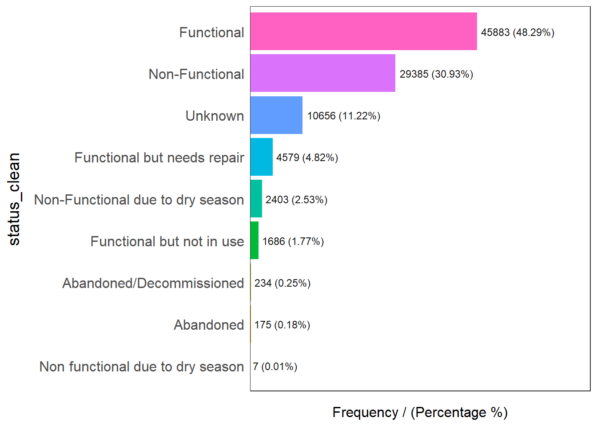
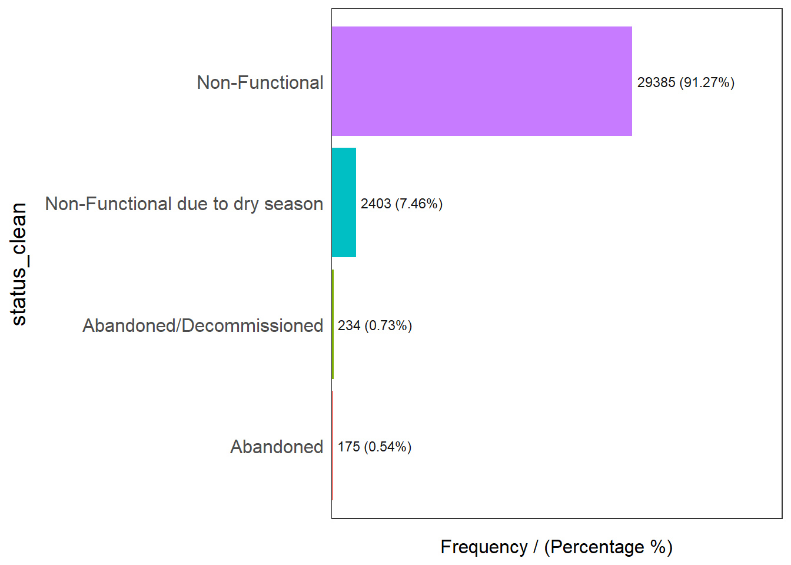
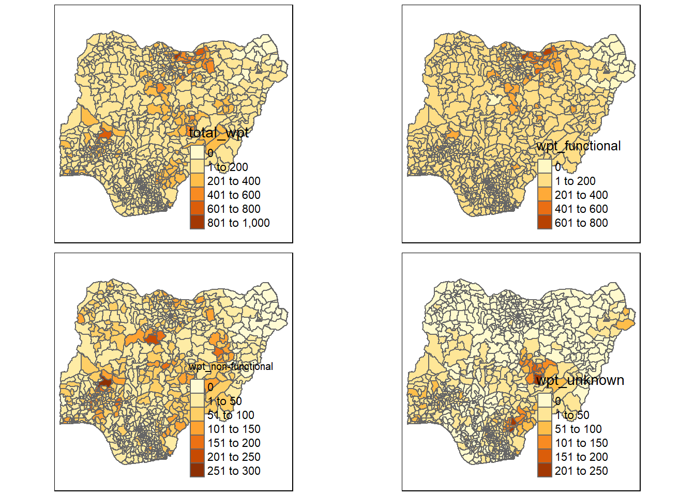

pacman::p_load(spdep,tidyverse,tmap,sf,funModeling)In Class Exercise 2
Overview
Getting Started
Importing Geospatial Data
nigeria_1 <- st_read(dsn = "geospatial",
layer = "geoBoundaries-NGA-ADM2",
crs = 4326)Reading layer `geoBoundaries-NGA-ADM2' from data source
`C:\Soe Htet\ISSS624\In-Class_Exercise\In-class_Ex02\Geospatial'
using driver `ESRI Shapefile'
Simple feature collection with 774 features and 5 fields
Geometry type: MULTIPOLYGON
Dimension: XY
Bounding box: xmin: 2.668534 ymin: 4.273007 xmax: 14.67882 ymax: 13.89442
Geodetic CRS: WGS 84nigeria_1Simple feature collection with 774 features and 5 fields
Geometry type: MULTIPOLYGON
Dimension: XY
Bounding box: xmin: 2.668534 ymin: 4.273007 xmax: 14.67882 ymax: 13.89442
Geodetic CRS: WGS 84
First 10 features:
shapeName Level shapeID shapeGroup shapeType
1 Aba North ADM2 NGA-ADM2-72505758B79815894 NGA ADM2
2 Aba South ADM2 NGA-ADM2-72505758B67905963 NGA ADM2
3 Abadam ADM2 NGA-ADM2-72505758B57073987 NGA ADM2
4 Abaji ADM2 NGA-ADM2-72505758B61968000 NGA ADM2
5 Abak ADM2 NGA-ADM2-72505758B39432389 NGA ADM2
6 Abakaliki ADM2 NGA-ADM2-72505758B36739173 NGA ADM2
7 Abeokuta North ADM2 NGA-ADM2-72505758B86358915 NGA ADM2
8 Abeokuta South ADM2 NGA-ADM2-72505758B56925175 NGA ADM2
9 Abi ADM2 NGA-ADM2-72505758B1616690 NGA ADM2
10 Aboh-Mbaise ADM2 NGA-ADM2-72505758B78555816 NGA ADM2
geometry
1 MULTIPOLYGON (((7.401109 5....
2 MULTIPOLYGON (((7.334479 5....
3 MULTIPOLYGON (((13.83477 13...
4 MULTIPOLYGON (((7.045872 9....
5 MULTIPOLYGON (((7.811244 5....
6 MULTIPOLYGON (((8.4109 6.28...
7 MULTIPOLYGON (((3.143903 7....
8 MULTIPOLYGON (((3.301615 7....
9 MULTIPOLYGON (((8.153282 5....
10 MULTIPOLYGON (((7.321909 5....Importing Attribute Data
nigeria_2 <- read.csv("aspatial/Nigeria_Att.csv")
nigeria_2 row_id source lat_deg lon_deg
1 429068 GRID3 7.980000 5.120000
2 222071 Federal Ministry of Water Resources, Nigeria 6.964532 3.597668
3 160612 WaterAid 6.486940 7.929720
4 160669 WaterAid 6.727570 7.648670
5 160642 WaterAid 6.779900 7.664850
6 160628 WaterAid 6.955560 7.779170
7 160632 WaterAid 7.017780 7.841670
8 642747 Living Water International 7.325500 8.985000
9 642456 Living Water International 7.171667 9.110000
10 641347 Living Water International 7.204867 9.216867
11 642749 Living Water International 7.320667 9.020667
12 415098 GRID3 5.210000 7.500000
13 414001 GRID3 4.970000 8.440000
14 429336 GRID3 5.920000 6.830000
15 471369 GRID3 5.930000 6.820000
16 415323 GRID3 5.220000 7.390000
17 420468 GRID3 5.030000 7.340000
18 415420 GRID3 5.180000 7.400000
19 420605 GRID3 4.970000 7.270000
20 428087 GRID3 5.570000 6.960000
21 429814 GRID3 5.790000 6.960000
22 420495 GRID3 5.370000 7.600000
23 423655 GRID3 5.860000 6.690000
24 417072 GRID3 5.410000 7.220000
25 423740 GRID3 5.970000 6.900000
26 416992 GRID3 5.460000 7.200000
27 412057 GRID3 9.010000 3.920000
28 419049 GRID3 9.540000 9.050000
29 161219 iMMAP 12.045986 13.919451
30 418479 GRID3 7.920000 5.020000
31 418291 GRID3 6.490000 8.160000
32 428363 GRID3 6.280000 8.400000
33 418349 GRID3 7.720000 5.260000
34 418615 GRID3 7.950000 5.550000
35 428387 GRID3 7.850000 5.110000
36 418396 GRID3 7.680000 5.080000
37 428299 GRID3 6.190000 8.070000
38 418483 GRID3 7.690000 5.390000
39 418644 GRID3 7.810000 5.560000
40 429081 GRID3 7.760000 5.750000
41 161412 iMMAP 11.231013 13.772267
42 161660 iMMAP 11.798733 13.134283
43 161237 iMMAP 12.034314 13.920785
44 161573 iMMAP 11.775378 13.217586
45 418630 GRID3 7.660000 5.150000
46 161530 iMMAP 11.857590 13.208838
47 161663 iMMAP 11.797402 13.129678
48 422046 GRID3 6.510000 2.740000
49 161625 iMMAP 11.843187 13.100804
50 161477 iMMAP 11.793593 13.142056
51 418290 GRID3 6.440000 7.880000
52 161627 iMMAP 11.844266 13.099607
53 161455 iMMAP 11.876614 13.251206
54 161429 iMMAP 11.224663 13.785254
55 161426 iMMAP 11.229941 13.790689
56 161418 iMMAP 11.232397 13.782447
57 161266 iMMAP 12.035015 13.913491
58 161559 iMMAP 11.903386 13.079669
59 161415 iMMAP 11.230072 13.776140
60 161709 iMMAP 12.664943 13.625737
61 418629 GRID3 7.660000 5.140000
62 161779 iMMAP 12.338964 14.189672
63 161574 iMMAP 11.771953 13.229628
64 161416 iMMAP 11.237954 13.782091
65 161630 iMMAP 11.846359 13.102044
66 161760 iMMAP 12.361763 14.172530
67 161505 iMMAP 11.793515 13.151781
68 161419 iMMAP 11.227367 13.780573
69 161624 iMMAP 11.845422 13.099852
70 161790 iMMAP 12.347416 14.179260
71 161556 iMMAP 11.816439 13.175472
72 161521 iMMAP 11.847277 13.181147
73 418532 GRID3 7.600000 5.440000
74 33385 Federal Ministry of Water Resources, Nigeria 5.280260 7.670047
75 32196 Federal Ministry of Water Resources, Nigeria 4.641055 7.607873
76 104209 WaterAid UK 10.586763 10.466773
77 33564 Federal Ministry of Water Resources, Nigeria 5.298448 7.606748
78 161579 iMMAP 11.855494 13.218025
79 161483 iMMAP 11.794279 13.150646
80 161428 iMMAP 11.224187 13.789775
81 219821 Federal Ministry of Water Resources, Nigeria 5.282103 7.941690
82 161509 iMMAP 11.800349 13.145377
83 161424 iMMAP 11.225234 13.793082
84 161337 iMMAP 11.237586 13.779341
85 33831 Federal Ministry of Water Resources, Nigeria 4.604970 7.654975
86 220387 Federal Ministry of Water Resources, Nigeria 6.032708 8.749950
87 220484 Federal Ministry of Water Resources, Nigeria 6.034098 8.749997
88 418249 GRID3 6.100000 7.810000
89 161413 iMMAP 11.231010 13.773419
90 161302 iMMAP 11.229372 13.773500
91 104207 WaterAid UK 10.662427 10.506700
92 161664 iMMAP 11.797427 13.137149
93 227398 Federal Ministry of Water Resources, Nigeria 8.147142 5.512055
94 65453 Federal Ministry of Water Resources, Nigeria 4.805835 6.080317
95 429123 GRID3 8.020000 5.060000
96 33746 Federal Ministry of Water Resources, Nigeria 5.338215 7.767138
97 33668 Federal Ministry of Water Resources, Nigeria 4.743371 8.182080
98 428348 GRID3 6.250000 8.320000
99 226823 Federal Ministry of Water Resources, Nigeria 8.107983 4.926598
100 422183 GRID3 7.810000 5.500000
101 428410 GRID3 7.840000 5.180000
102 32500 Federal Ministry of Water Resources, Nigeria 4.958788 7.849157
103 422131 GRID3 7.660000 5.170000
104 34027 Federal Ministry of Water Resources, Nigeria 5.245222 7.911180
105 418399 GRID3 7.730000 5.000000
106 422176 GRID3 7.700000 5.160000
107 65386 Federal Ministry of Water Resources, Nigeria 4.323172 6.066667
108 428421 GRID3 7.550000 5.220000
109 418687 GRID3 7.750000 5.160000
110 428324 GRID3 6.450000 7.930000
111 33611 Federal Ministry of Water Resources, Nigeria 5.028817 7.954097
112 677547 Federal Ministry of Water Resources, Nigeria 9.879808 8.905439
113 418414 GRID3 7.900000 4.970000
114 219442 Federal Ministry of Water Resources, Nigeria 6.619288 9.322713
115 467434 GRID3 6.300000 8.170000
116 33692 Federal Ministry of Water Resources, Nigeria 5.349803 7.762392
117 418358 GRID3 7.870000 5.010000
118 428321 GRID3 6.480000 7.910000
119 428334 GRID3 6.550000 7.760000
120 418608 GRID3 7.680000 5.190000
121 219712 Federal Ministry of Water Resources, Nigeria 5.922179 8.211103
122 472516 GRID3 6.160000 8.180000
123 418383 GRID3 7.760000 5.110000
124 418120 GRID3 6.250000 8.330000
125 418377 GRID3 7.520000 5.400000
126 31994 Federal Ministry of Water Resources, Nigeria 5.027910 7.893107
127 75410 Federal Ministry of Water Resources, Nigeria 5.068914 7.381922
128 33762 Federal Ministry of Water Resources, Nigeria 5.029468 7.937498
129 428383 GRID3 7.450000 5.130000
130 63895 Federal Ministry of Water Resources, Nigeria 6.691718 5.243707
131 428344 GRID3 6.250000 8.310000
132 32783 Federal Ministry of Water Resources, Nigeria 4.828982 7.884618
133 418350 GRID3 7.720000 5.250000
134 428266 GRID3 6.310000 8.380000
135 418099 GRID3 6.240000 8.340000
136 228216 Federal Ministry of Water Resources, Nigeria 8.138085 5.416824
137 422049 GRID3 6.480000 2.790000
138 32919 Federal Ministry of Water Resources, Nigeria 4.645645 7.661233
139 75587 Federal Ministry of Water Resources, Nigeria 4.909115 7.324255
140 325817 Federal Ministry of Water Resources, Nigeria 9.781495 11.188195
141 217934 Federal Ministry of Water Resources, Nigeria 6.122225 8.698142
142 33339 Federal Ministry of Water Resources, Nigeria 4.651093 8.230172
143 72217 Federal Ministry of Water Resources, Nigeria 6.505497 3.226249
144 75443 Federal Ministry of Water Resources, Nigeria 4.919927 7.212887
145 65313 Federal Ministry of Water Resources, Nigeria 4.667047 6.096273
146 33099 Federal Ministry of Water Resources, Nigeria 4.999522 7.607580
147 429089 GRID3 7.850000 5.340000
148 418455 GRID3 7.760000 5.450000
149 47470 Federal Ministry of Water Resources, Nigeria 4.865259 7.022207
150 428274 GRID3 6.580000 7.800000
151 32051 Federal Ministry of Water Resources, Nigeria 5.005430 7.976970
152 305287 Federal Ministry of Water Resources, Nigeria 6.008100 7.942751
153 418216 GRID3 6.290000 8.040000
154 65367 Federal Ministry of Water Resources, Nigeria 4.745568 6.157843
155 428307 GRID3 6.270000 8.310000
156 471945 GRID3 6.140000 8.150000
157 428313 GRID3 6.270000 8.290000
158 221098 Federal Ministry of Water Resources, Nigeria 5.905432 5.065907
159 221859 Federal Ministry of Water Resources, Nigeria 7.142345 3.375330
160 221477 Federal Ministry of Water Resources, Nigeria 6.142173 5.198247
161 428341 GRID3 6.450000 7.950000
162 73191 Federal Ministry of Water Resources, Nigeria 8.379568 6.923259
163 74495 Federal Ministry of Water Resources, Nigeria 7.362790 7.609841
164 418384 GRID3 7.870000 4.980000
165 33044 Federal Ministry of Water Resources, Nigeria 5.189637 7.722518
166 227198 Federal Ministry of Water Resources, Nigeria 8.804958 2.974028
167 65377 Federal Ministry of Water Resources, Nigeria 4.473077 5.774763
168 418398 GRID3 7.710000 5.040000
169 418402 GRID3 7.620000 5.010000
170 33769 Federal Ministry of Water Resources, Nigeria 5.025010 7.989168
171 428298 GRID3 6.630000 8.040000
172 75685 Federal Ministry of Water Resources, Nigeria 5.061780 7.267695
173 418632 GRID3 7.500000 5.240000
174 221600 Federal Ministry of Water Resources, Nigeria 5.488695 6.326085
175 32403 Federal Ministry of Water Resources, Nigeria 5.038122 7.961853
176 418395 GRID3 7.710000 5.290000
177 418214 GRID3 6.250000 8.000000
178 65361 Federal Ministry of Water Resources, Nigeria 4.429768 5.827233
179 418337 GRID3 6.290000 7.820000
180 418381 GRID3 7.780000 5.030000
181 33162 Federal Ministry of Water Resources, Nigeria 4.878257 7.843060
182 418475 GRID3 7.760000 5.440000
183 418570 GRID3 7.890000 5.400000
184 429881 GRID3 5.810000 7.920000
185 418426 GRID3 7.700000 5.320000
186 226958 Federal Ministry of Water Resources, Nigeria 8.146078 4.716639
187 223354 Federal Ministry of Water Resources, Nigeria 7.202568 5.566467
188 418212 GRID3 6.430000 7.810000
189 471954 GRID3 7.450000 4.980000
190 31881 Federal Ministry of Water Resources, Nigeria 4.537700 7.709000
191 418654 GRID3 7.990000 5.100000
192 47596 Federal Ministry of Water Resources, Nigeria 4.791043 6.642508
193 74848 Federal Ministry of Water Resources, Nigeria 8.434393 5.461976
194 33945 Federal Ministry of Water Resources, Nigeria 5.293180 7.604650
195 65303 Federal Ministry of Water Resources, Nigeria 4.334268 6.056623
196 75641 Federal Ministry of Water Resources, Nigeria 4.910737 7.326195
197 32294 Federal Ministry of Water Resources, Nigeria 5.037335 7.918167
198 32075 Federal Ministry of Water Resources, Nigeria 4.996822 7.606488
199 15077 Federal Ministry of Water Resources, Nigeria 5.571933 7.351624
200 220990 Federal Ministry of Water Resources, Nigeria 6.025355 8.746032
201 418462 GRID3 8.040000 5.150000
202 428317 GRID3 6.260000 8.300000
203 70566 Federal Ministry of Water Resources, Nigeria 7.317741 4.785507
204 219764 Federal Ministry of Water Resources, Nigeria 5.920402 8.209430
205 428398 GRID3 7.670000 5.210000
206 418110 GRID3 6.220000 8.380000
207 219631 Federal Ministry of Water Resources, Nigeria 5.867770 8.877868
208 428346 GRID3 6.550000 7.790000
209 472515 GRID3 5.990000 7.900000
210 418351 GRID3 7.560000 4.970000
211 31831 Federal Ministry of Water Resources, Nigeria 5.000253 7.846823
212 418554 GRID3 7.800000 5.700000
213 428342 GRID3 6.660000 8.000000
214 422125 GRID3 7.990000 5.150000
215 429061 GRID3 7.620000 5.170000
216 429091 GRID3 7.990000 5.130000
217 310665 Federal Ministry of Water Resources, Nigeria 9.719657 10.971933
218 428418 GRID3 7.520000 5.220000
219 32576 Federal Ministry of Water Resources, Nigeria 5.029015 7.873608
220 77467 Federal Ministry of Water Resources, Nigeria 7.049690 8.208988
221 32039 Federal Ministry of Water Resources, Nigeria 4.867897 7.914545
222 418656 GRID3 7.950000 5.240000
223 418283 GRID3 6.310000 8.200000
224 74028 Federal Ministry of Water Resources, Nigeria 7.431950 7.706955
225 326592 Federal Ministry of Water Resources, Nigeria 9.727940 11.101953
226 13987 Federal Ministry of Water Resources, Nigeria 5.574569 7.318236
227 418697 GRID3 7.590000 5.110000
228 65331 Federal Ministry of Water Resources, Nigeria 4.749053 6.164390
229 418389 GRID3 7.680000 5.620000
230 78739 Federal Ministry of Water Resources, Nigeria 7.905322 9.548748
231 33614 Federal Ministry of Water Resources, Nigeria 4.835450 8.040950
232 33946 Federal Ministry of Water Resources, Nigeria 4.876673 7.920772
233 32852 Federal Ministry of Water Resources, Nigeria 5.049782 7.851272
234 33714 Federal Ministry of Water Resources, Nigeria 4.811873 8.068382
235 32730 Federal Ministry of Water Resources, Nigeria 4.937637 7.855697
236 229440 Federal Ministry of Water Resources, Nigeria 8.034921 5.102437
237 63806 Federal Ministry of Water Resources, Nigeria 7.124536 6.343814
238 528276 Federal Ministry of Water Resources, Nigeria 9.542796 9.124126
239 65190 Federal Ministry of Water Resources, Nigeria 4.700872 6.031447
240 418273 GRID3 6.020000 8.130000
241 224027 Federal Ministry of Water Resources, Nigeria 6.792623 4.864937
242 467435 GRID3 6.350000 8.110000
243 418199 GRID3 6.060000 8.270000
244 418699 GRID3 7.820000 5.070000
245 418660 GRID3 7.830000 5.030000
246 418694 GRID3 8.000000 5.090000
247 33177 Federal Ministry of Water Resources, Nigeria 4.872957 7.914648
248 75207 Federal Ministry of Water Resources, Nigeria 5.012270 7.349536
249 428408 GRID3 7.660000 5.500000
250 64551 Federal Ministry of Water Resources, Nigeria 5.943955 6.863799
251 32041 Federal Ministry of Water Resources, Nigeria 4.935177 7.865417
252 32934 Federal Ministry of Water Resources, Nigeria 5.301418 7.839908
253 429104 GRID3 7.770000 5.740000
254 219218 Federal Ministry of Water Resources, Nigeria 5.921819 8.210108
255 32065 Federal Ministry of Water Resources, Nigeria 5.025027 7.895915
256 217996 Federal Ministry of Water Resources, Nigeria 6.491372 8.806008
257 33083 Federal Ministry of Water Resources, Nigeria 4.832197 7.911165
258 469493 GRID3 6.550000 2.800000
259 428292 GRID3 6.240000 7.750000
260 428422 GRID3 7.810000 5.550000
261 418599 GRID3 7.810000 4.960000
262 467438 GRID3 6.170000 7.810000
263 428395 GRID3 7.800000 5.340000
264 32100 Federal Ministry of Water Resources, Nigeria 5.002140 7.880627
265 77099 Federal Ministry of Water Resources, Nigeria 7.048345 8.205643
266 313886 Federal Ministry of Water Resources, Nigeria 9.791373 10.993043
267 418366 GRID3 7.690000 5.630000
268 33839 Federal Ministry of Water Resources, Nigeria 4.750415 8.228413
269 429902 GRID3 6.380000 7.900000
270 262938 Federal Ministry of Water Resources, Nigeria 8.083770 4.743831
271 220382 Federal Ministry of Water Resources, Nigeria 5.081152 8.356955
272 429113 GRID3 7.750000 5.720000
273 71171 Federal Ministry of Water Resources, Nigeria 6.659238 3.617992
274 418109 GRID3 6.210000 8.370000
275 32743 Federal Ministry of Water Resources, Nigeria 5.016205 7.842628
276 65260 Federal Ministry of Water Resources, Nigeria 4.329135 6.054448
277 32422 Federal Ministry of Water Resources, Nigeria 4.808318 8.065802
278 219464 Federal Ministry of Water Resources, Nigeria 5.920909 8.211388
279 422051 GRID3 6.510000 2.800000
280 64018 Federal Ministry of Water Resources, Nigeria 6.800593 6.432710
281 418633 GRID3 7.790000 5.530000
282 418210 GRID3 6.420000 7.810000
283 327250 Federal Ministry of Water Resources, Nigeria 7.428972 10.306915
284 678337 Federal Ministry of Water Resources, Nigeria 9.167288 9.157006
285 418521 GRID3 7.860000 5.070000
286 75583 Federal Ministry of Water Resources, Nigeria 4.976007 7.190612
287 422066 GRID3 7.800000 5.060000
288 33427 Federal Ministry of Water Resources, Nigeria 4.838410 8.003297
289 74642 Federal Ministry of Water Resources, Nigeria 7.884609 7.063799
290 72755 Federal Ministry of Water Resources, Nigeria 7.996578 7.320774
291 418684 GRID3 7.760000 5.210000
292 221054 Federal Ministry of Water Resources, Nigeria 5.779347 5.070828
293 418370 GRID3 7.780000 5.590000
294 418285 GRID3 6.380000 7.910000
295 65305 Federal Ministry of Water Resources, Nigeria 4.716827 6.147018
296 63544 Federal Ministry of Water Resources, Nigeria 7.440523 6.068667
297 422044 GRID3 6.530000 2.800000
298 471955 GRID3 7.450000 4.990000
299 418331 GRID3 6.340000 8.080000
300 32425 Federal Ministry of Water Resources, Nigeria 5.044088 7.870202
301 63878 Federal Ministry of Water Resources, Nigeria 6.373262 5.609438
302 418442 GRID3 7.730000 5.020000
303 32643 Federal Ministry of Water Resources, Nigeria 4.638768 7.660535
304 429058 GRID3 7.790000 5.290000
305 325085 Federal Ministry of Water Resources, Nigeria 9.640390 11.262661
306 472514 GRID3 6.120000 8.180000
307 418287 GRID3 6.200000 7.830000
308 62568 Federal Ministry of Water Resources, Nigeria 7.074240 6.258984
309 74713 Federal Ministry of Water Resources, Nigeria 8.379582 6.924833
310 14977 Federal Ministry of Water Resources, Nigeria 5.761748 7.071887
311 33461 Federal Ministry of Water Resources, Nigeria 4.806203 8.232315
312 422172 GRID3 7.780000 5.500000
313 418606 GRID3 7.650000 5.160000
314 418557 GRID3 7.940000 5.470000
315 161639 iMMAP 11.845702 13.101048
316 422071 GRID3 8.000000 5.140000
317 422167 GRID3 7.960000 5.230000
318 179522 Federal Ministry of Water Resources, Nigeria 11.791167 8.640282
319 422082 GRID3 7.630000 5.070000
320 226728 Federal Ministry of Water Resources, Nigeria 8.912549 3.199483
321 32915 Federal Ministry of Water Resources, Nigeria 4.808787 8.254875
322 32992 Federal Ministry of Water Resources, Nigeria 4.655910 8.251580
323 47591 Federal Ministry of Water Resources, Nigeria 4.651106 7.492847
324 422155 GRID3 7.820000 5.570000
325 221666 Federal Ministry of Water Resources, Nigeria 5.911877 6.222240
326 65267 Federal Ministry of Water Resources, Nigeria 4.627238 6.171380
327 33109 Federal Ministry of Water Resources, Nigeria 4.952223 8.028657
328 313822 Federal Ministry of Water Resources, Nigeria 10.425957 11.378293
329 422175 GRID3 7.780000 5.510000
330 418137 GRID3 6.510000 7.950000
331 422042 GRID3 6.540000 2.800000
332 33367 Federal Ministry of Water Resources, Nigeria 4.926903 7.784295
333 34015 Federal Ministry of Water Resources, Nigeria 5.038207 7.678767
334 161643 iMMAP 11.846482 13.102263
335 70578 Federal Ministry of Water Resources, Nigeria 7.759448 4.563998
336 32005 Federal Ministry of Water Resources, Nigeria 5.134012 7.877907
337 220920 Federal Ministry of Water Resources, Nigeria 5.920487 8.212331
338 418700 GRID3 7.700000 4.930000
339 418756 GRID3 9.490000 3.600000
340 428265 GRID3 6.210000 8.360000
341 64226 Federal Ministry of Water Resources, Nigeria 6.314135 5.850719
342 418690 GRID3 7.730000 4.960000
343 428276 GRID3 6.170000 8.020000
344 64029 Federal Ministry of Water Resources, Nigeria 7.073951 6.259358
345 216050 Federal Ministry of Water Resources, Nigeria 11.835092 8.733465
346 218964 Federal Ministry of Water Resources, Nigeria 5.921434 8.211049
347 33073 Federal Ministry of Water Resources, Nigeria 5.104075 7.762215
348 221715 Federal Ministry of Water Resources, Nigeria 5.840697 6.293407
349 429080 GRID3 7.990000 5.170000
350 219017 Federal Ministry of Water Resources, Nigeria 6.391593 8.642753
351 428400 GRID3 7.360000 5.460000
352 418413 GRID3 7.890000 4.980000
353 469164 GRID3 6.330000 8.080000
354 32524 Federal Ministry of Water Resources, Nigeria 5.087368 7.725095
355 32478 Federal Ministry of Water Resources, Nigeria 4.951387 7.841313
356 418323 GRID3 6.200000 8.360000
357 75430 Federal Ministry of Water Resources, Nigeria 4.991602 7.401014
358 418679 GRID3 7.760000 5.220000
359 65375 Federal Ministry of Water Resources, Nigeria 4.701098 6.033012
360 161377 iMMAP 11.091728 13.696212
361 428280 GRID3 6.080000 7.770000
362 428376 GRID3 6.250000 8.290000
363 33334 Federal Ministry of Water Resources, Nigeria 4.907158 7.629253
364 418472 GRID3 7.880000 5.070000
365 418445 GRID3 7.780000 5.020000
366 472509 GRID3 6.030000 7.940000
367 418296 GRID3 6.360000 8.140000
368 322862 Federal Ministry of Water Resources, Nigeria 11.050182 10.844403
369 33159 Federal Ministry of Water Resources, Nigeria 4.747243 8.226897
370 418696 GRID3 8.000000 5.100000
371 33033 Federal Ministry of Water Resources, Nigeria 4.662702 8.179985
372 428323 GRID3 6.180000 8.060000
373 418513 GRID3 7.500000 4.980000
374 32300 Federal Ministry of Water Resources, Nigeria 5.121722 7.662723
375 422063 GRID3 7.720000 5.100000
376 75123 Federal Ministry of Water Resources, Nigeria 5.044539 7.383360
377 418408 GRID3 7.810000 5.000000
378 32990 Federal Ministry of Water Resources, Nigeria 5.201520 7.645118
379 418318 GRID3 6.190000 8.350000
380 428314 GRID3 6.260000 8.280000
381 422141 GRID3 7.660000 5.160000
382 422081 GRID3 8.050000 5.150000
383 422149 GRID3 7.990000 5.200000
384 226812 Federal Ministry of Water Resources, Nigeria 8.074540 5.318535
385 94187 Federal Ministry of Water Resources, Nigeria 11.931738 8.635263
386 161641 iMMAP 11.847117 13.101809
387 65425 Federal Ministry of Water Resources, Nigeria 4.697935 6.087895
388 468644 GRID3 7.930000 5.470000
389 418465 GRID3 7.790000 5.110000
390 33089 Federal Ministry of Water Resources, Nigeria 4.896862 7.886675
391 428365 GRID3 6.350000 8.080000
392 263977 Federal Ministry of Water Resources, Nigeria 8.085357 5.156589
393 32588 Federal Ministry of Water Resources, Nigeria 4.928563 7.788923
394 34016 Federal Ministry of Water Resources, Nigeria 5.264257 7.627095
395 161884 iMMAP 12.365647 14.213996
396 217835 Federal Ministry of Water Resources, Nigeria 4.945561 8.316165
397 468640 GRID3 6.010000 7.930000
398 32716 Federal Ministry of Water Resources, Nigeria 5.131710 7.617618
399 422169 GRID3 7.950000 5.230000
400 161638 iMMAP 11.846036 13.100203
401 66401 Federal Ministry of Water Resources, Nigeria 8.031187 4.637400
402 327085 Federal Ministry of Water Resources, Nigeria 10.542265 11.426385
403 87216 Federal Ministry of Water Resources, Nigeria 11.679238 8.680620
404 418406 GRID3 7.790000 5.000000
405 418215 GRID3 6.280000 8.050000
406 14747 Federal Ministry of Water Resources, Nigeria 5.511050 7.037932
407 472209 GRID3 7.720000 5.730000
408 418571 GRID3 7.920000 5.440000
409 217097 Federal Ministry of Water Resources, Nigeria 11.825282 8.767008
410 418324 GRID3 6.240000 8.320000
411 429125 GRID3 7.630000 5.200000
412 161410 iMMAP 11.084062 13.692836
413 418634 GRID3 7.870000 5.090000
414 467442 GRID3 6.480000 7.810000
415 418499 GRID3 7.670000 5.390000
416 418100 GRID3 6.230000 8.350000
417 429124 GRID3 7.440000 5.450000
418 33588 Federal Ministry of Water Resources, Nigeria 5.038472 7.960905
419 418480 GRID3 7.710000 5.400000
420 418678 GRID3 7.770000 5.220000
421 33451 Federal Ministry of Water Resources, Nigeria 5.281877 7.630807
422 422075 GRID3 7.330000 5.450000
423 679137 Federal Ministry of Water Resources, Nigeria 8.776910 9.185690
424 418659 GRID3 7.840000 5.030000
425 161649 iMMAP 11.843033 13.098682
426 428290 GRID3 6.090000 7.780000
427 324273 Federal Ministry of Water Resources, Nigeria 10.572932 11.413702
428 418559 GRID3 7.870000 5.500000
429 418328 GRID3 6.240000 8.330000
430 65437 Federal Ministry of Water Resources, Nigeria 4.975593 5.641380
431 33928 Federal Ministry of Water Resources, Nigeria 4.924035 8.103968
432 33184 Federal Ministry of Water Resources, Nigeria 5.142978 7.550417
433 87413 Federal Ministry of Water Resources, Nigeria 11.859013 8.652363
434 428413 GRID3 7.890000 5.110000
435 418386 GRID3 7.700000 5.640000
436 418691 GRID3 7.980000 5.090000
437 418439 GRID3 7.920000 5.150000
438 428328 GRID3 6.440000 7.950000
439 418321 GRID3 6.190000 8.360000
440 418206 GRID3 6.300000 8.200000
441 428409 GRID3 7.850000 5.190000
442 418443 GRID3 7.670000 5.460000
443 468620 GRID3 6.160000 8.190000
444 428353 GRID3 6.290000 8.390000
445 418512 GRID3 7.680000 5.240000
446 418277 GRID3 6.070000 7.760000
447 428382 GRID3 7.840000 5.200000
448 428306 GRID3 6.630000 8.030000
449 76088 Federal Ministry of Water Resources, Nigeria 5.396330 7.340188
450 59373 Federal Ministry of Water Resources, Nigeria 8.382863 9.332461
451 59533 Federal Ministry of Water Resources, Nigeria 8.574487 8.320587
452 221255 Federal Ministry of Water Resources, Nigeria 5.843233 6.299592
453 418622 GRID3 7.810000 5.070000
454 418185 GRID3 6.450000 7.800000
455 223787 Federal Ministry of Water Resources, Nigeria 7.368952 5.826008
456 418685 GRID3 7.720000 5.150000
457 161618 iMMAP 11.845170 13.148546
458 678456 Federal Ministry of Water Resources, Nigeria 9.438201 9.490898
459 418108 GRID3 6.220000 8.370000
460 161647 iMMAP 11.842884 13.098726
461 469100 GRID3 6.460000 7.950000
462 428359 GRID3 6.300000 8.390000
463 75921 Federal Ministry of Water Resources, Nigeria 4.909747 7.225545
464 472564 GRID3 7.730000 5.720000
465 86782 Federal Ministry of Water Resources, Nigeria 11.791613 8.606103
466 418573 GRID3 7.890000 5.480000
467 418628 GRID3 7.660000 5.130000
468 418347 GRID3 7.690000 5.260000
469 33550 Federal Ministry of Water Resources, Nigeria 5.136115 7.559308
470 161842 iMMAP 12.371772 14.201966
471 425038 GRID3 8.310000 4.960000
472 471957 GRID3 7.460000 5.020000
473 418456 GRID3 7.740000 5.570000
474 65304 Federal Ministry of Water Resources, Nigeria 4.321810 6.066258
475 90266 Federal Ministry of Water Resources, Nigeria 11.834003 8.734258
476 14875 Federal Ministry of Water Resources, Nigeria 5.511273 7.039516
477 418195 GRID3 6.250000 8.340000
478 422190 GRID3 7.870000 4.880000
479 418207 GRID3 6.250000 8.140000
480 161645 iMMAP 11.844696 13.099575
481 216866 Federal Ministry of Water Resources, Nigeria 11.838822 8.729925
482 418449 GRID3 7.910000 5.260000
483 418380 GRID3 7.770000 5.250000
484 14420 Federal Ministry of Water Resources, Nigeria 5.660452 6.994232
485 418316 GRID3 6.190000 8.370000
486 161650 iMMAP 11.842764 13.099099
487 472507 GRID3 6.040000 7.930000
488 181020 Federal Ministry of Water Resources, Nigeria 11.880048 8.565047
489 65242 Federal Ministry of Water Resources, Nigeria 4.709933 5.997208
490 429114 GRID3 7.500000 5.230000
491 221202 Federal Ministry of Water Resources, Nigeria 5.843127 6.299637
492 75718 Federal Ministry of Water Resources, Nigeria 5.037973 7.359110
493 32688 Federal Ministry of Water Resources, Nigeria 5.177948 7.724420
494 59507 Federal Ministry of Water Resources, Nigeria 8.981710 8.528167
495 428316 GRID3 6.260000 8.330000
496 33497 Federal Ministry of Water Resources, Nigeria 5.135260 7.729655
497 418653 GRID3 7.980000 5.100000
498 32713 Federal Ministry of Water Resources, Nigeria 4.717127 8.141073
499 418461 GRID3 8.030000 5.140000
500 180675 Federal Ministry of Water Resources, Nigeria 11.789697 8.782508
501 422064 GRID3 7.700000 4.890000
502 75609 Federal Ministry of Water Resources, Nigeria 4.926932 7.245875
503 326099 Federal Ministry of Water Resources, Nigeria 10.397220 11.382993
504 468645 GRID3 7.940000 5.270000
505 469492 GRID3 6.550000 2.810000
506 471959 GRID3 7.940000 5.190000
507 429866 GRID3 6.320000 8.100000
508 422062 GRID3 7.860000 5.120000
509 65607 Federal Ministry of Water Resources, Nigeria 7.891137 4.713438
510 33486 Federal Ministry of Water Resources, Nigeria 5.099227 7.760242
511 219713 Federal Ministry of Water Resources, Nigeria 6.033415 8.752418
512 428424 GRID3 7.980000 5.130000
513 161532 iMMAP 11.850032 13.177641
514 33919 Federal Ministry of Water Resources, Nigeria 4.834920 7.882613
515 428380 GRID3 6.680000 8.050000
516 428296 GRID3 6.640000 8.030000
517 161586 iMMAP 11.928821 13.601040
518 429087 GRID3 7.860000 5.340000
519 33770 Federal Ministry of Water Resources, Nigeria 5.101710 7.984998
520 68989 Federal Ministry of Water Resources, Nigeria 7.509588 4.265002
521 418367 GRID3 7.710000 5.260000
522 217824 Federal Ministry of Water Resources, Nigeria 6.525882 8.809913
523 418689 GRID3 7.760000 5.160000
524 418138 GRID3 6.500000 7.950000
525 92115 Federal Ministry of Water Resources, Nigeria 11.826625 8.582097
526 429048 GRID3 7.870000 5.180000
527 75700 Federal Ministry of Water Resources, Nigeria 5.025580 7.345503
528 429057 GRID3 7.740000 5.400000
529 228057 Federal Ministry of Water Resources, Nigeria 8.221223 5.293699
530 428291 GRID3 6.070000 7.980000
531 64276 Federal Ministry of Water Resources, Nigeria 7.141526 5.983124
532 161335 iMMAP 11.086002 13.692744
533 422121 GRID3 7.850000 5.090000
534 428377 GRID3 6.240000 8.280000
535 161905 iMMAP 12.340603 14.184177
536 216052 Federal Ministry of Water Resources, Nigeria 11.832587 8.730443
537 118732 Federal Ministry of Water Resources, Nigeria 11.782413 8.682580
538 161637 iMMAP 11.844279 13.100163
539 158357 Federal Ministry of Water Resources, Nigeria 11.806603 8.730087
540 161563 iMMAP 11.779910 13.223992
541 220643 Federal Ministry of Water Resources, Nigeria 6.008359 9.057161
542 161613 iMMAP 11.845539 13.149829
543 161631 iMMAP 11.843327 13.099569
544 179967 Federal Ministry of Water Resources, Nigeria 11.835205 8.593133
545 161642 iMMAP 11.847088 13.102087
546 161019 iMMAP 11.521000 13.687581
547 161646 iMMAP 11.844401 13.099606
548 171581 Federal Ministry of Water Resources, Nigeria 11.798092 8.645498
549 116136 Federal Ministry of Water Resources, Nigeria 11.880292 8.662077
550 161619 iMMAP 11.845000 13.149808
551 679385 Federal Ministry of Water Resources, Nigeria 12.022632 11.276720
552 87579 Federal Ministry of Water Resources, Nigeria 11.827692 8.731523
553 161651 iMMAP 11.846913 13.101392
554 114836 Federal Ministry of Water Resources, Nigeria 11.879008 8.682798
555 418560 GRID3 7.860000 5.500000
556 161903 iMMAP 12.340026 14.183201
557 311440 Federal Ministry of Water Resources, Nigeria 10.393312 11.379573
558 325916 Federal Ministry of Water Resources, Nigeria 11.050188 10.841305
559 87039 Federal Ministry of Water Resources, Nigeria 11.806650 8.729697
560 85900 Federal Ministry of Water Resources, Nigeria 11.801723 8.619995
561 216935 Federal Ministry of Water Resources, Nigeria 11.848555 8.674070
562 11412 Federal Ministry of Water Resources, Nigeria 12.389712 10.582387
563 418592 GRID3 7.790000 5.710000
564 33016 Federal Ministry of Water Resources, Nigeria 4.526812 7.748185
565 87208 Federal Ministry of Water Resources, Nigeria 11.832773 8.729543
566 86893 Federal Ministry of Water Resources, Nigeria 11.825185 8.690210
567 429106 GRID3 7.760000 5.740000
568 47618 Federal Ministry of Water Resources, Nigeria 4.853210 6.643272
569 31962 Federal Ministry of Water Resources, Nigeria 4.670585 7.762312
570 48031 Federal Ministry of Water Resources, Nigeria 5.550722 6.591315
571 31890 Federal Ministry of Water Resources, Nigeria 4.685035 7.743470
572 33479 Federal Ministry of Water Resources, Nigeria 4.788788 7.975592
573 47673 Federal Ministry of Water Resources, Nigeria 4.788868 6.992735
574 32781 Federal Ministry of Water Resources, Nigeria 4.834425 7.858392
575 218669 Federal Ministry of Water Resources, Nigeria 4.919565 8.327282
576 218733 Federal Ministry of Water Resources, Nigeria 4.948599 8.321399
577 220400 Federal Ministry of Water Resources, Nigeria 4.917395 8.323015
578 13997 Federal Ministry of Water Resources, Nigeria 5.479936 6.935928
579 32328 Federal Ministry of Water Resources, Nigeria 4.937612 7.844723
580 75299 Federal Ministry of Water Resources, Nigeria 5.038841 7.283417
581 47605 Federal Ministry of Water Resources, Nigeria 5.334073 6.657902
582 48070 Federal Ministry of Water Resources, Nigeria 4.820590 7.007155
583 47963 Federal Ministry of Water Resources, Nigeria 4.734110 6.860772
584 32027 Federal Ministry of Water Resources, Nigeria 4.942305 7.499982
585 32420 Federal Ministry of Water Resources, Nigeria 4.761012 8.229518
586 33484 Federal Ministry of Water Resources, Nigeria 4.782078 7.890450
587 75398 Federal Ministry of Water Resources, Nigeria 4.985201 7.240876
588 221235 Federal Ministry of Water Resources, Nigeria 5.371122 6.147993
589 47798 Federal Ministry of Water Resources, Nigeria 4.816980 7.012723
590 32471 Federal Ministry of Water Resources, Nigeria 4.832741 7.637298
591 47884 Federal Ministry of Water Resources, Nigeria 4.801958 7.009423
592 47518 Federal Ministry of Water Resources, Nigeria 4.807009 6.934857
593 32459 Federal Ministry of Water Resources, Nigeria 4.703801 8.026605
594 32238 Federal Ministry of Water Resources, Nigeria 5.086153 7.820107
595 33244 Federal Ministry of Water Resources, Nigeria 4.830872 8.027942
596 220433 Federal Ministry of Water Resources, Nigeria 4.949124 8.314426
597 65368 Federal Ministry of Water Resources, Nigeria 4.571545 6.313675
598 47825 Federal Ministry of Water Resources, Nigeria 4.817337 7.011635
599 47533 Federal Ministry of Water Resources, Nigeria 4.635955 7.359928
600 32353 Federal Ministry of Water Resources, Nigeria 4.765705 7.968685
601 15243 Federal Ministry of Water Resources, Nigeria 5.522163 6.751416
602 31894 Federal Ministry of Water Resources, Nigeria 5.037245 7.829573
603 14872 Federal Ministry of Water Resources, Nigeria 5.513129 6.747769
604 33685 Federal Ministry of Water Resources, Nigeria 4.634383 7.961352
605 221412 Federal Ministry of Water Resources, Nigeria 5.370002 5.797365
606 47516 Federal Ministry of Water Resources, Nigeria 4.793030 6.990212
607 48086 Federal Ministry of Water Resources, Nigeria 4.833941 7.031566
608 48078 Federal Ministry of Water Resources, Nigeria 4.734855 6.865657
609 65487 Federal Ministry of Water Resources, Nigeria 4.917862 6.420017
610 48005 Federal Ministry of Water Resources, Nigeria 4.753869 6.782855
611 218965 Federal Ministry of Water Resources, Nigeria 4.942693 8.309576
612 47474 Federal Ministry of Water Resources, Nigeria 5.237538 6.654930
613 32911 Federal Ministry of Water Resources, Nigeria 5.017000 7.531497
614 33346 Federal Ministry of Water Resources, Nigeria 4.770972 8.183098
615 65294 Federal Ministry of Water Resources, Nigeria 4.917627 6.417232
616 47921 Federal Ministry of Water Resources, Nigeria 4.956885 6.880017
617 14205 Federal Ministry of Water Resources, Nigeria 5.415364 7.232378
618 47899 Federal Ministry of Water Resources, Nigeria 4.480377 7.410647
619 32192 Federal Ministry of Water Resources, Nigeria 4.768202 7.748473
620 47878 Federal Ministry of Water Resources, Nigeria 5.188095 6.556182
621 47553 Federal Ministry of Water Resources, Nigeria 4.851242 6.654900
622 31937 Federal Ministry of Water Resources, Nigeria 4.573723 7.882855
623 47590 Federal Ministry of Water Resources, Nigeria 4.614373 7.490063
624 47478 Federal Ministry of Water Resources, Nigeria 4.648639 7.383274
625 75501 Federal Ministry of Water Resources, Nigeria 4.924875 7.317694
626 33127 Federal Ministry of Water Resources, Nigeria 4.685455 7.703076
627 64527 Federal Ministry of Water Resources, Nigeria 5.762015 6.878493
628 221065 Federal Ministry of Water Resources, Nigeria 5.489718 5.702692
629 47593 Federal Ministry of Water Resources, Nigeria 5.047442 7.222722
630 47379 Federal Ministry of Water Resources, Nigeria 4.984440 6.428392
631 33856 Federal Ministry of Water Resources, Nigeria 4.604475 7.957627
632 32682 Federal Ministry of Water Resources, Nigeria 4.937293 7.854248
633 220464 Federal Ministry of Water Resources, Nigeria 4.928439 8.312933
634 65352 Federal Ministry of Water Resources, Nigeria 4.533252 6.398015
635 225651 Federal Ministry of Water Resources, Nigeria 5.984790 4.905367
636 47417 Federal Ministry of Water Resources, Nigeria 5.345408 6.652977
637 47955 Federal Ministry of Water Resources, Nigeria 4.859772 6.616147
638 47820 Federal Ministry of Water Resources, Nigeria 4.820147 7.011972
639 48139 Federal Ministry of Water Resources, Nigeria 4.935898 6.938497
640 65296 Federal Ministry of Water Resources, Nigeria 4.706253 6.089153
641 47939 Federal Ministry of Water Resources, Nigeria 4.939492 6.641140
642 75539 Federal Ministry of Water Resources, Nigeria 4.997298 7.367180
643 47454 Federal Ministry of Water Resources, Nigeria 4.628701 7.360008
644 47685 Federal Ministry of Water Resources, Nigeria 4.482028 7.423360
645 33815 Federal Ministry of Water Resources, Nigeria 4.650475 8.254103
646 219760 Federal Ministry of Water Resources, Nigeria 5.648865 7.966177
647 65257 Federal Ministry of Water Resources, Nigeria 4.958160 6.435032
648 32965 Federal Ministry of Water Resources, Nigeria 4.868170 8.060363
649 47414 Federal Ministry of Water Resources, Nigeria 4.822910 7.041755
650 65306 Federal Ministry of Water Resources, Nigeria 5.244740 6.384520
651 47505 Federal Ministry of Water Resources, Nigeria 4.851790 6.648945
652 48128 Federal Ministry of Water Resources, Nigeria 4.731550 6.864159
653 32659 Federal Ministry of Water Resources, Nigeria 4.647143 7.669033
654 218825 Federal Ministry of Water Resources, Nigeria 4.943149 8.309601
655 33121 Federal Ministry of Water Resources, Nigeria 4.779474 8.197356
656 219792 Federal Ministry of Water Resources, Nigeria 4.933720 8.312364
657 47462 Federal Ministry of Water Resources, Nigeria 4.852702 6.643323
658 32107 Federal Ministry of Water Resources, Nigeria 4.638592 7.597003
659 31977 Federal Ministry of Water Resources, Nigeria 4.803110 7.924372
660 32369 Federal Ministry of Water Resources, Nigeria 4.854995 7.899422
661 33827 Federal Ministry of Water Resources, Nigeria 4.844702 8.129325
662 15248 Federal Ministry of Water Resources, Nigeria 5.484124 6.923865
663 32098 Federal Ministry of Water Resources, Nigeria 4.657703 8.124275
664 15146 Federal Ministry of Water Resources, Nigeria 5.461473 6.907381
665 31835 Federal Ministry of Water Resources, Nigeria 4.878664 7.890012
666 48135 Federal Ministry of Water Resources, Nigeria 4.733859 6.861814
667 33356 Federal Ministry of Water Resources, Nigeria 5.011548 7.871763
668 33233 Federal Ministry of Water Resources, Nigeria 4.893105 7.884988
669 47458 Federal Ministry of Water Resources, Nigeria 4.793730 6.992952
670 32689 Federal Ministry of Water Resources, Nigeria 4.766481 7.930118
671 47640 Federal Ministry of Water Resources, Nigeria 4.899536 6.926908
672 14893 Federal Ministry of Water Resources, Nigeria 5.339014 6.927970
673 33879 Federal Ministry of Water Resources, Nigeria 4.660160 7.778177
674 221720 Federal Ministry of Water Resources, Nigeria 5.453923 5.869490
675 47850 Federal Ministry of Water Resources, Nigeria 4.955507 7.015377
676 65253 Federal Ministry of Water Resources, Nigeria 4.564608 6.352587
677 47984 Federal Ministry of Water Resources, Nigeria 4.783455 6.993273
678 47918 Federal Ministry of Water Resources, Nigeria 4.675630 6.582563
679 47867 Federal Ministry of Water Resources, Nigeria 5.192847 6.675597
680 47691 Federal Ministry of Water Resources, Nigeria 4.862122 7.017604
681 14681 Federal Ministry of Water Resources, Nigeria 5.344603 6.926658
682 65382 Federal Ministry of Water Resources, Nigeria 4.362042 5.979648
683 32606 Federal Ministry of Water Resources, Nigeria 4.870547 7.775735
684 33898 Federal Ministry of Water Resources, Nigeria 4.671965 7.690008
685 48114 Federal Ministry of Water Resources, Nigeria 5.011218 6.428182
686 33964 Federal Ministry of Water Resources, Nigeria 4.661220 7.951340
687 14206 Federal Ministry of Water Resources, Nigeria 5.474210 7.287837
688 32086 Federal Ministry of Water Resources, Nigeria 4.570660 7.560316
689 47427 Federal Ministry of Water Resources, Nigeria 4.765731 7.027967
690 75730 Federal Ministry of Water Resources, Nigeria 5.035293 7.361118
691 33542 Federal Ministry of Water Resources, Nigeria 4.781967 7.778980
692 221114 Federal Ministry of Water Resources, Nigeria 5.376065 6.109282
693 33120 Federal Ministry of Water Resources, Nigeria 4.751128 8.160641
694 47674 Federal Ministry of Water Resources, Nigeria 4.732921 6.862078
695 65484 Federal Ministry of Water Resources, Nigeria 4.637377 6.311110
696 32332 Federal Ministry of Water Resources, Nigeria 4.773128 8.149580
697 47905 Federal Ministry of Water Resources, Nigeria 4.733708 6.862573
698 32567 Federal Ministry of Water Resources, Nigeria 4.605297 7.955478
699 65210 Federal Ministry of Water Resources, Nigeria 4.772612 6.235982
700 65270 Federal Ministry of Water Resources, Nigeria 4.531418 6.397405
701 47544 Federal Ministry of Water Resources, Nigeria 4.811713 7.008805
702 221506 Federal Ministry of Water Resources, Nigeria 5.354838 6.303945
703 75866 Federal Ministry of Water Resources, Nigeria 4.962646 7.478502
704 31932 Federal Ministry of Water Resources, Nigeria 4.762610 7.937100
705 75402 Federal Ministry of Water Resources, Nigeria 5.735365 7.483185
706 31876 Federal Ministry of Water Resources, Nigeria 4.881815 7.893941
707 47382 Federal Ministry of Water Resources, Nigeria 4.732948 6.862338
708 33891 Federal Ministry of Water Resources, Nigeria 4.848713 7.922438
709 47871 Federal Ministry of Water Resources, Nigeria 4.898966 6.929324
710 33487 Federal Ministry of Water Resources, Nigeria 4.801630 7.974602
711 47760 Federal Ministry of Water Resources, Nigeria 4.940552 6.928275
712 47739 Federal Ministry of Water Resources, Nigeria 4.802165 7.008417
713 32059 Federal Ministry of Water Resources, Nigeria 4.623699 7.795083
714 220680 Federal Ministry of Water Resources, Nigeria 5.058237 8.211188
715 31855 Federal Ministry of Water Resources, Nigeria 4.638502 7.596220
716 32519 Federal Ministry of Water Resources, Nigeria 4.837247 7.917685
717 221687 Federal Ministry of Water Resources, Nigeria 5.498727 5.805485
718 64877 Federal Ministry of Water Resources, Nigeria 5.838607 6.883313
719 33380 Federal Ministry of Water Resources, Nigeria 4.900922 7.817342
720 32426 Federal Ministry of Water Resources, Nigeria 4.748308 8.224073
721 75955 Federal Ministry of Water Resources, Nigeria 4.890799 7.365775
722 47547 Federal Ministry of Water Resources, Nigeria 4.836873 6.655457
723 221822 Federal Ministry of Water Resources, Nigeria 5.465257 5.830218
724 14093 Federal Ministry of Water Resources, Nigeria 5.461047 6.907512
725 75767 Federal Ministry of Water Resources, Nigeria 5.004809 7.310028
726 64605 Federal Ministry of Water Resources, Nigeria 5.809907 6.889206
727 33961 Federal Ministry of Water Resources, Nigeria 5.040233 7.791230
728 33048 Federal Ministry of Water Resources, Nigeria 4.725808 8.033020
729 32910 Federal Ministry of Water Resources, Nigeria 4.665662 8.189973
730 76099 Federal Ministry of Water Resources, Nigeria 4.889277 7.367513
731 48188 Federal Ministry of Water Resources, Nigeria 4.793787 6.988645
732 14074 Federal Ministry of Water Resources, Nigeria 5.345842 6.760685
733 75962 Federal Ministry of Water Resources, Nigeria 4.967733 7.196798
734 47522 Federal Ministry of Water Resources, Nigeria 4.901088 6.929885
735 47738 Federal Ministry of Water Resources, Nigeria 4.644142 7.479301
736 33190 Federal Ministry of Water Resources, Nigeria 4.588505 7.828050
737 65364 Federal Ministry of Water Resources, Nigeria 4.361638 5.980340
738 33255 Federal Ministry of Water Resources, Nigeria 4.988850 7.907617
739 47539 Federal Ministry of Water Resources, Nigeria 4.885407 6.614048
740 75926 Federal Ministry of Water Resources, Nigeria 4.883807 7.330205
741 15048 Federal Ministry of Water Resources, Nigeria 5.483571 6.937272
742 14184 Federal Ministry of Water Resources, Nigeria 5.352602 6.903908
743 15037 Federal Ministry of Water Resources, Nigeria 5.540223 6.801515
744 65441 Federal Ministry of Water Resources, Nigeria 4.532432 6.402900
745 48012 Federal Ministry of Water Resources, Nigeria 4.736784 6.861776
746 47911 Federal Ministry of Water Resources, Nigeria 4.824304 7.040217
747 32175 Federal Ministry of Water Resources, Nigeria 4.731910 7.752821
748 47765 Federal Ministry of Water Resources, Nigeria 4.820522 7.005758
749 75959 Federal Ministry of Water Resources, Nigeria 4.911442 7.359960
750 33755 Federal Ministry of Water Resources, Nigeria 4.642792 7.573152
751 48098 Federal Ministry of Water Resources, Nigeria 4.788667 6.992740
752 32213 Federal Ministry of Water Resources, Nigeria 4.829750 7.745589
753 47846 Federal Ministry of Water Resources, Nigeria 4.612200 7.448643
754 65287 Federal Ministry of Water Resources, Nigeria 5.091590 6.037952
755 47766 Federal Ministry of Water Resources, Nigeria 4.800653 7.008872
756 47424 Federal Ministry of Water Resources, Nigeria 4.453495 7.171297
757 47933 Federal Ministry of Water Resources, Nigeria 4.852045 6.646133
758 65455 Federal Ministry of Water Resources, Nigeria 4.771793 6.236448
759 64733 Federal Ministry of Water Resources, Nigeria 5.800842 6.879702
760 32389 Federal Ministry of Water Resources, Nigeria 4.891443 7.808190
761 220524 Federal Ministry of Water Resources, Nigeria 4.917766 8.323032
762 47660 Federal Ministry of Water Resources, Nigeria 4.732444 6.863014
763 221041 Federal Ministry of Water Resources, Nigeria 5.316370 6.284630
764 221341 Federal Ministry of Water Resources, Nigeria 5.456022 5.869332
765 48186 Federal Ministry of Water Resources, Nigeria 4.784740 6.997485
766 47681 Federal Ministry of Water Resources, Nigeria 4.734835 6.865113
767 48050 Federal Ministry of Water Resources, Nigeria 4.811145 7.009503
768 221507 Federal Ministry of Water Resources, Nigeria 5.490618 5.703603
769 32191 Federal Ministry of Water Resources, Nigeria 4.752254 7.790133
770 219241 Federal Ministry of Water Resources, Nigeria 4.944607 8.326110
771 31828 Federal Ministry of Water Resources, Nigeria 5.040322 7.790803
772 65292 Federal Ministry of Water Resources, Nigeria 4.618443 6.277582
773 32612 Federal Ministry of Water Resources, Nigeria 4.567742 7.553344
774 31820 Federal Ministry of Water Resources, Nigeria 4.705970 7.765328
775 47481 Federal Ministry of Water Resources, Nigeria 4.799896 7.388283
776 47558 Federal Ministry of Water Resources, Nigeria 4.500983 7.469518
777 47913 Federal Ministry of Water Resources, Nigeria 4.787187 6.641353
778 32020 Federal Ministry of Water Resources, Nigeria 4.730827 7.971095
779 47641 Federal Ministry of Water Resources, Nigeria 4.731612 7.209389
780 47998 Federal Ministry of Water Resources, Nigeria 4.826842 6.681718
781 47856 Federal Ministry of Water Resources, Nigeria 4.734697 6.862310
782 33341 Federal Ministry of Water Resources, Nigeria 4.820257 7.977957
783 219118 Federal Ministry of Water Resources, Nigeria 4.946085 8.312272
784 33860 Federal Ministry of Water Resources, Nigeria 4.848153 8.166425
785 221107 Federal Ministry of Water Resources, Nigeria 5.469553 5.882360
786 32156 Federal Ministry of Water Resources, Nigeria 4.649550 7.964372
787 47524 Federal Ministry of Water Resources, Nigeria 4.899018 6.927095
788 48016 Federal Ministry of Water Resources, Nigeria 4.814555 6.825948
789 75876 Federal Ministry of Water Resources, Nigeria 4.914016 7.406443
790 65497 Federal Ministry of Water Resources, Nigeria 4.531715 6.401048
791 160624 WaterAid 6.905560 7.833610
792 32481 Federal Ministry of Water Resources, Nigeria 4.802663 7.967712
793 75723 Federal Ministry of Water Resources, Nigeria 4.910307 7.324640
794 33799 Federal Ministry of Water Resources, Nigeria 4.647662 7.931430
795 32040 Federal Ministry of Water Resources, Nigeria 4.897515 7.834538
796 32510 Federal Ministry of Water Resources, Nigeria 4.568045 7.981907
797 33573 Federal Ministry of Water Resources, Nigeria 4.796458 7.962670
798 221284 Federal Ministry of Water Resources, Nigeria 5.383103 6.318190
799 33261 Federal Ministry of Water Resources, Nigeria 4.852343 7.910151
800 32233 Federal Ministry of Water Resources, Nigeria 4.772767 7.930128
801 48120 Federal Ministry of Water Resources, Nigeria 4.816532 7.022688
802 221252 Federal Ministry of Water Resources, Nigeria 5.652612 5.691495
803 75466 Federal Ministry of Water Resources, Nigeria 4.910532 7.326467
804 47615 Federal Ministry of Water Resources, Nigeria 4.787907 6.992785
805 218912 Federal Ministry of Water Resources, Nigeria 5.111723 8.196511
806 47946 Federal Ministry of Water Resources, Nigeria 4.837690 6.654943
807 32038 Federal Ministry of Water Resources, Nigeria 4.576938 7.966962
808 47748 Federal Ministry of Water Resources, Nigeria 4.598316 7.502323
809 72293 Federal Ministry of Water Resources, Nigeria 6.556883 3.347582
810 219444 Federal Ministry of Water Resources, Nigeria 5.918037 8.100018
811 48160 Federal Ministry of Water Resources, Nigeria 4.790680 6.992933
812 273419 Federal Ministry of Water Resources, Nigeria 6.112255 7.818033
813 222068 Federal Ministry of Water Resources, Nigeria 6.540098 4.337412
814 75881 Federal Ministry of Water Resources, Nigeria 5.109113 7.474612
815 32178 Federal Ministry of Water Resources, Nigeria 4.615851 7.827256
816 218447 Federal Ministry of Water Resources, Nigeria 5.997418 8.025754
817 220606 Federal Ministry of Water Resources, Nigeria 5.591570 7.935403
818 33078 Federal Ministry of Water Resources, Nigeria 4.642863 8.259860
819 47722 Federal Ministry of Water Resources, Nigeria 4.758500 6.766453
820 15009 Federal Ministry of Water Resources, Nigeria 5.573896 7.237379
821 47603 Federal Ministry of Water Resources, Nigeria 4.530336 7.513313
822 71301 Federal Ministry of Water Resources, Nigeria 6.564355 3.343842
823 47548 Federal Ministry of Water Resources, Nigeria 4.723018 6.833695
824 34012 Federal Ministry of Water Resources, Nigeria 4.900610 7.585305
825 47964 Federal Ministry of Water Resources, Nigeria 4.858512 6.650113
826 218658 Federal Ministry of Water Resources, Nigeria 5.842144 8.257855
827 14271 Federal Ministry of Water Resources, Nigeria 5.674226 7.215279
828 75131 Federal Ministry of Water Resources, Nigeria 5.167860 7.358875
829 221324 Federal Ministry of Water Resources, Nigeria 5.564262 6.394977
830 33392 Federal Ministry of Water Resources, Nigeria 5.216937 7.823308
831 14162 Federal Ministry of Water Resources, Nigeria 5.807363 7.001471
832 32432 Federal Ministry of Water Resources, Nigeria 5.185347 7.979790
833 14521 Federal Ministry of Water Resources, Nigeria 5.650797 7.228809
834 33242 Federal Ministry of Water Resources, Nigeria 5.295577 7.611198
835 219738 Federal Ministry of Water Resources, Nigeria 5.993759 8.018069
836 65356 Federal Ministry of Water Resources, Nigeria 4.883537 5.787563
837 218333 Federal Ministry of Water Resources, Nigeria 5.061315 8.217102
838 14199 Federal Ministry of Water Resources, Nigeria 5.358225 6.906898
839 14079 Federal Ministry of Water Resources, Nigeria 5.495882 7.040453
840 222151 Federal Ministry of Water Resources, Nigeria 6.672938 3.049115
841 71096 Federal Ministry of Water Resources, Nigeria 6.604008 3.296183
842 222734 Federal Ministry of Water Resources, Nigeria 6.680210 3.138568
843 14160 Federal Ministry of Water Resources, Nigeria 5.434710 6.908849
844 72140 Federal Ministry of Water Resources, Nigeria 6.446205 3.409073
845 71974 Federal Ministry of Water Resources, Nigeria 6.614439 3.295552
846 219581 Federal Ministry of Water Resources, Nigeria 5.801777 8.069623
847 33437 Federal Ministry of Water Resources, Nigeria 4.770828 7.972795
848 31916 Federal Ministry of Water Resources, Nigeria 4.599051 7.606590
849 33377 Federal Ministry of Water Resources, Nigeria 4.932072 7.819253
850 217856 Federal Ministry of Water Resources, Nigeria 5.962132 8.739335
851 220858 Federal Ministry of Water Resources, Nigeria 5.188687 8.172362
852 33782 Federal Ministry of Water Resources, Nigeria 4.666265 7.752295
853 71940 Federal Ministry of Water Resources, Nigeria 6.620537 3.318672
854 14312 Federal Ministry of Water Resources, Nigeria 5.675865 7.244889
855 221453 Federal Ministry of Water Resources, Nigeria 5.847387 6.145112
856 75097 Federal Ministry of Water Resources, Nigeria 5.516153 7.506004
857 642748 Living Water International 5.101833 7.334167
858 47990 Federal Ministry of Water Resources, Nigeria 5.062392 7.207443
859 14408 Federal Ministry of Water Resources, Nigeria 5.673131 7.256718
860 219913 Federal Ministry of Water Resources, Nigeria 5.155761 8.185726
861 220692 Federal Ministry of Water Resources, Nigeria 5.868807 7.970413
862 47968 Federal Ministry of Water Resources, Nigeria 5.005393 7.200458
863 71316 Federal Ministry of Water Resources, Nigeria 6.498105 3.355785
864 75628 Federal Ministry of Water Resources, Nigeria 5.506764 7.497289
865 47580 Federal Ministry of Water Resources, Nigeria 4.884928 6.923725
866 14135 Federal Ministry of Water Resources, Nigeria 5.418743 7.155702
867 222534 Federal Ministry of Water Resources, Nigeria 6.971217 3.678875
868 31822 Federal Ministry of Water Resources, Nigeria 5.169363 7.686367
869 14100 Federal Ministry of Water Resources, Nigeria 5.797611 7.035601
870 76053 Federal Ministry of Water Resources, Nigeria 5.272209 7.319189
871 222367 Federal Ministry of Water Resources, Nigeria 6.720205 3.207405
872 32382 Federal Ministry of Water Resources, Nigeria 4.571462 7.884885
873 33939 Federal Ministry of Water Resources, Nigeria 4.846535 7.581023
874 14571 Federal Ministry of Water Resources, Nigeria 5.538239 7.218828
875 71542 Federal Ministry of Water Resources, Nigeria 6.589716 3.234517
876 72387 Federal Ministry of Water Resources, Nigeria 6.438037 3.923913
877 219457 Federal Ministry of Water Resources, Nigeria 5.940457 8.911008
878 221693 Federal Ministry of Water Resources, Nigeria 5.987919 5.769220
879 33249 Federal Ministry of Water Resources, Nigeria 4.694513 7.911785
880 14232 Federal Ministry of Water Resources, Nigeria 5.424285 7.126715
881 75518 Federal Ministry of Water Resources, Nigeria 5.189978 7.391887
882 219997 Federal Ministry of Water Resources, Nigeria 4.867838 8.502435
883 75446 Federal Ministry of Water Resources, Nigeria 5.515135 7.483495
884 284146 Federal Ministry of Water Resources, Nigeria 5.892100 7.940407
885 219503 Federal Ministry of Water Resources, Nigeria 5.807350 8.065225
886 217721 Federal Ministry of Water Resources, Nigeria 5.855058 7.971105
887 47843 Federal Ministry of Water Resources, Nigeria 4.884281 6.925862
888 33715 Federal Ministry of Water Resources, Nigeria 4.713437 8.175345
889 221578 Federal Ministry of Water Resources, Nigeria 5.213767 6.164368
890 219944 Federal Ministry of Water Resources, Nigeria 5.941036 8.159757
891 221703 Federal Ministry of Water Resources, Nigeria 5.525790 5.744203
892 33183 Federal Ministry of Water Resources, Nigeria 4.883260 7.949627
893 71126 Federal Ministry of Water Resources, Nigeria 6.601190 3.394098
894 14382 Federal Ministry of Water Resources, Nigeria 5.570015 7.401003
895 220630 Federal Ministry of Water Resources, Nigeria 5.876478 8.194962
896 32299 Federal Ministry of Water Resources, Nigeria 4.738879 7.747136
897 221232 Federal Ministry of Water Resources, Nigeria 5.368013 5.790821
898 218318 Federal Ministry of Water Resources, Nigeria 5.077163 8.213985
899 14621 Federal Ministry of Water Resources, Nigeria 5.866844 7.373515
900 71645 Federal Ministry of Water Resources, Nigeria 6.582338 3.980622
901 33088 Federal Ministry of Water Resources, Nigeria 4.701510 8.224150
902 70933 Federal Ministry of Water Resources, Nigeria 6.508108 2.954862
903 14226 Federal Ministry of Water Resources, Nigeria 5.490980 6.799602
904 33253 Federal Ministry of Water Resources, Nigeria 4.701421 8.002619
905 222222 Federal Ministry of Water Resources, Nigeria 6.539393 3.125358
906 47729 Federal Ministry of Water Resources, Nigeria 5.070253 6.885198
907 32871 Federal Ministry of Water Resources, Nigeria 5.332937 7.693190
908 47684 Federal Ministry of Water Resources, Nigeria 4.827935 7.038852
909 221384 Federal Ministry of Water Resources, Nigeria 5.993278 5.428040
910 48168 Federal Ministry of Water Resources, Nigeria 4.758504 7.381043
911 32635 Federal Ministry of Water Resources, Nigeria 4.660520 8.067383
912 217812 Federal Ministry of Water Resources, Nigeria 5.880632 8.122915
913 284163 Federal Ministry of Water Resources, Nigeria 6.042907 7.862437
914 31988 Federal Ministry of Water Resources, Nigeria 4.620613 7.851003
915 48117 Federal Ministry of Water Resources, Nigeria 5.164553 7.047436
916 33547 Federal Ministry of Water Resources, Nigeria 4.567100 7.981050
917 32338 Federal Ministry of Water Resources, Nigeria 4.998020 8.015845
918 220859 Federal Ministry of Water Resources, Nigeria 5.585375 7.931539
919 47450 Federal Ministry of Water Resources, Nigeria 4.832225 7.003317
920 34266 Federal Ministry of Water Resources, Nigeria 5.310941 6.937472
921 221543 Federal Ministry of Water Resources, Nigeria 5.561083 5.876090
922 63588 Federal Ministry of Water Resources, Nigeria 6.336140 5.625060
923 301512 Federal Ministry of Water Resources, Nigeria 5.794417 7.932781
924 47744 Federal Ministry of Water Resources, Nigeria 4.861362 6.647080
925 222811 Federal Ministry of Water Resources, Nigeria 6.828805 3.945182
926 221035 Federal Ministry of Water Resources, Nigeria 5.683843 6.448297
927 14182 Federal Ministry of Water Resources, Nigeria 5.572513 7.371328
928 14733 Federal Ministry of Water Resources, Nigeria 5.634802 7.197460
929 219668 Federal Ministry of Water Resources, Nigeria 4.914183 8.473292
930 222320 Federal Ministry of Water Resources, Nigeria 6.502171 3.085897
931 221091 Federal Ministry of Water Resources, Nigeria 5.528097 5.746883
932 303190 Federal Ministry of Water Resources, Nigeria 5.875561 7.931451
933 219574 Federal Ministry of Water Resources, Nigeria 5.811398 8.075175
934 75382 Federal Ministry of Water Resources, Nigeria 5.268179 7.511832
935 71309 Federal Ministry of Water Resources, Nigeria 6.433885 3.506390
936 32416 Federal Ministry of Water Resources, Nigeria 4.773274 7.779893
937 219172 Federal Ministry of Water Resources, Nigeria 5.680719 8.011617
938 33953 Federal Ministry of Water Resources, Nigeria 5.144695 7.782498
939 218828 Federal Ministry of Water Resources, Nigeria 5.994019 8.018942
940 33274 Federal Ministry of Water Resources, Nigeria 4.984972 7.799775
941 72493 Federal Ministry of Water Resources, Nigeria 6.463437 3.307815
942 32312 Federal Ministry of Water Resources, Nigeria 4.997825 7.915298
943 47663 Federal Ministry of Water Resources, Nigeria 4.832915 7.001413
944 75538 Federal Ministry of Water Resources, Nigeria 4.923413 7.226520
945 220412 Federal Ministry of Water Resources, Nigeria 5.044249 8.267665
946 71335 Federal Ministry of Water Resources, Nigeria 6.435510 2.889288
947 63655 Federal Ministry of Water Resources, Nigeria 6.314285 5.983948
948 220648 Federal Ministry of Water Resources, Nigeria 5.870823 8.186164
949 15107 Federal Ministry of Water Resources, Nigeria 5.441387 6.912617
950 64765 Federal Ministry of Water Resources, Nigeria 5.871296 6.832008
951 72442 Federal Ministry of Water Resources, Nigeria 6.624057 3.354933
952 75127 Federal Ministry of Water Resources, Nigeria 5.061030 7.258817
953 221112 Federal Ministry of Water Resources, Nigeria 5.561742 5.749732
954 31976 Federal Ministry of Water Resources, Nigeria 4.789507 7.911917
955 32189 Federal Ministry of Water Resources, Nigeria 4.831467 8.036593
956 65429 Federal Ministry of Water Resources, Nigeria 5.079953 6.262737
957 71666 Federal Ministry of Water Resources, Nigeria 6.618160 3.299203
958 47851 Federal Ministry of Water Resources, Nigeria 5.093902 6.476522
959 47612 Federal Ministry of Water Resources, Nigeria 4.791065 6.988668
960 47783 Federal Ministry of Water Resources, Nigeria 4.818473 7.027258
961 72433 Federal Ministry of Water Resources, Nigeria 6.680153 3.577595
962 219475 Federal Ministry of Water Resources, Nigeria 4.954632 8.333903
963 64550 Federal Ministry of Water Resources, Nigeria 5.911094 6.858808
964 48197 Federal Ministry of Water Resources, Nigeria 4.754874 7.013327
965 223025 Federal Ministry of Water Resources, Nigeria 6.733297 3.122635
966 221361 Federal Ministry of Water Resources, Nigeria 5.693987 6.359565
967 221080 Federal Ministry of Water Resources, Nigeria 5.427827 6.181385
968 75965 Federal Ministry of Water Resources, Nigeria 5.078570 7.352530
969 47661 Federal Ministry of Water Resources, Nigeria 4.901568 6.927712
970 14158 Federal Ministry of Water Resources, Nigeria 5.475761 7.088108
971 218158 Federal Ministry of Water Resources, Nigeria 5.809663 8.076030
972 219328 Federal Ministry of Water Resources, Nigeria 5.941432 8.640637
973 32540 Federal Ministry of Water Resources, Nigeria 4.716477 8.140533
974 33998 Federal Ministry of Water Resources, Nigeria 4.648408 7.921755
975 48006 Federal Ministry of Water Resources, Nigeria 4.733976 6.815494
976 47411 Federal Ministry of Water Resources, Nigeria 4.730914 6.773334
977 71584 Federal Ministry of Water Resources, Nigeria 6.410464 2.929683
978 218925 Federal Ministry of Water Resources, Nigeria 5.306350 8.357058
979 75458 Federal Ministry of Water Resources, Nigeria 5.151290 7.395058
980 225085 Federal Ministry of Water Resources, Nigeria 6.263587 4.997607
981 71186 Federal Ministry of Water Resources, Nigeria 6.416957 3.011990
982 220621 Federal Ministry of Water Resources, Nigeria 4.854177 8.502927
983 13994 Federal Ministry of Water Resources, Nigeria 5.465108 7.334533
984 220425 Federal Ministry of Water Resources, Nigeria 5.826190 8.083970
985 218167 Federal Ministry of Water Resources, Nigeria 5.309620 8.576568
986 301192 Federal Ministry of Water Resources, Nigeria 5.891927 7.940250
987 218314 Federal Ministry of Water Resources, Nigeria 5.871317 7.969900
988 14647 Federal Ministry of Water Resources, Nigeria 5.417732 6.879623
989 218841 Federal Ministry of Water Resources, Nigeria 5.869753 8.736110
990 221789 Federal Ministry of Water Resources, Nigeria 5.673227 6.098177
991 275810 Federal Ministry of Water Resources, Nigeria 5.890271 7.975498
992 33042 Federal Ministry of Water Resources, Nigeria 4.645583 7.919678
993 72080 Federal Ministry of Water Resources, Nigeria 6.435972 2.890190
994 72475 Federal Ministry of Water Resources, Nigeria 6.580367 3.283510
995 223170 Federal Ministry of Water Resources, Nigeria 6.528382 2.841085
996 14600 Federal Ministry of Water Resources, Nigeria 5.589810 7.070807
997 222839 Federal Ministry of Water Resources, Nigeria 6.683649 3.239407
998 72564 Federal Ministry of Water Resources, Nigeria 6.456767 2.965915
999 14198 Federal Ministry of Water Resources, Nigeria 5.484265 6.921472
1000 283571 Federal Ministry of Water Resources, Nigeria 5.879298 7.970139
1001 222810 Federal Ministry of Water Resources, Nigeria 6.887825 3.380777
1002 75337 Federal Ministry of Water Resources, Nigeria 5.251968 7.502080
1003 47438 Federal Ministry of Water Resources, Nigeria 4.755714 7.076868
1004 219847 Federal Ministry of Water Resources, Nigeria 5.797035 8.073773
1005 63495 Federal Ministry of Water Resources, Nigeria 6.341310 5.619943
1006 47599 Federal Ministry of Water Resources, Nigeria 4.735049 6.864592
1007 221428 Federal Ministry of Water Resources, Nigeria 5.498742 5.693182
1008 65229 Federal Ministry of Water Resources, Nigeria 5.124540 5.974353
1009 221818 Federal Ministry of Water Resources, Nigeria 5.546555 6.235557
1010 32890 Federal Ministry of Water Resources, Nigeria 4.864052 8.037222
1011 65395 Federal Ministry of Water Resources, Nigeria 4.681723 6.308908
1012 63969 Federal Ministry of Water Resources, Nigeria 5.989285 6.183118
1013 218584 Federal Ministry of Water Resources, Nigeria 5.802122 8.070765
1014 71879 Federal Ministry of Water Resources, Nigeria 6.415603 3.012535
1015 65265 Federal Ministry of Water Resources, Nigeria 5.244673 6.379948
1016 71580 Federal Ministry of Water Resources, Nigeria 6.415135 2.989613
1017 222794 Federal Ministry of Water Resources, Nigeria 6.527582 2.926441
1018 33658 Federal Ministry of Water Resources, Nigeria 5.200592 7.962863
1019 47437 Federal Ministry of Water Resources, Nigeria 4.938833 6.876822
1020 72058 Federal Ministry of Water Resources, Nigeria 6.612033 3.276457
1021 14699 Federal Ministry of Water Resources, Nigeria 5.632267 7.319070
1022 33468 Federal Ministry of Water Resources, Nigeria 5.022615 7.825870
1023 48047 Federal Ministry of Water Resources, Nigeria 5.334198 6.652662
1024 71431 Federal Ministry of Water Resources, Nigeria 6.609802 3.294033
1025 221799 Federal Ministry of Water Resources, Nigeria 5.211562 6.163855
1026 15160 Federal Ministry of Water Resources, Nigeria 5.357278 6.905852
1027 65220 Federal Ministry of Water Resources, Nigeria 4.932474 6.266277
1028 32558 Federal Ministry of Water Resources, Nigeria 4.546236 8.080518
1029 64532 Federal Ministry of Water Resources, Nigeria 5.939541 6.859719
1030 14679 Federal Ministry of Water Resources, Nigeria 5.494229 6.732928
1031 32488 Federal Ministry of Water Resources, Nigeria 4.568835 7.979327
1032 71033 Federal Ministry of Water Resources, Nigeria 6.439992 3.888365
1033 223073 Federal Ministry of Water Resources, Nigeria 6.830490 3.640848
1034 219878 Federal Ministry of Water Resources, Nigeria 5.046572 8.358605
1035 283424 Federal Ministry of Water Resources, Nigeria 5.880595 7.820422
1036 71371 Federal Ministry of Water Resources, Nigeria 6.601177 3.389018
1037 75481 Federal Ministry of Water Resources, Nigeria 5.087391 7.475451
1038 71768 Federal Ministry of Water Resources, Nigeria 6.437234 2.794365
1039 48108 Federal Ministry of Water Resources, Nigeria 4.832169 7.032601
1040 65228 Federal Ministry of Water Resources, Nigeria 4.382120 6.322977
1041 33351 Federal Ministry of Water Resources, Nigeria 4.648182 7.936447
1042 14694 Federal Ministry of Water Resources, Nigeria 5.475440 7.269677
1043 31883 Federal Ministry of Water Resources, Nigeria 5.085197 7.795526
1044 220712 Federal Ministry of Water Resources, Nigeria 5.585225 8.819813
1045 219484 Federal Ministry of Water Resources, Nigeria 5.314997 8.351262
1046 303116 Federal Ministry of Water Resources, Nigeria 5.933874 7.938359
1047 65298 Federal Ministry of Water Resources, Nigeria 4.597235 6.327142
1048 32769 Federal Ministry of Water Resources, Nigeria 5.129883 7.669018
1049 72461 Federal Ministry of Water Resources, Nigeria 6.556905 3.348883
1050 284173 Federal Ministry of Water Resources, Nigeria 5.879630 7.937115
1051 218467 Federal Ministry of Water Resources, Nigeria 5.876375 8.189837
1052 72101 Federal Ministry of Water Resources, Nigeria 6.450347 3.408223
1053 71810 Federal Ministry of Water Resources, Nigeria 6.609807 3.400220
1054 47775 Federal Ministry of Water Resources, Nigeria 4.868839 6.933222
1055 219870 Federal Ministry of Water Resources, Nigeria 5.400812 8.221252
1056 65208 Federal Ministry of Water Resources, Nigeria 4.748515 6.395605
1057 218768 Federal Ministry of Water Resources, Nigeria 5.866006 8.228675
1058 221917 Federal Ministry of Water Resources, Nigeria 6.624708 3.022148
1059 33943 Federal Ministry of Water Resources, Nigeria 4.809845 8.172174
1060 72570 Federal Ministry of Water Resources, Nigeria 6.680100 3.712517
1061 71002 Federal Ministry of Water Resources, Nigeria 6.627148 3.773255
1062 75553 Federal Ministry of Water Resources, Nigeria 5.040031 7.274980
1063 33851 Federal Ministry of Water Resources, Nigeria 4.826342 8.161551
1064 64482 Federal Ministry of Water Resources, Nigeria 6.252795 6.980614
1065 33587 Federal Ministry of Water Resources, Nigeria 4.834708 8.014878
1066 218848 Federal Ministry of Water Resources, Nigeria 5.421600 8.175733
1067 71652 Federal Ministry of Water Resources, Nigeria 6.591752 3.305390
1068 47464 Federal Ministry of Water Resources, Nigeria 4.844707 6.653267
1069 71015 Federal Ministry of Water Resources, Nigeria 6.457968 3.210597
1070 71722 Federal Ministry of Water Resources, Nigeria 6.576000 3.278723
1071 219454 Federal Ministry of Water Resources, Nigeria 5.811320 8.083715
1072 72431 Federal Ministry of Water Resources, Nigeria 6.661365 3.304662
1073 75726 Federal Ministry of Water Resources, Nigeria 5.731273 7.482083
1074 33452 Federal Ministry of Water Resources, Nigeria 4.856147 7.882869
1075 31840 Federal Ministry of Water Resources, Nigeria 5.033827 7.727943
1076 72577 Federal Ministry of Water Resources, Nigeria 6.496760 3.387098
1077 75944 Federal Ministry of Water Resources, Nigeria 5.163403 7.437045
1078 75626 Federal Ministry of Water Resources, Nigeria 4.996543 7.242553
1079 76153 Federal Ministry of Water Resources, Nigeria 5.343750 7.649640
1080 47529 Federal Ministry of Water Resources, Nigeria 4.763735 6.840119
1081 221008 Federal Ministry of Water Resources, Nigeria 5.533857 5.787345
1082 47397 Federal Ministry of Water Resources, Nigeria 4.903540 6.441405
1083 33848 Federal Ministry of Water Resources, Nigeria 4.872004 7.922976
1084 31941 Federal Ministry of Water Resources, Nigeria 4.745846 7.903910
1085 221631 Federal Ministry of Water Resources, Nigeria 5.166553 5.670250
1086 15139 Federal Ministry of Water Resources, Nigeria 5.813392 6.948905
1087 62647 Federal Ministry of Water Resources, Nigeria 6.339875 5.627502
1088 222479 Federal Ministry of Water Resources, Nigeria 6.515573 3.168745
1089 71869 Federal Ministry of Water Resources, Nigeria 6.537313 3.552992
1090 48041 Federal Ministry of Water Resources, Nigeria 4.814887 7.018965
1091 218046 Federal Ministry of Water Resources, Nigeria 5.943122 8.629387
1092 219694 Federal Ministry of Water Resources, Nigeria 5.882135 8.121347
1093 15142 Federal Ministry of Water Resources, Nigeria 5.477419 7.304556
1094 219897 Federal Ministry of Water Resources, Nigeria 5.074938 8.209532
1095 71264 Federal Ministry of Water Resources, Nigeria 6.414712 3.011122
1096 71493 Federal Ministry of Water Resources, Nigeria 6.606595 3.280350
1097 14822 Federal Ministry of Water Resources, Nigeria 5.475166 7.272199
1098 76064 Federal Ministry of Water Resources, Nigeria 5.139829 7.456676
1099 222073 Federal Ministry of Water Resources, Nigeria 6.627247 2.741828
1100 48038 Federal Ministry of Water Resources, Nigeria 5.372472 6.686107
1101 64137 Federal Ministry of Water Resources, Nigeria 6.153633 6.074002
1102 219942 Federal Ministry of Water Resources, Nigeria 4.853792 8.550295
1103 221726 Federal Ministry of Water Resources, Nigeria 5.860603 6.496899
1104 75796 Federal Ministry of Water Resources, Nigeria 4.962822 7.233419
1105 63589 Federal Ministry of Water Resources, Nigeria 6.957820 6.023407
1106 47842 Federal Ministry of Water Resources, Nigeria 4.869289 6.932698
1107 32417 Federal Ministry of Water Resources, Nigeria 4.992573 7.543967
1108 218855 Federal Ministry of Water Resources, Nigeria 5.813205 8.086360
1109 14508 Federal Ministry of Water Resources, Nigeria 5.737361 7.099799
1110 33303 Federal Ministry of Water Resources, Nigeria 5.197322 7.893123
1111 219479 Federal Ministry of Water Resources, Nigeria 5.871711 8.184148
1112 75482 Federal Ministry of Water Resources, Nigeria 5.082919 7.374341
1113 33216 Federal Ministry of Water Resources, Nigeria 4.629203 8.121077
1114 47375 Federal Ministry of Water Resources, Nigeria 4.804367 7.013057
1115 33725 Federal Ministry of Water Resources, Nigeria 4.688023 7.937893
1116 220367 Federal Ministry of Water Resources, Nigeria 5.826462 8.082862
1117 47500 Federal Ministry of Water Resources, Nigeria 4.729560 6.773438
1118 72015 Federal Ministry of Water Resources, Nigeria 6.624233 3.303118
1119 71966 Federal Ministry of Water Resources, Nigeria 6.607713 3.430648
1120 72095 Federal Ministry of Water Resources, Nigeria 6.583120 3.305143
1121 641807 Living Water International 5.150833 7.355000
1122 48101 Federal Ministry of Water Resources, Nigeria 4.865124 7.013749
1123 71390 Federal Ministry of Water Resources, Nigeria 6.607685 3.294117
1124 222853 Federal Ministry of Water Resources, Nigeria 6.812800 3.930407
1125 32832 Federal Ministry of Water Resources, Nigeria 4.801972 8.009188
1126 65326 Federal Ministry of Water Resources, Nigeria 4.530877 6.396978
1127 65400 Federal Ministry of Water Resources, Nigeria 4.670007 6.312813
1128 71331 Federal Ministry of Water Resources, Nigeria 6.491828 3.347772
1129 283747 Federal Ministry of Water Resources, Nigeria 5.878403 7.815745
1130 33402 Federal Ministry of Water Resources, Nigeria 4.759979 7.631607
1131 32357 Federal Ministry of Water Resources, Nigeria 4.814490 8.232267
1132 221217 Federal Ministry of Water Resources, Nigeria 5.265130 5.736705
1133 75546 Federal Ministry of Water Resources, Nigeria 5.373649 7.412639
1134 75425 Federal Ministry of Water Resources, Nigeria 5.470793 7.506973
1135 220343 Federal Ministry of Water Resources, Nigeria 5.973440 8.725172
1136 75289 Federal Ministry of Water Resources, Nigeria 5.623275 7.556279
1137 71568 Federal Ministry of Water Resources, Nigeria 6.489002 3.893215
1138 14868 Federal Ministry of Water Resources, Nigeria 5.503198 6.730703
1139 47936 Federal Ministry of Water Resources, Nigeria 4.817462 7.004997
1140 222550 Federal Ministry of Water Resources, Nigeria 6.662525 3.181614
1141 301215 Federal Ministry of Water Resources, Nigeria 5.872458 7.930155
1142 47406 Federal Ministry of Water Resources, Nigeria 4.799748 6.997950
1143 75616 Federal Ministry of Water Resources, Nigeria 5.540722 7.470437
1144 221190 Federal Ministry of Water Resources, Nigeria 5.527148 5.740128
1145 47621 Federal Ministry of Water Resources, Nigeria 4.443147 7.164600
1146 14372 Federal Ministry of Water Resources, Nigeria 5.443655 6.902938
1147 47520 Federal Ministry of Water Resources, Nigeria 4.868713 6.933284
1148 15249 Federal Ministry of Water Resources, Nigeria 5.830130 6.989080
1149 71455 Federal Ministry of Water Resources, Nigeria 6.442398 3.873865
1150 14799 Federal Ministry of Water Resources, Nigeria 5.452437 7.276750
1151 219080 Federal Ministry of Water Resources, Nigeria 5.276750 7.968673
1152 224440 Federal Ministry of Water Resources, Nigeria 6.350723 4.931053
1153 71344 Federal Ministry of Water Resources, Nigeria 6.660258 3.517257
1154 75598 Federal Ministry of Water Resources, Nigeria 5.113364 7.373647
1155 71689 Federal Ministry of Water Resources, Nigeria 6.496910 3.387165
1156 75784 Federal Ministry of Water Resources, Nigeria 5.215389 7.352192
1157 14082 Federal Ministry of Water Resources, Nigeria 5.777292 6.906633
1158 14698 Federal Ministry of Water Resources, Nigeria 5.427195 7.180556
1159 71517 Federal Ministry of Water Resources, Nigeria 6.623527 3.306675
1160 219748 Federal Ministry of Water Resources, Nigeria 5.823073 8.075398
1161 65488 Federal Ministry of Water Resources, Nigeria 4.988603 5.804925
1162 33669 Federal Ministry of Water Resources, Nigeria 4.875287 7.828337
1163 64248 Federal Ministry of Water Resources, Nigeria 6.313528 5.560565
1164 14927 Federal Ministry of Water Resources, Nigeria 5.604803 6.746064
1165 71446 Federal Ministry of Water Resources, Nigeria 6.440907 3.876515
1166 222159 Federal Ministry of Water Resources, Nigeria 6.845065 3.999430
1167 221842 Federal Ministry of Water Resources, Nigeria 6.885385 3.020400
1168 14153 Federal Ministry of Water Resources, Nigeria 5.779612 7.043997
1169 220761 Federal Ministry of Water Resources, Nigeria 5.926015 8.099923
1170 47985 Federal Ministry of Water Resources, Nigeria 5.102603 6.814087
1171 70984 Federal Ministry of Water Resources, Nigeria 6.462622 3.426167
1172 640352 Living Water International 5.092833 7.323000
1173 218306 Federal Ministry of Water Resources, Nigeria 4.813618 8.502373
1174 47930 Federal Ministry of Water Resources, Nigeria 4.814020 7.278493
1175 47720 Federal Ministry of Water Resources, Nigeria 4.736983 6.965982
1176 47412 Federal Ministry of Water Resources, Nigeria 4.786807 6.978018
1177 283732 Federal Ministry of Water Resources, Nigeria 5.907898 7.885555
1178 32817 Federal Ministry of Water Resources, Nigeria 4.717983 8.179808
1179 219921 Federal Ministry of Water Resources, Nigeria 5.894063 8.365960
1180 222895 Federal Ministry of Water Resources, Nigeria 6.688099 3.230802
1181 14611 Federal Ministry of Water Resources, Nigeria 5.835134 7.356390
1182 71350 Federal Ministry of Water Resources, Nigeria 6.548758 3.234372
1183 223007 Federal Ministry of Water Resources, Nigeria 6.506239 3.099455
1184 14704 Federal Ministry of Water Resources, Nigeria 5.633851 7.352707
1185 222047 Federal Ministry of Water Resources, Nigeria 6.721345 3.251861
1186 221671 Federal Ministry of Water Resources, Nigeria 5.661265 5.962543
1187 14954 Federal Ministry of Water Resources, Nigeria 5.477605 7.035833
1188 64213 Federal Ministry of Water Resources, Nigeria 6.190669 5.809341
1189 218902 Federal Ministry of Water Resources, Nigeria 4.987276 8.276701
1190 65288 Federal Ministry of Water Resources, Nigeria 5.133163 6.426942
1191 71950 Federal Ministry of Water Resources, Nigeria 6.537495 3.552593
1192 222579 Federal Ministry of Water Resources, Nigeria 6.815588 3.901590
1193 65490 Federal Ministry of Water Resources, Nigeria 4.691525 6.323448
1194 221023 Federal Ministry of Water Resources, Nigeria 5.846688 6.145652
1195 219305 Federal Ministry of Water Resources, Nigeria 5.818178 8.091522
1196 65216 Federal Ministry of Water Resources, Nigeria 4.530875 6.400138
1197 14462 Federal Ministry of Water Resources, Nigeria 5.623425 7.079377
1198 33119 Federal Ministry of Water Resources, Nigeria 5.298097 7.537127
1199 72364 Federal Ministry of Water Resources, Nigeria 6.438243 3.931602
1200 221125 Federal Ministry of Water Resources, Nigeria 5.672923 6.100085
1201 221582 Federal Ministry of Water Resources, Nigeria 5.799022 6.473509
1202 72558 Federal Ministry of Water Resources, Nigeria 6.411597 2.964727
1203 219715 Federal Ministry of Water Resources, Nigeria 5.986775 8.641908
1204 221180 Federal Ministry of Water Resources, Nigeria 6.174105 6.621165
1205 76145 Federal Ministry of Water Resources, Nigeria 5.558173 7.637915
1206 47947 Federal Ministry of Water Resources, Nigeria 4.833120 7.032215
1207 71005 Federal Ministry of Water Resources, Nigeria 6.624605 3.301802
1208 71360 Federal Ministry of Water Resources, Nigeria 6.531125 3.357347
1209 221013 Federal Ministry of Water Resources, Nigeria 5.562278 6.029262
1210 14009 Federal Ministry of Water Resources, Nigeria 5.662861 7.232403
1211 33892 Federal Ministry of Water Resources, Nigeria 4.845252 8.162907
1212 71397 Federal Ministry of Water Resources, Nigeria 6.625818 3.354198
1213 32056 Federal Ministry of Water Resources, Nigeria 5.105867 7.650943
1214 221802 Federal Ministry of Water Resources, Nigeria 5.547125 6.051383
1215 76069 Federal Ministry of Water Resources, Nigeria 5.568180 7.459335
1216 219874 Federal Ministry of Water Resources, Nigeria 5.984513 8.020289
1217 47488 Federal Ministry of Water Resources, Nigeria 5.546067 6.592650
1218 33878 Federal Ministry of Water Resources, Nigeria 4.653848 7.987780
1219 218587 Federal Ministry of Water Resources, Nigeria 5.423139 8.175160
1220 33979 Federal Ministry of Water Resources, Nigeria 4.901558 8.052560
1221 223006 Federal Ministry of Water Resources, Nigeria 6.582792 2.952941
1222 219773 Federal Ministry of Water Resources, Nigeria 5.991008 8.639518
1223 33311 Federal Ministry of Water Resources, Nigeria 5.309838 7.626260
1224 56267 Federal Ministry of Water Resources, Nigeria 5.070858 6.335016
1225 222108 Federal Ministry of Water Resources, Nigeria 6.651516 2.954980
1226 32936 Federal Ministry of Water Resources, Nigeria 4.573291 7.657776
1227 219721 Federal Ministry of Water Resources, Nigeria 5.616023 8.048780
1228 48071 Federal Ministry of Water Resources, Nigeria 4.756055 7.034932
1229 47832 Federal Ministry of Water Resources, Nigeria 4.885909 6.925473
1230 219102 Federal Ministry of Water Resources, Nigeria 5.939407 8.161634
1231 14419 Federal Ministry of Water Resources, Nigeria 5.442145 7.195722
1232 47588 Federal Ministry of Water Resources, Nigeria 4.857413 6.650813
1233 218022 Federal Ministry of Water Resources, Nigeria 5.939271 8.168930
1234 14362 Federal Ministry of Water Resources, Nigeria 5.456365 7.053469
1235 32727 Federal Ministry of Water Resources, Nigeria 4.676010 7.683947
1236 220647 Federal Ministry of Water Resources, Nigeria 5.977340 8.200148
1237 14629 Federal Ministry of Water Resources, Nigeria 5.834658 7.078113
1238 75463 Federal Ministry of Water Resources, Nigeria 5.016315 7.390241
1239 47837 Federal Ministry of Water Resources, Nigeria 4.807235 6.980392
1240 301348 Federal Ministry of Water Resources, Nigeria 6.055049 7.882457
1241 33133 Federal Ministry of Water Resources, Nigeria 4.942470 7.980150
1242 225720 Federal Ministry of Water Resources, Nigeria 6.490325 5.026530
1243 33788 Federal Ministry of Water Resources, Nigeria 5.047701 7.681032
1244 222666 Federal Ministry of Water Resources, Nigeria 6.870058 3.713855
1245 32768 Federal Ministry of Water Resources, Nigeria 5.308550 7.730433
1246 222213 Federal Ministry of Water Resources, Nigeria 6.693416 3.138043
1247 75992 Federal Ministry of Water Resources, Nigeria 5.104292 7.373400
1248 63722 Federal Ministry of Water Resources, Nigeria 6.340480 5.627975
1249 221444 Federal Ministry of Water Resources, Nigeria 5.368532 6.150435
1250 301347 Federal Ministry of Water Resources, Nigeria 5.973077 7.957764
1251 14984 Federal Ministry of Water Resources, Nigeria 5.798083 7.035584
1252 64468 Federal Ministry of Water Resources, Nigeria 6.267828 6.924123
1253 33820 Federal Ministry of Water Resources, Nigeria 5.165575 7.931843
1254 222973 Federal Ministry of Water Resources, Nigeria 6.591041 2.936677
1255 47853 Federal Ministry of Water Resources, Nigeria 5.088452 7.212758
1256 14373 Federal Ministry of Water Resources, Nigeria 5.621390 7.269578
1257 14741 Federal Ministry of Water Resources, Nigeria 5.489573 6.802137
1258 71842 Federal Ministry of Water Resources, Nigeria 6.462267 3.198957
1259 219142 Federal Ministry of Water Resources, Nigeria 5.437192 8.637780
1260 75556 Federal Ministry of Water Resources, Nigeria 5.061003 7.258182
1261 219683 Federal Ministry of Water Resources, Nigeria 5.858302 7.969982
1262 65467 Federal Ministry of Water Resources, Nigeria 5.041950 6.243267
1263 75386 Federal Ministry of Water Resources, Nigeria 5.506902 7.497236
1264 31830 Federal Ministry of Water Resources, Nigeria 4.882363 7.949456
1265 221226 Federal Ministry of Water Resources, Nigeria 5.889450 6.403485
1266 75214 Federal Ministry of Water Resources, Nigeria 5.600900 7.707362
1267 221983 Federal Ministry of Water Resources, Nigeria 6.706158 3.960340
1268 47447 Federal Ministry of Water Resources, Nigeria 5.082402 6.960358
1269 47945 Federal Ministry of Water Resources, Nigeria 4.739750 6.832278
1270 221636 Federal Ministry of Water Resources, Nigeria 5.819210 6.273088
1271 72181 Federal Ministry of Water Resources, Nigeria 6.577435 3.282027
1272 284258 Federal Ministry of Water Resources, Nigeria 6.101762 7.980612
1273 31980 Federal Ministry of Water Resources, Nigeria 4.769220 8.244098
1274 32787 Federal Ministry of Water Resources, Nigeria 4.648452 7.928358
1275 70967 Federal Ministry of Water Resources, Nigeria 6.679822 3.577545
1276 71424 Federal Ministry of Water Resources, Nigeria 6.599515 3.380133
1277 33622 Federal Ministry of Water Resources, Nigeria 5.276927 7.780600
1278 31859 Federal Ministry of Water Resources, Nigeria 4.878985 8.144475
1279 47629 Federal Ministry of Water Resources, Nigeria 5.056327 6.921062
1280 14437 Federal Ministry of Water Resources, Nigeria 5.605701 6.989702
1281 71468 Federal Ministry of Water Resources, Nigeria 6.467130 3.296375
1282 32062 Federal Ministry of Water Resources, Nigeria 4.604833 7.871508
1283 71730 Federal Ministry of Water Resources, Nigeria 6.677622 3.983515
1284 47847 Federal Ministry of Water Resources, Nigeria 4.875905 6.917237
1285 14325 Federal Ministry of Water Resources, Nigeria 5.812041 6.966185
1286 32412 Federal Ministry of Water Resources, Nigeria 4.904842 7.520466
1287 15058 Federal Ministry of Water Resources, Nigeria 5.536328 6.802974
1288 47802 Federal Ministry of Water Resources, Nigeria 5.355158 6.654395
1289 219312 Federal Ministry of Water Resources, Nigeria 5.860672 8.724688
1290 33222 Federal Ministry of Water Resources, Nigeria 4.703479 8.023470
1291 47672 Federal Ministry of Water Resources, Nigeria 4.862012 7.291793
1292 72032 Federal Ministry of Water Resources, Nigeria 6.643543 3.711900
1293 32664 Federal Ministry of Water Resources, Nigeria 5.154517 8.028008
1294 33213 Federal Ministry of Water Resources, Nigeria 4.649112 8.075643
1295 222058 Federal Ministry of Water Resources, Nigeria 6.885698 3.574023
1296 301029 Federal Ministry of Water Resources, Nigeria 5.824964 7.927408
1297 218445 Federal Ministry of Water Resources, Nigeria 5.808917 8.083695
1298 33416 Federal Ministry of Water Resources, Nigeria 4.986503 7.983287
1299 75533 Federal Ministry of Water Resources, Nigeria 5.089054 7.380800
1300 14066 Federal Ministry of Water Resources, Nigeria 5.391926 7.302578
1301 221571 Federal Ministry of Water Resources, Nigeria 5.507518 6.135315
1302 219377 Federal Ministry of Water Resources, Nigeria 5.975567 8.724672
1303 75846 Federal Ministry of Water Resources, Nigeria 4.894463 7.366735
1304 219060 Federal Ministry of Water Resources, Nigeria 4.982438 8.440927
1305 33580 Federal Ministry of Water Resources, Nigeria 5.125661 7.961950
1306 32678 Federal Ministry of Water Resources, Nigeria 4.746439 7.948518
1307 75138 Federal Ministry of Water Resources, Nigeria 5.428350 7.906835
1308 220908 Federal Ministry of Water Resources, Nigeria 5.183732 8.194918
1309 76097 Federal Ministry of Water Resources, Nigeria 5.062345 7.329159
1310 71892 Federal Ministry of Water Resources, Nigeria 6.606552 3.990678
1311 47463 Federal Ministry of Water Resources, Nigeria 5.204843 6.866410
1312 72242 Federal Ministry of Water Resources, Nigeria 6.435172 2.889070
1313 71302 Federal Ministry of Water Resources, Nigeria 6.463565 3.310660
1314 13910 Federal Ministry of Water Resources, Nigeria 5.655073 6.765722
1315 301082 Federal Ministry of Water Resources, Nigeria 5.856362 7.798395
1316 223257 Federal Ministry of Water Resources, Nigeria 5.996802 4.893537
1317 33615 Federal Ministry of Water Resources, Nigeria 4.624936 7.637654
1318 218851 Federal Ministry of Water Resources, Nigeria 5.961397 8.709717
1319 15180 Federal Ministry of Water Resources, Nigeria 5.434278 6.904519
1320 220738 Federal Ministry of Water Resources, Nigeria 5.984687 8.020469
1321 33219 Federal Ministry of Water Resources, Nigeria 5.099095 7.725973
1322 31915 Federal Ministry of Water Resources, Nigeria 4.872527 8.060982
1323 221433 Federal Ministry of Water Resources, Nigeria 5.484965 6.077645
1324 33170 Federal Ministry of Water Resources, Nigeria 4.615457 7.863937
1325 276112 Federal Ministry of Water Resources, Nigeria 5.891017 7.925258
1326 47545 Federal Ministry of Water Resources, Nigeria 4.749102 7.358413
1327 222737 Federal Ministry of Water Resources, Nigeria 6.892140 3.016303
1328 222589 Federal Ministry of Water Resources, Nigeria 6.670153 3.110458
1329 219411 Federal Ministry of Water Resources, Nigeria 5.903428 8.048781
1330 226431 Federal Ministry of Water Resources, Nigeria 6.278978 4.625538
1331 13919 Federal Ministry of Water Resources, Nigeria 5.311680 6.828151
1332 220868 Federal Ministry of Water Resources, Nigeria 5.970460 8.728478
1333 72436 Federal Ministry of Water Resources, Nigeria 6.570203 3.283820
1334 218791 Federal Ministry of Water Resources, Nigeria 5.812480 8.083955
1335 219786 Federal Ministry of Water Resources, Nigeria 5.873387 8.192075
1336 14348 Federal Ministry of Water Resources, Nigeria 5.816231 7.015949
1337 75422 Federal Ministry of Water Resources, Nigeria 5.102985 7.376348
1338 297560 Federal Ministry of Water Resources, Nigeria 6.104277 7.997664
1339 65193 Federal Ministry of Water Resources, Nigeria 4.469850 6.288460
1340 65203 Federal Ministry of Water Resources, Nigeria 4.999173 6.119598
1341 70981 Federal Ministry of Water Resources, Nigeria 6.614680 3.375770
1342 14825 Federal Ministry of Water Resources, Nigeria 5.457279 6.782699
1343 33861 Federal Ministry of Water Resources, Nigeria 4.670943 7.945730
1344 33826 Federal Ministry of Water Resources, Nigeria 4.723810 8.176623
1345 219026 Federal Ministry of Water Resources, Nigeria 5.987528 8.736425
1346 65317 Federal Ministry of Water Resources, Nigeria 5.153453 6.198815
1347 222242 Federal Ministry of Water Resources, Nigeria 6.702823 2.981103
1348 75329 Federal Ministry of Water Resources, Nigeria 5.102610 7.371562
1349 33635 Federal Ministry of Water Resources, Nigeria 5.223103 7.722703
1350 33922 Federal Ministry of Water Resources, Nigeria 4.628167 7.764531
1351 14538 Federal Ministry of Water Resources, Nigeria 5.563059 7.210581
1352 14895 Federal Ministry of Water Resources, Nigeria 5.838207 7.360306
1353 48158 Federal Ministry of Water Resources, Nigeria 5.358227 6.661452
1354 220625 Federal Ministry of Water Resources, Nigeria 5.968998 8.363373
1355 32380 Federal Ministry of Water Resources, Nigeria 4.823078 8.110013
1356 32377 Federal Ministry of Water Resources, Nigeria 5.186843 7.977733
1357 14687 Federal Ministry of Water Resources, Nigeria 5.871563 7.366179
1358 220856 Federal Ministry of Water Resources, Nigeria 5.882055 8.120410
1359 32851 Federal Ministry of Water Resources, Nigeria 4.976312 7.792900
1360 221753 Federal Ministry of Water Resources, Nigeria 5.990473 5.796350
1361 33201 Federal Ministry of Water Resources, Nigeria 4.651267 8.003815
1362 221668 Federal Ministry of Water Resources, Nigeria 5.537475 5.854532
1363 15207 Federal Ministry of Water Resources, Nigeria 5.460920 6.880517
1364 75560 Federal Ministry of Water Resources, Nigeria 4.940608 7.215938
1365 33914 Federal Ministry of Water Resources, Nigeria 4.621065 7.849147
1366 14287 Federal Ministry of Water Resources, Nigeria 5.750687 7.023722
1367 47426 Federal Ministry of Water Resources, Nigeria 4.901593 6.928010
1368 48091 Federal Ministry of Water Resources, Nigeria 4.835616 7.029998
1369 221625 Federal Ministry of Water Resources, Nigeria 5.862906 5.755225
1370 48127 Federal Ministry of Water Resources, Nigeria 4.897844 6.930130
1371 71139 Federal Ministry of Water Resources, Nigeria 6.582800 3.407102
1372 65398 Federal Ministry of Water Resources, Nigeria 4.989250 5.805540
1373 33286 Federal Ministry of Water Resources, Nigeria 4.661522 7.948918
1374 14267 Federal Ministry of Water Resources, Nigeria 5.834109 6.946398
1375 71843 Federal Ministry of Water Resources, Nigeria 6.617333 3.508397
1376 223125 Federal Ministry of Water Resources, Nigeria 6.532480 4.372367
1377 221323 Federal Ministry of Water Resources, Nigeria 5.541693 5.737627
1378 223048 Federal Ministry of Water Resources, Nigeria 6.913585 3.025425
1379 75296 Federal Ministry of Water Resources, Nigeria 5.729737 7.521732
1380 219898 Federal Ministry of Water Resources, Nigeria 5.267443 8.332582
1381 75468 Federal Ministry of Water Resources, Nigeria 4.942463 7.211552
1382 223160 Federal Ministry of Water Resources, Nigeria 6.833938 3.123103
1383 14253 Federal Ministry of Water Resources, Nigeria 5.812417 6.966153
1384 13992 Federal Ministry of Water Resources, Nigeria 5.586910 7.030588
1385 48014 Federal Ministry of Water Resources, Nigeria 4.735714 6.859393
1386 219498 Federal Ministry of Water Resources, Nigeria 5.086855 8.527200
1387 33866 Federal Ministry of Water Resources, Nigeria 4.881807 7.948977
1388 76063 Federal Ministry of Water Resources, Nigeria 5.305043 7.321683
1389 75490 Federal Ministry of Water Resources, Nigeria 5.111208 7.459375
1390 301031 Federal Ministry of Water Resources, Nigeria 5.887500 7.970949
1391 33429 Federal Ministry of Water Resources, Nigeria 4.916646 7.983002
1392 221695 Federal Ministry of Water Resources, Nigeria 6.172092 6.630735
1393 75234 Federal Ministry of Water Resources, Nigeria 4.906031 7.382924
1394 75610 Federal Ministry of Water Resources, Nigeria 5.745938 7.664523
1395 32109 Federal Ministry of Water Resources, Nigeria 4.919845 8.099878
1396 63883 Federal Ministry of Water Resources, Nigeria 6.956741 6.014037
1397 32320 Federal Ministry of Water Resources, Nigeria 5.081683 7.644080
1398 32738 Federal Ministry of Water Resources, Nigeria 4.801127 8.237160
1399 47872 Federal Ministry of Water Resources, Nigeria 4.835125 7.030877
1400 48202 Federal Ministry of Water Resources, Nigeria 4.795530 7.009732
1401 14490 Federal Ministry of Water Resources, Nigeria 5.536181 7.019459
1402 220554 Federal Ministry of Water Resources, Nigeria 5.080088 8.208751
1403 14504 Federal Ministry of Water Resources, Nigeria 5.763037 7.095056
1404 301628 Federal Ministry of Water Resources, Nigeria 5.886846 7.929397
1405 217781 Federal Ministry of Water Resources, Nigeria 5.933442 8.483333
1406 65390 Federal Ministry of Water Resources, Nigeria 4.328060 6.032958
1407 32884 Federal Ministry of Water Resources, Nigeria 4.641490 8.018178
1408 221647 Federal Ministry of Water Resources, Nigeria 5.358440 5.870073
1409 221593 Federal Ministry of Water Resources, Nigeria 5.673185 6.097398
1410 64772 Federal Ministry of Water Resources, Nigeria 5.744005 6.881557
1411 71162 Federal Ministry of Water Resources, Nigeria 6.586734 3.223468
1412 221392 Federal Ministry of Water Resources, Nigeria 5.561832 5.875515
1413 32265 Federal Ministry of Water Resources, Nigeria 4.702985 8.262493
1414 72440 Federal Ministry of Water Resources, Nigeria 6.615225 3.275010
1415 15059 Federal Ministry of Water Resources, Nigeria 5.436239 7.089741
1416 14934 Federal Ministry of Water Resources, Nigeria 5.709051 7.138918
1417 75180 Federal Ministry of Water Resources, Nigeria 5.343135 7.354925
1418 33545 Federal Ministry of Water Resources, Nigeria 4.809584 7.781488
1419 71253 Federal Ministry of Water Resources, Nigeria 6.615412 3.503313
1420 48198 Federal Ministry of Water Resources, Nigeria 4.827616 6.980293
1421 221025 Federal Ministry of Water Resources, Nigeria 5.527093 5.741505
1422 75284 Federal Ministry of Water Resources, Nigeria 5.038283 7.384127
1423 47924 Federal Ministry of Water Resources, Nigeria 5.058603 6.733023
1424 219853 Federal Ministry of Water Resources, Nigeria 5.282238 7.985855
1425 304117 Federal Ministry of Water Resources, Nigeria 6.057567 7.858473
1426 223148 Federal Ministry of Water Resources, Nigeria 6.766075 3.966142
1427 65302 Federal Ministry of Water Resources, Nigeria 4.705642 6.335895
1428 222900 Federal Ministry of Water Resources, Nigeria 6.810198 3.920018
X.report_date status_id X.water_source_clean X.water_source_category
1 8/29/2018 0:00 Unknown
2 8/16/2015 0:00 Yes Borehole Well
3 12/4/2020 0:00 Yes Borehole Well
4 12/4/2020 0:00 Yes Borehole Well
5 12/4/2020 0:00 Yes Borehole Well
6 12/4/2020 0:00 Yes Borehole Well
7 12/4/2020 0:00 Yes Borehole Well
8 10/3/2016 0:00 Yes Borehole Well
9 10/3/2016 0:00 Yes Borehole Well
10 3/28/2015 0:00 Yes Borehole Well
11 12/3/2016 0:00 Yes Borehole Well
12 6/6/2018 0:00 Unknown Borehole Well
13 5/21/2018 0:00 Unknown Borehole Well
14 9/28/2018 0:00 Unknown Borehole Well
15 9/28/2018 0:00 Unknown Borehole Well
16 6/6/2018 0:00 Unknown Borehole Well
17 8/29/2018 0:00 Unknown Borehole Well
18 6/6/2018 0:00 Unknown Borehole Well
19 8/29/2018 0:00 Unknown Borehole Well
20 6/7/2018 0:00 Unknown Borehole Well
21 6/7/2018 0:00 Unknown Borehole Well
22 8/29/2018 0:00 Unknown Borehole Well
23 9/28/2018 0:00 Unknown Borehole Well
24 6/7/2018 0:00 Unknown Borehole Well
25 9/28/2018 0:00 Unknown Borehole Well
26 6/7/2018 0:00 Unknown Borehole Well
27 3/22/2018 0:00 Unknown Borehole Well
28 8/29/2018 0:00 Unknown Borehole Well
29 3/31/2019 0:00 No Protected Well Well
30 9/7/2018 0:00 Unknown
31 1/3/2018 0:00 Unknown
32 1/3/2018 0:00 Unknown
33 9/7/2018 0:00 Unknown
34 9/7/2018 0:00 Unknown
35 9/7/2018 0:00 Unknown
36 9/7/2018 0:00 Unknown
37 1/3/2018 0:00 Unknown
38 9/7/2018 0:00 Unknown
39 9/7/2018 0:00 Unknown
40 8/29/2018 0:00 Unknown
41 3/31/2019 0:00 Yes
42 3/31/2019 0:00 Yes
43 3/31/2019 0:00 Yes
44 3/31/2019 0:00 Yes
45 9/7/2018 0:00 Unknown
46 3/31/2019 0:00 Yes
47 3/31/2019 0:00 Yes
48 8/29/2018 0:00 Unknown
49 3/31/2019 0:00 Yes
50 3/31/2019 0:00 Yes
51 1/3/2018 0:00 Unknown
52 3/31/2019 0:00 Yes
53 3/31/2019 0:00 Yes
54 3/31/2019 0:00 Yes
55 3/31/2019 0:00 Yes
56 3/31/2019 0:00 Yes
57 3/31/2019 0:00 Yes
58 3/31/2019 0:00 Yes
59 3/31/2019 0:00 Yes
60 3/31/2019 0:00 Yes
61 9/7/2018 0:00 Unknown
62 3/31/2019 0:00 Yes
63 3/31/2019 0:00 Yes
64 3/31/2019 0:00 Yes
65 3/31/2019 0:00 Yes
66 3/31/2019 0:00 Yes
67 3/31/2019 0:00 Yes
68 3/31/2019 0:00 Yes
69 3/31/2019 0:00 Yes
70 3/31/2019 0:00 Yes
71 3/31/2019 0:00 Yes
72 3/31/2019 0:00 Yes
73 9/7/2018 0:00 Unknown
74 2/19/2015 0:00 No Borehole Well
75 1/29/2015 0:00 No Borehole Well
76 9/25/2019 0:00 Yes Piped Water Piped Water
77 2/20/2015 0:00 No Borehole Well
78 3/31/2019 0:00 Yes
79 3/31/2019 0:00 Yes
80 3/31/2019 0:00 Yes
81 8/13/2015 0:00 No Borehole Well
82 3/31/2019 0:00 Yes
83 3/31/2019 0:00 Yes
84 3/31/2019 0:00 Yes
85 1/29/2015 0:00 No Borehole Well
86 8/31/2015 0:00 No Borehole Well
87 8/31/2015 0:00 No Borehole Well
88 1/3/2018 0:00 Unknown
89 3/31/2019 0:00 Yes
90 3/31/2019 0:00 Yes
91 9/26/2019 0:00 Yes Piped Water Piped Water
92 3/31/2019 0:00 Yes
93 8/8/2015 0:00 No Borehole Well
94 5/29/2015 0:00 No Borehole Well
95 8/29/2018 0:00 Unknown
96 1/21/2015 0:00 No Borehole Well
97 2/26/2015 0:00 No Borehole Well
98 1/3/2018 0:00 Unknown
99 8/25/2015 0:00 No Borehole Well
100 8/29/2018 0:00 Unknown
101 9/7/2018 0:00 Unknown
102 1/23/2015 0:00 No Borehole Well
103 8/29/2018 0:00 Unknown
104 1/17/2015 0:00 No Borehole Well
105 9/7/2018 0:00 Unknown
106 8/29/2018 0:00 Unknown
107 6/3/2015 0:00 No Borehole Well
108 9/7/2018 0:00 Unknown
109 9/7/2018 0:00 Unknown
110 1/3/2018 0:00 Unknown
111 1/9/2015 0:00 No Borehole Well
112 1/8/2015 0:00 No Borehole Well
113 9/7/2018 0:00 Unknown
114 8/28/2015 0:00 No Borehole Well
115 1/3/2018 0:00 Unknown
116 1/21/2015 0:00 No Borehole Well
117 9/7/2018 0:00 Unknown
118 1/3/2018 0:00 Unknown
119 1/3/2018 0:00 Unknown
120 9/7/2018 0:00 Unknown
121 8/15/2015 0:00 No Borehole Well
122 1/3/2018 0:00 Unknown
123 9/7/2018 0:00 Unknown
124 1/3/2018 0:00 Unknown
125 9/7/2018 0:00 Unknown
126 1/12/2015 0:00 No Borehole Well
127 5/21/2015 0:00 No Borehole Well
128 1/9/2015 0:00 No Borehole Well
129 9/7/2018 0:00 Unknown
130 4/29/2015 0:00 No Borehole Well
131 1/3/2018 0:00 Unknown
132 1/24/2015 0:00 No Borehole Well
133 9/7/2018 0:00 Unknown
134 1/3/2018 0:00 Unknown
135 1/3/2018 0:00 Unknown
136 8/9/2015 0:00 No Borehole Well
137 8/29/2018 0:00 Unknown
138 1/28/2015 0:00 No Borehole Well
139 5/18/2015 0:00 No Borehole Well
140 7/20/2015 0:00 No Borehole Well
141 8/31/2015 0:00 No Borehole Well
142 1/22/2015 0:00 No Borehole Well
143 6/1/2015 0:00 No Borehole Well
144 5/16/2015 0:00 No Borehole Well
145 6/1/2015 0:00 No Borehole Well
146 1/22/2015 0:00 No Borehole Well
147 8/29/2018 0:00 Unknown
148 9/7/2018 0:00 Unknown
149 4/10/2015 0:00 No Borehole Well
150 1/3/2018 0:00 Unknown
151 1/8/2015 0:00 No Borehole Well
152 7/27/2015 0:00 No Borehole Well
153 1/3/2018 0:00 Unknown
154 5/31/2015 0:00 No Borehole Well
155 1/3/2018 0:00 Unknown
156 1/3/2018 0:00 Unknown
157 1/3/2018 0:00 Unknown
158 10/29/2015 0:00 No Borehole Well
159 8/7/2015 0:00 No Piped Water Piped Water
160 10/31/2015 0:00 No Borehole Well
161 1/3/2018 0:00 Unknown
162 5/10/2015 0:00 No Borehole Well
163 5/23/2015 0:00 No Borehole Well
164 9/7/2018 0:00 Unknown
165 2/26/2015 0:00 No Borehole Well
166 8/14/2015 0:00 No Borehole Well
167 6/2/2015 0:00 No Borehole Well
168 9/7/2018 0:00 Unknown
169 9/7/2018 0:00 Unknown
170 1/9/2015 0:00 No Borehole Well
171 1/3/2018 0:00 Unknown
172 5/15/2015 0:00 No Borehole Well
173 9/7/2018 0:00 Unknown
174 11/3/2015 0:00 No Borehole Well
175 1/9/2015 0:00 No Borehole Well
176 9/7/2018 0:00 Unknown
177 1/3/2018 0:00 Unknown
178 6/2/2015 0:00 No Borehole Well
179 1/3/2018 0:00 Unknown
180 9/7/2018 0:00 Unknown
181 2/20/2015 0:00 No Borehole Well
182 9/7/2018 0:00 Unknown
183 9/7/2018 0:00 Unknown
184 1/3/2018 0:00 Unknown
185 9/7/2018 0:00 Unknown
186 8/18/2015 0:00 No Borehole Well
187 9/14/2015 0:00 No Borehole Well
188 1/3/2018 0:00 Unknown
189 9/7/2018 0:00 Unknown
190 1/24/2015 0:00 No Borehole Well
191 9/7/2018 0:00 Unknown
192 2/19/2015 0:00 No Borehole Well
193 5/28/2015 0:00 No Borehole Well
194 1/22/2015 0:00 No Borehole Well
195 6/2/2015 0:00 No Borehole Well
196 5/18/2015 0:00 No Borehole Well
197 1/8/2015 0:00 No Borehole Well
198 1/21/2015 0:00 No Borehole Well
199 3/2/2015 0:00 No Borehole Well
200 8/31/2015 0:00 No Borehole Well
201 9/7/2018 0:00 Unknown
202 1/3/2018 0:00 Unknown
203 5/11/2015 0:00 No Protected Shallow Well Well
204 8/15/2015 0:00 No Borehole Well
205 9/7/2018 0:00 Unknown
206 1/3/2018 0:00 Unknown
207 9/1/2015 0:00 No Borehole Well
208 1/3/2018 0:00 Unknown
209 1/3/2018 0:00 Unknown
210 9/7/2018 0:00 Unknown
211 1/10/2015 0:00 No Borehole Well
212 9/7/2018 0:00 Unknown
213 1/3/2018 0:00 Unknown
214 8/29/2018 0:00 Unknown
215 8/29/2018 0:00 Unknown
216 8/29/2018 0:00 Unknown
217 7/20/2015 0:00 No Borehole Well
218 9/7/2018 0:00 Unknown
219 1/8/2015 0:00 No Borehole Well
220 9/4/2015 0:00 No Borehole Well
221 1/23/2015 0:00 No Borehole Well
222 9/7/2018 0:00 Unknown
223 1/3/2018 0:00 Unknown
224 5/24/2015 0:00 No Borehole Well
225 7/20/2015 0:00 No Borehole Well
226 3/2/2015 0:00 No Borehole Well
227 9/7/2018 0:00 Unknown
228 5/31/2015 0:00 No Borehole Well
229 9/7/2018 0:00 Unknown
230 8/27/2015 0:00 No Borehole Well
231 2/20/2015 0:00 No Borehole Well
232 1/24/2015 0:00 No Borehole Well
233 2/27/2015 0:00 No Borehole Well
234 1/15/2015 0:00 No Borehole Well
235 1/23/2015 0:00 No Borehole Well
236 8/17/2015 0:00 No Borehole Well
237 5/7/2015 0:00 No Borehole Well
238 1/15/2015 0:00 No Borehole Well
239 6/4/2015 0:00 No Borehole Well
240 1/3/2018 0:00 Unknown
241 9/10/2015 0:00 No Borehole Well
242 1/3/2018 0:00 Unknown
243 1/3/2018 0:00 Unknown
244 9/7/2018 0:00 Unknown
245 9/7/2018 0:00 Unknown
246 9/7/2018 0:00 Unknown
247 1/24/2015 0:00 No Borehole Well
248 5/13/2015 0:00 No Borehole Well
249 9/7/2018 0:00 Unknown
250 5/13/2015 0:00 No Protected Shallow Well Well
251 1/23/2015 0:00 No Borehole Well
252 2/26/2015 0:00 No Borehole Well
253 8/29/2018 0:00 Unknown
254 8/15/2015 0:00 No Borehole Well
255 1/7/2015 0:00 No Borehole Well
256 9/1/2015 0:00 No Borehole Well
257 1/24/2015 0:00 No Borehole Well
258 8/29/2018 0:00 Unknown
259 1/3/2018 0:00 Unknown
260 9/7/2018 0:00 Unknown
261 9/7/2018 0:00 Unknown
262 1/3/2018 0:00 Unknown
263 9/7/2018 0:00 Unknown
264 1/7/2015 0:00 No Borehole Well
265 9/4/2015 0:00 No Borehole Well
266 7/20/2015 0:00 No Borehole Well
267 9/7/2018 0:00 Unknown
268 1/21/2015 0:00 No Borehole Well
269 1/3/2018 0:00 Unknown
270 8/23/2015 0:00 No Borehole Well
271 8/7/2015 0:00 No Borehole Well
272 8/29/2018 0:00 Unknown
273 5/31/2015 0:00 No Borehole Well
274 1/3/2018 0:00 Unknown
275 1/9/2015 0:00 No Borehole Well
276 6/2/2015 0:00 No Borehole Well
277 2/20/2015 0:00 No Borehole Well
278 8/15/2015 0:00 No Borehole Well
279 8/29/2018 0:00 Unknown
280 5/6/2015 0:00 No Borehole Well
281 9/7/2018 0:00 Unknown
282 1/3/2018 0:00 Unknown
283 5/23/2015 0:00 No Borehole Well
284 1/16/2015 0:00 No Borehole Well
285 9/7/2018 0:00 Unknown
286 5/15/2015 0:00 No Borehole Well
287 8/29/2018 0:00 Unknown
288 1/15/2015 0:00 No Borehole Well
289 5/21/2015 0:00 No Borehole Well
290 5/20/2015 0:00 No Borehole Well
291 9/7/2018 0:00 Unknown
292 10/29/2015 0:00 No Borehole Well
293 9/7/2018 0:00 Unknown
294 1/3/2018 0:00 Unknown
295 5/31/2015 0:00 No Borehole Well
296 5/8/2015 0:00 No Borehole Well
297 8/29/2018 0:00 Unknown
298 9/7/2018 0:00 Unknown
299 1/3/2018 0:00 Unknown
300 2/27/2015 0:00 No Borehole Well
301 5/2/2015 0:00 No Borehole Well
302 9/7/2018 0:00 Unknown
303 1/28/2015 0:00 No Borehole Well
304 8/29/2018 0:00 Unknown
305 7/20/2015 0:00 No Borehole Well
306 1/3/2018 0:00 Unknown
307 1/3/2018 0:00 Unknown
308 5/7/2015 0:00 No Borehole Well
309 5/10/2015 0:00 No Borehole Well
310 3/4/2015 0:00 No Borehole Well
311 2/27/2015 0:00 No Borehole Well
312 8/29/2018 0:00 Unknown
313 9/7/2018 0:00 Unknown
314 9/7/2018 0:00 Unknown
315 3/31/2019 0:00 No
316 8/29/2018 0:00 Unknown
317 8/29/2018 0:00 Unknown
318 5/13/2015 0:00 No Borehole Well
319 8/29/2018 0:00 Unknown
320 8/26/2015 0:00 No Borehole Well
321 1/19/2015 0:00 No Borehole Well
322 1/21/2015 0:00 No Borehole Well
323 2/11/2015 0:00 No Borehole Well
324 8/29/2018 0:00 Unknown
325 9/18/2015 0:00 No Borehole Well
326 5/31/2015 0:00 No Borehole Well
327 1/15/2015 0:00 No Borehole Well
328 7/23/2015 0:00 No Borehole Well
329 8/29/2018 0:00 Unknown
330 1/3/2018 0:00 Unknown
331 8/29/2018 0:00 Unknown
332 1/14/2015 0:00 No Borehole Well
333 1/21/2015 0:00 No Borehole Well
334 3/31/2019 0:00 No
335 5/11/2015 0:00 No Borehole Well
336 1/15/2015 0:00 No Borehole Well
337 8/15/2015 0:00 No Borehole Well
338 9/7/2018 0:00 Unknown
339 2/8/2018 0:00 Unknown
340 1/3/2018 0:00 Unknown
341 5/4/2015 0:00 No Protected Shallow Well Well
342 9/7/2018 0:00 Unknown
343 1/3/2018 0:00 Unknown
344 5/7/2015 0:00 No Borehole Well
345 5/13/2015 0:00 No Borehole Well
346 8/15/2015 0:00 No Borehole Well
347 1/21/2015 0:00 No Borehole Well
348 9/19/2015 0:00 No Borehole Well
349 8/29/2018 0:00 Unknown
350 8/24/2015 0:00 No Borehole Well
351 9/7/2018 0:00 Unknown
352 9/7/2018 0:00 Unknown
353 1/3/2018 0:00 Unknown
354 1/21/2015 0:00 No Borehole Well
355 2/20/2015 0:00 No Borehole Well
356 1/3/2018 0:00 Unknown
357 5/12/2015 0:00 No Borehole Well
358 9/7/2018 0:00 Unknown
359 6/4/2015 0:00 No Borehole Well
360 3/31/2019 0:00 No
361 1/3/2018 0:00 Unknown
362 1/3/2018 0:00 Unknown
363 1/20/2015 0:00 No Borehole Well
364 9/7/2018 0:00 Unknown
365 9/7/2018 0:00 Unknown
366 1/3/2018 0:00 Unknown
367 1/3/2018 0:00 Unknown
368 7/25/2015 0:00 No Borehole Well
369 1/21/2015 0:00 No Borehole Well
370 9/7/2018 0:00 Unknown
371 1/21/2015 0:00 No Borehole Well
372 1/3/2018 0:00 Unknown
373 9/7/2018 0:00 Unknown
374 1/19/2015 0:00 No Borehole Well
375 8/29/2018 0:00 Unknown
376 5/14/2015 0:00 No Borehole Well
377 9/7/2018 0:00 Unknown
378 2/20/2015 0:00 No Borehole Well
379 1/3/2018 0:00 Unknown
380 1/3/2018 0:00 Unknown
381 8/29/2018 0:00 Unknown
382 8/29/2018 0:00 Unknown
383 8/29/2018 0:00 Unknown
384 8/7/2015 0:00 No Borehole Well
385 5/13/2015 0:00 No Borehole Well
386 3/31/2019 0:00 No
387 6/1/2015 0:00 No Borehole Well
388 9/7/2018 0:00 Unknown
389 9/7/2018 0:00 Unknown
390 1/24/2015 0:00 No Borehole Well
391 1/3/2018 0:00 Unknown
392 8/14/2015 0:00 No Borehole Well
393 1/14/2015 0:00 No Borehole Well
394 1/22/2015 0:00 No Borehole Well
395 3/31/2019 0:00 No
396 8/9/2015 0:00 No Borehole Well
397 1/3/2018 0:00 Unknown
398 1/20/2015 0:00 No Borehole Well
399 8/29/2018 0:00 Unknown
400 3/31/2019 0:00 No
401 4/30/2015 0:00 No Borehole Well
402 7/22/2015 0:00 No Borehole Well
403 5/13/2015 0:00 No Borehole Well
404 9/7/2018 0:00 Unknown
405 1/3/2018 0:00 Unknown
406 2/19/2015 0:00 No Borehole Well
407 8/29/2018 0:00 Unknown
408 9/7/2018 0:00 Unknown
409 5/13/2015 0:00 No Borehole Well
410 1/3/2018 0:00 Unknown
411 8/29/2018 0:00 Unknown
412 3/31/2019 0:00 No
413 9/7/2018 0:00 Unknown
414 1/3/2018 0:00 Unknown
415 9/7/2018 0:00 Unknown
416 1/3/2018 0:00 Unknown
417 8/29/2018 0:00 Unknown
418 1/9/2015 0:00 No Borehole Well
419 9/7/2018 0:00 Unknown
420 9/7/2018 0:00 Unknown
421 1/22/2015 0:00 No Borehole Well
422 8/29/2018 0:00 Unknown
423 1/30/2015 0:00 No Borehole Well
424 9/7/2018 0:00 Unknown
425 3/31/2019 0:00 No
426 1/3/2018 0:00 Unknown
427 7/22/2015 0:00 No Borehole Well
428 9/7/2018 0:00 Unknown
429 1/3/2018 0:00 Unknown
430 5/29/2015 0:00 No Borehole Well
431 1/15/2015 0:00 No Borehole Well
432 1/20/2015 0:00 No Borehole Well
433 5/13/2015 0:00 No Borehole Well
434 9/7/2018 0:00 Unknown
435 9/7/2018 0:00 Unknown
436 9/7/2018 0:00 Unknown
437 9/7/2018 0:00 Unknown
438 1/3/2018 0:00 Unknown
439 1/3/2018 0:00 Unknown
440 1/3/2018 0:00 Unknown
441 9/7/2018 0:00 Unknown
442 9/7/2018 0:00 Unknown
443 1/3/2018 0:00 Unknown
444 1/3/2018 0:00 Unknown
445 9/7/2018 0:00 Unknown
446 1/3/2018 0:00 Unknown
447 9/7/2018 0:00 Unknown
448 1/3/2018 0:00 Unknown
449 5/14/2015 0:00 No Borehole Well
450 5/12/2015 0:00 No Borehole Well
451 5/17/2015 0:00 No Borehole Well
452 9/19/2015 0:00 No Borehole Well
453 9/7/2018 0:00 Unknown
454 1/3/2018 0:00 Unknown
455 8/25/2015 0:00 No Borehole Well
456 9/7/2018 0:00 Unknown
457 3/31/2019 0:00 No
458 1/19/2015 0:00 No Borehole Well
459 1/3/2018 0:00 Unknown
460 3/31/2019 0:00 No
461 1/3/2018 0:00 Unknown
462 1/3/2018 0:00 Unknown
463 5/16/2015 0:00 No Borehole Well
464 8/29/2018 0:00 Unknown
465 5/13/2015 0:00 No Borehole Well
466 9/7/2018 0:00 Unknown
467 9/7/2018 0:00 Unknown
468 9/7/2018 0:00 Unknown
469 1/20/2015 0:00 No Borehole Well
470 3/31/2019 0:00 No
471 8/29/2018 0:00 Unknown
472 9/7/2018 0:00 Unknown
473 9/7/2018 0:00 Unknown
474 6/3/2015 0:00 No Borehole Well
475 5/13/2015 0:00 No Borehole Well
476 2/19/2015 0:00 No Borehole Well
477 1/3/2018 0:00 Unknown
478 8/29/2018 0:00 Unknown
479 1/3/2018 0:00 Unknown
480 3/31/2019 0:00 No
481 5/13/2015 0:00 No Borehole Well
482 9/7/2018 0:00 Unknown
483 9/7/2018 0:00 Unknown
484 2/12/2015 0:00 No Borehole Well
485 1/3/2018 0:00 Unknown
486 3/31/2019 0:00 No
487 1/3/2018 0:00 Unknown
488 5/13/2015 0:00 No Borehole Well
489 6/3/2015 0:00 No Borehole Well
490 8/29/2018 0:00 Unknown
491 9/19/2015 0:00 No Borehole Well
492 5/13/2015 0:00 No Borehole Well
493 2/26/2015 0:00 No Borehole Well
494 5/23/2015 0:00 No Borehole Well
495 1/3/2018 0:00 Unknown
496 2/26/2015 0:00 No Borehole Well
497 9/7/2018 0:00 Unknown
498 1/20/2015 0:00 No Borehole Well
499 9/7/2018 0:00 Unknown
500 5/13/2015 0:00 No Borehole Well
501 8/29/2018 0:00 Unknown
502 5/18/2015 0:00 No Borehole Well
503 7/23/2015 0:00 No Borehole Well
504 9/7/2018 0:00 Unknown
505 8/29/2018 0:00 Unknown
506 9/7/2018 0:00 Unknown
507 1/3/2018 0:00 Unknown
508 8/29/2018 0:00 Unknown
509 5/12/2015 0:00 No Borehole Well
510 1/21/2015 0:00 No Borehole Well
511 8/31/2015 0:00 No Borehole Well
512 9/7/2018 0:00 Unknown
513 3/31/2019 0:00 No
514 1/24/2015 0:00 No Borehole Well
515 1/3/2018 0:00 Unknown
516 1/3/2018 0:00 Unknown
517 3/31/2019 0:00 No
518 8/29/2018 0:00 Unknown
519 1/16/2015 0:00 No Borehole Well
520 5/7/2015 0:00 No Borehole Well
521 9/7/2018 0:00 Unknown
522 9/1/2015 0:00 No Borehole Well
523 9/7/2018 0:00 Unknown
524 1/3/2018 0:00 Unknown
525 5/13/2015 0:00 No Borehole Well
526 8/29/2018 0:00 Unknown
527 5/16/2015 0:00 No Borehole Well
528 8/29/2018 0:00 Unknown
529 8/16/2015 0:00 No Borehole Well
530 1/3/2018 0:00 Unknown
531 5/5/2015 0:00 No Borehole Well
532 3/31/2019 0:00 No
533 8/29/2018 0:00 Unknown
534 1/3/2018 0:00 Unknown
535 3/31/2019 0:00 No
536 5/13/2015 0:00 No Borehole Well
537 5/13/2015 0:00 No Borehole Well
538 3/31/2019 0:00 No
539 5/13/2015 0:00 No Borehole Well
540 3/31/2019 0:00 No
541 10/27/2015 0:00 No Borehole Well
542 3/31/2019 0:00 No
543 3/31/2019 0:00 No
544 4/29/2015 0:00 No Borehole Well
545 3/31/2019 0:00 No
546 3/31/2019 0:00 No
547 3/31/2019 0:00 No
548 5/13/2015 0:00 No Borehole Well
549 5/13/2015 0:00 No Borehole Well
550 3/31/2019 0:00 No
551 2/7/2015 0:00 No Borehole Well
552 5/13/2015 0:00 No Borehole Well
553 3/31/2019 0:00 No
554 5/13/2015 0:00 No Borehole Well
555 9/7/2018 0:00 Unknown
556 3/31/2019 0:00 No
557 7/23/2015 0:00 No Borehole Well
558 7/26/2015 0:00 No Borehole Well
559 5/13/2015 0:00 No Borehole Well
560 5/13/2015 0:00 No Borehole Well
561 5/13/2015 0:00 No Borehole Well
562 1/29/2015 0:00 No Borehole Well
563 9/7/2018 0:00 Unknown
564 1/24/2015 0:00 No Borehole Well
565 5/13/2015 0:00 No Borehole Well
566 5/13/2015 0:00 No Borehole Well
567 8/29/2018 0:00 Unknown
568 2/18/2015 0:00 Yes Borehole Well
569 1/24/2015 0:00 Yes Borehole Well
570 2/26/2015 0:00 Yes Borehole Well
571 1/24/2015 0:00 Yes Borehole Well
572 1/16/2015 0:00 Yes Borehole Well
573 2/16/2015 0:00 Yes Borehole Well
574 1/18/2015 0:00 Yes Borehole Well
575 8/22/2015 0:00 Yes Borehole Well
576 8/8/2015 0:00 Yes Borehole Well
577 8/22/2015 0:00 Yes Borehole Well
578 3/3/2015 0:00 Yes Borehole Well
579 2/20/2015 0:00 Yes Borehole Well
580 5/13/2015 0:00 Yes Borehole Well
581 2/14/2015 0:00 Yes Borehole Well
582 2/6/2015 0:00 Yes Protected Spring Spring
583 1/27/2015 0:00 Yes Borehole Well
584 1/22/2015 0:00 Yes Borehole Well
585 2/28/2015 0:00 Yes Borehole Well
586 1/17/2015 0:00 Yes Borehole Well
587 5/16/2015 0:00 Yes Borehole Well
588 10/26/2015 0:00 Yes Borehole Well
589 2/10/2015 0:00 Yes Borehole Well
590 7/22/2015 0:00 Yes Borehole Well
591 2/2/2015 0:00 Yes Protected Spring Spring
592 2/28/2015 0:00 Yes Borehole Well
593 2/26/2015 0:00 Yes Borehole Well
594 1/9/2015 0:00 Yes Borehole Well
595 2/21/2015 0:00 Yes Borehole Well
596 8/8/2015 0:00 Yes Borehole Well
597 6/1/2015 0:00 Yes Borehole Well
598 2/10/2015 0:00 Yes Protected Spring Spring
599 2/10/2015 0:00 Yes Borehole Well
600 1/16/2015 0:00 Yes Borehole Well
601 1/22/2015 0:00 Yes Borehole Well
602 1/9/2015 0:00 Yes Borehole Well
603 1/21/2015 0:00 Yes Borehole Well
604 1/28/2015 0:00 Yes Borehole Well
605 10/31/2015 0:00 Yes Borehole Well
606 2/12/2015 0:00 Yes Borehole Well
607 4/8/2015 0:00 Yes Borehole Well
608 1/28/2015 0:00 Yes Borehole Well
609 6/1/2015 0:00 Yes Borehole Well
610 2/6/2015 0:00 Yes Borehole Well
611 8/8/2015 0:00 Yes Borehole Well
612 2/16/2015 0:00 Yes Protected Spring Spring
613 3/1/2015 0:00 Yes Borehole Well
614 2/26/2015 0:00 Yes Borehole Well
615 6/1/2015 0:00 Yes Borehole Well
616 2/17/2015 0:00 Yes Borehole Well
617 1/22/2015 0:00 Yes Borehole Well
618 2/28/2015 0:00 Yes Borehole Well
619 2/28/2015 0:00 Yes Protected Shallow Well Well
620 2/17/2015 0:00 Yes Borehole Well
621 2/19/2015 0:00 Yes Borehole Well
622 1/21/2015 0:00 Yes Borehole Well
623 2/13/2015 0:00 Yes Borehole Well
624 2/17/2015 0:00 Yes Borehole Well
625 5/12/2015 0:00 Yes Borehole Well
626 2/26/2015 0:00 Yes Borehole Well
627 5/7/2015 0:00 Yes Borehole Well
628 10/31/2015 0:00 Yes Protected Shallow Well Well
629 2/26/2015 0:00 Yes Borehole Well
630 2/16/2015 0:00 Yes Borehole Well
631 1/28/2015 0:00 Yes Borehole Well
632 1/23/2015 0:00 Yes Borehole Well
633 8/8/2015 0:00 Yes Borehole Well
634 5/26/2015 0:00 Yes Borehole Well
635 10/7/2015 0:00 Yes Protected Spring Spring
636 2/13/2015 0:00 Yes Borehole Well
637 2/18/2015 0:00 Yes Borehole Well
638 2/10/2015 0:00 Yes Protected Spring Spring
639 2/19/2015 0:00 Yes Borehole Well
640 6/1/2015 0:00 Yes Borehole Well
641 2/13/2015 0:00 Yes Borehole Well
642 5/12/2015 0:00 Yes Borehole Well
643 2/10/2015 0:00 Yes Borehole Well
644 3/13/2015 0:00 Yes Borehole Well
645 1/21/2015 0:00 Yes Borehole Well
646 8/18/2015 0:00 Yes Borehole Well
647 6/1/2015 0:00 Yes Protected Shallow Well Well
648 1/15/2015 0:00 Yes Borehole Well
649 2/23/2015 0:00 Yes Borehole Well
650 5/28/2015 0:00 Yes Borehole Well
651 2/20/2015 0:00 Yes Borehole Well
652 1/21/2015 0:00 Yes Borehole Well
653 1/28/2015 0:00 Yes Borehole Well
654 8/22/2015 0:00 Yes Borehole Well
655 2/26/2015 0:00 Yes Borehole Well
656 8/22/2015 0:00 Yes Borehole Well
657 2/18/2015 0:00 Yes Borehole Well
658 1/29/2015 0:00 Yes Borehole Well
659 1/15/2015 0:00 Yes Borehole Well
660 2/26/2015 0:00 Yes Borehole Well
661 2/28/2015 0:00 Yes Borehole Well
662 2/14/2015 0:00 Yes Borehole Well
663 1/25/2015 0:00 Yes Borehole Well
664 2/14/2015 0:00 Yes Protected Spring Spring
665 2/27/2015 0:00 Yes Borehole Well
666 1/27/2015 0:00 Yes Protected Shallow Well Well
667 1/7/2015 0:00 Yes Borehole Well
668 1/24/2015 0:00 Yes Borehole Well
669 2/3/2015 0:00 Yes Borehole Well
670 2/28/2015 0:00 Yes Borehole Well
671 3/12/2015 0:00 Yes Borehole Well
672 1/25/2015 0:00 Yes Protected Spring Spring
673 1/29/2015 0:00 Yes Borehole Well
674 10/27/2015 0:00 Yes Borehole Well
675 2/20/2015 0:00 Yes Borehole Well
676 6/1/2015 0:00 Yes Protected Shallow Well Well
677 2/16/2015 0:00 Yes Borehole Well
678 3/7/2015 0:00 Yes Borehole Well
679 2/16/2015 0:00 Yes Borehole Well
680 1/31/2015 0:00 Yes Protected Shallow Well Well
681 1/25/2015 0:00 Yes Protected Spring Spring
682 6/1/2015 0:00 Yes Borehole Well
683 1/18/2015 0:00 Yes Borehole Well
684 1/28/2015 0:00 Yes Borehole Well
685 2/16/2015 0:00 Yes Borehole Well
686 1/27/2015 0:00 Yes Borehole Well
687 1/22/2015 0:00 Yes Borehole Well
688 2/26/2015 0:00 Yes Borehole Well
689 1/23/2015 0:00 Yes Protected Shallow Well Well
690 5/13/2015 0:00 Yes Borehole Well
691 2/28/2015 0:00 Yes Borehole Well
692 10/27/2015 0:00 Yes Borehole Well
693 2/26/2015 0:00 Yes Borehole Well
694 2/7/2015 0:00 Yes Borehole Well
695 5/29/2015 0:00 Yes Protected Shallow Well Well
696 1/16/2015 0:00 Yes Borehole Well
697 1/26/2015 0:00 Yes Borehole Well
698 1/28/2015 0:00 Yes Borehole Well
699 6/5/2015 0:00 Yes Borehole Well
700 5/26/2015 0:00 Yes Borehole Well
701 2/13/2015 0:00 Yes Borehole Well
702 10/29/2015 0:00 Yes Borehole Well
703 5/13/2015 0:00 Yes Borehole Well
704 1/15/2015 0:00 Yes Borehole Well
705 5/19/2015 0:00 Yes Borehole Well
706 2/27/2015 0:00 Yes Borehole Well
707 2/7/2015 0:00 Yes Borehole Well
708 2/27/2015 0:00 Yes Borehole Well
709 3/10/2015 0:00 Yes Borehole Well
710 1/16/2015 0:00 Yes Borehole Well
711 2/19/2015 0:00 Yes Borehole Well
712 2/2/2015 0:00 Yes Protected Spring Spring
713 2/28/2015 0:00 Yes Borehole Well
714 8/13/2015 0:00 Yes Borehole Well
715 1/30/2015 0:00 Yes Borehole Well
716 2/27/2015 0:00 Yes Borehole Well
717 10/29/2015 0:00 Yes Protected Spring Spring
718 5/5/2015 0:00 Yes Borehole Well
719 1/10/2015 0:00 Yes Borehole Well
720 1/21/2015 0:00 Yes Borehole Well
721 5/16/2015 0:00 Yes Borehole Well
722 2/18/2015 0:00 Yes Borehole Well
723 10/31/2015 0:00 Yes Protected Spring Spring
724 2/14/2015 0:00 Yes Protected Spring Spring
725 5/18/2015 0:00 Yes Borehole Well
726 5/6/2015 0:00 Yes Borehole Well
727 2/27/2015 0:00 Yes Borehole Well
728 2/26/2015 0:00 Yes Borehole Well
729 1/21/2015 0:00 Yes Borehole Well
730 5/16/2015 0:00 Yes Borehole Well
731 2/17/2015 0:00 Yes Borehole Well
732 1/27/2015 0:00 Yes Borehole Well
733 5/15/2015 0:00 Yes Borehole Well
734 3/12/2015 0:00 Yes Borehole Well
735 2/13/2015 0:00 Yes Borehole Well
736 1/21/2015 0:00 Yes Borehole Well
737 6/1/2015 0:00 Yes Borehole Well
738 1/15/2015 0:00 Yes Borehole Well
739 2/27/2015 0:00 Yes Borehole Well
740 5/17/2015 0:00 Yes Borehole Well
741 2/14/2015 0:00 Yes Borehole Well
742 2/18/2015 0:00 Yes Protected Spring Spring
743 2/16/2015 0:00 Yes Borehole Well
744 5/26/2015 0:00 Yes Protected Shallow Well Well
745 2/4/2015 0:00 Yes Borehole Well
746 2/23/2015 0:00 Yes Borehole Well
747 3/16/2015 0:00 Yes Borehole Well
748 2/6/2015 0:00 Yes Protected Spring Spring
749 5/16/2015 0:00 Yes Borehole Well
750 1/30/2015 0:00 Yes Borehole Well
751 2/16/2015 0:00 Yes Borehole Well
752 2/28/2015 0:00 Yes Borehole Well
753 2/13/2015 0:00 Yes Borehole Well
754 5/27/2015 0:00 Yes Borehole Well
755 2/2/2015 0:00 Yes Protected Spring Spring
756 2/17/2015 0:00 Yes Protected Shallow Well Well
757 2/20/2015 0:00 Yes Borehole Well
758 6/5/2015 0:00 Yes Borehole Well
759 5/6/2015 0:00 Yes Borehole Well
760 1/10/2015 0:00 Yes Borehole Well
761 8/22/2015 0:00 Yes Borehole Well
762 2/7/2015 0:00 Yes Borehole Well
763 10/29/2015 0:00 Yes Borehole Well
764 10/27/2015 0:00 Yes Protected Spring Spring
765 2/16/2015 0:00 Yes Borehole Well
766 1/28/2015 0:00 Yes Borehole Well
767 2/13/2015 0:00 Yes Borehole Well
768 10/31/2015 0:00 Yes Protected Shallow Well Well
769 2/28/2015 0:00 Yes Borehole Well
770 8/8/2015 0:00 Yes Borehole Well
771 1/13/2015 0:00 Yes Borehole Well
772 5/29/2015 0:00 Yes Borehole Well
773 2/26/2015 0:00 Yes Borehole Well
774 1/24/2015 0:00 Yes Borehole Well
775 2/9/2015 0:00 Yes Borehole Well
776 3/2/2015 0:00 Yes Borehole Well
777 2/19/2015 0:00 Yes Borehole Well
778 1/17/2015 0:00 Yes Borehole Well
779 2/8/2015 0:00 Yes Borehole Well
780 2/19/2015 0:00 Yes Borehole Well
781 1/27/2015 0:00 Yes Borehole Well
782 2/19/2015 0:00 Yes Borehole Well
783 8/8/2015 0:00 Yes Borehole Well
784 1/16/2015 0:00 Yes Borehole Well
785 11/2/2015 0:00 Yes Borehole Well
786 1/28/2015 0:00 Yes Borehole Well
787 3/12/2015 0:00 Yes Borehole Well
788 1/30/2015 0:00 Yes Borehole Well
789 5/14/2015 0:00 Yes Borehole Well
790 5/26/2015 0:00 Yes Borehole Well
791 12/4/2020 0:00 Yes Borehole Well
792 1/16/2015 0:00 Yes Borehole Well
793 5/18/2015 0:00 Yes Borehole Well
794 2/26/2015 0:00 Yes Borehole Well
795 1/13/2015 0:00 Yes Borehole Well
796 1/22/2015 0:00 Yes Borehole Well
797 1/16/2015 0:00 Yes Borehole Well
798 10/29/2015 0:00 Yes Borehole Well
799 2/26/2015 0:00 Yes Borehole Well
800 1/15/2015 0:00 Yes Borehole Well
801 2/9/2015 0:00 Yes Protected Spring Spring
802 11/2/2015 0:00 Yes Protected Shallow Well Well
803 5/18/2015 0:00 Yes Borehole Well
804 2/16/2015 0:00 Yes Borehole Well
805 8/14/2015 0:00 Yes Borehole Well
806 2/18/2015 0:00 Yes Borehole Well
807 1/22/2015 0:00 Yes Borehole Well
808 2/13/2015 0:00 Yes Borehole Well
809 5/18/2015 0:00 Yes Borehole Well
810 8/14/2015 0:00 Yes Borehole Well
811 2/16/2015 0:00 Yes Borehole Well
812 7/27/2015 0:00 Yes Borehole Well
813 8/9/2015 0:00 Yes Borehole Well
814 5/27/2015 0:00 Yes Borehole Well
815 2/26/2015 0:00 Yes Borehole Well
816 8/14/2015 0:00 Yes Borehole Well
817 8/18/2015 0:00 Yes Borehole Well
818 1/21/2015 0:00 Yes Borehole Well
819 1/21/2015 0:00 Yes Protected Spring Spring
820 3/3/2015 0:00 Yes Borehole Well
821 3/23/2015 0:00 Yes Protected Shallow Well Well
822 5/15/2015 0:00 Yes Borehole Well
823 2/5/2015 0:00 Yes Borehole Well
824 1/21/2015 0:00 Yes Borehole Well
825 2/19/2015 0:00 Yes Borehole Well
826 8/15/2015 0:00 Yes Borehole Well
827 1/17/2015 0:00 Yes Borehole Well
828 5/15/2015 0:00 Yes Borehole Well
829 9/22/2015 0:00 Yes Borehole Well
830 1/17/2015 0:00 Yes Borehole Well
831 2/26/2015 0:00 Yes Borehole Well
832 2/27/2015 0:00 Yes Borehole Well
833 1/14/2015 0:00 Yes Borehole Well
834 2/20/2015 0:00 Yes Borehole Well
835 8/14/2015 0:00 Yes Borehole Well
836 6/4/2015 0:00 Yes Borehole Well
837 8/13/2015 0:00 Yes Borehole Well
838 1/23/2015 0:00 Yes Protected Spring Spring
839 1/6/2015 0:00 Yes Borehole Well
840 8/12/2015 0:00 Yes Protected Shallow Well Well
841 5/26/2015 0:00 Yes Borehole Well
842 8/12/2015 0:00 Yes Borehole Well
843 2/17/2015 0:00 Yes Protected Spring Spring
844 5/19/2015 0:00 Yes Borehole Well
845 5/28/2015 0:00 Yes Borehole Well
846 8/15/2015 0:00 Yes Borehole Well
847 1/16/2015 0:00 Yes Borehole Well
848 2/26/2015 0:00 Yes Borehole Well
849 1/10/2015 0:00 Yes Borehole Well
850 8/31/2015 0:00 Yes Borehole Well
851 8/13/2015 0:00 Yes Borehole Well
852 1/24/2015 0:00 Yes Borehole Well
853 5/22/2015 0:00 Yes Borehole Well
854 2/25/2015 0:00 Yes Borehole Well
855 9/22/2015 0:00 Yes Borehole Well
856 5/11/2015 0:00 Yes Borehole Well
857 2/22/2016 0:00 Yes Borehole Well
858 2/26/2015 0:00 Yes Borehole Well
859 2/25/2015 0:00 Yes Borehole Well
860 8/14/2015 0:00 Yes Borehole Well
861 8/14/2015 0:00 Yes Borehole Well
862 2/25/2015 0:00 Yes Protected Spring Spring
863 5/25/2015 0:00 Yes Protected Shallow Well Well
864 5/11/2015 0:00 Yes Protected Spring Spring
865 4/10/2015 0:00 Yes Borehole Well
866 2/24/2015 0:00 Yes Borehole Well
867 8/14/2015 0:00 Yes Borehole Well
868 2/27/2015 0:00 Yes Borehole Well
869 2/26/2015 0:00 Yes Borehole Well
870 5/21/2015 0:00 Yes Borehole Well
871 8/11/2015 0:00 Yes Borehole Well
872 1/21/2015 0:00 Yes Borehole Well
873 3/1/2015 0:00 Yes Borehole Well
874 1/29/2015 0:00 Yes Borehole Well
875 6/2/2015 0:00 Yes Borehole Well
876 6/3/2015 0:00 Yes Borehole Well
877 9/1/2015 0:00 Yes Borehole Well
878 10/29/2015 0:00 Yes Borehole Well
879 2/26/2015 0:00 Yes Borehole Well
880 2/24/2015 0:00 Yes Borehole Well
881 5/13/2015 0:00 Yes Borehole Well
882 8/26/2015 0:00 Yes Borehole Well
883 5/19/2015 0:00 Yes Borehole Well
884 7/19/2015 0:00 Yes Borehole Well
885 8/15/2015 0:00 Yes Borehole Well
886 8/14/2015 0:00 Yes Borehole Well
887 4/10/2015 0:00 Yes Borehole Well
888 2/27/2015 0:00 Yes Borehole Well
889 11/5/2015 0:00 Yes Protected Shallow Well Well
890 8/14/2015 0:00 Yes Borehole Well
891 10/27/2015 0:00 Yes Borehole Well
892 2/27/2015 0:00 Yes Borehole Well
893 5/16/2015 0:00 Yes Protected Shallow Well Well
894 1/13/2015 0:00 Yes Borehole Well
895 8/15/2015 0:00 Yes Borehole Well
896 3/16/2015 0:00 Yes Borehole Well
897 11/10/2015 0:00 Yes Borehole Well
898 8/13/2015 0:00 Yes Borehole Well
899 2/26/2015 0:00 Yes Borehole Well
900 5/27/2015 0:00 Yes Borehole Well
901 1/22/2015 0:00 Yes Borehole Well
902 6/9/2015 0:00 Yes Borehole Well
903 3/1/2015 0:00 Yes Borehole Well
904 2/26/2015 0:00 Yes Borehole Well
905 8/18/2015 0:00 Yes Protected Shallow Well Well
906 2/18/2015 0:00 Yes Protected Spring Spring
907 1/19/2015 0:00 Yes Borehole Well
908 2/23/2015 0:00 Yes Protected Shallow Well Well
909 10/27/2015 0:00 Yes Borehole Well
910 2/9/2015 0:00 Yes Borehole Well
911 1/24/2015 0:00 Yes Borehole Well
912 8/15/2015 0:00 Yes Borehole Well
913 7/22/2015 0:00 Yes Borehole Well
914 1/20/2015 0:00 Yes Borehole Well
915 2/13/2015 0:00 Yes Borehole Well
916 1/22/2015 0:00 Yes Borehole Well
917 1/11/2015 0:00 Yes Borehole Well
918 8/18/2015 0:00 Yes Borehole Well
919 2/27/2015 0:00 Yes Borehole Well
920 2/17/2015 0:00 Yes Protected Spring Spring
921 11/9/2015 0:00 Yes Borehole Well
922 5/22/2015 0:00 Yes Borehole Well
923 7/17/2015 0:00 Yes Borehole Well
924 2/19/2015 0:00 Yes Borehole Well
925 8/11/2015 0:00 Yes Borehole Well
926 9/24/2015 0:00 Yes Borehole Well
927 1/13/2015 0:00 Yes Borehole Well
928 2/25/2015 0:00 Yes Borehole Well
929 8/21/2015 0:00 Yes Borehole Well
930 8/18/2015 0:00 Yes Borehole Well
931 11/5/2015 0:00 Yes Borehole Well
932 7/22/2015 0:00 Yes Borehole Well
933 8/15/2015 0:00 Yes Borehole Well
934 5/31/2015 0:00 Yes Borehole Well
935 5/21/2015 0:00 Yes Protected Spring Spring
936 2/28/2015 0:00 Yes Protected Shallow Well Well
937 8/19/2015 0:00 Yes Borehole Well
938 1/16/2015 0:00 Yes Borehole Well
939 8/14/2015 0:00 Yes Borehole Well
940 1/14/2015 0:00 Yes Borehole Well
941 5/12/2015 0:00 Yes Borehole Well
942 1/14/2015 0:00 Yes Borehole Well
943 3/2/2015 0:00 Yes Borehole Well
944 5/16/2015 0:00 Yes Borehole Well
945 8/13/2015 0:00 Yes Borehole Well
946 5/20/2015 0:00 Yes Borehole Well
947 5/24/2015 0:00 Yes Borehole Well
948 8/15/2015 0:00 Yes Borehole Well
949 1/22/2015 0:00 Yes Protected Spring Spring
950 5/3/2015 0:00 Yes Borehole Well
951 5/7/2015 0:00 Yes Borehole Well
952 5/15/2015 0:00 Yes Borehole Well
953 11/9/2015 0:00 Yes Borehole Well
954 1/15/2015 0:00 Yes Borehole Well
955 2/20/2015 0:00 Yes Borehole Well
956 5/29/2015 0:00 Yes Borehole Well
957 5/26/2015 0:00 Yes Borehole Well
958 2/12/2015 0:00 Yes Borehole Well
959 2/12/2015 0:00 Yes Borehole Well
960 2/9/2015 0:00 Yes Protected Spring Spring
961 5/31/2015 0:00 Yes Borehole Well
962 8/7/2015 0:00 Yes Borehole Well
963 5/3/2015 0:00 Yes Borehole Well
964 2/24/2015 0:00 Yes Protected Shallow Well Well
965 8/11/2015 0:00 Yes Borehole Well
966 9/30/2015 0:00 Yes Borehole Well
967 10/26/2015 0:00 Yes Borehole Well
968 5/16/2015 0:00 Yes Borehole Well
969 3/10/2015 0:00 Yes Borehole Well
970 1/16/2015 0:00 Yes Borehole Well
971 8/15/2015 0:00 Yes Borehole Well
972 8/31/2015 0:00 Yes Borehole Well
973 1/20/2015 0:00 Yes Borehole Well
974 1/29/2015 0:00 Yes Borehole Well
975 2/6/2015 0:00 Yes Borehole Well
976 2/16/2015 0:00 Yes Protected Spring Spring
977 6/10/2015 0:00 Yes Borehole Well
978 8/17/2015 0:00 Yes Borehole Well
979 5/26/2015 0:00 Yes Borehole Well
980 9/4/2015 0:00 Yes Borehole Well
981 6/10/2015 0:00 Yes Borehole Well
982 8/26/2015 0:00 Yes Borehole Well
983 1/21/2015 0:00 Yes Borehole Well
984 8/15/2015 0:00 Yes Borehole Well
985 8/18/2015 0:00 Yes Borehole Well
986 7/18/2015 0:00 Yes Borehole Well
987 8/14/2015 0:00 Yes Borehole Well
988 2/16/2015 0:00 Yes Protected Spring Spring
989 9/1/2015 0:00 Yes Borehole Well
990 11/7/2015 0:00 Yes Borehole Well
991 7/14/2015 0:00 Yes Borehole Well
992 1/29/2015 0:00 Yes Borehole Well
993 5/20/2015 0:00 Yes Borehole Well
994 5/28/2015 0:00 Yes Borehole Well
995 8/28/2015 0:00 Yes Borehole Well
996 1/29/2015 0:00 Yes Borehole Well
997 8/19/2015 0:00 Yes Borehole Well
998 5/14/2015 0:00 Yes Borehole Well
999 2/14/2015 0:00 Yes Borehole Well
1000 7/14/2015 0:00 Yes Borehole Well
1001 8/15/2015 0:00 Yes Protected Spring Spring
1002 5/28/2015 0:00 Yes Borehole Well
1003 1/21/2015 0:00 Yes Borehole Well
1004 8/17/2015 0:00 Yes Borehole Well
1005 4/29/2015 0:00 Yes Borehole Well
1006 1/28/2015 0:00 Yes Borehole Well
1007 10/31/2015 0:00 Yes Borehole Well
1008 5/29/2015 0:00 Yes Borehole Well
1009 10/28/2015 0:00 Yes Borehole Well
1010 2/19/2015 0:00 Yes Borehole Well
1011 5/27/2015 0:00 Yes Borehole Well
1012 5/2/2015 0:00 Yes Borehole Well
1013 8/15/2015 0:00 Yes Borehole Well
1014 5/27/2015 0:00 Yes Borehole Well
1015 5/28/2015 0:00 Yes Borehole Well
1016 6/10/2015 0:00 Yes Protected Shallow Well Well
1017 8/19/2015 0:00 Yes Protected Shallow Well Well
1018 1/17/2015 0:00 Yes Borehole Well
1019 2/17/2015 0:00 Yes Borehole Well
1020 5/28/2015 0:00 Yes Borehole Well
1021 2/24/2015 0:00 Yes Borehole Well
1022 1/9/2015 0:00 Yes Borehole Well
1023 2/14/2015 0:00 Yes Borehole Well
1024 5/26/2015 0:00 Yes Borehole Well
1025 11/5/2015 0:00 Yes Protected Shallow Well Well
1026 2/18/2015 0:00 Yes Protected Spring Spring
1027 6/17/2015 0:00 Yes Borehole Well
1028 1/29/2015 0:00 Yes Borehole Well
1029 5/13/2015 0:00 Yes Borehole Well
1030 2/14/2015 0:00 Yes Borehole Well
1031 1/22/2015 0:00 Yes Borehole Well
1032 6/4/2015 0:00 Yes Borehole Well
1033 8/16/2015 0:00 Yes Borehole Well
1034 8/21/2015 0:00 Yes Borehole Well
1035 7/19/2015 0:00 Yes Protected Spring Spring
1036 5/10/2015 0:00 Yes Protected Shallow Well Well
1037 6/1/2015 0:00 Yes Borehole Well
1038 6/12/2015 0:00 Yes Borehole Well
1039 4/8/2015 0:00 Yes Borehole Well
1040 6/1/2015 0:00 Yes Protected Shallow Well Well
1041 2/26/2015 0:00 Yes Borehole Well
1042 1/21/2015 0:00 Yes Borehole Well
1043 2/27/2015 0:00 Yes Borehole Well
1044 8/20/2015 0:00 Yes Borehole Well
1045 8/17/2015 0:00 Yes Borehole Well
1046 7/16/2015 0:00 Yes Borehole Well
1047 5/29/2015 0:00 Yes Borehole Well
1048 2/26/2015 0:00 Yes Borehole Well
1049 5/18/2015 0:00 Yes Borehole Well
1050 7/23/2015 0:00 Yes Borehole Well
1051 8/15/2015 0:00 Yes Borehole Well
1052 5/18/2015 0:00 Yes Protected Shallow Well Well
1053 5/9/2015 0:00 Yes Borehole Well
1054 4/14/2015 0:00 Yes Borehole Well
1055 8/18/2015 0:00 Yes Borehole Well
1056 5/29/2015 0:00 Yes Borehole Well
1057 8/15/2015 0:00 Yes Borehole Well
1058 8/20/2015 0:00 Yes Borehole Well
1059 2/28/2015 0:00 Yes Borehole Well
1060 5/28/2015 0:00 Yes Borehole Well
1061 5/28/2015 0:00 Yes Borehole Well
1062 5/16/2015 0:00 Yes Borehole Well
1063 2/28/2015 0:00 Yes Borehole Well
1064 5/9/2015 0:00 Yes Borehole Well
1065 1/15/2015 0:00 Yes Borehole Well
1066 8/18/2015 0:00 Yes Borehole Well
1067 5/30/2015 0:00 Yes Borehole Well
1068 2/19/2015 0:00 Yes Borehole Well
1069 5/12/2015 0:00 Yes Borehole Well
1070 5/26/2015 0:00 Yes Borehole Well
1071 8/16/2015 0:00 Yes Borehole Well
1072 6/2/2015 0:00 Yes Borehole Well
1073 5/20/2015 0:00 Yes Borehole Well
1074 2/26/2015 0:00 Yes Borehole Well
1075 1/13/2015 0:00 Yes Borehole Well
1076 5/13/2015 0:00 Yes Borehole Well
1077 5/26/2015 0:00 Yes Borehole Well
1078 5/16/2015 0:00 Yes Borehole Well
1079 5/14/2015 0:00 Yes Borehole Well
1080 1/31/2015 0:00 Yes Borehole Well
1081 11/12/2015 0:00 Yes Protected Shallow Well Well
1082 3/3/2015 0:00 Yes Borehole Well
1083 2/27/2015 0:00 Yes Borehole Well
1084 2/27/2015 0:00 Yes Borehole Well
1085 10/27/2015 0:00 Yes Borehole Well
1086 1/27/2015 0:00 Yes Borehole Well
1087 5/22/2015 0:00 Yes Borehole Well
1088 8/20/2015 0:00 Yes Borehole Well
1089 5/26/2015 0:00 Yes Borehole Well
1090 2/9/2015 0:00 Yes Protected Spring Spring
1091 8/31/2015 0:00 Yes Borehole Well
1092 8/15/2015 0:00 Yes Borehole Well
1093 2/27/2015 0:00 Yes Borehole Well
1094 8/13/2015 0:00 Yes Borehole Well
1095 5/27/2015 0:00 Yes Borehole Well
1096 5/28/2015 0:00 Yes Borehole Well
1097 2/27/2015 0:00 Yes Borehole Well
1098 6/1/2015 0:00 Yes Borehole Well
1099 8/28/2015 0:00 Yes Borehole Well
1100 2/14/2015 0:00 Yes Protected Spring Spring
1101 5/4/2015 0:00 Yes Borehole Well
1102 8/28/2015 0:00 Yes Borehole Well
1103 9/18/2015 0:00 Yes Borehole Well
1104 5/13/2015 0:00 Yes Protected Shallow Well Well
1105 5/5/2015 0:00 Yes Borehole Well
1106 2/16/2015 0:00 Yes Borehole Well
1107 3/1/2015 0:00 Yes Borehole Well
1108 8/16/2015 0:00 Yes Borehole Well
1109 3/4/2015 0:00 Yes Borehole Well
1110 1/16/2015 0:00 Yes Borehole Well
1111 8/15/2015 0:00 Yes Borehole Well
1112 5/18/2015 0:00 Yes Borehole Well
1113 2/27/2015 0:00 Yes Borehole Well
1114 2/2/2015 0:00 Yes Protected Spring Spring
1115 1/29/2015 0:00 Yes Borehole Well
1116 8/15/2015 0:00 Yes Borehole Well
1117 1/24/2015 0:00 Yes Protected Shallow Well Well
1118 5/13/2015 0:00 Yes Borehole Well
1119 5/13/2015 0:00 Yes Borehole Well
1120 5/30/2015 0:00 Yes Borehole Well
1121 6/13/2015 0:00 Yes Borehole Well
1122 4/13/2015 0:00 Yes Borehole Well
1123 5/28/2015 0:00 Yes Borehole Well
1124 8/12/2015 0:00 Yes Protected Shallow Well Well
1125 1/14/2015 0:00 Yes Borehole Well
1126 5/26/2015 0:00 Yes Borehole Well
1127 5/27/2015 0:00 Yes Borehole Well
1128 6/7/2015 0:00 Yes Borehole Well
1129 7/19/2015 0:00 Yes Borehole Well
1130 2/28/2015 0:00 Yes Borehole Well
1131 2/27/2015 0:00 Yes Borehole Well
1132 11/11/2015 0:00 Yes Borehole Well
1133 5/14/2015 0:00 Yes Borehole Well
1134 5/12/2015 0:00 Yes Borehole Well
1135 8/31/2015 0:00 Yes Borehole Well
1136 5/18/2015 0:00 Yes Borehole Well
1137 5/11/2015 0:00 Yes Borehole Well
1138 2/14/2015 0:00 Yes Borehole Well
1139 2/6/2015 0:00 Yes Protected Spring Spring
1140 8/12/2015 0:00 Yes Borehole Well
1141 7/22/2015 0:00 Yes Borehole Well
1142 2/5/2015 0:00 Yes Protected Spring Spring
1143 5/13/2015 0:00 Yes Borehole Well
1144 10/27/2015 0:00 Yes Borehole Well
1145 2/18/2015 0:00 Yes Protected Spring Spring
1146 2/23/2015 0:00 Yes Protected Spring Spring
1147 4/10/2015 0:00 Yes Borehole Well
1148 3/4/2015 0:00 Yes Borehole Well
1149 6/4/2015 0:00 Yes Borehole Well
1150 1/22/2015 0:00 Yes Borehole Well
1151 8/13/2015 0:00 Yes Borehole Well
1152 8/28/2015 0:00 Yes Borehole Well
1153 6/1/2015 0:00 Yes Borehole Well
1154 5/12/2015 0:00 Yes Borehole Well
1155 5/20/2015 0:00 Yes Borehole Well
1156 5/26/2015 0:00 Yes Borehole Well
1157 1/28/2015 0:00 Yes Borehole Well
1158 3/4/2015 0:00 Yes Borehole Well
1159 5/13/2015 0:00 Yes Borehole Well
1160 8/16/2015 0:00 Yes Borehole Well
1161 6/2/2015 0:00 Yes Borehole Well
1162 2/20/2015 0:00 Yes Borehole Well
1163 5/2/2015 0:00 Yes Borehole Well
1164 1/23/2015 0:00 Yes Borehole Well
1165 6/4/2015 0:00 Yes Borehole Well
1166 8/11/2015 0:00 Yes Borehole Well
1167 8/16/2015 0:00 Yes Borehole Well
1168 3/4/2015 0:00 Yes Borehole Well
1169 8/14/2015 0:00 Yes Protected Shallow Well Well
1170 2/18/2015 0:00 Yes Borehole Well
1171 5/20/2015 0:00 Yes Borehole Well
1172 6/17/2014 0:00 Yes Borehole Well
1173 8/30/2015 0:00 Yes Borehole Well
1174 2/25/2015 0:00 Yes Borehole Well
1175 1/27/2015 0:00 Yes Borehole Well
1176 2/12/2015 0:00 Yes Borehole Well
1177 7/18/2015 0:00 Yes Protected Shallow Well Well
1178 2/27/2015 0:00 Yes Borehole Well
1179 9/2/2015 0:00 Yes Borehole Well
1180 8/19/2015 0:00 Yes Borehole Well
1181 2/26/2015 0:00 Yes Borehole Well
1182 6/3/2015 0:00 Yes Borehole Well
1183 8/18/2015 0:00 Yes Borehole Well
1184 1/16/2015 0:00 Yes Borehole Well
1185 8/9/2015 0:00 Yes Borehole Well
1186 11/14/2015 0:00 Yes Borehole Well
1187 1/16/2015 0:00 Yes Borehole Well
1188 5/2/2015 0:00 Yes Borehole Well
1189 8/13/2015 0:00 Yes Borehole Well
1190 6/5/2015 0:00 Yes Borehole Well
1191 5/26/2015 0:00 Yes Borehole Well
1192 8/10/2015 0:00 Yes Borehole Well
1193 6/3/2015 0:00 Yes Borehole Well
1194 9/22/2015 0:00 Yes Borehole Well
1195 8/16/2015 0:00 Yes Borehole Well
1196 5/26/2015 0:00 Yes Borehole Well
1197 1/29/2015 0:00 Yes Borehole Well
1198 2/20/2015 0:00 Yes Borehole Well
1199 6/3/2015 0:00 Yes Borehole Well
1200 11/7/2015 0:00 Yes Protected Shallow Well Well
1201 9/19/2015 0:00 Yes Borehole Well
1202 6/10/2015 0:00 Yes Borehole Well
1203 8/31/2015 0:00 Yes Borehole Well
1204 9/22/2015 0:00 Yes Borehole Well
1205 5/12/2015 0:00 Yes Borehole Well
1206 4/8/2015 0:00 Yes Borehole Well
1207 5/12/2015 0:00 Yes Borehole Well
1208 5/25/2015 0:00 Yes Borehole Well
1209 11/12/2015 0:00 Yes Borehole Well
1210 2/25/2015 0:00 Yes Borehole Well
1211 2/28/2015 0:00 Yes Borehole Well
1212 5/7/2015 0:00 Yes Borehole Well
1213 1/20/2015 0:00 Yes Borehole Well
1214 10/27/2015 0:00 Yes Protected Spring Spring
1215 5/12/2015 0:00 Yes Borehole Well
1216 8/14/2015 0:00 Yes Borehole Well
1217 2/26/2015 0:00 Yes Borehole Well
1218 1/28/2015 0:00 Yes Borehole Well
1219 8/18/2015 0:00 Yes Borehole Well
1220 1/15/2015 0:00 Yes Borehole Well
1221 8/18/2015 0:00 Yes Protected Shallow Well Well
1222 8/31/2015 0:00 Yes Borehole Well
1223 2/19/2015 0:00 Yes Borehole Well
1224 6/1/2015 0:00 Yes Borehole Well
1225 8/20/2015 0:00 Yes Borehole Well
1226 2/27/2015 0:00 Yes Borehole Well
1227 8/18/2015 0:00 Yes Borehole Well
1228 1/31/2015 0:00 Yes Protected Spring Spring
1229 4/10/2015 0:00 Yes Borehole Well
1230 8/14/2015 0:00 Yes Borehole Well
1231 3/4/2015 0:00 Yes Borehole Well
1232 2/19/2015 0:00 Yes Borehole Well
1233 8/14/2015 0:00 Yes Borehole Well
1234 2/26/2015 0:00 Yes Borehole Well
1235 1/28/2015 0:00 Yes Borehole Well
1236 9/2/2015 0:00 Yes Borehole Well
1237 1/22/2015 0:00 Yes Borehole Well
1238 5/16/2015 0:00 Yes Borehole Well
1239 2/19/2015 0:00 Yes Borehole Well
1240 7/22/2015 0:00 Yes Borehole Well
1241 2/26/2015 0:00 Yes Borehole Well
1242 9/2/2015 0:00 Yes Borehole Well
1243 2/27/2015 0:00 Yes Borehole Well
1244 8/13/2015 0:00 Yes Borehole Well
1245 1/19/2015 0:00 Yes Borehole Well
1246 8/12/2015 0:00 Yes Borehole Well
1247 5/17/2015 0:00 Yes Borehole Well
1248 5/22/2015 0:00 Yes Borehole Well
1249 10/26/2015 0:00 Yes Borehole Well
1250 7/22/2015 0:00 Yes Borehole Well
1251 3/4/2015 0:00 Yes Borehole Well
1252 5/15/2015 0:00 Yes Borehole Well
1253 1/16/2015 0:00 Yes Borehole Well
1254 8/20/2015 0:00 Yes Borehole Well
1255 2/24/2015 0:00 Yes Borehole Well
1256 1/14/2015 0:00 Yes Borehole Well
1257 2/16/2015 0:00 Yes Borehole Well
1258 5/13/2015 0:00 Yes Borehole Well
1259 8/18/2015 0:00 Yes Borehole Well
1260 5/15/2015 0:00 Yes Borehole Well
1261 8/14/2015 0:00 Yes Borehole Well
1262 6/5/2015 0:00 Yes Borehole Well
1263 5/26/2015 0:00 Yes Borehole Well
1264 2/27/2015 0:00 Yes Borehole Well
1265 9/21/2015 0:00 Yes Borehole Well
1266 5/15/2015 0:00 Yes Borehole Well
1267 8/12/2015 0:00 Yes Protected Shallow Well Well
1268 2/17/2015 0:00 Yes Protected Spring Spring
1269 2/5/2015 0:00 Yes Borehole Well
1270 9/21/2015 0:00 Yes Borehole Well
1271 5/26/2015 0:00 Yes Borehole Well
1272 7/21/2015 0:00 Yes Borehole Well
1273 1/22/2015 0:00 Yes Borehole Well
1274 1/29/2015 0:00 Yes Borehole Well
1275 5/31/2015 0:00 Yes Borehole Well
1276 5/13/2015 0:00 Yes Borehole Well
1277 1/17/2015 0:00 Yes Borehole Well
1278 2/28/2015 0:00 Yes Borehole Well
1279 2/17/2015 0:00 Yes Protected Spring Spring
1280 1/28/2015 0:00 Yes Borehole Well
1281 5/13/2015 0:00 Yes Borehole Well
1282 1/21/2015 0:00 Yes Borehole Well
1283 5/31/2015 0:00 Yes Borehole Well
1284 4/14/2015 0:00 Yes Borehole Well
1285 3/4/2015 0:00 Yes Borehole Well
1286 2/26/2015 0:00 Yes Borehole Well
1287 2/16/2015 0:00 Yes Borehole Well
1288 2/26/2015 0:00 Yes Borehole Well
1289 9/1/2015 0:00 Yes Borehole Well
1290 2/26/2015 0:00 Yes Borehole Well
1291 2/24/2015 0:00 Yes Borehole Well
1292 5/28/2015 0:00 Yes Borehole Well
1293 1/19/2015 0:00 Yes Borehole Well
1294 2/27/2015 0:00 Yes Borehole Well
1295 8/31/2015 0:00 Yes Borehole Well
1296 7/21/2015 0:00 Yes Borehole Well
1297 8/15/2015 0:00 Yes Borehole Well
1298 1/10/2015 0:00 Yes Borehole Well
1299 5/16/2015 0:00 Yes Borehole Well
1300 1/26/2015 0:00 Yes Borehole Well
1301 10/27/2015 0:00 Yes Borehole Well
1302 8/31/2015 0:00 Yes Borehole Well
1303 5/16/2015 0:00 Yes Borehole Well
1304 8/20/2015 0:00 Yes Borehole Well
1305 2/27/2015 0:00 Yes Borehole Well
1306 2/28/2015 0:00 Yes Borehole Well
1307 5/13/2015 0:00 Yes Borehole Well
1308 8/13/2015 0:00 Yes Borehole Well
1309 5/14/2015 0:00 Yes Borehole Well
1310 5/31/2015 0:00 Yes Borehole Well
1311 2/19/2015 0:00 Yes Protected Spring Spring
1312 6/2/2015 0:00 Yes Borehole Well
1313 5/12/2015 0:00 Yes Borehole Well
1314 2/17/2015 0:00 Yes Borehole Well
1315 7/18/2015 0:00 Yes Borehole Well
1316 10/7/2015 0:00 Yes Borehole Well
1317 2/27/2015 0:00 Yes Borehole Well
1318 8/31/2015 0:00 Yes Borehole Well
1319 2/18/2015 0:00 Yes Protected Spring Spring
1320 8/14/2015 0:00 Yes Borehole Well
1321 1/21/2015 0:00 Yes Borehole Well
1322 1/15/2015 0:00 Yes Borehole Well
1323 10/26/2015 0:00 Yes Borehole Well
1324 1/21/2015 0:00 Yes Borehole Well
1325 7/28/2015 0:00 Yes Borehole Well
1326 2/9/2015 0:00 Yes Borehole Well
1327 8/16/2015 0:00 Yes Borehole Well
1328 8/12/2015 0:00 Yes Borehole Well
1329 8/14/2015 0:00 Yes Protected Shallow Well Well
1330 9/3/2015 0:00 Yes Protected Spring Spring
1331 1/27/2015 0:00 Yes Protected Spring Spring
1332 8/31/2015 0:00 Yes Borehole Well
1333 5/28/2015 0:00 Yes Borehole Well
1334 8/16/2015 0:00 Yes Borehole Well
1335 8/15/2015 0:00 Yes Borehole Well
1336 1/22/2015 0:00 Yes Borehole Well
1337 5/13/2015 0:00 Yes Borehole Well
1338 7/22/2015 0:00 Yes Borehole Well
1339 6/1/2015 0:00 Yes Borehole Well
1340 5/31/2015 0:00 Yes Borehole Well
1341 5/12/2015 0:00 Yes Protected Spring Spring
1342 1/26/2015 0:00 Yes Borehole Well
1343 1/27/2015 0:00 Yes Borehole Well
1344 2/27/2015 0:00 Yes Borehole Well
1345 8/31/2015 0:00 Yes Borehole Well
1346 5/26/2015 0:00 Yes Borehole Well
1347 8/16/2015 0:00 Yes Borehole Well
1348 5/17/2015 0:00 Yes Borehole Well
1349 1/15/2015 0:00 Yes Borehole Well
1350 2/28/2015 0:00 Yes Borehole Well
1351 2/25/2015 0:00 Yes Borehole Well
1352 3/2/2015 0:00 Yes Borehole Well
1353 2/14/2015 0:00 Yes Protected Spring Spring
1354 9/2/2015 0:00 Yes Borehole Well
1355 1/17/2015 0:00 Yes Borehole Well
1356 2/27/2015 0:00 Yes Borehole Well
1357 3/4/2015 0:00 Yes Borehole Well
1358 8/14/2015 0:00 Yes Borehole Well
1359 1/14/2015 0:00 Yes Borehole Well
1360 10/26/2015 0:00 Yes Borehole Well
1361 2/27/2015 0:00 Yes Borehole Well
1362 11/2/2015 0:00 Yes Borehole Well
1363 2/14/2015 0:00 Yes Protected Spring Spring
1364 5/16/2015 0:00 Yes Borehole Well
1365 1/20/2015 0:00 Yes Borehole Well
1366 2/28/2015 0:00 Yes Borehole Well
1367 3/10/2015 0:00 Yes Borehole Well
1368 4/8/2015 0:00 Yes Borehole Well
1369 10/27/2015 0:00 Yes Borehole Well
1370 3/12/2015 0:00 Yes Borehole Well
1371 5/11/2015 0:00 Yes Protected Shallow Well Well
1372 6/2/2015 0:00 Yes Borehole Well
1373 1/27/2015 0:00 Yes Borehole Well
1374 1/29/2015 0:00 Yes Borehole Well
1375 6/1/2015 0:00 Yes Borehole Well
1376 8/10/2015 0:00 Yes Borehole Well
1377 10/31/2015 0:00 Yes Borehole Well
1378 8/16/2015 0:00 Yes Borehole Well
1379 5/15/2015 0:00 Yes Borehole Well
1380 8/17/2015 0:00 Yes Borehole Well
1381 5/16/2015 0:00 Yes Borehole Well
1382 1/2/2010 0:00 Yes Borehole Well
1383 1/28/2015 0:00 Yes Borehole Well
1384 1/31/2015 0:00 Yes Borehole Well
1385 2/4/2015 0:00 Yes Borehole Well
1386 8/18/2015 0:00 Yes Borehole Well
1387 1/14/2015 0:00 Yes Borehole Well
1388 5/18/2015 0:00 Yes Borehole Well
1389 6/1/2015 0:00 Yes Borehole Well
1390 7/15/2015 0:00 Yes Borehole Well
1391 2/26/2015 0:00 Yes Borehole Well
1392 9/18/2015 0:00 Yes Borehole Well
1393 5/15/2015 0:00 Yes Borehole Well
1394 5/17/2015 0:00 Yes Borehole Well
1395 2/28/2015 0:00 Yes Protected Spring Spring
1396 5/5/2015 0:00 Yes Borehole Well
1397 2/27/2015 0:00 Yes Borehole Well
1398 2/27/2015 0:00 Yes Borehole Well
1399 4/8/2015 0:00 Yes Borehole Well
1400 2/2/2015 0:00 Yes Protected Shallow Well Well
1401 1/13/2015 0:00 Yes Borehole Well
1402 8/13/2015 0:00 Yes Borehole Well
1403 3/4/2015 0:00 Yes Borehole Well
1404 7/23/2015 0:00 Yes Borehole Well
1405 9/2/2015 0:00 Yes Borehole Well
1406 6/2/2015 0:00 Yes Borehole Well
1407 1/24/2015 0:00 Yes Borehole Well
1408 11/7/2015 0:00 Yes Protected Spring Spring
1409 11/7/2015 0:00 Yes Borehole Well
1410 5/8/2015 0:00 Yes Borehole Well
1411 6/2/2015 0:00 Yes Borehole Well
1412 11/9/2015 0:00 Yes Borehole Well
1413 1/22/2015 0:00 Yes Borehole Well
1414 5/28/2015 0:00 Yes Borehole Well
1415 2/24/2015 0:00 Yes Borehole Well
1416 2/24/2015 0:00 Yes Borehole Well
1417 5/12/2015 0:00 Yes Borehole Well
1418 2/28/2015 0:00 Yes Borehole Well
1419 5/20/2015 0:00 Yes Borehole Well
1420 2/4/2015 0:00 Yes Borehole Well
1421 10/27/2015 0:00 Yes Borehole Well
1422 5/14/2015 0:00 Yes Borehole Well
1423 2/17/2015 0:00 Yes Borehole Well
1424 8/13/2015 0:00 Yes Borehole Well
1425 7/22/2015 0:00 Yes Borehole Well
1426 8/14/2015 0:00 Yes Borehole Well
1427 5/27/2015 0:00 Yes Borehole Well
1428 8/12/2015 0:00 Yes Borehole Well
X.water_tech_clean X.water_tech_category X.facility_type
1 Tapstand Tapstand Improved
2 Mechanized Pump Mechanized Pump Improved
3 Hand Pump Hand Pump Improved
4 Improved
5 Hand Pump Hand Pump Improved
6 Hand Pump Hand Pump Improved
7 Hand Pump Hand Pump Improved
8 Mechanized Pump Mechanized Pump Improved
9 Hand Pump - India Mark III Hand Pump Improved
10 Hand Pump - India Mark III Hand Pump Improved
11 Mechanized Pump Mechanized Pump Improved
12 Improved
13 Improved
14 Improved
15 Improved
16 Improved
17 Improved
18 Improved
19 Improved
20 Improved
21 Improved
22 Improved
23 Improved
24 Improved
25 Improved
26 Improved
27 Improved
28 Improved
29 Hand Pump Hand Pump Improved
30 Tapstand Tapstand Improved
31 Tapstand Tapstand Improved
32 Tapstand Tapstand Improved
33 Tapstand Tapstand Improved
34 Tapstand Tapstand Improved
35 Tapstand Tapstand Improved
36 Tapstand Tapstand Improved
37 Tapstand Tapstand Improved
38 Tapstand Tapstand Improved
39 Tapstand Tapstand Improved
40 Tapstand Tapstand Improved
41 Mechanized Pump Mechanized Pump Improved
42 Mechanized Pump Mechanized Pump Improved
43 Mechanized Pump Mechanized Pump Improved
44 Mechanized Pump Mechanized Pump Improved
45 Tapstand Tapstand Improved
46 Mechanized Pump Mechanized Pump Improved
47 Mechanized Pump Mechanized Pump Improved
48 Tapstand Tapstand Improved
49 Mechanized Pump Mechanized Pump Improved
50 Mechanized Pump Mechanized Pump Improved
51 Tapstand Tapstand Improved
52 Mechanized Pump Mechanized Pump Improved
53 Mechanized Pump Mechanized Pump Improved
54 Mechanized Pump Mechanized Pump Improved
55 Mechanized Pump Mechanized Pump Improved
56 Mechanized Pump Mechanized Pump Improved
57 Mechanized Pump Mechanized Pump Improved
58 Mechanized Pump Mechanized Pump Improved
59 Mechanized Pump Mechanized Pump Improved
60 Mechanized Pump Mechanized Pump Improved
61 Tapstand Tapstand Improved
62 Mechanized Pump Mechanized Pump Improved
63 Mechanized Pump Mechanized Pump Improved
64 Mechanized Pump Mechanized Pump Improved
65 Mechanized Pump Mechanized Pump Improved
66 Mechanized Pump Mechanized Pump Improved
67 Mechanized Pump Mechanized Pump Improved
68 Mechanized Pump Mechanized Pump Improved
69 Mechanized Pump Mechanized Pump Improved
70 Mechanized Pump Mechanized Pump Improved
71 Mechanized Pump Mechanized Pump Improved
72 Mechanized Pump Mechanized Pump Improved
73 Tapstand Tapstand Improved
74 Mechanized Pump Mechanized Pump Improved
75 Mechanized Pump Mechanized Pump Improved
76 Mechanized Pump - Solar Mechanized Pump Improved
77 Mechanized Pump Mechanized Pump Improved
78 Mechanized Pump Mechanized Pump Improved
79 Mechanized Pump Mechanized Pump Improved
80 Mechanized Pump Mechanized Pump Improved
81 Mechanized Pump Mechanized Pump Improved
82 Mechanized Pump Mechanized Pump Improved
83 Mechanized Pump Mechanized Pump Improved
84 Mechanized Pump Mechanized Pump Improved
85 Mechanized Pump Mechanized Pump Improved
86 Mechanized Pump Mechanized Pump Improved
87 Mechanized Pump Mechanized Pump Improved
88 Tapstand Tapstand Improved
89 Mechanized Pump Mechanized Pump Improved
90 Mechanized Pump Mechanized Pump Improved
91 Tapstand Tapstand Improved
92 Mechanized Pump Mechanized Pump Improved
93 Improved
94 Improved
95 Tapstand Tapstand Improved
96 Mechanized Pump Mechanized Pump Improved
97 Mechanized Pump Mechanized Pump Improved
98 Tapstand Tapstand Improved
99 Improved
100 Tapstand Tapstand Improved
101 Tapstand Tapstand Improved
102 Mechanized Pump Mechanized Pump Improved
103 Tapstand Tapstand Improved
104 Mechanized Pump Mechanized Pump Improved
105 Tapstand Tapstand Improved
106 Tapstand Tapstand Improved
107 Mechanized Pump Mechanized Pump Improved
108 Tapstand Tapstand Improved
109 Tapstand Tapstand Improved
110 Tapstand Tapstand Improved
111 Mechanized Pump Mechanized Pump Improved
112 Hand Pump Hand Pump Improved
113 Tapstand Tapstand Improved
114 Mechanized Pump Mechanized Pump Improved
115 Tapstand Tapstand Improved
116 Mechanized Pump Mechanized Pump Improved
117 Tapstand Tapstand Improved
118 Tapstand Tapstand Improved
119 Tapstand Tapstand Improved
120 Tapstand Tapstand Improved
121 Hand Pump Hand Pump Improved
122 Tapstand Tapstand Improved
123 Tapstand Tapstand Improved
124 Tapstand Tapstand Improved
125 Tapstand Tapstand Improved
126 Mechanized Pump Mechanized Pump Improved
127 Hand Pump Hand Pump Improved
128 Mechanized Pump Mechanized Pump Improved
129 Tapstand Tapstand Improved
130 Mechanized Pump Mechanized Pump Improved
131 Tapstand Tapstand Improved
132 Mechanized Pump Mechanized Pump Improved
133 Tapstand Tapstand Improved
134 Tapstand Tapstand Improved
135 Tapstand Tapstand Improved
136 Improved
137 Tapstand Tapstand Improved
138 Mechanized Pump Mechanized Pump Improved
139 Mechanized Pump Mechanized Pump Improved
140 Hand Pump Hand Pump Improved
141 Mechanized Pump Mechanized Pump Improved
142 Mechanized Pump Mechanized Pump Improved
143 Mechanized Pump Mechanized Pump Improved
144 Mechanized Pump Mechanized Pump Improved
145 Mechanized Pump Mechanized Pump Improved
146 Mechanized Pump Mechanized Pump Improved
147 Tapstand Tapstand Improved
148 Tapstand Tapstand Improved
149 Mechanized Pump Mechanized Pump Improved
150 Tapstand Tapstand Improved
151 Mechanized Pump Mechanized Pump Improved
152 Mechanized Pump Mechanized Pump Improved
153 Tapstand Tapstand Improved
154 Improved
155 Tapstand Tapstand Improved
156 Tapstand Tapstand Improved
157 Tapstand Tapstand Improved
158 Mechanized Pump Mechanized Pump Improved
159 Improved
160 Mechanized Pump Mechanized Pump Improved
161 Tapstand Tapstand Improved
162 Mechanized Pump Mechanized Pump Improved
163 Mechanized Pump Mechanized Pump Improved
164 Tapstand Tapstand Improved
165 Mechanized Pump Mechanized Pump Improved
166 Hand Pump Hand Pump Improved
167 Mechanized Pump Mechanized Pump Improved
168 Tapstand Tapstand Improved
169 Tapstand Tapstand Improved
170 Mechanized Pump Mechanized Pump Improved
171 Tapstand Tapstand Improved
172 Mechanized Pump Mechanized Pump Improved
173 Tapstand Tapstand Improved
174 Mechanized Pump Mechanized Pump Improved
175 Mechanized Pump Mechanized Pump Improved
176 Tapstand Tapstand Improved
177 Tapstand Tapstand Improved
178 Improved
179 Tapstand Tapstand Improved
180 Tapstand Tapstand Improved
181 Mechanized Pump Mechanized Pump Improved
182 Tapstand Tapstand Improved
183 Tapstand Tapstand Improved
184 Tapstand Tapstand Improved
185 Tapstand Tapstand Improved
186 Improved
187 Mechanized Pump Mechanized Pump Improved
188 Tapstand Tapstand Improved
189 Tapstand Tapstand Improved
190 Mechanized Pump Mechanized Pump Improved
191 Tapstand Tapstand Improved
192 Mechanized Pump Mechanized Pump Improved
193 Hand Pump Hand Pump Improved
194 Mechanized Pump Mechanized Pump Improved
195 Mechanized Pump Mechanized Pump Improved
196 Mechanized Pump Mechanized Pump Improved
197 Mechanized Pump Mechanized Pump Improved
198 Mechanized Pump Mechanized Pump Improved
199 Mechanized Pump Mechanized Pump Improved
200 Mechanized Pump Mechanized Pump Improved
201 Tapstand Tapstand Improved
202 Tapstand Tapstand Improved
203 Mechanized Pump Mechanized Pump Improved
204 Mechanized Pump Mechanized Pump Improved
205 Tapstand Tapstand Improved
206 Tapstand Tapstand Improved
207 Mechanized Pump Mechanized Pump Improved
208 Tapstand Tapstand Improved
209 Tapstand Tapstand Improved
210 Tapstand Tapstand Improved
211 Mechanized Pump Mechanized Pump Improved
212 Tapstand Tapstand Improved
213 Tapstand Tapstand Improved
214 Tapstand Tapstand Improved
215 Tapstand Tapstand Improved
216 Tapstand Tapstand Improved
217 Hand Pump Hand Pump Improved
218 Tapstand Tapstand Improved
219 Mechanized Pump Mechanized Pump Improved
220 Hand Pump Hand Pump Improved
221 Mechanized Pump Mechanized Pump Improved
222 Tapstand Tapstand Improved
223 Tapstand Tapstand Improved
224 Mechanized Pump Mechanized Pump Improved
225 Hand Pump Hand Pump Improved
226 Mechanized Pump Mechanized Pump Improved
227 Tapstand Tapstand Improved
228 Improved
229 Tapstand Tapstand Improved
230 Hand Pump Hand Pump Improved
231 Mechanized Pump Mechanized Pump Improved
232 Mechanized Pump Mechanized Pump Improved
233 Mechanized Pump Mechanized Pump Improved
234 Mechanized Pump Mechanized Pump Improved
235 Mechanized Pump Mechanized Pump Improved
236 Mechanized Pump Mechanized Pump Improved
237 Mechanized Pump Mechanized Pump Improved
238 Hand Pump Hand Pump Improved
239 Improved
240 Tapstand Tapstand Improved
241 Hand Pump Hand Pump Improved
242 Tapstand Tapstand Improved
243 Tapstand Tapstand Improved
244 Tapstand Tapstand Improved
245 Tapstand Tapstand Improved
246 Tapstand Tapstand Improved
247 Mechanized Pump Mechanized Pump Improved
248 Hand Pump Hand Pump Improved
249 Tapstand Tapstand Improved
250 Mechanized Pump Mechanized Pump Improved
251 Mechanized Pump Mechanized Pump Improved
252 Mechanized Pump Mechanized Pump Improved
253 Tapstand Tapstand Improved
254 Hand Pump Hand Pump Improved
255 Mechanized Pump Mechanized Pump Improved
256 Hand Pump Hand Pump Improved
257 Hand Pump Hand Pump Improved
258 Tapstand Tapstand Improved
259 Tapstand Tapstand Improved
260 Tapstand Tapstand Improved
261 Tapstand Tapstand Improved
262 Tapstand Tapstand Improved
263 Tapstand Tapstand Improved
264 Mechanized Pump Mechanized Pump Improved
265 Hand Pump Hand Pump Improved
266 Hand Pump Hand Pump Improved
267 Tapstand Tapstand Improved
268 Mechanized Pump Mechanized Pump Improved
269 Tapstand Tapstand Improved
270 Hand Pump Hand Pump Improved
271 Mechanized Pump Mechanized Pump Improved
272 Tapstand Tapstand Improved
273 Mechanized Pump Mechanized Pump Improved
274 Tapstand Tapstand Improved
275 Mechanized Pump Mechanized Pump Improved
276 Mechanized Pump Mechanized Pump Improved
277 Mechanized Pump Mechanized Pump Improved
278 Hand Pump Hand Pump Improved
279 Tapstand Tapstand Improved
280 Mechanized Pump Mechanized Pump Improved
281 Tapstand Tapstand Improved
282 Tapstand Tapstand Improved
283 Mechanized Pump Mechanized Pump Improved
284 Mechanized Pump Mechanized Pump Improved
285 Tapstand Tapstand Improved
286 Mechanized Pump Mechanized Pump Improved
287 Tapstand Tapstand Improved
288 Mechanized Pump Mechanized Pump Improved
289 Hand Pump Hand Pump Improved
290 Mechanized Pump Mechanized Pump Improved
291 Tapstand Tapstand Improved
292 Mechanized Pump Mechanized Pump Improved
293 Tapstand Tapstand Improved
294 Tapstand Tapstand Improved
295 Mechanized Pump Mechanized Pump Improved
296 Hand Pump Hand Pump Improved
297 Tapstand Tapstand Improved
298 Tapstand Tapstand Improved
299 Tapstand Tapstand Improved
300 Mechanized Pump Mechanized Pump Improved
301 Mechanized Pump Mechanized Pump Improved
302 Tapstand Tapstand Improved
303 Hand Pump Hand Pump Improved
304 Tapstand Tapstand Improved
305 Hand Pump Hand Pump Improved
306 Tapstand Tapstand Improved
307 Tapstand Tapstand Improved
308 Mechanized Pump Mechanized Pump Improved
309 Mechanized Pump Mechanized Pump Improved
310 Mechanized Pump Mechanized Pump Improved
311 Mechanized Pump Mechanized Pump Improved
312 Tapstand Tapstand Improved
313 Tapstand Tapstand Improved
314 Tapstand Tapstand Improved
315 Mechanized Pump Mechanized Pump Improved
316 Tapstand Tapstand Improved
317 Tapstand Tapstand Improved
318 Hand Pump Hand Pump Improved
319 Tapstand Tapstand Improved
320 Hand Pump Hand Pump Improved
321 Mechanized Pump Mechanized Pump Improved
322 Mechanized Pump Mechanized Pump Improved
323 Mechanized Pump Mechanized Pump Improved
324 Tapstand Tapstand Improved
325 Mechanized Pump Mechanized Pump Improved
326 Improved
327 Mechanized Pump Mechanized Pump Improved
328 Mechanized Pump Mechanized Pump Improved
329 Tapstand Tapstand Improved
330 Tapstand Tapstand Improved
331 Tapstand Tapstand Improved
332 Mechanized Pump Mechanized Pump Improved
333 Mechanized Pump Mechanized Pump Improved
334 Mechanized Pump Mechanized Pump Improved
335 Mechanized Pump Mechanized Pump Improved
336 Mechanized Pump Mechanized Pump Improved
337 Hand Pump Hand Pump Improved
338 Tapstand Tapstand Improved
339 Tapstand Tapstand Improved
340 Tapstand Tapstand Improved
341 Improved
342 Tapstand Tapstand Improved
343 Tapstand Tapstand Improved
344 Mechanized Pump Mechanized Pump Improved
345 Hand Pump Hand Pump Improved
346 Hand Pump Hand Pump Improved
347 Mechanized Pump Mechanized Pump Improved
348 Mechanized Pump Mechanized Pump Improved
349 Tapstand Tapstand Improved
350 Hand Pump Hand Pump Improved
351 Tapstand Tapstand Improved
352 Tapstand Tapstand Improved
353 Tapstand Tapstand Improved
354 Mechanized Pump Mechanized Pump Improved
355 Mechanized Pump Mechanized Pump Improved
356 Tapstand Tapstand Improved
357 Improved
358 Tapstand Tapstand Improved
359 Improved
360 Mechanized Pump Mechanized Pump Improved
361 Tapstand Tapstand Improved
362 Tapstand Tapstand Improved
363 Mechanized Pump Mechanized Pump Improved
364 Tapstand Tapstand Improved
365 Tapstand Tapstand Improved
366 Tapstand Tapstand Improved
367 Tapstand Tapstand Improved
368 Hand Pump Hand Pump Improved
369 Mechanized Pump Mechanized Pump Improved
370 Tapstand Tapstand Improved
371 Mechanized Pump Mechanized Pump Improved
372 Tapstand Tapstand Improved
373 Tapstand Tapstand Improved
374 Mechanized Pump Mechanized Pump Improved
375 Tapstand Tapstand Improved
376 Hand Pump Hand Pump Improved
377 Tapstand Tapstand Improved
378 Mechanized Pump Mechanized Pump Improved
379 Tapstand Tapstand Improved
380 Tapstand Tapstand Improved
381 Tapstand Tapstand Improved
382 Tapstand Tapstand Improved
383 Tapstand Tapstand Improved
384 Hand Pump Hand Pump Improved
385 Hand Pump Hand Pump Improved
386 Mechanized Pump Mechanized Pump Improved
387 Mechanized Pump Mechanized Pump Improved
388 Tapstand Tapstand Improved
389 Tapstand Tapstand Improved
390 Hand Pump Hand Pump Improved
391 Tapstand Tapstand Improved
392 Improved
393 Mechanized Pump Mechanized Pump Improved
394 Mechanized Pump Mechanized Pump Improved
395 Mechanized Pump Mechanized Pump Improved
396 Mechanized Pump Mechanized Pump Improved
397 Tapstand Tapstand Improved
398 Mechanized Pump Mechanized Pump Improved
399 Tapstand Tapstand Improved
400 Mechanized Pump Mechanized Pump Improved
401 Mechanized Pump Mechanized Pump Improved
402 Mechanized Pump Mechanized Pump Improved
403 Hand Pump Hand Pump Improved
404 Tapstand Tapstand Improved
405 Tapstand Tapstand Improved
406 Mechanized Pump Mechanized Pump Improved
407 Tapstand Tapstand Improved
408 Tapstand Tapstand Improved
409 Hand Pump Hand Pump Improved
410 Tapstand Tapstand Improved
411 Tapstand Tapstand Improved
412 Mechanized Pump Mechanized Pump Improved
413 Tapstand Tapstand Improved
414 Tapstand Tapstand Improved
415 Tapstand Tapstand Improved
416 Tapstand Tapstand Improved
417 Tapstand Tapstand Improved
418 Mechanized Pump Mechanized Pump Improved
419 Tapstand Tapstand Improved
420 Tapstand Tapstand Improved
421 Mechanized Pump Mechanized Pump Improved
422 Tapstand Tapstand Improved
423 Improved
424 Tapstand Tapstand Improved
425 Mechanized Pump Mechanized Pump Improved
426 Tapstand Tapstand Improved
427 Hand Pump Hand Pump Improved
428 Tapstand Tapstand Improved
429 Tapstand Tapstand Improved
430 Mechanized Pump Mechanized Pump Improved
431 Mechanized Pump Mechanized Pump Improved
432 Mechanized Pump Mechanized Pump Improved
433 Hand Pump Hand Pump Improved
434 Tapstand Tapstand Improved
435 Tapstand Tapstand Improved
436 Tapstand Tapstand Improved
437 Tapstand Tapstand Improved
438 Tapstand Tapstand Improved
439 Tapstand Tapstand Improved
440 Tapstand Tapstand Improved
441 Tapstand Tapstand Improved
442 Tapstand Tapstand Improved
443 Tapstand Tapstand Improved
444 Tapstand Tapstand Improved
445 Tapstand Tapstand Improved
446 Tapstand Tapstand Improved
447 Tapstand Tapstand Improved
448 Tapstand Tapstand Improved
449 Mechanized Pump Mechanized Pump Improved
450 Mechanized Pump Mechanized Pump Improved
451 Mechanized Pump Mechanized Pump Improved
452 Mechanized Pump Mechanized Pump Improved
453 Tapstand Tapstand Improved
454 Tapstand Tapstand Improved
455 Hand Pump Hand Pump Improved
456 Tapstand Tapstand Improved
457 Mechanized Pump Mechanized Pump Improved
458 Hand Pump Hand Pump Improved
459 Tapstand Tapstand Improved
460 Mechanized Pump Mechanized Pump Improved
461 Tapstand Tapstand Improved
462 Tapstand Tapstand Improved
463 Mechanized Pump Mechanized Pump Improved
464 Tapstand Tapstand Improved
465 Hand Pump Hand Pump Improved
466 Tapstand Tapstand Improved
467 Tapstand Tapstand Improved
468 Tapstand Tapstand Improved
469 Mechanized Pump Mechanized Pump Improved
470 Mechanized Pump Mechanized Pump Improved
471 Tapstand Tapstand Improved
472 Tapstand Tapstand Improved
473 Tapstand Tapstand Improved
474 Mechanized Pump Mechanized Pump Improved
475 Hand Pump Hand Pump Improved
476 Mechanized Pump Mechanized Pump Improved
477 Tapstand Tapstand Improved
478 Tapstand Tapstand Improved
479 Tapstand Tapstand Improved
480 Mechanized Pump Mechanized Pump Improved
481 Hand Pump Hand Pump Improved
482 Tapstand Tapstand Improved
483 Tapstand Tapstand Improved
484 Mechanized Pump Mechanized Pump Improved
485 Tapstand Tapstand Improved
486 Mechanized Pump Mechanized Pump Improved
487 Tapstand Tapstand Improved
488 Hand Pump Hand Pump Improved
489 Improved
490 Tapstand Tapstand Improved
491 Mechanized Pump Mechanized Pump Improved
492 Hand Pump Hand Pump Improved
493 Mechanized Pump Mechanized Pump Improved
494 Mechanized Pump Mechanized Pump Improved
495 Tapstand Tapstand Improved
496 Mechanized Pump Mechanized Pump Improved
497 Tapstand Tapstand Improved
498 Mechanized Pump Mechanized Pump Improved
499 Tapstand Tapstand Improved
500 Hand Pump Hand Pump Improved
501 Tapstand Tapstand Improved
502 Mechanized Pump Mechanized Pump Improved
503 Hand Pump Hand Pump Improved
504 Tapstand Tapstand Improved
505 Tapstand Tapstand Improved
506 Tapstand Tapstand Improved
507 Tapstand Tapstand Improved
508 Tapstand Tapstand Improved
509 Mechanized Pump Mechanized Pump Improved
510 Mechanized Pump Mechanized Pump Improved
511 Mechanized Pump Mechanized Pump Improved
512 Tapstand Tapstand Improved
513 Mechanized Pump Mechanized Pump Improved
514 Mechanized Pump Mechanized Pump Improved
515 Tapstand Tapstand Improved
516 Tapstand Tapstand Improved
517 Mechanized Pump Mechanized Pump Improved
518 Tapstand Tapstand Improved
519 Mechanized Pump Mechanized Pump Improved
520 Improved
521 Tapstand Tapstand Improved
522 Hand Pump Hand Pump Improved
523 Tapstand Tapstand Improved
524 Tapstand Tapstand Improved
525 Hand Pump Hand Pump Improved
526 Tapstand Tapstand Improved
527 Mechanized Pump Mechanized Pump Improved
528 Tapstand Tapstand Improved
529 Mechanized Pump Mechanized Pump Improved
530 Tapstand Tapstand Improved
531 Mechanized Pump Mechanized Pump Improved
532 Mechanized Pump Mechanized Pump Improved
533 Tapstand Tapstand Improved
534 Tapstand Tapstand Improved
535 Mechanized Pump Mechanized Pump Improved
536 Hand Pump Hand Pump Improved
537 Hand Pump Hand Pump Improved
538 Mechanized Pump Mechanized Pump Improved
539 Hand Pump Hand Pump Improved
540 Mechanized Pump Mechanized Pump Improved
541 Mechanized Pump Mechanized Pump Improved
542 Mechanized Pump Mechanized Pump Improved
543 Mechanized Pump Mechanized Pump Improved
544 Hand Pump Hand Pump Improved
545 Mechanized Pump Mechanized Pump Improved
546 Mechanized Pump Mechanized Pump Improved
547 Mechanized Pump Mechanized Pump Improved
548 Hand Pump Hand Pump Improved
549 Hand Pump Hand Pump Improved
550 Mechanized Pump Mechanized Pump Improved
551 Mechanized Pump Mechanized Pump Improved
552 Hand Pump Hand Pump Improved
553 Mechanized Pump Mechanized Pump Improved
554 Hand Pump Hand Pump Improved
555 Tapstand Tapstand Improved
556 Mechanized Pump Mechanized Pump Improved
557 Hand Pump Hand Pump Improved
558 Hand Pump Hand Pump Improved
559 Hand Pump Hand Pump Improved
560 Hand Pump Hand Pump Improved
561 Hand Pump Hand Pump Improved
562 Mechanized Pump Mechanized Pump Improved
563 Tapstand Tapstand Improved
564 Mechanized Pump Mechanized Pump Improved
565 Hand Pump Hand Pump Improved
566 Hand Pump Hand Pump Improved
567 Tapstand Tapstand Improved
568 Mechanized Pump Mechanized Pump Improved
569 Mechanized Pump Mechanized Pump Improved
570 Mechanized Pump Mechanized Pump Improved
571 Mechanized Pump Mechanized Pump Improved
572 Mechanized Pump Mechanized Pump Improved
573 Hand Pump Hand Pump Improved
574 Mechanized Pump Mechanized Pump Improved
575 Mechanized Pump Mechanized Pump Improved
576 Mechanized Pump Mechanized Pump Improved
577 Mechanized Pump Mechanized Pump Improved
578 Hand Pump Hand Pump Improved
579 Mechanized Pump Mechanized Pump Improved
580 Hand Pump Hand Pump Improved
581 Mechanized Pump Mechanized Pump Improved
582 Tapstand Tapstand Improved
583 Improved
584 Mechanized Pump Mechanized Pump Improved
585 Mechanized Pump Mechanized Pump Improved
586 Mechanized Pump Mechanized Pump Improved
587 Hand Pump Hand Pump Improved
588 Mechanized Pump Mechanized Pump Improved
589 Hand Pump Hand Pump Improved
590 Hand Pump Hand Pump Improved
591 Hand Pump Hand Pump Improved
592 Mechanized Pump Mechanized Pump Improved
593 Mechanized Pump Mechanized Pump Improved
594 Mechanized Pump Mechanized Pump Improved
595 Mechanized Pump Mechanized Pump Improved
596 Hand Pump Hand Pump Improved
597 Mechanized Pump Mechanized Pump Improved
598 Hand Pump Hand Pump Improved
599 Mechanized Pump Mechanized Pump Improved
600 Mechanized Pump Mechanized Pump Improved
601 Mechanized Pump Mechanized Pump Improved
602 Mechanized Pump Mechanized Pump Improved
603 Hand Pump Hand Pump Improved
604 Mechanized Pump Mechanized Pump Improved
605 Mechanized Pump Mechanized Pump Improved
606 Hand Pump Hand Pump Improved
607 Mechanized Pump Mechanized Pump Improved
608 Hand Pump Hand Pump Improved
609 Hand Pump Hand Pump Improved
610 Mechanized Pump Mechanized Pump Improved
611 Hand Pump Hand Pump Improved
612 Mechanized Pump Mechanized Pump Improved
613 Mechanized Pump Mechanized Pump Improved
614 Mechanized Pump Mechanized Pump Improved
615 Hand Pump Hand Pump Improved
616 Hand Pump Hand Pump Improved
617 Mechanized Pump Mechanized Pump Improved
618 Mechanized Pump Mechanized Pump Improved
619 Hand Pump Hand Pump Improved
620 Mechanized Pump Mechanized Pump Improved
621 Hand Pump Hand Pump Improved
622 Mechanized Pump Mechanized Pump Improved
623 Mechanized Pump Mechanized Pump Improved
624 Mechanized Pump Mechanized Pump Improved
625 Mechanized Pump Mechanized Pump Improved
626 Mechanized Pump Mechanized Pump Improved
627 Hand Pump Hand Pump Improved
628 Mechanized Pump Mechanized Pump Improved
629 Hand Pump Hand Pump Improved
630 Mechanized Pump Mechanized Pump Improved
631 Mechanized Pump Mechanized Pump Improved
632 Mechanized Pump Mechanized Pump Improved
633 Mechanized Pump Mechanized Pump Improved
634 Tapstand Tapstand Improved
635 Mechanized Pump - Solar Mechanized Pump Improved
636 Mechanized Pump Mechanized Pump Improved
637 Mechanized Pump Mechanized Pump Improved
638 Tapstand Tapstand Improved
639 Mechanized Pump Mechanized Pump Improved
640 Hand Pump Hand Pump Improved
641 Mechanized Pump Mechanized Pump Improved
642 Hand Pump Hand Pump Improved
643 Mechanized Pump Mechanized Pump Improved
644 Mechanized Pump Mechanized Pump Improved
645 Mechanized Pump Mechanized Pump Improved
646 Mechanized Pump Mechanized Pump Improved
647 Hand Pump Hand Pump Improved
648 Mechanized Pump Mechanized Pump Improved
649 Hand Pump Hand Pump Improved
650 Tapstand Tapstand Improved
651 Mechanized Pump Mechanized Pump Improved
652 Hand Pump Hand Pump Improved
653 Mechanized Pump Mechanized Pump Improved
654 Mechanized Pump Mechanized Pump Improved
655 Mechanized Pump Mechanized Pump Improved
656 Mechanized Pump Mechanized Pump Improved
657 Mechanized Pump Mechanized Pump Improved
658 Mechanized Pump Mechanized Pump Improved
659 Hand Pump Hand Pump Improved
660 Mechanized Pump Mechanized Pump Improved
661 Mechanized Pump Mechanized Pump Improved
662 Hand Pump Hand Pump Improved
663 Mechanized Pump Mechanized Pump Improved
664 Hand Pump Hand Pump Improved
665 Mechanized Pump Mechanized Pump Improved
666 Improved
667 Mechanized Pump Mechanized Pump Improved
668 Mechanized Pump Mechanized Pump Improved
669 Mechanized Pump Mechanized Pump Improved
670 Mechanized Pump Mechanized Pump Improved
671 Mechanized Pump Mechanized Pump Improved
672 Hand Pump Hand Pump Improved
673 Mechanized Pump Mechanized Pump Improved
674 Mechanized Pump Mechanized Pump Improved
675 Mechanized Pump Mechanized Pump Improved
676 Hand Pump Hand Pump Improved
677 Hand Pump Hand Pump Improved
678 Hand Pump Hand Pump Improved
679 Mechanized Pump Mechanized Pump Improved
680 Hand Pump Hand Pump Improved
681 Hand Pump Hand Pump Improved
682 Hand Pump Hand Pump Improved
683 Mechanized Pump Mechanized Pump Improved
684 Mechanized Pump Mechanized Pump Improved
685 Mechanized Pump Mechanized Pump Improved
686 Mechanized Pump Mechanized Pump Improved
687 Mechanized Pump Mechanized Pump Improved
688 Mechanized Pump Mechanized Pump Improved
689 Rope and Bucket Rope and Bucket Improved
690 Hand Pump Hand Pump Improved
691 Mechanized Pump Mechanized Pump Improved
692 Mechanized Pump Mechanized Pump Improved
693 Mechanized Pump Mechanized Pump Improved
694 Mechanized Pump Mechanized Pump Improved
695 Improved
696 Mechanized Pump Mechanized Pump Improved
697 Mechanized Pump Mechanized Pump Improved
698 Mechanized Pump Mechanized Pump Improved
699 Hand Pump Hand Pump Improved
700 Mechanized Pump Mechanized Pump Improved
701 Hand Pump Hand Pump Improved
702 Mechanized Pump Mechanized Pump Improved
703 Mechanized Pump Mechanized Pump Improved
704 Mechanized Pump Mechanized Pump Improved
705 Mechanized Pump Mechanized Pump Improved
706 Mechanized Pump Mechanized Pump Improved
707 Mechanized Pump Mechanized Pump Improved
708 Mechanized Pump Mechanized Pump Improved
709 Mechanized Pump Mechanized Pump Improved
710 Mechanized Pump Mechanized Pump Improved
711 Mechanized Pump Mechanized Pump Improved
712 Hand Pump Hand Pump Improved
713 Mechanized Pump Mechanized Pump Improved
714 Mechanized Pump Mechanized Pump Improved
715 Mechanized Pump Mechanized Pump Improved
716 Mechanized Pump Mechanized Pump Improved
717 Hand Pump Hand Pump Improved
718 Hand Pump Hand Pump Improved
719 Mechanized Pump Mechanized Pump Improved
720 Mechanized Pump Mechanized Pump Improved
721 Hand Pump Hand Pump Improved
722 Hand Pump Hand Pump Improved
723 Hand Pump Hand Pump Improved
724 Hand Pump Hand Pump Improved
725 Mechanized Pump Mechanized Pump Improved
726 Hand Pump Hand Pump Improved
727 Mechanized Pump Mechanized Pump Improved
728 Mechanized Pump Mechanized Pump Improved
729 Mechanized Pump Mechanized Pump Improved
730 Hand Pump Hand Pump Improved
731 Hand Pump Hand Pump Improved
732 Hand Pump Hand Pump Improved
733 Mechanized Pump Mechanized Pump Improved
734 Mechanized Pump Mechanized Pump Improved
735 Mechanized Pump Mechanized Pump Improved
736 Mechanized Pump Mechanized Pump Improved
737 Mechanized Pump Mechanized Pump Improved
738 Mechanized Pump Mechanized Pump Improved
739 Mechanized Pump Mechanized Pump Improved
740 Hand Pump Hand Pump Improved
741 Hand Pump Hand Pump Improved
742 Hand Pump Hand Pump Improved
743 Mechanized Pump Mechanized Pump Improved
744 Improved
745 Mechanized Pump Mechanized Pump Improved
746 Hand Pump Hand Pump Improved
747 Mechanized Pump Mechanized Pump Improved
748 Tapstand Tapstand Improved
749 Hand Pump Hand Pump Improved
750 Mechanized Pump Mechanized Pump Improved
751 Hand Pump Hand Pump Improved
752 Mechanized Pump Mechanized Pump Improved
753 Mechanized Pump Mechanized Pump Improved
754 Mechanized Pump Mechanized Pump Improved
755 Hand Pump Hand Pump Improved
756 Hand Pump Hand Pump Improved
757 Mechanized Pump Mechanized Pump Improved
758 Hand Pump Hand Pump Improved
759 Hand Pump Hand Pump Improved
760 Mechanized Pump Mechanized Pump Improved
761 Hand Pump Hand Pump Improved
762 Mechanized Pump Mechanized Pump Improved
763 Hand Pump Hand Pump Improved
764 Hand Pump Hand Pump Improved
765 Hand Pump Hand Pump Improved
766 Mechanized Pump Mechanized Pump Improved
767 Hand Pump Hand Pump Improved
768 Hand Pump Hand Pump Improved
769 Mechanized Pump Mechanized Pump Improved
770 Mechanized Pump Mechanized Pump Improved
771 Mechanized Pump Mechanized Pump Improved
772 Mechanized Pump Mechanized Pump Improved
773 Mechanized Pump Mechanized Pump Improved
774 Mechanized Pump Mechanized Pump Improved
775 Mechanized Pump Mechanized Pump Improved
776 Mechanized Pump Mechanized Pump Improved
777 Mechanized Pump Mechanized Pump Improved
778 Mechanized Pump Mechanized Pump Improved
779 Mechanized Pump Mechanized Pump Improved
780 Hand Pump Hand Pump Improved
781 Mechanized Pump Mechanized Pump Improved
782 Mechanized Pump Mechanized Pump Improved
783 Hand Pump Hand Pump Improved
784 Mechanized Pump Mechanized Pump Improved
785 Mechanized Pump Mechanized Pump Improved
786 Mechanized Pump Mechanized Pump Improved
787 Mechanized Pump Mechanized Pump Improved
788 Mechanized Pump Mechanized Pump Improved
789 Hand Pump Hand Pump Improved
790 Mechanized Pump Mechanized Pump Improved
791 Hand Pump Hand Pump Improved
792 Mechanized Pump Mechanized Pump Improved
793 Mechanized Pump Mechanized Pump Improved
794 Mechanized Pump Mechanized Pump Improved
795 Mechanized Pump Mechanized Pump Improved
796 Mechanized Pump Mechanized Pump Improved
797 Mechanized Pump Mechanized Pump Improved
798 Mechanized Pump Mechanized Pump Improved
799 Mechanized Pump Mechanized Pump Improved
800 Mechanized Pump Mechanized Pump Improved
801 Tapstand Tapstand Improved
802 Hand Pump Hand Pump Improved
803 Mechanized Pump Mechanized Pump Improved
804 Hand Pump Hand Pump Improved
805 Mechanized Pump Mechanized Pump Improved
806 Hand Pump Hand Pump Improved
807 Mechanized Pump Mechanized Pump Improved
808 Mechanized Pump Mechanized Pump Improved
809 Mechanized Pump Mechanized Pump Improved
810 Hand Pump Hand Pump Improved
811 Hand Pump Hand Pump Improved
812 Hand Pump Hand Pump Improved
813 Hand Pump Hand Pump Improved
814 Mechanized Pump Mechanized Pump Improved
815 Mechanized Pump Mechanized Pump Improved
816 Hand Pump Hand Pump Improved
817 Mechanized Pump Mechanized Pump Improved
818 Mechanized Pump Mechanized Pump Improved
819 Hand Pump Hand Pump Improved
820 Mechanized Pump Mechanized Pump Improved
821 Improved
822 Mechanized Pump Mechanized Pump Improved
823 Mechanized Pump Mechanized Pump Improved
824 Mechanized Pump Mechanized Pump Improved
825 Mechanized Pump Mechanized Pump Improved
826 Hand Pump Hand Pump Improved
827 Mechanized Pump Mechanized Pump Improved
828 Mechanized Pump Mechanized Pump Improved
829 Mechanized Pump Mechanized Pump Improved
830 Mechanized Pump Mechanized Pump Improved
831 Mechanized Pump Mechanized Pump Improved
832 Mechanized Pump Mechanized Pump Improved
833 Mechanized Pump Mechanized Pump Improved
834 Mechanized Pump Mechanized Pump Improved
835 Hand Pump Hand Pump Improved
836 Mechanized Pump Mechanized Pump Improved
837 Mechanized Pump Mechanized Pump Improved
838 Hand Pump Hand Pump Improved
839 Mechanized Pump Mechanized Pump Improved
840 Mechanized Pump Mechanized Pump Improved
841 Mechanized Pump Mechanized Pump Improved
842 Mechanized Pump Mechanized Pump Improved
843 Hand Pump Hand Pump Improved
844 Mechanized Pump Mechanized Pump Improved
845 Mechanized Pump Mechanized Pump Improved
846 Hand Pump Hand Pump Improved
847 Mechanized Pump Mechanized Pump Improved
848 Mechanized Pump Mechanized Pump Improved
849 Mechanized Pump Mechanized Pump Improved
850 Mechanized Pump Mechanized Pump Improved
851 Mechanized Pump Mechanized Pump Improved
852 Hand Pump Hand Pump Improved
853 Mechanized Pump Mechanized Pump Improved
854 Mechanized Pump Mechanized Pump Improved
855 Mechanized Pump Mechanized Pump Improved
856 Mechanized Pump Mechanized Pump Improved
857 Mechanized Pump Mechanized Pump Improved
858 Mechanized Pump Mechanized Pump Improved
859 Mechanized Pump Mechanized Pump Improved
860 Mechanized Pump Mechanized Pump Improved
861 Mechanized Pump Mechanized Pump Improved
862 Hand Pump Hand Pump Improved
863 Tapstand Tapstand Improved
864 Mechanized Pump Mechanized Pump Improved
865 Mechanized Pump Mechanized Pump Improved
866 Mechanized Pump Mechanized Pump Improved
867 Mechanized Pump Mechanized Pump Improved
868 Mechanized Pump Mechanized Pump Improved
869 Mechanized Pump Mechanized Pump Improved
870 Mechanized Pump Mechanized Pump Improved
871 Mechanized Pump Mechanized Pump Improved
872 Hand Pump Hand Pump Improved
873 Mechanized Pump Mechanized Pump Improved
874 Mechanized Pump Mechanized Pump Improved
875 Mechanized Pump Mechanized Pump Improved
876 Mechanized Pump Mechanized Pump Improved
877 Mechanized Pump Mechanized Pump Improved
878 Mechanized Pump Mechanized Pump Improved
879 Mechanized Pump Mechanized Pump Improved
880 Mechanized Pump Mechanized Pump Improved
881 Mechanized Pump Mechanized Pump Improved
882 Mechanized Pump Mechanized Pump Improved
883 Mechanized Pump Mechanized Pump Improved
884 Mechanized Pump Mechanized Pump Improved
885 Hand Pump Hand Pump Improved
886 Mechanized Pump Mechanized Pump Improved
887 Mechanized Pump Mechanized Pump Improved
888 Mechanized Pump Mechanized Pump Improved
889 Hand Pump Hand Pump Improved
890 Hand Pump Hand Pump Improved
891 Mechanized Pump Mechanized Pump Improved
892 Mechanized Pump Mechanized Pump Improved
893 Mechanized Pump Mechanized Pump Improved
894 Mechanized Pump Mechanized Pump Improved
895 Hand Pump Hand Pump Improved
896 Mechanized Pump Mechanized Pump Improved
897 Mechanized Pump Mechanized Pump Improved
898 Hand Pump Hand Pump Improved
899 Mechanized Pump Mechanized Pump Improved
900 Mechanized Pump Mechanized Pump Improved
901 Mechanized Pump Mechanized Pump Improved
902 Mechanized Pump Mechanized Pump Improved
903 Mechanized Pump Mechanized Pump Improved
904 Mechanized Pump Mechanized Pump Improved
905 Hand Pump Hand Pump Improved
906 Mechanized Pump Mechanized Pump Improved
907 Mechanized Pump Mechanized Pump Improved
908 Improved
909 Mechanized Pump Mechanized Pump Improved
910 Mechanized Pump Mechanized Pump Improved
911 Mechanized Pump Mechanized Pump Improved
912 Hand Pump Hand Pump Improved
913 Hand Pump Hand Pump Improved
914 Mechanized Pump Mechanized Pump Improved
915 Mechanized Pump Mechanized Pump Improved
916 Mechanized Pump Mechanized Pump Improved
917 Mechanized Pump Mechanized Pump Improved
918 Hand Pump Hand Pump Improved
919 Mechanized Pump Mechanized Pump Improved
920 Hand Pump Hand Pump Improved
921 Mechanized Pump Mechanized Pump Improved
922 Mechanized Pump Mechanized Pump Improved
923 Mechanized Pump Mechanized Pump Improved
924 Mechanized Pump Mechanized Pump Improved
925 Mechanized Pump Mechanized Pump Improved
926 Mechanized Pump Mechanized Pump Improved
927 Mechanized Pump Mechanized Pump Improved
928 Mechanized Pump Mechanized Pump Improved
929 Mechanized Pump Mechanized Pump Improved
930 Mechanized Pump Mechanized Pump Improved
931 Mechanized Pump Mechanized Pump Improved
932 Hand Pump Hand Pump Improved
933 Mechanized Pump Mechanized Pump Improved
934 Mechanized Pump Mechanized Pump Improved
935 Mechanized Pump Mechanized Pump Improved
936 Hand Pump Hand Pump Improved
937 Hand Pump Hand Pump Improved
938 Mechanized Pump Mechanized Pump Improved
939 Hand Pump Hand Pump Improved
940 Mechanized Pump Mechanized Pump Improved
941 Mechanized Pump Mechanized Pump Improved
942 Mechanized Pump Mechanized Pump Improved
943 Mechanized Pump Mechanized Pump Improved
944 Mechanized Pump Mechanized Pump Improved
945 Mechanized Pump Mechanized Pump Improved
946 Mechanized Pump Mechanized Pump Improved
947 Mechanized Pump Mechanized Pump Improved
948 Hand Pump Hand Pump Improved
949 Hand Pump Hand Pump Improved
950 Hand Pump Hand Pump Improved
951 Mechanized Pump Mechanized Pump Improved
952 Mechanized Pump Mechanized Pump Improved
953 Mechanized Pump Mechanized Pump Improved
954 Mechanized Pump Mechanized Pump Improved
955 Mechanized Pump Mechanized Pump Improved
956 Mechanized Pump Mechanized Pump Improved
957 Mechanized Pump Mechanized Pump Improved
958 Mechanized Pump Mechanized Pump Improved
959 Hand Pump Hand Pump Improved
960 Tapstand Tapstand Improved
961 Tapstand Tapstand Improved
962 Mechanized Pump Mechanized Pump Improved
963 Hand Pump Hand Pump Improved
964 Hand Pump Hand Pump Improved
965 Mechanized Pump Mechanized Pump Improved
966 Mechanized Pump Mechanized Pump Improved
967 Mechanized Pump Mechanized Pump Improved
968 Mechanized Pump Mechanized Pump Improved
969 Mechanized Pump Mechanized Pump Improved
970 Mechanized Pump Mechanized Pump Improved
971 Hand Pump Hand Pump Improved
972 Hand Pump Hand Pump Improved
973 Mechanized Pump Mechanized Pump Improved
974 Mechanized Pump Mechanized Pump Improved
975 Mechanized Pump Mechanized Pump Improved
976 Hand Pump Hand Pump Improved
977 Mechanized Pump Mechanized Pump Improved
978 Mechanized Pump Mechanized Pump Improved
979 Mechanized Pump Mechanized Pump Improved
980 Mechanized Pump Mechanized Pump Improved
981 Mechanized Pump Mechanized Pump Improved
982 Mechanized Pump Mechanized Pump Improved
983 Mechanized Pump Mechanized Pump Improved
984 Hand Pump Hand Pump Improved
985 Hand Pump Hand Pump Improved
986 Mechanized Pump Mechanized Pump Improved
987 Hand Pump Hand Pump Improved
988 Hand Pump Hand Pump Improved
989 Hand Pump Hand Pump Improved
990 Mechanized Pump Mechanized Pump Improved
991 Mechanized Pump Mechanized Pump Improved
992 Mechanized Pump Mechanized Pump Improved
993 Mechanized Pump Mechanized Pump Improved
994 Mechanized Pump Mechanized Pump Improved
995 Mechanized Pump Mechanized Pump Improved
996 Mechanized Pump Mechanized Pump Improved
997 Mechanized Pump Mechanized Pump Improved
998 Mechanized Pump Mechanized Pump Improved
999 Hand Pump Hand Pump Improved
1000 Mechanized Pump Mechanized Pump Improved
1001 Mechanized Pump Mechanized Pump Improved
1002 Mechanized Pump Mechanized Pump Improved
1003 Hand Pump Hand Pump Improved
1004 Hand Pump Hand Pump Improved
1005 Mechanized Pump Mechanized Pump Improved
1006 Mechanized Pump Mechanized Pump Improved
1007 Hand Pump Hand Pump Improved
1008 Mechanized Pump Mechanized Pump Improved
1009 Mechanized Pump Mechanized Pump Improved
1010 Mechanized Pump Mechanized Pump Improved
1011 Hand Pump Hand Pump Improved
1012 Mechanized Pump Mechanized Pump Improved
1013 Mechanized Pump Mechanized Pump Improved
1014 Mechanized Pump Mechanized Pump Improved
1015 Hand Pump Hand Pump Improved
1016 Mechanized Pump Mechanized Pump Improved
1017 Hand Pump Hand Pump Improved
1018 Mechanized Pump Mechanized Pump Improved
1019 Mechanized Pump Mechanized Pump Improved
1020 Mechanized Pump Mechanized Pump Improved
1021 Mechanized Pump Mechanized Pump Improved
1022 Mechanized Pump Mechanized Pump Improved
1023 Mechanized Pump Mechanized Pump Improved
1024 Mechanized Pump Mechanized Pump Improved
1025 Improved
1026 Hand Pump Hand Pump Improved
1027 Mechanized Pump Mechanized Pump Improved
1028 Mechanized Pump Mechanized Pump Improved
1029 Mechanized Pump Mechanized Pump Improved
1030 Hand Pump Hand Pump Improved
1031 Mechanized Pump Mechanized Pump Improved
1032 Mechanized Pump Mechanized Pump Improved
1033 Mechanized Pump Mechanized Pump Improved
1034 Mechanized Pump Mechanized Pump Improved
1035 Mechanized Pump Mechanized Pump Improved
1036 Mechanized Pump Mechanized Pump Improved
1037 Mechanized Pump Mechanized Pump Improved
1038 Hand Pump Hand Pump Improved
1039 Mechanized Pump Mechanized Pump Improved
1040 Hand Pump Hand Pump Improved
1041 Mechanized Pump Mechanized Pump Improved
1042 Mechanized Pump Mechanized Pump Improved
1043 Mechanized Pump Mechanized Pump Improved
1044 Hand Pump Hand Pump Improved
1045 Hand Pump Hand Pump Improved
1046 Mechanized Pump Mechanized Pump Improved
1047 Mechanized Pump Mechanized Pump Improved
1048 Mechanized Pump Mechanized Pump Improved
1049 Mechanized Pump Mechanized Pump Improved
1050 Hand Pump Hand Pump Improved
1051 Hand Pump Hand Pump Improved
1052 Mechanized Pump Mechanized Pump Improved
1053 Mechanized Pump Mechanized Pump Improved
1054 Mechanized Pump Mechanized Pump Improved
1055 Hand Pump Hand Pump Improved
1056 Hand Pump Hand Pump Improved
1057 Hand Pump Hand Pump Improved
1058 Mechanized Pump Mechanized Pump Improved
1059 Mechanized Pump Mechanized Pump Improved
1060 Improved
1061 Mechanized Pump Mechanized Pump Improved
1062 Hand Pump Hand Pump Improved
1063 Mechanized Pump Mechanized Pump Improved
1064 Mechanized Pump Mechanized Pump Improved
1065 Mechanized Pump Mechanized Pump Improved
1066 Mechanized Pump Mechanized Pump Improved
1067 Mechanized Pump Mechanized Pump Improved
1068 Hand Pump Hand Pump Improved
1069 Mechanized Pump Mechanized Pump Improved
1070 Mechanized Pump Mechanized Pump Improved
1071 Hand Pump Hand Pump Improved
1072 Mechanized Pump Mechanized Pump Improved
1073 Mechanized Pump Mechanized Pump Improved
1074 Mechanized Pump Mechanized Pump Improved
1075 Mechanized Pump Mechanized Pump Improved
1076 Mechanized Pump Mechanized Pump Improved
1077 Hand Pump Hand Pump Improved
1078 Hand Pump Hand Pump Improved
1079 Mechanized Pump Mechanized Pump Improved
1080 Mechanized Pump Mechanized Pump Improved
1081 Improved
1082 Mechanized Pump Mechanized Pump Improved
1083 Mechanized Pump Mechanized Pump Improved
1084 Mechanized Pump Mechanized Pump Improved
1085 Mechanized Pump Mechanized Pump Improved
1086 Mechanized Pump Mechanized Pump Improved
1087 Mechanized Pump Mechanized Pump Improved
1088 Mechanized Pump Mechanized Pump Improved
1089 Tapstand Tapstand Improved
1090 Tapstand Tapstand Improved
1091 Mechanized Pump Mechanized Pump Improved
1092 Hand Pump Hand Pump Improved
1093 Mechanized Pump Mechanized Pump Improved
1094 Mechanized Pump Mechanized Pump Improved
1095 Mechanized Pump Mechanized Pump Improved
1096 Mechanized Pump Mechanized Pump Improved
1097 Mechanized Pump Mechanized Pump Improved
1098 Mechanized Pump Mechanized Pump Improved
1099 Mechanized Pump Mechanized Pump Improved
1100 Mechanized Pump Mechanized Pump Improved
1101 Mechanized Pump Mechanized Pump Improved
1102 Mechanized Pump Mechanized Pump Improved
1103 Mechanized Pump Mechanized Pump Improved
1104 Mechanized Pump Mechanized Pump Improved
1105 Mechanized Pump Mechanized Pump Improved
1106 Mechanized Pump Mechanized Pump Improved
1107 Mechanized Pump Mechanized Pump Improved
1108 Hand Pump Hand Pump Improved
1109 Mechanized Pump Mechanized Pump Improved
1110 Mechanized Pump Mechanized Pump Improved
1111 Hand Pump Hand Pump Improved
1112 Mechanized Pump Mechanized Pump Improved
1113 Mechanized Pump Mechanized Pump Improved
1114 Hand Pump Hand Pump Improved
1115 Mechanized Pump Mechanized Pump Improved
1116 Mechanized Pump Mechanized Pump Improved
1117 Mechanized Pump Mechanized Pump Improved
1118 Mechanized Pump Mechanized Pump Improved
1119 Mechanized Pump Mechanized Pump Improved
1120 Mechanized Pump Mechanized Pump Improved
1121 Mechanized Pump Mechanized Pump Improved
1122 Mechanized Pump Mechanized Pump Improved
1123 Mechanized Pump Mechanized Pump Improved
1124 Mechanized Pump Mechanized Pump Improved
1125 Mechanized Pump Mechanized Pump Improved
1126 Mechanized Pump Mechanized Pump Improved
1127 Hand Pump Hand Pump Improved
1128 Mechanized Pump Mechanized Pump Improved
1129 Hand Pump Hand Pump Improved
1130 Mechanized Pump Mechanized Pump Improved
1131 Mechanized Pump Mechanized Pump Improved
1132 Hand Pump Hand Pump Improved
1133 Mechanized Pump Mechanized Pump Improved
1134 Mechanized Pump Mechanized Pump Improved
1135 Mechanized Pump Mechanized Pump Improved
1136 Mechanized Pump Mechanized Pump Improved
1137 Mechanized Pump Mechanized Pump Improved
1138 Mechanized Pump Mechanized Pump Improved
1139 Tapstand Tapstand Improved
1140 Mechanized Pump Mechanized Pump Improved
1141 Hand Pump Hand Pump Improved
1142 Tapstand Tapstand Improved
1143 Mechanized Pump Mechanized Pump Improved
1144 Mechanized Pump Mechanized Pump Improved
1145 Hand Pump Hand Pump Improved
1146 Hand Pump Hand Pump Improved
1147 Mechanized Pump Mechanized Pump Improved
1148 Mechanized Pump Mechanized Pump Improved
1149 Hand Pump Hand Pump Improved
1150 Mechanized Pump Mechanized Pump Improved
1151 Mechanized Pump Mechanized Pump Improved
1152 Mechanized Pump Mechanized Pump Improved
1153 Mechanized Pump Mechanized Pump Improved
1154 Mechanized Pump Mechanized Pump Improved
1155 Mechanized Pump Mechanized Pump Improved
1156 Mechanized Pump Mechanized Pump Improved
1157 Mechanized Pump Mechanized Pump Improved
1158 Mechanized Pump Mechanized Pump Improved
1159 Mechanized Pump Mechanized Pump Improved
1160 Hand Pump Hand Pump Improved
1161 Mechanized Pump Mechanized Pump Improved
1162 Mechanized Pump Mechanized Pump Improved
1163 Mechanized Pump Mechanized Pump Improved
1164 Hand Pump Hand Pump Improved
1165 Mechanized Pump Mechanized Pump Improved
1166 Mechanized Pump Mechanized Pump Improved
1167 Mechanized Pump Mechanized Pump Improved
1168 Hand Pump Hand Pump Improved
1169 Hand Pump Hand Pump Improved
1170 Mechanized Pump Mechanized Pump Improved
1171 Mechanized Pump Mechanized Pump Improved
1172 Mechanized Pump Mechanized Pump Improved
1173 Hand Pump Hand Pump Improved
1174 Hand Pump Hand Pump Improved
1175 Mechanized Pump Mechanized Pump Improved
1176 Hand Pump Hand Pump Improved
1177 Hand Pump Hand Pump Improved
1178 Mechanized Pump Mechanized Pump Improved
1179 Hand Pump Hand Pump Improved
1180 Mechanized Pump Mechanized Pump Improved
1181 Mechanized Pump Mechanized Pump Improved
1182 Mechanized Pump Mechanized Pump Improved
1183 Mechanized Pump Mechanized Pump Improved
1184 Tapstand Tapstand Improved
1185 Mechanized Pump Mechanized Pump Improved
1186 Mechanized Pump Mechanized Pump Improved
1187 Mechanized Pump Mechanized Pump Improved
1188 Mechanized Pump Mechanized Pump Improved
1189 Mechanized Pump Mechanized Pump Improved
1190 Mechanized Pump Mechanized Pump Improved
1191 Tapstand Tapstand Improved
1192 Mechanized Pump Mechanized Pump Improved
1193 Hand Pump Hand Pump Improved
1194 Mechanized Pump Mechanized Pump Improved
1195 Mechanized Pump Mechanized Pump Improved
1196 Mechanized Pump Mechanized Pump Improved
1197 Mechanized Pump Mechanized Pump Improved
1198 Mechanized Pump Mechanized Pump Improved
1199 Mechanized Pump Mechanized Pump Improved
1200 Hand Pump Hand Pump Improved
1201 Tapstand Tapstand Improved
1202 Mechanized Pump Mechanized Pump Improved
1203 Hand Pump Hand Pump Improved
1204 Mechanized Pump Mechanized Pump Improved
1205 Mechanized Pump Mechanized Pump Improved
1206 Mechanized Pump Mechanized Pump Improved
1207 Mechanized Pump Mechanized Pump Improved
1208 Mechanized Pump Mechanized Pump Improved
1209 Mechanized Pump Mechanized Pump Improved
1210 Mechanized Pump Mechanized Pump Improved
1211 Mechanized Pump Mechanized Pump Improved
1212 Mechanized Pump Mechanized Pump Improved
1213 Mechanized Pump Mechanized Pump Improved
1214 Tapstand Tapstand Improved
1215 Hand Pump Hand Pump Improved
1216 Hand Pump Hand Pump Improved
1217 Mechanized Pump Mechanized Pump Improved
1218 Mechanized Pump Mechanized Pump Improved
1219 Mechanized Pump Mechanized Pump Improved
1220 Mechanized Pump Mechanized Pump Improved
1221 Mechanized Pump Mechanized Pump Improved
1222 Hand Pump Hand Pump Improved
1223 Mechanized Pump Mechanized Pump Improved
1224 Mechanized Pump Mechanized Pump Improved
1225 Mechanized Pump Mechanized Pump Improved
1226 Mechanized Pump Mechanized Pump Improved
1227 Hand Pump Hand Pump Improved
1228 Hand Pump Hand Pump Improved
1229 Mechanized Pump Mechanized Pump Improved
1230 Hand Pump Hand Pump Improved
1231 Mechanized Pump Mechanized Pump Improved
1232 Mechanized Pump Mechanized Pump Improved
1233 Hand Pump Hand Pump Improved
1234 Mechanized Pump Mechanized Pump Improved
1235 Mechanized Pump Mechanized Pump Improved
1236 Hand Pump Hand Pump Improved
1237 Mechanized Pump Mechanized Pump Improved
1238 Mechanized Pump Mechanized Pump Improved
1239 Hand Pump Hand Pump Improved
1240 Hand Pump Hand Pump Improved
1241 Mechanized Pump Mechanized Pump Improved
1242 Mechanized Pump Mechanized Pump Improved
1243 Mechanized Pump Mechanized Pump Improved
1244 Mechanized Pump Mechanized Pump Improved
1245 Mechanized Pump Mechanized Pump Improved
1246 Mechanized Pump Mechanized Pump Improved
1247 Mechanized Pump Mechanized Pump Improved
1248 Mechanized Pump Mechanized Pump Improved
1249 Mechanized Pump Mechanized Pump Improved
1250 Hand Pump Hand Pump Improved
1251 Mechanized Pump Mechanized Pump Improved
1252 Mechanized Pump Mechanized Pump Improved
1253 Mechanized Pump Mechanized Pump Improved
1254 Mechanized Pump Mechanized Pump Improved
1255 Mechanized Pump Mechanized Pump Improved
1256 Mechanized Pump Mechanized Pump Improved
1257 Hand Pump Hand Pump Improved
1258 Mechanized Pump Mechanized Pump Improved
1259 Mechanized Pump Mechanized Pump Improved
1260 Mechanized Pump Mechanized Pump Improved
1261 Hand Pump Hand Pump Improved
1262 Mechanized Pump Mechanized Pump Improved
1263 Mechanized Pump Mechanized Pump Improved
1264 Mechanized Pump Mechanized Pump Improved
1265 Hand Pump Hand Pump Improved
1266 Mechanized Pump Mechanized Pump Improved
1267 Mechanized Pump Mechanized Pump Improved
1268 Hand Pump Hand Pump Improved
1269 Mechanized Pump Mechanized Pump Improved
1270 Mechanized Pump Mechanized Pump Improved
1271 Mechanized Pump Mechanized Pump Improved
1272 Hand Pump Hand Pump Improved
1273 Mechanized Pump Mechanized Pump Improved
1274 Mechanized Pump Mechanized Pump Improved
1275 Tapstand Tapstand Improved
1276 Mechanized Pump Mechanized Pump Improved
1277 Mechanized Pump Mechanized Pump Improved
1278 Mechanized Pump Mechanized Pump Improved
1279 Hand Pump Hand Pump Improved
1280 Mechanized Pump Mechanized Pump Improved
1281 Mechanized Pump Mechanized Pump Improved
1282 Mechanized Pump Mechanized Pump Improved
1283 Mechanized Pump Mechanized Pump Improved
1284 Mechanized Pump Mechanized Pump Improved
1285 Mechanized Pump Mechanized Pump Improved
1286 Mechanized Pump Mechanized Pump Improved
1287 Mechanized Pump Mechanized Pump Improved
1288 Mechanized Pump Mechanized Pump Improved
1289 Hand Pump Hand Pump Improved
1290 Mechanized Pump Mechanized Pump Improved
1291 Hand Pump Hand Pump Improved
1292 Mechanized Pump Mechanized Pump Improved
1293 Mechanized Pump Mechanized Pump Improved
1294 Mechanized Pump Mechanized Pump Improved
1295 Mechanized Pump Mechanized Pump Improved
1296 Mechanized Pump Mechanized Pump Improved
1297 Hand Pump Hand Pump Improved
1298 Mechanized Pump Mechanized Pump Improved
1299 Mechanized Pump Mechanized Pump Improved
1300 Mechanized Pump Mechanized Pump Improved
1301 Mechanized Pump Mechanized Pump Improved
1302 Mechanized Pump Mechanized Pump Improved
1303 Mechanized Pump Mechanized Pump Improved
1304 Mechanized Pump Mechanized Pump Improved
1305 Mechanized Pump Mechanized Pump Improved
1306 Mechanized Pump Mechanized Pump Improved
1307 Mechanized Pump Mechanized Pump Improved
1308 Mechanized Pump Mechanized Pump Improved
1309 Hand Pump Hand Pump Improved
1310 Mechanized Pump Mechanized Pump Improved
1311 Hand Pump Hand Pump Improved
1312 Mechanized Pump Mechanized Pump Improved
1313 Mechanized Pump Mechanized Pump Improved
1314 Mechanized Pump Mechanized Pump Improved
1315 Hand Pump Hand Pump Improved
1316 Mechanized Pump Mechanized Pump Improved
1317 Mechanized Pump Mechanized Pump Improved
1318 Mechanized Pump Mechanized Pump Improved
1319 Hand Pump Hand Pump Improved
1320 Hand Pump Hand Pump Improved
1321 Mechanized Pump Mechanized Pump Improved
1322 Mechanized Pump Mechanized Pump Improved
1323 Hand Pump Hand Pump Improved
1324 Mechanized Pump Mechanized Pump Improved
1325 Mechanized Pump Mechanized Pump Improved
1326 Mechanized Pump Mechanized Pump Improved
1327 Mechanized Pump Mechanized Pump Improved
1328 Mechanized Pump Mechanized Pump Improved
1329 Hand Pump Hand Pump Improved
1330 Mechanized Pump Mechanized Pump Improved
1331 Hand Pump Hand Pump Improved
1332 Mechanized Pump Mechanized Pump Improved
1333 Mechanized Pump Mechanized Pump Improved
1334 Hand Pump Hand Pump Improved
1335 Mechanized Pump Mechanized Pump Improved
1336 Hand Pump Hand Pump Improved
1337 Mechanized Pump Mechanized Pump Improved
1338 Hand Pump Hand Pump Improved
1339 Mechanized Pump Mechanized Pump Improved
1340 Mechanized Pump Mechanized Pump Improved
1341 Hand Pump Hand Pump Improved
1342 Hand Pump Hand Pump Improved
1343 Mechanized Pump Mechanized Pump Improved
1344 Mechanized Pump Mechanized Pump Improved
1345 Hand Pump Hand Pump Improved
1346 Mechanized Pump Mechanized Pump Improved
1347 Mechanized Pump Mechanized Pump Improved
1348 Mechanized Pump Mechanized Pump Improved
1349 Mechanized Pump Mechanized Pump Improved
1350 Mechanized Pump Mechanized Pump Improved
1351 Mechanized Pump Mechanized Pump Improved
1352 Mechanized Pump Mechanized Pump Improved
1353 Mechanized Pump Mechanized Pump Improved
1354 Hand Pump Hand Pump Improved
1355 Mechanized Pump Mechanized Pump Improved
1356 Mechanized Pump Mechanized Pump Improved
1357 Mechanized Pump Mechanized Pump Improved
1358 Hand Pump Hand Pump Improved
1359 Mechanized Pump Mechanized Pump Improved
1360 Mechanized Pump Mechanized Pump Improved
1361 Mechanized Pump Mechanized Pump Improved
1362 Mechanized Pump Mechanized Pump Improved
1363 Hand Pump Hand Pump Improved
1364 Hand Pump Hand Pump Improved
1365 Mechanized Pump Mechanized Pump Improved
1366 Mechanized Pump Mechanized Pump Improved
1367 Mechanized Pump Mechanized Pump Improved
1368 Mechanized Pump Mechanized Pump Improved
1369 Mechanized Pump Mechanized Pump Improved
1370 Mechanized Pump Mechanized Pump Improved
1371 Mechanized Pump Mechanized Pump Improved
1372 Mechanized Pump Mechanized Pump Improved
1373 Mechanized Pump Mechanized Pump Improved
1374 Mechanized Pump Mechanized Pump Improved
1375 Tapstand Tapstand Improved
1376 Mechanized Pump Mechanized Pump Improved
1377 Mechanized Pump Mechanized Pump Improved
1378 Mechanized Pump Mechanized Pump Improved
1379 Mechanized Pump Mechanized Pump Improved
1380 Hand Pump Hand Pump Improved
1381 Mechanized Pump Mechanized Pump Improved
1382 Mechanized Pump Mechanized Pump Improved
1383 Mechanized Pump Mechanized Pump Improved
1384 Mechanized Pump Mechanized Pump Improved
1385 Mechanized Pump Mechanized Pump Improved
1386 Mechanized Pump Mechanized Pump Improved
1387 Mechanized Pump Mechanized Pump Improved
1388 Mechanized Pump Mechanized Pump Improved
1389 Mechanized Pump Mechanized Pump Improved
1390 Mechanized Pump Mechanized Pump Improved
1391 Mechanized Pump Mechanized Pump Improved
1392 Mechanized Pump Mechanized Pump Improved
1393 Hand Pump Hand Pump Improved
1394 Mechanized Pump Mechanized Pump Improved
1395 Mechanized Pump Mechanized Pump Improved
1396 Mechanized Pump Mechanized Pump Improved
1397 Mechanized Pump Mechanized Pump Improved
1398 Mechanized Pump Mechanized Pump Improved
1399 Mechanized Pump Mechanized Pump Improved
1400 Hand Pump Hand Pump Improved
1401 Mechanized Pump Mechanized Pump Improved
1402 Mechanized Pump Mechanized Pump Improved
1403 Mechanized Pump Mechanized Pump Improved
1404 Mechanized Pump Mechanized Pump Improved
1405 Hand Pump Hand Pump Improved
1406 Hand Pump Hand Pump Improved
1407 Mechanized Pump Mechanized Pump Improved
1408 Hand Pump Hand Pump Improved
1409 Mechanized Pump Mechanized Pump Improved
1410 Hand Pump Hand Pump Improved
1411 Mechanized Pump Mechanized Pump Improved
1412 Mechanized Pump Mechanized Pump Improved
1413 Mechanized Pump Mechanized Pump Improved
1414 Mechanized Pump Mechanized Pump Improved
1415 Mechanized Pump Mechanized Pump Improved
1416 Mechanized Pump Mechanized Pump Improved
1417 Mechanized Pump Mechanized Pump Improved
1418 Mechanized Pump Mechanized Pump Improved
1419 Mechanized Pump Mechanized Pump Improved
1420 Mechanized Pump Mechanized Pump Improved
1421 Hand Pump Hand Pump Improved
1422 Hand Pump Hand Pump Improved
1423 Hand Pump Hand Pump Improved
1424 Mechanized Pump Mechanized Pump Improved
1425 Hand Pump Hand Pump Improved
1426 Mechanized Pump Mechanized Pump Improved
1427 Hand Pump Hand Pump Improved
1428 Mechanized Pump Mechanized Pump Improved
clean_country_name X.clean_adm1 clean_adm2 X.clean_adm3
1 Nigeria Ekiti Moba NA
2 Nigeria Ogun Obafemi-Owode NA
3 Nigeria Ebonyi Ohaukwu NA
4 Nigeria Enugu Isi-Uzo NA
5 Nigeria Enugu Isi-Uzo NA
6 Nigeria Benue Okpokwu NA
7 Nigeria Benue Okpokwu NA
8 Nigeria Benue Gboko NA
9 Nigeria Benue Bukuru NA
10 Nigeria Benue Bukuru NA
11 Nigeria Benue Gboko NA
12 Nigeria Abia Obi Ngwa NA
13 Nigeria Cross River Akpabuyo NA
14 Nigeria Anambra Ekwusigo NA
15 Nigeria Anambra Ekwusigo NA
16 Nigeria Abia Isiala Ngwa South NA
17 Nigeria Abia Ugwunagbo NA
18 Nigeria Abia Obi Ngwa NA
19 Nigeria Abia Ukwa West NA
20 Nigeria Imo Mbatoli NA
21 Nigeria Imo Oru East NA
22 Nigeria Abia Ikwuano NA
23 Nigeria Anambra Ogbaru NA
24 Nigeria Imo Ngor-Okpala NA
25 Nigeria Anambra Nnewi South NA
26 Nigeria Imo Aboh-Mbaise NA
27 Nigeria Oyo Irepo NA
28 Nigeria Plateau Mangu NA
29 Nigeria Borno Mafa NA
30 Nigeria Ekiti Ijero NA
31 Nigeria Ebonyi Izzi NA
32 Nigeria Cross River Obubra NA
33 Nigeria Ekiti Irepodun/Ifelodun NA
34 Nigeria Ekiti Ikole NA
35 Nigeria Ekiti Ido-Osi NA
36 Nigeria Ekiti Ijero NA
37 Nigeria Ebonyi Abakaliki NA
38 Nigeria Ekiti Irepodun/Ifelodun NA
39 Nigeria Ekiti Ikole NA
40 Nigeria Ekiti Ekiti East NA
41 Nigeria Borno Gwoza NA
42 Nigeria Borno Konduga NA
43 Nigeria Borno Dikwa NA
44 Nigeria Borno Jere NA
45 Nigeria Ekiti Irepodun/Ifelodun NA
46 Nigeria Borno Maiduguri NA
47 Nigeria Borno Konduga NA
48 Nigeria Ogun Ipokia NA
49 Nigeria Borno Konduga NA
50 Nigeria Borno Jere NA
51 Nigeria Ebonyi Ishielu NA
52 Nigeria Borno Konduga NA
53 Nigeria Borno Jere NA
54 Nigeria Borno Gwoza NA
55 Nigeria Borno Gwoza NA
56 Nigeria Borno Gwoza NA
57 Nigeria Borno Mafa NA
58 Nigeria Borno Konduga NA
59 Nigeria Borno Gwoza NA
60 Nigeria Borno Guzamala NA
61 Nigeria Ekiti Irepodun/Ifelodun NA
62 Nigeria Borno Ngala NA
63 Nigeria Borno Jere NA
64 Nigeria Borno Gwoza NA
65 Nigeria Borno Konduga NA
66 Nigeria Borno Ngala NA
67 Nigeria Borno Jere NA
68 Nigeria Borno Gwoza NA
69 Nigeria Borno Konduga NA
70 Nigeria Borno Ngala NA
71 Nigeria Borno Maiduguri NA
72 Nigeria Borno Maiduguri NA
73 Nigeria Ekiti Gboyin NA
74 Nigeria Akwa Ibom Obot Akara NA
75 Nigeria Akwa Ibom Ikot Abasi NA
76 Nigeria Bauchi Kirfi NA
77 Nigeria Akwa Ibom Obot Akara NA
78 Nigeria Borno Maiduguri NA
79 Nigeria Borno Jere NA
80 Nigeria Borno Gwoza NA
81 Nigeria Cross River Odukpani NA
82 Nigeria Borno Jere NA
83 Nigeria Borno Gwoza NA
84 Nigeria Borno Gwoza NA
85 Nigeria Akwa Ibom Ikot Abasi NA
86 Nigeria Cross River Ikom NA
87 Nigeria Cross River Ikom NA
88 Nigeria Ebonyi Onicha NA
89 Nigeria Borno Gwoza NA
90 Nigeria Borno Gwoza NA
91 Nigeria Bauchi Ganjuwa NA
92 Nigeria Borno Jere NA
93 Nigeria Kogi Yagba West NA
94 Nigeria Bayelsa Southern Ijaw NA
95 Nigeria Osun Ifedayo NA
96 Nigeria Akwa Ibom Ini NA
97 Nigeria Akwa Ibom Urue Offong NA
98 Nigeria Ebonyi Abakaliki NA
99 Nigeria Kwara Irepodun NA
100 Nigeria Ekiti Ikole NA
101 Nigeria Ekiti Ido-Osi NA
102 Nigeria Akwa Ibom Nsit Ibom NA
103 Nigeria Ekiti Irepodun/Ifelodun NA
104 Nigeria Akwa Ibom Ibiono Ibom NA
105 Nigeria Ekiti Ekiti West NA
106 Nigeria Ekiti Irepodun/Ifelodun NA
107 Nigeria Bayelsa Brass NA
108 Nigeria Ekiti Ikere NA
109 Nigeria Ekiti Irepodun/Ifelodun NA
110 Nigeria Ebonyi Ohaukwu NA
111 Nigeria Akwa Ibom Uyo NA
112 Nigeria Plateau Jos North NA
113 Nigeria Ekiti Ijero NA
114 Nigeria Cross River Obanliku NA
115 Nigeria Ebonyi Abakaliki NA
116 Nigeria Akwa Ibom Ini NA
117 Nigeria Ekiti Ijero NA
118 Nigeria Ebonyi Ishielu NA
119 Nigeria Ebonyi Ishielu NA
120 Nigeria Ekiti Irepodun/Ifelodun NA
121 Nigeria Cross River Obubra NA
122 Nigeria Ebonyi Ikwo NA
123 Nigeria Ekiti Ijero NA
124 Nigeria Ebonyi Abakaliki NA
125 Nigeria Ekiti Ise/Orun NA
126 Nigeria Akwa Ibom Uyo NA
127 Nigeria Abia Aba North NA
128 Nigeria Akwa Ibom Uyo NA
129 Nigeria Ekiti Ikere NA
130 Nigeria Edo Ovia South-West NA
131 Nigeria Ebonyi Abakaliki NA
132 Nigeria Akwa Ibom Nsit Ibom NA
133 Nigeria Ekiti Irepodun/Ifelodun NA
134 Nigeria Ebonyi Abakaliki NA
135 Nigeria Ebonyi Abakaliki NA
136 Nigeria Kwara Ekiti NA
137 Nigeria Ogun Ipokia NA
138 Nigeria Akwa Ibom Ikot Abasi NA
139 Nigeria Abia Ukwa East NA
140 Nigeria Gombe Billiri NA
141 Nigeria Cross River Ikom NA
142 Nigeria Akwa Ibom Mbo NA
143 Nigeria Lagos Amuwo Odofin NA
144 Nigeria Abia Ukwa West NA
145 Nigeria Bayelsa Southern Ijaw NA
146 Nigeria Akwa Ibom Etim Ekpo NA
147 Nigeria Ekiti Oye NA
148 Nigeria Ekiti Ikole NA
149 Nigeria Rivers Obio/Akpor NA
150 Nigeria Ebonyi Ishielu NA
151 Nigeria Akwa Ibom Uyo NA
152 Nigeria Ebonyi Onicha NA
153 Nigeria Ebonyi Ezza North NA
154 Nigeria Bayelsa Southern Ijaw NA
155 Nigeria Ebonyi Abakaliki NA
156 Nigeria Ebonyi Ikwo NA
157 Nigeria Ebonyi Abakaliki NA
158 Nigeria Delta Warri North NA
159 Nigeria Ogun Obafemi-Owode NA
160 Nigeria Edo Ovia South-West NA
161 Nigeria Ebonyi Ohaukwu NA
162 Nigeria Kogi Kogi NA
163 Nigeria Kogi Ankpa NA
164 Nigeria Ekiti Ijero NA
165 Nigeria Akwa Ibom Ikot Ekpene NA
166 Nigeria Kwara Baruten NA
167 Nigeria Bayelsa Southern Ijaw NA
168 Nigeria Ekiti Ekiti West NA
169 Nigeria Ekiti Ekiti West NA
170 Nigeria Akwa Ibom Uyo NA
171 Nigeria Ebonyi Ohaukwu NA
172 Nigeria Abia Ukwa West NA
173 Nigeria Ekiti Ikere NA
174 Nigeria Delta Isoko North NA
175 Nigeria Akwa Ibom Uyo NA
176 Nigeria Ekiti Irepodun/Ifelodun NA
177 Nigeria Ebonyi Ezza North NA
178 Nigeria Bayelsa Southern Ijaw NA
179 Nigeria Ebonyi Ishielu NA
180 Nigeria Ekiti Ijero NA
181 Nigeria Akwa Ibom Etinan NA
182 Nigeria Ekiti Ikole NA
183 Nigeria Ekiti Oye NA
184 Nigeria Cross River Abi NA
185 Nigeria Ekiti Irepodun/Ifelodun NA
186 Nigeria Kwara Offa NA
187 Nigeria Ondo Owo NA
188 Nigeria Ebonyi Ishielu NA
189 Nigeria Ekiti Ekiti South-West NA
190 Nigeria Akwa Ibom Mkpat Enin NA
191 Nigeria Ekiti Moba NA
192 Nigeria Rivers Abua/Odual NA
193 Nigeria Kogi Yagba West NA
194 Nigeria Akwa Ibom Obot Akara NA
195 Nigeria Bayelsa Brass NA
196 Nigeria Abia Ukwa East NA
197 Nigeria Akwa Ibom Uyo NA
198 Nigeria Akwa Ibom Etim Ekpo NA
199 Nigeria Imo Obowo NA
200 Nigeria Cross River Ikom NA
201 Nigeria Kwara Oke-Ero NA
202 Nigeria Ebonyi Abakaliki NA
203 Nigeria Osun Atakumosa East NA
204 Nigeria Cross River Obubra NA
205 Nigeria Ekiti Irepodun/Ifelodun NA
206 Nigeria Cross River Obubra NA
207 Nigeria Cross River Etung NA
208 Nigeria Ebonyi Ishielu NA
209 Nigeria Ebonyi Ohaozara NA
210 Nigeria Ekiti Ekiti West NA
211 Nigeria Akwa Ibom Uyo NA
212 Nigeria Kogi Yagba East NA
213 Nigeria Ebonyi Ohaukwu NA
214 Nigeria Ekiti Moba NA
215 Nigeria Ekiti Ado-Ekiti NA
216 Nigeria Ekiti Moba NA
217 Nigeria Bauchi Alkaleri NA
218 Nigeria Ekiti Ikere NA
219 Nigeria Akwa Ibom Uyo NA
220 Nigeria Benue Otukpo NA
221 Nigeria Akwa Ibom Ibesikpo Asutan NA
222 Nigeria Ekiti Ilejemeje NA
223 Nigeria Ebonyi Izzi NA
224 Nigeria Kogi Ankpa NA
225 Nigeria Gombe Billiri NA
226 Nigeria Imo Obowo NA
227 Nigeria Ekiti Ekiti South-West NA
228 Nigeria Bayelsa Southern Ijaw NA
229 Nigeria Ekiti Ekiti East NA
230 Nigeria Taraba Wukari NA
231 Nigeria Akwa Ibom Nsit Atai NA
232 Nigeria Akwa Ibom Ibesikpo Asutan NA
233 Nigeria Akwa Ibom Ibiono Ibom NA
234 Nigeria Akwa Ibom Okobo NA
235 Nigeria Akwa Ibom Nsit Ibom NA
236 Nigeria Kwara Oke-Ero NA
237 Nigeria Edo Etsako West NA
238 Nigeria Plateau Mangu NA
239 Nigeria Bayelsa Southern Ijaw NA
240 Nigeria Ebonyi Ikwo NA
241 Nigeria Ondo Odigbo NA
242 Nigeria Ebonyi Ebonyi NA
243 Nigeria Ebonyi Ikwo NA
244 Nigeria Ekiti Ijero NA
245 Nigeria Ekiti Ijero NA
246 Nigeria Ekiti Moba NA
247 Nigeria Akwa Ibom Ibesikpo Asutan NA
248 Nigeria Abia Ugwunagbo NA
249 Nigeria Ekiti Ikole NA
250 Nigeria Anambra Nnewi North NA
251 Nigeria Akwa Ibom Nsit Ibom NA
252 Nigeria Akwa Ibom Ibiono Ibom NA
253 Nigeria Ekiti Ekiti East NA
254 Nigeria Cross River Obubra NA
255 Nigeria Akwa Ibom Uyo NA
256 Nigeria Cross River Boki NA
257 Nigeria Akwa Ibom Nsit Ibom NA
258 Nigeria Ogun Ipokia NA
259 Nigeria Ebonyi Ishielu NA
260 Nigeria Ekiti Ikole NA
261 Nigeria Ekiti Ekiti West NA
262 Nigeria Ebonyi Onicha NA
263 Nigeria Ekiti Oye NA
264 Nigeria Akwa Ibom Uyo NA
265 Nigeria Benue Otukpo NA
266 Nigeria Bauchi Alkaleri NA
267 Nigeria Ekiti Ekiti East NA
268 Nigeria Akwa Ibom Udung Uko NA
269 Nigeria Ebonyi Ishielu NA
270 Nigeria Kwara Oyun NA
271 Nigeria Cross River Akpabuyo NA
272 Nigeria Ekiti Ekiti East NA
273 Nigeria Lagos Ikorodu NA
274 Nigeria Cross River Obubra NA
275 Nigeria Akwa Ibom Uyo NA
276 Nigeria Bayelsa Brass NA
277 Nigeria Akwa Ibom Okobo NA
278 Nigeria Cross River Obubra NA
279 Nigeria Ogun Ipokia NA
280 Nigeria Edo Esan North-East NA
281 Nigeria Ekiti Ikole NA
282 Nigeria Ebonyi Ishielu NA
283 Nigeria Taraba Donga NA
284 Nigeria Plateau Mangu NA
285 Nigeria Ekiti Ijero NA
286 Nigeria Abia Ukwa West NA
287 Nigeria Ekiti Ijero NA
288 Nigeria Akwa Ibom Nsit Atai NA
289 Nigeria Kogi Bassa NA
290 Nigeria Kogi Bassa NA
291 Nigeria Ekiti Irepodun/Ifelodun NA
292 Nigeria Delta Warri North NA
293 Nigeria Ekiti Ikole NA
294 Nigeria Ebonyi Ishielu NA
295 Nigeria Bayelsa Southern Ijaw NA
296 Nigeria Edo Akoko-Edo NA
297 Nigeria Ogun Ipokia NA
298 Nigeria Ekiti Ekiti South-West NA
299 Nigeria Ebonyi Ebonyi NA
300 Nigeria Akwa Ibom Itu NA
301 Nigeria Edo Egor NA
302 Nigeria Ekiti Ekiti West NA
303 Nigeria Akwa Ibom Ikot Abasi NA
304 Nigeria Ekiti Oye NA
305 Nigeria Gombe Shomgom NA
306 Nigeria Ebonyi Ikwo NA
307 Nigeria Ebonyi Onicha NA
308 Nigeria Edo Etsako West NA
309 Nigeria Kogi Kogi NA
310 Nigeria Imo Orlu NA
311 Nigeria Akwa Ibom Oron NA
312 Nigeria Ekiti Ikole NA
313 Nigeria Ekiti Irepodun/Ifelodun NA
314 Nigeria Ekiti Ikole NA
315 Nigeria Borno Konduga NA
316 Nigeria Ekiti Moba NA
317 Nigeria Ekiti Ilejemeje NA
318 Nigeria Kano Dawakin Kudu NA
319 Nigeria Ekiti Ekiti West NA
320 Nigeria Kwara Baruten NA
321 Nigeria Cross River Calabar South NA
322 Nigeria Akwa Ibom Mbo NA
323 Nigeria Rivers Khana NA
324 Nigeria Ekiti Ikole NA
325 Nigeria Delta Ukwuani NA
326 Nigeria Bayelsa Southern Ijaw NA
327 Nigeria Akwa Ibom Uruan NA
328 Nigeria Gombe Yamaltu/Deba NA
329 Nigeria Ekiti Ikole NA
330 Nigeria Ebonyi Ohaukwu NA
331 Nigeria Ogun Ipokia NA
332 Nigeria Akwa Ibom Abak NA
333 Nigeria Akwa Ibom Essien Udim NA
334 Nigeria Borno Konduga NA
335 Nigeria Osun Osogbo NA
336 Nigeria Akwa Ibom Ibiono Ibom NA
337 Nigeria Cross River Obubra NA
338 Nigeria Ekiti Efon NA
339 Nigeria Kwara Baruten NA
340 Nigeria Cross River Obubra NA
341 Nigeria Edo Uhunmwonde NA
342 Nigeria Ekiti Efon NA
343 Nigeria Ebonyi Ezza South NA
344 Nigeria Edo Etsako West NA
345 Nigeria Kano Warawa NA
346 Nigeria Cross River Obubra NA
347 Nigeria Akwa Ibom Essien Udim NA
348 Nigeria Delta Ukwuani NA
349 Nigeria Ekiti Moba NA
350 Nigeria Cross River Ogoja NA
351 Nigeria Ekiti Emure/Ise/Orun NA
352 Nigeria Ekiti Ijero NA
353 Nigeria Ebonyi Ebonyi NA
354 Nigeria Akwa Ibom Essien Udim NA
355 Nigeria Akwa Ibom Nsit Ibom NA
356 Nigeria Cross River Obubra NA
357 Nigeria Abia Ugwunagbo NA
358 Nigeria Ekiti Irepodun/Ifelodun NA
359 Nigeria Bayelsa Southern Ijaw NA
360 Nigeria Borno Gwoza NA
361 Nigeria Ebonyi Onicha NA
362 Nigeria Ebonyi Abakaliki NA
363 Nigeria Akwa Ibom Ukanafun NA
364 Nigeria Ekiti Ijero NA
365 Nigeria Ekiti Ijero NA
366 Nigeria Ebonyi Onicha NA
367 Nigeria Ebonyi Ebonyi NA
368 Nigeria Gombe Dukku NA
369 Nigeria Akwa Ibom Udung Uko NA
370 Nigeria Kwara Oke-Ero NA
371 Nigeria Akwa Ibom Urue Offong NA
372 Nigeria Ebonyi Abakaliki NA
373 Nigeria Ekiti Ekiti South-West NA
374 Nigeria Akwa Ibom Essien Udim NA
375 Nigeria Ekiti Ijero NA
376 Nigeria Abia Ugwunagbo NA
377 Nigeria Ekiti Ijero NA
378 Nigeria Akwa Ibom Ikot Ekpene NA
379 Nigeria Cross River Obubra NA
380 Nigeria Ebonyi Abakaliki NA
381 Nigeria Ekiti Irepodun/Ifelodun NA
382 Nigeria Kwara Oke-Ero NA
383 Nigeria Ekiti Moba NA
384 Nigeria Kwara Ekiti NA
385 Nigeria Kano Warawa NA
386 Nigeria Borno Konduga NA
387 Nigeria Bayelsa Southern Ijaw NA
388 Nigeria Ekiti Ikole NA
389 Nigeria Ekiti Ijero NA
390 Nigeria Akwa Ibom Nsit Ibom NA
391 Nigeria Ebonyi Ebonyi NA
392 Nigeria Kwara Oke-Ero NA
393 Nigeria Akwa Ibom Abak NA
394 Nigeria Akwa Ibom Obot Akara NA
395 Nigeria Borno Ngala NA
396 Nigeria Cross River Calabar NA
397 Nigeria Ebonyi Onicha NA
398 Nigeria Akwa Ibom Essien Udim NA
399 Nigeria Ekiti Ilejemeje NA
400 Nigeria Borno Konduga NA
401 Nigeria Osun Odo-Otin NA
402 Nigeria Gombe Kwami NA
403 Nigeria Kano Bunkure NA
404 Nigeria Ekiti Ijero NA
405 Nigeria Ebonyi Ezza North NA
406 Nigeria Imo Owerri North NA
407 Nigeria Ondo Akoko North-West NA
408 Nigeria Ekiti Ikole NA
409 Nigeria Kano Warawa NA
410 Nigeria Ebonyi Abakaliki NA
411 Nigeria Ekiti Ado-Ekiti NA
412 Nigeria Borno Gwoza NA
413 Nigeria Ekiti Ijero NA
414 Nigeria Ebonyi Ishielu NA
415 Nigeria Ekiti Irepodun/Ifelodun NA
416 Nigeria Ebonyi Abakaliki NA
417 Nigeria Ekiti Emure/Ise/Orun NA
418 Nigeria Akwa Ibom Uyo NA
419 Nigeria Ekiti Irepodun/Ifelodun NA
420 Nigeria Ekiti Ido-Osi NA
421 Nigeria Akwa Ibom Obot Akara NA
422 Nigeria Ekiti Emure/Ise/Orun NA
423 Nigeria Plateau Qua'an Pan NA
424 Nigeria Ekiti Ijero NA
425 Nigeria Borno Konduga NA
426 Nigeria Ebonyi Onicha NA
427 Nigeria Gombe Kwami NA
428 Nigeria Ekiti Ikole NA
429 Nigeria Ebonyi Abakaliki NA
430 Nigeria Bayelsa Ekeremor NA
431 Nigeria Akwa Ibom Uruan NA
432 Nigeria Akwa Ibom Essien Udim NA
433 Nigeria Kano Dawakin Kudu NA
434 Nigeria Ekiti Ido-Osi NA
435 Nigeria Ekiti Ekiti East NA
436 Nigeria Ekiti Moba NA
437 Nigeria Ekiti Ido-Osi NA
438 Nigeria Ebonyi Ohaukwu NA
439 Nigeria Cross River Obubra NA
440 Nigeria Ebonyi Izzi NA
441 Nigeria Ekiti Ido-Osi NA
442 Nigeria Ekiti Ikole NA
443 Nigeria Ebonyi Ikwo NA
444 Nigeria Ebonyi Abakaliki NA
445 Nigeria Ekiti Irepodun/Ifelodun NA
446 Nigeria Ebonyi Onicha NA
447 Nigeria Ekiti Ido-Osi NA
448 Nigeria Ebonyi Ohaukwu NA
449 Nigeria Abia Isiala Ngwa North NA
450 Nigeria Nasarawa Awe NA
451 Nigeria Nasarawa Lafia NA
452 Nigeria Delta Ukwuani NA
453 Nigeria Ekiti Ijero NA
454 Nigeria Ebonyi Ishielu NA
455 Nigeria Ondo Ose NA
456 Nigeria Ekiti Irepodun/Ifelodun NA
457 Nigeria Borno Konduga NA
458 Nigeria Plateau Kanke NA
459 Nigeria Cross River Obubra NA
460 Nigeria Borno Konduga NA
461 Nigeria Ebonyi Ohaukwu NA
462 Nigeria Ebonyi Abakaliki NA
463 Nigeria Abia Ukwa West NA
464 Nigeria Ekiti Ekiti East NA
465 Nigeria Kano Dawakin Kudu NA
466 Nigeria Ekiti Ikole NA
467 Nigeria Ekiti Irepodun/Ifelodun NA
468 Nigeria Ekiti Irepodun/Ifelodun NA
469 Nigeria Akwa Ibom Essien Udim NA
470 Nigeria Borno Ngala NA
471 Nigeria Kwara Isin NA
472 Nigeria Ekiti Ekiti South-West NA
473 Nigeria Ekiti Ikole NA
474 Nigeria Bayelsa Brass NA
475 Nigeria Kano Warawa NA
476 Nigeria Imo Owerri North NA
477 Nigeria Ebonyi Abakaliki NA
478 Nigeria Osun Ila NA
479 Nigeria Ebonyi Abakaliki NA
480 Nigeria Borno Konduga NA
481 Nigeria Kano Warawa NA
482 Nigeria Ekiti Ilejemeje NA
483 Nigeria Ekiti Irepodun/Ifelodun NA
484 Nigeria Imo Oru East NA
485 Nigeria Cross River Obubra NA
486 Nigeria Borno Konduga NA
487 Nigeria Ebonyi Ezza South NA
488 Nigeria Kano Kumbotso NA
489 Nigeria Bayelsa Southern Ijaw NA
490 Nigeria Ekiti Ikere NA
491 Nigeria Delta Ukwuani NA
492 Nigeria Abia Ugwunagbo NA
493 Nigeria Akwa Ibom Ikot Ekpene NA
494 Nigeria Nasarawa Wamba NA
495 Nigeria Ebonyi Abakaliki NA
496 Nigeria Akwa Ibom Ikot Ekpene NA
497 Nigeria Ekiti Moba NA
498 Nigeria Akwa Ibom Urue Offong NA
499 Nigeria Kwara Oke-Ero NA
500 Nigeria Kano Dawakin Kudu NA
501 Nigeria Osun Oriade NA
502 Nigeria Abia Ukwa West NA
503 Nigeria Gombe Yamaltu/Deba NA
504 Nigeria Ekiti Oye NA
505 Nigeria Ogun Ipokia NA
506 Nigeria Ekiti Ilejemeje NA
507 Nigeria Ebonyi Ebonyi NA
508 Nigeria Ekiti Ido-Osi NA
509 Nigeria Osun Boripe NA
510 Nigeria Akwa Ibom Essien Udim NA
511 Nigeria Cross River Ikom NA
512 Nigeria Ekiti Moba NA
513 Nigeria Borno Maiduguri NA
514 Nigeria Akwa Ibom Nsit Ibom NA
515 Nigeria Ebonyi Ohaukwu NA
516 Nigeria Ebonyi Ohaukwu NA
517 Nigeria Borno Mafa NA
518 Nigeria Ekiti Oye NA
519 Nigeria Akwa Ibom Itu NA
520 Nigeria Osun Ayedire NA
521 Nigeria Ekiti Irepodun/Ifelodun NA
522 Nigeria Cross River Boki NA
523 Nigeria Ekiti Irepodun/Ifelodun NA
524 Nigeria Ebonyi Ohaukwu NA
525 Nigeria Kano Dawakin Kudu NA
526 Nigeria Ekiti Ido-Osi NA
527 Nigeria Abia Ugwunagbo NA
528 Nigeria Ekiti Ikole NA
529 Nigeria Kwara Oke-Ero NA
530 Nigeria Ebonyi Ezza South NA
531 Nigeria Edo Owan East NA
532 Nigeria Borno Gwoza NA
533 Nigeria Ekiti Ijero NA
534 Nigeria Ebonyi Abakaliki NA
535 Nigeria Borno Ngala NA
536 Nigeria Kano Warawa NA
537 Nigeria Kano Dawakin Kudu NA
538 Nigeria Borno Konduga NA
539 Nigeria Kano Dawakin Kudu NA
540 Nigeria Borno Jere NA
541 Nigeria Cross River Boki NA
542 Nigeria Borno Konduga NA
543 Nigeria Borno Konduga NA
544 Nigeria Kano Dawakin Kudu NA
545 Nigeria Borno Konduga NA
546 Nigeria Borno Konduga NA
547 Nigeria Borno Konduga NA
548 Nigeria Kano Dawakin Kudu NA
549 Nigeria Kano Warawa NA
550 Nigeria Borno Konduga NA
551 Nigeria Yobe Fune NA
552 Nigeria Kano Warawa NA
553 Nigeria Borno Konduga NA
554 Nigeria Kano Warawa NA
555 Nigeria Ekiti Ikole NA
556 Nigeria Borno Ngala NA
557 Nigeria Gombe Yamaltu/Deba NA
558 Nigeria Gombe Dukku NA
559 Nigeria Kano Dawakin Kudu NA
560 Nigeria Kano Dawakin Kudu NA
561 Nigeria Kano Dawakin Kudu NA
562 Nigeria Bauchi Zaki NA
563 Nigeria Ekiti Ekiti East NA
564 Nigeria Akwa Ibom Eastern Obolo NA
565 Nigeria Kano Warawa NA
566 Nigeria Kano Dawakin Kudu NA
567 Nigeria Ekiti Ekiti East NA
568 Nigeria Rivers Abua/Odual NA
569 Nigeria Akwa Ibom Mkpat Enin NA
570 Nigeria Rivers Ogba/Egbema/Ndoni NA
571 Nigeria Akwa Ibom Mkpat Enin NA
572 Nigeria Akwa Ibom Nsit Ubium NA
573 Nigeria Rivers Port Harcourt NA
574 Nigeria Akwa Ibom Etinan NA
575 Nigeria Cross River Akpabuyo NA
576 Nigeria Cross River Calabar NA
577 Nigeria Cross River Akpabuyo NA
578 Nigeria Imo Owerri West NA
579 Nigeria Akwa Ibom Nsit Ibom NA
580 Nigeria Abia Ukwa West NA
581 Nigeria Rivers Ogba/Egbema/Ndoni NA
582 Nigeria Rivers Obio/Akpor NA
583 Nigeria Rivers Asari-Toru NA
584 Nigeria Akwa Ibom Ika NA
585 Nigeria Akwa Ibom Udung Uko NA
586 Nigeria Akwa Ibom Nsit Ubium NA
587 Nigeria Abia Ukwa West NA
588 Nigeria Delta Isoko South NA
589 Nigeria Rivers Obio/Akpor NA
590 Nigeria Akwa Ibom Oruk Anam NA
591 Nigeria Rivers Port Harcourt NA
592 Nigeria Rivers Obio/Akpor NA
593 Nigeria Akwa Ibom Nsit Ubium NA
594 Nigeria Akwa Ibom Ikono NA
595 Nigeria Akwa Ibom Nsit Atai NA
596 Nigeria Cross River Calabar NA
597 Nigeria Bayelsa Nembe NA
598 Nigeria Rivers Obio/Akpor NA
599 Nigeria Rivers Khana NA
600 Nigeria Akwa Ibom Nsit Ubium NA
601 Nigeria Imo Ohaji/Egbema NA
602 Nigeria Akwa Ibom Ibiono Ibom NA
603 Nigeria Imo Ohaji/Egbema NA
604 Nigeria Akwa Ibom Eket NA
605 Nigeria Delta Ughelli South NA
606 Nigeria Rivers Port Harcourt NA
607 Nigeria Rivers Obio/Akpor NA
608 Nigeria Rivers Degema NA
609 Nigeria Rivers Abua/Odual NA
610 Nigeria Rivers Asari-Toru NA
611 Nigeria Cross River Calabar NA
612 Nigeria Rivers Ogba/Egbema/Ndoni NA
613 Nigeria Akwa Ibom Ika NA
614 Nigeria Akwa Ibom Urue Offong NA
615 Nigeria Rivers Abua/Odual NA
616 Nigeria Rivers Ikwerre NA
617 Nigeria Imo Ngor-Okpala NA
618 Nigeria Rivers Andoni NA
619 Nigeria Akwa Ibom Mkpat Enin NA
620 Nigeria Rivers Ahoada West NA
621 Nigeria Rivers Abua/Odual NA
622 Nigeria Akwa Ibom Onna NA
623 Nigeria Rivers Khana NA
624 Nigeria Rivers Khana NA
625 Nigeria Abia Ukwa East NA
626 Nigeria Akwa Ibom Ikot Abasi NA
627 Nigeria Anambra Ihiala NA
628 Nigeria Delta Warri South NA
629 Nigeria Rivers Omumma NA
630 Nigeria Rivers Ahoada West NA
631 Nigeria Akwa Ibom Eket NA
632 Nigeria Akwa Ibom Nsit Ibom NA
633 Nigeria Cross River Calabar NA
634 Nigeria Bayelsa Nembe NA
635 Nigeria Ondo Ilaje NA
636 Nigeria Rivers Ogba/Egbema/Ndoni NA
637 Nigeria Rivers Abua/Odual NA
638 Nigeria Rivers Obio/Akpor NA
639 Nigeria Rivers Ikwerre NA
640 Nigeria Bayelsa Southern Ijaw NA
641 Nigeria Rivers Ahoada East NA
642 Nigeria Abia Ugwunagbo NA
643 Nigeria Rivers Khana NA
644 Nigeria Rivers Andoni NA
645 Nigeria Akwa Ibom Mbo NA
646 Nigeria Cross River Biase NA
647 Nigeria Rivers Ahoada West NA
648 Nigeria Akwa Ibom Nsit Atai NA
649 Nigeria Rivers Obio/Akpor NA
650 Nigeria Bayelsa Sagbama NA
651 Nigeria Rivers Abua/Odual NA
652 Nigeria Rivers Degema NA
653 Nigeria Akwa Ibom Ikot Abasi NA
654 Nigeria Cross River Calabar NA
655 Nigeria Akwa Ibom Udung Uko NA
656 Nigeria Cross River Calabar NA
657 Nigeria Rivers Abua/Odual NA
658 Nigeria Akwa Ibom Ikot Abasi NA
659 Nigeria Akwa Ibom Nsit Ibom NA
660 Nigeria Akwa Ibom Nsit Ibom NA
661 Nigeria Akwa Ibom Okobo NA
662 Nigeria Imo Owerri West NA
663 Nigeria Akwa Ibom Esit Eket NA
664 Nigeria Imo Owerri West NA
665 Nigeria Akwa Ibom Nsit Ibom NA
666 Nigeria Rivers Asari-Toru NA
667 Nigeria Akwa Ibom Uyo NA
668 Nigeria Akwa Ibom Nsit Ibom NA
669 Nigeria Rivers Port Harcourt NA
670 Nigeria Akwa Ibom Nsit Ubium NA
671 Nigeria Rivers Ikwerre NA
672 Nigeria Imo Ohaji/Egbema NA
673 Nigeria Akwa Ibom Mkpat Enin NA
674 Nigeria Delta Udu NA
675 Nigeria Rivers Etche NA
676 Nigeria Bayelsa Nembe NA
677 Nigeria Rivers Port Harcourt NA
678 Nigeria Bayelsa Brass NA
679 Nigeria Rivers Ogba/Egbema/Ndoni NA
680 Nigeria Rivers Obio/Akpor NA
681 Nigeria Imo Ohaji/Egbema NA
682 Nigeria Bayelsa Brass NA
683 Nigeria Akwa Ibom Oruk Anam NA
684 Nigeria Akwa Ibom Ikot Abasi NA
685 Nigeria Rivers Ahoada West NA
686 Nigeria Akwa Ibom Eket NA
687 Nigeria Imo Ezinihitte Mbaise NA
688 Nigeria Akwa Ibom Ikot Abasi NA
689 Nigeria Rivers Port Harcourt NA
690 Nigeria Abia Ugwunagbo NA
691 Nigeria Akwa Ibom Mkpat Enin NA
692 Nigeria Delta Isoko South NA
693 Nigeria Akwa Ibom Urue Offong NA
694 Nigeria Rivers Asari-Toru NA
695 Nigeria Bayelsa Ogbia NA
696 Nigeria Akwa Ibom Okobo NA
697 Nigeria Rivers Asari-Toru NA
698 Nigeria Akwa Ibom Eket NA
699 Nigeria Bayelsa Ogbia NA
700 Nigeria Bayelsa Nembe NA
701 Nigeria Rivers Obio/Akpor NA
702 Nigeria Delta Isoko South NA
703 Nigeria Akwa Ibom Ika NA
704 Nigeria Akwa Ibom Nsit Ubium NA
705 Nigeria Abia Isuikwuato NA
706 Nigeria Akwa Ibom Nsit Ibom NA
707 Nigeria Rivers Asari-Toru NA
708 Nigeria Akwa Ibom Nsit Ibom NA
709 Nigeria Rivers Ikwerre NA
710 Nigeria Akwa Ibom Nsit Ubium NA
711 Nigeria Rivers Ikwerre NA
712 Nigeria Rivers Port Harcourt NA
713 Nigeria Akwa Ibom Mkpat Enin NA
714 Nigeria Cross River Odukpani NA
715 Nigeria Akwa Ibom Ikot Abasi NA
716 Nigeria Akwa Ibom Nsit Ibom NA
717 Nigeria Delta Udu NA
718 Nigeria Anambra Ihiala NA
719 Nigeria Akwa Ibom Uyo NA
720 Nigeria Akwa Ibom Udung Uko NA
721 Nigeria Abia Ukwa East NA
722 Nigeria Rivers Abua/Odual NA
723 Nigeria Delta Udu NA
724 Nigeria Imo Owerri West NA
725 Nigeria Abia Ugwunagbo NA
726 Nigeria Anambra Ihiala NA
727 Nigeria Akwa Ibom Abak NA
728 Nigeria Akwa Ibom Nsit Ubium NA
729 Nigeria Akwa Ibom Urue Offong NA
730 Nigeria Abia Ukwa East NA
731 Nigeria Rivers Port Harcourt NA
732 Nigeria Imo Ohaji/Egbema NA
733 Nigeria Abia Ukwa West NA
734 Nigeria Rivers Ikwerre NA
735 Nigeria Rivers Khana NA
736 Nigeria Akwa Ibom Onna NA
737 Nigeria Bayelsa Brass NA
738 Nigeria Akwa Ibom Uyo NA
739 Nigeria Rivers Abua/Odual NA
740 Nigeria Abia Ukwa East NA
741 Nigeria Imo Owerri West NA
742 Nigeria Imo Ohaji/Egbema NA
743 Nigeria Imo Ohaji/Egbema NA
744 Nigeria Bayelsa Nembe NA
745 Nigeria Rivers Asari-Toru NA
746 Nigeria Rivers Obio/Akpor NA
747 Nigeria Akwa Ibom Mkpat Enin NA
748 Nigeria Rivers Obio/Akpor NA
749 Nigeria Abia Ukwa East NA
750 Nigeria Akwa Ibom Ikot Abasi NA
751 Nigeria Rivers Port Harcourt NA
752 Nigeria Akwa Ibom Oruk Anam NA
753 Nigeria Rivers Khana NA
754 Nigeria Bayelsa Sagbama NA
755 Nigeria Rivers Port Harcourt NA
756 Nigeria Rivers Bonny NA
757 Nigeria Rivers Abua/Odual NA
758 Nigeria Bayelsa Ogbia NA
759 Nigeria Anambra Ihiala NA
760 Nigeria Akwa Ibom Uyo NA
761 Nigeria Cross River Akpabuyo NA
762 Nigeria Rivers Degema NA
763 Nigeria Delta Isoko South NA
764 Nigeria Delta Udu NA
765 Nigeria Rivers Port Harcourt NA
766 Nigeria Rivers Asari-Toru NA
767 Nigeria Rivers Obio/Akpor NA
768 Nigeria Delta Warri South NA
769 Nigeria Akwa Ibom Mkpat Enin NA
770 Nigeria Cross River Calabar NA
771 Nigeria Akwa Ibom Abak NA
772 Nigeria Bayelsa Nembe NA
773 Nigeria Akwa Ibom Ikot Abasi NA
774 Nigeria Akwa Ibom Mkpat Enin NA
775 Nigeria Rivers Khana NA
776 Nigeria Rivers Opobo/Nkoro NA
777 Nigeria Rivers Abua/Odual NA
778 Nigeria Akwa Ibom Nsit Ubium NA
779 Nigeria Rivers Eleme NA
780 Nigeria Rivers Abua/Odual NA
781 Nigeria Rivers Asari-Toru NA
782 Nigeria Akwa Ibom Nsit Atai NA
783 Nigeria Cross River Calabar NA
784 Nigeria Akwa Ibom Okobo NA
785 Nigeria Delta Udu NA
786 Nigeria Akwa Ibom Eket NA
787 Nigeria Rivers Ikwerre NA
788 Nigeria Rivers Emuoha NA
789 Nigeria Abia Ukwa East NA
790 Nigeria Bayelsa Nembe NA
791 Nigeria Benue Okpokwu NA
792 Nigeria Akwa Ibom Nsit Ubium NA
793 Nigeria Abia Ukwa East NA
794 Nigeria Akwa Ibom Eket NA
795 Nigeria Akwa Ibom Etinan NA
796 Nigeria Akwa Ibom Ibeno NA
797 Nigeria Akwa Ibom Nsit Ubium NA
798 Nigeria Delta Isoko South NA
799 Nigeria Akwa Ibom Nsit Ibom NA
800 Nigeria Akwa Ibom Nsit Ubium NA
801 Nigeria Rivers Obio/Akpor NA
802 Nigeria Delta Warri South NA
803 Nigeria Abia Ukwa East NA
804 Nigeria Rivers Port Harcourt NA
805 Nigeria Cross River Odukpani NA
806 Nigeria Rivers Abua/Odual NA
807 Nigeria Akwa Ibom Eket NA
808 Nigeria Rivers Khana NA
809 Nigeria Lagos Mushin NA
810 Nigeria Cross River Abi NA
811 Nigeria Rivers Port Harcourt NA
812 Nigeria Ebonyi Onicha NA
813 Nigeria Ogun Ogun Waterside NA
814 Nigeria Abia Obi Ngwa NA
815 Nigeria Akwa Ibom Onna NA
816 Nigeria Cross River Abi NA
817 Nigeria Cross River Biase NA
818 Nigeria Akwa Ibom Mbo NA
819 Nigeria Rivers Degema NA
820 Nigeria Imo Ahiazu-Mbaise NA
821 Nigeria Rivers Opobo/Nkoro NA
822 Nigeria Lagos Mushin NA
823 Nigeria Rivers Asari-Toru NA
824 Nigeria Akwa Ibom Ukanafun NA
825 Nigeria Rivers Abua/Odual NA
826 Nigeria Cross River Obubra NA
827 Nigeria Imo Isiala Mbano NA
828 Nigeria Abia Osisioma Ngwa NA
829 Nigeria Delta Ndokwa East NA
830 Nigeria Akwa Ibom Ikono NA
831 Nigeria Imo Orsu NA
832 Nigeria Akwa Ibom Itu NA
833 Nigeria Imo Isiala Mbano NA
834 Nigeria Akwa Ibom Obot Akara NA
835 Nigeria Cross River Abi NA
836 Nigeria Bayelsa Ekeremor NA
837 Nigeria Cross River Odukpani NA
838 Nigeria Imo Ohaji/Egbema NA
839 Nigeria Imo Owerri Municipal NA
840 Nigeria Ogun Ado Odo/Ota NA
841 Nigeria Lagos Ikeja NA
842 Nigeria Ogun Ado Odo/Ota NA
843 Nigeria Imo Ohaji/Egbema NA
844 Nigeria Lagos Eti-Osa NA
845 Nigeria Lagos Alimosho NA
846 Nigeria Cross River Yakurr NA
847 Nigeria Akwa Ibom Nsit Ubium NA
848 Nigeria Akwa Ibom Ikot Abasi NA
849 Nigeria Akwa Ibom Uyo NA
850 Nigeria Cross River Ikom NA
851 Nigeria Cross River Odukpani NA
852 Nigeria Akwa Ibom Mkpat Enin NA
853 Nigeria Lagos Agege NA
854 Nigeria Imo Isiala Mbano NA
855 Nigeria Delta Ukwuani NA
856 Nigeria Abia Umuahia North NA
857 Nigeria Abia Aba North NA
858 Nigeria Rivers Omumma NA
859 Nigeria Imo Isiala Mbano NA
860 Nigeria Cross River Odukpani NA
861 Nigeria Cross River Abi NA
862 Nigeria Abia Ukwa West NA
863 Nigeria Lagos Surulere NA
864 Nigeria Abia Umuahia North NA
865 Nigeria Rivers Ikwerre NA
866 Nigeria Imo Owerri North NA
867 Nigeria Ogun Remo-North NA
868 Nigeria Akwa Ibom Ikot Ekpene NA
869 Nigeria Imo Orlu NA
870 Nigeria Abia Isiala Ngwa South NA
871 Nigeria Ogun Ado Odo/Ota NA
872 Nigeria Akwa Ibom Onna NA
873 Nigeria Akwa Ibom Ukanafun NA
874 Nigeria Imo Ikeduru NA
875 Nigeria Lagos Alimosho NA
876 Nigeria Lagos Ibeju-Lekki NA
877 Nigeria Cross River Etung NA
878 Nigeria Edo Orhionmwon NA
879 Nigeria Akwa Ibom Nsit Ubium NA
880 Nigeria Imo Owerri North NA
881 Nigeria Abia Isiala Ngwa South NA
882 Nigeria Cross River Akpabuyo NA
883 Nigeria Abia Umuahia North NA
884 Nigeria Ebonyi Afikpo North NA
885 Nigeria Cross River Yakurr NA
886 Nigeria Cross River Abi NA
887 Nigeria Rivers Ikwerre NA
888 Nigeria Akwa Ibom Urue Offong NA
889 Nigeria Delta Patani NA
890 Nigeria Cross River Obubra NA
891 Nigeria Delta Warri South NA
892 Nigeria Akwa Ibom Ibesikpo Asutan NA
893 Nigeria Lagos Kosofe NA
894 Nigeria Imo Obowo NA
895 Nigeria Cross River Yakurr NA
896 Nigeria Akwa Ibom Mkpat Enin NA
897 Nigeria Delta Ughelli South NA
898 Nigeria Cross River Odukpani NA
899 Nigeria Imo Okigwe NA
900 Nigeria Lagos Epe NA
901 Nigeria Akwa Ibom Mbo NA
902 Nigeria Lagos Badagry NA
903 Nigeria Imo Ohaji/Egbema NA
904 Nigeria Akwa Ibom Nsit Ubium NA
905 Nigeria Ogun Ado Odo/Ota NA
906 Nigeria Rivers Ikwerre NA
907 Nigeria Akwa Ibom Ini NA
908 Nigeria Rivers Obio/Akpor NA
909 Nigeria Delta Warri North NA
910 Nigeria Rivers Khana NA
911 Nigeria Akwa Ibom Esit Eket NA
912 Nigeria Cross River Yakurr NA
913 Nigeria Ebonyi Onicha NA
914 Nigeria Akwa Ibom Onna NA
915 Nigeria Rivers Etche NA
916 Nigeria Akwa Ibom Ibeno NA
917 Nigeria Akwa Ibom Uruan NA
918 Nigeria Cross River Biase NA
919 Nigeria Rivers Obio/Akpor NA
920 Nigeria Imo Ohaji/Egbema NA
921 Nigeria Delta Ughelli North NA
922 Nigeria Edo Ikpoba-Okha NA
923 Nigeria Cross River Abi NA
924 Nigeria Rivers Abua/Odual NA
925 Nigeria Ogun Ijebu-Ode NA
926 Nigeria Delta Ndokwa West NA
927 Nigeria Imo Obowo NA
928 Nigeria Imo Isiala Mbano NA
929 Nigeria Cross River Akpabuyo NA
930 Nigeria Lagos Badagry NA
931 Nigeria Delta Warri South NA
932 Nigeria Ebonyi Afikpo North NA
933 Nigeria Cross River Yakurr NA
934 Nigeria Abia Obi Ngwa NA
935 Nigeria Lagos Eti-Osa NA
936 Nigeria Akwa Ibom Mkpat Enin NA
937 Nigeria Cross River Biase NA
938 Nigeria Akwa Ibom Ikono NA
939 Nigeria Cross River Abi NA
940 Nigeria Akwa Ibom Abak NA
941 Nigeria Lagos Amuwo Odofin NA
942 Nigeria Akwa Ibom Uyo NA
943 Nigeria Rivers Obio/Akpor NA
944 Nigeria Abia Ukwa West NA
945 Nigeria Cross River Odukpani NA
946 Nigeria Lagos Badagry NA
947 Nigeria Edo Uhunmwonde NA
948 Nigeria Cross River Yakurr NA
949 Nigeria Imo Owerri West NA
950 Nigeria Anambra Nnewi South NA
951 Nigeria Lagos Ikeja NA
952 Nigeria Abia Ukwa West NA
953 Nigeria Delta Uvwie NA
954 Nigeria Akwa Ibom Nsit Ubium NA
955 Nigeria Akwa Ibom Nsit Atai NA
956 Nigeria Bayelsa Kolokuma/Opokuma NA
957 Nigeria Lagos Alimosho NA
958 Nigeria Rivers Ahoada West NA
959 Nigeria Rivers Port Harcourt NA
960 Nigeria Rivers Obio/Akpor NA
961 Nigeria Lagos Ikorodu NA
962 Nigeria Cross River Calabar NA
963 Nigeria Anambra Nnewi South NA
964 Nigeria Rivers Port Harcourt NA
965 Nigeria Ogun Ado Odo/Ota NA
966 Nigeria Delta Ndokwa West NA
967 Nigeria Delta Isoko South NA
968 Nigeria Abia Aba South NA
969 Nigeria Rivers Ikwerre NA
970 Nigeria Imo Owerri North NA
971 Nigeria Cross River Yakurr NA
972 Nigeria Cross River Ikom NA
973 Nigeria Akwa Ibom Urue Offong NA
974 Nigeria Akwa Ibom Eket NA
975 Nigeria Rivers Asari-Toru NA
976 Nigeria Rivers Degema NA
977 Nigeria Lagos Badagry NA
978 Nigeria Cross River Akamkpa NA
979 Nigeria Abia Obi Ngwa NA
980 Nigeria Ondo Ese-Odo NA
981 Nigeria Lagos Badagry NA
982 Nigeria Cross River Akpabuyo NA
983 Nigeria Imo Ezinihitte Mbaise NA
984 Nigeria Cross River Yakurr NA
985 Nigeria Cross River Akamkpa NA
986 Nigeria Ebonyi Afikpo North NA
987 Nigeria Cross River Abi NA
988 Nigeria Imo Ohaji/Egbema NA
989 Nigeria Cross River Etung NA
990 Nigeria Delta Ughelli North NA
991 Nigeria Cross River Abi NA
992 Nigeria Akwa Ibom Eket NA
993 Nigeria Lagos Badagry NA
994 Nigeria Lagos Oshodi/Isolo NA
995 Nigeria Ogun Ipokia NA
996 Nigeria Imo Mbatoli NA
997 Nigeria Ogun Ado Odo/Ota NA
998 Nigeria Lagos Badagry NA
999 Nigeria Imo Owerri West NA
1000 Nigeria Cross River Abi NA
1001 Nigeria Ogun Obafemi-Owode NA
1002 Nigeria Abia Obi Ngwa NA
1003 Nigeria Rivers Port Harcourt NA
1004 Nigeria Cross River Yakurr NA
1005 Nigeria Edo Oredo NA
1006 Nigeria Rivers Asari-Toru NA
1007 Nigeria Delta Warri South NA
1008 Nigeria Bayelsa Sagbama NA
1009 Nigeria Delta Isoko North NA
1010 Nigeria Akwa Ibom Nsit Atai NA
1011 Nigeria Bayelsa Ogbia NA
1012 Nigeria Edo Orhionmwon NA
1013 Nigeria Cross River Yakurr NA
1014 Nigeria Lagos Badagry NA
1015 Nigeria Bayelsa Sagbama NA
1016 Nigeria Lagos Badagry NA
1017 Nigeria Ogun Ado Odo/Ota NA
1018 Nigeria Akwa Ibom Itu NA
1019 Nigeria Rivers Ikwerre NA
1020 Nigeria Lagos Alimosho NA
1021 Nigeria Imo Ehime-Mbano NA
1022 Nigeria Akwa Ibom Uyo NA
1023 Nigeria Rivers Ogba/Egbema/Ndoni NA
1024 Nigeria Lagos Alimosho NA
1025 Nigeria Delta Patani NA
1026 Nigeria Imo Ohaji/Egbema NA
1027 Nigeria Bayelsa Yenagoa NA
1028 Nigeria Akwa Ibom Ibeno NA
1029 Nigeria Anambra Nnewi North NA
1030 Nigeria Imo Ohaji/Egbema NA
1031 Nigeria Akwa Ibom Ibeno NA
1032 Nigeria Lagos Ibeju-Lekki NA
1033 Nigeria Ogun Shagamu NA
1034 Nigeria Cross River Akpabuyo NA
1035 Nigeria Ebonyi Afikpo South NA
1036 Nigeria Lagos Kosofe NA
1037 Nigeria Abia Obi Ngwa NA
1038 Nigeria Lagos Badagry NA
1039 Nigeria Rivers Obio/Akpor NA
1040 Nigeria Bayelsa Brass NA
1041 Nigeria Akwa Ibom Eket NA
1042 Nigeria Imo Aboh-Mbaise NA
1043 Nigeria Akwa Ibom Ikono NA
1044 Nigeria Cross River Akamkpa NA
1045 Nigeria Cross River Akamkpa NA
1046 Nigeria Ebonyi Afikpo North NA
1047 Nigeria Bayelsa Nembe NA
1048 Nigeria Akwa Ibom Essien Udim NA
1049 Nigeria Lagos Mushin NA
1050 Nigeria Ebonyi Afikpo North NA
1051 Nigeria Cross River Yakurr NA
1052 Nigeria Lagos Lagos Island NA
1053 Nigeria Lagos Kosofe NA
1054 Nigeria Rivers Obio/Akpor NA
1055 Nigeria Cross River Akamkpa NA
1056 Nigeria Bayelsa Ogbia NA
1057 Nigeria Cross River Obubra NA
1058 Nigeria Ogun Ado Odo/Ota NA
1059 Nigeria Akwa Ibom Okobo NA
1060 Nigeria Lagos Epe NA
1061 Nigeria Lagos Epe NA
1062 Nigeria Abia Ukwa West NA
1063 Nigeria Akwa Ibom Okobo NA
1064 Nigeria Anambra Awka North NA
1065 Nigeria Akwa Ibom Nsit Atai NA
1066 Nigeria Cross River Biase NA
1067 Nigeria Lagos Ikeja NA
1068 Nigeria Rivers Abua/Odual NA
1069 Nigeria Lagos Amuwo Odofin NA
1070 Nigeria Lagos Oshodi/Isolo NA
1071 Nigeria Cross River Yakurr NA
1072 Nigeria Lagos Ifako/Ijaye NA
1073 Nigeria Abia Isuikwuato NA
1074 Nigeria Akwa Ibom Nsit Ibom NA
1075 Nigeria Akwa Ibom Abak NA
1076 Nigeria Lagos Lagos Island NA
1077 Nigeria Abia Obi Ngwa NA
1078 Nigeria Abia Ukwa West NA
1079 Nigeria Abia Ikwuano NA
1080 Nigeria Rivers Asari-Toru NA
1081 Nigeria Delta Uvwie NA
1082 Nigeria Rivers Abua/Odual NA
1083 Nigeria Akwa Ibom Ibesikpo Asutan NA
1084 Nigeria Akwa Ibom Nsit Ubium NA
1085 Nigeria Delta Burutu NA
1086 Nigeria Imo Oru West NA
1087 Nigeria Edo Ikpoba-Okha NA
1088 Nigeria Lagos Ojo NA
1089 Nigeria Lagos Lagos Island NA
1090 Nigeria Rivers Obio/Akpor NA
1091 Nigeria Cross River Ikom NA
1092 Nigeria Cross River Yakurr NA
1093 Nigeria Imo Ezinihitte Mbaise NA
1094 Nigeria Cross River Odukpani NA
1095 Nigeria Lagos Badagry NA
1096 Nigeria Lagos Alimosho NA
1097 Nigeria Imo Aboh-Mbaise NA
1098 Nigeria Abia Obi Ngwa NA
1099 Nigeria Ogun Ipokia NA
1100 Nigeria Rivers Ogba/Egbema/Ndoni NA
1101 Nigeria Edo Orhionmwon NA
1102 Nigeria Cross River Akpabuyo NA
1103 Nigeria Delta Ndokwa East NA
1104 Nigeria Abia Ukwa West NA
1105 Nigeria Edo Owan East NA
1106 Nigeria Rivers Obio/Akpor NA
1107 Nigeria Akwa Ibom Ika NA
1108 Nigeria Cross River Yakurr NA
1109 Nigeria Imo Nkwerre NA
1110 Nigeria Akwa Ibom Ibiono Ibom NA
1111 Nigeria Cross River Yakurr NA
1112 Nigeria Abia Aba South NA
1113 Nigeria Akwa Ibom Esit Eket NA
1114 Nigeria Rivers Port Harcourt NA
1115 Nigeria Akwa Ibom Nsit Ubium NA
1116 Nigeria Cross River Yakurr NA
1117 Nigeria Rivers Degema NA
1118 Nigeria Lagos Agege NA
1119 Nigeria Lagos Kosofe NA
1120 Nigeria Lagos Oshodi/Isolo NA
1121 Nigeria Abia Obi Ngwa NA
1122 Nigeria Rivers Obio/Akpor NA
1123 Nigeria Lagos Alimosho NA
1124 Nigeria Ogun Ijebu-Ode NA
1125 Nigeria Akwa Ibom Nsit Atai NA
1126 Nigeria Bayelsa Nembe NA
1127 Nigeria Bayelsa Ogbia NA
1128 Nigeria Lagos Surulere NA
1129 Nigeria Ebonyi Afikpo South NA
1130 Nigeria Akwa Ibom Oruk Anam NA
1131 Nigeria Akwa Ibom Oron NA
1132 Nigeria Delta Ughelli South NA
1133 Nigeria Abia Isiala Ngwa North NA
1134 Nigeria Abia Umuahia South NA
1135 Nigeria Cross River Ikom NA
1136 Nigeria Abia Bende NA
1137 Nigeria Lagos Ibeju-Lekki NA
1138 Nigeria Imo Ohaji/Egbema NA
1139 Nigeria Rivers Obio/Akpor NA
1140 Nigeria Ogun Ado Odo/Ota NA
1141 Nigeria Ebonyi Afikpo North NA
1142 Nigeria Rivers Port Harcourt NA
1143 Nigeria Abia Umuahia North NA
1144 Nigeria Delta Warri South NA
1145 Nigeria Rivers Bonny NA
1146 Nigeria Imo Owerri West NA
1147 Nigeria Rivers Obio/Akpor NA
1148 Nigeria Imo Orsu NA
1149 Nigeria Lagos Ibeju-Lekki NA
1150 Nigeria Imo Ezinihitte Mbaise NA
1151 Nigeria Cross River Odukpani NA
1152 Nigeria Ondo Ese-Odo NA
1153 Nigeria Lagos Ikorodu NA
1154 Nigeria Abia Aba North NA
1155 Nigeria Lagos Lagos Island NA
1156 Nigeria Abia Osisioma Ngwa NA
1157 Nigeria Imo Oru West NA
1158 Nigeria Imo Ngor-Okpala NA
1159 Nigeria Lagos Agege NA
1160 Nigeria Cross River Yakurr NA
1161 Nigeria Bayelsa Ekeremor NA
1162 Nigeria Akwa Ibom Etinan NA
1163 Nigeria Edo Oredo NA
1164 Nigeria Imo Ohaji/Egbema NA
1165 Nigeria Lagos Ibeju-Lekki NA
1166 Nigeria Ogun Ijebu East NA
1167 Nigeria Ogun Yewa South NA
1168 Nigeria Imo Orlu NA
1169 Nigeria Cross River Abi NA
1170 Nigeria Rivers Ikwerre NA
1171 Nigeria Lagos Eti-Osa NA
1172 Nigeria Abia Aba North NA
1173 Nigeria Cross River Akpabuyo NA
1174 Nigeria Rivers Oyigbo NA
1175 Nigeria Rivers Port Harcourt NA
1176 Nigeria Rivers Port Harcourt NA
1177 Nigeria Ebonyi Afikpo North NA
1178 Nigeria Akwa Ibom Urue Offong NA
1179 Nigeria Cross River Obubra NA
1180 Nigeria Ogun Ado Odo/Ota NA
1181 Nigeria Imo Okigwe NA
1182 Nigeria Lagos Alimosho NA
1183 Nigeria Lagos Badagry NA
1184 Nigeria Imo Ihitte/Uboma NA
1185 Nigeria Ogun Ado Odo/Ota NA
1186 Nigeria Delta Ethiope East NA
1187 Nigeria Imo Owerri Municipal NA
1188 Nigeria Edo Orhionmwon NA
1189 Nigeria Cross River Calabar NA
1190 Nigeria Bayelsa Yenagoa NA
1191 Nigeria Lagos Lagos Island NA
1192 Nigeria Ogun Ijebu-Ode NA
1193 Nigeria Bayelsa Ogbia NA
1194 Nigeria Delta Ukwuani NA
1195 Nigeria Cross River Yakurr NA
1196 Nigeria Bayelsa Nembe NA
1197 Nigeria Imo Mbatoli NA
1198 Nigeria Akwa Ibom Obot Akara NA
1199 Nigeria Lagos Ibeju-Lekki NA
1200 Nigeria Delta Ughelli North NA
1201 Nigeria Delta Ndokwa East NA
1202 Nigeria Lagos Badagry NA
1203 Nigeria Cross River Ikom NA
1204 Nigeria Delta Oshimili North NA
1205 Nigeria Abia Arochukwu NA
1206 Nigeria Rivers Obio/Akpor NA
1207 Nigeria Lagos Agege NA
1208 Nigeria Lagos Surulere NA
1209 Nigeria Delta Ughelli North NA
1210 Nigeria Imo Isiala Mbano NA
1211 Nigeria Akwa Ibom Okobo NA
1212 Nigeria Lagos Ikeja NA
1213 Nigeria Akwa Ibom Essien Udim NA
1214 Nigeria Delta Ughelli North NA
1215 Nigeria Abia Umuahia North NA
1216 Nigeria Cross River Abi NA
1217 Nigeria Rivers Ogba/Egbema/Ndoni NA
1218 Nigeria Akwa Ibom Eket NA
1219 Nigeria Cross River Biase NA
1220 Nigeria Akwa Ibom Uruan NA
1221 Nigeria Ogun Ado Odo/Ota NA
1222 Nigeria Cross River Ikom NA
1223 Nigeria Akwa Ibom Obot Akara NA
1224 Nigeria Bayelsa Yenagoa NA
1225 Nigeria Ogun Ado Odo/Ota NA
1226 Nigeria Akwa Ibom Ikot Abasi NA
1227 Nigeria Cross River Biase NA
1228 Nigeria Rivers Port Harcourt NA
1229 Nigeria Rivers Ikwerre NA
1230 Nigeria Cross River Yakurr NA
1231 Nigeria Imo Aboh-Mbaise NA
1232 Nigeria Rivers Abua/Odual NA
1233 Nigeria Cross River Obubra NA
1234 Nigeria Imo Owerri North NA
1235 Nigeria Akwa Ibom Ikot Abasi NA
1236 Nigeria Cross River Obubra NA
1237 Nigeria Imo Ideato North NA
1238 Nigeria Abia Ugwunagbo NA
1239 Nigeria Rivers Obio/Akpor NA
1240 Nigeria Ebonyi Onicha NA
1241 Nigeria Akwa Ibom Ibesikpo Asutan NA
1242 Nigeria Ondo Irele NA
1243 Nigeria Akwa Ibom Essien Udim NA
1244 Nigeria Ogun Ikenne NA
1245 Nigeria Akwa Ibom Ini NA
1246 Nigeria Ogun Ado Odo/Ota NA
1247 Nigeria Abia Aba North NA
1248 Nigeria Edo Ikpoba-Okha NA
1249 Nigeria Delta Isoko South NA
1250 Nigeria Ebonyi Onicha NA
1251 Nigeria Imo Orlu NA
1252 Nigeria Anambra Oyi NA
1253 Nigeria Akwa Ibom Ibiono Ibom NA
1254 Nigeria Ogun Ado Odo/Ota NA
1255 Nigeria Rivers Omumma NA
1256 Nigeria Imo Ehime-Mbano NA
1257 Nigeria Imo Ohaji/Egbema NA
1258 Nigeria Lagos Ojo NA
1259 Nigeria Cross River Akamkpa NA
1260 Nigeria Abia Ukwa West NA
1261 Nigeria Cross River Abi NA
1262 Nigeria Bayelsa Kolokuma/Opokuma NA
1263 Nigeria Abia Umuahia North NA
1264 Nigeria Akwa Ibom Ibesikpo Asutan NA
1265 Nigeria Delta Ndokwa West NA
1266 Nigeria Abia Arochukwu NA
1267 Nigeria Ogun Ijebu-Ode NA
1268 Nigeria Rivers Etche NA
1269 Nigeria Rivers Asari-Toru NA
1270 Nigeria Delta Ukwuani NA
1271 Nigeria Lagos Oshodi/Isolo NA
1272 Nigeria Ebonyi Ezza South NA
1273 Nigeria Akwa Ibom Oron NA
1274 Nigeria Akwa Ibom Eket NA
1275 Nigeria Lagos Ikorodu NA
1276 Nigeria Lagos Kosofe NA
1277 Nigeria Akwa Ibom Ikono NA
1278 Nigeria Akwa Ibom Okobo NA
1279 Nigeria Rivers Ikwerre NA
1280 Nigeria Imo Mbatoli NA
1281 Nigeria Lagos Amuwo Odofin NA
1282 Nigeria Akwa Ibom Onna NA
1283 Nigeria Lagos Epe NA
1284 Nigeria Rivers Ikwerre NA
1285 Nigeria Imo Orsu NA
1286 Nigeria Akwa Ibom Etim Ekpo NA
1287 Nigeria Imo Ohaji/Egbema NA
1288 Nigeria Rivers Ogba/Egbema/Ndoni NA
1289 Nigeria Cross River Etung NA
1290 Nigeria Akwa Ibom Nsit Ubium NA
1291 Nigeria Rivers Oyigbo NA
1292 Nigeria Lagos Epe NA
1293 Nigeria Akwa Ibom Itu NA
1294 Nigeria Akwa Ibom Esit Eket NA
1295 Nigeria Ogun Shagamu NA
1296 Nigeria Cross River Abi NA
1297 Nigeria Cross River Yakurr NA
1298 Nigeria Akwa Ibom Uyo NA
1299 Nigeria Abia Aba North NA
1300 Nigeria Imo Aboh-Mbaise NA
1301 Nigeria Delta Isoko North NA
1302 Nigeria Cross River Ikom NA
1303 Nigeria Abia Ukwa East NA
1304 Nigeria Cross River Akpabuyo NA
1305 Nigeria Akwa Ibom Itu NA
1306 Nigeria Akwa Ibom Nsit Ubium NA
1307 Nigeria Abia Arochukwu NA
1308 Nigeria Cross River Odukpani NA
1309 Nigeria Abia Aba South NA
1310 Nigeria Lagos Epe NA
1311 Nigeria Imo Ohaji/Egbema NA
1312 Nigeria Lagos Badagry NA
1313 Nigeria Lagos Ajeromi/Ifelodun NA
1314 Nigeria Imo Oguta NA
1315 Nigeria Ebonyi Afikpo South NA
1316 Nigeria Ondo Ilaje NA
1317 Nigeria Akwa Ibom Ikot Abasi NA
1318 Nigeria Cross River Ikom NA
1319 Nigeria Imo Ohaji/Egbema NA
1320 Nigeria Cross River Abi NA
1321 Nigeria Akwa Ibom Essien Udim NA
1322 Nigeria Akwa Ibom Nsit Atai NA
1323 Nigeria Delta Isoko North NA
1324 Nigeria Akwa Ibom Onna NA
1325 Nigeria Ebonyi Afikpo North NA
1326 Nigeria Rivers Khana NA
1327 Nigeria Ogun Yewa South NA
1328 Nigeria Ogun Ado Odo/Ota NA
1329 Nigeria Cross River Abi NA
1330 Nigeria Ondo Ilaje NA
1331 Nigeria Imo Ohaji/Egbema NA
1332 Nigeria Cross River Ikom NA
1333 Nigeria Lagos Oshodi/Isolo NA
1334 Nigeria Cross River Yakurr NA
1335 Nigeria Cross River Yakurr NA
1336 Nigeria Imo Orsu NA
1337 Nigeria Abia Aba North NA
1338 Nigeria Ebonyi Ezza South NA
1339 Nigeria Bayelsa Nembe NA
1340 Nigeria Bayelsa Sagbama NA
1341 Nigeria Lagos Kosofe NA
1342 Nigeria Imo Ohaji/Egbema NA
1343 Nigeria Akwa Ibom Eket NA
1344 Nigeria Akwa Ibom Urue Offong NA
1345 Nigeria Cross River Ikom NA
1346 Nigeria Bayelsa Sagbama NA
1347 Nigeria Ogun Yewa South NA
1348 Nigeria Abia Aba South NA
1349 Nigeria Akwa Ibom Ikono NA
1350 Nigeria Akwa Ibom Mkpat Enin NA
1351 Nigeria Imo Ikeduru NA
1352 Nigeria Imo Okigwe NA
1353 Nigeria Rivers Ogba/Egbema/Ndoni NA
1354 Nigeria Cross River Obubra NA
1355 Nigeria Akwa Ibom Okobo NA
1356 Nigeria Akwa Ibom Itu NA
1357 Nigeria Abia Umu Nneochi NA
1358 Nigeria Cross River Yakurr NA
1359 Nigeria Akwa Ibom Abak NA
1360 Nigeria Edo Orhionmwon NA
1361 Nigeria Akwa Ibom Eket NA
1362 Nigeria Delta Ughelli South NA
1363 Nigeria Imo Ohaji/Egbema NA
1364 Nigeria Abia Ukwa West NA
1365 Nigeria Akwa Ibom Onna NA
1366 Nigeria Imo Orlu NA
1367 Nigeria Rivers Ikwerre NA
1368 Nigeria Rivers Obio/Akpor NA
1369 Nigeria Delta Ethiope West NA
1370 Nigeria Rivers Ikwerre NA
1371 Nigeria Lagos Kosofe NA
1372 Nigeria Bayelsa Ekeremor NA
1373 Nigeria Akwa Ibom Eket NA
1374 Nigeria Imo Orsu NA
1375 Nigeria Lagos Ikorodu NA
1376 Nigeria Ogun Ogun Waterside NA
1377 Nigeria Delta Warri South NA
1378 Nigeria Ogun Yewa South NA
1379 Nigeria Abia Isuikwuato NA
1380 Nigeria Cross River Akamkpa NA
1381 Nigeria Abia Ukwa West NA
1382 Nigeria Ogun Ifo NA
1383 Nigeria Imo Orsu NA
1384 Nigeria Imo Mbatoli NA
1385 Nigeria Rivers Asari-Toru NA
1386 Nigeria Cross River Akamkpa NA
1387 Nigeria Akwa Ibom Ibesikpo Asutan NA
1388 Nigeria Abia Isiala Ngwa South NA
1389 Nigeria Abia Obi Ngwa NA
1390 Nigeria Cross River Abi NA
1391 Nigeria Akwa Ibom Ibesikpo Asutan NA
1392 Nigeria Delta Oshimili North NA
1393 Nigeria Abia Ukwa East NA
1394 Nigeria Abia Bende NA
1395 Nigeria Akwa Ibom Uruan NA
1396 Nigeria Edo Owan East NA
1397 Nigeria Akwa Ibom Essien Udim NA
1398 Nigeria Akwa Ibom Oron NA
1399 Nigeria Rivers Obio/Akpor NA
1400 Nigeria Rivers Port Harcourt NA
1401 Nigeria Imo Owerri West NA
1402 Nigeria Cross River Odukpani NA
1403 Nigeria Imo Orlu NA
1404 Nigeria Ebonyi Afikpo North NA
1405 Nigeria Cross River Ikom NA
1406 Nigeria Bayelsa Brass NA
1407 Nigeria Akwa Ibom Esit Eket NA
1408 Nigeria Delta Ughelli South NA
1409 Nigeria Delta Ughelli North NA
1410 Nigeria Imo Oru West NA
1411 Nigeria Lagos Alimosho NA
1412 Nigeria Delta Ughelli North NA
1413 Nigeria Akwa Ibom Mbo NA
1414 Nigeria Lagos Alimosho NA
1415 Nigeria Imo Owerri North NA
1416 Nigeria Imo Nwangele NA
1417 Nigeria Abia Isiala Ngwa North NA
1418 Nigeria Akwa Ibom Mkpat Enin NA
1419 Nigeria Lagos Ikorodu NA
1420 Nigeria Rivers Obio/Akpor NA
1421 Nigeria Delta Warri South NA
1422 Nigeria Abia Obi Ngwa NA
1423 Nigeria Rivers Emuoha NA
1424 Nigeria Cross River Odukpani NA
1425 Nigeria Ebonyi Onicha NA
1426 Nigeria Ogun Ijebu East NA
1427 Nigeria Bayelsa Ogbia NA
1428 Nigeria Ogun Ijebu-Ode NA
X.clean_adm4 X.install_year X.installer X.rehab_year X.rehabilitator
1 NA NA NA
2 NA NA NA
3 NA NA NA
4 NA NA NA
5 NA NA NA
6 NA NA NA
7 NA NA NA
8 NA 2016 NA
9 NA 2016 NA
10 NA 2015 NA
11 NA 2016 NA
12 NA NA NA
13 NA NA NA
14 NA NA NA
15 NA NA NA
16 NA NA NA
17 NA NA NA
18 NA NA NA
19 NA NA NA
20 NA NA NA
21 NA NA NA
22 NA NA NA
23 NA NA NA
24 NA NA NA
25 NA NA NA
26 NA NA NA
27 NA NA NA
28 NA NA NA
29 NA NA NA
30 NA NA NA
31 NA NA NA
32 NA NA NA
33 NA NA NA
34 NA NA NA
35 NA NA NA
36 NA NA NA
37 NA NA NA
38 NA NA NA
39 NA NA NA
40 NA NA NA
41 NA NA NA
42 NA NA NA
43 NA NA NA
44 NA NA NA
45 NA NA NA
46 NA NA NA
47 NA NA NA
48 NA NA NA
49 NA NA NA
50 NA NA NA
51 NA NA NA
52 NA NA NA
53 NA NA NA
54 NA NA NA
55 NA NA NA
56 NA NA NA
57 NA NA NA
58 NA NA NA
59 NA NA NA
60 NA NA NA
61 NA NA NA
62 NA NA NA
63 NA NA NA
64 NA NA NA
65 NA NA NA
66 NA NA NA
67 NA NA NA
68 NA NA NA
69 NA NA NA
70 NA NA NA
71 NA NA NA
72 NA NA NA
73 NA NA NA
74 NA NA NA
75 NA 1983 NA
76 NA 2019 WaterAid NA
77 NA NA NA
78 NA NA NA
79 NA NA NA
80 NA NA NA
81 NA NA NA
82 NA NA NA
83 NA NA NA
84 NA NA NA
85 NA 2007 NA
86 NA NA NA
87 NA NA NA
88 NA NA NA
89 NA NA NA
90 NA NA NA
91 NA 2019 WaterAid NA
92 NA NA NA
93 NA 2013 NA
94 NA 2000 NA
95 NA NA NA
96 NA 2013 NA
97 NA 2010 NA
98 NA NA NA
99 NA NA NA
100 NA NA NA
101 NA NA NA
102 NA 2007 NA
103 NA NA NA
104 NA 2012 NA
105 NA NA NA
106 NA NA NA
107 NA 2008 NA
108 NA NA NA
109 NA NA NA
110 NA NA NA
111 NA NA NA
112 NA 2013 NA
113 NA NA NA
114 NA 2009 NA
115 NA NA NA
116 NA 2001 NA
117 NA NA NA
118 NA NA NA
119 NA NA NA
120 NA NA NA
121 NA 2009 NA
122 NA NA NA
123 NA NA NA
124 NA NA NA
125 NA NA NA
126 NA NA NA
127 NA NA NA
128 NA NA NA
129 NA NA NA
130 NA 2002 NA
131 NA NA NA
132 NA NA NA
133 NA NA NA
134 NA NA NA
135 NA NA NA
136 NA 1998 NA
137 NA NA NA
138 NA NA NA
139 NA NA NA
140 NA 2014 NA
141 NA NA NA
142 NA NA NA
143 NA 2006 NA
144 NA NA NA
145 NA NA NA
146 NA 2011 NA
147 NA NA NA
148 NA NA NA
149 NA 2014 NA
150 NA NA NA
151 NA NA NA
152 NA NA NA
153 NA NA NA
154 NA 2007 NA
155 NA NA NA
156 NA NA NA
157 NA NA NA
158 NA NA NA
159 NA NA NA
160 NA 1991 NA
161 NA NA NA
162 NA 2014 NA
163 NA 1998 NA
164 NA NA NA
165 NA 2010 NA
166 NA NA NA
167 NA NA NA
168 NA NA NA
169 NA NA NA
170 NA 2008 NA
171 NA NA NA
172 NA NA NA
173 NA NA NA
174 NA 2010 NA
175 NA NA NA
176 NA NA NA
177 NA NA NA
178 NA NA NA
179 NA NA NA
180 NA NA NA
181 NA NA NA
182 NA NA NA
183 NA NA NA
184 NA NA NA
185 NA NA NA
186 NA NA NA
187 NA 2015 NA
188 NA NA NA
189 NA NA NA
190 NA NA NA
191 NA NA NA
192 NA NA NA
193 NA NA NA
194 NA 1989 NA
195 NA 2012 NA
196 NA NA NA
197 NA 2008 NA
198 NA 1982 NA
199 NA NA NA
200 NA 1983 NA
201 NA NA NA
202 NA NA NA
203 NA NA NA
204 NA 2000 NA
205 NA NA NA
206 NA NA NA
207 NA NA NA
208 NA NA NA
209 NA NA NA
210 NA NA NA
211 NA 2006 NA
212 NA NA NA
213 NA NA NA
214 NA NA NA
215 NA NA NA
216 NA NA NA
217 NA 2013 NA
218 NA NA NA
219 NA NA NA
220 NA NA NA
221 NA 2001 NA
222 NA NA NA
223 NA NA NA
224 NA NA NA
225 NA 2012 NA
226 NA NA NA
227 NA NA NA
228 NA 2007 NA
229 NA NA NA
230 NA NA NA
231 NA 2008 NA
232 NA 2008 NA
233 NA NA NA
234 NA 2003 NA
235 NA 2003 NA
236 NA 2013 NA
237 NA NA NA
238 NA NA NA
239 NA 2000 NA
240 NA NA NA
241 NA NA NA
242 NA NA NA
243 NA NA NA
244 NA NA NA
245 NA NA NA
246 NA NA NA
247 NA 2007 NA
248 NA NA NA
249 NA NA NA
250 NA NA NA
251 NA 2008 NA
252 NA NA NA
253 NA NA NA
254 NA 2009 NA
255 NA NA NA
256 NA NA NA
257 NA 1992 NA
258 NA NA NA
259 NA NA NA
260 NA NA NA
261 NA NA NA
262 NA NA NA
263 NA NA NA
264 NA 2014 NA
265 NA NA NA
266 NA 2013 NA
267 NA NA NA
268 NA NA NA
269 NA NA NA
270 NA 1991 NA
271 NA 2013 NA
272 NA NA NA
273 NA 2008 NA
274 NA NA NA
275 NA 2006 NA
276 NA 2010 NA
277 NA 2004 NA
278 NA 2003 NA
279 NA NA NA
280 NA NA NA
281 NA NA NA
282 NA NA NA
283 NA 2000 NA
284 NA 2010 NA
285 NA NA NA
286 NA NA NA
287 NA NA NA
288 NA NA NA
289 NA NA NA
290 NA 2005 NA
291 NA NA NA
292 NA 2010 NA
293 NA NA NA
294 NA NA NA
295 NA 2012 NA
296 NA 2015 NA
297 NA NA NA
298 NA NA NA
299 NA NA NA
300 NA NA NA
301 NA NA NA
302 NA NA NA
303 NA 2000 NA
304 NA NA NA
305 NA 2013 NA
306 NA NA NA
307 NA NA NA
308 NA NA NA
309 NA 2008 NA
310 NA NA NA
311 NA NA NA
312 NA NA NA
313 NA NA NA
314 NA NA NA
315 NA NA NA
316 NA NA NA
317 NA NA NA
318 NA NA NA
319 NA NA NA
320 NA NA NA
321 NA NA NA
322 NA 2008 NA
323 NA NA NA
324 NA NA NA
325 NA 2009 NA
326 NA 1993 NA
327 NA 2013 NA
328 NA NA NA
329 NA NA NA
330 NA NA NA
331 NA NA NA
332 NA 2011 NA
333 NA 2005 NA
334 NA NA NA
335 NA NA NA
336 NA 2013 NA
337 NA 2003 NA
338 NA NA NA
339 NA NA NA
340 NA NA NA
341 NA NA NA
342 NA NA NA
343 NA NA NA
344 NA NA NA
345 NA NA NA
346 NA 1983 NA
347 NA 2009 NA
348 NA 2005 NA
349 NA NA NA
350 NA NA NA
351 NA NA NA
352 NA NA NA
353 NA NA NA
354 NA 2000 NA
355 NA NA NA
356 NA NA NA
357 NA NA NA
358 NA NA NA
359 NA 1995 NA
360 NA NA NA
361 NA NA NA
362 NA NA NA
363 NA NA NA
364 NA NA NA
365 NA NA NA
366 NA NA NA
367 NA NA NA
368 NA 2013 NA
369 NA NA NA
370 NA NA NA
371 NA 1990 NA
372 NA NA NA
373 NA NA NA
374 NA 2005 NA
375 NA NA NA
376 NA NA NA
377 NA NA NA
378 NA 2006 NA
379 NA NA NA
380 NA NA NA
381 NA NA NA
382 NA NA NA
383 NA NA NA
384 NA 2000 NA
385 NA NA NA
386 NA NA NA
387 NA 2012 NA
388 NA NA NA
389 NA NA NA
390 NA 1992 NA
391 NA NA NA
392 NA 2000 NA
393 NA 2012 NA
394 NA NA NA
395 NA NA NA
396 NA NA NA
397 NA NA NA
398 NA 2012 NA
399 NA NA NA
400 NA NA NA
401 NA 2004 NA
402 NA 2000 NA
403 NA NA NA
404 NA NA NA
405 NA NA NA
406 NA 1984 NA
407 NA NA NA
408 NA NA NA
409 NA NA NA
410 NA NA NA
411 NA NA NA
412 NA NA NA
413 NA NA NA
414 NA NA NA
415 NA NA NA
416 NA NA NA
417 NA NA NA
418 NA 2008 NA
419 NA NA NA
420 NA NA NA
421 NA 2012 NA
422 NA NA NA
423 NA 2014 NA
424 NA NA NA
425 NA NA NA
426 NA NA NA
427 NA 2005 NA
428 NA NA NA
429 NA NA NA
430 NA 2010 NA
431 NA NA NA
432 NA 2006 NA
433 NA NA NA
434 NA NA NA
435 NA NA NA
436 NA NA NA
437 NA NA NA
438 NA NA NA
439 NA NA NA
440 NA NA NA
441 NA NA NA
442 NA NA NA
443 NA NA NA
444 NA NA NA
445 NA NA NA
446 NA NA NA
447 NA NA NA
448 NA NA NA
449 NA NA NA
450 NA NA NA
451 NA NA NA
452 NA 2014 NA
453 NA NA NA
454 NA NA NA
455 NA 2009 NA
456 NA NA NA
457 NA NA NA
458 NA NA NA
459 NA NA NA
460 NA NA NA
461 NA NA NA
462 NA NA NA
463 NA NA NA
464 NA NA NA
465 NA NA NA
466 NA NA NA
467 NA NA NA
468 NA NA NA
469 NA 2005 NA
470 NA NA NA
471 NA NA NA
472 NA NA NA
473 NA NA NA
474 NA 2008 NA
475 NA NA NA
476 NA 1984 NA
477 NA NA NA
478 NA NA NA
479 NA NA NA
480 NA NA NA
481 NA NA NA
482 NA NA NA
483 NA NA NA
484 NA 2011 NA
485 NA NA NA
486 NA NA NA
487 NA NA NA
488 NA NA NA
489 NA NA NA
490 NA NA NA
491 NA 2014 NA
492 NA NA NA
493 NA 2009 NA
494 NA NA NA
495 NA NA NA
496 NA 2010 NA
497 NA NA NA
498 NA 2010 NA
499 NA NA NA
500 NA NA NA
501 NA NA NA
502 NA NA NA
503 NA NA NA
504 NA NA NA
505 NA NA NA
506 NA NA NA
507 NA NA NA
508 NA NA NA
509 NA 2006 NA
510 NA 1993 NA
511 NA NA NA
512 NA NA NA
513 NA NA NA
514 NA 2005 NA
515 NA NA NA
516 NA NA NA
517 NA NA NA
518 NA NA NA
519 NA NA NA
520 NA 2014 NA
521 NA NA NA
522 NA NA NA
523 NA NA NA
524 NA NA NA
525 NA NA NA
526 NA NA NA
527 NA NA NA
528 NA NA NA
529 NA 2003 NA
530 NA NA NA
531 NA NA NA
532 NA NA NA
533 NA NA NA
534 NA NA NA
535 NA NA NA
536 NA NA NA
537 NA NA NA
538 NA NA NA
539 NA NA NA
540 NA NA NA
541 NA 2014 NA
542 NA NA NA
543 NA NA NA
544 NA NA NA
545 NA NA NA
546 NA NA NA
547 NA NA NA
548 NA NA NA
549 NA NA NA
550 NA NA NA
551 NA 1983 NA
552 NA NA NA
553 NA NA NA
554 NA NA NA
555 NA NA NA
556 NA NA NA
557 NA NA NA
558 NA 2011 NA
559 NA NA NA
560 NA NA NA
561 NA NA NA
562 NA 2011 NA
563 NA NA NA
564 NA 2011 NA
565 NA NA NA
566 NA NA NA
567 NA NA NA
568 NA 2009 NA
569 NA 2006 NA
570 NA 2008 NA
571 NA NA NA
572 NA 2009 NA
573 NA NA NA
574 NA NA NA
575 NA 1998 NA
576 NA NA NA
577 NA NA NA
578 NA NA NA
579 NA 2014 NA
580 NA NA NA
581 NA 2013 NA
582 NA NA NA
583 NA 2002 NA
584 NA 2010 NA
585 NA 2011 NA
586 NA 2014 NA
587 NA NA NA
588 NA 2012 NA
589 NA NA NA
590 NA NA NA
591 NA 2009 NA
592 NA NA NA
593 NA 2014 NA
594 NA 2008 NA
595 NA NA NA
596 NA 2001 NA
597 NA 2013 NA
598 NA 2014 NA
599 NA 2014 NA
600 NA 2010 NA
601 NA 2000 NA
602 NA 2013 NA
603 NA 2010 NA
604 NA 2011 NA
605 NA 2013 NA
606 NA 2000 NA
607 NA NA NA
608 NA 2011 NA
609 NA NA NA
610 NA 2014 NA
611 NA NA NA
612 NA NA NA
613 NA 2013 NA
614 NA 2013 NA
615 NA NA NA
616 NA 2014 NA
617 NA NA NA
618 NA 2003 NA
619 NA NA NA
620 NA 2013 NA
621 NA 2005 NA
622 NA NA NA
623 NA 1993 NA
624 NA 2012 NA
625 NA NA NA
626 NA 2013 NA
627 NA 2012 NA
628 NA 2009 NA
629 NA 1994 NA
630 NA NA NA
631 NA 2012 NA
632 NA 2009 NA
633 NA 2006 NA
634 NA NA NA
635 NA 2002 NA
636 NA NA NA
637 NA 2009 NA
638 NA 2011 NA
639 NA 2013 NA
640 NA 1984 NA
641 NA NA NA
642 NA NA NA
643 NA 2007 NA
644 NA NA NA
645 NA 2012 NA
646 NA 1999 NA
647 NA NA NA
648 NA 2012 NA
649 NA NA NA
650 NA 2010 NA
651 NA 2005 NA
652 NA 1999 NA
653 NA 1986 NA
654 NA 2014 NA
655 NA 2009 NA
656 NA 2010 NA
657 NA 2014 NA
658 NA 2009 NA
659 NA 2008 NA
660 NA NA NA
661 NA 2008 NA
662 NA NA NA
663 NA 2013 NA
664 NA 2009 NA
665 NA 2010 NA
666 NA 1983 NA
667 NA 2014 NA
668 NA 2007 NA
669 NA 2011 NA
670 NA 2012 NA
671 NA NA NA
672 NA 1985 NA
673 NA 2009 NA
674 NA 2015 NA
675 NA 2014 NA
676 NA NA NA
677 NA NA NA
678 NA NA NA
679 NA NA NA
680 NA 1995 NA
681 NA 2003 NA
682 NA 2013 NA
683 NA NA NA
684 NA 2003 NA
685 NA 2013 NA
686 NA 2009 NA
687 NA 2009 NA
688 NA 2014 NA
689 NA 1993 NA
690 NA NA NA
691 NA 2013 NA
692 NA 2015 NA
693 NA 2013 NA
694 NA 2014 NA
695 NA 1994 NA
696 NA 2012 NA
697 NA 2014 NA
698 NA 2010 NA
699 NA 2015 NA
700 NA 1998 NA
701 NA 2014 NA
702 NA NA NA
703 NA NA NA
704 NA 2009 NA
705 NA NA NA
706 NA 2010 NA
707 NA 2005 NA
708 NA 2012 NA
709 NA NA NA
710 NA 2009 NA
711 NA 2008 NA
712 NA 2008 NA
713 NA 2011 NA
714 NA NA NA
715 NA 2002 NA
716 NA NA NA
717 NA NA NA
718 NA 2011 NA
719 NA 2014 NA
720 NA 2007 NA
721 NA NA NA
722 NA 2005 NA
723 NA NA NA
724 NA 1985 NA
725 NA NA NA
726 NA 2012 NA
727 NA 2011 NA
728 NA 2009 NA
729 NA 2014 NA
730 NA NA NA
731 NA 2000 NA
732 NA NA NA
733 NA NA NA
734 NA NA NA
735 NA 2014 NA
736 NA NA NA
737 NA 2012 NA
738 NA 2014 NA
739 NA NA NA
740 NA NA NA
741 NA NA NA
742 NA 2011 NA
743 NA NA NA
744 NA NA NA
745 NA 2009 NA
746 NA 2012 NA
747 NA 2013 NA
748 NA 2000 NA
749 NA NA NA
750 NA 2000 NA
751 NA 2010 NA
752 NA NA NA
753 NA 2004 NA
754 NA 2013 NA
755 NA 2011 NA
756 NA 2014 NA
757 NA 2011 NA
758 NA 2015 NA
759 NA 2013 NA
760 NA 2007 NA
761 NA NA NA
762 NA 2013 NA
763 NA 2013 NA
764 NA 2015 NA
765 NA 2014 NA
766 NA 2014 NA
767 NA 1999 NA
768 NA 2009 NA
769 NA NA NA
770 NA NA NA
771 NA 2013 NA
772 NA NA NA
773 NA 2014 NA
774 NA NA NA
775 NA 2012 NA
776 NA 2015 NA
777 NA 2010 NA
778 NA 1992 NA
779 NA 2014 NA
780 NA 2011 NA
781 NA 2003 NA
782 NA 2010 NA
783 NA NA NA
784 NA 2013 NA
785 NA NA NA
786 NA 2003 NA
787 NA NA NA
788 NA NA NA
789 NA NA NA
790 NA NA NA
791 NA NA NA
792 NA 2005 NA
793 NA NA NA
794 NA NA NA
795 NA 2004 NA
796 NA 2013 NA
797 NA 2009 NA
798 NA 2012 NA
799 NA 2013 NA
800 NA 2011 NA
801 NA NA NA
802 NA 2014 NA
803 NA NA NA
804 NA NA NA
805 NA 2005 NA
806 NA NA NA
807 NA 2013 NA
808 NA NA NA
809 NA NA NA
810 NA NA NA
811 NA 2009 NA
812 NA NA NA
813 NA NA NA
814 NA NA NA
815 NA 2011 NA
816 NA NA NA
817 NA NA NA
818 NA 2014 NA
819 NA 2008 NA
820 NA 2008 NA
821 NA NA NA
822 NA NA NA
823 NA 2010 NA
824 NA 2006 NA
825 NA 2004 NA
826 NA 2012 NA
827 NA 2010 NA
828 NA NA NA
829 NA NA NA
830 NA 2013 NA
831 NA 2005 NA
832 NA NA NA
833 NA 2013 NA
834 NA 2010 NA
835 NA 1993 NA
836 NA 2014 NA
837 NA NA NA
838 NA 1985 NA
839 NA 2005 NA
840 NA 2009 NA
841 NA 2010 NA
842 NA 2015 NA
843 NA 2014 NA
844 NA 2003 NA
845 NA 2011 NA
846 NA 2011 NA
847 NA 2008 NA
848 NA NA NA
849 NA 2008 NA
850 NA NA NA
851 NA 2012 NA
852 NA NA NA
853 NA NA NA
854 NA NA NA
855 NA 2010 NA
856 NA NA NA
857 NA 2016 NA
858 NA 2013 NA
859 NA NA NA
860 NA NA NA
861 NA NA NA
862 NA 2013 NA
863 NA NA NA
864 NA NA NA
865 NA NA NA
866 NA 2000 NA
867 NA 2010 NA
868 NA NA NA
869 NA 2010 NA
870 NA NA NA
871 NA NA NA
872 NA NA NA
873 NA 2011 NA
874 NA NA NA
875 NA NA NA
876 NA NA NA
877 NA NA NA
878 NA 2006 NA
879 NA 2008 NA
880 NA 2013 NA
881 NA NA NA
882 NA NA NA
883 NA NA NA
884 NA NA NA
885 NA 2008 NA
886 NA 2014 NA
887 NA 2012 NA
888 NA NA NA
889 NA 2015 NA
890 NA 1991 NA
891 NA NA NA
892 NA NA NA
893 NA NA NA
894 NA NA NA
895 NA 2011 NA
896 NA 2012 NA
897 NA NA NA
898 NA NA NA
899 NA NA NA
900 NA 2013 NA
901 NA 2014 NA
902 NA 2005 NA
903 NA NA NA
904 NA NA NA
905 NA NA NA
906 NA 2013 NA
907 NA 2001 NA
908 NA NA NA
909 NA 2013 NA
910 NA 2013 NA
911 NA 2008 NA
912 NA NA NA
913 NA NA NA
914 NA 2014 NA
915 NA NA NA
916 NA 2007 NA
917 NA 2010 NA
918 NA 1989 NA
919 NA 2015 NA
920 NA 1983 NA
921 NA 2008 NA
922 NA 2010 NA
923 NA NA NA
924 NA 2011 NA
925 NA 2002 NA
926 NA 2008 NA
927 NA NA NA
928 NA NA NA
929 NA 2012 NA
930 NA NA NA
931 NA NA NA
932 NA NA NA
933 NA 2008 NA
934 NA NA NA
935 NA NA NA
936 NA NA NA
937 NA 2012 NA
938 NA 2014 NA
939 NA NA NA
940 NA 1994 NA
941 NA 2006 NA
942 NA 2014 NA
943 NA NA NA
944 NA NA NA
945 NA 2007 NA
946 NA 2014 NA
947 NA 2012 NA
948 NA NA NA
949 NA 2001 NA
950 NA 2014 NA
951 NA 2003 NA
952 NA NA NA
953 NA 2009 NA
954 NA NA NA
955 NA NA NA
956 NA 2011 NA
957 NA NA NA
958 NA 2010 NA
959 NA 2005 NA
960 NA NA NA
961 NA NA NA
962 NA NA NA
963 NA 2013 NA
964 NA 1993 NA
965 NA NA NA
966 NA 2014 NA
967 NA NA NA
968 NA NA NA
969 NA NA NA
970 NA 2012 NA
971 NA 2008 NA
972 NA NA NA
973 NA 2014 NA
974 NA 2014 NA
975 NA 2005 NA
976 NA NA NA
977 NA 2009 NA
978 NA NA NA
979 NA NA NA
980 NA 2007 NA
981 NA 2007 NA
982 NA 2008 NA
983 NA 2013 NA
984 NA 2011 NA
985 NA 2007 NA
986 NA NA NA
987 NA NA NA
988 NA 1986 NA
989 NA 2007 NA
990 NA 2014 NA
991 NA NA NA
992 NA NA NA
993 NA 2009 NA
994 NA 2013 NA
995 NA 2011 NA
996 NA 2014 NA
997 NA NA NA
998 NA NA NA
999 NA NA NA
1000 NA NA NA
1001 NA NA NA
1002 NA NA NA
1003 NA 2014 NA
1004 NA 2011 NA
1005 NA NA NA
1006 NA 2012 NA
1007 NA NA NA
1008 NA 2015 NA
1009 NA 2014 NA
1010 NA 2011 NA
1011 NA 2002 NA
1012 NA 2014 NA
1013 NA 2006 NA
1014 NA 2011 NA
1015 NA 2013 NA
1016 NA 1984 NA
1017 NA NA NA
1018 NA 2002 NA
1019 NA NA NA
1020 NA 2005 NA
1021 NA NA NA
1022 NA 2012 NA
1023 NA 2009 NA
1024 NA 2010 NA
1025 NA 2011 NA
1026 NA NA NA
1027 NA NA NA
1028 NA 2014 NA
1029 NA 2007 NA
1030 NA 2008 NA
1031 NA NA NA
1032 NA 2014 NA
1033 NA 2009 NA
1034 NA 2013 NA
1035 NA NA NA
1036 NA 2000 NA
1037 NA NA NA
1038 NA 2005 NA
1039 NA NA NA
1040 NA 1988 NA
1041 NA NA NA
1042 NA NA NA
1043 NA 2014 NA
1044 NA 1993 NA
1045 NA NA NA
1046 NA NA NA
1047 NA 2013 NA
1048 NA 2012 NA
1049 NA 2012 NA
1050 NA NA NA
1051 NA 2011 NA
1052 NA 2010 NA
1053 NA 2013 NA
1054 NA 2013 NA
1055 NA 2001 NA
1056 NA 1995 NA
1057 NA 2008 NA
1058 NA 2011 NA
1059 NA 2010 NA
1060 NA NA NA
1061 NA NA NA
1062 NA NA NA
1063 NA 2007 NA
1064 NA 2013 NA
1065 NA 2011 NA
1066 NA NA NA
1067 NA NA NA
1068 NA 2005 NA
1069 NA 2009 NA
1070 NA 2010 NA
1071 NA 2013 NA
1072 NA NA NA
1073 NA NA NA
1074 NA 2012 NA
1075 NA 2006 NA
1076 NA 2011 NA
1077 NA NA NA
1078 NA NA NA
1079 NA NA NA
1080 NA NA NA
1081 NA NA NA
1082 NA NA NA
1083 NA 2001 NA
1084 NA 2008 NA
1085 NA 2014 NA
1086 NA 2015 NA
1087 NA NA NA
1088 NA NA NA
1089 NA NA NA
1090 NA 2004 NA
1091 NA NA NA
1092 NA NA NA
1093 NA NA NA
1094 NA 2013 NA
1095 NA 2014 NA
1096 NA 2003 NA
1097 NA NA NA
1098 NA NA NA
1099 NA NA NA
1100 NA 2009 NA
1101 NA NA NA
1102 NA 2012 NA
1103 NA 2008 NA
1104 NA NA NA
1105 NA NA NA
1106 NA 2013 NA
1107 NA 2014 NA
1108 NA 2012 NA
1109 NA NA NA
1110 NA NA NA
1111 NA NA NA
1112 NA NA NA
1113 NA 2009 NA
1114 NA NA NA
1115 NA NA NA
1116 NA 2011 NA
1117 NA 2013 NA
1118 NA NA NA
1119 NA NA NA
1120 NA 2014 NA
1121 NA 2015 NA
1122 NA 1985 NA
1123 NA 2014 NA
1124 NA NA NA
1125 NA 2012 NA
1126 NA NA NA
1127 NA NA NA
1128 NA NA NA
1129 NA NA NA
1130 NA NA NA
1131 NA 2014 NA
1132 NA NA NA
1133 NA NA NA
1134 NA NA NA
1135 NA 2014 NA
1136 NA NA NA
1137 NA NA NA
1138 NA NA NA
1139 NA NA NA
1140 NA 2013 NA
1141 NA NA NA
1142 NA NA NA
1143 NA NA NA
1144 NA 2005 NA
1145 NA 2013 NA
1146 NA 2010 NA
1147 NA NA NA
1148 NA NA NA
1149 NA 2015 NA
1150 NA 1989 NA
1151 NA 2007 NA
1152 NA 2013 NA
1153 NA NA NA
1154 NA NA NA
1155 NA NA NA
1156 NA NA NA
1157 NA 2013 NA
1158 NA NA NA
1159 NA NA NA
1160 NA NA NA
1161 NA 2014 NA
1162 NA 2013 NA
1163 NA 1991 NA
1164 NA NA NA
1165 NA 2015 NA
1166 NA NA NA
1167 NA 2014 NA
1168 NA NA NA
1169 NA 2012 NA
1170 NA 2009 NA
1171 NA 2014 NA
1172 NA 2014 NA
1173 NA 2013 NA
1174 NA 2014 NA
1175 NA 2012 NA
1176 NA NA NA
1177 NA NA NA
1178 NA 2014 NA
1179 NA 2010 NA
1180 NA 2012 NA
1181 NA NA NA
1182 NA 2008 NA
1183 NA 2012 NA
1184 NA NA NA
1185 NA NA NA
1186 NA NA NA
1187 NA 2007 NA
1188 NA 1998 NA
1189 NA 2012 NA
1190 NA NA NA
1191 NA 1999 NA
1192 NA NA NA
1193 NA NA NA
1194 NA 2010 NA
1195 NA 2010 NA
1196 NA NA NA
1197 NA 2012 NA
1198 NA 2010 NA
1199 NA 2013 NA
1200 NA NA NA
1201 NA 2002 NA
1202 NA 2007 NA
1203 NA 2014 NA
1204 NA NA NA
1205 NA NA NA
1206 NA NA NA
1207 NA 2011 NA
1208 NA 2009 NA
1209 NA NA NA
1210 NA 2008 NA
1211 NA NA NA
1212 NA 2010 NA
1213 NA 2005 NA
1214 NA NA NA
1215 NA NA NA
1216 NA NA NA
1217 NA NA NA
1218 NA NA NA
1219 NA NA NA
1220 NA 2008 NA
1221 NA 2013 NA
1222 NA NA NA
1223 NA 2011 NA
1224 NA 2013 NA
1225 NA 2012 NA
1226 NA 2010 NA
1227 NA 1993 NA
1228 NA 2014 NA
1229 NA 2012 NA
1230 NA 1991 NA
1231 NA NA NA
1232 NA 2007 NA
1233 NA NA NA
1234 NA NA NA
1235 NA 1997 NA
1236 NA NA NA
1237 NA 2010 NA
1238 NA NA NA
1239 NA NA NA
1240 NA NA NA
1241 NA 2000 NA
1242 NA 2003 NA
1243 NA 2012 NA
1244 NA 2009 NA
1245 NA 2013 NA
1246 NA 2012 NA
1247 NA NA NA
1248 NA NA NA
1249 NA 2013 NA
1250 NA NA NA
1251 NA NA NA
1252 NA NA NA
1253 NA 2014 NA
1254 NA 2013 NA
1255 NA 2001 NA
1256 NA NA NA
1257 NA NA NA
1258 NA 2008 NA
1259 NA NA NA
1260 NA NA NA
1261 NA NA NA
1262 NA NA NA
1263 NA NA NA
1264 NA NA NA
1265 NA NA NA
1266 NA NA NA
1267 NA NA NA
1268 NA 2003 NA
1269 NA 2005 NA
1270 NA 2007 NA
1271 NA NA NA
1272 NA NA NA
1273 NA 2014 NA
1274 NA 2014 NA
1275 NA NA NA
1276 NA NA NA
1277 NA 2004 NA
1278 NA NA NA
1279 NA 2003 NA
1280 NA 2002 NA
1281 NA 2009 NA
1282 NA 2011 NA
1283 NA NA NA
1284 NA 2001 NA
1285 NA NA NA
1286 NA 2011 NA
1287 NA NA NA
1288 NA 2013 NA
1289 NA NA NA
1290 NA NA NA
1291 NA 2004 NA
1292 NA NA NA
1293 NA 2004 NA
1294 NA NA NA
1295 NA 2014 NA
1296 NA NA NA
1297 NA 2008 NA
1298 NA NA NA
1299 NA NA NA
1300 NA 2008 NA
1301 NA 2010 NA
1302 NA NA NA
1303 NA NA NA
1304 NA 2009 NA
1305 NA 2002 NA
1306 NA NA NA
1307 NA NA NA
1308 NA NA NA
1309 NA NA NA
1310 NA NA NA
1311 NA 2009 NA
1312 NA 2012 NA
1313 NA 2007 NA
1314 NA 2014 NA
1315 NA NA NA
1316 NA 2006 NA
1317 NA 2009 NA
1318 NA 2014 NA
1319 NA 2012 NA
1320 NA NA NA
1321 NA 2011 NA
1322 NA 2012 NA
1323 NA 2014 NA
1324 NA 2013 NA
1325 NA NA NA
1326 NA 2014 NA
1327 NA 2014 NA
1328 NA NA NA
1329 NA 2015 NA
1330 NA 2015 NA
1331 NA 2014 NA
1332 NA 2014 NA
1333 NA NA NA
1334 NA 2012 NA
1335 NA 2012 NA
1336 NA 2014 NA
1337 NA NA NA
1338 NA NA NA
1339 NA 2001 NA
1340 NA NA NA
1341 NA NA NA
1342 NA NA NA
1343 NA 2005 NA
1344 NA NA NA
1345 NA NA NA
1346 NA 2014 NA
1347 NA NA NA
1348 NA NA NA
1349 NA 2008 NA
1350 NA 2011 NA
1351 NA 2014 NA
1352 NA 2013 NA
1353 NA NA NA
1354 NA 2005 NA
1355 NA 2011 NA
1356 NA NA NA
1357 NA NA NA
1358 NA NA NA
1359 NA 2003 NA
1360 NA 2013 NA
1361 NA NA NA
1362 NA NA NA
1363 NA 1982 NA
1364 NA NA NA
1365 NA 2010 NA
1366 NA 2010 NA
1367 NA NA NA
1368 NA NA NA
1369 NA 2013 NA
1370 NA NA NA
1371 NA NA NA
1372 NA 2014 NA
1373 NA 1998 NA
1374 NA NA NA
1375 NA NA NA
1376 NA NA NA
1377 NA 2015 NA
1378 NA 2009 NA
1379 NA NA NA
1380 NA NA NA
1381 NA NA NA
1382 NA NA NA
1383 NA 2012 NA
1384 NA 2014 NA
1385 NA 2014 NA
1386 NA 2014 NA
1387 NA NA NA
1388 NA NA NA
1389 NA NA NA
1390 NA NA NA
1391 NA NA NA
1392 NA 2009 NA
1393 NA NA NA
1394 NA NA NA
1395 NA 2008 NA
1396 NA NA NA
1397 NA 2004 NA
1398 NA 2014 NA
1399 NA NA NA
1400 NA 2010 NA
1401 NA 2010 NA
1402 NA 2012 NA
1403 NA NA NA
1404 NA NA NA
1405 NA NA NA
1406 NA 2013 NA
1407 NA NA NA
1408 NA 2012 NA
1409 NA NA NA
1410 NA 2013 NA
1411 NA NA NA
1412 NA NA NA
1413 NA 2013 NA
1414 NA 2007 NA
1415 NA 2012 NA
1416 NA NA NA
1417 NA NA NA
1418 NA NA NA
1419 NA 2009 NA
1420 NA 1999 NA
1421 NA NA NA
1422 NA NA NA
1423 NA NA NA
1424 NA 2012 NA
1425 NA NA NA
1426 NA 2011 NA
1427 NA NA NA
1428 NA NA NA
X.management_clean status_clean
1
2 Other Functional
3
4
5
6
7
8
9
10
11
12
13
14
15
16
17
18
19
20
21
22
23
24
25
26
27
28
29
30
31
32
33
34
35
36
37
38
39
40
41
42
43
44
45
46
47
48
49
50
51
52
53
54
55
56
57
58
59
60
61
62
63
64
65
66
67
68
69
70
71
72
73
74 Abandoned/Decommissioned
75 Abandoned/Decommissioned
76
77 Abandoned/Decommissioned
78
79
80
81 Abandoned/Decommissioned
82
83
84
85 Abandoned/Decommissioned
86 Abandoned/Decommissioned
87 Abandoned/Decommissioned
88
89
90
91
92
93 Other Abandoned/Decommissioned
94 Abandoned/Decommissioned
95
96 Abandoned/Decommissioned
97 Abandoned/Decommissioned
98
99 Community Management Abandoned/Decommissioned
100
101
102 Abandoned/Decommissioned
103
104 Abandoned/Decommissioned
105
106
107 Abandoned/Decommissioned
108
109
110
111 Abandoned/Decommissioned
112 Abandoned/Decommissioned
113
114 Abandoned/Decommissioned
115
116 Abandoned/Decommissioned
117
118
119
120
121 Community Management Abandoned/Decommissioned
122
123
124
125
126 Abandoned/Decommissioned
127 Abandoned/Decommissioned
128 Abandoned/Decommissioned
129
130 Abandoned/Decommissioned
131
132 Abandoned/Decommissioned
133
134
135
136 Abandoned/Decommissioned
137
138 Abandoned/Decommissioned
139 Abandoned/Decommissioned
140 Abandoned/Decommissioned
141 Abandoned/Decommissioned
142 Abandoned/Decommissioned
143 Abandoned/Decommissioned
144 Abandoned/Decommissioned
145 Abandoned/Decommissioned
146 Abandoned/Decommissioned
147
148
149 Abandoned/Decommissioned
150
151 Abandoned/Decommissioned
152 Abandoned/Decommissioned
153
154 Abandoned/Decommissioned
155
156
157
158 Abandoned/Decommissioned
159 Direct Government Operation Non-Functional
160 Abandoned/Decommissioned
161
162 Abandoned/Decommissioned
163 Other Abandoned/Decommissioned
164
165 Abandoned/Decommissioned
166 Abandoned/Decommissioned
167 Abandoned/Decommissioned
168
169
170 Abandoned/Decommissioned
171
172 Community Management Abandoned/Decommissioned
173
174 Abandoned/Decommissioned
175 Abandoned/Decommissioned
176
177
178 Abandoned/Decommissioned
179
180
181 Abandoned/Decommissioned
182
183
184
185
186 Community Management Abandoned/Decommissioned
187 School Management Abandoned/Decommissioned
188
189
190 Abandoned/Decommissioned
191
192 Abandoned/Decommissioned
193 Abandoned/Decommissioned
194 Abandoned/Decommissioned
195 Other Abandoned/Decommissioned
196 Abandoned/Decommissioned
197 Abandoned/Decommissioned
198 Abandoned/Decommissioned
199 Abandoned/Decommissioned
200 Abandoned/Decommissioned
201
202
203 Abandoned/Decommissioned
204 Community Management Abandoned/Decommissioned
205
206
207 Abandoned/Decommissioned
208
209
210
211 Abandoned/Decommissioned
212
213
214
215
216
217 Abandoned/Decommissioned
218
219 Abandoned/Decommissioned
220 Abandoned/Decommissioned
221 Abandoned/Decommissioned
222
223
224 Abandoned/Decommissioned
225 Abandoned/Decommissioned
226 Abandoned/Decommissioned
227
228 Abandoned/Decommissioned
229
230 Abandoned/Decommissioned
231 Abandoned/Decommissioned
232 Abandoned/Decommissioned
233 Abandoned/Decommissioned
234 Abandoned/Decommissioned
235 Community Management Abandoned/Decommissioned
236 Community Management Abandoned/Decommissioned
237 Abandoned/Decommissioned
238 Abandoned/Decommissioned
239 Abandoned/Decommissioned
240
241 Abandoned/Decommissioned
242
243
244
245
246
247 Abandoned/Decommissioned
248 Abandoned/Decommissioned
249
250 Abandoned/Decommissioned
251 Abandoned/Decommissioned
252 Abandoned/Decommissioned
253
254 Community Management Abandoned/Decommissioned
255 Abandoned/Decommissioned
256 Abandoned/Decommissioned
257 Abandoned/Decommissioned
258
259
260
261
262
263
264 Abandoned/Decommissioned
265 Abandoned/Decommissioned
266 Abandoned/Decommissioned
267
268 Abandoned/Decommissioned
269
270 Community Management Abandoned/Decommissioned
271 Abandoned/Decommissioned
272
273 Abandoned/Decommissioned
274
275 Abandoned/Decommissioned
276 Abandoned/Decommissioned
277 Abandoned/Decommissioned
278 Community Management Abandoned/Decommissioned
279
280 Other Abandoned/Decommissioned
281
282
283 Community Management Abandoned/Decommissioned
284 Abandoned/Decommissioned
285
286 Abandoned/Decommissioned
287
288 Abandoned/Decommissioned
289 Direct Government Operation Abandoned/Decommissioned
290 Abandoned/Decommissioned
291
292 Abandoned/Decommissioned
293
294
295 Abandoned/Decommissioned
296 Abandoned/Decommissioned
297
298
299
300 Abandoned/Decommissioned
301 Abandoned/Decommissioned
302
303 Abandoned/Decommissioned
304
305 Abandoned/Decommissioned
306
307
308 Abandoned/Decommissioned
309 Abandoned/Decommissioned
310 Abandoned/Decommissioned
311 Abandoned/Decommissioned
312
313
314
315
316
317
318 Community Management Abandoned/Decommissioned
319
320 Abandoned/Decommissioned
321 Abandoned/Decommissioned
322 Abandoned/Decommissioned
323 Abandoned/Decommissioned
324
325 Direct Government Operation Abandoned/Decommissioned
326 Abandoned/Decommissioned
327 Abandoned/Decommissioned
328 Abandoned/Decommissioned
329
330
331
332 Abandoned/Decommissioned
333 Abandoned/Decommissioned
334
335 Abandoned/Decommissioned
336 Abandoned/Decommissioned
337 Community Management Abandoned/Decommissioned
338
339
340
341 Abandoned/Decommissioned
342
343
344 Abandoned/Decommissioned
345 Community Management Abandoned/Decommissioned
346 Community Management Abandoned/Decommissioned
347 Abandoned/Decommissioned
348 Abandoned/Decommissioned
349
350 Abandoned/Decommissioned
351
352
353
354 Abandoned/Decommissioned
355 Abandoned/Decommissioned
356
357 Abandoned/Decommissioned
358
359 Abandoned/Decommissioned
360
361
362
363 Abandoned/Decommissioned
364
365
366
367
368 Abandoned/Decommissioned
369 Abandoned/Decommissioned
370
371 Abandoned/Decommissioned
372
373
374 Abandoned/Decommissioned
375
376 Abandoned/Decommissioned
377
378 Abandoned/Decommissioned
379
380
381
382
383
384 Abandoned/Decommissioned
385 Community Management Abandoned/Decommissioned
386
387 Abandoned/Decommissioned
388
389
390 Abandoned/Decommissioned
391
392 Community Management Abandoned/Decommissioned
393 Abandoned/Decommissioned
394 Abandoned/Decommissioned
395
396 Abandoned/Decommissioned
397
398 Abandoned/Decommissioned
399
400
401 Abandoned/Decommissioned
402 Abandoned/Decommissioned
403 Community Management Abandoned/Decommissioned
404
405
406 Abandoned/Decommissioned
407
408
409 Community Management Abandoned/Decommissioned
410
411
412
413
414
415
416
417
418 Abandoned/Decommissioned
419
420
421 Abandoned/Decommissioned
422
423 Abandoned/Decommissioned
424
425
426
427 Abandoned/Decommissioned
428
429
430 Abandoned/Decommissioned
431 Abandoned/Decommissioned
432 Abandoned/Decommissioned
433 Community Management Abandoned/Decommissioned
434
435
436
437
438
439
440
441
442
443
444
445
446
447
448
449 Abandoned/Decommissioned
450 Abandoned/Decommissioned
451 Abandoned/Decommissioned
452 Abandoned/Decommissioned
453
454
455 Abandoned/Decommissioned
456
457
458 Abandoned/Decommissioned
459
460
461
462
463 Abandoned/Decommissioned
464
465 Direct Government Operation Abandoned/Decommissioned
466
467
468
469 Abandoned/Decommissioned
470
471
472
473
474 Abandoned/Decommissioned
475 Community Management Abandoned/Decommissioned
476 Abandoned/Decommissioned
477
478
479
480
481 Community Management Abandoned/Decommissioned
482
483
484 Abandoned/Decommissioned
485
486
487
488 Abandoned/Decommissioned
489 Abandoned/Decommissioned
490
491 Abandoned/Decommissioned
492 Abandoned/Decommissioned
493 Abandoned/Decommissioned
494 Abandoned/Decommissioned
495
496 Abandoned/Decommissioned
497
498 Abandoned/Decommissioned
499
500 Community Management Abandoned/Decommissioned
501
502 Abandoned/Decommissioned
503 Abandoned/Decommissioned
504
505
506
507
508
509 Abandoned/Decommissioned
510 Abandoned/Decommissioned
511 Abandoned/Decommissioned
512
513
514 Abandoned/Decommissioned
515
516
517
518
519 Abandoned/Decommissioned
520 Abandoned/Decommissioned
521
522 Abandoned/Decommissioned
523
524
525 Community Management Abandoned/Decommissioned
526
527 Abandoned/Decommissioned
528
529 Community Management Abandoned/Decommissioned
530
531 Abandoned/Decommissioned
532
533
534
535
536 Community Management Abandoned/Decommissioned
537 Community Management Abandoned/Decommissioned
538
539 Community Management Abandoned/Decommissioned
540
541 Abandoned/Decommissioned
542
543
544 Community Management Abandoned/Decommissioned
545
546
547
548 Direct Government Operation Abandoned/Decommissioned
549 Community Management Abandoned/Decommissioned
550
551 Abandoned/Decommissioned
552 Community Management Abandoned/Decommissioned
553
554 Community Management Abandoned/Decommissioned
555
556
557 Abandoned/Decommissioned
558 Abandoned/Decommissioned
559 Community Management Abandoned/Decommissioned
560 Community Management Abandoned/Decommissioned
561 School Management Abandoned/Decommissioned
562 Abandoned/Decommissioned
563
564 Abandoned/Decommissioned
565 Community Management Abandoned/Decommissioned
566 Community Management Abandoned/Decommissioned
567
568 Functional
569 Community Management Functional
570 Other Functional
571 Direct Government Operation Functional
572 Functional
573 Other Functional
574 School Management Functional
575 Direct Government Operation Functional
576 Direct Government Operation Functional
577 Community Management Functional
578 Functional
579 Other Functional
580 Community Management Functional
581 Other Functional
582 Other Functional but not in use
583 Community Management Functional
584 School Management Functional but needs repair
585 Direct Government Operation Functional
586 Other Functional
587 Community Management Functional
588 Community Management Functional
589 Other Functional
590 Functional
591 Other Functional
592 School Management Functional
593 Other Functional
594 Community Management Functional
595 Functional
596 Functional but needs repair
597 Functional but not in use
598 Other Functional
599 Functional
600 Functional
601 Direct Government Operation Functional
602 Community Management Functional
603 Other Functional
604 Functional
605 Functional
606 Other Functional
607 Other Functional
608 Other Functional
609 Other Functional
610 Community Management Functional
611 Direct Government Operation Functional but needs repair
612 Functional
613 Community Management Functional
614 Community Management Functional
615 Functional
616 Direct Government Operation Functional
617 Community Management Functional
618 Direct Government Operation Functional
619 Functional
620 Functional but not in use
621 Community Management Functional
622 Functional but needs repair
623 Community Management Functional
624 Community Management Functional
625 Community Management Functional but needs repair
626 Other Functional
627 Direct Government Operation Functional
628 Other Functional
629 Other Functional
630 Functional
631 Other Functional
632 Functional but not in use
633 Direct Government Operation Functional
634 Community Management Functional
635 Functional
636 Functional but needs repair
637 Health Care Facility Functional but not in use
638 Other Functional
639 Community Management Functional
640 Functional
641 Functional
642 Abandoned
643 Direct Government Operation Functional
644 Functional
645 Functional
646 Other Functional
647 Other Functional
648 Community Management Functional
649 Functional
650 Other Functional
651 Direct Government Operation Functional
652 Functional but needs repair
653 Community Management Functional but needs repair
654 Community Management Functional
655 Community Management Functional
656 Other Functional
657 Private Operator/Delegated Management Functional
658 Health Care Facility Functional but needs repair
659 Community Management Functional
660 Direct Government Operation Functional
661 Other Functional
662 Community Management Functional
663 Functional
664 Community Management Functional
665 Direct Government Operation Functional
666 Other Functional
667 Community Management Functional
668 Community Management Functional
669 Community Management Functional
670 Direct Government Operation Functional
671 Direct Government Operation Functional
672 Direct Government Operation Functional
673 Direct Government Operation Functional
674 Functional
675 Other Functional
676 Functional
677 Other Functional
678 Functional
679 Community Management Functional but not in use
680 Community Management Functional but needs repair
681 Other Functional
682 Community Management Functional
683 Community Management Functional
684 Functional
685 Functional but not in use
686 Community Management Functional
687 Community Management Functional but not in use
688 Community Management Functional
689 Other Functional
690 Other Functional
691 Functional
692 Functional
693 Other Functional
694 Community Management Functional
695 Functional
696 Community Management Functional
697 Community Management Functional
698 Other Functional but not in use
699 Functional but needs repair
700 Functional
701 Other Functional
702 Direct Government Operation Functional
703 Community Management Functional but needs repair
704 Community Management Functional
705 Functional
706 Direct Government Operation Functional
707 Other Functional
708 Community Management Functional
709 Direct Government Operation Functional
710 Functional
711 Other Functional
712 Other Functional
713 Functional
714 Community Management Functional but needs repair
715 Community Management Functional but needs repair
716 Direct Government Operation Functional
717 Functional
718 Direct Government Operation Functional
719 Other Functional
720 Other Functional
721 Community Management Functional
722 Functional but needs repair
723 Functional
724 Community Management Functional
725 Community Management Functional
726 Direct Government Operation Functional
727 Direct Government Operation Functional
728 Functional
729 Functional
730 Community Management Functional
731 Other Functional
732 Community Management Functional
733 Community Management Functional
734 Direct Government Operation Functional
735 Community Management Functional
736 Functional
737 Community Management Functional
738 Functional
739 Other Functional
740 Community Management Functional
741 Community Management Functional
742 Community Management Functional
743 Community Management Functional
744 Other Functional
745 Community Management Functional
746 Functional but not in use
747 Direct Government Operation Functional
748 Community Management Functional
749 Direct Government Operation Functional
750 Community Management Functional
751 Other Functional
752 Community Management Functional
753 Functional
754 Community Management Functional but needs repair
755 Other Functional
756 Community Management Functional
757 Private Operator/Delegated Management Functional
758 Functional but needs repair
759 Direct Government Operation Functional but needs repair
760 Community Management Functional
761 Community Management Functional
762 Other Functional
763 Community Management Functional
764 Functional
765 Community Management Functional
766 Other Functional
767 Community Management Functional
768 Functional
769 Community Management Functional
770 Direct Government Operation Functional
771 Health Care Facility Functional
772 Functional but needs repair
773 Direct Government Operation Functional
774 Community Management Functional
775 Direct Government Operation Functional
776 Direct Government Operation Functional
777 Functional but not in use
778 Functional but not in use
779 Other Functional but not in use
780 Functional but needs repair
781 Community Management Functional
782 Community Management Functional
783 Functional but needs repair
784 School Management Functional but needs repair
785 Other Functional but needs repair
786 Functional
787 Direct Government Operation Functional
788 Community Management Functional
789 Community Management Functional
790 Functional
791
792 Functional but needs repair
793 Other Functional
794 Functional
795 Functional
796 Functional
797 Community Management Functional
798 Other Functional
799 Direct Government Operation Functional
800 Direct Government Operation Functional
801 Community Management Functional
802 Other Functional
803 Direct Government Operation Functional
804 Other Functional
805 Other Functional
806 Functional but needs repair
807 Other Functional
808 Direct Government Operation Functional
809 Health Care Facility Functional
810 Functional
811 Other Functional
812 Community Management Functional
813 Direct Government Operation Functional
814 Other Functional
815 Community Management Functional but not in use
816 Functional
817 Direct Government Operation Functional but needs repair
818 Functional
819 Other Functional
820 Functional
821 Direct Government Operation Functional
822 Direct Government Operation Functional
823 Other Functional
824 Community Management Functional but not in use
825 Community Management Functional
826 Functional
827 Community Management Functional
828 Health Care Facility Functional
829 Direct Government Operation Functional
830 Community Management Functional
831 School Management Functional
832 Direct Government Operation Functional
833 Other Functional
834 Community Management Functional
835 Community Management Functional
836 School Management Functional
837 Community Management Functional but needs repair
838 Community Management Functional
839 Community Management Functional
840 Health Care Facility Functional
841 Other Functional
842 Direct Government Operation Functional
843 Functional
844 School Management Functional
845 Functional
846 Community Management Functional
847 Functional
848 Other Functional
849 Community Management Functional
850 Community Management Functional
851 Community Management Functional
852 Community Management Functional
853 Community Management Functional
854 Community Management Functional
855 Direct Government Operation Functional
856 Community Management Functional
857
858 Community Management Functional but not in use
859 Functional
860 Community Management Functional but not in use
861 Community Management Functional
862 Community Management Functional
863 Functional
864 Direct Government Operation Functional
865 Community Management Functional
866 Other Functional
867 Other Functional
868 School Management Functional
869 Direct Government Operation Functional but not in use
870 Other Functional
871 Direct Government Operation Functional
872 Other Functional
873 Community Management Functional
874 Other Functional
875 Functional but needs repair
876 Community Management Functional
877 Direct Government Operation Functional
878 School Management Functional
879 Functional
880 Functional
881 Direct Government Operation Functional
882 Community Management Functional
883 Community Management Functional
884 Other Functional
885 Community Management Functional
886 Community Management Functional but needs repair
887 Community Management Functional
888 Community Management Functional
889 Community Management Functional
890 Community Management Functional but needs repair
891 Direct Government Operation Functional
892 Functional
893 Direct Government Operation Functional
894 Direct Government Operation Functional
895 Functional
896 Other Functional
897 Functional
898 Functional but needs repair
899 Community Management Functional
900 Other Functional
901 Functional
902 Community Management Functional
903 Community Management Functional
904 Functional
905 School Management Functional
906 Community Management Functional
907 Community Management Functional
908 Functional but not in use
909 Community Management Functional
910 Functional
911 Functional
912 Community Management Functional
913 Community Management Functional
914 Functional
915 Direct Government Operation Functional
916 Functional
917 Community Management Functional
918 Community Management Functional
919 Community Management Functional
920 Community Management Functional
921 Community Management Functional
922 Other Functional
923 Community Management Functional
924 Functional
925 Other Functional
926 Community Management Functional
927 Private Operator/Delegated Management Functional
928 Functional
929 Community Management Functional
930 Other Functional but needs repair
931 Direct Government Operation Functional
932 School Management Functional
933 Community Management Functional
934 Community Management Functional but needs repair
935 Direct Government Operation Functional
936 Community Management Functional
937 Functional but not in use
938 Community Management Functional
939 Functional
940 School Management Functional
941 Other Functional
942 Functional
943 Community Management Functional
944 Community Management Functional
945 Community Management Functional
946 Other Functional
947 Community Management Functional
948 Community Management Functional
949 Direct Government Operation Functional
950 Direct Government Operation Functional
951 Private Operator/Delegated Management Functional but needs repair
952 Community Management Functional
953 Health Care Facility Functional
954 Community Management Functional
955 Other Functional
956 Community Management Functional
957 Other Functional
958 Other Functional but needs repair
959 Other Functional
960 Other Functional
961 Functional
962 Community Management Functional
963 Direct Government Operation Functional
964 Other Functional
965 Community Management Functional
966 Abandoned
967 Other Functional
968 Health Care Facility Functional
969 Direct Government Operation Functional
970 Community Management Functional but needs repair
971 Community Management Functional
972 Other Functional
973 Other Functional
974 Functional
975 Community Management Functional
976 Private Operator/Delegated Management Functional
977 Direct Government Operation Functional
978 Other Functional
979 Functional but needs repair
980 Other Functional but not in use
981 Community Management Functional
982 Community Management Functional
983 Community Management Functional
984 Direct Government Operation Functional
985 Other Functional
986 Other Functional
987 Community Management Functional but needs repair
988 Community Management Functional
989 Community Management Functional
990 Direct Government Operation Functional
991 Functional but needs repair
992 Functional
993 Other Functional but needs repair
994 Other Functional
995 Direct Government Operation Functional
996 Functional but not in use
997 School Management Functional
998 Private Operator/Delegated Management Functional
999 Community Management Functional
1000 Direct Government Operation Functional
1001 Direct Government Operation Functional
1002 Functional
1003 Community Management Functional
1004 Community Management Functional
1005 Other Functional
1006 Functional but not in use
1007 Community Management Functional
1008 Functional but not in use
1009 School Management Functional
1010 Community Management Functional
1011 Functional but needs repair
1012 Community Management Functional
1013 Community Management Functional
1014 Direct Government Operation Functional
1015 Other Functional
1016 Functional
1017 School Management Functional
1018 Community Management Functional but needs repair
1019 Direct Government Operation Functional
1020 Other Functional
1021 Functional but not in use
1022 Other Functional
1023 Other Functional
1024 Other Functional
1025 Community Management Functional
1026 Functional
1027 Direct Government Operation Functional but needs repair
1028 Functional
1029 Community Management Functional but needs repair
1030 Community Management Functional
1031 Functional
1032 Private Operator/Delegated Management Functional
1033 Community Management Functional
1034 Other Functional
1035 Community Management Functional but needs repair
1036 Other Functional
1037 Community Management Functional
1038 Community Management Functional
1039 Other Functional
1040 Functional
1041 Functional
1042 Functional but needs repair
1043 Direct Government Operation Functional
1044 Direct Government Operation Functional but needs repair
1045 Other Functional
1046 Community Management Functional but needs repair
1047 Other Functional
1048 Functional
1049 Community Management Functional
1050 Other Functional
1051 Other Functional
1052 Other Functional
1053 Direct Government Operation Functional
1054 Functional but needs repair
1055 Community Management Functional
1056 Other Functional but needs repair
1057 Functional
1058 Other Functional
1059 Other Functional
1060 Other Functional but needs repair
1061 School Management Functional
1062 Community Management Functional
1063 Functional
1064 Other Functional
1065 Other Functional
1066 Other Functional
1067 Other Functional
1068 Community Management Functional
1069 Functional
1070 Other Functional
1071 Community Management Functional
1072 Other Functional
1073 Functional
1074 Community Management Functional
1075 Community Management Functional
1076 Community Management Functional
1077 Other Functional
1078 Community Management Functional
1079 Other Functional but needs repair
1080 Other Functional
1081 Functional
1082 Community Management Functional
1083 Community Management Functional
1084 Functional but not in use
1085 Health Care Facility Functional
1086 Functional but not in use
1087 Other Functional
1088 Other Functional
1089 Direct Government Operation Functional
1090 Other Functional
1091 Other Functional
1092 Community Management Functional
1093 Other Functional
1094 Community Management Functional
1095 Direct Government Operation Functional
1096 Other Functional
1097 Functional
1098 Community Management Functional
1099 Other Functional
1100 Other Functional but needs repair
1101 Other Functional
1102 Community Management Functional
1103 Community Management Functional but not in use
1104 Other Functional
1105 Community Management Functional
1106 Functional
1107 Other Functional
1108 Community Management Functional
1109 Community Management Functional
1110 Direct Government Operation Functional but needs repair
1111 Functional
1112 Other Abandoned
1113 Other Functional
1114 Community Management Functional but not in use
1115 Other Functional but not in use
1116 Direct Government Operation Functional but needs repair
1117 Other Functional
1118 School Management Functional
1119 Direct Government Operation Functional
1120 Direct Government Operation Functional
1121
1122 Other Functional but needs repair
1123 Other Functional
1124 School Management Functional
1125 Community Management Functional
1126 Functional
1127 Functional but needs repair
1128 Other Functional
1129 Community Management Functional
1130 Other Functional
1131 School Management Functional
1132 Other Functional
1133 Functional but needs repair
1134 Direct Government Operation Functional but needs repair
1135 Community Management Functional but needs repair
1136 Community Management Functional
1137 Other Functional but needs repair
1138 Community Management Functional
1139 Other Functional
1140 Other Functional
1141 Other Functional
1142 Other Functional
1143 Functional but not in use
1144 Functional but needs repair
1145 Community Management Functional but not in use
1146 Community Management Functional
1147 Community Management Functional
1148 Community Management Functional
1149 School Management Functional
1150 Functional but needs repair
1151 Community Management Functional
1152 Direct Government Operation Functional
1153 Other Functional
1154 Direct Government Operation Functional
1155 Community Management Functional
1156 Functional but needs repair
1157 Other Functional
1158 Functional
1159 School Management Functional
1160 Community Management Functional
1161 School Management Functional
1162 Other Functional
1163 Community Management Functional
1164 Community Management Functional
1165 Other Functional
1166 Community Management Functional
1167 Other Functional
1168 Functional but not in use
1169 Community Management Functional
1170 Other Functional
1171 School Management Functional
1172
1173 Community Management Functional
1174 Community Management Functional
1175 School Management Functional
1176 Other Functional
1177 Functional
1178 Community Management Functional
1179 Functional
1180 Community Management Functional
1181 Community Management Functional
1182 Community Management Functional
1183 Community Management Functional
1184 Community Management Functional
1185 School Management Functional
1186 Community Management Functional
1187 Community Management Functional
1188 Other Functional
1189 Direct Government Operation Functional
1190 Functional but needs repair
1191 Direct Government Operation Functional
1192 School Management Functional
1193 Functional
1194 Community Management Functional but needs repair
1195 Community Management Functional
1196 Functional
1197 Other Functional
1198 Community Management Functional
1199 School Management Functional but needs repair
1200 Functional but needs repair
1201 Community Management Functional
1202 Community Management Functional
1203 Functional but needs repair
1204 Direct Government Operation Functional
1205 Direct Government Operation Functional but needs repair
1206 Other Functional
1207 School Management Functional
1208 Functional but needs repair
1209 Other Functional
1210 Functional but not in use
1211 Community Management Functional
1212 School Management Functional
1213 Community Management Functional
1214 Other Functional
1215 Community Management Functional
1216 Other Functional
1217 Other Functional
1218 Functional
1219 Functional
1220 Community Management Functional
1221 Other Functional
1222 Community Management Functional
1223 Community Management Functional
1224 Direct Government Operation Functional
1225 Community Management Functional
1226 Community Management Functional
1227 Functional
1228 Other Functional
1229 Community Management Functional
1230 Community Management Functional but needs repair
1231 Community Management Functional but not in use
1232 Community Management Functional
1233 Other Functional
1234 Functional
1235 Community Management Functional
1236 Functional
1237 Community Management Functional
1238 Community Management Functional but needs repair
1239 Other Functional
1240 Direct Government Operation Functional
1241 Functional but not in use
1242 Community Management Functional
1243 Other Functional
1244 Other Functional
1245 Community Management Functional
1246 Community Management Functional but needs repair
1247 Other Institutional Management Functional
1248 Other Functional
1249 Direct Government Operation Functional
1250 Community Management Functional
1251 Direct Government Operation Functional
1252 Community Management Functional
1253 Community Management Functional
1254 Functional
1255 Other Functional
1256 Functional
1257 Community Management Functional
1258 Community Management Functional
1259 Functional
1260 Community Management Functional
1261 Community Management Functional
1262 Private Operator/Delegated Management Functional
1263 Functional but needs repair
1264 Other Functional
1265 Community Management Functional
1266 Community Management Functional
1267 Other Functional
1268 Community Management Functional
1269 Other Abandoned
1270 Community Management Functional
1271 Other Functional
1272 Community Management Functional
1273 Other Functional
1274 Other Functional
1275 Community Management Functional
1276 Direct Government Operation Functional
1277 Community Management Functional
1278 Community Management Functional
1279 Community Management Functional
1280 Community Management Functional
1281 Other Functional
1282 Functional
1283 Other Functional
1284 Private Operator/Delegated Management Functional
1285 Community Management Functional
1286 Community Management Functional
1287 Community Management Functional
1288 Other Functional but needs repair
1289 Community Management Functional but needs repair
1290 Functional
1291 Community Management Functional but needs repair
1292 Other Functional
1293 Community Management Functional
1294 Functional
1295 Other Functional
1296 Community Management Functional
1297 Community Management Functional
1298 School Management Functional
1299 Community Management Functional
1300 Other Functional
1301 Other Functional but needs repair
1302 Functional but needs repair
1303 Functional but not in use
1304 Community Management Functional but not in use
1305 Functional but not in use
1306 Functional
1307 Community Management Functional
1308 Other Functional
1309 Other Functional
1310 Community Management Functional but needs repair
1311 Community Management Functional
1312 Other Functional
1313 Other Functional
1314 Community Management Functional but needs repair
1315 Community Management Functional
1316 Functional
1317 Community Management Functional
1318 Direct Government Operation Functional but needs repair
1319 Community Management Functional
1320 Functional
1321 Health Care Facility Functional
1322 Health Care Facility Functional
1323 Community Management Functional
1324 Functional
1325 Direct Government Operation Functional
1326 Other Functional
1327 Other Functional
1328 Community Management Functional
1329 Community Management Functional
1330 Functional but needs repair
1331 Community Management Functional
1332 Functional
1333 Other Functional
1334 Community Management Functional
1335 Community Management Functional
1336 Other Functional
1337 Other Functional
1338 Community Management Functional
1339 Community Management Functional
1340 Community Management Functional
1341 Direct Government Operation Functional
1342 Community Management Functional
1343 Functional
1344 Other Functional
1345 Community Management Functional
1346 Direct Government Operation Functional
1347 Other Functional
1348 School Management Functional
1349 Community Management Functional
1350 Functional but not in use
1351 Community Management Functional
1352 Other Functional
1353 Functional but not in use
1354 Other Functional but needs repair
1355 Community Management Functional
1356 Direct Government Operation Functional
1357 Community Management Functional
1358 Functional
1359 School Management Functional
1360 Other Functional
1361 Other Functional
1362 Other Functional but needs repair
1363 Community Management Functional
1364 Community Management Functional
1365 Functional
1366 School Management Functional
1367 Direct Government Operation Functional
1368 Other Functional
1369 Abandoned
1370 Direct Government Operation Functional
1371 Other Functional
1372 School Management Functional
1373 Community Management Functional
1374 Functional but not in use
1375 Community Management Functional
1376 Other Functional
1377 Community Management Functional
1378 Other Functional
1379 Functional
1380 Community Management Functional
1381 Community Management Functional
1382 Direct Government Operation Functional
1383 Other Functional
1384 Community Management Functional
1385 Other Institutional Management Functional
1386 Direct Government Operation Functional but needs repair
1387 Functional
1388 Community Management Functional but needs repair
1389 Community Management Functional
1390 Community Management Functional
1391 Functional but not in use
1392 Functional but needs repair
1393 Community Management Functional
1394 Community Management Functional
1395 School Management Functional
1396 Community Management Functional
1397 Functional
1398 School Management Functional
1399 Other Functional
1400 Community Management Functional
1401 Direct Government Operation Functional
1402 Community Management Functional but needs repair
1403 Community Management Functional
1404 Health Care Facility Functional
1405 Functional but needs repair
1406 Functional but needs repair
1407 Functional
1408 Functional
1409 Direct Government Operation Functional
1410 Direct Government Operation Functional
1411 Functional
1412 Community Management Functional
1413 Functional
1414 Other Functional
1415 Community Management Functional
1416 Community Management Functional but not in use
1417 Community Management Functional but needs repair
1418 Community Management Functional
1419 Community Management Functional
1420 Community Management Functional but not in use
1421 Community Management Functional but needs repair
1422 Other Functional
1423 Community Management Functional
1424 Community Management Functional
1425 Community Management Functional
1426 Community Management Functional
1427 Functional but needs repair
1428 School Management Functional
X.pay X.fecal_coliform_presence X.fecal_coliform_value
1 NA NA
2 No NA NA
3 NA NA
4 NA NA
5 NA NA
6 NA NA
7 NA NA
8 NA NA
9 NA NA
10 NA NA
11 NA NA
12 NA NA
13 NA NA
14 NA NA
15 NA NA
16 NA NA
17 NA NA
18 NA NA
19 NA NA
20 NA NA
21 NA NA
22 NA NA
23 NA NA
24 NA NA
25 NA NA
26 NA NA
27 NA NA
28 NA NA
29 NA NA
30 NA NA
31 NA NA
32 NA NA
33 NA NA
34 NA NA
35 NA NA
36 NA NA
37 NA NA
38 NA NA
39 NA NA
40 NA NA
41 NA NA
42 NA NA
43 NA NA
44 NA NA
45 NA NA
46 NA NA
47 NA NA
48 NA NA
49 NA NA
50 NA NA
51 NA NA
52 NA NA
53 NA NA
54 NA NA
55 NA NA
56 NA NA
57 NA NA
58 NA NA
59 NA NA
60 NA NA
61 NA NA
62 NA NA
63 NA NA
64 NA NA
65 NA NA
66 NA NA
67 NA NA
68 NA NA
69 NA NA
70 NA NA
71 NA NA
72 NA NA
73 NA NA
74 No NA NA
75 No NA NA
76 NA 0
77 No NA NA
78 NA NA
79 NA NA
80 NA NA
81 No NA NA
82 NA NA
83 NA NA
84 NA NA
85 No NA NA
86 No NA NA
87 No NA NA
88 NA NA
89 NA NA
90 NA NA
91 NA 0
92 NA NA
93 No NA NA
94 No NA NA
95 NA NA
96 No NA NA
97 No NA NA
98 NA NA
99 No NA NA
100 NA NA
101 NA NA
102 No NA NA
103 NA NA
104 No NA NA
105 NA NA
106 NA NA
107 No NA NA
108 NA NA
109 NA NA
110 NA NA
111 No NA NA
112 No NA NA
113 NA NA
114 No NA NA
115 NA NA
116 No NA NA
117 NA NA
118 NA NA
119 NA NA
120 NA NA
121 No NA NA
122 NA NA
123 NA NA
124 NA NA
125 NA NA
126 No NA NA
127 No NA NA
128 No NA NA
129 NA NA
130 No NA NA
131 NA NA
132 No NA NA
133 NA NA
134 NA NA
135 NA NA
136 No NA NA
137 NA NA
138 No NA NA
139 No NA NA
140 No NA NA
141 No NA NA
142 No NA NA
143 No NA NA
144 No NA NA
145 No NA NA
146 No NA NA
147 NA NA
148 NA NA
149 No NA NA
150 NA NA
151 No NA NA
152 No NA NA
153 NA NA
154 No NA NA
155 NA NA
156 NA NA
157 NA NA
158 No NA NA
159 No NA NA
160 No NA NA
161 NA NA
162 No NA NA
163 No NA NA
164 NA NA
165 No NA NA
166 No NA NA
167 No NA NA
168 NA NA
169 NA NA
170 No NA NA
171 NA NA
172 No NA NA
173 NA NA
174 No NA NA
175 No NA NA
176 NA NA
177 NA NA
178 No NA NA
179 NA NA
180 NA NA
181 No NA NA
182 NA NA
183 NA NA
184 NA NA
185 NA NA
186 No NA NA
187 No NA NA
188 NA NA
189 NA NA
190 No NA NA
191 NA NA
192 No NA NA
193 No NA NA
194 No NA NA
195 No NA NA
196 No NA NA
197 No NA NA
198 No NA NA
199 No NA NA
200 No NA NA
201 NA NA
202 NA NA
203 No NA NA
204 No NA NA
205 NA NA
206 NA NA
207 No NA NA
208 NA NA
209 NA NA
210 NA NA
211 No NA NA
212 NA NA
213 NA NA
214 NA NA
215 NA NA
216 NA NA
217 No NA NA
218 NA NA
219 No NA NA
220 No NA NA
221 No NA NA
222 NA NA
223 NA NA
224 No NA NA
225 No NA NA
226 No NA NA
227 NA NA
228 No NA NA
229 NA NA
230 No NA NA
231 No NA NA
232 No NA NA
233 No NA NA
234 No NA NA
235 No NA NA
236 No NA NA
237 No NA NA
238 No NA NA
239 No NA NA
240 NA NA
241 No NA NA
242 NA NA
243 NA NA
244 NA NA
245 NA NA
246 NA NA
247 No NA NA
248 No NA NA
249 NA NA
250 No NA NA
251 No NA NA
252 No NA NA
253 NA NA
254 No NA NA
255 No NA NA
256 No NA NA
257 No NA NA
258 NA NA
259 NA NA
260 NA NA
261 NA NA
262 NA NA
263 NA NA
264 No NA NA
265 No NA NA
266 No NA NA
267 NA NA
268 No NA NA
269 NA NA
270 No NA NA
271 No NA NA
272 NA NA
273 No NA NA
274 NA NA
275 No NA NA
276 No NA NA
277 No NA NA
278 No NA NA
279 NA NA
280 Yes Periodic Levy NA NA
281 NA NA
282 NA NA
283 No NA NA
284 No NA NA
285 NA NA
286 No NA NA
287 NA NA
288 No NA NA
289 No NA NA
290 No NA NA
291 NA NA
292 No NA NA
293 NA NA
294 NA NA
295 No NA NA
296 No NA NA
297 NA NA
298 NA NA
299 NA NA
300 No NA NA
301 No NA NA
302 NA NA
303 No NA NA
304 NA NA
305 No NA NA
306 NA NA
307 NA NA
308 No NA NA
309 No NA NA
310 No NA NA
311 No NA NA
312 NA NA
313 NA NA
314 NA NA
315 NA NA
316 NA NA
317 NA NA
318 No NA NA
319 NA NA
320 No NA NA
321 No NA NA
322 No NA NA
323 No NA NA
324 NA NA
325 No NA NA
326 No NA NA
327 No NA NA
328 No NA NA
329 NA NA
330 NA NA
331 NA NA
332 No NA NA
333 No NA NA
334 NA NA
335 No NA NA
336 No NA NA
337 No NA NA
338 NA NA
339 NA NA
340 NA NA
341 No NA NA
342 NA NA
343 NA NA
344 No NA NA
345 No NA NA
346 No NA NA
347 No NA NA
348 No NA NA
349 NA NA
350 No NA NA
351 NA NA
352 NA NA
353 NA NA
354 No NA NA
355 No NA NA
356 NA NA
357 No NA NA
358 NA NA
359 No NA NA
360 NA NA
361 NA NA
362 NA NA
363 No NA NA
364 NA NA
365 NA NA
366 NA NA
367 NA NA
368 No NA NA
369 No NA NA
370 NA NA
371 No NA NA
372 NA NA
373 NA NA
374 No NA NA
375 NA NA
376 No NA NA
377 NA NA
378 No NA NA
379 NA NA
380 NA NA
381 NA NA
382 NA NA
383 NA NA
384 No NA NA
385 No NA NA
386 NA NA
387 No NA NA
388 NA NA
389 NA NA
390 No NA NA
391 NA NA
392 No NA NA
393 No NA NA
394 No NA NA
395 NA NA
396 No NA NA
397 NA NA
398 No NA NA
399 NA NA
400 NA NA
401 No NA NA
402 No NA NA
403 No NA NA
404 NA NA
405 NA NA
406 No NA NA
407 NA NA
408 NA NA
409 No NA NA
410 NA NA
411 NA NA
412 NA NA
413 NA NA
414 NA NA
415 NA NA
416 NA NA
417 NA NA
418 No NA NA
419 NA NA
420 NA NA
421 No NA NA
422 NA NA
423 No NA NA
424 NA NA
425 NA NA
426 NA NA
427 No NA NA
428 NA NA
429 NA NA
430 No NA NA
431 No NA NA
432 No NA NA
433 No NA NA
434 NA NA
435 NA NA
436 NA NA
437 NA NA
438 NA NA
439 NA NA
440 NA NA
441 NA NA
442 NA NA
443 NA NA
444 NA NA
445 NA NA
446 NA NA
447 NA NA
448 NA NA
449 No NA NA
450 No NA NA
451 No NA NA
452 No NA NA
453 NA NA
454 NA NA
455 No NA NA
456 NA NA
457 NA NA
458 No NA NA
459 NA NA
460 NA NA
461 NA NA
462 NA NA
463 No NA NA
464 NA NA
465 No NA NA
466 NA NA
467 NA NA
468 NA NA
469 No NA NA
470 NA NA
471 NA NA
472 NA NA
473 NA NA
474 No NA NA
475 No NA NA
476 No NA NA
477 NA NA
478 NA NA
479 NA NA
480 NA NA
481 No NA NA
482 NA NA
483 NA NA
484 No NA NA
485 NA NA
486 NA NA
487 NA NA
488 No NA NA
489 No NA NA
490 NA NA
491 No NA NA
492 No NA NA
493 No NA NA
494 No NA NA
495 NA NA
496 No NA NA
497 NA NA
498 No NA NA
499 NA NA
500 No NA NA
501 NA NA
502 No NA NA
503 No NA NA
504 NA NA
505 NA NA
506 NA NA
507 NA NA
508 NA NA
509 No NA NA
510 No NA NA
511 No NA NA
512 NA NA
513 NA NA
514 No NA NA
515 NA NA
516 NA NA
517 NA NA
518 NA NA
519 No NA NA
520 No NA NA
521 NA NA
522 No NA NA
523 NA NA
524 NA NA
525 No NA NA
526 NA NA
527 No NA NA
528 NA NA
529 No NA NA
530 NA NA
531 No NA NA
532 NA NA
533 NA NA
534 NA NA
535 NA NA
536 No NA NA
537 No NA NA
538 NA NA
539 No NA NA
540 NA NA
541 No NA NA
542 NA NA
543 NA NA
544 No NA NA
545 NA NA
546 NA NA
547 NA NA
548 No NA NA
549 No NA NA
550 NA NA
551 No NA NA
552 No NA NA
553 NA NA
554 No NA NA
555 NA NA
556 NA NA
557 No NA NA
558 No NA NA
559 No NA NA
560 No NA NA
561 No NA NA
562 No NA NA
563 NA NA
564 No NA NA
565 No NA NA
566 No NA NA
567 NA NA
568 No NA NA
569 No NA NA
570 No NA NA
571 No NA NA
572 No NA NA
573 Yes Point of collection NA NA
574 No NA NA
575 No NA NA
576 No NA NA
577 No NA NA
578 No NA NA
579 No NA NA
580 No NA NA
581 No NA NA
582 No NA NA
583 No NA NA
584 No NA NA
585 No NA NA
586 No NA NA
587 No NA NA
588 No NA NA
589 Yes Point of collection NA NA
590 No NA NA
591 No NA NA
592 No NA NA
593 No NA NA
594 Yes Point of collection NA NA
595 No NA NA
596 No NA NA
597 No NA NA
598 Yes Point of collection NA NA
599 No NA NA
600 No NA NA
601 No NA NA
602 No NA NA
603 No NA NA
604 No NA NA
605 No NA NA
606 Yes Point of collection NA NA
607 No NA NA
608 No NA NA
609 No NA NA
610 No NA NA
611 No NA NA
612 No NA NA
613 No NA NA
614 No NA NA
615 No NA NA
616 No NA NA
617 No NA NA
618 No NA NA
619 No NA NA
620 No NA NA
621 No NA NA
622 No NA NA
623 No NA NA
624 No NA NA
625 No NA NA
626 No NA NA
627 No NA NA
628 No NA NA
629 No NA NA
630 No NA NA
631 No NA NA
632 No NA NA
633 No NA NA
634 No NA NA
635 No NA NA
636 No NA NA
637 No NA NA
638 Yes Point of collection NA NA
639 No NA NA
640 No NA NA
641 No NA NA
642 No NA NA
643 No NA NA
644 No NA NA
645 No NA NA
646 Yes Point of collection NA NA
647 No NA NA
648 No NA NA
649 No NA NA
650 No NA NA
651 No NA NA
652 No NA NA
653 No NA NA
654 No NA NA
655 No NA NA
656 No NA NA
657 No NA NA
658 No NA NA
659 No NA NA
660 No NA NA
661 No NA NA
662 No NA NA
663 No NA NA
664 No NA NA
665 No NA NA
666 No NA NA
667 No NA NA
668 Yes Point of collection NA NA
669 No NA NA
670 No NA NA
671 No NA NA
672 No NA NA
673 No NA NA
674 No NA NA
675 Yes Periodic Levy NA NA
676 No NA NA
677 Yes Point of collection NA NA
678 No NA NA
679 No NA NA
680 No NA NA
681 No NA NA
682 No NA NA
683 No NA NA
684 No NA NA
685 No NA NA
686 No NA NA
687 No NA NA
688 No NA NA
689 Yes Point of collection NA NA
690 No NA NA
691 No NA NA
692 No NA NA
693 No NA NA
694 No NA NA
695 No NA NA
696 Yes Point of collection NA NA
697 No NA NA
698 No NA NA
699 No NA NA
700 No NA NA
701 Yes Point of collection NA NA
702 No NA NA
703 No NA NA
704 No NA NA
705 No NA NA
706 No NA NA
707 No NA NA
708 No NA NA
709 No NA NA
710 No NA NA
711 No NA NA
712 Yes Point of collection NA NA
713 No NA NA
714 No NA NA
715 No NA NA
716 No NA NA
717 No NA NA
718 Yes Point of collection NA NA
719 No NA NA
720 No NA NA
721 No NA NA
722 No NA NA
723 No NA NA
724 No NA NA
725 No NA NA
726 No NA NA
727 No NA NA
728 No NA NA
729 No NA NA
730 No NA NA
731 Yes Point of collection NA NA
732 No NA NA
733 No NA NA
734 No NA NA
735 No NA NA
736 No NA NA
737 No NA NA
738 No NA NA
739 No NA NA
740 No NA NA
741 No NA NA
742 No NA NA
743 No NA NA
744 No NA NA
745 No NA NA
746 No NA NA
747 No NA NA
748 No NA NA
749 No NA NA
750 No NA NA
751 Yes Point of collection NA NA
752 No NA NA
753 No NA NA
754 No NA NA
755 Yes Point of collection NA NA
756 No NA NA
757 No NA NA
758 No NA NA
759 No NA NA
760 No NA NA
761 No NA NA
762 No NA NA
763 No NA NA
764 No NA NA
765 No NA NA
766 No NA NA
767 No NA NA
768 No NA NA
769 No NA NA
770 No NA NA
771 No NA NA
772 No NA NA
773 No NA NA
774 No NA NA
775 No NA NA
776 No NA NA
777 No NA NA
778 No NA NA
779 No NA NA
780 No NA NA
781 No NA NA
782 No NA NA
783 No NA NA
784 No NA NA
785 No NA NA
786 No NA NA
787 No NA NA
788 No NA NA
789 No NA NA
790 No NA NA
791 NA NA
792 No NA NA
793 No NA NA
794 No NA NA
795 No NA NA
796 No NA NA
797 No NA NA
798 No NA NA
799 No NA NA
800 No NA NA
801 No NA NA
802 No NA NA
803 No NA NA
804 Yes Point of collection NA NA
805 No NA NA
806 No NA NA
807 No NA NA
808 No NA NA
809 No NA NA
810 No NA NA
811 Yes Point of collection NA NA
812 No NA NA
813 No NA NA
814 No NA NA
815 No NA NA
816 No NA NA
817 No NA NA
818 No NA NA
819 No NA NA
820 No NA NA
821 No NA NA
822 No NA NA
823 No NA NA
824 No NA NA
825 No NA NA
826 No NA NA
827 No NA NA
828 No NA NA
829 No NA NA
830 No NA NA
831 No NA NA
832 No NA NA
833 Yes Point of collection NA NA
834 Yes Point of collection NA NA
835 No NA NA
836 No NA NA
837 No NA NA
838 No NA NA
839 Yes Point of collection NA NA
840 No NA NA
841 No NA NA
842 No NA NA
843 No NA NA
844 No NA NA
845 No NA NA
846 No NA NA
847 No NA NA
848 No NA NA
849 Yes Point of collection NA NA
850 No NA NA
851 No NA NA
852 No NA NA
853 Yes At breakdown NA NA
854 No NA NA
855 No NA NA
856 No NA NA
857 NA NA
858 No NA NA
859 No NA NA
860 No NA NA
861 No NA NA
862 No NA NA
863 No NA NA
864 No NA NA
865 No NA NA
866 Yes Point of collection NA NA
867 Yes Point of collection NA NA
868 No NA NA
869 Yes Periodic Levy NA NA
870 No NA NA
871 No NA NA
872 No NA NA
873 No NA NA
874 No NA NA
875 No NA NA
876 No NA NA
877 No NA NA
878 No NA NA
879 No NA NA
880 No NA NA
881 No NA NA
882 No NA NA
883 Yes Point of collection NA NA
884 Yes Point of collection NA NA
885 No NA NA
886 No NA NA
887 No NA NA
888 No NA NA
889 No NA NA
890 No NA NA
891 No NA NA
892 No NA NA
893 No NA NA
894 No NA NA
895 No NA NA
896 No NA NA
897 No NA NA
898 No NA NA
899 No NA NA
900 No NA NA
901 No NA NA
902 No NA NA
903 No NA NA
904 No NA NA
905 No NA NA
906 No NA NA
907 No NA NA
908 No NA NA
909 No NA NA
910 No NA NA
911 No NA NA
912 No NA NA
913 No NA NA
914 No NA NA
915 No NA NA
916 No NA NA
917 No NA NA
918 No NA NA
919 No NA NA
920 No NA NA
921 No NA NA
922 No NA NA
923 Yes Point of collection NA NA
924 No NA NA
925 No NA NA
926 No NA NA
927 Yes Point of collection NA NA
928 No NA NA
929 No NA NA
930 No NA NA
931 No NA NA
932 No NA NA
933 No NA NA
934 No NA NA
935 No NA NA
936 No NA NA
937 No NA NA
938 No NA NA
939 No NA NA
940 No NA NA
941 No NA NA
942 No NA NA
943 No NA NA
944 No NA NA
945 No NA NA
946 Yes Point of collection NA NA
947 No NA NA
948 No NA NA
949 No NA NA
950 No NA NA
951 No NA NA
952 No NA NA
953 No NA NA
954 No NA NA
955 No NA NA
956 No NA NA
957 No NA NA
958 No NA NA
959 Yes Point of collection NA NA
960 No NA NA
961 No NA NA
962 No NA NA
963 No NA NA
964 No NA NA
965 Yes Point of collection NA NA
966 No NA NA
967 No NA NA
968 No NA NA
969 No NA NA
970 No NA NA
971 No NA NA
972 No NA NA
973 No NA NA
974 No NA NA
975 No NA NA
976 No NA NA
977 No NA NA
978 No NA NA
979 No NA NA
980 No NA NA
981 No NA NA
982 No NA NA
983 Yes Point of collection NA NA
984 Yes Point of collection NA NA
985 No NA NA
986 Yes Periodic Levy NA NA
987 No NA NA
988 No NA NA
989 No NA NA
990 No NA NA
991 No NA NA
992 No NA NA
993 No NA NA
994 No NA NA
995 No NA NA
996 No NA NA
997 No NA NA
998 No NA NA
999 No NA NA
1000 No NA NA
1001 No NA NA
1002 No NA NA
1003 No NA NA
1004 No NA NA
1005 No NA NA
1006 No NA NA
1007 No NA NA
1008 No NA NA
1009 No NA NA
1010 No NA NA
1011 No NA NA
1012 No NA NA
1013 No NA NA
1014 No NA NA
1015 No NA NA
1016 No NA NA
1017 No NA NA
1018 Yes Point of collection NA NA
1019 No NA NA
1020 No NA NA
1021 No NA NA
1022 No NA NA
1023 No NA NA
1024 No NA NA
1025 No NA NA
1026 No NA NA
1027 No NA NA
1028 No NA NA
1029 No NA NA
1030 No NA NA
1031 No NA NA
1032 No NA NA
1033 Yes Point of collection NA NA
1034 No NA NA
1035 No NA NA
1036 Yes Point of collection NA NA
1037 No NA NA
1038 No NA NA
1039 No NA NA
1040 No NA NA
1041 No NA NA
1042 No NA NA
1043 No NA NA
1044 No NA NA
1045 Yes At breakdown NA NA
1046 No NA NA
1047 No NA NA
1048 No NA NA
1049 No NA NA
1050 No NA NA
1051 No NA NA
1052 Yes Point of collection NA NA
1053 No NA NA
1054 No NA NA
1055 Yes Point of collection NA NA
1056 No NA NA
1057 No NA NA
1058 No NA NA
1059 No NA NA
1060 No NA NA
1061 No NA NA
1062 No NA NA
1063 No NA NA
1064 No NA NA
1065 Yes Point of collection NA NA
1066 No NA NA
1067 No NA NA
1068 No NA NA
1069 No NA NA
1070 Yes Point of collection NA NA
1071 No NA NA
1072 No NA NA
1073 No NA NA
1074 No NA NA
1075 Yes Point of collection NA NA
1076 Yes Point of collection NA NA
1077 No NA NA
1078 No NA NA
1079 Yes At breakdown NA NA
1080 No NA NA
1081 No NA NA
1082 No NA NA
1083 No NA NA
1084 No NA NA
1085 No NA NA
1086 No NA NA
1087 No NA NA
1088 No NA NA
1089 No NA NA
1090 No NA NA
1091 No NA NA
1092 No NA NA
1093 No NA NA
1094 No NA NA
1095 No NA NA
1096 No NA NA
1097 No NA NA
1098 No NA NA
1099 No NA NA
1100 No NA NA
1101 Yes Point of collection NA NA
1102 No NA NA
1103 No NA NA
1104 No NA NA
1105 No NA NA
1106 No NA NA
1107 No NA NA
1108 Yes Point of collection NA NA
1109 No NA NA
1110 No NA NA
1111 No NA NA
1112 No NA NA
1113 No NA NA
1114 Yes Point of collection NA NA
1115 No NA NA
1116 Yes Point of collection NA NA
1117 No NA NA
1118 No NA NA
1119 No NA NA
1120 No NA NA
1121 NA NA
1122 No NA NA
1123 No NA NA
1124 No NA NA
1125 No NA NA
1126 No NA NA
1127 No NA NA
1128 No NA NA
1129 No NA NA
1130 No NA NA
1131 No NA NA
1132 No NA NA
1133 No NA NA
1134 Yes Point of collection NA NA
1135 Yes Point of collection NA NA
1136 No NA NA
1137 No NA NA
1138 No NA NA
1139 Yes Point of collection NA NA
1140 Yes Point of collection NA NA
1141 No NA NA
1142 No NA NA
1143 No NA NA
1144 No NA NA
1145 No NA NA
1146 No NA NA
1147 No NA NA
1148 No NA NA
1149 No NA NA
1150 No NA NA
1151 No NA NA
1152 No NA NA
1153 Yes Point of collection NA NA
1154 No NA NA
1155 Yes Point of collection NA NA
1156 No NA NA
1157 No NA NA
1158 No NA NA
1159 No NA NA
1160 No NA NA
1161 No NA NA
1162 No NA NA
1163 No NA NA
1164 No NA NA
1165 No NA NA
1166 No NA NA
1167 No NA NA
1168 No NA NA
1169 No NA NA
1170 No NA NA
1171 No NA NA
1172 NA NA
1173 No NA NA
1174 No NA NA
1175 No NA NA
1176 No NA NA
1177 No NA NA
1178 No NA NA
1179 No NA NA
1180 Yes Point of collection NA NA
1181 No NA NA
1182 No NA NA
1183 Yes Point of collection NA NA
1184 No NA NA
1185 No NA NA
1186 No NA NA
1187 No NA NA
1188 Yes Point of collection NA NA
1189 No NA NA
1190 No NA NA
1191 No NA NA
1192 No NA NA
1193 No NA NA
1194 No NA NA
1195 No NA NA
1196 No NA NA
1197 No NA NA
1198 Yes Point of collection NA NA
1199 No NA NA
1200 No NA NA
1201 No NA NA
1202 No NA NA
1203 No NA NA
1204 No NA NA
1205 No NA NA
1206 No NA NA
1207 No NA NA
1208 No NA NA
1209 No NA NA
1210 No NA NA
1211 No NA NA
1212 No NA NA
1213 Yes Point of collection NA NA
1214 No NA NA
1215 Yes Point of collection NA NA
1216 No NA NA
1217 No NA NA
1218 No NA NA
1219 No NA NA
1220 Yes Point of collection NA NA
1221 No NA NA
1222 No NA NA
1223 No NA NA
1224 No NA NA
1225 Yes Point of collection NA NA
1226 No NA NA
1227 No NA NA
1228 Yes Point of collection NA NA
1229 No NA NA
1230 No NA NA
1231 No NA NA
1232 No NA NA
1233 Yes Point of collection NA NA
1234 No NA NA
1235 No NA NA
1236 No NA NA
1237 Yes Point of collection NA NA
1238 No NA NA
1239 Yes Point of collection NA NA
1240 No NA NA
1241 No NA NA
1242 No NA NA
1243 No NA NA
1244 Yes Point of collection NA NA
1245 No NA NA
1246 Yes Point of collection NA NA
1247 No NA NA
1248 No NA NA
1249 No NA NA
1250 No NA NA
1251 No NA NA
1252 Yes Point of collection NA NA
1253 Yes Point of collection NA NA
1254 No NA NA
1255 No NA NA
1256 No NA NA
1257 No NA NA
1258 No NA NA
1259 No NA NA
1260 No NA NA
1261 No NA NA
1262 No NA NA
1263 No NA NA
1264 No NA NA
1265 No NA NA
1266 No NA NA
1267 No NA NA
1268 No NA NA
1269 No NA NA
1270 No NA NA
1271 No NA NA
1272 No NA NA
1273 No NA NA
1274 No NA NA
1275 No NA NA
1276 No NA NA
1277 No NA NA
1278 No NA NA
1279 No NA NA
1280 No NA NA
1281 No NA NA
1282 No NA NA
1283 No NA NA
1284 No NA NA
1285 Yes Point of collection NA NA
1286 Yes Point of collection NA NA
1287 No NA NA
1288 No NA NA
1289 No NA NA
1290 No NA NA
1291 No NA NA
1292 No NA NA
1293 No NA NA
1294 No NA NA
1295 No NA NA
1296 Yes Point of collection NA NA
1297 No NA NA
1298 No NA NA
1299 No NA NA
1300 Yes Point of collection NA NA
1301 No NA NA
1302 No NA NA
1303 No NA NA
1304 No NA NA
1305 No NA NA
1306 No NA NA
1307 No NA NA
1308 Yes Point of collection NA NA
1309 No NA NA
1310 No NA NA
1311 No NA NA
1312 No NA NA
1313 No NA NA
1314 No NA NA
1315 No NA NA
1316 No NA NA
1317 No NA NA
1318 No NA NA
1319 No NA NA
1320 No NA NA
1321 No NA NA
1322 No NA NA
1323 No NA NA
1324 No NA NA
1325 No NA NA
1326 No NA NA
1327 No NA NA
1328 Yes Point of collection NA NA
1329 No NA NA
1330 No NA NA
1331 No NA NA
1332 No NA NA
1333 No NA NA
1334 No NA NA
1335 No NA NA
1336 No NA NA
1337 No NA NA
1338 No NA NA
1339 No NA NA
1340 Yes Point of collection NA NA
1341 No NA NA
1342 No NA NA
1343 No NA NA
1344 No NA NA
1345 No NA NA
1346 No NA NA
1347 No NA NA
1348 No NA NA
1349 Yes Point of collection NA NA
1350 No NA NA
1351 No NA NA
1352 No NA NA
1353 No NA NA
1354 No NA NA
1355 Yes Point of collection NA NA
1356 No NA NA
1357 No NA NA
1358 No NA NA
1359 No NA NA
1360 No NA NA
1361 No NA NA
1362 No NA NA
1363 No NA NA
1364 No NA NA
1365 No NA NA
1366 No NA NA
1367 No NA NA
1368 No NA NA
1369 No NA NA
1370 No NA NA
1371 Yes Point of collection NA NA
1372 No NA NA
1373 No NA NA
1374 No NA NA
1375 No NA NA
1376 Yes Point of collection NA NA
1377 No NA NA
1378 No NA NA
1379 Yes Point of collection NA NA
1380 Yes At breakdown NA NA
1381 No NA NA
1382 No NA NA
1383 Yes Point of collection NA NA
1384 No NA NA
1385 No NA NA
1386 No NA NA
1387 No NA NA
1388 No NA NA
1389 No NA NA
1390 No NA NA
1391 No NA NA
1392 No NA NA
1393 No NA NA
1394 Yes Point of collection NA NA
1395 No NA NA
1396 No NA NA
1397 No NA NA
1398 No NA NA
1399 No NA NA
1400 No NA NA
1401 Yes Point of collection NA NA
1402 No NA NA
1403 No NA NA
1404 No NA NA
1405 No NA NA
1406 No NA NA
1407 No NA NA
1408 No NA NA
1409 No NA NA
1410 No NA NA
1411 No NA NA
1412 No NA NA
1413 No NA NA
1414 No NA NA
1415 No NA NA
1416 No NA NA
1417 No NA NA
1418 No NA NA
1419 Yes Point of collection NA NA
1420 No NA NA
1421 No NA NA
1422 No NA NA
1423 No NA NA
1424 No NA NA
1425 No NA NA
1426 No NA NA
1427 No NA NA
1428 No NA NA
X.subjective_quality X.activity_id
1 1a117ba2-5256-4801-874c-f7611a4499dd
2 Acceptable quality
3
4
5
6
7
8 NG160302LWI001005RNM
9 NG160115LOI001004RNM
10 NG150127LOI001004RNM
11 NG160302LWI003005RNM
12 a6f0de26-7846-40b6-b04b-d53813a08766
13 1b7039c9-8dcf-4369-9e70-c65daf4b37fd
14 b2d1947f-a0e8-43ad-9048-7e2dfebe5e55
15 81d08fc3-2f45-45bf-8ce4-f83ffe8fe7d4
16 2c87c567-148b-4112-9147-93655b7a2307
17 32d4ee02-06c9-4f50-8fbb-d4a1ea60a8d7
18 5ddf397d-2a55-419e-bea0-adde36251156
19 5486fbaf-b338-4723-90c0-aa0f8586070b
20 6e5ee6c0-11e5-47a8-b1d0-2980bc5c292c
21 0ec2eff9-05ef-4fe2-8f47-7fe8e8b7fcd2
22 fa371bd0-fd83-434c-922d-2e0b3c6906ff
23 f06bc018-62fc-4d1b-9c6f-09472d039795
24 04c823d5-1ccb-4d78-a052-fd8754361f3d
25 c5270665-5755-4ad0-9d23-fbb16e8ef618
26 e5873f60-807b-476a-822b-9b5ee24139c4
27 2923402f-7366-4a61-984c-f88968130714
28 394e76c2-dfdb-40c4-8298-cf6beec3eb12
29
30 a13e1b29-c7c9-43ea-8e29-8aaea91c1432
31 1c2155bd-a005-4537-97b5-a24130c45326
32 480e9d93-99e2-49cc-a379-0a6f76e68843
33 3e9cff85-3b95-4568-a630-bdc52af4a204
34 3646a94b-9ef9-4c52-824d-ef020f4393ea
35 e00b5fd1-37a1-4e6c-8b87-d21a0faa789e
36 7e49323b-8cd6-4c04-9f49-b5395fa70a9b
37 510ad021-5a9b-4880-b494-c3d511620478
38 962374fb-d122-4e01-b5c9-51e60666370a
39 2a5e666e-b11f-4604-b96a-66af3fd1e15c
40 3965b135-0862-4050-bdc2-7bc4febf0580
41
42
43
44
45 322f9c2f-5a64-430d-a314-18247eecf1af
46
47
48 68085b30-9238-4009-8087-477cbdb561b1
49
50
51 399d8509-fa39-4ca7-8d01-cc1e09b40abb
52
53
54
55
56
57
58
59
60
61 5e54ac0c-e10a-4065-8b54-70631750b4e5
62
63
64
65
66
67
68
69
70
71
72
73 6aba1d35-3b72-456f-a34e-1e604dd7ec07
74 No because of Colour
75 No because of Taste
76 Within National limits (potable) 48135438
77 No because of Colour
78
79
80
81 No because of Taste
82
83
84
85 No because of Taste
86 No because of Taste
87 No because of Taste
88 342e2c34-17a9-4776-b6f7-50a8d6950f1d
89
90
91 Within National limits (potable) 25477753
92
93 No because of Colour
94 Acceptable quality
95 6054e946-2573-45bf-ab7c-0ddaa68a61b4
96 No because of Colour
97 No because of Colour
98 2819cafd-c082-40ff-8567-74e240ab9028
99 No because of Odour
100 b56c22f9-a901-45ba-baba-5f8a19cd45a3
101 58483def-5339-4dee-87ec-f1b0c84c14f7
102 No because of Colour
103 8648493a-ffc3-4b24-bad4-948e877ca2d2
104 No because of Colour
105 f446f969-6857-45e5-902a-93b2e90fe07c
106 2e0529af-0a85-4de8-a045-f834c27c438d
107 No because of Colour
108 77edfbba-37e0-4ceb-9497-45ee9ceb6282
109 676702a9-0639-4f43-83c8-dea5720977a0
110 01456623-60b3-4fa9-92b1-62a6978391a0
111 Acceptable quality
112 No because of Colour
113 016e8d0d-d7ef-4621-a8de-c0c1317df542
114 No because of Taste
115 43247f17-a74e-47fe-a3bb-3862c07d124e
116 No because of Colour
117 d332f226-5dba-4119-8112-2bf5f0db3736
118 d9328074-5619-43d7-a5b0-2bc48236adc5
119 09b70af3-61ea-4d48-862f-e8def3be7337
120 203e4a7e-8841-4acb-a4b6-779196928827
121 Acceptable quality
122 dac7104f-fc80-4e51-91fd-e9b83628f60d
123 06c7b948-836f-4246-9f8d-3ae1243fe685
124 ce5b9322-b089-4376-9abd-6023530a9c51
125 e48c1989-3cd6-4dc9-8036-fab6f3660694
126 No because of Taste
127 Acceptable quality
128 No because of Taste
129 24d8474a-dc76-45d8-814e-90bb3844349f
130 No because of Taste
131 a52e19f0-01e2-4a8c-b71b-0cbd1dc46276
132 No because of Colour
133 217220dd-b200-4b53-a392-3774f5ece7fa
134 0a692c3c-b230-42d0-a65f-fdecc4a053d4
135 d5a72f28-b84b-4579-9d0c-8f14187546b0
136 No because of Odour
137 314290b8-9af9-43c1-acbe-3c116c4b43cc
138 No because of Colour
139 Acceptable quality
140 Acceptable quality
141 No because of Taste
142 No because of Taste
143 No because of Colour
144 Acceptable quality
145 No because of Colour
146 Acceptable quality
147 a54b7f51-3222-45b7-aa95-33839f695ab9
148 73dd391b-f998-4cb6-b018-993107583ffb
149 Acceptable quality
150 fe7a2923-7602-40c0-a22c-d39ec094d1f2
151 No because of Taste
152 Acceptable quality
153 796cd2c2-c0c1-4aab-ba19-8d3dc62abdec
154 No because of Colour
155 1cce2307-68cf-4daa-a896-ba28f01daaba
156 de6f6709-9844-47ee-98d8-565100279893
157 032d990f-f48c-419b-a709-a0dc281a7320
158 No because of Odour
159 Acceptable quality
160 No because of Colour
161 f88fbfc7-47dc-43d4-9369-7aca837d22f3
162 No because of Odour
163 No because of Taste
164 99fdf320-51ad-4ab7-b1d1-e4468ec0726e
165 Acceptable quality
166 No because of Colour
167 No because of Colour
168 6d677107-88f6-49fc-b715-7582867934f3
169 fd6d51a1-7c20-4b38-84f0-48ced8d43de8
170 Acceptable quality
171 80b9ec2b-5dd4-4e64-b113-49f909149193
172 Acceptable quality
173 0993f14a-d415-4b65-8d87-d2dd86638897
174 No because of Taste
175 Acceptable quality
176 b66e6bbf-ce5b-4e90-96ce-5e01ea1f9f36
177 7b350513-ed17-4223-b8dd-b9de6f199a16
178 No because of Colour
179 41f73d89-d5b3-487a-a78f-589e06c806a1
180 b090e694-3da7-41be-af33-d3ce74daebe9
181 No because of Taste
182 4fcef64c-487a-42be-bc4c-3afd2bdf499b
183 7cb934bd-d917-4e52-a0b5-a5c056e75419
184 841d97ea-f007-49bd-8104-7ded751c4bce
185 be82152c-0f6b-4288-a1bb-8c99b70d469a
186 No because of Odour
187 Acceptable quality
188 522dc2b7-c3ce-4729-a2cf-bbe76c9a785a
189 364be10e-a9df-4679-b282-d630a016a2ec
190 No because of Taste
191 50578a7a-c5c6-4dd9-94fd-3d13ea395715
192 No because of Taste
193 Acceptable quality
194 No because of Colour
195 No because of Colour
196 Acceptable quality
197 No because of Taste
198 Acceptable quality
199 Acceptable quality
200 No because of Taste
201 71aba50e-ed12-4820-8800-38c1b89a3ff3
202 7672edc1-826f-4c1f-99dd-3f72bb09cf47
203 Acceptable quality
204 Acceptable quality
205 269f33cb-5302-48eb-8edf-6ce85b440c13
206 ebf5540f-5371-4b0f-ba3f-140ced730f4d
207 Acceptable quality
208 a7d43667-a9e9-4852-8985-ff402bfc1909
209 45754cea-2389-44a9-8842-a060d70fbfd1
210 5f751c02-9c21-4c59-acda-0f8e06bb0c96
211 No because of Taste
212 cf54f7c6-0f30-4a41-8a3f-22813f61cfb3
213 28b23e99-2837-43e2-bdf0-43d143e35100
214 cf0c7e7e-d796-41a3-a34e-edbac599e8f1
215 d7672701-c99c-42b4-b5b5-e64b8d0d27c8
216 bc1be2f0-509e-4398-ad69-03678183c29d
217 Acceptable quality
218 3f5b071d-6093-4955-a932-ca4ce9ed3dce
219 Acceptable quality
220 No because of Colour
221 Acceptable quality
222 74bf7b6e-b52b-4ad5-a86b-f5af70344f10
223 183cf36d-f5a4-445c-8319-62b1fd7c32d4
224 Acceptable quality
225 Acceptable quality
226 Acceptable quality
227 59ed5182-1951-421d-b66d-e6666e06ad23
228 No because of Colour
229 ec685d9d-fac0-492a-a36b-d03c4f00fac9
230 No because of Odour
231 Acceptable quality
232 Acceptable quality
233 No because of Taste
234 No because of Colour
235 Acceptable quality
236 No because of Colour
237 No because of Taste
238 No because of Taste
239 Acceptable quality
240 3a03f895-e609-4276-b21f-a0c0bedbdab8
241 No because of Colour
242 03135993-3e2f-46f2-a20b-3a377bffcd60
243 be8d94e4-1501-400c-9b61-11247e368704
244 d21462cd-eca4-4c2a-ad2c-a8516b3f4a6b
245 91ae8f1d-c57c-46d0-aee7-3abc7925b1cb
246 d54829ba-b576-4cf6-9b6e-ff3dcad90f50
247 Acceptable quality
248 Acceptable quality
249 6a37c18b-a077-48b3-a87d-4bdaabf9b91c
250 Acceptable quality
251 No because of Colour
252 No because of Taste
253 61403801-d678-417e-a82b-8b96965f2f3e
254 No because of Taste
255 No because of Taste
256 No because of Taste
257 Acceptable quality
258 ae433ba6-dc1d-4fb0-97e9-8f49b21eb1dc
259 dc457d07-9523-4b13-aa50-400e63ebb5c3
260 34dbd486-2971-428e-8eec-431c42ac56b1
261 cf32ecc6-9346-4be6-8e0e-5b28fb08bf3e
262 28f8d14c-f269-4b09-b90a-e1722a151f39
263 853ff844-fcc3-4678-b4e0-a5fde6ce3288
264 No because of Taste
265 No because of Colour
266 Acceptable quality
267 4a13041c-6fe3-41aa-bfee-3e39eb8794a0
268 No because of Taste
269 440b7062-650f-4aed-894b-87e5ac722243
270 No because of Taste
271 No because of Taste
272 cf24e984-1383-4477-88f2-279dffce2501
273 No because of Odour
274 9d1816c2-9872-4747-a7d3-73d258fe2beb
275 No because of Taste
276 No because of Colour
277 No because of Colour
278 Acceptable quality
279 019538b8-f578-4e4b-a99d-54b6b6ebe028
280 Acceptable quality
281 44063cd6-be9a-46db-ae47-349ad20a66e6
282 8f73f951-4c8d-4e4b-aa82-7b55065fb9f6
283 Acceptable quality
284 Acceptable quality
285 ce0931ef-c557-4329-a583-12cf84e6d528
286 No because of Taste
287 9209fafd-3722-4f17-ba86-78c99a9fa247
288 No because of Colour
289 Acceptable quality
290 Acceptable quality
291 88d6d505-f54e-4523-837b-d7411040d5e4
292 No because of Taste
293 82462c87-afca-4fd9-b6b6-42001cf8edf0
294 9a449f96-0ea8-4c59-90dc-349e93768e75
295 No because of Colour
296 No because of Taste
297 9ce04968-8c02-4e44-b2b3-44d93e61a197
298 39394b48-028b-44cc-8ae2-c359938adc1e
299 1fe710bb-a54e-4614-b00a-b28a18c0b4cf
300 No because of Taste
301 Acceptable quality
302 8955bc98-4db3-4f24-966e-43cd29e01f3e
303 No because of Taste
304 d52e6bc7-431b-49ca-acc0-49e85b1870f8
305 Acceptable quality
306 3a712eec-10a2-45e2-8cf3-3c1c3a7c40f6
307 5529e192-a5cd-4c19-aa0c-ffd656acdc63
308 No because of Taste
309 No because of Odour
310 Acceptable quality
311 No because of Colour
312 07de6dcc-7658-4961-82f3-c2efaa10a9d4
313 3e0e3904-9329-45a7-bd35-959b825c3ab3
314 bbf350a4-bac2-4ba0-9c15-df957346e4c7
315
316 3907d9de-9864-4593-a00b-189aeb36ef49
317 e2b55588-9d73-4e19-9106-18f40b0086e3
318 Acceptable quality
319 bdd53f18-8307-478f-aba8-133ec10321b7
320 Acceptable quality
321 No because of Taste
322 No because of Taste
323 No because of Colour
324 bdd5244b-417e-4b64-b1b5-25c9127be804
325 Acceptable quality
326 No because of Colour
327 No because of Taste
328 Acceptable quality
329 46f47d8e-1f84-4956-9cc4-e374466376e4
330 2bd45b38-1099-4daf-9ccb-706ea7843897
331 059e9229-6fe7-4eca-bf28-1dfa520d3145
332 No because of Colour
333 No because of Colour
334
335 Acceptable quality
336 No because of Colour
337 Acceptable quality
338 e79a083a-fe0a-4aa4-ad54-9175374f7849
339 d890e0f1-b6c9-497f-a2dd-95699d4186aa
340 0ec9a198-c53a-4a75-8023-de7e57946648
341 No because of Colour
342 0c919937-b564-4540-bfac-12e0036599d3
343 da0c2700-1e9d-49ff-a3d8-501cae19c3e0
344 No because of Taste
345 Acceptable quality
346 No because of Taste
347 No because of Colour
348 No because of Taste
349 500599ee-440a-40a2-950a-88116e7c7b7b
350 Acceptable quality
351 3f455b42-da4c-422a-92c5-fa1dd3f077a0
352 c9aee264-bf04-4fa6-baa6-eaf6b6c626ab
353 0239627b-e6e5-4490-b64a-05af751aee43
354 No because of Colour
355 No because of Taste
356 5f625829-70be-418d-a308-a63aa1584cef
357 Acceptable quality
358 399b98b9-921b-41e4-9359-7c869f0efa96
359 No because of Colour
360
361 fb929e66-e2f8-42fd-9eff-844c23b31763
362 610a8848-2092-4ab1-9e87-2f9fcb328975
363 No because of Colour
364 cdb6d46d-dad8-444a-8aae-994f3174c850
365 c65897cd-b669-41c5-8b57-57279bab223e
366 abb25c15-4cff-4051-8120-532b5f5d6e5e
367 fbf89f4a-661d-4068-ab80-38e53fd31d26
368 Acceptable quality
369 No because of Taste
370 89d99e72-8a6d-4223-8fb4-4124737d2de3
371 No because of Taste
372 29fc6a60-c092-45c4-b327-ad6d0d74cf7b
373 82c9339e-0ab7-4cdf-a55e-ddb09c9c1878
374 No because of Colour
375 dd54604c-c2fb-4c2a-b071-f617f485f30e
376 Acceptable quality
377 11cdf2cb-e5bf-453b-8153-1d07220a75a9
378 No because of Colour
379 7010a29a-6f85-41ce-a299-d661d44216dc
380 e2021815-1ad8-4f00-a9c6-9a11bdb43381
381 6d308ce4-b907-4da1-9a20-696dddcb1e6d
382 04ba21f8-7f5b-4480-bede-1df5509b2c68
383 13e6e435-1a6f-48a4-8964-3aaaa7b27c8f
384 No because of Colour
385 No because of Odour
386
387 No because of Colour
388 641eec4c-bd59-4da2-97dd-b6c26e217d11
389 f4c5fd4d-9a58-4000-88ea-b52eeb8be3fc
390 Acceptable quality
391 4f721344-f01e-40b6-94c7-aa675e44ab19
392 No because of Odour
393 No because of Taste
394 No because of Colour
395
396 Acceptable quality
397 1fd673c9-0d4f-4375-b789-82b1abcf1b58
398 No because of Colour
399 5e64e963-258c-4f7c-bf0a-03c6c0450c39
400
401 Acceptable quality
402 Acceptable quality
403 No because of Colour
404 5ff3c63e-4479-42c3-8412-98263cde1ad2
405 37508d40-4227-4fc5-a126-86f84314d015
406 Acceptable quality
407 10c8c01e-0d38-4d9d-ba52-d555b2441f1b
408 42b3c0af-ea76-4319-b94a-3d4a06b9087e
409 No because of Colour
410 a79373b1-6774-4c7c-acb3-426a0132ade4
411 5abf9604-7179-412b-bc35-5099461c0fd8
412
413 94e92d88-bdda-40f1-aab3-1d9799fb5351
414 ab5ec8ec-1bb3-455a-8983-5734bffbe5d0
415 91f8de23-04b7-4ca8-9fe7-ff594a6614f3
416 77fd2ac4-8c7a-401e-a06d-2d1dd48f7819
417 eff05d05-8df0-497a-bd02-0a1825d93ee0
418 No because of Taste
419 b7700f0b-2be6-4413-b246-7e7f2d3bf245
420 f3a11245-9d6b-4b67-8611-4266d6cc865b
421 No because of Colour
422 9b71d557-9d4d-4a1a-b7ec-160580452997
423 No because of Colour
424 ab56057f-28c4-4a54-8bcb-da596efb4d5b
425
426 acb482a8-632d-4565-8df1-70e68edeb8fa
427 Acceptable quality
428 4fa74f24-1a9d-487b-a6f9-e47158d25afe
429 320c968b-2326-4b2e-948f-5d286a8aae38
430 No because of Taste
431 No because of Taste
432 No because of Colour
433 Acceptable quality
434 a35af59d-162d-4301-a4f3-35203db555d6
435 1517fb3f-f945-44ed-8015-9bae3f037f46
436 e6f31cf0-fb36-416d-b536-f1da36f1d9cd
437 55689646-1054-4243-80af-ab6dd73ee407
438 f4b1462f-1a81-4f50-af27-55801bb5ece6
439 288eee36-d90a-4a1f-8d09-a65413d4af64
440 ce7a45af-55c4-493f-ab60-bca51b86e8f9
441 65060b02-f31b-465c-9041-796929c78ac3
442 d837b42e-2b18-4087-b4c3-7c687f464e49
443 14c681a0-f3b3-46fc-9c62-913316ff3333
444 8472a22f-5c10-4b43-bb9f-6f6f2589fdc0
445 2248970a-8190-4336-b1ae-8a405f5344a7
446 afab98ce-9d35-4c46-99ca-6e571aa50a14
447 9b1d07ba-3dc3-4558-922d-afa20a3c0913
448 5c67a078-85bb-4d88-9a72-138ca8de9a1d
449 Acceptable quality
450 Acceptable quality
451 No because of Odour
452 No because of Taste
453 8f7d4d26-7727-4f59-9ec7-248c61ffebef
454 9d16846e-6d19-4d94-8f54-96967ab26d7e
455 Acceptable quality
456 7a4f97b5-41c4-4b5a-b9b0-9c271b24d63f
457
458 No because of Colour
459 5d84f5d4-f2de-4f51-bd4d-297674ec5aa9
460
461 5259d14b-c028-4752-9b68-69d027a3252c
462 ef2fa54f-ad43-4ad0-a99a-759ac57e003c
463 Acceptable quality
464 929a5edd-29b8-4bbc-b79e-5e938b11ad86
465 Acceptable quality
466 569a293e-15d3-4922-9e87-e02c20cf1035
467 b6f21ee7-37a1-4077-a1ad-9168a15cb3eb
468 96824d3a-e7cb-40dc-ba6e-f4434fe2d82d
469 No because of Colour
470
471 6ae506e3-4e75-4750-a1ea-cef857701280
472 1fd1da6a-8e3b-4b65-a5d4-f8cf1c842198
473 367a49c8-e212-4f9e-9759-56b0541b8073
474 No because of Odour
475 No because of Taste
476 Acceptable quality
477 37afeadc-a3f8-4672-9d08-ff3b73fbe7e9
478 c6a20cf0-346b-4ee5-a45a-7d099001c8b1
479 28174a7d-f5a4-4b93-a026-d1cb109edb2b
480
481 Acceptable quality
482 c852571e-7dd6-48d4-8854-38b5b88934ea
483 f414f5f6-372d-438e-a7d5-b2f4b5a4f315
484 Acceptable quality
485 52da189d-5479-4ec2-9e9c-6301244431bd
486
487 f75ddf7a-636b-4628-8717-e52bb16e40a6
488 No because of Colour
489 No because of Colour
490 bed7149f-47e0-47ba-9ade-924d3d0abf3b
491 No because of Colour
492 Acceptable quality
493 Acceptable quality
494 No because of Odour
495 6ab447df-b57c-41e4-ab16-8bd6e99ed674
496 No because of Taste
497 b39d632f-2a3c-43fd-8a32-d1465a6c9a28
498 No because of Taste
499 b4e22c8d-c759-494b-890b-8bbfb58c60e1
500 No because of Colour
501 3706ac01-9a02-48c3-bc5f-45a3e697642c
502 Acceptable quality
503 Acceptable quality
504 d4a30184-21be-4188-b102-1d03c0bc74d2
505 849bec86-5f7e-4872-a2ac-2198cf3efd91
506 b7f0d02b-e7a9-4b05-8685-843f56661338
507 37490e04-2625-49cd-9ff6-30a71befa58e
508 900bd5fb-2dca-4041-898b-e7fb27706528
509 Acceptable quality
510 No because of Colour
511 No because of Taste
512 d44fc7a0-40c1-4ce3-9f85-e32da5bd102a
513
514 No because of Colour
515 393f0bdc-08e5-47bf-a054-3913a3a553b2
516 16f63e5f-8d68-4ebb-9359-c0ee6ca27a95
517
518 0005bb2a-311c-4367-84cf-ab3ff5682a39
519 No because of Taste
520 No because of Taste
521 8dded43f-eae6-4bdd-b675-fd3fd46ceef7
522 No because of Taste
523 d58ec81e-4cb4-43aa-960d-0eabdfb36c46
524 8c240d18-73d8-49dc-9df0-2e0dfb9c291f
525 No because of Colour
526 1c288721-e693-4286-adfe-b325ca35d666
527 No because of Taste
528 23002874-699d-4ee6-b415-785fd73cada6
529 No because of Colour
530 e1e6bde5-0c3c-47c5-95a6-16c86b741d89
531 No because of Colour
532
533 f45541be-2f8b-4e16-9c4b-c53fe7c4d5aa
534 8dc1e0af-6ad1-4905-b97d-a212217de3da
535
536 No because of Taste
537 No because of Colour
538
539 No because of Colour
540
541 No because of Colour
542
543
544 No because of Colour
545
546
547
548 Acceptable quality
549 No because of Colour
550
551 Acceptable quality
552 No because of Taste
553
554 No because of Colour
555 f5a4cd01-9a43-4a94-a96a-5aad2acd5bbc
556
557 Acceptable quality
558 Acceptable quality
559 No because of Taste
560 No because of Colour
561 Acceptable quality
562 Acceptable quality
563 94edbfe3-5a45-4b99-9eee-138a8affef44
564 No because of Taste
565 No because of Taste
566 No because of Colour
567 e9587cb1-378a-49bb-8403-0f806a6e2c91
568 Acceptable quality
569 Acceptable quality
570 Acceptable quality
571 Acceptable quality
572 Acceptable quality
573 Acceptable quality
574 Acceptable quality
575 Acceptable quality
576 Acceptable quality
577 Acceptable quality
578 Acceptable quality
579 Acceptable quality
580 Acceptable quality
581 Acceptable quality
582 Acceptable quality
583 Acceptable quality
584 Acceptable quality
585 Acceptable quality
586 Acceptable quality
587 Acceptable quality
588 Acceptable quality
589 Acceptable quality
590 No because of Colour
591 Acceptable quality
592 Acceptable quality
593 Acceptable quality
594 Acceptable quality
595 No because of Taste
596 Acceptable quality
597 Acceptable quality
598 Acceptable quality
599 Acceptable quality
600 Acceptable quality
601 No because of Taste
602 Acceptable quality
603 Acceptable quality
604 Acceptable quality
605 Acceptable quality
606 Acceptable quality
607 Acceptable quality
608 No because of Colour
609 Acceptable quality
610 Acceptable quality
611 No because of Colour
612 Acceptable quality
613 Acceptable quality
614 Acceptable quality
615 Acceptable quality
616 Acceptable quality
617 Acceptable quality
618 No because of Colour
619 No because of Colour
620 No because of Colour
621 Acceptable quality
622 Acceptable quality
623 Acceptable quality
624 Acceptable quality
625 No because of Taste
626 No because of Colour
627 Acceptable quality
628 Acceptable quality
629 No because of Taste
630 No because of Taste
631 Acceptable quality
632 Acceptable quality
633 Acceptable quality
634 No because of Odour
635 Acceptable quality
636 Acceptable quality
637 Acceptable quality
638 Acceptable quality
639 Acceptable quality
640 No because of Colour
641 Acceptable quality
642 Acceptable quality
643 Acceptable quality
644 Acceptable quality
645 Acceptable quality
646 Acceptable quality
647 No because of Colour
648 Acceptable quality
649 Acceptable quality
650 Acceptable quality
651 Acceptable quality
652 No because of Odour
653 Acceptable quality
654 Acceptable quality
655 Acceptable quality
656 Acceptable quality
657 Acceptable quality
658 Acceptable quality
659 No because of Colour
660 Acceptable quality
661 Acceptable quality
662 Acceptable quality
663 Acceptable quality
664 Acceptable quality
665 Acceptable quality
666 Acceptable quality
667 Acceptable quality
668 Acceptable quality
669 Acceptable quality
670 Acceptable quality
671 Acceptable quality
672 Acceptable quality
673 Acceptable quality
674 Acceptable quality
675 Acceptable quality
676 No because of Colour
677 Acceptable quality
678 No because of Colour
679 Acceptable quality
680 Acceptable quality
681 Acceptable quality
682 No because of Colour
683 Acceptable quality
684 No because of Taste
685 No because of Taste
686 Acceptable quality
687 Acceptable quality
688 No because of Colour
689 Acceptable quality
690 Acceptable quality
691 Acceptable quality
692 Acceptable quality
693 Acceptable quality
694 Acceptable quality
695 No because of Odour
696 Acceptable quality
697 Acceptable quality
698 No because of Colour
699 No because of Colour
700 Acceptable quality
701 Acceptable quality
702 Acceptable quality
703 Acceptable quality
704 Acceptable quality
705 Acceptable quality
706 Acceptable quality
707 Acceptable quality
708 Acceptable quality
709 Acceptable quality
710 Acceptable quality
711 Acceptable quality
712 Acceptable quality
713 Acceptable quality
714 Acceptable quality
715 Acceptable quality
716 Acceptable quality
717 Acceptable quality
718 Acceptable quality
719 Acceptable quality
720 Acceptable quality
721 Acceptable quality
722 Acceptable quality
723 No because of Odour
724 Acceptable quality
725 Acceptable quality
726 Acceptable quality
727 Acceptable quality
728 Acceptable quality
729 Acceptable quality
730 Acceptable quality
731 Acceptable quality
732 Acceptable quality
733 Acceptable quality
734 Acceptable quality
735 No because of Colour
736 Acceptable quality
737 No because of Colour
738 Acceptable quality
739 Acceptable quality
740 Acceptable quality
741 Acceptable quality
742 Acceptable quality
743 Acceptable quality
744 Acceptable quality
745 Acceptable quality
746 Acceptable quality
747 Acceptable quality
748 Acceptable quality
749 Acceptable quality
750 Acceptable quality
751 Acceptable quality
752 Acceptable quality
753 Acceptable quality
754 Acceptable quality
755 Acceptable quality
756 Acceptable quality
757 Acceptable quality
758 No because of Colour
759 Acceptable quality
760 No because of Colour
761 Acceptable quality
762 Acceptable quality
763 Acceptable quality
764 No because of Taste
765 Acceptable quality
766 Acceptable quality
767 Acceptable quality
768 No because of Taste
769 Acceptable quality
770 Acceptable quality
771 Acceptable quality
772 No because of Colour
773 Acceptable quality
774 Acceptable quality
775 Acceptable quality
776 Acceptable quality
777 Acceptable quality
778 Acceptable quality
779 Acceptable quality
780 Acceptable quality
781 No because of Taste
782 Acceptable quality
783 Acceptable quality
784 No because of Colour
785 Acceptable quality
786 Acceptable quality
787 Acceptable quality
788 Acceptable quality
789 Acceptable quality
790 No because of Colour
791
792 Acceptable quality
793 Acceptable quality
794 Acceptable quality
795 Acceptable quality
796 Acceptable quality
797 Acceptable quality
798 Acceptable quality
799 Acceptable quality
800 Acceptable quality
801 Acceptable quality
802 Acceptable quality
803 Acceptable quality
804 Acceptable quality
805 Acceptable quality
806 No because of Taste
807 Acceptable quality
808 Acceptable quality
809 Acceptable quality
810 Acceptable quality
811 Acceptable quality
812 No because of Colour
813 No because of Taste
814 Acceptable quality
815 Acceptable quality
816 Acceptable quality
817 Acceptable quality
818 Acceptable quality
819 Acceptable quality
820 Acceptable quality
821 No because of Colour
822 Acceptable quality
823 Acceptable quality
824 No because of Colour
825 Acceptable quality
826 Acceptable quality
827 Acceptable quality
828 Acceptable quality
829 Acceptable quality
830 Acceptable quality
831 Acceptable quality
832 Acceptable quality
833 Acceptable quality
834 Acceptable quality
835 No because of Taste
836 Acceptable quality
837 Acceptable quality
838 Acceptable quality
839 Acceptable quality
840 Acceptable quality
841 No because of Taste
842 Acceptable quality
843 Acceptable quality
844 No because of Colour
845 Acceptable quality
846 Acceptable quality
847 Acceptable quality
848 Acceptable quality
849 Acceptable quality
850 Acceptable quality
851 Acceptable quality
852 Acceptable quality
853 Acceptable quality
854 Acceptable quality
855 Acceptable quality
856 Acceptable quality
857 NG160302LWI002005RNM
858 Acceptable quality
859 Acceptable quality
860 No because of Colour
861 Acceptable quality
862 Acceptable quality
863 Acceptable quality
864 Acceptable quality
865 Acceptable quality
866 Acceptable quality
867 Acceptable quality
868 Acceptable quality
869 Acceptable quality
870 Acceptable quality
871 Acceptable quality
872 Acceptable quality
873 Acceptable quality
874 Acceptable quality
875 Acceptable quality
876 Acceptable quality
877 No because of Taste
878 Acceptable quality
879 Acceptable quality
880 Acceptable quality
881 Acceptable quality
882 Acceptable quality
883 Acceptable quality
884 Acceptable quality
885 Acceptable quality
886 Acceptable quality
887 Acceptable quality
888 Acceptable quality
889 Acceptable quality
890 Acceptable quality
891 Acceptable quality
892 Acceptable quality
893 Acceptable quality
894 Acceptable quality
895 No because of Taste
896 Acceptable quality
897 Acceptable quality
898 Acceptable quality
899 Acceptable quality
900 Acceptable quality
901 Acceptable quality
902 Acceptable quality
903 No because of Colour
904 Acceptable quality
905 Acceptable quality
906 Acceptable quality
907 Acceptable quality
908 Acceptable quality
909 No because of Colour
910 No because of Taste
911 Acceptable quality
912 Acceptable quality
913 No because of Colour
914 Acceptable quality
915 Acceptable quality
916 Acceptable quality
917 Acceptable quality
918 Acceptable quality
919 Acceptable quality
920 Acceptable quality
921 Acceptable quality
922 Acceptable quality
923 Acceptable quality
924 Acceptable quality
925 Acceptable quality
926 No because of Colour
927 Acceptable quality
928 Acceptable quality
929 Acceptable quality
930 Acceptable quality
931 Acceptable quality
932 No because of Colour
933 Acceptable quality
934 Acceptable quality
935 No because of Taste
936 Acceptable quality
937 No because of Odour
938 Acceptable quality
939 No because of Taste
940 Acceptable quality
941 Acceptable quality
942 Acceptable quality
943 Acceptable quality
944 Acceptable quality
945 Acceptable quality
946 Acceptable quality
947 Acceptable quality
948 Acceptable quality
949 Acceptable quality
950 Acceptable quality
951 Acceptable quality
952 Acceptable quality
953 Acceptable quality
954 Acceptable quality
955 Acceptable quality
956 No because of Colour
957 No because of Taste
958 Acceptable quality
959 Acceptable quality
960 Acceptable quality
961 No because of Taste
962 Acceptable quality
963 Acceptable quality
964 Acceptable quality
965 Acceptable quality
966 Acceptable quality
967 Acceptable quality
968 Acceptable quality
969 Acceptable quality
970 Acceptable quality
971 Acceptable quality
972 No because of Taste
973 Acceptable quality
974 Acceptable quality
975 No because of Colour
976 Acceptable quality
977 Acceptable quality
978 Acceptable quality
979 Acceptable quality
980 No because of Colour
981 Acceptable quality
982 Acceptable quality
983 Acceptable quality
984 Acceptable quality
985 Acceptable quality
986 Acceptable quality
987 Acceptable quality
988 Acceptable quality
989 Acceptable quality
990 Acceptable quality
991 Acceptable quality
992 Acceptable quality
993 Acceptable quality
994 Acceptable quality
995 Acceptable quality
996 Acceptable quality
997 Acceptable quality
998 Acceptable quality
999 Acceptable quality
1000 Acceptable quality
1001 Acceptable quality
1002 Acceptable quality
1003 Acceptable quality
1004 Acceptable quality
1005 Acceptable quality
1006 No because of Taste
1007 Acceptable quality
1008 Acceptable quality
1009 Acceptable quality
1010 Acceptable quality
1011 Acceptable quality
1012 Acceptable quality
1013 Acceptable quality
1014 No because of Taste
1015 Acceptable quality
1016 Acceptable quality
1017 Acceptable quality
1018 No because of Taste
1019 Acceptable quality
1020 Acceptable quality
1021 Acceptable quality
1022 Acceptable quality
1023 Acceptable quality
1024 Acceptable quality
1025 Acceptable quality
1026 Acceptable quality
1027 Acceptable quality
1028 No because of Taste
1029 Acceptable quality
1030 Acceptable quality
1031 Acceptable quality
1032 No because of Taste
1033 Acceptable quality
1034 Acceptable quality
1035 Acceptable quality
1036 Acceptable quality
1037 Acceptable quality
1038 No because of Colour
1039 Acceptable quality
1040 No because of Taste
1041 No because of Colour
1042 No because of Colour
1043 Acceptable quality
1044 Acceptable quality
1045 Acceptable quality
1046 No because of Taste
1047 No because of Taste
1048 Acceptable quality
1049 Acceptable quality
1050 No because of Colour
1051 No because of Taste
1052 Acceptable quality
1053 Acceptable quality
1054 Acceptable quality
1055 Acceptable quality
1056 No because of Colour
1057 Acceptable quality
1058 Acceptable quality
1059 Acceptable quality
1060 Acceptable quality
1061 Acceptable quality
1062 Acceptable quality
1063 Acceptable quality
1064 Acceptable quality
1065 Acceptable quality
1066 Acceptable quality
1067 Acceptable quality
1068 Acceptable quality
1069 Acceptable quality
1070 No because of Taste
1071 Acceptable quality
1072 Acceptable quality
1073 Acceptable quality
1074 Acceptable quality
1075 Acceptable quality
1076 Acceptable quality
1077 Acceptable quality
1078 Acceptable quality
1079 Acceptable quality
1080 No because of Colour
1081 Acceptable quality
1082 Acceptable quality
1083 Acceptable quality
1084 Acceptable quality
1085 No because of Taste
1086 Acceptable quality
1087 Acceptable quality
1088 Acceptable quality
1089 No because of Colour
1090 Acceptable quality
1091 Acceptable quality
1092 Acceptable quality
1093 Acceptable quality
1094 Acceptable quality
1095 No because of Taste
1096 Acceptable quality
1097 Acceptable quality
1098 Acceptable quality
1099 Acceptable quality
1100 No because of Taste
1101 Acceptable quality
1102 Acceptable quality
1103 Acceptable quality
1104 Acceptable quality
1105 Acceptable quality
1106 No because of Taste
1107 Acceptable quality
1108 Acceptable quality
1109 Acceptable quality
1110 Acceptable quality
1111 No because of Taste
1112 Acceptable quality
1113 Acceptable quality
1114 Acceptable quality
1115 Acceptable quality
1116 Acceptable quality
1117 Acceptable quality
1118 Acceptable quality
1119 Acceptable quality
1120 Acceptable quality
1121 NG150427LWI001003RNM
1122 Acceptable quality
1123 Acceptable quality
1124 Acceptable quality
1125 Acceptable quality
1126 Acceptable quality
1127 No because of Taste
1128 Acceptable quality
1129 Acceptable quality
1130 Acceptable quality
1131 No because of Taste
1132 Acceptable quality
1133 Acceptable quality
1134 Acceptable quality
1135 Acceptable quality
1136 Acceptable quality
1137 No because of Colour
1138 Acceptable quality
1139 Acceptable quality
1140 Acceptable quality
1141 Acceptable quality
1142 Acceptable quality
1143 No because of Colour
1144 Acceptable quality
1145 Acceptable quality
1146 Acceptable quality
1147 Acceptable quality
1148 Acceptable quality
1149 Acceptable quality
1150 Acceptable quality
1151 Acceptable quality
1152 Acceptable quality
1153 Acceptable quality
1154 Acceptable quality
1155 Acceptable quality
1156 No because of Odour
1157 Acceptable quality
1158 Acceptable quality
1159 No because of Taste
1160 No because of Taste
1161 Acceptable quality
1162 Acceptable quality
1163 Acceptable quality
1164 Acceptable quality
1165 Acceptable quality
1166 Acceptable quality
1167 Acceptable quality
1168 Acceptable quality
1169 Acceptable quality
1170 Acceptable quality
1171 No because of Taste
1172 NG140131LWI001001RNM
1173 Acceptable quality
1174 Acceptable quality
1175 No because of Colour
1176 Acceptable quality
1177 No because of Colour
1178 Acceptable quality
1179 No because of Colour
1180 Acceptable quality
1181 Acceptable quality
1182 Acceptable quality
1183 Acceptable quality
1184 Acceptable quality
1185 Acceptable quality
1186 Acceptable quality
1187 Acceptable quality
1188 Acceptable quality
1189 Acceptable quality
1190 No because of Colour
1191 No because of Colour
1192 Acceptable quality
1193 No because of Colour
1194 Acceptable quality
1195 Acceptable quality
1196 Acceptable quality
1197 Acceptable quality
1198 Acceptable quality
1199 No because of Taste
1200 No because of Taste
1201 Acceptable quality
1202 Acceptable quality
1203 Acceptable quality
1204 Acceptable quality
1205 Acceptable quality
1206 Acceptable quality
1207 Acceptable quality
1208 Acceptable quality
1209 Acceptable quality
1210 Acceptable quality
1211 Acceptable quality
1212 Acceptable quality
1213 Acceptable quality
1214 Acceptable quality
1215 Acceptable quality
1216 No because of Odour
1217 Acceptable quality
1218 Acceptable quality
1219 Acceptable quality
1220 Acceptable quality
1221 Acceptable quality
1222 Acceptable quality
1223 Acceptable quality
1224 Acceptable quality
1225 Acceptable quality
1226 No because of Colour
1227 Acceptable quality
1228 No because of Taste
1229 Acceptable quality
1230 Acceptable quality
1231 Acceptable quality
1232 Acceptable quality
1233 Acceptable quality
1234 Acceptable quality
1235 Acceptable quality
1236 Acceptable quality
1237 Acceptable quality
1238 Acceptable quality
1239 Acceptable quality
1240 Acceptable quality
1241 Acceptable quality
1242 Acceptable quality
1243 Acceptable quality
1244 Acceptable quality
1245 Acceptable quality
1246 Acceptable quality
1247 Acceptable quality
1248 Acceptable quality
1249 Acceptable quality
1250 No because of Taste
1251 Acceptable quality
1252 Acceptable quality
1253 Acceptable quality
1254 Acceptable quality
1255 Acceptable quality
1256 Acceptable quality
1257 Acceptable quality
1258 Acceptable quality
1259 Acceptable quality
1260 Acceptable quality
1261 No because of Odour
1262 Acceptable quality
1263 Acceptable quality
1264 Acceptable quality
1265 Acceptable quality
1266 Acceptable quality
1267 Acceptable quality
1268 Acceptable quality
1269 Acceptable quality
1270 Acceptable quality
1271 Acceptable quality
1272 Acceptable quality
1273 Acceptable quality
1274 Acceptable quality
1275 Acceptable quality
1276 Acceptable quality
1277 Acceptable quality
1278 Acceptable quality
1279 Acceptable quality
1280 Acceptable quality
1281 Acceptable quality
1282 Acceptable quality
1283 Acceptable quality
1284 Acceptable quality
1285 Acceptable quality
1286 Acceptable quality
1287 No because of Colour
1288 Acceptable quality
1289 No because of Colour
1290 Acceptable quality
1291 No because of Taste
1292 Acceptable quality
1293 No because of Colour
1294 Acceptable quality
1295 Acceptable quality
1296 Acceptable quality
1297 Acceptable quality
1298 Acceptable quality
1299 Acceptable quality
1300 Acceptable quality
1301 Acceptable quality
1302 Acceptable quality
1303 Acceptable quality
1304 No because of Colour
1305 Acceptable quality
1306 Acceptable quality
1307 Acceptable quality
1308 Acceptable quality
1309 Acceptable quality
1310 Acceptable quality
1311 Acceptable quality
1312 Acceptable quality
1313 Acceptable quality
1314 Acceptable quality
1315 Acceptable quality
1316 Acceptable quality
1317 Acceptable quality
1318 Acceptable quality
1319 Acceptable quality
1320 No because of Taste
1321 Acceptable quality
1322 Acceptable quality
1323 Acceptable quality
1324 Acceptable quality
1325 Acceptable quality
1326 Acceptable quality
1327 Acceptable quality
1328 Acceptable quality
1329 Acceptable quality
1330 Acceptable quality
1331 Acceptable quality
1332 Acceptable quality
1333 Acceptable quality
1334 Acceptable quality
1335 Acceptable quality
1336 Acceptable quality
1337 Acceptable quality
1338 No because of Odour
1339 No because of Colour
1340 Acceptable quality
1341 Acceptable quality
1342 Acceptable quality
1343 Acceptable quality
1344 No because of Taste
1345 Acceptable quality
1346 Acceptable quality
1347 Acceptable quality
1348 Acceptable quality
1349 Acceptable quality
1350 Acceptable quality
1351 Acceptable quality
1352 Acceptable quality
1353 No because of Taste
1354 No because of Taste
1355 Acceptable quality
1356 Acceptable quality
1357 Acceptable quality
1358 Acceptable quality
1359 Acceptable quality
1360 Acceptable quality
1361 Acceptable quality
1362 Acceptable quality
1363 Acceptable quality
1364 Acceptable quality
1365 Acceptable quality
1366 Acceptable quality
1367 Acceptable quality
1368 Acceptable quality
1369 Acceptable quality
1370 Acceptable quality
1371 Acceptable quality
1372 Acceptable quality
1373 Acceptable quality
1374 No because of Taste
1375 Acceptable quality
1376 Acceptable quality
1377 No because of Taste
1378 Acceptable quality
1379 Acceptable quality
1380 Acceptable quality
1381 Acceptable quality
1382 Acceptable quality
1383 Acceptable quality
1384 Acceptable quality
1385 Acceptable quality
1386 Acceptable quality
1387 Acceptable quality
1388 Acceptable quality
1389 Acceptable quality
1390 Acceptable quality
1391 Acceptable quality
1392 Acceptable quality
1393 Acceptable quality
1394 Acceptable quality
1395 Acceptable quality
1396 Acceptable quality
1397 Acceptable quality
1398 Acceptable quality
1399 Acceptable quality
1400 Acceptable quality
1401 Acceptable quality
1402 Acceptable quality
1403 Acceptable quality
1404 Acceptable quality
1405 No because of Taste
1406 No because of Odour
1407 Acceptable quality
1408 Acceptable quality
1409 Acceptable quality
1410 Acceptable quality
1411 Acceptable quality
1412 Acceptable quality
1413 No because of Taste
1414 Acceptable quality
1415 Acceptable quality
1416 Acceptable quality
1417 Acceptable quality
1418 Acceptable quality
1419 Acceptable quality
1420 Acceptable quality
1421 Acceptable quality
1422 Acceptable quality
1423 Acceptable quality
1424 No because of Colour
1425 Acceptable quality
1426 Acceptable quality
1427 No because of Colour
1428 Acceptable quality
X.scheme_id X.wpdx_id
1 NA 6FV7X4JC+222
2 NA 6FR5XH7X+R37
3 NA 6FR9FWPH+QVH
4 NA 6FR9PJHX+2FF
5 NA 6FR9QMH7+XW9
6 NA 6FR9XQ4H+6MF
7 NA 6FV92R9R+4M7
8 NA 6FVC8XGP+622
9 NA 6FVF54C6+M26
10 NA 6FVF6638+WPX
11 NA 6FVF82CC+777
12 NA 6FQ96G62+222
13 NA 6FPCXCCR+222
14 NA 6FQ8WRCJ+222
15 NA 6FQ8WRJC+222
16 NA 6FQ969CR+222
17 NA 6FQ928JR+222
18 NA 6FQ95CJ2+222
19 NA 6FP9X7CC+222
20 NA 6FQ8HXC6+222
21 NA 6FQ8QXR6+222
22 NA 6FQ99JC2+222
23 NA 6FQ8VM6R+222
24 NA 6FQ9C66C+222
25 NA 6FQ8XWC2+222
26 NA 6FQ9F662+222
27 NA 6FX52W6C+222
28 NA 6FXFG3R2+222
29 NA 7F4M2WW9+9QW
30 NA 6FV7W2CC+222
31 NA 6FRCF5R6+222
32 NA 6FRC7CJ2+222
33 NA 6FV7P7C6+222
34 NA 6FV7XH22+222
35 NA 6FV7V426+222
36 NA 6FV7M3JJ+222
37 NA 6FRC53RC+222
38 NA 6FV7M9RR+222
39 NA 6FV7RH66+222
40 NA 6FV7QQ62+222
41 NA 7F3M6QJC+CW2
42 NA 7F3MQ4XM+FPV
43 NA 7F4M2WMC+P8F
44 NA 7F3MQ6G9+524
45 NA 6FV7M562+222
46 NA 7F3MV655+2GP
47 NA 7F3MQ4WH+XV7
48 NA 6FR4GP6R+222
49 NA 7F3MR4V2+78F
50 NA 7F3MQ4VR+CRM
51 NA 6FR9CVRJ+222
52 NA 7F3MR3VX+PR5
53 NA 7F3MV7G2+JFW
54 NA 7F3M6QFP+V46
55 NA 7F3M6QHR+X7G
56 NA 7F3M6QJJ+XX4
57 NA 7F4M2WP7+295
58 NA 7F3MW33H+9V3
59 NA 7F3M6QJG+2FC
60 NA 7F4MMJ7G+X84
61 NA 6FV7M46R+222
62 NA 7F4P85QQ+HVM
63 NA 7F3MQ6CH+QVJ
64 NA 7F3M6QQJ+5RP
65 NA 7F3MR4W2+GRV
66 NA 7F4P956F+P22
67 NA 7F3MQ5V2+CP2
68 NA 7F3M6QGJ+W6W
69 NA 7F3MR3WX+5W9
70 NA 7F4P85WH+XP6
71 NA 7F3MR58G+H5H
72 NA 7F3MR5WJ+WF6
73 NA 6FV7JC2R+222
74 NA 6FQ97MJC+423
75 NA 6FP9JJR5+C4H
76 NA 7F2GHFP8+PP2
77 NA 6FQ97JX4+9MH
78 NA 7F3MV649+56R
79 NA 7F3MQ5V2+P76
80 NA 7F3M6QFQ+MWC
81 NA 6FQ97WJR+RMW
82 NA 7F3MR42W+45J
83 NA 7F3M6QGV+36W
84 NA 7F3M6QQH+2PP
85 NA 6FP9JM33+XXQ
86 NA 6FRC2PMX+3XP
87 NA 6FRC2PMX+JXQ
88 NA 6FR94R26+222
89 NA 7F3M6QJF+C93
90 NA 7F3M6QHF+PCR
91 NA 7F2GMG64+XMG
92 NA 7F3MQ4WP+XVC
93 NA 6FW74GW6+VR3
94 NA 6FP8R34J+84P
95 NA 6FW723C6+222
96 NA 6FQ98QQ8+7VJ
97 NA 6FPCP5VJ+9RF
98 NA 6FRC782C+222
99 NA 6FW64W5G+5JX
100 NA 6FV7RG62+222
101 NA 6FV7R5RJ+222
102 NA 6FP9XR5X+GM7
103 NA 6FV7M56C+222
104 NA 6FQ96WW6+3FM
105 NA 6FV7P2J2+222
106 NA 6FV7P526+222
107 NA 6FP883F8+7M7
108 NA 6FV7H62C+222
109 NA 6FV7Q526+222
110 NA 6FR9FW2J+222
111 NA 6FQ92XH3+GJH
112 NA 6FXCVWH4+W5G
113 NA 6FV6WX2C+222
114 NA 6FRFJ89F+P38
115 NA 6FRC852C+222
116 NA 6FQ98QX6+WXC
117 NA 6FV7V2C6+222
118 NA 6FR9FWJ6+222
119 NA 6FR9HQ26+222
120 NA 6FV7M5JR+222
121 NA 6FQCW6C6+VCH
122 NA 6FRC556J+222
123 NA 6FV7Q466+222
124 NA 6FRC782J+222
125 NA 6FV7GCC2+222
126 NA 6FQ92VHV+569
127 NA 6FQ9399J+HQ7
128 NA 6FQ92WHP+QXQ
129 NA 6FV7F42J+222
130 NA 6FR7M6RV+MFP
131 NA 6FRC7826+222
132 NA 6FP9RVHM+HRX
133 NA 6FV7P7C2+222
134 NA 6FRC896J+222
135 NA 6FRC68RR+222
136 NA 6FW74CQ8+6PP
137 NA 6FR4FQJR+222
138 NA 6FP9JMW6+7F5
139 NA 6FP9W85F+JPR
140 NA 6FXHQ5JQ+H7W
141 NA 6FRC4MCX+V7R
142 NA 6FPCM62J+C3M
143 NA 6FR5G64G+5FX
144 NA 6FP9W697+X5C
145 NA 6FP8M38W+RG6
146 NA 6FP9XJX5+R24
147 NA 6FV7V82R+222
148 NA 6FV7QF62+222
149 NA 6FP9V28C+4V4
150 NA 6FR9HRJ2+222
151 NA 6FQ92X4G+5QH
152 NA 6FR92W5V+64J
153 NA 6FRC72RR+222
154 NA 6FP8P5W5+64G
155 NA 6FRC78C6+222
156 NA 6FRC45R2+222
157 NA 6FRC77CR+222
158 NA 6FQ7W348+59F
159 NA 6FV549RG+W4P
160 NA 6FR745RX+V79
161 NA 6FR9FX22+222
162 NA 6FW89WHF+R8C
163 NA 6FV99J75+4W8
164 NA 6FV6VXCJ+222
165 NA 6FQ95PQF+V22
166 NA 6FW4RX3F+XJJ
167 NA 6FP7FQFF+6WJ
168 NA 6FV7P26R+222
169 NA 6FV7J2C6+222
170 NA 6FQ92XGQ+2M3
171 NA 6FRCJ2JR+222
172 NA 6FQ93769+M4F
173 NA 6FV7G62R+222
174 NA 6FQ8F8QG+FCG
175 NA 6FQ92XQ6+6PX
176 NA 6FV7P76R+222
177 NA 6FRC7222+222
178 NA 6FP7CRHG+WV5
179 NA 6FR97RRC+222
180 NA 6FV7Q2JJ+222
181 NA 6FP9VRHV+863
182 NA 6FV7QC6R+222
183 NA 6FV7VCR2+222
184 NA 6FQ9RW6C+222
185 NA 6FV7P82C+222
186 NA 6FW64PW8+CMJ
187 NA 6FV76H38+2HG
188 NA 6FR9CRJ6+222
189 NA 6FV6FX2J+222
190 NA 6FP9GPQ5+3JJ
191 NA 6FV7X4R2+222
192 NA 6FP8QJRV+C26
193 NA 6FW7CFM6+QQ5
194 NA 6FQ97JV3+7VC
195 NA 6FP883M4+PJ5
196 NA 6FP9W86G+7FW
197 NA 6FQ92WP9+W7M
198 NA 6FP9XJW4+PHH
199 NA 6FQ9H9C2+QJH
200 NA 6FRC2PGW+4CV
201 NA 6FW725R2+222
202 NA 6FRC7862+222
203 NA 6FV68Q9P+36R
204 NA 6FQCW6C5+5Q7
205 NA 6FV7M6C6+222
206 NA 6FRC69CJ+222
207 NA 6FQCVV9H+445
208 NA 6FR9HQ2R+222
209 NA 6FQ9XWR2+222
210 NA 6FV6HX6C+222
211 NA 6FQ92R2W+4P4
212 NA 6FV7RP22+222
213 NA 6FRCM262+222
214 NA 6FV7X5R2+222
215 NA 6FV7J5CC+222
216 NA 6FV7X4RJ+222
217 NA 6FXGPX9C+VQ7
218 NA 6FV7G6CC+222
219 NA 6FQ92VHF+JC5
220 NA 6FVC26X5+VHH
221 NA 6FP9VW97+5R3
222 NA 6FV7X62R+222
223 NA 6FRC8662+222
224 NA 6FV9CPJ4+QQP
225 NA 6FXHP4H2+5QG
226 NA 6FQ9H8F9+R7H
227 NA 6FV7H4R6+222
228 NA 6FP8P5X7+JQC
229 NA 6FV7MJJC+222
230 NA 6FVFWG4X+4FH
231 NA 6FPCR2PR+59P
232 NA 6FP9VWGC+M86
233 NA 6FQ92VX2+WG6
234 NA 6FPCR369+P9R
235 NA 6FP9WVQ4+374
236 NA 6FW724M2+XX7
237 NA 6FV848FV+RG8
238 NA 6FXFG4VF+4M6
239 NA 6FP8P22J+8HW
240 NA 6FRC24CJ+222
241 NA 6FR6QVV7+2XV
242 NA 6FRC9426+222
243 NA 6FRC376C+222
244 NA 6FV7R3CC+222
245 NA 6FV7R2JJ+222
246 NA 6FW7232R+222
247 NA 6FP9VWF7+5VJ
248 NA 6FQ9286X+WR3
249 NA 6FV7MG62+222
250 NA 6FQ8WVV7+HGM
251 NA 6FP9WVP8+35F
252 NA 6FQ98R2Q+HX7
253 NA 6FV7QPCR+222
254 NA 6FQCW6C6+P2H
255 NA 6FQ92VGW+297
256 NA 6FRCFRR4+GCR
257 NA 6FP9RWJ6+VFF
258 NA 6FR4HR22+222
259 NA 6FR96QR2+222
260 NA 6FV7RH62+222
261 NA 6FV6RX66+222
262 NA 6FR95RC6+222
263 NA 6FV7R82R+222
264 NA 6FQ92V2J+V72
265 NA 6FVC26X4+87J
266 NA 6FXGQXRV+G6V
267 NA 6FV7MJRJ+222
268 NA 6FPCQ62H+597
269 NA 6FR99WJ2+222
270 NA 6FW63PMV+GG4
271 NA 6FQC39J4+FQ8
272 NA 6FV7QP2C+222
273 NA 6FR5MJ59+M63
274 NA 6FRC696C+222
275 NA 6FQ92R8V+F3J
276 NA 6FP883H3+MQ4
277 NA 6FPCR358+88F
278 NA 6FQCW6C6+9H6
279 NA 6FR4GR62+222
280 NA 6FR8RC2M+63P
281 NA 6FV7QGRJ+222
282 NA 6FR9CRC6+222
283 NA 6FVGC8H4+JQF
284 NA 6FXF5584+WR6
285 NA 6FV7V36C+222
286 NA 6FP9X5GR+C65
287 NA 6FV7R326+222
288 NA 6FPCR2Q3+987
289 NA 6FV9V3M7+RGV
290 NA 6FV9X8WC+J8J
291 NA 6FV7Q666+222
292 NA 6FQ7Q3HC+P8P
293 NA 6FV7QHJR+222
294 NA 6FR99WJ6+222
295 NA 6FP8P48W+PRJ
296 NA 6FV8C3R9+6F3
297 NA 6FR4GRJ2+222
298 NA 6FV6FX2R+222
299 NA 6FRC83RJ+222
300 NA 6FQ92VVC+J3P
301 NA 6FR79JF5+8Q4
302 NA 6FV7P2JC+222
303 NA 6FP9JMQ6+G63
304 NA 6FV7Q7RR+222
305 NA 6FXHJ7R7+533
306 NA 6FRC45CJ+222
307 NA 6FR96R2J+222
308 NA 6FV837F5+MHX
309 NA 6FW89WHF+VV3
310 NA 6FQ9Q36C+MQR
311 NA 6FPCR64J+FWP
312 NA 6FV7QGJ2+222
313 NA 6FV7M526+222
314 NA 6FV7WFRC+222
315 NA 7F3MR4W2+7CM
316 NA 6FW7242R+222
317 NA 6FV7X66J+222
318 NA 7F3CQJRR+F4C
319 NA 6FV7J3JC+222
320 NA 6FW5W57X+2Q9
321 NA 6FPCR753+GX6
322 NA 6FPCM742+9J8
323 NA 6FP9MF2V+C4X
324 NA 6FV7RHCC+222
325 NA 6FQ8W66C+MWG
326 NA 6FP8J5GC+VHR
327 NA 6FPCX22H+VFM
328 NA 7F2HC9GH+98M
329 NA 6FV7QGJ6+222
330 NA 6FR9GX62+222
331 NA 6FR4GRR2+222
332 NA 6FP9WQGM+QP7
333 NA 6FQ92MQH+7GJ
334 NA 7F3MR4W2+HWR
335 NA 6FV6QH57+QHH
336 NA 6FQ94VMH+J53
337 NA 6FQCW6C6+5WW
338 NA 6FV6PW2J+222
339 NA 6FX5FJR2+222
340 NA 6FRC6966+222
341 NA 6FR78V72+M74
342 NA 6FV6PXJ6+222
343 NA 6FRC52CC+222
344 NA 6FV837F5+HQJ
345 NA 7F3CRPPM+29P
346 NA 6FQCW6C6+HCF
347 NA 6FQ94Q36+JVP
348 NA 6FQ8R7RV+79F
349 NA 6FV7X5RC+222
350 NA 6FRC9JRV+J4J
351 NA 6FV79F66+222
352 NA 6FV6VXRJ+222
353 NA 6FRC83JJ+222
354 NA 6FQ93PPG+W2X
355 NA 6FP9XR2R+HG4
356 NA 6FRC6926+222
357 NA 6FP9XCR2+JCR
358 NA 6FV7Q66C+222
359 NA 6FP8P22M+C6J
360 NA 7F3M3MRW+MFW
361 NA 6FR93QJC+222
362 NA 6FRC772R+222
363 NA 6FP9WJ4H+VP6
364 NA 6FV7V3JC+222
365 NA 6FV7Q2JC+222
366 NA 6FR92WJR+222
367 NA 6FRC946R+222
368 NA 7F3G3R2V+3QC
369 NA 6FPCP6WG+VQR
370 NA 6FW72422+222
371 NA 6FPCM57H+3XQ
372 NA 6FRC53J6+222
373 NA 6FV6GX2J+222
374 NA 6FQ94MC7+M3Q
375 NA 6FV7P4C2+222
376 NA 6FQ929VM+R89
377 NA 6FV7R262+222
378 NA 6FQ96J2W+J25
379 NA 6FRC59R2+222
380 NA 6FRC776J+222
381 NA 6FV7M566+222
382 NA 6FW73522+222
383 NA 6FV7X6R2+222
384 NA 6FW738F9+RC7
385 NA 7F3CWJJP+M4R
386 NA 7F3MR4W2+RPV
387 NA 6FP8M3XQ+55C
388 NA 6FV7WFJC+222
389 NA 6FV7Q4R6+222
390 NA 6FP9VVWP+PMV
391 NA 6FRC932J+222
392 NA 6FW735P4+4JW
393 NA 6FP9WQHQ+CHF
394 NA 6FQ97J7G+PR5
395 NA 7F4P9687+7H5
396 NA 6FPCW8W8+6FF
397 NA 6FR92W6J+222
398 NA 6FQ94JJ9+M2Q
399 NA 6FV7X62J+222
400 NA 7F3MR4W2+C38
401 NA 6FW62JJP+FXC
402 NA 7F2HGCRG+WH2
403 NA 7F3CMMHJ+M6X
404 NA 6FV7Q2R2+222
405 NA 6FRC73J2+222
406 NA 6FQ9G26Q+C5F
407 NA 6FV7PPCJ+222
408 NA 6FV7WCCR+222
409 NA 7F3CRQG8+4R6
410 NA 6FRC68RC+222
411 NA 6FV7J6J2+222
412 NA 7F3M3MMV+J4G
413 NA 6FV7V3CR+222
414 NA 6FR9FRJ6+222
415 NA 6FV7M9CR+222
416 NA 6FRC69J2+222
417 NA 6FV7CFR2+222
418 NA 6FQ92XQ6+99J
419 NA 6FV7PC62+222
420 NA 6FV7Q6CC+222
421 NA 6FQ97JJJ+M78
422 NA 6FV78FJ2+222
423 NA 6FWFQ5GP+Q78
424 NA 6FV7R2RJ+222
425 NA 7F3MR3VX+6F7
426 NA 6FR93QRJ+222
427 NA 7F2HHCF7+5FG
428 NA 6FV7VGC2+222
429 NA 6FRC68RJ+222
430 NA 6FP7XJGR+6HJ
431 NA 6FPCW4F3+JH8
432 NA 6FQ94HV2+55V
433 NA 7F3CVM52+JW5
434 NA 6FV7V4R6+222
435 NA 6FV7PJ2R+222
436 NA 6FV7X3JR+222
437 NA 6FV7W5C2+222
438 NA 6FR9CXR2+222
439 NA 6FRC59R6+222
440 NA 6FRC8622+222
441 NA 6FV7V52R+222
442 NA 6FV7MFC6+222
443 NA 6FRC556R+222
444 NA 6FRC79RR+222
445 NA 6FV7M6JR+222
446 NA 6FR93QC6+222
447 NA 6FV7R6R2+222
448 NA 6FRCJ2JJ+222
449 NA 6FQ998WR+G3P
450 NA 6FWF98MJ+4XW
451 NA 6FWCH8FC+Q6W
452 NA 6FQ8R7VX+7RW
453 NA 6FV7R36C+222
454 NA 6FR9FR22+222
455 NA 6FV79R9G+HCJ
456 NA 6FV7P5C2+222
457 NA 7F3MR4WX+3C7
458 NA 6FXFCFQR+79J
459 NA 6FRC69CC+222
460 NA 7F3MR3VX+5F5
461 NA 6FR9FX62+222
462 NA 6FRC892R+222
463 NA 6FP9W65G+V6V
464 NA 6FV7PPJC+222
465 NA 7F3CQJR4+JCX
466 NA 6FV7VFRJ+222
467 NA 6FV7M46J+222
468 NA 6FV7M7R6+222
469 NA 6FQ94HP5+9QC
470 NA 7F4P96C2+PQ4
471 NA 6FW68X66+222
472 NA 6FV7F26C+222
473 NA 6FV7PHRC+222
474 NA 6FP883C8+PGC
475 NA 7F3CRPMM+JP2
476 NA 6FQ9G26Q+FPQ
477 NA 6FRC782R+222
478 NA 6FV6VVCJ+222
479 NA 6FRC742R+222
480 NA 7F3MR3VX+VRG
481 NA 7F3CRPQH+GXF
482 NA 6FV7W766+222
483 NA 6FV7Q7C2+222
484 NA 6FQ8MX6V+5MQ
485 NA 6FRC59RC+222
486 NA 7F3MR3VX+4J5
487 NA 6FR92WRJ+222
488 NA 7F3CVHJ8+227
489 NA 6FP7PX5W+XVG
490 NA 6FV7G62J+222
491 NA 6FQ8R7VX+7V2
492 NA 6FQ929Q5+5JQ
493 NA 6FQ95PHF+5QF
494 NA 6FWCXGJH+M7M
495 NA 6FRC786J+222
496 NA 6FQ94PPH+3RG
497 NA 6FV7X4J2+222
498 NA 6FPCP48R+VC4
499 NA 6FW724JR+222
500 NA 7F3CQQQM+V2C
501 NA 6FV6PV2R+222
502 NA 6FP9W6GW+Q9C
503 NA 7F2H99WM+V5Q
504 NA 6FV7W7RC+222
505 NA 6FR4HR26+222
506 NA 6FV7W5RR+222
507 NA 6FRC84C2+222
508 NA 6FV7V46C+222
509 NA 6FV6VPR7+F94
510 NA 6FQ93QX6+M3X
511 NA 6FRC2QM2+9X7
512 NA 6FV7X4JJ+222
513 NA 7F3MV52H+236
514 NA 6FP9RVMM+X29
515 NA 6FRCM3J2+222
516 NA 6FRCJ2RJ+222
517 NA 7F3MWJH2+GCF
518 NA 6FV7V86R+222
519 NA 6FQ94X2M+MXQ
520 NA 6FV6G758+R2J
521 NA 6FV7P766+222
522 NA 6FRCGRG5+9X3
523 NA 6FV7Q566+222
524 NA 6FR9GX22+222
525 NA 7F3CRHGJ+MR5
526 NA 6FV7V5CJ+222
527 NA 6FQ928GW+66J
528 NA 6FV7PCR2+222
529 NA 6FW767CV+FFP
530 NA 6FR93XCJ+222
531 NA 6FV74XRM+J69
532 NA 7F3M3MPV+C35
533 NA 6FV7V32R+222
534 NA 6FRC67RJ+222
535 NA 7F4P85RM+6MV
536 NA 7F3CRPMJ+35F
537 NA 7F3CQMJM+X28
538 NA 7F3MR4V2+P37
539 NA 7F3CRP4J+J2W
540 NA 7F3MQ6HF+XH9
541 NA 6FRF2354+8VV
542 NA 7F3MR4WX+6W8
543 NA 7F3MR3VX+8RP
544 NA 7F3CRHPV+37J
545 NA 7F3MR4W2+RRP
546 NA 7F3MGMCQ+92W
547 NA 7F3MR3VX+QR9
548 NA 7F3CQJXW+65Q
549 NA 7F3CVMJ6+4R8
550 NA 7F3MR4VX+XWP
551 NA 7F4H27FG+3M5
552 NA 7F3CRPHJ+3JC
553 NA 7F3MR4W2+QH6
554 NA 7F3CVMHM+J43
555 NA 6FV7VG62+222
556 NA 7F4P85RM+278
557 NA 7F2H99VH+8RG
558 NA 7F3G3R2R+3GF
559 NA 7F3CRP4H+MV8
560 NA 7F3CRJ29+MXQ
561 NA 7F3CRMXF+CJG
562 NA 7F4G9HQJ+VXJ
563 NA 6FV7QPR6+222
564 NA 6FP9GPGX+P7F
565 NA 7F3CRPMH+4R3
566 NA 7F3CRMGR+33G
567 NA 6FV7QP6R+222
568 NA 6FP8VJ3V+78J
569 NA 6FP9MQC6+6WM
570 NA 6FQ8HH2R+7GP
571 NA 6FP9MPPV+299
572 NA 6FP9QXQG+G68
573 NA 6FP8QXQV+G3X
574 NA 6FP9RVM5+Q9C
575 NA 6FPCW89G+RWF
576 NA 6FPCW8XC+CHJ
577 NA 6FPCW88F+X62
578 NA 6FQ8FWHP+X9F
579 NA 6FP9WRQV+2VX
580 NA 6FQ927QM+G9M
581 NA 6FQ88MM5+J5C
582 NA 6FP9R2C4+6VJ
583 NA 6FP8PVM6+J8R
584 NA 6FP9WFRX+WXH
585 NA 6FPCQ66H+CR2
586 NA 6FP9QVJR+R5P
587 NA 6FP9X6PR+39J
588 NA 6FQ894CX+C5X
589 NA 6FP9R287+Q3X
590 NA 6FP9RJMP+3WV
591 NA 6FP9R225+QQM
592 NA 6FP8RW4M+RW5
593 NA 6FPCP23G+GJH
594 NA 6FQ93RPC+F29
595 NA 6FPCR2JH+85W
596 NA 6FPCW8X7+JQV
597 NA 6FP8H8C7+JF7
598 NA 6FP9R286+WMJ
599 NA 6FP9J9P5+9XM
600 NA 6FP9QX89+7FM
601 NA 6FQ8GQC2+VH7
602 NA 6FQ92RPH+VRW
603 NA 6FQ8GP7X+742
604 NA 6FP9JXM6+QG5
605 NA 6FQ79QCW+2W5
606 NA 6FP8QXVR+638
607 NA 6FP9R2MJ+HJG
608 NA 6FP8PVM8+W7V
609 NA 6FP8WC9C+42R
610 NA 6FP8QQ3M+G4X
611 NA 6FPCW8V5+3RG
612 NA 6FQ86MQ3+2X7
613 NA 6FQ92G8J+RH5
614 NA 6FPCQ5CM+96Q
615 NA 6FP8WC98+3V5
616 NA 6FP8XV4J+Q22
617 NA 6FQ9C68J+4XR
618 NA 6FP9FCJ6+572
619 NA 6FP9QP9X+79Q
620 NA 6FQ85HQ4+6FM
621 NA 6FP8VM23+FXR
622 NA 6FP9HVFM+F4Q
623 NA 6FP9JF7R+P2W
624 NA 6FP9J9XM+F9C
625 NA 6FP9W8F9+W3W
626 NA 6FP9MPP3+872
627 NA 6FQ8QV6H+R95
628 NA 6FQ7FPQ3+V3P
629 NA 6FQ926WF+X3H
630 NA 6FP8XCMH+Q9C
631 NA 6FP9JX35+Q3R
632 NA 6FP9WVP3+WM9
633 NA 6FPCW8H7+95F
634 NA 6FP8G9MX+862
635 NA 6FQ6XWM4+W49
636 NA 6FQ88MW3+559
637 NA 6FP8VJ58+WF2
638 NA 6FP9R2C6+2QR
639 NA 6FP8WWPQ+995
640 NA 6FP8P34Q+GM2
641 NA 6FP8WJQR+QFR
642 NA 6FP9X9W8+WV7
643 NA 6FP9J9H6+F2J
644 NA 6FP9FCJF+R89
645 NA 6FPCM723+5JX
646 NA 6FQ9JXX8+GFV
647 NA 6FP8XC5P+727
648 NA 6FPCV396+749
649 NA 6FP9R2FR+5P6
650 NA 6FQ869VM+VRR
651 NA 6FP8VJ2X+PH8
652 NA 6FP8PVJ7+JM7
653 NA 6FP9JMW9+VJ3
654 NA 6FPCW8V5+7R5
655 NA 6FPCQ5HW+QWQ
656 NA 6FPCW8M6+FWQ
657 NA 6FP8VJ3V+38P
658 NA 6FP9JHQW+CRJ
659 NA 6FP9RW3F+6PX
660 NA 6FP9VV3X+XQV
661 NA 6FPCR4VH+VPP
662 NA 6FQ8FWMF+JGX
663 NA 6FPCM45F+3PJ
664 NA 6FQ8FW64+HXJ
665 NA 6FP9VVHR+F26
666 NA 6FP8PVM6+GPW
667 NA 6FQ92V6C+JP6
668 NA 6FP9VVVM+6XX
669 NA 6FP8QXVV+F5W
670 NA 6FP9QW8J+H2X
671 NA 6FP8VWXG+RQ7
672 NA 6FQ88WQH+J55
673 NA 6FP9MQ6H+377
674 NA 6FQ7FV39+HQ9
675 NA 6FP9X248+652
676 NA 6FP8H973+R2W
677 NA 6FP8QXMV+98J
678 NA 6FP8MHGM+724
679 NA 6FQ85MVG+46Q
680 NA 6FP9V269+R2X
681 NA 6FQ88WVG+RMV
682 NA 6FP79X6H+RV6
683 NA 6FP9VQCG+679
684 NA 6FP9MMCR+Q2J
685 NA 6FQ82C6H+F7M
686 NA 6FP9MX62+FGP
687 NA 6FQ9F7FQ+M4P
688 NA 6FP9HHC6+748
689 NA 6FP9Q28H+75W
690 NA 6FQ929P6+4C9
691 NA 6FP9QQJH+QHQ
692 NA 6FQ894G5+CPF
693 NA 6FPCQ526+C74
694 NA 6FP8PVM6+5R8
695 NA 6FP8J8P6+XC5
696 NA 6FPCQ4FX+7R4
697 NA 6FP8PVM7+F2P
698 NA 6FP9JX44+459
699 NA 6FP8Q6FP+29X
700 NA 6FP8G9JW+HX6
701 NA 6FP9R265+MGM
702 NA 6FQ89833+WHP
703 NA 6FP9XF7H+3C2
704 NA 6FP9QW7P+2RX
705 NA 6FQ9PFPM+47V
706 NA 6FP9VVJV+PHG
707 NA 6FP8PVM6+5WG
708 NA 6FP9RWXC+FXP
709 NA 6FP8VWXH+HPP
710 NA 6FP9RX2F+MR5
711 NA 6FP8WWRH+68C
712 NA 6FP9R225+V97
713 NA 6FP9JQFW+F2G
714 NA 6FQC3656+7FW
715 NA 6FP9JHQW+CF5
716 NA 6FP9RWP9+V3V
717 NA 6FQ7FRX4+F5X
718 NA 6FQ8RVQM+C8W
719 NA 6FP9WR28+9W8
720 NA 6FPCP6XF+8JG
721 NA 6FP9V9R8+886
722 NA 6FP8RMP4+P5W
723 NA 6FQ7FR8J+434
724 NA 6FQ8FW65+C26
725 NA 6FQ92836+W2C
726 NA 6FQ8RV5Q+XM8
727 NA 6FQ92QRR+3FX
728 NA 6FPCP2GM+86C
729 NA 6FPCM58Q+7X9
730 NA 6FP9V9Q9+P26
731 NA 6FP8QXVQ+GF6
732 NA 6FQ88QW6+87M
733 NA 6FP9X59W+3PV
734 NA 6FP8WW2H+CXJ
735 NA 6FP9JFVH+MP3
736 NA 6FP9HRQH+C63
737 NA 6FP79X6J+M44
738 NA 6FP9XWQ5+G2X
739 NA 6FP8VJP7+5J7
740 NA 6FP9V8MJ+G3G
741 NA 6FQ8FWMP+CWC
742 NA 6FQ89W33+2HV
743 NA 6FQ8GRR2+3JJ
744 NA 6FP8GCJ3+X5C
745 NA 6FP8PVP6+PP6
746 NA 6FP9R2FR+P3G
747 NA 6FP9PQJ3+Q48
748 NA 6FP9R2C4+682
749 NA 6FP9W965+HXG
750 NA 6FP9JHVF+476
751 NA 6FP8QXQV+F39
752 NA 6FP9RPHW+V6W
753 NA 6FP9JC6X+VFC
754 NA 6FQ832RQ+J5P
755 NA 6FP9R225+7G9
756 NA 6FP9F53C+9GV
757 NA 6FP8VJ2W+RF6
758 NA 6FP8Q6CP+PH8
759 NA 6FQ8RV2H+8VP
760 NA 6FP9VRR5+H7G
761 NA 6FPCW89F+463
762 NA 6FP8PVJ7+X6C
763 NA 6FQ8878M+GVR
764 NA 6FQ7FV49+CP4
765 NA 6FP8QXMW+VXX
766 NA 6FP8PVM8+W2Q
767 NA 6FP9R265+FR2
768 NA 6FQ7FPR3+6CX
769 NA 6FP9QQ2R+W32
770 NA 6FPCW8VG+RCX
771 NA 6FQ92QRR+48F
772 NA 6FP8J79H+92G
773 NA 6FP9HH93+38X
774 NA 6FP9PQ48+94P
775 NA 6FP9Q9XQ+X83
776 NA 6FP9GF29+9RR
777 NA 6FP8QJPR+VGH
778 NA 6FP9PXJC+8CQ
779 NA 6FP9P6J5+MR2
780 NA 6FP8RMGJ+PMP
781 NA 6FP8PVM6+VWF
782 NA 6FP9RXCH+454
783 NA 6FPCW8W6+CWJ
784 NA 6FPCR5X8+7H7
785 NA 6FQ7FV9J+RWH
786 NA 6FP9JXX7+RPH
787 NA 6FP8VWXG+JR5
788 NA 6FP8RR7G+R9G
789 NA 6FP9WC74+JH4
790 NA 6FP8GCJ2+MCM
791 NA 6FR9WR4M+6CH
792 NA 6FP9RX39+338
793 NA 6FP9W86F+4VC
794 NA 6FP9JWXJ+3H7
795 NA 6FP9VRXM+2R3
796 NA 6FP9HX9J+6Q7
797 NA 6FP9QXW7+H3M
798 NA 6FQ898M9+67W
799 NA 6FP9VW26+W3J
800 NA 6FP9QWFJ+432
801 NA 6FP9R28F+J38
802 NA 6FQ7MM3R+2HX
803 NA 6FP9W86G+6H8
804 NA 6FP8QXQV+547
805 NA 6FQC456W+MJJ
806 NA 6FP8RMQ3+3XG
807 NA 6FP9HXG8+QQG
808 NA 6FP9HGX2+8WG
809 NA 6FR5H84X+Q24
810 NA 6FQCW492+626
811 NA 6FP8QXRV+75F
812 NA 6FR94R69+W63
813 NA 6FR6G8RP+2XM
814 NA 6FQ94F5F+JRX
815 NA 6FP9JR8G+8WR
816 NA 6FQCX2WG+X86
817 NA 6FQ9HWRP+J5C
818 NA 6FPCJ7V5+4WX
819 NA 6FP8QQ58+9HW
820 NA 6FQ9H6FP+HX2
821 NA 6FP9GGJ7+48P
822 NA 6FR5H87V+PGW
823 NA 6FP8PRFM+6F4
824 NA 6FP9WH2P+64V
825 NA 6FP8VM52+C25
826 NA 6FQCR7R5+V45
827 NA 6FQ9M6F8+M4R
828 NA 6FQ95995+4HR
829 NA 6FQ8H97V+PX5
830 NA 6FQ96R8F+Q8F
831 NA 6FQ9R242+WHX
832 NA 6FQ95XPH+4WM
833 NA 6FQ9M62H+8G7
834 NA 6FQ97JW6+6FP
835 NA 6FQCX2V9+G64
836 NA 6FP7VQMQ+C28
837 NA 6FQC3668+GRH
838 NA 6FQ89W54+7QR
839 NA 6FQ9F2WR+954
840 NA 6FR5M2FX+5JH
841 NA 6FR5J73W+JF3
842 NA 6FR5M4JQ+3CP
843 NA 6FQ8CWM5+VGQ
844 NA 6FR5CCW5+FJP
845 NA 6FR5J77W+Q6F
846 NA 6FQCR329+PR9
847 NA 6FP9QXCF+84M
848 NA 6FP9HJX4+JJG
849 NA 6FP9WRJ9+RPC
850 NA 6FQCXP6Q+VP4
851 NA 6FQC55QC+CWX
852 NA 6FP9MQ82+GW3
853 NA 6FR5J8C9+6F7
854 NA 6FQ9M6GV+8XR
855 NA 6FQ8R4WW+X25
856 NA 6FQ9GG84+FC6
857 NA 6FQ9482M+PMM
858 NA 6FQ93664+XX4
859 NA 6FQ9M7F4+7M4
860 NA 6FQC554P+875
861 NA 6FQ9VX9C+G5F
862 NA 6FQ92642+554
863 NA 6FR5F9X4+68V
864 NA 6FQ9GF4W+PW3
865 NA 6FP8VWMF+XFH
866 NA 6FQ9C594+F7W
867 NA 6FR5XMCH+FHJ
868 NA 6FQ95M9P+PGX
869 NA 6FQ9Q2XP+26X
870 NA 6FQ978C9+VMP
871 NA 6FR5P6C4+3XJ
872 NA 6FP9HVCM+HXJ
873 NA 6FP9RHWJ+JC6
874 NA 6FQ9G6Q9+7GW
875 NA 6FR5H6QM+VRJ
876 NA 6FR5CWQF+6H7
877 NA 6FQCWWR6+5CJ
878 NA 6FQ7XQQ9+5M9
879 NA 6FP9MWV6+RP3
880 NA 6FQ9C4FG+PM8
881 NA 6FQ959QR+XQR
882 NA 6FPCVG92+4XM
883 NA 6FQ9GF8M+395
884 NA 6FQ9VWRR+R4X
885 NA 6FQCR348+W3X
886 NA 6FQ9VX4C+2CH
887 NA 6FP8VWMG+P89
888 NA 6FPCP57G+94H
889 NA 6FQ86577+GP5
890 NA 6FQCW5R5+CW6
891 NA 6FQ7GPGV+8M8
892 NA 6FP9VWMX+8V2
893 NA 6FR5J92V+FJH
894 NA 6FQ9HCC2+2C2
895 NA 6FQCV5GV+HXW
896 NA 6FP9PPQW+HV2
897 NA 6FQ79Q9R+684
898 NA 6FQC36G7+VH9
899 NA 6FQ9V98F+PCJ
900 NA 6FR5HXJJ+W6Q
901 NA 6FPCP62F+JM2
902 NA 6FR4GX53+6WX
903 NA 6FQ8FQRX+9RX
904 NA 6FPCP223+H29
905 NA 6FR5G4QG+Q45
906 NA 6FQ83VCP+434
907 NA 6FQ98MMV+57G
908 NA 6FP9R2HQ+5GH
909 NA 6FQ7XCVH+867
910 NA 6FP9Q95J+CC3
911 NA 6FPCM368+6X2
912 NA 6FQCV4JF+753
913 NA 6FR92VV6+5X7
914 NA 6FP9JVC2+6CR
915 NA 6FQ9527W+RXF
916 NA 6FP9HX8J+RCV
917 NA 6FPCX2X8+685
918 NA 6FQ9HWPJ+5J3
919 NA 6FP9R2J3+V8W
920 NA 6FQ88W6P+9XH
921 NA 6FQ7HV6G+CCP
922 NA 6FR78JPG+F23
923 NA 6FQ9QWVM+Q46
924 NA 6FP8VJ6W+GRW
925 NA 6FR5RWHW+G3F
926 NA 6FQ8MCMX+G8M
927 NA 6FQ9H9FC+2G4
928 NA 6FQ9J5MW+WXG
929 NA 6FPCWF7F+M8F
930 NA 6FR5G32P+V96
931 NA 6FQ7GPHW+6QJ
932 NA 6FQ9VWGJ+6HG
933 NA 6FQCR36G+H33
934 NA 6FQ97G96+7P2
935 NA 6FR5CGM4+HH2
936 NA 6FP9QQFH+8X2
937 NA 6FQCM2J6+7JQ
938 NA 6FQ94QVJ+VXH
939 NA 6FQCX2V9+JH4
940 NA 6FP9XQMX+XWJ
941 NA 6FR5F875+94G
942 NA 6FP9XWX8+44M
943 NA 6FP9R2M2+5H7
944 NA 6FP9W6FG+9J6
945 NA 6FQC27V9+M3V
946 NA 6FR4CVPQ+6P3
947 NA 6FR78X7M+PH8
948 NA 6FQCV5CP+8FF
949 NA 6FQ8CWR7+H25
950 NA 6FQ8VRCJ+GR6
951 NA 6FR5J9F3+JXF
952 NA 6FQ93765+CG8
953 NA 6FQ7HP6X+MVX
954 NA 6FP9QWQ6+RQ3
955 NA 6FPCR2JP+HJP
956 NA 6FQ837H7+X3Q
957 NA 6FR5J79X+7M8
958 NA 6FQ83FVG+HJ6
959 NA 6FP8QXRQ+CFF
960 NA 6FP9R29G+9WJ
961 NA 6FR5MHJH+329
962 NA 6FPCX83M+VH2
963 NA 6FQ8WV65+CGM
964 NA 6FP9Q237+W8G
965 NA 6FR5P4MF+836
966 NA 6FQ8M9V5+HRW
967 NA 6FQ8C5HJ+4HJ
968 NA 6FQ939H3+93R
969 NA 6FP8WW2H+J3G
970 NA 6FQ9F3GQ+865
971 NA 6FQCR35G+VC6
972 NA 6FQCWJRR+H7C
973 NA 6FPCP48R+H6V
974 NA 6FP9JWXC+9P6
975 NA 6FP8PRM8+H5X
976 NA 6FP8PQJF+988
977 NA 6FR4CW6H+5VM
978 NA 6FQC8944+GRV
979 NA 6FQ9592W+G27
980 NA 6FR67X7X+C2Q
981 NA 6FR5C286+QQQ
982 NA 6FPCVG33+M5F
983 NA 6FQ9F88M+2RV
984 NA 6FQCR3GM+FHH
985 NA 6FQC8H5G+RJW
986 NA 6FQ9VWRR+Q4C
987 NA 6FQ9VXC9+GXC
988 NA 6FQ8CV9H+3RX
989 NA 6FQCVP9P+WC5
990 NA 6FQ8M3FX+77V
991 NA 6FQ9VXRG+455
992 NA 6FP9JWW9+6VM
993 NA 6FR4CVPR+93P
994 NA 6FR5H7JM+4CR
995 NA 6FR4GRHR+9C4
996 NA 6FQ9H3QC+W8F
997 NA 6FR5M6MQ+FQ3
998 NA 6FR4FX48+P93
999 NA 6FQ8FWMC+PH5
1000 NA 6FQ9VXHC+P36
1001 NA 6FR5V9QJ+48J
1002 NA 6FQ97G22+QRP
1003 NA 6FP9Q34G+7PQ
1004 NA 6FQCQ3WF+RG6
1005 NA 6FR78JR9+GXG
1006 NA 6FP8PVP7+2R8
1007 NA 6FQ7FMXV+F7V
1008 NA 6FQ74XFF+RP9
1009 NA 6FQ8G6WP+J6F
1010 NA 6FPCV27P+JVH
1011 NA 6FP8M8J5+MHM
1012 NA 6FQ8X5QM+P69
1013 NA 6FQCR32C+R8R
1014 NA 6FR5C287+62V
1015 NA 6FQ869VH+VX8
1016 NA 6FR4CX8Q+3R5
1017 NA 6FR4GWHG+2HP
1018 NA 6FQ96X27+64Q
1019 NA 6FP8WVQG+GPP
1020 NA 6FR5J76G+RH8
1021 NA 6FQ9J8J9+WJ4
1022 NA 6FQ92RFG+28X
1023 NA 6FQ88MM3+M3F
1024 NA 6FR5J75V+WJF
1025 NA 6FQ86567+JGH
1026 NA 6FQ89W44+W89
1027 NA 6FP8W7J8+XGJ
1028 NA 6FPCG3WJ+F6R
1029 NA 6FQ8WVQ5+RV9
1030 NA 6FQ8FPVM+J5V
1031 NA 6FP9HX9H+GPP
1032 NA 6FR5CVQQ+X8X
1033 NA 6FR5RJJR+58X
1034 NA 6FQC29W5+JF4
1035 NA 6FQ9VRJC+65M
1036 NA 6FR5J92Q+FJC
1037 NA 6FQ93FPG+X54
1038 NA 6FR4CQPV+VPX
1039 NA 6FP9R2JM+V29
1040 NA 6FP898JF+R5X
1041 NA 6FP9JWXP+7HG
1042 NA 6FQ9F7G9+5VF
1043 NA 6FQ93QPW+36C
1044 NA 6FQCHRP9+4V9
1045 NA 6FQC8972+XGR
1046 NA 6FQ9WWMQ+G8X
1047 NA 6FP8H8WG+VVR
1048 NA 6FQ94MJ9+2J7
1049 NA 6FR5H84X+QH6
1050 NA 6FQ9VWHP+VR5
1051 NA 6FQCV5GQ+HW4
1052 NA 6FR5FC25+47Q
1053 NA 6FR5JC52+W3H
1054 NA 6FP8VW9M+G7Q
1055 NA 6FQCC62C+8GC
1056 NA 6FP8P9XW+C65
1057 NA 6FQCV68H+CF3
1058 NA 6FR5J2FC+VVJ
1059 NA 6FPCR55C+WVM
1060 NA 6FR5MPJ7+22R
1061 NA 6FR5JQGF+V82
1062 NA 6FQ927RF+2X9
1063 NA 6FPCR5G6+GJM
1064 NA 6FR87X3J+469
1065 NA 6FPCR2M7+VXJ
1066 NA 6FQCC5CG+J7X
1067 NA 6FR5H8R4+P52
1068 NA 6FP8RMV3+V8J
1069 NA 6FR5F656+56Q
1070 NA 6FR5H7GH+CF5
1071 NA 6FQCR36M+GFG
1072 NA 6FR5M863+GVV
1073 NA 6FQ9PFJJ+GR4
1074 NA 6FP9VV4M+F45
1075 NA 6FQ92PMH+G5P
1076 NA 6FR5F9WP+PR4
1077 NA 6FQ95C7P+9R7
1078 NA 6FP9X6WV+J27
1079 NA 6FQ98JVX+GV2
1080 NA 6FP8QR7R+F2X
1081 NA 6FQ7GQMP+GWX
1082 NA 6FP8WC3R+CH6
1083 NA 6FP9VWCF+R44
1084 NA 6FP9PWW3+8HM
1085 NA 6FQ75M8C+J4C
1086 NA 6FQ8RW7X+9H2
1087 NA 6FR78JQH+X22
1088 NA 6FR5G589+6FH
1089 NA 6FR5GHP3+W5H
1090 NA 6FP9R279+XH4
1091 NA 6FQCWJVH+6QR
1092 NA 6FQCV4JC+VG5
1093 NA 6FQ9F8G3+XR7
1094 NA 6FQC36F5+XRF
1095 NA 6FR5C276+VCQ
1096 NA 6FR5J74J+J4Q
1097 NA 6FQ9F7GC+3V8
1098 NA 6FQ94FQ4+WMM
1099 NA 6FR4JPGR+VPW
1100 NA 6FQ89MCP+WC3
1101 NA 6FR8533F+FJ2
1102 NA 6FPCVH32+G2P
1103 NA 6FQ8VF6W+6QR
1104 NA 6FP9X67M+49F
1105 NA 6FR8X25F+49F
1106 NA 6FP8VW9M+P38
1107 NA 6FP9XGVV+2HG
1108 NA 6FQCR37P+7GQ
1109 NA 6FQ9P3PX+WWV
1110 NA 6FQ95VWV+W6H
1111 NA 6FQCV5CM+MMJ
1112 NA 6FQ939MF+5P8
1113 NA 6FPCJ4HC+MCP
1114 NA 6FP9R237+P6V
1115 NA 6FP9MWQQ+652
1116 NA 6FQCR3GM+H4Q
1117 NA 6FP8PQHF+R9G
1118 NA 6FR5J8F3+M6X
1119 NA 6FR5JC5J+37J
1120 NA 6FR5H8M4+63R
1121 NA 6FQ95924+82J
1122 NA 6FP9V287+3F6
1123 NA 6FR5J75V+3JH
1124 NA 6FR5RW7J+45F
1125 NA 6FPCR225+QMP
1126 NA 6FP8G9JW+9Q5
1127 NA 6FP8M8C7+244
1128 NA 6FR5F8RX+P4J
1129 NA 6FQ9VRH8+979
1130 NA 6FP9QJ5J+XJX
1131 NA 6FPCR67J+QWR
1132 NA 6FQ77P8P+3M4
1133 NA 6FQ99CF7+F32
1134 NA 6FQ9FGC4+8Q9
1135 NA 6FQCXPFG+93F
1136 NA 6FQ9JHF4+8G2
1137 NA 6FR5FVQV+J74
1138 NA 6FQ8GP3J+67J
1139 NA 6FP9R283+XXQ
1140 NA 6FR5M57J+2J5
1141 NA 6FQ9VWCJ+X3J
1142 NA 6FP8QXXX+V5W
1143 NA 6FQ9GFRC+75M
1144 NA 6FQ7GPGR+V32
1145 NA 6FP9C5V7+7R5
1146 NA 6FQ8CWV3+F58
1147 NA 6FP8VW9M+F8M
1148 NA 6FQ8RXJQ+3J4
1149 NA 6FR5CVRF+XG5
1150 NA 6FQ9F72G+XPC
1151 NA 6FQ97XG9+PFQ
1152 NA 6FR69W2J+7CM
1153 NA 6FR5MG68+4W2
1154 NA 6FQ9497F+8FR
1155 NA 6FR5F9WP+QV7
1156 NA 6FQ96982+5V4
1157 NA 6FQ8QWG4+WM6
1158 NA 6FQ9C5GJ+V6F
1159 NA 6FR5J8F4+CM7
1160 NA 6FQCR3FG+65C
1161 NA 6FP7XRQ3+CXV
1162 NA 6FP9VRGH+488
1163 NA 6FR78H76+C68
1164 NA 6FQ8JP3W+WCG
1165 NA 6FR5CVRG+9J6
1166 NA 6FR5RXWX+2QF
1167 NA 6FR5V2PC+552
1168 NA 6FQ9Q2HV+RHX
1169 NA 6FQCW3GX+CX3
1170 NA 6FQ84R37+2JW
1171 NA 6FR5FC7G+2FV
1172 NA 6FQ938VF+46J
1173 NA 6FPCRG72+CWX
1174 NA 6FP9R77H+J95
1175 NA 6FP8PXP8+Q9X
1176 NA 6FP8QXPH+P6C
1177 NA 6FQ9WV5P+563
1178 NA 6FPCP59H+5WV
1179 NA 6FQCV9V8+J9G
1180 NA 6FR5M6QJ+68M
1181 NA 6FQ9R9P4+3H2
1182 NA 6FR5G6XM+GP5
1183 NA 6FR5G34X+FQW
1184 NA 6FQ9J9M3+G3W
1185 NA 6FR5P7C2+GPQ
1186 NA 6FQ7MX67+G23
1187 NA 6FQ9F2HP+28W
1188 NA 6FR75RR5+7P8
1189 NA 6FPCX7PG+WM8
1190 NA 6FQ84CMG+7Q8
1191 NA 6FR5GHP3+X2W
1192 NA 6FR5RW82+6JP
1193 NA 6FP8M8RF+J98
1194 NA 6FQ8R4WW+M7C
1195 NA 6FQCR39R+7JC
1196 NA 6FP8GCJ2+932
1197 NA 6FQ9J3FH+9QC
1198 NA 6FQ97GXP+6VJ
1199 NA 6FR5CWQJ+7JX
1200 NA 6FQ8M4F2+528
1201 NA 6FQ8QFXF+JC2
1202 NA 6FR4CX67+JVQ
1203 NA 6FQCXJPR+PQ7
1204 NA 6FR85JFC+JFV
1205 NA 6FQ9HJ5Q+63Q
1206 NA 6FP9R2MJ+6VW
1207 NA 6FR5J8F2+RPV
1208 NA 6FR5G9J4+FW5
1209 NA 6FQ8H26H+WP6
1210 NA 6FQ9M67J+4XR
1211 NA 6FPCR5W7+453
1212 NA 6FR5J9G3+8MG
1213 NA 6FQ94M42+89W
1214 NA 6FQ8G3W2+VH2
1215 NA 6FQ9HF95+7PG
1216 NA 6FQCX2MC+R43
1217 NA 6FQ8GHWV+C3C
1218 NA 6FP9MX3Q+G4J
1219 NA 6FQCC5FG+733
1220 NA 6FPCW323+M35
1221 NA 6FR4HXM3+458
1222 NA 6FQCXJRQ+CR2
1223 NA 6FQ98J5G+WGJ
1224 NA 6FQ838CP+82R
1225 NA 6FR4MX23+JX5
1226 NA 6FP9HMF5+846
1227 NA 6FQCJ28X+CG2
1228 NA 6FP9Q24M+CXF
1229 NA 6FP8VWPG+959
1230 NA 6FQCW5Q6+QM6
1231 NA 6FQ9C5RW+V75
1232 NA 6FP8VM42+X88
1233 NA 6FQCW5Q9+PH3
1234 NA 6FQ9F343+G9X
1235 NA 6FP9MMGM+CH4
1236 NA 6FQCX6G2+W3J
1237 NA 6FQ9R3MH+V69
1238 NA 6FQ9298R+G3H
1239 NA 6FP8RX4J+V5R
1240 NA 6FR93V4J+2X8
1241 NA 6FP9WXRJ+X3J
1242 NA 6FR7F2RG+4JJ
1243 NA 6FQ92MXJ+3CM
1244 NA 6FR5VPC7+2GH
1245 NA 6FQ98P5J+C5F
1246 NA 6FR5M4VQ+967
1247 NA 6FQ9493F+P96
1248 NA 6FR78JRH+55X
1249 NA 6FQ89592+C57
1250 NA 6FQ9XXF5+64J
1251 NA 6FQ9Q2XP+66P
1252 NA 6FR87W9F+4JQ
1253 NA 6FQ95W8J+6PP
1254 NA 6FR4HWRP+CM7
1255 NA 6FQ936Q7+94J
1256 NA 6FQ9J7C9+HR4
1257 NA 6FQ8FRQ2+RVC
1258 NA 6FR5F56X+WH4
1259 NA 6FQCCJPQ+V4C
1260 NA 6FQ93765+C73
1261 NA 6FQ9VX59+8XH
1262 NA 6FQ826RV+Q8J
1263 NA 6FQ9GF4W+QV9
1264 NA 6FP9VWJX+WQW
1265 NA 6FQ8VCQ3+Q9Q
1266 NA 6FQ9JP24+9W9
1267 NA 6FR5PX46+F48
1268 NA 6FQ83XJ6+X49
1269 NA 6FP8PRQJ+WW2
1270 NA 6FQ8R79F+M6P
1271 NA 6FR5H7GJ+XRC
1272 NA 6FR94X2J+P65
1273 NA 6FPCQ69V+MJQ
1274 NA 6FP9JWXH+98Q
1275 NA 6FR5MHHH+W2F
1276 NA 6FR5H9XJ+R32
1277 NA 6FQ97QGJ+Q6H
1278 NA 6FPCV4HV+HQX
1279 NA 6FQ83W4C+GCM
1280 NA 6FQ8JX4Q+7VP
1281 NA 6FR5F78W+QHX
1282 NA 6FP9JV3C+WJJ
1283 NA 6FR5MXHM+2CR
1284 NA 6FP8VWG8+9V9
1285 NA 6FQ8RX68+RF7
1286 NA 6FP9WG3C+W5P
1287 NA 6FQ8GRP3+G5Q
1288 NA 6FQ89M33+XPW
1289 NA 6FQCVP6F+7V8
1290 NA 6FPCP23F+99X
1291 NA 6FP9V76R+RP3
1292 NA 6FR5JPV6+CQ6
1293 NA 6FQC523H+R62
1294 NA 6FPCJ3XG+J7R
1295 NA 6FR5VHPF+7JC
1296 NA 6FQ9RWFG+XXM
1297 NA 6FQCR35M+HF8
1298 NA 6FP9XXPM+J83
1299 NA 6FQ939QJ+J8F
1300 NA 6FQ998R3+Q2G
1301 NA 6FQ8G45P+244
1302 NA 6FQCXPGF+6VF
1303 NA 6FP9V9V8+QMQ
1304 NA 6FPCXCJR+X9F
1305 NA 6FQ94XG6+7Q8
1306 NA 6FP9PWWX+HCC
1307 NA 6FQ9CWH4+8PW
1308 NA 6FQC55MV+FXV
1309 NA 6FQ9386H+WMM
1310 NA 6FR5JX4R+J7F
1311 NA 6FQ86V38+WHM
1312 NA 6FR4CVPQ+3J8
1313 NA 6FR5F876+C7F
1314 NA 6FQ8MQ48+27H
1315 NA 6FQ9VQ4X+G8M
1316 NA 6FQ6XVWV+PCF
1317 NA 6FP9JJFQ+X3C
1318 NA 6FQCXP65+HV4
1319 NA 6FQ8CWM3+PR6
1320 NA 6FQCX2MC+V5G
1321 NA 6FQ93PXG+J9Q
1322 NA 6FPCV3F6+299
1323 NA 6FQ8F3MH+X3J
1324 NA 6FP9JV87+5HM
1325 NA 6FQ9VWRG+C42
1326 NA 6FP9P9X5+J9V
1327 NA 6FR5V2R8+VG3
1328 NA 6FR5M4C6+358
1329 NA 6FQCW23X+9GC
1330 NA 6FR67JHG+H6V
1331 NA 6FQ88R6H+M7C
1332 NA 6FQCXPCH+59Q
1333 NA 6FR5H7CM+3GP
1334 NA 6FQCR36M+XHW
1335 NA 6FQCV5FR+9R4
1336 NA 6FQ9R288+F9W
1337 NA 6FQ9493G+5GX
1338 NA 6FR94X3X+P37
1339 NA 6FP8F79Q+W9W
1340 NA 6FP8X4X9+MR9
1341 NA 6FR5J97G+V8C
1342 NA 6FQ8FQ4M+W38
1343 NA 6FP9MWCW+97H
1344 NA 6FPCP5FG+GJH
1345 NA 6FQCXPQP+2H7
1346 NA 6FQ8553X+9GP
1347 NA 6FR4PX3J+4CH
1348 NA 6FQ9493C+2JV
1349 NA 6FQ96PFF+63W
1350 NA 6FP9JQH7+7R6
1351 NA 6FQ9H676+66G
1352 NA 6FQ9R9Q6+74M
1353 NA 6FQ89M56+7HW
1354 NA 6FQCX997+H8X
1355 NA 6FPCR4F6+62J
1356 NA 6FQ95XPH+P3Q
1357 NA 6FQ9V9C8+JFF
1358 NA 6FQCV4JC+R5F
1359 NA 6FP9XQGV+G5C
1360 NA 6FQ7XQRW+5GQ
1361 NA 6FPCM223+GG4
1362 NA 6FQ7GVP3+XRV
1363 NA 6FQ8FV6J+966
1364 NA 6FP9W6R8+69W
1365 NA 6FP9JRCX+CMC
1366 NA 6FQ9Q22F+7FH
1367 NA 6FP8WW2H+J6J
1368 NA 6FP9R2PH+6XX
1369 NA 6FQ7VQ74+539
1370 NA 6FP8VWXJ+43J
1371 NA 6FR5HCM4+4RH
1372 NA 6FP7XRQ4+P63
1373 NA 6FP9MW6X+JH3
1374 NA 6FQ8RWMW+JHR
1375 NA 6FR5JG85+W9J
1376 NA 6FR6G9JC+XWX
1377 NA 6FQ7GPRQ+M3C
1378 NA 6FR5W27G+F4G
1379 NA 6FQ9PGHC+VMX
1380 NA 6FQC788M+X2G
1381 NA 6FP9W6R6+XJM
1382 NA 6FR5R4MF+H6H
1383 NA 6FQ8RX68+XF6
1384 NA 6FQ9H2PJ+Q68
1385 NA 6FP8PVP5+7QJ
1386 NA 6FQC3GPG+PVW
1387 NA 6FP9VWJX+PHH
1388 NA 6FQ9884C+2M7
1389 NA 6FQ94F65+FPQ
1390 NA 6FQ9VXQC+294
1391 NA 6FP9WX8M+M62
1392 NA 6FR85JCJ+R7Q
1393 NA 6FP9W94M+C57
1394 NA 6FQ9PMW7+9RC
1395 NA 6FPCW39X+VX9
1396 NA 6FR8X247+MJV
1397 NA 6FQ93JJV+MJG
1398 NA 6FPCR62P+FV3
1399 NA 6FP9R2PJ+392
1400 NA 6FP9Q2W5+6V9
1401 NA 6FQ9G2P9+FQG
1402 NA 6FQC36J5+2GJ
1403 NA 6FQ9Q37W+627
1404 NA 6FQ9VWPH+PQJ
1405 NA 6FQCWFMM+98G
1406 NA 6FP882HM+65G
1407 NA 6FPCJ2R9+H7V
1408 NA 6FQ79V5C+92G
1409 NA 6FQ8M3FW+7XC
1410 NA 6FQ8PVVJ+JJ3
1411 NA 6FR5H6PF+M9W
1412 NA 6FQ7HV6G+P6J
1413 NA 6FPCP736+5XX
1414 NA 6FR5J78G+32R
1415 NA 6FQ9C3PQ+FVX
1416 NA 6FQ9P45Q+JHF
1417 NA 6FQ989V3+7X3
1418 NA 6FP9RQ5J+RHQ
1419 NA 6FR5JG83+588
1420 NA 6FP8RXHJ+24V
1421 NA 6FQ7GPGR+RJJ
1422 NA 6FQ929QM+8M6
1423 NA 6FQ83P5M+C6R
1424 NA 6FQ97XJP+V8X
1425 NA 6FR93V55+29H
1426 NA 6FR5QX88+CFJ
1427 NA 6FP8P84P+792
1428 NA 6FR5RW6C+32C
X.notes
1 Tap Water
2 Ajura
3
4
5
6
7
8
9
10
11
12 UmuoparaWaterpoint
13 Asuquo Borehole
14 Ubahu Water Point
15 Borehole
16 Umuoko Waterpoint
17 Umuodo Borehole
18 Umunwankwo Borehole
19 Obiga Asa Public Water Pump
20 Umudere Borehole
21 Ubaha Primary School Borehole
22 Amizi Oloko Borehole
23 Umunankwo Borehole
24 Umuike Umuohiagu Borehole
25 Izuegbu Water Point
26 Umugaragu Akwuete Borehole 1
27 Ajetowa Borehole
28 Rawuru
29 Rehabilitation
30 Public Water Tap
31 Ojienya Tap
32 Achacha Borehole 2
33 School Area Water
34 Model Health Centre Tap
35 Idi Ayan Borehole Palace Road
36 Ekiti State Ruwassa Unicef Water Taps
37 Ebiaji Amuzu Hand Pump Borehole
38 Ola Waters Iro Igbemo Ekiti
39 Mr Oni Water Tap
40 Public Water Tap 3
41 Need solar panels
42 There in need of diesel
43 Need to upgrade to solar because of cost of fuel and there is existing 8 panels on ground
44 The borehole is privately owned
45 Iyin General Hospital Water Tap
46 Provide fuel adequately to increase pumping hours
47 The yield is good
48 Well
49 More taps and fuel
50 In need of chlorine and Generator
51 Ndiegu Ngbo Public Borehole
52
53 Convert to hybrid pump
54 It has draw down, it takes a long time before it recharge and the solar panels have been destroyed by wind.
55 There is need for rehabilitation of the solar panels and replacement of 4
56 Private B/H
57 Commercial bh
58 Additional genset
59 Upgrade to dual function
60 Need for using the generator more often
61 Reservoir
62 Installation of solar panel to increase the yield of the borehole
63
64 Upgrade and provide GP tank for storage
65
66 Using both motorised and solar as hybrid borehole
67 Additional of taps stand
68 Upgrading ,increase pump size and as well solar panels
69 O&M improvement
70 Free flow bore hole working 24hrs without powered by solar or generator
71 Need to increase the storage facility and raise the tower so that the water can reach the newly built house.
72 Repair tapheads outside
73 Aba Ajebamidele
74 Ikot Abia Osom
75 Ikot Ubo
76 Kafin Iya PHC Solar
77 Abama
78 Provide solar power unit
79 Need of additional storage facility
80 There is need to solarised the borehole again, all the panels have destroyed. The need to install three tape stand.
81 Asang Eniong
82 Is good condition
83 The borehole have a very good yield hence the need to upgrade it and solarised it and reticulate it to Camp 4 Damara. The facility have evidence of previous solarization but all the solar panels are not there anymore, hence the need for rehabilitation.
84 Mechanical problem, change over switched need to be replace
85 ETE
86 Akparabong 1
87 Akparabong, N
88 Borehole Amankwo Umuchukwu
89 Upgrade to solar panels
90 Change pump size
91 Solan Jamtari
92 In good condition
93 koro
94 Oporoma
95 Rt Hon Kola Oluwawole Water Tap
96 IBAM EDET
97 Uboro oro
98 Ohatekwe Secondary School
99 omido
100 Fuoye Water Tap
101 Iyedi Public Water
102 IKOT OKU NSIT
103 Iyin Road Water
104 Health Centre Idoro
105 Palace Public Water Taps
106 Oke Agbe Public Water
107 BCM Compound Ogbokiri
108 Farm Water Tap
109 Uroke Public Water Tap 1
110 Omogo Borehole
111 ENIONG OFFOT, UYO
112 shaka village giring
113 Sosoarapate Public Tap
114 Blukonu/Bemiah
115 Agalegu Primary Schools
116 IBAM EDET
117 Bolorunduro Public Water
118 Ndiagu Ume Borehole
119 Papa Neche Wells
120 Water Tap
121 Inyima
122 Idea Junction Izzamgbo
123 Iwaro Street Borehole Ara Ekiti
124 Ephuenyim Borehole
125 Ekemode Public Water Taps
126 AFAHA OFFOT
127 Owerre aba
128 NSUKARA OFFOT, UYO
129 Oniroba Borehole Oko Eleka
130 ugbogui
131 Ohatekwe Azuagu
132 AFAHA IKOT EDE
133 Campus Area Water
134 Okwata Well
135 Ottam School Borehole
136 gaga-eruku
137 Hand Dug Well 1527
138 Owok Essen
139 General Hospital Oke-ikpe
140 Layer
141 Opu
142 UKO NTEGHE
143 Ijagemo
144 Umuelechi Vill
145 Ikianbiri
146 UTU ETIM EKPO
147 Imoko Community Water Tap
148 Igbona Water Tap
149 Eliozu, Oroigwe
150 Community Secondary Schools Borehole
151 IFA IKOT OKPON
152 ohofia amaofia ukawu
153 Amainyma Bolehole
154 Kainyanbiri
155 Azube Borehole
156 Edukwu Odabaru
157 Egwuagu Borehole
158 opuama
159 Idi Aba
160 Ogbudugbudu
161 Ameku Borehole
162 omoko
163 efiwo-ojogobi
164 Hand Pump Borehole Apostolic Nursery And Primary School Kajola Ikoro
165 PRIMARY SCH ABIAKPO IKOT ESSIEN
166 babe
167 Koluama 1
168 Iwaro Public Water Taps
169 Inisha Water Taps
170 NSUKARA OFFOT, UYO
171 Ariom Well Water
172 umuguru obokwe
173 Celestial Water Tap
174 Okpe Isoko
175 EKPRI NSUKARA OFFOT
176 Duriminni Street Public Water Tap
177 Azuose Borehole
178 Koluama 2
179 Edgwu Oha Borehole
180 Okoto Water Taps
181 AFAHA AKPAN EKPO
182 Irele Water Tap
183 Omu Odo Health Center Water Tap
184 Private Bore Hole
185 Odo Ode Water Tap 8
186 alubata, offa
187 Okeogun Owo
188 Umuezoke Play Ground Ezillo
189 Araromi Water Tap
190 ELILE
191 Epe Water Tap 2
192 Ogomakogh comm
193 okoloke
194 Abiakpo Nkap
195 Govt. Sec. Sch. Compound Kongho
196 Oke-ikpe
197 Ikot Ntuen Oku
198 URUK ATA IKOT IKPO
199 UMUOSOCHIE OBOWO
200 Akparabong
201 Aud Borehole Water Tap
202 Uda Well
203 Temidire
204 Inyima
205 Cm Water Tap
206 Ndiechi Tap
207 Okugatai
208 Nigercem Over Head Tank
209 Aguiyima
210 Aba Orisunmbare
211 Ikot Oku Ikono
212 Public Water Tap 6
213 Igwes Well Water
214 Redeemed Church Water Tap
215 Irekanmi Street
216 Saliu Adeoti Public Water Tap
217 Gilo
218 Sawmill Water Tap
219 Ikot obio enang idoro
220 Adiko itakpa
221 AFAHA OFFIONG
222 Eda Obada Public Taps 2
223 Ndiofutu Water Point
224 Agbodo
225 Shela
226 IKENANZIZI AMAUZI
227 Okebedo Water Tap
228 Kaiyanbiri
229 Ido Isin Public Well Isinbode Ekiti
230 LGEA Pri Sch Ikyurav-ya
231 ODOT 2 SECURITY ESTATE
232 AFAHA OFFIONG
233 Ibiaku Ikot Ukpong
234 IWOK OBIO ADUANG
235 OBOTIM IKOT EKONG
236 imoji
237 Iyora
238 Gaude
239 Olugbobiri
240 Nduofotu Borehole
241 Odigbo
242 Nweke Nwali Borehole
243 Elegu Borehole
244 Public Water Tap 2
245 Public Water Tap 5
246 Bus Stop Water Tap
247 AFAHA OFFIONG
248 Etitiala obeja.
249 Aba Agric Water Tap
250 Iheteoha
251 OBOTIM NSIT
252 Use Ikot Amama
253 Surulere Water Tap
254 Inyima
255 Afaha Offot
256 Ekagbe
257 MBIOKPORO NO.2
258 Hand Pumped Borehole 1515
259 Borehole Amaiyima Mgbalukwu Isu Onicha
260 Legacy Inn Water Tap
261 Oroke Water Tap 1
262 Borehole Amata Chima Ezemmahi Agbabor Onicha
263 Isembi Water Taps
264 Obio Etoi
265 itakpa
266 Langa
267 Reservoir
268 EYOBIUSUNG
269 Azu Eworo Aguenyi Umuezeoka Public Tap
270 Gaa-Ewuose, Owode
271 NASARAWA SETTLEMENT
272 Kota Public Water Service
273 Isu Ikorodu
274 Okwefirike Public Borehole
275 Mbiabong Ikono
276 Erebie
277 IWOK 1
278 Inyima
279 Well Water 1530
280 UROH
281 Ademolawe Hospital Public Water Tap
282 Umuozoke
283 Nyita
284 Gung
285 Akande Water Tap
286 umungede vill igiriukwu auth comm. owaza
287 Gra Borehole Ijero Ekiti
288 IKOT ABIYAN
289 Guma
290 Ikende
291 Ensure Water Tap
292 Ogheye
293 Odo Igbo Taps
294 Isaac Newton Oxford Secondary School Well
295 Opuama
296 Ibillo
297 Hand Dug Well 1519
298 Edetedo Water Taps
299 Omenka Borehole
300 Ikot Idaha
301 Osamuyi street
302 Ago Isobo Water
303 Ute Essene
304 Pa Es Ale Water Tap
305 Lasangjang
306 Okpera Borehole
307 Private Public Tap Amata Chima Ezemmahi Agbabor Onicha
308 Egbeadokhaimomoh
309 omoko
310 umori eziachi orlu
311 SECURITY VILLAGE
312 Public Water Tap
313 Ibedoyin Water Tap
314 Bassa Public Water Tap
315 Repair
316 Saliu House Water Tap
317 Isapa Public Water Tap
318 Shasshauta Tsakuwa
319 Ilupeju Community Water Tap
320 suuru
321 ESUK ORON
322 UKO AKPAN ENWANG
323 Bere Community
324 Chc Ayedun Water Taps
325 Umutu
326 Oki-Ama
327 IBIAKU OBIO NDOBO
328 Daban Fulani
329 Oke Ibunkunoke Orin
330 St Mary Church Well
331 Hand Pumped Borehole 1516
332 Itung
333 ATSN EKA URUK EDHIET
334 Repair
335 COSTAIN area, Osogbo
336 Mbiabong Idre
337 Inyima
338 Alajo Village Water Tap
339 Public Tap
340 Ohatekwe Old Borehole
341 Ugonoba
342 Ita Ido Health Centre Water Tap
343 Unity Primary School At Ndufu Umuezoka Boundary Hand Pump Borehole
344 Egbeadokhaimomoh
345 Gano Central Primary School
346 Inyima
347 Mbiabet Ikpe
348 Akokuno uno
349 Igogo Commercial High School Tap Water
350 Egbong
351 Tap Water
352 Babaebegbe Community Water Tap
353 Chideraah Estate Borehole Isiokoro Lane Off Goddy Ogbaga Avenue Mbukobe Ntezi Aba Abakaliki
354 Ukana Iba
355 AFAHA EFIAT
356 Nduofutu Borehole
357 ukebe
358 Esure Water Tap 1
359 Olugbobiri
360 Rehabilitation
361 Mazi Dike
362 Imeabali Primary School Borehole
363 IKOT UDO MBANG
364 Public Water Tap 6
365 Public Water Tap Aba Tuntun
366 Ndieguazu Umuonuoha Ukpam Borehole
367 Oferegbe Public Well
368 Zaune
369 EYOKOR
370 Iro Palace Water Tap
371 ORUKIM
372 Ngamgbo Nwakpu Public Hand Pump Borehole Amuzu
373 Ogotun Water Tap
374 Afaha Ikot Ebak
375 Ile Ona Water Point
376 umulegu
377 Ajeje Public Water Tap 2
378 Ikot Ukpong Ikot Udo Anwa
379 Okpoduma New Borehole
380 Ndigboke Borehole
381 Oke Odo Public Water Tap
382 Akin House Water Tap
383 Eshiola Water Tap
384 Obbo-Ile
385 Dorawar Na Abba Gidan Mai Unguwa
386 Repair
387 Ekowe
388 Ansar Ud Deen Nursery And Primary School Water Tap
389 Public Water Tap 3
390 IKOT IDEM NSIT
391 Ntezi Aba Town Borehole
392 ikotu compound, odo-owa
393 Itung
394 Ikot Utu
395 Non functional BH there is need to install new pump
396 Ballantyne By Abua Street
397 Stella Maris School Borehole Ukawu
398 Ikot Akpan Eka
399 Ilefon Road Public Tap
400 Repair
401 Igbaye
402 Malleri
403 Unguwar Jeji Bakin Rijiya
404 Saloro Public Water Tap
405 Amainyma Public Bolehole
406 okigwe road
407 Awor Public Water Tap Iworo Quarter Omuo Ekiti
408 Ogundeyi Primary School Water
409 Jigàwàr Alhaji Ado Tsallake
410 Okariaechi Public Borehole
411 Ministry Of Health Public Water Tap
412 Non functional
413 Ejiyan Market Borehole Ipoti Ekiti
414 Ndiagu Eri Umuele Nkalagu Play Ground Borehole
415 Odo Igbemo Water Tap 11
416 Ottam Public Borehole
417 Oge Public Water Tap
418 EKPRI NSUKARA OFFOT
419 Borehole
420 Esure Water Tap 5
421 Ikwen Ikot Udom
422 Sasere Water Tap
423 Angwan Mangu Njak
424 Public Water Tap 4
425 Repair
426 Amaeke Well
427 Laro
428 Aba Edasi Dam Water Tap
429 Public Borehole Nwidda Market
430 Peretorugbene
431 ESUK IWANG
432 Ikot Umo Essien
433 Danmarke Gidan Abubakar
434 Abebi Compound Ijurin Ekiti
435 Public Water Service 11
436 Ilesi Water Tap
437 Iloro Garage Water Point
438 Abegu Borehole
439 Old Borehole
440 Agalegu Amachi
441 Inec Road Borehole Oja Ido Ido Ekiti
442 Fatunla Water Tap
443 Oguru Ekpete Izzamgbo
444 Achacha Public Well
445 Irewumi Public Water Tap
446 Umuanegu Umuano
447 Aromokeye Public Tap
448 Onu Ariom Borehole
449 IHIE
450 unguwar fadama
451 Ang.Makwala
452 akoku uno
453 Public Water Tap 2
454 Nysc Ezilo Farm Public Water Tap
455 Ifinrin
456 Irewolede Water Tap
457 Non functional no pump
458 Wuseli
459 Azuda Well
460 Repair
461 Azu Agu Borehole
462 Achacha 2 Public Borehole
463 Umuonyenucheya Vill Umuahala Obuzor
464 Public Water Tap Obas Palace
465 Tudun Malam Madi Unguwar Kawu
466 Aba Itagrgbaa Water Tap
467 Ilamoye Water Tap 1
468 Public Tap Water
469 Ikot Umo Essien
470 Rehabilitation of the borehole
471 Ope Iga Public Tap
472 Bolorunduro Water Tap
473 Odo Ara Water Tap
474 CHC premise Bekekiri
475 Gano Central Primary School
476 okigwe road owerri
477 Clement Nwonu Public Water Point
478 Public Water Tap
479 Okpuitumo Unuhu Borehole
480 Repair
481 Gano Tsallaken Titi Makaranta
482 Pastor Water Tap
483 Aba Igbira Water Tap
484 amakano
485 Odegari Edda Junction Borehole
486 Repair
487 Ukpam Umuonuoha Ukawu Borehole
488 Takai Charo
489 Ikebiri
490 Afao Water Tap
491 Akoku uno
492 osusu aku
493 GOVT. SCH. URUK USO
494 Nakere
495 Ovuoba
496 METHODIST SCH NSIAK
497 Epe Water Tap 1
498 MBOKPU EYOKAN
499 Erinmope Water Tap
500 Sabon Garin Gurjiya
501 Fabo Health Centre
502 Ezendioma Village Obuzor
503 Wuro Jabi
504 Igbira Borehole
505 Hand Dug Well 1513
506 St Mary Anglican Water Tap
507 Ezebunafo
508 Bolad Farm Tap Water
509 Araromi L A Sch
510 Mbiabet Ikpe
511 Nkanacha, Akparabong
512 Oyeleke Water Tap
513 Troubleshoot the bh and repair
514 IKOT AKPA ETANG
515 Igwes Well
516 Nze Well Water
517 The need for rehabilitation of all about the borehole is needed water pump, water point, generater and the overhead tank.
518 Imojo Water Tap
519 MBIAYA
520 Abanikanda
521 Borehole
522 Orunghe
523 Mercy Water Tap
524 One Family Well
525 Yanbarau Gidan Gayawa
526 Irede Public Tap Waters
527 Umu odo
528 Ire Town Taps
529 okemole
530 Mdgs Health Care Centre Borehole
531 Arokho
532 Non functional
533 Ilukuno Heath Center Public Water Tap
534 Imeabali Major Road Side Borehole
535 Rehabilitation of handpump converted to motorised bore hole
536 Gano Tsamiya
537 Dosan Kwandari
538 Repair
539 Fallau Fanisau
540 To installed with solar and hybrid with gen set
541 Danare 1 (St. Benedict RCM School)
542 Repaire
543 Repair
544 Layin Naibin Liman Kofar Yamma
545 Repair
546 Constant supply of diseal to power generator will improve yield
547 Repair
548 Tsakuwa Gidan Mai Nasara
549 Fellar
550 It's too close to a sanitation facility although not in use because of the presence of sufficient solar BH but unicef
551 Ngariho
552 Gano Kofar Kudu
553 More O&M support
554 Zogarawa Primary
555 Aba Edasi Tap
556 Rehabilitation of the borehole
557 Wuro Lule
558 Zaune
559 Fallau Islamiyya
560 Tsakuwa Fansalla
561 Kode Primary
562 Lodiyo
563 Public Water Tap 22
564 Iko Town
565 Gano Kofar Yamma
566 Kunkurawa Naira
567 Ayomoye Water Pump
568 Okana Community
569 IKOT EKOP
570 Umu
571 IKOT ABIA
572 NDUPOISE
573 emenike street diobu mile 1
574 ETINAN INSTITUTE
575 Calabar South LGA (Anantigha)
576 calabar South
577 Anantigha
578 obuogwe okuku
579 MBIOTO1
580 Umuko ugwati
581 umu oyiro
582 oromeruezimgbu
583 Horsfall
584 IWUKEM SECONDARY SCH.
585 udung esio
586 NDIYA USUNG INYANG
587 Umuebo
588 Uruwre Quarters,Igbide.
589 rumukalagbor road
590 Ikot Ntuk
591 okeh street
592 Minikpiti
593 Ikot Enwana Akai
594 IKOT EBORO
595 IDIABA POLICE STATION
596 Henshaw Town Secondary School
597 Okokokiri Community, Nembe LGA
598 minigirigi rumukalagbor
599 Uegwere Boue
600 IKOT EYO
601 Mmahu
602 Ikot Obio Mkpong
603 Obeakpu Egbema
604 AFAHA ATAI
605 okwagbe tlown
606 echue
607 St. Andrews street, Rumuobiakani
608 Kiene
609 Oruma Town
610 Bala polo, Krakrama
611 Esiete Ebom
612 0
613 EFEN IKOT OKORO
614 Mbokpu Eyoima
615 Oruma Town
616 adanta
617 amawo amaorji
618 Ngo Town
619 Ikot Mkpeye
620 ikodu
621 Omokwa Community, Abua
622 IKWE
623 Buan COMMUNITY
624 ZAAKPON town
625 umunteke
626 Ikot Usop
627 Umunakwa
628 big Warri
629 Isiahia Umueze
630 okarki
631 EBANA
632 OBOTIM IKOT EKONG
633 Efut Akani Esuk
634 tombi
635 Obe Rewoye
636 ahia orie
637 Arukwo
638 rumukalagbor
639 omuigwe
640 Ekowe
641 Obumeze Community
642 etiti akanu ngwa
643 Kono Boue
644 Gerija community
645 UBOTOUNG ENWANG
646 AGANA IKUN
647 Otuegwa 2
648 IKOT ITIE UDUNG
649 Ngeche
650 TUBURUKUNU QUARTER,AGBERE
651 Ayama, Abua Central. Abua
652 prince george amachree's settlement
653 Ikot Ndibio Essene
654 Essiere ebom
655 Oyoku Ibighi Primary School
656 Idang Secndary Shool
657 Okana Community
658 Ekpenenin
659 IKOT OBIO NDUA
660 Ikot Nya
661 Okopedi
662 UBORJI
663 ETEBI IDUNG ASSAN
664 Umuerim Obogwe
665 Afaha Abia
666 Cotterell polo, Buguma
667 OBIO OFFOT
668 IKOT IDEM NSIT
669 Gilbert Amadi street
670 Ikot Imo
671 UPTH CS&T BUILDING
672 Abakuru
673 UKAM
674 otor udu
675 omuike
676 Igbata Iwoama
677 urualla street diobu mile 1
678 Elem-Sangama
679 0
680 Rukpakwolusi
681 Abakuru
682 Otuo Community
683 IKOT NTUEN NDDC
684 Ikot Osudu
685 okarki
686 IKOT UDOMA
687 amaukwu okoromiri
688 Ikot Abasi, Ibekwe 1
689 Ibiapu polo cemetery waterside
690 osusu
691 Iffe Town
692 Enwhe
693 Oyubia
694 Edi polo, Buguma
695 Oguama
696 OFFI
697 Johnbull polo
698 EBANA
699 Otuedu
700 Tombi
701 wami street d/line
702 Ughelli-aviara
703 mkpupkule
704 IKOT IMOH
705 umuokogbuo
706 Afaha Abia
707 Idoniboye-obu (Ombo) polo, Buguma
708 Afia Nsit Udua Nko
709 UPTH, CHOBA
710 NDUPOISE
711 No, 29 Omuoda RD Aluu
712 chief ali street
713 Ibotio
714 Ikot Ibok
715 Ekpenenin
716 Mbiokporo2
717 o
718 Ubahiogu
719 IKOT EBO IKONO
720 EYOBIUSUNG
721 MR CHIMAZERE
722 Omelema
723 0
724 Umuerim Obogwe
725 local government
726 Ezeama
727 Atai Otoro
728 Obio Ubium
729 UDA
730 MR NWAGBARA J. WATER PROJCET
731 ihediohanma street diobu
732 Ikwerede Ohaji
733 umuegwusi owaza
734 UPTH, Generator area
735 Duburo
736 UKPANA
737 Otuo Community
738 IKOT AKPAN ABIA
739 Okoboh
740 ohando
741 OKUKU
742 Umuobogwo
743 Obokofia Egbema
744 Poni polo
745 Egede polo
746 Oginigba
747 Ata Minya
748 rewha streer oromeruezimgbu
749 LGA
750 Ikot Ndien
751 akokwa street diobu mile 2
752 Ikot Obio Nso
753 KPEAN COMMUNITY
754 Angalabiri
755 odu street
756 Bonny
757 Emilaghan Abua
758 Otuedu
759 Alife Umaku Uli
760 Anan Ikono
761 Anantigha
762 Ikpo polo, Buguma
763 Ekregbesi-Uzere
764 o
765 alechi face 3 under rumuowoji
766 Kiene polo
767 oroworuko
768 Orugbo
769 Ikot umiang obio nkan
770 Mayne Avenue
771 Abiakpo
772 OLOGOAMA
773 Ibekwe 1, ikot Abasi main park
774 ESA EKPO
775 okwale buagor
776 Ebukuma
777 Iighom Community
778 EDEM IDIM OKPOT
779 tende ama
780 Agada II
781 Horsfall, Buguma
782 IKOT ESSIEN NSIT
783 Henshaw Town
784 OBUFI
785 Ejophe Community
786 NTAISIP
787 UPTH CMAC BUILDING
788 Sama
789 LGA
790 ISOUKIRI
791
792 NDUPOISE
793 Copers Logde Oke-ikpe
794 IDUNG UDOFA
795 IKOT AKPABIO
796 UPENEKANG
797 NDUPOISE
798 Ukpude
799 Ikot Ebre
800 IKOT EDIBON
801 elekahia road
802 orere Oluba
803 Ukwa West LGA Headquarters Oke-ikpe
804 nanka street diobu
805 Ifaha Okoyon
806 Omelema
807 IWUOACHANG
808 Kono water scheme
809 Oshodi
810 Ajere Beach
811 akokwa street diobu
812 ndegu umuezikwu
813 St Micheal Grammar school
814 orie agalaba
815 Ikot Edor
816 Akarefor
817 INUK EVAI BIAKPAN
818 IBOTOUNG ENWANG
819 senibo compound
820 umungara obohia
821 Kalaibiama
822 Oshodi
823 Angulama
824 NKEK
825 Otari Comunity
826 Ijiman-Agoi Ekpo
827 isiama
828 okpu umuobo
829 Ibrede
830 ATAI OBIO EDIENE
831 IHIOMA
832 Ntiat Itam
833 umuodu
834 Abama
835 Ekureku Be
836 Agbiadiama
837 Ikot Ibok Eyo
838 Umuokanne
839 ikenegbu
840 Oke Ore
841 Isheri Oke
842 Iju ota
843 Umungwu Obosima
844 obalende police barrack 2
845 Alagutan
846 YATAKPEBEN USENE
847 IKOT EKWERE
848 Ikot Ukpo Inua
849 Ikot Eyenge Ikono
850 Favour shs ikom
851 Etak enoi
852 IKOT OBIOKOI
853 alfa nla
854 umuezeala ama
855 obiaruku l
856 ohokobe
857
858 Umusu Umuogba
859 umuagha umuezeala
860 Ikot Effiong Otop
861 ST. MICHEAL'S PRY. SCH. IGONIGONI
862 Umuakali Umuajuloke
863 shitta
864 uuuhhh
865 Alakahia, rumuodomaya
866 umuakpa egbelu
867 Itumosun Ode Remo
868 COMMUNITY SEC. IKOT INYANG
869 ORLU L.G.A HEAD QUATERS
870 Umuvo village
871 Ewupe
872 IKWE
873 IKOT UDO OSSIOM
874 Akabor
875 Akin Odewole
876 Mr Balogun Balina
877 ABIA
878 Otefe
879 IKOT IKPE
880 ndema ulokwo
881 mgboko
882 AKPAP OKON ENE ITA
883 AFARAUKWU
884 P.W.D NGODO, AFIKPO
885 ANEJA 1
886 COMMUNITY PRIMARY SCHOOL, BAZUHORE
887 Rumudike, Alakahia
888 Edok
889 Koloware
890 Ilike Amotomozi
891 okere
892 ikot okuakpan
893 Kosofe senior sch.kosofe
894 Amanze
895 Etombe
896 Mkpat Enin
897 Okwagbe
898 Urua Etak Uyo
899 ihube
900 Edu.street.Epe
901 UDESI ISONG INYANG
902 Ikonga
903 Umuorji Egbema
904 Akai Ubium
905 Igbesa
906 omutte
907 MBIANONG IKOT UDOGIA
908 OGINIGBA
909 Aja-Olugbeti
910 teka sogho
911 EBIGHI OKPONO
912 Ngem-Ntan Ekori
913 AMENU MBOM
914 IKOT ANANG
915 Scattered
916 UPENEKANG
917 MBAK IKOT EBO
918 INUK EVAI BIAKPAN
919 Rumuola
920 Umudukwu Umuagwo
921 Owiama
922 Obomwan
923 Ezi Oti Inya Amagu Unwana
924 Omaraka
925 GRA Luba Road, Ijebu Ode
926 Beneku
927 Umuokpa
928 umuonyene ogbor
929 Ikot Adiaha Eneyo
930 Koroboji, Agbara
931 okumagba
932 Mgbom Community Primary School
933 IGBIZUM IGBIZUM
934 mgboko
935 oba elegushi market ilason
936 Iffe Town
937 Agwagune
938 IKOT IDAHA
939 Ekureku Be
940 Ediene Abak
941 Amuwo Odofin Zone E ifelodun unit mile 2
942 NUNG OKU
943 Orike, Rumuola
944 Umuokeakwu Vill. Umuajoha Umunne Ato Acient Kindom Obuzor
945 Ukpahata
946 Ajara Agamathen
947 Evbohen
948 OKOMASI
949 Obosima
950 Uzoigwe Ubahuekwem
951 Abiodun Shobajo Agidingbin
952 umuoka village
953 ekpan general hospital projact
954 NDIYA IKOT UKPAP
955 ODOT 3
956 Abuwari Town
957 Alaguntan
958 linear
959 1b chife mile 2 diobe
960 close 7
961 Opposite Cherubu and seraphim church Liadi village
962 HEALTH TECH
963 Umuabiam Ezieke
964 Bundu Ama
965 Olorunda
966 onodo ugwa
967 Uruara Quarters,Emede
968 Umunkwuru Umuagbai Village
969 UPTH
970 egelu awka
971 IJOM- KUBUMKPO
972 Iyami
973 MBOKPU EYOAN
974 IKOT EBOK
975 Minama
976 Briggs Compound
977 Shakete, Topo
978 Akamkpa Town
979 ahiaba
980 Arogbo
981 Ebute Olofin
982 IKOT NKOHOANIE
983 umuagu itun
984 NTANKPO
985 Oban Town
986 P.W.D. NGODO, AFIKPO
987 IGONIGONI ABE RIMAN
988 Umugologo Ohuba
989 Atuma
990 Ovara umusio
991 ONUMIKE SECONDRY GRAMMA SCHOOL OZIZA
992 IKOT EBOK
993 Ajara Vetho
994 Ajayi Street
995 Idi roko roundabout
996 Umuomumu Mbieri
997 ota
998 MOWO/BADAGRY
999 UBORJI
1000 ORRAH VILLAGE
1001 Mokoloki
1002 umuakahia
1003 rural
1004 YOLITI IJIMAN
1005 urubi
1006 Okorosa Daulphin polo
1007 agigba
1008 Ofoni
1009 Ozoro
1010 IKOT MKPO
1011 Aboriri
1012 Ogha Quater, Urhonigbe
1013 YATAKPABEN
1014 Ajido
1015 AYAMA QUARTER ,AGBERE
1016 Ikonga
1017 Itire
1018 Use Ikot Oku
1019 ogbodom
1020 Baale street
1021 umuakagu nsu
1022 Ikot Mbon Ikono Uyo
1023 Ebile chi
1024 Alaguntan
1025 Koloware
1026 Umuokanne
1027 0
1028 Ndito Eka Iba
1029 UmuaborIhiteoha
1030 ABIEZI
1031 UPENEKANG
1032 Magbon Ilado
1033 Sagamu
1034 Basin Town
1035 Ndiobasi
1036 Orisegun Agboyi ketu
1037 ohanze
1038 Inogi
1039 St Andrews street, Rumuobiakani
1040 Fantuo
1041 EKPENE UKPA
1042 mbaise secondary school
1043 Ibiakpan 1
1044 OLD NDEBIJI
1045 Akamkpa
1046 IBBI OZIZZA AFIKPO NORTH
1047 Sabatoru town sqa.
1048 Primary Health Centre, Afaha Ikot Ebak
1049 Oshodi
1050 AMANGBALLA
1051 Lekpankom
1052 obalende motor park
1053 Agiliti
1054 Rumuadaobo, Ozuoba
1055 Iwuru Central
1056 otuegila
1057 Ekom Agoi
1058 Alapoti
1059 Atiabang
1060 Sagamu Road.Ido Ayandelu
1061 Saint Agnes RCM Basic School,Orugbo,Epe
1062 Ugwati
1063 Eyo Nku
1064 Ukwulu
1065 IKOT OTU.
1066 BIG IWURU OBIO NTAN
1067 Marquise street
1068 Odaga Community
1069 mile 10,ajimoni street
1070 Egbe Idimu
1071 Ibenda two
1072 Ifelodun St
1073 uuokoguo
1074 Ikot Iwud
1075 Uruk Obong
1076 apapa road and environs
1077 osu oke
1078 Umuada Umuaka
1079 OBONI UPA, USAKA
1080 Abalama
1081 opete
1082 Obedum
1083 Afaha
1084 Ikot Akpan 2
1085 Ogriagbene
1086 erim akuma water scheme
1087 Forestry Road
1088 itekun
1089 Igbogbo bayeku
1090 john anokmuru cresent
1091 Emorrow
1092 Afuafua
1093 Okpofe Ezinihitte
1094 Odon Ndon
1095 Ajido
1096 Masan road
1097 aboh mbaise LGA office
1098 umuagwula
1099 Idiroko
1100 okpurukpuali
1101 EVBUEGHAE
1102 IFIANG NSUNG
1103 Obikwele
1104 community primary school
1105 eteye
1106 Rumuokani, Ozuoba
1107 NTO MBADUM
1108 Okolowi
1109 umuchoko
1110 Ikot Akpan Obong
1111 OKOMASI
1112 lheoji
1113 NTAK INYANG
1114 neneosuw
1115 NDUO EDUO
1116 KEFALOBONA
1117 Idaeriah compound Abonnema
1118 alaagba
1119 Anglican Pry sch Odogun.
1120 Abiola Folarin Street
1121
1122 Eliogbolo
1123 Idimu
1124 Old Epe Garage
1125 IBAKANG
1126 Tombi
1127 oloibiri
1128 olatunde onimole street
1129 Ndiobasi
1130 Ikot Owobo
1131 ARMY CHILDREN SCHOOL STADIUM ROAD
1132 Omosuomo Community
1133 eziala
1134 umutowe itaja
1135 ogoja road
1136 Eluama Uzuakoli
1137 Ibeju
1138 Abacheke Egbema
1139 evo road g r a phase 2
1140 Iyesi ota
1141 MGBOM
1142 ozuzu close bye manilla pepple street d/line
1143 UMUOKORO ISINGWU
1144 okere
1145 Bonny
1146 Umuenyete Obosima
1147 Ozuoba
1148 umuhu okabia
1149 Magbon
1150 umunama
1151 Obio Usiere
1152 Udumado
1153 Oduyeb str, Odogunyan
1154 Aba south LGA
1155 church street makoko
1156 umueyikwu village
1157 UBAHA UMORIE, IBIASOEGBE
1158 umuwaoma Obiangwu
1159 oyewole
1160 Osidem
1161 Amabolou
1162 EDEM EKPAT
1163 ugbighoko
1164 Opuoma
1165 Magbon alade
1166 Odosenlu village, Ijebu
1167 Agunloye House Post Office Road Ilaro
1168 umuna
1169 Emikwo
1170 Omuadi Elele
1171 osborn road ikoyi
1172
1173 EDIK IDIM IKOT EFFANGA
1174 egberu commuinty
1175 Obama high school bakana degema
1176 eagle island
1177 Isielu Amangwu Poperi Amasiri
1178 EYOKWONG ORUKO
1179 okumuruktet
1180 Ota
1181 okigwe
1182 New Olorunfemi
1183 Agbara
1184 umuike lowa okata
1185 Sango
1186 Utuyo Community
1187 nos 3 lagos street umu ngoyeche
1188 evbowie
1189 Adak Uko
1190 Agbobiri community ward 14
1191 Igbogbo Bayeku
1192 Molode Porogun
1193 ogbia town
1194 obiaruku l
1195 Mpanghi lewitu
1196 Ewoama
1197 Umueze Abazu Ogwa
1198 Usaka Annang
1199 Local Government primary School Akodo
1200 Obruru
1201 Okolori 2, Afor
1202 Topo
1203 yala nkum
1204 Umuwor Ogbeowele
1205 bende hq
1206 St. Andrews street, Rumuobiakani
1207 alaagba
1208 ojuwoye odi olowo
1209 Ofuoma Town Ughelli
1210 umuodu umueze1 ehime mbano
1211 Obufi
1212 Agedingbin Senior Grammar School,Ikeja
1213 Ikot Ese
1214 Omavowe
1215 Okiuga nkwoegwu
1216 Agbara
1217 ogbe ukwu community ndoni/omoku
1218 IKOT ABASI
1219 BIG IWURU OBIO NTAN
1220 EKPENE UKIM
1221 Wadatopa, Ere
1222 Ukpochi
1223 Esa Ikwen
1224 okotiama primary school
1225 Itiri
1226 Ikot Okwo
1227 Okurike
1228 bishopjohnson lane
1229 Alakahia,
1230 Ilike Mbalike
1231 Eziala Obiangwu
1232 Otari
1233 OKWALIKE ASSIGA NEW TOWN
1234 Umuakaliele Nnaze
1235 Ikot Etefia Ukim
1236 Mughe
1237 umuofor
1238 umuaja umudighiugo
1239 chinda street
1240 AMATA VILLAGE UGWULANGWU
1241 mbikpong atai
1242 Ruwahe
1243 Migrant Farmers primary School, Mkpatak
1244 Ikenne
1245 EDEM IDIM IBAKSI
1246 iju
1247 Bishop Walls African Methodist Episcopal Zion Church
1248 Forestry Road
1249 uruwhre- igbide community.
1250 AMATA ELU AKPOHA
1251 amaifika orlu
1252 Amaupa
1253 Ikot Nko Ididep
1254 Ado odo
1255 water project
1256 umunakanu
1257 Umuorji plantation Egbema
1258 Idiorogbo
1259 Aking
1260 umuakwa vill obokwe asa
1261 BAZUHORE ABE NKANU- OKORIE
1262 Abadni- Okoloba
1263 umuopara village
1264 ikot okuoakpan
1265 etua uno utagba uno
1266 ndi ojiugwo
1267 Isiwo
1268 omademe
1269 Omekwe - Ama
1270 Ebedei,uno
1271 Isheri Oshin
1272 Azuazkpa
1273 EYUKPONUNG
1274 ETEBI IDUNG AKPAISANG
1275 Liadi
1276 ikosi road.
1277 NLWOT NKO
1278 EKEYA TOWN HALL
1279 Omutta Village Ozoaha
1280 Umunoha
1281 111 festac town Ifesowapo
1282 IKOT AKPATEK
1283 Oluayan Street.Odo Ayan.Mojoda
1284 Rumualogu
1285 amaebu ebenator
1286 Urukata 2
1287 Obokofia Egbema
1288 inwagwe community ndoni/omoku
1289 Effraya
1290 Ikot Akpambia
1291 umuosi community
1292 Johnson street.Agbowa
1293 IKOT NTU OKU IBOKU
1294 IDUNG ABIDIANG
1295 Ibafo
1296 Omaghauzo Kpoghirikpo
1297 OGANGHAWE KETABEBE
1298 MBIABONG ETOI
1299 Akoli
1300 umumerim
1301 Otor owhe
1302 bacha ogoja road
1303 PTDF
1304 Eto Mkpe Edem Achibong
1305 ltam Secondary school
1306 Ukat Aran Project Ukat Aran
1307 ukwaukwu ututu
1308 Obio inwang
1309 asannetu
1310 Omola Road. Odomola
1311 Omerelu community
1312 Ajara Dokoh
1313 Amuwo Odofin B Zone mile 2 estate
1314 ezi orsu
1315 Ndiobasi
1316 Obe-Erebiminu
1317 Ikot Efre
1318 urban1
1319 Umuokem Obosima
1320 Agbara
1321 Ukana East
1322 IKOT OBONG
1323 oghara - Iyede
1324 ABAT
1325 UKPA/AMACHARA
1326 zor sogho du
1327 Yewa public Health Center Lesli Ilaro
1328 Obeere
1329 Isong Inyang
1330 Moferere
1331 Obitta
1332 ochorore street
1333 Shaibu street
1334 Ibenda two
1335 MBUGHO 1
1336 okwuabala
1337 Enyimba stadium
1338 okeleru
1339 Ewelesuo Community, Nembe LGA
1340 ogobiri
1341 Shagisha.
1342 Etekwuru
1343 AFIA NSIT
1344 EYUFUO ORUKO GENERAL HOSPITAL
1345 Otere
1346 sagbama
1347 Owode Market Owode Yewa
1348 College of Health Technology Aba
1349 NDIYA ETOK
1350 Ikot Akpaden
1351 umuodom
1352 state security service quaters
1353 0
1354 Ohana
1355 NUNG ATAI ODOBO
1356 Obot Etim
1357 eke ihube
1358 okonobongha
1359 Abak Urban
1360 owe
1361 EBE EKPI
1362 Egbo-Uhurie Community
1363 Amafor
1364 Umuebom Vill. Obibor
1365 IKOT ANANG
1366 UMUOWA
1367 UNIVERSITY OF PORT HARCOURT TEACHING HOSPITAL UPTH
1368 St. Andrews street, Rumuobiakani
1369 Jesse town
1370 UPTH
1371 Agboyi road
1372 Amabolou
1373 IKOT UDOMA
1374 Umuokpara Ahaba
1375 Itunlubajo junction, Itunpate
1376 Igbafun
1377 edjeba
1378 yewa college Ilaro
1379 Amaokwe amaba
1380 Mbarakom
1381 Obibr Health Centre
1382 ilaogun
1383 Ebenator
1384 awo mbieri
1385 Tom-West polo, Sandfilled area, Buguma
1386 OJUK
1387 OKOP NDUA ERONG
1388 Umuojima ukwu Autonomous community
1389 amairi
1390 AMAOGE OZIZZA
1391 oku ibesikpo/ikot essien
1392 Nkata Diokpa's Place Umueze
1393 obohia
1394 Amautu
1395 USUK INWANG MIGRANT FARMERS PRY. SCH.
1396 ogute
1397 Orukobong 2
1398 MARY HANNEY SEC SCH. EYOABASI
1399 st. Andrews, Rumuobiakani
1400 ogbunabali road
1401 EGBEADA UBOMIRI
1402 Urua Etak Uyo
1403 amangwu
1404 Amuro Health Center
1405 Odonget 2
1406 Apparanbie
1407 EDO ATAI
1408 Bikorogha
1409 Ovara Umusu Orogun
1410 Umuejim
1411 Joseph Alii St
1412 Owiama
1413 EYULOR EBUGHU
1414 Anike Ibikunle Street
1415 emeke agbala
1416 amuzi
1417 UMUGO URATTA
1418 Ikot Esen Akpan
1419 Town Hall
1420 rumukpakani
1421 Ekpen okere
1422 Abayi nchokoro
1423 elele alimi community
1424 Isong Inyang
1425 AMA OGWU AMAENU
1426 Imagbon
1427 otuogidi
1428 Ita Le Odi Oliwo
X.orig_lnk
1 https://nigeria.africageoportal.com/datasets/GRID3::grid3-nigeria-water-points/about
2
3
4
5
6
7
8
9
10
11
12 https://nigeria.africageoportal.com/datasets/GRID3::grid3-nigeria-water-points/about
13 https://nigeria.africageoportal.com/datasets/GRID3::grid3-nigeria-water-points/about
14 https://nigeria.africageoportal.com/datasets/GRID3::grid3-nigeria-water-points/about
15 https://nigeria.africageoportal.com/datasets/GRID3::grid3-nigeria-water-points/about
16 https://nigeria.africageoportal.com/datasets/GRID3::grid3-nigeria-water-points/about
17 https://nigeria.africageoportal.com/datasets/GRID3::grid3-nigeria-water-points/about
18 https://nigeria.africageoportal.com/datasets/GRID3::grid3-nigeria-water-points/about
19 https://nigeria.africageoportal.com/datasets/GRID3::grid3-nigeria-water-points/about
20 https://nigeria.africageoportal.com/datasets/GRID3::grid3-nigeria-water-points/about
21 https://nigeria.africageoportal.com/datasets/GRID3::grid3-nigeria-water-points/about
22 https://nigeria.africageoportal.com/datasets/GRID3::grid3-nigeria-water-points/about
23 https://nigeria.africageoportal.com/datasets/GRID3::grid3-nigeria-water-points/about
24 https://nigeria.africageoportal.com/datasets/GRID3::grid3-nigeria-water-points/about
25 https://nigeria.africageoportal.com/datasets/GRID3::grid3-nigeria-water-points/about
26 https://nigeria.africageoportal.com/datasets/GRID3::grid3-nigeria-water-points/about
27 https://nigeria.africageoportal.com/datasets/GRID3::grid3-nigeria-water-points/about
28 https://nigeria.africageoportal.com/datasets/GRID3::grid3-nigeria-water-points/about
29 https://data.humdata.org/dataset/water-sources-for-eleven-hotspot-lgas-in-borno-state-north-eastern-nigeria-march-2019
30 https://nigeria.africageoportal.com/datasets/GRID3::grid3-nigeria-water-points/about
31 https://nigeria.africageoportal.com/datasets/GRID3::grid3-nigeria-water-points/about
32 https://nigeria.africageoportal.com/datasets/GRID3::grid3-nigeria-water-points/about
33 https://nigeria.africageoportal.com/datasets/GRID3::grid3-nigeria-water-points/about
34 https://nigeria.africageoportal.com/datasets/GRID3::grid3-nigeria-water-points/about
35 https://nigeria.africageoportal.com/datasets/GRID3::grid3-nigeria-water-points/about
36 https://nigeria.africageoportal.com/datasets/GRID3::grid3-nigeria-water-points/about
37 https://nigeria.africageoportal.com/datasets/GRID3::grid3-nigeria-water-points/about
38 https://nigeria.africageoportal.com/datasets/GRID3::grid3-nigeria-water-points/about
39 https://nigeria.africageoportal.com/datasets/GRID3::grid3-nigeria-water-points/about
40 https://nigeria.africageoportal.com/datasets/GRID3::grid3-nigeria-water-points/about
41 https://data.humdata.org/dataset/water-sources-for-eleven-hotspot-lgas-in-borno-state-north-eastern-nigeria-march-2019
42 https://data.humdata.org/dataset/water-sources-for-eleven-hotspot-lgas-in-borno-state-north-eastern-nigeria-march-2019
43 https://data.humdata.org/dataset/water-sources-for-eleven-hotspot-lgas-in-borno-state-north-eastern-nigeria-march-2019
44 https://data.humdata.org/dataset/water-sources-for-eleven-hotspot-lgas-in-borno-state-north-eastern-nigeria-march-2019
45 https://nigeria.africageoportal.com/datasets/GRID3::grid3-nigeria-water-points/about
46 https://data.humdata.org/dataset/water-sources-for-eleven-hotspot-lgas-in-borno-state-north-eastern-nigeria-march-2019
47 https://data.humdata.org/dataset/water-sources-for-eleven-hotspot-lgas-in-borno-state-north-eastern-nigeria-march-2019
48 https://nigeria.africageoportal.com/datasets/GRID3::grid3-nigeria-water-points/about
49 https://data.humdata.org/dataset/water-sources-for-eleven-hotspot-lgas-in-borno-state-north-eastern-nigeria-march-2019
50 https://data.humdata.org/dataset/water-sources-for-eleven-hotspot-lgas-in-borno-state-north-eastern-nigeria-march-2019
51 https://nigeria.africageoportal.com/datasets/GRID3::grid3-nigeria-water-points/about
52 https://data.humdata.org/dataset/water-sources-for-eleven-hotspot-lgas-in-borno-state-north-eastern-nigeria-march-2019
53 https://data.humdata.org/dataset/water-sources-for-eleven-hotspot-lgas-in-borno-state-north-eastern-nigeria-march-2019
54 https://data.humdata.org/dataset/water-sources-for-eleven-hotspot-lgas-in-borno-state-north-eastern-nigeria-march-2019
55 https://data.humdata.org/dataset/water-sources-for-eleven-hotspot-lgas-in-borno-state-north-eastern-nigeria-march-2019
56 https://data.humdata.org/dataset/water-sources-for-eleven-hotspot-lgas-in-borno-state-north-eastern-nigeria-march-2019
57 https://data.humdata.org/dataset/water-sources-for-eleven-hotspot-lgas-in-borno-state-north-eastern-nigeria-march-2019
58 https://data.humdata.org/dataset/water-sources-for-eleven-hotspot-lgas-in-borno-state-north-eastern-nigeria-march-2019
59 https://data.humdata.org/dataset/water-sources-for-eleven-hotspot-lgas-in-borno-state-north-eastern-nigeria-march-2019
60 https://data.humdata.org/dataset/water-sources-for-eleven-hotspot-lgas-in-borno-state-north-eastern-nigeria-march-2019
61 https://nigeria.africageoportal.com/datasets/GRID3::grid3-nigeria-water-points/about
62 https://data.humdata.org/dataset/water-sources-for-eleven-hotspot-lgas-in-borno-state-north-eastern-nigeria-march-2019
63 https://data.humdata.org/dataset/water-sources-for-eleven-hotspot-lgas-in-borno-state-north-eastern-nigeria-march-2019
64 https://data.humdata.org/dataset/water-sources-for-eleven-hotspot-lgas-in-borno-state-north-eastern-nigeria-march-2019
65 https://data.humdata.org/dataset/water-sources-for-eleven-hotspot-lgas-in-borno-state-north-eastern-nigeria-march-2019
66 https://data.humdata.org/dataset/water-sources-for-eleven-hotspot-lgas-in-borno-state-north-eastern-nigeria-march-2019
67 https://data.humdata.org/dataset/water-sources-for-eleven-hotspot-lgas-in-borno-state-north-eastern-nigeria-march-2019
68 https://data.humdata.org/dataset/water-sources-for-eleven-hotspot-lgas-in-borno-state-north-eastern-nigeria-march-2019
69 https://data.humdata.org/dataset/water-sources-for-eleven-hotspot-lgas-in-borno-state-north-eastern-nigeria-march-2019
70 https://data.humdata.org/dataset/water-sources-for-eleven-hotspot-lgas-in-borno-state-north-eastern-nigeria-march-2019
71 https://data.humdata.org/dataset/water-sources-for-eleven-hotspot-lgas-in-borno-state-north-eastern-nigeria-march-2019
72 https://data.humdata.org/dataset/water-sources-for-eleven-hotspot-lgas-in-borno-state-north-eastern-nigeria-march-2019
73 https://nigeria.africageoportal.com/datasets/GRID3::grid3-nigeria-water-points/about
74
75
76
77
78 https://data.humdata.org/dataset/water-sources-for-eleven-hotspot-lgas-in-borno-state-north-eastern-nigeria-march-2019
79 https://data.humdata.org/dataset/water-sources-for-eleven-hotspot-lgas-in-borno-state-north-eastern-nigeria-march-2019
80 https://data.humdata.org/dataset/water-sources-for-eleven-hotspot-lgas-in-borno-state-north-eastern-nigeria-march-2019
81
82 https://data.humdata.org/dataset/water-sources-for-eleven-hotspot-lgas-in-borno-state-north-eastern-nigeria-march-2019
83 https://data.humdata.org/dataset/water-sources-for-eleven-hotspot-lgas-in-borno-state-north-eastern-nigeria-march-2019
84 https://data.humdata.org/dataset/water-sources-for-eleven-hotspot-lgas-in-borno-state-north-eastern-nigeria-march-2019
85
86
87
88 https://nigeria.africageoportal.com/datasets/GRID3::grid3-nigeria-water-points/about
89 https://data.humdata.org/dataset/water-sources-for-eleven-hotspot-lgas-in-borno-state-north-eastern-nigeria-march-2019
90 https://data.humdata.org/dataset/water-sources-for-eleven-hotspot-lgas-in-borno-state-north-eastern-nigeria-march-2019
91
92 https://data.humdata.org/dataset/water-sources-for-eleven-hotspot-lgas-in-borno-state-north-eastern-nigeria-march-2019
93
94
95 https://nigeria.africageoportal.com/datasets/GRID3::grid3-nigeria-water-points/about
96
97
98 https://nigeria.africageoportal.com/datasets/GRID3::grid3-nigeria-water-points/about
99
100 https://nigeria.africageoportal.com/datasets/GRID3::grid3-nigeria-water-points/about
101 https://nigeria.africageoportal.com/datasets/GRID3::grid3-nigeria-water-points/about
102
103 https://nigeria.africageoportal.com/datasets/GRID3::grid3-nigeria-water-points/about
104
105 https://nigeria.africageoportal.com/datasets/GRID3::grid3-nigeria-water-points/about
106 https://nigeria.africageoportal.com/datasets/GRID3::grid3-nigeria-water-points/about
107
108 https://nigeria.africageoportal.com/datasets/GRID3::grid3-nigeria-water-points/about
109 https://nigeria.africageoportal.com/datasets/GRID3::grid3-nigeria-water-points/about
110 https://nigeria.africageoportal.com/datasets/GRID3::grid3-nigeria-water-points/about
111
112
113 https://nigeria.africageoportal.com/datasets/GRID3::grid3-nigeria-water-points/about
114
115 https://nigeria.africageoportal.com/datasets/GRID3::grid3-nigeria-water-points/about
116
117 https://nigeria.africageoportal.com/datasets/GRID3::grid3-nigeria-water-points/about
118 https://nigeria.africageoportal.com/datasets/GRID3::grid3-nigeria-water-points/about
119 https://nigeria.africageoportal.com/datasets/GRID3::grid3-nigeria-water-points/about
120 https://nigeria.africageoportal.com/datasets/GRID3::grid3-nigeria-water-points/about
121
122 https://nigeria.africageoportal.com/datasets/GRID3::grid3-nigeria-water-points/about
123 https://nigeria.africageoportal.com/datasets/GRID3::grid3-nigeria-water-points/about
124 https://nigeria.africageoportal.com/datasets/GRID3::grid3-nigeria-water-points/about
125 https://nigeria.africageoportal.com/datasets/GRID3::grid3-nigeria-water-points/about
126
127
128
129 https://nigeria.africageoportal.com/datasets/GRID3::grid3-nigeria-water-points/about
130
131 https://nigeria.africageoportal.com/datasets/GRID3::grid3-nigeria-water-points/about
132
133 https://nigeria.africageoportal.com/datasets/GRID3::grid3-nigeria-water-points/about
134 https://nigeria.africageoportal.com/datasets/GRID3::grid3-nigeria-water-points/about
135 https://nigeria.africageoportal.com/datasets/GRID3::grid3-nigeria-water-points/about
136
137 https://nigeria.africageoportal.com/datasets/GRID3::grid3-nigeria-water-points/about
138
139
140
141
142
143
144
145
146
147 https://nigeria.africageoportal.com/datasets/GRID3::grid3-nigeria-water-points/about
148 https://nigeria.africageoportal.com/datasets/GRID3::grid3-nigeria-water-points/about
149
150 https://nigeria.africageoportal.com/datasets/GRID3::grid3-nigeria-water-points/about
151
152
153 https://nigeria.africageoportal.com/datasets/GRID3::grid3-nigeria-water-points/about
154
155 https://nigeria.africageoportal.com/datasets/GRID3::grid3-nigeria-water-points/about
156 https://nigeria.africageoportal.com/datasets/GRID3::grid3-nigeria-water-points/about
157 https://nigeria.africageoportal.com/datasets/GRID3::grid3-nigeria-water-points/about
158
159
160
161 https://nigeria.africageoportal.com/datasets/GRID3::grid3-nigeria-water-points/about
162
163
164 https://nigeria.africageoportal.com/datasets/GRID3::grid3-nigeria-water-points/about
165
166
167
168 https://nigeria.africageoportal.com/datasets/GRID3::grid3-nigeria-water-points/about
169 https://nigeria.africageoportal.com/datasets/GRID3::grid3-nigeria-water-points/about
170
171 https://nigeria.africageoportal.com/datasets/GRID3::grid3-nigeria-water-points/about
172
173 https://nigeria.africageoportal.com/datasets/GRID3::grid3-nigeria-water-points/about
174
175
176 https://nigeria.africageoportal.com/datasets/GRID3::grid3-nigeria-water-points/about
177 https://nigeria.africageoportal.com/datasets/GRID3::grid3-nigeria-water-points/about
178
179 https://nigeria.africageoportal.com/datasets/GRID3::grid3-nigeria-water-points/about
180 https://nigeria.africageoportal.com/datasets/GRID3::grid3-nigeria-water-points/about
181
182 https://nigeria.africageoportal.com/datasets/GRID3::grid3-nigeria-water-points/about
183 https://nigeria.africageoportal.com/datasets/GRID3::grid3-nigeria-water-points/about
184 https://nigeria.africageoportal.com/datasets/GRID3::grid3-nigeria-water-points/about
185 https://nigeria.africageoportal.com/datasets/GRID3::grid3-nigeria-water-points/about
186
187
188 https://nigeria.africageoportal.com/datasets/GRID3::grid3-nigeria-water-points/about
189 https://nigeria.africageoportal.com/datasets/GRID3::grid3-nigeria-water-points/about
190
191 https://nigeria.africageoportal.com/datasets/GRID3::grid3-nigeria-water-points/about
192
193
194
195
196
197
198
199
200
201 https://nigeria.africageoportal.com/datasets/GRID3::grid3-nigeria-water-points/about
202 https://nigeria.africageoportal.com/datasets/GRID3::grid3-nigeria-water-points/about
203
204
205 https://nigeria.africageoportal.com/datasets/GRID3::grid3-nigeria-water-points/about
206 https://nigeria.africageoportal.com/datasets/GRID3::grid3-nigeria-water-points/about
207
208 https://nigeria.africageoportal.com/datasets/GRID3::grid3-nigeria-water-points/about
209 https://nigeria.africageoportal.com/datasets/GRID3::grid3-nigeria-water-points/about
210 https://nigeria.africageoportal.com/datasets/GRID3::grid3-nigeria-water-points/about
211
212 https://nigeria.africageoportal.com/datasets/GRID3::grid3-nigeria-water-points/about
213 https://nigeria.africageoportal.com/datasets/GRID3::grid3-nigeria-water-points/about
214 https://nigeria.africageoportal.com/datasets/GRID3::grid3-nigeria-water-points/about
215 https://nigeria.africageoportal.com/datasets/GRID3::grid3-nigeria-water-points/about
216 https://nigeria.africageoportal.com/datasets/GRID3::grid3-nigeria-water-points/about
217
218 https://nigeria.africageoportal.com/datasets/GRID3::grid3-nigeria-water-points/about
219
220
221
222 https://nigeria.africageoportal.com/datasets/GRID3::grid3-nigeria-water-points/about
223 https://nigeria.africageoportal.com/datasets/GRID3::grid3-nigeria-water-points/about
224
225
226
227 https://nigeria.africageoportal.com/datasets/GRID3::grid3-nigeria-water-points/about
228
229 https://nigeria.africageoportal.com/datasets/GRID3::grid3-nigeria-water-points/about
230
231
232
233
234
235
236
237
238
239
240 https://nigeria.africageoportal.com/datasets/GRID3::grid3-nigeria-water-points/about
241
242 https://nigeria.africageoportal.com/datasets/GRID3::grid3-nigeria-water-points/about
243 https://nigeria.africageoportal.com/datasets/GRID3::grid3-nigeria-water-points/about
244 https://nigeria.africageoportal.com/datasets/GRID3::grid3-nigeria-water-points/about
245 https://nigeria.africageoportal.com/datasets/GRID3::grid3-nigeria-water-points/about
246 https://nigeria.africageoportal.com/datasets/GRID3::grid3-nigeria-water-points/about
247
248
249 https://nigeria.africageoportal.com/datasets/GRID3::grid3-nigeria-water-points/about
250
251
252
253 https://nigeria.africageoportal.com/datasets/GRID3::grid3-nigeria-water-points/about
254
255
256
257
258 https://nigeria.africageoportal.com/datasets/GRID3::grid3-nigeria-water-points/about
259 https://nigeria.africageoportal.com/datasets/GRID3::grid3-nigeria-water-points/about
260 https://nigeria.africageoportal.com/datasets/GRID3::grid3-nigeria-water-points/about
261 https://nigeria.africageoportal.com/datasets/GRID3::grid3-nigeria-water-points/about
262 https://nigeria.africageoportal.com/datasets/GRID3::grid3-nigeria-water-points/about
263 https://nigeria.africageoportal.com/datasets/GRID3::grid3-nigeria-water-points/about
264
265
266
267 https://nigeria.africageoportal.com/datasets/GRID3::grid3-nigeria-water-points/about
268
269 https://nigeria.africageoportal.com/datasets/GRID3::grid3-nigeria-water-points/about
270
271
272 https://nigeria.africageoportal.com/datasets/GRID3::grid3-nigeria-water-points/about
273
274 https://nigeria.africageoportal.com/datasets/GRID3::grid3-nigeria-water-points/about
275
276
277
278
279 https://nigeria.africageoportal.com/datasets/GRID3::grid3-nigeria-water-points/about
280
281 https://nigeria.africageoportal.com/datasets/GRID3::grid3-nigeria-water-points/about
282 https://nigeria.africageoportal.com/datasets/GRID3::grid3-nigeria-water-points/about
283
284
285 https://nigeria.africageoportal.com/datasets/GRID3::grid3-nigeria-water-points/about
286
287 https://nigeria.africageoportal.com/datasets/GRID3::grid3-nigeria-water-points/about
288
289
290
291 https://nigeria.africageoportal.com/datasets/GRID3::grid3-nigeria-water-points/about
292
293 https://nigeria.africageoportal.com/datasets/GRID3::grid3-nigeria-water-points/about
294 https://nigeria.africageoportal.com/datasets/GRID3::grid3-nigeria-water-points/about
295
296
297 https://nigeria.africageoportal.com/datasets/GRID3::grid3-nigeria-water-points/about
298 https://nigeria.africageoportal.com/datasets/GRID3::grid3-nigeria-water-points/about
299 https://nigeria.africageoportal.com/datasets/GRID3::grid3-nigeria-water-points/about
300
301
302 https://nigeria.africageoportal.com/datasets/GRID3::grid3-nigeria-water-points/about
303
304 https://nigeria.africageoportal.com/datasets/GRID3::grid3-nigeria-water-points/about
305
306 https://nigeria.africageoportal.com/datasets/GRID3::grid3-nigeria-water-points/about
307 https://nigeria.africageoportal.com/datasets/GRID3::grid3-nigeria-water-points/about
308
309
310
311
312 https://nigeria.africageoportal.com/datasets/GRID3::grid3-nigeria-water-points/about
313 https://nigeria.africageoportal.com/datasets/GRID3::grid3-nigeria-water-points/about
314 https://nigeria.africageoportal.com/datasets/GRID3::grid3-nigeria-water-points/about
315 https://data.humdata.org/dataset/water-sources-for-eleven-hotspot-lgas-in-borno-state-north-eastern-nigeria-march-2019
316 https://nigeria.africageoportal.com/datasets/GRID3::grid3-nigeria-water-points/about
317 https://nigeria.africageoportal.com/datasets/GRID3::grid3-nigeria-water-points/about
318
319 https://nigeria.africageoportal.com/datasets/GRID3::grid3-nigeria-water-points/about
320
321
322
323
324 https://nigeria.africageoportal.com/datasets/GRID3::grid3-nigeria-water-points/about
325
326
327
328
329 https://nigeria.africageoportal.com/datasets/GRID3::grid3-nigeria-water-points/about
330 https://nigeria.africageoportal.com/datasets/GRID3::grid3-nigeria-water-points/about
331 https://nigeria.africageoportal.com/datasets/GRID3::grid3-nigeria-water-points/about
332
333
334 https://data.humdata.org/dataset/water-sources-for-eleven-hotspot-lgas-in-borno-state-north-eastern-nigeria-march-2019
335
336
337
338 https://nigeria.africageoportal.com/datasets/GRID3::grid3-nigeria-water-points/about
339 https://nigeria.africageoportal.com/datasets/GRID3::grid3-nigeria-water-points/about
340 https://nigeria.africageoportal.com/datasets/GRID3::grid3-nigeria-water-points/about
341
342 https://nigeria.africageoportal.com/datasets/GRID3::grid3-nigeria-water-points/about
343 https://nigeria.africageoportal.com/datasets/GRID3::grid3-nigeria-water-points/about
344
345
346
347
348
349 https://nigeria.africageoportal.com/datasets/GRID3::grid3-nigeria-water-points/about
350
351 https://nigeria.africageoportal.com/datasets/GRID3::grid3-nigeria-water-points/about
352 https://nigeria.africageoportal.com/datasets/GRID3::grid3-nigeria-water-points/about
353 https://nigeria.africageoportal.com/datasets/GRID3::grid3-nigeria-water-points/about
354
355
356 https://nigeria.africageoportal.com/datasets/GRID3::grid3-nigeria-water-points/about
357
358 https://nigeria.africageoportal.com/datasets/GRID3::grid3-nigeria-water-points/about
359
360 https://data.humdata.org/dataset/water-sources-for-eleven-hotspot-lgas-in-borno-state-north-eastern-nigeria-march-2019
361 https://nigeria.africageoportal.com/datasets/GRID3::grid3-nigeria-water-points/about
362 https://nigeria.africageoportal.com/datasets/GRID3::grid3-nigeria-water-points/about
363
364 https://nigeria.africageoportal.com/datasets/GRID3::grid3-nigeria-water-points/about
365 https://nigeria.africageoportal.com/datasets/GRID3::grid3-nigeria-water-points/about
366 https://nigeria.africageoportal.com/datasets/GRID3::grid3-nigeria-water-points/about
367 https://nigeria.africageoportal.com/datasets/GRID3::grid3-nigeria-water-points/about
368
369
370 https://nigeria.africageoportal.com/datasets/GRID3::grid3-nigeria-water-points/about
371
372 https://nigeria.africageoportal.com/datasets/GRID3::grid3-nigeria-water-points/about
373 https://nigeria.africageoportal.com/datasets/GRID3::grid3-nigeria-water-points/about
374
375 https://nigeria.africageoportal.com/datasets/GRID3::grid3-nigeria-water-points/about
376
377 https://nigeria.africageoportal.com/datasets/GRID3::grid3-nigeria-water-points/about
378
379 https://nigeria.africageoportal.com/datasets/GRID3::grid3-nigeria-water-points/about
380 https://nigeria.africageoportal.com/datasets/GRID3::grid3-nigeria-water-points/about
381 https://nigeria.africageoportal.com/datasets/GRID3::grid3-nigeria-water-points/about
382 https://nigeria.africageoportal.com/datasets/GRID3::grid3-nigeria-water-points/about
383 https://nigeria.africageoportal.com/datasets/GRID3::grid3-nigeria-water-points/about
384
385
386 https://data.humdata.org/dataset/water-sources-for-eleven-hotspot-lgas-in-borno-state-north-eastern-nigeria-march-2019
387
388 https://nigeria.africageoportal.com/datasets/GRID3::grid3-nigeria-water-points/about
389 https://nigeria.africageoportal.com/datasets/GRID3::grid3-nigeria-water-points/about
390
391 https://nigeria.africageoportal.com/datasets/GRID3::grid3-nigeria-water-points/about
392
393
394
395 https://data.humdata.org/dataset/water-sources-for-eleven-hotspot-lgas-in-borno-state-north-eastern-nigeria-march-2019
396
397 https://nigeria.africageoportal.com/datasets/GRID3::grid3-nigeria-water-points/about
398
399 https://nigeria.africageoportal.com/datasets/GRID3::grid3-nigeria-water-points/about
400 https://data.humdata.org/dataset/water-sources-for-eleven-hotspot-lgas-in-borno-state-north-eastern-nigeria-march-2019
401
402
403
404 https://nigeria.africageoportal.com/datasets/GRID3::grid3-nigeria-water-points/about
405 https://nigeria.africageoportal.com/datasets/GRID3::grid3-nigeria-water-points/about
406
407 https://nigeria.africageoportal.com/datasets/GRID3::grid3-nigeria-water-points/about
408 https://nigeria.africageoportal.com/datasets/GRID3::grid3-nigeria-water-points/about
409
410 https://nigeria.africageoportal.com/datasets/GRID3::grid3-nigeria-water-points/about
411 https://nigeria.africageoportal.com/datasets/GRID3::grid3-nigeria-water-points/about
412 https://data.humdata.org/dataset/water-sources-for-eleven-hotspot-lgas-in-borno-state-north-eastern-nigeria-march-2019
413 https://nigeria.africageoportal.com/datasets/GRID3::grid3-nigeria-water-points/about
414 https://nigeria.africageoportal.com/datasets/GRID3::grid3-nigeria-water-points/about
415 https://nigeria.africageoportal.com/datasets/GRID3::grid3-nigeria-water-points/about
416 https://nigeria.africageoportal.com/datasets/GRID3::grid3-nigeria-water-points/about
417 https://nigeria.africageoportal.com/datasets/GRID3::grid3-nigeria-water-points/about
418
419 https://nigeria.africageoportal.com/datasets/GRID3::grid3-nigeria-water-points/about
420 https://nigeria.africageoportal.com/datasets/GRID3::grid3-nigeria-water-points/about
421
422 https://nigeria.africageoportal.com/datasets/GRID3::grid3-nigeria-water-points/about
423
424 https://nigeria.africageoportal.com/datasets/GRID3::grid3-nigeria-water-points/about
425 https://data.humdata.org/dataset/water-sources-for-eleven-hotspot-lgas-in-borno-state-north-eastern-nigeria-march-2019
426 https://nigeria.africageoportal.com/datasets/GRID3::grid3-nigeria-water-points/about
427
428 https://nigeria.africageoportal.com/datasets/GRID3::grid3-nigeria-water-points/about
429 https://nigeria.africageoportal.com/datasets/GRID3::grid3-nigeria-water-points/about
430
431
432
433
434 https://nigeria.africageoportal.com/datasets/GRID3::grid3-nigeria-water-points/about
435 https://nigeria.africageoportal.com/datasets/GRID3::grid3-nigeria-water-points/about
436 https://nigeria.africageoportal.com/datasets/GRID3::grid3-nigeria-water-points/about
437 https://nigeria.africageoportal.com/datasets/GRID3::grid3-nigeria-water-points/about
438 https://nigeria.africageoportal.com/datasets/GRID3::grid3-nigeria-water-points/about
439 https://nigeria.africageoportal.com/datasets/GRID3::grid3-nigeria-water-points/about
440 https://nigeria.africageoportal.com/datasets/GRID3::grid3-nigeria-water-points/about
441 https://nigeria.africageoportal.com/datasets/GRID3::grid3-nigeria-water-points/about
442 https://nigeria.africageoportal.com/datasets/GRID3::grid3-nigeria-water-points/about
443 https://nigeria.africageoportal.com/datasets/GRID3::grid3-nigeria-water-points/about
444 https://nigeria.africageoportal.com/datasets/GRID3::grid3-nigeria-water-points/about
445 https://nigeria.africageoportal.com/datasets/GRID3::grid3-nigeria-water-points/about
446 https://nigeria.africageoportal.com/datasets/GRID3::grid3-nigeria-water-points/about
447 https://nigeria.africageoportal.com/datasets/GRID3::grid3-nigeria-water-points/about
448 https://nigeria.africageoportal.com/datasets/GRID3::grid3-nigeria-water-points/about
449
450
451
452
453 https://nigeria.africageoportal.com/datasets/GRID3::grid3-nigeria-water-points/about
454 https://nigeria.africageoportal.com/datasets/GRID3::grid3-nigeria-water-points/about
455
456 https://nigeria.africageoportal.com/datasets/GRID3::grid3-nigeria-water-points/about
457 https://data.humdata.org/dataset/water-sources-for-eleven-hotspot-lgas-in-borno-state-north-eastern-nigeria-march-2019
458
459 https://nigeria.africageoportal.com/datasets/GRID3::grid3-nigeria-water-points/about
460 https://data.humdata.org/dataset/water-sources-for-eleven-hotspot-lgas-in-borno-state-north-eastern-nigeria-march-2019
461 https://nigeria.africageoportal.com/datasets/GRID3::grid3-nigeria-water-points/about
462 https://nigeria.africageoportal.com/datasets/GRID3::grid3-nigeria-water-points/about
463
464 https://nigeria.africageoportal.com/datasets/GRID3::grid3-nigeria-water-points/about
465
466 https://nigeria.africageoportal.com/datasets/GRID3::grid3-nigeria-water-points/about
467 https://nigeria.africageoportal.com/datasets/GRID3::grid3-nigeria-water-points/about
468 https://nigeria.africageoportal.com/datasets/GRID3::grid3-nigeria-water-points/about
469
470 https://data.humdata.org/dataset/water-sources-for-eleven-hotspot-lgas-in-borno-state-north-eastern-nigeria-march-2019
471 https://nigeria.africageoportal.com/datasets/GRID3::grid3-nigeria-water-points/about
472 https://nigeria.africageoportal.com/datasets/GRID3::grid3-nigeria-water-points/about
473 https://nigeria.africageoportal.com/datasets/GRID3::grid3-nigeria-water-points/about
474
475
476
477 https://nigeria.africageoportal.com/datasets/GRID3::grid3-nigeria-water-points/about
478 https://nigeria.africageoportal.com/datasets/GRID3::grid3-nigeria-water-points/about
479 https://nigeria.africageoportal.com/datasets/GRID3::grid3-nigeria-water-points/about
480 https://data.humdata.org/dataset/water-sources-for-eleven-hotspot-lgas-in-borno-state-north-eastern-nigeria-march-2019
481
482 https://nigeria.africageoportal.com/datasets/GRID3::grid3-nigeria-water-points/about
483 https://nigeria.africageoportal.com/datasets/GRID3::grid3-nigeria-water-points/about
484
485 https://nigeria.africageoportal.com/datasets/GRID3::grid3-nigeria-water-points/about
486 https://data.humdata.org/dataset/water-sources-for-eleven-hotspot-lgas-in-borno-state-north-eastern-nigeria-march-2019
487 https://nigeria.africageoportal.com/datasets/GRID3::grid3-nigeria-water-points/about
488
489
490 https://nigeria.africageoportal.com/datasets/GRID3::grid3-nigeria-water-points/about
491
492
493
494
495 https://nigeria.africageoportal.com/datasets/GRID3::grid3-nigeria-water-points/about
496
497 https://nigeria.africageoportal.com/datasets/GRID3::grid3-nigeria-water-points/about
498
499 https://nigeria.africageoportal.com/datasets/GRID3::grid3-nigeria-water-points/about
500
501 https://nigeria.africageoportal.com/datasets/GRID3::grid3-nigeria-water-points/about
502
503
504 https://nigeria.africageoportal.com/datasets/GRID3::grid3-nigeria-water-points/about
505 https://nigeria.africageoportal.com/datasets/GRID3::grid3-nigeria-water-points/about
506 https://nigeria.africageoportal.com/datasets/GRID3::grid3-nigeria-water-points/about
507 https://nigeria.africageoportal.com/datasets/GRID3::grid3-nigeria-water-points/about
508 https://nigeria.africageoportal.com/datasets/GRID3::grid3-nigeria-water-points/about
509
510
511
512 https://nigeria.africageoportal.com/datasets/GRID3::grid3-nigeria-water-points/about
513 https://data.humdata.org/dataset/water-sources-for-eleven-hotspot-lgas-in-borno-state-north-eastern-nigeria-march-2019
514
515 https://nigeria.africageoportal.com/datasets/GRID3::grid3-nigeria-water-points/about
516 https://nigeria.africageoportal.com/datasets/GRID3::grid3-nigeria-water-points/about
517 https://data.humdata.org/dataset/water-sources-for-eleven-hotspot-lgas-in-borno-state-north-eastern-nigeria-march-2019
518 https://nigeria.africageoportal.com/datasets/GRID3::grid3-nigeria-water-points/about
519
520
521 https://nigeria.africageoportal.com/datasets/GRID3::grid3-nigeria-water-points/about
522
523 https://nigeria.africageoportal.com/datasets/GRID3::grid3-nigeria-water-points/about
524 https://nigeria.africageoportal.com/datasets/GRID3::grid3-nigeria-water-points/about
525
526 https://nigeria.africageoportal.com/datasets/GRID3::grid3-nigeria-water-points/about
527
528 https://nigeria.africageoportal.com/datasets/GRID3::grid3-nigeria-water-points/about
529
530 https://nigeria.africageoportal.com/datasets/GRID3::grid3-nigeria-water-points/about
531
532 https://data.humdata.org/dataset/water-sources-for-eleven-hotspot-lgas-in-borno-state-north-eastern-nigeria-march-2019
533 https://nigeria.africageoportal.com/datasets/GRID3::grid3-nigeria-water-points/about
534 https://nigeria.africageoportal.com/datasets/GRID3::grid3-nigeria-water-points/about
535 https://data.humdata.org/dataset/water-sources-for-eleven-hotspot-lgas-in-borno-state-north-eastern-nigeria-march-2019
536
537
538 https://data.humdata.org/dataset/water-sources-for-eleven-hotspot-lgas-in-borno-state-north-eastern-nigeria-march-2019
539
540 https://data.humdata.org/dataset/water-sources-for-eleven-hotspot-lgas-in-borno-state-north-eastern-nigeria-march-2019
541
542 https://data.humdata.org/dataset/water-sources-for-eleven-hotspot-lgas-in-borno-state-north-eastern-nigeria-march-2019
543 https://data.humdata.org/dataset/water-sources-for-eleven-hotspot-lgas-in-borno-state-north-eastern-nigeria-march-2019
544
545 https://data.humdata.org/dataset/water-sources-for-eleven-hotspot-lgas-in-borno-state-north-eastern-nigeria-march-2019
546 https://data.humdata.org/dataset/water-sources-for-eleven-hotspot-lgas-in-borno-state-north-eastern-nigeria-march-2019
547 https://data.humdata.org/dataset/water-sources-for-eleven-hotspot-lgas-in-borno-state-north-eastern-nigeria-march-2019
548
549
550 https://data.humdata.org/dataset/water-sources-for-eleven-hotspot-lgas-in-borno-state-north-eastern-nigeria-march-2019
551
552
553 https://data.humdata.org/dataset/water-sources-for-eleven-hotspot-lgas-in-borno-state-north-eastern-nigeria-march-2019
554
555 https://nigeria.africageoportal.com/datasets/GRID3::grid3-nigeria-water-points/about
556 https://data.humdata.org/dataset/water-sources-for-eleven-hotspot-lgas-in-borno-state-north-eastern-nigeria-march-2019
557
558
559
560
561
562
563 https://nigeria.africageoportal.com/datasets/GRID3::grid3-nigeria-water-points/about
564
565
566
567 https://nigeria.africageoportal.com/datasets/GRID3::grid3-nigeria-water-points/about
568
569
570
571
572
573
574
575
576
577
578
579
580
581
582
583
584
585
586
587
588
589
590
591
592
593
594
595
596
597
598
599
600
601
602
603
604
605
606
607
608
609
610
611
612
613
614
615
616
617
618
619
620
621
622
623
624
625
626
627
628
629
630
631
632
633
634
635
636
637
638
639
640
641
642
643
644
645
646
647
648
649
650
651
652
653
654
655
656
657
658
659
660
661
662
663
664
665
666
667
668
669
670
671
672
673
674
675
676
677
678
679
680
681
682
683
684
685
686
687
688
689
690
691
692
693
694
695
696
697
698
699
700
701
702
703
704
705
706
707
708
709
710
711
712
713
714
715
716
717
718
719
720
721
722
723
724
725
726
727
728
729
730
731
732
733
734
735
736
737
738
739
740
741
742
743
744
745
746
747
748
749
750
751
752
753
754
755
756
757
758
759
760
761
762
763
764
765
766
767
768
769
770
771
772
773
774
775
776
777
778
779
780
781
782
783
784
785
786
787
788
789
790
791
792
793
794
795
796
797
798
799
800
801
802
803
804
805
806
807
808
809
810
811
812
813
814
815
816
817
818
819
820
821
822
823
824
825
826
827
828
829
830
831
832
833
834
835
836
837
838
839
840
841
842
843
844
845
846
847
848
849
850
851
852
853
854
855
856
857
858
859
860
861
862
863
864
865
866
867
868
869
870
871
872
873
874
875
876
877
878
879
880
881
882
883
884
885
886
887
888
889
890
891
892
893
894
895
896
897
898
899
900
901
902
903
904
905
906
907
908
909
910
911
912
913
914
915
916
917
918
919
920
921
922
923
924
925
926
927
928
929
930
931
932
933
934
935
936
937
938
939
940
941
942
943
944
945
946
947
948
949
950
951
952
953
954
955
956
957
958
959
960
961
962
963
964
965
966
967
968
969
970
971
972
973
974
975
976
977
978
979
980
981
982
983
984
985
986
987
988
989
990
991
992
993
994
995
996
997
998
999
1000
1001
1002
1003
1004
1005
1006
1007
1008
1009
1010
1011
1012
1013
1014
1015
1016
1017
1018
1019
1020
1021
1022
1023
1024
1025
1026
1027
1028
1029
1030
1031
1032
1033
1034
1035
1036
1037
1038
1039
1040
1041
1042
1043
1044
1045
1046
1047
1048
1049
1050
1051
1052
1053
1054
1055
1056
1057
1058
1059
1060
1061
1062
1063
1064
1065
1066
1067
1068
1069
1070
1071
1072
1073
1074
1075
1076
1077
1078
1079
1080
1081
1082
1083
1084
1085
1086
1087
1088
1089
1090
1091
1092
1093
1094
1095
1096
1097
1098
1099
1100
1101
1102
1103
1104
1105
1106
1107
1108
1109
1110
1111
1112
1113
1114
1115
1116
1117
1118
1119
1120
1121
1122
1123
1124
1125
1126
1127
1128
1129
1130
1131
1132
1133
1134
1135
1136
1137
1138
1139
1140
1141
1142
1143
1144
1145
1146
1147
1148
1149
1150
1151
1152
1153
1154
1155
1156
1157
1158
1159
1160
1161
1162
1163
1164
1165
1166
1167
1168
1169
1170
1171
1172
1173
1174
1175
1176
1177
1178
1179
1180
1181
1182
1183
1184
1185
1186
1187
1188
1189
1190
1191
1192
1193
1194
1195
1196
1197
1198
1199
1200
1201
1202
1203
1204
1205
1206
1207
1208
1209
1210
1211
1212
1213
1214
1215
1216
1217
1218
1219
1220
1221
1222
1223
1224
1225
1226
1227
1228
1229
1230
1231
1232
1233
1234
1235
1236
1237
1238
1239
1240
1241
1242
1243
1244
1245
1246
1247
1248
1249
1250
1251
1252
1253
1254
1255
1256
1257
1258
1259
1260
1261
1262
1263
1264
1265
1266
1267
1268
1269
1270
1271
1272
1273
1274
1275
1276
1277
1278
1279
1280
1281
1282
1283
1284
1285
1286
1287
1288
1289
1290
1291
1292
1293
1294
1295
1296
1297
1298
1299
1300
1301
1302
1303
1304
1305
1306
1307
1308
1309
1310
1311
1312
1313
1314
1315
1316
1317
1318
1319
1320
1321
1322
1323
1324
1325
1326
1327
1328
1329
1330
1331
1332
1333
1334
1335
1336
1337
1338
1339
1340
1341
1342
1343
1344
1345
1346
1347
1348
1349
1350
1351
1352
1353
1354
1355
1356
1357
1358
1359
1360
1361
1362
1363
1364
1365
1366
1367
1368
1369
1370
1371
1372
1373
1374
1375
1376
1377
1378
1379
1380
1381
1382
1383
1384
1385
1386
1387
1388
1389
1390
1391
1392
1393
1394
1395
1396
1397
1398
1399
1400
1401
1402
1403
1404
1405
1406
1407
1408
1409
1410
1411
1412
1413
1414
1415
1416
1417
1418
1419
1420
1421
1422
1423
1424
1425
1426
1427
1428
X.photo_lnk
1
2
3
4
5
6
7
8
9
10
11
12
13
14
15
16
17
18
19
20
21
22
23
24
25
26
27
28
29
30
31
32
33
34
35
36
37
38
39
40
41
42
43
44
45
46
47
48
49
50
51
52
53
54
55
56
57
58
59
60
61
62
63
64
65
66
67
68
69
70
71
72
73
74 https://akvoflow-55.s3.amazonaws.com/images/04704036-af14-4d52-afe5-86d2ebe84960.jpg
75 https://akvoflow-55.s3.amazonaws.com/images/f820557d-c3fa-430a-befb-4ebd36bfa814.jpg
76 https://api.mwater.co/v3/images/5e0154a18d974025a668a36499a7ec99
77 https://akvoflow-55.s3.amazonaws.com/images/f8550821-ba89-4254-a05f-24d488c0aa7e.jpg
78
79
80
81 https://akvoflow-55.s3.amazonaws.com/images/76cdbb30-ed56-436f-bf77-6971ae8ed131.jpg
82
83
84
85 https://akvoflow-55.s3.amazonaws.com/images/2392f101-e6c3-484c-88e2-3bb9eef7a0f7.jpg
86 https://akvoflow-55.s3.amazonaws.com/images/4955f18c-4795-4441-9f4b-7e229a4939c9.jpg
87 https://akvoflow-55.s3.amazonaws.com/images/7d297c39-bd54-4332-bd33-8e7e8e84042c.jpg
88
89
90
91 https://api.mwater.co/v3/images/3497b52af20046ff8e5796f7d6c5578e
92
93 https://akvoflow-55.s3.amazonaws.com/images/393c84d2-e434-40dd-9d11-c0f56c838719.jpg
94 https://akvoflow-55.s3.amazonaws.com/images/e130b4ef-dce0-42d3-a7fa-941ca4ad8e50.jpg
95
96 https://akvoflow-55.s3.amazonaws.com/images/59c0b2a3-9d1c-48e8-9031-211e7298f056.jpg
97 https://akvoflow-55.s3.amazonaws.com/images/39786906-7fe5-455b-b4b9-c0a0991ab094.jpg
98
99 https://akvoflow-55.s3.amazonaws.com/images/3a1c5402-8a27-442a-8e69-26cbd0f571fa.jpg
100
101
102 https://akvoflow-55.s3.amazonaws.com/images/500ab76f-b6e9-4194-b069-a85a93b4df68.jpg
103
104 https://akvoflow-55.s3.amazonaws.com/images/895ba6f8-28c7-4f52-92eb-dfc7c13f6144.jpg
105
106
107 https://akvoflow-55.s3.amazonaws.com/images/d0f092eb-cf6a-4daf-8df2-f978a004e2d3.jpg
108
109
110
111 https://akvoflow-55.s3.amazonaws.com/images/854569a9-8c82-4b12-9a21-2b13a294516b.jpg
112 https://akvoflow-55.s3.amazonaws.com/images/7291d9fe-06e6-43c7-863e-18d5e577ec01.jpg
113
114 https://akvoflow-55.s3.amazonaws.com/images/c8d0850b-c11b-4b6f-b2db-53a7d965c666.jpg
115
116 https://akvoflow-55.s3.amazonaws.com/images/68b6f9d0-73f9-4166-a432-282ad966d00f.jpg
117
118
119
120
121 https://akvoflow-55.s3.amazonaws.com/images/8ebca1a7-3ffa-45c6-87cc-a2a50a8ad0b3.jpg
122
123
124
125
126 https://akvoflow-55.s3.amazonaws.com/images/3f3bf0a4-5317-4d51-9cc6-0e3c5ce48170.jpg
127 https://akvoflow-55.s3.amazonaws.com/images/ef48fe85-2090-4bcc-9e01-f721906f23cf.jpg
128 https://akvoflow-55.s3.amazonaws.com/images/6e4ceaae-aa08-4068-bf3a-95adae18993f.jpg
129
130 https://akvoflow-55.s3.amazonaws.com/images/a6e62501-c716-48cf-acad-06ef5fa3ce5c.jpg
131
132 https://akvoflow-55.s3.amazonaws.com/images/a56dcba6-2f78-4f77-ae85-6ca8276ae798.jpg
133
134
135
136 https://akvoflow-55.s3.amazonaws.com/images/455eaa2a-7d46-487f-9748-5234695418dd.jpg
137
138 https://akvoflow-55.s3.amazonaws.com/images/d2863872-88ed-4149-923e-650a2a6cf864.jpg
139 https://akvoflow-55.s3.amazonaws.com/images/f61fdcfb-a9d6-418e-ace0-36a737a43e5a.jpg
140 https://akvoflow-55.s3.amazonaws.com/images/59c5f98e-1cc0-4715-9923-c34cb96709de.jpg
141 https://akvoflow-55.s3.amazonaws.com/images/9ec01d08-1a01-479c-aa6e-d9fcba0610f3.jpg
142 https://akvoflow-55.s3.amazonaws.com/images/22c416c1-f730-4f95-b6b1-22c120dda589.jpg
143 https://akvoflow-55.s3.amazonaws.com/images/26f4d250-e644-4da4-8cb2-a3d323e1d2c7.jpg
144 https://akvoflow-55.s3.amazonaws.com/images/e26dc2f1-ff2b-469c-b1e4-67aaf0f8a9af.jpg
145 https://akvoflow-55.s3.amazonaws.com/images/79b3382d-bac1-404c-bc81-9db72725d03d.jpg
146 https://akvoflow-55.s3.amazonaws.com/images/04e42df0-97ff-4872-b437-715816ba5a50.jpg
147
148
149 https://akvoflow-55.s3.amazonaws.com/images/9103cb8b-bcdb-4826-b3d2-6e321f6a4b43.jpg
150
151 https://akvoflow-55.s3.amazonaws.com/images/c4da6ea7-5c44-4a02-9373-34d81d651220.jpg
152 https://akvoflow-55.s3.amazonaws.com/images/8b93fd12-8d8d-405b-9639-87755b71838a.jpg
153
154 https://akvoflow-55.s3.amazonaws.com/images/a6ea39c8-1634-4b8c-a7c2-61504efd98bf.jpg
155
156
157
158 https://akvoflow-55.s3.amazonaws.com/images/49e9c99e-1e75-4e3d-9442-fab66876947b.jpg
159 https://akvoflow-55.s3.amazonaws.com/images/1304fb59-40e0-43d0-a930-812931b87738.jpg
160 https://akvoflow-55.s3.amazonaws.com/images/c5e7ec30-a049-40bb-a358-ba2f49487ee0.jpg
161
162 https://akvoflow-55.s3.amazonaws.com/images/bddd4ce5-dd80-459f-8338-4f68561661e2.jpg
163 https://akvoflow-55.s3.amazonaws.com/images/189109c9-7016-4d9a-8731-dcd9b6b7cff8.jpg
164
165 https://akvoflow-55.s3.amazonaws.com/images/f2300cfa-3691-497e-ac0e-631fde0c7176.jpg
166 https://akvoflow-55.s3.amazonaws.com/images/9f2b2d65-0c16-4649-a0f3-475494fd7758.jpg
167 https://akvoflow-55.s3.amazonaws.com/images/7297daf5-61c2-4d48-921b-96b504135723.jpg
168
169
170 https://akvoflow-55.s3.amazonaws.com/images/f53fc384-36be-4ea5-96a3-bf0e083da931.jpg
171
172 https://akvoflow-55.s3.amazonaws.com/images/b89cc734-0494-4505-bac5-05eb544844de.jpg
173
174 https://akvoflow-55.s3.amazonaws.com/images/2f07b0d3-1ba0-4894-8697-c7378d0e6c2d.jpg
175 https://akvoflow-55.s3.amazonaws.com/images/1826e540-c6c9-448b-a64d-63c0ae950ce9.jpg
176
177
178 https://akvoflow-55.s3.amazonaws.com/images/a00202c4-e132-46c6-ba0f-0ca745832fd1.jpg
179
180
181 https://akvoflow-55.s3.amazonaws.com/images/5760795f-5267-46f9-9154-e98607668b33.jpg
182
183
184
185
186 https://akvoflow-55.s3.amazonaws.com/images/42e406b1-28ea-4523-bf49-5d243e5f6211.jpg
187 https://akvoflow-55.s3.amazonaws.com/images/7602b2ec-abb8-48b4-80e7-150b4da52319.jpg
188
189
190 https://akvoflow-55.s3.amazonaws.com/images/11237219-c84a-40b5-be9d-77f0c92af1d0.jpg
191
192 https://akvoflow-55.s3.amazonaws.com/images/308cd903-c2d7-44cc-891e-4e23b90cb30e.jpg
193 https://akvoflow-55.s3.amazonaws.com/images/e881e6bc-0941-4e50-be16-82adaaee78ca.jpg
194 https://akvoflow-55.s3.amazonaws.com/images/37f251fd-dd20-4665-b730-d21ef931647f.jpg
195 https://akvoflow-55.s3.amazonaws.com/images/3b29dc93-47c2-4e81-96d8-c65810863a6a.jpg
196 https://akvoflow-55.s3.amazonaws.com/images/fa11c3c8-1d79-4ec9-b148-fafa19b8f69b.jpg
197 https://akvoflow-55.s3.amazonaws.com/images/fc4e1602-53a4-41c9-bdcf-998022bc294d.jpg
198 https://akvoflow-55.s3.amazonaws.com/images/2f82adf8-7669-4e09-8f1a-59d0f43ba6d8.jpg
199 https://akvoflow-55.s3.amazonaws.com/images/0f4435b1-395a-46a6-8b61-8f9c201ec866.jpg
200 https://akvoflow-55.s3.amazonaws.com/images/ce7890a0-6e7a-4dd4-b7fd-21f5b1e17e89.jpg
201
202
203 https://akvoflow-55.s3.amazonaws.com/images/4e5a4d9a-ae75-4c45-aa9e-8b88a1e5c8e8.jpg
204 https://akvoflow-55.s3.amazonaws.com/images/4358dcd8-9bc5-454d-bfaa-47a64d5a6130.jpg
205
206
207 https://akvoflow-55.s3.amazonaws.com/images/fe80aeb2-a121-4c03-81f8-4705e6431828.jpg
208
209
210
211 https://akvoflow-55.s3.amazonaws.com/images/a5de1379-35da-4e72-a0e1-1f653db3da4d.jpg
212
213
214
215
216
217 https://akvoflow-55.s3.amazonaws.com/images/a33e4cef-254c-4905-8ec4-7aa7cda8e863.jpg
218
219 https://akvoflow-55.s3.amazonaws.com/images/dde814ab-790f-4b97-95e2-766f27cc94df.jpg
220 https://akvoflow-55.s3.amazonaws.com/images/3b862f04-1367-4443-946e-b9caad24d4b2.jpg
221 https://akvoflow-55.s3.amazonaws.com/images/2244a570-eadd-4662-9dc5-241e4e1dfbd0.jpg
222
223
224 https://akvoflow-55.s3.amazonaws.com/images/7bc5db61-fa61-4a26-b33d-a25136d19a60.jpg
225 https://akvoflow-55.s3.amazonaws.com/images/b4d4af7c-1409-4e86-bf20-cf13c1fce98e.jpg
226 https://akvoflow-55.s3.amazonaws.com/images/4f3db053-18f9-45a8-a5f1-fc72316d04d8.jpg
227
228 https://akvoflow-55.s3.amazonaws.com/images/2eacbbda-d9ef-4721-9450-940a8081fef4.jpg
229
230 https://akvoflow-55.s3.amazonaws.com/images/e4a2e00b-fd1e-4138-95ab-3e2f4254a8f2.jpg
231 https://akvoflow-55.s3.amazonaws.com/images/97e0e619-f621-49b1-9db7-eaf4f2ca3436.jpg
232 https://akvoflow-55.s3.amazonaws.com/images/be637b92-f595-4caf-8873-225158da3d8f.jpg
233 https://akvoflow-55.s3.amazonaws.com/images/ee9da156-bac4-45df-9402-00e5689cbcf2.jpg
234 https://akvoflow-55.s3.amazonaws.com/images/ca353756-ee94-4dbf-b143-6c019cfd1250.jpg
235 https://akvoflow-55.s3.amazonaws.com/images/cf501f2c-5da1-4cfe-95f8-928e3ab36cc5.jpg
236 https://akvoflow-55.s3.amazonaws.com/images/afcc46bd-10d6-460d-a037-7470cd7c2f9a.jpg
237 https://akvoflow-55.s3.amazonaws.com/images/50200e37-0ea3-47fc-9a5d-6b6a9213f3af.jpg
238 https://akvoflow-55.s3.amazonaws.com/images/cdf325e9-4751-42e0-94bc-36506e590f50.jpg
239 https://akvoflow-55.s3.amazonaws.com/images/b35270f5-25f8-4934-925b-3f0d50785f61.jpg
240
241 https://akvoflow-55.s3.amazonaws.com/images/c1111bcc-6414-4c2f-9756-d664e880f698.jpg
242
243
244
245
246
247 https://akvoflow-55.s3.amazonaws.com/images/e04e449e-6e22-40f9-9db0-caaa68512323.jpg
248 https://akvoflow-55.s3.amazonaws.com/images/b05427f4-6a29-4600-9d79-ce9f02aa2bad.jpg
249
250 https://akvoflow-55.s3.amazonaws.com/images/54ee25da-1873-4d35-942f-39741d5d5dd4.jpg
251 https://akvoflow-55.s3.amazonaws.com/images/17453f9b-ac14-45a7-afcc-76e5fdb7291e.jpg
252 https://akvoflow-55.s3.amazonaws.com/images/3916350e-d70d-4688-8e80-9b1be01a4419.jpg
253
254 https://akvoflow-55.s3.amazonaws.com/images/74393e7e-fd5e-46c6-b55d-3fa33bd6e183.jpg
255 https://akvoflow-55.s3.amazonaws.com/images/7fcf9743-4999-4d3c-840e-1fa7ab4c990c.jpg
256 https://akvoflow-55.s3.amazonaws.com/images/ea3e9ad9-9700-443f-b84f-af1ad7b87f30.jpg
257 https://akvoflow-55.s3.amazonaws.com/images/06dd0051-a672-434e-9cb0-83ddafd4a51f.jpg
258
259
260
261
262
263
264 https://akvoflow-55.s3.amazonaws.com/images/84f59480-6937-471e-a97a-39c2578f6ab4.jpg
265 https://akvoflow-55.s3.amazonaws.com/images/c13093e1-5f92-4850-b22e-4e3156dc5906.jpg
266 https://akvoflow-55.s3.amazonaws.com/images/8750f69d-9aee-4068-b2a9-22970f2b45b3.jpg
267
268 https://akvoflow-55.s3.amazonaws.com/images/3d43af6c-e14e-4f50-9e19-6de207372cc7.jpg
269
270 https://akvoflow-55.s3.amazonaws.com/images/d3999645-b952-4776-ba8d-976e9a4a0a7d.jpg
271 https://akvoflow-55.s3.amazonaws.com/images/c3fd97cf-5cec-429f-a77b-e26084c2e6a2.jpg
272
273 https://akvoflow-55.s3.amazonaws.com/images/dee49913-42b5-45f2-95f0-8e3f7d621c4d.jpg
274
275 https://akvoflow-55.s3.amazonaws.com/images/cbde518a-14a7-485d-a320-3830f5c04080.jpg
276 https://akvoflow-55.s3.amazonaws.com/images/4fdd4cdc-b1da-4267-8c4e-8ba82035c344.jpg
277 https://akvoflow-55.s3.amazonaws.com/images/a5d8bf19-a65f-416b-9b85-4803a7436f0a.jpg
278 https://akvoflow-55.s3.amazonaws.com/images/82e32e2a-deb1-40aa-b622-c07df387291e.jpg
279
280 https://akvoflow-55.s3.amazonaws.com/images/d51df39c-56ac-4100-99a3-3277103fea20.jpg
281
282
283 https://akvoflow-55.s3.amazonaws.com/images/6f629345-69df-43ac-99c0-f64363cfc7e5.jpg
284 https://akvoflow-55.s3.amazonaws.com/images/2bbe48f3-f715-4959-a449-f0abf9d41adb.jpg
285
286 https://akvoflow-55.s3.amazonaws.com/images/48085c70-734a-425a-95a3-57947d871901.jpg
287
288 https://akvoflow-55.s3.amazonaws.com/images/2030a3c9-fd3b-46ac-aedb-808cba56f11c.jpg
289 https://akvoflow-55.s3.amazonaws.com/images/4f94a63f-14aa-4f56-a669-56bac790354e.jpg
290 https://akvoflow-55.s3.amazonaws.com/images/fcea5723-9574-4ce1-937b-31bba5832e9c.jpg
291
292 https://akvoflow-55.s3.amazonaws.com/images/c7bff8be-fc9e-4a14-8cc5-cbfa4e8f8c22.jpg
293
294
295 https://akvoflow-55.s3.amazonaws.com/images/923558d4-5767-4782-9ac4-f70a17781a12.jpg
296 https://akvoflow-55.s3.amazonaws.com/images/7f58cbaa-cd09-4d23-95d1-2db63081a321.jpg
297
298
299
300 https://akvoflow-55.s3.amazonaws.com/images/fe902493-2e7e-4f1c-b179-a9fbd4ed99a1.jpg
301 https://akvoflow-55.s3.amazonaws.com/images/7180ceb3-5392-418f-834d-30f2b6d1b059.jpg
302
303 https://akvoflow-55.s3.amazonaws.com/images/4fc37c2c-39d3-45dd-827a-0dffde860a01.jpg
304
305 https://akvoflow-55.s3.amazonaws.com/images/193e43d0-24e2-4cb5-bf68-54373c45253e.jpg
306
307
308 https://akvoflow-55.s3.amazonaws.com/images/d701c04c-cd97-449a-ad47-9fa76a2383a5.jpg
309 https://akvoflow-55.s3.amazonaws.com/images/13ed5c67-f92b-4200-bacb-6c0a21ba97f9.jpg
310 https://akvoflow-55.s3.amazonaws.com/images/f9ac8945-16ad-44ea-8b1c-e0008d694edb.jpg
311 https://akvoflow-55.s3.amazonaws.com/images/14920dcb-676d-4241-b908-67382fcb828b.jpg
312
313
314
315
316
317
318 https://akvoflow-55.s3.amazonaws.com/images/c9fdd5ca-60b1-4376-942f-0e2fb1a492c0.jpg
319
320 https://akvoflow-55.s3.amazonaws.com/images/9eec58a5-58bd-4705-974b-04e1355e84ff.jpg
321 https://akvoflow-55.s3.amazonaws.com/images/546de1e4-3821-46f6-9d4d-c22e4c8a04da.jpg
322 https://akvoflow-55.s3.amazonaws.com/images/069bdc3f-20d5-424f-96a7-62ec607f447b.jpg
323 https://akvoflow-55.s3.amazonaws.com/images/b5802c9b-d46c-476c-9648-6f1592091faa.jpg
324
325 https://akvoflow-55.s3.amazonaws.com/images/9332ad26-ec69-4d2b-a786-ea86f86a731c.jpg
326 https://akvoflow-55.s3.amazonaws.com/images/e54067db-c968-4b03-9673-1f2f57cc02dc.jpg
327 https://akvoflow-55.s3.amazonaws.com/images/b996a6ce-377f-4c11-bf7f-09f7606787de.jpg
328 https://akvoflow-55.s3.amazonaws.com/images/03a91510-fed9-41f4-9188-3f57e003badd.jpg
329
330
331
332 https://akvoflow-55.s3.amazonaws.com/images/6117e73d-b2b4-495a-8106-10652b01a635.jpg
333 https://akvoflow-55.s3.amazonaws.com/images/ba766b5c-204d-42e8-a293-8ac357f2ba5c.jpg
334
335 https://akvoflow-55.s3.amazonaws.com/images/3f7ce26b-3c5f-4892-be68-ebf41383fda3.jpg
336 https://akvoflow-55.s3.amazonaws.com/images/9ab4a70e-6496-4f49-9bd1-1cf477016538.jpg
337 https://akvoflow-55.s3.amazonaws.com/images/77c18b4b-8d57-49ae-bb71-69ed0e74d41c.jpg
338
339
340
341 https://akvoflow-55.s3.amazonaws.com/images/b6a22c1f-2f64-406d-bdc4-1eb3b6c8b68c.jpg
342
343
344 https://akvoflow-55.s3.amazonaws.com/images/feadcdf4-7346-4707-b249-c595ff1e2766.jpg
345 https://akvoflow-55.s3.amazonaws.com/images/b3076777-f1cf-4d3b-9421-070a2401956c.jpg
346 https://akvoflow-55.s3.amazonaws.com/images/eda77e41-00ba-4e50-9c14-216b11313edf.jpg
347 https://akvoflow-55.s3.amazonaws.com/images/700b874c-d336-447f-ac61-14419ec2347f.jpg
348 https://akvoflow-55.s3.amazonaws.com/images/c221b478-466b-40c2-974b-9e438431fd44.jpg
349
350 https://akvoflow-55.s3.amazonaws.com/images/848ae62b-44d7-4a86-bf0b-6bf7db187605.jpg
351
352
353
354 https://akvoflow-55.s3.amazonaws.com/images/901b1314-b1c1-40f1-8c7b-819f1215941a.jpg
355 https://akvoflow-55.s3.amazonaws.com/images/2180789a-4df1-495f-9583-744ada958a19.jpg
356
357 https://akvoflow-55.s3.amazonaws.com/images/4a4a12ea-08d7-4a42-ab8c-61a35723969c.jpg
358
359 https://akvoflow-55.s3.amazonaws.com/images/7ce97140-2a57-47e3-be51-0e6e56d56d2b.jpg
360
361
362
363 https://akvoflow-55.s3.amazonaws.com/images/9ca4ed2b-ace5-48b1-9c1d-1e96c77fe98e.jpg
364
365
366
367
368 https://akvoflow-55.s3.amazonaws.com/images/214e94cb-6211-4c80-b804-46cf9f73c35e.jpg
369 https://akvoflow-55.s3.amazonaws.com/images/273bae71-af2b-4b9c-b179-3268e252efcb.jpg
370
371 https://akvoflow-55.s3.amazonaws.com/images/3f4925ca-0c1f-4b90-87e1-3a619acf2d17.jpg
372
373
374 https://akvoflow-55.s3.amazonaws.com/images/92aa320b-5254-4311-a297-7d0b674cc10d.jpg
375
376 https://akvoflow-55.s3.amazonaws.com/images/6b00eea7-cdad-442c-ae1a-f9c2901799f8.jpg
377
378 https://akvoflow-55.s3.amazonaws.com/images/354fb276-a6aa-4b1e-884c-a23025eb0d63.jpg
379
380
381
382
383
384 https://akvoflow-55.s3.amazonaws.com/images/b90994d8-4e21-4730-a7b3-9552c13cfc45.jpg
385 https://akvoflow-55.s3.amazonaws.com/images/843a675d-03ed-4f62-a7b0-d3dd11a704d1.jpg
386
387 https://akvoflow-55.s3.amazonaws.com/images/9475715a-717e-4b86-8535-261ce46ee77d.jpg
388
389
390 https://akvoflow-55.s3.amazonaws.com/images/55dd6217-01d6-43ec-bf55-34a93d5a2ada.jpg
391
392 https://akvoflow-55.s3.amazonaws.com/images/fac67d6a-fad8-44b0-a0c8-b5dbc38cbbad.jpg
393 https://akvoflow-55.s3.amazonaws.com/images/986d5f51-67e4-4525-bc35-dc0dd640d8f5.jpg
394 https://akvoflow-55.s3.amazonaws.com/images/2a0ad68e-18ec-4abf-ad5d-9364b5c6fbe0.jpg
395
396 https://akvoflow-55.s3.amazonaws.com/images/f5736f39-d3e4-454f-bb47-59d73e7d36e3.jpg
397
398 https://akvoflow-55.s3.amazonaws.com/images/3d248e5f-a5a3-4a38-85ad-194a0cced29c.jpg
399
400
401 https://akvoflow-55.s3.amazonaws.com/images/49134101-d8cf-42cb-a5c2-535ff1366a5b.jpg
402 https://akvoflow-55.s3.amazonaws.com/images/448f548e-9d05-4937-97c5-37b237bf63f9.jpg
403 https://akvoflow-55.s3.amazonaws.com/images/2afcd87b-8f91-4cea-891c-3686bf78ae77.jpg
404
405
406 https://akvoflow-55.s3.amazonaws.com/images/19573141-73e5-40ac-ad7b-4cea31123872.jpg
407
408
409 https://akvoflow-55.s3.amazonaws.com/images/b9ed1089-bccd-4bea-ad56-e4e32c3250d4.jpg
410
411
412
413
414
415
416
417
418 https://akvoflow-55.s3.amazonaws.com/images/45880077-dd73-4073-89af-93064736f7bd.jpg
419
420
421 https://akvoflow-55.s3.amazonaws.com/images/490e0a7a-664e-4564-92b4-9bf96c9911e7.jpg
422
423 https://akvoflow-55.s3.amazonaws.com/images/dad80f5d-c1ec-426a-a040-902fc7f3587b.jpg
424
425
426
427 https://akvoflow-55.s3.amazonaws.com/images/d1394e7e-9f8d-44c8-8037-84f070206e71.jpg
428
429
430 https://akvoflow-55.s3.amazonaws.com/images/cea7d55a-e55c-431b-bb34-91f707a991d6.jpg
431 https://akvoflow-55.s3.amazonaws.com/images/b8db2014-6574-4b0e-9327-d0342f16e730.jpg
432 https://akvoflow-55.s3.amazonaws.com/images/8c5f4580-5606-4ff8-86b7-4ed6a364f1e2.jpg
433 https://akvoflow-55.s3.amazonaws.com/images/8b800116-89ac-4a1c-a25c-555c1e1bf5cf.jpg
434
435
436
437
438
439
440
441
442
443
444
445
446
447
448
449 https://akvoflow-55.s3.amazonaws.com/images/d4ea6c5d-0309-44f1-8914-d85f6cb8d0d5.jpg
450 https://akvoflow-55.s3.amazonaws.com/images/23fc8e91-76e6-43a5-8bce-91cd05f71122.jpg
451 https://akvoflow-55.s3.amazonaws.com/images/b5f41a1e-e885-48dd-98ec-04a86d6b7fcc.jpg
452 https://akvoflow-55.s3.amazonaws.com/images/8df96623-ada1-415c-9da6-64af6585d13a.jpg
453
454
455 https://akvoflow-55.s3.amazonaws.com/images/3bca0068-0af7-4046-9942-3adb37a7762d.jpg
456
457
458 https://akvoflow-55.s3.amazonaws.com/images/2d7e92a3-1b32-4615-a83c-b59b70af4697.jpg
459
460
461
462
463 https://akvoflow-55.s3.amazonaws.com/images/86285c12-ea2c-43f0-9f9f-86c9cb3de280.jpg
464
465 https://akvoflow-55.s3.amazonaws.com/images/0c0eac56-2f04-4c69-927a-124a88ed063b.jpg
466
467
468
469 https://akvoflow-55.s3.amazonaws.com/images/4d634b9e-786f-4e12-bb40-de4d3d8ba79e.jpg
470
471
472
473
474 https://akvoflow-55.s3.amazonaws.com/images/94b726b5-2a30-45c7-991a-4719852c1ef7.jpg
475 https://akvoflow-55.s3.amazonaws.com/images/c25c0e3e-9902-4a4a-aba2-61ffc6cedaa8.jpg
476 https://akvoflow-55.s3.amazonaws.com/images/9607a061-5e26-424f-b6fc-6cbd459727e5.jpg
477
478
479
480
481 https://akvoflow-55.s3.amazonaws.com/images/7a9301cb-4645-4248-8885-c8421de92da4.jpg
482
483
484 https://akvoflow-55.s3.amazonaws.com/images/393bcc38-4f7f-49af-b01a-1b891743d6a4.jpg
485
486
487
488 https://akvoflow-55.s3.amazonaws.com/images/d553688e-f6d0-4222-bd34-76939026104b.jpg
489 https://akvoflow-55.s3.amazonaws.com/images/8add5498-0326-47c8-8260-0f861fd496ad.jpg
490
491 https://akvoflow-55.s3.amazonaws.com/images/ed7384a3-7f1e-49b5-ab97-14288538f5c1.jpg
492 https://akvoflow-55.s3.amazonaws.com/images/f2045f96-2339-4d96-82cd-d541778c855f.jpg
493 https://akvoflow-55.s3.amazonaws.com/images/126a2544-a99c-4d93-b74a-954328a29ee7.jpg
494 https://akvoflow-55.s3.amazonaws.com/images/e26eb8bc-bd2e-4a44-b140-ecb3712a1bd8.jpg
495
496 https://akvoflow-55.s3.amazonaws.com/images/5f7d1da3-9045-42e7-abba-b677660d384e.jpg
497
498 https://akvoflow-55.s3.amazonaws.com/images/78f36244-f1ee-4d8e-9a02-7d37a1c0a25f.jpg
499
500 https://akvoflow-55.s3.amazonaws.com/images/fe4f452c-c744-4ded-806b-df48262fa9d3.jpg
501
502 https://akvoflow-55.s3.amazonaws.com/images/740e3fc9-00c0-45cd-968c-f2dcbcd8f523.jpg
503 https://akvoflow-55.s3.amazonaws.com/images/981e359b-a0cf-42b3-bcf8-dfef5709f8a3.jpg
504
505
506
507
508
509 https://akvoflow-55.s3.amazonaws.com/images/af5f23b8-58ed-4ce1-9e09-0bd1b7b9def3.jpg
510 https://akvoflow-55.s3.amazonaws.com/images/333d8f9d-f81c-425b-a806-0b020ee7a361.jpg
511 https://akvoflow-55.s3.amazonaws.com/images/a463ef66-6619-46cd-bebe-d9ff4701f6ca.jpg
512
513
514 https://akvoflow-55.s3.amazonaws.com/images/b4f2dd9f-62c4-415b-9bc3-3fb7af527411.jpg
515
516
517
518
519 https://akvoflow-55.s3.amazonaws.com/images/59f5aa98-436c-435e-b052-9256586d6adc.jpg
520 https://akvoflow-55.s3.amazonaws.com/images/d1fda0c8-f721-4797-b63f-fdcdc018c68f.jpg
521
522 https://akvoflow-55.s3.amazonaws.com/images/94c9e915-c246-4360-90c4-2173a4a7200c.jpg
523
524
525 https://akvoflow-55.s3.amazonaws.com/images/74d48410-ec46-4784-9264-a9af9154413b.jpg
526
527 https://akvoflow-55.s3.amazonaws.com/images/ff64764e-d3b6-4682-9561-eeb17dd8d733.jpg
528
529 https://akvoflow-55.s3.amazonaws.com/images/d2cdbdd5-4079-41fb-b86b-88b69892f087.jpg
530
531 https://akvoflow-55.s3.amazonaws.com/images/7831e91f-b25c-422d-8bed-f5dadfc58036.jpg
532
533
534
535
536 https://akvoflow-55.s3.amazonaws.com/images/cbc7d23f-5814-4c1b-a552-21f0759df824.jpg
537 https://akvoflow-55.s3.amazonaws.com/images/8a1c0a88-2614-44de-abff-174c87c940c3.jpg
538
539 https://akvoflow-55.s3.amazonaws.com/images/73a81610-bc38-489b-a576-386140525234.jpg
540
541 https://akvoflow-55.s3.amazonaws.com/images/521eaa26-8060-454d-b3ca-ed44b35666cf.jpg
542
543
544 https://akvoflow-55.s3.amazonaws.com/images/00d11890-1ae0-4d41-8c7b-cb06729b3eb9.jpg
545
546
547
548 https://akvoflow-55.s3.amazonaws.com/images/27d1fdd6-1a13-437a-980d-005f8ec5367c.jpg
549 https://akvoflow-55.s3.amazonaws.com/images/70a1d7ec-39c7-4f0b-a501-904c36a0d397.jpg
550
551 https://akvoflow-55.s3.amazonaws.com/images/c37e1a1b-ab45-4c05-97d7-4ad8d49111ce.jpg
552 https://akvoflow-55.s3.amazonaws.com/images/9cbfa1c4-e1a4-434f-b4db-a46404041acb.jpg
553
554 https://akvoflow-55.s3.amazonaws.com/images/e83b4288-5477-4a42-b21e-f06e036e2a80.jpg
555
556
557 https://akvoflow-55.s3.amazonaws.com/images/db0d5d32-5c73-41d7-8477-5cf0391244a5.jpg
558 https://akvoflow-55.s3.amazonaws.com/images/2ee3bbaa-d416-425f-bd10-3a1dd5659c96.jpg
559 https://akvoflow-55.s3.amazonaws.com/images/ee50bf72-d518-45f7-bed7-fc1c2d6415ba.jpg
560 https://akvoflow-55.s3.amazonaws.com/images/b9b4bf36-08c3-4575-a600-e5eb70f6d34c.jpg
561 https://akvoflow-55.s3.amazonaws.com/images/48cea926-83b1-4b3a-b568-8f4dd902948c.jpg
562 https://akvoflow-55.s3.amazonaws.com/images/9c5ad560-f91d-4d04-9bcb-6f8c65dd8434.jpg
563
564 https://akvoflow-55.s3.amazonaws.com/images/b6aab68f-f69a-49ce-9e3b-dfffd9e07546.jpg
565 https://akvoflow-55.s3.amazonaws.com/images/c061b97b-8947-4c7b-adb5-ffcbcc46934b.jpg
566 https://akvoflow-55.s3.amazonaws.com/images/7ef57163-5393-4c47-9c7d-a25022204163.jpg
567
568 https://akvoflow-55.s3.amazonaws.com/images/360f0cfe-8297-4e58-bac0-485ad2bd7300.jpg
569 https://akvoflow-55.s3.amazonaws.com/images/f80e0243-9f85-426c-b929-50a9a5b81b13.jpg
570 https://akvoflow-55.s3.amazonaws.com/images/ec5246db-18cb-4a85-998e-7a4da2a36f6c.jpg
571 https://akvoflow-55.s3.amazonaws.com/images/5f926d38-7aea-4081-bab4-5685e4dad09c.jpg
572 https://akvoflow-55.s3.amazonaws.com/images/75daa175-2deb-4680-85b5-cbfd81aff687.jpg
573 https://akvoflow-55.s3.amazonaws.com/images/692d7cd7-3789-4043-868a-3ee26f872ab9.jpg
574 https://akvoflow-55.s3.amazonaws.com/images/47672e66-eb48-403e-a704-1ba2991a3943.jpg
575 https://akvoflow-55.s3.amazonaws.com/images/cdf81532-dd89-4d36-b517-442027db2fa6.jpg
576 https://akvoflow-55.s3.amazonaws.com/images/abf07041-f382-4787-bb2c-598170174635.jpg
577 https://akvoflow-55.s3.amazonaws.com/images/c13319c5-c3e9-4376-85ad-ac8f43d15438.jpg
578 https://akvoflow-55.s3.amazonaws.com/images/826a7259-3a91-4577-9e07-fb771e178991.jpg
579 https://akvoflow-55.s3.amazonaws.com/images/14b9831f-3d58-46e0-9b2c-f7173db6e18d.jpg
580 https://akvoflow-55.s3.amazonaws.com/images/0901950a-21b3-449b-9292-e86824ab7220.jpg
581 https://akvoflow-55.s3.amazonaws.com/images/5c789b7c-e25b-42a5-af9b-0843d03b9948.jpg
582 https://akvoflow-55.s3.amazonaws.com/images/1c81a1b5-b556-4d21-8f86-86f890ef8b68.jpg
583 https://akvoflow-55.s3.amazonaws.com/images/48f8c1ed-f1ec-4ba0-8c89-3269d76972c8.jpg
584 https://akvoflow-55.s3.amazonaws.com/images/a7bfaaf3-96ba-463d-905f-6cf7dcaa12b1.jpg
585 https://akvoflow-55.s3.amazonaws.com/images/0e4c6778-70d3-4999-b18b-051eef1f3095.jpg
586 https://akvoflow-55.s3.amazonaws.com/images/25c35ed9-4432-40b0-b5ce-0b3b9b4d6a85.jpg
587 https://akvoflow-55.s3.amazonaws.com/images/ed3ec380-94d8-4005-807d-b4eeeda6a86c.jpg
588 https://akvoflow-55.s3.amazonaws.com/images/e4562192-9e23-41f2-8174-9ba7408f8623.jpg
589 https://akvoflow-55.s3.amazonaws.com/images/fba032d2-d57b-4c0e-8387-6cdbc8c3696f.jpg
590 https://akvoflow-55.s3.amazonaws.com/images/4fec1981-dcd4-49ca-8d7b-9aaf24eea8b0.jpg
591 https://akvoflow-55.s3.amazonaws.com/images/a01baf4e-cf60-4d01-af43-06281fa62946.jpg
592 https://akvoflow-55.s3.amazonaws.com/images/2752f26d-662d-4541-86c9-d0f7d0b1d92a.jpg
593 https://akvoflow-55.s3.amazonaws.com/images/68b4746f-06b5-493d-b4cb-da7ba48600d3.jpg
594 https://akvoflow-55.s3.amazonaws.com/images/1e710a09-2fc3-4a74-8845-e8cde5d65f98.jpg
595 https://akvoflow-55.s3.amazonaws.com/images/951cff9e-85a1-41fe-81e8-33a220b7ab81.jpg
596 https://akvoflow-55.s3.amazonaws.com/images/c14368b4-8154-4b69-9ee3-7048c82222b1.jpg
597 https://akvoflow-55.s3.amazonaws.com/images/3a2832ae-406b-423b-a4f6-3feba48e859e.jpg
598 https://akvoflow-55.s3.amazonaws.com/images/af1e4e80-a2eb-4231-89fa-81afa4a204ce.jpg
599 https://akvoflow-55.s3.amazonaws.com/images/5092d5eb-2f0d-40ce-acca-6f15bf444cdb.jpg
600 https://akvoflow-55.s3.amazonaws.com/images/2f6198f7-48d8-4f5b-a3f0-088be8afdf52.jpg
601 https://akvoflow-55.s3.amazonaws.com/images/c5534fff-f1ae-499b-89e1-c0a5f45b8479.jpg
602 https://akvoflow-55.s3.amazonaws.com/images/b33d9b57-5a36-424d-ba20-7e7a761cefe4.jpg
603 https://akvoflow-55.s3.amazonaws.com/images/2827d000-fcea-4d5a-badb-6f0a67ded937.jpg
604 https://akvoflow-55.s3.amazonaws.com/images/a6f7c9d1-a9d3-4c4a-9e32-43ad01274251.jpg
605 https://akvoflow-55.s3.amazonaws.com/images/897c4184-88dd-4f01-a01b-c691997ff414.jpg
606 https://akvoflow-55.s3.amazonaws.com/images/721c985f-a3ce-48fc-b340-e596f22828d6.jpg
607 https://akvoflow-55.s3.amazonaws.com/images/1b49218c-2150-4e97-864e-f0ec621c8b26.jpg
608 https://akvoflow-55.s3.amazonaws.com/images/4d78d8d0-5a1e-4d84-a5ff-d3e3e1e13c11.jpg
609 https://akvoflow-55.s3.amazonaws.com/images/8834712e-39bb-4207-ab2e-60eb1c70c846.jpg
610 https://akvoflow-55.s3.amazonaws.com/images/cf898d35-a3ce-4875-877d-ca9f03ee498e.jpg
611 https://akvoflow-55.s3.amazonaws.com/images/1facfa97-289f-4693-a053-ced81b46623c.jpg
612
613 https://akvoflow-55.s3.amazonaws.com/images/94593911-2a52-43d3-bd2f-4c325c567ef4.jpg
614 https://akvoflow-55.s3.amazonaws.com/images/458d7ed2-a7df-42ce-8e78-f5ebbbb82f60.jpg
615 https://akvoflow-55.s3.amazonaws.com/images/169f89cb-7e08-44f7-9486-554d47aa4d83.jpg
616 https://akvoflow-55.s3.amazonaws.com/images/21d35f9f-fa7d-4059-a6f8-642647679d80.jpg
617 https://akvoflow-55.s3.amazonaws.com/images/bf3585c4-f751-47be-9395-523db888dbcf.jpg
618 https://akvoflow-55.s3.amazonaws.com/images/6b42ce7b-5578-4d1a-aa76-cb19d0ddff52.jpg
619 https://akvoflow-55.s3.amazonaws.com/images/e6001607-a617-47d5-9214-69ce2f20421f.jpg
620 https://akvoflow-55.s3.amazonaws.com/images/392c18c4-c2f8-4618-aee4-6c2559e59d6a.jpg
621 https://akvoflow-55.s3.amazonaws.com/images/21e6bc83-d35a-432e-8ed4-57fd5bf5a23f.jpg
622 https://akvoflow-55.s3.amazonaws.com/images/541b32a7-f399-4117-903b-644af5110771.jpg
623 https://akvoflow-55.s3.amazonaws.com/images/8fd8bdb8-19e9-4cfa-8402-ef9d99b56be6.jpg
624 https://akvoflow-55.s3.amazonaws.com/images/c60eaef0-f273-4964-a0ee-ebf68aeaf647.jpg
625 https://akvoflow-55.s3.amazonaws.com/images/de11e78b-d0cb-4e40-bb46-95763b60b916.jpg
626 https://akvoflow-55.s3.amazonaws.com/images/284a717a-6aaa-45fe-922e-d3c76cc638ed.jpg
627 https://akvoflow-55.s3.amazonaws.com/images/d112b4b5-aa78-479c-8301-c4bb06ff2b15.jpg
628 https://akvoflow-55.s3.amazonaws.com/images/cae66af3-4fe6-44bb-948d-f1189f51724b.jpg
629 https://akvoflow-55.s3.amazonaws.com/images/e0abe484-509b-4a1e-9e07-6f64442ac4cf.jpg
630 https://akvoflow-55.s3.amazonaws.com/images/7467b820-1e45-4963-9c61-88f49a8540d5.jpg
631 https://akvoflow-55.s3.amazonaws.com/images/4190fa5b-b374-42fa-befe-4960ad1e5d1d.jpg
632 https://akvoflow-55.s3.amazonaws.com/images/d8d2113a-e3c4-4c99-ae0e-fcf156433ba3.jpg
633 https://akvoflow-55.s3.amazonaws.com/images/d55b952f-ece4-40bc-85d1-21204d40aacb.jpg
634 https://akvoflow-55.s3.amazonaws.com/images/821e414c-6f95-4aa4-914b-8819489cca0d.jpg
635 https://akvoflow-55.s3.amazonaws.com/images/938f0fb4-21a2-44aa-9906-d7b8e53de29b.jpg
636 https://akvoflow-55.s3.amazonaws.com/images/daf3f4f9-7432-49ab-8a65-8fd72b8c800b.jpg
637 https://akvoflow-55.s3.amazonaws.com/images/daf3e9d7-9c1f-49ff-af68-a12357741349.jpg
638 https://akvoflow-55.s3.amazonaws.com/images/345fa0cf-81cf-4a1c-8838-434e843859e8.jpg
639 https://akvoflow-55.s3.amazonaws.com/images/fdccb462-62e3-4c63-b198-065e4194068e.jpg
640 https://akvoflow-55.s3.amazonaws.com/images/76c4a4f8-e968-4dae-a9ec-8b9404f6f216.jpg
641 https://akvoflow-55.s3.amazonaws.com/images/ebb5b99a-c5a0-4681-901e-b9a3817b82fb.jpg
642 https://akvoflow-55.s3.amazonaws.com/images/ffb89019-4028-4d5a-9444-96f2ed0df8e3.jpg
643 https://akvoflow-55.s3.amazonaws.com/images/d930dadf-f55c-4822-bdbb-9e5cf20b5252.jpg
644 https://akvoflow-55.s3.amazonaws.com/images/f9b8da4d-603b-40e8-a11b-3c7e626ae2f2.jpg
645 https://akvoflow-55.s3.amazonaws.com/images/a30bf811-b4a5-4f51-bff5-667dd05920ec.jpg
646 https://akvoflow-55.s3.amazonaws.com/images/54cc9049-a067-4c18-b4d4-c69114c02c16.jpg
647 https://akvoflow-55.s3.amazonaws.com/images/d2d33088-1317-438f-ba2b-63e6c81b77d3.jpg
648 https://akvoflow-55.s3.amazonaws.com/images/4d363cf5-e9ca-4993-9c34-1be65753b937.jpg
649 https://akvoflow-55.s3.amazonaws.com/images/fe79c7b4-7162-49c2-955b-81f41a0c8132.jpg
650 https://akvoflow-55.s3.amazonaws.com/images/36e401cc-1d4a-4119-93d8-5a788b532f5b.jpg
651 https://akvoflow-55.s3.amazonaws.com/images/d5eb5698-89a8-4a2a-8446-87b60f89ac0f.jpg
652 https://akvoflow-55.s3.amazonaws.com/images/9f72bb1d-7b8b-42fd-b50a-a6c0daea6365.jpg
653 https://akvoflow-55.s3.amazonaws.com/images/a14d712d-b77f-4607-990b-a526416b1f4e.jpg
654 https://akvoflow-55.s3.amazonaws.com/images/f3c5dfa9-eb58-4e60-8420-8a63dbb8a754.jpg
655 https://akvoflow-55.s3.amazonaws.com/images/bdb0e85a-4032-4b23-a280-bbe09ea01627.jpg
656 https://akvoflow-55.s3.amazonaws.com/images/a8c26c1f-28a0-426a-8986-6d81da71924f.jpg
657 https://akvoflow-55.s3.amazonaws.com/images/2a387945-5fdf-4b6a-bb61-b7d6822c8b9c.jpg
658 https://akvoflow-55.s3.amazonaws.com/images/42804ba4-1ee1-4c9f-88d7-5308500c5817.jpg
659 https://akvoflow-55.s3.amazonaws.com/images/2f630758-5354-4659-92c4-7038faee81da.jpg
660 https://akvoflow-55.s3.amazonaws.com/images/e38d3bca-58c6-4825-8038-c3ece998599b.jpg
661 https://akvoflow-55.s3.amazonaws.com/images/bf226935-b65f-4c35-9125-aeb8fb8f58c2.jpg
662 https://akvoflow-55.s3.amazonaws.com/images/01f3671c-441c-4b71-86ba-642c910c956e.jpg
663 https://akvoflow-55.s3.amazonaws.com/images/4fe6194c-3b11-4b79-860f-e12ba984427f.jpg
664 https://akvoflow-55.s3.amazonaws.com/images/bf36a9f0-606b-4878-bb6d-21e1d9d75ba5.jpg
665 https://akvoflow-55.s3.amazonaws.com/images/66daac26-929a-4edc-9cd7-c08394fad8e1.jpg
666 https://akvoflow-55.s3.amazonaws.com/images/0e579244-7ed4-4246-af6d-5cfdcc5f45c9.jpg
667 https://akvoflow-55.s3.amazonaws.com/images/505bcf2b-c1c9-4157-9f7f-6e6d35c7960d.jpg
668 https://akvoflow-55.s3.amazonaws.com/images/91b6eb08-c1ee-47a6-a2a8-172db03ea0df.jpg
669 https://akvoflow-55.s3.amazonaws.com/images/f8407ce1-c85e-4ad1-bacf-cc97aad6338e.jpg
670 https://akvoflow-55.s3.amazonaws.com/images/a3cf2dd3-8a2d-4270-b70a-a3b1a5b520c4.jpg
671 https://akvoflow-55.s3.amazonaws.com/images/bb865890-744a-4f7f-a8a9-d4b2c4f2af3b.jpg
672 https://akvoflow-55.s3.amazonaws.com/images/11adcbba-5320-45b3-9a74-f081e36e454d.jpg
673 https://akvoflow-55.s3.amazonaws.com/images/bfe018f8-26c7-4369-9194-c68ae53bcfe5.jpg
674 https://akvoflow-55.s3.amazonaws.com/images/30846d3b-a30a-4d19-b2ff-b736866c3c0f.jpg
675 https://akvoflow-55.s3.amazonaws.com/images/fe609e8d-f147-4501-b417-1c9281f898c0.jpg
676 https://akvoflow-55.s3.amazonaws.com/images/fbb93a42-0ea4-404f-b6c8-271a2bd97189.jpg
677 https://akvoflow-55.s3.amazonaws.com/images/a9f95dac-37d9-4c8c-8bf2-d1b1b32e0e75.jpg
678 https://akvoflow-55.s3.amazonaws.com/images/fb49e8d1-66b3-4b64-a845-2b0ec095c28a.jpg
679
680 https://akvoflow-55.s3.amazonaws.com/images/0f5567d9-8317-43c8-81bb-7967433beaa3.jpg
681 https://akvoflow-55.s3.amazonaws.com/images/aa4f24af-6bc3-4b67-bfff-cc0838e9c1fe.jpg
682 https://akvoflow-55.s3.amazonaws.com/images/aae74243-0c19-4751-aaa9-6e69683d7f59.jpg
683 https://akvoflow-55.s3.amazonaws.com/images/394ff7cd-226e-4313-8c2b-e9644636b078.jpg
684 https://akvoflow-55.s3.amazonaws.com/images/b7643c64-ab7c-4452-9d9c-a3fa1c40f44b.jpg
685 https://akvoflow-55.s3.amazonaws.com/images/d715e5c5-2968-4725-90bb-cf59123a215f.jpg
686 https://akvoflow-55.s3.amazonaws.com/images/92bc9171-9441-4b3c-8031-b31deddea5ec.jpg
687 https://akvoflow-55.s3.amazonaws.com/images/32ecce78-d915-4648-8ab5-7c896916d396.jpg
688 https://akvoflow-55.s3.amazonaws.com/images/12ff7d9e-7ce3-4f82-899e-abfd2426ba91.jpg
689 https://akvoflow-55.s3.amazonaws.com/images/b8df5f9e-fa94-4da1-bb1a-30bd79ab8e68.jpg
690 https://akvoflow-55.s3.amazonaws.com/images/f9a06533-148c-4b95-8c1c-04605d6b3d35.jpg
691 https://akvoflow-55.s3.amazonaws.com/images/00aee5cb-ecd9-47f8-af04-44a65ff064ba.jpg
692 https://akvoflow-55.s3.amazonaws.com/images/f8960cb4-78ff-4a05-81e5-32a9ccfe73aa.jpg
693 https://akvoflow-55.s3.amazonaws.com/images/ad115dbf-875f-4b4a-a610-469d4c83aa0c.jpg
694 https://akvoflow-55.s3.amazonaws.com/images/ac2550f1-74bf-413c-9de6-4a5dfecc5770.jpg
695 https://akvoflow-55.s3.amazonaws.com/images/9969cd65-57f7-4bbd-8817-4df9b097eaa1.jpg
696 https://akvoflow-55.s3.amazonaws.com/images/8dc79a42-5e95-4de1-9828-93afb0edf694.jpg
697 https://akvoflow-55.s3.amazonaws.com/images/9b60b451-1f03-4d81-868f-8aa21ebea3ba.jpg
698 https://akvoflow-55.s3.amazonaws.com/images/d4e2d990-57c4-4897-8c58-ca338b3fce8a.jpg
699 https://akvoflow-55.s3.amazonaws.com/images/2e22171e-7343-4b67-a2b5-0fe02733994b.jpg
700 https://akvoflow-55.s3.amazonaws.com/images/0c6b4dda-1db9-4b89-8256-3f7cefd4ef65.jpg
701 https://akvoflow-55.s3.amazonaws.com/images/38400656-14e4-4cbd-ae7f-9e0f0042fbd1.jpg
702 https://akvoflow-55.s3.amazonaws.com/images/e5f28b88-7bd2-429d-8e97-c0bc86bbd92a.jpg
703 https://akvoflow-55.s3.amazonaws.com/images/d2cdf5c5-26ac-4995-be4c-ec5210cc77d9.jpg
704 https://akvoflow-55.s3.amazonaws.com/images/e281c92f-c73a-4254-83bb-3116b3f9d4b1.jpg
705 https://akvoflow-55.s3.amazonaws.com/images/41394e85-93f3-4f3e-9544-978f6e631ea3.jpg
706 https://akvoflow-55.s3.amazonaws.com/images/0faf8b98-854c-4df2-8361-e9c4ae936bf3.jpg
707 https://akvoflow-55.s3.amazonaws.com/images/f5dc0a74-d099-47ca-bcc2-61704b949675.jpg
708 https://akvoflow-55.s3.amazonaws.com/images/fe764293-d911-412d-ad06-1141213d6a3a.jpg
709
710 https://akvoflow-55.s3.amazonaws.com/images/f8ae7953-1a3d-4a02-9511-413b13ae3cea.jpg
711 https://akvoflow-55.s3.amazonaws.com/images/223917e8-7fea-444a-a8c0-fade4684c1c7.jpg
712 https://akvoflow-55.s3.amazonaws.com/images/7c273171-ddf2-4761-9f51-9c59ce0ed0a2.jpg
713 https://akvoflow-55.s3.amazonaws.com/images/96acb4e4-b9c6-4007-9aa9-0bb0a3af8b8a.jpg
714 https://akvoflow-55.s3.amazonaws.com/images/0d07a906-141a-44f5-8a85-b8c504e64c12.jpg
715 https://akvoflow-55.s3.amazonaws.com/images/d8ce3e67-baf8-4071-a6b4-8610a870e67f.jpg
716 https://akvoflow-55.s3.amazonaws.com/images/002bc9c9-617b-4443-b4f0-ec1f3cc64b6d.jpg
717 https://akvoflow-55.s3.amazonaws.com/images/d9a4b5a4-b6eb-4a30-a265-c46364b75c6a.jpg
718 https://akvoflow-55.s3.amazonaws.com/images/a706d112-0497-49c8-bf15-714d4052fdad.jpg
719 https://akvoflow-55.s3.amazonaws.com/images/78360e4d-13a7-4aa9-b918-a821bc052829.jpg
720 https://akvoflow-55.s3.amazonaws.com/images/e371e428-62a3-4ef9-a614-6654362bf40e.jpg
721 https://akvoflow-55.s3.amazonaws.com/images/bc690612-6afa-4c77-8a72-1b79eae8a812.jpg
722 https://akvoflow-55.s3.amazonaws.com/images/eac52171-596f-49f5-945f-b706d329cc90.jpg
723 https://akvoflow-55.s3.amazonaws.com/images/c55a56f8-282e-4ccf-9424-e378ed1417ea.jpg
724 https://akvoflow-55.s3.amazonaws.com/images/9d9f3781-c1d2-44db-9279-553b5c20cc36.jpg
725 https://akvoflow-55.s3.amazonaws.com/images/d2d08e65-616b-4499-b3f7-3a1a58fc305c.jpg
726 https://akvoflow-55.s3.amazonaws.com/images/ecacf22c-0098-4f15-8429-caf121966ffb.jpg
727 https://akvoflow-55.s3.amazonaws.com/images/22247d30-e6f5-4975-9b8b-c66662830805.jpg
728 https://akvoflow-55.s3.amazonaws.com/images/6c3d029b-0fe8-482e-9bcd-44c2e540f0a9.jpg
729 https://akvoflow-55.s3.amazonaws.com/images/e3ee7c97-a84e-4b37-b7e2-91daea81900b.jpg
730 https://akvoflow-55.s3.amazonaws.com/images/e9da2054-12ea-4629-81c9-725e6a2698d6.jpg
731 https://akvoflow-55.s3.amazonaws.com/images/da6d3afb-f014-45d2-b090-54f7ed905321.jpg
732 https://akvoflow-55.s3.amazonaws.com/images/70e5b555-4ece-4029-b4b7-54d05585a956.jpg
733 https://akvoflow-55.s3.amazonaws.com/images/3ce6c36c-0cbe-437a-9375-7d0ce2189dff.jpg
734 https://akvoflow-55.s3.amazonaws.com/images/12bd37e3-1b2a-40e0-a34b-8ec62791df92.jpg
735 https://akvoflow-55.s3.amazonaws.com/images/1242e484-0c4a-46ad-8b5d-be362be056df.jpg
736 https://akvoflow-55.s3.amazonaws.com/images/2c3ee0d5-cdb7-47b1-90ff-67568436a0de.jpg
737 https://akvoflow-55.s3.amazonaws.com/images/c91ff65f-618c-4a15-a656-6e6f95a05f59.jpg
738 https://akvoflow-55.s3.amazonaws.com/images/27f6c54c-5303-4ab5-8774-ffe4bc7c5cf3.jpg
739 https://akvoflow-55.s3.amazonaws.com/images/818851fb-420d-477b-b686-28fa63cc02e3.jpg
740 https://akvoflow-55.s3.amazonaws.com/images/ef101090-9c60-4389-b0dd-f642ec6e9258.jpg
741 https://akvoflow-55.s3.amazonaws.com/images/ed0787c9-55d7-4b77-959d-3cbeca8ff881.jpg
742 https://akvoflow-55.s3.amazonaws.com/images/6ec36c05-3458-4a1c-8ba5-84f1ac49dbf5.jpg
743 https://akvoflow-55.s3.amazonaws.com/images/e520f383-787d-4040-8fba-fc2d9e68a02c.jpg
744 https://akvoflow-55.s3.amazonaws.com/images/ccf2153d-be46-4bfb-bfc0-1f14355760f7.jpg
745 https://akvoflow-55.s3.amazonaws.com/images/df31afc0-f915-4989-8e07-d72b318d20e7.jpg
746 https://akvoflow-55.s3.amazonaws.com/images/a93b62c0-b176-4627-a778-065d5e91d650.jpg
747 https://akvoflow-55.s3.amazonaws.com/images/4add463d-67b6-44d1-af22-fe3a3e29fdda.jpg
748 https://akvoflow-55.s3.amazonaws.com/images/f122594d-5d6a-430b-a62a-3f474da84653.jpg
749 https://akvoflow-55.s3.amazonaws.com/images/12b3a968-5a6e-40fc-8820-9a5f4eb3a30f.jpg
750 https://akvoflow-55.s3.amazonaws.com/images/972c29b1-67d0-4f14-b01c-a1e1cde86208.jpg
751 https://akvoflow-55.s3.amazonaws.com/images/9b5b678d-f44a-4c6d-99d0-d248d5655b0d.jpg
752 https://akvoflow-55.s3.amazonaws.com/images/f62309e6-babe-466b-b067-1a2b498d716a.jpg
753 https://akvoflow-55.s3.amazonaws.com/images/79b284fc-5e4e-4711-a608-b0bebc69336e.jpg
754 https://akvoflow-55.s3.amazonaws.com/images/a5c23a9e-185c-4701-97f7-b7389eaeac4e.jpg
755 https://akvoflow-55.s3.amazonaws.com/images/fab257b9-d417-411a-95a3-afe4fe4d0e5b.jpg
756
757 https://akvoflow-55.s3.amazonaws.com/images/eb1841bd-9818-4c25-82eb-22306de48f86.jpg
758 https://akvoflow-55.s3.amazonaws.com/images/089cba52-1dee-4744-9b3b-68f8a9589b69.jpg
759 https://akvoflow-55.s3.amazonaws.com/images/ea87467a-ae21-473b-8f6c-e5278a4eae34.jpg
760 https://akvoflow-55.s3.amazonaws.com/images/6aaa0602-a089-4928-832e-df0e8a146ef8.jpg
761 https://akvoflow-55.s3.amazonaws.com/images/d8d2e098-100e-4662-aa86-afcc0c179dc9.jpg
762 https://akvoflow-55.s3.amazonaws.com/images/0f001a37-92a2-4e56-a361-491d67f8d90a.jpg
763 https://akvoflow-55.s3.amazonaws.com/images/251d011f-c0ba-4d4c-8ca1-4bdc7fc7c9c8.jpg
764 https://akvoflow-55.s3.amazonaws.com/images/6f84ab7c-1b93-4129-88d6-e8d72f86e7b5.jpg
765 https://akvoflow-55.s3.amazonaws.com/images/8fc8c826-dc4e-428b-ab6f-953aca4a81c1.jpg
766 https://akvoflow-55.s3.amazonaws.com/images/bb6b3e3b-cbc8-4bb9-b4b7-da9caf57224c.jpg
767 https://akvoflow-55.s3.amazonaws.com/images/b8951fe1-b15b-41e9-88a8-50e01cedaa1b.jpg
768 https://akvoflow-55.s3.amazonaws.com/images/38e17565-3a81-4a4e-b592-50339ad1393d.jpg
769 https://akvoflow-55.s3.amazonaws.com/images/ef1e6aa6-a619-4a68-91c2-a2af038aa96e.jpg
770 https://akvoflow-55.s3.amazonaws.com/images/32b95919-8edf-4ea0-a4d7-005d96079a6c.jpg
771 https://akvoflow-55.s3.amazonaws.com/images/afdb086c-f358-4966-bc18-6c937684388a.jpg
772 https://akvoflow-55.s3.amazonaws.com/images/df11a7eb-51b9-4bdc-87de-d88df498410f.jpg
773 https://akvoflow-55.s3.amazonaws.com/images/2123ca16-0b20-40e5-a123-2bf96ab11a70.jpg
774 https://akvoflow-55.s3.amazonaws.com/images/006fdb27-392e-4151-bee4-196d861cbe7e.jpg
775 https://akvoflow-55.s3.amazonaws.com/images/f3d090ee-9c05-4e64-b635-978f34501e18.jpg
776 https://akvoflow-55.s3.amazonaws.com/images/63bb98f0-e9e4-49a5-9bb7-69e84ea8675c.jpg
777 https://akvoflow-55.s3.amazonaws.com/images/08530096-b12f-42bb-9bdd-4e856cb635d8.jpg
778 https://akvoflow-55.s3.amazonaws.com/images/4c0821fb-8429-45bc-8292-cb6836d63b91.jpg
779 https://akvoflow-55.s3.amazonaws.com/images/0b6ec1ee-90b7-48d6-9b6c-ec5fee158b45.jpg
780 https://akvoflow-55.s3.amazonaws.com/images/43b5089a-1aeb-4625-ae27-7a944f69a182.jpg
781 https://akvoflow-55.s3.amazonaws.com/images/5d4947e1-9542-4e27-aa04-4a3ecddf4d17.jpg
782 https://akvoflow-55.s3.amazonaws.com/images/a367fc0a-8172-43c0-a3f8-912f3d5712e9.jpg
783 https://akvoflow-55.s3.amazonaws.com/images/df125f7d-db58-4d49-adfd-d6e5f52dbdcc.jpg
784 https://akvoflow-55.s3.amazonaws.com/images/f201cafe-d6c6-4bbb-bc1c-9ee4c1f41653.jpg
785 https://akvoflow-55.s3.amazonaws.com/images/1d2343b9-44a0-4ae7-bf6a-ed30ccdb0a68.jpg
786 https://akvoflow-55.s3.amazonaws.com/images/bac3ac04-0096-41ad-96ae-fd163dd100f0.jpg
787 https://akvoflow-55.s3.amazonaws.com/images/66695f43-ba53-4bb8-965e-4964d53bdeb9.jpg
788 https://akvoflow-55.s3.amazonaws.com/images/9b970c73-0f53-41f7-9ff1-17a80fcf4789.jpg
789 https://akvoflow-55.s3.amazonaws.com/images/16ad1b66-5eb2-4e92-8668-b963a140206c.jpg
790 https://akvoflow-55.s3.amazonaws.com/images/b7770f0b-b0a9-404e-b0c2-52df5dc7acb8.jpg
791
792 https://akvoflow-55.s3.amazonaws.com/images/7ff8ce38-0db8-41b2-8226-fc3cb6b69f53.jpg
793 https://akvoflow-55.s3.amazonaws.com/images/336587f3-f3b0-4d68-89a9-05b754e5bc16.jpg
794 https://akvoflow-55.s3.amazonaws.com/images/ff2bb203-1c21-4f31-89fd-a68c592ec67a.jpg
795 https://akvoflow-55.s3.amazonaws.com/images/d1c69722-a1df-44ea-b7f5-95e08a4ce464.jpg
796 https://akvoflow-55.s3.amazonaws.com/images/f336dacd-bf40-4dfd-a1e3-aea0156f1af2.jpg
797 https://akvoflow-55.s3.amazonaws.com/images/e85b1ac4-5c24-413d-b3a5-fb871d8c365e.jpg
798 https://akvoflow-55.s3.amazonaws.com/images/fa64294d-56ef-4687-9f03-755b39117598.jpg
799 https://akvoflow-55.s3.amazonaws.com/images/1a0b5abb-7232-4f55-9b41-f7c9d4749f6f.jpg
800 https://akvoflow-55.s3.amazonaws.com/images/bd8f0fb2-b37c-48ee-b420-0e67862d2e24.jpg
801 https://akvoflow-55.s3.amazonaws.com/images/73cf8866-9dfd-4c44-80cb-62700466ef2e.jpg
802 https://akvoflow-55.s3.amazonaws.com/images/77f8974a-120c-4bcf-87fb-f4cab7069e4e.jpg
803 https://akvoflow-55.s3.amazonaws.com/images/29d2e117-267e-462b-9099-e64d0f404cd7.jpg
804 https://akvoflow-55.s3.amazonaws.com/images/7486d042-ce7d-44c7-856a-3dbe39d897a3.jpg
805 https://akvoflow-55.s3.amazonaws.com/images/a2f6b5d0-50c4-4c67-80e9-d9b9201ff559.jpg
806 https://akvoflow-55.s3.amazonaws.com/images/173a76f1-0a23-43bf-9f12-47dfcb470fa7.jpg
807 https://akvoflow-55.s3.amazonaws.com/images/e78a870a-a629-459e-81e4-e7709cf665ca.jpg
808 https://akvoflow-55.s3.amazonaws.com/images/4a3292f4-4b5b-44da-90f6-709c3a5a6dfc.jpg
809 https://akvoflow-55.s3.amazonaws.com/images/34f3e80c-dd95-46d3-ad06-9bfdc71641eb.jpg
810 https://akvoflow-55.s3.amazonaws.com/images/5b430330-fe97-4ddb-a463-bbf6996da061.jpg
811 https://akvoflow-55.s3.amazonaws.com/images/d77b1f53-5744-4ca1-a107-b7a5cf405a83.jpg
812 https://akvoflow-55.s3.amazonaws.com/images/56772e2e-16d3-4d17-b3e6-16a5d986ab78.jpg
813 https://akvoflow-55.s3.amazonaws.com/images/1bb088d1-baff-4ea8-88a1-df5ef38c76da.jpg
814 https://akvoflow-55.s3.amazonaws.com/images/f5859dd0-36be-495d-811c-aaed5d2e43ef.jpg
815 https://akvoflow-55.s3.amazonaws.com/images/515178db-4a28-4199-8328-38e430ec28b0.jpg
816 https://akvoflow-55.s3.amazonaws.com/images/954ff776-53d8-422e-94a2-bba4451637cc.jpg
817 https://akvoflow-55.s3.amazonaws.com/images/2222aa5a-b95a-4f8e-a969-e971ec7ab0ec.jpg
818 https://akvoflow-55.s3.amazonaws.com/images/cc4e8967-2ac7-4de4-9c2a-299632f77e22.jpg
819 https://akvoflow-55.s3.amazonaws.com/images/c593c184-7780-46d4-80b4-6d1eaa33e9ee.jpg
820 https://akvoflow-55.s3.amazonaws.com/images/32e095dd-3d34-42ae-ac00-d997bb2bed5b.jpg
821 https://akvoflow-55.s3.amazonaws.com/images/d2e2eeaf-e151-4292-b76f-63e777d6455b.jpg
822 https://akvoflow-55.s3.amazonaws.com/images/63c28fe3-5df0-4583-a717-199a21d234e6.jpg
823 https://akvoflow-55.s3.amazonaws.com/images/480c381d-4599-464e-931d-eb1d35172c3b.jpg
824 https://akvoflow-55.s3.amazonaws.com/images/055a1cd1-cfad-44fa-b268-02435e0c54ea.jpg
825 https://akvoflow-55.s3.amazonaws.com/images/ec1f03fb-6751-4835-be44-f2fdff1b092a.jpg
826 https://akvoflow-55.s3.amazonaws.com/images/251a5e19-acff-4058-a000-530f9dc9d571.jpg
827 https://akvoflow-55.s3.amazonaws.com/images/2bf2bbd1-fac1-4c16-bad6-2be466d66732.jpg
828 https://akvoflow-55.s3.amazonaws.com/images/5bdbafa9-e828-48e9-97ea-086155304072.jpg
829 https://akvoflow-55.s3.amazonaws.com/images/ee599a10-bc1d-4055-a7bd-1b039d333cdb.jpg
830 https://akvoflow-55.s3.amazonaws.com/images/189fdbc3-4468-4767-9541-3a3ffe10a9b5.jpg
831 https://akvoflow-55.s3.amazonaws.com/images/2e61c40a-1dc7-44f3-b35f-d1b0545cff96.jpg
832 https://akvoflow-55.s3.amazonaws.com/images/dd20cd13-6c2a-461a-b5c5-2d72ddaca6fd.jpg
833 https://akvoflow-55.s3.amazonaws.com/images/c11ede70-86d0-4b8e-9e40-74d2aaa59616.jpg
834 https://akvoflow-55.s3.amazonaws.com/images/c8a1789b-f93f-4307-9c11-edafb2481e3a.jpg
835 https://akvoflow-55.s3.amazonaws.com/images/42c28798-43a8-4cd2-acca-ef9f1c601a70.jpg
836 https://akvoflow-55.s3.amazonaws.com/images/79ffb2d4-3e36-42ce-ae7b-5a0d68970527.jpg
837 https://akvoflow-55.s3.amazonaws.com/images/9f9dc5d7-14eb-4651-bb2c-f684bf0662d0.jpg
838 https://akvoflow-55.s3.amazonaws.com/images/153f4429-b295-4d37-8a53-77f7d134e74b.jpg
839
840 https://akvoflow-55.s3.amazonaws.com/images/de8de171-35a3-4a15-b4b8-57790b55fab1.jpg
841 https://akvoflow-55.s3.amazonaws.com/images/5a512b54-7a3e-4abd-9cfb-cb380746ef44.jpg
842 https://akvoflow-55.s3.amazonaws.com/images/e707b056-bce4-478e-9180-c2a3c5fc3783.jpg
843 https://akvoflow-55.s3.amazonaws.com/images/22fd3186-c889-4b91-9be9-24238fc849ad.jpg
844 https://akvoflow-55.s3.amazonaws.com/images/39647664-bc29-4c9f-b7f3-c813b00f982d.jpg
845 https://akvoflow-55.s3.amazonaws.com/images/862d9da7-c47b-4856-bf96-688f42897ac2.jpg
846 https://akvoflow-55.s3.amazonaws.com/images/d42bffb9-74a0-431a-9b3b-e173621f69d2.jpg
847 https://akvoflow-55.s3.amazonaws.com/images/b98f5b8e-a530-4cd2-b9eb-d965b882f3d3.jpg
848 https://akvoflow-55.s3.amazonaws.com/images/3566f103-a95f-44f3-965b-99880794199b.jpg
849 https://akvoflow-55.s3.amazonaws.com/images/fed2f100-6d7c-4d34-b23f-68be65101e19.jpg
850 https://akvoflow-55.s3.amazonaws.com/images/c306cd82-e798-4d1b-bb15-886ecfae3950.jpg
851 https://akvoflow-55.s3.amazonaws.com/images/32c98e7a-5835-459c-bfde-17c0055ead1d.jpg
852 https://akvoflow-55.s3.amazonaws.com/images/ae8d3a87-7ced-4f1d-88df-59f1b1dd6540.jpg
853 https://akvoflow-55.s3.amazonaws.com/images/6388b321-c4ff-4128-a173-22e1981773f1.jpg
854 https://akvoflow-55.s3.amazonaws.com/images/006f853f-c81d-43e5-8abe-32f3af0a82eb.jpg
855 https://akvoflow-55.s3.amazonaws.com/images/42ebe3d2-0a9c-48e3-bb09-cf562a81f78e.jpg
856 https://akvoflow-55.s3.amazonaws.com/images/4ffaf248-88d7-46d7-b353-e021b483ffb7.jpg
857
858 https://akvoflow-55.s3.amazonaws.com/images/33c18147-e7ea-4623-98e6-47b0a8266871.jpg
859 https://akvoflow-55.s3.amazonaws.com/images/645b72db-3dab-4049-81bf-e3702c683a25.jpg
860 https://akvoflow-55.s3.amazonaws.com/images/f540053d-13a4-4c3b-b91c-c91ae8f89374.jpg
861 https://akvoflow-55.s3.amazonaws.com/images/88c7e182-d2d6-4c6d-82f9-d6bb96f2f0d2.jpg
862 https://akvoflow-55.s3.amazonaws.com/images/ca8a8aef-bac9-41a0-b8dd-97849c2d4319.jpg
863 https://akvoflow-55.s3.amazonaws.com/images/d97c7a46-22ec-4efc-a794-7b2fbd246805.jpg
864 https://akvoflow-55.s3.amazonaws.com/images/0cb63862-691f-445f-ae0c-a80add325cd5.jpg
865 https://akvoflow-55.s3.amazonaws.com/images/12cb5402-07ec-4959-844f-576171a3befe.jpg
866 https://akvoflow-55.s3.amazonaws.com/images/be044a37-47c2-472f-9652-7d1c829c0717.jpg
867 https://akvoflow-55.s3.amazonaws.com/images/9c9029b2-f855-4f4c-92ca-6871b017907b.jpg
868 https://akvoflow-55.s3.amazonaws.com/images/09af2c88-f1e2-49ea-b72f-704542dca106.jpg
869 https://akvoflow-55.s3.amazonaws.com/images/412fb3f2-2268-4417-94aa-202bf01ddc21.jpg
870 https://akvoflow-55.s3.amazonaws.com/images/6c05ba33-d862-4839-a98d-3fd4a92eaed5.jpg
871 https://akvoflow-55.s3.amazonaws.com/images/35fe957d-2deb-4690-afc5-7052b1900638.jpg
872 https://akvoflow-55.s3.amazonaws.com/images/9597c6d8-1b29-40f4-b46a-d0739434873b.jpg
873 https://akvoflow-55.s3.amazonaws.com/images/df443f4e-a95b-4e91-8bb4-d4f847a7df0e.jpg
874 https://akvoflow-55.s3.amazonaws.com/images/e6048e0e-1010-4e90-bdf1-b67f132afa07.jpg
875 https://akvoflow-55.s3.amazonaws.com/images/7c2d1008-2b57-4006-a32d-a186dbbf753c.jpg
876 https://akvoflow-55.s3.amazonaws.com/images/6e72674b-33aa-42a1-83bd-0b684edb1ff1.jpg
877 https://akvoflow-55.s3.amazonaws.com/images/a90af07e-068a-4a15-8305-abe121f41a8d.jpg
878 https://akvoflow-55.s3.amazonaws.com/images/4eda7ebc-9aaf-4828-a0b6-e076ef13b307.jpg
879 https://akvoflow-55.s3.amazonaws.com/images/ff704154-03d5-4336-a053-4b88456611f6.jpg
880 https://akvoflow-55.s3.amazonaws.com/images/82a180e1-eb92-4f8d-b4c1-69f0633b1684.jpg
881 https://akvoflow-55.s3.amazonaws.com/images/f2f29024-b892-4614-8c87-1a4fc0d58a75.jpg
882 https://akvoflow-55.s3.amazonaws.com/images/e4670220-23d2-4dd7-8056-8e7b729a31c3.jpg
883 https://akvoflow-55.s3.amazonaws.com/images/dca6bcdb-1ec5-4cf8-983c-f2805432c378.jpg
884 https://akvoflow-55.s3.amazonaws.com/images/7902dc66-b3f1-4d7d-851b-99d1f0a8b718.jpg
885 https://akvoflow-55.s3.amazonaws.com/images/2edf8168-a5ed-454e-b221-18f676a89b8f.jpg
886 https://akvoflow-55.s3.amazonaws.com/images/408c70cc-1aea-4c3a-9e1e-4d8598f9622a.jpg
887 https://akvoflow-55.s3.amazonaws.com/images/c1631128-9cc3-4b52-b25a-0e14e6e8f34b.jpg
888 https://akvoflow-55.s3.amazonaws.com/images/4a083377-2cfe-4b7a-b1ad-1ea2934637c5.jpg
889 https://akvoflow-55.s3.amazonaws.com/images/141b2a53-abc1-4c44-8a87-d89b2f750d42.jpg
890 https://akvoflow-55.s3.amazonaws.com/images/13ec239b-aa47-4e67-860c-44305d0a826b.jpg
891 https://akvoflow-55.s3.amazonaws.com/images/5718064e-ede1-4308-9451-9f97784326ae.jpg
892 https://akvoflow-55.s3.amazonaws.com/images/101dafb4-8102-49f9-a2f9-daded71fe14a.jpg
893 https://akvoflow-55.s3.amazonaws.com/images/3822802c-c19e-4d16-a234-652be72ebe4d.jpg
894 https://akvoflow-55.s3.amazonaws.com/images/45c4bf49-6832-4377-8f95-cc1aa46da37c.jpg
895 https://akvoflow-55.s3.amazonaws.com/images/8c391198-e57b-473a-b848-d41ff58dfe32.jpg
896 https://akvoflow-55.s3.amazonaws.com/images/be008ead-1590-46e8-a1de-d909ec82996a.jpg
897 https://akvoflow-55.s3.amazonaws.com/images/21f34efc-fcef-4123-a780-02689d3549b4.jpg
898 https://akvoflow-55.s3.amazonaws.com/images/bf4307b1-0863-42ee-8ed8-52625c6ea5a3.jpg
899
900 https://akvoflow-55.s3.amazonaws.com/images/e8ea795c-1318-488c-9654-17c5f7da5731.jpg
901 https://akvoflow-55.s3.amazonaws.com/images/4971ca82-cde6-4711-a55e-9d0fb6c4943d.jpg
902 https://akvoflow-55.s3.amazonaws.com/images/60fbef56-7fab-4dc9-823d-18394a5db6aa.jpg
903 https://akvoflow-55.s3.amazonaws.com/images/d9054911-445e-4697-9e30-e043df60a1db.jpg
904 https://akvoflow-55.s3.amazonaws.com/images/1cd1725d-dee7-4661-9e22-cdd1bc03fc64.jpg
905 https://akvoflow-55.s3.amazonaws.com/images/6532569e-0ed2-4184-a6f3-a1fde485bc28.jpg
906 https://akvoflow-55.s3.amazonaws.com/images/9cc9c180-5b5c-4c96-bf8e-83b1cd0770a7.jpg
907 https://akvoflow-55.s3.amazonaws.com/images/49fd84bb-809d-4036-8bd8-1729a962d0e0.jpg
908 https://akvoflow-55.s3.amazonaws.com/images/88ea92e0-6c5b-4506-9a65-a04d3693fcb9.jpg
909 https://akvoflow-55.s3.amazonaws.com/images/fa4f7749-379f-4ef9-886a-3be6c4b837c0.jpg
910 https://akvoflow-55.s3.amazonaws.com/images/79809761-85b4-48d0-b90e-0aa6d308a0ae.jpg
911 https://akvoflow-55.s3.amazonaws.com/images/2dbc60a1-3d0e-42f3-bf2f-3cc5d574016f.jpg
912 https://akvoflow-55.s3.amazonaws.com/images/1e14d25b-3c80-4dcd-9af5-eee12df87da3.jpg
913 https://akvoflow-55.s3.amazonaws.com/images/1d8f5dcb-af24-4014-ad92-e03b0e87864b.jpg
914 https://akvoflow-55.s3.amazonaws.com/images/dbd001da-dc06-4b2c-a9e5-3cc4d6c0363c.jpg
915 https://akvoflow-55.s3.amazonaws.com/images/870d323c-1114-4232-b571-c8f6ef5f2ddf.jpg
916 https://akvoflow-55.s3.amazonaws.com/images/85daed69-685d-412d-9637-20179a423b5a.jpg
917 https://akvoflow-55.s3.amazonaws.com/images/23385378-5425-47c6-b131-82834e257ea3.jpg
918 https://akvoflow-55.s3.amazonaws.com/images/334c873b-8efb-4856-8d4e-a51e354c8b5c.jpg
919
920 https://akvoflow-55.s3.amazonaws.com/images/96388aae-1d52-42df-b86a-ef8f77b55a79.jpg
921 https://akvoflow-55.s3.amazonaws.com/images/700bb299-48ad-47b8-9ea2-1382fc625a72.jpg
922 https://akvoflow-55.s3.amazonaws.com/images/4988f444-ed28-4713-a551-ef89e63db732.jpg
923 https://akvoflow-55.s3.amazonaws.com/images/53f31465-6d00-4ea2-aad4-57036888772f.jpg
924 https://akvoflow-55.s3.amazonaws.com/images/f59f9a7d-cc2d-4045-8720-4832781efd62.jpg
925 https://akvoflow-55.s3.amazonaws.com/images/bf9d67ad-3a3f-4e59-8b00-10e6c299c76c.jpg
926 https://akvoflow-55.s3.amazonaws.com/images/2a2f5529-ac7f-476c-b4ce-6c6c51df614f.jpg
927 https://akvoflow-55.s3.amazonaws.com/images/28670d49-83cc-44b7-a0fa-dcc963b44487.jpg
928 https://akvoflow-55.s3.amazonaws.com/images/d3df82c0-9536-427e-8f28-c73300dda7e9.jpg
929 https://akvoflow-55.s3.amazonaws.com/images/d7e3f0c8-ffc7-4910-8bec-192c3996dd75.jpg
930 https://akvoflow-55.s3.amazonaws.com/images/168ca67b-cac7-422e-8d0d-f585f4accd12.jpg
931 https://akvoflow-55.s3.amazonaws.com/images/ab41309d-506c-472f-8cea-fa4fb22ce6d1.jpg
932 https://akvoflow-55.s3.amazonaws.com/images/6ce31085-c75d-4879-aed9-49edd8d4d25e.jpg
933 https://akvoflow-55.s3.amazonaws.com/images/145595e6-9ad2-4dfd-9832-e5b133607e2a.jpg
934 https://akvoflow-55.s3.amazonaws.com/images/a11b8b1c-2196-4b23-a336-e43eee628aca.jpg
935 https://akvoflow-55.s3.amazonaws.com/images/1ca4651d-0c53-4074-99db-ae962f0d3fc3.jpg
936 https://akvoflow-55.s3.amazonaws.com/images/f86c2a31-6612-4bdc-aee4-e863abc8b36a.jpg
937 https://akvoflow-55.s3.amazonaws.com/images/351cf882-6bf7-4bad-bb9a-cb50d12610b3.jpg
938 https://akvoflow-55.s3.amazonaws.com/images/dd5f900d-a9e1-47db-8ea7-7e2db0f112d6.jpg
939 https://akvoflow-55.s3.amazonaws.com/images/c81e27ef-2287-43ee-bf6a-9e81009bb656.jpg
940 https://akvoflow-55.s3.amazonaws.com/images/bcaa3c53-55b8-473c-89ac-84d2ad28f58c.jpg
941 https://akvoflow-55.s3.amazonaws.com/images/5992f4e2-cfb2-49a5-a1b4-63d850d9e575.jpg
942 https://akvoflow-55.s3.amazonaws.com/images/113ade95-d34b-46dd-a730-ca132a0ea460.jpg
943
944 https://akvoflow-55.s3.amazonaws.com/images/aa914b37-263a-4e50-8b85-5dc58a06bad9.jpg
945 https://akvoflow-55.s3.amazonaws.com/images/56d6d8a8-aa95-4cfe-80ef-aa95d81e7237.jpg
946 https://akvoflow-55.s3.amazonaws.com/images/fe93549f-2706-422c-9ed2-d06520fc025d.jpg
947 https://akvoflow-55.s3.amazonaws.com/images/cfa653c3-56b3-4546-bc63-010cd1272598.jpg
948 https://akvoflow-55.s3.amazonaws.com/images/a6530489-724e-4afe-85d2-dfc5d574d3df.jpg
949 https://akvoflow-55.s3.amazonaws.com/images/6b81e38e-996e-4033-a4e6-a86dd5412550.jpg
950 https://akvoflow-55.s3.amazonaws.com/images/3793516f-48ab-441f-96a3-78ddb01bc997.jpg
951 https://akvoflow-55.s3.amazonaws.com/images/4e261136-49c0-48e8-af9d-605b24c943e8.jpg
952 https://akvoflow-55.s3.amazonaws.com/images/7fea6355-a623-4ff9-b4ec-f458fd415aa6.jpg
953 https://akvoflow-55.s3.amazonaws.com/images/4f486688-0ed7-4f3f-81b3-59eeb8feccdb.jpg
954 https://akvoflow-55.s3.amazonaws.com/images/1159b0bb-bff0-4f42-887c-e6a908d0d64f.jpg
955 https://akvoflow-55.s3.amazonaws.com/images/d8135167-dc1c-4a5e-9aa9-12f19eaa2205.jpg
956 https://akvoflow-55.s3.amazonaws.com/images/2efd4ea0-7952-487e-8f7f-ef31a45e3cb9.jpg
957
958 https://akvoflow-55.s3.amazonaws.com/images/15da927c-bbde-45fb-ba6f-c4d06e7191e6.jpg
959 https://akvoflow-55.s3.amazonaws.com/images/f37f82e2-99fb-4356-a6df-77ace8564b12.jpg
960 https://akvoflow-55.s3.amazonaws.com/images/9f262c9a-e4b9-4ab7-9ecd-201a492e0c2d.jpg
961 https://akvoflow-55.s3.amazonaws.com/images/a3be7270-d472-4ce9-8577-ee310b49d5be.jpg
962 https://akvoflow-55.s3.amazonaws.com/images/bb2b4633-6f47-4fd7-b945-713de0b69ae7.jpg
963 https://akvoflow-55.s3.amazonaws.com/images/af7adc97-b14d-4205-9d87-dd691fe00ea7.jpg
964 https://akvoflow-55.s3.amazonaws.com/images/0fda38d6-4e5a-49f3-bce8-6e5a5fcac88a.jpg
965 https://akvoflow-55.s3.amazonaws.com/images/77baaa50-5c0f-44f8-8d8f-e72ca85564f3.jpg
966 https://akvoflow-55.s3.amazonaws.com/images/f13380fd-caf6-471b-82c1-49a1ea34384f.jpg
967 https://akvoflow-55.s3.amazonaws.com/images/31a3f514-ca53-497c-afe5-3a4f85f75a7a.jpg
968 https://akvoflow-55.s3.amazonaws.com/images/3c331e94-85e1-482c-a14b-11615f17f995.jpg
969
970 https://akvoflow-55.s3.amazonaws.com/images/635518c9-e4f7-4c1a-8086-2dd88b6f9693.jpg
971 https://akvoflow-55.s3.amazonaws.com/images/bc1abf03-2790-4488-9a31-3513da80950a.jpg
972 https://akvoflow-55.s3.amazonaws.com/images/3a3c2b01-c89f-4830-9329-3a4633dea5ff.jpg
973 https://akvoflow-55.s3.amazonaws.com/images/fa047bb5-66fc-44bf-9313-b2c750e69610.jpg
974 https://akvoflow-55.s3.amazonaws.com/images/9c90497b-9b30-4df6-9989-3853701d9e78.jpg
975 https://akvoflow-55.s3.amazonaws.com/images/a76597af-98eb-4bcf-b2bb-4e1f24177bca.jpg
976 https://akvoflow-55.s3.amazonaws.com/images/a29f227e-5b3a-48f1-a830-ddc0e9f29570.jpg
977 https://akvoflow-55.s3.amazonaws.com/images/0df8ff2a-464f-4390-a36f-9d818c6909eb.jpg
978 https://akvoflow-55.s3.amazonaws.com/images/7ed82a46-6697-4766-95b1-03db00e50fcd.jpg
979 https://akvoflow-55.s3.amazonaws.com/images/5654f93a-b3f8-49dd-a1d9-885b35f8729e.jpg
980 https://akvoflow-55.s3.amazonaws.com/images/a8c4e985-baf3-47fa-864c-e6398256d77f.jpg
981 https://akvoflow-55.s3.amazonaws.com/images/fce1a4f7-292a-414c-a184-8f9856ebf831.jpg
982 https://akvoflow-55.s3.amazonaws.com/images/7b3ce477-6db9-4bf5-93df-d84cbf48b824.jpg
983 https://akvoflow-55.s3.amazonaws.com/images/558b694a-4e75-4506-bba8-05ac226867e1.jpg
984 https://akvoflow-55.s3.amazonaws.com/images/20a9194c-4405-418f-b806-cc5bab06d503.jpg
985 https://akvoflow-55.s3.amazonaws.com/images/eb64e515-a946-4194-9288-b90d7521dc05.jpg
986
987 https://akvoflow-55.s3.amazonaws.com/images/0df57a76-76d2-498e-88ce-3169062544b8.jpg
988 https://akvoflow-55.s3.amazonaws.com/images/85abf56b-0b27-4f17-b63d-68a43f90dd50.jpg
989 https://akvoflow-55.s3.amazonaws.com/images/af427104-c1e7-407d-8b46-78bae6f8569b.jpg
990 https://akvoflow-55.s3.amazonaws.com/images/426cd5e8-744e-44cc-b215-84108bcd81ba.jpg
991 https://akvoflow-55.s3.amazonaws.com/images/c6610449-aa44-443b-936e-858872a4f297.jpg
992 https://akvoflow-55.s3.amazonaws.com/images/cb7bff1c-5357-4bff-a2b6-d7a11ead509a.jpg
993 https://akvoflow-55.s3.amazonaws.com/images/2d704d49-2830-4134-9593-ca6a4e81869a.jpg
994 https://akvoflow-55.s3.amazonaws.com/images/f8d5380d-28a6-449e-8b82-374c2ba7caef.jpg
995 https://akvoflow-55.s3.amazonaws.com/images/84c6ac1a-2b5f-47cf-bdbb-aa85e319d985.jpg
996 https://akvoflow-55.s3.amazonaws.com/images/0212ddbb-c2ed-4ea5-be33-71d17b22d5c5.jpg
997 https://akvoflow-55.s3.amazonaws.com/images/d6da17c6-26a2-4d79-ba67-2a4dfe927e4c.jpg
998 https://akvoflow-55.s3.amazonaws.com/images/18b996e6-f253-4822-9562-a3b2d4d477f7.jpg
999 https://akvoflow-55.s3.amazonaws.com/images/3aabcf34-c538-4fbb-b59b-6d658ba5b25e.jpg
1000 https://akvoflow-55.s3.amazonaws.com/images/a64b3ae0-6343-4741-9dc6-0b2d45b73f71.jpg
1001
1002 https://akvoflow-55.s3.amazonaws.com/images/dbcbce74-e2ca-4f77-84cb-785bd27a7bdf.jpg
1003 https://akvoflow-55.s3.amazonaws.com/images/d8c9c3ce-e5a5-4f44-8f81-28c59ce7cddf.jpg
1004 https://akvoflow-55.s3.amazonaws.com/images/9f48e899-e739-4422-b9dc-9149f1b84488.jpg
1005 https://akvoflow-55.s3.amazonaws.com/images/74054884-9dd3-4c70-8d6c-1ec52db7103c.jpg
1006 https://akvoflow-55.s3.amazonaws.com/images/00889a59-6db6-4713-aecc-5420bd379fed.jpg
1007 https://akvoflow-55.s3.amazonaws.com/images/12ae7aea-1e89-4bea-9faa-0eb99cd63599.jpg
1008 https://akvoflow-55.s3.amazonaws.com/images/b7f9a949-26bd-40c8-832d-0652b4ddc65e.jpg
1009 https://akvoflow-55.s3.amazonaws.com/images/45b4e286-6723-4a6c-80c2-bbf596f187d7.jpg
1010 https://akvoflow-55.s3.amazonaws.com/images/dd795ecc-85b5-4ef0-a225-747f0935f352.jpg
1011 https://akvoflow-55.s3.amazonaws.com/images/05ccde27-58a5-4274-acb5-1d177bb65854.jpg
1012 https://akvoflow-55.s3.amazonaws.com/images/31312c25-6af8-442b-a0e5-463a7ea106c5.jpg
1013 https://akvoflow-55.s3.amazonaws.com/images/cca105ab-4f22-41f0-ab05-4a6f7ee41d33.jpg
1014 https://akvoflow-55.s3.amazonaws.com/images/0af9fba0-cee1-497a-9509-a226cf3ccb81.jpg
1015 https://akvoflow-55.s3.amazonaws.com/images/b5141daa-b199-45ad-a541-4b05989994bd.jpg
1016 https://akvoflow-55.s3.amazonaws.com/images/bea5997e-3016-49aa-ae4f-08fd68b0e747.jpg
1017 https://akvoflow-55.s3.amazonaws.com/images/24968cd0-3e62-4c84-9b31-70b75d94e23e.jpg
1018 https://akvoflow-55.s3.amazonaws.com/images/5bc8c4b3-9001-41c3-a677-a9e0c76f65a8.jpg
1019 https://akvoflow-55.s3.amazonaws.com/images/d25a12c5-c94f-44ef-b7d4-3afbd9dbb8d8.jpg
1020 https://akvoflow-55.s3.amazonaws.com/images/93ca4803-a809-4480-a1b7-29310816b988.jpg
1021 https://akvoflow-55.s3.amazonaws.com/images/e0ed4ffc-955e-4d84-9df1-b464c60dd8ce.jpg
1022 https://akvoflow-55.s3.amazonaws.com/images/41c3a2f4-d5ce-46c3-ba5d-6ae1804dece9.jpg
1023 https://akvoflow-55.s3.amazonaws.com/images/57e11bbb-0e1d-4c62-8574-e94f3deb3c36.jpg
1024 https://akvoflow-55.s3.amazonaws.com/images/11bc633f-7369-4f3f-a1ed-746684092d91.jpg
1025 https://akvoflow-55.s3.amazonaws.com/images/6f33ff1c-78e0-4a52-9a48-76b71a765d14.jpg
1026 https://akvoflow-55.s3.amazonaws.com/images/c601efe4-5121-4969-af86-21372e1f111e.jpg
1027
1028 https://akvoflow-55.s3.amazonaws.com/images/3b83b6eb-0dbd-415b-8229-0c3f0580c604.jpg
1029 https://akvoflow-55.s3.amazonaws.com/images/1dfedf19-32ff-4441-90d4-64ab232fd7f2.jpg
1030 https://akvoflow-55.s3.amazonaws.com/images/8c8b220a-7c56-4483-bdb9-d7ba810d893e.jpg
1031 https://akvoflow-55.s3.amazonaws.com/images/88b07d73-d622-4718-bf67-6c05213f3aea.jpg
1032 https://akvoflow-55.s3.amazonaws.com/images/7d0b91a9-7960-4f6e-862b-da3ac453df84.jpg
1033 https://akvoflow-55.s3.amazonaws.com/images/d6c35d4b-7553-45a3-aa6d-8a3cdea56f76.jpg
1034 https://akvoflow-55.s3.amazonaws.com/images/207a96c6-9fcb-42b1-a583-3dc88118cf65.jpg
1035 https://akvoflow-55.s3.amazonaws.com/images/ce1be3ab-5407-4ff4-af19-f57c33c801b6.jpg
1036 https://akvoflow-55.s3.amazonaws.com/images/64e96aa8-fdb9-40dc-8150-6304a8340dc3.jpg
1037
1038 https://akvoflow-55.s3.amazonaws.com/images/2ed36aaf-212b-457c-84b7-38a689c9f90d.jpg
1039 https://akvoflow-55.s3.amazonaws.com/images/e3384bb9-8e13-4259-bfcb-5f9cfc193b5f.jpg
1040 https://akvoflow-55.s3.amazonaws.com/images/a3e3471c-2e10-4077-9f66-b7ec116ca665.jpg
1041 https://akvoflow-55.s3.amazonaws.com/images/15ab1ca0-aabe-4ac2-9980-9b9a092faa83.jpg
1042 https://akvoflow-55.s3.amazonaws.com/images/d54c3d26-d2b8-4e6c-8178-fa510fc7ff20.jpg
1043 https://akvoflow-55.s3.amazonaws.com/images/a442dcd2-8b00-4103-974d-b615c7eb5f73.jpg
1044 https://akvoflow-55.s3.amazonaws.com/images/85b74baa-a458-4d81-9741-7897dbddf78d.jpg
1045 https://akvoflow-55.s3.amazonaws.com/images/dcd8b694-9320-439c-9fc2-22f263d56183.jpg
1046 https://akvoflow-55.s3.amazonaws.com/images/8f8571a4-69a7-498c-b8ef-3f3398ad853f.jpg
1047 https://akvoflow-55.s3.amazonaws.com/images/369afc26-1400-4158-b79a-f1409ce17bc5.jpg
1048 https://akvoflow-55.s3.amazonaws.com/images/4037d46f-5f10-414f-b08b-e79a2d5c348e.jpg
1049 https://akvoflow-55.s3.amazonaws.com/images/d3910ba8-a23d-4d60-9794-daf886d3f8ab.jpg
1050 https://akvoflow-55.s3.amazonaws.com/images/805b962b-ceac-4d1c-84b9-25285f590939.jpg
1051 https://akvoflow-55.s3.amazonaws.com/images/11297a32-42ad-4369-9382-87894a474863.jpg
1052 https://akvoflow-55.s3.amazonaws.com/images/ed3d8701-4b9c-4875-9401-15fdcf9f56f7.jpg
1053 https://akvoflow-55.s3.amazonaws.com/images/b88a62a9-a320-43b9-8519-5bb1de209cff.jpg
1054 https://akvoflow-55.s3.amazonaws.com/images/5e496773-0148-444f-af34-13b5f0cb9355.jpg
1055 https://akvoflow-55.s3.amazonaws.com/images/036ac7c9-d18d-4143-8786-d42a1a81a4e0.jpg
1056 https://akvoflow-55.s3.amazonaws.com/images/6384098a-3d5a-4e7c-97ae-5a2e4b1c3354.jpg
1057 https://akvoflow-55.s3.amazonaws.com/images/572581a2-b547-4605-bb91-a53c9bda3baf.jpg
1058 https://akvoflow-55.s3.amazonaws.com/images/e8f04ba5-fd08-428a-bdb1-2855992e4b69.jpg
1059 https://akvoflow-55.s3.amazonaws.com/images/988d53eb-f850-4c8c-990a-b4d3ed3cf91d.jpg
1060 https://akvoflow-55.s3.amazonaws.com/images/b909056a-3c6e-41d3-ac48-0c56b988821c.jpg
1061 https://akvoflow-55.s3.amazonaws.com/images/a08e42c1-082b-48ad-9d15-ef733c67b4cd.jpg
1062 https://akvoflow-55.s3.amazonaws.com/images/eb5ba8dc-2a0a-4a82-9b55-691fbee37c04.jpg
1063 https://akvoflow-55.s3.amazonaws.com/images/50b23f56-2325-4165-90bb-28085a337109.jpg
1064 https://akvoflow-55.s3.amazonaws.com/images/7c2d5141-7d4a-4541-81cb-f20285fd0e29.jpg
1065 https://akvoflow-55.s3.amazonaws.com/images/d89e68c3-c705-4e3d-a163-fb8383e0d773.jpg
1066 https://akvoflow-55.s3.amazonaws.com/images/10645d4a-dfc2-47c9-a8a6-40e70486e04f.jpg
1067 https://akvoflow-55.s3.amazonaws.com/images/1aada8f8-552e-42e7-84e0-7ffffe5b4b45.jpg
1068 https://akvoflow-55.s3.amazonaws.com/images/3b9bb829-4bae-46d9-812b-94c3aa00ebdf.jpg
1069 https://akvoflow-55.s3.amazonaws.com/images/c1d49c1a-01e8-4101-8d73-03c24ece01e4.jpg
1070 https://akvoflow-55.s3.amazonaws.com/images/5f5acfc4-7a64-4be8-8a88-7d174ef77807.jpg
1071 https://akvoflow-55.s3.amazonaws.com/images/5608cc6f-3dba-4e3d-803a-2f2abcd43dfd.jpg
1072 https://akvoflow-55.s3.amazonaws.com/images/a44faf22-f555-47e8-b3bc-74ad4e28072e.jpg
1073 https://akvoflow-55.s3.amazonaws.com/images/eda2d15e-c9f5-4b4e-9ef8-b7ee9f4d2557.jpg
1074 https://akvoflow-55.s3.amazonaws.com/images/8eac0755-b481-407e-815a-381175b82319.jpg
1075 https://akvoflow-55.s3.amazonaws.com/images/a2027928-1c35-458f-b28a-af85082c7da1.jpg
1076 https://akvoflow-55.s3.amazonaws.com/images/9ed43b47-3df8-4be9-ab11-5a34768ea9d5.jpg
1077 https://akvoflow-55.s3.amazonaws.com/images/0e1629cb-66aa-4664-978b-a7968ba0ad64.jpg
1078 https://akvoflow-55.s3.amazonaws.com/images/254116ac-c19f-472b-bf30-a481a09a4ea6.jpg
1079 https://akvoflow-55.s3.amazonaws.com/images/0129a1d8-9416-4360-9160-ba429cf34524.jpg
1080 https://akvoflow-55.s3.amazonaws.com/images/46bd8d29-0fb2-4410-a7c2-2067aa2ca577.jpg
1081 https://akvoflow-55.s3.amazonaws.com/images/6c0cdb9d-e499-4a30-b8ef-e82346bee82e.jpg
1082 https://akvoflow-55.s3.amazonaws.com/images/d1f7f212-d3db-4e7a-81c9-5b5845905b73.jpg
1083 https://akvoflow-55.s3.amazonaws.com/images/a93cb9b1-3fb3-416e-9f3e-8e67d9deb200.jpg
1084 https://akvoflow-55.s3.amazonaws.com/images/1d0d9ed1-2fc7-418a-a1c4-1c326c200d1b.jpg
1085 https://akvoflow-55.s3.amazonaws.com/images/6fd2a6fc-9924-41fb-8798-c3c33ad08bb4.jpg
1086 https://akvoflow-55.s3.amazonaws.com/images/34881d39-0790-43eb-be59-d31a4dde9ff0.jpg
1087 https://akvoflow-55.s3.amazonaws.com/images/4873f3e4-42b2-454d-93bf-df428ff71acf.jpg
1088 https://akvoflow-55.s3.amazonaws.com/images/d960f840-0e5d-4c20-b6ae-2ee40cfe2f4b.jpg
1089 https://akvoflow-55.s3.amazonaws.com/images/e674776f-8f46-4bc4-89b3-16eae081a18b.jpg
1090 https://akvoflow-55.s3.amazonaws.com/images/4a239767-9a99-47bd-aa37-90c75f61654e.jpg
1091 https://akvoflow-55.s3.amazonaws.com/images/897558c9-2d3c-4dd6-8dcd-65a3881b4cd2.jpg
1092 https://akvoflow-55.s3.amazonaws.com/images/10515d7c-064c-4d10-973c-f7de1bb3aae2.jpg
1093 https://akvoflow-55.s3.amazonaws.com/images/81896267-d939-4a54-b575-e74d9ac1a71f.jpg
1094 https://akvoflow-55.s3.amazonaws.com/images/ca36247f-97a6-4ad1-9382-b4b29dcf4ef1.jpg
1095 https://akvoflow-55.s3.amazonaws.com/images/37f7685a-7a2f-453b-873a-3698bdf8f4c9.jpg
1096 https://akvoflow-55.s3.amazonaws.com/images/deb7fa66-3c07-4483-9665-15bbed34be20.jpg
1097 https://akvoflow-55.s3.amazonaws.com/images/92b83638-813b-4aa9-a0e7-77a92d19e8a6.jpg
1098
1099 https://akvoflow-55.s3.amazonaws.com/images/9b55edfb-6ccf-433c-bdd6-9b7711249709.jpg
1100 https://akvoflow-55.s3.amazonaws.com/images/d7aea8e4-c447-4398-b53a-285a18607439.jpg
1101 https://akvoflow-55.s3.amazonaws.com/images/f66c689a-76b5-47cd-bc2a-2b973c15d015.jpg
1102 https://akvoflow-55.s3.amazonaws.com/images/e87229e3-7b89-44d5-a2c2-d478944ae744.jpg
1103 https://akvoflow-55.s3.amazonaws.com/images/19c9ba63-ee22-4abd-89fa-8b8fa04098ee.jpg
1104 https://akvoflow-55.s3.amazonaws.com/images/496eda4b-c655-4c0c-9af0-4e4a1cdb1efc.jpg
1105 https://akvoflow-55.s3.amazonaws.com/images/709d3fa4-278b-4c39-afcb-ad0265bbf031.jpg
1106
1107 https://akvoflow-55.s3.amazonaws.com/images/34593b7f-117a-4998-97b0-7f6bdabc709c.jpg
1108 https://akvoflow-55.s3.amazonaws.com/images/73d1c698-3677-46a8-81d1-ac6b36975304.jpg
1109
1110 https://akvoflow-55.s3.amazonaws.com/images/beddb029-9043-4d07-a594-e021333be170.jpg
1111 https://akvoflow-55.s3.amazonaws.com/images/276e5692-2719-480c-86b1-de4182b4cfa6.jpg
1112 https://akvoflow-55.s3.amazonaws.com/images/dfcedfa4-911e-4227-a8fa-e587dba9ca74.jpg
1113 https://akvoflow-55.s3.amazonaws.com/images/55e0b264-74da-4241-97ec-0a97f7161d2d.jpg
1114 https://akvoflow-55.s3.amazonaws.com/images/6122616d-647f-4d50-989e-b7b3ee6f490b.jpg
1115 https://akvoflow-55.s3.amazonaws.com/images/94fbcc72-0307-49cd-a9ec-fe8cf8017d0f.jpg
1116 https://akvoflow-55.s3.amazonaws.com/images/69784120-c251-4b7e-9693-e705001e7855.jpg
1117 https://akvoflow-55.s3.amazonaws.com/images/3c017b54-b788-44bb-8ae2-e81642110410.jpg
1118 https://akvoflow-55.s3.amazonaws.com/images/4bff534a-c6b2-420c-9aff-e85c869bd02a.jpg
1119 https://akvoflow-55.s3.amazonaws.com/images/3fe3d0df-7aa1-4870-b260-b96381894d16.jpg
1120 https://akvoflow-55.s3.amazonaws.com/images/880ab454-cd95-4439-946c-7b9b1c579b56.jpg
1121
1122 https://akvoflow-55.s3.amazonaws.com/images/1f50ae86-559f-4af5-99a2-5b8f3403b69d.jpg
1123
1124 https://akvoflow-55.s3.amazonaws.com/images/093e9dfb-d601-4da7-ba9b-52ffa46e9676.jpg
1125 https://akvoflow-55.s3.amazonaws.com/images/efa82e90-e94e-4d64-88c1-fdc04099a168.jpg
1126 https://akvoflow-55.s3.amazonaws.com/images/d43670ba-9cb5-4ea9-963e-1a010886308a.jpg
1127 https://akvoflow-55.s3.amazonaws.com/images/14ddf383-21e1-46b3-a2d7-555aa3238e63.jpg
1128 https://akvoflow-55.s3.amazonaws.com/images/a13ac58e-ecf3-4ffe-9f68-ba79ce7899f8.jpg
1129 https://akvoflow-55.s3.amazonaws.com/images/3589914b-294e-4a0a-a1c7-959a4d5e5b91.jpg
1130 https://akvoflow-55.s3.amazonaws.com/images/760f1fd7-da90-4318-8a6f-807dc191c205.jpg
1131 https://akvoflow-55.s3.amazonaws.com/images/94bb92ca-98a4-41ce-bd1c-aa7f68c62fff.jpg
1132 https://akvoflow-55.s3.amazonaws.com/images/162497ab-dd3a-444a-99df-540904a8f2d3.jpg
1133 https://akvoflow-55.s3.amazonaws.com/images/94d1a707-cf8d-4003-8fbd-7c8b6c7a2573.jpg
1134 https://akvoflow-55.s3.amazonaws.com/images/4077bb67-345e-4224-ad70-051a2505f780.jpg
1135 https://akvoflow-55.s3.amazonaws.com/images/70a11c9a-fd98-4ea0-9429-fed6c35b1c5b.jpg
1136 https://akvoflow-55.s3.amazonaws.com/images/1f629cb0-c759-4cb7-b10a-3fbf920b8172.jpg
1137 https://akvoflow-55.s3.amazonaws.com/images/191ec25a-c33b-41f8-82b7-b83fe4a3e669.jpg
1138 https://akvoflow-55.s3.amazonaws.com/images/8551d232-886c-4368-8da1-d128e0365a1f.jpg
1139 https://akvoflow-55.s3.amazonaws.com/images/5d81cfbb-a004-4e8f-a683-fa08335207d6.jpg
1140 https://akvoflow-55.s3.amazonaws.com/images/a201332c-7af5-48c3-896e-7205ead66d4c.jpg
1141 https://akvoflow-55.s3.amazonaws.com/images/92921e61-0f33-4a0c-8d4e-228ab438a40e.jpg
1142 https://akvoflow-55.s3.amazonaws.com/images/599af382-e54b-4092-818a-d7163b814b51.jpg
1143 https://akvoflow-55.s3.amazonaws.com/images/1af097f9-6edb-47d8-b604-7690c198c3b0.jpg
1144 https://akvoflow-55.s3.amazonaws.com/images/4b6bde4f-68f4-406f-8887-3704ae843c47.jpg
1145
1146 https://akvoflow-55.s3.amazonaws.com/images/625ab666-7636-4bc8-a5a2-f8e1413269d9.jpg
1147 https://akvoflow-55.s3.amazonaws.com/images/5d72b00e-8a22-4285-ab9b-e1ab8984187f.jpg
1148 https://akvoflow-55.s3.amazonaws.com/images/4332401a-6256-4e63-8c94-5b04b5c728d8.jpg
1149 https://akvoflow-55.s3.amazonaws.com/images/a451bbe0-e792-4c8d-9bc3-0b0ec39bfa0d.jpg
1150 https://akvoflow-55.s3.amazonaws.com/images/5c9b3998-4725-429c-be13-e01d8389f541.jpg
1151 https://akvoflow-55.s3.amazonaws.com/images/38618cd3-0196-46fa-9357-f6a342d0ad43.jpg
1152 https://akvoflow-55.s3.amazonaws.com/images/5b4ec3c9-de02-4191-88b6-c506c40163d6.jpg
1153 https://akvoflow-55.s3.amazonaws.com/images/e94b2695-3564-4b5a-bd9c-b0077da825b0.jpg
1154 https://akvoflow-55.s3.amazonaws.com/images/0a0d9517-245f-4eea-8648-f00e02c59bb6.jpg
1155 https://akvoflow-55.s3.amazonaws.com/images/7a8dd561-4037-42d4-a94a-3aaad56e85bc.jpg
1156 https://akvoflow-55.s3.amazonaws.com/images/4fc23a91-76f8-46c0-8c12-12abd783df7c.jpg
1157 https://akvoflow-55.s3.amazonaws.com/images/b2172315-bfa8-457b-893a-f5982676e365.jpg
1158 https://akvoflow-55.s3.amazonaws.com/images/488259d3-0c22-4da3-9247-6e7acd22fdd4.jpg
1159 https://akvoflow-55.s3.amazonaws.com/images/c53b79df-ecc9-4ab8-b38d-e7556b13045c.jpg
1160 https://akvoflow-55.s3.amazonaws.com/images/ae9a4cb8-a8a5-4953-91db-09672a2da563.jpg
1161 https://akvoflow-55.s3.amazonaws.com/images/b6ceceeb-b96e-460b-b657-40c020c5e0d1.jpg
1162 https://akvoflow-55.s3.amazonaws.com/images/ebe611a1-786d-4d47-92f4-3d4284628a94.jpg
1163 https://akvoflow-55.s3.amazonaws.com/images/61decdf4-8e44-4b87-9bb7-781e9d6db218.jpg
1164 https://akvoflow-55.s3.amazonaws.com/images/545b49b3-a95e-40dc-878d-fca04e02865c.jpg
1165 https://akvoflow-55.s3.amazonaws.com/images/cfcd3449-0aeb-426a-b957-cacea9c94b9e.jpg
1166 https://akvoflow-55.s3.amazonaws.com/images/4d61c56b-746b-4176-8426-2afe526d0dd7.jpg
1167 https://akvoflow-55.s3.amazonaws.com/images/e34d25bd-5f65-49e8-b09a-eb44ba7b5ada.jpg
1168 https://akvoflow-55.s3.amazonaws.com/images/45733562-6872-4e20-89bb-d544d612e3b1.jpg
1169 https://akvoflow-55.s3.amazonaws.com/images/0a3340ad-3e13-400b-821b-db27dbeb190c.jpg
1170 https://akvoflow-55.s3.amazonaws.com/images/83a5f060-d255-429d-98de-9c3961fd4326.jpg
1171 https://akvoflow-55.s3.amazonaws.com/images/c52366dd-ab1f-4c33-9b6d-34238efb4e8f.jpg
1172
1173 https://akvoflow-55.s3.amazonaws.com/images/791d6011-b86b-4e6a-a76e-c68689297240.jpg
1174 https://akvoflow-55.s3.amazonaws.com/images/0a701e10-c252-4873-bfea-37974f226d61.jpg
1175 https://akvoflow-55.s3.amazonaws.com/images/29b9ccd1-7a99-4e78-a8b2-4fa2a1cc6980.jpg
1176 https://akvoflow-55.s3.amazonaws.com/images/6c90050a-2a40-47af-96c2-aea2b87c7a0a.jpg
1177 https://akvoflow-55.s3.amazonaws.com/images/74cd79ca-5f30-4d9e-b659-9395bfd5e846.jpg
1178 https://akvoflow-55.s3.amazonaws.com/images/997babba-4902-4d2b-bb1d-6b240ec01444.jpg
1179 https://akvoflow-55.s3.amazonaws.com/images/a5d90269-e99b-4753-8fdd-208fff5bc938.jpg
1180 https://akvoflow-55.s3.amazonaws.com/images/11eee95f-fe26-4902-93c4-719aa6cb06d1.jpg
1181
1182 https://akvoflow-55.s3.amazonaws.com/images/837e8a1e-407a-4c71-b96a-88ad27a23e38.jpg
1183 https://akvoflow-55.s3.amazonaws.com/images/2b55a71a-ad16-45a8-9a21-1ac098225f1e.jpg
1184 https://akvoflow-55.s3.amazonaws.com/images/d8ed7620-ba34-4785-81d5-c1e2a9389675.jpg
1185 https://akvoflow-55.s3.amazonaws.com/images/f01c9f4f-608d-4c6d-ad46-6ee19884e97d.jpg
1186 https://akvoflow-55.s3.amazonaws.com/images/59110a0f-e7d4-4a6f-bb25-17a8ee5c0ecd.jpg
1187 https://akvoflow-55.s3.amazonaws.com/images/a6e64784-8e17-4e19-8fbe-f80481d1fec1.jpg
1188 https://akvoflow-55.s3.amazonaws.com/images/b73be039-3c1b-4f30-b02c-fc01c0676405.jpg
1189 https://akvoflow-55.s3.amazonaws.com/images/993b2437-6b45-4f4a-887a-e8c49b6e0310.jpg
1190 https://akvoflow-55.s3.amazonaws.com/images/5fda54bc-0477-432e-bc23-c77890fb0ae2.jpg
1191 https://akvoflow-55.s3.amazonaws.com/images/a5fe4a00-35e5-4e67-8394-33100a6408b8.jpg
1192 https://akvoflow-55.s3.amazonaws.com/images/bbc2197c-5ab6-41d6-8547-4dfdf892dcd1.jpg
1193 https://akvoflow-55.s3.amazonaws.com/images/3da95127-b59f-480e-8820-ba69d880b9e7.jpg
1194 https://akvoflow-55.s3.amazonaws.com/images/d3ffbd4c-6814-470f-83c9-e96fc6d8e826.jpg
1195 https://akvoflow-55.s3.amazonaws.com/images/2f58ee3a-5421-4a07-82a0-a219957f94e0.jpg
1196 https://akvoflow-55.s3.amazonaws.com/images/6915d16e-8951-409a-8ff6-e2003d49ad69.jpg
1197 https://akvoflow-55.s3.amazonaws.com/images/7b9c6a23-60ae-4d3f-bd94-07b15e72eebc.jpg
1198 https://akvoflow-55.s3.amazonaws.com/images/03a5ceee-ae1b-466c-8596-c8ef8e629255.jpg
1199 https://akvoflow-55.s3.amazonaws.com/images/4f19b726-0553-4a40-9fae-e1f8ed83c9ab.jpg
1200 https://akvoflow-55.s3.amazonaws.com/images/a6977121-bf23-4399-bc2f-be6f78a448f1.jpg
1201 https://akvoflow-55.s3.amazonaws.com/images/0df625be-72f7-4bb3-9e6a-67dda72560a5.jpg
1202 https://akvoflow-55.s3.amazonaws.com/images/625897f4-51ac-475c-a49a-82f346788252.jpg
1203 https://akvoflow-55.s3.amazonaws.com/images/e3c2454e-e334-40f4-b535-06a224a15617.jpg
1204 https://akvoflow-55.s3.amazonaws.com/images/79c682fb-b736-425a-959f-8dd7a80e2304.jpg
1205 https://akvoflow-55.s3.amazonaws.com/images/e6dfaebe-8b81-4f0b-b6d3-8a867547a095.jpg
1206 https://akvoflow-55.s3.amazonaws.com/images/7f0c3d3b-7e6d-4c50-957d-7da47fc390de.jpg
1207 https://akvoflow-55.s3.amazonaws.com/images/2fd7cbf2-909b-4268-bf8a-bd92d8d6d61e.jpg
1208 https://akvoflow-55.s3.amazonaws.com/images/634a0c11-d8bc-4aea-94cd-90df682436c2.jpg
1209 https://akvoflow-55.s3.amazonaws.com/images/4ae1d7dd-7890-4daf-8df0-c05bdc1e0f0f.jpg
1210 https://akvoflow-55.s3.amazonaws.com/images/2d3be688-8401-4e5a-81b9-d3e144ea00d6.jpg
1211 https://akvoflow-55.s3.amazonaws.com/images/8f6256b7-542b-4a5a-909a-1490edd28639.jpg
1212 https://akvoflow-55.s3.amazonaws.com/images/96e19f24-d294-4707-a3d6-3301ef229c9c.jpg
1213 https://akvoflow-55.s3.amazonaws.com/images/6abd6b99-e5bb-48d7-b4df-64d7998ccce9.jpg
1214 https://akvoflow-55.s3.amazonaws.com/images/62c3ac6b-647b-4a8e-983b-3095f701f914.jpg
1215 https://akvoflow-55.s3.amazonaws.com/images/cf5f1270-1cb9-4919-a0c1-8bf0729961b1.jpg
1216 https://akvoflow-55.s3.amazonaws.com/images/7ff64cc4-13ed-4417-9054-80820c49697c.jpg
1217 https://akvoflow-55.s3.amazonaws.com/images/257fd779-a15c-4e17-809b-9045f243ad13.jpg
1218 https://akvoflow-55.s3.amazonaws.com/images/d08c90d8-dea1-411c-af72-a8a8103de4ab.jpg
1219 https://akvoflow-55.s3.amazonaws.com/images/0011452f-6c21-48ec-ba96-06c100812f05.jpg
1220 https://akvoflow-55.s3.amazonaws.com/images/d5f2219d-0fe7-40cb-a12d-91d937ddfb7b.jpg
1221 https://akvoflow-55.s3.amazonaws.com/images/225238c9-550e-461d-b3aa-2efd98374b8f.jpg
1222 https://akvoflow-55.s3.amazonaws.com/images/a86685c6-edd3-4694-a51f-2cbedaba6624.jpg
1223 https://akvoflow-55.s3.amazonaws.com/images/3ac4fa3b-3623-4078-a3db-63d548c9e6c8.jpg
1224 https://akvoflow-55.s3.amazonaws.com/images/d9f9d897-570b-4706-a290-2b9945190771.jpg
1225 https://akvoflow-55.s3.amazonaws.com/images/aec4428d-26a3-4bee-91b0-6a61830fb7ed.jpg
1226 https://akvoflow-55.s3.amazonaws.com/images/87f4ff82-076c-4467-bdaa-965619716a76.jpg
1227 https://akvoflow-55.s3.amazonaws.com/images/92633e36-8290-40cc-aac0-f76dc6c3cd44.jpg
1228 https://akvoflow-55.s3.amazonaws.com/images/22e26e77-011f-4bb6-a39b-b18c04607b98.jpg
1229 https://akvoflow-55.s3.amazonaws.com/images/17c1b1e6-acf8-46ef-9eea-d4bd93ee0e65.jpg
1230 https://akvoflow-55.s3.amazonaws.com/images/b436ad00-4b7e-4d4f-8e69-fe1adc16c9e1.jpg
1231 https://akvoflow-55.s3.amazonaws.com/images/0d602e07-f274-4ac2-97c5-2f5efcc052d9.jpg
1232 https://akvoflow-55.s3.amazonaws.com/images/508bd414-c7ff-450d-9e6a-be4917b9be8e.jpg
1233 https://akvoflow-55.s3.amazonaws.com/images/f4101798-87d4-4c7e-8028-447890e136f3.jpg
1234 https://akvoflow-55.s3.amazonaws.com/images/aff35ab5-0289-477d-b384-2dd3bdf9351a.jpg
1235 https://akvoflow-55.s3.amazonaws.com/images/3dcd625e-1efe-49e4-b30a-081f1dd233b3.jpg
1236 https://akvoflow-55.s3.amazonaws.com/images/0947341c-3908-4672-9a41-ce0f5ef2e09b.jpg
1237 https://akvoflow-55.s3.amazonaws.com/images/c98a87b1-e8c9-4386-aacc-02a358a6a75c.jpg
1238 https://akvoflow-55.s3.amazonaws.com/images/813b93aa-632c-451c-b9fb-b5175870c7b7.jpg
1239 https://akvoflow-55.s3.amazonaws.com/images/c90a9034-92cd-4f97-b78b-87b65e7bff04.jpg
1240 https://akvoflow-55.s3.amazonaws.com/images/3f678a9c-0dff-41c6-8ac7-5ebc2088b27e.jpg
1241 https://akvoflow-55.s3.amazonaws.com/images/d30af45c-0871-47a6-a833-bc027573a2da.jpg
1242 https://akvoflow-55.s3.amazonaws.com/images/0843a4d5-423b-4283-b4e5-3485674aaf2d.jpg
1243 https://akvoflow-55.s3.amazonaws.com/images/39eccc32-6cdd-48ba-af83-b027bbcc8109.jpg
1244 https://akvoflow-55.s3.amazonaws.com/images/06b3d168-bc0d-4dff-b64a-998e1f3381a3.jpg
1245 https://akvoflow-55.s3.amazonaws.com/images/3dde61b7-1131-4f56-9829-aeea7e60e39a.jpg
1246 https://akvoflow-55.s3.amazonaws.com/images/3855d8a3-b3af-4e79-b748-02c56857126f.jpg
1247 https://akvoflow-55.s3.amazonaws.com/images/a5e23d5f-a01d-4c27-ab7f-e158a2d6243b.jpg
1248
1249 https://akvoflow-55.s3.amazonaws.com/images/b5e4bc89-8a82-4833-9a77-a21493a83c6b.jpg
1250 https://akvoflow-55.s3.amazonaws.com/images/8858b05f-a87f-42ce-827c-1cd319cbd986.jpg
1251 https://akvoflow-55.s3.amazonaws.com/images/d67ee8ae-f13c-4e1d-857b-7da26d588c9e.jpg
1252 https://akvoflow-55.s3.amazonaws.com/images/04d81238-7eac-4d89-8e2d-f9d154d4e43e.jpg
1253 https://akvoflow-55.s3.amazonaws.com/images/6419c904-bbb4-4431-88af-28070613f6e3.jpg
1254 https://akvoflow-55.s3.amazonaws.com/images/3eb99a8d-e300-473a-9860-82926be512ef.jpg
1255 https://akvoflow-55.s3.amazonaws.com/images/ddd21f5a-b06c-4339-99d7-2d4097fb20a5.jpg
1256 https://akvoflow-55.s3.amazonaws.com/images/0a2795e2-3967-48c2-bc41-b536ea8ea50e.jpg
1257 https://akvoflow-55.s3.amazonaws.com/images/72a1d49b-9692-4dff-b13b-eb776a1dfad9.jpg
1258 https://akvoflow-55.s3.amazonaws.com/images/08643700-d6e6-4ed3-9d91-a3907b6830d0.jpg
1259 https://akvoflow-55.s3.amazonaws.com/images/bc22a148-90db-449f-9d84-2dc8bb8f5096.jpg
1260 https://akvoflow-55.s3.amazonaws.com/images/b43c1fd0-1ca8-4a57-9507-8aa87ee617e2.jpg
1261 https://akvoflow-55.s3.amazonaws.com/images/84fc8ff8-3456-405e-baa7-f73b1aaf42ec.jpg
1262 https://akvoflow-55.s3.amazonaws.com/images/ee4534b9-0098-4c0c-a29a-73dd802c7f53.jpg
1263 https://akvoflow-55.s3.amazonaws.com/images/3f03a578-e1c4-4bde-a30e-562d209de54a.jpg
1264 https://akvoflow-55.s3.amazonaws.com/images/e92e2acd-63aa-41f6-b860-a4686a8d900e.jpg
1265 https://akvoflow-55.s3.amazonaws.com/images/6f322faf-cc72-4ea6-b2e7-d4cfa0e35762.jpg
1266 https://akvoflow-55.s3.amazonaws.com/images/0cb1f23a-696f-4a86-9fbe-36cbf948ad81.jpg
1267 https://akvoflow-55.s3.amazonaws.com/images/e6b443d4-6c26-4cde-9408-933d4ab085cd.jpg
1268 https://akvoflow-55.s3.amazonaws.com/images/b48218f0-374d-4531-88bb-947f4f66a48d.jpg
1269 https://akvoflow-55.s3.amazonaws.com/images/79e1fd3d-fb7b-43aa-b6f9-0e02a7eda6e7.jpg
1270 https://akvoflow-55.s3.amazonaws.com/images/4ae22678-3b43-452b-9ff4-e1fe1abb2780.jpg
1271 https://akvoflow-55.s3.amazonaws.com/images/074c4613-ff60-4338-b901-543cf7444880.jpg
1272 https://akvoflow-55.s3.amazonaws.com/images/7517267c-42b1-4d8b-99fa-f941fe17f552.jpg
1273 https://akvoflow-55.s3.amazonaws.com/images/f5008884-b699-4334-ada9-1806fa5f3d7a.jpg
1274 https://akvoflow-55.s3.amazonaws.com/images/b40b7286-24af-48fa-a44c-0045fdfab1d6.jpg
1275 https://akvoflow-55.s3.amazonaws.com/images/b629718d-6257-4052-ad66-09385b27f831.jpg
1276 https://akvoflow-55.s3.amazonaws.com/images/edfb2a50-bbe4-4d2e-98ad-c0fc01c1d224.jpg
1277 https://akvoflow-55.s3.amazonaws.com/images/9289d3a6-15b0-4a2d-9d58-3c950ceb7920.jpg
1278 https://akvoflow-55.s3.amazonaws.com/images/1c033da2-22ff-4f62-bd57-d1232911f022.jpg
1279 https://akvoflow-55.s3.amazonaws.com/images/c7702b83-af51-4c79-b95b-a53ea616d21c.jpg
1280 https://akvoflow-55.s3.amazonaws.com/images/03463adb-8a3d-4062-bbac-032760ad96ae.jpg
1281 https://akvoflow-55.s3.amazonaws.com/images/4288c65d-225f-4223-b580-e382f47e2920.jpg
1282 https://akvoflow-55.s3.amazonaws.com/images/25ecdc94-f5f2-4e61-bfd5-4c4c993a0d92.jpg
1283 https://akvoflow-55.s3.amazonaws.com/images/5d37e27b-8caf-4fe3-83c8-557f86d9f1eb.jpg
1284 https://akvoflow-55.s3.amazonaws.com/images/edd002e3-84d4-42ce-baab-e1673983afef.jpg
1285 https://akvoflow-55.s3.amazonaws.com/images/02026601-ebdd-470b-99ba-405b7fac8d55.jpg
1286 https://akvoflow-55.s3.amazonaws.com/images/b7488bc7-cf71-4547-9cdc-3915c1e18ea0.jpg
1287 https://akvoflow-55.s3.amazonaws.com/images/a01d3d66-dcb5-47e0-a751-1f0c5cede795.jpg
1288 https://akvoflow-55.s3.amazonaws.com/images/6339c523-80b2-4591-bf58-d74f78ac2eb7.jpg
1289 https://akvoflow-55.s3.amazonaws.com/images/feb15593-180c-4750-8dec-3f315deb4786.jpg
1290 https://akvoflow-55.s3.amazonaws.com/images/cf37d14c-5dcd-4d3a-af3b-fc73cb65e574.jpg
1291 https://akvoflow-55.s3.amazonaws.com/images/d3c7c1b9-d78a-4a25-b936-2eed7b956b39.jpg
1292 https://akvoflow-55.s3.amazonaws.com/images/fb5ce99c-79b1-4cf3-a6e9-7d4555e9107f.jpg
1293 https://akvoflow-55.s3.amazonaws.com/images/4776d502-6162-4390-9b6f-d9fb8a0be6ad.jpg
1294 https://akvoflow-55.s3.amazonaws.com/images/8957163e-4152-4834-8583-be9b3f66b917.jpg
1295
1296 https://akvoflow-55.s3.amazonaws.com/images/8ad76912-a777-4f61-9e78-abdfc8416136.jpg
1297 https://akvoflow-55.s3.amazonaws.com/images/904ce2f9-66b3-4650-94a5-880f4c398a39.jpg
1298 https://akvoflow-55.s3.amazonaws.com/images/69f83982-bd57-43c2-b9d1-83bf3876ec53.jpg
1299 https://akvoflow-55.s3.amazonaws.com/images/a63adca7-e00e-47d5-bf21-6a73c8313390.jpg
1300 https://akvoflow-55.s3.amazonaws.com/images/81680c0a-0d5e-42e6-94cf-160d15148862.jpg
1301 https://akvoflow-55.s3.amazonaws.com/images/2d627e90-dd43-453f-9177-ca4b00b3cc8f.jpg
1302 https://akvoflow-55.s3.amazonaws.com/images/5f22ec53-87af-4f4d-9bc2-0ef0a78fd9c6.jpg
1303 https://akvoflow-55.s3.amazonaws.com/images/eb30e153-1da1-4384-8132-4d6a9075c847.jpg
1304 https://akvoflow-55.s3.amazonaws.com/images/0b3b0880-cb4d-4ef2-8b23-410e87904769.jpg
1305 https://akvoflow-55.s3.amazonaws.com/images/cdd42b52-7572-431d-8738-b128dc2fdd12.jpg
1306 https://akvoflow-55.s3.amazonaws.com/images/3610380d-3a81-4239-a6bf-d058635689a1.jpg
1307 https://akvoflow-55.s3.amazonaws.com/images/546779c8-b97f-4287-9ef4-56a560e21f37.jpg
1308 https://akvoflow-55.s3.amazonaws.com/images/81871bda-e35f-4c01-9535-3a7090277d03.jpg
1309 https://akvoflow-55.s3.amazonaws.com/images/aa0e8271-a497-4d51-ae11-796a731ec8f2.jpg
1310 https://akvoflow-55.s3.amazonaws.com/images/2221a209-1562-4249-bfa8-35c4aef501a8.jpg
1311 https://akvoflow-55.s3.amazonaws.com/images/4a9f7f86-6e38-4152-abbc-140e29273a98.jpg
1312 https://akvoflow-55.s3.amazonaws.com/images/f699901a-2792-4b48-8b48-125c5595a1ab.jpg
1313 https://akvoflow-55.s3.amazonaws.com/images/3bdf7fac-05f8-4b01-b95c-7ae279466ca9.jpg
1314 https://akvoflow-55.s3.amazonaws.com/images/86fce561-7fd3-4d95-887c-ce0c2e5cd841.jpg
1315 https://akvoflow-55.s3.amazonaws.com/images/ad188401-b445-4688-a5fa-f4090e511c2e.jpg
1316 https://akvoflow-55.s3.amazonaws.com/images/fe83ebf2-fe7d-42e3-a9c4-48d5962947cf.jpg
1317 https://akvoflow-55.s3.amazonaws.com/images/ed66977e-106e-46a4-ac7b-2300ca11882d.jpg
1318 https://akvoflow-55.s3.amazonaws.com/images/4f113b9b-b268-4082-a9ec-4e2a810a4bda.jpg
1319 https://akvoflow-55.s3.amazonaws.com/images/0557570b-ff1a-4e91-bf72-ef0c041272c9.jpg
1320 https://akvoflow-55.s3.amazonaws.com/images/64952ef9-9f57-4407-a810-73db196ea3de.jpg
1321 https://akvoflow-55.s3.amazonaws.com/images/1760994e-072d-4427-bbe7-21f6eb57a0d2.jpg
1322 https://akvoflow-55.s3.amazonaws.com/images/e8bac232-48cf-4dcd-aefe-53d0e5ee83ce.jpg
1323 https://akvoflow-55.s3.amazonaws.com/images/e5215014-fddd-47c6-921a-8d2e7a3fb79f.jpg
1324 https://akvoflow-55.s3.amazonaws.com/images/295f4c43-2e92-44f7-9769-042f58621221.jpg
1325 https://akvoflow-55.s3.amazonaws.com/images/052d82cf-0b53-424e-a20a-1ce2ff8ae7a1.jpg
1326 https://akvoflow-55.s3.amazonaws.com/images/5181c853-46c8-43b3-a5b2-9d4a67a06128.jpg
1327 https://akvoflow-55.s3.amazonaws.com/images/bc146ddf-3a49-4ab1-87e3-c3f024db7db3.jpg
1328 https://akvoflow-55.s3.amazonaws.com/images/bd37b4ea-d778-4a05-974f-cf94e33e7df0.jpg
1329 https://akvoflow-55.s3.amazonaws.com/images/a21b50b1-7a9e-42d8-9583-f1b64b9814bf.jpg
1330 https://akvoflow-55.s3.amazonaws.com/images/d9ba05d0-45fa-49c5-9acd-c3ef675185ea.jpg
1331 https://akvoflow-55.s3.amazonaws.com/images/986e3fd9-ea2c-4575-a166-36b7584c0e44.jpg
1332 https://akvoflow-55.s3.amazonaws.com/images/8a1ec533-49b0-49be-a185-5d15162fc5df.jpg
1333 https://akvoflow-55.s3.amazonaws.com/images/aa2cc9d9-1e5e-45f4-b766-7edad0801bb8.jpg
1334 https://akvoflow-55.s3.amazonaws.com/images/e12fbfd3-b850-40a3-a4fd-c006e450ffe4.jpg
1335 https://akvoflow-55.s3.amazonaws.com/images/080caff9-13a6-4fe1-b5c8-874f24635031.jpg
1336 https://akvoflow-55.s3.amazonaws.com/images/af8d6583-61d5-4230-94ac-713773599f8b.jpg
1337 https://akvoflow-55.s3.amazonaws.com/images/b25a6a8c-d85d-4e1a-b457-ff6234a01db2.jpg
1338 https://akvoflow-55.s3.amazonaws.com/images/3eb2cf62-1045-4ab7-b338-e9ec324b6abd.jpg
1339 https://akvoflow-55.s3.amazonaws.com/images/0df6d9cd-35c3-4f06-ad28-4b1d9e19690d.jpg
1340 https://akvoflow-55.s3.amazonaws.com/images/be08128d-b5d5-406a-8f8c-eb820b855b44.jpg
1341 https://akvoflow-55.s3.amazonaws.com/images/825504ae-63bd-4e2d-8e0d-11345cb3a5fb.jpg
1342 https://akvoflow-55.s3.amazonaws.com/images/141984bd-9fe5-4c9d-8516-fddc1e1ca07a.jpg
1343 https://akvoflow-55.s3.amazonaws.com/images/a2133d25-ef21-475e-920f-59e3f40d359e.jpg
1344 https://akvoflow-55.s3.amazonaws.com/images/c46fdf3a-49a4-4e16-9550-68d2aa726cae.jpg
1345 https://akvoflow-55.s3.amazonaws.com/images/98d3cf80-5aac-4674-9126-ba548fde6ede.jpg
1346 https://akvoflow-55.s3.amazonaws.com/images/a4fe4e1a-c93e-4e00-bcad-de94c049f614.jpg
1347 https://akvoflow-55.s3.amazonaws.com/images/e49279a2-308f-4c60-9222-53ed65876d3c.jpg
1348 https://akvoflow-55.s3.amazonaws.com/images/adf4c9b8-6404-4467-953c-5f74f8ea1acf.jpg
1349 https://akvoflow-55.s3.amazonaws.com/images/c023ffac-0a6a-4e3a-91aa-bf0922c455c0.jpg
1350 https://akvoflow-55.s3.amazonaws.com/images/bc5beebd-88a1-4423-a487-5cd740f733b5.jpg
1351 https://akvoflow-55.s3.amazonaws.com/images/bc1933c6-e68f-4eb4-b914-ef543f6356c4.jpg
1352 https://akvoflow-55.s3.amazonaws.com/images/75e4de43-a780-4a26-b482-0f43a311d376.jpg
1353
1354 https://akvoflow-55.s3.amazonaws.com/images/df9d4e0a-a86e-443c-920e-47eeb294ff01.jpg
1355 https://akvoflow-55.s3.amazonaws.com/images/484bd146-a39b-48f2-bbaf-42fda225260d.jpg
1356 https://akvoflow-55.s3.amazonaws.com/images/96a435ce-be20-4b5a-a729-de89f740ad50.jpg
1357 https://akvoflow-55.s3.amazonaws.com/images/310eb85e-7c42-4dca-b253-7cc3ec27c131.jpg
1358 https://akvoflow-55.s3.amazonaws.com/images/8feeea5d-99dc-4b56-9181-86a38aa14451.jpg
1359 https://akvoflow-55.s3.amazonaws.com/images/63561084-9a4f-4d60-8755-ecddb0504387.jpg
1360 https://akvoflow-55.s3.amazonaws.com/images/c0172571-2fb0-4a8b-a9c6-f031d2f6d60f.jpg
1361 https://akvoflow-55.s3.amazonaws.com/images/e92a1552-d3b5-46a9-b127-3e26274f84be.jpg
1362 https://akvoflow-55.s3.amazonaws.com/images/00925068-bfb9-466b-b751-132dfca9cfd4.jpg
1363 https://akvoflow-55.s3.amazonaws.com/images/d3935105-dd27-4e4b-bed9-d406ffc82327.jpg
1364 https://akvoflow-55.s3.amazonaws.com/images/4afee2b2-e52b-4a0b-89cc-60545d5ce040.jpg
1365 https://akvoflow-55.s3.amazonaws.com/images/f310a807-99fe-400a-a980-21ba132694a4.jpg
1366 https://akvoflow-55.s3.amazonaws.com/images/862bf279-b7d6-433c-80d6-b9a5301bfe43.jpg
1367
1368 https://akvoflow-55.s3.amazonaws.com/images/16a00574-3aca-43ff-82a6-e1fd8afb645f.jpg
1369 https://akvoflow-55.s3.amazonaws.com/images/b16c5c8b-ee69-4736-baad-277982a8b352.jpg
1370
1371 https://akvoflow-55.s3.amazonaws.com/images/059e4929-f714-408f-afcf-edfda16fced0.jpg
1372 https://akvoflow-55.s3.amazonaws.com/images/f6a7afb9-e728-4710-9b61-673933eb5747.jpg
1373 https://akvoflow-55.s3.amazonaws.com/images/5ac117ac-30c0-4f7f-b9c3-6541ad80f018.jpg
1374 https://akvoflow-55.s3.amazonaws.com/images/1658e066-2378-4fae-abb2-492c2186c567.jpg
1375 https://akvoflow-55.s3.amazonaws.com/images/09e5552b-0c14-4a76-97fe-f69329c8864e.jpg
1376 https://akvoflow-55.s3.amazonaws.com/images/9dc8a642-cc6d-40b1-a769-9961324ffb08.jpg
1377 https://akvoflow-55.s3.amazonaws.com/images/e2e315e7-33c6-44be-b77b-0a9156047043.jpg
1378 https://akvoflow-55.s3.amazonaws.com/images/5478deca-05f1-4d55-8cf1-81c9394bed7c.jpg
1379 https://akvoflow-55.s3.amazonaws.com/images/4e7c9f04-4b24-483f-8344-67f7cb9b7881.jpg
1380 https://akvoflow-55.s3.amazonaws.com/images/f8667119-c5a7-47f2-90d7-6787c72d2910.jpg
1381 https://akvoflow-55.s3.amazonaws.com/images/8f905e57-170a-4830-8ba8-8ae56c0c32de.jpg
1382 https://akvoflow-55.s3.amazonaws.com/images/471b7c94-d3cc-4bc7-88d8-a20693d1083a.jpg
1383 https://akvoflow-55.s3.amazonaws.com/images/28c6f31c-7161-4fa6-8a45-6b3d3b8cb90b.jpg
1384 https://akvoflow-55.s3.amazonaws.com/images/c23f57ba-c96b-407a-bd60-1b6bb9ce8ec8.jpg
1385 https://akvoflow-55.s3.amazonaws.com/images/1baa8155-3dbd-48c9-9e09-3e4dcceb8f34.jpg
1386 https://akvoflow-55.s3.amazonaws.com/images/3ee88984-b4e6-415c-9b65-aa2e0cd5d6a0.jpg
1387 https://akvoflow-55.s3.amazonaws.com/images/5597baa3-e2e4-401c-807a-fbdc0c9af7df.jpg
1388 https://akvoflow-55.s3.amazonaws.com/images/1f65af6e-d9bd-47b4-add9-cce5c11f9cbb.jpg
1389
1390 https://akvoflow-55.s3.amazonaws.com/images/bd66ae64-3cd3-4a53-99c3-0dd1d3870d5e.jpg
1391 https://akvoflow-55.s3.amazonaws.com/images/e552e522-2959-4d34-88be-e6584f5a98f2.jpg
1392 https://akvoflow-55.s3.amazonaws.com/images/9def2825-2528-4dca-a952-0a8993053210.jpg
1393 https://akvoflow-55.s3.amazonaws.com/images/4324dbae-27a1-4caf-8181-dd959447a276.jpg
1394 https://akvoflow-55.s3.amazonaws.com/images/3390540c-fcb2-4f19-bd65-663a3e82d575.jpg
1395 https://akvoflow-55.s3.amazonaws.com/images/331aa723-0e33-489f-bc2d-7af23a6a194c.jpg
1396 https://akvoflow-55.s3.amazonaws.com/images/1ae13dc1-df2b-4715-9363-13bf8e3a6c52.jpg
1397 https://akvoflow-55.s3.amazonaws.com/images/433c8a29-f4b9-4a8d-850b-d666c2604f0a.jpg
1398 https://akvoflow-55.s3.amazonaws.com/images/434814dd-d660-4170-ba7d-65bca9e68a24.jpg
1399 https://akvoflow-55.s3.amazonaws.com/images/6a8a767e-135c-4e94-a988-340eec2b6280.jpg
1400 https://akvoflow-55.s3.amazonaws.com/images/590efeaf-ffb6-49ee-8a70-5fe273887e86.jpg
1401 https://akvoflow-55.s3.amazonaws.com/images/b8a9cb9c-9718-4351-89f7-cea7d375a5d1.jpg
1402 https://akvoflow-55.s3.amazonaws.com/images/b4e878a9-334f-463c-bbed-f463a64f798c.jpg
1403
1404 https://akvoflow-55.s3.amazonaws.com/images/b375fb6d-5f59-4ac3-8417-3417063d068f.jpg
1405 https://akvoflow-55.s3.amazonaws.com/images/8d5f02ff-2f48-442a-8a90-a2050aaf0e54.jpg
1406 https://akvoflow-55.s3.amazonaws.com/images/c049b6fc-ffa4-4e9c-be01-89894d247896.jpg
1407 https://akvoflow-55.s3.amazonaws.com/images/8bea9800-6cb5-4f80-90e8-dd8beabaf71c.jpg
1408 https://akvoflow-55.s3.amazonaws.com/images/40de1416-f06b-493e-9693-ec3c81524b56.jpg
1409 https://akvoflow-55.s3.amazonaws.com/images/a247285b-fc76-470b-ad84-09a0d7bba546.jpg
1410 https://akvoflow-55.s3.amazonaws.com/images/d4f6f6bd-c59b-446e-8ecd-3647844bc984.jpg
1411 https://akvoflow-55.s3.amazonaws.com/images/311c1c91-6c2f-4f56-acf1-c4c93a50cce2.jpg
1412 https://akvoflow-55.s3.amazonaws.com/images/90cd3d61-559f-4a61-b4b5-3cbce64085d7.jpg
1413 https://akvoflow-55.s3.amazonaws.com/images/62e903c3-c612-4e4d-9d6b-1b9ccbc2bd55.jpg
1414 https://akvoflow-55.s3.amazonaws.com/images/00ed1d03-5617-4242-af22-ef7cdf5ac222.jpg
1415 https://akvoflow-55.s3.amazonaws.com/images/46648f6f-dd1f-43d5-93de-ea9c85a12f81.jpg
1416
1417 https://akvoflow-55.s3.amazonaws.com/images/bc2aaa35-3e89-4718-9a6b-ee7bd3e3ed6e.jpg
1418 https://akvoflow-55.s3.amazonaws.com/images/38fb3b5d-eec5-4260-bf2c-19605c845a3b.jpg
1419 https://akvoflow-55.s3.amazonaws.com/images/26f40828-c3b1-4d70-b476-8f3a49e14e34.jpg
1420 https://akvoflow-55.s3.amazonaws.com/images/00812ccf-4d77-409b-8e4a-823a02a0097d.jpg
1421 https://akvoflow-55.s3.amazonaws.com/images/e8f82a0c-c249-4703-bbde-b9557e238c84.jpg
1422 https://akvoflow-55.s3.amazonaws.com/images/5e0774ef-2b47-405e-bad5-bad90c00ec08.jpg
1423 https://akvoflow-55.s3.amazonaws.com/images/e432f995-fa8c-4358-abc1-1591765439cb.jpg
1424 https://akvoflow-55.s3.amazonaws.com/images/01bd385a-d135-4cca-b3ee-f0a6400905f4.jpg
1425 https://akvoflow-55.s3.amazonaws.com/images/70c36409-9353-419f-9f7b-6f60ec5afcf4.jpg
1426 https://akvoflow-55.s3.amazonaws.com/images/224bac56-de10-4803-aff0-5621c7fb7400.jpg
1427 https://akvoflow-55.s3.amazonaws.com/images/42e3eda8-eb3f-4a0a-a280-712a43bcab60.jpg
1428 https://akvoflow-55.s3.amazonaws.com/images/9b35dbb8-bc05-45f2-849e-958479d6a8c9.jpg
X.country_id
1 NG
2 NG
3 NG
4 NG
5 NG
6 NG
7 NG
8 NG
9 NG
10 NG
11 NG
12 NG
13 NG
14 NG
15 NG
16 NG
17 NG
18 NG
19 NG
20 NG
21 NG
22 NG
23 NG
24 NG
25 NG
26 NG
27 NG
28 NG
29 NG
30 NG
31 NG
32 NG
33 NG
34 NG
35 NG
36 NG
37 NG
38 NG
39 NG
40 NG
41 NG
42 NG
43 NG
44 NG
45 NG
46 NG
47 NG
48 NG
49 NG
50 NG
51 NG
52 NG
53 NG
54 NG
55 NG
56 NG
57 NG
58 NG
59 NG
60 NG
61 NG
62 NG
63 NG
64 NG
65 NG
66 NG
67 NG
68 NG
69 NG
70 NG
71 NG
72 NG
73 NG
74 NG
75 NG
76 NG
77 NG
78 NG
79 NG
80 NG
81 NG
82 NG
83 NG
84 NG
85 NG
86 NG
87 NG
88 NG
89 NG
90 NG
91 NG
92 NG
93 NG
94 NG
95 NG
96 NG
97 NG
98 NG
99 NG
100 NG
101 NG
102 NG
103 NG
104 NG
105 NG
106 NG
107 NG
108 NG
109 NG
110 NG
111 NG
112 NG
113 NG
114 NG
115 NG
116 NG
117 NG
118 NG
119 NG
120 NG
121 NG
122 NG
123 NG
124 NG
125 NG
126 NG
127 NG
128 NG
129 NG
130 NG
131 NG
132 NG
133 NG
134 NG
135 NG
136 NG
137 NG
138 NG
139 NG
140 NG
141 NG
142 NG
143 NG
144 NG
145 NG
146 NG
147 NG
148 NG
149 NG
150 NG
151 NG
152 NG
153 NG
154 NG
155 NG
156 NG
157 NG
158 NG
159 NG
160 NG
161 NG
162 NG
163 NG
164 NG
165 NG
166 NG
167 NG
168 NG
169 NG
170 NG
171 NG
172 NG
173 NG
174 NG
175 NG
176 NG
177 NG
178 NG
179 NG
180 NG
181 NG
182 NG
183 NG
184 NG
185 NG
186 NG
187 NG
188 NG
189 NG
190 NG
191 NG
192 NG
193 NG
194 NG
195 NG
196 NG
197 NG
198 NG
199 NG
200 NG
201 NG
202 NG
203 NG
204 NG
205 NG
206 NG
207 NG
208 NG
209 NG
210 NG
211 NG
212 NG
213 NG
214 NG
215 NG
216 NG
217 NG
218 NG
219 NG
220 NG
221 NG
222 NG
223 NG
224 NG
225 NG
226 NG
227 NG
228 NG
229 NG
230 NG
231 NG
232 NG
233 NG
234 NG
235 NG
236 NG
237 NG
238 NG
239 NG
240 NG
241 NG
242 NG
243 NG
244 NG
245 NG
246 NG
247 NG
248 NG
249 NG
250 NG
251 NG
252 NG
253 NG
254 NG
255 NG
256 NG
257 NG
258 NG
259 NG
260 NG
261 NG
262 NG
263 NG
264 NG
265 NG
266 NG
267 NG
268 NG
269 NG
270 NG
271 NG
272 NG
273 NG
274 NG
275 NG
276 NG
277 NG
278 NG
279 NG
280 NG
281 NG
282 NG
283 NG
284 NG
285 NG
286 NG
287 NG
288 NG
289 NG
290 NG
291 NG
292 NG
293 NG
294 NG
295 NG
296 NG
297 NG
298 NG
299 NG
300 NG
301 NG
302 NG
303 NG
304 NG
305 NG
306 NG
307 NG
308 NG
309 NG
310 NG
311 NG
312 NG
313 NG
314 NG
315 NG
316 NG
317 NG
318 NG
319 NG
320 NG
321 NG
322 NG
323 NG
324 NG
325 NG
326 NG
327 NG
328 NG
329 NG
330 NG
331 NG
332 NG
333 NG
334 NG
335 NG
336 NG
337 NG
338 NG
339 NG
340 NG
341 NG
342 NG
343 NG
344 NG
345 NG
346 NG
347 NG
348 NG
349 NG
350 NG
351 NG
352 NG
353 NG
354 NG
355 NG
356 NG
357 NG
358 NG
359 NG
360 NG
361 NG
362 NG
363 NG
364 NG
365 NG
366 NG
367 NG
368 NG
369 NG
370 NG
371 NG
372 NG
373 NG
374 NG
375 NG
376 NG
377 NG
378 NG
379 NG
380 NG
381 NG
382 NG
383 NG
384 NG
385 NG
386 NG
387 NG
388 NG
389 NG
390 NG
391 NG
392 NG
393 NG
394 NG
395 NG
396 NG
397 NG
398 NG
399 NG
400 NG
401 NG
402 NG
403 NG
404 NG
405 NG
406 NG
407 NG
408 NG
409 NG
410 NG
411 NG
412 NG
413 NG
414 NG
415 NG
416 NG
417 NG
418 NG
419 NG
420 NG
421 NG
422 NG
423 NG
424 NG
425 NG
426 NG
427 NG
428 NG
429 NG
430 NG
431 NG
432 NG
433 NG
434 NG
435 NG
436 NG
437 NG
438 NG
439 NG
440 NG
441 NG
442 NG
443 NG
444 NG
445 NG
446 NG
447 NG
448 NG
449 NG
450 NG
451 NG
452 NG
453 NG
454 NG
455 NG
456 NG
457 NG
458 NG
459 NG
460 NG
461 NG
462 NG
463 NG
464 NG
465 NG
466 NG
467 NG
468 NG
469 NG
470 NG
471 NG
472 NG
473 NG
474 NG
475 NG
476 NG
477 NG
478 NG
479 NG
480 NG
481 NG
482 NG
483 NG
484 NG
485 NG
486 NG
487 NG
488 NG
489 NG
490 NG
491 NG
492 NG
493 NG
494 NG
495 NG
496 NG
497 NG
498 NG
499 NG
500 NG
501 NG
502 NG
503 NG
504 NG
505 NG
506 NG
507 NG
508 NG
509 NG
510 NG
511 NG
512 NG
513 NG
514 NG
515 NG
516 NG
517 NG
518 NG
519 NG
520 NG
521 NG
522 NG
523 NG
524 NG
525 NG
526 NG
527 NG
528 NG
529 NG
530 NG
531 NG
532 NG
533 NG
534 NG
535 NG
536 NG
537 NG
538 NG
539 NG
540 NG
541 NG
542 NG
543 NG
544 NG
545 NG
546 NG
547 NG
548 NG
549 NG
550 NG
551 NG
552 NG
553 NG
554 NG
555 NG
556 NG
557 NG
558 NG
559 NG
560 NG
561 NG
562 NG
563 NG
564 NG
565 NG
566 NG
567 NG
568 NG
569 NG
570 NG
571 NG
572 NG
573 NG
574 NG
575 NG
576 NG
577 NG
578 NG
579 NG
580 NG
581 NG
582 NG
583 NG
584 NG
585 NG
586 NG
587 NG
588 NG
589 NG
590 NG
591 NG
592 NG
593 NG
594 NG
595 NG
596 NG
597 NG
598 NG
599 NG
600 NG
601 NG
602 NG
603 NG
604 NG
605 NG
606 NG
607 NG
608 NG
609 NG
610 NG
611 NG
612 NG
613 NG
614 NG
615 NG
616 NG
617 NG
618 NG
619 NG
620 NG
621 NG
622 NG
623 NG
624 NG
625 NG
626 NG
627 NG
628 NG
629 NG
630 NG
631 NG
632 NG
633 NG
634 NG
635 NG
636 NG
637 NG
638 NG
639 NG
640 NG
641 NG
642 NG
643 NG
644 NG
645 NG
646 NG
647 NG
648 NG
649 NG
650 NG
651 NG
652 NG
653 NG
654 NG
655 NG
656 NG
657 NG
658 NG
659 NG
660 NG
661 NG
662 NG
663 NG
664 NG
665 NG
666 NG
667 NG
668 NG
669 NG
670 NG
671 NG
672 NG
673 NG
674 NG
675 NG
676 NG
677 NG
678 NG
679 NG
680 NG
681 NG
682 NG
683 NG
684 NG
685 NG
686 NG
687 NG
688 NG
689 NG
690 NG
691 NG
692 NG
693 NG
694 NG
695 NG
696 NG
697 NG
698 NG
699 NG
700 NG
701 NG
702 NG
703 NG
704 NG
705 NG
706 NG
707 NG
708 NG
709 NG
710 NG
711 NG
712 NG
713 NG
714 NG
715 NG
716 NG
717 NG
718 NG
719 NG
720 NG
721 NG
722 NG
723 NG
724 NG
725 NG
726 NG
727 NG
728 NG
729 NG
730 NG
731 NG
732 NG
733 NG
734 NG
735 NG
736 NG
737 NG
738 NG
739 NG
740 NG
741 NG
742 NG
743 NG
744 NG
745 NG
746 NG
747 NG
748 NG
749 NG
750 NG
751 NG
752 NG
753 NG
754 NG
755 NG
756 NG
757 NG
758 NG
759 NG
760 NG
761 NG
762 NG
763 NG
764 NG
765 NG
766 NG
767 NG
768 NG
769 NG
770 NG
771 NG
772 NG
773 NG
774 NG
775 NG
776 NG
777 NG
778 NG
779 NG
780 NG
781 NG
782 NG
783 NG
784 NG
785 NG
786 NG
787 NG
788 NG
789 NG
790 NG
791 NG
792 NG
793 NG
794 NG
795 NG
796 NG
797 NG
798 NG
799 NG
800 NG
801 NG
802 NG
803 NG
804 NG
805 NG
806 NG
807 NG
808 NG
809 NG
810 NG
811 NG
812 NG
813 NG
814 NG
815 NG
816 NG
817 NG
818 NG
819 NG
820 NG
821 NG
822 NG
823 NG
824 NG
825 NG
826 NG
827 NG
828 NG
829 NG
830 NG
831 NG
832 NG
833 NG
834 NG
835 NG
836 NG
837 NG
838 NG
839 NG
840 NG
841 NG
842 NG
843 NG
844 NG
845 NG
846 NG
847 NG
848 NG
849 NG
850 NG
851 NG
852 NG
853 NG
854 NG
855 NG
856 NG
857 NG
858 NG
859 NG
860 NG
861 NG
862 NG
863 NG
864 NG
865 NG
866 NG
867 NG
868 NG
869 NG
870 NG
871 NG
872 NG
873 NG
874 NG
875 NG
876 NG
877 NG
878 NG
879 NG
880 NG
881 NG
882 NG
883 NG
884 NG
885 NG
886 NG
887 NG
888 NG
889 NG
890 NG
891 NG
892 NG
893 NG
894 NG
895 NG
896 NG
897 NG
898 NG
899 NG
900 NG
901 NG
902 NG
903 NG
904 NG
905 NG
906 NG
907 NG
908 NG
909 NG
910 NG
911 NG
912 NG
913 NG
914 NG
915 NG
916 NG
917 NG
918 NG
919 NG
920 NG
921 NG
922 NG
923 NG
924 NG
925 NG
926 NG
927 NG
928 NG
929 NG
930 NG
931 NG
932 NG
933 NG
934 NG
935 NG
936 NG
937 NG
938 NG
939 NG
940 NG
941 NG
942 NG
943 NG
944 NG
945 NG
946 NG
947 NG
948 NG
949 NG
950 NG
951 NG
952 NG
953 NG
954 NG
955 NG
956 NG
957 NG
958 NG
959 NG
960 NG
961 NG
962 NG
963 NG
964 NG
965 NG
966 NG
967 NG
968 NG
969 NG
970 NG
971 NG
972 NG
973 NG
974 NG
975 NG
976 NG
977 NG
978 NG
979 NG
980 NG
981 NG
982 NG
983 NG
984 NG
985 NG
986 NG
987 NG
988 NG
989 NG
990 NG
991 NG
992 NG
993 NG
994 NG
995 NG
996 NG
997 NG
998 NG
999 NG
1000 NG
1001 NG
1002 NG
1003 NG
1004 NG
1005 NG
1006 NG
1007 NG
1008 NG
1009 NG
1010 NG
1011 NG
1012 NG
1013 NG
1014 NG
1015 NG
1016 NG
1017 NG
1018 NG
1019 NG
1020 NG
1021 NG
1022 NG
1023 NG
1024 NG
1025 NG
1026 NG
1027 NG
1028 NG
1029 NG
1030 NG
1031 NG
1032 NG
1033 NG
1034 NG
1035 NG
1036 NG
1037 NG
1038 NG
1039 NG
1040 NG
1041 NG
1042 NG
1043 NG
1044 NG
1045 NG
1046 NG
1047 NG
1048 NG
1049 NG
1050 NG
1051 NG
1052 NG
1053 NG
1054 NG
1055 NG
1056 NG
1057 NG
1058 NG
1059 NG
1060 NG
1061 NG
1062 NG
1063 NG
1064 NG
1065 NG
1066 NG
1067 NG
1068 NG
1069 NG
1070 NG
1071 NG
1072 NG
1073 NG
1074 NG
1075 NG
1076 NG
1077 NG
1078 NG
1079 NG
1080 NG
1081 NG
1082 NG
1083 NG
1084 NG
1085 NG
1086 NG
1087 NG
1088 NG
1089 NG
1090 NG
1091 NG
1092 NG
1093 NG
1094 NG
1095 NG
1096 NG
1097 NG
1098 NG
1099 NG
1100 NG
1101 NG
1102 NG
1103 NG
1104 NG
1105 NG
1106 NG
1107 NG
1108 NG
1109 NG
1110 NG
1111 NG
1112 NG
1113 NG
1114 NG
1115 NG
1116 NG
1117 NG
1118 NG
1119 NG
1120 NG
1121 NG
1122 NG
1123 NG
1124 NG
1125 NG
1126 NG
1127 NG
1128 NG
1129 NG
1130 NG
1131 NG
1132 NG
1133 NG
1134 NG
1135 NG
1136 NG
1137 NG
1138 NG
1139 NG
1140 NG
1141 NG
1142 NG
1143 NG
1144 NG
1145 NG
1146 NG
1147 NG
1148 NG
1149 NG
1150 NG
1151 NG
1152 NG
1153 NG
1154 NG
1155 NG
1156 NG
1157 NG
1158 NG
1159 NG
1160 NG
1161 NG
1162 NG
1163 NG
1164 NG
1165 NG
1166 NG
1167 NG
1168 NG
1169 NG
1170 NG
1171 NG
1172 NG
1173 NG
1174 NG
1175 NG
1176 NG
1177 NG
1178 NG
1179 NG
1180 NG
1181 NG
1182 NG
1183 NG
1184 NG
1185 NG
1186 NG
1187 NG
1188 NG
1189 NG
1190 NG
1191 NG
1192 NG
1193 NG
1194 NG
1195 NG
1196 NG
1197 NG
1198 NG
1199 NG
1200 NG
1201 NG
1202 NG
1203 NG
1204 NG
1205 NG
1206 NG
1207 NG
1208 NG
1209 NG
1210 NG
1211 NG
1212 NG
1213 NG
1214 NG
1215 NG
1216 NG
1217 NG
1218 NG
1219 NG
1220 NG
1221 NG
1222 NG
1223 NG
1224 NG
1225 NG
1226 NG
1227 NG
1228 NG
1229 NG
1230 NG
1231 NG
1232 NG
1233 NG
1234 NG
1235 NG
1236 NG
1237 NG
1238 NG
1239 NG
1240 NG
1241 NG
1242 NG
1243 NG
1244 NG
1245 NG
1246 NG
1247 NG
1248 NG
1249 NG
1250 NG
1251 NG
1252 NG
1253 NG
1254 NG
1255 NG
1256 NG
1257 NG
1258 NG
1259 NG
1260 NG
1261 NG
1262 NG
1263 NG
1264 NG
1265 NG
1266 NG
1267 NG
1268 NG
1269 NG
1270 NG
1271 NG
1272 NG
1273 NG
1274 NG
1275 NG
1276 NG
1277 NG
1278 NG
1279 NG
1280 NG
1281 NG
1282 NG
1283 NG
1284 NG
1285 NG
1286 NG
1287 NG
1288 NG
1289 NG
1290 NG
1291 NG
1292 NG
1293 NG
1294 NG
1295 NG
1296 NG
1297 NG
1298 NG
1299 NG
1300 NG
1301 NG
1302 NG
1303 NG
1304 NG
1305 NG
1306 NG
1307 NG
1308 NG
1309 NG
1310 NG
1311 NG
1312 NG
1313 NG
1314 NG
1315 NG
1316 NG
1317 NG
1318 NG
1319 NG
1320 NG
1321 NG
1322 NG
1323 NG
1324 NG
1325 NG
1326 NG
1327 NG
1328 NG
1329 NG
1330 NG
1331 NG
1332 NG
1333 NG
1334 NG
1335 NG
1336 NG
1337 NG
1338 NG
1339 NG
1340 NG
1341 NG
1342 NG
1343 NG
1344 NG
1345 NG
1346 NG
1347 NG
1348 NG
1349 NG
1350 NG
1351 NG
1352 NG
1353 NG
1354 NG
1355 NG
1356 NG
1357 NG
1358 NG
1359 NG
1360 NG
1361 NG
1362 NG
1363 NG
1364 NG
1365 NG
1366 NG
1367 NG
1368 NG
1369 NG
1370 NG
1371 NG
1372 NG
1373 NG
1374 NG
1375 NG
1376 NG
1377 NG
1378 NG
1379 NG
1380 NG
1381 NG
1382 NG
1383 NG
1384 NG
1385 NG
1386 NG
1387 NG
1388 NG
1389 NG
1390 NG
1391 NG
1392 NG
1393 NG
1394 NG
1395 NG
1396 NG
1397 NG
1398 NG
1399 NG
1400 NG
1401 NG
1402 NG
1403 NG
1404 NG
1405 NG
1406 NG
1407 NG
1408 NG
1409 NG
1410 NG
1411 NG
1412 NG
1413 NG
1414 NG
1415 NG
1416 NG
1417 NG
1418 NG
1419 NG
1420 NG
1421 NG
1422 NG
1423 NG
1424 NG
1425 NG
1426 NG
1427 NG
1428 NG
X.data_lnk
1 https://catalog.waterpointdata.org/datasets/grid3-nigeria-water-points-61ae7cd9
2 https://catalog.waterpointdata.org/datasets/federal-ministry-of-water-resources-nigeria-5efb3667
3 https://catalog.waterpointdata.org/datasets/rain-nigeria-5fe0f6d7
4 https://catalog.waterpointdata.org/datasets/rain-nigeria-5fe0f6d7
5 https://catalog.waterpointdata.org/datasets/rain-nigeria-5fe0f6d7
6 https://catalog.waterpointdata.org/datasets/rain-nigeria-5fe0f6d7
7 https://catalog.waterpointdata.org/datasets/rain-nigeria-5fe0f6d7
8 https://catalog.waterpointdata.org/datasets/test-5f17499e
9 https://catalog.waterpointdata.org/datasets/test-5f17499e
10 https://catalog.waterpointdata.org/datasets/test-5f17499e
11 https://catalog.waterpointdata.org/datasets/test-5f17499e
12 https://catalog.waterpointdata.org/datasets/grid3-nigeria-water-points-61ae7cd9
13 https://catalog.waterpointdata.org/datasets/grid3-nigeria-water-points-61ae7cd9
14 https://catalog.waterpointdata.org/datasets/grid3-nigeria-water-points-61ae7cd9
15 https://catalog.waterpointdata.org/datasets/grid3-nigeria-water-points-61ae7cd9
16 https://catalog.waterpointdata.org/datasets/grid3-nigeria-water-points-61ae7cd9
17 https://catalog.waterpointdata.org/datasets/grid3-nigeria-water-points-61ae7cd9
18 https://catalog.waterpointdata.org/datasets/grid3-nigeria-water-points-61ae7cd9
19 https://catalog.waterpointdata.org/datasets/grid3-nigeria-water-points-61ae7cd9
20 https://catalog.waterpointdata.org/datasets/grid3-nigeria-water-points-61ae7cd9
21 https://catalog.waterpointdata.org/datasets/grid3-nigeria-water-points-61ae7cd9
22 https://catalog.waterpointdata.org/datasets/grid3-nigeria-water-points-61ae7cd9
23 https://catalog.waterpointdata.org/datasets/grid3-nigeria-water-points-61ae7cd9
24 https://catalog.waterpointdata.org/datasets/grid3-nigeria-water-points-61ae7cd9
25 https://catalog.waterpointdata.org/datasets/grid3-nigeria-water-points-61ae7cd9
26 https://catalog.waterpointdata.org/datasets/grid3-nigeria-water-points-61ae7cd9
27 https://catalog.waterpointdata.org/datasets/grid3-nigeria-water-points-61ae7cd9
28 https://catalog.waterpointdata.org/datasets/grid3-nigeria-water-points-61ae7cd9
29 https://catalog.waterpointdata.org/datasets/water-points-and-water-sources-for-eleven-hotspot-lgas-in-borno-state-north-eas-61b6445f
30 https://catalog.waterpointdata.org/datasets/grid3-nigeria-water-points-61ae7cd9
31 https://catalog.waterpointdata.org/datasets/grid3-nigeria-water-points-61ae7cd9
32 https://catalog.waterpointdata.org/datasets/grid3-nigeria-water-points-61ae7cd9
33 https://catalog.waterpointdata.org/datasets/grid3-nigeria-water-points-61ae7cd9
34 https://catalog.waterpointdata.org/datasets/grid3-nigeria-water-points-61ae7cd9
35 https://catalog.waterpointdata.org/datasets/grid3-nigeria-water-points-61ae7cd9
36 https://catalog.waterpointdata.org/datasets/grid3-nigeria-water-points-61ae7cd9
37 https://catalog.waterpointdata.org/datasets/grid3-nigeria-water-points-61ae7cd9
38 https://catalog.waterpointdata.org/datasets/grid3-nigeria-water-points-61ae7cd9
39 https://catalog.waterpointdata.org/datasets/grid3-nigeria-water-points-61ae7cd9
40 https://catalog.waterpointdata.org/datasets/grid3-nigeria-water-points-61ae7cd9
41 https://catalog.waterpointdata.org/datasets/water-points-and-water-sources-for-eleven-hotspot-lgas-in-borno-state-north-eas-61b6445f
42 https://catalog.waterpointdata.org/datasets/water-points-and-water-sources-for-eleven-hotspot-lgas-in-borno-state-north-eas-61b6445f
43 https://catalog.waterpointdata.org/datasets/water-points-and-water-sources-for-eleven-hotspot-lgas-in-borno-state-north-eas-61b6445f
44 https://catalog.waterpointdata.org/datasets/water-points-and-water-sources-for-eleven-hotspot-lgas-in-borno-state-north-eas-61b6445f
45 https://catalog.waterpointdata.org/datasets/grid3-nigeria-water-points-61ae7cd9
46 https://catalog.waterpointdata.org/datasets/water-points-and-water-sources-for-eleven-hotspot-lgas-in-borno-state-north-eas-61b6445f
47 https://catalog.waterpointdata.org/datasets/water-points-and-water-sources-for-eleven-hotspot-lgas-in-borno-state-north-eas-61b6445f
48 https://catalog.waterpointdata.org/datasets/grid3-nigeria-water-points-61ae7cd9
49 https://catalog.waterpointdata.org/datasets/water-points-and-water-sources-for-eleven-hotspot-lgas-in-borno-state-north-eas-61b6445f
50 https://catalog.waterpointdata.org/datasets/water-points-and-water-sources-for-eleven-hotspot-lgas-in-borno-state-north-eas-61b6445f
51 https://catalog.waterpointdata.org/datasets/grid3-nigeria-water-points-61ae7cd9
52 https://catalog.waterpointdata.org/datasets/water-points-and-water-sources-for-eleven-hotspot-lgas-in-borno-state-north-eas-61b6445f
53 https://catalog.waterpointdata.org/datasets/water-points-and-water-sources-for-eleven-hotspot-lgas-in-borno-state-north-eas-61b6445f
54 https://catalog.waterpointdata.org/datasets/water-points-and-water-sources-for-eleven-hotspot-lgas-in-borno-state-north-eas-61b6445f
55 https://catalog.waterpointdata.org/datasets/water-points-and-water-sources-for-eleven-hotspot-lgas-in-borno-state-north-eas-61b6445f
56 https://catalog.waterpointdata.org/datasets/water-points-and-water-sources-for-eleven-hotspot-lgas-in-borno-state-north-eas-61b6445f
57 https://catalog.waterpointdata.org/datasets/water-points-and-water-sources-for-eleven-hotspot-lgas-in-borno-state-north-eas-61b6445f
58 https://catalog.waterpointdata.org/datasets/water-points-and-water-sources-for-eleven-hotspot-lgas-in-borno-state-north-eas-61b6445f
59 https://catalog.waterpointdata.org/datasets/water-points-and-water-sources-for-eleven-hotspot-lgas-in-borno-state-north-eas-61b6445f
60 https://catalog.waterpointdata.org/datasets/water-points-and-water-sources-for-eleven-hotspot-lgas-in-borno-state-north-eas-61b6445f
61 https://catalog.waterpointdata.org/datasets/grid3-nigeria-water-points-61ae7cd9
62 https://catalog.waterpointdata.org/datasets/water-points-and-water-sources-for-eleven-hotspot-lgas-in-borno-state-north-eas-61b6445f
63 https://catalog.waterpointdata.org/datasets/water-points-and-water-sources-for-eleven-hotspot-lgas-in-borno-state-north-eas-61b6445f
64 https://catalog.waterpointdata.org/datasets/water-points-and-water-sources-for-eleven-hotspot-lgas-in-borno-state-north-eas-61b6445f
65 https://catalog.waterpointdata.org/datasets/water-points-and-water-sources-for-eleven-hotspot-lgas-in-borno-state-north-eas-61b6445f
66 https://catalog.waterpointdata.org/datasets/water-points-and-water-sources-for-eleven-hotspot-lgas-in-borno-state-north-eas-61b6445f
67 https://catalog.waterpointdata.org/datasets/water-points-and-water-sources-for-eleven-hotspot-lgas-in-borno-state-north-eas-61b6445f
68 https://catalog.waterpointdata.org/datasets/water-points-and-water-sources-for-eleven-hotspot-lgas-in-borno-state-north-eas-61b6445f
69 https://catalog.waterpointdata.org/datasets/water-points-and-water-sources-for-eleven-hotspot-lgas-in-borno-state-north-eas-61b6445f
70 https://catalog.waterpointdata.org/datasets/water-points-and-water-sources-for-eleven-hotspot-lgas-in-borno-state-north-eas-61b6445f
71 https://catalog.waterpointdata.org/datasets/water-points-and-water-sources-for-eleven-hotspot-lgas-in-borno-state-north-eas-61b6445f
72 https://catalog.waterpointdata.org/datasets/water-points-and-water-sources-for-eleven-hotspot-lgas-in-borno-state-north-eas-61b6445f
73 https://catalog.waterpointdata.org/datasets/grid3-nigeria-water-points-61ae7cd9
74 https://catalog.waterpointdata.org/datasets/federal-ministry-of-water-resources-nigeria-5efb3667
75 https://catalog.waterpointdata.org/datasets/federal-ministry-of-water-resources-nigeria-5efb3667
76 https://catalog.waterpointdata.org/datasets/water-points-5fa4d23f
77 https://catalog.waterpointdata.org/datasets/federal-ministry-of-water-resources-nigeria-5efb3667
78 https://catalog.waterpointdata.org/datasets/water-points-and-water-sources-for-eleven-hotspot-lgas-in-borno-state-north-eas-61b6445f
79 https://catalog.waterpointdata.org/datasets/water-points-and-water-sources-for-eleven-hotspot-lgas-in-borno-state-north-eas-61b6445f
80 https://catalog.waterpointdata.org/datasets/water-points-and-water-sources-for-eleven-hotspot-lgas-in-borno-state-north-eas-61b6445f
81 https://catalog.waterpointdata.org/datasets/federal-ministry-of-water-resources-nigeria-5efb3667
82 https://catalog.waterpointdata.org/datasets/water-points-and-water-sources-for-eleven-hotspot-lgas-in-borno-state-north-eas-61b6445f
83 https://catalog.waterpointdata.org/datasets/water-points-and-water-sources-for-eleven-hotspot-lgas-in-borno-state-north-eas-61b6445f
84 https://catalog.waterpointdata.org/datasets/water-points-and-water-sources-for-eleven-hotspot-lgas-in-borno-state-north-eas-61b6445f
85 https://catalog.waterpointdata.org/datasets/federal-ministry-of-water-resources-nigeria-5efb3667
86 https://catalog.waterpointdata.org/datasets/federal-ministry-of-water-resources-nigeria-5efb3667
87 https://catalog.waterpointdata.org/datasets/federal-ministry-of-water-resources-nigeria-5efb3667
88 https://catalog.waterpointdata.org/datasets/grid3-nigeria-water-points-61ae7cd9
89 https://catalog.waterpointdata.org/datasets/water-points-and-water-sources-for-eleven-hotspot-lgas-in-borno-state-north-eas-61b6445f
90 https://catalog.waterpointdata.org/datasets/water-points-and-water-sources-for-eleven-hotspot-lgas-in-borno-state-north-eas-61b6445f
91 https://catalog.waterpointdata.org/datasets/water-points-5fa4d23f
92 https://catalog.waterpointdata.org/datasets/water-points-and-water-sources-for-eleven-hotspot-lgas-in-borno-state-north-eas-61b6445f
93 https://catalog.waterpointdata.org/datasets/federal-ministry-of-water-resources-nigeria-5efb3667
94 https://catalog.waterpointdata.org/datasets/federal-ministry-of-water-resources-nigeria-5efb3667
95 https://catalog.waterpointdata.org/datasets/grid3-nigeria-water-points-61ae7cd9
96 https://catalog.waterpointdata.org/datasets/federal-ministry-of-water-resources-nigeria-5efb3667
97 https://catalog.waterpointdata.org/datasets/federal-ministry-of-water-resources-nigeria-5efb3667
98 https://catalog.waterpointdata.org/datasets/grid3-nigeria-water-points-61ae7cd9
99 https://catalog.waterpointdata.org/datasets/federal-ministry-of-water-resources-nigeria-5efb3667
100 https://catalog.waterpointdata.org/datasets/grid3-nigeria-water-points-61ae7cd9
101 https://catalog.waterpointdata.org/datasets/grid3-nigeria-water-points-61ae7cd9
102 https://catalog.waterpointdata.org/datasets/federal-ministry-of-water-resources-nigeria-5efb3667
103 https://catalog.waterpointdata.org/datasets/grid3-nigeria-water-points-61ae7cd9
104 https://catalog.waterpointdata.org/datasets/federal-ministry-of-water-resources-nigeria-5efb3667
105 https://catalog.waterpointdata.org/datasets/grid3-nigeria-water-points-61ae7cd9
106 https://catalog.waterpointdata.org/datasets/grid3-nigeria-water-points-61ae7cd9
107 https://catalog.waterpointdata.org/datasets/federal-ministry-of-water-resources-nigeria-5efb3667
108 https://catalog.waterpointdata.org/datasets/grid3-nigeria-water-points-61ae7cd9
109 https://catalog.waterpointdata.org/datasets/grid3-nigeria-water-points-61ae7cd9
110 https://catalog.waterpointdata.org/datasets/grid3-nigeria-water-points-61ae7cd9
111 https://catalog.waterpointdata.org/datasets/federal-ministry-of-water-resources-nigeria-5efb3667
112 https://catalog.waterpointdata.org/datasets/federal-ministry-of-water-resources-nigeria-5efb3667
113 https://catalog.waterpointdata.org/datasets/grid3-nigeria-water-points-61ae7cd9
114 https://catalog.waterpointdata.org/datasets/federal-ministry-of-water-resources-nigeria-5efb3667
115 https://catalog.waterpointdata.org/datasets/grid3-nigeria-water-points-61ae7cd9
116 https://catalog.waterpointdata.org/datasets/federal-ministry-of-water-resources-nigeria-5efb3667
117 https://catalog.waterpointdata.org/datasets/grid3-nigeria-water-points-61ae7cd9
118 https://catalog.waterpointdata.org/datasets/grid3-nigeria-water-points-61ae7cd9
119 https://catalog.waterpointdata.org/datasets/grid3-nigeria-water-points-61ae7cd9
120 https://catalog.waterpointdata.org/datasets/grid3-nigeria-water-points-61ae7cd9
121 https://catalog.waterpointdata.org/datasets/federal-ministry-of-water-resources-nigeria-5efb3667
122 https://catalog.waterpointdata.org/datasets/grid3-nigeria-water-points-61ae7cd9
123 https://catalog.waterpointdata.org/datasets/grid3-nigeria-water-points-61ae7cd9
124 https://catalog.waterpointdata.org/datasets/grid3-nigeria-water-points-61ae7cd9
125 https://catalog.waterpointdata.org/datasets/grid3-nigeria-water-points-61ae7cd9
126 https://catalog.waterpointdata.org/datasets/federal-ministry-of-water-resources-nigeria-5efb3667
127 https://catalog.waterpointdata.org/datasets/federal-ministry-of-water-resources-nigeria-5efb3667
128 https://catalog.waterpointdata.org/datasets/federal-ministry-of-water-resources-nigeria-5efb3667
129 https://catalog.waterpointdata.org/datasets/grid3-nigeria-water-points-61ae7cd9
130 https://catalog.waterpointdata.org/datasets/federal-ministry-of-water-resources-nigeria-5efb3667
131 https://catalog.waterpointdata.org/datasets/grid3-nigeria-water-points-61ae7cd9
132 https://catalog.waterpointdata.org/datasets/federal-ministry-of-water-resources-nigeria-5efb3667
133 https://catalog.waterpointdata.org/datasets/grid3-nigeria-water-points-61ae7cd9
134 https://catalog.waterpointdata.org/datasets/grid3-nigeria-water-points-61ae7cd9
135 https://catalog.waterpointdata.org/datasets/grid3-nigeria-water-points-61ae7cd9
136 https://catalog.waterpointdata.org/datasets/federal-ministry-of-water-resources-nigeria-5efb3667
137 https://catalog.waterpointdata.org/datasets/grid3-nigeria-water-points-61ae7cd9
138 https://catalog.waterpointdata.org/datasets/federal-ministry-of-water-resources-nigeria-5efb3667
139 https://catalog.waterpointdata.org/datasets/federal-ministry-of-water-resources-nigeria-5efb3667
140 https://catalog.waterpointdata.org/datasets/federal-ministry-of-water-resources-nigeria-5efb3667
141 https://catalog.waterpointdata.org/datasets/federal-ministry-of-water-resources-nigeria-5efb3667
142 https://catalog.waterpointdata.org/datasets/federal-ministry-of-water-resources-nigeria-5efb3667
143 https://catalog.waterpointdata.org/datasets/federal-ministry-of-water-resources-nigeria-5efb3667
144 https://catalog.waterpointdata.org/datasets/federal-ministry-of-water-resources-nigeria-5efb3667
145 https://catalog.waterpointdata.org/datasets/federal-ministry-of-water-resources-nigeria-5efb3667
146 https://catalog.waterpointdata.org/datasets/federal-ministry-of-water-resources-nigeria-5efb3667
147 https://catalog.waterpointdata.org/datasets/grid3-nigeria-water-points-61ae7cd9
148 https://catalog.waterpointdata.org/datasets/grid3-nigeria-water-points-61ae7cd9
149 https://catalog.waterpointdata.org/datasets/federal-ministry-of-water-resources-nigeria-5efb3667
150 https://catalog.waterpointdata.org/datasets/grid3-nigeria-water-points-61ae7cd9
151 https://catalog.waterpointdata.org/datasets/federal-ministry-of-water-resources-nigeria-5efb3667
152 https://catalog.waterpointdata.org/datasets/federal-ministry-of-water-resources-nigeria-5efb3667
153 https://catalog.waterpointdata.org/datasets/grid3-nigeria-water-points-61ae7cd9
154 https://catalog.waterpointdata.org/datasets/federal-ministry-of-water-resources-nigeria-5efb3667
155 https://catalog.waterpointdata.org/datasets/grid3-nigeria-water-points-61ae7cd9
156 https://catalog.waterpointdata.org/datasets/grid3-nigeria-water-points-61ae7cd9
157 https://catalog.waterpointdata.org/datasets/grid3-nigeria-water-points-61ae7cd9
158 https://catalog.waterpointdata.org/datasets/federal-ministry-of-water-resources-nigeria-5efb3667
159 https://catalog.waterpointdata.org/datasets/federal-ministry-of-water-resources-nigeria-5efb3667
160 https://catalog.waterpointdata.org/datasets/federal-ministry-of-water-resources-nigeria-5efb3667
161 https://catalog.waterpointdata.org/datasets/grid3-nigeria-water-points-61ae7cd9
162 https://catalog.waterpointdata.org/datasets/federal-ministry-of-water-resources-nigeria-5efb3667
163 https://catalog.waterpointdata.org/datasets/federal-ministry-of-water-resources-nigeria-5efb3667
164 https://catalog.waterpointdata.org/datasets/grid3-nigeria-water-points-61ae7cd9
165 https://catalog.waterpointdata.org/datasets/federal-ministry-of-water-resources-nigeria-5efb3667
166 https://catalog.waterpointdata.org/datasets/federal-ministry-of-water-resources-nigeria-5efb3667
167 https://catalog.waterpointdata.org/datasets/federal-ministry-of-water-resources-nigeria-5efb3667
168 https://catalog.waterpointdata.org/datasets/grid3-nigeria-water-points-61ae7cd9
169 https://catalog.waterpointdata.org/datasets/grid3-nigeria-water-points-61ae7cd9
170 https://catalog.waterpointdata.org/datasets/federal-ministry-of-water-resources-nigeria-5efb3667
171 https://catalog.waterpointdata.org/datasets/grid3-nigeria-water-points-61ae7cd9
172 https://catalog.waterpointdata.org/datasets/federal-ministry-of-water-resources-nigeria-5efb3667
173 https://catalog.waterpointdata.org/datasets/grid3-nigeria-water-points-61ae7cd9
174 https://catalog.waterpointdata.org/datasets/federal-ministry-of-water-resources-nigeria-5efb3667
175 https://catalog.waterpointdata.org/datasets/federal-ministry-of-water-resources-nigeria-5efb3667
176 https://catalog.waterpointdata.org/datasets/grid3-nigeria-water-points-61ae7cd9
177 https://catalog.waterpointdata.org/datasets/grid3-nigeria-water-points-61ae7cd9
178 https://catalog.waterpointdata.org/datasets/federal-ministry-of-water-resources-nigeria-5efb3667
179 https://catalog.waterpointdata.org/datasets/grid3-nigeria-water-points-61ae7cd9
180 https://catalog.waterpointdata.org/datasets/grid3-nigeria-water-points-61ae7cd9
181 https://catalog.waterpointdata.org/datasets/federal-ministry-of-water-resources-nigeria-5efb3667
182 https://catalog.waterpointdata.org/datasets/grid3-nigeria-water-points-61ae7cd9
183 https://catalog.waterpointdata.org/datasets/grid3-nigeria-water-points-61ae7cd9
184 https://catalog.waterpointdata.org/datasets/grid3-nigeria-water-points-61ae7cd9
185 https://catalog.waterpointdata.org/datasets/grid3-nigeria-water-points-61ae7cd9
186 https://catalog.waterpointdata.org/datasets/federal-ministry-of-water-resources-nigeria-5efb3667
187 https://catalog.waterpointdata.org/datasets/federal-ministry-of-water-resources-nigeria-5efb3667
188 https://catalog.waterpointdata.org/datasets/grid3-nigeria-water-points-61ae7cd9
189 https://catalog.waterpointdata.org/datasets/grid3-nigeria-water-points-61ae7cd9
190 https://catalog.waterpointdata.org/datasets/federal-ministry-of-water-resources-nigeria-5efb3667
191 https://catalog.waterpointdata.org/datasets/grid3-nigeria-water-points-61ae7cd9
192 https://catalog.waterpointdata.org/datasets/federal-ministry-of-water-resources-nigeria-5efb3667
193 https://catalog.waterpointdata.org/datasets/federal-ministry-of-water-resources-nigeria-5efb3667
194 https://catalog.waterpointdata.org/datasets/federal-ministry-of-water-resources-nigeria-5efb3667
195 https://catalog.waterpointdata.org/datasets/federal-ministry-of-water-resources-nigeria-5efb3667
196 https://catalog.waterpointdata.org/datasets/federal-ministry-of-water-resources-nigeria-5efb3667
197 https://catalog.waterpointdata.org/datasets/federal-ministry-of-water-resources-nigeria-5efb3667
198 https://catalog.waterpointdata.org/datasets/federal-ministry-of-water-resources-nigeria-5efb3667
199 https://catalog.waterpointdata.org/datasets/federal-ministry-of-water-resources-nigeria-5efb3667
200 https://catalog.waterpointdata.org/datasets/federal-ministry-of-water-resources-nigeria-5efb3667
201 https://catalog.waterpointdata.org/datasets/grid3-nigeria-water-points-61ae7cd9
202 https://catalog.waterpointdata.org/datasets/grid3-nigeria-water-points-61ae7cd9
203 https://catalog.waterpointdata.org/datasets/federal-ministry-of-water-resources-nigeria-5efb3667
204 https://catalog.waterpointdata.org/datasets/federal-ministry-of-water-resources-nigeria-5efb3667
205 https://catalog.waterpointdata.org/datasets/grid3-nigeria-water-points-61ae7cd9
206 https://catalog.waterpointdata.org/datasets/grid3-nigeria-water-points-61ae7cd9
207 https://catalog.waterpointdata.org/datasets/federal-ministry-of-water-resources-nigeria-5efb3667
208 https://catalog.waterpointdata.org/datasets/grid3-nigeria-water-points-61ae7cd9
209 https://catalog.waterpointdata.org/datasets/grid3-nigeria-water-points-61ae7cd9
210 https://catalog.waterpointdata.org/datasets/grid3-nigeria-water-points-61ae7cd9
211 https://catalog.waterpointdata.org/datasets/federal-ministry-of-water-resources-nigeria-5efb3667
212 https://catalog.waterpointdata.org/datasets/grid3-nigeria-water-points-61ae7cd9
213 https://catalog.waterpointdata.org/datasets/grid3-nigeria-water-points-61ae7cd9
214 https://catalog.waterpointdata.org/datasets/grid3-nigeria-water-points-61ae7cd9
215 https://catalog.waterpointdata.org/datasets/grid3-nigeria-water-points-61ae7cd9
216 https://catalog.waterpointdata.org/datasets/grid3-nigeria-water-points-61ae7cd9
217 https://catalog.waterpointdata.org/datasets/federal-ministry-of-water-resources-nigeria-5efb3667
218 https://catalog.waterpointdata.org/datasets/grid3-nigeria-water-points-61ae7cd9
219 https://catalog.waterpointdata.org/datasets/federal-ministry-of-water-resources-nigeria-5efb3667
220 https://catalog.waterpointdata.org/datasets/federal-ministry-of-water-resources-nigeria-5efb3667
221 https://catalog.waterpointdata.org/datasets/federal-ministry-of-water-resources-nigeria-5efb3667
222 https://catalog.waterpointdata.org/datasets/grid3-nigeria-water-points-61ae7cd9
223 https://catalog.waterpointdata.org/datasets/grid3-nigeria-water-points-61ae7cd9
224 https://catalog.waterpointdata.org/datasets/federal-ministry-of-water-resources-nigeria-5efb3667
225 https://catalog.waterpointdata.org/datasets/federal-ministry-of-water-resources-nigeria-5efb3667
226 https://catalog.waterpointdata.org/datasets/federal-ministry-of-water-resources-nigeria-5efb3667
227 https://catalog.waterpointdata.org/datasets/grid3-nigeria-water-points-61ae7cd9
228 https://catalog.waterpointdata.org/datasets/federal-ministry-of-water-resources-nigeria-5efb3667
229 https://catalog.waterpointdata.org/datasets/grid3-nigeria-water-points-61ae7cd9
230 https://catalog.waterpointdata.org/datasets/federal-ministry-of-water-resources-nigeria-5efb3667
231 https://catalog.waterpointdata.org/datasets/federal-ministry-of-water-resources-nigeria-5efb3667
232 https://catalog.waterpointdata.org/datasets/federal-ministry-of-water-resources-nigeria-5efb3667
233 https://catalog.waterpointdata.org/datasets/federal-ministry-of-water-resources-nigeria-5efb3667
234 https://catalog.waterpointdata.org/datasets/federal-ministry-of-water-resources-nigeria-5efb3667
235 https://catalog.waterpointdata.org/datasets/federal-ministry-of-water-resources-nigeria-5efb3667
236 https://catalog.waterpointdata.org/datasets/federal-ministry-of-water-resources-nigeria-5efb3667
237 https://catalog.waterpointdata.org/datasets/federal-ministry-of-water-resources-nigeria-5efb3667
238 https://catalog.waterpointdata.org/datasets/federal-ministry-of-water-resources-nigeria-5efb3667
239 https://catalog.waterpointdata.org/datasets/federal-ministry-of-water-resources-nigeria-5efb3667
240 https://catalog.waterpointdata.org/datasets/grid3-nigeria-water-points-61ae7cd9
241 https://catalog.waterpointdata.org/datasets/federal-ministry-of-water-resources-nigeria-5efb3667
242 https://catalog.waterpointdata.org/datasets/grid3-nigeria-water-points-61ae7cd9
243 https://catalog.waterpointdata.org/datasets/grid3-nigeria-water-points-61ae7cd9
244 https://catalog.waterpointdata.org/datasets/grid3-nigeria-water-points-61ae7cd9
245 https://catalog.waterpointdata.org/datasets/grid3-nigeria-water-points-61ae7cd9
246 https://catalog.waterpointdata.org/datasets/grid3-nigeria-water-points-61ae7cd9
247 https://catalog.waterpointdata.org/datasets/federal-ministry-of-water-resources-nigeria-5efb3667
248 https://catalog.waterpointdata.org/datasets/federal-ministry-of-water-resources-nigeria-5efb3667
249 https://catalog.waterpointdata.org/datasets/grid3-nigeria-water-points-61ae7cd9
250 https://catalog.waterpointdata.org/datasets/federal-ministry-of-water-resources-nigeria-5efb3667
251 https://catalog.waterpointdata.org/datasets/federal-ministry-of-water-resources-nigeria-5efb3667
252 https://catalog.waterpointdata.org/datasets/federal-ministry-of-water-resources-nigeria-5efb3667
253 https://catalog.waterpointdata.org/datasets/grid3-nigeria-water-points-61ae7cd9
254 https://catalog.waterpointdata.org/datasets/federal-ministry-of-water-resources-nigeria-5efb3667
255 https://catalog.waterpointdata.org/datasets/federal-ministry-of-water-resources-nigeria-5efb3667
256 https://catalog.waterpointdata.org/datasets/federal-ministry-of-water-resources-nigeria-5efb3667
257 https://catalog.waterpointdata.org/datasets/federal-ministry-of-water-resources-nigeria-5efb3667
258 https://catalog.waterpointdata.org/datasets/grid3-nigeria-water-points-61ae7cd9
259 https://catalog.waterpointdata.org/datasets/grid3-nigeria-water-points-61ae7cd9
260 https://catalog.waterpointdata.org/datasets/grid3-nigeria-water-points-61ae7cd9
261 https://catalog.waterpointdata.org/datasets/grid3-nigeria-water-points-61ae7cd9
262 https://catalog.waterpointdata.org/datasets/grid3-nigeria-water-points-61ae7cd9
263 https://catalog.waterpointdata.org/datasets/grid3-nigeria-water-points-61ae7cd9
264 https://catalog.waterpointdata.org/datasets/federal-ministry-of-water-resources-nigeria-5efb3667
265 https://catalog.waterpointdata.org/datasets/federal-ministry-of-water-resources-nigeria-5efb3667
266 https://catalog.waterpointdata.org/datasets/federal-ministry-of-water-resources-nigeria-5efb3667
267 https://catalog.waterpointdata.org/datasets/grid3-nigeria-water-points-61ae7cd9
268 https://catalog.waterpointdata.org/datasets/federal-ministry-of-water-resources-nigeria-5efb3667
269 https://catalog.waterpointdata.org/datasets/grid3-nigeria-water-points-61ae7cd9
270 https://catalog.waterpointdata.org/datasets/federal-ministry-of-water-resources-nigeria-5efb3667
271 https://catalog.waterpointdata.org/datasets/federal-ministry-of-water-resources-nigeria-5efb3667
272 https://catalog.waterpointdata.org/datasets/grid3-nigeria-water-points-61ae7cd9
273 https://catalog.waterpointdata.org/datasets/federal-ministry-of-water-resources-nigeria-5efb3667
274 https://catalog.waterpointdata.org/datasets/grid3-nigeria-water-points-61ae7cd9
275 https://catalog.waterpointdata.org/datasets/federal-ministry-of-water-resources-nigeria-5efb3667
276 https://catalog.waterpointdata.org/datasets/federal-ministry-of-water-resources-nigeria-5efb3667
277 https://catalog.waterpointdata.org/datasets/federal-ministry-of-water-resources-nigeria-5efb3667
278 https://catalog.waterpointdata.org/datasets/federal-ministry-of-water-resources-nigeria-5efb3667
279 https://catalog.waterpointdata.org/datasets/grid3-nigeria-water-points-61ae7cd9
280 https://catalog.waterpointdata.org/datasets/federal-ministry-of-water-resources-nigeria-5efb3667
281 https://catalog.waterpointdata.org/datasets/grid3-nigeria-water-points-61ae7cd9
282 https://catalog.waterpointdata.org/datasets/grid3-nigeria-water-points-61ae7cd9
283 https://catalog.waterpointdata.org/datasets/federal-ministry-of-water-resources-nigeria-5efb3667
284 https://catalog.waterpointdata.org/datasets/federal-ministry-of-water-resources-nigeria-5efb3667
285 https://catalog.waterpointdata.org/datasets/grid3-nigeria-water-points-61ae7cd9
286 https://catalog.waterpointdata.org/datasets/federal-ministry-of-water-resources-nigeria-5efb3667
287 https://catalog.waterpointdata.org/datasets/grid3-nigeria-water-points-61ae7cd9
288 https://catalog.waterpointdata.org/datasets/federal-ministry-of-water-resources-nigeria-5efb3667
289 https://catalog.waterpointdata.org/datasets/federal-ministry-of-water-resources-nigeria-5efb3667
290 https://catalog.waterpointdata.org/datasets/federal-ministry-of-water-resources-nigeria-5efb3667
291 https://catalog.waterpointdata.org/datasets/grid3-nigeria-water-points-61ae7cd9
292 https://catalog.waterpointdata.org/datasets/federal-ministry-of-water-resources-nigeria-5efb3667
293 https://catalog.waterpointdata.org/datasets/grid3-nigeria-water-points-61ae7cd9
294 https://catalog.waterpointdata.org/datasets/grid3-nigeria-water-points-61ae7cd9
295 https://catalog.waterpointdata.org/datasets/federal-ministry-of-water-resources-nigeria-5efb3667
296 https://catalog.waterpointdata.org/datasets/federal-ministry-of-water-resources-nigeria-5efb3667
297 https://catalog.waterpointdata.org/datasets/grid3-nigeria-water-points-61ae7cd9
298 https://catalog.waterpointdata.org/datasets/grid3-nigeria-water-points-61ae7cd9
299 https://catalog.waterpointdata.org/datasets/grid3-nigeria-water-points-61ae7cd9
300 https://catalog.waterpointdata.org/datasets/federal-ministry-of-water-resources-nigeria-5efb3667
301 https://catalog.waterpointdata.org/datasets/federal-ministry-of-water-resources-nigeria-5efb3667
302 https://catalog.waterpointdata.org/datasets/grid3-nigeria-water-points-61ae7cd9
303 https://catalog.waterpointdata.org/datasets/federal-ministry-of-water-resources-nigeria-5efb3667
304 https://catalog.waterpointdata.org/datasets/grid3-nigeria-water-points-61ae7cd9
305 https://catalog.waterpointdata.org/datasets/federal-ministry-of-water-resources-nigeria-5efb3667
306 https://catalog.waterpointdata.org/datasets/grid3-nigeria-water-points-61ae7cd9
307 https://catalog.waterpointdata.org/datasets/grid3-nigeria-water-points-61ae7cd9
308 https://catalog.waterpointdata.org/datasets/federal-ministry-of-water-resources-nigeria-5efb3667
309 https://catalog.waterpointdata.org/datasets/federal-ministry-of-water-resources-nigeria-5efb3667
310 https://catalog.waterpointdata.org/datasets/federal-ministry-of-water-resources-nigeria-5efb3667
311 https://catalog.waterpointdata.org/datasets/federal-ministry-of-water-resources-nigeria-5efb3667
312 https://catalog.waterpointdata.org/datasets/grid3-nigeria-water-points-61ae7cd9
313 https://catalog.waterpointdata.org/datasets/grid3-nigeria-water-points-61ae7cd9
314 https://catalog.waterpointdata.org/datasets/grid3-nigeria-water-points-61ae7cd9
315 https://catalog.waterpointdata.org/datasets/water-points-and-water-sources-for-eleven-hotspot-lgas-in-borno-state-north-eas-61b6445f
316 https://catalog.waterpointdata.org/datasets/grid3-nigeria-water-points-61ae7cd9
317 https://catalog.waterpointdata.org/datasets/grid3-nigeria-water-points-61ae7cd9
318 https://catalog.waterpointdata.org/datasets/federal-ministry-of-water-resources-nigeria-5efb3667
319 https://catalog.waterpointdata.org/datasets/grid3-nigeria-water-points-61ae7cd9
320 https://catalog.waterpointdata.org/datasets/federal-ministry-of-water-resources-nigeria-5efb3667
321 https://catalog.waterpointdata.org/datasets/federal-ministry-of-water-resources-nigeria-5efb3667
322 https://catalog.waterpointdata.org/datasets/federal-ministry-of-water-resources-nigeria-5efb3667
323 https://catalog.waterpointdata.org/datasets/federal-ministry-of-water-resources-nigeria-5efb3667
324 https://catalog.waterpointdata.org/datasets/grid3-nigeria-water-points-61ae7cd9
325 https://catalog.waterpointdata.org/datasets/federal-ministry-of-water-resources-nigeria-5efb3667
326 https://catalog.waterpointdata.org/datasets/federal-ministry-of-water-resources-nigeria-5efb3667
327 https://catalog.waterpointdata.org/datasets/federal-ministry-of-water-resources-nigeria-5efb3667
328 https://catalog.waterpointdata.org/datasets/federal-ministry-of-water-resources-nigeria-5efb3667
329 https://catalog.waterpointdata.org/datasets/grid3-nigeria-water-points-61ae7cd9
330 https://catalog.waterpointdata.org/datasets/grid3-nigeria-water-points-61ae7cd9
331 https://catalog.waterpointdata.org/datasets/grid3-nigeria-water-points-61ae7cd9
332 https://catalog.waterpointdata.org/datasets/federal-ministry-of-water-resources-nigeria-5efb3667
333 https://catalog.waterpointdata.org/datasets/federal-ministry-of-water-resources-nigeria-5efb3667
334 https://catalog.waterpointdata.org/datasets/water-points-and-water-sources-for-eleven-hotspot-lgas-in-borno-state-north-eas-61b6445f
335 https://catalog.waterpointdata.org/datasets/federal-ministry-of-water-resources-nigeria-5efb3667
336 https://catalog.waterpointdata.org/datasets/federal-ministry-of-water-resources-nigeria-5efb3667
337 https://catalog.waterpointdata.org/datasets/federal-ministry-of-water-resources-nigeria-5efb3667
338 https://catalog.waterpointdata.org/datasets/grid3-nigeria-water-points-61ae7cd9
339 https://catalog.waterpointdata.org/datasets/grid3-nigeria-water-points-61ae7cd9
340 https://catalog.waterpointdata.org/datasets/grid3-nigeria-water-points-61ae7cd9
341 https://catalog.waterpointdata.org/datasets/federal-ministry-of-water-resources-nigeria-5efb3667
342 https://catalog.waterpointdata.org/datasets/grid3-nigeria-water-points-61ae7cd9
343 https://catalog.waterpointdata.org/datasets/grid3-nigeria-water-points-61ae7cd9
344 https://catalog.waterpointdata.org/datasets/federal-ministry-of-water-resources-nigeria-5efb3667
345 https://catalog.waterpointdata.org/datasets/federal-ministry-of-water-resources-nigeria-5efb3667
346 https://catalog.waterpointdata.org/datasets/federal-ministry-of-water-resources-nigeria-5efb3667
347 https://catalog.waterpointdata.org/datasets/federal-ministry-of-water-resources-nigeria-5efb3667
348 https://catalog.waterpointdata.org/datasets/federal-ministry-of-water-resources-nigeria-5efb3667
349 https://catalog.waterpointdata.org/datasets/grid3-nigeria-water-points-61ae7cd9
350 https://catalog.waterpointdata.org/datasets/federal-ministry-of-water-resources-nigeria-5efb3667
351 https://catalog.waterpointdata.org/datasets/grid3-nigeria-water-points-61ae7cd9
352 https://catalog.waterpointdata.org/datasets/grid3-nigeria-water-points-61ae7cd9
353 https://catalog.waterpointdata.org/datasets/grid3-nigeria-water-points-61ae7cd9
354 https://catalog.waterpointdata.org/datasets/federal-ministry-of-water-resources-nigeria-5efb3667
355 https://catalog.waterpointdata.org/datasets/federal-ministry-of-water-resources-nigeria-5efb3667
356 https://catalog.waterpointdata.org/datasets/grid3-nigeria-water-points-61ae7cd9
357 https://catalog.waterpointdata.org/datasets/federal-ministry-of-water-resources-nigeria-5efb3667
358 https://catalog.waterpointdata.org/datasets/grid3-nigeria-water-points-61ae7cd9
359 https://catalog.waterpointdata.org/datasets/federal-ministry-of-water-resources-nigeria-5efb3667
360 https://catalog.waterpointdata.org/datasets/water-points-and-water-sources-for-eleven-hotspot-lgas-in-borno-state-north-eas-61b6445f
361 https://catalog.waterpointdata.org/datasets/grid3-nigeria-water-points-61ae7cd9
362 https://catalog.waterpointdata.org/datasets/grid3-nigeria-water-points-61ae7cd9
363 https://catalog.waterpointdata.org/datasets/federal-ministry-of-water-resources-nigeria-5efb3667
364 https://catalog.waterpointdata.org/datasets/grid3-nigeria-water-points-61ae7cd9
365 https://catalog.waterpointdata.org/datasets/grid3-nigeria-water-points-61ae7cd9
366 https://catalog.waterpointdata.org/datasets/grid3-nigeria-water-points-61ae7cd9
367 https://catalog.waterpointdata.org/datasets/grid3-nigeria-water-points-61ae7cd9
368 https://catalog.waterpointdata.org/datasets/federal-ministry-of-water-resources-nigeria-5efb3667
369 https://catalog.waterpointdata.org/datasets/federal-ministry-of-water-resources-nigeria-5efb3667
370 https://catalog.waterpointdata.org/datasets/grid3-nigeria-water-points-61ae7cd9
371 https://catalog.waterpointdata.org/datasets/federal-ministry-of-water-resources-nigeria-5efb3667
372 https://catalog.waterpointdata.org/datasets/grid3-nigeria-water-points-61ae7cd9
373 https://catalog.waterpointdata.org/datasets/grid3-nigeria-water-points-61ae7cd9
374 https://catalog.waterpointdata.org/datasets/federal-ministry-of-water-resources-nigeria-5efb3667
375 https://catalog.waterpointdata.org/datasets/grid3-nigeria-water-points-61ae7cd9
376 https://catalog.waterpointdata.org/datasets/federal-ministry-of-water-resources-nigeria-5efb3667
377 https://catalog.waterpointdata.org/datasets/grid3-nigeria-water-points-61ae7cd9
378 https://catalog.waterpointdata.org/datasets/federal-ministry-of-water-resources-nigeria-5efb3667
379 https://catalog.waterpointdata.org/datasets/grid3-nigeria-water-points-61ae7cd9
380 https://catalog.waterpointdata.org/datasets/grid3-nigeria-water-points-61ae7cd9
381 https://catalog.waterpointdata.org/datasets/grid3-nigeria-water-points-61ae7cd9
382 https://catalog.waterpointdata.org/datasets/grid3-nigeria-water-points-61ae7cd9
383 https://catalog.waterpointdata.org/datasets/grid3-nigeria-water-points-61ae7cd9
384 https://catalog.waterpointdata.org/datasets/federal-ministry-of-water-resources-nigeria-5efb3667
385 https://catalog.waterpointdata.org/datasets/federal-ministry-of-water-resources-nigeria-5efb3667
386 https://catalog.waterpointdata.org/datasets/water-points-and-water-sources-for-eleven-hotspot-lgas-in-borno-state-north-eas-61b6445f
387 https://catalog.waterpointdata.org/datasets/federal-ministry-of-water-resources-nigeria-5efb3667
388 https://catalog.waterpointdata.org/datasets/grid3-nigeria-water-points-61ae7cd9
389 https://catalog.waterpointdata.org/datasets/grid3-nigeria-water-points-61ae7cd9
390 https://catalog.waterpointdata.org/datasets/federal-ministry-of-water-resources-nigeria-5efb3667
391 https://catalog.waterpointdata.org/datasets/grid3-nigeria-water-points-61ae7cd9
392 https://catalog.waterpointdata.org/datasets/federal-ministry-of-water-resources-nigeria-5efb3667
393 https://catalog.waterpointdata.org/datasets/federal-ministry-of-water-resources-nigeria-5efb3667
394 https://catalog.waterpointdata.org/datasets/federal-ministry-of-water-resources-nigeria-5efb3667
395 https://catalog.waterpointdata.org/datasets/water-points-and-water-sources-for-eleven-hotspot-lgas-in-borno-state-north-eas-61b6445f
396 https://catalog.waterpointdata.org/datasets/federal-ministry-of-water-resources-nigeria-5efb3667
397 https://catalog.waterpointdata.org/datasets/grid3-nigeria-water-points-61ae7cd9
398 https://catalog.waterpointdata.org/datasets/federal-ministry-of-water-resources-nigeria-5efb3667
399 https://catalog.waterpointdata.org/datasets/grid3-nigeria-water-points-61ae7cd9
400 https://catalog.waterpointdata.org/datasets/water-points-and-water-sources-for-eleven-hotspot-lgas-in-borno-state-north-eas-61b6445f
401 https://catalog.waterpointdata.org/datasets/federal-ministry-of-water-resources-nigeria-5efb3667
402 https://catalog.waterpointdata.org/datasets/federal-ministry-of-water-resources-nigeria-5efb3667
403 https://catalog.waterpointdata.org/datasets/federal-ministry-of-water-resources-nigeria-5efb3667
404 https://catalog.waterpointdata.org/datasets/grid3-nigeria-water-points-61ae7cd9
405 https://catalog.waterpointdata.org/datasets/grid3-nigeria-water-points-61ae7cd9
406 https://catalog.waterpointdata.org/datasets/federal-ministry-of-water-resources-nigeria-5efb3667
407 https://catalog.waterpointdata.org/datasets/grid3-nigeria-water-points-61ae7cd9
408 https://catalog.waterpointdata.org/datasets/grid3-nigeria-water-points-61ae7cd9
409 https://catalog.waterpointdata.org/datasets/federal-ministry-of-water-resources-nigeria-5efb3667
410 https://catalog.waterpointdata.org/datasets/grid3-nigeria-water-points-61ae7cd9
411 https://catalog.waterpointdata.org/datasets/grid3-nigeria-water-points-61ae7cd9
412 https://catalog.waterpointdata.org/datasets/water-points-and-water-sources-for-eleven-hotspot-lgas-in-borno-state-north-eas-61b6445f
413 https://catalog.waterpointdata.org/datasets/grid3-nigeria-water-points-61ae7cd9
414 https://catalog.waterpointdata.org/datasets/grid3-nigeria-water-points-61ae7cd9
415 https://catalog.waterpointdata.org/datasets/grid3-nigeria-water-points-61ae7cd9
416 https://catalog.waterpointdata.org/datasets/grid3-nigeria-water-points-61ae7cd9
417 https://catalog.waterpointdata.org/datasets/grid3-nigeria-water-points-61ae7cd9
418 https://catalog.waterpointdata.org/datasets/federal-ministry-of-water-resources-nigeria-5efb3667
419 https://catalog.waterpointdata.org/datasets/grid3-nigeria-water-points-61ae7cd9
420 https://catalog.waterpointdata.org/datasets/grid3-nigeria-water-points-61ae7cd9
421 https://catalog.waterpointdata.org/datasets/federal-ministry-of-water-resources-nigeria-5efb3667
422 https://catalog.waterpointdata.org/datasets/grid3-nigeria-water-points-61ae7cd9
423 https://catalog.waterpointdata.org/datasets/federal-ministry-of-water-resources-nigeria-5efb3667
424 https://catalog.waterpointdata.org/datasets/grid3-nigeria-water-points-61ae7cd9
425 https://catalog.waterpointdata.org/datasets/water-points-and-water-sources-for-eleven-hotspot-lgas-in-borno-state-north-eas-61b6445f
426 https://catalog.waterpointdata.org/datasets/grid3-nigeria-water-points-61ae7cd9
427 https://catalog.waterpointdata.org/datasets/federal-ministry-of-water-resources-nigeria-5efb3667
428 https://catalog.waterpointdata.org/datasets/grid3-nigeria-water-points-61ae7cd9
429 https://catalog.waterpointdata.org/datasets/grid3-nigeria-water-points-61ae7cd9
430 https://catalog.waterpointdata.org/datasets/federal-ministry-of-water-resources-nigeria-5efb3667
431 https://catalog.waterpointdata.org/datasets/federal-ministry-of-water-resources-nigeria-5efb3667
432 https://catalog.waterpointdata.org/datasets/federal-ministry-of-water-resources-nigeria-5efb3667
433 https://catalog.waterpointdata.org/datasets/federal-ministry-of-water-resources-nigeria-5efb3667
434 https://catalog.waterpointdata.org/datasets/grid3-nigeria-water-points-61ae7cd9
435 https://catalog.waterpointdata.org/datasets/grid3-nigeria-water-points-61ae7cd9
436 https://catalog.waterpointdata.org/datasets/grid3-nigeria-water-points-61ae7cd9
437 https://catalog.waterpointdata.org/datasets/grid3-nigeria-water-points-61ae7cd9
438 https://catalog.waterpointdata.org/datasets/grid3-nigeria-water-points-61ae7cd9
439 https://catalog.waterpointdata.org/datasets/grid3-nigeria-water-points-61ae7cd9
440 https://catalog.waterpointdata.org/datasets/grid3-nigeria-water-points-61ae7cd9
441 https://catalog.waterpointdata.org/datasets/grid3-nigeria-water-points-61ae7cd9
442 https://catalog.waterpointdata.org/datasets/grid3-nigeria-water-points-61ae7cd9
443 https://catalog.waterpointdata.org/datasets/grid3-nigeria-water-points-61ae7cd9
444 https://catalog.waterpointdata.org/datasets/grid3-nigeria-water-points-61ae7cd9
445 https://catalog.waterpointdata.org/datasets/grid3-nigeria-water-points-61ae7cd9
446 https://catalog.waterpointdata.org/datasets/grid3-nigeria-water-points-61ae7cd9
447 https://catalog.waterpointdata.org/datasets/grid3-nigeria-water-points-61ae7cd9
448 https://catalog.waterpointdata.org/datasets/grid3-nigeria-water-points-61ae7cd9
449 https://catalog.waterpointdata.org/datasets/federal-ministry-of-water-resources-nigeria-5efb3667
450 https://catalog.waterpointdata.org/datasets/federal-ministry-of-water-resources-nigeria-5efb3667
451 https://catalog.waterpointdata.org/datasets/federal-ministry-of-water-resources-nigeria-5efb3667
452 https://catalog.waterpointdata.org/datasets/federal-ministry-of-water-resources-nigeria-5efb3667
453 https://catalog.waterpointdata.org/datasets/grid3-nigeria-water-points-61ae7cd9
454 https://catalog.waterpointdata.org/datasets/grid3-nigeria-water-points-61ae7cd9
455 https://catalog.waterpointdata.org/datasets/federal-ministry-of-water-resources-nigeria-5efb3667
456 https://catalog.waterpointdata.org/datasets/grid3-nigeria-water-points-61ae7cd9
457 https://catalog.waterpointdata.org/datasets/water-points-and-water-sources-for-eleven-hotspot-lgas-in-borno-state-north-eas-61b6445f
458 https://catalog.waterpointdata.org/datasets/federal-ministry-of-water-resources-nigeria-5efb3667
459 https://catalog.waterpointdata.org/datasets/grid3-nigeria-water-points-61ae7cd9
460 https://catalog.waterpointdata.org/datasets/water-points-and-water-sources-for-eleven-hotspot-lgas-in-borno-state-north-eas-61b6445f
461 https://catalog.waterpointdata.org/datasets/grid3-nigeria-water-points-61ae7cd9
462 https://catalog.waterpointdata.org/datasets/grid3-nigeria-water-points-61ae7cd9
463 https://catalog.waterpointdata.org/datasets/federal-ministry-of-water-resources-nigeria-5efb3667
464 https://catalog.waterpointdata.org/datasets/grid3-nigeria-water-points-61ae7cd9
465 https://catalog.waterpointdata.org/datasets/federal-ministry-of-water-resources-nigeria-5efb3667
466 https://catalog.waterpointdata.org/datasets/grid3-nigeria-water-points-61ae7cd9
467 https://catalog.waterpointdata.org/datasets/grid3-nigeria-water-points-61ae7cd9
468 https://catalog.waterpointdata.org/datasets/grid3-nigeria-water-points-61ae7cd9
469 https://catalog.waterpointdata.org/datasets/federal-ministry-of-water-resources-nigeria-5efb3667
470 https://catalog.waterpointdata.org/datasets/water-points-and-water-sources-for-eleven-hotspot-lgas-in-borno-state-north-eas-61b6445f
471 https://catalog.waterpointdata.org/datasets/grid3-nigeria-water-points-61ae7cd9
472 https://catalog.waterpointdata.org/datasets/grid3-nigeria-water-points-61ae7cd9
473 https://catalog.waterpointdata.org/datasets/grid3-nigeria-water-points-61ae7cd9
474 https://catalog.waterpointdata.org/datasets/federal-ministry-of-water-resources-nigeria-5efb3667
475 https://catalog.waterpointdata.org/datasets/federal-ministry-of-water-resources-nigeria-5efb3667
476 https://catalog.waterpointdata.org/datasets/federal-ministry-of-water-resources-nigeria-5efb3667
477 https://catalog.waterpointdata.org/datasets/grid3-nigeria-water-points-61ae7cd9
478 https://catalog.waterpointdata.org/datasets/grid3-nigeria-water-points-61ae7cd9
479 https://catalog.waterpointdata.org/datasets/grid3-nigeria-water-points-61ae7cd9
480 https://catalog.waterpointdata.org/datasets/water-points-and-water-sources-for-eleven-hotspot-lgas-in-borno-state-north-eas-61b6445f
481 https://catalog.waterpointdata.org/datasets/federal-ministry-of-water-resources-nigeria-5efb3667
482 https://catalog.waterpointdata.org/datasets/grid3-nigeria-water-points-61ae7cd9
483 https://catalog.waterpointdata.org/datasets/grid3-nigeria-water-points-61ae7cd9
484 https://catalog.waterpointdata.org/datasets/federal-ministry-of-water-resources-nigeria-5efb3667
485 https://catalog.waterpointdata.org/datasets/grid3-nigeria-water-points-61ae7cd9
486 https://catalog.waterpointdata.org/datasets/water-points-and-water-sources-for-eleven-hotspot-lgas-in-borno-state-north-eas-61b6445f
487 https://catalog.waterpointdata.org/datasets/grid3-nigeria-water-points-61ae7cd9
488 https://catalog.waterpointdata.org/datasets/federal-ministry-of-water-resources-nigeria-5efb3667
489 https://catalog.waterpointdata.org/datasets/federal-ministry-of-water-resources-nigeria-5efb3667
490 https://catalog.waterpointdata.org/datasets/grid3-nigeria-water-points-61ae7cd9
491 https://catalog.waterpointdata.org/datasets/federal-ministry-of-water-resources-nigeria-5efb3667
492 https://catalog.waterpointdata.org/datasets/federal-ministry-of-water-resources-nigeria-5efb3667
493 https://catalog.waterpointdata.org/datasets/federal-ministry-of-water-resources-nigeria-5efb3667
494 https://catalog.waterpointdata.org/datasets/federal-ministry-of-water-resources-nigeria-5efb3667
495 https://catalog.waterpointdata.org/datasets/grid3-nigeria-water-points-61ae7cd9
496 https://catalog.waterpointdata.org/datasets/federal-ministry-of-water-resources-nigeria-5efb3667
497 https://catalog.waterpointdata.org/datasets/grid3-nigeria-water-points-61ae7cd9
498 https://catalog.waterpointdata.org/datasets/federal-ministry-of-water-resources-nigeria-5efb3667
499 https://catalog.waterpointdata.org/datasets/grid3-nigeria-water-points-61ae7cd9
500 https://catalog.waterpointdata.org/datasets/federal-ministry-of-water-resources-nigeria-5efb3667
501 https://catalog.waterpointdata.org/datasets/grid3-nigeria-water-points-61ae7cd9
502 https://catalog.waterpointdata.org/datasets/federal-ministry-of-water-resources-nigeria-5efb3667
503 https://catalog.waterpointdata.org/datasets/federal-ministry-of-water-resources-nigeria-5efb3667
504 https://catalog.waterpointdata.org/datasets/grid3-nigeria-water-points-61ae7cd9
505 https://catalog.waterpointdata.org/datasets/grid3-nigeria-water-points-61ae7cd9
506 https://catalog.waterpointdata.org/datasets/grid3-nigeria-water-points-61ae7cd9
507 https://catalog.waterpointdata.org/datasets/grid3-nigeria-water-points-61ae7cd9
508 https://catalog.waterpointdata.org/datasets/grid3-nigeria-water-points-61ae7cd9
509 https://catalog.waterpointdata.org/datasets/federal-ministry-of-water-resources-nigeria-5efb3667
510 https://catalog.waterpointdata.org/datasets/federal-ministry-of-water-resources-nigeria-5efb3667
511 https://catalog.waterpointdata.org/datasets/federal-ministry-of-water-resources-nigeria-5efb3667
512 https://catalog.waterpointdata.org/datasets/grid3-nigeria-water-points-61ae7cd9
513 https://catalog.waterpointdata.org/datasets/water-points-and-water-sources-for-eleven-hotspot-lgas-in-borno-state-north-eas-61b6445f
514 https://catalog.waterpointdata.org/datasets/federal-ministry-of-water-resources-nigeria-5efb3667
515 https://catalog.waterpointdata.org/datasets/grid3-nigeria-water-points-61ae7cd9
516 https://catalog.waterpointdata.org/datasets/grid3-nigeria-water-points-61ae7cd9
517 https://catalog.waterpointdata.org/datasets/water-points-and-water-sources-for-eleven-hotspot-lgas-in-borno-state-north-eas-61b6445f
518 https://catalog.waterpointdata.org/datasets/grid3-nigeria-water-points-61ae7cd9
519 https://catalog.waterpointdata.org/datasets/federal-ministry-of-water-resources-nigeria-5efb3667
520 https://catalog.waterpointdata.org/datasets/federal-ministry-of-water-resources-nigeria-5efb3667
521 https://catalog.waterpointdata.org/datasets/grid3-nigeria-water-points-61ae7cd9
522 https://catalog.waterpointdata.org/datasets/federal-ministry-of-water-resources-nigeria-5efb3667
523 https://catalog.waterpointdata.org/datasets/grid3-nigeria-water-points-61ae7cd9
524 https://catalog.waterpointdata.org/datasets/grid3-nigeria-water-points-61ae7cd9
525 https://catalog.waterpointdata.org/datasets/federal-ministry-of-water-resources-nigeria-5efb3667
526 https://catalog.waterpointdata.org/datasets/grid3-nigeria-water-points-61ae7cd9
527 https://catalog.waterpointdata.org/datasets/federal-ministry-of-water-resources-nigeria-5efb3667
528 https://catalog.waterpointdata.org/datasets/grid3-nigeria-water-points-61ae7cd9
529 https://catalog.waterpointdata.org/datasets/federal-ministry-of-water-resources-nigeria-5efb3667
530 https://catalog.waterpointdata.org/datasets/grid3-nigeria-water-points-61ae7cd9
531 https://catalog.waterpointdata.org/datasets/federal-ministry-of-water-resources-nigeria-5efb3667
532 https://catalog.waterpointdata.org/datasets/water-points-and-water-sources-for-eleven-hotspot-lgas-in-borno-state-north-eas-61b6445f
533 https://catalog.waterpointdata.org/datasets/grid3-nigeria-water-points-61ae7cd9
534 https://catalog.waterpointdata.org/datasets/grid3-nigeria-water-points-61ae7cd9
535 https://catalog.waterpointdata.org/datasets/water-points-and-water-sources-for-eleven-hotspot-lgas-in-borno-state-north-eas-61b6445f
536 https://catalog.waterpointdata.org/datasets/federal-ministry-of-water-resources-nigeria-5efb3667
537 https://catalog.waterpointdata.org/datasets/federal-ministry-of-water-resources-nigeria-5efb3667
538 https://catalog.waterpointdata.org/datasets/water-points-and-water-sources-for-eleven-hotspot-lgas-in-borno-state-north-eas-61b6445f
539 https://catalog.waterpointdata.org/datasets/federal-ministry-of-water-resources-nigeria-5efb3667
540 https://catalog.waterpointdata.org/datasets/water-points-and-water-sources-for-eleven-hotspot-lgas-in-borno-state-north-eas-61b6445f
541 https://catalog.waterpointdata.org/datasets/federal-ministry-of-water-resources-nigeria-5efb3667
542 https://catalog.waterpointdata.org/datasets/water-points-and-water-sources-for-eleven-hotspot-lgas-in-borno-state-north-eas-61b6445f
543 https://catalog.waterpointdata.org/datasets/water-points-and-water-sources-for-eleven-hotspot-lgas-in-borno-state-north-eas-61b6445f
544 https://catalog.waterpointdata.org/datasets/federal-ministry-of-water-resources-nigeria-5efb3667
545 https://catalog.waterpointdata.org/datasets/water-points-and-water-sources-for-eleven-hotspot-lgas-in-borno-state-north-eas-61b6445f
546 https://catalog.waterpointdata.org/datasets/water-points-and-water-sources-for-eleven-hotspot-lgas-in-borno-state-north-eas-61b6445f
547 https://catalog.waterpointdata.org/datasets/water-points-and-water-sources-for-eleven-hotspot-lgas-in-borno-state-north-eas-61b6445f
548 https://catalog.waterpointdata.org/datasets/federal-ministry-of-water-resources-nigeria-5efb3667
549 https://catalog.waterpointdata.org/datasets/federal-ministry-of-water-resources-nigeria-5efb3667
550 https://catalog.waterpointdata.org/datasets/water-points-and-water-sources-for-eleven-hotspot-lgas-in-borno-state-north-eas-61b6445f
551 https://catalog.waterpointdata.org/datasets/federal-ministry-of-water-resources-nigeria-5efb3667
552 https://catalog.waterpointdata.org/datasets/federal-ministry-of-water-resources-nigeria-5efb3667
553 https://catalog.waterpointdata.org/datasets/water-points-and-water-sources-for-eleven-hotspot-lgas-in-borno-state-north-eas-61b6445f
554 https://catalog.waterpointdata.org/datasets/federal-ministry-of-water-resources-nigeria-5efb3667
555 https://catalog.waterpointdata.org/datasets/grid3-nigeria-water-points-61ae7cd9
556 https://catalog.waterpointdata.org/datasets/water-points-and-water-sources-for-eleven-hotspot-lgas-in-borno-state-north-eas-61b6445f
557 https://catalog.waterpointdata.org/datasets/federal-ministry-of-water-resources-nigeria-5efb3667
558 https://catalog.waterpointdata.org/datasets/federal-ministry-of-water-resources-nigeria-5efb3667
559 https://catalog.waterpointdata.org/datasets/federal-ministry-of-water-resources-nigeria-5efb3667
560 https://catalog.waterpointdata.org/datasets/federal-ministry-of-water-resources-nigeria-5efb3667
561 https://catalog.waterpointdata.org/datasets/federal-ministry-of-water-resources-nigeria-5efb3667
562 https://catalog.waterpointdata.org/datasets/federal-ministry-of-water-resources-nigeria-5efb3667
563 https://catalog.waterpointdata.org/datasets/grid3-nigeria-water-points-61ae7cd9
564 https://catalog.waterpointdata.org/datasets/federal-ministry-of-water-resources-nigeria-5efb3667
565 https://catalog.waterpointdata.org/datasets/federal-ministry-of-water-resources-nigeria-5efb3667
566 https://catalog.waterpointdata.org/datasets/federal-ministry-of-water-resources-nigeria-5efb3667
567 https://catalog.waterpointdata.org/datasets/grid3-nigeria-water-points-61ae7cd9
568 https://catalog.waterpointdata.org/datasets/federal-ministry-of-water-resources-nigeria-5efb3667
569 https://catalog.waterpointdata.org/datasets/federal-ministry-of-water-resources-nigeria-5efb3667
570 https://catalog.waterpointdata.org/datasets/federal-ministry-of-water-resources-nigeria-5efb3667
571 https://catalog.waterpointdata.org/datasets/federal-ministry-of-water-resources-nigeria-5efb3667
572 https://catalog.waterpointdata.org/datasets/federal-ministry-of-water-resources-nigeria-5efb3667
573 https://catalog.waterpointdata.org/datasets/federal-ministry-of-water-resources-nigeria-5efb3667
574 https://catalog.waterpointdata.org/datasets/federal-ministry-of-water-resources-nigeria-5efb3667
575 https://catalog.waterpointdata.org/datasets/federal-ministry-of-water-resources-nigeria-5efb3667
576 https://catalog.waterpointdata.org/datasets/federal-ministry-of-water-resources-nigeria-5efb3667
577 https://catalog.waterpointdata.org/datasets/federal-ministry-of-water-resources-nigeria-5efb3667
578 https://catalog.waterpointdata.org/datasets/federal-ministry-of-water-resources-nigeria-5efb3667
579 https://catalog.waterpointdata.org/datasets/federal-ministry-of-water-resources-nigeria-5efb3667
580 https://catalog.waterpointdata.org/datasets/federal-ministry-of-water-resources-nigeria-5efb3667
581 https://catalog.waterpointdata.org/datasets/federal-ministry-of-water-resources-nigeria-5efb3667
582 https://catalog.waterpointdata.org/datasets/federal-ministry-of-water-resources-nigeria-5efb3667
583 https://catalog.waterpointdata.org/datasets/federal-ministry-of-water-resources-nigeria-5efb3667
584 https://catalog.waterpointdata.org/datasets/federal-ministry-of-water-resources-nigeria-5efb3667
585 https://catalog.waterpointdata.org/datasets/federal-ministry-of-water-resources-nigeria-5efb3667
586 https://catalog.waterpointdata.org/datasets/federal-ministry-of-water-resources-nigeria-5efb3667
587 https://catalog.waterpointdata.org/datasets/federal-ministry-of-water-resources-nigeria-5efb3667
588 https://catalog.waterpointdata.org/datasets/federal-ministry-of-water-resources-nigeria-5efb3667
589 https://catalog.waterpointdata.org/datasets/federal-ministry-of-water-resources-nigeria-5efb3667
590 https://catalog.waterpointdata.org/datasets/federal-ministry-of-water-resources-nigeria-5efb3667
591 https://catalog.waterpointdata.org/datasets/federal-ministry-of-water-resources-nigeria-5efb3667
592 https://catalog.waterpointdata.org/datasets/federal-ministry-of-water-resources-nigeria-5efb3667
593 https://catalog.waterpointdata.org/datasets/federal-ministry-of-water-resources-nigeria-5efb3667
594 https://catalog.waterpointdata.org/datasets/federal-ministry-of-water-resources-nigeria-5efb3667
595 https://catalog.waterpointdata.org/datasets/federal-ministry-of-water-resources-nigeria-5efb3667
596 https://catalog.waterpointdata.org/datasets/federal-ministry-of-water-resources-nigeria-5efb3667
597 https://catalog.waterpointdata.org/datasets/federal-ministry-of-water-resources-nigeria-5efb3667
598 https://catalog.waterpointdata.org/datasets/federal-ministry-of-water-resources-nigeria-5efb3667
599 https://catalog.waterpointdata.org/datasets/federal-ministry-of-water-resources-nigeria-5efb3667
600 https://catalog.waterpointdata.org/datasets/federal-ministry-of-water-resources-nigeria-5efb3667
601 https://catalog.waterpointdata.org/datasets/federal-ministry-of-water-resources-nigeria-5efb3667
602 https://catalog.waterpointdata.org/datasets/federal-ministry-of-water-resources-nigeria-5efb3667
603 https://catalog.waterpointdata.org/datasets/federal-ministry-of-water-resources-nigeria-5efb3667
604 https://catalog.waterpointdata.org/datasets/federal-ministry-of-water-resources-nigeria-5efb3667
605 https://catalog.waterpointdata.org/datasets/federal-ministry-of-water-resources-nigeria-5efb3667
606 https://catalog.waterpointdata.org/datasets/federal-ministry-of-water-resources-nigeria-5efb3667
607 https://catalog.waterpointdata.org/datasets/federal-ministry-of-water-resources-nigeria-5efb3667
608 https://catalog.waterpointdata.org/datasets/federal-ministry-of-water-resources-nigeria-5efb3667
609 https://catalog.waterpointdata.org/datasets/federal-ministry-of-water-resources-nigeria-5efb3667
610 https://catalog.waterpointdata.org/datasets/federal-ministry-of-water-resources-nigeria-5efb3667
611 https://catalog.waterpointdata.org/datasets/federal-ministry-of-water-resources-nigeria-5efb3667
612 https://catalog.waterpointdata.org/datasets/federal-ministry-of-water-resources-nigeria-5efb3667
613 https://catalog.waterpointdata.org/datasets/federal-ministry-of-water-resources-nigeria-5efb3667
614 https://catalog.waterpointdata.org/datasets/federal-ministry-of-water-resources-nigeria-5efb3667
615 https://catalog.waterpointdata.org/datasets/federal-ministry-of-water-resources-nigeria-5efb3667
616 https://catalog.waterpointdata.org/datasets/federal-ministry-of-water-resources-nigeria-5efb3667
617 https://catalog.waterpointdata.org/datasets/federal-ministry-of-water-resources-nigeria-5efb3667
618 https://catalog.waterpointdata.org/datasets/federal-ministry-of-water-resources-nigeria-5efb3667
619 https://catalog.waterpointdata.org/datasets/federal-ministry-of-water-resources-nigeria-5efb3667
620 https://catalog.waterpointdata.org/datasets/federal-ministry-of-water-resources-nigeria-5efb3667
621 https://catalog.waterpointdata.org/datasets/federal-ministry-of-water-resources-nigeria-5efb3667
622 https://catalog.waterpointdata.org/datasets/federal-ministry-of-water-resources-nigeria-5efb3667
623 https://catalog.waterpointdata.org/datasets/federal-ministry-of-water-resources-nigeria-5efb3667
624 https://catalog.waterpointdata.org/datasets/federal-ministry-of-water-resources-nigeria-5efb3667
625 https://catalog.waterpointdata.org/datasets/federal-ministry-of-water-resources-nigeria-5efb3667
626 https://catalog.waterpointdata.org/datasets/federal-ministry-of-water-resources-nigeria-5efb3667
627 https://catalog.waterpointdata.org/datasets/federal-ministry-of-water-resources-nigeria-5efb3667
628 https://catalog.waterpointdata.org/datasets/federal-ministry-of-water-resources-nigeria-5efb3667
629 https://catalog.waterpointdata.org/datasets/federal-ministry-of-water-resources-nigeria-5efb3667
630 https://catalog.waterpointdata.org/datasets/federal-ministry-of-water-resources-nigeria-5efb3667
631 https://catalog.waterpointdata.org/datasets/federal-ministry-of-water-resources-nigeria-5efb3667
632 https://catalog.waterpointdata.org/datasets/federal-ministry-of-water-resources-nigeria-5efb3667
633 https://catalog.waterpointdata.org/datasets/federal-ministry-of-water-resources-nigeria-5efb3667
634 https://catalog.waterpointdata.org/datasets/federal-ministry-of-water-resources-nigeria-5efb3667
635 https://catalog.waterpointdata.org/datasets/federal-ministry-of-water-resources-nigeria-5efb3667
636 https://catalog.waterpointdata.org/datasets/federal-ministry-of-water-resources-nigeria-5efb3667
637 https://catalog.waterpointdata.org/datasets/federal-ministry-of-water-resources-nigeria-5efb3667
638 https://catalog.waterpointdata.org/datasets/federal-ministry-of-water-resources-nigeria-5efb3667
639 https://catalog.waterpointdata.org/datasets/federal-ministry-of-water-resources-nigeria-5efb3667
640 https://catalog.waterpointdata.org/datasets/federal-ministry-of-water-resources-nigeria-5efb3667
641 https://catalog.waterpointdata.org/datasets/federal-ministry-of-water-resources-nigeria-5efb3667
642 https://catalog.waterpointdata.org/datasets/federal-ministry-of-water-resources-nigeria-5efb3667
643 https://catalog.waterpointdata.org/datasets/federal-ministry-of-water-resources-nigeria-5efb3667
644 https://catalog.waterpointdata.org/datasets/federal-ministry-of-water-resources-nigeria-5efb3667
645 https://catalog.waterpointdata.org/datasets/federal-ministry-of-water-resources-nigeria-5efb3667
646 https://catalog.waterpointdata.org/datasets/federal-ministry-of-water-resources-nigeria-5efb3667
647 https://catalog.waterpointdata.org/datasets/federal-ministry-of-water-resources-nigeria-5efb3667
648 https://catalog.waterpointdata.org/datasets/federal-ministry-of-water-resources-nigeria-5efb3667
649 https://catalog.waterpointdata.org/datasets/federal-ministry-of-water-resources-nigeria-5efb3667
650 https://catalog.waterpointdata.org/datasets/federal-ministry-of-water-resources-nigeria-5efb3667
651 https://catalog.waterpointdata.org/datasets/federal-ministry-of-water-resources-nigeria-5efb3667
652 https://catalog.waterpointdata.org/datasets/federal-ministry-of-water-resources-nigeria-5efb3667
653 https://catalog.waterpointdata.org/datasets/federal-ministry-of-water-resources-nigeria-5efb3667
654 https://catalog.waterpointdata.org/datasets/federal-ministry-of-water-resources-nigeria-5efb3667
655 https://catalog.waterpointdata.org/datasets/federal-ministry-of-water-resources-nigeria-5efb3667
656 https://catalog.waterpointdata.org/datasets/federal-ministry-of-water-resources-nigeria-5efb3667
657 https://catalog.waterpointdata.org/datasets/federal-ministry-of-water-resources-nigeria-5efb3667
658 https://catalog.waterpointdata.org/datasets/federal-ministry-of-water-resources-nigeria-5efb3667
659 https://catalog.waterpointdata.org/datasets/federal-ministry-of-water-resources-nigeria-5efb3667
660 https://catalog.waterpointdata.org/datasets/federal-ministry-of-water-resources-nigeria-5efb3667
661 https://catalog.waterpointdata.org/datasets/federal-ministry-of-water-resources-nigeria-5efb3667
662 https://catalog.waterpointdata.org/datasets/federal-ministry-of-water-resources-nigeria-5efb3667
663 https://catalog.waterpointdata.org/datasets/federal-ministry-of-water-resources-nigeria-5efb3667
664 https://catalog.waterpointdata.org/datasets/federal-ministry-of-water-resources-nigeria-5efb3667
665 https://catalog.waterpointdata.org/datasets/federal-ministry-of-water-resources-nigeria-5efb3667
666 https://catalog.waterpointdata.org/datasets/federal-ministry-of-water-resources-nigeria-5efb3667
667 https://catalog.waterpointdata.org/datasets/federal-ministry-of-water-resources-nigeria-5efb3667
668 https://catalog.waterpointdata.org/datasets/federal-ministry-of-water-resources-nigeria-5efb3667
669 https://catalog.waterpointdata.org/datasets/federal-ministry-of-water-resources-nigeria-5efb3667
670 https://catalog.waterpointdata.org/datasets/federal-ministry-of-water-resources-nigeria-5efb3667
671 https://catalog.waterpointdata.org/datasets/federal-ministry-of-water-resources-nigeria-5efb3667
672 https://catalog.waterpointdata.org/datasets/federal-ministry-of-water-resources-nigeria-5efb3667
673 https://catalog.waterpointdata.org/datasets/federal-ministry-of-water-resources-nigeria-5efb3667
674 https://catalog.waterpointdata.org/datasets/federal-ministry-of-water-resources-nigeria-5efb3667
675 https://catalog.waterpointdata.org/datasets/federal-ministry-of-water-resources-nigeria-5efb3667
676 https://catalog.waterpointdata.org/datasets/federal-ministry-of-water-resources-nigeria-5efb3667
677 https://catalog.waterpointdata.org/datasets/federal-ministry-of-water-resources-nigeria-5efb3667
678 https://catalog.waterpointdata.org/datasets/federal-ministry-of-water-resources-nigeria-5efb3667
679 https://catalog.waterpointdata.org/datasets/federal-ministry-of-water-resources-nigeria-5efb3667
680 https://catalog.waterpointdata.org/datasets/federal-ministry-of-water-resources-nigeria-5efb3667
681 https://catalog.waterpointdata.org/datasets/federal-ministry-of-water-resources-nigeria-5efb3667
682 https://catalog.waterpointdata.org/datasets/federal-ministry-of-water-resources-nigeria-5efb3667
683 https://catalog.waterpointdata.org/datasets/federal-ministry-of-water-resources-nigeria-5efb3667
684 https://catalog.waterpointdata.org/datasets/federal-ministry-of-water-resources-nigeria-5efb3667
685 https://catalog.waterpointdata.org/datasets/federal-ministry-of-water-resources-nigeria-5efb3667
686 https://catalog.waterpointdata.org/datasets/federal-ministry-of-water-resources-nigeria-5efb3667
687 https://catalog.waterpointdata.org/datasets/federal-ministry-of-water-resources-nigeria-5efb3667
688 https://catalog.waterpointdata.org/datasets/federal-ministry-of-water-resources-nigeria-5efb3667
689 https://catalog.waterpointdata.org/datasets/federal-ministry-of-water-resources-nigeria-5efb3667
690 https://catalog.waterpointdata.org/datasets/federal-ministry-of-water-resources-nigeria-5efb3667
691 https://catalog.waterpointdata.org/datasets/federal-ministry-of-water-resources-nigeria-5efb3667
692 https://catalog.waterpointdata.org/datasets/federal-ministry-of-water-resources-nigeria-5efb3667
693 https://catalog.waterpointdata.org/datasets/federal-ministry-of-water-resources-nigeria-5efb3667
694 https://catalog.waterpointdata.org/datasets/federal-ministry-of-water-resources-nigeria-5efb3667
695 https://catalog.waterpointdata.org/datasets/federal-ministry-of-water-resources-nigeria-5efb3667
696 https://catalog.waterpointdata.org/datasets/federal-ministry-of-water-resources-nigeria-5efb3667
697 https://catalog.waterpointdata.org/datasets/federal-ministry-of-water-resources-nigeria-5efb3667
698 https://catalog.waterpointdata.org/datasets/federal-ministry-of-water-resources-nigeria-5efb3667
699 https://catalog.waterpointdata.org/datasets/federal-ministry-of-water-resources-nigeria-5efb3667
700 https://catalog.waterpointdata.org/datasets/federal-ministry-of-water-resources-nigeria-5efb3667
701 https://catalog.waterpointdata.org/datasets/federal-ministry-of-water-resources-nigeria-5efb3667
702 https://catalog.waterpointdata.org/datasets/federal-ministry-of-water-resources-nigeria-5efb3667
703 https://catalog.waterpointdata.org/datasets/federal-ministry-of-water-resources-nigeria-5efb3667
704 https://catalog.waterpointdata.org/datasets/federal-ministry-of-water-resources-nigeria-5efb3667
705 https://catalog.waterpointdata.org/datasets/federal-ministry-of-water-resources-nigeria-5efb3667
706 https://catalog.waterpointdata.org/datasets/federal-ministry-of-water-resources-nigeria-5efb3667
707 https://catalog.waterpointdata.org/datasets/federal-ministry-of-water-resources-nigeria-5efb3667
708 https://catalog.waterpointdata.org/datasets/federal-ministry-of-water-resources-nigeria-5efb3667
709 https://catalog.waterpointdata.org/datasets/federal-ministry-of-water-resources-nigeria-5efb3667
710 https://catalog.waterpointdata.org/datasets/federal-ministry-of-water-resources-nigeria-5efb3667
711 https://catalog.waterpointdata.org/datasets/federal-ministry-of-water-resources-nigeria-5efb3667
712 https://catalog.waterpointdata.org/datasets/federal-ministry-of-water-resources-nigeria-5efb3667
713 https://catalog.waterpointdata.org/datasets/federal-ministry-of-water-resources-nigeria-5efb3667
714 https://catalog.waterpointdata.org/datasets/federal-ministry-of-water-resources-nigeria-5efb3667
715 https://catalog.waterpointdata.org/datasets/federal-ministry-of-water-resources-nigeria-5efb3667
716 https://catalog.waterpointdata.org/datasets/federal-ministry-of-water-resources-nigeria-5efb3667
717 https://catalog.waterpointdata.org/datasets/federal-ministry-of-water-resources-nigeria-5efb3667
718 https://catalog.waterpointdata.org/datasets/federal-ministry-of-water-resources-nigeria-5efb3667
719 https://catalog.waterpointdata.org/datasets/federal-ministry-of-water-resources-nigeria-5efb3667
720 https://catalog.waterpointdata.org/datasets/federal-ministry-of-water-resources-nigeria-5efb3667
721 https://catalog.waterpointdata.org/datasets/federal-ministry-of-water-resources-nigeria-5efb3667
722 https://catalog.waterpointdata.org/datasets/federal-ministry-of-water-resources-nigeria-5efb3667
723 https://catalog.waterpointdata.org/datasets/federal-ministry-of-water-resources-nigeria-5efb3667
724 https://catalog.waterpointdata.org/datasets/federal-ministry-of-water-resources-nigeria-5efb3667
725 https://catalog.waterpointdata.org/datasets/federal-ministry-of-water-resources-nigeria-5efb3667
726 https://catalog.waterpointdata.org/datasets/federal-ministry-of-water-resources-nigeria-5efb3667
727 https://catalog.waterpointdata.org/datasets/federal-ministry-of-water-resources-nigeria-5efb3667
728 https://catalog.waterpointdata.org/datasets/federal-ministry-of-water-resources-nigeria-5efb3667
729 https://catalog.waterpointdata.org/datasets/federal-ministry-of-water-resources-nigeria-5efb3667
730 https://catalog.waterpointdata.org/datasets/federal-ministry-of-water-resources-nigeria-5efb3667
731 https://catalog.waterpointdata.org/datasets/federal-ministry-of-water-resources-nigeria-5efb3667
732 https://catalog.waterpointdata.org/datasets/federal-ministry-of-water-resources-nigeria-5efb3667
733 https://catalog.waterpointdata.org/datasets/federal-ministry-of-water-resources-nigeria-5efb3667
734 https://catalog.waterpointdata.org/datasets/federal-ministry-of-water-resources-nigeria-5efb3667
735 https://catalog.waterpointdata.org/datasets/federal-ministry-of-water-resources-nigeria-5efb3667
736 https://catalog.waterpointdata.org/datasets/federal-ministry-of-water-resources-nigeria-5efb3667
737 https://catalog.waterpointdata.org/datasets/federal-ministry-of-water-resources-nigeria-5efb3667
738 https://catalog.waterpointdata.org/datasets/federal-ministry-of-water-resources-nigeria-5efb3667
739 https://catalog.waterpointdata.org/datasets/federal-ministry-of-water-resources-nigeria-5efb3667
740 https://catalog.waterpointdata.org/datasets/federal-ministry-of-water-resources-nigeria-5efb3667
741 https://catalog.waterpointdata.org/datasets/federal-ministry-of-water-resources-nigeria-5efb3667
742 https://catalog.waterpointdata.org/datasets/federal-ministry-of-water-resources-nigeria-5efb3667
743 https://catalog.waterpointdata.org/datasets/federal-ministry-of-water-resources-nigeria-5efb3667
744 https://catalog.waterpointdata.org/datasets/federal-ministry-of-water-resources-nigeria-5efb3667
745 https://catalog.waterpointdata.org/datasets/federal-ministry-of-water-resources-nigeria-5efb3667
746 https://catalog.waterpointdata.org/datasets/federal-ministry-of-water-resources-nigeria-5efb3667
747 https://catalog.waterpointdata.org/datasets/federal-ministry-of-water-resources-nigeria-5efb3667
748 https://catalog.waterpointdata.org/datasets/federal-ministry-of-water-resources-nigeria-5efb3667
749 https://catalog.waterpointdata.org/datasets/federal-ministry-of-water-resources-nigeria-5efb3667
750 https://catalog.waterpointdata.org/datasets/federal-ministry-of-water-resources-nigeria-5efb3667
751 https://catalog.waterpointdata.org/datasets/federal-ministry-of-water-resources-nigeria-5efb3667
752 https://catalog.waterpointdata.org/datasets/federal-ministry-of-water-resources-nigeria-5efb3667
753 https://catalog.waterpointdata.org/datasets/federal-ministry-of-water-resources-nigeria-5efb3667
754 https://catalog.waterpointdata.org/datasets/federal-ministry-of-water-resources-nigeria-5efb3667
755 https://catalog.waterpointdata.org/datasets/federal-ministry-of-water-resources-nigeria-5efb3667
756 https://catalog.waterpointdata.org/datasets/federal-ministry-of-water-resources-nigeria-5efb3667
757 https://catalog.waterpointdata.org/datasets/federal-ministry-of-water-resources-nigeria-5efb3667
758 https://catalog.waterpointdata.org/datasets/federal-ministry-of-water-resources-nigeria-5efb3667
759 https://catalog.waterpointdata.org/datasets/federal-ministry-of-water-resources-nigeria-5efb3667
760 https://catalog.waterpointdata.org/datasets/federal-ministry-of-water-resources-nigeria-5efb3667
761 https://catalog.waterpointdata.org/datasets/federal-ministry-of-water-resources-nigeria-5efb3667
762 https://catalog.waterpointdata.org/datasets/federal-ministry-of-water-resources-nigeria-5efb3667
763 https://catalog.waterpointdata.org/datasets/federal-ministry-of-water-resources-nigeria-5efb3667
764 https://catalog.waterpointdata.org/datasets/federal-ministry-of-water-resources-nigeria-5efb3667
765 https://catalog.waterpointdata.org/datasets/federal-ministry-of-water-resources-nigeria-5efb3667
766 https://catalog.waterpointdata.org/datasets/federal-ministry-of-water-resources-nigeria-5efb3667
767 https://catalog.waterpointdata.org/datasets/federal-ministry-of-water-resources-nigeria-5efb3667
768 https://catalog.waterpointdata.org/datasets/federal-ministry-of-water-resources-nigeria-5efb3667
769 https://catalog.waterpointdata.org/datasets/federal-ministry-of-water-resources-nigeria-5efb3667
770 https://catalog.waterpointdata.org/datasets/federal-ministry-of-water-resources-nigeria-5efb3667
771 https://catalog.waterpointdata.org/datasets/federal-ministry-of-water-resources-nigeria-5efb3667
772 https://catalog.waterpointdata.org/datasets/federal-ministry-of-water-resources-nigeria-5efb3667
773 https://catalog.waterpointdata.org/datasets/federal-ministry-of-water-resources-nigeria-5efb3667
774 https://catalog.waterpointdata.org/datasets/federal-ministry-of-water-resources-nigeria-5efb3667
775 https://catalog.waterpointdata.org/datasets/federal-ministry-of-water-resources-nigeria-5efb3667
776 https://catalog.waterpointdata.org/datasets/federal-ministry-of-water-resources-nigeria-5efb3667
777 https://catalog.waterpointdata.org/datasets/federal-ministry-of-water-resources-nigeria-5efb3667
778 https://catalog.waterpointdata.org/datasets/federal-ministry-of-water-resources-nigeria-5efb3667
779 https://catalog.waterpointdata.org/datasets/federal-ministry-of-water-resources-nigeria-5efb3667
780 https://catalog.waterpointdata.org/datasets/federal-ministry-of-water-resources-nigeria-5efb3667
781 https://catalog.waterpointdata.org/datasets/federal-ministry-of-water-resources-nigeria-5efb3667
782 https://catalog.waterpointdata.org/datasets/federal-ministry-of-water-resources-nigeria-5efb3667
783 https://catalog.waterpointdata.org/datasets/federal-ministry-of-water-resources-nigeria-5efb3667
784 https://catalog.waterpointdata.org/datasets/federal-ministry-of-water-resources-nigeria-5efb3667
785 https://catalog.waterpointdata.org/datasets/federal-ministry-of-water-resources-nigeria-5efb3667
786 https://catalog.waterpointdata.org/datasets/federal-ministry-of-water-resources-nigeria-5efb3667
787 https://catalog.waterpointdata.org/datasets/federal-ministry-of-water-resources-nigeria-5efb3667
788 https://catalog.waterpointdata.org/datasets/federal-ministry-of-water-resources-nigeria-5efb3667
789 https://catalog.waterpointdata.org/datasets/federal-ministry-of-water-resources-nigeria-5efb3667
790 https://catalog.waterpointdata.org/datasets/federal-ministry-of-water-resources-nigeria-5efb3667
791 https://catalog.waterpointdata.org/datasets/rain-nigeria-5fe0f6d7
792 https://catalog.waterpointdata.org/datasets/federal-ministry-of-water-resources-nigeria-5efb3667
793 https://catalog.waterpointdata.org/datasets/federal-ministry-of-water-resources-nigeria-5efb3667
794 https://catalog.waterpointdata.org/datasets/federal-ministry-of-water-resources-nigeria-5efb3667
795 https://catalog.waterpointdata.org/datasets/federal-ministry-of-water-resources-nigeria-5efb3667
796 https://catalog.waterpointdata.org/datasets/federal-ministry-of-water-resources-nigeria-5efb3667
797 https://catalog.waterpointdata.org/datasets/federal-ministry-of-water-resources-nigeria-5efb3667
798 https://catalog.waterpointdata.org/datasets/federal-ministry-of-water-resources-nigeria-5efb3667
799 https://catalog.waterpointdata.org/datasets/federal-ministry-of-water-resources-nigeria-5efb3667
800 https://catalog.waterpointdata.org/datasets/federal-ministry-of-water-resources-nigeria-5efb3667
801 https://catalog.waterpointdata.org/datasets/federal-ministry-of-water-resources-nigeria-5efb3667
802 https://catalog.waterpointdata.org/datasets/federal-ministry-of-water-resources-nigeria-5efb3667
803 https://catalog.waterpointdata.org/datasets/federal-ministry-of-water-resources-nigeria-5efb3667
804 https://catalog.waterpointdata.org/datasets/federal-ministry-of-water-resources-nigeria-5efb3667
805 https://catalog.waterpointdata.org/datasets/federal-ministry-of-water-resources-nigeria-5efb3667
806 https://catalog.waterpointdata.org/datasets/federal-ministry-of-water-resources-nigeria-5efb3667
807 https://catalog.waterpointdata.org/datasets/federal-ministry-of-water-resources-nigeria-5efb3667
808 https://catalog.waterpointdata.org/datasets/federal-ministry-of-water-resources-nigeria-5efb3667
809 https://catalog.waterpointdata.org/datasets/federal-ministry-of-water-resources-nigeria-5efb3667
810 https://catalog.waterpointdata.org/datasets/federal-ministry-of-water-resources-nigeria-5efb3667
811 https://catalog.waterpointdata.org/datasets/federal-ministry-of-water-resources-nigeria-5efb3667
812 https://catalog.waterpointdata.org/datasets/federal-ministry-of-water-resources-nigeria-5efb3667
813 https://catalog.waterpointdata.org/datasets/federal-ministry-of-water-resources-nigeria-5efb3667
814 https://catalog.waterpointdata.org/datasets/federal-ministry-of-water-resources-nigeria-5efb3667
815 https://catalog.waterpointdata.org/datasets/federal-ministry-of-water-resources-nigeria-5efb3667
816 https://catalog.waterpointdata.org/datasets/federal-ministry-of-water-resources-nigeria-5efb3667
817 https://catalog.waterpointdata.org/datasets/federal-ministry-of-water-resources-nigeria-5efb3667
818 https://catalog.waterpointdata.org/datasets/federal-ministry-of-water-resources-nigeria-5efb3667
819 https://catalog.waterpointdata.org/datasets/federal-ministry-of-water-resources-nigeria-5efb3667
820 https://catalog.waterpointdata.org/datasets/federal-ministry-of-water-resources-nigeria-5efb3667
821 https://catalog.waterpointdata.org/datasets/federal-ministry-of-water-resources-nigeria-5efb3667
822 https://catalog.waterpointdata.org/datasets/federal-ministry-of-water-resources-nigeria-5efb3667
823 https://catalog.waterpointdata.org/datasets/federal-ministry-of-water-resources-nigeria-5efb3667
824 https://catalog.waterpointdata.org/datasets/federal-ministry-of-water-resources-nigeria-5efb3667
825 https://catalog.waterpointdata.org/datasets/federal-ministry-of-water-resources-nigeria-5efb3667
826 https://catalog.waterpointdata.org/datasets/federal-ministry-of-water-resources-nigeria-5efb3667
827 https://catalog.waterpointdata.org/datasets/federal-ministry-of-water-resources-nigeria-5efb3667
828 https://catalog.waterpointdata.org/datasets/federal-ministry-of-water-resources-nigeria-5efb3667
829 https://catalog.waterpointdata.org/datasets/federal-ministry-of-water-resources-nigeria-5efb3667
830 https://catalog.waterpointdata.org/datasets/federal-ministry-of-water-resources-nigeria-5efb3667
831 https://catalog.waterpointdata.org/datasets/federal-ministry-of-water-resources-nigeria-5efb3667
832 https://catalog.waterpointdata.org/datasets/federal-ministry-of-water-resources-nigeria-5efb3667
833 https://catalog.waterpointdata.org/datasets/federal-ministry-of-water-resources-nigeria-5efb3667
834 https://catalog.waterpointdata.org/datasets/federal-ministry-of-water-resources-nigeria-5efb3667
835 https://catalog.waterpointdata.org/datasets/federal-ministry-of-water-resources-nigeria-5efb3667
836 https://catalog.waterpointdata.org/datasets/federal-ministry-of-water-resources-nigeria-5efb3667
837 https://catalog.waterpointdata.org/datasets/federal-ministry-of-water-resources-nigeria-5efb3667
838 https://catalog.waterpointdata.org/datasets/federal-ministry-of-water-resources-nigeria-5efb3667
839 https://catalog.waterpointdata.org/datasets/federal-ministry-of-water-resources-nigeria-5efb3667
840 https://catalog.waterpointdata.org/datasets/federal-ministry-of-water-resources-nigeria-5efb3667
841 https://catalog.waterpointdata.org/datasets/federal-ministry-of-water-resources-nigeria-5efb3667
842 https://catalog.waterpointdata.org/datasets/federal-ministry-of-water-resources-nigeria-5efb3667
843 https://catalog.waterpointdata.org/datasets/federal-ministry-of-water-resources-nigeria-5efb3667
844 https://catalog.waterpointdata.org/datasets/federal-ministry-of-water-resources-nigeria-5efb3667
845 https://catalog.waterpointdata.org/datasets/federal-ministry-of-water-resources-nigeria-5efb3667
846 https://catalog.waterpointdata.org/datasets/federal-ministry-of-water-resources-nigeria-5efb3667
847 https://catalog.waterpointdata.org/datasets/federal-ministry-of-water-resources-nigeria-5efb3667
848 https://catalog.waterpointdata.org/datasets/federal-ministry-of-water-resources-nigeria-5efb3667
849 https://catalog.waterpointdata.org/datasets/federal-ministry-of-water-resources-nigeria-5efb3667
850 https://catalog.waterpointdata.org/datasets/federal-ministry-of-water-resources-nigeria-5efb3667
851 https://catalog.waterpointdata.org/datasets/federal-ministry-of-water-resources-nigeria-5efb3667
852 https://catalog.waterpointdata.org/datasets/federal-ministry-of-water-resources-nigeria-5efb3667
853 https://catalog.waterpointdata.org/datasets/federal-ministry-of-water-resources-nigeria-5efb3667
854 https://catalog.waterpointdata.org/datasets/federal-ministry-of-water-resources-nigeria-5efb3667
855 https://catalog.waterpointdata.org/datasets/federal-ministry-of-water-resources-nigeria-5efb3667
856 https://catalog.waterpointdata.org/datasets/federal-ministry-of-water-resources-nigeria-5efb3667
857 https://catalog.waterpointdata.org/datasets/test-5f17499e
858 https://catalog.waterpointdata.org/datasets/federal-ministry-of-water-resources-nigeria-5efb3667
859 https://catalog.waterpointdata.org/datasets/federal-ministry-of-water-resources-nigeria-5efb3667
860 https://catalog.waterpointdata.org/datasets/federal-ministry-of-water-resources-nigeria-5efb3667
861 https://catalog.waterpointdata.org/datasets/federal-ministry-of-water-resources-nigeria-5efb3667
862 https://catalog.waterpointdata.org/datasets/federal-ministry-of-water-resources-nigeria-5efb3667
863 https://catalog.waterpointdata.org/datasets/federal-ministry-of-water-resources-nigeria-5efb3667
864 https://catalog.waterpointdata.org/datasets/federal-ministry-of-water-resources-nigeria-5efb3667
865 https://catalog.waterpointdata.org/datasets/federal-ministry-of-water-resources-nigeria-5efb3667
866 https://catalog.waterpointdata.org/datasets/federal-ministry-of-water-resources-nigeria-5efb3667
867 https://catalog.waterpointdata.org/datasets/federal-ministry-of-water-resources-nigeria-5efb3667
868 https://catalog.waterpointdata.org/datasets/federal-ministry-of-water-resources-nigeria-5efb3667
869 https://catalog.waterpointdata.org/datasets/federal-ministry-of-water-resources-nigeria-5efb3667
870 https://catalog.waterpointdata.org/datasets/federal-ministry-of-water-resources-nigeria-5efb3667
871 https://catalog.waterpointdata.org/datasets/federal-ministry-of-water-resources-nigeria-5efb3667
872 https://catalog.waterpointdata.org/datasets/federal-ministry-of-water-resources-nigeria-5efb3667
873 https://catalog.waterpointdata.org/datasets/federal-ministry-of-water-resources-nigeria-5efb3667
874 https://catalog.waterpointdata.org/datasets/federal-ministry-of-water-resources-nigeria-5efb3667
875 https://catalog.waterpointdata.org/datasets/federal-ministry-of-water-resources-nigeria-5efb3667
876 https://catalog.waterpointdata.org/datasets/federal-ministry-of-water-resources-nigeria-5efb3667
877 https://catalog.waterpointdata.org/datasets/federal-ministry-of-water-resources-nigeria-5efb3667
878 https://catalog.waterpointdata.org/datasets/federal-ministry-of-water-resources-nigeria-5efb3667
879 https://catalog.waterpointdata.org/datasets/federal-ministry-of-water-resources-nigeria-5efb3667
880 https://catalog.waterpointdata.org/datasets/federal-ministry-of-water-resources-nigeria-5efb3667
881 https://catalog.waterpointdata.org/datasets/federal-ministry-of-water-resources-nigeria-5efb3667
882 https://catalog.waterpointdata.org/datasets/federal-ministry-of-water-resources-nigeria-5efb3667
883 https://catalog.waterpointdata.org/datasets/federal-ministry-of-water-resources-nigeria-5efb3667
884 https://catalog.waterpointdata.org/datasets/federal-ministry-of-water-resources-nigeria-5efb3667
885 https://catalog.waterpointdata.org/datasets/federal-ministry-of-water-resources-nigeria-5efb3667
886 https://catalog.waterpointdata.org/datasets/federal-ministry-of-water-resources-nigeria-5efb3667
887 https://catalog.waterpointdata.org/datasets/federal-ministry-of-water-resources-nigeria-5efb3667
888 https://catalog.waterpointdata.org/datasets/federal-ministry-of-water-resources-nigeria-5efb3667
889 https://catalog.waterpointdata.org/datasets/federal-ministry-of-water-resources-nigeria-5efb3667
890 https://catalog.waterpointdata.org/datasets/federal-ministry-of-water-resources-nigeria-5efb3667
891 https://catalog.waterpointdata.org/datasets/federal-ministry-of-water-resources-nigeria-5efb3667
892 https://catalog.waterpointdata.org/datasets/federal-ministry-of-water-resources-nigeria-5efb3667
893 https://catalog.waterpointdata.org/datasets/federal-ministry-of-water-resources-nigeria-5efb3667
894 https://catalog.waterpointdata.org/datasets/federal-ministry-of-water-resources-nigeria-5efb3667
895 https://catalog.waterpointdata.org/datasets/federal-ministry-of-water-resources-nigeria-5efb3667
896 https://catalog.waterpointdata.org/datasets/federal-ministry-of-water-resources-nigeria-5efb3667
897 https://catalog.waterpointdata.org/datasets/federal-ministry-of-water-resources-nigeria-5efb3667
898 https://catalog.waterpointdata.org/datasets/federal-ministry-of-water-resources-nigeria-5efb3667
899 https://catalog.waterpointdata.org/datasets/federal-ministry-of-water-resources-nigeria-5efb3667
900 https://catalog.waterpointdata.org/datasets/federal-ministry-of-water-resources-nigeria-5efb3667
901 https://catalog.waterpointdata.org/datasets/federal-ministry-of-water-resources-nigeria-5efb3667
902 https://catalog.waterpointdata.org/datasets/federal-ministry-of-water-resources-nigeria-5efb3667
903 https://catalog.waterpointdata.org/datasets/federal-ministry-of-water-resources-nigeria-5efb3667
904 https://catalog.waterpointdata.org/datasets/federal-ministry-of-water-resources-nigeria-5efb3667
905 https://catalog.waterpointdata.org/datasets/federal-ministry-of-water-resources-nigeria-5efb3667
906 https://catalog.waterpointdata.org/datasets/federal-ministry-of-water-resources-nigeria-5efb3667
907 https://catalog.waterpointdata.org/datasets/federal-ministry-of-water-resources-nigeria-5efb3667
908 https://catalog.waterpointdata.org/datasets/federal-ministry-of-water-resources-nigeria-5efb3667
909 https://catalog.waterpointdata.org/datasets/federal-ministry-of-water-resources-nigeria-5efb3667
910 https://catalog.waterpointdata.org/datasets/federal-ministry-of-water-resources-nigeria-5efb3667
911 https://catalog.waterpointdata.org/datasets/federal-ministry-of-water-resources-nigeria-5efb3667
912 https://catalog.waterpointdata.org/datasets/federal-ministry-of-water-resources-nigeria-5efb3667
913 https://catalog.waterpointdata.org/datasets/federal-ministry-of-water-resources-nigeria-5efb3667
914 https://catalog.waterpointdata.org/datasets/federal-ministry-of-water-resources-nigeria-5efb3667
915 https://catalog.waterpointdata.org/datasets/federal-ministry-of-water-resources-nigeria-5efb3667
916 https://catalog.waterpointdata.org/datasets/federal-ministry-of-water-resources-nigeria-5efb3667
917 https://catalog.waterpointdata.org/datasets/federal-ministry-of-water-resources-nigeria-5efb3667
918 https://catalog.waterpointdata.org/datasets/federal-ministry-of-water-resources-nigeria-5efb3667
919 https://catalog.waterpointdata.org/datasets/federal-ministry-of-water-resources-nigeria-5efb3667
920 https://catalog.waterpointdata.org/datasets/federal-ministry-of-water-resources-nigeria-5efb3667
921 https://catalog.waterpointdata.org/datasets/federal-ministry-of-water-resources-nigeria-5efb3667
922 https://catalog.waterpointdata.org/datasets/federal-ministry-of-water-resources-nigeria-5efb3667
923 https://catalog.waterpointdata.org/datasets/federal-ministry-of-water-resources-nigeria-5efb3667
924 https://catalog.waterpointdata.org/datasets/federal-ministry-of-water-resources-nigeria-5efb3667
925 https://catalog.waterpointdata.org/datasets/federal-ministry-of-water-resources-nigeria-5efb3667
926 https://catalog.waterpointdata.org/datasets/federal-ministry-of-water-resources-nigeria-5efb3667
927 https://catalog.waterpointdata.org/datasets/federal-ministry-of-water-resources-nigeria-5efb3667
928 https://catalog.waterpointdata.org/datasets/federal-ministry-of-water-resources-nigeria-5efb3667
929 https://catalog.waterpointdata.org/datasets/federal-ministry-of-water-resources-nigeria-5efb3667
930 https://catalog.waterpointdata.org/datasets/federal-ministry-of-water-resources-nigeria-5efb3667
931 https://catalog.waterpointdata.org/datasets/federal-ministry-of-water-resources-nigeria-5efb3667
932 https://catalog.waterpointdata.org/datasets/federal-ministry-of-water-resources-nigeria-5efb3667
933 https://catalog.waterpointdata.org/datasets/federal-ministry-of-water-resources-nigeria-5efb3667
934 https://catalog.waterpointdata.org/datasets/federal-ministry-of-water-resources-nigeria-5efb3667
935 https://catalog.waterpointdata.org/datasets/federal-ministry-of-water-resources-nigeria-5efb3667
936 https://catalog.waterpointdata.org/datasets/federal-ministry-of-water-resources-nigeria-5efb3667
937 https://catalog.waterpointdata.org/datasets/federal-ministry-of-water-resources-nigeria-5efb3667
938 https://catalog.waterpointdata.org/datasets/federal-ministry-of-water-resources-nigeria-5efb3667
939 https://catalog.waterpointdata.org/datasets/federal-ministry-of-water-resources-nigeria-5efb3667
940 https://catalog.waterpointdata.org/datasets/federal-ministry-of-water-resources-nigeria-5efb3667
941 https://catalog.waterpointdata.org/datasets/federal-ministry-of-water-resources-nigeria-5efb3667
942 https://catalog.waterpointdata.org/datasets/federal-ministry-of-water-resources-nigeria-5efb3667
943 https://catalog.waterpointdata.org/datasets/federal-ministry-of-water-resources-nigeria-5efb3667
944 https://catalog.waterpointdata.org/datasets/federal-ministry-of-water-resources-nigeria-5efb3667
945 https://catalog.waterpointdata.org/datasets/federal-ministry-of-water-resources-nigeria-5efb3667
946 https://catalog.waterpointdata.org/datasets/federal-ministry-of-water-resources-nigeria-5efb3667
947 https://catalog.waterpointdata.org/datasets/federal-ministry-of-water-resources-nigeria-5efb3667
948 https://catalog.waterpointdata.org/datasets/federal-ministry-of-water-resources-nigeria-5efb3667
949 https://catalog.waterpointdata.org/datasets/federal-ministry-of-water-resources-nigeria-5efb3667
950 https://catalog.waterpointdata.org/datasets/federal-ministry-of-water-resources-nigeria-5efb3667
951 https://catalog.waterpointdata.org/datasets/federal-ministry-of-water-resources-nigeria-5efb3667
952 https://catalog.waterpointdata.org/datasets/federal-ministry-of-water-resources-nigeria-5efb3667
953 https://catalog.waterpointdata.org/datasets/federal-ministry-of-water-resources-nigeria-5efb3667
954 https://catalog.waterpointdata.org/datasets/federal-ministry-of-water-resources-nigeria-5efb3667
955 https://catalog.waterpointdata.org/datasets/federal-ministry-of-water-resources-nigeria-5efb3667
956 https://catalog.waterpointdata.org/datasets/federal-ministry-of-water-resources-nigeria-5efb3667
957 https://catalog.waterpointdata.org/datasets/federal-ministry-of-water-resources-nigeria-5efb3667
958 https://catalog.waterpointdata.org/datasets/federal-ministry-of-water-resources-nigeria-5efb3667
959 https://catalog.waterpointdata.org/datasets/federal-ministry-of-water-resources-nigeria-5efb3667
960 https://catalog.waterpointdata.org/datasets/federal-ministry-of-water-resources-nigeria-5efb3667
961 https://catalog.waterpointdata.org/datasets/federal-ministry-of-water-resources-nigeria-5efb3667
962 https://catalog.waterpointdata.org/datasets/federal-ministry-of-water-resources-nigeria-5efb3667
963 https://catalog.waterpointdata.org/datasets/federal-ministry-of-water-resources-nigeria-5efb3667
964 https://catalog.waterpointdata.org/datasets/federal-ministry-of-water-resources-nigeria-5efb3667
965 https://catalog.waterpointdata.org/datasets/federal-ministry-of-water-resources-nigeria-5efb3667
966 https://catalog.waterpointdata.org/datasets/federal-ministry-of-water-resources-nigeria-5efb3667
967 https://catalog.waterpointdata.org/datasets/federal-ministry-of-water-resources-nigeria-5efb3667
968 https://catalog.waterpointdata.org/datasets/federal-ministry-of-water-resources-nigeria-5efb3667
969 https://catalog.waterpointdata.org/datasets/federal-ministry-of-water-resources-nigeria-5efb3667
970 https://catalog.waterpointdata.org/datasets/federal-ministry-of-water-resources-nigeria-5efb3667
971 https://catalog.waterpointdata.org/datasets/federal-ministry-of-water-resources-nigeria-5efb3667
972 https://catalog.waterpointdata.org/datasets/federal-ministry-of-water-resources-nigeria-5efb3667
973 https://catalog.waterpointdata.org/datasets/federal-ministry-of-water-resources-nigeria-5efb3667
974 https://catalog.waterpointdata.org/datasets/federal-ministry-of-water-resources-nigeria-5efb3667
975 https://catalog.waterpointdata.org/datasets/federal-ministry-of-water-resources-nigeria-5efb3667
976 https://catalog.waterpointdata.org/datasets/federal-ministry-of-water-resources-nigeria-5efb3667
977 https://catalog.waterpointdata.org/datasets/federal-ministry-of-water-resources-nigeria-5efb3667
978 https://catalog.waterpointdata.org/datasets/federal-ministry-of-water-resources-nigeria-5efb3667
979 https://catalog.waterpointdata.org/datasets/federal-ministry-of-water-resources-nigeria-5efb3667
980 https://catalog.waterpointdata.org/datasets/federal-ministry-of-water-resources-nigeria-5efb3667
981 https://catalog.waterpointdata.org/datasets/federal-ministry-of-water-resources-nigeria-5efb3667
982 https://catalog.waterpointdata.org/datasets/federal-ministry-of-water-resources-nigeria-5efb3667
983 https://catalog.waterpointdata.org/datasets/federal-ministry-of-water-resources-nigeria-5efb3667
984 https://catalog.waterpointdata.org/datasets/federal-ministry-of-water-resources-nigeria-5efb3667
985 https://catalog.waterpointdata.org/datasets/federal-ministry-of-water-resources-nigeria-5efb3667
986 https://catalog.waterpointdata.org/datasets/federal-ministry-of-water-resources-nigeria-5efb3667
987 https://catalog.waterpointdata.org/datasets/federal-ministry-of-water-resources-nigeria-5efb3667
988 https://catalog.waterpointdata.org/datasets/federal-ministry-of-water-resources-nigeria-5efb3667
989 https://catalog.waterpointdata.org/datasets/federal-ministry-of-water-resources-nigeria-5efb3667
990 https://catalog.waterpointdata.org/datasets/federal-ministry-of-water-resources-nigeria-5efb3667
991 https://catalog.waterpointdata.org/datasets/federal-ministry-of-water-resources-nigeria-5efb3667
992 https://catalog.waterpointdata.org/datasets/federal-ministry-of-water-resources-nigeria-5efb3667
993 https://catalog.waterpointdata.org/datasets/federal-ministry-of-water-resources-nigeria-5efb3667
994 https://catalog.waterpointdata.org/datasets/federal-ministry-of-water-resources-nigeria-5efb3667
995 https://catalog.waterpointdata.org/datasets/federal-ministry-of-water-resources-nigeria-5efb3667
996 https://catalog.waterpointdata.org/datasets/federal-ministry-of-water-resources-nigeria-5efb3667
997 https://catalog.waterpointdata.org/datasets/federal-ministry-of-water-resources-nigeria-5efb3667
998 https://catalog.waterpointdata.org/datasets/federal-ministry-of-water-resources-nigeria-5efb3667
999 https://catalog.waterpointdata.org/datasets/federal-ministry-of-water-resources-nigeria-5efb3667
1000 https://catalog.waterpointdata.org/datasets/federal-ministry-of-water-resources-nigeria-5efb3667
1001 https://catalog.waterpointdata.org/datasets/federal-ministry-of-water-resources-nigeria-5efb3667
1002 https://catalog.waterpointdata.org/datasets/federal-ministry-of-water-resources-nigeria-5efb3667
1003 https://catalog.waterpointdata.org/datasets/federal-ministry-of-water-resources-nigeria-5efb3667
1004 https://catalog.waterpointdata.org/datasets/federal-ministry-of-water-resources-nigeria-5efb3667
1005 https://catalog.waterpointdata.org/datasets/federal-ministry-of-water-resources-nigeria-5efb3667
1006 https://catalog.waterpointdata.org/datasets/federal-ministry-of-water-resources-nigeria-5efb3667
1007 https://catalog.waterpointdata.org/datasets/federal-ministry-of-water-resources-nigeria-5efb3667
1008 https://catalog.waterpointdata.org/datasets/federal-ministry-of-water-resources-nigeria-5efb3667
1009 https://catalog.waterpointdata.org/datasets/federal-ministry-of-water-resources-nigeria-5efb3667
1010 https://catalog.waterpointdata.org/datasets/federal-ministry-of-water-resources-nigeria-5efb3667
1011 https://catalog.waterpointdata.org/datasets/federal-ministry-of-water-resources-nigeria-5efb3667
1012 https://catalog.waterpointdata.org/datasets/federal-ministry-of-water-resources-nigeria-5efb3667
1013 https://catalog.waterpointdata.org/datasets/federal-ministry-of-water-resources-nigeria-5efb3667
1014 https://catalog.waterpointdata.org/datasets/federal-ministry-of-water-resources-nigeria-5efb3667
1015 https://catalog.waterpointdata.org/datasets/federal-ministry-of-water-resources-nigeria-5efb3667
1016 https://catalog.waterpointdata.org/datasets/federal-ministry-of-water-resources-nigeria-5efb3667
1017 https://catalog.waterpointdata.org/datasets/federal-ministry-of-water-resources-nigeria-5efb3667
1018 https://catalog.waterpointdata.org/datasets/federal-ministry-of-water-resources-nigeria-5efb3667
1019 https://catalog.waterpointdata.org/datasets/federal-ministry-of-water-resources-nigeria-5efb3667
1020 https://catalog.waterpointdata.org/datasets/federal-ministry-of-water-resources-nigeria-5efb3667
1021 https://catalog.waterpointdata.org/datasets/federal-ministry-of-water-resources-nigeria-5efb3667
1022 https://catalog.waterpointdata.org/datasets/federal-ministry-of-water-resources-nigeria-5efb3667
1023 https://catalog.waterpointdata.org/datasets/federal-ministry-of-water-resources-nigeria-5efb3667
1024 https://catalog.waterpointdata.org/datasets/federal-ministry-of-water-resources-nigeria-5efb3667
1025 https://catalog.waterpointdata.org/datasets/federal-ministry-of-water-resources-nigeria-5efb3667
1026 https://catalog.waterpointdata.org/datasets/federal-ministry-of-water-resources-nigeria-5efb3667
1027 https://catalog.waterpointdata.org/datasets/federal-ministry-of-water-resources-nigeria-5efb3667
1028 https://catalog.waterpointdata.org/datasets/federal-ministry-of-water-resources-nigeria-5efb3667
1029 https://catalog.waterpointdata.org/datasets/federal-ministry-of-water-resources-nigeria-5efb3667
1030 https://catalog.waterpointdata.org/datasets/federal-ministry-of-water-resources-nigeria-5efb3667
1031 https://catalog.waterpointdata.org/datasets/federal-ministry-of-water-resources-nigeria-5efb3667
1032 https://catalog.waterpointdata.org/datasets/federal-ministry-of-water-resources-nigeria-5efb3667
1033 https://catalog.waterpointdata.org/datasets/federal-ministry-of-water-resources-nigeria-5efb3667
1034 https://catalog.waterpointdata.org/datasets/federal-ministry-of-water-resources-nigeria-5efb3667
1035 https://catalog.waterpointdata.org/datasets/federal-ministry-of-water-resources-nigeria-5efb3667
1036 https://catalog.waterpointdata.org/datasets/federal-ministry-of-water-resources-nigeria-5efb3667
1037 https://catalog.waterpointdata.org/datasets/federal-ministry-of-water-resources-nigeria-5efb3667
1038 https://catalog.waterpointdata.org/datasets/federal-ministry-of-water-resources-nigeria-5efb3667
1039 https://catalog.waterpointdata.org/datasets/federal-ministry-of-water-resources-nigeria-5efb3667
1040 https://catalog.waterpointdata.org/datasets/federal-ministry-of-water-resources-nigeria-5efb3667
1041 https://catalog.waterpointdata.org/datasets/federal-ministry-of-water-resources-nigeria-5efb3667
1042 https://catalog.waterpointdata.org/datasets/federal-ministry-of-water-resources-nigeria-5efb3667
1043 https://catalog.waterpointdata.org/datasets/federal-ministry-of-water-resources-nigeria-5efb3667
1044 https://catalog.waterpointdata.org/datasets/federal-ministry-of-water-resources-nigeria-5efb3667
1045 https://catalog.waterpointdata.org/datasets/federal-ministry-of-water-resources-nigeria-5efb3667
1046 https://catalog.waterpointdata.org/datasets/federal-ministry-of-water-resources-nigeria-5efb3667
1047 https://catalog.waterpointdata.org/datasets/federal-ministry-of-water-resources-nigeria-5efb3667
1048 https://catalog.waterpointdata.org/datasets/federal-ministry-of-water-resources-nigeria-5efb3667
1049 https://catalog.waterpointdata.org/datasets/federal-ministry-of-water-resources-nigeria-5efb3667
1050 https://catalog.waterpointdata.org/datasets/federal-ministry-of-water-resources-nigeria-5efb3667
1051 https://catalog.waterpointdata.org/datasets/federal-ministry-of-water-resources-nigeria-5efb3667
1052 https://catalog.waterpointdata.org/datasets/federal-ministry-of-water-resources-nigeria-5efb3667
1053 https://catalog.waterpointdata.org/datasets/federal-ministry-of-water-resources-nigeria-5efb3667
1054 https://catalog.waterpointdata.org/datasets/federal-ministry-of-water-resources-nigeria-5efb3667
1055 https://catalog.waterpointdata.org/datasets/federal-ministry-of-water-resources-nigeria-5efb3667
1056 https://catalog.waterpointdata.org/datasets/federal-ministry-of-water-resources-nigeria-5efb3667
1057 https://catalog.waterpointdata.org/datasets/federal-ministry-of-water-resources-nigeria-5efb3667
1058 https://catalog.waterpointdata.org/datasets/federal-ministry-of-water-resources-nigeria-5efb3667
1059 https://catalog.waterpointdata.org/datasets/federal-ministry-of-water-resources-nigeria-5efb3667
1060 https://catalog.waterpointdata.org/datasets/federal-ministry-of-water-resources-nigeria-5efb3667
1061 https://catalog.waterpointdata.org/datasets/federal-ministry-of-water-resources-nigeria-5efb3667
1062 https://catalog.waterpointdata.org/datasets/federal-ministry-of-water-resources-nigeria-5efb3667
1063 https://catalog.waterpointdata.org/datasets/federal-ministry-of-water-resources-nigeria-5efb3667
1064 https://catalog.waterpointdata.org/datasets/federal-ministry-of-water-resources-nigeria-5efb3667
1065 https://catalog.waterpointdata.org/datasets/federal-ministry-of-water-resources-nigeria-5efb3667
1066 https://catalog.waterpointdata.org/datasets/federal-ministry-of-water-resources-nigeria-5efb3667
1067 https://catalog.waterpointdata.org/datasets/federal-ministry-of-water-resources-nigeria-5efb3667
1068 https://catalog.waterpointdata.org/datasets/federal-ministry-of-water-resources-nigeria-5efb3667
1069 https://catalog.waterpointdata.org/datasets/federal-ministry-of-water-resources-nigeria-5efb3667
1070 https://catalog.waterpointdata.org/datasets/federal-ministry-of-water-resources-nigeria-5efb3667
1071 https://catalog.waterpointdata.org/datasets/federal-ministry-of-water-resources-nigeria-5efb3667
1072 https://catalog.waterpointdata.org/datasets/federal-ministry-of-water-resources-nigeria-5efb3667
1073 https://catalog.waterpointdata.org/datasets/federal-ministry-of-water-resources-nigeria-5efb3667
1074 https://catalog.waterpointdata.org/datasets/federal-ministry-of-water-resources-nigeria-5efb3667
1075 https://catalog.waterpointdata.org/datasets/federal-ministry-of-water-resources-nigeria-5efb3667
1076 https://catalog.waterpointdata.org/datasets/federal-ministry-of-water-resources-nigeria-5efb3667
1077 https://catalog.waterpointdata.org/datasets/federal-ministry-of-water-resources-nigeria-5efb3667
1078 https://catalog.waterpointdata.org/datasets/federal-ministry-of-water-resources-nigeria-5efb3667
1079 https://catalog.waterpointdata.org/datasets/federal-ministry-of-water-resources-nigeria-5efb3667
1080 https://catalog.waterpointdata.org/datasets/federal-ministry-of-water-resources-nigeria-5efb3667
1081 https://catalog.waterpointdata.org/datasets/federal-ministry-of-water-resources-nigeria-5efb3667
1082 https://catalog.waterpointdata.org/datasets/federal-ministry-of-water-resources-nigeria-5efb3667
1083 https://catalog.waterpointdata.org/datasets/federal-ministry-of-water-resources-nigeria-5efb3667
1084 https://catalog.waterpointdata.org/datasets/federal-ministry-of-water-resources-nigeria-5efb3667
1085 https://catalog.waterpointdata.org/datasets/federal-ministry-of-water-resources-nigeria-5efb3667
1086 https://catalog.waterpointdata.org/datasets/federal-ministry-of-water-resources-nigeria-5efb3667
1087 https://catalog.waterpointdata.org/datasets/federal-ministry-of-water-resources-nigeria-5efb3667
1088 https://catalog.waterpointdata.org/datasets/federal-ministry-of-water-resources-nigeria-5efb3667
1089 https://catalog.waterpointdata.org/datasets/federal-ministry-of-water-resources-nigeria-5efb3667
1090 https://catalog.waterpointdata.org/datasets/federal-ministry-of-water-resources-nigeria-5efb3667
1091 https://catalog.waterpointdata.org/datasets/federal-ministry-of-water-resources-nigeria-5efb3667
1092 https://catalog.waterpointdata.org/datasets/federal-ministry-of-water-resources-nigeria-5efb3667
1093 https://catalog.waterpointdata.org/datasets/federal-ministry-of-water-resources-nigeria-5efb3667
1094 https://catalog.waterpointdata.org/datasets/federal-ministry-of-water-resources-nigeria-5efb3667
1095 https://catalog.waterpointdata.org/datasets/federal-ministry-of-water-resources-nigeria-5efb3667
1096 https://catalog.waterpointdata.org/datasets/federal-ministry-of-water-resources-nigeria-5efb3667
1097 https://catalog.waterpointdata.org/datasets/federal-ministry-of-water-resources-nigeria-5efb3667
1098 https://catalog.waterpointdata.org/datasets/federal-ministry-of-water-resources-nigeria-5efb3667
1099 https://catalog.waterpointdata.org/datasets/federal-ministry-of-water-resources-nigeria-5efb3667
1100 https://catalog.waterpointdata.org/datasets/federal-ministry-of-water-resources-nigeria-5efb3667
1101 https://catalog.waterpointdata.org/datasets/federal-ministry-of-water-resources-nigeria-5efb3667
1102 https://catalog.waterpointdata.org/datasets/federal-ministry-of-water-resources-nigeria-5efb3667
1103 https://catalog.waterpointdata.org/datasets/federal-ministry-of-water-resources-nigeria-5efb3667
1104 https://catalog.waterpointdata.org/datasets/federal-ministry-of-water-resources-nigeria-5efb3667
1105 https://catalog.waterpointdata.org/datasets/federal-ministry-of-water-resources-nigeria-5efb3667
1106 https://catalog.waterpointdata.org/datasets/federal-ministry-of-water-resources-nigeria-5efb3667
1107 https://catalog.waterpointdata.org/datasets/federal-ministry-of-water-resources-nigeria-5efb3667
1108 https://catalog.waterpointdata.org/datasets/federal-ministry-of-water-resources-nigeria-5efb3667
1109 https://catalog.waterpointdata.org/datasets/federal-ministry-of-water-resources-nigeria-5efb3667
1110 https://catalog.waterpointdata.org/datasets/federal-ministry-of-water-resources-nigeria-5efb3667
1111 https://catalog.waterpointdata.org/datasets/federal-ministry-of-water-resources-nigeria-5efb3667
1112 https://catalog.waterpointdata.org/datasets/federal-ministry-of-water-resources-nigeria-5efb3667
1113 https://catalog.waterpointdata.org/datasets/federal-ministry-of-water-resources-nigeria-5efb3667
1114 https://catalog.waterpointdata.org/datasets/federal-ministry-of-water-resources-nigeria-5efb3667
1115 https://catalog.waterpointdata.org/datasets/federal-ministry-of-water-resources-nigeria-5efb3667
1116 https://catalog.waterpointdata.org/datasets/federal-ministry-of-water-resources-nigeria-5efb3667
1117 https://catalog.waterpointdata.org/datasets/federal-ministry-of-water-resources-nigeria-5efb3667
1118 https://catalog.waterpointdata.org/datasets/federal-ministry-of-water-resources-nigeria-5efb3667
1119 https://catalog.waterpointdata.org/datasets/federal-ministry-of-water-resources-nigeria-5efb3667
1120 https://catalog.waterpointdata.org/datasets/federal-ministry-of-water-resources-nigeria-5efb3667
1121 https://catalog.waterpointdata.org/datasets/test-5f17499e
1122 https://catalog.waterpointdata.org/datasets/federal-ministry-of-water-resources-nigeria-5efb3667
1123 https://catalog.waterpointdata.org/datasets/federal-ministry-of-water-resources-nigeria-5efb3667
1124 https://catalog.waterpointdata.org/datasets/federal-ministry-of-water-resources-nigeria-5efb3667
1125 https://catalog.waterpointdata.org/datasets/federal-ministry-of-water-resources-nigeria-5efb3667
1126 https://catalog.waterpointdata.org/datasets/federal-ministry-of-water-resources-nigeria-5efb3667
1127 https://catalog.waterpointdata.org/datasets/federal-ministry-of-water-resources-nigeria-5efb3667
1128 https://catalog.waterpointdata.org/datasets/federal-ministry-of-water-resources-nigeria-5efb3667
1129 https://catalog.waterpointdata.org/datasets/federal-ministry-of-water-resources-nigeria-5efb3667
1130 https://catalog.waterpointdata.org/datasets/federal-ministry-of-water-resources-nigeria-5efb3667
1131 https://catalog.waterpointdata.org/datasets/federal-ministry-of-water-resources-nigeria-5efb3667
1132 https://catalog.waterpointdata.org/datasets/federal-ministry-of-water-resources-nigeria-5efb3667
1133 https://catalog.waterpointdata.org/datasets/federal-ministry-of-water-resources-nigeria-5efb3667
1134 https://catalog.waterpointdata.org/datasets/federal-ministry-of-water-resources-nigeria-5efb3667
1135 https://catalog.waterpointdata.org/datasets/federal-ministry-of-water-resources-nigeria-5efb3667
1136 https://catalog.waterpointdata.org/datasets/federal-ministry-of-water-resources-nigeria-5efb3667
1137 https://catalog.waterpointdata.org/datasets/federal-ministry-of-water-resources-nigeria-5efb3667
1138 https://catalog.waterpointdata.org/datasets/federal-ministry-of-water-resources-nigeria-5efb3667
1139 https://catalog.waterpointdata.org/datasets/federal-ministry-of-water-resources-nigeria-5efb3667
1140 https://catalog.waterpointdata.org/datasets/federal-ministry-of-water-resources-nigeria-5efb3667
1141 https://catalog.waterpointdata.org/datasets/federal-ministry-of-water-resources-nigeria-5efb3667
1142 https://catalog.waterpointdata.org/datasets/federal-ministry-of-water-resources-nigeria-5efb3667
1143 https://catalog.waterpointdata.org/datasets/federal-ministry-of-water-resources-nigeria-5efb3667
1144 https://catalog.waterpointdata.org/datasets/federal-ministry-of-water-resources-nigeria-5efb3667
1145 https://catalog.waterpointdata.org/datasets/federal-ministry-of-water-resources-nigeria-5efb3667
1146 https://catalog.waterpointdata.org/datasets/federal-ministry-of-water-resources-nigeria-5efb3667
1147 https://catalog.waterpointdata.org/datasets/federal-ministry-of-water-resources-nigeria-5efb3667
1148 https://catalog.waterpointdata.org/datasets/federal-ministry-of-water-resources-nigeria-5efb3667
1149 https://catalog.waterpointdata.org/datasets/federal-ministry-of-water-resources-nigeria-5efb3667
1150 https://catalog.waterpointdata.org/datasets/federal-ministry-of-water-resources-nigeria-5efb3667
1151 https://catalog.waterpointdata.org/datasets/federal-ministry-of-water-resources-nigeria-5efb3667
1152 https://catalog.waterpointdata.org/datasets/federal-ministry-of-water-resources-nigeria-5efb3667
1153 https://catalog.waterpointdata.org/datasets/federal-ministry-of-water-resources-nigeria-5efb3667
1154 https://catalog.waterpointdata.org/datasets/federal-ministry-of-water-resources-nigeria-5efb3667
1155 https://catalog.waterpointdata.org/datasets/federal-ministry-of-water-resources-nigeria-5efb3667
1156 https://catalog.waterpointdata.org/datasets/federal-ministry-of-water-resources-nigeria-5efb3667
1157 https://catalog.waterpointdata.org/datasets/federal-ministry-of-water-resources-nigeria-5efb3667
1158 https://catalog.waterpointdata.org/datasets/federal-ministry-of-water-resources-nigeria-5efb3667
1159 https://catalog.waterpointdata.org/datasets/federal-ministry-of-water-resources-nigeria-5efb3667
1160 https://catalog.waterpointdata.org/datasets/federal-ministry-of-water-resources-nigeria-5efb3667
1161 https://catalog.waterpointdata.org/datasets/federal-ministry-of-water-resources-nigeria-5efb3667
1162 https://catalog.waterpointdata.org/datasets/federal-ministry-of-water-resources-nigeria-5efb3667
1163 https://catalog.waterpointdata.org/datasets/federal-ministry-of-water-resources-nigeria-5efb3667
1164 https://catalog.waterpointdata.org/datasets/federal-ministry-of-water-resources-nigeria-5efb3667
1165 https://catalog.waterpointdata.org/datasets/federal-ministry-of-water-resources-nigeria-5efb3667
1166 https://catalog.waterpointdata.org/datasets/federal-ministry-of-water-resources-nigeria-5efb3667
1167 https://catalog.waterpointdata.org/datasets/federal-ministry-of-water-resources-nigeria-5efb3667
1168 https://catalog.waterpointdata.org/datasets/federal-ministry-of-water-resources-nigeria-5efb3667
1169 https://catalog.waterpointdata.org/datasets/federal-ministry-of-water-resources-nigeria-5efb3667
1170 https://catalog.waterpointdata.org/datasets/federal-ministry-of-water-resources-nigeria-5efb3667
1171 https://catalog.waterpointdata.org/datasets/federal-ministry-of-water-resources-nigeria-5efb3667
1172 https://catalog.waterpointdata.org/datasets/test-5f17499e
1173 https://catalog.waterpointdata.org/datasets/federal-ministry-of-water-resources-nigeria-5efb3667
1174 https://catalog.waterpointdata.org/datasets/federal-ministry-of-water-resources-nigeria-5efb3667
1175 https://catalog.waterpointdata.org/datasets/federal-ministry-of-water-resources-nigeria-5efb3667
1176 https://catalog.waterpointdata.org/datasets/federal-ministry-of-water-resources-nigeria-5efb3667
1177 https://catalog.waterpointdata.org/datasets/federal-ministry-of-water-resources-nigeria-5efb3667
1178 https://catalog.waterpointdata.org/datasets/federal-ministry-of-water-resources-nigeria-5efb3667
1179 https://catalog.waterpointdata.org/datasets/federal-ministry-of-water-resources-nigeria-5efb3667
1180 https://catalog.waterpointdata.org/datasets/federal-ministry-of-water-resources-nigeria-5efb3667
1181 https://catalog.waterpointdata.org/datasets/federal-ministry-of-water-resources-nigeria-5efb3667
1182 https://catalog.waterpointdata.org/datasets/federal-ministry-of-water-resources-nigeria-5efb3667
1183 https://catalog.waterpointdata.org/datasets/federal-ministry-of-water-resources-nigeria-5efb3667
1184 https://catalog.waterpointdata.org/datasets/federal-ministry-of-water-resources-nigeria-5efb3667
1185 https://catalog.waterpointdata.org/datasets/federal-ministry-of-water-resources-nigeria-5efb3667
1186 https://catalog.waterpointdata.org/datasets/federal-ministry-of-water-resources-nigeria-5efb3667
1187 https://catalog.waterpointdata.org/datasets/federal-ministry-of-water-resources-nigeria-5efb3667
1188 https://catalog.waterpointdata.org/datasets/federal-ministry-of-water-resources-nigeria-5efb3667
1189 https://catalog.waterpointdata.org/datasets/federal-ministry-of-water-resources-nigeria-5efb3667
1190 https://catalog.waterpointdata.org/datasets/federal-ministry-of-water-resources-nigeria-5efb3667
1191 https://catalog.waterpointdata.org/datasets/federal-ministry-of-water-resources-nigeria-5efb3667
1192 https://catalog.waterpointdata.org/datasets/federal-ministry-of-water-resources-nigeria-5efb3667
1193 https://catalog.waterpointdata.org/datasets/federal-ministry-of-water-resources-nigeria-5efb3667
1194 https://catalog.waterpointdata.org/datasets/federal-ministry-of-water-resources-nigeria-5efb3667
1195 https://catalog.waterpointdata.org/datasets/federal-ministry-of-water-resources-nigeria-5efb3667
1196 https://catalog.waterpointdata.org/datasets/federal-ministry-of-water-resources-nigeria-5efb3667
1197 https://catalog.waterpointdata.org/datasets/federal-ministry-of-water-resources-nigeria-5efb3667
1198 https://catalog.waterpointdata.org/datasets/federal-ministry-of-water-resources-nigeria-5efb3667
1199 https://catalog.waterpointdata.org/datasets/federal-ministry-of-water-resources-nigeria-5efb3667
1200 https://catalog.waterpointdata.org/datasets/federal-ministry-of-water-resources-nigeria-5efb3667
1201 https://catalog.waterpointdata.org/datasets/federal-ministry-of-water-resources-nigeria-5efb3667
1202 https://catalog.waterpointdata.org/datasets/federal-ministry-of-water-resources-nigeria-5efb3667
1203 https://catalog.waterpointdata.org/datasets/federal-ministry-of-water-resources-nigeria-5efb3667
1204 https://catalog.waterpointdata.org/datasets/federal-ministry-of-water-resources-nigeria-5efb3667
1205 https://catalog.waterpointdata.org/datasets/federal-ministry-of-water-resources-nigeria-5efb3667
1206 https://catalog.waterpointdata.org/datasets/federal-ministry-of-water-resources-nigeria-5efb3667
1207 https://catalog.waterpointdata.org/datasets/federal-ministry-of-water-resources-nigeria-5efb3667
1208 https://catalog.waterpointdata.org/datasets/federal-ministry-of-water-resources-nigeria-5efb3667
1209 https://catalog.waterpointdata.org/datasets/federal-ministry-of-water-resources-nigeria-5efb3667
1210 https://catalog.waterpointdata.org/datasets/federal-ministry-of-water-resources-nigeria-5efb3667
1211 https://catalog.waterpointdata.org/datasets/federal-ministry-of-water-resources-nigeria-5efb3667
1212 https://catalog.waterpointdata.org/datasets/federal-ministry-of-water-resources-nigeria-5efb3667
1213 https://catalog.waterpointdata.org/datasets/federal-ministry-of-water-resources-nigeria-5efb3667
1214 https://catalog.waterpointdata.org/datasets/federal-ministry-of-water-resources-nigeria-5efb3667
1215 https://catalog.waterpointdata.org/datasets/federal-ministry-of-water-resources-nigeria-5efb3667
1216 https://catalog.waterpointdata.org/datasets/federal-ministry-of-water-resources-nigeria-5efb3667
1217 https://catalog.waterpointdata.org/datasets/federal-ministry-of-water-resources-nigeria-5efb3667
1218 https://catalog.waterpointdata.org/datasets/federal-ministry-of-water-resources-nigeria-5efb3667
1219 https://catalog.waterpointdata.org/datasets/federal-ministry-of-water-resources-nigeria-5efb3667
1220 https://catalog.waterpointdata.org/datasets/federal-ministry-of-water-resources-nigeria-5efb3667
1221 https://catalog.waterpointdata.org/datasets/federal-ministry-of-water-resources-nigeria-5efb3667
1222 https://catalog.waterpointdata.org/datasets/federal-ministry-of-water-resources-nigeria-5efb3667
1223 https://catalog.waterpointdata.org/datasets/federal-ministry-of-water-resources-nigeria-5efb3667
1224 https://catalog.waterpointdata.org/datasets/federal-ministry-of-water-resources-nigeria-5efb3667
1225 https://catalog.waterpointdata.org/datasets/federal-ministry-of-water-resources-nigeria-5efb3667
1226 https://catalog.waterpointdata.org/datasets/federal-ministry-of-water-resources-nigeria-5efb3667
1227 https://catalog.waterpointdata.org/datasets/federal-ministry-of-water-resources-nigeria-5efb3667
1228 https://catalog.waterpointdata.org/datasets/federal-ministry-of-water-resources-nigeria-5efb3667
1229 https://catalog.waterpointdata.org/datasets/federal-ministry-of-water-resources-nigeria-5efb3667
1230 https://catalog.waterpointdata.org/datasets/federal-ministry-of-water-resources-nigeria-5efb3667
1231 https://catalog.waterpointdata.org/datasets/federal-ministry-of-water-resources-nigeria-5efb3667
1232 https://catalog.waterpointdata.org/datasets/federal-ministry-of-water-resources-nigeria-5efb3667
1233 https://catalog.waterpointdata.org/datasets/federal-ministry-of-water-resources-nigeria-5efb3667
1234 https://catalog.waterpointdata.org/datasets/federal-ministry-of-water-resources-nigeria-5efb3667
1235 https://catalog.waterpointdata.org/datasets/federal-ministry-of-water-resources-nigeria-5efb3667
1236 https://catalog.waterpointdata.org/datasets/federal-ministry-of-water-resources-nigeria-5efb3667
1237 https://catalog.waterpointdata.org/datasets/federal-ministry-of-water-resources-nigeria-5efb3667
1238 https://catalog.waterpointdata.org/datasets/federal-ministry-of-water-resources-nigeria-5efb3667
1239 https://catalog.waterpointdata.org/datasets/federal-ministry-of-water-resources-nigeria-5efb3667
1240 https://catalog.waterpointdata.org/datasets/federal-ministry-of-water-resources-nigeria-5efb3667
1241 https://catalog.waterpointdata.org/datasets/federal-ministry-of-water-resources-nigeria-5efb3667
1242 https://catalog.waterpointdata.org/datasets/federal-ministry-of-water-resources-nigeria-5efb3667
1243 https://catalog.waterpointdata.org/datasets/federal-ministry-of-water-resources-nigeria-5efb3667
1244 https://catalog.waterpointdata.org/datasets/federal-ministry-of-water-resources-nigeria-5efb3667
1245 https://catalog.waterpointdata.org/datasets/federal-ministry-of-water-resources-nigeria-5efb3667
1246 https://catalog.waterpointdata.org/datasets/federal-ministry-of-water-resources-nigeria-5efb3667
1247 https://catalog.waterpointdata.org/datasets/federal-ministry-of-water-resources-nigeria-5efb3667
1248 https://catalog.waterpointdata.org/datasets/federal-ministry-of-water-resources-nigeria-5efb3667
1249 https://catalog.waterpointdata.org/datasets/federal-ministry-of-water-resources-nigeria-5efb3667
1250 https://catalog.waterpointdata.org/datasets/federal-ministry-of-water-resources-nigeria-5efb3667
1251 https://catalog.waterpointdata.org/datasets/federal-ministry-of-water-resources-nigeria-5efb3667
1252 https://catalog.waterpointdata.org/datasets/federal-ministry-of-water-resources-nigeria-5efb3667
1253 https://catalog.waterpointdata.org/datasets/federal-ministry-of-water-resources-nigeria-5efb3667
1254 https://catalog.waterpointdata.org/datasets/federal-ministry-of-water-resources-nigeria-5efb3667
1255 https://catalog.waterpointdata.org/datasets/federal-ministry-of-water-resources-nigeria-5efb3667
1256 https://catalog.waterpointdata.org/datasets/federal-ministry-of-water-resources-nigeria-5efb3667
1257 https://catalog.waterpointdata.org/datasets/federal-ministry-of-water-resources-nigeria-5efb3667
1258 https://catalog.waterpointdata.org/datasets/federal-ministry-of-water-resources-nigeria-5efb3667
1259 https://catalog.waterpointdata.org/datasets/federal-ministry-of-water-resources-nigeria-5efb3667
1260 https://catalog.waterpointdata.org/datasets/federal-ministry-of-water-resources-nigeria-5efb3667
1261 https://catalog.waterpointdata.org/datasets/federal-ministry-of-water-resources-nigeria-5efb3667
1262 https://catalog.waterpointdata.org/datasets/federal-ministry-of-water-resources-nigeria-5efb3667
1263 https://catalog.waterpointdata.org/datasets/federal-ministry-of-water-resources-nigeria-5efb3667
1264 https://catalog.waterpointdata.org/datasets/federal-ministry-of-water-resources-nigeria-5efb3667
1265 https://catalog.waterpointdata.org/datasets/federal-ministry-of-water-resources-nigeria-5efb3667
1266 https://catalog.waterpointdata.org/datasets/federal-ministry-of-water-resources-nigeria-5efb3667
1267 https://catalog.waterpointdata.org/datasets/federal-ministry-of-water-resources-nigeria-5efb3667
1268 https://catalog.waterpointdata.org/datasets/federal-ministry-of-water-resources-nigeria-5efb3667
1269 https://catalog.waterpointdata.org/datasets/federal-ministry-of-water-resources-nigeria-5efb3667
1270 https://catalog.waterpointdata.org/datasets/federal-ministry-of-water-resources-nigeria-5efb3667
1271 https://catalog.waterpointdata.org/datasets/federal-ministry-of-water-resources-nigeria-5efb3667
1272 https://catalog.waterpointdata.org/datasets/federal-ministry-of-water-resources-nigeria-5efb3667
1273 https://catalog.waterpointdata.org/datasets/federal-ministry-of-water-resources-nigeria-5efb3667
1274 https://catalog.waterpointdata.org/datasets/federal-ministry-of-water-resources-nigeria-5efb3667
1275 https://catalog.waterpointdata.org/datasets/federal-ministry-of-water-resources-nigeria-5efb3667
1276 https://catalog.waterpointdata.org/datasets/federal-ministry-of-water-resources-nigeria-5efb3667
1277 https://catalog.waterpointdata.org/datasets/federal-ministry-of-water-resources-nigeria-5efb3667
1278 https://catalog.waterpointdata.org/datasets/federal-ministry-of-water-resources-nigeria-5efb3667
1279 https://catalog.waterpointdata.org/datasets/federal-ministry-of-water-resources-nigeria-5efb3667
1280 https://catalog.waterpointdata.org/datasets/federal-ministry-of-water-resources-nigeria-5efb3667
1281 https://catalog.waterpointdata.org/datasets/federal-ministry-of-water-resources-nigeria-5efb3667
1282 https://catalog.waterpointdata.org/datasets/federal-ministry-of-water-resources-nigeria-5efb3667
1283 https://catalog.waterpointdata.org/datasets/federal-ministry-of-water-resources-nigeria-5efb3667
1284 https://catalog.waterpointdata.org/datasets/federal-ministry-of-water-resources-nigeria-5efb3667
1285 https://catalog.waterpointdata.org/datasets/federal-ministry-of-water-resources-nigeria-5efb3667
1286 https://catalog.waterpointdata.org/datasets/federal-ministry-of-water-resources-nigeria-5efb3667
1287 https://catalog.waterpointdata.org/datasets/federal-ministry-of-water-resources-nigeria-5efb3667
1288 https://catalog.waterpointdata.org/datasets/federal-ministry-of-water-resources-nigeria-5efb3667
1289 https://catalog.waterpointdata.org/datasets/federal-ministry-of-water-resources-nigeria-5efb3667
1290 https://catalog.waterpointdata.org/datasets/federal-ministry-of-water-resources-nigeria-5efb3667
1291 https://catalog.waterpointdata.org/datasets/federal-ministry-of-water-resources-nigeria-5efb3667
1292 https://catalog.waterpointdata.org/datasets/federal-ministry-of-water-resources-nigeria-5efb3667
1293 https://catalog.waterpointdata.org/datasets/federal-ministry-of-water-resources-nigeria-5efb3667
1294 https://catalog.waterpointdata.org/datasets/federal-ministry-of-water-resources-nigeria-5efb3667
1295 https://catalog.waterpointdata.org/datasets/federal-ministry-of-water-resources-nigeria-5efb3667
1296 https://catalog.waterpointdata.org/datasets/federal-ministry-of-water-resources-nigeria-5efb3667
1297 https://catalog.waterpointdata.org/datasets/federal-ministry-of-water-resources-nigeria-5efb3667
1298 https://catalog.waterpointdata.org/datasets/federal-ministry-of-water-resources-nigeria-5efb3667
1299 https://catalog.waterpointdata.org/datasets/federal-ministry-of-water-resources-nigeria-5efb3667
1300 https://catalog.waterpointdata.org/datasets/federal-ministry-of-water-resources-nigeria-5efb3667
1301 https://catalog.waterpointdata.org/datasets/federal-ministry-of-water-resources-nigeria-5efb3667
1302 https://catalog.waterpointdata.org/datasets/federal-ministry-of-water-resources-nigeria-5efb3667
1303 https://catalog.waterpointdata.org/datasets/federal-ministry-of-water-resources-nigeria-5efb3667
1304 https://catalog.waterpointdata.org/datasets/federal-ministry-of-water-resources-nigeria-5efb3667
1305 https://catalog.waterpointdata.org/datasets/federal-ministry-of-water-resources-nigeria-5efb3667
1306 https://catalog.waterpointdata.org/datasets/federal-ministry-of-water-resources-nigeria-5efb3667
1307 https://catalog.waterpointdata.org/datasets/federal-ministry-of-water-resources-nigeria-5efb3667
1308 https://catalog.waterpointdata.org/datasets/federal-ministry-of-water-resources-nigeria-5efb3667
1309 https://catalog.waterpointdata.org/datasets/federal-ministry-of-water-resources-nigeria-5efb3667
1310 https://catalog.waterpointdata.org/datasets/federal-ministry-of-water-resources-nigeria-5efb3667
1311 https://catalog.waterpointdata.org/datasets/federal-ministry-of-water-resources-nigeria-5efb3667
1312 https://catalog.waterpointdata.org/datasets/federal-ministry-of-water-resources-nigeria-5efb3667
1313 https://catalog.waterpointdata.org/datasets/federal-ministry-of-water-resources-nigeria-5efb3667
1314 https://catalog.waterpointdata.org/datasets/federal-ministry-of-water-resources-nigeria-5efb3667
1315 https://catalog.waterpointdata.org/datasets/federal-ministry-of-water-resources-nigeria-5efb3667
1316 https://catalog.waterpointdata.org/datasets/federal-ministry-of-water-resources-nigeria-5efb3667
1317 https://catalog.waterpointdata.org/datasets/federal-ministry-of-water-resources-nigeria-5efb3667
1318 https://catalog.waterpointdata.org/datasets/federal-ministry-of-water-resources-nigeria-5efb3667
1319 https://catalog.waterpointdata.org/datasets/federal-ministry-of-water-resources-nigeria-5efb3667
1320 https://catalog.waterpointdata.org/datasets/federal-ministry-of-water-resources-nigeria-5efb3667
1321 https://catalog.waterpointdata.org/datasets/federal-ministry-of-water-resources-nigeria-5efb3667
1322 https://catalog.waterpointdata.org/datasets/federal-ministry-of-water-resources-nigeria-5efb3667
1323 https://catalog.waterpointdata.org/datasets/federal-ministry-of-water-resources-nigeria-5efb3667
1324 https://catalog.waterpointdata.org/datasets/federal-ministry-of-water-resources-nigeria-5efb3667
1325 https://catalog.waterpointdata.org/datasets/federal-ministry-of-water-resources-nigeria-5efb3667
1326 https://catalog.waterpointdata.org/datasets/federal-ministry-of-water-resources-nigeria-5efb3667
1327 https://catalog.waterpointdata.org/datasets/federal-ministry-of-water-resources-nigeria-5efb3667
1328 https://catalog.waterpointdata.org/datasets/federal-ministry-of-water-resources-nigeria-5efb3667
1329 https://catalog.waterpointdata.org/datasets/federal-ministry-of-water-resources-nigeria-5efb3667
1330 https://catalog.waterpointdata.org/datasets/federal-ministry-of-water-resources-nigeria-5efb3667
1331 https://catalog.waterpointdata.org/datasets/federal-ministry-of-water-resources-nigeria-5efb3667
1332 https://catalog.waterpointdata.org/datasets/federal-ministry-of-water-resources-nigeria-5efb3667
1333 https://catalog.waterpointdata.org/datasets/federal-ministry-of-water-resources-nigeria-5efb3667
1334 https://catalog.waterpointdata.org/datasets/federal-ministry-of-water-resources-nigeria-5efb3667
1335 https://catalog.waterpointdata.org/datasets/federal-ministry-of-water-resources-nigeria-5efb3667
1336 https://catalog.waterpointdata.org/datasets/federal-ministry-of-water-resources-nigeria-5efb3667
1337 https://catalog.waterpointdata.org/datasets/federal-ministry-of-water-resources-nigeria-5efb3667
1338 https://catalog.waterpointdata.org/datasets/federal-ministry-of-water-resources-nigeria-5efb3667
1339 https://catalog.waterpointdata.org/datasets/federal-ministry-of-water-resources-nigeria-5efb3667
1340 https://catalog.waterpointdata.org/datasets/federal-ministry-of-water-resources-nigeria-5efb3667
1341 https://catalog.waterpointdata.org/datasets/federal-ministry-of-water-resources-nigeria-5efb3667
1342 https://catalog.waterpointdata.org/datasets/federal-ministry-of-water-resources-nigeria-5efb3667
1343 https://catalog.waterpointdata.org/datasets/federal-ministry-of-water-resources-nigeria-5efb3667
1344 https://catalog.waterpointdata.org/datasets/federal-ministry-of-water-resources-nigeria-5efb3667
1345 https://catalog.waterpointdata.org/datasets/federal-ministry-of-water-resources-nigeria-5efb3667
1346 https://catalog.waterpointdata.org/datasets/federal-ministry-of-water-resources-nigeria-5efb3667
1347 https://catalog.waterpointdata.org/datasets/federal-ministry-of-water-resources-nigeria-5efb3667
1348 https://catalog.waterpointdata.org/datasets/federal-ministry-of-water-resources-nigeria-5efb3667
1349 https://catalog.waterpointdata.org/datasets/federal-ministry-of-water-resources-nigeria-5efb3667
1350 https://catalog.waterpointdata.org/datasets/federal-ministry-of-water-resources-nigeria-5efb3667
1351 https://catalog.waterpointdata.org/datasets/federal-ministry-of-water-resources-nigeria-5efb3667
1352 https://catalog.waterpointdata.org/datasets/federal-ministry-of-water-resources-nigeria-5efb3667
1353 https://catalog.waterpointdata.org/datasets/federal-ministry-of-water-resources-nigeria-5efb3667
1354 https://catalog.waterpointdata.org/datasets/federal-ministry-of-water-resources-nigeria-5efb3667
1355 https://catalog.waterpointdata.org/datasets/federal-ministry-of-water-resources-nigeria-5efb3667
1356 https://catalog.waterpointdata.org/datasets/federal-ministry-of-water-resources-nigeria-5efb3667
1357 https://catalog.waterpointdata.org/datasets/federal-ministry-of-water-resources-nigeria-5efb3667
1358 https://catalog.waterpointdata.org/datasets/federal-ministry-of-water-resources-nigeria-5efb3667
1359 https://catalog.waterpointdata.org/datasets/federal-ministry-of-water-resources-nigeria-5efb3667
1360 https://catalog.waterpointdata.org/datasets/federal-ministry-of-water-resources-nigeria-5efb3667
1361 https://catalog.waterpointdata.org/datasets/federal-ministry-of-water-resources-nigeria-5efb3667
1362 https://catalog.waterpointdata.org/datasets/federal-ministry-of-water-resources-nigeria-5efb3667
1363 https://catalog.waterpointdata.org/datasets/federal-ministry-of-water-resources-nigeria-5efb3667
1364 https://catalog.waterpointdata.org/datasets/federal-ministry-of-water-resources-nigeria-5efb3667
1365 https://catalog.waterpointdata.org/datasets/federal-ministry-of-water-resources-nigeria-5efb3667
1366 https://catalog.waterpointdata.org/datasets/federal-ministry-of-water-resources-nigeria-5efb3667
1367 https://catalog.waterpointdata.org/datasets/federal-ministry-of-water-resources-nigeria-5efb3667
1368 https://catalog.waterpointdata.org/datasets/federal-ministry-of-water-resources-nigeria-5efb3667
1369 https://catalog.waterpointdata.org/datasets/federal-ministry-of-water-resources-nigeria-5efb3667
1370 https://catalog.waterpointdata.org/datasets/federal-ministry-of-water-resources-nigeria-5efb3667
1371 https://catalog.waterpointdata.org/datasets/federal-ministry-of-water-resources-nigeria-5efb3667
1372 https://catalog.waterpointdata.org/datasets/federal-ministry-of-water-resources-nigeria-5efb3667
1373 https://catalog.waterpointdata.org/datasets/federal-ministry-of-water-resources-nigeria-5efb3667
1374 https://catalog.waterpointdata.org/datasets/federal-ministry-of-water-resources-nigeria-5efb3667
1375 https://catalog.waterpointdata.org/datasets/federal-ministry-of-water-resources-nigeria-5efb3667
1376 https://catalog.waterpointdata.org/datasets/federal-ministry-of-water-resources-nigeria-5efb3667
1377 https://catalog.waterpointdata.org/datasets/federal-ministry-of-water-resources-nigeria-5efb3667
1378 https://catalog.waterpointdata.org/datasets/federal-ministry-of-water-resources-nigeria-5efb3667
1379 https://catalog.waterpointdata.org/datasets/federal-ministry-of-water-resources-nigeria-5efb3667
1380 https://catalog.waterpointdata.org/datasets/federal-ministry-of-water-resources-nigeria-5efb3667
1381 https://catalog.waterpointdata.org/datasets/federal-ministry-of-water-resources-nigeria-5efb3667
1382 https://catalog.waterpointdata.org/datasets/federal-ministry-of-water-resources-nigeria-5efb3667
1383 https://catalog.waterpointdata.org/datasets/federal-ministry-of-water-resources-nigeria-5efb3667
1384 https://catalog.waterpointdata.org/datasets/federal-ministry-of-water-resources-nigeria-5efb3667
1385 https://catalog.waterpointdata.org/datasets/federal-ministry-of-water-resources-nigeria-5efb3667
1386 https://catalog.waterpointdata.org/datasets/federal-ministry-of-water-resources-nigeria-5efb3667
1387 https://catalog.waterpointdata.org/datasets/federal-ministry-of-water-resources-nigeria-5efb3667
1388 https://catalog.waterpointdata.org/datasets/federal-ministry-of-water-resources-nigeria-5efb3667
1389 https://catalog.waterpointdata.org/datasets/federal-ministry-of-water-resources-nigeria-5efb3667
1390 https://catalog.waterpointdata.org/datasets/federal-ministry-of-water-resources-nigeria-5efb3667
1391 https://catalog.waterpointdata.org/datasets/federal-ministry-of-water-resources-nigeria-5efb3667
1392 https://catalog.waterpointdata.org/datasets/federal-ministry-of-water-resources-nigeria-5efb3667
1393 https://catalog.waterpointdata.org/datasets/federal-ministry-of-water-resources-nigeria-5efb3667
1394 https://catalog.waterpointdata.org/datasets/federal-ministry-of-water-resources-nigeria-5efb3667
1395 https://catalog.waterpointdata.org/datasets/federal-ministry-of-water-resources-nigeria-5efb3667
1396 https://catalog.waterpointdata.org/datasets/federal-ministry-of-water-resources-nigeria-5efb3667
1397 https://catalog.waterpointdata.org/datasets/federal-ministry-of-water-resources-nigeria-5efb3667
1398 https://catalog.waterpointdata.org/datasets/federal-ministry-of-water-resources-nigeria-5efb3667
1399 https://catalog.waterpointdata.org/datasets/federal-ministry-of-water-resources-nigeria-5efb3667
1400 https://catalog.waterpointdata.org/datasets/federal-ministry-of-water-resources-nigeria-5efb3667
1401 https://catalog.waterpointdata.org/datasets/federal-ministry-of-water-resources-nigeria-5efb3667
1402 https://catalog.waterpointdata.org/datasets/federal-ministry-of-water-resources-nigeria-5efb3667
1403 https://catalog.waterpointdata.org/datasets/federal-ministry-of-water-resources-nigeria-5efb3667
1404 https://catalog.waterpointdata.org/datasets/federal-ministry-of-water-resources-nigeria-5efb3667
1405 https://catalog.waterpointdata.org/datasets/federal-ministry-of-water-resources-nigeria-5efb3667
1406 https://catalog.waterpointdata.org/datasets/federal-ministry-of-water-resources-nigeria-5efb3667
1407 https://catalog.waterpointdata.org/datasets/federal-ministry-of-water-resources-nigeria-5efb3667
1408 https://catalog.waterpointdata.org/datasets/federal-ministry-of-water-resources-nigeria-5efb3667
1409 https://catalog.waterpointdata.org/datasets/federal-ministry-of-water-resources-nigeria-5efb3667
1410 https://catalog.waterpointdata.org/datasets/federal-ministry-of-water-resources-nigeria-5efb3667
1411 https://catalog.waterpointdata.org/datasets/federal-ministry-of-water-resources-nigeria-5efb3667
1412 https://catalog.waterpointdata.org/datasets/federal-ministry-of-water-resources-nigeria-5efb3667
1413 https://catalog.waterpointdata.org/datasets/federal-ministry-of-water-resources-nigeria-5efb3667
1414 https://catalog.waterpointdata.org/datasets/federal-ministry-of-water-resources-nigeria-5efb3667
1415 https://catalog.waterpointdata.org/datasets/federal-ministry-of-water-resources-nigeria-5efb3667
1416 https://catalog.waterpointdata.org/datasets/federal-ministry-of-water-resources-nigeria-5efb3667
1417 https://catalog.waterpointdata.org/datasets/federal-ministry-of-water-resources-nigeria-5efb3667
1418 https://catalog.waterpointdata.org/datasets/federal-ministry-of-water-resources-nigeria-5efb3667
1419 https://catalog.waterpointdata.org/datasets/federal-ministry-of-water-resources-nigeria-5efb3667
1420 https://catalog.waterpointdata.org/datasets/federal-ministry-of-water-resources-nigeria-5efb3667
1421 https://catalog.waterpointdata.org/datasets/federal-ministry-of-water-resources-nigeria-5efb3667
1422 https://catalog.waterpointdata.org/datasets/federal-ministry-of-water-resources-nigeria-5efb3667
1423 https://catalog.waterpointdata.org/datasets/federal-ministry-of-water-resources-nigeria-5efb3667
1424 https://catalog.waterpointdata.org/datasets/federal-ministry-of-water-resources-nigeria-5efb3667
1425 https://catalog.waterpointdata.org/datasets/federal-ministry-of-water-resources-nigeria-5efb3667
1426 https://catalog.waterpointdata.org/datasets/federal-ministry-of-water-resources-nigeria-5efb3667
1427 https://catalog.waterpointdata.org/datasets/federal-ministry-of-water-resources-nigeria-5efb3667
1428 https://catalog.waterpointdata.org/datasets/federal-ministry-of-water-resources-nigeria-5efb3667
X.distance_to_primary_road X.distance_to_secondary_road
1 767.374229 9.217919e+02
2 13364.900510 4.887743e+01
3 9492.761873 4.333343e+03
4 9319.081468 2.327633e+04
5 5437.714147 1.878357e+04
6 15924.897080 5.405461e+03
7 24001.900020 2.251274e+03
8 1633.941444 3.541738e+02
9 8213.033014 1.831699e+04
10 20473.389100 1.093938e+04
11 117.891058 2.715550e+03
12 3063.227174 4.289661e+03
13 2517.980741 9.238134e+03
14 12867.327040 1.817277e+03
15 12943.546530 3.360796e+03
16 8247.760003 6.689407e+01
17 10143.247440 6.195321e+03
18 5824.787401 8.221208e+02
19 1692.079687 2.786094e+03
20 10969.313900 1.725240e+02
21 21267.075900 1.634187e+02
22 11300.344150 2.317823e+02
23 23345.179550 9.642064e+02
24 14342.669830 2.635626e+03
25 3797.700931 1.038971e+03
26 16408.955270 7.871459e+02
27 9816.930003 2.560487e+04
28 3087.895254 3.119844e+03
29 154.703618 1.150030e+03
30 13496.044290 4.957239e+02
31 20958.102700 2.315280e+03
32 23851.642280 1.383091e+04
33 136.641849 6.728199e+03
34 15132.632660 3.548842e+02
35 7229.283663 5.461974e+02
36 15773.820530 8.578780e+02
37 1668.254119 2.504312e+03
38 5202.468437 8.143584e+02
39 122.449485 6.263893e+02
40 1082.147608 4.379454e+03
41 19612.567720 1.235427e+03
42 334.044616 8.804986e+02
43 1143.284409 6.541702e+02
44 9447.526730 6.429059e+03
45 7769.830610 5.726411e+01
46 6708.698719 2.316699e+03
47 19.732482 1.366255e+03
48 10382.874210 4.289283e+03
49 3636.418245 4.953913e+03
50 1350.395932 4.387672e+00
51 4081.363355 8.609798e+03
52 3624.075925 5.087374e+03
53 11727.742910 7.361252e+03
54 19469.871190 4.930840e+02
55 18666.385350 1.322620e+03
56 18898.550560 1.030860e+03
57 1328.416487 1.690667e+01
58 68.588327 9.356470e+03
59 19478.241820 8.849486e+02
60 47.600166 4.426015e+04
61 8795.990390 1.886946e+02
62 1879.852137 4.491008e+04
63 10725.542800 7.508485e+03
64 18395.140570 1.631897e+03
65 3276.838042 4.836593e+03
66 610.297731 4.562189e+04
67 2210.165618 1.010677e+03
68 19479.865730 4.510382e+02
69 3509.017156 5.066994e+03
70 917.606828 4.486214e+04
71 3119.876219 3.314493e+02
72 3533.065896 8.526129e+02
73 16230.107550 1.424767e+03
74 20613.470670 1.485806e+03
75 3235.442903 6.937656e+03
76 47461.042900 2.918722e+04
77 13554.885680 2.171409e+03
78 7642.461310 3.254773e+03
79 2060.556302 8.645133e+02
80 19267.316560 8.108282e+02
81 26414.928490 1.143065e+04
82 1233.165187 1.133526e+01
83 18986.265720 1.130679e+03
84 18587.578390 1.585758e+03
85 895.256035 1.434743e+03
86 36557.995330 2.802634e+03
87 36669.949950 2.955427e+03
88 312.639038 7.887512e+02
89 19546.565550 1.147602e+03
90 19695.852290 1.013343e+03
91 40092.375210 2.005571e+04
92 667.739130 5.559165e+02
93 8191.165748 2.206384e+02
94 23745.672350 3.784721e+04
95 4474.222336 1.883988e+03
96 30145.078250 3.006718e+03
97 29703.180210 1.349993e+03
98 23113.505200 5.375026e+03
99 17269.837120 9.546708e+00
100 1129.150926 1.190495e+03
101 648.838248 3.278422e+01
102 985.079275 1.185556e+03
103 5802.295228 4.317192e+02
104 21827.959250 1.479570e+04
105 23585.628100 4.487785e+02
106 9136.513567 1.252550e+03
107 68745.625780 9.053650e+04
108 393.425655 5.807060e+03
109 8630.066476 6.640420e+02
110 5932.161507 3.849839e+03
111 231.334992 3.428495e+00
112 360.738830 1.692147e+03
113 19337.638200 2.992119e+03
114 34239.773610 1.137851e+04
115 7497.597285 7.235985e+01
116 29437.093400 1.852634e+03
117 16072.357650 1.942128e+03
118 8145.471356 6.357085e+03
119 378.655164 2.432644e+04
120 5155.708538 9.924146e+01
121 18764.239260 2.274873e+02
122 12308.824430 3.761541e+02
123 12241.041650 4.950733e+03
124 24219.692280 6.431107e+03
125 18886.234300 1.742538e+03
126 1232.850548 1.449078e+03
127 5080.549214 4.152308e+03
128 1166.011073 3.210564e+01
129 11760.763080 3.104552e+03
130 4.931322 3.817583e+04
131 22007.362760 4.319577e+03
132 1220.249554 3.360670e+03
133 902.121288 5.900343e+03
134 21374.310230 1.139838e+04
135 25379.277060 7.818628e+03
136 13626.942280 7.537213e+02
137 16087.015870 1.046573e+04
138 1157.390276 2.899078e+03
139 7881.111340 1.508177e+02
140 3975.025380 4.205773e+03
141 43630.381170 1.399690e+04
142 33601.667230 4.575344e+01
143 5092.972421 2.687440e+03
144 209.028282 5.148560e+03
145 33474.137070 5.323082e+04
146 23645.404660 2.187354e+01
147 6041.351853 4.440250e+02
148 3573.059337 4.631631e+03
149 643.466418 3.095533e+02
150 3582.279259 2.141001e+04
151 2660.126559 2.347929e+03
152 4540.400436 2.011494e+01
153 6760.328229 1.567695e+03
154 22426.722910 4.675459e+04
155 22040.002400 3.884950e+03
156 11408.575240 4.145967e+02
157 19831.404310 1.672192e+03
158 48694.632380 5.571988e+04
159 112.944770 2.515707e+03
160 36421.159940 3.062366e+04
161 7487.420512 1.644652e+03
162 10815.849620 1.164758e+04
163 5201.921395 5.018490e+03
164 19181.543850 1.556834e+02
165 24016.988660 8.739048e+02
166 39735.398570 1.951051e+04
167 73295.814930 7.731786e+04
168 21104.499050 2.495139e+02
169 20656.774240 1.680381e+02
170 3828.401696 3.181576e+01
171 29235.056560 1.076214e+03
172 11870.957380 3.690818e+03
173 1101.570305 1.514076e+02
174 11130.559880 5.089764e+01
175 1550.432892 9.911008e+02
176 2536.514255 3.365289e+03
177 8275.761518 7.126379e+02
178 72666.240530 8.087279e+04
179 3685.930632 9.594135e+03
180 18006.097870 1.442247e+03
181 532.735841 4.677354e+03
182 3784.322983 5.337811e+03
183 8394.187707 4.177259e+03
184 8521.046863 5.552174e+03
185 85.174278 4.411377e+02
186 446.607588 2.746194e+02
187 304.824698 2.233111e+03
188 6345.822003 1.524454e+04
189 8014.818498 5.419606e+03
190 7760.460045 9.460903e+03
191 2009.977089 3.282662e+02
192 22636.489550 2.271733e+04
193 76.230022 3.216033e+04
194 13311.883230 1.605693e+03
195 67995.413780 8.923379e+04
196 7983.124183 1.108974e+02
197 1135.514816 5.986730e+02
198 23773.493350 3.878580e+01
199 4122.272681 1.116892e+03
200 36245.850140 2.076822e+03
201 5046.830300 5.423543e+02
202 20893.776620 2.932986e+03
203 10130.427420 1.746636e+04
204 18495.755130 3.744048e+01
205 2706.597142 9.195740e+02
206 30009.963360 1.272923e+04
207 13588.316420 1.284715e+03
208 3671.291572 2.117401e+04
209 3188.141436 3.906431e+03
210 12688.359410 3.157719e+03
211 796.395455 1.112077e+02
212 479.541044 5.299951e+03
213 30377.089060 6.590400e+03
214 2117.725310 8.129450e+02
215 5013.594379 4.399140e+03
216 637.783399 3.306763e+02
217 16331.222260 1.159284e+04
218 377.101854 2.624015e+03
219 2685.070533 4.153396e+02
220 126.005136 1.676640e+04
221 757.626403 6.325753e+03
222 9743.975264 1.269736e+02
223 10814.030020 2.909866e+03
224 2806.906475 4.853725e+02
225 4894.376874 5.004908e+03
226 5876.437046 8.964531e+01
227 11368.344700 8.717473e+02
228 21681.747180 4.666329e+04
229 12557.300130 3.375987e+02
230 25454.954100 2.165314e+03
231 12373.541190 6.231597e+03
232 500.662190 6.191760e+03
233 4018.235356 3.202059e+03
234 16363.237940 3.583432e+03
235 1450.663718 3.746851e+01
236 457.268402 6.447485e+02
237 8465.447663 3.028165e+03
238 3782.143933 3.749767e+03
239 35292.761510 4.859873e+04
240 12505.693140 5.609379e+03
241 776.886275 3.639832e+03
242 4557.810463 2.289783e+02
243 27132.470640 1.376893e+03
244 12703.030970 4.916112e+02
245 16324.160390 1.707443e+03
246 2546.652757 1.737356e+03
247 326.130131 6.560182e+03
248 11185.664860 8.359240e+03
249 14892.756660 3.823214e+03
250 8390.347951 9.711022e+02
251 2561.437231 1.119728e+03
252 28417.910450 8.418514e+03
253 340.820731 5.672939e+03
254 18654.696080 1.361387e+02
255 1081.087572 1.650969e+03
256 32039.534260 5.684280e+03
257 3730.975438 6.175968e+03
258 13148.719680 1.209080e+04
259 11650.301290 8.064331e+02
260 377.713195 1.609856e+03
261 24016.748740 4.769840e+03
262 2576.694860 1.391585e+03
263 86.194780 3.458596e+02
264 2880.292423 1.050469e+03
265 513.566221 1.643850e+04
266 16174.544500 5.214925e+03
267 11051.419210 4.348260e+02
268 26379.495220 2.028738e+03
269 1327.348788 5.032210e+03
270 4212.228735 4.426125e+03
271 6767.719702 5.176695e+03
272 241.936571 2.344006e+03
273 494.875187 5.654684e+03
274 29086.675090 1.217033e+04
275 1786.099052 6.302297e+02
276 68612.057030 8.978500e+04
277 16447.805160 3.564905e+03
278 18697.478030 1.189368e+02
279 15278.508030 1.085425e+04
280 13825.108080 2.487267e+04
281 1444.000563 1.015315e+03
282 7298.803775 1.499799e+04
283 7228.332739 4.110622e+04
284 15556.926300 1.871200e+04
285 10913.480000 4.391335e+02
286 6502.535534 2.480745e+02
287 14095.393190 3.712316e+02
288 9348.552150 2.888171e+03
289 34768.093060 7.071085e+00
290 24189.697000 7.442917e+01
291 4385.899110 1.663851e+02
292 52990.611120 5.985616e+04
293 4105.447528 4.675118e+03
294 2302.218811 3.992259e+03
295 25698.631930 4.933580e+04
296 618.946622 1.028433e+02
297 14105.452070 1.127427e+04
298 9103.212547 5.696004e+03
299 4163.385908 6.877687e+02
300 1990.488570 1.454065e+03
301 1937.972992 1.603342e+03
302 21773.396990 4.903402e+02
303 606.513268 2.771457e+03
304 405.483838 5.178788e+03
305 14750.828330 1.334810e+04
306 15293.740580 9.441723e+02
307 1804.011622 4.365326e+03
308 1266.414388 7.298047e+02
309 10777.070930 1.154500e+04
310 12685.711730 2.446351e+02
311 20825.022310 8.684690e+02
312 2026.577663 9.821818e+02
313 6348.829605 9.756177e+02
314 15227.353610 3.958795e+02
315 3401.589850 4.939061e+03
316 2108.845436 6.656672e+02
317 9416.334635 5.307869e+02
318 16503.033280 5.366222e+03
319 15924.922490 3.967788e+03
320 19822.444470 9.499385e+01
321 19297.805730 1.371503e+03
322 35236.319780 5.664163e+00
323 4214.407531 3.863858e+03
324 588.246755 7.038168e+02
325 26.123520 1.592272e+04
326 33184.886510 5.959069e+04
327 8087.116148 1.965647e+03
328 484.391530 1.741621e+04
329 1913.312339 1.983533e+01
330 12749.481410 3.166417e+03
331 13604.082230 1.163724e+04
332 6024.233356 1.810995e+03
333 19542.099710 2.214582e+01
334 3251.334154 4.814073e+03
335 167.822352 8.389185e+02
336 9471.314536 1.017221e+04
337 18747.474660 1.486911e+02
338 21247.961470 3.366792e+02
339 33921.649120 4.513469e+04
340 27997.072100 1.119740e+04
341 25344.213580 1.183655e+04
342 25481.453420 1.871240e+02
343 938.341601 1.525491e+02
344 1302.060084 6.780791e+02
345 12106.023810 4.008949e+03
346 18706.278920 1.532355e+02
347 14964.965210 1.539499e+03
348 10022.644900 9.044646e+03
349 4166.113792 2.429772e+02
350 16552.222670 8.319788e+03
351 14931.566340 3.781749e+03
352 18606.062860 2.207497e+03
353 3332.878400 5.958669e+02
354 16986.240600 8.299328e+01
355 81.074392 1.827498e+03
356 28214.371640 1.079392e+04
357 13795.685330 5.796217e+03
358 3444.021236 5.391412e+02
359 35151.066440 4.858475e+04
360 26871.055560 1.796852e+03
361 4542.942833 4.009317e+03
362 19795.241160 2.276758e+03
363 22975.270820 7.257045e+03
364 9629.307028 3.621610e+01
365 19016.894520 2.512136e+03
366 6787.881623 2.212317e+03
367 6975.970609 3.117983e+03
368 47578.021110 4.642356e+03
369 26768.391460 2.235194e+03
370 1497.387916 1.355456e+03
371 28064.307060 2.003980e+01
372 889.442355 3.379597e+03
373 8886.433950 6.547663e+01
374 22812.762370 1.012120e+03
375 15899.298310 3.699580e+03
376 7777.910924 5.525785e+03
377 20099.224270 3.938685e+03
378 18681.778390 5.086538e+03
379 27398.219170 9.279083e+03
380 18680.723350 8.206998e+02
381 6768.006387 1.160889e+02
382 5650.083146 4.402896e+02
383 7263.467226 4.891033e+02
384 19114.535830 1.017181e+04
385 5726.066850 1.406095e+02
386 3228.114832 4.870027e+03
387 31373.112380 4.970105e+04
388 14129.363780 4.121778e+02
389 9860.151091 4.358282e+03
390 3415.477836 5.691394e+03
391 5099.551144 6.574743e+01
392 6495.574534 4.401220e+02
393 5516.838453 1.325606e+03
394 16124.722010 1.934779e+03
395 443.657882 4.887375e+04
396 2950.077241 2.210068e+02
397 5580.241615 1.779295e+02
398 17692.244480 6.650843e+01
399 8791.199253 5.701341e+02
400 3432.655693 5.033586e+03
401 4133.713064 1.162625e+03
402 6789.205782 3.129326e+04
403 21312.937090 5.449675e+02
404 20701.990880 4.930670e+03
405 5695.831944 2.884204e+03
406 163.895093 1.699243e+03
407 409.635055 9.606748e+02
408 12971.268210 3.321457e+03
409 8313.492638 5.683554e+03
410 23171.915160 5.743966e+03
411 1580.659331 1.337797e+03
412 26784.500160 8.813929e+02
413 8535.564289 3.834759e+02
414 3389.099527 1.733105e+04
415 6732.221377 5.666118e+02
416 26580.430450 9.234050e+03
417 21657.342790 7.893510e+01
418 1509.062150 1.010180e+03
419 3515.060889 3.273639e+03
420 2926.427193 2.907681e+02
421 16262.350350 4.504039e+02
422 12587.319930 5.612598e+03
423 6854.427458 1.186831e+04
424 15751.685280 7.316182e+02
425 3793.382596 5.184917e+03
426 3389.187344 2.617251e+03
427 4321.606531 3.410412e+04
428 7510.408190 2.544058e+02
429 24275.461260 6.771386e+03
430 58896.159450 2.911221e+04
431 15477.668740 3.883267e+03
432 10142.780080 9.267590e+02
433 11716.327290 1.954210e+03
434 5412.600051 6.458455e+02
435 9563.640517 1.773684e+02
436 3556.529960 1.167579e+02
437 166.828492 4.451934e+03
438 6846.485826 1.631288e+03
439 28469.022330 1.025827e+04
440 10805.940590 2.184628e+03
441 490.525981 6.022399e+02
442 10845.789990 3.921425e+02
443 13104.564640 1.197697e+02
444 23092.666580 1.257137e+04
445 483.788736 4.291786e+03
446 5885.994182 2.582602e+03
447 145.921207 1.768320e+03
448 28653.326090 1.922723e+03
449 1118.535118 5.803377e+03
450 36497.413170 2.288329e+04
451 17268.614690 6.216424e+03
452 10464.939260 9.379715e+03
453 13230.114840 4.400962e+02
454 3896.085058 1.698413e+04
455 13780.574400 3.067400e+01
456 11321.548190 2.369010e+02
457 43.913014 1.759938e+02
458 7947.729012 8.482754e+03
459 28913.464290 1.170132e+04
460 3803.097285 5.179971e+03
461 8227.668073 1.703281e+03
462 22040.597100 1.249045e+04
463 1357.673575 5.491993e+03
464 475.484275 5.391165e+02
465 14717.187450 5.099447e+03
466 9616.421787 2.410873e+02
467 9838.663458 5.138450e+02
468 623.944424 6.345625e+03
469 11279.831060 1.178983e+03
470 1724.878374 4.851489e+04
471 10104.987090 1.194197e+04
472 12306.644610 4.136646e+03
473 7669.863632 6.525526e+03
474 68902.593010 9.068320e+04
475 11981.797060 4.149532e+03
476 24.601471 1.871038e+03
477 29215.556200 7.493451e+03
478 25254.118610 3.575905e+03
479 3251.901435 3.815817e+03
480 3589.833005 5.092821e+03
481 12618.240300 3.501404e+03
482 10272.073880 1.091527e+03
483 77.513418 1.643625e+03
484 14355.300490 2.449068e+03
485 29542.471700 1.126009e+04
486 3787.864179 5.139208e+03
487 8286.315028 1.938674e+03
488 3988.613916 3.205144e+02
489 37465.830190 4.750625e+04
490 2.161432 1.738818e+02
491 10475.109870 9.368587e+03
492 8731.658179 6.196677e+03
493 23034.577870 7.644096e+02
494 4766.343310 7.220969e+03
495 24213.418120 6.178344e+03
496 19937.760910 5.928724e+01
497 2517.222920 7.049739e+02
498 24720.796800 3.209940e+03
499 3570.698331 3.063678e+02
500 5953.110182 9.671609e+03
501 17079.328780 4.129358e+01
502 122.470695 2.657444e+03
503 929.467286 1.461985e+04
504 12330.362160 2.720577e+02
505 13835.201400 1.308888e+04
506 4551.902766 3.597050e+03
507 1179.673171 3.090067e+02
508 5996.675891 1.397659e+03
509 6559.761820 4.625032e+03
510 14734.177910 2.059966e+03
511 36436.613220 2.871083e+03
512 335.924065 3.760309e+02
513 3208.309309 5.261230e+02
514 1684.421045 3.082610e+03
515 31475.442540 5.356691e+03
516 28776.285580 2.636440e+03
517 37104.355090 7.877984e+03
518 6433.186254 2.658907e+02
519 8926.409048 7.169771e+03
520 8260.715874 5.854573e+03
521 104.261443 6.491239e+03
522 32933.944810 5.678976e+03
523 7940.388759 5.393364e+02
524 11776.518410 2.636144e+03
525 10183.342270 1.368330e+03
526 708.288339 1.399065e+03
527 10411.688130 6.820947e+03
528 837.391721 6.369069e+03
529 11164.787310 1.713551e+04
530 3588.243664 5.552022e+03
531 120.902904 1.833130e+04
532 26894.343310 1.090664e+03
533 9393.075490 1.843965e+03
534 18761.376260 1.872113e+03
535 1679.775672 4.464500e+04
536 12317.029400 4.151785e+03
537 16872.511460 7.126515e+03
538 3584.628056 5.026885e+03
539 11705.923730 6.905219e+03
540 9721.181716 6.439859e+03
541 26597.398590 1.182865e+04
542 188.624579 1.574740e+02
543 3707.166560 5.088621e+03
544 9731.166550 4.124858e+02
545 3211.253992 4.839586e+03
546 991.866118 3.445619e+04
547 3612.635469 5.088038e+03
548 16200.856760 4.625826e+03
549 11123.821880 3.704879e+03
550 163.183566 9.873444e+01
551 28046.796680 6.615643e+04
552 12035.572900 4.690807e+03
553 3274.683712 4.912931e+03
554 13522.299630 2.488503e+03
555 6425.837472 4.949457e+02
556 1742.663501 4.452677e+04
557 926.978285 1.407509e+04
558 47240.871740 4.713833e+03
559 11748.739170 6.882207e+03
560 14361.297090 4.111485e+03
561 14251.355460 4.642942e+00
562 21105.086580 1.331525e+04
563 124.616466 5.096704e+03
564 9925.103419 1.283455e+04
565 12416.309920 4.091234e+03
566 16325.022730 3.116754e+03
567 563.389897 3.778170e+03
568 17385.913620 1.831956e+04
569 4705.359076 6.844299e+03
570 24565.822630 7.300619e+03
571 6708.758041 4.401137e+03
572 8748.302173 7.118847e+02
573 605.313102 1.079313e+03
574 244.999703 3.955632e+02
575 4904.324669 1.722784e+03
576 2294.787657 5.904482e+02
577 5255.097860 1.617438e+03
578 6895.276367 9.308989e+03
579 355.350538 7.183621e+02
580 9446.853171 7.089514e+03
581 25722.051300 2.325423e+02
582 48.976731 4.403227e+02
583 16095.108570 1.581983e+04
584 22574.561160 2.126702e+02
585 25283.003630 1.357623e+03
586 209.094015 6.325719e+03
587 4356.673323 2.551933e+03
588 9560.842369 4.373349e+03
589 328.181517 3.762178e+02
590 17122.024060 2.092534e+03
591 213.432069 1.228086e+03
592 5393.287736 4.925774e+03
593 12096.199020 1.996416e+03
594 8532.819846 6.698879e+03
595 11799.675270 5.394895e+03
596 2869.560598 1.353876e+02
597 37127.871630 6.618422e+04
598 230.519370 2.597006e+02
599 10552.041460 4.500789e+03
600 7495.688303 1.554589e+03
601 26587.839730 2.534035e+01
602 4479.411470 1.718971e+03
603 26536.239100 1.250733e+01
604 4106.004502 2.025284e+03
605 16798.339260 2.967026e+01
606 493.344797 6.550037e+02
607 197.871040 1.180297e+03
608 15589.769620 1.531795e+04
609 7640.158702 3.093117e+04
610 16843.616490 1.967246e+04
611 3717.875024 2.510953e+02
612 18474.762340 3.037581e+02
613 16904.206810 5.670829e+02
614 27197.337500 7.463133e+02
615 7409.969778 3.117922e+04
616 2885.358891 7.092621e+03
617 13113.526470 1.174084e+03
618 25181.349960 7.122809e+03
619 13885.569370 1.360789e+03
620 14066.517810 8.685598e+03
621 16702.773160 1.735037e+04
622 6446.815450 7.754131e+03
623 8028.546313 1.815526e+02
624 8993.276333 2.594985e+03
625 6485.779042 1.056931e+03
626 7546.442299 2.102381e+02
627 26570.378900 1.406023e+03
628 4329.085887 5.440149e+03
629 11290.958200 4.283931e+00
630 5058.938863 2.573797e+04
631 5662.062150 2.498658e+02
632 1311.577575 3.691355e+01
633 4617.955852 8.397824e+00
634 42954.478700 6.206911e+04
635 65338.917370 5.394808e+04
636 26709.260210 4.539272e+02
637 19079.832080 2.063201e+04
638 395.688830 4.580823e+02
639 5094.310732 2.174419e+03
640 30560.144760 4.882427e+04
641 12334.513710 1.434951e+04
642 12120.685630 9.116430e+03
643 11295.437160 5.285062e+03
644 24419.464370 4.933187e+03
645 35743.528580 5.536217e+02
646 21944.112170 8.308219e+03
647 7228.549763 2.680641e+04
648 11921.106350 3.391338e+03
649 234.820343 9.014340e+02
650 13904.287690 2.309536e+04
651 17082.622670 1.786871e+04
652 15925.368120 1.565521e+04
653 1925.043714 2.030739e+03
654 3685.346764 2.681013e+02
655 25483.357740 4.684847e+01
656 4187.087696 2.297843e+02
657 17423.332330 1.834387e+04
658 4280.072864 7.945202e+03
659 4088.310146 4.781576e+03
660 1070.706908 5.440915e+03
661 19949.473640 2.381762e+01
662 8243.236511 9.891883e+03
663 21865.364540 3.137044e+01
664 8216.795708 9.107815e+03
665 1461.058529 6.246071e+03
666 16010.655950 1.573768e+04
667 1984.322402 1.336420e+03
668 3121.067618 5.763112e+03
669 195.848504 5.454873e+02
670 3310.125029 4.882196e+03
671 1327.041453 2.219740e+03
672 2268.964584 7.715743e+03
673 3576.283031 8.903528e+03
674 11007.427270 1.351496e+01
675 386.151719 1.114832e+02
676 38427.073290 6.333196e+04
677 1044.499897 1.680333e+03
678 36577.134840 3.674986e+04
679 13898.203240 4.125560e+03
680 178.761141 2.987349e+02
681 2412.823512 7.259944e+03
682 68863.196070 8.601275e+04
683 7540.825116 5.691145e+01
684 5475.080978 1.003090e+02
685 3610.264653 2.429709e+04
686 2813.903570 1.099631e+03
687 10976.106740 1.462445e+03
688 12362.758550 5.639270e+03
689 668.424613 4.558232e+03
690 8990.499735 6.564569e+03
691 10220.197830 5.792302e+03
692 5425.759402 4.993179e+03
693 28453.126930 5.937256e+00
694 16039.939150 1.576786e+04
695 29847.097830 6.079153e+04
696 25969.002820 2.620461e+03
697 15947.468010 1.567500e+04
698 5443.567320 9.897117e+01
699 15621.070140 4.793888e+04
700 43130.978190 6.226255e+04
701 131.327688 5.413804e+02
702 18542.035610 8.818843e+03
703 19656.750840 4.666675e+01
704 3977.264991 4.405027e+03
705 11337.030660 1.515209e+03
706 1571.154474 6.791874e+03
707 16013.874030 1.574191e+04
708 3041.247290 4.926595e+03
709 1417.141638 2.476277e+03
710 9043.451285 7.866203e+02
711 4407.982174 2.819001e+03
712 103.683226 1.122905e+03
713 169.715892 1.172992e+04
714 17410.969370 1.483321e+04
715 4352.001483 8.023547e+03
716 3868.571434 5.443366e+03
717 6083.606764 2.418129e+02
718 18306.857910 6.872806e+02
719 2145.284584 2.143704e+03
720 26807.428420 2.530298e+03
721 12895.009180 2.414932e+02
722 17922.807940 1.823876e+04
723 10447.942540 2.914093e+02
724 8178.419664 9.062966e+03
725 7326.341731 8.380743e+03
726 21190.146870 3.460059e+03
727 8019.310268 3.339870e+03
728 12772.447930 1.817230e+02
729 29188.045440 5.183793e+02
730 13143.717940 4.972257e+02
731 597.940789 6.556747e+02
732 16480.085460 3.399663e+03
733 6574.999961 5.263116e+02
734 1653.410805 2.571394e+03
735 5548.205485 2.564035e+03
736 4501.248973 1.230869e+04
737 68865.006600 8.605498e+04
738 1447.216879 5.886400e+02
739 17607.279780 1.981765e+04
740 10056.725030 1.899219e+03
741 7016.101380 9.290390e+03
742 4962.459666 8.292351e+03
743 22820.668650 6.364424e+00
744 43193.492190 6.176195e+04
745 15848.320210 1.556738e+04
746 114.033828 1.004586e+03
747 11559.929670 3.838284e+03
748 193.367251 4.073230e+02
749 11399.715870 1.756660e+03
750 4737.259209 8.904070e+03
751 623.015410 1.101609e+03
752 11996.085390 6.297080e+02
753 10128.048060 8.927937e+02
754 17132.117890 6.386387e+03
755 225.046394 1.257379e+03
756 30414.608770 1.964184e+04
757 17267.847810 1.811696e+04
758 15690.535140 4.804307e+04
759 22486.054690 4.812931e+03
760 3333.081110 1.469315e+03
761 5215.245077 1.585177e+03
762 15979.715850 1.570843e+04
763 13891.767610 1.296158e+04
764 10831.236320 1.354537e+02
765 613.990003 1.637002e+03
766 15642.239830 1.537015e+04
767 53.758158 6.217214e+02
768 4187.389652 5.300005e+03
769 11547.926040 6.299381e+03
770 2327.419157 9.396225e+02
771 8065.578924 3.376573e+03
772 31854.734540 6.475935e+04
773 12539.381620 5.072472e+03
774 8595.354485 5.856886e+03
775 6354.503863 6.477468e+03
776 20511.637960 2.103349e+02
777 23027.142100 2.311438e+04
778 6063.221895 3.685196e+03
779 1996.367900 5.805416e+03
780 16760.082720 1.685340e+04
781 15915.527350 1.564128e+04
782 9351.123529 1.077807e+03
783 3255.107930 1.823682e+02
784 22721.387930 2.325235e+03
785 8771.654897 5.490518e+02
786 4111.470126 5.639105e+02
787 1291.433179 2.231950e+03
788 8636.010840 1.152754e+04
789 16184.295580 1.514214e+03
790 43211.259970 6.196056e+04
791 17074.087410 1.281262e+04
792 8374.639668 2.279707e+01
793 7853.896083 1.408747e+01
794 527.050876 3.283028e+02
795 379.787493 2.624235e+03
796 10498.714080 1.222199e+03
797 7603.834423 5.505316e+02
798 19991.556390 6.290261e+03
799 2041.648430 6.327414e+03
800 3473.213524 4.625276e+03
801 21.122774 6.211156e+02
802 10086.365250 4.690170e+03
803 8020.365943 1.090061e+02
804 687.781584 1.185791e+03
805 21195.629050 1.871199e+04
806 17883.672530 1.822781e+04
807 8754.653082 2.880833e+02
808 9151.420658 2.017142e+02
809 271.645981 4.997056e+02
810 6704.189067 9.469097e+02
811 431.650991 8.807220e+02
812 469.823598 1.053201e+03
813 39364.732320 3.385291e+04
814 4925.424522 1.223551e+03
815 1525.650689 1.137115e+04
816 1344.992062 2.444982e+03
817 29114.888180 8.717893e+03
818 36402.636580 1.603024e+03
819 17457.103010 2.006727e+04
820 7870.305235 1.413344e+03
821 16307.125300 5.546726e+03
822 1162.182316 1.241642e+03
823 17980.738800 1.901929e+04
824 23265.384600 3.642318e+03
825 16440.942490 1.736703e+04
826 19725.610370 9.231192e+03
827 2099.700249 2.937760e+03
828 3239.218415 1.119448e+03
829 11643.834110 1.965212e+01
830 19897.886500 1.107723e+04
831 16981.986990 2.030919e+00
832 17666.867810 1.475672e+04
833 2922.538136 1.831223e+03
834 14039.411700 1.896066e+03
835 410.191954 1.883318e+03
836 52515.220520 3.207024e+04
837 16966.704020 1.430707e+04
838 4715.432262 7.647760e+03
839 599.941623 7.188784e+02
840 2590.527114 4.040820e+03
841 3955.494145 2.724014e+02
842 5919.992074 5.769952e+03
843 6735.147493 7.033377e+03
844 892.407809 2.420346e+02
845 4904.201608 2.129714e+02
846 1525.010524 9.356218e+03
847 8032.697474 8.311389e+02
848 6486.392685 6.610623e+03
849 2235.650368 2.003921e+03
850 31182.899630 1.863616e+02
851 28293.396340 2.259957e+04
852 4440.747480 6.012697e+03
853 3845.455759 1.577664e+02
854 6.221645 1.314691e+03
855 1205.767967 4.817830e+03
856 1517.369918 3.652748e+01
857 4137.227549 2.107182e+02
858 13535.269550 2.324284e+03
859 1007.356658 2.132887e+03
860 24845.731800 2.137553e+04
861 4550.302637 9.980192e+03
862 9173.935513 2.916733e-01
863 634.985067 6.405569e+02
864 946.100385 1.001276e+03
865 237.199405 1.039612e+03
866 15898.283850 2.997502e+03
867 11319.101590 3.979193e+02
868 23977.286630 2.819189e+03
869 15325.820190 6.397922e+01
870 9.297304 2.086122e+03
871 14678.608040 4.070008e+03
872 6669.828373 7.753585e+03
873 17275.079110 1.596931e+03
874 12307.715120 2.687458e+03
875 9590.891610 2.859552e+03
876 6643.768335 2.266083e+04
877 18343.878730 7.699003e+01
878 11484.397780 8.393879e+03
879 84.956833 5.750654e+03
880 13452.838410 1.299367e+03
881 7090.680746 4.996268e+02
882 10545.104050 2.001189e+04
883 796.815222 1.392956e+03
884 1001.007276 6.209546e+03
885 1384.503971 9.196613e+03
886 5424.829222 1.039932e+04
887 229.233612 1.039788e+03
888 32457.013050 4.236632e+03
889 159.400099 1.276633e+04
890 13584.841360 9.085059e+01
891 795.735800 4.134127e+01
892 1832.911972 3.934962e+03
893 3511.830286 4.184207e+02
894 260.525364 2.777109e+02
895 14373.655550 4.892094e+03
896 12411.335210 3.133386e+03
897 16795.309600 3.829077e+02
898 17838.631990 1.524485e+04
899 5.463231 5.194955e+03
900 256.790533 1.310029e+04
901 31479.516110 1.794855e+03
902 123.267004 1.362753e+04
903 20292.576900 1.118665e+02
904 9496.710907 4.453198e+01
905 13947.740950 5.308929e+03
906 4392.175081 7.881539e+03
907 22242.532410 4.154736e+02
908 107.995037 1.066889e+03
909 7490.248393 1.708311e+04
910 1740.504879 5.748317e+03
911 15577.113170 1.426484e+02
912 8830.183649 2.329370e+02
913 3375.197959 1.663736e+03
914 1143.359453 8.696490e+03
915 19044.768990 4.297336e+00
916 10527.222270 1.298574e+03
917 7013.555377 3.077618e+03
918 29922.652900 8.936296e+03
919 5.027067 9.117074e+02
920 422.024007 8.677260e+03
921 1791.882500 4.185718e+03
922 381.264026 4.192745e+02
923 10121.580990 4.915532e+03
924 16440.146160 1.749979e+04
925 142.967802 1.727837e+03
926 3163.616457 7.628942e+02
927 2201.053441 7.844111e+01
928 5767.291813 1.596619e+03
929 4535.177448 1.517673e+04
930 14077.721270 2.147433e+02
931 791.471639 9.140199e+01
932 1161.113363 5.606897e+03
933 298.342535 8.139641e+03
934 3856.560910 4.718705e+03
935 278.198923 2.671668e+03
936 10717.601660 6.665419e+03
937 16372.676730 1.081585e+04
938 15740.276730 2.102373e+03
939 507.058369 1.942351e+03
940 4897.947562 4.382376e+02
941 351.118872 5.504788e+02
942 437.925346 5.477755e+02
943 63.724450 1.041001e+03
944 49.949192 4.124397e+03
945 11064.323230 8.392522e+03
946 8318.597983 3.836961e+03
947 22726.798450 1.767475e+04
948 13217.572210 5.911866e+03
949 6620.706476 7.138308e+03
950 16991.262150 5.262275e+00
951 3521.962324 2.140146e+02
952 12547.666330 3.158945e+03
953 1214.311820 1.241413e+02
954 2269.629989 6.217440e+03
955 12380.329070 6.108186e+03
956 5745.699384 3.002635e+04
957 5001.929130 6.073450e+00
958 3371.355260 1.642681e+04
959 754.027800 9.188910e+02
960 399.616106 5.361476e+02
961 2481.853258 6.612581e+03
962 964.009739 7.906606e+01
963 11688.839340 7.107907e+02
964 1198.780362 5.367428e+03
965 8842.922637 5.196747e+03
966 1748.564565 4.014483e+03
967 8223.572430 6.330079e+01
968 4665.831321 2.275897e+03
969 1562.809163 2.340595e+03
970 6387.679909 1.657988e+02
971 431.691617 8.232354e+03
972 35424.440600 1.003033e+04
973 24657.681000 3.267275e+03
974 325.650027 6.215988e+02
975 17316.675490 1.909670e+04
976 19562.172260 2.228202e+04
977 6349.837650 7.700185e+03
978 23102.261580 3.003474e+04
979 2833.576334 9.776227e+01
980 50647.050850 2.888637e+04
981 7302.419894 1.191755e+04
982 11877.858480 2.074279e+04
983 6633.270237 4.609172e+03
984 1535.536758 6.259731e+03
985 65.065357 3.941256e+04
986 979.220768 6.200036e+03
987 4388.769866 9.859613e+03
988 9305.101346 9.109268e+03
989 22636.078260 9.706751e+03
990 10310.588040 3.132722e+03
991 5458.588544 1.010323e+04
992 129.919754 6.806777e+02
993 8207.736724 3.948361e+03
994 4090.134616 2.729727e+01
995 11551.088820 1.255956e+04
996 3113.287431 6.070907e+02
997 14747.899780 3.442051e+02
998 601.016431 1.250342e+04
999 8464.014722 1.001172e+04
1000 4170.452754 9.687871e+03
1001 27964.290470 6.419640e+02
1002 2521.305423 2.867215e+03
1003 5375.205423 5.532382e+03
1004 1801.185625 9.515959e+03
1005 575.625458 6.827818e+02
1006 15679.004160 1.540647e+04
1007 4331.195830 5.464757e+03
1008 20035.192570 2.840303e+03
1009 599.176604 2.948563e+01
1010 9963.200038 4.231198e+03
1011 24939.444710 5.718270e+04
1012 757.941475 1.500917e+04
1013 1434.468633 9.249173e+03
1014 7444.212525 1.198762e+04
1015 13785.195670 2.292417e+04
1016 5773.896434 1.384619e+04
1017 2740.736357 1.430473e+04
1018 18619.996140 1.587918e+04
1019 4823.351968 5.547908e+03
1020 6168.929171 7.801301e+02
1021 221.889003 3.536154e+00
1022 3716.074595 2.367707e+02
1023 26267.625040 4.594076e+01
1024 4594.556274 5.258458e-02
1025 46.285179 1.285357e+04
1026 4812.214285 7.803411e+03
1027 164.876915 3.597677e+04
1028 20322.350110 8.466318e+03
1029 9054.257500 4.227300e+02
1030 27310.892770 6.225360e+02
1031 10259.926850 1.062402e+03
1032 4973.120715 2.185154e+04
1033 169.192063 1.074980e+02
1034 2966.301003 1.599373e+03
1035 292.847594 2.434421e+03
1036 3146.856204 3.719458e+02
1037 7021.146296 3.621254e+03
1038 18110.214470 7.624505e+03
1039 106.747339 1.238584e+03
1040 58097.007250 8.009805e+04
1041 1048.000198 3.103524e+02
1042 12526.697690 1.121922e+02
1043 10959.720760 4.939362e+03
1044 11.579446 2.790220e+04
1045 23962.815320 3.098147e+04
1046 1876.241360 6.802681e+03
1047 34439.362980 6.327366e+04
1048 23341.097250 3.613640e+01
1049 173.814999 3.566842e+02
1050 831.637048 6.114892e+03
1051 13878.076510 5.175888e+03
1052 607.270037 8.619120e+01
1053 4670.955656 1.497740e+03
1054 1729.852837 3.066455e+02
1055 40025.764490 3.393123e+04
1056 20907.581540 4.533680e+04
1057 17277.008080 5.560963e+03
1058 12.657254 6.995003e+03
1059 24864.039250 1.158932e+02
1060 3283.021437 2.013336e+01
1061 2066.976504 7.081311e+03
1062 9434.873925 5.417795e+03
1063 24042.138570 5.956023e+02
1064 7475.209205 5.085899e+01
1065 10494.316550 4.025688e+03
1066 44385.314950 2.885213e+04
1067 2275.329241 1.074785e+03
1068 17379.899130 1.791194e+04
1069 2106.191334 5.768492e+01
1070 4610.283397 1.045551e+02
1071 167.447206 7.591108e+03
1072 8601.155203 1.228645e+03
1073 10982.988200 1.891964e+03
1074 109.913627 3.924714e+03
1075 14395.156950 5.337137e+02
1076 470.204434 2.103027e+03
1077 2377.704320 2.422679e+03
1078 5279.504049 3.716213e+03
1079 17269.852430 2.865320e+03
1080 13426.309730 1.484244e+04
1081 1710.535042 1.045605e+03
1082 10489.912760 2.953953e+04
1083 1057.769279 5.705727e+03
1084 34.169544 8.515550e+03
1085 39245.006270 1.327181e+04
1086 19377.441760 1.398349e+03
1087 867.451791 9.059860e+02
1088 9144.973904 3.649642e+03
1089 7727.308387 4.991753e+03
1090 276.589059 7.929398e+02
1091 36396.062100 1.115351e+04
1092 8886.660828 3.177899e+01
1093 10053.733930 3.332424e+03
1094 18218.816050 1.560617e+04
1095 7389.307707 1.216559e+04
1096 5463.565394 1.240184e+02
1097 12296.204760 8.844088e+01
1098 993.791317 6.844702e+00
1099 3276.834367 1.269094e+04
1100 24893.968620 1.948551e+03
1101 9968.624334 1.088380e+04
1102 14104.149340 2.549375e+04
1103 2047.540285 1.720969e+04
1104 3724.664830 1.609352e+01
1105 11952.939570 6.473418e+00
1106 1704.999543 2.922156e+02
1107 19923.448610 2.079703e+03
1108 469.859962 7.257671e+03
1109 8223.023112 1.577581e+03
1110 16401.570860 1.520735e+04
1111 13073.207080 5.949629e+03
1112 3626.985902 3.615682e+03
1113 21628.081010 3.117545e+03
1114 286.124758 1.415877e+03
1115 2570.924852 4.398216e+03
1116 1457.062191 6.318860e+03
1117 19685.392430 2.238990e+04
1118 5157.390056 5.140659e+01
1119 5025.902762 3.615053e+03
1120 1792.515895 1.939615e+03
1121 1343.103095 7.098909e+02
1122 267.275720 4.360229e+02
1123 4410.491317 8.575413e+00
1124 64.893242 2.831880e+03
1125 12986.281070 4.458473e+03
1126 43175.767580 6.233857e+04
1127 26268.249130 5.787841e+04
1128 1397.840388 9.598643e+01
1129 524.170737 1.864838e+03
1130 9107.908747 9.715839e+03
1131 20071.430770 2.650341e+02
1132 27501.407020 8.389037e+03
1133 5447.886352 2.424455e+03
1134 2780.159207 4.413052e+03
1135 33072.286220 1.340205e+02
1136 12447.783030 1.635406e+01
1137 259.708591 1.650127e+04
1138 27876.961200 6.605083e+01
1139 407.989510 1.820300e+02
1140 10283.803340 5.747411e+03
1141 1524.471865 5.544778e+03
1142 616.033620 3.284034e+02
1143 591.362162 1.897348e+03
1144 482.272745 1.246011e+02
1145 31728.157000 2.100542e+04
1146 7703.816910 8.136511e+03
1147 1739.507790 3.163235e+02
1148 15828.974630 2.046738e+01
1149 4730.897475 2.154071e+04
1150 10349.681990 7.001858e+01
1151 26674.639360 1.324223e+04
1152 45854.594280 1.687131e+04
1153 3302.153497 3.543648e+03
1154 309.885708 2.265397e+03
1155 487.498315 2.099449e+03
1156 4245.703701 2.072719e+03
1157 24054.726410 2.302930e+03
1158 17289.230850 4.939413e+03
1159 4843.772092 2.034888e+02
1160 607.863046 7.160536e+03
1161 44021.117290 2.029376e+04
1162 2190.349812 4.237258e+03
1163 6221.467512 3.195553e+01
1164 32008.438010 1.364959e+02
1165 4870.148849 2.170503e+04
1166 2097.396313 3.890623e+03
1167 9.531970 1.336716e+03
1168 15687.156930 6.177428e+02
1169 6815.506504 5.830609e+02
1170 19.742550 2.312731e+02
1171 14.348185 2.599337e+02
1172 5720.273976 1.057206e+03
1173 15829.954650 2.318348e+04
1174 9846.164280 4.418596e+03
1175 6522.272652 7.407278e+03
1176 2006.347401 2.030649e+03
1177 152.105054 3.081518e+02
1178 32472.835200 3.875296e+03
1179 32698.779800 1.665283e+04
1180 15723.639680 1.242736e+01
1181 34.711783 1.332880e+03
1182 9692.615185 2.341364e+02
1183 15290.008110 1.540479e+03
1184 1272.750358 1.446396e+03
1185 17195.721550 1.147382e+02
1186 8652.080330 3.074720e+03
1187 1626.088226 2.590751e+02
1188 23065.095780 1.703566e+02
1189 7129.425553 5.832377e+03
1190 5471.614661 2.194219e+04
1191 7756.066249 5.015983e+03
1192 498.507908 2.141796e+03
1193 24050.589520 5.530425e+04
1194 1110.217125 4.820157e+03
1195 1232.699365 6.490930e+03
1196 43272.207420 6.209743e+04
1197 4538.552335 1.411001e+03
1198 5846.958395 6.192933e+03
1199 7160.321053 2.285422e+04
1200 10436.324820 3.088390e+03
1201 2172.571816 9.932956e+03
1202 5225.952542 1.156105e+04
1203 39246.774780 9.421772e+03
1204 925.130970 8.554763e+03
1205 16476.161250 1.441505e+02
1206 151.432911 1.189721e+03
1207 5285.457132 1.691353e+02
1208 1086.883933 4.921665e+02
1209 7176.086761 4.683707e+03
1210 1758.028577 3.041642e+03
1211 23224.344080 1.820092e+03
1212 3683.121703 4.452154e+01
1213 21966.965810 3.187154e+03
1214 7035.679110 7.651605e+03
1215 2657.078832 2.249940e+02
1216 51.580948 2.790476e+03
1217 24995.818510 7.821057e+03
1218 6715.885505 1.214447e+03
1219 44204.977530 2.878283e+04
1220 9908.892608 1.887464e+02
1221 1276.956918 1.411962e+04
1222 39780.736200 9.770463e+03
1223 15807.406010 1.028913e+03
1224 5717.689189 3.231487e+04
1225 2051.890532 1.463592e+04
1226 3838.899113 4.482526e+03
1227 21937.807680 1.804082e+04
1228 1884.548450 5.153375e+03
1229 69.186007 1.194723e+03
1230 13786.796590 2.178495e+01
1231 17347.868010 2.589996e+03
1232 16479.285210 1.736328e+04
1233 14590.889560 3.960359e+02
1234 4628.848290 2.161567e+02
1235 5254.441976 6.998575e+02
1236 18356.220140 4.871965e+03
1237 9173.360868 2.015229e+02
1238 10937.284040 5.865231e+03
1239 559.790264 2.833879e+02
1240 5851.919332 2.711125e+02
1241 2974.580695 3.100457e+03
1242 32284.739270 1.638964e+04
1243 19736.385700 1.997243e+02
1244 176.102800 1.003074e+03
1245 26960.471480 2.559344e+03
1246 6539.856966 5.974949e+03
1247 1280.432557 2.738948e+03
1248 952.273478 9.736825e+02
1249 9774.356691 4.620697e+03
1250 520.241737 4.083712e+03
1251 15287.892080 2.211891e+01
1252 7241.514803 7.228001e+01
1253 13711.881220 1.166955e+04
1254 6.681004 1.607260e+04
1255 14443.810180 1.016658e+03
1256 1538.808973 4.329105e+02
1257 19972.778510 4.306517e+02
1258 3399.528384 2.505530e+02
1259 14.469080 4.927399e+04
1260 12595.520950 3.090354e+03
1261 5106.176400 1.019703e+04
1262 10431.887560 2.671757e+04
1263 935.570413 9.898681e+02
1264 1906.298696 4.023710e+03
1265 7307.810829 1.687372e+04
1266 25215.338880 8.048928e+00
1267 2578.863024 1.009171e+04
1268 11253.853430 7.736669e+03
1269 16203.383870 1.755517e+04
1270 9862.711780 6.576165e+03
1271 4242.732327 6.460969e+00
1272 2998.607839 5.498191e+03
1273 23744.787270 4.840761e+02
1274 175.692133 4.806247e+02
1275 2451.423154 6.576705e+03
1276 2507.524931 7.530997e+02
1277 27861.884600 6.432574e+03
1278 20393.861480 4.170597e+03
1279 6571.454679 8.969227e+03
1280 11403.476300 1.350437e+02
1281 769.534182 1.537620e+02
1282 2869.092273 7.165473e+03
1283 133.385570 1.212334e+04
1284 1447.289773 8.966974e+00
1285 18817.763830 5.522209e+02
1286 23060.857230 7.425162e+01
1287 22440.397650 4.023182e+02
1288 27017.885670 2.974447e+02
1289 22598.756550 1.080710e+04
1290 11754.751540 1.774766e+03
1291 8922.132893 2.482723e+01
1292 608.841156 6.113137e+02
1293 16322.721280 1.222121e+04
1294 16456.686160 1.506950e+03
1295 9391.642858 7.213003e+02
1296 6772.118004 7.028697e+03
1297 363.895230 7.816242e+03
1298 4297.708022 2.492913e+03
1299 2855.420350 2.640284e+03
1300 5005.335336 4.525827e+03
1301 919.015939 1.414614e+03
1302 33307.286510 3.717697e+02
1303 12809.349560 3.552979e+01
1304 3612.725979 8.767421e+03
1305 11633.299660 7.885096e+03
1306 4620.690558 4.626616e+03
1307 41989.294030 8.896029e+00
1308 26078.260300 2.375449e+04
1309 7605.627988 2.478467e+03
1310 387.269319 1.316696e+04
1311 20.105295 6.122684e+02
1312 8353.481265 3.796247e+03
1313 372.097391 7.085754e+02
1314 33624.357380 2.928013e+02
1315 1507.936684 1.327769e+01
1316 66626.028880 5.243806e+04
1317 2306.457957 3.192712e+03
1318 32720.670920 2.155049e+03
1319 7173.574247 7.415089e+03
1320 78.920358 2.787670e+03
1321 17631.801020 9.838109e+02
1322 11773.039310 3.138890e+03
1323 241.797343 7.269202e+02
1324 1548.885962 7.564858e+03
1325 69.029611 4.566475e+03
1326 873.306713 6.284225e+03
1327 225.387367 7.824957e+02
1328 2621.194589 2.473559e+03
1329 1459.400794 6.754366e+03
1330 60074.986310 2.585046e+04
1331 8503.882538 3.388561e+01
1332 32613.761800 2.515403e+02
1333 4097.824386 4.969689e+01
1334 191.814611 7.469294e+03
1335 13927.117930 5.342854e+03
1336 15194.940790 1.472916e+03
1337 1444.668856 2.486073e+03
1338 1102.063039 5.781862e+03
1339 48280.746410 7.563998e+04
1340 17609.233840 1.993270e+04
1341 3575.366058 1.210150e+03
1342 20796.659850 5.754060e+01
1343 2615.696144 2.320778e+03
1344 31777.239020 3.154106e+03
1345 34092.929430 3.318072e-01
1346 4364.609015 1.842698e+04
1347 546.233408 8.790859e+03
1348 1463.021238 2.792404e+03
1349 26550.607240 2.274853e+01
1350 18.609373 8.304553e+03
1351 10521.745710 6.758322e+02
1352 63.045537 1.878399e+03
1353 26469.967780 4.010864e+02
1354 35642.898310 1.190725e+04
1355 19189.232090 2.216638e+01
1356 17792.021330 1.483770e+04
1357 26.055729 4.849669e+03
1358 8816.539038 6.874097e+01
1359 5374.648890 1.435446e+02
1360 14176.585410 7.110976e+03
1361 8486.220188 1.859163e+03
1362 4817.551137 3.115228e+03
1363 10761.620290 9.654413e+03
1364 2216.965298 3.096677e+03
1365 1182.425091 8.878388e+03
1366 16683.753800 3.420493e+02
1367 1583.718575 2.373683e+03
1368 9.024147 1.208398e+03
1369 2754.321451 8.459687e+02
1370 1325.026391 2.553305e+03
1371 3894.477428 1.013302e+03
1372 43922.321850 2.021280e+04
1373 2555.220417 1.222718e+03
1374 17113.819680 8.192659e+02
1375 595.381611 2.385447e+03
1376 43313.910390 2.998190e+04
1377 988.847624 1.145021e+03
1378 101.004795 1.789165e+03
1379 13510.254250 1.563513e+02
1380 24854.076660 2.579649e+04
1381 2547.677196 2.971147e+03
1382 12330.658920 2.126144e+01
1383 18784.158130 5.168390e+02
1384 6808.753977 4.733373e+02
1385 16136.336680 1.585437e+04
1386 125.222946 1.973797e+04
1387 1931.370957 4.104998e+03
1388 8.060413 1.894117e+03
1389 3850.584725 1.782195e+03
1390 4197.060166 9.633187e+03
1391 2043.397866 1.266708e+03
1392 1505.988579 7.907358e+03
1393 14000.127310 3.812203e+02
1394 17293.228070 2.313695e+02
1395 15008.437240 3.235021e+03
1396 10914.266870 1.981819e+02
1397 22079.533030 4.771013e+03
1398 21008.613090 1.390723e+02
1399 63.316430 1.157314e+03
1400 528.072771 1.659319e+03
1401 3540.962105 5.324990e+02
1402 18495.997290 1.590611e+04
1403 9758.028042 4.493100e+01
1404 172.242526 5.100032e+03
1405 46397.457130 2.511888e+04
1406 69629.928560 8.978658e+04
1407 10130.948170 2.743734e+03
1408 19210.924500 7.026766e+03
1409 10276.114250 3.134806e+03
1410 28352.861990 5.074845e+02
1411 10766.199510 3.657514e+03
1412 1774.317468 4.265472e+03
1413 29897.095070 2.181511e+02
1414 6514.650536 1.137587e+03
1415 8912.927864 3.290598e+03
1416 3292.683386 1.193123e+03
1417 357.148135 1.538169e+03
1418 8580.853760 2.960185e+03
1419 119.849085 1.969888e+03
1420 123.389950 3.866709e+02
1421 523.123652 1.227879e+02
1422 8471.749027 5.770146e+03
1423 191.656501 8.816368e+03
1424 27907.345520 1.383764e+04
1425 4310.733189 6.020400e+01
1426 109.120134 3.616052e+03
1427 22770.977580 5.322010e+04
1428 100.509399 2.936000e+03
X.distance_to_tertiary_road X.distance_to_city X.distance_to_town
1 3.146733e+03 41049.9437 959.36498
2 4.167519e+03 13898.6491 9405.78285
3 6.932112e+02 27381.9216 72060.11775
4 3.077162e+02 34823.6055 31665.44734
5 1.346121e+02 40785.8852 31240.90383
6 1.970218e+03 46971.3241 44105.50036
7 4.376814e+03 37454.5729 45753.40583
8 1.759985e+02 66655.9058 37337.05214
9 8.058909e+02 88380.4107 19153.49743
10 4.603086e+02 94855.6256 8470.01788
11 1.483675e+03 69963.1835 33638.27446
12 6.799657e+01 18490.1213 32489.98316
13 3.151361e+03 11432.5116 22201.91329
14 3.201782e+03 23946.9761 7893.99306
15 3.661850e+03 22682.9221 9379.43342
16 9.826220e+02 12197.8795 22634.38093
17 1.550298e+03 9539.1593 13587.85463
18 2.804898e+00 8423.4084 21073.15449
19 1.234204e+03 18936.7532 13840.05307
20 1.394572e+03 12098.5338 11317.57855
21 3.769378e+02 34206.9983 9988.57092
22 6.342330e+02 21556.3705 45736.47040
23 1.013170e+04 32269.6524 18845.44382
24 5.876470e+02 22399.1809 24697.44960
25 8.763289e+00 20945.5835 5798.34765
26 1.139241e+02 18665.4030 18747.43461
27 1.063757e+03 89459.1053 11180.96246
28 3.133485e+03 44965.5251 20670.55736
29 1.445906e+03 86490.5623 1231.26671
30 3.703390e+03 39714.0285 13780.27968
31 8.862124e+02 19401.4908 85403.08516
32 7.547880e+02 32042.3917 50158.89847
33 1.146204e+03 11462.6847 8912.01779
34 8.913128e+03 51077.2208 15199.95229
35 9.771221e+01 27991.9902 7873.75194
36 7.990610e+03 16953.7889 5293.60687
37 1.519572e+02 15247.9435 76616.25021
38 4.063203e+02 19876.2369 7520.58012
39 4.513648e+03 42554.3403 581.47912
40 3.975604e+02 33839.3643 4399.18250
41 4.356387e+03 44397.3197 1190.75817
42 1.557600e+02 4981.4952 14270.13044
43 1.441484e+03 86301.0434 235.44857
44 2.732625e+03 9948.1046 10699.99379
45 1.007641e+03 8996.4531 2742.26768
46 2.748369e+03 6339.3011 4065.51038
47 3.687349e+02 5341.6905 14772.77475
48 6.114018e+02 12740.1663 5615.89342
49 8.354429e+01 5769.4685 15903.67644
50 1.422818e+01 5236.4034 13896.01504
51 6.124540e+02 28979.9097 70859.33282
52 1.062622e+02 5908.9584 16011.73555
53 5.679637e+03 11396.3614 1165.96722
54 2.931167e+03 42814.7010 435.01217
55 3.218709e+03 42559.0420 1165.84554
56 3.824598e+03 43481.3455 832.78128
57 6.558420e+02 85551.3084 567.44055
58 4.766916e+03 10714.8738 18007.69808
59 3.999561e+03 43973.3391 797.11268
60 1.535077e+03 104767.3623 1205.77758
61 2.077345e+03 9993.2408 1725.77558
62 3.241898e+02 95419.0341 4294.40209
63 3.700212e+03 11158.2158 10791.44257
64 4.389125e+03 43806.1881 1440.32702
65 1.950558e+02 5670.5920 15712.29792
66 1.026703e+03 97979.1501 4489.62635
67 2.318555e+02 5095.0082 13065.41507
68 3.465849e+03 43406.0536 277.52997
69 6.285019e+01 5895.0192 15964.43148
70 1.225994e+02 96783.6572 4451.30219
71 1.533702e+02 3494.0059 9465.15721
72 9.749069e+01 3119.0845 7287.70781
73 4.915844e+03 24111.1154 5836.37168
74 1.591809e+01 11875.7486 35064.60928
75 3.500484e+03 55741.8931 9785.68822
76 2.839055e+03 74384.0035 6988.43015
77 3.730210e+02 17470.0933 42362.37371
78 3.376790e+03 7236.2184 3218.62351
79 1.251356e+02 5017.0670 13108.27222
80 2.655376e+03 42351.5153 931.34960
81 6.275533e+03 27642.7345 9885.62697
82 4.519397e+01 4427.1622 13165.77021
83 2.645844e+03 42084.5450 1288.95843
84 4.490986e+03 44050.8296 1412.89439
85 1.580061e+02 55931.2601 11596.31209
86 7.186430e+03 77334.2108 8268.21371
87 7.331207e+03 77275.6196 8414.14023
88 1.474069e+03 41515.9259 52356.16397
89 4.271581e+03 44285.1526 1088.85788
90 4.131803e+03 44194.9659 980.11211
91 4.117701e+03 81971.2392 16253.29402
92 2.961813e+02 4992.1571 14088.35923
93 1.001554e+02 66143.4008 7709.73086
94 1.041047e+04 25776.9688 18418.98479
95 1.885874e+03 40100.2678 8120.87089
96 2.650845e+03 18282.3186 27763.45302
97 4.027976e+03 31285.8258 10169.70912
98 1.439729e+03 24176.4849 54839.36206
99 2.071413e+03 23085.4545 10498.76974
100 2.258989e+03 36907.1332 2404.58016
101 1.606371e+03 24430.7984 756.97444
102 2.345340e+01 11676.4091 30108.80395
103 1.159635e+03 7098.1272 4889.51428
104 4.143678e+03 23034.0519 8776.54263
105 4.560388e+03 27263.4594 15553.01645
106 1.827441e+02 10953.0176 5159.18152
107 4.277864e+04 71328.5857 261.96453
108 4.710727e+03 8106.4255 13721.80747
109 8.819499e+02 15633.8247 9839.11026
110 8.040059e+02 24803.1777 74477.18288
111 1.810368e+02 3271.8477 19036.20977
112 1.671058e+03 4250.6584 47203.38293
113 2.463170e+03 39300.5328 14653.63953
114 3.743732e+01 117078.2722 17895.88091
115 2.123268e+03 6683.5338 71756.50094
116 1.796311e+03 19343.0378 28920.10932
117 3.077129e+03 35992.1403 18135.07439
118 9.834698e+02 28558.0626 70723.08175
119 3.994164e+03 30811.9818 52868.95968
120 3.219505e+03 7241.7157 7155.37926
121 5.421793e+03 45401.2305 56944.23854
122 2.832281e+03 19261.8634 64031.71694
123 5.773303e+02 19581.5685 12403.78351
124 1.337358e+03 25225.8024 53940.96181
125 1.296489e+04 22650.4123 11318.43118
126 3.942628e+00 3546.1339 21086.83245
127 1.147178e+00 5222.9802 16694.72914
128 1.565382e+02 1442.2157 19286.29296
129 7.532622e+03 21722.5376 15842.14917
130 1.125529e+04 57662.2686 40927.69596
131 1.208450e+03 23132.5031 55745.26617
132 1.005698e+03 22914.6753 21149.93629
133 1.678559e+03 11114.8253 9438.38992
134 9.363818e+02 29532.3722 54067.28887
135 6.321616e+02 26630.8628 52395.89490
136 1.028083e+04 60828.2099 13348.00395
137 4.237573e+03 18335.3668 12589.25503
138 3.953216e+02 51791.5527 14360.08551
139 1.598971e+03 22951.6576 21437.40501
140 3.975748e+03 52164.7245 12597.08283
141 1.109349e+04 68349.5464 17870.54074
142 1.130538e+04 38223.3852 18375.23857
143 2.835297e+02 16148.4939 6980.95982
144 5.442384e+03 27142.6317 9838.87149
145 1.948776e+04 35497.5138 24543.97462
146 9.589614e+02 23329.9376 42737.37420
147 2.717350e+03 28217.0639 8063.71707
148 1.338141e+02 29280.7328 6859.05711
149 3.095722e+00 10799.4229 2400.69718
150 5.630574e+03 36163.0138 54407.39085
151 1.462214e+02 6501.9475 21468.06226
152 4.588549e+03 39406.9962 60850.96208
153 1.832817e+03 8802.7657 83899.21295
154 9.039298e+03 24494.4136 17895.49342
155 2.684907e+03 22479.0619 57034.21823
156 2.785894e+03 20411.8076 66479.08757
157 2.698478e+03 20344.0201 58826.90800
158 4.107228e+04 67643.9421 10283.25870
159 2.969688e+02 3656.4693 2795.25860
160 1.615566e+04 51437.8802 33358.25813
161 1.742615e+03 23029.1361 76253.12774
162 1.101968e+04 98059.5862 10667.83831
163 1.350420e+03 60792.3574 1911.58515
164 3.498356e+03 37802.1947 18098.80573
165 1.056706e+02 1334.5671 28116.57145
166 4.137388e+03 69562.9908 40317.12529
167 5.887399e+04 75296.1925 20450.14123
168 9.329631e+03 22328.2856 10617.08690
169 1.203742e+03 23477.0703 10817.24328
170 2.513076e+03 7183.7381 19358.23968
171 6.170489e+02 35132.9364 75806.14289
172 2.458716e+02 12111.2182 4937.04427
173 1.617198e+03 13762.8982 14464.28849
174 2.523216e+03 61662.1458 12494.11754
175 1.499288e+03 4161.0073 17920.75562
176 6.872043e+02 12129.2439 9169.17291
177 2.671595e+03 14788.3527 79116.40369
178 5.817015e+04 74620.3717 24890.93052
179 2.950203e+03 32635.4446 67443.80277
180 5.706742e+03 27434.7992 16354.12415
181 2.119049e+00 19290.6937 27598.42267
182 3.670300e+02 28341.7696 7852.27650
183 2.348460e+02 35392.8600 15827.24294
184 4.110535e+03 56445.1612 54964.21723
185 1.007462e+03 13682.2451 10633.53260
186 1.454253e+03 1287.1703 16815.87821
187 1.813948e+03 2353.7377 25723.27772
188 7.174747e+02 34363.9595 65953.05714
189 1.310137e+03 32112.8546 21534.20970
190 1.679830e+03 59697.7145 17231.57736
191 1.405774e+03 42760.3587 2848.56726
192 2.521121e+03 41830.0766 7186.77052
193 1.736150e+04 87064.1938 24611.95737
194 1.908003e+02 17207.0467 42441.47369
195 4.295656e+04 70543.2597 1426.31999
196 1.811294e+03 22734.7273 21676.57082
197 1.722687e+02 925.4592 19048.78297
198 1.266483e+03 23648.9832 42690.38908
199 1.496993e+01 16200.8069 30950.26924
200 6.271007e+03 77280.1099 7355.60248
201 7.108626e+03 46783.5907 6486.14894
202 1.623398e+03 21726.6574 57285.45560
203 2.376832e+03 31549.2217 24652.90685
204 5.190741e+03 45548.4582 57144.77359
205 2.783941e+03 5358.1394 9233.45316
206 9.590333e+02 31549.0588 47518.47844
207 8.685270e+03 98356.0983 16107.64850
208 1.559367e+03 33930.0254 55457.53888
209 6.356925e+03 43548.2991 55723.43425
210 2.472484e+02 26210.9927 15583.22843
211 1.706337e+03 9342.0504 26281.56891
212 1.513966e+03 39428.5134 8169.70703
213 7.469702e+02 39540.9903 70554.71486
214 6.537447e+03 41346.6717 2714.05948
215 8.671361e+01 5830.5432 7136.29838
216 4.375012e+03 41830.7138 610.60691
217 2.457646e+03 65928.7382 20816.60166
218 2.346152e+03 11422.5885 15336.06610
219 5.815721e+02 5687.0570 22009.43142
220 6.135911e+03 17772.1600 73588.85008
221 8.453959e+02 18209.5114 25076.20937
222 6.507229e+02 36187.1190 13128.08317
223 2.658766e+03 9666.2962 69545.50209
224 7.987853e+03 54039.3274 11284.31379
225 4.776931e+02 61801.1745 16212.91395
226 1.289860e+02 19854.6628 21465.54312
227 1.163780e+02 12972.4954 1091.93261
228 8.558443e+03 23786.5000 17093.85320
229 6.457098e+02 31741.4060 12715.37455
230 9.829543e+03 25522.8937 37633.86516
231 2.257202e+02 25289.5933 21830.30271
232 1.452617e+03 17209.2577 26036.77280
233 2.002522e+03 8380.1654 21573.04018
234 1.330505e+03 29111.7517 18702.44293
235 5.684974e+02 12968.0251 31885.85086
236 4.829581e+03 43939.4106 5920.94073
237 3.137831e+01 70219.4622 10518.10220
238 6.187042e+03 48308.9758 13039.21601
239 2.084979e+04 37284.8088 24943.83042
240 1.290104e+03 33325.6949 66047.43879
241 5.128684e+03 62476.1810 5372.27157
242 9.341361e+02 3240.1367 80312.03521
243 6.988785e+03 33661.2341 51379.74290
244 2.462322e+02 27520.8673 12627.72231
245 7.309450e+02 31223.6929 16790.57693
246 2.132290e+03 44003.5458 4195.77940
247 6.971757e+02 17650.3560 25635.22419
248 3.317965e+02 11230.5347 15508.91291
249 6.287487e+02 30861.1050 12641.62142
250 1.076937e+03 22377.6087 9812.93314
251 2.409987e+01 12592.7675 31701.12624
252 3.676558e+00 19279.8719 18821.58965
253 1.013053e+02 35131.0020 4768.52229
254 5.359386e+03 45413.7052 57057.25396
255 2.406529e+01 3300.1523 21242.37457
256 2.967328e+02 78918.4823 44601.57834
257 3.375229e+02 22173.3661 21146.16367
258 1.072878e+03 20122.6806 11150.23498
259 3.861258e+03 36115.8028 58250.90416
260 3.824832e+03 41593.2354 1598.77810
261 7.079628e+02 31649.3717 23528.42837
262 1.310612e+03 37485.3712 57175.60090
263 9.742127e+02 23440.4798 5060.87829
264 1.926279e+03 5921.9497 24254.84455
265 6.266930e+03 17732.7678 73337.67385
266 9.097588e+03 57673.8832 26054.33820
267 9.151797e+02 31929.7117 11252.51262
268 4.051285e+03 28077.4303 7436.71984
269 3.974176e+03 24490.5178 76937.39276
270 2.337346e+03 8319.6202 13569.16445
271 1.497459e+03 11438.1929 32089.65087
272 1.404183e+03 33501.4054 2246.62775
273 2.242629e+03 13349.6035 29421.05329
274 1.183425e+03 30938.1810 47768.16619
275 1.117424e+03 9282.4434 25091.92501
276 4.348165e+04 71159.3083 1345.03054
277 8.737960e+02 29287.8376 19004.63938
278 5.292348e+03 45545.1220 56923.99949
279 2.472331e+03 19356.9624 11710.47386
280 1.605013e+01 83840.0300 15357.66861
281 8.032120e+02 38589.2303 2755.22811
282 2.754410e+02 34453.0921 66748.00324
283 1.772890e+04 76132.7516 9295.15825
284 5.752182e+03 87718.0489 48331.71068
285 2.783341e+03 31136.1868 12364.16163
286 4.497569e+02 24490.5388 12183.17381
287 1.957177e+03 26541.2711 14343.23488
288 5.726043e+01 23135.6882 23643.18601
289 6.713589e+03 138633.4768 36526.80891
290 8.962681e+02 126347.3322 25160.13871
291 3.482985e+03 15189.1225 10020.29927
292 5.092846e+04 68283.3873 18570.39403
293 4.728409e+03 42613.7861 4658.44169
294 3.103196e+03 23426.1033 77747.44184
295 1.239378e+04 27834.4489 19105.36701
296 1.296231e+01 29385.8726 25055.50777
297 3.906469e+02 19619.2555 11314.35843
298 5.492018e+02 31312.2646 20840.14556
299 5.342401e+02 4249.4972 82576.14439
300 3.570116e+01 6193.5900 20809.41125
301 6.570806e+02 4661.6873 43970.10337
302 6.758571e+03 25292.5551 13610.81294
303 5.924025e+02 52464.3317 13859.68783
304 3.726752e+03 19878.5985 601.67133
305 1.628187e+03 60931.0440 18951.31555
306 2.935769e+03 23409.3813 62664.51281
307 3.588676e+03 34083.6860 61042.08745
308 4.747086e+00 65894.3507 1218.47975
309 1.098504e+04 97948.4290 10630.48025
310 8.524089e+02 30368.8684 3550.71799
311 2.152350e+02 22436.9378 1310.37455
312 3.247829e+02 35159.0440 1125.85159
313 9.826594e+02 7528.3681 4193.05520
314 1.496867e+03 44396.0055 17157.60659
315 1.591417e+02 5769.1299 15830.88638
316 5.766824e+03 42654.4223 2168.49880
317 7.665462e+02 37251.5689 11879.21494
318 2.415213e+02 25223.1596 457.98489
319 4.432808e+03 16870.0757 5231.19453
320 1.155488e+03 78637.5882 34173.32918
321 1.383551e+02 20987.9523 2197.03094
322 1.366262e+04 37037.5089 17901.69907
323 5.298799e+03 53000.4240 11538.79746
324 6.075379e+03 44057.3899 986.21082
325 2.596608e+01 60446.8522 38512.02403
326 1.929364e+04 35753.1493 17409.08657
327 6.316886e+01 14525.3345 27508.07724
328 8.702405e+02 23905.2947 404.44292
329 6.864730e+02 36122.9428 1120.75032
330 6.294095e+02 27637.0974 72540.36824
331 6.501959e+02 19841.7676 11274.90191
332 3.794703e+03 19454.4433 35039.01984
333 2.212784e+03 16350.8145 37470.79186
334 2.007224e+02 5648.8210 15686.65265
335 1.181107e+03 2449.2931 9463.29498
336 3.511554e+01 12396.4808 13063.92586
337 5.272476e+03 45615.4149 56823.79892
338 3.685486e+03 22411.0550 21956.28617
339 6.738659e+03 65438.8427 39762.68767
340 1.177757e+03 29925.4358 48679.86507
341 2.919708e+03 25381.7226 37204.46629
342 3.031366e+02 26781.0576 19605.90306
343 1.111225e+01 19623.6799 76138.15998
344 6.753092e+00 65949.5430 1163.08030
345 3.045657e+02 28112.1554 449.29328
346 5.340214e+03 45479.7694 56956.78242
347 1.667143e+01 10184.3487 25941.96919
348 7.583843e+00 64014.4916 33830.64510
349 7.209960e+03 40975.8215 4907.42506
350 5.453905e+03 59096.7182 48272.80424
351 6.108348e+03 22895.8264 23352.74328
352 3.160884e+03 39419.9578 16163.23168
353 2.352061e+02 3821.9374 82023.44373
354 5.391184e+02 10544.4669 30453.55640
355 1.123328e+03 12870.7079 31241.11335
356 6.713713e+02 30395.5859 48067.55250
357 1.482245e+01 13998.7085 21568.47413
358 3.799577e+03 15126.9725 9000.82404
359 2.070357e+04 37141.9774 25118.90026
360 5.277920e+02 40378.9160 979.34583
361 1.194492e+03 46404.5548 47469.72513
362 5.464537e+02 21063.7157 57578.16675
363 1.158672e+03 31784.3774 38260.90581
364 6.705990e+02 33017.7495 12816.26167
365 6.535060e+03 28298.4497 17091.64086
366 6.907565e+03 37453.9921 61407.86871
367 1.147596e+02 5236.4696 78139.26502
368 9.704678e+01 77486.3945 26255.47026
369 4.361870e+03 28466.4303 7806.88735
370 2.347148e+03 43810.7779 3187.87348
371 5.753579e+03 39150.8775 18206.32544
372 1.691239e+02 16660.5022 77312.62345
373 1.629626e+03 29712.2650 17667.91770
374 4.576551e+00 8702.7774 35777.22061
375 3.680829e+03 17259.0923 6482.03395
376 4.800429e+00 7830.3938 17422.21274
377 4.075231e+03 32099.4427 20405.67790
378 1.493625e+03 7853.1778 36676.50773
379 8.908341e+02 29924.9903 48415.71690
380 1.798969e+03 19634.5261 59112.02767
381 6.757240e+01 8027.5994 3807.41135
382 7.231007e+03 47873.5292 7506.65173
383 5.136558e+03 40638.3014 8209.09946
384 2.173809e+02 51016.4315 23383.69499
385 1.687790e+03 13220.4655 1631.92312
386 1.151763e+02 5707.6367 15724.75515
387 1.696404e+04 33288.6474 25404.93241
388 4.381567e+02 43528.8433 16082.01831
389 4.968169e+02 22243.9368 10060.73826
390 2.870953e+02 15556.3657 28523.39101
391 7.472462e+02 4894.4032 83139.88146
392 6.637441e+03 48448.9882 8470.99463
393 3.251114e+03 18934.0877 34986.62243
394 1.832485e+01 13188.9473 39328.30073
395 6.039872e+02 93865.4713 537.26287
396 2.242995e+02 4437.7603 16703.93220
397 5.583265e+03 39921.0878 59591.03364
398 7.292356e+01 11968.3566 40429.26169
399 2.602426e+02 36145.8770 12200.64293
400 6.156900e+01 5864.9646 15916.00049
401 9.012647e+00 16704.1923 5176.89907
402 3.476896e+02 37004.7935 333.84032
403 1.834556e+03 38263.3617 3038.61914
404 4.225813e+03 30723.3986 19428.61444
405 2.762218e+02 8338.9650 82425.71256
406 2.546883e+02 2393.0917 9299.80050
407 6.464696e+02 30008.7196 1305.55951
408 1.583963e+02 40637.4823 16181.66416
409 1.731014e+03 31688.8892 4043.78872
410 3.448425e+02 24557.5748 54206.44845
411 5.673749e+02 2617.9109 9129.41638
412 9.525822e+01 39671.1785 182.86473
413 2.560123e+03 30969.6110 10394.79702
414 1.273484e+03 34451.4411 62121.20021
415 7.169347e+02 19165.4702 5309.96099
416 7.942631e+02 28052.8370 50851.99694
417 1.387449e+04 30905.3391 21126.23357
418 1.458696e+03 4063.5499 17891.68588
419 5.450113e+02 21783.8858 9770.03740
420 2.821006e+03 16232.7121 8615.02136
421 1.697166e+03 14335.7290 39328.03874
422 5.998588e+03 21146.7422 22650.99566
423 1.426203e+04 80115.1257 80480.09901
424 3.581375e+02 32042.2838 16704.80697
425 7.015676e+01 5999.0347 16134.30062
426 2.364419e+03 44864.0215 49016.62218
427 1.016955e+02 40250.6632 3607.00430
428 6.799566e+03 40989.5342 8992.19690
429 2.852286e+02 25591.2907 53297.36402
430 1.690463e+04 61069.5706 8483.67875
431 5.523711e+03 23195.9838 18898.98688
432 5.610089e+02 18557.9180 35715.05004
433 2.169001e+00 19814.1552 5421.13585
434 3.858664e+01 32015.3535 9207.20434
435 2.421102e+03 32192.8557 9820.32160
436 7.774619e+01 42083.7095 3994.34684
437 3.357982e+02 33785.6909 7843.74420
438 1.777112e+03 22360.4710 76910.15945
439 2.891908e+02 30898.1792 47473.10682
440 1.620158e+03 9865.3715 68941.34695
441 8.400090e+02 25336.2189 1023.86212
442 3.182308e+03 26684.1522 9195.14385
443 2.787142e+03 19712.3332 62992.05164
444 1.251863e+03 30804.8840 51723.25906
445 3.388402e+03 6558.9589 12614.07468
446 1.354822e+02 47946.6780 45924.01747
447 5.912648e+02 24102.4285 2190.01555
448 1.025356e+03 35404.6470 74763.29073
449 4.089902e+03 22605.5118 33584.30808
450 1.062726e+02 74946.9226 50805.24395
451 6.400822e+02 23071.1453 23825.81810
452 8.111105e+01 63281.7625 34259.31995
453 5.804708e+02 26655.1648 12931.42293
454 1.304693e+03 33185.9432 63602.95723
455 6.904004e+01 10236.6905 11164.05849
456 5.420088e+02 13375.3717 6354.48446
457 2.387288e+02 833.0427 10766.27536
458 4.082676e+03 83937.2423 33789.72484
459 1.932780e+03 30516.4845 48409.55365
460 5.359696e+01 5993.1981 16132.45444
461 8.734598e+02 23730.5187 75606.56234
462 2.217013e+03 30701.6359 52502.88859
463 6.615588e+03 27217.8425 10738.28722
464 8.351244e+02 31379.8403 415.92822
465 1.434228e+03 23639.2382 4151.54514
466 3.978458e+03 40934.4946 12571.35072
467 3.165371e+03 11010.3785 933.37482
468 4.372800e+03 8449.8300 11993.36903
469 3.678807e+01 17801.8298 36573.10928
470 8.201715e+01 95326.5753 1196.05358
471 1.823746e+02 31199.9142 11616.18291
472 1.497077e+03 28750.5762 18041.45372
473 2.234001e+02 40370.3321 8130.85485
474 4.290584e+04 71485.7318 402.72657
475 4.351008e+02 28254.5530 448.67879
476 3.905566e+02 2453.5319 9463.27782
477 1.558144e+03 26279.8166 53050.44654
478 3.544700e+02 31147.5596 13352.56558
479 5.431803e+03 8376.9837 72010.86032
480 7.894349e+01 5916.8001 16007.28450
481 2.012295e+02 27554.1179 735.89635
482 3.840148e+03 31978.4043 11147.45826
483 3.203073e+03 16506.1842 5535.78790
484 1.438522e+02 19390.8979 15449.70418
485 5.594126e+02 31880.0749 46537.73868
486 3.989226e+01 5951.7756 16094.74466
487 5.589792e+03 37101.9626 60799.18998
488 2.246664e+02 12933.6511 3688.11153
489 2.325556e+04 39485.0186 21506.11914
490 1.031032e+03 13653.9776 14579.25175
491 6.851139e+01 63283.4477 34249.03827
492 2.264103e+01 8287.8410 15122.85839
493 9.638650e+01 1319.3871 27986.81360
494 6.956483e+03 53734.6538 15336.62882
495 3.298485e+03 24904.0954 54599.37409
496 1.263908e+02 5477.9321 28215.79031
497 9.431774e+02 41712.8112 2917.60468
498 3.456340e+03 36283.6517 15339.06762
499 7.650535e+03 45900.9006 5052.24000
500 4.594834e+02 35422.7881 5707.16019
501 7.120867e+03 18388.2119 26297.15333
502 5.330495e+03 24388.0687 13500.55731
503 2.329360e+03 20712.4616 2605.51951
504 1.859280e+03 35416.7816 14214.83974
505 6.801717e+02 21186.7758 11760.17046
506 3.294334e+02 35216.6968 8773.89822
507 5.605394e+02 1477.1253 79553.15709
508 6.577001e+02 28531.0143 6920.18253
509 5.831499e+01 21516.8495 8589.10278
510 4.499231e+01 10531.6859 26363.16582
511 7.364124e+03 77551.0866 8440.24448
512 4.249062e+03 40759.2581 877.91464
513 2.536826e+02 2863.1659 7562.98013
514 1.421217e+03 22316.4524 21837.14420
515 4.915943e+03 40326.3306 75229.92730
516 1.199928e+01 36473.5243 74400.03407
517 1.288864e+03 49736.7719 551.00601
518 1.612298e+03 29204.2947 8957.92942
519 2.031987e+03 10177.4370 10867.39985
520 2.013652e+03 31765.6897 16386.45858
521 2.244724e+03 10437.8674 9922.20406
522 5.894299e+01 80328.0810 42661.73530
523 6.901020e+02 16632.6414 9874.49790
524 1.801799e+02 26810.1263 73130.44931
525 1.755598e+03 19128.3529 1920.57395
526 3.307968e+03 27693.6525 2579.10363
527 9.412078e+02 9861.8283 14359.04251
528 5.101490e+02 23434.6566 12784.79387
529 4.668586e+01 63327.9126 23084.54115
530 3.975952e+03 31424.6385 67194.15955
531 3.135760e+03 40313.6102 32483.75950
532 1.553083e+01 39879.3507 358.01054
533 1.914328e+03 29039.5674 10077.59347
534 4.073043e+02 20498.9217 57911.72405
535 7.366275e+01 96043.6901 4537.34512
536 3.832097e+00 28027.2766 44.98156
537 8.926874e+02 28493.2593 4337.05796
538 1.576258e+02 5848.7404 15951.76778
539 8.847525e+00 29890.3916 2832.05233
540 3.583549e+03 10115.2400 10040.67955
541 1.639397e+04 110038.2167 27769.19195
542 2.330659e+02 782.0167 10620.79649
543 1.018636e+02 5904.7145 16033.38638
544 3.390323e+02 18630.3894 390.61876
545 1.374320e+02 5677.2222 15695.31208
546 8.298590e+01 68051.3735 252.65658
547 9.850565e+01 5910.3855 16009.33261
548 4.232818e+02 24835.8429 613.52648
549 3.882440e+02 18925.6434 4614.75894
550 2.209268e+02 728.3855 10636.69832
551 1.497943e+04 40691.7480 35982.16660
552 8.038784e+00 28459.2915 508.54739
553 1.019377e+02 5749.3113 15773.05962
554 2.813460e+02 20774.2718 2542.64561
555 7.696961e+03 40261.9587 7888.66471
556 8.023888e+00 96125.4070 4656.81931
557 2.074147e+03 20291.6958 2061.00703
558 2.359572e+02 77596.8581 26156.31999
559 2.989602e+01 29855.9079 2827.96515
560 1.308762e+01 23190.0379 2818.42354
561 3.481014e+02 22279.8589 3544.57261
562 1.709894e+04 21012.0129 36632.02639
563 3.059994e+03 38058.4625 6803.31120
564 7.081429e+02 59226.1533 21735.30808
565 8.771709e+01 27938.1269 128.58715
566 1.930159e+02 25361.5751 4466.00263
567 6.895167e+02 34047.7010 3766.44794
568 2.257019e+02 41824.6625 410.19498
569 1.739103e+03 43866.5457 17895.51163
570 5.739290e+02 49536.0207 23861.03779
571 7.372160e+02 43344.1075 20276.20534
572 2.802248e+03 27505.3021 17409.05855
573 2.441034e+01 3727.7652 9927.69724
574 1.739194e+03 23081.7344 22462.87133
575 1.034857e+03 6732.2342 15127.30428
576 2.901330e+01 3858.2206 17297.98890
577 1.153905e+03 7060.3349 14635.26166
578 3.575022e+03 10943.3039 3585.07414
579 1.436594e+03 13724.3911 32415.98034
580 2.084965e-01 12137.0726 7929.40014
581 9.522766e+02 45116.8316 1238.67385
582 4.262819e+02 5995.4883 6338.97997
583 2.983740e+02 17925.4650 297.20152
584 3.583296e+03 24112.7334 33122.67611
585 2.960482e+03 26969.7491 6258.82804
586 5.142854e+02 27924.9847 15938.88989
587 3.094303e+02 19656.1833 11563.76146
588 6.158023e+01 46963.8444 11520.79094
589 7.543174e+02 5496.3911 6792.08937
590 6.239615e+02 38774.1454 30513.50386
591 1.060332e+02 3934.6356 8410.05427
592 1.475516e+03 10284.0177 11008.61426
593 1.368644e+01 38035.2591 13615.61473
594 1.023965e+01 13049.5527 21349.13544
595 3.010072e+01 25035.2379 23228.90177
596 1.985563e+02 4222.0976 16941.53525
597 5.287634e+03 40253.7719 10568.03287
598 6.429960e+02 5551.6575 6737.90920
599 1.072978e+00 40547.4904 4343.53039
600 1.372517e+02 29873.9756 14750.44871
601 5.664273e+02 31539.4374 20081.80450
602 1.154078e+01 10573.4337 24198.04500
603 9.421541e+02 31844.5102 21115.39026
604 5.254236e+01 44182.9001 4549.36259
605 2.014591e+03 17082.1590 795.02636
606 6.596989e+01 4238.7809 9514.59240
607 7.949507e+02 7464.2102 5704.62877
608 2.275047e+02 17378.2367 259.68349
609 1.038749e+03 16200.6869 16474.92699
610 1.345248e+03 26225.5348 1708.85431
611 2.664138e+02 5113.8401 16056.03176
612 1.416822e+03 50446.7538 11912.18095
613 7.157068e+02 21345.0470 34081.76232
614 3.688178e+03 28723.2021 7852.75842
615 8.041402e+02 15896.4354 16549.64988
616 2.113183e+03 25981.1802 8344.11662
617 1.659558e+03 23451.6982 24765.08487
618 9.404734e+03 53843.9685 542.80687
619 1.578629e+03 35142.6070 23732.46725
620 4.184047e+02 42030.7285 14597.52873
621 6.494108e+02 41418.1068 1139.52682
622 1.857656e+03 50917.2056 8576.26978
623 4.498399e+03 54960.1668 8958.43913
624 1.794271e+03 42519.7439 3495.76739
625 1.301295e+01 21408.6953 20492.49958
626 2.189238e+02 45557.1876 20722.70779
627 1.238913e+03 34701.1817 743.26647
628 3.751806e+03 6048.3706 3481.47074
629 1.499530e+03 17284.6939 4777.56949
630 2.311322e+02 17944.9142 9058.35700
631 2.849735e+03 47443.7099 5753.22543
632 7.078134e+02 13094.0155 31987.77385
633 2.311819e+02 6272.6644 14921.45221
634 1.292447e+03 46320.1214 518.74002
635 3.564808e+04 85992.0680 10709.96665
636 1.806704e+02 45163.4565 447.71411
637 1.695780e+03 38730.4376 3312.12379
638 7.884220e+02 5854.3286 6434.03197
639 1.162862e+02 20629.4157 8476.44307
640 1.612361e+04 32485.2466 25326.69791
641 1.197521e+03 40638.6450 9252.28007
642 1.877745e+03 12769.2181 18056.43930
643 5.061626e+02 40850.8592 5137.48482
644 8.502866e+03 54883.9111 982.92413
645 1.396053e+04 37548.8487 18527.04425
646 4.673811e+03 54047.1523 49697.55771
647 7.720843e+01 17981.9105 11859.86755
648 1.648177e+02 23564.3238 20379.42632
649 8.337312e+02 6617.0792 7343.20152
650 6.094562e+02 36509.2970 563.96182
651 4.493337e+01 42075.6438 579.98714
652 2.525462e+02 17620.1125 289.60080
653 4.828615e+02 51170.1228 15160.79356
654 3.003346e+02 5071.9789 16101.06651
655 1.953861e+03 27035.2157 6047.75263
656 1.305989e+02 5781.5113 15372.22654
657 2.794989e+02 41842.2321 449.85685
658 4.678916e+03 56718.9257 8904.18424
659 1.837819e+03 25338.3163 17906.07037
660 1.717338e+02 19801.6775 23759.50510
661 1.268860e+03 27476.0388 12316.26094
662 3.499269e+03 12241.9923 4998.60389
663 4.376889e+02 42729.3780 21607.90754
664 4.663874e+02 14396.4648 6527.25821
665 1.950621e+01 17415.8553 26479.87480
666 2.124288e+02 17818.2218 183.10550
667 4.975490e+02 6310.1797 23784.21536
668 7.019230e+02 16007.1355 28137.62329
669 1.809247e+02 4070.4378 9391.74640
670 1.686379e+02 29394.7316 13888.99027
671 1.579818e+03 17795.9721 7514.83459
672 2.610507e+03 20406.0097 14853.63548
673 3.748827e+02 44243.4079 15976.13320
674 6.534231e+02 14965.9861 8655.19919
675 1.201165e+03 20776.3547 325.24891
676 1.918809e+03 41692.2727 6342.15183
677 9.115521e+01 3332.2722 11167.21975
678 1.617941e+04 44482.3795 21136.99600
679 1.068103e+03 51553.3009 12759.92302
680 4.164862e+02 10447.0016 2261.47848
681 1.992592e+03 19990.5762 14305.44424
682 4.873984e+04 71170.2173 10403.92548
683 1.439066e+02 24351.9021 30041.99739
684 3.182639e+02 47597.3489 18661.42041
685 3.330416e+02 19062.2274 6166.70209
686 1.449412e+02 41134.2850 4035.15385
687 2.102284e+02 23565.1838 23442.93739
688 1.591575e+01 63763.6301 431.67654
689 4.133043e+02 1033.2971 6854.83993
690 3.495250e+02 8571.2324 15441.89396
691 2.621205e+03 32055.1164 22141.15523
692 4.323327e+01 42757.5895 13918.34499
693 1.653270e+03 31977.4008 11172.56729
694 2.124780e+02 17811.6733 198.36641
695 3.805947e+03 32989.1798 5503.11075
696 2.676840e+03 30905.1644 10839.60011
697 1.334387e+02 17739.3668 105.26079
698 3.015915e+03 47335.3788 5521.26817
699 4.706441e+03 18300.7098 8763.25686
700 1.456006e+03 46494.0250 697.20740
701 5.673348e+02 4997.6509 7329.14795
702 2.639440e+01 46708.8792 14830.50717
703 1.882683e+03 20873.6766 30647.36931
704 4.462396e+02 29848.0855 13542.89275
705 2.715987e+03 22467.8587 12027.45302
706 1.351567e+01 16983.1352 26773.15752
707 1.858031e+02 17782.8842 175.09297
708 3.411476e+02 20297.0738 22945.47193
709 1.317873e+03 17591.6537 7761.99671
710 4.077384e+03 26093.4932 18711.40549
711 3.378861e+02 21598.1940 9484.20053
712 2.064861e+02 3987.6511 8380.83032
713 8.313404e+02 47413.7322 14096.62001
714 1.102341e+04 16473.9215 26814.77565
715 4.760494e+03 56782.2978 8852.36268
716 3.712384e+00 21577.6876 21679.93698
717 3.743702e+02 6471.8015 187.29471
718 9.003071e+02 34103.7936 3163.81702
719 2.208932e+00 18785.4997 30931.74237
720 4.200328e+03 28496.8770 7741.72502
721 9.879145e+02 24542.8071 23883.61732
722 1.693852e+02 41032.4442 2367.95013
723 8.650589e+01 10571.5878 4550.75835
724 4.484930e+02 14392.6921 6518.15593
725 2.635301e+03 13368.7202 12689.58014
726 1.003157e+03 37330.1183 5964.77727
727 9.799125e+01 14837.2664 27015.84579
728 4.076722e+02 35950.1140 15562.21962
729 6.894185e+03 38373.1505 17539.46882
730 1.136522e+03 24713.0830 23716.25146
731 1.061761e+02 4424.7539 9463.02111
732 7.457117e+00 34235.0175 11491.14624
733 4.291166e-01 24542.4115 11894.34896
734 1.240170e+03 17751.1594 7876.19226
735 3.613406e+03 52880.2497 11972.56184
736 1.846562e+02 50229.4519 11839.61081
737 4.869114e+04 71174.5704 10315.84860
738 1.018145e+02 5162.8466 24501.65457
739 1.567135e+02 38003.3373 4794.17532
740 8.146601e+00 25597.1222 21877.54262
741 3.601584e+03 10762.1914 3622.47307
742 4.481689e+00 20939.6186 14478.68116
743 2.480824e+02 26380.6437 17141.38010
744 8.808051e+02 46569.3139 380.63623
745 5.568776e+01 17757.2886 352.98281
746 6.074889e+02 6697.3921 7120.14427
747 2.098156e+02 38299.5758 21175.90886
748 3.297214e+02 6023.5905 6341.43766
749 1.527554e+03 22264.8326 24217.40845
750 6.997612e+03 56894.8008 8371.78361
751 3.778785e+01 3713.3462 9949.72176
752 4.095014e+03 29940.7470 28513.18277
753 1.576407e+03 50689.4548 11524.83425
754 3.878177e+02 31551.8896 14690.70157
755 2.024129e+02 3813.0306 8550.44803
756 1.152958e+02 38639.8948 2197.82627
757 2.433240e+02 42162.2693 433.95199
758 4.742850e+03 18376.6416 8731.31200
759 1.366997e+03 38009.9694 5019.33595
760 5.323058e+02 20240.0204 30365.02430
761 1.113165e+03 7019.9934 14667.53995
762 1.725582e+02 17721.8354 186.29452
763 2.046996e+02 42356.9129 13203.23917
764 4.809384e+02 14843.6013 8513.82968
765 1.976776e+02 3031.0579 10805.75810
766 1.680215e+02 17437.7024 202.87467
767 6.220248e+02 4919.4975 7397.18070
768 3.677600e+03 5911.2818 3410.50799
769 4.626693e+01 34376.2654 19008.35241
770 1.854865e+01 4065.7999 17223.48546
771 5.004093e+01 14885.0758 27045.31004
772 7.502088e+03 34837.1215 8714.68857
773 6.155827e+01 63290.6742 409.47516
774 1.559379e+02 40182.5480 18689.25682
775 1.771286e+02 34696.2472 14058.14513
776 4.336748e+03 58053.2303 6402.45795
777 2.844329e+03 41933.9542 7619.88342
778 2.136561e+03 33724.8778 11365.41235
779 4.012005e+01 21510.6557 1433.64251
780 2.729849e+03 37967.5762 5125.36079
781 1.258530e+02 17745.1587 144.28733
782 2.016156e+03 24172.4117 20784.71849
783 5.605056e+02 4634.3795 16530.64954
784 5.127922e+03 23889.8928 8537.18279
785 9.461743e+01 15577.2854 9158.22349
786 2.633625e+01 42546.3603 4908.31637
787 1.563329e+03 17737.1377 7522.04323
788 5.062831e+02 22018.9405 8595.05959
789 1.507685e+01 22465.2258 27337.86723
790 1.092546e+03 46582.6042 457.43461
791 8.942829e+02 45731.9334 49037.20465
792 4.085401e+03 25830.1333 18592.00971
793 1.638564e+03 22814.1070 21498.92096
794 3.426447e+02 42534.4043 1366.34993
795 1.578029e+03 17948.8752 29917.79744
796 7.471634e+02 51721.7108 10548.60481
797 3.349630e+03 26410.1404 17780.32132
798 1.190039e+01 49954.8716 15224.63719
799 1.029831e+03 19960.1435 23376.81040
800 2.866144e+02 28699.8031 14582.37785
801 8.004278e+02 5421.3203 7072.58414
802 2.769042e+03 16337.5224 19433.71383
803 1.841304e+03 22751.4183 21702.97927
804 9.058256e+01 3657.4056 10032.38296
805 6.622620e+03 21387.3740 26314.26164
806 1.627269e+02 41105.3161 2261.64640
807 1.064667e+02 50565.5888 8753.85001
808 5.951645e+03 56816.5478 6871.86605
809 2.614075e+02 4397.2431 7899.61718
810 2.552986e+03 44574.5885 69244.76424
811 7.634813e+01 3840.4645 9726.20777
812 1.744610e+03 40003.5102 53867.83485
813 3.490574e+03 55653.7324 30334.60481
814 1.724980e+03 12232.5324 26904.63877
815 2.263582e+01 47299.7339 10764.98456
816 1.414704e+01 37061.4619 69262.95033
817 9.746702e+01 49517.0983 43581.91851
818 1.466394e+04 38216.5721 19437.82246
819 5.284319e+02 28018.9871 181.62575
820 6.779402e+02 24361.3182 12843.02146
821 1.105925e+03 60817.4954 3372.52650
822 2.656425e+02 3522.5117 6978.35922
823 2.896765e+03 21126.2973 3520.19130
824 2.285843e+03 33921.5931 34891.14493
825 3.556898e+02 42120.1549 559.48987
826 9.468356e+01 55307.6852 53288.77828
827 1.116413e+03 28613.9715 11723.01744
828 6.805131e+01 6126.0378 16452.73030
829 5.654412e+03 71017.0133 18799.57914
830 1.002558e+00 12802.8502 17029.31948
831 3.804119e+02 35311.4055 13089.03025
832 7.334144e+01 17995.3334 1629.06996
833 1.996425e+01 27967.3304 11853.44016
834 5.816839e+02 16903.3625 41804.28749
835 1.000265e+01 37681.3250 68334.14392
836 1.846386e+04 54320.9191 19002.29176
837 1.043499e+04 16109.1127 27092.23187
838 3.396927e+02 20261.5338 13774.00078
839 8.072514e+01 970.8041 8820.57363
840 4.049643e+03 33354.6588 7848.69537
841 8.752845e+02 5010.2707 3392.29328
842 4.335958e+02 24220.2230 16139.79588
843 1.427914e+01 15165.1047 7310.41711
844 1.107118e+02 1916.4568 16955.14089
845 1.360130e+03 5399.4457 2896.88251
846 1.040883e+03 57610.4207 67399.94258
847 8.148508e+02 29394.2915 15444.57747
848 1.245970e+03 59503.8164 6449.15532
849 2.664177e+01 16115.2039 34083.01653
850 1.881246e+03 79846.2150 1722.56047
851 2.256430e+01 29484.5065 21810.23488
852 2.080921e+03 44766.0548 18913.76414
853 8.486172e+02 3647.9848 321.31095
854 1.742312e+02 31122.0997 14464.70091
855 9.425010e+01 52132.7884 34945.15363
856 4.384456e+02 2344.3739 35507.04260
857 4.299246e+02 3557.1432 11326.81703
858 3.588208e+01 18267.3087 4103.63084
859 9.385991e+00 30399.0082 15607.64009
860 1.856853e+03 25733.4329 23758.25773
861 9.469872e+01 52437.4461 60694.28143
862 1.831266e+03 21706.7386 9962.21184
863 1.609607e+02 6379.6199 12281.14489
864 5.595200e+02 2886.2247 36283.51359
865 1.571892e+03 16718.8653 6960.74622
866 1.685814e+03 15586.6063 21718.96663
867 1.893225e+02 14189.6968 2344.16876
868 1.636248e+01 3287.4254 32276.87309
869 2.735003e+02 34046.7066 8673.22202
870 1.454189e+03 18332.0986 22365.92963
871 1.754495e+03 20149.6035 10506.09927
872 2.192830e+03 51146.2739 8688.85511
873 2.105092e+01 37999.6403 30523.02658
874 4.842972e+02 21149.9926 13029.40338
875 8.270054e+02 11773.1500 10176.05618
876 1.128380e+02 41589.5295 13512.70019
877 9.813950e+03 97807.6864 20695.70234
878 2.791320e+03 14587.2140 33672.91803
879 9.349411e+01 37374.9544 5979.69268
880 1.957209e+01 12550.0710 18456.44537
881 2.427729e+02 9071.0812 20852.72076
882 6.768679e+00 22089.6573 9047.02021
883 3.866805e+02 2150.3025 35062.76952
884 9.214627e+01 51135.7720 57642.12100
885 1.034662e+03 57039.6770 67936.28484
886 2.436495e+01 53866.5773 60673.41319
887 1.377766e+03 16514.3063 7196.99301
888 5.026382e+03 34485.7401 13345.35139
889 4.678385e+03 33326.8617 3466.04426
890 3.322945e+02 42320.1426 62498.09412
891 1.012489e+02 1165.0848 5006.70913
892 1.630085e+01 16703.7803 26953.92879
893 2.112986e+02 5922.7629 8503.16653
894 4.276573e-01 10949.4083 28482.73841
895 1.714685e+02 49970.0464 59328.42465
896 1.472171e+01 37956.7620 22099.63796
897 2.717841e+03 17085.4096 500.30261
898 9.036372e+03 17423.5742 28867.69730
899 9.073386e+02 39259.4720 7148.66003
900 2.754232e+02 26622.6957 699.22013
901 9.360947e+03 33217.0418 12862.90002
902 2.238278e+02 36462.0223 1032.95475
903 3.341460e+03 25996.4608 18609.57489
904 8.640963e+02 37588.0255 11246.37439
905 1.766113e+02 24635.5497 4721.41679
906 1.762569e+01 36598.3580 8608.29240
907 3.748908e+02 16840.8730 34639.92981
908 2.630818e+02 7025.1418 6702.71406
909 1.227924e+04 29634.8845 4269.40368
910 6.879210e+00 39215.4529 9411.20763
911 5.826797e+02 44044.2228 16390.33302
912 2.083011e+02 48698.3171 67151.23682
913 2.628527e+03 41425.1163 54124.09978
914 1.038510e+02 46249.1404 8085.73388
915 1.887534e+02 35602.1030 10547.85849
916 8.781604e+02 51813.8927 10568.71272
917 7.013024e+02 10783.5096 22722.28312
918 7.950450e+01 49006.3935 42947.57446
919 1.865417e+02 7345.0825 5047.81927
920 6.430254e+02 22491.0216 17634.02967
921 1.691115e+00 14797.2635 8610.99919
922 3.431807e+01 472.1885 40888.59396
923 4.274025e+03 56740.0065 56461.98090
924 9.431360e+01 42057.1476 615.84626
925 1.026049e+03 3699.3738 12492.69497
926 2.451407e+01 62617.3241 29120.40840
927 7.011319e+01 14130.8047 32484.43162
928 8.370327e+02 24177.9390 7995.57836
929 8.748914e+02 16721.6418 15032.45275
930 3.017861e+02 30041.7867 1637.95335
931 1.150076e+02 1274.7937 5331.58935
932 5.616359e+02 53203.4380 56459.48082
933 2.981186e+02 56500.9804 68547.44570
934 1.176367e+01 23724.0512 36713.59661
935 2.222248e+02 12631.7203 29333.50137
936 2.315187e+03 32839.0136 21402.15231
937 1.810204e+00 59815.9419 53355.11815
938 2.581709e+03 8717.5775 22287.90619
939 1.872672e+01 37626.7926 68434.90008
940 1.251342e+03 14816.7628 30735.33076
941 1.285009e+02 9598.2657 5945.48339
942 6.198367e+02 3949.1187 23299.87992
943 3.986800e+02 7471.0552 4982.05060
944 5.843279e+03 25921.5223 11372.61139
945 6.041742e+03 10528.3226 25346.68557
946 5.027367e+02 30031.6069 2139.86477
947 2.067574e+03 40090.7254 22808.35848
948 6.353118e+02 50420.3420 60392.50392
949 6.534815e+00 14495.1887 6593.07033
950 2.602039e+03 29298.2152 3579.78754
951 7.428922e+01 3468.8444 3827.60884
952 1.222070e+03 13024.0253 4269.24157
953 6.686913e+02 4947.8333 9019.29292
954 1.128246e+02 26880.5081 16428.09868
955 7.196049e+00 25430.5579 22275.91624
956 6.407416e+02 16254.0170 6116.02363
957 9.182139e+02 5207.6369 2395.64797
958 4.650974e+01 28553.4160 953.78548
959 6.693114e+01 4232.3163 9758.39076
960 2.915823e+02 5696.1430 7032.00797
961 2.150013e+00 10561.6266 28017.69398
962 1.239107e+02 2787.5452 18627.54878
963 1.723057e+03 25644.8887 6172.07845
964 7.430014e+02 1543.1823 8074.53757
965 1.676144e+03 28498.9364 12081.68544
966 6.506140e+03 68233.5411 22326.13279
967 2.694947e+00 48811.1080 4249.50221
968 5.934054e+01 3998.9087 13334.66208
969 1.481033e+03 17930.1710 7655.84349
970 5.707360e+02 6170.6621 13566.46553
971 1.538055e+02 56685.3410 68373.37874
972 1.945548e+01 71887.0776 9501.80080
973 3.536658e+03 36377.1005 15432.40669
974 6.215988e+02 42446.8041 800.15183
975 3.352764e+03 22865.9255 5320.43532
976 1.332339e+02 27539.2266 733.39367
977 8.283988e+01 35063.6903 5034.03780
978 1.779810e+04 36199.0219 43869.16881
979 1.399864e+02 5456.2649 19250.29799
980 3.727970e+03 69529.1829 35637.00145
981 3.959734e+02 41411.4883 13783.17672
982 1.448657e+01 23012.6920 7629.65143
983 3.414562e+02 19012.1844 28127.35038
984 1.406242e+03 54803.6098 70321.80567
985 3.654837e+04 45114.1940 57537.66655
986 6.816303e+01 51160.0168 57627.72265
987 7.631834e+00 52190.1188 60659.49519
988 1.211388e+02 18889.9636 11054.20178
989 3.677824e+03 85099.2545 10366.55295
990 3.812760e+03 42267.6724 20322.78872
991 2.335073e+01 50004.7535 61481.29167
992 6.128938e+02 42761.6220 501.70957
993 4.621931e+02 30116.7032 2215.13035
994 1.235161e+03 6567.6885 6223.28553
995 9.657458e+01 24082.2386 12294.01960
996 7.225707e+02 11786.6281 6908.56710
997 5.715656e+01 14815.5263 11189.08092
998 1.994716e+03 37962.2445 6832.31653
999 3.331993e+03 12506.0803 5252.20384
1000 3.748877e+00 51341.7658 60763.86073
1001 6.635599e+03 29435.3356 21999.67517
1002 1.650437e+01 21684.8480 34850.07525
1003 1.752855e+02 6570.2566 1797.06117
1004 1.039387e+03 58096.5274 66954.81311
1005 2.782581e+02 943.3519 41166.45527
1006 1.175896e+02 17489.3309 166.59283
1007 5.056292e+03 6611.8100 4802.12490
1008 6.719220e+02 39451.0171 6776.23549
1009 8.623827e+01 53901.7317 1090.89026
1010 2.168712e+03 22392.3434 22748.92340
1011 5.495724e+03 28094.4059 1024.18330
1012 5.487382e+02 57058.8715 29695.91469
1013 9.110353e+02 57561.9220 67457.23028
1014 4.870800e+02 41430.4713 13846.52586
1015 8.466442e+02 36336.4971 79.68732
1016 6.137593e+01 41351.2232 11617.23379
1017 5.675066e+02 33453.0241 3027.31774
1018 8.203824e+01 19088.9575 1453.57169
1019 4.129104e+03 24627.4655 6325.30608
1020 3.170130e+02 7330.0363 4999.61127
1021 2.369499e+02 22154.5431 21218.29359
1022 5.929403e+02 11021.3222 25685.47212
1023 4.519177e+02 45648.9796 1312.71124
1024 1.450266e+03 5388.9991 3250.43609
1025 4.762385e+03 33121.2982 3633.37117
1026 2.185364e+02 20417.4331 13921.32409
1027 3.494078e+02 949.2649 16751.22354
1028 8.486269e+03 55753.2722 20590.15386
1029 1.022165e+03 22682.3581 9316.34000
1030 1.203278e+00 33388.0450 18499.78881
1031 7.836787e+02 51600.6736 10299.23133
1032 1.635982e+02 41468.1283 9709.71097
1033 2.591261e+02 1937.7733 9350.88616
1034 4.171719e+02 7771.7351 28740.13458
1035 8.881928e+03 52941.3422 44307.37069
1036 4.835133e+00 5363.6784 7966.31893
1037 2.363451e+02 12634.0165 26911.15786
1038 1.394599e+03 19908.6650 10237.74704
1039 5.742900e+02 7295.0104 5931.73574
1040 1.965430e+04 61202.7210 9370.71811
1041 1.348401e+02 42490.2024 1886.81910
1042 3.531397e+02 25472.9264 21871.80568
1043 9.453268e+02 14064.7588 23665.43103
1044 1.485390e+04 85706.1093 27205.06515
1045 1.813929e+04 37121.2720 43521.14909
1046 2.253551e+03 46976.5269 58184.29595
1047 2.440041e+03 37632.0380 9976.87784
1048 1.047385e+02 7562.9813 34889.63405
1049 4.051959e+02 4421.7657 7953.42456
1050 4.324819e+01 52551.2818 57128.21724
1051 7.173078e+01 49881.8286 59890.43548
1052 1.301145e+02 1638.5340 16856.66955
1053 3.712357e+02 6745.9731 8951.71218
1054 4.583911e+02 14677.1901 7977.43445
1055 8.543050e+03 48325.0135 35138.67655
1056 1.767207e+02 24452.4944 11105.79415
1057 1.025392e+02 51899.5336 55857.51928
1058 1.447282e+03 35378.8188 9204.17916
1059 4.194834e+03 26231.1009 7224.77526
1060 4.266132e+03 20022.2054 23717.09930
1061 1.123130e+04 25946.0509 17607.08827
1062 1.016150e+01 12760.9620 7196.18206
1063 4.539235e+03 25835.2974 8419.97283
1064 1.717788e+03 11373.8766 9999.24351
1065 2.791263e+01 24020.7209 23800.25648
1066 3.021626e+03 51261.8438 33066.11335
1067 1.722250e+01 3943.3788 3822.42829
1068 2.512926e+02 41440.3338 1496.36129
1069 2.506176e+01 20310.1687 5086.84652
1070 9.110586e+02 7213.2332 6935.36683
1071 2.094250e+02 56446.8453 68697.07668
1072 3.594602e+02 8253.1957 4591.81033
1073 3.105870e+03 22021.8190 12345.25933
1074 1.378805e+03 20020.6457 24138.96081
1075 2.128971e+03 16463.8599 33045.24313
1076 3.444134e+01 4678.0106 15421.19999
1077 1.433666e+03 9816.3480 24081.12427
1078 8.322090e+02 18641.4250 10331.72929
1079 2.187847e+03 19227.8880 39529.00672
1080 1.817306e+02 19832.9904 4178.57852
1081 8.829458e+00 4538.5243 4463.04132
1082 3.891067e+03 18774.8799 17872.88615
1083 1.618753e+03 17720.9247 25521.48790
1084 2.036726e+03 31755.1557 11722.59138
1085 1.726006e+04 39749.0925 16242.48573
1086 1.478117e+03 37017.7580 10246.06959
1087 1.915320e+01 961.5965 41377.88343
1088 1.245430e+03 21006.2630 4150.26775
1089 9.763403e+00 10538.3342 27415.74447
1090 1.243362e+03 5222.7043 7143.73680
1091 1.169514e+03 70769.1498 10673.73182
1092 2.097130e+02 48528.6243 67301.01164
1093 1.790345e+01 21686.6552 24649.88010
1094 9.504735e+03 17666.1020 28670.74044
1095 3.524309e+02 41614.9866 14026.60144
1096 6.920905e+02 6784.2835 4776.26291
1097 1.559506e+02 25209.8723 22093.53555
1098 1.720263e+03 10666.4390 25444.55845
1099 5.858217e+01 15530.4543 1203.92894
1100 1.262140e+00 40697.9162 4412.22852
1101 7.066068e+02 52527.4698 16616.35086
1102 4.181323e+01 27410.3019 7226.91798
1103 3.709616e+03 44483.0915 35737.01938
1104 2.506298e+03 22037.0513 14003.69741
1105 1.776228e+03 54969.6139 27066.12816
1106 3.870157e+02 14752.7736 8029.06197
1107 3.720761e+02 23943.3862 36134.75797
1108 4.580622e+02 56222.4395 68953.78014
1109 3.296023e+01 28331.7152 1871.13751
1110 5.305844e+01 18589.3576 9184.15989
1111 6.855035e+02 50288.1320 60596.15584
1112 4.846339e+02 3478.3712 15715.35160
1113 9.145213e+01 45574.3538 22248.61597
1114 3.494592e+02 4109.9715 8180.77526
1115 4.120659e+01 38092.5123 5507.42401
1116 1.410152e+03 54781.0307 70330.62024
1117 9.651670e+01 27550.3643 583.28786
1118 5.648950e+02 5201.8218 1909.80496
1119 2.948253e+03 8222.9472 12313.73455
1120 1.829658e+02 4193.5379 4710.94178
1121 3.361834e+02 4338.6816 15157.89570
1122 8.959564e+02 10792.8661 1736.89918
1123 1.281694e+03 5318.7871 3353.44644
1124 1.064464e+01 1689.8825 13986.59271
1125 3.583592e+03 27130.1764 20295.02508
1126 1.525825e+03 46537.4869 772.83139
1127 5.019215e+03 29437.7106 1907.92454
1128 6.050663e+02 6548.8416 11183.53959
1129 8.723191e+03 52409.9974 43761.91300
1130 3.601553e+01 44316.6252 22702.18732
1131 4.389467e+01 21661.8873 590.62093
1132 1.533930e+04 27891.7607 12614.18682
1133 8.278517e+00 19656.2017 37219.61139
1134 3.411803e+01 7001.4442 40400.89995
1135 1.272181e+02 77864.3042 1199.78852
1136 1.107589e+03 12290.1604 26833.28826
1137 5.638036e+03 36024.0171 9796.85532
1138 9.299914e+02 33663.6072 19282.57697
1139 5.663816e+00 5717.9114 6678.62959
1140 3.854512e+03 19074.5017 15952.96110
1141 8.133110e+02 53575.3848 56284.81581
1142 1.621935e+02 4239.0919 8668.49347
1143 1.292747e+03 2603.3800 32024.08654
1144 5.481672e+02 1567.1423 5063.89809
1145 1.620023e+02 39360.8501 1566.16210
1146 4.922978e+02 15412.5227 7476.13524
1147 4.738789e+02 14662.1292 7972.34086
1148 2.519968e+03 37972.8659 12280.21603
1149 1.399472e+02 41348.9477 8123.29915
1150 2.279255e+03 25482.0249 24243.42435
1151 5.278335e+03 27482.0503 8581.04507
1152 4.130169e+03 76486.7315 23557.24048
1153 2.215093e+02 4775.1449 22162.86923
1154 6.214221e+02 1033.2775 15843.48663
1155 4.972445e+01 4692.9862 15434.60687
1156 5.072291e+00 11431.5595 19216.46321
1157 9.305234e-01 34798.3362 4101.22735
1158 9.147185e+02 17632.1525 21409.59197
1159 6.520624e+02 4843.1483 1512.44728
1160 9.351489e+02 55211.6992 69826.00330
1161 6.995735e+03 52465.3209 7869.81104
1162 8.319212e+02 20388.5699 27846.88739
1163 1.727235e+03 7143.6140 35950.64878
1164 3.809573e+03 34368.1849 12031.25182
1165 1.912716e+01 41481.6779 8457.84956
1166 9.200132e+02 9927.1409 13625.41431
1167 4.697232e+02 40512.9417 126.89657
1168 9.140079e+01 32074.3248 7004.06231
1169 3.435076e+03 43693.1908 69197.48509
1170 6.386881e+02 43447.3328 103.92105
1171 6.400837e+02 3635.8853 18894.98219
1172 1.052776e+03 5085.6779 10012.65689
1173 3.597634e+03 25920.6655 4042.87433
1174 2.171570e+00 29255.5857 13287.95706
1175 5.360630e+03 6775.6162 11379.59626
1176 1.561909e+02 5000.4704 10490.57828
1177 5.787907e+03 52168.0867 51900.06792
1178 5.012608e+03 33799.0017 12661.15004
1179 1.328560e+04 54863.8246 40341.79367
1180 2.302024e+02 15859.1056 12246.66577
1181 1.718541e+02 36712.4137 7546.42469
1182 7.181362e+01 12878.9557 12555.55252
1183 1.947212e+01 28479.2642 205.72040
1184 2.628337e+00 19116.9871 22725.10506
1185 1.977454e+03 16989.7078 12023.88103
1186 1.264585e+01 28443.7864 8482.73350
1187 5.477374e+01 1353.6596 7820.32132
1188 1.479003e+04 26024.0118 41925.70049
1189 4.705445e+03 6780.4301 19326.72047
1190 2.641068e+01 27792.0036 6874.08285
1191 3.504176e+00 10498.5253 27367.45240
1192 2.065911e+02 1510.9007 13767.00974
1193 3.886984e+03 27293.5508 919.38566
1194 8.249636e-01 52200.0198 34855.09362
1195 1.198330e+03 55645.5407 69598.06761
1196 1.228789e+03 46641.0002 575.87252
1197 2.436518e+01 15608.4615 5544.09067
1198 2.633381e+01 23365.8995 40877.35616
1199 1.578085e+02 41595.1564 14326.82516
1200 3.714287e+03 42447.0866 20151.07555
1201 4.735879e+03 51107.7694 38468.65587
1202 2.292409e+01 38769.3553 8880.97611
1203 4.834913e+03 69196.9118 9449.00886
1204 1.203040e+02 19475.3706 9791.16564
1205 1.629424e+02 16371.4574 37978.55504
1206 6.793152e+02 7389.2193 5819.72763
1207 4.165866e+02 5343.3079 2058.32312
1208 7.027491e+01 7410.9938 10945.14082
1209 3.246664e+01 31345.6732 8416.68640
1210 2.232208e+02 29134.0720 12738.13619
1211 4.672192e+03 24394.7813 8777.17436
1212 1.860067e+02 3609.6324 3757.97413
1213 1.228793e+01 10886.1344 37492.88944
1214 4.769821e+02 33560.5247 8535.76850
1215 5.001138e+02 5393.3722 28838.60401
1216 1.031483e+03 38597.7680 68302.69206
1217 5.116744e+01 49322.0085 23325.68693
1218 8.704371e+02 42423.2462 7548.67508
1219 2.877353e+03 51370.5166 33150.32663
1220 1.625742e+03 20239.6405 22478.07513
1221 2.427140e+03 37119.9070 7258.37174
1222 5.298403e+03 68723.5498 9841.99872
1223 2.822955e+03 17112.9709 40636.24648
1224 2.128996e+03 16597.0105 6426.52006
1225 4.862441e+03 34494.9059 5985.01093
1226 8.787835e+01 58763.5339 11209.27885
1227 9.787221e+01 60720.8653 46756.25736
1228 1.729027e+02 2197.2752 5767.25505
1229 1.553788e+03 16682.0435 7157.20466
1230 5.856658e+01 42524.6328 62297.68383
1231 3.413613e+00 18657.3105 20375.60899
1232 4.039926e+02 42015.9224 583.07713
1233 7.745106e+02 42648.5368 61491.13919
1234 1.997485e+03 4263.7306 9782.26257
1235 5.980490e+00 47597.6488 18418.03953
1236 5.832979e+03 39188.8216 58000.59167
1237 3.811781e+01 38452.2624 3156.17976
1238 2.765484e+01 11042.1751 19244.73344
1239 3.092686e+02 6112.1384 8257.37093
1240 7.355683e+02 38950.3311 56706.11747
1241 1.510063e+03 11672.5066 28433.87977
1242 1.190392e+04 68145.1451 26878.76838
1243 2.403316e+03 15271.2344 36758.52779
1244 1.862145e+03 8100.8455 2713.13647
1245 1.555775e+01 14126.6210 29764.35475
1246 4.668516e+02 24869.9908 14832.02891
1247 4.837276e+02 1370.7432 15680.14421
1248 2.124493e+01 1046.5582 41460.88351
1249 4.525090e+02 47316.7695 11624.09832
1250 6.171123e+02 42141.2988 61288.70912
1251 2.749462e+02 34098.8944 8700.49393
1252 4.347757e+03 15784.7388 9170.68667
1253 1.746315e+01 14764.7929 6166.11103
1254 1.199615e+03 35103.2793 8337.90618
1255 2.354299e+02 17021.7906 2221.05657
1256 1.742415e+03 26578.5541 15658.43786
1257 3.385971e+03 25715.2577 18310.34124
1258 1.368258e+03 21563.8293 6443.05734
1259 3.944871e+04 60579.3218 53019.25269
1260 1.291748e+03 13088.6154 4224.11204
1261 1.078502e+02 53560.3550 60568.74422
1262 4.493441e+02 12495.2033 10704.39564
1263 5.580481e+02 2870.1156 36267.30111
1264 7.379508e-02 16798.5552 26853.17565
1265 6.884450e+02 50793.5763 35361.20124
1266 3.503523e+03 24991.1427 40099.31677
1267 1.266470e+02 12930.3279 13410.93807
1268 7.249603e+02 35404.6705 15300.73994
1269 1.587690e+03 20927.2827 3514.98150
1270 2.753364e+02 66567.5840 31065.90419
1271 1.070614e+03 6816.9113 6576.37662
1272 2.290630e+03 28336.0526 68736.13102
1273 2.470994e+03 25460.4927 5357.30065
1274 2.723572e+02 42442.5140 1149.04839
1275 1.717983e+01 10533.9706 28051.67988
1276 8.571380e+00 4367.9336 7100.74784
1277 8.095634e+01 12886.1222 23283.09766
1278 5.364216e+03 24113.3433 12324.61367
1279 6.029812e-01 33714.0963 12869.88350
1280 1.411724e+03 13739.0055 15397.31647
1281 5.287916e+02 10900.9223 4878.82214
1282 4.561324e+02 47632.1992 6800.90718
1283 1.619483e+02 16869.7589 10192.17238
1284 1.337577e+03 16442.1631 6302.34889
1285 2.069357e+03 36429.8152 11721.64130
1286 3.169011e+03 28779.3408 30693.85013
1287 8.572415e+00 26134.3318 17567.54501
1288 1.971766e+02 44645.2432 1134.63264
1289 2.164806e+03 84678.3804 11281.09278
1290 2.041045e+01 37967.6048 13298.80301
1291 1.338474e+02 28869.6729 17744.04168
1292 4.294380e+03 23133.6835 21715.13781
1293 2.979102e+02 17714.7427 7625.29332
1294 4.005694e+01 45552.4846 17189.59643
1295 2.281557e+03 8806.6220 10391.71650
1296 2.736616e+03 58040.9298 55753.71901
1297 4.159186e+02 56712.2980 68434.98633
1298 9.070279e+02 8225.9797 23574.82115
1299 2.850778e+02 3191.3871 16414.86040
1300 4.910032e+03 26151.4441 31198.73104
1301 1.781543e+01 42709.2546 9273.26813
1302 3.687800e+02 77700.1236 1428.49888
1303 1.238783e+03 24138.5406 24289.13629
1304 4.514890e+03 11490.0713 23390.32251
1305 1.133489e+02 11121.6518 8318.06555
1306 5.709309e+02 31714.4616 12031.31136
1307 8.563395e+02 34682.8744 26434.15702
1308 2.169913e+03 27550.5645 24340.94104
1309 1.279816e+03 6802.6324 11101.37994
1310 1.851315e+01 24414.2745 2851.43510
1311 1.060206e+01 36584.1107 12795.67211
1312 5.006884e+02 30016.9258 2097.77435
1313 1.721099e+02 9286.5042 6253.77549
1314 5.872046e+03 34916.2014 6333.96156
1315 7.167286e+03 49318.1926 41594.80070
1316 3.464077e+04 87455.0609 12575.40457
1317 2.694407e+03 55165.3891 10900.26891
1318 2.867913e+02 77060.2365 1564.32921
1319 1.811826e+01 15624.5389 7752.22067
1320 1.016944e+03 38573.9378 68326.84668
1321 7.914774e+02 9273.6116 29858.02710
1322 4.833116e+02 23239.8946 20452.57487
1323 2.910362e+03 36479.0494 9179.35622
1324 1.604452e+02 46581.0376 6935.15615
1325 1.024755e+03 51896.4592 55968.11282
1326 1.507856e+02 37726.3000 8253.18582
1327 3.227853e+01 39883.4432 774.86752
1328 2.340429e+03 26755.1993 14457.53220
1329 1.733882e+03 46715.2370 69711.58272
1330 1.967217e+04 98356.2806 30504.48491
1331 5.363109e+03 30152.5650 19328.95820
1332 3.670673e+02 78345.4836 1005.03614
1333 5.429608e+02 6918.5899 7091.72000
1334 1.860798e+02 56317.2428 68828.02406
1335 1.798668e+02 50249.8927 59699.65796
1336 2.040065e+03 36162.0599 10108.90277
1337 2.213419e+02 1712.4842 15991.09569
1338 1.514372e+03 27159.8188 70554.54728
1339 1.348698e+04 51289.8330 14553.25235
1340 5.949442e+02 18681.2240 3442.97258
1341 7.464455e+02 4382.4757 6197.04922
1342 1.079402e+01 28100.0732 18642.55340
1343 4.357592e+02 40020.9678 4287.17400
1344 4.327410e+03 33436.1649 12296.01800
1345 2.046620e+03 78202.8842 3083.67247
1346 5.908935e+02 25744.0923 514.68566
1347 5.390635e+03 36243.2607 562.04911
1348 2.755673e+02 1375.9866 15458.65044
1349 2.752502e+03 4668.1011 28194.32546
1350 2.101570e+02 48090.1976 17412.68581
1351 2.291285e+03 21159.5682 10680.17641
1352 3.859590e+01 36848.1266 7169.69561
1353 3.397859e+02 43794.7245 1518.17412
1354 7.075524e+03 47753.2277 39911.59363
1355 1.672081e+03 30585.0297 14090.51797
1356 1.219387e+02 18075.6600 1420.66046
1357 5.042386e+00 40028.0888 8109.85322
1358 2.706103e+02 48535.6825 67404.99512
1359 1.168122e+03 15880.5015 31959.28392
1360 1.787222e+02 17009.6783 36661.84942
1361 5.682421e+00 43031.6600 9264.44085
1362 8.501301e+01 11801.9123 7100.64610
1363 1.044088e+01 17325.6939 9497.13910
1364 3.613308e+03 25162.7857 11299.91619
1365 1.690056e+02 46236.9105 8269.98788
1366 1.278778e+02 28880.5427 8922.90094
1367 1.447990e+03 17913.8176 7688.48926
1368 1.048919e+03 7615.9712 5455.99848
1369 1.434506e+02 9357.1641 29011.08080
1370 1.237256e+03 17438.7771 7823.93048
1371 5.915406e+02 7478.8598 10570.80966
1372 6.929412e+03 52405.8852 7827.42957
1373 1.230361e+01 41082.6350 3832.69223
1374 2.230218e+01 36824.9324 11626.05424
1375 2.990585e+01 511.9623 20805.07769
1376 7.439419e+03 59371.4672 33460.92482
1377 4.045685e+02 3055.5552 6631.31709
1378 1.920728e+03 40348.2547 3041.32506
1379 4.249506e+03 22062.5192 15225.30819
1380 1.278772e+04 31835.0335 40243.94101
1381 3.221328e+03 25330.7469 11031.97548
1382 3.296309e+03 35655.1101 8313.93255
1383 2.105995e+03 36471.1799 11740.80703
1384 5.653605e+01 10753.3877 11238.03271
1385 3.421888e+02 18039.6575 485.54372
1386 1.886802e+04 24163.2212 32686.61228
1387 3.005658e+01 16850.6817 26785.87501
1388 5.637572e+01 21785.7244 25798.17857
1389 1.609556e+03 10537.7541 25241.91932
1390 2.994366e+02 50451.7236 60946.36798
1391 1.259762e+03 14320.8559 30236.41661
1392 1.730438e+01 18393.4412 10866.39603
1393 3.637534e+01 22950.5381 26243.75874
1394 4.023524e+02 30350.5088 28092.44931
1395 5.391030e+03 23055.1186 18974.09352
1396 2.809678e+03 54121.7897 27467.01537
1397 2.625746e+02 13482.0505 39035.37345
1398 3.109157e+02 22650.0986 1769.35298
1399 9.442439e+02 7581.4609 5552.29389
1400 1.136788e+00 3244.0218 9121.64920
1401 2.644607e+02 5389.5206 9607.41945
1402 9.078898e+03 18079.9595 28998.18710
1403 4.306075e+01 30965.9333 1064.15158
1404 4.116717e+02 52138.6943 56366.47123
1405 1.737432e+04 59272.8396 26819.72178
1406 4.551065e+04 72123.7170 3678.43682
1407 3.122903e+01 44434.8893 10791.41353
1408 2.105846e+03 22011.8083 8545.39667
1409 3.766428e+03 42187.0923 20380.04867
1410 2.547640e+02 32811.8432 1389.21305
1411 1.877033e+02 13015.0458 11435.38104
1412 1.128990e+01 14764.6988 8540.97695
1413 1.004924e+04 31695.9521 12937.26461
1414 3.775571e+01 7576.4444 5084.20378
1415 6.784834e+02 8537.2726 14157.38450
1416 6.240469e+02 26885.2282 3524.45730
1417 5.633896e+02 25888.9448 33118.31076
1418 2.980676e+03 29306.6904 24205.81143
1419 3.830473e+00 420.2117 20250.82760
1420 2.703459e+02 7890.4113 6174.20725
1421 4.149227e+02 1460.0908 5083.53179
1422 6.158187e+01 8520.2169 17712.60035
1423 1.916565e+02 45168.3511 9441.12302
1424 3.487132e+03 28461.9931 9208.43672
1425 2.240221e+03 40540.3875 54471.52277
1426 1.309559e+03 7736.4094 19787.00429
1427 2.652793e+03 26089.4547 2984.11050
1428 4.894647e+02 681.9627 14221.59094
water_point_history
1 {"2018-08-29": {"source": "GRID3", "status_id": "Unknown", "water_tech_clean": "Tapstand"}}
2 {"2015-08-16": {"source": "Federal Ministry of Water Resources, Nigeria", "status_id": "Yes", "water_source_clean": "Borehole", "water_tech_clean": "Mechanized Pump"}}
3 {"2020-12-04": {"source": "WaterAid", "status_id": "Yes", "water_source_clean": "Borehole", "water_tech_clean": "Hand Pump"}}
4 {"2020-12-04": {"source": "WaterAid", "status_id": "Yes", "water_source_clean": "Borehole"}}
5 {"2020-12-04": {"source": "WaterAid", "status_id": "Yes", "water_source_clean": "Borehole", "water_tech_clean": "Hand Pump"}}
6 {"2020-12-04": {"source": "WaterAid", "status_id": "Yes", "water_source_clean": "Borehole", "water_tech_clean": "Hand Pump"}}
7 {"2020-12-04": {"source": "WaterAid", "status_id": "Yes", "water_source_clean": "Borehole", "water_tech_clean": "Hand Pump"}}
8 {"2016-10-03": {"source": "Living Water International", "status_id": "Yes", "water_source_clean": "Borehole", "water_tech_clean": "Mechanized Pump"}}
9 {"2016-10-03": {"source": "Living Water International", "status_id": "Yes", "water_source_clean": "Borehole", "water_tech_clean": "Hand Pump - India Mark III"}}
10 {"2015-03-28": {"source": "Living Water International", "status_id": "Yes", "water_source_clean": "Borehole", "water_tech_clean": "Hand Pump - India Mark III"}}
11 {"2016-12-03": {"source": "Living Water International", "status_id": "Yes", "water_source_clean": "Borehole", "water_tech_clean": "Mechanized Pump"}}
12 {"2018-06-06": {"source": "GRID3", "status_id": "Unknown", "water_source_clean": "Borehole"}}
13 {"2018-05-21": {"source": "GRID3", "status_id": "Unknown", "water_source_clean": "Borehole"}}
14 {"2018-09-28": {"source": "GRID3", "status_id": "Unknown", "water_source_clean": "Borehole"}}
15 {"2018-09-28": {"source": "GRID3", "status_id": "Unknown", "water_source_clean": "Borehole"}}
16 {"2018-06-06": {"source": "GRID3", "status_id": "Unknown", "water_source_clean": "Borehole"}}
17 {"2018-08-29": {"source": "GRID3", "status_id": "Unknown", "water_source_clean": "Borehole"}}
18 {"2018-06-06": {"source": "GRID3", "status_id": "Unknown", "water_source_clean": "Borehole"}}
19 {"2018-08-29": {"source": "GRID3", "status_id": "Unknown", "water_source_clean": "Borehole"}}
20 {"2018-06-07": {"source": "GRID3", "status_id": "Unknown", "water_source_clean": "Borehole"}}
21 {"2018-06-07": {"source": "GRID3", "status_id": "Unknown", "water_source_clean": "Borehole"}}
22 {"2018-08-29": {"source": "GRID3", "status_id": "Unknown", "water_source_clean": "Borehole"}}
23 {"2018-09-28": {"source": "GRID3", "status_id": "Unknown", "water_source_clean": "Borehole"}}
24 {"2018-06-07": {"source": "GRID3", "status_id": "Unknown", "water_source_clean": "Borehole"}}
25 {"2018-09-28": {"source": "GRID3", "status_id": "Unknown", "water_source_clean": "Borehole"}}
26 {"2018-06-07": {"source": "GRID3", "status_id": "Unknown", "water_source_clean": "Borehole"}}
27 {"2018-03-22": {"source": "GRID3", "status_id": "Unknown", "water_source_clean": "Borehole"}}
28 {"2018-08-29": {"source": "GRID3", "status_id": "Unknown", "water_source_clean": "Borehole"}}
29 {"2019-03-31": {"source": "iMMAP", "status_id": "No", "water_source_clean": "Protected Well", "water_tech_clean": "Hand Pump"}}
30 {"2018-09-07": {"source": "GRID3", "status_id": "Unknown", "water_tech_clean": "Tapstand"}}
31 {"2018-01-03": {"source": "GRID3", "status_id": "Unknown", "water_tech_clean": "Tapstand"}}
32 {"2018-01-03": {"source": "GRID3", "status_id": "Unknown", "water_tech_clean": "Tapstand"}}
33 {"2018-09-07": {"source": "GRID3", "status_id": "Unknown", "water_tech_clean": "Tapstand"}}
34 {"2018-09-07": {"source": "GRID3", "status_id": "Unknown", "water_tech_clean": "Tapstand"}}
35 {"2018-09-07": {"source": "GRID3", "status_id": "Unknown", "water_tech_clean": "Tapstand"}}
36 {"2018-09-07": {"source": "GRID3", "status_id": "Unknown", "water_tech_clean": "Tapstand"}}
37 {"2018-01-03": {"source": "GRID3", "status_id": "Unknown", "water_tech_clean": "Tapstand"}}
38 {"2018-09-07": {"source": "GRID3", "status_id": "Unknown", "water_tech_clean": "Tapstand"}}
39 {"2018-09-07": {"source": "GRID3", "status_id": "Unknown", "water_tech_clean": "Tapstand"}}
40 {"2018-08-29": {"source": "GRID3", "status_id": "Unknown", "water_tech_clean": "Tapstand"}}
41 {"2019-03-31": {"source": "iMMAP", "status_id": "Yes", "water_tech_clean": "Mechanized Pump"}}
42 {"2019-03-31": {"source": "iMMAP", "status_id": "Yes", "water_tech_clean": "Mechanized Pump"}}
43 {"2019-03-31": {"source": "iMMAP", "status_id": "Yes", "water_tech_clean": "Mechanized Pump"}}
44 {"2019-03-31": {"source": "iMMAP", "status_id": "Yes", "water_tech_clean": "Mechanized Pump"}}
45 {"2018-08-29": {"source": "GRID3", "status_id": "Unknown", "water_tech_clean": "Tapstand"}, "2018-09-07": {"source": "GRID3", "status_id": "Unknown", "water_tech_clean": "Tapstand"}}
46 {"2019-03-31": {"source": "iMMAP", "status_id": "Yes", "water_tech_clean": "Mechanized Pump"}}
47 {"2019-03-31": {"source": "iMMAP", "status_id": "Yes", "water_tech_clean": "Mechanized Pump"}}
48 {"2018-08-29": {"source": "GRID3", "status_id": "Unknown", "water_tech_clean": "Tapstand"}}
49 {"2019-03-31": {"source": "iMMAP", "status_id": "Yes", "water_tech_clean": "Mechanized Pump"}}
50 {"2019-03-31": {"source": "iMMAP", "status_id": "Yes", "water_tech_clean": "Mechanized Pump"}}
51 {"2018-01-03": {"source": "GRID3", "status_id": "Unknown", "water_tech_clean": "Tapstand"}}
52 {"2019-03-31": {"source": "iMMAP", "status_id": "Yes", "water_tech_clean": "Mechanized Pump"}}
53 {"2019-03-31": {"source": "iMMAP", "status_id": "Yes", "water_tech_clean": "Mechanized Pump"}}
54 {"2019-03-31": {"source": "iMMAP", "status_id": "Yes", "water_tech_clean": "Mechanized Pump"}}
55 {"2019-03-31": {"source": "iMMAP", "status_id": "Yes", "water_tech_clean": "Mechanized Pump"}}
56 {"2019-03-31": {"source": "iMMAP", "status_id": "Yes", "water_tech_clean": "Mechanized Pump"}}
57 {"2019-03-31": {"source": "iMMAP", "status_id": "Yes", "water_tech_clean": "Mechanized Pump"}}
58 {"2019-03-31": {"source": "iMMAP", "status_id": "Yes", "water_tech_clean": "Mechanized Pump"}}
59 {"2019-03-31": {"source": "iMMAP", "status_id": "Yes", "water_tech_clean": "Mechanized Pump"}}
60 {"2019-03-31": {"source": "iMMAP", "status_id": "Yes", "water_tech_clean": "Mechanized Pump"}}
61 {"2018-09-07": {"source": "GRID3", "status_id": "Unknown", "water_tech_clean": "Tapstand"}}
62 {"2019-03-31": {"source": "iMMAP", "status_id": "Yes", "water_tech_clean": "Mechanized Pump"}}
63 {"2019-03-31": {"source": "iMMAP", "status_id": "Yes", "water_tech_clean": "Mechanized Pump"}}
64 {"2019-03-31": {"source": "iMMAP", "status_id": "Yes", "water_tech_clean": "Mechanized Pump"}}
65 {"2019-03-31": {"source": "iMMAP", "status_id": "Yes", "water_tech_clean": "Mechanized Pump"}}
66 {"2019-03-31": {"source": "iMMAP", "status_id": "Yes", "water_tech_clean": "Mechanized Pump"}}
67 {"2019-03-31": {"source": "iMMAP", "status_id": "Yes", "water_tech_clean": "Mechanized Pump"}}
68 {"2019-03-31": {"source": "iMMAP", "status_id": "Yes", "water_tech_clean": "Mechanized Pump"}}
69 {"2019-03-31": {"source": "iMMAP", "status_id": "Yes", "water_tech_clean": "Mechanized Pump"}}
70 {"2019-03-31": {"source": "iMMAP", "status_id": "Yes", "water_tech_clean": "Mechanized Pump"}}
71 {"2019-03-31": {"source": "iMMAP", "status_id": "Yes", "water_tech_clean": "Mechanized Pump"}}
72 {"2019-03-31": {"source": "iMMAP", "status_id": "Yes", "water_tech_clean": "Mechanized Pump"}}
73 {"2018-09-07": {"source": "GRID3", "status_id": "Unknown", "water_tech_clean": "Tapstand"}}
74 {"2015-02-19": {"photo_lnk": "https://akvoflow-55.s3.amazonaws.com/images/04704036-af14-4d52-afe5-86d2ebe84960.jpg", "source": "Federal Ministry of Water Resources, Nigeria", "status_id": "No", "water_source_clean": "Borehole", "water_tech_clean": "Mechanized Pump"}}
75 {"2015-01-29": {"photo_lnk": "https://akvoflow-55.s3.amazonaws.com/images/f820557d-c3fa-430a-befb-4ebd36bfa814.jpg", "source": "Federal Ministry of Water Resources, Nigeria", "status_id": "No", "water_source_clean": "Borehole", "water_tech_clean": "Mechanized Pump"}}
76 {"2019-09-25": {"photo_lnk": "https://api.mwater.co/v3/images/5e0154a18d974025a668a36499a7ec99", "source": "WaterAid UK", "status_id": "Yes", "water_source_clean": "Piped Water", "water_tech_clean": "Mechanized Pump - Solar"}}
77 {"2015-02-20": {"photo_lnk": "https://akvoflow-55.s3.amazonaws.com/images/f8550821-ba89-4254-a05f-24d488c0aa7e.jpg", "source": "Federal Ministry of Water Resources, Nigeria", "status_id": "No", "water_source_clean": "Borehole", "water_tech_clean": "Mechanized Pump"}}
78 {"2019-03-31": {"source": "iMMAP", "status_id": "Yes", "water_tech_clean": "Mechanized Pump"}}
79 {"2019-03-31": {"source": "iMMAP", "status_id": "Yes", "water_tech_clean": "Mechanized Pump"}}
80 {"2019-03-31": {"source": "iMMAP", "status_id": "Yes", "water_tech_clean": "Mechanized Pump"}}
81 {"2015-08-13": {"photo_lnk": "https://akvoflow-55.s3.amazonaws.com/images/76cdbb30-ed56-436f-bf77-6971ae8ed131.jpg", "source": "Federal Ministry of Water Resources, Nigeria", "status_id": "No", "water_source_clean": "Borehole", "water_tech_clean": "Mechanized Pump"}}
82 {"2019-03-31": {"source": "iMMAP", "status_id": "Yes", "water_tech_clean": "Mechanized Pump"}}
83 {"2019-03-31": {"source": "iMMAP", "status_id": "Yes", "water_tech_clean": "Mechanized Pump"}}
84 {"2019-03-31": {"source": "iMMAP", "status_id": "Yes", "water_tech_clean": "Mechanized Pump"}}
85 {"2015-01-29": {"photo_lnk": "https://akvoflow-55.s3.amazonaws.com/images/2392f101-e6c3-484c-88e2-3bb9eef7a0f7.jpg", "source": "Federal Ministry of Water Resources, Nigeria", "status_id": "No", "water_source_clean": "Borehole", "water_tech_clean": "Mechanized Pump"}}
86 {"2015-08-31": {"photo_lnk": "https://akvoflow-55.s3.amazonaws.com/images/4955f18c-4795-4441-9f4b-7e229a4939c9.jpg", "source": "Federal Ministry of Water Resources, Nigeria", "status_id": "No", "water_source_clean": "Borehole", "water_tech_clean": "Mechanized Pump"}}
87 {"2015-08-31": {"photo_lnk": "https://akvoflow-55.s3.amazonaws.com/images/7d297c39-bd54-4332-bd33-8e7e8e84042c.jpg", "source": "Federal Ministry of Water Resources, Nigeria", "status_id": "No", "water_source_clean": "Borehole", "water_tech_clean": "Mechanized Pump"}}
88 {"2018-01-03": {"source": "GRID3", "status_id": "Unknown", "water_tech_clean": "Tapstand"}}
89 {"2019-03-31": {"source": "iMMAP", "status_id": "Yes", "water_tech_clean": "Mechanized Pump"}}
90 {"2019-03-31": {"source": "iMMAP", "status_id": "Yes", "water_tech_clean": "Mechanized Pump"}}
91 {"2019-09-26": {"photo_lnk": "https://api.mwater.co/v3/images/3497b52af20046ff8e5796f7d6c5578e", "source": "WaterAid UK", "status_id": "Yes", "water_source_clean": "Piped Water", "water_tech_clean": "Tapstand"}}
92 {"2019-03-31": {"source": "iMMAP", "status_id": "Yes", "water_tech_clean": "Mechanized Pump"}}
93 {"2015-08-08": {"photo_lnk": "https://akvoflow-55.s3.amazonaws.com/images/393c84d2-e434-40dd-9d11-c0f56c838719.jpg", "source": "Federal Ministry of Water Resources, Nigeria", "status_id": "No", "water_source_clean": "Borehole"}}
94 {"2015-05-29": {"photo_lnk": "https://akvoflow-55.s3.amazonaws.com/images/e130b4ef-dce0-42d3-a7fa-941ca4ad8e50.jpg", "source": "Federal Ministry of Water Resources, Nigeria", "status_id": "No", "water_source_clean": "Borehole"}}
95 {"2018-08-29": {"source": "GRID3", "status_id": "Unknown", "water_tech_clean": "Tapstand"}}
96 {"2015-01-21": {"photo_lnk": "https://akvoflow-55.s3.amazonaws.com/images/59c0b2a3-9d1c-48e8-9031-211e7298f056.jpg", "source": "Federal Ministry of Water Resources, Nigeria", "status_id": "No", "water_source_clean": "Borehole", "water_tech_clean": "Mechanized Pump"}}
97 {"2015-01-21": {"photo_lnk": "https://akvoflow-55.s3.amazonaws.com/images/a6c6c1bf-d7c8-43f3-af15-dcf602188c3a.jpg", "source": "Federal Ministry of Water Resources, Nigeria", "status_id": "No", "water_source_clean": "Borehole", "water_tech_clean": "Mechanized Pump"}, "2015-02-26": {"photo_lnk": "https://akvoflow-55.s3.amazonaws.com/images/39786906-7fe5-455b-b4b9-c0a0991ab094.jpg", "source": "Federal Ministry of Water Resources, Nigeria", "status_id": "No", "water_source_clean": "Borehole", "water_tech_clean": "Mechanized Pump"}}
98 {"2018-01-03": {"source": "GRID3", "status_id": "Unknown", "water_tech_clean": "Tapstand"}}
99 {"2015-08-25": {"photo_lnk": "https://akvoflow-55.s3.amazonaws.com/images/3a1c5402-8a27-442a-8e69-26cbd0f571fa.jpg", "source": "Federal Ministry of Water Resources, Nigeria", "status_id": "No", "water_source_clean": "Borehole"}}
100 {"2018-08-29": {"source": "GRID3", "status_id": "Unknown", "water_tech_clean": "Tapstand"}}
101 {"2018-09-07": {"source": "GRID3", "status_id": "Unknown", "water_tech_clean": "Tapstand"}}
102 {"2015-01-23": {"photo_lnk": "https://akvoflow-55.s3.amazonaws.com/images/500ab76f-b6e9-4194-b069-a85a93b4df68.jpg", "source": "Federal Ministry of Water Resources, Nigeria", "status_id": "No", "water_source_clean": "Borehole", "water_tech_clean": "Mechanized Pump"}}
103 {"2018-08-29": {"source": "GRID3", "status_id": "Unknown", "water_tech_clean": "Tapstand"}}
104 {"2015-01-17": {"photo_lnk": "https://akvoflow-55.s3.amazonaws.com/images/895ba6f8-28c7-4f52-92eb-dfc7c13f6144.jpg", "source": "Federal Ministry of Water Resources, Nigeria", "status_id": "No", "water_source_clean": "Borehole", "water_tech_clean": "Mechanized Pump"}}
105 {"2018-09-07": {"source": "GRID3", "status_id": "Unknown", "water_tech_clean": "Tapstand"}}
106 {"2018-08-29": {"source": "GRID3", "status_id": "Unknown", "water_tech_clean": "Tapstand"}}
107 {"2015-06-03": {"photo_lnk": "https://akvoflow-55.s3.amazonaws.com/images/d0f092eb-cf6a-4daf-8df2-f978a004e2d3.jpg", "source": "Federal Ministry of Water Resources, Nigeria", "status_id": "No", "water_source_clean": "Borehole", "water_tech_clean": "Mechanized Pump"}}
108 {"2018-09-07": {"source": "GRID3", "status_id": "Unknown", "water_tech_clean": "Tapstand"}}
109 {"2018-09-07": {"source": "GRID3", "status_id": "Unknown", "water_tech_clean": "Tapstand"}}
110 {"2018-01-03": {"source": "GRID3", "status_id": "Unknown", "water_tech_clean": "Tapstand"}}
111 {"2015-01-09": {"photo_lnk": "https://akvoflow-55.s3.amazonaws.com/images/854569a9-8c82-4b12-9a21-2b13a294516b.jpg", "source": "Federal Ministry of Water Resources, Nigeria", "status_id": "No", "water_source_clean": "Borehole", "water_tech_clean": "Mechanized Pump"}}
112 {"2015-01-08": {"photo_lnk": "https://akvoflow-55.s3.amazonaws.com/images/7291d9fe-06e6-43c7-863e-18d5e577ec01.jpg", "source": "Federal Ministry of Water Resources, Nigeria", "status_id": "No", "water_source_clean": "Borehole", "water_tech_clean": "Hand Pump"}}
113 {"2018-09-07": {"source": "GRID3", "status_id": "Unknown", "water_tech_clean": "Tapstand"}}
114 {"2015-08-28": {"photo_lnk": "https://akvoflow-55.s3.amazonaws.com/images/c8d0850b-c11b-4b6f-b2db-53a7d965c666.jpg", "source": "Federal Ministry of Water Resources, Nigeria", "status_id": "No", "water_source_clean": "Borehole", "water_tech_clean": "Mechanized Pump"}}
115 {"2018-01-03": {"source": "GRID3", "status_id": "Unknown", "water_tech_clean": "Tapstand"}}
116 {"2015-01-21": {"photo_lnk": "https://akvoflow-55.s3.amazonaws.com/images/68b6f9d0-73f9-4166-a432-282ad966d00f.jpg", "source": "Federal Ministry of Water Resources, Nigeria", "status_id": "No", "water_source_clean": "Borehole", "water_tech_clean": "Mechanized Pump"}}
117 {"2018-09-07": {"source": "GRID3", "status_id": "Unknown", "water_tech_clean": "Tapstand"}}
118 {"2018-01-03": {"source": "GRID3", "status_id": "Unknown", "water_tech_clean": "Tapstand"}}
119 {"2018-01-03": {"source": "GRID3", "status_id": "Unknown", "water_tech_clean": "Tapstand"}}
120 {"2018-09-07": {"source": "GRID3", "status_id": "Unknown", "water_tech_clean": "Tapstand"}}
121 {"2015-08-15": {"photo_lnk": "https://akvoflow-55.s3.amazonaws.com/images/8ebca1a7-3ffa-45c6-87cc-a2a50a8ad0b3.jpg", "source": "Federal Ministry of Water Resources, Nigeria", "status_id": "No", "water_source_clean": "Borehole", "water_tech_clean": "Hand Pump"}}
122 {"2018-01-03": {"source": "GRID3", "status_id": "Unknown", "water_tech_clean": "Tapstand"}}
123 {"2018-09-07": {"source": "GRID3", "status_id": "Unknown", "water_tech_clean": "Tapstand"}}
124 {"2018-01-03": {"source": "GRID3", "status_id": "Unknown", "water_tech_clean": "Tapstand"}}
125 {"2018-09-07": {"source": "GRID3", "status_id": "Unknown", "water_tech_clean": "Tapstand"}}
126 {"2015-01-12": {"photo_lnk": "https://akvoflow-55.s3.amazonaws.com/images/3f3bf0a4-5317-4d51-9cc6-0e3c5ce48170.jpg", "source": "Federal Ministry of Water Resources, Nigeria", "status_id": "No", "water_source_clean": "Borehole", "water_tech_clean": "Mechanized Pump"}}
127 {"2015-05-21": {"photo_lnk": "https://akvoflow-55.s3.amazonaws.com/images/ef48fe85-2090-4bcc-9e01-f721906f23cf.jpg", "source": "Federal Ministry of Water Resources, Nigeria", "status_id": "No", "water_source_clean": "Borehole", "water_tech_clean": "Hand Pump"}}
128 {"2015-01-09": {"photo_lnk": "https://akvoflow-55.s3.amazonaws.com/images/6e4ceaae-aa08-4068-bf3a-95adae18993f.jpg", "source": "Federal Ministry of Water Resources, Nigeria", "status_id": "No", "water_source_clean": "Borehole", "water_tech_clean": "Mechanized Pump"}}
129 {"2018-09-07": {"source": "GRID3", "status_id": "Unknown", "water_tech_clean": "Tapstand"}}
130 {"2015-04-29": {"photo_lnk": "https://akvoflow-55.s3.amazonaws.com/images/a6e62501-c716-48cf-acad-06ef5fa3ce5c.jpg", "source": "Federal Ministry of Water Resources, Nigeria", "status_id": "No", "water_source_clean": "Borehole", "water_tech_clean": "Mechanized Pump"}}
131 {"2018-01-03": {"source": "GRID3", "status_id": "Unknown", "water_tech_clean": "Tapstand"}}
132 {"2015-01-24": {"photo_lnk": "https://akvoflow-55.s3.amazonaws.com/images/a56dcba6-2f78-4f77-ae85-6ca8276ae798.jpg", "source": "Federal Ministry of Water Resources, Nigeria", "status_id": "No", "water_source_clean": "Borehole", "water_tech_clean": "Mechanized Pump"}}
133 {"2018-09-07": {"source": "GRID3", "status_id": "Unknown", "water_tech_clean": "Tapstand"}}
134 {"2018-01-03": {"source": "GRID3", "status_id": "Unknown", "water_tech_clean": "Tapstand"}}
135 {"2018-01-03": {"source": "GRID3", "status_id": "Unknown", "water_tech_clean": "Tapstand"}}
136 {"2015-08-09": {"photo_lnk": "https://akvoflow-55.s3.amazonaws.com/images/455eaa2a-7d46-487f-9748-5234695418dd.jpg", "source": "Federal Ministry of Water Resources, Nigeria", "status_id": "No", "water_source_clean": "Borehole"}}
137 {"2018-08-29": {"source": "GRID3", "status_id": "Unknown", "water_tech_clean": "Tapstand"}}
138 {"2015-01-28": {"photo_lnk": "https://akvoflow-55.s3.amazonaws.com/images/d2863872-88ed-4149-923e-650a2a6cf864.jpg", "source": "Federal Ministry of Water Resources, Nigeria", "status_id": "No", "water_source_clean": "Borehole", "water_tech_clean": "Mechanized Pump"}}
139 {"2015-05-18": {"photo_lnk": "https://akvoflow-55.s3.amazonaws.com/images/f61fdcfb-a9d6-418e-ace0-36a737a43e5a.jpg", "source": "Federal Ministry of Water Resources, Nigeria", "status_id": "No", "water_source_clean": "Borehole", "water_tech_clean": "Mechanized Pump"}}
140 {"2015-07-20": {"photo_lnk": "https://akvoflow-55.s3.amazonaws.com/images/59c5f98e-1cc0-4715-9923-c34cb96709de.jpg", "source": "Federal Ministry of Water Resources, Nigeria", "status_id": "No", "water_source_clean": "Borehole", "water_tech_clean": "Hand Pump"}}
141 {"2015-08-31": {"photo_lnk": "https://akvoflow-55.s3.amazonaws.com/images/9ec01d08-1a01-479c-aa6e-d9fcba0610f3.jpg", "source": "Federal Ministry of Water Resources, Nigeria", "status_id": "No", "water_source_clean": "Borehole", "water_tech_clean": "Mechanized Pump"}}
142 {"2015-01-22": {"photo_lnk": "https://akvoflow-55.s3.amazonaws.com/images/22c416c1-f730-4f95-b6b1-22c120dda589.jpg", "source": "Federal Ministry of Water Resources, Nigeria", "status_id": "No", "water_source_clean": "Borehole", "water_tech_clean": "Mechanized Pump"}}
143 {"2015-06-01": {"photo_lnk": "https://akvoflow-55.s3.amazonaws.com/images/26f4d250-e644-4da4-8cb2-a3d323e1d2c7.jpg", "source": "Federal Ministry of Water Resources, Nigeria", "status_id": "No", "water_source_clean": "Borehole", "water_tech_clean": "Mechanized Pump"}}
144 {"2015-05-16": {"photo_lnk": "https://akvoflow-55.s3.amazonaws.com/images/e26dc2f1-ff2b-469c-b1e4-67aaf0f8a9af.jpg", "source": "Federal Ministry of Water Resources, Nigeria", "status_id": "No", "water_source_clean": "Borehole", "water_tech_clean": "Mechanized Pump"}}
145 {"2015-06-01": {"photo_lnk": "https://akvoflow-55.s3.amazonaws.com/images/79b3382d-bac1-404c-bc81-9db72725d03d.jpg", "source": "Federal Ministry of Water Resources, Nigeria", "status_id": "No", "water_source_clean": "Borehole", "water_tech_clean": "Mechanized Pump"}}
146 {"2015-01-22": {"photo_lnk": "https://akvoflow-55.s3.amazonaws.com/images/04e42df0-97ff-4872-b437-715816ba5a50.jpg", "source": "Federal Ministry of Water Resources, Nigeria", "status_id": "No", "water_source_clean": "Borehole", "water_tech_clean": "Mechanized Pump"}}
147 {"2018-08-29": {"source": "GRID3", "status_id": "Unknown", "water_tech_clean": "Tapstand"}}
148 {"2018-09-07": {"source": "GRID3", "status_id": "Unknown", "water_tech_clean": "Tapstand"}}
149 {"2015-04-10": {"photo_lnk": "https://akvoflow-55.s3.amazonaws.com/images/9103cb8b-bcdb-4826-b3d2-6e321f6a4b43.jpg", "source": "Federal Ministry of Water Resources, Nigeria", "status_id": "No", "water_source_clean": "Borehole", "water_tech_clean": "Mechanized Pump"}}
150 {"2018-01-03": {"source": "GRID3", "status_id": "Unknown", "water_tech_clean": "Tapstand"}}
151 {"2015-01-08": {"photo_lnk": "https://akvoflow-55.s3.amazonaws.com/images/c4da6ea7-5c44-4a02-9373-34d81d651220.jpg", "source": "Federal Ministry of Water Resources, Nigeria", "status_id": "No", "water_source_clean": "Borehole", "water_tech_clean": "Mechanized Pump"}}
152 {"2015-07-27": {"photo_lnk": "https://akvoflow-55.s3.amazonaws.com/images/8b93fd12-8d8d-405b-9639-87755b71838a.jpg", "source": "Federal Ministry of Water Resources, Nigeria", "status_id": "No", "water_source_clean": "Borehole", "water_tech_clean": "Mechanized Pump"}}
153 {"2018-01-03": {"source": "GRID3", "status_id": "Unknown", "water_tech_clean": "Tapstand"}}
154 {"2015-05-31": {"photo_lnk": "https://akvoflow-55.s3.amazonaws.com/images/a6ea39c8-1634-4b8c-a7c2-61504efd98bf.jpg", "source": "Federal Ministry of Water Resources, Nigeria", "status_id": "No", "water_source_clean": "Borehole"}}
155 {"2018-01-03": {"source": "GRID3", "status_id": "Unknown", "water_tech_clean": "Tapstand"}}
156 {"2018-01-03": {"source": "GRID3", "status_id": "Unknown", "water_tech_clean": "Tapstand"}}
157 {"2018-01-03": {"source": "GRID3", "status_id": "Unknown", "water_tech_clean": "Tapstand"}}
158 {"2015-10-29": {"photo_lnk": "https://akvoflow-55.s3.amazonaws.com/images/49e9c99e-1e75-4e3d-9442-fab66876947b.jpg", "source": "Federal Ministry of Water Resources, Nigeria", "status_id": "No", "water_source_clean": "Borehole", "water_tech_clean": "Mechanized Pump"}}
159 {"2015-08-07": {"photo_lnk": "https://akvoflow-55.s3.amazonaws.com/images/1304fb59-40e0-43d0-a930-812931b87738.jpg", "source": "Federal Ministry of Water Resources, Nigeria", "status_id": "No", "water_source_clean": "Piped Water"}}
160 {"2015-10-31": {"photo_lnk": "https://akvoflow-55.s3.amazonaws.com/images/c5e7ec30-a049-40bb-a358-ba2f49487ee0.jpg", "source": "Federal Ministry of Water Resources, Nigeria", "status_id": "No", "water_source_clean": "Borehole", "water_tech_clean": "Mechanized Pump"}}
161 {"2018-01-03": {"source": "GRID3", "status_id": "Unknown", "water_tech_clean": "Tapstand"}}
162 {"2015-05-10": {"photo_lnk": "https://akvoflow-55.s3.amazonaws.com/images/bddd4ce5-dd80-459f-8338-4f68561661e2.jpg", "source": "Federal Ministry of Water Resources, Nigeria", "status_id": "No", "water_source_clean": "Borehole", "water_tech_clean": "Mechanized Pump"}}
163 {"2015-05-23": {"photo_lnk": "https://akvoflow-55.s3.amazonaws.com/images/189109c9-7016-4d9a-8731-dcd9b6b7cff8.jpg", "source": "Federal Ministry of Water Resources, Nigeria", "status_id": "No", "water_source_clean": "Borehole", "water_tech_clean": "Mechanized Pump"}}
164 {"2018-09-07": {"source": "GRID3", "status_id": "Unknown", "water_tech_clean": "Tapstand"}}
165 {"2015-02-26": {"photo_lnk": "https://akvoflow-55.s3.amazonaws.com/images/f2300cfa-3691-497e-ac0e-631fde0c7176.jpg", "source": "Federal Ministry of Water Resources, Nigeria", "status_id": "No", "water_source_clean": "Borehole", "water_tech_clean": "Mechanized Pump"}}
166 {"2015-08-14": {"photo_lnk": "https://akvoflow-55.s3.amazonaws.com/images/9f2b2d65-0c16-4649-a0f3-475494fd7758.jpg", "source": "Federal Ministry of Water Resources, Nigeria", "status_id": "No", "water_source_clean": "Borehole", "water_tech_clean": "Hand Pump"}}
167 {"2015-06-02": {"photo_lnk": "https://akvoflow-55.s3.amazonaws.com/images/7297daf5-61c2-4d48-921b-96b504135723.jpg", "source": "Federal Ministry of Water Resources, Nigeria", "status_id": "No", "water_source_clean": "Borehole", "water_tech_clean": "Mechanized Pump"}}
168 {"2018-09-07": {"source": "GRID3", "status_id": "Unknown", "water_tech_clean": "Tapstand"}}
169 {"2018-09-07": {"source": "GRID3", "status_id": "Unknown", "water_tech_clean": "Tapstand"}}
170 {"2015-01-09": {"photo_lnk": "https://akvoflow-55.s3.amazonaws.com/images/f53fc384-36be-4ea5-96a3-bf0e083da931.jpg", "source": "Federal Ministry of Water Resources, Nigeria", "status_id": "No", "water_source_clean": "Borehole", "water_tech_clean": "Mechanized Pump"}}
171 {"2018-01-03": {"source": "GRID3", "status_id": "Unknown", "water_tech_clean": "Tapstand"}}
172 {"2015-05-15": {"photo_lnk": "https://akvoflow-55.s3.amazonaws.com/images/b89cc734-0494-4505-bac5-05eb544844de.jpg", "source": "Federal Ministry of Water Resources, Nigeria", "status_id": "No", "water_source_clean": "Borehole", "water_tech_clean": "Mechanized Pump"}}
173 {"2018-09-07": {"source": "GRID3", "status_id": "Unknown", "water_tech_clean": "Tapstand"}}
174 {"2015-11-03": {"photo_lnk": "https://akvoflow-55.s3.amazonaws.com/images/2f07b0d3-1ba0-4894-8697-c7378d0e6c2d.jpg", "source": "Federal Ministry of Water Resources, Nigeria", "status_id": "No", "water_source_clean": "Borehole", "water_tech_clean": "Mechanized Pump"}}
175 {"2015-01-09": {"photo_lnk": "https://akvoflow-55.s3.amazonaws.com/images/1826e540-c6c9-448b-a64d-63c0ae950ce9.jpg", "source": "Federal Ministry of Water Resources, Nigeria", "status_id": "No", "water_source_clean": "Borehole", "water_tech_clean": "Mechanized Pump"}}
176 {"2018-09-07": {"source": "GRID3", "status_id": "Unknown", "water_tech_clean": "Tapstand"}}
177 {"2018-01-03": {"source": "GRID3", "status_id": "Unknown", "water_tech_clean": "Tapstand"}}
178 {"2015-06-02": {"photo_lnk": "https://akvoflow-55.s3.amazonaws.com/images/a00202c4-e132-46c6-ba0f-0ca745832fd1.jpg", "source": "Federal Ministry of Water Resources, Nigeria", "status_id": "No", "water_source_clean": "Borehole"}}
179 {"2018-01-03": {"source": "GRID3", "status_id": "Unknown", "water_tech_clean": "Tapstand"}}
180 {"2018-09-07": {"source": "GRID3", "status_id": "Unknown", "water_tech_clean": "Tapstand"}}
181 {"2015-02-20": {"photo_lnk": "https://akvoflow-55.s3.amazonaws.com/images/5760795f-5267-46f9-9154-e98607668b33.jpg", "source": "Federal Ministry of Water Resources, Nigeria", "status_id": "No", "water_source_clean": "Borehole", "water_tech_clean": "Mechanized Pump"}}
182 {"2018-09-07": {"source": "GRID3", "status_id": "Unknown", "water_tech_clean": "Tapstand"}}
183 {"2018-09-07": {"source": "GRID3", "status_id": "Unknown", "water_tech_clean": "Tapstand"}}
184 {"2018-01-03": {"source": "GRID3", "status_id": "Unknown", "water_tech_clean": "Tapstand"}}
185 {"2018-09-07": {"source": "GRID3", "status_id": "Unknown", "water_tech_clean": "Tapstand"}}
186 {"2015-08-18": {"photo_lnk": "https://akvoflow-55.s3.amazonaws.com/images/42e406b1-28ea-4523-bf49-5d243e5f6211.jpg", "source": "Federal Ministry of Water Resources, Nigeria", "status_id": "No", "water_source_clean": "Borehole"}}
187 {"2015-09-14": {"photo_lnk": "https://akvoflow-55.s3.amazonaws.com/images/7602b2ec-abb8-48b4-80e7-150b4da52319.jpg", "source": "Federal Ministry of Water Resources, Nigeria", "status_id": "No", "water_source_clean": "Borehole", "water_tech_clean": "Mechanized Pump"}}
188 {"2018-01-03": {"source": "GRID3", "status_id": "Unknown", "water_tech_clean": "Tapstand"}}
189 {"2018-09-07": {"source": "GRID3", "status_id": "Unknown", "water_tech_clean": "Tapstand"}}
190 {"2015-01-24": {"photo_lnk": "https://akvoflow-55.s3.amazonaws.com/images/11237219-c84a-40b5-be9d-77f0c92af1d0.jpg", "source": "Federal Ministry of Water Resources, Nigeria", "status_id": "No", "water_source_clean": "Borehole", "water_tech_clean": "Mechanized Pump"}}
191 {"2018-09-07": {"source": "GRID3", "status_id": "Unknown", "water_tech_clean": "Tapstand"}}
192 {"2015-02-19": {"photo_lnk": "https://akvoflow-55.s3.amazonaws.com/images/308cd903-c2d7-44cc-891e-4e23b90cb30e.jpg", "source": "Federal Ministry of Water Resources, Nigeria", "status_id": "No", "water_source_clean": "Borehole", "water_tech_clean": "Mechanized Pump"}}
193 {"2015-05-28": {"photo_lnk": "https://akvoflow-55.s3.amazonaws.com/images/e881e6bc-0941-4e50-be16-82adaaee78ca.jpg", "source": "Federal Ministry of Water Resources, Nigeria", "status_id": "No", "water_source_clean": "Borehole", "water_tech_clean": "Hand Pump"}}
194 {"2015-01-22": {"photo_lnk": "https://akvoflow-55.s3.amazonaws.com/images/37f251fd-dd20-4665-b730-d21ef931647f.jpg", "source": "Federal Ministry of Water Resources, Nigeria", "status_id": "No", "water_source_clean": "Borehole", "water_tech_clean": "Mechanized Pump"}}
195 {"2015-06-02": {"photo_lnk": "https://akvoflow-55.s3.amazonaws.com/images/3b29dc93-47c2-4e81-96d8-c65810863a6a.jpg", "source": "Federal Ministry of Water Resources, Nigeria", "status_id": "No", "water_source_clean": "Borehole", "water_tech_clean": "Mechanized Pump"}}
196 {"2015-05-18": {"photo_lnk": "https://akvoflow-55.s3.amazonaws.com/images/fa11c3c8-1d79-4ec9-b148-fafa19b8f69b.jpg", "source": "Federal Ministry of Water Resources, Nigeria", "status_id": "No", "water_source_clean": "Borehole", "water_tech_clean": "Mechanized Pump"}}
197 {"2015-01-08": {"photo_lnk": "https://akvoflow-55.s3.amazonaws.com/images/fc4e1602-53a4-41c9-bdcf-998022bc294d.jpg", "source": "Federal Ministry of Water Resources, Nigeria", "status_id": "No", "water_source_clean": "Borehole", "water_tech_clean": "Mechanized Pump"}}
198 {"2015-01-21": {"photo_lnk": "https://akvoflow-55.s3.amazonaws.com/images/2f82adf8-7669-4e09-8f1a-59d0f43ba6d8.jpg", "source": "Federal Ministry of Water Resources, Nigeria", "status_id": "No", "water_source_clean": "Borehole", "water_tech_clean": "Mechanized Pump"}}
199 {"2015-03-02": {"photo_lnk": "https://akvoflow-55.s3.amazonaws.com/images/0f4435b1-395a-46a6-8b61-8f9c201ec866.jpg", "source": "Federal Ministry of Water Resources, Nigeria", "status_id": "No", "water_source_clean": "Borehole", "water_tech_clean": "Mechanized Pump"}}
200 {"2015-08-31": {"photo_lnk": "https://akvoflow-55.s3.amazonaws.com/images/ce7890a0-6e7a-4dd4-b7fd-21f5b1e17e89.jpg", "source": "Federal Ministry of Water Resources, Nigeria", "status_id": "No", "water_source_clean": "Borehole", "water_tech_clean": "Mechanized Pump"}}
201 {"2018-08-29": {"source": "GRID3", "status_id": "Unknown", "water_tech_clean": "Tapstand"}, "2018-09-07": {"source": "GRID3", "status_id": "Unknown", "water_tech_clean": "Tapstand"}}
202 {"2018-01-03": {"source": "GRID3", "status_id": "Unknown", "water_tech_clean": "Tapstand"}}
203 {"2015-05-11": {"photo_lnk": "https://akvoflow-55.s3.amazonaws.com/images/4e5a4d9a-ae75-4c45-aa9e-8b88a1e5c8e8.jpg", "source": "Federal Ministry of Water Resources, Nigeria", "status_id": "No", "water_source_clean": "Protected Shallow Well", "water_tech_clean": "Mechanized Pump"}}
204 {"2015-08-15": {"photo_lnk": "https://akvoflow-55.s3.amazonaws.com/images/4358dcd8-9bc5-454d-bfaa-47a64d5a6130.jpg", "source": "Federal Ministry of Water Resources, Nigeria", "status_id": "No", "water_source_clean": "Borehole", "water_tech_clean": "Mechanized Pump"}}
205 {"2018-09-07": {"source": "GRID3", "status_id": "Unknown", "water_tech_clean": "Tapstand"}}
206 {"2018-01-03": {"source": "GRID3", "status_id": "Unknown", "water_tech_clean": "Tapstand"}}
207 {"2015-09-01": {"photo_lnk": "https://akvoflow-55.s3.amazonaws.com/images/fe80aeb2-a121-4c03-81f8-4705e6431828.jpg", "source": "Federal Ministry of Water Resources, Nigeria", "status_id": "No", "water_source_clean": "Borehole", "water_tech_clean": "Mechanized Pump"}}
208 {"2018-01-03": {"source": "GRID3", "status_id": "Unknown", "water_tech_clean": "Tapstand"}}
209 {"2018-01-03": {"source": "GRID3", "status_id": "Unknown", "water_tech_clean": "Tapstand"}}
210 {"2018-09-07": {"source": "GRID3", "status_id": "Unknown", "water_tech_clean": "Tapstand"}}
211 {"2015-01-10": {"photo_lnk": "https://akvoflow-55.s3.amazonaws.com/images/a5de1379-35da-4e72-a0e1-1f653db3da4d.jpg", "source": "Federal Ministry of Water Resources, Nigeria", "status_id": "No", "water_source_clean": "Borehole", "water_tech_clean": "Mechanized Pump"}}
212 {"2018-09-07": {"source": "GRID3", "status_id": "Unknown", "water_tech_clean": "Tapstand"}}
213 {"2018-01-03": {"source": "GRID3", "status_id": "Unknown", "water_tech_clean": "Tapstand"}}
214 {"2018-08-29": {"source": "GRID3", "status_id": "Unknown", "water_tech_clean": "Tapstand"}}
215 {"2018-08-29": {"source": "GRID3", "status_id": "Unknown", "water_tech_clean": "Tapstand"}}
216 {"2018-08-29": {"source": "GRID3", "status_id": "Unknown", "water_tech_clean": "Tapstand"}}
217 {"2015-07-20": {"photo_lnk": "https://akvoflow-55.s3.amazonaws.com/images/a33e4cef-254c-4905-8ec4-7aa7cda8e863.jpg", "source": "Federal Ministry of Water Resources, Nigeria", "status_id": "No", "water_source_clean": "Borehole", "water_tech_clean": "Hand Pump"}}
218 {"2018-09-07": {"source": "GRID3", "status_id": "Unknown", "water_tech_clean": "Tapstand"}}
219 {"2015-01-08": {"photo_lnk": "https://akvoflow-55.s3.amazonaws.com/images/dde814ab-790f-4b97-95e2-766f27cc94df.jpg", "source": "Federal Ministry of Water Resources, Nigeria", "status_id": "No", "water_source_clean": "Borehole", "water_tech_clean": "Mechanized Pump"}}
220 {"2015-09-04": {"photo_lnk": "https://akvoflow-55.s3.amazonaws.com/images/3b862f04-1367-4443-946e-b9caad24d4b2.jpg", "source": "Federal Ministry of Water Resources, Nigeria", "status_id": "No", "water_source_clean": "Borehole", "water_tech_clean": "Hand Pump"}}
221 {"2015-01-23": {"photo_lnk": "https://akvoflow-55.s3.amazonaws.com/images/2244a570-eadd-4662-9dc5-241e4e1dfbd0.jpg", "source": "Federal Ministry of Water Resources, Nigeria", "status_id": "No", "water_source_clean": "Borehole", "water_tech_clean": "Mechanized Pump"}}
222 {"2018-09-07": {"source": "GRID3", "status_id": "Unknown", "water_tech_clean": "Tapstand"}}
223 {"2018-01-03": {"source": "GRID3", "status_id": "Unknown", "water_tech_clean": "Tapstand"}}
224 {"2015-05-24": {"photo_lnk": "https://akvoflow-55.s3.amazonaws.com/images/7bc5db61-fa61-4a26-b33d-a25136d19a60.jpg", "source": "Federal Ministry of Water Resources, Nigeria", "status_id": "No", "water_source_clean": "Borehole", "water_tech_clean": "Mechanized Pump"}}
225 {"2015-07-20": {"photo_lnk": "https://akvoflow-55.s3.amazonaws.com/images/b4d4af7c-1409-4e86-bf20-cf13c1fce98e.jpg", "source": "Federal Ministry of Water Resources, Nigeria", "status_id": "No", "water_source_clean": "Borehole", "water_tech_clean": "Hand Pump"}}
226 {"2015-03-02": {"photo_lnk": "https://akvoflow-55.s3.amazonaws.com/images/4f3db053-18f9-45a8-a5f1-fc72316d04d8.jpg", "source": "Federal Ministry of Water Resources, Nigeria", "status_id": "No", "water_source_clean": "Borehole", "water_tech_clean": "Mechanized Pump"}}
227 {"2018-09-07": {"source": "GRID3", "status_id": "Unknown", "water_tech_clean": "Tapstand"}}
228 {"2015-05-31": {"photo_lnk": "https://akvoflow-55.s3.amazonaws.com/images/2eacbbda-d9ef-4721-9450-940a8081fef4.jpg", "source": "Federal Ministry of Water Resources, Nigeria", "status_id": "No", "water_source_clean": "Borehole"}}
229 {"2018-09-07": {"source": "GRID3", "status_id": "Unknown", "water_tech_clean": "Tapstand"}}
230 {"2015-08-27": {"photo_lnk": "https://akvoflow-55.s3.amazonaws.com/images/e4a2e00b-fd1e-4138-95ab-3e2f4254a8f2.jpg", "source": "Federal Ministry of Water Resources, Nigeria", "status_id": "No", "water_source_clean": "Borehole", "water_tech_clean": "Hand Pump"}}
231 {"2015-02-20": {"photo_lnk": "https://akvoflow-55.s3.amazonaws.com/images/97e0e619-f621-49b1-9db7-eaf4f2ca3436.jpg", "source": "Federal Ministry of Water Resources, Nigeria", "status_id": "No", "water_source_clean": "Borehole", "water_tech_clean": "Mechanized Pump"}}
232 {"2015-01-24": {"photo_lnk": "https://akvoflow-55.s3.amazonaws.com/images/be637b92-f595-4caf-8873-225158da3d8f.jpg", "source": "Federal Ministry of Water Resources, Nigeria", "status_id": "No", "water_source_clean": "Borehole", "water_tech_clean": "Mechanized Pump"}}
233 {"2015-02-27": {"photo_lnk": "https://akvoflow-55.s3.amazonaws.com/images/ee9da156-bac4-45df-9402-00e5689cbcf2.jpg", "source": "Federal Ministry of Water Resources, Nigeria", "status_id": "No", "water_source_clean": "Borehole", "water_tech_clean": "Mechanized Pump"}}
234 {"2015-01-15": {"photo_lnk": "https://akvoflow-55.s3.amazonaws.com/images/ca353756-ee94-4dbf-b143-6c019cfd1250.jpg", "source": "Federal Ministry of Water Resources, Nigeria", "status_id": "No", "water_source_clean": "Borehole", "water_tech_clean": "Mechanized Pump"}}
235 {"2015-01-23": {"photo_lnk": "https://akvoflow-55.s3.amazonaws.com/images/cf501f2c-5da1-4cfe-95f8-928e3ab36cc5.jpg", "source": "Federal Ministry of Water Resources, Nigeria", "status_id": "No", "water_source_clean": "Borehole", "water_tech_clean": "Mechanized Pump"}}
236 {"2015-08-17": {"photo_lnk": "https://akvoflow-55.s3.amazonaws.com/images/afcc46bd-10d6-460d-a037-7470cd7c2f9a.jpg", "source": "Federal Ministry of Water Resources, Nigeria", "status_id": "No", "water_source_clean": "Borehole", "water_tech_clean": "Mechanized Pump"}}
237 {"2015-05-07": {"photo_lnk": "https://akvoflow-55.s3.amazonaws.com/images/50200e37-0ea3-47fc-9a5d-6b6a9213f3af.jpg", "source": "Federal Ministry of Water Resources, Nigeria", "status_id": "No", "water_source_clean": "Borehole", "water_tech_clean": "Mechanized Pump"}}
238 {"2015-01-15": {"photo_lnk": "https://akvoflow-55.s3.amazonaws.com/images/cdf325e9-4751-42e0-94bc-36506e590f50.jpg", "source": "Federal Ministry of Water Resources, Nigeria", "status_id": "No", "water_source_clean": "Borehole", "water_tech_clean": "Hand Pump"}}
239 {"2015-06-04": {"photo_lnk": "https://akvoflow-55.s3.amazonaws.com/images/b35270f5-25f8-4934-925b-3f0d50785f61.jpg", "source": "Federal Ministry of Water Resources, Nigeria", "status_id": "No", "water_source_clean": "Borehole"}}
240 {"2018-01-03": {"source": "GRID3", "status_id": "Unknown", "water_tech_clean": "Tapstand"}}
241 {"2015-09-10": {"photo_lnk": "https://akvoflow-55.s3.amazonaws.com/images/c1111bcc-6414-4c2f-9756-d664e880f698.jpg", "source": "Federal Ministry of Water Resources, Nigeria", "status_id": "No", "water_source_clean": "Borehole", "water_tech_clean": "Hand Pump"}}
242 {"2018-01-03": {"source": "GRID3", "status_id": "Unknown", "water_tech_clean": "Tapstand"}}
243 {"2018-01-03": {"source": "GRID3", "status_id": "Unknown", "water_tech_clean": "Tapstand"}}
244 {"2018-09-07": {"source": "GRID3", "status_id": "Unknown", "water_tech_clean": "Tapstand"}}
245 {"2018-09-07": {"source": "GRID3", "status_id": "Unknown", "water_tech_clean": "Tapstand"}}
246 {"2018-09-07": {"source": "GRID3", "status_id": "Unknown", "water_tech_clean": "Tapstand"}}
247 {"2015-01-24": {"photo_lnk": "https://akvoflow-55.s3.amazonaws.com/images/e04e449e-6e22-40f9-9db0-caaa68512323.jpg", "source": "Federal Ministry of Water Resources, Nigeria", "status_id": "No", "water_source_clean": "Borehole", "water_tech_clean": "Mechanized Pump"}}
248 {"2015-05-13": {"photo_lnk": "https://akvoflow-55.s3.amazonaws.com/images/b05427f4-6a29-4600-9d79-ce9f02aa2bad.jpg", "source": "Federal Ministry of Water Resources, Nigeria", "status_id": "No", "water_source_clean": "Borehole", "water_tech_clean": "Hand Pump"}}
249 {"2018-09-07": {"source": "GRID3", "status_id": "Unknown", "water_tech_clean": "Tapstand"}}
250 {"2015-05-13": {"photo_lnk": "https://akvoflow-55.s3.amazonaws.com/images/54ee25da-1873-4d35-942f-39741d5d5dd4.jpg", "source": "Federal Ministry of Water Resources, Nigeria", "status_id": "No", "water_source_clean": "Protected Shallow Well", "water_tech_clean": "Mechanized Pump"}}
251 {"2015-01-23": {"photo_lnk": "https://akvoflow-55.s3.amazonaws.com/images/17453f9b-ac14-45a7-afcc-76e5fdb7291e.jpg", "source": "Federal Ministry of Water Resources, Nigeria", "status_id": "No", "water_source_clean": "Borehole", "water_tech_clean": "Mechanized Pump"}}
252 {"2015-02-26": {"photo_lnk": "https://akvoflow-55.s3.amazonaws.com/images/3916350e-d70d-4688-8e80-9b1be01a4419.jpg", "source": "Federal Ministry of Water Resources, Nigeria", "status_id": "No", "water_source_clean": "Borehole", "water_tech_clean": "Mechanized Pump"}}
253 {"2018-08-29": {"source": "GRID3", "status_id": "Unknown", "water_tech_clean": "Tapstand"}}
254 {"2015-08-15": {"photo_lnk": "https://akvoflow-55.s3.amazonaws.com/images/74393e7e-fd5e-46c6-b55d-3fa33bd6e183.jpg", "source": "Federal Ministry of Water Resources, Nigeria", "status_id": "No", "water_source_clean": "Borehole", "water_tech_clean": "Hand Pump"}}
255 {"2015-01-07": {"photo_lnk": "https://akvoflow-55.s3.amazonaws.com/images/7fcf9743-4999-4d3c-840e-1fa7ab4c990c.jpg", "source": "Federal Ministry of Water Resources, Nigeria", "status_id": "No", "water_source_clean": "Borehole", "water_tech_clean": "Mechanized Pump"}}
256 {"2015-09-01": {"photo_lnk": "https://akvoflow-55.s3.amazonaws.com/images/ea3e9ad9-9700-443f-b84f-af1ad7b87f30.jpg", "source": "Federal Ministry of Water Resources, Nigeria", "status_id": "No", "water_source_clean": "Borehole", "water_tech_clean": "Hand Pump"}}
257 {"2015-01-24": {"photo_lnk": "https://akvoflow-55.s3.amazonaws.com/images/06dd0051-a672-434e-9cb0-83ddafd4a51f.jpg", "source": "Federal Ministry of Water Resources, Nigeria", "status_id": "No", "water_source_clean": "Borehole", "water_tech_clean": "Hand Pump"}}
258 {"2018-08-29": {"source": "GRID3", "status_id": "Unknown", "water_tech_clean": "Tapstand"}}
259 {"2018-01-03": {"source": "GRID3", "status_id": "Unknown", "water_tech_clean": "Tapstand"}}
260 {"2018-09-07": {"source": "GRID3", "status_id": "Unknown", "water_tech_clean": "Tapstand"}}
261 {"2018-09-07": {"source": "GRID3", "status_id": "Unknown", "water_tech_clean": "Tapstand"}}
262 {"2018-01-03": {"source": "GRID3", "status_id": "Unknown", "water_tech_clean": "Tapstand"}}
263 {"2018-09-07": {"source": "GRID3", "status_id": "Unknown", "water_tech_clean": "Tapstand"}}
264 {"2015-01-07": {"photo_lnk": "https://akvoflow-55.s3.amazonaws.com/images/84f59480-6937-471e-a97a-39c2578f6ab4.jpg", "source": "Federal Ministry of Water Resources, Nigeria", "status_id": "No", "water_source_clean": "Borehole", "water_tech_clean": "Mechanized Pump"}}
265 {"2015-09-04": {"photo_lnk": "https://akvoflow-55.s3.amazonaws.com/images/c13093e1-5f92-4850-b22e-4e3156dc5906.jpg", "source": "Federal Ministry of Water Resources, Nigeria", "status_id": "No", "water_source_clean": "Borehole", "water_tech_clean": "Hand Pump"}}
266 {"2015-07-20": {"photo_lnk": "https://akvoflow-55.s3.amazonaws.com/images/8750f69d-9aee-4068-b2a9-22970f2b45b3.jpg", "source": "Federal Ministry of Water Resources, Nigeria", "status_id": "No", "water_source_clean": "Borehole", "water_tech_clean": "Hand Pump"}}
267 {"2018-09-07": {"source": "GRID3", "status_id": "Unknown", "water_tech_clean": "Tapstand"}}
268 {"2015-01-21": {"photo_lnk": "https://akvoflow-55.s3.amazonaws.com/images/3d43af6c-e14e-4f50-9e19-6de207372cc7.jpg", "source": "Federal Ministry of Water Resources, Nigeria", "status_id": "No", "water_source_clean": "Borehole", "water_tech_clean": "Mechanized Pump"}}
269 {"2018-01-03": {"source": "GRID3", "status_id": "Unknown", "water_tech_clean": "Tapstand"}}
270 {"2015-08-23": {"photo_lnk": "https://akvoflow-55.s3.amazonaws.com/images/d3999645-b952-4776-ba8d-976e9a4a0a7d.jpg", "source": "Federal Ministry of Water Resources, Nigeria", "status_id": "No", "water_source_clean": "Borehole", "water_tech_clean": "Hand Pump"}}
271 {"2015-08-07": {"photo_lnk": "https://akvoflow-55.s3.amazonaws.com/images/c3fd97cf-5cec-429f-a77b-e26084c2e6a2.jpg", "source": "Federal Ministry of Water Resources, Nigeria", "status_id": "No", "water_source_clean": "Borehole", "water_tech_clean": "Mechanized Pump"}}
272 {"2018-08-29": {"source": "GRID3", "status_id": "Unknown", "water_tech_clean": "Tapstand"}}
273 {"2015-05-27": {"photo_lnk": "https://akvoflow-55.s3.amazonaws.com/images/7c18cdb9-ffe2-4b56-8822-d4dfa39fb4d9.jpg", "source": "Federal Ministry of Water Resources, Nigeria", "status_id": "No", "water_source_clean": "Borehole", "water_tech_clean": "Mechanized Pump"}, "2015-05-31": {"photo_lnk": "https://akvoflow-55.s3.amazonaws.com/images/dee49913-42b5-45f2-95f0-8e3f7d621c4d.jpg", "source": "Federal Ministry of Water Resources, Nigeria", "status_id": "No", "water_source_clean": "Borehole", "water_tech_clean": "Mechanized Pump"}}
274 {"2018-01-03": {"source": "GRID3", "status_id": "Unknown", "water_tech_clean": "Tapstand"}}
275 {"2015-01-09": {"photo_lnk": "https://akvoflow-55.s3.amazonaws.com/images/cbde518a-14a7-485d-a320-3830f5c04080.jpg", "source": "Federal Ministry of Water Resources, Nigeria", "status_id": "No", "water_source_clean": "Borehole", "water_tech_clean": "Mechanized Pump"}}
276 {"2015-06-02": {"photo_lnk": "https://akvoflow-55.s3.amazonaws.com/images/4fdd4cdc-b1da-4267-8c4e-8ba82035c344.jpg", "source": "Federal Ministry of Water Resources, Nigeria", "status_id": "No", "water_source_clean": "Borehole", "water_tech_clean": "Mechanized Pump"}}
277 {"2015-02-20": {"photo_lnk": "https://akvoflow-55.s3.amazonaws.com/images/a5d8bf19-a65f-416b-9b85-4803a7436f0a.jpg", "source": "Federal Ministry of Water Resources, Nigeria", "status_id": "No", "water_source_clean": "Borehole", "water_tech_clean": "Mechanized Pump"}}
278 {"2015-08-15": {"photo_lnk": "https://akvoflow-55.s3.amazonaws.com/images/82e32e2a-deb1-40aa-b622-c07df387291e.jpg", "source": "Federal Ministry of Water Resources, Nigeria", "status_id": "No", "water_source_clean": "Borehole", "water_tech_clean": "Hand Pump"}}
279 {"2018-08-29": {"source": "GRID3", "status_id": "Unknown", "water_tech_clean": "Tapstand"}}
280 {"2015-05-06": {"photo_lnk": "https://akvoflow-55.s3.amazonaws.com/images/d51df39c-56ac-4100-99a3-3277103fea20.jpg", "source": "Federal Ministry of Water Resources, Nigeria", "status_id": "No", "water_source_clean": "Borehole", "water_tech_clean": "Mechanized Pump"}}
281 {"2018-09-07": {"source": "GRID3", "status_id": "Unknown", "water_tech_clean": "Tapstand"}}
282 {"2018-01-03": {"source": "GRID3", "status_id": "Unknown", "water_tech_clean": "Tapstand"}}
283 {"2015-05-19": {"photo_lnk": "https://akvoflow-55.s3.amazonaws.com/images/68833458-e2e6-4ef0-9324-11c551ce3b12.jpg", "source": "Federal Ministry of Water Resources, Nigeria", "status_id": "Yes", "water_source_clean": "Borehole", "water_tech_clean": "Hand Pump"}, "2015-05-23": {"photo_lnk": "https://akvoflow-55.s3.amazonaws.com/images/6f629345-69df-43ac-99c0-f64363cfc7e5.jpg", "source": "Federal Ministry of Water Resources, Nigeria", "status_id": "No", "water_source_clean": "Borehole", "water_tech_clean": "Mechanized Pump"}}
284 {"2015-01-16": {"photo_lnk": "https://akvoflow-55.s3.amazonaws.com/images/2bbe48f3-f715-4959-a449-f0abf9d41adb.jpg", "source": "Federal Ministry of Water Resources, Nigeria", "status_id": "No", "water_source_clean": "Borehole", "water_tech_clean": "Mechanized Pump"}}
285 {"2018-09-07": {"source": "GRID3", "status_id": "Unknown", "water_tech_clean": "Tapstand"}}
286 {"2015-05-15": {"photo_lnk": "https://akvoflow-55.s3.amazonaws.com/images/48085c70-734a-425a-95a3-57947d871901.jpg", "source": "Federal Ministry of Water Resources, Nigeria", "status_id": "No", "water_source_clean": "Borehole", "water_tech_clean": "Mechanized Pump"}}
287 {"2018-08-29": {"source": "GRID3", "status_id": "Unknown", "water_tech_clean": "Tapstand"}}
288 {"2015-01-15": {"photo_lnk": "https://akvoflow-55.s3.amazonaws.com/images/2030a3c9-fd3b-46ac-aedb-808cba56f11c.jpg", "source": "Federal Ministry of Water Resources, Nigeria", "status_id": "No", "water_source_clean": "Borehole", "water_tech_clean": "Mechanized Pump"}}
289 {"2015-05-21": {"photo_lnk": "https://akvoflow-55.s3.amazonaws.com/images/4f94a63f-14aa-4f56-a669-56bac790354e.jpg", "source": "Federal Ministry of Water Resources, Nigeria", "status_id": "No", "water_source_clean": "Borehole", "water_tech_clean": "Hand Pump"}}
290 {"2015-05-20": {"photo_lnk": "https://akvoflow-55.s3.amazonaws.com/images/fcea5723-9574-4ce1-937b-31bba5832e9c.jpg", "source": "Federal Ministry of Water Resources, Nigeria", "status_id": "No", "water_source_clean": "Borehole", "water_tech_clean": "Mechanized Pump"}}
291 {"2018-09-07": {"source": "GRID3", "status_id": "Unknown", "water_tech_clean": "Tapstand"}}
292 {"2015-10-29": {"photo_lnk": "https://akvoflow-55.s3.amazonaws.com/images/c7bff8be-fc9e-4a14-8cc5-cbfa4e8f8c22.jpg", "source": "Federal Ministry of Water Resources, Nigeria", "status_id": "No", "water_source_clean": "Borehole", "water_tech_clean": "Mechanized Pump"}}
293 {"2018-09-07": {"source": "GRID3", "status_id": "Unknown", "water_tech_clean": "Tapstand"}}
294 {"2018-01-03": {"source": "GRID3", "status_id": "Unknown", "water_tech_clean": "Tapstand"}}
295 {"2015-05-31": {"photo_lnk": "https://akvoflow-55.s3.amazonaws.com/images/923558d4-5767-4782-9ac4-f70a17781a12.jpg", "source": "Federal Ministry of Water Resources, Nigeria", "status_id": "No", "water_source_clean": "Borehole", "water_tech_clean": "Mechanized Pump"}}
296 {"2015-05-08": {"photo_lnk": "https://akvoflow-55.s3.amazonaws.com/images/7f58cbaa-cd09-4d23-95d1-2db63081a321.jpg", "source": "Federal Ministry of Water Resources, Nigeria", "status_id": "No", "water_source_clean": "Borehole", "water_tech_clean": "Hand Pump"}}
297 {"2018-08-29": {"source": "GRID3", "status_id": "Unknown", "water_tech_clean": "Tapstand"}}
298 {"2018-09-07": {"source": "GRID3", "status_id": "Unknown", "water_tech_clean": "Tapstand"}}
299 {"2018-01-03": {"source": "GRID3", "status_id": "Unknown", "water_tech_clean": "Tapstand"}}
300 {"2015-02-27": {"photo_lnk": "https://akvoflow-55.s3.amazonaws.com/images/fe902493-2e7e-4f1c-b179-a9fbd4ed99a1.jpg", "source": "Federal Ministry of Water Resources, Nigeria", "status_id": "No", "water_source_clean": "Borehole", "water_tech_clean": "Mechanized Pump"}}
301 {"2015-05-02": {"photo_lnk": "https://akvoflow-55.s3.amazonaws.com/images/7180ceb3-5392-418f-834d-30f2b6d1b059.jpg", "source": "Federal Ministry of Water Resources, Nigeria", "status_id": "No", "water_source_clean": "Borehole", "water_tech_clean": "Mechanized Pump"}}
302 {"2018-09-07": {"source": "GRID3", "status_id": "Unknown", "water_tech_clean": "Tapstand"}}
303 {"2015-01-28": {"photo_lnk": "https://akvoflow-55.s3.amazonaws.com/images/4fc37c2c-39d3-45dd-827a-0dffde860a01.jpg", "source": "Federal Ministry of Water Resources, Nigeria", "status_id": "No", "water_source_clean": "Borehole", "water_tech_clean": "Hand Pump"}}
304 {"2018-08-29": {"source": "GRID3", "status_id": "Unknown", "water_tech_clean": "Tapstand"}}
305 {"2015-07-20": {"photo_lnk": "https://akvoflow-55.s3.amazonaws.com/images/193e43d0-24e2-4cb5-bf68-54373c45253e.jpg", "source": "Federal Ministry of Water Resources, Nigeria", "status_id": "No", "water_source_clean": "Borehole", "water_tech_clean": "Hand Pump"}}
306 {"2018-01-03": {"source": "GRID3", "status_id": "Unknown", "water_tech_clean": "Tapstand"}}
307 {"2018-01-03": {"source": "GRID3", "status_id": "Unknown", "water_tech_clean": "Tapstand"}}
308 {"2015-05-07": {"photo_lnk": "https://akvoflow-55.s3.amazonaws.com/images/d701c04c-cd97-449a-ad47-9fa76a2383a5.jpg", "source": "Federal Ministry of Water Resources, Nigeria", "status_id": "No", "water_source_clean": "Borehole", "water_tech_clean": "Mechanized Pump"}}
309 {"2015-05-10": {"photo_lnk": "https://akvoflow-55.s3.amazonaws.com/images/13ed5c67-f92b-4200-bacb-6c0a21ba97f9.jpg", "source": "Federal Ministry of Water Resources, Nigeria", "status_id": "No", "water_source_clean": "Borehole", "water_tech_clean": "Mechanized Pump"}}
310 {"2015-03-04": {"photo_lnk": "https://akvoflow-55.s3.amazonaws.com/images/f9ac8945-16ad-44ea-8b1c-e0008d694edb.jpg", "source": "Federal Ministry of Water Resources, Nigeria", "status_id": "No", "water_source_clean": "Borehole", "water_tech_clean": "Mechanized Pump"}}
311 {"2015-02-27": {"photo_lnk": "https://akvoflow-55.s3.amazonaws.com/images/14920dcb-676d-4241-b908-67382fcb828b.jpg", "source": "Federal Ministry of Water Resources, Nigeria", "status_id": "No", "water_source_clean": "Borehole", "water_tech_clean": "Mechanized Pump"}}
312 {"2018-08-29": {"source": "GRID3", "status_id": "Unknown", "water_tech_clean": "Tapstand"}}
313 {"2018-09-07": {"source": "GRID3", "status_id": "Unknown", "water_tech_clean": "Tapstand"}}
314 {"2018-09-07": {"source": "GRID3", "status_id": "Unknown", "water_tech_clean": "Tapstand"}}
315 {"2019-03-31": {"source": "iMMAP", "status_id": "No", "water_tech_clean": "Mechanized Pump"}}
316 {"2018-08-29": {"source": "GRID3", "status_id": "Unknown", "water_tech_clean": "Tapstand"}}
317 {"2018-08-29": {"source": "GRID3", "status_id": "Unknown", "water_tech_clean": "Tapstand"}}
318 {"2015-05-13": {"photo_lnk": "https://akvoflow-55.s3.amazonaws.com/images/c9fdd5ca-60b1-4376-942f-0e2fb1a492c0.jpg", "source": "Federal Ministry of Water Resources, Nigeria", "status_id": "No", "water_source_clean": "Borehole", "water_tech_clean": "Hand Pump"}}
319 {"2018-08-29": {"source": "GRID3", "status_id": "Unknown", "water_tech_clean": "Tapstand"}}
320 {"2015-08-26": {"photo_lnk": "https://akvoflow-55.s3.amazonaws.com/images/9eec58a5-58bd-4705-974b-04e1355e84ff.jpg", "source": "Federal Ministry of Water Resources, Nigeria", "status_id": "No", "water_source_clean": "Borehole", "water_tech_clean": "Hand Pump"}}
321 {"2015-01-19": {"photo_lnk": "https://akvoflow-55.s3.amazonaws.com/images/546de1e4-3821-46f6-9d4d-c22e4c8a04da.jpg", "source": "Federal Ministry of Water Resources, Nigeria", "status_id": "No", "water_source_clean": "Borehole", "water_tech_clean": "Mechanized Pump"}}
322 {"2015-01-21": {"photo_lnk": "https://akvoflow-55.s3.amazonaws.com/images/069bdc3f-20d5-424f-96a7-62ec607f447b.jpg", "source": "Federal Ministry of Water Resources, Nigeria", "status_id": "No", "water_source_clean": "Borehole", "water_tech_clean": "Mechanized Pump"}}
323 {"2015-02-11": {"photo_lnk": "https://akvoflow-55.s3.amazonaws.com/images/b5802c9b-d46c-476c-9648-6f1592091faa.jpg", "source": "Federal Ministry of Water Resources, Nigeria", "status_id": "No", "water_source_clean": "Borehole", "water_tech_clean": "Mechanized Pump"}}
324 {"2018-08-29": {"source": "GRID3", "status_id": "Unknown", "water_tech_clean": "Tapstand"}}
325 {"2015-09-18": {"photo_lnk": "https://akvoflow-55.s3.amazonaws.com/images/9332ad26-ec69-4d2b-a786-ea86f86a731c.jpg", "source": "Federal Ministry of Water Resources, Nigeria", "status_id": "No", "water_source_clean": "Borehole", "water_tech_clean": "Mechanized Pump"}}
326 {"2015-05-31": {"photo_lnk": "https://akvoflow-55.s3.amazonaws.com/images/e54067db-c968-4b03-9673-1f2f57cc02dc.jpg", "source": "Federal Ministry of Water Resources, Nigeria", "status_id": "No", "water_source_clean": "Borehole"}}
327 {"2015-01-15": {"photo_lnk": "https://akvoflow-55.s3.amazonaws.com/images/b996a6ce-377f-4c11-bf7f-09f7606787de.jpg", "source": "Federal Ministry of Water Resources, Nigeria", "status_id": "No", "water_source_clean": "Borehole", "water_tech_clean": "Mechanized Pump"}}
328 {"2015-07-23": {"photo_lnk": "https://akvoflow-55.s3.amazonaws.com/images/03a91510-fed9-41f4-9188-3f57e003badd.jpg", "source": "Federal Ministry of Water Resources, Nigeria", "status_id": "No", "water_source_clean": "Borehole", "water_tech_clean": "Mechanized Pump"}}
329 {"2018-08-29": {"source": "GRID3", "status_id": "Unknown", "water_tech_clean": "Tapstand"}}
330 {"2018-01-03": {"source": "GRID3", "status_id": "Unknown", "water_tech_clean": "Tapstand"}}
331 {"2018-08-29": {"source": "GRID3", "status_id": "Unknown", "water_tech_clean": "Tapstand"}}
332 {"2015-01-14": {"photo_lnk": "https://akvoflow-55.s3.amazonaws.com/images/6117e73d-b2b4-495a-8106-10652b01a635.jpg", "source": "Federal Ministry of Water Resources, Nigeria", "status_id": "No", "water_source_clean": "Borehole", "water_tech_clean": "Mechanized Pump"}}
333 {"2015-01-21": {"photo_lnk": "https://akvoflow-55.s3.amazonaws.com/images/ba766b5c-204d-42e8-a293-8ac357f2ba5c.jpg", "source": "Federal Ministry of Water Resources, Nigeria", "status_id": "No", "water_source_clean": "Borehole", "water_tech_clean": "Mechanized Pump"}}
334 {"2019-03-31": {"source": "iMMAP", "status_id": "No", "water_tech_clean": "Mechanized Pump"}}
335 {"2015-05-11": {"photo_lnk": "https://akvoflow-55.s3.amazonaws.com/images/3f7ce26b-3c5f-4892-be68-ebf41383fda3.jpg", "source": "Federal Ministry of Water Resources, Nigeria", "status_id": "No", "water_source_clean": "Borehole", "water_tech_clean": "Mechanized Pump"}}
336 {"2015-01-15": {"photo_lnk": "https://akvoflow-55.s3.amazonaws.com/images/9ab4a70e-6496-4f49-9bd1-1cf477016538.jpg", "source": "Federal Ministry of Water Resources, Nigeria", "status_id": "No", "water_source_clean": "Borehole", "water_tech_clean": "Mechanized Pump"}}
337 {"2015-08-15": {"photo_lnk": "https://akvoflow-55.s3.amazonaws.com/images/77c18b4b-8d57-49ae-bb71-69ed0e74d41c.jpg", "source": "Federal Ministry of Water Resources, Nigeria", "status_id": "No", "water_source_clean": "Borehole", "water_tech_clean": "Hand Pump"}}
338 {"2018-09-07": {"source": "GRID3", "status_id": "Unknown", "water_tech_clean": "Tapstand"}}
339 {"2018-02-08": {"source": "GRID3", "status_id": "Unknown", "water_tech_clean": "Tapstand"}}
340 {"2018-01-03": {"source": "GRID3", "status_id": "Unknown", "water_tech_clean": "Tapstand"}}
341 {"2015-05-04": {"photo_lnk": "https://akvoflow-55.s3.amazonaws.com/images/b6a22c1f-2f64-406d-bdc4-1eb3b6c8b68c.jpg", "source": "Federal Ministry of Water Resources, Nigeria", "status_id": "No", "water_source_clean": "Protected Shallow Well"}}
342 {"2018-09-07": {"source": "GRID3", "status_id": "Unknown", "water_tech_clean": "Tapstand"}}
343 {"2018-01-03": {"source": "GRID3", "status_id": "Unknown", "water_tech_clean": "Tapstand"}}
344 {"2015-05-07": {"photo_lnk": "https://akvoflow-55.s3.amazonaws.com/images/feadcdf4-7346-4707-b249-c595ff1e2766.jpg", "source": "Federal Ministry of Water Resources, Nigeria", "status_id": "No", "water_source_clean": "Borehole", "water_tech_clean": "Mechanized Pump"}}
345 {"2015-05-13": {"photo_lnk": "https://akvoflow-55.s3.amazonaws.com/images/b3076777-f1cf-4d3b-9421-070a2401956c.jpg", "source": "Federal Ministry of Water Resources, Nigeria", "status_id": "No", "water_source_clean": "Borehole", "water_tech_clean": "Hand Pump"}}
346 {"2015-08-15": {"photo_lnk": "https://akvoflow-55.s3.amazonaws.com/images/eda77e41-00ba-4e50-9c14-216b11313edf.jpg", "source": "Federal Ministry of Water Resources, Nigeria", "status_id": "No", "water_source_clean": "Borehole", "water_tech_clean": "Hand Pump"}}
347 {"2015-01-21": {"photo_lnk": "https://akvoflow-55.s3.amazonaws.com/images/700b874c-d336-447f-ac61-14419ec2347f.jpg", "source": "Federal Ministry of Water Resources, Nigeria", "status_id": "No", "water_source_clean": "Borehole", "water_tech_clean": "Mechanized Pump"}}
348 {"2015-09-19": {"photo_lnk": "https://akvoflow-55.s3.amazonaws.com/images/c221b478-466b-40c2-974b-9e438431fd44.jpg", "source": "Federal Ministry of Water Resources, Nigeria", "status_id": "No", "water_source_clean": "Borehole", "water_tech_clean": "Mechanized Pump"}}
349 {"2018-08-29": {"source": "GRID3", "status_id": "Unknown", "water_tech_clean": "Tapstand"}}
350 {"2015-08-24": {"photo_lnk": "https://akvoflow-55.s3.amazonaws.com/images/848ae62b-44d7-4a86-bf0b-6bf7db187605.jpg", "source": "Federal Ministry of Water Resources, Nigeria", "status_id": "No", "water_source_clean": "Borehole", "water_tech_clean": "Hand Pump"}}
351 {"2018-09-07": {"source": "GRID3", "status_id": "Unknown", "water_tech_clean": "Tapstand"}}
352 {"2018-09-07": {"source": "GRID3", "status_id": "Unknown", "water_tech_clean": "Tapstand"}}
353 {"2018-01-03": {"source": "GRID3", "status_id": "Unknown", "water_tech_clean": "Tapstand"}}
354 {"2015-01-21": {"photo_lnk": "https://akvoflow-55.s3.amazonaws.com/images/901b1314-b1c1-40f1-8c7b-819f1215941a.jpg", "source": "Federal Ministry of Water Resources, Nigeria", "status_id": "No", "water_source_clean": "Borehole", "water_tech_clean": "Mechanized Pump"}}
355 {"2015-02-20": {"photo_lnk": "https://akvoflow-55.s3.amazonaws.com/images/2180789a-4df1-495f-9583-744ada958a19.jpg", "source": "Federal Ministry of Water Resources, Nigeria", "status_id": "No", "water_source_clean": "Borehole", "water_tech_clean": "Mechanized Pump"}}
356 {"2018-01-03": {"source": "GRID3", "status_id": "Unknown", "water_tech_clean": "Tapstand"}}
357 {"2015-05-12": {"photo_lnk": "https://akvoflow-55.s3.amazonaws.com/images/4a4a12ea-08d7-4a42-ab8c-61a35723969c.jpg", "source": "Federal Ministry of Water Resources, Nigeria", "status_id": "No", "water_source_clean": "Borehole"}}
358 {"2018-09-07": {"source": "GRID3", "status_id": "Unknown", "water_tech_clean": "Tapstand"}}
359 {"2015-06-04": {"photo_lnk": "https://akvoflow-55.s3.amazonaws.com/images/7ce97140-2a57-47e3-be51-0e6e56d56d2b.jpg", "source": "Federal Ministry of Water Resources, Nigeria", "status_id": "No", "water_source_clean": "Borehole"}}
360 {"2019-03-31": {"source": "iMMAP", "status_id": "No", "water_tech_clean": "Mechanized Pump"}}
361 {"2018-01-03": {"source": "GRID3", "status_id": "Unknown", "water_tech_clean": "Tapstand"}}
362 {"2018-01-03": {"source": "GRID3", "status_id": "Unknown", "water_tech_clean": "Tapstand"}}
363 {"2015-01-20": {"photo_lnk": "https://akvoflow-55.s3.amazonaws.com/images/9ca4ed2b-ace5-48b1-9c1d-1e96c77fe98e.jpg", "source": "Federal Ministry of Water Resources, Nigeria", "status_id": "No", "water_source_clean": "Borehole", "water_tech_clean": "Mechanized Pump"}}
364 {"2018-09-07": {"source": "GRID3", "status_id": "Unknown", "water_tech_clean": "Tapstand"}}
365 {"2018-09-07": {"source": "GRID3", "status_id": "Unknown", "water_tech_clean": "Tapstand"}}
366 {"2018-01-03": {"source": "GRID3", "status_id": "Unknown", "water_tech_clean": "Tapstand"}}
367 {"2018-01-03": {"source": "GRID3", "status_id": "Unknown", "water_tech_clean": "Tapstand"}}
368 {"2015-07-25": {"photo_lnk": "https://akvoflow-55.s3.amazonaws.com/images/214e94cb-6211-4c80-b804-46cf9f73c35e.jpg", "source": "Federal Ministry of Water Resources, Nigeria", "status_id": "No", "water_source_clean": "Borehole", "water_tech_clean": "Hand Pump"}}
369 {"2015-01-21": {"photo_lnk": "https://akvoflow-55.s3.amazonaws.com/images/273bae71-af2b-4b9c-b179-3268e252efcb.jpg", "source": "Federal Ministry of Water Resources, Nigeria", "status_id": "No", "water_source_clean": "Borehole", "water_tech_clean": "Mechanized Pump"}}
370 {"2018-09-07": {"source": "GRID3", "status_id": "Unknown", "water_tech_clean": "Tapstand"}}
371 {"2015-01-21": {"photo_lnk": "https://akvoflow-55.s3.amazonaws.com/images/3f4925ca-0c1f-4b90-87e1-3a619acf2d17.jpg", "source": "Federal Ministry of Water Resources, Nigeria", "status_id": "No", "water_source_clean": "Borehole", "water_tech_clean": "Mechanized Pump"}}
372 {"2018-01-03": {"source": "GRID3", "status_id": "Unknown", "water_tech_clean": "Tapstand"}}
373 {"2018-09-07": {"source": "GRID3", "status_id": "Unknown", "water_tech_clean": "Tapstand"}}
374 {"2015-01-19": {"photo_lnk": "https://akvoflow-55.s3.amazonaws.com/images/92aa320b-5254-4311-a297-7d0b674cc10d.jpg", "source": "Federal Ministry of Water Resources, Nigeria", "status_id": "No", "water_source_clean": "Borehole", "water_tech_clean": "Mechanized Pump"}}
375 {"2018-08-29": {"source": "GRID3", "status_id": "Unknown", "water_tech_clean": "Tapstand"}}
376 {"2015-05-14": {"photo_lnk": "https://akvoflow-55.s3.amazonaws.com/images/6b00eea7-cdad-442c-ae1a-f9c2901799f8.jpg", "source": "Federal Ministry of Water Resources, Nigeria", "status_id": "No", "water_source_clean": "Borehole", "water_tech_clean": "Hand Pump"}}
377 {"2018-09-07": {"source": "GRID3", "status_id": "Unknown", "water_tech_clean": "Tapstand"}}
378 {"2015-02-20": {"photo_lnk": "https://akvoflow-55.s3.amazonaws.com/images/354fb276-a6aa-4b1e-884c-a23025eb0d63.jpg", "source": "Federal Ministry of Water Resources, Nigeria", "status_id": "No", "water_source_clean": "Borehole", "water_tech_clean": "Mechanized Pump"}}
379 {"2018-01-03": {"source": "GRID3", "status_id": "Unknown", "water_tech_clean": "Tapstand"}}
380 {"2018-01-03": {"source": "GRID3", "status_id": "Unknown", "water_tech_clean": "Tapstand"}}
381 {"2018-08-29": {"source": "GRID3", "status_id": "Unknown", "water_tech_clean": "Tapstand"}}
382 {"2018-08-29": {"source": "GRID3", "status_id": "Unknown", "water_tech_clean": "Tapstand"}}
383 {"2018-08-29": {"source": "GRID3", "status_id": "Unknown", "water_tech_clean": "Tapstand"}}
384 {"2015-08-07": {"photo_lnk": "https://akvoflow-55.s3.amazonaws.com/images/b90994d8-4e21-4730-a7b3-9552c13cfc45.jpg", "source": "Federal Ministry of Water Resources, Nigeria", "status_id": "No", "water_source_clean": "Borehole", "water_tech_clean": "Hand Pump"}}
385 {"2015-05-13": {"photo_lnk": "https://akvoflow-55.s3.amazonaws.com/images/843a675d-03ed-4f62-a7b0-d3dd11a704d1.jpg", "source": "Federal Ministry of Water Resources, Nigeria", "status_id": "No", "water_source_clean": "Borehole", "water_tech_clean": "Hand Pump"}}
386 {"2019-03-31": {"source": "iMMAP", "status_id": "No", "water_tech_clean": "Mechanized Pump"}}
387 {"2015-06-01": {"photo_lnk": "https://akvoflow-55.s3.amazonaws.com/images/9475715a-717e-4b86-8535-261ce46ee77d.jpg", "source": "Federal Ministry of Water Resources, Nigeria", "status_id": "No", "water_source_clean": "Borehole", "water_tech_clean": "Mechanized Pump"}}
388 {"2018-09-07": {"source": "GRID3", "status_id": "Unknown", "water_tech_clean": "Tapstand"}}
389 {"2018-09-07": {"source": "GRID3", "status_id": "Unknown", "water_tech_clean": "Tapstand"}}
390 {"2015-01-24": {"photo_lnk": "https://akvoflow-55.s3.amazonaws.com/images/55dd6217-01d6-43ec-bf55-34a93d5a2ada.jpg", "source": "Federal Ministry of Water Resources, Nigeria", "status_id": "No", "water_source_clean": "Borehole", "water_tech_clean": "Hand Pump"}}
391 {"2018-01-03": {"source": "GRID3", "status_id": "Unknown", "water_tech_clean": "Tapstand"}}
392 {"2015-08-14": {"photo_lnk": "https://akvoflow-55.s3.amazonaws.com/images/fac67d6a-fad8-44b0-a0c8-b5dbc38cbbad.jpg", "source": "Federal Ministry of Water Resources, Nigeria", "status_id": "No", "water_source_clean": "Borehole"}}
393 {"2015-01-14": {"photo_lnk": "https://akvoflow-55.s3.amazonaws.com/images/986d5f51-67e4-4525-bc35-dc0dd640d8f5.jpg", "source": "Federal Ministry of Water Resources, Nigeria", "status_id": "No", "water_source_clean": "Borehole", "water_tech_clean": "Mechanized Pump"}}
394 {"2015-01-22": {"photo_lnk": "https://akvoflow-55.s3.amazonaws.com/images/2a0ad68e-18ec-4abf-ad5d-9364b5c6fbe0.jpg", "source": "Federal Ministry of Water Resources, Nigeria", "status_id": "No", "water_source_clean": "Borehole", "water_tech_clean": "Mechanized Pump"}}
395 {"2019-03-31": {"source": "iMMAP", "status_id": "No", "water_tech_clean": "Mechanized Pump"}}
396 {"2015-08-09": {"photo_lnk": "https://akvoflow-55.s3.amazonaws.com/images/f5736f39-d3e4-454f-bb47-59d73e7d36e3.jpg", "source": "Federal Ministry of Water Resources, Nigeria", "status_id": "No", "water_source_clean": "Borehole", "water_tech_clean": "Mechanized Pump"}}
397 {"2018-01-03": {"source": "GRID3", "status_id": "Unknown", "water_tech_clean": "Tapstand"}}
398 {"2015-01-20": {"photo_lnk": "https://akvoflow-55.s3.amazonaws.com/images/3d248e5f-a5a3-4a38-85ad-194a0cced29c.jpg", "source": "Federal Ministry of Water Resources, Nigeria", "status_id": "No", "water_source_clean": "Borehole", "water_tech_clean": "Mechanized Pump"}}
399 {"2018-08-29": {"source": "GRID3", "status_id": "Unknown", "water_tech_clean": "Tapstand"}}
400 {"2019-03-31": {"source": "iMMAP", "status_id": "No", "water_tech_clean": "Mechanized Pump"}}
401 {"2015-04-30": {"photo_lnk": "https://akvoflow-55.s3.amazonaws.com/images/49134101-d8cf-42cb-a5c2-535ff1366a5b.jpg", "source": "Federal Ministry of Water Resources, Nigeria", "status_id": "No", "water_source_clean": "Borehole", "water_tech_clean": "Mechanized Pump"}}
402 {"2015-07-22": {"photo_lnk": "https://akvoflow-55.s3.amazonaws.com/images/448f548e-9d05-4937-97c5-37b237bf63f9.jpg", "source": "Federal Ministry of Water Resources, Nigeria", "status_id": "No", "water_source_clean": "Borehole", "water_tech_clean": "Mechanized Pump"}}
403 {"2015-05-13": {"photo_lnk": "https://akvoflow-55.s3.amazonaws.com/images/2afcd87b-8f91-4cea-891c-3686bf78ae77.jpg", "source": "Federal Ministry of Water Resources, Nigeria", "status_id": "No", "water_source_clean": "Borehole", "water_tech_clean": "Hand Pump"}}
404 {"2018-09-07": {"source": "GRID3", "status_id": "Unknown", "water_tech_clean": "Tapstand"}}
405 {"2018-01-03": {"source": "GRID3", "status_id": "Unknown", "water_tech_clean": "Tapstand"}}
406 {"2015-02-19": {"photo_lnk": "https://akvoflow-55.s3.amazonaws.com/images/19573141-73e5-40ac-ad7b-4cea31123872.jpg", "source": "Federal Ministry of Water Resources, Nigeria", "status_id": "No", "water_source_clean": "Borehole", "water_tech_clean": "Mechanized Pump"}}
407 {"2018-08-29": {"source": "GRID3", "status_id": "Unknown", "water_tech_clean": "Tapstand"}}
408 {"2018-09-07": {"source": "GRID3", "status_id": "Unknown", "water_tech_clean": "Tapstand"}}
409 {"2015-05-13": {"photo_lnk": "https://akvoflow-55.s3.amazonaws.com/images/b9ed1089-bccd-4bea-ad56-e4e32c3250d4.jpg", "source": "Federal Ministry of Water Resources, Nigeria", "status_id": "No", "water_source_clean": "Borehole", "water_tech_clean": "Hand Pump"}}
410 {"2018-01-03": {"source": "GRID3", "status_id": "Unknown", "water_tech_clean": "Tapstand"}}
411 {"2018-08-29": {"source": "GRID3", "status_id": "Unknown", "water_tech_clean": "Tapstand"}}
412 {"2019-03-31": {"source": "iMMAP", "status_id": "No", "water_tech_clean": "Mechanized Pump"}}
413 {"2018-09-07": {"source": "GRID3", "status_id": "Unknown", "water_tech_clean": "Tapstand"}}
414 {"2018-01-03": {"source": "GRID3", "status_id": "Unknown", "water_tech_clean": "Tapstand"}}
415 {"2018-09-07": {"source": "GRID3", "status_id": "Unknown", "water_tech_clean": "Tapstand"}}
416 {"2018-01-03": {"source": "GRID3", "status_id": "Unknown", "water_tech_clean": "Tapstand"}}
417 {"2018-08-29": {"source": "GRID3", "status_id": "Unknown", "water_tech_clean": "Tapstand"}}
418 {"2015-01-09": {"photo_lnk": "https://akvoflow-55.s3.amazonaws.com/images/45880077-dd73-4073-89af-93064736f7bd.jpg", "source": "Federal Ministry of Water Resources, Nigeria", "status_id": "No", "water_source_clean": "Borehole", "water_tech_clean": "Mechanized Pump"}}
419 {"2018-09-07": {"source": "GRID3", "status_id": "Unknown", "water_tech_clean": "Tapstand"}}
420 {"2018-09-07": {"source": "GRID3", "status_id": "Unknown", "water_tech_clean": "Tapstand"}}
421 {"2015-01-22": {"photo_lnk": "https://akvoflow-55.s3.amazonaws.com/images/490e0a7a-664e-4564-92b4-9bf96c9911e7.jpg", "source": "Federal Ministry of Water Resources, Nigeria", "status_id": "No", "water_source_clean": "Borehole", "water_tech_clean": "Mechanized Pump"}}
422 {"2018-08-29": {"source": "GRID3", "status_id": "Unknown", "water_tech_clean": "Tapstand"}}
423 {"2015-01-30": {"photo_lnk": "https://akvoflow-55.s3.amazonaws.com/images/dad80f5d-c1ec-426a-a040-902fc7f3587b.jpg", "source": "Federal Ministry of Water Resources, Nigeria", "status_id": "No", "water_source_clean": "Borehole"}}
424 {"2018-09-07": {"source": "GRID3", "status_id": "Unknown", "water_tech_clean": "Tapstand"}}
425 {"2019-03-31": {"source": "iMMAP", "status_id": "No", "water_tech_clean": "Mechanized Pump"}}
426 {"2018-01-03": {"source": "GRID3", "status_id": "Unknown", "water_tech_clean": "Tapstand"}}
427 {"2015-07-22": {"photo_lnk": "https://akvoflow-55.s3.amazonaws.com/images/d1394e7e-9f8d-44c8-8037-84f070206e71.jpg", "source": "Federal Ministry of Water Resources, Nigeria", "status_id": "No", "water_source_clean": "Borehole", "water_tech_clean": "Hand Pump"}}
428 {"2018-09-07": {"source": "GRID3", "status_id": "Unknown", "water_tech_clean": "Tapstand"}}
429 {"2018-01-03": {"source": "GRID3", "status_id": "Unknown", "water_tech_clean": "Tapstand"}}
430 {"2015-05-29": {"photo_lnk": "https://akvoflow-55.s3.amazonaws.com/images/cea7d55a-e55c-431b-bb34-91f707a991d6.jpg", "source": "Federal Ministry of Water Resources, Nigeria", "status_id": "No", "water_source_clean": "Borehole", "water_tech_clean": "Mechanized Pump"}}
431 {"2015-01-15": {"photo_lnk": "https://akvoflow-55.s3.amazonaws.com/images/b8db2014-6574-4b0e-9327-d0342f16e730.jpg", "source": "Federal Ministry of Water Resources, Nigeria", "status_id": "No", "water_source_clean": "Borehole", "water_tech_clean": "Mechanized Pump"}}
432 {"2015-01-20": {"photo_lnk": "https://akvoflow-55.s3.amazonaws.com/images/8c5f4580-5606-4ff8-86b7-4ed6a364f1e2.jpg", "source": "Federal Ministry of Water Resources, Nigeria", "status_id": "No", "water_source_clean": "Borehole", "water_tech_clean": "Mechanized Pump"}}
433 {"2015-05-13": {"photo_lnk": "https://akvoflow-55.s3.amazonaws.com/images/8b800116-89ac-4a1c-a25c-555c1e1bf5cf.jpg", "source": "Federal Ministry of Water Resources, Nigeria", "status_id": "No", "water_source_clean": "Borehole", "water_tech_clean": "Hand Pump"}}
434 {"2018-09-07": {"source": "GRID3", "status_id": "Unknown", "water_tech_clean": "Tapstand"}}
435 {"2018-09-07": {"source": "GRID3", "status_id": "Unknown", "water_tech_clean": "Tapstand"}}
436 {"2018-09-07": {"source": "GRID3", "status_id": "Unknown", "water_tech_clean": "Tapstand"}}
437 {"2018-09-07": {"source": "GRID3", "status_id": "Unknown", "water_tech_clean": "Tapstand"}}
438 {"2018-01-03": {"source": "GRID3", "status_id": "Unknown", "water_tech_clean": "Tapstand"}}
439 {"2018-01-03": {"source": "GRID3", "status_id": "Unknown", "water_tech_clean": "Tapstand"}}
440 {"2018-01-03": {"source": "GRID3", "status_id": "Unknown", "water_tech_clean": "Tapstand"}}
441 {"2018-09-07": {"source": "GRID3", "status_id": "Unknown", "water_tech_clean": "Tapstand"}}
442 {"2018-09-07": {"source": "GRID3", "status_id": "Unknown", "water_tech_clean": "Tapstand"}}
443 {"2018-01-03": {"source": "GRID3", "status_id": "Unknown", "water_tech_clean": "Tapstand"}}
444 {"2018-01-03": {"source": "GRID3", "status_id": "Unknown", "water_tech_clean": "Tapstand"}}
445 {"2018-09-07": {"source": "GRID3", "status_id": "Unknown", "water_tech_clean": "Tapstand"}}
446 {"2018-01-03": {"source": "GRID3", "status_id": "Unknown", "water_tech_clean": "Tapstand"}}
447 {"2018-09-07": {"source": "GRID3", "status_id": "Unknown", "water_tech_clean": "Tapstand"}}
448 {"2018-01-03": {"source": "GRID3", "status_id": "Unknown", "water_tech_clean": "Tapstand"}}
449 {"2015-05-14": {"photo_lnk": "https://akvoflow-55.s3.amazonaws.com/images/d4ea6c5d-0309-44f1-8914-d85f6cb8d0d5.jpg", "source": "Federal Ministry of Water Resources, Nigeria", "status_id": "No", "water_source_clean": "Borehole", "water_tech_clean": "Mechanized Pump"}}
450 {"2015-05-12": {"photo_lnk": "https://akvoflow-55.s3.amazonaws.com/images/23fc8e91-76e6-43a5-8bce-91cd05f71122.jpg", "source": "Federal Ministry of Water Resources, Nigeria", "status_id": "No", "water_source_clean": "Borehole", "water_tech_clean": "Mechanized Pump"}}
451 {"2015-05-17": {"photo_lnk": "https://akvoflow-55.s3.amazonaws.com/images/b5f41a1e-e885-48dd-98ec-04a86d6b7fcc.jpg", "source": "Federal Ministry of Water Resources, Nigeria", "status_id": "No", "water_source_clean": "Borehole", "water_tech_clean": "Mechanized Pump"}}
452 {"2015-09-19": {"photo_lnk": "https://akvoflow-55.s3.amazonaws.com/images/8df96623-ada1-415c-9da6-64af6585d13a.jpg", "source": "Federal Ministry of Water Resources, Nigeria", "status_id": "No", "water_source_clean": "Borehole", "water_tech_clean": "Mechanized Pump"}}
453 {"2018-09-07": {"source": "GRID3", "status_id": "Unknown", "water_tech_clean": "Tapstand"}}
454 {"2018-01-03": {"source": "GRID3", "status_id": "Unknown", "water_tech_clean": "Tapstand"}}
455 {"2015-08-25": {"photo_lnk": "https://akvoflow-55.s3.amazonaws.com/images/3bca0068-0af7-4046-9942-3adb37a7762d.jpg", "source": "Federal Ministry of Water Resources, Nigeria", "status_id": "No", "water_source_clean": "Borehole", "water_tech_clean": "Hand Pump"}}
456 {"2018-09-07": {"source": "GRID3", "status_id": "Unknown", "water_tech_clean": "Tapstand"}}
457 {"2019-03-31": {"source": "iMMAP", "status_id": "No", "water_tech_clean": "Mechanized Pump"}}
458 {"2015-01-19": {"photo_lnk": "https://akvoflow-55.s3.amazonaws.com/images/2d7e92a3-1b32-4615-a83c-b59b70af4697.jpg", "source": "Federal Ministry of Water Resources, Nigeria", "status_id": "No", "water_source_clean": "Borehole", "water_tech_clean": "Hand Pump"}}
459 {"2018-01-03": {"source": "GRID3", "status_id": "Unknown", "water_tech_clean": "Tapstand"}}
460 {"2019-03-31": {"source": "iMMAP", "status_id": "No", "water_tech_clean": "Mechanized Pump"}}
461 {"2018-01-03": {"source": "GRID3", "status_id": "Unknown", "water_tech_clean": "Tapstand"}}
462 {"2018-01-03": {"source": "GRID3", "status_id": "Unknown", "water_tech_clean": "Tapstand"}}
463 {"2015-05-16": {"photo_lnk": "https://akvoflow-55.s3.amazonaws.com/images/86285c12-ea2c-43f0-9f9f-86c9cb3de280.jpg", "source": "Federal Ministry of Water Resources, Nigeria", "status_id": "No", "water_source_clean": "Borehole", "water_tech_clean": "Mechanized Pump"}}
464 {"2018-08-29": {"source": "GRID3", "status_id": "Unknown", "water_tech_clean": "Tapstand"}}
465 {"2015-05-13": {"photo_lnk": "https://akvoflow-55.s3.amazonaws.com/images/0c0eac56-2f04-4c69-927a-124a88ed063b.jpg", "source": "Federal Ministry of Water Resources, Nigeria", "status_id": "No", "water_source_clean": "Borehole", "water_tech_clean": "Hand Pump"}}
466 {"2018-09-07": {"source": "GRID3", "status_id": "Unknown", "water_tech_clean": "Tapstand"}}
467 {"2018-09-07": {"source": "GRID3", "status_id": "Unknown", "water_tech_clean": "Tapstand"}}
468 {"2018-09-07": {"source": "GRID3", "status_id": "Unknown", "water_tech_clean": "Tapstand"}}
469 {"2015-01-20": {"photo_lnk": "https://akvoflow-55.s3.amazonaws.com/images/4d634b9e-786f-4e12-bb40-de4d3d8ba79e.jpg", "source": "Federal Ministry of Water Resources, Nigeria", "status_id": "No", "water_source_clean": "Borehole", "water_tech_clean": "Mechanized Pump"}}
470 {"2019-03-31": {"source": "iMMAP", "status_id": "No", "water_tech_clean": "Mechanized Pump"}}
471 {"2018-08-29": {"source": "GRID3", "status_id": "Unknown", "water_tech_clean": "Tapstand"}}
472 {"2018-09-07": {"source": "GRID3", "status_id": "Unknown", "water_tech_clean": "Tapstand"}}
473 {"2018-09-07": {"source": "GRID3", "status_id": "Unknown", "water_tech_clean": "Tapstand"}}
474 {"2015-06-03": {"photo_lnk": "https://akvoflow-55.s3.amazonaws.com/images/94b726b5-2a30-45c7-991a-4719852c1ef7.jpg", "source": "Federal Ministry of Water Resources, Nigeria", "status_id": "No", "water_source_clean": "Borehole", "water_tech_clean": "Mechanized Pump"}}
475 {"2015-05-13": {"photo_lnk": "https://akvoflow-55.s3.amazonaws.com/images/c25c0e3e-9902-4a4a-aba2-61ffc6cedaa8.jpg", "source": "Federal Ministry of Water Resources, Nigeria", "status_id": "No", "water_source_clean": "Borehole", "water_tech_clean": "Hand Pump"}}
476 {"2015-02-19": {"photo_lnk": "https://akvoflow-55.s3.amazonaws.com/images/9607a061-5e26-424f-b6fc-6cbd459727e5.jpg", "source": "Federal Ministry of Water Resources, Nigeria", "status_id": "No", "water_source_clean": "Borehole", "water_tech_clean": "Mechanized Pump"}}
477 {"2018-01-03": {"source": "GRID3", "status_id": "Unknown", "water_tech_clean": "Tapstand"}}
478 {"2018-08-29": {"source": "GRID3", "status_id": "Unknown", "water_tech_clean": "Tapstand"}}
479 {"2018-01-03": {"source": "GRID3", "status_id": "Unknown", "water_tech_clean": "Tapstand"}}
480 {"2019-03-31": {"source": "iMMAP", "status_id": "No", "water_tech_clean": "Mechanized Pump"}}
481 {"2015-05-13": {"photo_lnk": "https://akvoflow-55.s3.amazonaws.com/images/7a9301cb-4645-4248-8885-c8421de92da4.jpg", "source": "Federal Ministry of Water Resources, Nigeria", "status_id": "No", "water_source_clean": "Borehole", "water_tech_clean": "Hand Pump"}}
482 {"2018-09-07": {"source": "GRID3", "status_id": "Unknown", "water_tech_clean": "Tapstand"}}
483 {"2018-09-07": {"source": "GRID3", "status_id": "Unknown", "water_tech_clean": "Tapstand"}}
484 {"2015-02-12": {"photo_lnk": "https://akvoflow-55.s3.amazonaws.com/images/393bcc38-4f7f-49af-b01a-1b891743d6a4.jpg", "source": "Federal Ministry of Water Resources, Nigeria", "status_id": "No", "water_source_clean": "Borehole", "water_tech_clean": "Mechanized Pump"}}
485 {"2018-01-03": {"source": "GRID3", "status_id": "Unknown", "water_tech_clean": "Tapstand"}}
486 {"2019-03-31": {"source": "iMMAP", "status_id": "No", "water_tech_clean": "Mechanized Pump"}}
487 {"2018-01-03": {"source": "GRID3", "status_id": "Unknown", "water_tech_clean": "Tapstand"}}
488 {"2015-05-13": {"photo_lnk": "https://akvoflow-55.s3.amazonaws.com/images/d553688e-f6d0-4222-bd34-76939026104b.jpg", "source": "Federal Ministry of Water Resources, Nigeria", "status_id": "No", "water_source_clean": "Borehole", "water_tech_clean": "Hand Pump"}}
489 {"2015-06-03": {"photo_lnk": "https://akvoflow-55.s3.amazonaws.com/images/8add5498-0326-47c8-8260-0f861fd496ad.jpg", "source": "Federal Ministry of Water Resources, Nigeria", "status_id": "No", "water_source_clean": "Borehole"}}
490 {"2018-08-29": {"source": "GRID3", "status_id": "Unknown", "water_tech_clean": "Tapstand"}}
491 {"2015-09-19": {"photo_lnk": "https://akvoflow-55.s3.amazonaws.com/images/ed7384a3-7f1e-49b5-ab97-14288538f5c1.jpg", "source": "Federal Ministry of Water Resources, Nigeria", "status_id": "No", "water_source_clean": "Borehole", "water_tech_clean": "Mechanized Pump"}}
492 {"2015-05-13": {"photo_lnk": "https://akvoflow-55.s3.amazonaws.com/images/f2045f96-2339-4d96-82cd-d541778c855f.jpg", "source": "Federal Ministry of Water Resources, Nigeria", "status_id": "No", "water_source_clean": "Borehole", "water_tech_clean": "Hand Pump"}}
493 {"2015-02-26": {"photo_lnk": "https://akvoflow-55.s3.amazonaws.com/images/126a2544-a99c-4d93-b74a-954328a29ee7.jpg", "source": "Federal Ministry of Water Resources, Nigeria", "status_id": "No", "water_source_clean": "Borehole", "water_tech_clean": "Mechanized Pump"}}
494 {"2015-05-23": {"photo_lnk": "https://akvoflow-55.s3.amazonaws.com/images/e26eb8bc-bd2e-4a44-b140-ecb3712a1bd8.jpg", "source": "Federal Ministry of Water Resources, Nigeria", "status_id": "No", "water_source_clean": "Borehole", "water_tech_clean": "Mechanized Pump"}}
495 {"2018-01-03": {"source": "GRID3", "status_id": "Unknown", "water_tech_clean": "Tapstand"}}
496 {"2015-02-26": {"photo_lnk": "https://akvoflow-55.s3.amazonaws.com/images/5f7d1da3-9045-42e7-abba-b677660d384e.jpg", "source": "Federal Ministry of Water Resources, Nigeria", "status_id": "No", "water_source_clean": "Borehole", "water_tech_clean": "Mechanized Pump"}}
497 {"2018-09-07": {"source": "GRID3", "status_id": "Unknown", "water_tech_clean": "Tapstand"}}
498 {"2015-01-20": {"photo_lnk": "https://akvoflow-55.s3.amazonaws.com/images/78f36244-f1ee-4d8e-9a02-7d37a1c0a25f.jpg", "source": "Federal Ministry of Water Resources, Nigeria", "status_id": "No", "water_source_clean": "Borehole", "water_tech_clean": "Mechanized Pump"}}
499 {"2018-09-07": {"source": "GRID3", "status_id": "Unknown", "water_tech_clean": "Tapstand"}}
500 {"2015-05-13": {"photo_lnk": "https://akvoflow-55.s3.amazonaws.com/images/fe4f452c-c744-4ded-806b-df48262fa9d3.jpg", "source": "Federal Ministry of Water Resources, Nigeria", "status_id": "No", "water_source_clean": "Borehole", "water_tech_clean": "Hand Pump"}}
501 {"2018-08-29": {"source": "GRID3", "status_id": "Unknown", "water_tech_clean": "Tapstand"}}
502 {"2015-05-18": {"photo_lnk": "https://akvoflow-55.s3.amazonaws.com/images/740e3fc9-00c0-45cd-968c-f2dcbcd8f523.jpg", "source": "Federal Ministry of Water Resources, Nigeria", "status_id": "No", "water_source_clean": "Borehole", "water_tech_clean": "Mechanized Pump"}}
503 {"2015-07-23": {"photo_lnk": "https://akvoflow-55.s3.amazonaws.com/images/981e359b-a0cf-42b3-bcf8-dfef5709f8a3.jpg", "source": "Federal Ministry of Water Resources, Nigeria", "status_id": "No", "water_source_clean": "Borehole", "water_tech_clean": "Hand Pump"}}
504 {"2018-09-07": {"source": "GRID3", "status_id": "Unknown", "water_tech_clean": "Tapstand"}}
505 {"2018-08-29": {"source": "GRID3", "status_id": "Unknown", "water_tech_clean": "Tapstand"}}
506 {"2018-09-07": {"source": "GRID3", "status_id": "Unknown", "water_tech_clean": "Tapstand"}}
507 {"2018-01-03": {"source": "GRID3", "status_id": "Unknown", "water_tech_clean": "Tapstand"}}
508 {"2018-08-29": {"source": "GRID3", "status_id": "Unknown", "water_tech_clean": "Tapstand"}}
509 {"2015-05-12": {"photo_lnk": "https://akvoflow-55.s3.amazonaws.com/images/af5f23b8-58ed-4ce1-9e09-0bd1b7b9def3.jpg", "source": "Federal Ministry of Water Resources, Nigeria", "status_id": "No", "water_source_clean": "Borehole", "water_tech_clean": "Mechanized Pump"}}
510 {"2015-01-21": {"photo_lnk": "https://akvoflow-55.s3.amazonaws.com/images/333d8f9d-f81c-425b-a806-0b020ee7a361.jpg", "source": "Federal Ministry of Water Resources, Nigeria", "status_id": "No", "water_source_clean": "Borehole", "water_tech_clean": "Mechanized Pump"}}
511 {"2015-08-31": {"photo_lnk": "https://akvoflow-55.s3.amazonaws.com/images/a463ef66-6619-46cd-bebe-d9ff4701f6ca.jpg", "source": "Federal Ministry of Water Resources, Nigeria", "status_id": "No", "water_source_clean": "Borehole", "water_tech_clean": "Mechanized Pump"}}
512 {"2018-08-29": {"source": "GRID3", "status_id": "Unknown", "water_tech_clean": "Tapstand"}, "2018-09-07": {"source": "GRID3", "status_id": "Unknown", "water_tech_clean": "Tapstand"}}
513 {"2019-03-31": {"source": "iMMAP", "status_id": "No", "water_tech_clean": "Mechanized Pump"}}
514 {"2015-01-24": {"photo_lnk": "https://akvoflow-55.s3.amazonaws.com/images/b4f2dd9f-62c4-415b-9bc3-3fb7af527411.jpg", "source": "Federal Ministry of Water Resources, Nigeria", "status_id": "No", "water_source_clean": "Borehole", "water_tech_clean": "Mechanized Pump"}}
515 {"2018-01-03": {"source": "GRID3", "status_id": "Unknown", "water_tech_clean": "Tapstand"}}
516 {"2018-01-03": {"source": "GRID3", "status_id": "Unknown", "water_tech_clean": "Tapstand"}}
517 {"2019-03-31": {"source": "iMMAP", "status_id": "No", "water_tech_clean": "Mechanized Pump"}}
518 {"2018-08-29": {"source": "GRID3", "status_id": "Unknown", "water_tech_clean": "Tapstand"}}
519 {"2015-01-16": {"photo_lnk": "https://akvoflow-55.s3.amazonaws.com/images/59f5aa98-436c-435e-b052-9256586d6adc.jpg", "source": "Federal Ministry of Water Resources, Nigeria", "status_id": "No", "water_source_clean": "Borehole", "water_tech_clean": "Mechanized Pump"}}
520 {"2015-05-07": {"photo_lnk": "https://akvoflow-55.s3.amazonaws.com/images/d1fda0c8-f721-4797-b63f-fdcdc018c68f.jpg", "source": "Federal Ministry of Water Resources, Nigeria", "status_id": "No", "water_source_clean": "Borehole"}}
521 {"2018-09-07": {"source": "GRID3", "status_id": "Unknown", "water_tech_clean": "Tapstand"}}
522 {"2015-09-01": {"photo_lnk": "https://akvoflow-55.s3.amazonaws.com/images/94c9e915-c246-4360-90c4-2173a4a7200c.jpg", "source": "Federal Ministry of Water Resources, Nigeria", "status_id": "No", "water_source_clean": "Borehole", "water_tech_clean": "Hand Pump"}}
523 {"2018-09-07": {"source": "GRID3", "status_id": "Unknown", "water_tech_clean": "Tapstand"}}
524 {"2018-01-03": {"source": "GRID3", "status_id": "Unknown", "water_tech_clean": "Tapstand"}}
525 {"2015-05-13": {"photo_lnk": "https://akvoflow-55.s3.amazonaws.com/images/74d48410-ec46-4784-9264-a9af9154413b.jpg", "source": "Federal Ministry of Water Resources, Nigeria", "status_id": "No", "water_source_clean": "Borehole", "water_tech_clean": "Hand Pump"}}
526 {"2018-08-29": {"source": "GRID3", "status_id": "Unknown", "water_tech_clean": "Tapstand"}}
527 {"2015-05-16": {"photo_lnk": "https://akvoflow-55.s3.amazonaws.com/images/ff64764e-d3b6-4682-9561-eeb17dd8d733.jpg", "source": "Federal Ministry of Water Resources, Nigeria", "status_id": "No", "water_source_clean": "Borehole", "water_tech_clean": "Mechanized Pump"}}
528 {"2018-08-29": {"source": "GRID3", "status_id": "Unknown", "water_tech_clean": "Tapstand"}}
529 {"2015-08-16": {"photo_lnk": "https://akvoflow-55.s3.amazonaws.com/images/d2cdbdd5-4079-41fb-b86b-88b69892f087.jpg", "source": "Federal Ministry of Water Resources, Nigeria", "status_id": "No", "water_source_clean": "Borehole", "water_tech_clean": "Mechanized Pump"}}
530 {"2018-01-03": {"source": "GRID3", "status_id": "Unknown", "water_tech_clean": "Tapstand"}}
531 {"2015-05-05": {"photo_lnk": "https://akvoflow-55.s3.amazonaws.com/images/7831e91f-b25c-422d-8bed-f5dadfc58036.jpg", "source": "Federal Ministry of Water Resources, Nigeria", "status_id": "No", "water_source_clean": "Borehole", "water_tech_clean": "Mechanized Pump"}}
532 {"2019-03-31": {"source": "iMMAP", "status_id": "No", "water_tech_clean": "Mechanized Pump"}}
533 {"2018-08-29": {"source": "GRID3", "status_id": "Unknown", "water_tech_clean": "Tapstand"}}
534 {"2018-01-03": {"source": "GRID3", "status_id": "Unknown", "water_tech_clean": "Tapstand"}}
535 {"2019-03-31": {"source": "iMMAP", "status_id": "No", "water_tech_clean": "Mechanized Pump"}}
536 {"2015-05-13": {"photo_lnk": "https://akvoflow-55.s3.amazonaws.com/images/cbc7d23f-5814-4c1b-a552-21f0759df824.jpg", "source": "Federal Ministry of Water Resources, Nigeria", "status_id": "No", "water_source_clean": "Borehole", "water_tech_clean": "Hand Pump"}}
537 {"2015-05-13": {"photo_lnk": "https://akvoflow-55.s3.amazonaws.com/images/8a1c0a88-2614-44de-abff-174c87c940c3.jpg", "source": "Federal Ministry of Water Resources, Nigeria", "status_id": "No", "water_source_clean": "Borehole", "water_tech_clean": "Hand Pump"}}
538 {"2019-03-31": {"source": "iMMAP", "status_id": "No", "water_tech_clean": "Mechanized Pump"}}
539 {"2015-05-13": {"photo_lnk": "https://akvoflow-55.s3.amazonaws.com/images/73a81610-bc38-489b-a576-386140525234.jpg", "source": "Federal Ministry of Water Resources, Nigeria", "status_id": "No", "water_source_clean": "Borehole", "water_tech_clean": "Hand Pump"}}
540 {"2019-03-31": {"source": "iMMAP", "status_id": "No", "water_tech_clean": "Mechanized Pump"}}
541 {"2015-10-27": {"photo_lnk": "https://akvoflow-55.s3.amazonaws.com/images/521eaa26-8060-454d-b3ca-ed44b35666cf.jpg", "source": "Federal Ministry of Water Resources, Nigeria", "status_id": "No", "water_source_clean": "Borehole", "water_tech_clean": "Mechanized Pump"}}
542 {"2019-03-31": {"source": "iMMAP", "status_id": "No", "water_tech_clean": "Mechanized Pump"}}
543 {"2019-03-31": {"source": "iMMAP", "status_id": "No", "water_tech_clean": "Mechanized Pump"}}
544 {"2015-04-29": {"photo_lnk": "https://akvoflow-55.s3.amazonaws.com/images/00d11890-1ae0-4d41-8c7b-cb06729b3eb9.jpg", "source": "Federal Ministry of Water Resources, Nigeria", "status_id": "No", "water_source_clean": "Borehole", "water_tech_clean": "Hand Pump"}}
545 {"2019-03-31": {"source": "iMMAP", "status_id": "No", "water_tech_clean": "Mechanized Pump"}}
546 {"2019-03-31": {"source": "iMMAP", "status_id": "No", "water_tech_clean": "Mechanized Pump"}}
547 {"2019-03-31": {"source": "iMMAP", "status_id": "No", "water_tech_clean": "Mechanized Pump"}}
548 {"2015-05-13": {"photo_lnk": "https://akvoflow-55.s3.amazonaws.com/images/27d1fdd6-1a13-437a-980d-005f8ec5367c.jpg", "source": "Federal Ministry of Water Resources, Nigeria", "status_id": "No", "water_source_clean": "Borehole", "water_tech_clean": "Hand Pump"}}
549 {"2015-05-13": {"photo_lnk": "https://akvoflow-55.s3.amazonaws.com/images/70a1d7ec-39c7-4f0b-a501-904c36a0d397.jpg", "source": "Federal Ministry of Water Resources, Nigeria", "status_id": "No", "water_source_clean": "Borehole", "water_tech_clean": "Hand Pump"}}
550 {"2019-03-31": {"source": "iMMAP", "status_id": "No", "water_tech_clean": "Mechanized Pump"}}
551 {"2015-02-07": {"photo_lnk": "https://akvoflow-55.s3.amazonaws.com/images/c37e1a1b-ab45-4c05-97d7-4ad8d49111ce.jpg", "source": "Federal Ministry of Water Resources, Nigeria", "status_id": "No", "water_source_clean": "Borehole", "water_tech_clean": "Mechanized Pump"}}
552 {"2015-05-13": {"photo_lnk": "https://akvoflow-55.s3.amazonaws.com/images/9cbfa1c4-e1a4-434f-b4db-a46404041acb.jpg", "source": "Federal Ministry of Water Resources, Nigeria", "status_id": "No", "water_source_clean": "Borehole", "water_tech_clean": "Hand Pump"}}
553 {"2019-03-31": {"source": "iMMAP", "status_id": "No", "water_tech_clean": "Mechanized Pump"}}
554 {"2015-05-13": {"photo_lnk": "https://akvoflow-55.s3.amazonaws.com/images/e83b4288-5477-4a42-b21e-f06e036e2a80.jpg", "source": "Federal Ministry of Water Resources, Nigeria", "status_id": "No", "water_source_clean": "Borehole", "water_tech_clean": "Hand Pump"}}
555 {"2018-09-07": {"source": "GRID3", "status_id": "Unknown", "water_tech_clean": "Tapstand"}}
556 {"2019-03-31": {"source": "iMMAP", "status_id": "No", "water_tech_clean": "Mechanized Pump"}}
557 {"2015-07-23": {"photo_lnk": "https://akvoflow-55.s3.amazonaws.com/images/db0d5d32-5c73-41d7-8477-5cf0391244a5.jpg", "source": "Federal Ministry of Water Resources, Nigeria", "status_id": "No", "water_source_clean": "Borehole", "water_tech_clean": "Hand Pump"}}
558 {"2015-07-26": {"photo_lnk": "https://akvoflow-55.s3.amazonaws.com/images/2ee3bbaa-d416-425f-bd10-3a1dd5659c96.jpg", "source": "Federal Ministry of Water Resources, Nigeria", "status_id": "No", "water_source_clean": "Borehole", "water_tech_clean": "Hand Pump"}}
559 {"2015-05-13": {"photo_lnk": "https://akvoflow-55.s3.amazonaws.com/images/ee50bf72-d518-45f7-bed7-fc1c2d6415ba.jpg", "source": "Federal Ministry of Water Resources, Nigeria", "status_id": "No", "water_source_clean": "Borehole", "water_tech_clean": "Hand Pump"}}
560 {"2015-05-13": {"photo_lnk": "https://akvoflow-55.s3.amazonaws.com/images/b9b4bf36-08c3-4575-a600-e5eb70f6d34c.jpg", "source": "Federal Ministry of Water Resources, Nigeria", "status_id": "No", "water_source_clean": "Borehole", "water_tech_clean": "Hand Pump"}}
561 {"2015-05-13": {"photo_lnk": "https://akvoflow-55.s3.amazonaws.com/images/48cea926-83b1-4b3a-b568-8f4dd902948c.jpg", "source": "Federal Ministry of Water Resources, Nigeria", "status_id": "No", "water_source_clean": "Borehole", "water_tech_clean": "Hand Pump"}}
562 {"2015-01-29": {"photo_lnk": "https://akvoflow-55.s3.amazonaws.com/images/9c5ad560-f91d-4d04-9bcb-6f8c65dd8434.jpg", "source": "Federal Ministry of Water Resources, Nigeria", "status_id": "No", "water_source_clean": "Borehole", "water_tech_clean": "Mechanized Pump"}}
563 {"2018-09-07": {"source": "GRID3", "status_id": "Unknown", "water_tech_clean": "Tapstand"}}
564 {"2015-01-24": {"photo_lnk": "https://akvoflow-55.s3.amazonaws.com/images/b6aab68f-f69a-49ce-9e3b-dfffd9e07546.jpg", "source": "Federal Ministry of Water Resources, Nigeria", "status_id": "No", "water_source_clean": "Borehole", "water_tech_clean": "Mechanized Pump"}}
565 {"2015-05-13": {"photo_lnk": "https://akvoflow-55.s3.amazonaws.com/images/c061b97b-8947-4c7b-adb5-ffcbcc46934b.jpg", "source": "Federal Ministry of Water Resources, Nigeria", "status_id": "No", "water_source_clean": "Borehole", "water_tech_clean": "Hand Pump"}}
566 {"2015-05-13": {"photo_lnk": "https://akvoflow-55.s3.amazonaws.com/images/7ef57163-5393-4c47-9c7d-a25022204163.jpg", "source": "Federal Ministry of Water Resources, Nigeria", "status_id": "No", "water_source_clean": "Borehole", "water_tech_clean": "Hand Pump"}}
567 {"2018-08-29": {"source": "GRID3", "status_id": "Unknown", "water_tech_clean": "Tapstand"}}
568 {"2015-02-18": {"photo_lnk": "https://akvoflow-55.s3.amazonaws.com/images/360f0cfe-8297-4e58-bac0-485ad2bd7300.jpg", "source": "Federal Ministry of Water Resources, Nigeria", "status_id": "Yes", "water_source_clean": "Borehole", "water_tech_clean": "Mechanized Pump"}}
569 {"2015-01-24": {"photo_lnk": "https://akvoflow-55.s3.amazonaws.com/images/f80e0243-9f85-426c-b929-50a9a5b81b13.jpg", "source": "Federal Ministry of Water Resources, Nigeria", "status_id": "Yes", "water_source_clean": "Borehole", "water_tech_clean": "Mechanized Pump"}}
570 {"2015-02-26": {"photo_lnk": "https://akvoflow-55.s3.amazonaws.com/images/ec5246db-18cb-4a85-998e-7a4da2a36f6c.jpg", "source": "Federal Ministry of Water Resources, Nigeria", "status_id": "Yes", "water_source_clean": "Borehole", "water_tech_clean": "Mechanized Pump"}}
571 {"2015-01-24": {"photo_lnk": "https://akvoflow-55.s3.amazonaws.com/images/5f926d38-7aea-4081-bab4-5685e4dad09c.jpg", "source": "Federal Ministry of Water Resources, Nigeria", "status_id": "Yes", "water_source_clean": "Borehole", "water_tech_clean": "Mechanized Pump"}}
572 {"2015-01-16": {"photo_lnk": "https://akvoflow-55.s3.amazonaws.com/images/75daa175-2deb-4680-85b5-cbfd81aff687.jpg", "source": "Federal Ministry of Water Resources, Nigeria", "status_id": "Yes", "water_source_clean": "Borehole", "water_tech_clean": "Mechanized Pump"}}
573 {"2015-02-16": {"photo_lnk": "https://akvoflow-55.s3.amazonaws.com/images/692d7cd7-3789-4043-868a-3ee26f872ab9.jpg", "source": "Federal Ministry of Water Resources, Nigeria", "status_id": "Yes", "water_source_clean": "Borehole", "water_tech_clean": "Hand Pump"}}
574 {"2015-01-18": {"photo_lnk": "https://akvoflow-55.s3.amazonaws.com/images/47672e66-eb48-403e-a704-1ba2991a3943.jpg", "source": "Federal Ministry of Water Resources, Nigeria", "status_id": "Yes", "water_source_clean": "Borehole", "water_tech_clean": "Mechanized Pump"}}
575 {"2015-08-22": {"photo_lnk": "https://akvoflow-55.s3.amazonaws.com/images/cdf81532-dd89-4d36-b517-442027db2fa6.jpg", "source": "Federal Ministry of Water Resources, Nigeria", "status_id": "Yes", "water_source_clean": "Borehole", "water_tech_clean": "Mechanized Pump"}}
576 {"2015-08-08": {"photo_lnk": "https://akvoflow-55.s3.amazonaws.com/images/abf07041-f382-4787-bb2c-598170174635.jpg", "source": "Federal Ministry of Water Resources, Nigeria", "status_id": "Yes", "water_source_clean": "Borehole", "water_tech_clean": "Mechanized Pump"}}
577 {"2015-08-22": {"photo_lnk": "https://akvoflow-55.s3.amazonaws.com/images/c13319c5-c3e9-4376-85ad-ac8f43d15438.jpg", "source": "Federal Ministry of Water Resources, Nigeria", "status_id": "Yes", "water_source_clean": "Borehole", "water_tech_clean": "Mechanized Pump"}}
578 {"2015-03-03": {"photo_lnk": "https://akvoflow-55.s3.amazonaws.com/images/826a7259-3a91-4577-9e07-fb771e178991.jpg", "source": "Federal Ministry of Water Resources, Nigeria", "status_id": "Yes", "water_source_clean": "Borehole", "water_tech_clean": "Hand Pump"}}
579 {"2015-02-20": {"photo_lnk": "https://akvoflow-55.s3.amazonaws.com/images/14b9831f-3d58-46e0-9b2c-f7173db6e18d.jpg", "source": "Federal Ministry of Water Resources, Nigeria", "status_id": "Yes", "water_source_clean": "Borehole", "water_tech_clean": "Mechanized Pump"}}
580 {"2015-05-13": {"photo_lnk": "https://akvoflow-55.s3.amazonaws.com/images/0901950a-21b3-449b-9292-e86824ab7220.jpg", "source": "Federal Ministry of Water Resources, Nigeria", "status_id": "Yes", "water_source_clean": "Borehole", "water_tech_clean": "Hand Pump"}}
581 {"2015-02-14": {"photo_lnk": "https://akvoflow-55.s3.amazonaws.com/images/5c789b7c-e25b-42a5-af9b-0843d03b9948.jpg", "source": "Federal Ministry of Water Resources, Nigeria", "status_id": "Yes", "water_source_clean": "Borehole", "water_tech_clean": "Mechanized Pump"}}
582 {"2015-02-06": {"photo_lnk": "https://akvoflow-55.s3.amazonaws.com/images/1c81a1b5-b556-4d21-8f86-86f890ef8b68.jpg", "source": "Federal Ministry of Water Resources, Nigeria", "status_id": "Yes", "water_source_clean": "Protected Spring", "water_tech_clean": "Tapstand"}}
583 {"2015-01-27": {"photo_lnk": "https://akvoflow-55.s3.amazonaws.com/images/48f8c1ed-f1ec-4ba0-8c89-3269d76972c8.jpg", "source": "Federal Ministry of Water Resources, Nigeria", "status_id": "Yes", "water_source_clean": "Borehole"}}
584 {"2015-01-22": {"photo_lnk": "https://akvoflow-55.s3.amazonaws.com/images/a7bfaaf3-96ba-463d-905f-6cf7dcaa12b1.jpg", "source": "Federal Ministry of Water Resources, Nigeria", "status_id": "Yes", "water_source_clean": "Borehole", "water_tech_clean": "Mechanized Pump"}}
585 {"2015-02-28": {"photo_lnk": "https://akvoflow-55.s3.amazonaws.com/images/0e4c6778-70d3-4999-b18b-051eef1f3095.jpg", "source": "Federal Ministry of Water Resources, Nigeria", "status_id": "Yes", "water_source_clean": "Borehole", "water_tech_clean": "Mechanized Pump"}}
586 {"2015-01-17": {"photo_lnk": "https://akvoflow-55.s3.amazonaws.com/images/25c35ed9-4432-40b0-b5ce-0b3b9b4d6a85.jpg", "source": "Federal Ministry of Water Resources, Nigeria", "status_id": "Yes", "water_source_clean": "Borehole", "water_tech_clean": "Mechanized Pump"}}
587 {"2015-05-16": {"photo_lnk": "https://akvoflow-55.s3.amazonaws.com/images/ed3ec380-94d8-4005-807d-b4eeeda6a86c.jpg", "source": "Federal Ministry of Water Resources, Nigeria", "status_id": "Yes", "water_source_clean": "Borehole", "water_tech_clean": "Hand Pump"}}
588 {"2015-10-26": {"photo_lnk": "https://akvoflow-55.s3.amazonaws.com/images/e4562192-9e23-41f2-8174-9ba7408f8623.jpg", "source": "Federal Ministry of Water Resources, Nigeria", "status_id": "Yes", "water_source_clean": "Borehole", "water_tech_clean": "Mechanized Pump"}}
589 {"2015-02-10": {"photo_lnk": "https://akvoflow-55.s3.amazonaws.com/images/fba032d2-d57b-4c0e-8387-6cdbc8c3696f.jpg", "source": "Federal Ministry of Water Resources, Nigeria", "status_id": "Yes", "water_source_clean": "Borehole", "water_tech_clean": "Hand Pump"}}
590 {"2015-07-22": {"photo_lnk": "https://akvoflow-55.s3.amazonaws.com/images/4fec1981-dcd4-49ca-8d7b-9aaf24eea8b0.jpg", "source": "Federal Ministry of Water Resources, Nigeria", "status_id": "Yes", "water_source_clean": "Borehole", "water_tech_clean": "Hand Pump"}}
591 {"2015-02-02": {"photo_lnk": "https://akvoflow-55.s3.amazonaws.com/images/a01baf4e-cf60-4d01-af43-06281fa62946.jpg", "source": "Federal Ministry of Water Resources, Nigeria", "status_id": "Yes", "water_source_clean": "Protected Spring", "water_tech_clean": "Hand Pump"}}
592 {"2015-02-28": {"photo_lnk": "https://akvoflow-55.s3.amazonaws.com/images/2752f26d-662d-4541-86c9-d0f7d0b1d92a.jpg", "source": "Federal Ministry of Water Resources, Nigeria", "status_id": "Yes", "water_source_clean": "Borehole", "water_tech_clean": "Mechanized Pump"}}
593 {"2015-02-26": {"photo_lnk": "https://akvoflow-55.s3.amazonaws.com/images/68b4746f-06b5-493d-b4cb-da7ba48600d3.jpg", "source": "Federal Ministry of Water Resources, Nigeria", "status_id": "Yes", "water_source_clean": "Borehole", "water_tech_clean": "Mechanized Pump"}}
594 {"2015-01-09": {"photo_lnk": "https://akvoflow-55.s3.amazonaws.com/images/1e710a09-2fc3-4a74-8845-e8cde5d65f98.jpg", "source": "Federal Ministry of Water Resources, Nigeria", "status_id": "Yes", "water_source_clean": "Borehole", "water_tech_clean": "Mechanized Pump"}}
595 {"2015-02-21": {"photo_lnk": "https://akvoflow-55.s3.amazonaws.com/images/951cff9e-85a1-41fe-81e8-33a220b7ab81.jpg", "source": "Federal Ministry of Water Resources, Nigeria", "status_id": "Yes", "water_source_clean": "Borehole", "water_tech_clean": "Mechanized Pump"}}
596 {"2015-08-08": {"photo_lnk": "https://akvoflow-55.s3.amazonaws.com/images/c14368b4-8154-4b69-9ee3-7048c82222b1.jpg", "source": "Federal Ministry of Water Resources, Nigeria", "status_id": "Yes", "water_source_clean": "Borehole", "water_tech_clean": "Hand Pump"}}
597 {"2015-06-01": {"photo_lnk": "https://akvoflow-55.s3.amazonaws.com/images/3a2832ae-406b-423b-a4f6-3feba48e859e.jpg", "source": "Federal Ministry of Water Resources, Nigeria", "status_id": "Yes", "water_source_clean": "Borehole", "water_tech_clean": "Mechanized Pump"}}
598 {"2015-02-10": {"photo_lnk": "https://akvoflow-55.s3.amazonaws.com/images/af1e4e80-a2eb-4231-89fa-81afa4a204ce.jpg", "source": "Federal Ministry of Water Resources, Nigeria", "status_id": "Yes", "water_source_clean": "Protected Spring", "water_tech_clean": "Hand Pump"}}
599 {"2015-02-10": {"photo_lnk": "https://akvoflow-55.s3.amazonaws.com/images/5092d5eb-2f0d-40ce-acca-6f15bf444cdb.jpg", "source": "Federal Ministry of Water Resources, Nigeria", "status_id": "Yes", "water_source_clean": "Borehole", "water_tech_clean": "Mechanized Pump"}}
600 {"2015-01-16": {"photo_lnk": "https://akvoflow-55.s3.amazonaws.com/images/2f6198f7-48d8-4f5b-a3f0-088be8afdf52.jpg", "source": "Federal Ministry of Water Resources, Nigeria", "status_id": "Yes", "water_source_clean": "Borehole", "water_tech_clean": "Mechanized Pump"}}
601 {"2015-01-22": {"photo_lnk": "https://akvoflow-55.s3.amazonaws.com/images/c5534fff-f1ae-499b-89e1-c0a5f45b8479.jpg", "source": "Federal Ministry of Water Resources, Nigeria", "status_id": "Yes", "water_source_clean": "Borehole", "water_tech_clean": "Mechanized Pump"}}
602 {"2015-01-09": {"photo_lnk": "https://akvoflow-55.s3.amazonaws.com/images/b33d9b57-5a36-424d-ba20-7e7a761cefe4.jpg", "source": "Federal Ministry of Water Resources, Nigeria", "status_id": "Yes", "water_source_clean": "Borehole", "water_tech_clean": "Mechanized Pump"}}
603 {"2015-01-21": {"photo_lnk": "https://akvoflow-55.s3.amazonaws.com/images/2827d000-fcea-4d5a-badb-6f0a67ded937.jpg", "source": "Federal Ministry of Water Resources, Nigeria", "status_id": "Yes", "water_source_clean": "Borehole", "water_tech_clean": "Hand Pump"}}
604 {"2015-01-28": {"photo_lnk": "https://akvoflow-55.s3.amazonaws.com/images/a6f7c9d1-a9d3-4c4a-9e32-43ad01274251.jpg", "source": "Federal Ministry of Water Resources, Nigeria", "status_id": "Yes", "water_source_clean": "Borehole", "water_tech_clean": "Mechanized Pump"}}
605 {"2015-10-31": {"photo_lnk": "https://akvoflow-55.s3.amazonaws.com/images/897c4184-88dd-4f01-a01b-c691997ff414.jpg", "source": "Federal Ministry of Water Resources, Nigeria", "status_id": "Yes", "water_source_clean": "Borehole", "water_tech_clean": "Mechanized Pump"}}
606 {"2015-02-12": {"photo_lnk": "https://akvoflow-55.s3.amazonaws.com/images/721c985f-a3ce-48fc-b340-e596f22828d6.jpg", "source": "Federal Ministry of Water Resources, Nigeria", "status_id": "Yes", "water_source_clean": "Borehole", "water_tech_clean": "Hand Pump"}}
607 {"2015-04-08": {"photo_lnk": "https://akvoflow-55.s3.amazonaws.com/images/1b49218c-2150-4e97-864e-f0ec621c8b26.jpg", "source": "Federal Ministry of Water Resources, Nigeria", "status_id": "Yes", "water_source_clean": "Borehole", "water_tech_clean": "Mechanized Pump"}}
608 {"2015-01-28": {"photo_lnk": "https://akvoflow-55.s3.amazonaws.com/images/4d78d8d0-5a1e-4d84-a5ff-d3e3e1e13c11.jpg", "source": "Federal Ministry of Water Resources, Nigeria", "status_id": "Yes", "water_source_clean": "Borehole", "water_tech_clean": "Hand Pump"}}
609 {"2015-06-01": {"photo_lnk": "https://akvoflow-55.s3.amazonaws.com/images/8834712e-39bb-4207-ab2e-60eb1c70c846.jpg", "source": "Federal Ministry of Water Resources, Nigeria", "status_id": "Yes", "water_source_clean": "Borehole", "water_tech_clean": "Hand Pump"}}
610 {"2015-02-06": {"photo_lnk": "https://akvoflow-55.s3.amazonaws.com/images/cf898d35-a3ce-4875-877d-ca9f03ee498e.jpg", "source": "Federal Ministry of Water Resources, Nigeria", "status_id": "Yes", "water_source_clean": "Borehole", "water_tech_clean": "Mechanized Pump"}}
611 {"2015-08-08": {"photo_lnk": "https://akvoflow-55.s3.amazonaws.com/images/1facfa97-289f-4693-a053-ced81b46623c.jpg", "source": "Federal Ministry of Water Resources, Nigeria", "status_id": "Yes", "water_source_clean": "Borehole", "water_tech_clean": "Hand Pump"}}
612 {"2015-02-16": {"source": "Federal Ministry of Water Resources, Nigeria", "status_id": "Yes", "water_source_clean": "Protected Spring", "water_tech_clean": "Mechanized Pump"}}
613 {"2015-03-01": {"photo_lnk": "https://akvoflow-55.s3.amazonaws.com/images/94593911-2a52-43d3-bd2f-4c325c567ef4.jpg", "source": "Federal Ministry of Water Resources, Nigeria", "status_id": "Yes", "water_source_clean": "Borehole", "water_tech_clean": "Mechanized Pump"}}
614 {"2015-02-26": {"photo_lnk": "https://akvoflow-55.s3.amazonaws.com/images/458d7ed2-a7df-42ce-8e78-f5ebbbb82f60.jpg", "source": "Federal Ministry of Water Resources, Nigeria", "status_id": "Yes", "water_source_clean": "Borehole", "water_tech_clean": "Mechanized Pump"}}
615 {"2015-06-01": {"photo_lnk": "https://akvoflow-55.s3.amazonaws.com/images/169f89cb-7e08-44f7-9486-554d47aa4d83.jpg", "source": "Federal Ministry of Water Resources, Nigeria", "status_id": "Yes", "water_source_clean": "Borehole", "water_tech_clean": "Hand Pump"}}
616 {"2015-02-17": {"photo_lnk": "https://akvoflow-55.s3.amazonaws.com/images/21d35f9f-fa7d-4059-a6f8-642647679d80.jpg", "source": "Federal Ministry of Water Resources, Nigeria", "status_id": "Yes", "water_source_clean": "Borehole", "water_tech_clean": "Hand Pump"}}
617 {"2015-01-22": {"photo_lnk": "https://akvoflow-55.s3.amazonaws.com/images/bf3585c4-f751-47be-9395-523db888dbcf.jpg", "source": "Federal Ministry of Water Resources, Nigeria", "status_id": "Yes", "water_source_clean": "Borehole", "water_tech_clean": "Mechanized Pump"}}
618 {"2015-02-28": {"photo_lnk": "https://akvoflow-55.s3.amazonaws.com/images/6b42ce7b-5578-4d1a-aa76-cb19d0ddff52.jpg", "source": "Federal Ministry of Water Resources, Nigeria", "status_id": "Yes", "water_source_clean": "Borehole", "water_tech_clean": "Mechanized Pump"}}
619 {"2015-02-28": {"photo_lnk": "https://akvoflow-55.s3.amazonaws.com/images/e6001607-a617-47d5-9214-69ce2f20421f.jpg", "source": "Federal Ministry of Water Resources, Nigeria", "status_id": "Yes", "water_source_clean": "Protected Shallow Well", "water_tech_clean": "Hand Pump"}}
620 {"2015-02-17": {"photo_lnk": "https://akvoflow-55.s3.amazonaws.com/images/392c18c4-c2f8-4618-aee4-6c2559e59d6a.jpg", "source": "Federal Ministry of Water Resources, Nigeria", "status_id": "Yes", "water_source_clean": "Borehole", "water_tech_clean": "Mechanized Pump"}}
621 {"2015-02-19": {"photo_lnk": "https://akvoflow-55.s3.amazonaws.com/images/21e6bc83-d35a-432e-8ed4-57fd5bf5a23f.jpg", "source": "Federal Ministry of Water Resources, Nigeria", "status_id": "Yes", "water_source_clean": "Borehole", "water_tech_clean": "Hand Pump"}}
622 {"2015-01-21": {"photo_lnk": "https://akvoflow-55.s3.amazonaws.com/images/541b32a7-f399-4117-903b-644af5110771.jpg", "source": "Federal Ministry of Water Resources, Nigeria", "status_id": "Yes", "water_source_clean": "Borehole", "water_tech_clean": "Mechanized Pump"}}
623 {"2015-02-13": {"photo_lnk": "https://akvoflow-55.s3.amazonaws.com/images/8fd8bdb8-19e9-4cfa-8402-ef9d99b56be6.jpg", "source": "Federal Ministry of Water Resources, Nigeria", "status_id": "Yes", "water_source_clean": "Borehole", "water_tech_clean": "Mechanized Pump"}}
624 {"2015-02-17": {"photo_lnk": "https://akvoflow-55.s3.amazonaws.com/images/c60eaef0-f273-4964-a0ee-ebf68aeaf647.jpg", "source": "Federal Ministry of Water Resources, Nigeria", "status_id": "Yes", "water_source_clean": "Borehole", "water_tech_clean": "Mechanized Pump"}}
625 {"2015-05-12": {"photo_lnk": "https://akvoflow-55.s3.amazonaws.com/images/de11e78b-d0cb-4e40-bb46-95763b60b916.jpg", "source": "Federal Ministry of Water Resources, Nigeria", "status_id": "Yes", "water_source_clean": "Borehole", "water_tech_clean": "Mechanized Pump"}}
626 {"2015-01-28": {"photo_lnk": "https://akvoflow-55.s3.amazonaws.com/images/2bf9dd69-7b30-43f5-be58-e7f76d10abcd.jpg", "source": "Federal Ministry of Water Resources, Nigeria", "status_id": "No", "water_source_clean": "Borehole", "water_tech_clean": "Hand Pump"}, "2015-02-26": {"photo_lnk": "https://akvoflow-55.s3.amazonaws.com/images/284a717a-6aaa-45fe-922e-d3c76cc638ed.jpg", "source": "Federal Ministry of Water Resources, Nigeria", "status_id": "Yes", "water_source_clean": "Borehole", "water_tech_clean": "Mechanized Pump"}}
627 {"2015-05-07": {"photo_lnk": "https://akvoflow-55.s3.amazonaws.com/images/d112b4b5-aa78-479c-8301-c4bb06ff2b15.jpg", "source": "Federal Ministry of Water Resources, Nigeria", "status_id": "Yes", "water_source_clean": "Borehole", "water_tech_clean": "Hand Pump"}}
628 {"2015-10-31": {"photo_lnk": "https://akvoflow-55.s3.amazonaws.com/images/cae66af3-4fe6-44bb-948d-f1189f51724b.jpg", "source": "Federal Ministry of Water Resources, Nigeria", "status_id": "Yes", "water_source_clean": "Protected Shallow Well", "water_tech_clean": "Mechanized Pump"}}
629 {"2015-02-26": {"photo_lnk": "https://akvoflow-55.s3.amazonaws.com/images/e0abe484-509b-4a1e-9e07-6f64442ac4cf.jpg", "source": "Federal Ministry of Water Resources, Nigeria", "status_id": "Yes", "water_source_clean": "Borehole", "water_tech_clean": "Hand Pump"}}
630 {"2015-02-16": {"photo_lnk": "https://akvoflow-55.s3.amazonaws.com/images/7467b820-1e45-4963-9c61-88f49a8540d5.jpg", "source": "Federal Ministry of Water Resources, Nigeria", "status_id": "Yes", "water_source_clean": "Borehole", "water_tech_clean": "Mechanized Pump"}}
631 {"2015-01-28": {"photo_lnk": "https://akvoflow-55.s3.amazonaws.com/images/4190fa5b-b374-42fa-befe-4960ad1e5d1d.jpg", "source": "Federal Ministry of Water Resources, Nigeria", "status_id": "Yes", "water_source_clean": "Borehole", "water_tech_clean": "Mechanized Pump"}}
632 {"2015-01-23": {"photo_lnk": "https://akvoflow-55.s3.amazonaws.com/images/d8d2113a-e3c4-4c99-ae0e-fcf156433ba3.jpg", "source": "Federal Ministry of Water Resources, Nigeria", "status_id": "Yes", "water_source_clean": "Borehole", "water_tech_clean": "Mechanized Pump"}}
633 {"2015-08-08": {"photo_lnk": "https://akvoflow-55.s3.amazonaws.com/images/d55b952f-ece4-40bc-85d1-21204d40aacb.jpg", "source": "Federal Ministry of Water Resources, Nigeria", "status_id": "Yes", "water_source_clean": "Borehole", "water_tech_clean": "Mechanized Pump"}}
634 {"2015-05-26": {"photo_lnk": "https://akvoflow-55.s3.amazonaws.com/images/821e414c-6f95-4aa4-914b-8819489cca0d.jpg", "source": "Federal Ministry of Water Resources, Nigeria", "status_id": "Yes", "water_source_clean": "Borehole", "water_tech_clean": "Tapstand"}}
635 {"2015-10-07": {"photo_lnk": "https://akvoflow-55.s3.amazonaws.com/images/938f0fb4-21a2-44aa-9906-d7b8e53de29b.jpg", "source": "Federal Ministry of Water Resources, Nigeria", "status_id": "Yes", "water_source_clean": "Protected Spring", "water_tech_clean": "Mechanized Pump - Solar"}}
636 {"2015-02-13": {"photo_lnk": "https://akvoflow-55.s3.amazonaws.com/images/daf3f4f9-7432-49ab-8a65-8fd72b8c800b.jpg", "source": "Federal Ministry of Water Resources, Nigeria", "status_id": "Yes", "water_source_clean": "Borehole", "water_tech_clean": "Mechanized Pump"}}
637 {"2015-02-18": {"photo_lnk": "https://akvoflow-55.s3.amazonaws.com/images/daf3e9d7-9c1f-49ff-af68-a12357741349.jpg", "source": "Federal Ministry of Water Resources, Nigeria", "status_id": "Yes", "water_source_clean": "Borehole", "water_tech_clean": "Mechanized Pump"}}
638 {"2015-02-10": {"photo_lnk": "https://akvoflow-55.s3.amazonaws.com/images/345fa0cf-81cf-4a1c-8838-434e843859e8.jpg", "source": "Federal Ministry of Water Resources, Nigeria", "status_id": "Yes", "water_source_clean": "Protected Spring", "water_tech_clean": "Tapstand"}}
639 {"2015-02-19": {"photo_lnk": "https://akvoflow-55.s3.amazonaws.com/images/fdccb462-62e3-4c63-b198-065e4194068e.jpg", "source": "Federal Ministry of Water Resources, Nigeria", "status_id": "Yes", "water_source_clean": "Borehole", "water_tech_clean": "Mechanized Pump"}}
640 {"2015-06-01": {"photo_lnk": "https://akvoflow-55.s3.amazonaws.com/images/76c4a4f8-e968-4dae-a9ec-8b9404f6f216.jpg", "source": "Federal Ministry of Water Resources, Nigeria", "status_id": "Yes", "water_source_clean": "Borehole", "water_tech_clean": "Hand Pump"}}
641 {"2015-02-13": {"photo_lnk": "https://akvoflow-55.s3.amazonaws.com/images/ebb5b99a-c5a0-4681-901e-b9a3817b82fb.jpg", "source": "Federal Ministry of Water Resources, Nigeria", "status_id": "Yes", "water_source_clean": "Borehole", "water_tech_clean": "Mechanized Pump"}}
642 {"2015-05-12": {"photo_lnk": "https://akvoflow-55.s3.amazonaws.com/images/ffb89019-4028-4d5a-9444-96f2ed0df8e3.jpg", "source": "Federal Ministry of Water Resources, Nigeria", "status_id": "Yes", "water_source_clean": "Borehole", "water_tech_clean": "Hand Pump"}}
643 {"2015-02-10": {"photo_lnk": "https://akvoflow-55.s3.amazonaws.com/images/d930dadf-f55c-4822-bdbb-9e5cf20b5252.jpg", "source": "Federal Ministry of Water Resources, Nigeria", "status_id": "Yes", "water_source_clean": "Borehole", "water_tech_clean": "Mechanized Pump"}}
644 {"2015-03-13": {"photo_lnk": "https://akvoflow-55.s3.amazonaws.com/images/f9b8da4d-603b-40e8-a11b-3c7e626ae2f2.jpg", "source": "Federal Ministry of Water Resources, Nigeria", "status_id": "Yes", "water_source_clean": "Borehole", "water_tech_clean": "Mechanized Pump"}}
645 {"2015-01-21": {"photo_lnk": "https://akvoflow-55.s3.amazonaws.com/images/a30bf811-b4a5-4f51-bff5-667dd05920ec.jpg", "source": "Federal Ministry of Water Resources, Nigeria", "status_id": "Yes", "water_source_clean": "Borehole", "water_tech_clean": "Mechanized Pump"}}
646 {"2015-08-18": {"photo_lnk": "https://akvoflow-55.s3.amazonaws.com/images/54cc9049-a067-4c18-b4d4-c69114c02c16.jpg", "source": "Federal Ministry of Water Resources, Nigeria", "status_id": "Yes", "water_source_clean": "Borehole", "water_tech_clean": "Mechanized Pump"}}
647 {"2015-06-01": {"photo_lnk": "https://akvoflow-55.s3.amazonaws.com/images/d2d33088-1317-438f-ba2b-63e6c81b77d3.jpg", "source": "Federal Ministry of Water Resources, Nigeria", "status_id": "Yes", "water_source_clean": "Protected Shallow Well", "water_tech_clean": "Hand Pump"}}
648 {"2015-01-15": {"photo_lnk": "https://akvoflow-55.s3.amazonaws.com/images/4d363cf5-e9ca-4993-9c34-1be65753b937.jpg", "source": "Federal Ministry of Water Resources, Nigeria", "status_id": "Yes", "water_source_clean": "Borehole", "water_tech_clean": "Mechanized Pump"}}
649 {"2015-02-23": {"photo_lnk": "https://akvoflow-55.s3.amazonaws.com/images/fe79c7b4-7162-49c2-955b-81f41a0c8132.jpg", "source": "Federal Ministry of Water Resources, Nigeria", "status_id": "Yes", "water_source_clean": "Borehole", "water_tech_clean": "Hand Pump"}}
650 {"2015-05-28": {"photo_lnk": "https://akvoflow-55.s3.amazonaws.com/images/36e401cc-1d4a-4119-93d8-5a788b532f5b.jpg", "source": "Federal Ministry of Water Resources, Nigeria", "status_id": "Yes", "water_source_clean": "Borehole", "water_tech_clean": "Tapstand"}}
651 {"2015-02-20": {"photo_lnk": "https://akvoflow-55.s3.amazonaws.com/images/d5eb5698-89a8-4a2a-8446-87b60f89ac0f.jpg", "source": "Federal Ministry of Water Resources, Nigeria", "status_id": "Yes", "water_source_clean": "Borehole", "water_tech_clean": "Mechanized Pump"}}
652 {"2015-01-21": {"photo_lnk": "https://akvoflow-55.s3.amazonaws.com/images/9f72bb1d-7b8b-42fd-b50a-a6c0daea6365.jpg", "source": "Federal Ministry of Water Resources, Nigeria", "status_id": "Yes", "water_source_clean": "Borehole", "water_tech_clean": "Hand Pump"}}
653 {"2015-01-28": {"photo_lnk": "https://akvoflow-55.s3.amazonaws.com/images/a14d712d-b77f-4607-990b-a526416b1f4e.jpg", "source": "Federal Ministry of Water Resources, Nigeria", "status_id": "Yes", "water_source_clean": "Borehole", "water_tech_clean": "Mechanized Pump"}}
654 {"2015-08-22": {"photo_lnk": "https://akvoflow-55.s3.amazonaws.com/images/f3c5dfa9-eb58-4e60-8420-8a63dbb8a754.jpg", "source": "Federal Ministry of Water Resources, Nigeria", "status_id": "Yes", "water_source_clean": "Borehole", "water_tech_clean": "Mechanized Pump"}}
655 {"2015-02-26": {"photo_lnk": "https://akvoflow-55.s3.amazonaws.com/images/bdb0e85a-4032-4b23-a280-bbe09ea01627.jpg", "source": "Federal Ministry of Water Resources, Nigeria", "status_id": "Yes", "water_source_clean": "Borehole", "water_tech_clean": "Mechanized Pump"}}
656 {"2015-08-22": {"photo_lnk": "https://akvoflow-55.s3.amazonaws.com/images/a8c26c1f-28a0-426a-8986-6d81da71924f.jpg", "source": "Federal Ministry of Water Resources, Nigeria", "status_id": "Yes", "water_source_clean": "Borehole", "water_tech_clean": "Mechanized Pump"}}
657 {"2015-02-18": {"photo_lnk": "https://akvoflow-55.s3.amazonaws.com/images/2a387945-5fdf-4b6a-bb61-b7d6822c8b9c.jpg", "source": "Federal Ministry of Water Resources, Nigeria", "status_id": "Yes", "water_source_clean": "Borehole", "water_tech_clean": "Mechanized Pump"}}
658 {"2015-01-29": {"photo_lnk": "https://akvoflow-55.s3.amazonaws.com/images/42804ba4-1ee1-4c9f-88d7-5308500c5817.jpg", "source": "Federal Ministry of Water Resources, Nigeria", "status_id": "Yes", "water_source_clean": "Borehole", "water_tech_clean": "Mechanized Pump"}}
659 {"2015-01-15": {"photo_lnk": "https://akvoflow-55.s3.amazonaws.com/images/2f630758-5354-4659-92c4-7038faee81da.jpg", "source": "Federal Ministry of Water Resources, Nigeria", "status_id": "Yes", "water_source_clean": "Borehole", "water_tech_clean": "Hand Pump"}}
660 {"2015-02-26": {"photo_lnk": "https://akvoflow-55.s3.amazonaws.com/images/e38d3bca-58c6-4825-8038-c3ece998599b.jpg", "source": "Federal Ministry of Water Resources, Nigeria", "status_id": "Yes", "water_source_clean": "Borehole", "water_tech_clean": "Mechanized Pump"}}
661 {"2015-02-28": {"photo_lnk": "https://akvoflow-55.s3.amazonaws.com/images/bf226935-b65f-4c35-9125-aeb8fb8f58c2.jpg", "source": "Federal Ministry of Water Resources, Nigeria", "status_id": "Yes", "water_source_clean": "Borehole", "water_tech_clean": "Mechanized Pump"}}
662 {"2015-02-14": {"photo_lnk": "https://akvoflow-55.s3.amazonaws.com/images/01f3671c-441c-4b71-86ba-642c910c956e.jpg", "source": "Federal Ministry of Water Resources, Nigeria", "status_id": "Yes", "water_source_clean": "Borehole", "water_tech_clean": "Hand Pump"}}
663 {"2015-01-25": {"photo_lnk": "https://akvoflow-55.s3.amazonaws.com/images/4fe6194c-3b11-4b79-860f-e12ba984427f.jpg", "source": "Federal Ministry of Water Resources, Nigeria", "status_id": "Yes", "water_source_clean": "Borehole", "water_tech_clean": "Mechanized Pump"}}
664 {"2015-02-14": {"photo_lnk": "https://akvoflow-55.s3.amazonaws.com/images/bf36a9f0-606b-4878-bb6d-21e1d9d75ba5.jpg", "source": "Federal Ministry of Water Resources, Nigeria", "status_id": "Yes", "water_source_clean": "Protected Spring", "water_tech_clean": "Hand Pump"}}
665 {"2015-02-27": {"photo_lnk": "https://akvoflow-55.s3.amazonaws.com/images/66daac26-929a-4edc-9cd7-c08394fad8e1.jpg", "source": "Federal Ministry of Water Resources, Nigeria", "status_id": "Yes", "water_source_clean": "Borehole", "water_tech_clean": "Mechanized Pump"}}
666 {"2015-01-27": {"photo_lnk": "https://akvoflow-55.s3.amazonaws.com/images/0e579244-7ed4-4246-af6d-5cfdcc5f45c9.jpg", "source": "Federal Ministry of Water Resources, Nigeria", "status_id": "Yes", "water_source_clean": "Protected Shallow Well"}}
667 {"2015-01-07": {"photo_lnk": "https://akvoflow-55.s3.amazonaws.com/images/505bcf2b-c1c9-4157-9f7f-6e6d35c7960d.jpg", "source": "Federal Ministry of Water Resources, Nigeria", "status_id": "Yes", "water_source_clean": "Borehole", "water_tech_clean": "Mechanized Pump"}}
668 {"2015-01-24": {"photo_lnk": "https://akvoflow-55.s3.amazonaws.com/images/91b6eb08-c1ee-47a6-a2a8-172db03ea0df.jpg", "source": "Federal Ministry of Water Resources, Nigeria", "status_id": "Yes", "water_source_clean": "Borehole", "water_tech_clean": "Mechanized Pump"}}
669 {"2015-02-03": {"photo_lnk": "https://akvoflow-55.s3.amazonaws.com/images/f8407ce1-c85e-4ad1-bacf-cc97aad6338e.jpg", "source": "Federal Ministry of Water Resources, Nigeria", "status_id": "Yes", "water_source_clean": "Borehole", "water_tech_clean": "Mechanized Pump"}}
670 {"2015-02-28": {"photo_lnk": "https://akvoflow-55.s3.amazonaws.com/images/a3cf2dd3-8a2d-4270-b70a-a3b1a5b520c4.jpg", "source": "Federal Ministry of Water Resources, Nigeria", "status_id": "Yes", "water_source_clean": "Borehole", "water_tech_clean": "Mechanized Pump"}}
671 {"2015-03-12": {"photo_lnk": "https://akvoflow-55.s3.amazonaws.com/images/bb865890-744a-4f7f-a8a9-d4b2c4f2af3b.jpg", "source": "Federal Ministry of Water Resources, Nigeria", "status_id": "Yes", "water_source_clean": "Borehole", "water_tech_clean": "Mechanized Pump"}}
672 {"2015-01-25": {"photo_lnk": "https://akvoflow-55.s3.amazonaws.com/images/11adcbba-5320-45b3-9a74-f081e36e454d.jpg", "source": "Federal Ministry of Water Resources, Nigeria", "status_id": "Yes", "water_source_clean": "Protected Spring", "water_tech_clean": "Hand Pump"}}
673 {"2015-01-29": {"photo_lnk": "https://akvoflow-55.s3.amazonaws.com/images/bfe018f8-26c7-4369-9194-c68ae53bcfe5.jpg", "source": "Federal Ministry of Water Resources, Nigeria", "status_id": "Yes", "water_source_clean": "Borehole", "water_tech_clean": "Mechanized Pump"}}
674 {"2015-10-27": {"photo_lnk": "https://akvoflow-55.s3.amazonaws.com/images/30846d3b-a30a-4d19-b2ff-b736866c3c0f.jpg", "source": "Federal Ministry of Water Resources, Nigeria", "status_id": "Yes", "water_source_clean": "Borehole", "water_tech_clean": "Mechanized Pump"}}
675 {"2015-02-20": {"photo_lnk": "https://akvoflow-55.s3.amazonaws.com/images/fe609e8d-f147-4501-b417-1c9281f898c0.jpg", "source": "Federal Ministry of Water Resources, Nigeria", "status_id": "Yes", "water_source_clean": "Borehole", "water_tech_clean": "Mechanized Pump"}}
676 {"2015-06-01": {"photo_lnk": "https://akvoflow-55.s3.amazonaws.com/images/fbb93a42-0ea4-404f-b6c8-271a2bd97189.jpg", "source": "Federal Ministry of Water Resources, Nigeria", "status_id": "Yes", "water_source_clean": "Protected Shallow Well", "water_tech_clean": "Hand Pump"}}
677 {"2015-02-16": {"photo_lnk": "https://akvoflow-55.s3.amazonaws.com/images/a9f95dac-37d9-4c8c-8bf2-d1b1b32e0e75.jpg", "source": "Federal Ministry of Water Resources, Nigeria", "status_id": "Yes", "water_source_clean": "Borehole", "water_tech_clean": "Hand Pump"}}
678 {"2015-03-07": {"photo_lnk": "https://akvoflow-55.s3.amazonaws.com/images/fb49e8d1-66b3-4b64-a845-2b0ec095c28a.jpg", "source": "Federal Ministry of Water Resources, Nigeria", "status_id": "Yes", "water_source_clean": "Borehole", "water_tech_clean": "Hand Pump"}}
679 {"2015-02-16": {"source": "Federal Ministry of Water Resources, Nigeria", "status_id": "Yes", "water_source_clean": "Borehole", "water_tech_clean": "Mechanized Pump"}}
680 {"2015-01-31": {"photo_lnk": "https://akvoflow-55.s3.amazonaws.com/images/0f5567d9-8317-43c8-81bb-7967433beaa3.jpg", "source": "Federal Ministry of Water Resources, Nigeria", "status_id": "Yes", "water_source_clean": "Protected Shallow Well", "water_tech_clean": "Hand Pump"}}
681 {"2015-01-25": {"photo_lnk": "https://akvoflow-55.s3.amazonaws.com/images/aa4f24af-6bc3-4b67-bfff-cc0838e9c1fe.jpg", "source": "Federal Ministry of Water Resources, Nigeria", "status_id": "Yes", "water_source_clean": "Protected Spring", "water_tech_clean": "Hand Pump"}}
682 {"2015-06-01": {"photo_lnk": "https://akvoflow-55.s3.amazonaws.com/images/aae74243-0c19-4751-aaa9-6e69683d7f59.jpg", "source": "Federal Ministry of Water Resources, Nigeria", "status_id": "Yes", "water_source_clean": "Borehole", "water_tech_clean": "Hand Pump"}}
683 {"2015-01-18": {"photo_lnk": "https://akvoflow-55.s3.amazonaws.com/images/394ff7cd-226e-4313-8c2b-e9644636b078.jpg", "source": "Federal Ministry of Water Resources, Nigeria", "status_id": "Yes", "water_source_clean": "Borehole", "water_tech_clean": "Mechanized Pump"}}
684 {"2015-01-28": {"photo_lnk": "https://akvoflow-55.s3.amazonaws.com/images/b7643c64-ab7c-4452-9d9c-a3fa1c40f44b.jpg", "source": "Federal Ministry of Water Resources, Nigeria", "status_id": "Yes", "water_source_clean": "Borehole", "water_tech_clean": "Mechanized Pump"}}
685 {"2015-02-16": {"photo_lnk": "https://akvoflow-55.s3.amazonaws.com/images/d715e5c5-2968-4725-90bb-cf59123a215f.jpg", "source": "Federal Ministry of Water Resources, Nigeria", "status_id": "Yes", "water_source_clean": "Borehole", "water_tech_clean": "Mechanized Pump"}}
686 {"2015-01-27": {"photo_lnk": "https://akvoflow-55.s3.amazonaws.com/images/92bc9171-9441-4b3c-8031-b31deddea5ec.jpg", "source": "Federal Ministry of Water Resources, Nigeria", "status_id": "Yes", "water_source_clean": "Borehole", "water_tech_clean": "Mechanized Pump"}}
687 {"2015-01-22": {"photo_lnk": "https://akvoflow-55.s3.amazonaws.com/images/32ecce78-d915-4648-8ab5-7c896916d396.jpg", "source": "Federal Ministry of Water Resources, Nigeria", "status_id": "Yes", "water_source_clean": "Borehole", "water_tech_clean": "Mechanized Pump"}}
688 {"2015-02-26": {"photo_lnk": "https://akvoflow-55.s3.amazonaws.com/images/12ff7d9e-7ce3-4f82-899e-abfd2426ba91.jpg", "source": "Federal Ministry of Water Resources, Nigeria", "status_id": "Yes", "water_source_clean": "Borehole", "water_tech_clean": "Mechanized Pump"}}
689 {"2015-01-23": {"photo_lnk": "https://akvoflow-55.s3.amazonaws.com/images/b8df5f9e-fa94-4da1-bb1a-30bd79ab8e68.jpg", "source": "Federal Ministry of Water Resources, Nigeria", "status_id": "Yes", "water_source_clean": "Protected Shallow Well", "water_tech_clean": "Rope and Bucket"}}
690 {"2015-05-13": {"photo_lnk": "https://akvoflow-55.s3.amazonaws.com/images/f9a06533-148c-4b95-8c1c-04605d6b3d35.jpg", "source": "Federal Ministry of Water Resources, Nigeria", "status_id": "Yes", "water_source_clean": "Borehole", "water_tech_clean": "Hand Pump"}}
691 {"2015-02-28": {"photo_lnk": "https://akvoflow-55.s3.amazonaws.com/images/00aee5cb-ecd9-47f8-af04-44a65ff064ba.jpg", "source": "Federal Ministry of Water Resources, Nigeria", "status_id": "Yes", "water_source_clean": "Borehole", "water_tech_clean": "Mechanized Pump"}}
692 {"2015-10-27": {"photo_lnk": "https://akvoflow-55.s3.amazonaws.com/images/f8960cb4-78ff-4a05-81e5-32a9ccfe73aa.jpg", "source": "Federal Ministry of Water Resources, Nigeria", "status_id": "Yes", "water_source_clean": "Borehole", "water_tech_clean": "Mechanized Pump"}}
693 {"2015-01-20": {"photo_lnk": "https://akvoflow-55.s3.amazonaws.com/images/605f429b-a95d-48a2-ac61-8e60e9a1f0d9.jpg", "source": "Federal Ministry of Water Resources, Nigeria", "status_id": "Yes", "water_source_clean": "Borehole", "water_tech_clean": "Mechanized Pump"}, "2015-02-26": {"photo_lnk": "https://akvoflow-55.s3.amazonaws.com/images/ad115dbf-875f-4b4a-a610-469d4c83aa0c.jpg", "source": "Federal Ministry of Water Resources, Nigeria", "status_id": "Yes", "water_source_clean": "Borehole", "water_tech_clean": "Mechanized Pump"}}
694 {"2015-02-07": {"photo_lnk": "https://akvoflow-55.s3.amazonaws.com/images/ac2550f1-74bf-413c-9de6-4a5dfecc5770.jpg", "source": "Federal Ministry of Water Resources, Nigeria", "status_id": "Yes", "water_source_clean": "Borehole", "water_tech_clean": "Mechanized Pump"}}
695 {"2015-05-29": {"photo_lnk": "https://akvoflow-55.s3.amazonaws.com/images/9969cd65-57f7-4bbd-8817-4df9b097eaa1.jpg", "source": "Federal Ministry of Water Resources, Nigeria", "status_id": "Yes", "water_source_clean": "Protected Shallow Well"}}
696 {"2015-01-16": {"photo_lnk": "https://akvoflow-55.s3.amazonaws.com/images/8dc79a42-5e95-4de1-9828-93afb0edf694.jpg", "source": "Federal Ministry of Water Resources, Nigeria", "status_id": "Yes", "water_source_clean": "Borehole", "water_tech_clean": "Mechanized Pump"}}
697 {"2015-01-26": {"photo_lnk": "https://akvoflow-55.s3.amazonaws.com/images/9b60b451-1f03-4d81-868f-8aa21ebea3ba.jpg", "source": "Federal Ministry of Water Resources, Nigeria", "status_id": "Yes", "water_source_clean": "Borehole", "water_tech_clean": "Mechanized Pump"}}
698 {"2015-01-28": {"photo_lnk": "https://akvoflow-55.s3.amazonaws.com/images/d4e2d990-57c4-4897-8c58-ca338b3fce8a.jpg", "source": "Federal Ministry of Water Resources, Nigeria", "status_id": "Yes", "water_source_clean": "Borehole", "water_tech_clean": "Mechanized Pump"}}
699 {"2015-06-05": {"photo_lnk": "https://akvoflow-55.s3.amazonaws.com/images/2e22171e-7343-4b67-a2b5-0fe02733994b.jpg", "source": "Federal Ministry of Water Resources, Nigeria", "status_id": "Yes", "water_source_clean": "Borehole", "water_tech_clean": "Hand Pump"}}
700 {"2015-05-26": {"photo_lnk": "https://akvoflow-55.s3.amazonaws.com/images/0c6b4dda-1db9-4b89-8256-3f7cefd4ef65.jpg", "source": "Federal Ministry of Water Resources, Nigeria", "status_id": "Yes", "water_source_clean": "Borehole", "water_tech_clean": "Mechanized Pump"}}
701 {"2015-02-13": {"photo_lnk": "https://akvoflow-55.s3.amazonaws.com/images/38400656-14e4-4cbd-ae7f-9e0f0042fbd1.jpg", "source": "Federal Ministry of Water Resources, Nigeria", "status_id": "Yes", "water_source_clean": "Borehole", "water_tech_clean": "Hand Pump"}}
702 {"2015-10-29": {"photo_lnk": "https://akvoflow-55.s3.amazonaws.com/images/e5f28b88-7bd2-429d-8e97-c0bc86bbd92a.jpg", "source": "Federal Ministry of Water Resources, Nigeria", "status_id": "Yes", "water_source_clean": "Borehole", "water_tech_clean": "Mechanized Pump"}}
703 {"2015-05-13": {"photo_lnk": "https://akvoflow-55.s3.amazonaws.com/images/d2cdf5c5-26ac-4995-be4c-ec5210cc77d9.jpg", "source": "Federal Ministry of Water Resources, Nigeria", "status_id": "Yes", "water_source_clean": "Borehole", "water_tech_clean": "Mechanized Pump"}}
704 {"2015-01-15": {"photo_lnk": "https://akvoflow-55.s3.amazonaws.com/images/e281c92f-c73a-4254-83bb-3116b3f9d4b1.jpg", "source": "Federal Ministry of Water Resources, Nigeria", "status_id": "Yes", "water_source_clean": "Borehole", "water_tech_clean": "Mechanized Pump"}}
705 {"2015-05-19": {"photo_lnk": "https://akvoflow-55.s3.amazonaws.com/images/41394e85-93f3-4f3e-9544-978f6e631ea3.jpg", "source": "Federal Ministry of Water Resources, Nigeria", "status_id": "Yes", "water_source_clean": "Borehole", "water_tech_clean": "Mechanized Pump"}}
706 {"2015-02-27": {"photo_lnk": "https://akvoflow-55.s3.amazonaws.com/images/0faf8b98-854c-4df2-8361-e9c4ae936bf3.jpg", "source": "Federal Ministry of Water Resources, Nigeria", "status_id": "Yes", "water_source_clean": "Borehole", "water_tech_clean": "Mechanized Pump"}}
707 {"2015-02-07": {"photo_lnk": "https://akvoflow-55.s3.amazonaws.com/images/f5dc0a74-d099-47ca-bcc2-61704b949675.jpg", "source": "Federal Ministry of Water Resources, Nigeria", "status_id": "Yes", "water_source_clean": "Borehole", "water_tech_clean": "Mechanized Pump"}}
708 {"2015-02-27": {"photo_lnk": "https://akvoflow-55.s3.amazonaws.com/images/fe764293-d911-412d-ad06-1141213d6a3a.jpg", "source": "Federal Ministry of Water Resources, Nigeria", "status_id": "Yes", "water_source_clean": "Borehole", "water_tech_clean": "Mechanized Pump"}}
709 {"2015-03-10": {"source": "Federal Ministry of Water Resources, Nigeria", "status_id": "Yes", "water_source_clean": "Borehole", "water_tech_clean": "Mechanized Pump"}}
710 {"2015-01-16": {"photo_lnk": "https://akvoflow-55.s3.amazonaws.com/images/f8ae7953-1a3d-4a02-9511-413b13ae3cea.jpg", "source": "Federal Ministry of Water Resources, Nigeria", "status_id": "Yes", "water_source_clean": "Borehole", "water_tech_clean": "Mechanized Pump"}}
711 {"2015-02-19": {"photo_lnk": "https://akvoflow-55.s3.amazonaws.com/images/223917e8-7fea-444a-a8c0-fade4684c1c7.jpg", "source": "Federal Ministry of Water Resources, Nigeria", "status_id": "Yes", "water_source_clean": "Borehole", "water_tech_clean": "Mechanized Pump"}}
712 {"2015-02-02": {"photo_lnk": "https://akvoflow-55.s3.amazonaws.com/images/7c273171-ddf2-4761-9f51-9c59ce0ed0a2.jpg", "source": "Federal Ministry of Water Resources, Nigeria", "status_id": "Yes", "water_source_clean": "Protected Spring", "water_tech_clean": "Hand Pump"}}
713 {"2015-02-28": {"photo_lnk": "https://akvoflow-55.s3.amazonaws.com/images/96acb4e4-b9c6-4007-9aa9-0bb0a3af8b8a.jpg", "source": "Federal Ministry of Water Resources, Nigeria", "status_id": "Yes", "water_source_clean": "Borehole", "water_tech_clean": "Mechanized Pump"}}
714 {"2015-08-13": {"photo_lnk": "https://akvoflow-55.s3.amazonaws.com/images/0d07a906-141a-44f5-8a85-b8c504e64c12.jpg", "source": "Federal Ministry of Water Resources, Nigeria", "status_id": "Yes", "water_source_clean": "Borehole", "water_tech_clean": "Mechanized Pump"}}
715 {"2015-01-30": {"photo_lnk": "https://akvoflow-55.s3.amazonaws.com/images/d8ce3e67-baf8-4071-a6b4-8610a870e67f.jpg", "source": "Federal Ministry of Water Resources, Nigeria", "status_id": "Yes", "water_source_clean": "Borehole", "water_tech_clean": "Mechanized Pump"}}
716 {"2015-02-27": {"photo_lnk": "https://akvoflow-55.s3.amazonaws.com/images/002bc9c9-617b-4443-b4f0-ec1f3cc64b6d.jpg", "source": "Federal Ministry of Water Resources, Nigeria", "status_id": "Yes", "water_source_clean": "Borehole", "water_tech_clean": "Mechanized Pump"}}
717 {"2015-10-29": {"photo_lnk": "https://akvoflow-55.s3.amazonaws.com/images/d9a4b5a4-b6eb-4a30-a265-c46364b75c6a.jpg", "source": "Federal Ministry of Water Resources, Nigeria", "status_id": "Yes", "water_source_clean": "Protected Spring", "water_tech_clean": "Hand Pump"}}
718 {"2015-05-05": {"photo_lnk": "https://akvoflow-55.s3.amazonaws.com/images/a706d112-0497-49c8-bf15-714d4052fdad.jpg", "source": "Federal Ministry of Water Resources, Nigeria", "status_id": "Yes", "water_source_clean": "Borehole", "water_tech_clean": "Hand Pump"}}
719 {"2015-01-10": {"photo_lnk": "https://akvoflow-55.s3.amazonaws.com/images/78360e4d-13a7-4aa9-b918-a821bc052829.jpg", "source": "Federal Ministry of Water Resources, Nigeria", "status_id": "Yes", "water_source_clean": "Borehole", "water_tech_clean": "Mechanized Pump"}}
720 {"2015-01-21": {"photo_lnk": "https://akvoflow-55.s3.amazonaws.com/images/e371e428-62a3-4ef9-a614-6654362bf40e.jpg", "source": "Federal Ministry of Water Resources, Nigeria", "status_id": "Yes", "water_source_clean": "Borehole", "water_tech_clean": "Mechanized Pump"}}
721 {"2015-05-16": {"photo_lnk": "https://akvoflow-55.s3.amazonaws.com/images/bc690612-6afa-4c77-8a72-1b79eae8a812.jpg", "source": "Federal Ministry of Water Resources, Nigeria", "status_id": "Yes", "water_source_clean": "Borehole", "water_tech_clean": "Hand Pump"}}
722 {"2015-02-18": {"photo_lnk": "https://akvoflow-55.s3.amazonaws.com/images/eac52171-596f-49f5-945f-b706d329cc90.jpg", "source": "Federal Ministry of Water Resources, Nigeria", "status_id": "Yes", "water_source_clean": "Borehole", "water_tech_clean": "Hand Pump"}}
723 {"2015-10-31": {"photo_lnk": "https://akvoflow-55.s3.amazonaws.com/images/c55a56f8-282e-4ccf-9424-e378ed1417ea.jpg", "source": "Federal Ministry of Water Resources, Nigeria", "status_id": "Yes", "water_source_clean": "Protected Spring", "water_tech_clean": "Hand Pump"}}
724 {"2015-02-14": {"photo_lnk": "https://akvoflow-55.s3.amazonaws.com/images/9d9f3781-c1d2-44db-9279-553b5c20cc36.jpg", "source": "Federal Ministry of Water Resources, Nigeria", "status_id": "Yes", "water_source_clean": "Protected Spring", "water_tech_clean": "Hand Pump"}}
725 {"2015-05-18": {"photo_lnk": "https://akvoflow-55.s3.amazonaws.com/images/d2d08e65-616b-4499-b3f7-3a1a58fc305c.jpg", "source": "Federal Ministry of Water Resources, Nigeria", "status_id": "Yes", "water_source_clean": "Borehole", "water_tech_clean": "Mechanized Pump"}}
726 {"2015-05-06": {"photo_lnk": "https://akvoflow-55.s3.amazonaws.com/images/ecacf22c-0098-4f15-8429-caf121966ffb.jpg", "source": "Federal Ministry of Water Resources, Nigeria", "status_id": "Yes", "water_source_clean": "Borehole", "water_tech_clean": "Hand Pump"}}
727 {"2015-02-27": {"photo_lnk": "https://akvoflow-55.s3.amazonaws.com/images/22247d30-e6f5-4975-9b8b-c66662830805.jpg", "source": "Federal Ministry of Water Resources, Nigeria", "status_id": "Yes", "water_source_clean": "Borehole", "water_tech_clean": "Mechanized Pump"}}
728 {"2015-02-26": {"photo_lnk": "https://akvoflow-55.s3.amazonaws.com/images/6c3d029b-0fe8-482e-9bcd-44c2e540f0a9.jpg", "source": "Federal Ministry of Water Resources, Nigeria", "status_id": "Yes", "water_source_clean": "Borehole", "water_tech_clean": "Mechanized Pump"}}
729 {"2015-01-21": {"photo_lnk": "https://akvoflow-55.s3.amazonaws.com/images/e3ee7c97-a84e-4b37-b7e2-91daea81900b.jpg", "source": "Federal Ministry of Water Resources, Nigeria", "status_id": "Yes", "water_source_clean": "Borehole", "water_tech_clean": "Mechanized Pump"}}
730 {"2015-05-16": {"photo_lnk": "https://akvoflow-55.s3.amazonaws.com/images/e9da2054-12ea-4629-81c9-725e6a2698d6.jpg", "source": "Federal Ministry of Water Resources, Nigeria", "status_id": "Yes", "water_source_clean": "Borehole", "water_tech_clean": "Hand Pump"}}
731 {"2015-02-17": {"photo_lnk": "https://akvoflow-55.s3.amazonaws.com/images/da6d3afb-f014-45d2-b090-54f7ed905321.jpg", "source": "Federal Ministry of Water Resources, Nigeria", "status_id": "Yes", "water_source_clean": "Borehole", "water_tech_clean": "Hand Pump"}}
732 {"2015-01-27": {"photo_lnk": "https://akvoflow-55.s3.amazonaws.com/images/70e5b555-4ece-4029-b4b7-54d05585a956.jpg", "source": "Federal Ministry of Water Resources, Nigeria", "status_id": "Yes", "water_source_clean": "Borehole", "water_tech_clean": "Hand Pump"}}
733 {"2015-05-15": {"photo_lnk": "https://akvoflow-55.s3.amazonaws.com/images/3ce6c36c-0cbe-437a-9375-7d0ce2189dff.jpg", "source": "Federal Ministry of Water Resources, Nigeria", "status_id": "Yes", "water_source_clean": "Borehole", "water_tech_clean": "Mechanized Pump"}}
734 {"2015-03-12": {"photo_lnk": "https://akvoflow-55.s3.amazonaws.com/images/12bd37e3-1b2a-40e0-a34b-8ec62791df92.jpg", "source": "Federal Ministry of Water Resources, Nigeria", "status_id": "Yes", "water_source_clean": "Borehole", "water_tech_clean": "Mechanized Pump"}}
735 {"2015-02-13": {"photo_lnk": "https://akvoflow-55.s3.amazonaws.com/images/1242e484-0c4a-46ad-8b5d-be362be056df.jpg", "source": "Federal Ministry of Water Resources, Nigeria", "status_id": "Yes", "water_source_clean": "Borehole", "water_tech_clean": "Mechanized Pump"}}
736 {"2015-01-21": {"photo_lnk": "https://akvoflow-55.s3.amazonaws.com/images/2c3ee0d5-cdb7-47b1-90ff-67568436a0de.jpg", "source": "Federal Ministry of Water Resources, Nigeria", "status_id": "Yes", "water_source_clean": "Borehole", "water_tech_clean": "Mechanized Pump"}}
737 {"2015-06-01": {"photo_lnk": "https://akvoflow-55.s3.amazonaws.com/images/c91ff65f-618c-4a15-a656-6e6f95a05f59.jpg", "source": "Federal Ministry of Water Resources, Nigeria", "status_id": "Yes", "water_source_clean": "Borehole", "water_tech_clean": "Mechanized Pump"}}
738 {"2015-01-15": {"photo_lnk": "https://akvoflow-55.s3.amazonaws.com/images/27f6c54c-5303-4ab5-8774-ffe4bc7c5cf3.jpg", "source": "Federal Ministry of Water Resources, Nigeria", "status_id": "Yes", "water_source_clean": "Borehole", "water_tech_clean": "Mechanized Pump"}}
739 {"2015-02-27": {"photo_lnk": "https://akvoflow-55.s3.amazonaws.com/images/818851fb-420d-477b-b686-28fa63cc02e3.jpg", "source": "Federal Ministry of Water Resources, Nigeria", "status_id": "Yes", "water_source_clean": "Borehole", "water_tech_clean": "Mechanized Pump"}}
740 {"2015-05-17": {"photo_lnk": "https://akvoflow-55.s3.amazonaws.com/images/ef101090-9c60-4389-b0dd-f642ec6e9258.jpg", "source": "Federal Ministry of Water Resources, Nigeria", "status_id": "Yes", "water_source_clean": "Borehole", "water_tech_clean": "Hand Pump"}}
741 {"2015-02-14": {"photo_lnk": "https://akvoflow-55.s3.amazonaws.com/images/ed0787c9-55d7-4b77-959d-3cbeca8ff881.jpg", "source": "Federal Ministry of Water Resources, Nigeria", "status_id": "Yes", "water_source_clean": "Borehole", "water_tech_clean": "Hand Pump"}}
742 {"2015-02-18": {"photo_lnk": "https://akvoflow-55.s3.amazonaws.com/images/6ec36c05-3458-4a1c-8ba5-84f1ac49dbf5.jpg", "source": "Federal Ministry of Water Resources, Nigeria", "status_id": "Yes", "water_source_clean": "Protected Spring", "water_tech_clean": "Hand Pump"}}
743 {"2015-02-16": {"photo_lnk": "https://akvoflow-55.s3.amazonaws.com/images/e520f383-787d-4040-8fba-fc2d9e68a02c.jpg", "source": "Federal Ministry of Water Resources, Nigeria", "status_id": "Yes", "water_source_clean": "Borehole", "water_tech_clean": "Mechanized Pump"}}
744 {"2015-05-26": {"photo_lnk": "https://akvoflow-55.s3.amazonaws.com/images/ccf2153d-be46-4bfb-bfc0-1f14355760f7.jpg", "source": "Federal Ministry of Water Resources, Nigeria", "status_id": "Yes", "water_source_clean": "Protected Shallow Well"}}
745 {"2015-02-04": {"photo_lnk": "https://akvoflow-55.s3.amazonaws.com/images/df31afc0-f915-4989-8e07-d72b318d20e7.jpg", "source": "Federal Ministry of Water Resources, Nigeria", "status_id": "Yes", "water_source_clean": "Borehole", "water_tech_clean": "Mechanized Pump"}}
746 {"2015-02-23": {"photo_lnk": "https://akvoflow-55.s3.amazonaws.com/images/a93b62c0-b176-4627-a778-065d5e91d650.jpg", "source": "Federal Ministry of Water Resources, Nigeria", "status_id": "Yes", "water_source_clean": "Borehole", "water_tech_clean": "Hand Pump"}}
747 {"2015-03-16": {"photo_lnk": "https://akvoflow-55.s3.amazonaws.com/images/4add463d-67b6-44d1-af22-fe3a3e29fdda.jpg", "source": "Federal Ministry of Water Resources, Nigeria", "status_id": "Yes", "water_source_clean": "Borehole", "water_tech_clean": "Mechanized Pump"}}
748 {"2015-02-06": {"photo_lnk": "https://akvoflow-55.s3.amazonaws.com/images/f122594d-5d6a-430b-a62a-3f474da84653.jpg", "source": "Federal Ministry of Water Resources, Nigeria", "status_id": "Yes", "water_source_clean": "Protected Spring", "water_tech_clean": "Tapstand"}}
749 {"2015-05-16": {"photo_lnk": "https://akvoflow-55.s3.amazonaws.com/images/12b3a968-5a6e-40fc-8820-9a5f4eb3a30f.jpg", "source": "Federal Ministry of Water Resources, Nigeria", "status_id": "Yes", "water_source_clean": "Borehole", "water_tech_clean": "Hand Pump"}}
750 {"2015-01-30": {"photo_lnk": "https://akvoflow-55.s3.amazonaws.com/images/972c29b1-67d0-4f14-b01c-a1e1cde86208.jpg", "source": "Federal Ministry of Water Resources, Nigeria", "status_id": "Yes", "water_source_clean": "Borehole", "water_tech_clean": "Mechanized Pump"}}
751 {"2015-02-16": {"photo_lnk": "https://akvoflow-55.s3.amazonaws.com/images/9b5b678d-f44a-4c6d-99d0-d248d5655b0d.jpg", "source": "Federal Ministry of Water Resources, Nigeria", "status_id": "Yes", "water_source_clean": "Borehole", "water_tech_clean": "Hand Pump"}}
752 {"2015-02-28": {"photo_lnk": "https://akvoflow-55.s3.amazonaws.com/images/f62309e6-babe-466b-b067-1a2b498d716a.jpg", "source": "Federal Ministry of Water Resources, Nigeria", "status_id": "Yes", "water_source_clean": "Borehole", "water_tech_clean": "Mechanized Pump"}}
753 {"2015-02-13": {"photo_lnk": "https://akvoflow-55.s3.amazonaws.com/images/79b284fc-5e4e-4711-a608-b0bebc69336e.jpg", "source": "Federal Ministry of Water Resources, Nigeria", "status_id": "Yes", "water_source_clean": "Borehole", "water_tech_clean": "Mechanized Pump"}}
754 {"2015-05-27": {"photo_lnk": "https://akvoflow-55.s3.amazonaws.com/images/a5c23a9e-185c-4701-97f7-b7389eaeac4e.jpg", "source": "Federal Ministry of Water Resources, Nigeria", "status_id": "Yes", "water_source_clean": "Borehole", "water_tech_clean": "Mechanized Pump"}}
755 {"2015-02-02": {"photo_lnk": "https://akvoflow-55.s3.amazonaws.com/images/fab257b9-d417-411a-95a3-afe4fe4d0e5b.jpg", "source": "Federal Ministry of Water Resources, Nigeria", "status_id": "Yes", "water_source_clean": "Protected Spring", "water_tech_clean": "Hand Pump"}}
756 {"2015-02-17": {"source": "Federal Ministry of Water Resources, Nigeria", "status_id": "Yes", "water_source_clean": "Protected Shallow Well", "water_tech_clean": "Hand Pump"}}
757 {"2015-02-20": {"photo_lnk": "https://akvoflow-55.s3.amazonaws.com/images/eb1841bd-9818-4c25-82eb-22306de48f86.jpg", "source": "Federal Ministry of Water Resources, Nigeria", "status_id": "Yes", "water_source_clean": "Borehole", "water_tech_clean": "Mechanized Pump"}}
758 {"2015-06-05": {"photo_lnk": "https://akvoflow-55.s3.amazonaws.com/images/089cba52-1dee-4744-9b3b-68f8a9589b69.jpg", "source": "Federal Ministry of Water Resources, Nigeria", "status_id": "Yes", "water_source_clean": "Borehole", "water_tech_clean": "Hand Pump"}}
759 {"2015-05-06": {"photo_lnk": "https://akvoflow-55.s3.amazonaws.com/images/ea87467a-ae21-473b-8f6c-e5278a4eae34.jpg", "source": "Federal Ministry of Water Resources, Nigeria", "status_id": "Yes", "water_source_clean": "Borehole", "water_tech_clean": "Hand Pump"}}
760 {"2015-01-10": {"photo_lnk": "https://akvoflow-55.s3.amazonaws.com/images/6aaa0602-a089-4928-832e-df0e8a146ef8.jpg", "source": "Federal Ministry of Water Resources, Nigeria", "status_id": "Yes", "water_source_clean": "Borehole", "water_tech_clean": "Mechanized Pump"}}
761 {"2015-08-22": {"photo_lnk": "https://akvoflow-55.s3.amazonaws.com/images/d8d2e098-100e-4662-aa86-afcc0c179dc9.jpg", "source": "Federal Ministry of Water Resources, Nigeria", "status_id": "Yes", "water_source_clean": "Borehole", "water_tech_clean": "Hand Pump"}}
762 {"2015-02-07": {"photo_lnk": "https://akvoflow-55.s3.amazonaws.com/images/0f001a37-92a2-4e56-a361-491d67f8d90a.jpg", "source": "Federal Ministry of Water Resources, Nigeria", "status_id": "Yes", "water_source_clean": "Borehole", "water_tech_clean": "Mechanized Pump"}}
763 {"2015-10-29": {"photo_lnk": "https://akvoflow-55.s3.amazonaws.com/images/251d011f-c0ba-4d4c-8ca1-4bdc7fc7c9c8.jpg", "source": "Federal Ministry of Water Resources, Nigeria", "status_id": "Yes", "water_source_clean": "Borehole", "water_tech_clean": "Hand Pump"}}
764 {"2015-10-27": {"photo_lnk": "https://akvoflow-55.s3.amazonaws.com/images/6f84ab7c-1b93-4129-88d6-e8d72f86e7b5.jpg", "source": "Federal Ministry of Water Resources, Nigeria", "status_id": "Yes", "water_source_clean": "Protected Spring", "water_tech_clean": "Hand Pump"}}
765 {"2015-02-16": {"photo_lnk": "https://akvoflow-55.s3.amazonaws.com/images/8fc8c826-dc4e-428b-ab6f-953aca4a81c1.jpg", "source": "Federal Ministry of Water Resources, Nigeria", "status_id": "Yes", "water_source_clean": "Borehole", "water_tech_clean": "Hand Pump"}}
766 {"2015-01-28": {"photo_lnk": "https://akvoflow-55.s3.amazonaws.com/images/bb6b3e3b-cbc8-4bb9-b4b7-da9caf57224c.jpg", "source": "Federal Ministry of Water Resources, Nigeria", "status_id": "Yes", "water_source_clean": "Borehole", "water_tech_clean": "Mechanized Pump"}}
767 {"2015-02-13": {"photo_lnk": "https://akvoflow-55.s3.amazonaws.com/images/b8951fe1-b15b-41e9-88a8-50e01cedaa1b.jpg", "source": "Federal Ministry of Water Resources, Nigeria", "status_id": "Yes", "water_source_clean": "Borehole", "water_tech_clean": "Hand Pump"}}
768 {"2015-10-31": {"photo_lnk": "https://akvoflow-55.s3.amazonaws.com/images/38e17565-3a81-4a4e-b592-50339ad1393d.jpg", "source": "Federal Ministry of Water Resources, Nigeria", "status_id": "Yes", "water_source_clean": "Protected Shallow Well", "water_tech_clean": "Hand Pump"}}
769 {"2015-02-28": {"photo_lnk": "https://akvoflow-55.s3.amazonaws.com/images/ef1e6aa6-a619-4a68-91c2-a2af038aa96e.jpg", "source": "Federal Ministry of Water Resources, Nigeria", "status_id": "Yes", "water_source_clean": "Borehole", "water_tech_clean": "Mechanized Pump"}}
770 {"2015-08-08": {"photo_lnk": "https://akvoflow-55.s3.amazonaws.com/images/32b95919-8edf-4ea0-a4d7-005d96079a6c.jpg", "source": "Federal Ministry of Water Resources, Nigeria", "status_id": "Yes", "water_source_clean": "Borehole", "water_tech_clean": "Mechanized Pump"}}
771 {"2015-01-13": {"photo_lnk": "https://akvoflow-55.s3.amazonaws.com/images/afdb086c-f358-4966-bc18-6c937684388a.jpg", "source": "Federal Ministry of Water Resources, Nigeria", "status_id": "Yes", "water_source_clean": "Borehole", "water_tech_clean": "Mechanized Pump"}}
772 {"2015-05-29": {"photo_lnk": "https://akvoflow-55.s3.amazonaws.com/images/df11a7eb-51b9-4bdc-87de-d88df498410f.jpg", "source": "Federal Ministry of Water Resources, Nigeria", "status_id": "Yes", "water_source_clean": "Borehole", "water_tech_clean": "Mechanized Pump"}}
773 {"2015-02-26": {"photo_lnk": "https://akvoflow-55.s3.amazonaws.com/images/2123ca16-0b20-40e5-a123-2bf96ab11a70.jpg", "source": "Federal Ministry of Water Resources, Nigeria", "status_id": "Yes", "water_source_clean": "Borehole", "water_tech_clean": "Mechanized Pump"}}
774 {"2015-01-24": {"photo_lnk": "https://akvoflow-55.s3.amazonaws.com/images/006fdb27-392e-4151-bee4-196d861cbe7e.jpg", "source": "Federal Ministry of Water Resources, Nigeria", "status_id": "Yes", "water_source_clean": "Borehole", "water_tech_clean": "Mechanized Pump"}}
775 {"2015-02-09": {"photo_lnk": "https://akvoflow-55.s3.amazonaws.com/images/f3d090ee-9c05-4e64-b635-978f34501e18.jpg", "source": "Federal Ministry of Water Resources, Nigeria", "status_id": "Yes", "water_source_clean": "Borehole", "water_tech_clean": "Mechanized Pump"}}
776 {"2015-03-02": {"photo_lnk": "https://akvoflow-55.s3.amazonaws.com/images/63bb98f0-e9e4-49a5-9bb7-69e84ea8675c.jpg", "source": "Federal Ministry of Water Resources, Nigeria", "status_id": "Yes", "water_source_clean": "Borehole", "water_tech_clean": "Mechanized Pump"}}
777 {"2015-02-19": {"photo_lnk": "https://akvoflow-55.s3.amazonaws.com/images/08530096-b12f-42bb-9bdd-4e856cb635d8.jpg", "source": "Federal Ministry of Water Resources, Nigeria", "status_id": "Yes", "water_source_clean": "Borehole", "water_tech_clean": "Mechanized Pump"}}
778 {"2015-01-17": {"photo_lnk": "https://akvoflow-55.s3.amazonaws.com/images/4c0821fb-8429-45bc-8292-cb6836d63b91.jpg", "source": "Federal Ministry of Water Resources, Nigeria", "status_id": "Yes", "water_source_clean": "Borehole", "water_tech_clean": "Mechanized Pump"}}
779 {"2015-02-08": {"photo_lnk": "https://akvoflow-55.s3.amazonaws.com/images/0b6ec1ee-90b7-48d6-9b6c-ec5fee158b45.jpg", "source": "Federal Ministry of Water Resources, Nigeria", "status_id": "Yes", "water_source_clean": "Borehole", "water_tech_clean": "Mechanized Pump"}}
780 {"2015-02-19": {"photo_lnk": "https://akvoflow-55.s3.amazonaws.com/images/43b5089a-1aeb-4625-ae27-7a944f69a182.jpg", "source": "Federal Ministry of Water Resources, Nigeria", "status_id": "Yes", "water_source_clean": "Borehole", "water_tech_clean": "Hand Pump"}}
781 {"2015-01-27": {"photo_lnk": "https://akvoflow-55.s3.amazonaws.com/images/5d4947e1-9542-4e27-aa04-4a3ecddf4d17.jpg", "source": "Federal Ministry of Water Resources, Nigeria", "status_id": "Yes", "water_source_clean": "Borehole", "water_tech_clean": "Mechanized Pump"}}
782 {"2015-02-19": {"photo_lnk": "https://akvoflow-55.s3.amazonaws.com/images/a367fc0a-8172-43c0-a3f8-912f3d5712e9.jpg", "source": "Federal Ministry of Water Resources, Nigeria", "status_id": "Yes", "water_source_clean": "Borehole", "water_tech_clean": "Mechanized Pump"}}
783 {"2015-08-08": {"photo_lnk": "https://akvoflow-55.s3.amazonaws.com/images/df125f7d-db58-4d49-adfd-d6e5f52dbdcc.jpg", "source": "Federal Ministry of Water Resources, Nigeria", "status_id": "Yes", "water_source_clean": "Borehole", "water_tech_clean": "Hand Pump"}}
784 {"2015-01-16": {"photo_lnk": "https://akvoflow-55.s3.amazonaws.com/images/f201cafe-d6c6-4bbb-bc1c-9ee4c1f41653.jpg", "source": "Federal Ministry of Water Resources, Nigeria", "status_id": "Yes", "water_source_clean": "Borehole", "water_tech_clean": "Mechanized Pump"}}
785 {"2015-11-02": {"photo_lnk": "https://akvoflow-55.s3.amazonaws.com/images/1d2343b9-44a0-4ae7-bf6a-ed30ccdb0a68.jpg", "source": "Federal Ministry of Water Resources, Nigeria", "status_id": "Yes", "water_source_clean": "Borehole", "water_tech_clean": "Mechanized Pump"}}
786 {"2015-01-28": {"photo_lnk": "https://akvoflow-55.s3.amazonaws.com/images/bac3ac04-0096-41ad-96ae-fd163dd100f0.jpg", "source": "Federal Ministry of Water Resources, Nigeria", "status_id": "Yes", "water_source_clean": "Borehole", "water_tech_clean": "Mechanized Pump"}}
787 {"2015-03-12": {"photo_lnk": "https://akvoflow-55.s3.amazonaws.com/images/66695f43-ba53-4bb8-965e-4964d53bdeb9.jpg", "source": "Federal Ministry of Water Resources, Nigeria", "status_id": "Yes", "water_source_clean": "Borehole", "water_tech_clean": "Mechanized Pump"}}
788 {"2015-01-30": {"photo_lnk": "https://akvoflow-55.s3.amazonaws.com/images/9b970c73-0f53-41f7-9ff1-17a80fcf4789.jpg", "source": "Federal Ministry of Water Resources, Nigeria", "status_id": "Yes", "water_source_clean": "Borehole", "water_tech_clean": "Mechanized Pump"}}
789 {"2015-05-14": {"photo_lnk": "https://akvoflow-55.s3.amazonaws.com/images/16ad1b66-5eb2-4e92-8668-b963a140206c.jpg", "source": "Federal Ministry of Water Resources, Nigeria", "status_id": "Yes", "water_source_clean": "Borehole", "water_tech_clean": "Hand Pump"}}
790 {"2015-05-26": {"photo_lnk": "https://akvoflow-55.s3.amazonaws.com/images/b7770f0b-b0a9-404e-b0c2-52df5dc7acb8.jpg", "source": "Federal Ministry of Water Resources, Nigeria", "status_id": "Yes", "water_source_clean": "Borehole", "water_tech_clean": "Mechanized Pump"}}
791 {"2020-12-04": {"source": "WaterAid", "status_id": "Yes", "water_source_clean": "Borehole", "water_tech_clean": "Hand Pump"}}
792 {"2015-01-16": {"photo_lnk": "https://akvoflow-55.s3.amazonaws.com/images/7ff8ce38-0db8-41b2-8226-fc3cb6b69f53.jpg", "source": "Federal Ministry of Water Resources, Nigeria", "status_id": "Yes", "water_source_clean": "Borehole", "water_tech_clean": "Mechanized Pump"}}
793 {"2015-05-18": {"photo_lnk": "https://akvoflow-55.s3.amazonaws.com/images/336587f3-f3b0-4d68-89a9-05b754e5bc16.jpg", "source": "Federal Ministry of Water Resources, Nigeria", "status_id": "Yes", "water_source_clean": "Borehole", "water_tech_clean": "Mechanized Pump"}}
794 {"2015-02-26": {"photo_lnk": "https://akvoflow-55.s3.amazonaws.com/images/ff2bb203-1c21-4f31-89fd-a68c592ec67a.jpg", "source": "Federal Ministry of Water Resources, Nigeria", "status_id": "Yes", "water_source_clean": "Borehole", "water_tech_clean": "Mechanized Pump"}}
795 {"2015-01-13": {"photo_lnk": "https://akvoflow-55.s3.amazonaws.com/images/d1c69722-a1df-44ea-b7f5-95e08a4ce464.jpg", "source": "Federal Ministry of Water Resources, Nigeria", "status_id": "Yes", "water_source_clean": "Borehole", "water_tech_clean": "Mechanized Pump"}}
796 {"2015-01-22": {"photo_lnk": "https://akvoflow-55.s3.amazonaws.com/images/f336dacd-bf40-4dfd-a1e3-aea0156f1af2.jpg", "source": "Federal Ministry of Water Resources, Nigeria", "status_id": "Yes", "water_source_clean": "Borehole", "water_tech_clean": "Mechanized Pump"}}
797 {"2015-01-16": {"photo_lnk": "https://akvoflow-55.s3.amazonaws.com/images/e85b1ac4-5c24-413d-b3a5-fb871d8c365e.jpg", "source": "Federal Ministry of Water Resources, Nigeria", "status_id": "Yes", "water_source_clean": "Borehole", "water_tech_clean": "Mechanized Pump"}}
798 {"2015-10-29": {"photo_lnk": "https://akvoflow-55.s3.amazonaws.com/images/fa64294d-56ef-4687-9f03-755b39117598.jpg", "source": "Federal Ministry of Water Resources, Nigeria", "status_id": "Yes", "water_source_clean": "Borehole", "water_tech_clean": "Mechanized Pump"}}
799 {"2015-02-26": {"photo_lnk": "https://akvoflow-55.s3.amazonaws.com/images/1a0b5abb-7232-4f55-9b41-f7c9d4749f6f.jpg", "source": "Federal Ministry of Water Resources, Nigeria", "status_id": "Yes", "water_source_clean": "Borehole", "water_tech_clean": "Mechanized Pump"}}
800 {"2015-01-15": {"photo_lnk": "https://akvoflow-55.s3.amazonaws.com/images/bd8f0fb2-b37c-48ee-b420-0e67862d2e24.jpg", "source": "Federal Ministry of Water Resources, Nigeria", "status_id": "Yes", "water_source_clean": "Borehole", "water_tech_clean": "Mechanized Pump"}}
801 {"2015-02-09": {"photo_lnk": "https://akvoflow-55.s3.amazonaws.com/images/73cf8866-9dfd-4c44-80cb-62700466ef2e.jpg", "source": "Federal Ministry of Water Resources, Nigeria", "status_id": "Yes", "water_source_clean": "Protected Spring", "water_tech_clean": "Tapstand"}}
802 {"2015-11-02": {"photo_lnk": "https://akvoflow-55.s3.amazonaws.com/images/77f8974a-120c-4bcf-87fb-f4cab7069e4e.jpg", "source": "Federal Ministry of Water Resources, Nigeria", "status_id": "Yes", "water_source_clean": "Protected Shallow Well", "water_tech_clean": "Hand Pump"}}
803 {"2015-05-18": {"photo_lnk": "https://akvoflow-55.s3.amazonaws.com/images/29d2e117-267e-462b-9099-e64d0f404cd7.jpg", "source": "Federal Ministry of Water Resources, Nigeria", "status_id": "Yes", "water_source_clean": "Borehole", "water_tech_clean": "Mechanized Pump"}}
804 {"2015-02-16": {"photo_lnk": "https://akvoflow-55.s3.amazonaws.com/images/7486d042-ce7d-44c7-856a-3dbe39d897a3.jpg", "source": "Federal Ministry of Water Resources, Nigeria", "status_id": "Yes", "water_source_clean": "Borehole", "water_tech_clean": "Hand Pump"}}
805 {"2015-08-14": {"photo_lnk": "https://akvoflow-55.s3.amazonaws.com/images/a2f6b5d0-50c4-4c67-80e9-d9b9201ff559.jpg", "source": "Federal Ministry of Water Resources, Nigeria", "status_id": "Yes", "water_source_clean": "Borehole", "water_tech_clean": "Mechanized Pump"}}
806 {"2015-02-18": {"photo_lnk": "https://akvoflow-55.s3.amazonaws.com/images/173a76f1-0a23-43bf-9f12-47dfcb470fa7.jpg", "source": "Federal Ministry of Water Resources, Nigeria", "status_id": "Yes", "water_source_clean": "Borehole", "water_tech_clean": "Hand Pump"}}
807 {"2015-01-22": {"photo_lnk": "https://akvoflow-55.s3.amazonaws.com/images/e78a870a-a629-459e-81e4-e7709cf665ca.jpg", "source": "Federal Ministry of Water Resources, Nigeria", "status_id": "Yes", "water_source_clean": "Borehole", "water_tech_clean": "Mechanized Pump"}}
808 {"2015-02-13": {"photo_lnk": "https://akvoflow-55.s3.amazonaws.com/images/4a3292f4-4b5b-44da-90f6-709c3a5a6dfc.jpg", "source": "Federal Ministry of Water Resources, Nigeria", "status_id": "Yes", "water_source_clean": "Borehole", "water_tech_clean": "Mechanized Pump"}}
809 {"2015-05-18": {"photo_lnk": "https://akvoflow-55.s3.amazonaws.com/images/34f3e80c-dd95-46d3-ad06-9bfdc71641eb.jpg", "source": "Federal Ministry of Water Resources, Nigeria", "status_id": "Yes", "water_source_clean": "Borehole", "water_tech_clean": "Mechanized Pump"}}
810 {"2015-08-14": {"photo_lnk": "https://akvoflow-55.s3.amazonaws.com/images/5b430330-fe97-4ddb-a463-bbf6996da061.jpg", "source": "Federal Ministry of Water Resources, Nigeria", "status_id": "Yes", "water_source_clean": "Borehole", "water_tech_clean": "Hand Pump"}}
811 {"2015-02-16": {"photo_lnk": "https://akvoflow-55.s3.amazonaws.com/images/d77b1f53-5744-4ca1-a107-b7a5cf405a83.jpg", "source": "Federal Ministry of Water Resources, Nigeria", "status_id": "Yes", "water_source_clean": "Borehole", "water_tech_clean": "Hand Pump"}}
812 {"2015-07-27": {"photo_lnk": "https://akvoflow-55.s3.amazonaws.com/images/56772e2e-16d3-4d17-b3e6-16a5d986ab78.jpg", "source": "Federal Ministry of Water Resources, Nigeria", "status_id": "Yes", "water_source_clean": "Borehole", "water_tech_clean": "Hand Pump"}}
813 {"2015-08-09": {"photo_lnk": "https://akvoflow-55.s3.amazonaws.com/images/1bb088d1-baff-4ea8-88a1-df5ef38c76da.jpg", "source": "Federal Ministry of Water Resources, Nigeria", "status_id": "Yes", "water_source_clean": "Borehole", "water_tech_clean": "Hand Pump"}}
814 {"2015-05-27": {"photo_lnk": "https://akvoflow-55.s3.amazonaws.com/images/f5859dd0-36be-495d-811c-aaed5d2e43ef.jpg", "source": "Federal Ministry of Water Resources, Nigeria", "status_id": "Yes", "water_source_clean": "Borehole", "water_tech_clean": "Mechanized Pump"}}
815 {"2015-02-26": {"photo_lnk": "https://akvoflow-55.s3.amazonaws.com/images/515178db-4a28-4199-8328-38e430ec28b0.jpg", "source": "Federal Ministry of Water Resources, Nigeria", "status_id": "Yes", "water_source_clean": "Borehole", "water_tech_clean": "Mechanized Pump"}}
816 {"2015-08-14": {"photo_lnk": "https://akvoflow-55.s3.amazonaws.com/images/954ff776-53d8-422e-94a2-bba4451637cc.jpg", "source": "Federal Ministry of Water Resources, Nigeria", "status_id": "Yes", "water_source_clean": "Borehole", "water_tech_clean": "Hand Pump"}}
817 {"2015-08-18": {"photo_lnk": "https://akvoflow-55.s3.amazonaws.com/images/2222aa5a-b95a-4f8e-a969-e971ec7ab0ec.jpg", "source": "Federal Ministry of Water Resources, Nigeria", "status_id": "Yes", "water_source_clean": "Borehole", "water_tech_clean": "Mechanized Pump"}}
818 {"2015-01-21": {"photo_lnk": "https://akvoflow-55.s3.amazonaws.com/images/cc4e8967-2ac7-4de4-9c2a-299632f77e22.jpg", "source": "Federal Ministry of Water Resources, Nigeria", "status_id": "Yes", "water_source_clean": "Borehole", "water_tech_clean": "Mechanized Pump"}}
819 {"2015-01-21": {"photo_lnk": "https://akvoflow-55.s3.amazonaws.com/images/c593c184-7780-46d4-80b4-6d1eaa33e9ee.jpg", "source": "Federal Ministry of Water Resources, Nigeria", "status_id": "Yes", "water_source_clean": "Protected Spring", "water_tech_clean": "Hand Pump"}}
820 {"2015-03-03": {"photo_lnk": "https://akvoflow-55.s3.amazonaws.com/images/32e095dd-3d34-42ae-ac00-d997bb2bed5b.jpg", "source": "Federal Ministry of Water Resources, Nigeria", "status_id": "Yes", "water_source_clean": "Borehole", "water_tech_clean": "Mechanized Pump"}}
821 {"2015-03-23": {"photo_lnk": "https://akvoflow-55.s3.amazonaws.com/images/d2e2eeaf-e151-4292-b76f-63e777d6455b.jpg", "source": "Federal Ministry of Water Resources, Nigeria", "status_id": "Yes", "water_source_clean": "Protected Shallow Well"}}
822 {"2015-05-15": {"photo_lnk": "https://akvoflow-55.s3.amazonaws.com/images/63c28fe3-5df0-4583-a717-199a21d234e6.jpg", "source": "Federal Ministry of Water Resources, Nigeria", "status_id": "Yes", "water_source_clean": "Borehole", "water_tech_clean": "Mechanized Pump"}}
823 {"2015-02-05": {"photo_lnk": "https://akvoflow-55.s3.amazonaws.com/images/480c381d-4599-464e-931d-eb1d35172c3b.jpg", "source": "Federal Ministry of Water Resources, Nigeria", "status_id": "Yes", "water_source_clean": "Borehole", "water_tech_clean": "Mechanized Pump"}}
824 {"2015-01-21": {"photo_lnk": "https://akvoflow-55.s3.amazonaws.com/images/055a1cd1-cfad-44fa-b268-02435e0c54ea.jpg", "source": "Federal Ministry of Water Resources, Nigeria", "status_id": "Yes", "water_source_clean": "Borehole", "water_tech_clean": "Mechanized Pump"}}
825 {"2015-02-19": {"photo_lnk": "https://akvoflow-55.s3.amazonaws.com/images/ec1f03fb-6751-4835-be44-f2fdff1b092a.jpg", "source": "Federal Ministry of Water Resources, Nigeria", "status_id": "Yes", "water_source_clean": "Borehole", "water_tech_clean": "Mechanized Pump"}}
826 {"2015-08-15": {"photo_lnk": "https://akvoflow-55.s3.amazonaws.com/images/251a5e19-acff-4058-a000-530f9dc9d571.jpg", "source": "Federal Ministry of Water Resources, Nigeria", "status_id": "Yes", "water_source_clean": "Borehole", "water_tech_clean": "Hand Pump"}}
827 {"2015-01-17": {"photo_lnk": "https://akvoflow-55.s3.amazonaws.com/images/2bf2bbd1-fac1-4c16-bad6-2be466d66732.jpg", "source": "Federal Ministry of Water Resources, Nigeria", "status_id": "Yes", "water_source_clean": "Borehole", "water_tech_clean": "Mechanized Pump"}}
828 {"2015-05-15": {"photo_lnk": "https://akvoflow-55.s3.amazonaws.com/images/5bdbafa9-e828-48e9-97ea-086155304072.jpg", "source": "Federal Ministry of Water Resources, Nigeria", "status_id": "Yes", "water_source_clean": "Borehole", "water_tech_clean": "Mechanized Pump"}}
829 {"2015-09-22": {"photo_lnk": "https://akvoflow-55.s3.amazonaws.com/images/ee599a10-bc1d-4055-a7bd-1b039d333cdb.jpg", "source": "Federal Ministry of Water Resources, Nigeria", "status_id": "Yes", "water_source_clean": "Borehole", "water_tech_clean": "Mechanized Pump"}}
830 {"2015-01-17": {"photo_lnk": "https://akvoflow-55.s3.amazonaws.com/images/189fdbc3-4468-4767-9541-3a3ffe10a9b5.jpg", "source": "Federal Ministry of Water Resources, Nigeria", "status_id": "Yes", "water_source_clean": "Borehole", "water_tech_clean": "Mechanized Pump"}}
831 {"2015-02-26": {"photo_lnk": "https://akvoflow-55.s3.amazonaws.com/images/2e61c40a-1dc7-44f3-b35f-d1b0545cff96.jpg", "source": "Federal Ministry of Water Resources, Nigeria", "status_id": "Yes", "water_source_clean": "Borehole", "water_tech_clean": "Mechanized Pump"}}
832 {"2015-02-27": {"photo_lnk": "https://akvoflow-55.s3.amazonaws.com/images/dd20cd13-6c2a-461a-b5c5-2d72ddaca6fd.jpg", "source": "Federal Ministry of Water Resources, Nigeria", "status_id": "Yes", "water_source_clean": "Borehole", "water_tech_clean": "Mechanized Pump"}}
833 {"2015-01-14": {"photo_lnk": "https://akvoflow-55.s3.amazonaws.com/images/c11ede70-86d0-4b8e-9e40-74d2aaa59616.jpg", "source": "Federal Ministry of Water Resources, Nigeria", "status_id": "Yes", "water_source_clean": "Borehole", "water_tech_clean": "Mechanized Pump"}}
834 {"2015-02-20": {"photo_lnk": "https://akvoflow-55.s3.amazonaws.com/images/c8a1789b-f93f-4307-9c11-edafb2481e3a.jpg", "source": "Federal Ministry of Water Resources, Nigeria", "status_id": "Yes", "water_source_clean": "Borehole", "water_tech_clean": "Mechanized Pump"}}
835 {"2015-08-14": {"photo_lnk": "https://akvoflow-55.s3.amazonaws.com/images/42c28798-43a8-4cd2-acca-ef9f1c601a70.jpg", "source": "Federal Ministry of Water Resources, Nigeria", "status_id": "Yes", "water_source_clean": "Borehole", "water_tech_clean": "Hand Pump"}}
836 {"2015-06-04": {"photo_lnk": "https://akvoflow-55.s3.amazonaws.com/images/79ffb2d4-3e36-42ce-ae7b-5a0d68970527.jpg", "source": "Federal Ministry of Water Resources, Nigeria", "status_id": "Yes", "water_source_clean": "Borehole", "water_tech_clean": "Mechanized Pump"}}
837 {"2015-08-13": {"photo_lnk": "https://akvoflow-55.s3.amazonaws.com/images/9f9dc5d7-14eb-4651-bb2c-f684bf0662d0.jpg", "source": "Federal Ministry of Water Resources, Nigeria", "status_id": "Yes", "water_source_clean": "Borehole", "water_tech_clean": "Mechanized Pump"}}
838 {"2015-01-23": {"photo_lnk": "https://akvoflow-55.s3.amazonaws.com/images/153f4429-b295-4d37-8a53-77f7d134e74b.jpg", "source": "Federal Ministry of Water Resources, Nigeria", "status_id": "Yes", "water_source_clean": "Protected Spring", "water_tech_clean": "Hand Pump"}}
839 {"2015-01-06": {"source": "Federal Ministry of Water Resources, Nigeria", "status_id": "Yes", "water_source_clean": "Borehole", "water_tech_clean": "Mechanized Pump"}}
840 {"2015-08-12": {"photo_lnk": "https://akvoflow-55.s3.amazonaws.com/images/de8de171-35a3-4a15-b4b8-57790b55fab1.jpg", "source": "Federal Ministry of Water Resources, Nigeria", "status_id": "Yes", "water_source_clean": "Protected Shallow Well", "water_tech_clean": "Mechanized Pump"}}
841 {"2015-05-26": {"photo_lnk": "https://akvoflow-55.s3.amazonaws.com/images/5a512b54-7a3e-4abd-9cfb-cb380746ef44.jpg", "source": "Federal Ministry of Water Resources, Nigeria", "status_id": "Yes", "water_source_clean": "Borehole", "water_tech_clean": "Mechanized Pump"}}
842 {"2015-08-12": {"photo_lnk": "https://akvoflow-55.s3.amazonaws.com/images/e707b056-bce4-478e-9180-c2a3c5fc3783.jpg", "source": "Federal Ministry of Water Resources, Nigeria", "status_id": "Yes", "water_source_clean": "Borehole", "water_tech_clean": "Mechanized Pump"}}
843 {"2015-02-17": {"photo_lnk": "https://akvoflow-55.s3.amazonaws.com/images/22fd3186-c889-4b91-9be9-24238fc849ad.jpg", "source": "Federal Ministry of Water Resources, Nigeria", "status_id": "Yes", "water_source_clean": "Protected Spring", "water_tech_clean": "Hand Pump"}}
844 {"2015-05-19": {"photo_lnk": "https://akvoflow-55.s3.amazonaws.com/images/39647664-bc29-4c9f-b7f3-c813b00f982d.jpg", "source": "Federal Ministry of Water Resources, Nigeria", "status_id": "Yes", "water_source_clean": "Borehole", "water_tech_clean": "Mechanized Pump"}}
845 {"2015-05-28": {"photo_lnk": "https://akvoflow-55.s3.amazonaws.com/images/862d9da7-c47b-4856-bf96-688f42897ac2.jpg", "source": "Federal Ministry of Water Resources, Nigeria", "status_id": "Yes", "water_source_clean": "Borehole", "water_tech_clean": "Mechanized Pump"}}
846 {"2015-08-15": {"photo_lnk": "https://akvoflow-55.s3.amazonaws.com/images/d42bffb9-74a0-431a-9b3b-e173621f69d2.jpg", "source": "Federal Ministry of Water Resources, Nigeria", "status_id": "Yes", "water_source_clean": "Borehole", "water_tech_clean": "Hand Pump"}}
847 {"2015-01-16": {"photo_lnk": "https://akvoflow-55.s3.amazonaws.com/images/b98f5b8e-a530-4cd2-b9eb-d965b882f3d3.jpg", "source": "Federal Ministry of Water Resources, Nigeria", "status_id": "Yes", "water_source_clean": "Borehole", "water_tech_clean": "Mechanized Pump"}}
848 {"2015-02-26": {"photo_lnk": "https://akvoflow-55.s3.amazonaws.com/images/3566f103-a95f-44f3-965b-99880794199b.jpg", "source": "Federal Ministry of Water Resources, Nigeria", "status_id": "Yes", "water_source_clean": "Borehole", "water_tech_clean": "Mechanized Pump"}}
849 {"2015-01-10": {"photo_lnk": "https://akvoflow-55.s3.amazonaws.com/images/fed2f100-6d7c-4d34-b23f-68be65101e19.jpg", "source": "Federal Ministry of Water Resources, Nigeria", "status_id": "Yes", "water_source_clean": "Borehole", "water_tech_clean": "Mechanized Pump"}}
850 {"2015-08-31": {"photo_lnk": "https://akvoflow-55.s3.amazonaws.com/images/c306cd82-e798-4d1b-bb15-886ecfae3950.jpg", "source": "Federal Ministry of Water Resources, Nigeria", "status_id": "Yes", "water_source_clean": "Borehole", "water_tech_clean": "Mechanized Pump"}}
851 {"2015-08-13": {"photo_lnk": "https://akvoflow-55.s3.amazonaws.com/images/32c98e7a-5835-459c-bfde-17c0055ead1d.jpg", "source": "Federal Ministry of Water Resources, Nigeria", "status_id": "Yes", "water_source_clean": "Borehole", "water_tech_clean": "Mechanized Pump"}}
852 {"2015-01-24": {"photo_lnk": "https://akvoflow-55.s3.amazonaws.com/images/ae8d3a87-7ced-4f1d-88df-59f1b1dd6540.jpg", "source": "Federal Ministry of Water Resources, Nigeria", "status_id": "Yes", "water_source_clean": "Borehole", "water_tech_clean": "Hand Pump"}}
853 {"2015-05-22": {"photo_lnk": "https://akvoflow-55.s3.amazonaws.com/images/6388b321-c4ff-4128-a173-22e1981773f1.jpg", "source": "Federal Ministry of Water Resources, Nigeria", "status_id": "Yes", "water_source_clean": "Borehole", "water_tech_clean": "Mechanized Pump"}}
854 {"2015-02-25": {"photo_lnk": "https://akvoflow-55.s3.amazonaws.com/images/006f853f-c81d-43e5-8abe-32f3af0a82eb.jpg", "source": "Federal Ministry of Water Resources, Nigeria", "status_id": "Yes", "water_source_clean": "Borehole", "water_tech_clean": "Mechanized Pump"}}
855 {"2015-09-22": {"photo_lnk": "https://akvoflow-55.s3.amazonaws.com/images/42ebe3d2-0a9c-48e3-bb09-cf562a81f78e.jpg", "source": "Federal Ministry of Water Resources, Nigeria", "status_id": "Yes", "water_source_clean": "Borehole", "water_tech_clean": "Mechanized Pump"}}
856 {"2015-05-11": {"photo_lnk": "https://akvoflow-55.s3.amazonaws.com/images/4ffaf248-88d7-46d7-b353-e021b483ffb7.jpg", "source": "Federal Ministry of Water Resources, Nigeria", "status_id": "Yes", "water_source_clean": "Borehole", "water_tech_clean": "Mechanized Pump"}}
857 {"2016-02-22": {"source": "Living Water International", "status_id": "Yes", "water_source_clean": "Borehole", "water_tech_clean": "Mechanized Pump"}}
858 {"2015-02-26": {"photo_lnk": "https://akvoflow-55.s3.amazonaws.com/images/33c18147-e7ea-4623-98e6-47b0a8266871.jpg", "source": "Federal Ministry of Water Resources, Nigeria", "status_id": "Yes", "water_source_clean": "Borehole", "water_tech_clean": "Mechanized Pump"}}
859 {"2015-02-25": {"photo_lnk": "https://akvoflow-55.s3.amazonaws.com/images/645b72db-3dab-4049-81bf-e3702c683a25.jpg", "source": "Federal Ministry of Water Resources, Nigeria", "status_id": "Yes", "water_source_clean": "Borehole", "water_tech_clean": "Mechanized Pump"}}
860 {"2015-08-14": {"photo_lnk": "https://akvoflow-55.s3.amazonaws.com/images/f540053d-13a4-4c3b-b91c-c91ae8f89374.jpg", "source": "Federal Ministry of Water Resources, Nigeria", "status_id": "Yes", "water_source_clean": "Borehole", "water_tech_clean": "Mechanized Pump"}}
861 {"2015-08-14": {"photo_lnk": "https://akvoflow-55.s3.amazonaws.com/images/88c7e182-d2d6-4c6d-82f9-d6bb96f2f0d2.jpg", "source": "Federal Ministry of Water Resources, Nigeria", "status_id": "Yes", "water_source_clean": "Borehole", "water_tech_clean": "Mechanized Pump"}}
862 {"2015-02-25": {"photo_lnk": "https://akvoflow-55.s3.amazonaws.com/images/ca8a8aef-bac9-41a0-b8dd-97849c2d4319.jpg", "source": "Federal Ministry of Water Resources, Nigeria", "status_id": "Yes", "water_source_clean": "Protected Spring", "water_tech_clean": "Hand Pump"}}
863 {"2015-05-25": {"photo_lnk": "https://akvoflow-55.s3.amazonaws.com/images/d97c7a46-22ec-4efc-a794-7b2fbd246805.jpg", "source": "Federal Ministry of Water Resources, Nigeria", "status_id": "Yes", "water_source_clean": "Protected Shallow Well", "water_tech_clean": "Tapstand"}}
864 {"2015-05-11": {"photo_lnk": "https://akvoflow-55.s3.amazonaws.com/images/0cb63862-691f-445f-ae0c-a80add325cd5.jpg", "source": "Federal Ministry of Water Resources, Nigeria", "status_id": "Yes", "water_source_clean": "Protected Spring", "water_tech_clean": "Mechanized Pump"}}
865 {"2015-04-10": {"photo_lnk": "https://akvoflow-55.s3.amazonaws.com/images/12cb5402-07ec-4959-844f-576171a3befe.jpg", "source": "Federal Ministry of Water Resources, Nigeria", "status_id": "Yes", "water_source_clean": "Borehole", "water_tech_clean": "Mechanized Pump"}}
866 {"2015-02-24": {"photo_lnk": "https://akvoflow-55.s3.amazonaws.com/images/be044a37-47c2-472f-9652-7d1c829c0717.jpg", "source": "Federal Ministry of Water Resources, Nigeria", "status_id": "Yes", "water_source_clean": "Borehole", "water_tech_clean": "Mechanized Pump"}}
867 {"2015-08-14": {"photo_lnk": "https://akvoflow-55.s3.amazonaws.com/images/9c9029b2-f855-4f4c-92ca-6871b017907b.jpg", "source": "Federal Ministry of Water Resources, Nigeria", "status_id": "Yes", "water_source_clean": "Borehole", "water_tech_clean": "Mechanized Pump"}}
868 {"2015-02-27": {"photo_lnk": "https://akvoflow-55.s3.amazonaws.com/images/09af2c88-f1e2-49ea-b72f-704542dca106.jpg", "source": "Federal Ministry of Water Resources, Nigeria", "status_id": "Yes", "water_source_clean": "Borehole", "water_tech_clean": "Mechanized Pump"}}
869 {"2015-02-26": {"photo_lnk": "https://akvoflow-55.s3.amazonaws.com/images/412fb3f2-2268-4417-94aa-202bf01ddc21.jpg", "source": "Federal Ministry of Water Resources, Nigeria", "status_id": "Yes", "water_source_clean": "Borehole", "water_tech_clean": "Mechanized Pump"}}
870 {"2015-05-21": {"photo_lnk": "https://akvoflow-55.s3.amazonaws.com/images/6c05ba33-d862-4839-a98d-3fd4a92eaed5.jpg", "source": "Federal Ministry of Water Resources, Nigeria", "status_id": "Yes", "water_source_clean": "Borehole", "water_tech_clean": "Mechanized Pump"}}
871 {"2015-08-11": {"photo_lnk": "https://akvoflow-55.s3.amazonaws.com/images/35fe957d-2deb-4690-afc5-7052b1900638.jpg", "source": "Federal Ministry of Water Resources, Nigeria", "status_id": "Yes", "water_source_clean": "Borehole", "water_tech_clean": "Mechanized Pump"}}
872 {"2015-01-21": {"photo_lnk": "https://akvoflow-55.s3.amazonaws.com/images/9597c6d8-1b29-40f4-b46a-d0739434873b.jpg", "source": "Federal Ministry of Water Resources, Nigeria", "status_id": "Yes", "water_source_clean": "Borehole", "water_tech_clean": "Hand Pump"}}
873 {"2015-03-01": {"photo_lnk": "https://akvoflow-55.s3.amazonaws.com/images/df443f4e-a95b-4e91-8bb4-d4f847a7df0e.jpg", "source": "Federal Ministry of Water Resources, Nigeria", "status_id": "Yes", "water_source_clean": "Borehole", "water_tech_clean": "Mechanized Pump"}}
874 {"2015-01-29": {"photo_lnk": "https://akvoflow-55.s3.amazonaws.com/images/e6048e0e-1010-4e90-bdf1-b67f132afa07.jpg", "source": "Federal Ministry of Water Resources, Nigeria", "status_id": "Yes", "water_source_clean": "Borehole", "water_tech_clean": "Mechanized Pump"}}
875 {"2015-06-02": {"photo_lnk": "https://akvoflow-55.s3.amazonaws.com/images/7c2d1008-2b57-4006-a32d-a186dbbf753c.jpg", "source": "Federal Ministry of Water Resources, Nigeria", "status_id": "Yes", "water_source_clean": "Borehole", "water_tech_clean": "Mechanized Pump"}}
876 {"2015-06-03": {"photo_lnk": "https://akvoflow-55.s3.amazonaws.com/images/6e72674b-33aa-42a1-83bd-0b684edb1ff1.jpg", "source": "Federal Ministry of Water Resources, Nigeria", "status_id": "Yes", "water_source_clean": "Borehole", "water_tech_clean": "Mechanized Pump"}}
877 {"2015-09-01": {"photo_lnk": "https://akvoflow-55.s3.amazonaws.com/images/a90af07e-068a-4a15-8305-abe121f41a8d.jpg", "source": "Federal Ministry of Water Resources, Nigeria", "status_id": "Yes", "water_source_clean": "Borehole", "water_tech_clean": "Mechanized Pump"}}
878 {"2015-10-29": {"photo_lnk": "https://akvoflow-55.s3.amazonaws.com/images/4eda7ebc-9aaf-4828-a0b6-e076ef13b307.jpg", "source": "Federal Ministry of Water Resources, Nigeria", "status_id": "Yes", "water_source_clean": "Borehole", "water_tech_clean": "Mechanized Pump"}}
879 {"2015-02-26": {"photo_lnk": "https://akvoflow-55.s3.amazonaws.com/images/ff704154-03d5-4336-a053-4b88456611f6.jpg", "source": "Federal Ministry of Water Resources, Nigeria", "status_id": "Yes", "water_source_clean": "Borehole", "water_tech_clean": "Mechanized Pump"}}
880 {"2015-02-24": {"photo_lnk": "https://akvoflow-55.s3.amazonaws.com/images/82a180e1-eb92-4f8d-b4c1-69f0633b1684.jpg", "source": "Federal Ministry of Water Resources, Nigeria", "status_id": "Yes", "water_source_clean": "Borehole", "water_tech_clean": "Mechanized Pump"}}
881 {"2015-05-13": {"photo_lnk": "https://akvoflow-55.s3.amazonaws.com/images/f2f29024-b892-4614-8c87-1a4fc0d58a75.jpg", "source": "Federal Ministry of Water Resources, Nigeria", "status_id": "Yes", "water_source_clean": "Borehole", "water_tech_clean": "Mechanized Pump"}}
882 {"2015-08-26": {"photo_lnk": "https://akvoflow-55.s3.amazonaws.com/images/e4670220-23d2-4dd7-8056-8e7b729a31c3.jpg", "source": "Federal Ministry of Water Resources, Nigeria", "status_id": "Yes", "water_source_clean": "Borehole", "water_tech_clean": "Mechanized Pump"}}
883 {"2015-05-19": {"photo_lnk": "https://akvoflow-55.s3.amazonaws.com/images/dca6bcdb-1ec5-4cf8-983c-f2805432c378.jpg", "source": "Federal Ministry of Water Resources, Nigeria", "status_id": "Yes", "water_source_clean": "Borehole", "water_tech_clean": "Mechanized Pump"}}
884 {"2015-07-18": {"photo_lnk": "https://akvoflow-55.s3.amazonaws.com/images/5c0852ea-0c18-4701-8d80-46186fae8ea1.jpg", "source": "Federal Ministry of Water Resources, Nigeria", "status_id": "Yes", "water_source_clean": "Borehole", "water_tech_clean": "Mechanized Pump"}, "2015-07-19": {"photo_lnk": "https://akvoflow-55.s3.amazonaws.com/images/7902dc66-b3f1-4d7d-851b-99d1f0a8b718.jpg", "source": "Federal Ministry of Water Resources, Nigeria", "status_id": "Yes", "water_source_clean": "Borehole", "water_tech_clean": "Mechanized Pump"}}
885 {"2015-08-15": {"photo_lnk": "https://akvoflow-55.s3.amazonaws.com/images/2edf8168-a5ed-454e-b221-18f676a89b8f.jpg", "source": "Federal Ministry of Water Resources, Nigeria", "status_id": "Yes", "water_source_clean": "Borehole", "water_tech_clean": "Hand Pump"}}
886 {"2015-08-14": {"photo_lnk": "https://akvoflow-55.s3.amazonaws.com/images/408c70cc-1aea-4c3a-9e1e-4d8598f9622a.jpg", "source": "Federal Ministry of Water Resources, Nigeria", "status_id": "Yes", "water_source_clean": "Borehole", "water_tech_clean": "Mechanized Pump"}}
887 {"2015-04-10": {"photo_lnk": "https://akvoflow-55.s3.amazonaws.com/images/c1631128-9cc3-4b52-b25a-0e14e6e8f34b.jpg", "source": "Federal Ministry of Water Resources, Nigeria", "status_id": "Yes", "water_source_clean": "Borehole", "water_tech_clean": "Mechanized Pump"}}
888 {"2015-02-27": {"photo_lnk": "https://akvoflow-55.s3.amazonaws.com/images/4a083377-2cfe-4b7a-b1ad-1ea2934637c5.jpg", "source": "Federal Ministry of Water Resources, Nigeria", "status_id": "Yes", "water_source_clean": "Borehole", "water_tech_clean": "Mechanized Pump"}}
889 {"2015-11-05": {"photo_lnk": "https://akvoflow-55.s3.amazonaws.com/images/141b2a53-abc1-4c44-8a87-d89b2f750d42.jpg", "source": "Federal Ministry of Water Resources, Nigeria", "status_id": "Yes", "water_source_clean": "Protected Shallow Well", "water_tech_clean": "Hand Pump"}}
890 {"2015-08-14": {"photo_lnk": "https://akvoflow-55.s3.amazonaws.com/images/13ec239b-aa47-4e67-860c-44305d0a826b.jpg", "source": "Federal Ministry of Water Resources, Nigeria", "status_id": "Yes", "water_source_clean": "Borehole", "water_tech_clean": "Hand Pump"}}
891 {"2015-10-27": {"photo_lnk": "https://akvoflow-55.s3.amazonaws.com/images/5718064e-ede1-4308-9451-9f97784326ae.jpg", "source": "Federal Ministry of Water Resources, Nigeria", "status_id": "Yes", "water_source_clean": "Borehole", "water_tech_clean": "Mechanized Pump"}}
892 {"2015-02-27": {"photo_lnk": "https://akvoflow-55.s3.amazonaws.com/images/101dafb4-8102-49f9-a2f9-daded71fe14a.jpg", "source": "Federal Ministry of Water Resources, Nigeria", "status_id": "Yes", "water_source_clean": "Borehole", "water_tech_clean": "Mechanized Pump"}}
893 {"2015-05-16": {"photo_lnk": "https://akvoflow-55.s3.amazonaws.com/images/3822802c-c19e-4d16-a234-652be72ebe4d.jpg", "source": "Federal Ministry of Water Resources, Nigeria", "status_id": "Yes", "water_source_clean": "Protected Shallow Well", "water_tech_clean": "Mechanized Pump"}}
894 {"2015-01-13": {"photo_lnk": "https://akvoflow-55.s3.amazonaws.com/images/45c4bf49-6832-4377-8f95-cc1aa46da37c.jpg", "source": "Federal Ministry of Water Resources, Nigeria", "status_id": "Yes", "water_source_clean": "Borehole", "water_tech_clean": "Mechanized Pump"}}
895 {"2015-08-15": {"photo_lnk": "https://akvoflow-55.s3.amazonaws.com/images/8c391198-e57b-473a-b848-d41ff58dfe32.jpg", "source": "Federal Ministry of Water Resources, Nigeria", "status_id": "Yes", "water_source_clean": "Borehole", "water_tech_clean": "Hand Pump"}}
896 {"2015-03-16": {"photo_lnk": "https://akvoflow-55.s3.amazonaws.com/images/be008ead-1590-46e8-a1de-d909ec82996a.jpg", "source": "Federal Ministry of Water Resources, Nigeria", "status_id": "Yes", "water_source_clean": "Borehole", "water_tech_clean": "Mechanized Pump"}}
897 {"2015-11-10": {"photo_lnk": "https://akvoflow-55.s3.amazonaws.com/images/21f34efc-fcef-4123-a780-02689d3549b4.jpg", "source": "Federal Ministry of Water Resources, Nigeria", "status_id": "Yes", "water_source_clean": "Borehole", "water_tech_clean": "Mechanized Pump"}}
898 {"2015-08-13": {"photo_lnk": "https://akvoflow-55.s3.amazonaws.com/images/bf4307b1-0863-42ee-8ed8-52625c6ea5a3.jpg", "source": "Federal Ministry of Water Resources, Nigeria", "status_id": "Yes", "water_source_clean": "Borehole", "water_tech_clean": "Hand Pump"}}
899 {"2015-02-26": {"source": "Federal Ministry of Water Resources, Nigeria", "status_id": "Yes", "water_source_clean": "Borehole", "water_tech_clean": "Mechanized Pump"}}
900 {"2015-05-27": {"photo_lnk": "https://akvoflow-55.s3.amazonaws.com/images/e8ea795c-1318-488c-9654-17c5f7da5731.jpg", "source": "Federal Ministry of Water Resources, Nigeria", "status_id": "Yes", "water_source_clean": "Borehole", "water_tech_clean": "Mechanized Pump"}}
901 {"2015-01-22": {"photo_lnk": "https://akvoflow-55.s3.amazonaws.com/images/4971ca82-cde6-4711-a55e-9d0fb6c4943d.jpg", "source": "Federal Ministry of Water Resources, Nigeria", "status_id": "Yes", "water_source_clean": "Borehole", "water_tech_clean": "Mechanized Pump"}}
902 {"2015-06-09": {"photo_lnk": "https://akvoflow-55.s3.amazonaws.com/images/60fbef56-7fab-4dc9-823d-18394a5db6aa.jpg", "source": "Federal Ministry of Water Resources, Nigeria", "status_id": "Yes", "water_source_clean": "Borehole", "water_tech_clean": "Mechanized Pump"}}
903 {"2015-03-01": {"photo_lnk": "https://akvoflow-55.s3.amazonaws.com/images/d9054911-445e-4697-9e30-e043df60a1db.jpg", "source": "Federal Ministry of Water Resources, Nigeria", "status_id": "Yes", "water_source_clean": "Borehole", "water_tech_clean": "Mechanized Pump"}}
904 {"2015-02-26": {"photo_lnk": "https://akvoflow-55.s3.amazonaws.com/images/1cd1725d-dee7-4661-9e22-cdd1bc03fc64.jpg", "source": "Federal Ministry of Water Resources, Nigeria", "status_id": "Yes", "water_source_clean": "Borehole", "water_tech_clean": "Mechanized Pump"}}
905 {"2015-08-18": {"photo_lnk": "https://akvoflow-55.s3.amazonaws.com/images/6532569e-0ed2-4184-a6f3-a1fde485bc28.jpg", "source": "Federal Ministry of Water Resources, Nigeria", "status_id": "Yes", "water_source_clean": "Protected Shallow Well", "water_tech_clean": "Hand Pump"}}
906 {"2015-02-18": {"photo_lnk": "https://akvoflow-55.s3.amazonaws.com/images/9cc9c180-5b5c-4c96-bf8e-83b1cd0770a7.jpg", "source": "Federal Ministry of Water Resources, Nigeria", "status_id": "Yes", "water_source_clean": "Protected Spring", "water_tech_clean": "Mechanized Pump"}}
907 {"2015-01-19": {"photo_lnk": "https://akvoflow-55.s3.amazonaws.com/images/49fd84bb-809d-4036-8bd8-1729a962d0e0.jpg", "source": "Federal Ministry of Water Resources, Nigeria", "status_id": "Yes", "water_source_clean": "Borehole", "water_tech_clean": "Mechanized Pump"}}
908 {"2015-02-23": {"photo_lnk": "https://akvoflow-55.s3.amazonaws.com/images/88ea92e0-6c5b-4506-9a65-a04d3693fcb9.jpg", "source": "Federal Ministry of Water Resources, Nigeria", "status_id": "Yes", "water_source_clean": "Protected Shallow Well"}}
909 {"2015-10-27": {"photo_lnk": "https://akvoflow-55.s3.amazonaws.com/images/fa4f7749-379f-4ef9-886a-3be6c4b837c0.jpg", "source": "Federal Ministry of Water Resources, Nigeria", "status_id": "Yes", "water_source_clean": "Borehole", "water_tech_clean": "Mechanized Pump"}}
910 {"2015-02-09": {"photo_lnk": "https://akvoflow-55.s3.amazonaws.com/images/79809761-85b4-48d0-b90e-0aa6d308a0ae.jpg", "source": "Federal Ministry of Water Resources, Nigeria", "status_id": "Yes", "water_source_clean": "Borehole", "water_tech_clean": "Mechanized Pump"}}
911 {"2015-01-24": {"photo_lnk": "https://akvoflow-55.s3.amazonaws.com/images/2dbc60a1-3d0e-42f3-bf2f-3cc5d574016f.jpg", "source": "Federal Ministry of Water Resources, Nigeria", "status_id": "Yes", "water_source_clean": "Borehole", "water_tech_clean": "Mechanized Pump"}}
912 {"2015-08-15": {"photo_lnk": "https://akvoflow-55.s3.amazonaws.com/images/1e14d25b-3c80-4dcd-9af5-eee12df87da3.jpg", "source": "Federal Ministry of Water Resources, Nigeria", "status_id": "Yes", "water_source_clean": "Borehole", "water_tech_clean": "Hand Pump"}}
913 {"2015-07-22": {"photo_lnk": "https://akvoflow-55.s3.amazonaws.com/images/1d8f5dcb-af24-4014-ad92-e03b0e87864b.jpg", "source": "Federal Ministry of Water Resources, Nigeria", "status_id": "Yes", "water_source_clean": "Borehole", "water_tech_clean": "Hand Pump"}}
914 {"2015-01-20": {"photo_lnk": "https://akvoflow-55.s3.amazonaws.com/images/dbd001da-dc06-4b2c-a9e5-3cc4d6c0363c.jpg", "source": "Federal Ministry of Water Resources, Nigeria", "status_id": "Yes", "water_source_clean": "Borehole", "water_tech_clean": "Mechanized Pump"}}
915 {"2015-02-13": {"photo_lnk": "https://akvoflow-55.s3.amazonaws.com/images/870d323c-1114-4232-b571-c8f6ef5f2ddf.jpg", "source": "Federal Ministry of Water Resources, Nigeria", "status_id": "Yes", "water_source_clean": "Borehole", "water_tech_clean": "Mechanized Pump"}}
916 {"2015-01-22": {"photo_lnk": "https://akvoflow-55.s3.amazonaws.com/images/85daed69-685d-412d-9637-20179a423b5a.jpg", "source": "Federal Ministry of Water Resources, Nigeria", "status_id": "Yes", "water_source_clean": "Borehole", "water_tech_clean": "Mechanized Pump"}}
917 {"2015-01-11": {"photo_lnk": "https://akvoflow-55.s3.amazonaws.com/images/23385378-5425-47c6-b131-82834e257ea3.jpg", "source": "Federal Ministry of Water Resources, Nigeria", "status_id": "Yes", "water_source_clean": "Borehole", "water_tech_clean": "Mechanized Pump"}}
918 {"2015-08-18": {"photo_lnk": "https://akvoflow-55.s3.amazonaws.com/images/334c873b-8efb-4856-8d4e-a51e354c8b5c.jpg", "source": "Federal Ministry of Water Resources, Nigeria", "status_id": "Yes", "water_source_clean": "Borehole", "water_tech_clean": "Hand Pump"}}
919 {"2015-02-27": {"source": "Federal Ministry of Water Resources, Nigeria", "status_id": "Yes", "water_source_clean": "Borehole", "water_tech_clean": "Mechanized Pump"}}
920 {"2015-02-17": {"photo_lnk": "https://akvoflow-55.s3.amazonaws.com/images/96388aae-1d52-42df-b86a-ef8f77b55a79.jpg", "source": "Federal Ministry of Water Resources, Nigeria", "status_id": "Yes", "water_source_clean": "Protected Spring", "water_tech_clean": "Hand Pump"}}
921 {"2015-11-09": {"photo_lnk": "https://akvoflow-55.s3.amazonaws.com/images/700bb299-48ad-47b8-9ea2-1382fc625a72.jpg", "source": "Federal Ministry of Water Resources, Nigeria", "status_id": "Yes", "water_source_clean": "Borehole", "water_tech_clean": "Mechanized Pump"}}
922 {"2015-05-22": {"photo_lnk": "https://akvoflow-55.s3.amazonaws.com/images/4988f444-ed28-4713-a551-ef89e63db732.jpg", "source": "Federal Ministry of Water Resources, Nigeria", "status_id": "Yes", "water_source_clean": "Borehole", "water_tech_clean": "Mechanized Pump"}}
923 {"2015-07-17": {"photo_lnk": "https://akvoflow-55.s3.amazonaws.com/images/53f31465-6d00-4ea2-aad4-57036888772f.jpg", "source": "Federal Ministry of Water Resources, Nigeria", "status_id": "Yes", "water_source_clean": "Borehole", "water_tech_clean": "Mechanized Pump"}}
924 {"2015-02-19": {"photo_lnk": "https://akvoflow-55.s3.amazonaws.com/images/f59f9a7d-cc2d-4045-8720-4832781efd62.jpg", "source": "Federal Ministry of Water Resources, Nigeria", "status_id": "Yes", "water_source_clean": "Borehole", "water_tech_clean": "Mechanized Pump"}}
925 {"2015-08-11": {"photo_lnk": "https://akvoflow-55.s3.amazonaws.com/images/bf9d67ad-3a3f-4e59-8b00-10e6c299c76c.jpg", "source": "Federal Ministry of Water Resources, Nigeria", "status_id": "Yes", "water_source_clean": "Borehole", "water_tech_clean": "Mechanized Pump"}}
926 {"2015-09-24": {"photo_lnk": "https://akvoflow-55.s3.amazonaws.com/images/2a2f5529-ac7f-476c-b4ce-6c6c51df614f.jpg", "source": "Federal Ministry of Water Resources, Nigeria", "status_id": "Yes", "water_source_clean": "Borehole", "water_tech_clean": "Mechanized Pump"}}
927 {"2015-01-13": {"photo_lnk": "https://akvoflow-55.s3.amazonaws.com/images/28670d49-83cc-44b7-a0fa-dcc963b44487.jpg", "source": "Federal Ministry of Water Resources, Nigeria", "status_id": "Yes", "water_source_clean": "Borehole", "water_tech_clean": "Mechanized Pump"}}
928 {"2015-02-25": {"photo_lnk": "https://akvoflow-55.s3.amazonaws.com/images/d3df82c0-9536-427e-8f28-c73300dda7e9.jpg", "source": "Federal Ministry of Water Resources, Nigeria", "status_id": "Yes", "water_source_clean": "Borehole", "water_tech_clean": "Mechanized Pump"}}
929 {"2015-08-21": {"photo_lnk": "https://akvoflow-55.s3.amazonaws.com/images/d7e3f0c8-ffc7-4910-8bec-192c3996dd75.jpg", "source": "Federal Ministry of Water Resources, Nigeria", "status_id": "Yes", "water_source_clean": "Borehole", "water_tech_clean": "Mechanized Pump"}}
930 {"2015-08-18": {"photo_lnk": "https://akvoflow-55.s3.amazonaws.com/images/168ca67b-cac7-422e-8d0d-f585f4accd12.jpg", "source": "Federal Ministry of Water Resources, Nigeria", "status_id": "Yes", "water_source_clean": "Borehole", "water_tech_clean": "Mechanized Pump"}}
931 {"2015-11-05": {"photo_lnk": "https://akvoflow-55.s3.amazonaws.com/images/ab41309d-506c-472f-8cea-fa4fb22ce6d1.jpg", "source": "Federal Ministry of Water Resources, Nigeria", "status_id": "Yes", "water_source_clean": "Borehole", "water_tech_clean": "Mechanized Pump"}}
932 {"2015-07-22": {"photo_lnk": "https://akvoflow-55.s3.amazonaws.com/images/6ce31085-c75d-4879-aed9-49edd8d4d25e.jpg", "source": "Federal Ministry of Water Resources, Nigeria", "status_id": "Yes", "water_source_clean": "Borehole", "water_tech_clean": "Hand Pump"}}
933 {"2015-08-15": {"photo_lnk": "https://akvoflow-55.s3.amazonaws.com/images/145595e6-9ad2-4dfd-9832-e5b133607e2a.jpg", "source": "Federal Ministry of Water Resources, Nigeria", "status_id": "Yes", "water_source_clean": "Borehole", "water_tech_clean": "Mechanized Pump"}}
934 {"2015-05-19": {"photo_lnk": "https://akvoflow-55.s3.amazonaws.com/images/eef34d5f-ad94-4b6a-b4b0-5db2ae2bd9f7.jpg", "source": "Federal Ministry of Water Resources, Nigeria", "status_id": "No", "water_source_clean": "Borehole", "water_tech_clean": "Mechanized Pump"}, "2015-05-31": {"photo_lnk": "https://akvoflow-55.s3.amazonaws.com/images/a11b8b1c-2196-4b23-a336-e43eee628aca.jpg", "source": "Federal Ministry of Water Resources, Nigeria", "status_id": "Yes", "water_source_clean": "Borehole", "water_tech_clean": "Mechanized Pump"}}
935 {"2015-05-21": {"photo_lnk": "https://akvoflow-55.s3.amazonaws.com/images/1ca4651d-0c53-4074-99db-ae962f0d3fc3.jpg", "source": "Federal Ministry of Water Resources, Nigeria", "status_id": "Yes", "water_source_clean": "Protected Spring", "water_tech_clean": "Mechanized Pump"}}
936 {"2015-02-28": {"photo_lnk": "https://akvoflow-55.s3.amazonaws.com/images/f86c2a31-6612-4bdc-aee4-e863abc8b36a.jpg", "source": "Federal Ministry of Water Resources, Nigeria", "status_id": "Yes", "water_source_clean": "Protected Shallow Well", "water_tech_clean": "Hand Pump"}}
937 {"2015-08-19": {"photo_lnk": "https://akvoflow-55.s3.amazonaws.com/images/351cf882-6bf7-4bad-bb9a-cb50d12610b3.jpg", "source": "Federal Ministry of Water Resources, Nigeria", "status_id": "Yes", "water_source_clean": "Borehole", "water_tech_clean": "Hand Pump"}}
938 {"2015-01-16": {"photo_lnk": "https://akvoflow-55.s3.amazonaws.com/images/dd5f900d-a9e1-47db-8ea7-7e2db0f112d6.jpg", "source": "Federal Ministry of Water Resources, Nigeria", "status_id": "Yes", "water_source_clean": "Borehole", "water_tech_clean": "Mechanized Pump"}}
939 {"2015-08-14": {"photo_lnk": "https://akvoflow-55.s3.amazonaws.com/images/c81e27ef-2287-43ee-bf6a-9e81009bb656.jpg", "source": "Federal Ministry of Water Resources, Nigeria", "status_id": "Yes", "water_source_clean": "Borehole", "water_tech_clean": "Hand Pump"}}
940 {"2015-01-14": {"photo_lnk": "https://akvoflow-55.s3.amazonaws.com/images/bcaa3c53-55b8-473c-89ac-84d2ad28f58c.jpg", "source": "Federal Ministry of Water Resources, Nigeria", "status_id": "Yes", "water_source_clean": "Borehole", "water_tech_clean": "Mechanized Pump"}}
941 {"2015-05-12": {"photo_lnk": "https://akvoflow-55.s3.amazonaws.com/images/5992f4e2-cfb2-49a5-a1b4-63d850d9e575.jpg", "source": "Federal Ministry of Water Resources, Nigeria", "status_id": "Yes", "water_source_clean": "Borehole", "water_tech_clean": "Mechanized Pump"}}
942 {"2015-01-14": {"photo_lnk": "https://akvoflow-55.s3.amazonaws.com/images/113ade95-d34b-46dd-a730-ca132a0ea460.jpg", "source": "Federal Ministry of Water Resources, Nigeria", "status_id": "Yes", "water_source_clean": "Borehole", "water_tech_clean": "Mechanized Pump"}}
943 {"2015-03-02": {"source": "Federal Ministry of Water Resources, Nigeria", "status_id": "Yes", "water_source_clean": "Borehole", "water_tech_clean": "Mechanized Pump"}}
944 {"2015-05-16": {"photo_lnk": "https://akvoflow-55.s3.amazonaws.com/images/aa914b37-263a-4e50-8b85-5dc58a06bad9.jpg", "source": "Federal Ministry of Water Resources, Nigeria", "status_id": "Yes", "water_source_clean": "Borehole", "water_tech_clean": "Mechanized Pump"}}
945 {"2015-08-13": {"photo_lnk": "https://akvoflow-55.s3.amazonaws.com/images/56d6d8a8-aa95-4cfe-80ef-aa95d81e7237.jpg", "source": "Federal Ministry of Water Resources, Nigeria", "status_id": "Yes", "water_source_clean": "Borehole", "water_tech_clean": "Mechanized Pump"}}
946 {"2015-05-20": {"photo_lnk": "https://akvoflow-55.s3.amazonaws.com/images/fe93549f-2706-422c-9ed2-d06520fc025d.jpg", "source": "Federal Ministry of Water Resources, Nigeria", "status_id": "Yes", "water_source_clean": "Borehole", "water_tech_clean": "Mechanized Pump"}}
947 {"2015-05-24": {"photo_lnk": "https://akvoflow-55.s3.amazonaws.com/images/cfa653c3-56b3-4546-bc63-010cd1272598.jpg", "source": "Federal Ministry of Water Resources, Nigeria", "status_id": "Yes", "water_source_clean": "Borehole", "water_tech_clean": "Mechanized Pump"}}
948 {"2015-08-15": {"photo_lnk": "https://akvoflow-55.s3.amazonaws.com/images/a6530489-724e-4afe-85d2-dfc5d574d3df.jpg", "source": "Federal Ministry of Water Resources, Nigeria", "status_id": "Yes", "water_source_clean": "Borehole", "water_tech_clean": "Hand Pump"}}
949 {"2015-01-22": {"photo_lnk": "https://akvoflow-55.s3.amazonaws.com/images/6b81e38e-996e-4033-a4e6-a86dd5412550.jpg", "source": "Federal Ministry of Water Resources, Nigeria", "status_id": "Yes", "water_source_clean": "Protected Spring", "water_tech_clean": "Hand Pump"}}
950 {"2015-05-03": {"photo_lnk": "https://akvoflow-55.s3.amazonaws.com/images/3793516f-48ab-441f-96a3-78ddb01bc997.jpg", "source": "Federal Ministry of Water Resources, Nigeria", "status_id": "Yes", "water_source_clean": "Borehole", "water_tech_clean": "Hand Pump"}}
951 {"2015-05-07": {"photo_lnk": "https://akvoflow-55.s3.amazonaws.com/images/4e261136-49c0-48e8-af9d-605b24c943e8.jpg", "source": "Federal Ministry of Water Resources, Nigeria", "status_id": "Yes", "water_source_clean": "Borehole", "water_tech_clean": "Mechanized Pump"}}
952 {"2015-05-15": {"photo_lnk": "https://akvoflow-55.s3.amazonaws.com/images/7fea6355-a623-4ff9-b4ec-f458fd415aa6.jpg", "source": "Federal Ministry of Water Resources, Nigeria", "status_id": "Yes", "water_source_clean": "Borehole", "water_tech_clean": "Mechanized Pump"}}
953 {"2015-11-09": {"photo_lnk": "https://akvoflow-55.s3.amazonaws.com/images/4f486688-0ed7-4f3f-81b3-59eeb8feccdb.jpg", "source": "Federal Ministry of Water Resources, Nigeria", "status_id": "Yes", "water_source_clean": "Borehole", "water_tech_clean": "Mechanized Pump"}}
954 {"2015-01-15": {"photo_lnk": "https://akvoflow-55.s3.amazonaws.com/images/1159b0bb-bff0-4f42-887c-e6a908d0d64f.jpg", "source": "Federal Ministry of Water Resources, Nigeria", "status_id": "Yes", "water_source_clean": "Borehole", "water_tech_clean": "Mechanized Pump"}}
955 {"2015-02-20": {"photo_lnk": "https://akvoflow-55.s3.amazonaws.com/images/d8135167-dc1c-4a5e-9aa9-12f19eaa2205.jpg", "source": "Federal Ministry of Water Resources, Nigeria", "status_id": "Yes", "water_source_clean": "Borehole", "water_tech_clean": "Mechanized Pump"}}
956 {"2015-05-29": {"photo_lnk": "https://akvoflow-55.s3.amazonaws.com/images/2efd4ea0-7952-487e-8f7f-ef31a45e3cb9.jpg", "source": "Federal Ministry of Water Resources, Nigeria", "status_id": "Yes", "water_source_clean": "Borehole", "water_tech_clean": "Mechanized Pump"}}
957 {"2015-05-26": {"source": "Federal Ministry of Water Resources, Nigeria", "status_id": "Yes", "water_source_clean": "Borehole", "water_tech_clean": "Mechanized Pump"}}
958 {"2015-02-12": {"photo_lnk": "https://akvoflow-55.s3.amazonaws.com/images/15da927c-bbde-45fb-ba6f-c4d06e7191e6.jpg", "source": "Federal Ministry of Water Resources, Nigeria", "status_id": "Yes", "water_source_clean": "Borehole", "water_tech_clean": "Mechanized Pump"}}
959 {"2015-02-12": {"photo_lnk": "https://akvoflow-55.s3.amazonaws.com/images/f37f82e2-99fb-4356-a6df-77ace8564b12.jpg", "source": "Federal Ministry of Water Resources, Nigeria", "status_id": "Yes", "water_source_clean": "Borehole", "water_tech_clean": "Hand Pump"}}
960 {"2015-02-09": {"photo_lnk": "https://akvoflow-55.s3.amazonaws.com/images/9f262c9a-e4b9-4ab7-9ecd-201a492e0c2d.jpg", "source": "Federal Ministry of Water Resources, Nigeria", "status_id": "Yes", "water_source_clean": "Protected Spring", "water_tech_clean": "Tapstand"}}
961 {"2015-05-31": {"photo_lnk": "https://akvoflow-55.s3.amazonaws.com/images/a3be7270-d472-4ce9-8577-ee310b49d5be.jpg", "source": "Federal Ministry of Water Resources, Nigeria", "status_id": "Yes", "water_source_clean": "Borehole", "water_tech_clean": "Tapstand"}}
962 {"2015-08-07": {"photo_lnk": "https://akvoflow-55.s3.amazonaws.com/images/bb2b4633-6f47-4fd7-b945-713de0b69ae7.jpg", "source": "Federal Ministry of Water Resources, Nigeria", "status_id": "Yes", "water_source_clean": "Borehole", "water_tech_clean": "Mechanized Pump"}}
963 {"2015-05-03": {"photo_lnk": "https://akvoflow-55.s3.amazonaws.com/images/af7adc97-b14d-4205-9d87-dd691fe00ea7.jpg", "source": "Federal Ministry of Water Resources, Nigeria", "status_id": "Yes", "water_source_clean": "Borehole", "water_tech_clean": "Hand Pump"}}
964 {"2015-02-24": {"photo_lnk": "https://akvoflow-55.s3.amazonaws.com/images/0fda38d6-4e5a-49f3-bce8-6e5a5fcac88a.jpg", "source": "Federal Ministry of Water Resources, Nigeria", "status_id": "Yes", "water_source_clean": "Protected Shallow Well", "water_tech_clean": "Hand Pump"}}
965 {"2015-08-11": {"photo_lnk": "https://akvoflow-55.s3.amazonaws.com/images/77baaa50-5c0f-44f8-8d8f-e72ca85564f3.jpg", "source": "Federal Ministry of Water Resources, Nigeria", "status_id": "Yes", "water_source_clean": "Borehole", "water_tech_clean": "Mechanized Pump"}}
966 {"2015-09-30": {"photo_lnk": "https://akvoflow-55.s3.amazonaws.com/images/f13380fd-caf6-471b-82c1-49a1ea34384f.jpg", "source": "Federal Ministry of Water Resources, Nigeria", "status_id": "Yes", "water_source_clean": "Borehole", "water_tech_clean": "Mechanized Pump"}}
967 {"2015-10-26": {"photo_lnk": "https://akvoflow-55.s3.amazonaws.com/images/31a3f514-ca53-497c-afe5-3a4f85f75a7a.jpg", "source": "Federal Ministry of Water Resources, Nigeria", "status_id": "Yes", "water_source_clean": "Borehole", "water_tech_clean": "Mechanized Pump"}}
968 {"2015-05-16": {"photo_lnk": "https://akvoflow-55.s3.amazonaws.com/images/3c331e94-85e1-482c-a14b-11615f17f995.jpg", "source": "Federal Ministry of Water Resources, Nigeria", "status_id": "Yes", "water_source_clean": "Borehole", "water_tech_clean": "Mechanized Pump"}}
969 {"2015-03-10": {"source": "Federal Ministry of Water Resources, Nigeria", "status_id": "Yes", "water_source_clean": "Borehole", "water_tech_clean": "Mechanized Pump"}}
970 {"2015-01-16": {"photo_lnk": "https://akvoflow-55.s3.amazonaws.com/images/635518c9-e4f7-4c1a-8086-2dd88b6f9693.jpg", "source": "Federal Ministry of Water Resources, Nigeria", "status_id": "Yes", "water_source_clean": "Borehole", "water_tech_clean": "Mechanized Pump"}}
971 {"2015-08-15": {"photo_lnk": "https://akvoflow-55.s3.amazonaws.com/images/bc1abf03-2790-4488-9a31-3513da80950a.jpg", "source": "Federal Ministry of Water Resources, Nigeria", "status_id": "Yes", "water_source_clean": "Borehole", "water_tech_clean": "Hand Pump"}}
972 {"2015-08-31": {"photo_lnk": "https://akvoflow-55.s3.amazonaws.com/images/3a3c2b01-c89f-4830-9329-3a4633dea5ff.jpg", "source": "Federal Ministry of Water Resources, Nigeria", "status_id": "Yes", "water_source_clean": "Borehole", "water_tech_clean": "Hand Pump"}}
973 {"2015-01-20": {"photo_lnk": "https://akvoflow-55.s3.amazonaws.com/images/fa047bb5-66fc-44bf-9313-b2c750e69610.jpg", "source": "Federal Ministry of Water Resources, Nigeria", "status_id": "Yes", "water_source_clean": "Borehole", "water_tech_clean": "Mechanized Pump"}}
974 {"2015-01-29": {"photo_lnk": "https://akvoflow-55.s3.amazonaws.com/images/9c90497b-9b30-4df6-9989-3853701d9e78.jpg", "source": "Federal Ministry of Water Resources, Nigeria", "status_id": "Yes", "water_source_clean": "Borehole", "water_tech_clean": "Mechanized Pump"}}
975 {"2015-02-06": {"photo_lnk": "https://akvoflow-55.s3.amazonaws.com/images/a76597af-98eb-4bcf-b2bb-4e1f24177bca.jpg", "source": "Federal Ministry of Water Resources, Nigeria", "status_id": "Yes", "water_source_clean": "Borehole", "water_tech_clean": "Mechanized Pump"}}
976 {"2015-02-16": {"photo_lnk": "https://akvoflow-55.s3.amazonaws.com/images/a29f227e-5b3a-48f1-a830-ddc0e9f29570.jpg", "source": "Federal Ministry of Water Resources, Nigeria", "status_id": "Yes", "water_source_clean": "Protected Spring", "water_tech_clean": "Hand Pump"}}
977 {"2015-06-10": {"photo_lnk": "https://akvoflow-55.s3.amazonaws.com/images/0df8ff2a-464f-4390-a36f-9d818c6909eb.jpg", "source": "Federal Ministry of Water Resources, Nigeria", "status_id": "Yes", "water_source_clean": "Borehole", "water_tech_clean": "Mechanized Pump"}}
978 {"2015-08-17": {"photo_lnk": "https://akvoflow-55.s3.amazonaws.com/images/7ed82a46-6697-4766-95b1-03db00e50fcd.jpg", "source": "Federal Ministry of Water Resources, Nigeria", "status_id": "Yes", "water_source_clean": "Borehole", "water_tech_clean": "Mechanized Pump"}}
979 {"2015-05-26": {"photo_lnk": "https://akvoflow-55.s3.amazonaws.com/images/5654f93a-b3f8-49dd-a1d9-885b35f8729e.jpg", "source": "Federal Ministry of Water Resources, Nigeria", "status_id": "Yes", "water_source_clean": "Borehole", "water_tech_clean": "Mechanized Pump"}}
980 {"2015-09-04": {"photo_lnk": "https://akvoflow-55.s3.amazonaws.com/images/a8c4e985-baf3-47fa-864c-e6398256d77f.jpg", "source": "Federal Ministry of Water Resources, Nigeria", "status_id": "Yes", "water_source_clean": "Borehole", "water_tech_clean": "Mechanized Pump"}}
981 {"2015-06-10": {"photo_lnk": "https://akvoflow-55.s3.amazonaws.com/images/fce1a4f7-292a-414c-a184-8f9856ebf831.jpg", "source": "Federal Ministry of Water Resources, Nigeria", "status_id": "Yes", "water_source_clean": "Borehole", "water_tech_clean": "Mechanized Pump"}}
982 {"2015-08-26": {"photo_lnk": "https://akvoflow-55.s3.amazonaws.com/images/7b3ce477-6db9-4bf5-93df-d84cbf48b824.jpg", "source": "Federal Ministry of Water Resources, Nigeria", "status_id": "Yes", "water_source_clean": "Borehole", "water_tech_clean": "Mechanized Pump"}}
983 {"2015-01-21": {"photo_lnk": "https://akvoflow-55.s3.amazonaws.com/images/558b694a-4e75-4506-bba8-05ac226867e1.jpg", "source": "Federal Ministry of Water Resources, Nigeria", "status_id": "Yes", "water_source_clean": "Borehole", "water_tech_clean": "Mechanized Pump"}}
984 {"2015-08-15": {"photo_lnk": "https://akvoflow-55.s3.amazonaws.com/images/20a9194c-4405-418f-b806-cc5bab06d503.jpg", "source": "Federal Ministry of Water Resources, Nigeria", "status_id": "Yes", "water_source_clean": "Borehole", "water_tech_clean": "Hand Pump"}}
985 {"2015-08-18": {"photo_lnk": "https://akvoflow-55.s3.amazonaws.com/images/eb64e515-a946-4194-9288-b90d7521dc05.jpg", "source": "Federal Ministry of Water Resources, Nigeria", "status_id": "Yes", "water_source_clean": "Borehole", "water_tech_clean": "Hand Pump"}}
986 {"2015-07-18": {"source": "Federal Ministry of Water Resources, Nigeria", "status_id": "Yes", "water_source_clean": "Borehole", "water_tech_clean": "Mechanized Pump"}}
987 {"2015-08-14": {"photo_lnk": "https://akvoflow-55.s3.amazonaws.com/images/0df57a76-76d2-498e-88ce-3169062544b8.jpg", "source": "Federal Ministry of Water Resources, Nigeria", "status_id": "Yes", "water_source_clean": "Borehole", "water_tech_clean": "Hand Pump"}}
988 {"2015-02-16": {"photo_lnk": "https://akvoflow-55.s3.amazonaws.com/images/85abf56b-0b27-4f17-b63d-68a43f90dd50.jpg", "source": "Federal Ministry of Water Resources, Nigeria", "status_id": "Yes", "water_source_clean": "Protected Spring", "water_tech_clean": "Hand Pump"}}
989 {"2015-09-01": {"photo_lnk": "https://akvoflow-55.s3.amazonaws.com/images/af427104-c1e7-407d-8b46-78bae6f8569b.jpg", "source": "Federal Ministry of Water Resources, Nigeria", "status_id": "Yes", "water_source_clean": "Borehole", "water_tech_clean": "Hand Pump"}}
990 {"2015-11-07": {"photo_lnk": "https://akvoflow-55.s3.amazonaws.com/images/426cd5e8-744e-44cc-b215-84108bcd81ba.jpg", "source": "Federal Ministry of Water Resources, Nigeria", "status_id": "Yes", "water_source_clean": "Borehole", "water_tech_clean": "Mechanized Pump"}}
991 {"2015-07-14": {"photo_lnk": "https://akvoflow-55.s3.amazonaws.com/images/c6610449-aa44-443b-936e-858872a4f297.jpg", "source": "Federal Ministry of Water Resources, Nigeria", "status_id": "Yes", "water_source_clean": "Borehole", "water_tech_clean": "Mechanized Pump"}}
992 {"2015-01-29": {"photo_lnk": "https://akvoflow-55.s3.amazonaws.com/images/cb7bff1c-5357-4bff-a2b6-d7a11ead509a.jpg", "source": "Federal Ministry of Water Resources, Nigeria", "status_id": "Yes", "water_source_clean": "Borehole", "water_tech_clean": "Mechanized Pump"}}
993 {"2015-05-20": {"photo_lnk": "https://akvoflow-55.s3.amazonaws.com/images/2d704d49-2830-4134-9593-ca6a4e81869a.jpg", "source": "Federal Ministry of Water Resources, Nigeria", "status_id": "Yes", "water_source_clean": "Borehole", "water_tech_clean": "Mechanized Pump"}}
994 {"2015-05-28": {"photo_lnk": "https://akvoflow-55.s3.amazonaws.com/images/f8d5380d-28a6-449e-8b82-374c2ba7caef.jpg", "source": "Federal Ministry of Water Resources, Nigeria", "status_id": "Yes", "water_source_clean": "Borehole", "water_tech_clean": "Mechanized Pump"}}
995 {"2015-08-28": {"photo_lnk": "https://akvoflow-55.s3.amazonaws.com/images/84c6ac1a-2b5f-47cf-bdbb-aa85e319d985.jpg", "source": "Federal Ministry of Water Resources, Nigeria", "status_id": "Yes", "water_source_clean": "Borehole", "water_tech_clean": "Mechanized Pump"}}
996 {"2015-01-29": {"photo_lnk": "https://akvoflow-55.s3.amazonaws.com/images/0212ddbb-c2ed-4ea5-be33-71d17b22d5c5.jpg", "source": "Federal Ministry of Water Resources, Nigeria", "status_id": "Yes", "water_source_clean": "Borehole", "water_tech_clean": "Mechanized Pump"}}
997 {"2015-08-19": {"photo_lnk": "https://akvoflow-55.s3.amazonaws.com/images/d6da17c6-26a2-4d79-ba67-2a4dfe927e4c.jpg", "source": "Federal Ministry of Water Resources, Nigeria", "status_id": "Yes", "water_source_clean": "Borehole", "water_tech_clean": "Mechanized Pump"}}
998 {"2015-05-14": {"photo_lnk": "https://akvoflow-55.s3.amazonaws.com/images/18b996e6-f253-4822-9562-a3b2d4d477f7.jpg", "source": "Federal Ministry of Water Resources, Nigeria", "status_id": "Yes", "water_source_clean": "Borehole", "water_tech_clean": "Mechanized Pump"}}
999 {"2015-02-14": {"photo_lnk": "https://akvoflow-55.s3.amazonaws.com/images/3aabcf34-c538-4fbb-b59b-6d658ba5b25e.jpg", "source": "Federal Ministry of Water Resources, Nigeria", "status_id": "Yes", "water_source_clean": "Borehole", "water_tech_clean": "Hand Pump"}}
1000 {"2015-07-14": {"photo_lnk": "https://akvoflow-55.s3.amazonaws.com/images/a64b3ae0-6343-4741-9dc6-0b2d45b73f71.jpg", "source": "Federal Ministry of Water Resources, Nigeria", "status_id": "Yes", "water_source_clean": "Borehole", "water_tech_clean": "Mechanized Pump"}}
1001 {"2015-08-15": {"source": "Federal Ministry of Water Resources, Nigeria", "status_id": "Yes", "water_source_clean": "Protected Spring", "water_tech_clean": "Mechanized Pump"}}
1002 {"2015-05-28": {"photo_lnk": "https://akvoflow-55.s3.amazonaws.com/images/dbcbce74-e2ca-4f77-84cb-785bd27a7bdf.jpg", "source": "Federal Ministry of Water Resources, Nigeria", "status_id": "Yes", "water_source_clean": "Borehole", "water_tech_clean": "Mechanized Pump"}}
1003 {"2015-01-21": {"photo_lnk": "https://akvoflow-55.s3.amazonaws.com/images/d8c9c3ce-e5a5-4f44-8f81-28c59ce7cddf.jpg", "source": "Federal Ministry of Water Resources, Nigeria", "status_id": "Yes", "water_source_clean": "Borehole", "water_tech_clean": "Hand Pump"}}
1004 {"2015-08-17": {"photo_lnk": "https://akvoflow-55.s3.amazonaws.com/images/9f48e899-e739-4422-b9dc-9149f1b84488.jpg", "source": "Federal Ministry of Water Resources, Nigeria", "status_id": "Yes", "water_source_clean": "Borehole", "water_tech_clean": "Hand Pump"}}
1005 {"2015-04-29": {"photo_lnk": "https://akvoflow-55.s3.amazonaws.com/images/74054884-9dd3-4c70-8d6c-1ec52db7103c.jpg", "source": "Federal Ministry of Water Resources, Nigeria", "status_id": "Yes", "water_source_clean": "Borehole", "water_tech_clean": "Mechanized Pump"}}
1006 {"2015-01-28": {"photo_lnk": "https://akvoflow-55.s3.amazonaws.com/images/00889a59-6db6-4713-aecc-5420bd379fed.jpg", "source": "Federal Ministry of Water Resources, Nigeria", "status_id": "Yes", "water_source_clean": "Borehole", "water_tech_clean": "Mechanized Pump"}}
1007 {"2015-10-31": {"photo_lnk": "https://akvoflow-55.s3.amazonaws.com/images/12ae7aea-1e89-4bea-9faa-0eb99cd63599.jpg", "source": "Federal Ministry of Water Resources, Nigeria", "status_id": "Yes", "water_source_clean": "Borehole", "water_tech_clean": "Hand Pump"}}
1008 {"2015-05-29": {"photo_lnk": "https://akvoflow-55.s3.amazonaws.com/images/b7f9a949-26bd-40c8-832d-0652b4ddc65e.jpg", "source": "Federal Ministry of Water Resources, Nigeria", "status_id": "Yes", "water_source_clean": "Borehole", "water_tech_clean": "Mechanized Pump"}}
1009 {"2015-10-28": {"photo_lnk": "https://akvoflow-55.s3.amazonaws.com/images/45b4e286-6723-4a6c-80c2-bbf596f187d7.jpg", "source": "Federal Ministry of Water Resources, Nigeria", "status_id": "Yes", "water_source_clean": "Borehole", "water_tech_clean": "Mechanized Pump"}}
1010 {"2015-02-19": {"photo_lnk": "https://akvoflow-55.s3.amazonaws.com/images/dd795ecc-85b5-4ef0-a225-747f0935f352.jpg", "source": "Federal Ministry of Water Resources, Nigeria", "status_id": "Yes", "water_source_clean": "Borehole", "water_tech_clean": "Mechanized Pump"}}
1011 {"2015-05-27": {"photo_lnk": "https://akvoflow-55.s3.amazonaws.com/images/05ccde27-58a5-4274-acb5-1d177bb65854.jpg", "source": "Federal Ministry of Water Resources, Nigeria", "status_id": "Yes", "water_source_clean": "Borehole", "water_tech_clean": "Hand Pump"}}
1012 {"2015-05-02": {"photo_lnk": "https://akvoflow-55.s3.amazonaws.com/images/31312c25-6af8-442b-a0e5-463a7ea106c5.jpg", "source": "Federal Ministry of Water Resources, Nigeria", "status_id": "Yes", "water_source_clean": "Borehole", "water_tech_clean": "Mechanized Pump"}}
1013 {"2015-08-15": {"photo_lnk": "https://akvoflow-55.s3.amazonaws.com/images/cca105ab-4f22-41f0-ab05-4a6f7ee41d33.jpg", "source": "Federal Ministry of Water Resources, Nigeria", "status_id": "Yes", "water_source_clean": "Borehole", "water_tech_clean": "Mechanized Pump"}}
1014 {"2015-05-27": {"photo_lnk": "https://akvoflow-55.s3.amazonaws.com/images/0af9fba0-cee1-497a-9509-a226cf3ccb81.jpg", "source": "Federal Ministry of Water Resources, Nigeria", "status_id": "Yes", "water_source_clean": "Borehole", "water_tech_clean": "Mechanized Pump"}}
1015 {"2015-05-28": {"photo_lnk": "https://akvoflow-55.s3.amazonaws.com/images/b5141daa-b199-45ad-a541-4b05989994bd.jpg", "source": "Federal Ministry of Water Resources, Nigeria", "status_id": "Yes", "water_source_clean": "Borehole", "water_tech_clean": "Hand Pump"}}
1016 {"2015-06-10": {"photo_lnk": "https://akvoflow-55.s3.amazonaws.com/images/bea5997e-3016-49aa-ae4f-08fd68b0e747.jpg", "source": "Federal Ministry of Water Resources, Nigeria", "status_id": "Yes", "water_source_clean": "Protected Shallow Well", "water_tech_clean": "Mechanized Pump"}}
1017 {"2015-08-19": {"photo_lnk": "https://akvoflow-55.s3.amazonaws.com/images/24968cd0-3e62-4c84-9b31-70b75d94e23e.jpg", "source": "Federal Ministry of Water Resources, Nigeria", "status_id": "Yes", "water_source_clean": "Protected Shallow Well", "water_tech_clean": "Hand Pump"}}
1018 {"2015-01-17": {"photo_lnk": "https://akvoflow-55.s3.amazonaws.com/images/5bc8c4b3-9001-41c3-a677-a9e0c76f65a8.jpg", "source": "Federal Ministry of Water Resources, Nigeria", "status_id": "Yes", "water_source_clean": "Borehole", "water_tech_clean": "Mechanized Pump"}}
1019 {"2015-02-17": {"photo_lnk": "https://akvoflow-55.s3.amazonaws.com/images/d25a12c5-c94f-44ef-b7d4-3afbd9dbb8d8.jpg", "source": "Federal Ministry of Water Resources, Nigeria", "status_id": "Yes", "water_source_clean": "Borehole", "water_tech_clean": "Mechanized Pump"}}
1020 {"2015-05-28": {"photo_lnk": "https://akvoflow-55.s3.amazonaws.com/images/93ca4803-a809-4480-a1b7-29310816b988.jpg", "source": "Federal Ministry of Water Resources, Nigeria", "status_id": "Yes", "water_source_clean": "Borehole", "water_tech_clean": "Mechanized Pump"}}
1021 {"2015-02-24": {"photo_lnk": "https://akvoflow-55.s3.amazonaws.com/images/e0ed4ffc-955e-4d84-9df1-b464c60dd8ce.jpg", "source": "Federal Ministry of Water Resources, Nigeria", "status_id": "Yes", "water_source_clean": "Borehole", "water_tech_clean": "Mechanized Pump"}}
1022 {"2015-01-09": {"photo_lnk": "https://akvoflow-55.s3.amazonaws.com/images/41c3a2f4-d5ce-46c3-ba5d-6ae1804dece9.jpg", "source": "Federal Ministry of Water Resources, Nigeria", "status_id": "Yes", "water_source_clean": "Borehole", "water_tech_clean": "Mechanized Pump"}}
1023 {"2015-02-14": {"photo_lnk": "https://akvoflow-55.s3.amazonaws.com/images/57e11bbb-0e1d-4c62-8574-e94f3deb3c36.jpg", "source": "Federal Ministry of Water Resources, Nigeria", "status_id": "Yes", "water_source_clean": "Borehole", "water_tech_clean": "Mechanized Pump"}}
1024 {"2015-05-26": {"photo_lnk": "https://akvoflow-55.s3.amazonaws.com/images/11bc633f-7369-4f3f-a1ed-746684092d91.jpg", "source": "Federal Ministry of Water Resources, Nigeria", "status_id": "Yes", "water_source_clean": "Borehole", "water_tech_clean": "Mechanized Pump"}}
1025 {"2015-11-05": {"photo_lnk": "https://akvoflow-55.s3.amazonaws.com/images/6f33ff1c-78e0-4a52-9a48-76b71a765d14.jpg", "source": "Federal Ministry of Water Resources, Nigeria", "status_id": "Yes", "water_source_clean": "Protected Shallow Well"}}
1026 {"2015-02-18": {"photo_lnk": "https://akvoflow-55.s3.amazonaws.com/images/c601efe4-5121-4969-af86-21372e1f111e.jpg", "source": "Federal Ministry of Water Resources, Nigeria", "status_id": "Yes", "water_source_clean": "Protected Spring", "water_tech_clean": "Hand Pump"}}
1027 {"2015-06-17": {"source": "Federal Ministry of Water Resources, Nigeria", "status_id": "Yes", "water_source_clean": "Borehole", "water_tech_clean": "Mechanized Pump"}}
1028 {"2015-01-29": {"photo_lnk": "https://akvoflow-55.s3.amazonaws.com/images/3b83b6eb-0dbd-415b-8229-0c3f0580c604.jpg", "source": "Federal Ministry of Water Resources, Nigeria", "status_id": "Yes", "water_source_clean": "Borehole", "water_tech_clean": "Mechanized Pump"}}
1029 {"2015-05-13": {"photo_lnk": "https://akvoflow-55.s3.amazonaws.com/images/1dfedf19-32ff-4441-90d4-64ab232fd7f2.jpg", "source": "Federal Ministry of Water Resources, Nigeria", "status_id": "Yes", "water_source_clean": "Borehole", "water_tech_clean": "Mechanized Pump"}}
1030 {"2015-01-21": {"photo_lnk": "https://akvoflow-55.s3.amazonaws.com/images/060e0315-3cec-4e90-a773-de967939968c.jpg", "source": "Federal Ministry of Water Resources, Nigeria", "status_id": "Yes", "water_source_clean": "Borehole", "water_tech_clean": "Hand Pump"}, "2015-02-14": {"photo_lnk": "https://akvoflow-55.s3.amazonaws.com/images/8c8b220a-7c56-4483-bdb9-d7ba810d893e.jpg", "source": "Federal Ministry of Water Resources, Nigeria", "status_id": "Yes", "water_source_clean": "Borehole", "water_tech_clean": "Hand Pump"}}
1031 {"2015-01-22": {"photo_lnk": "https://akvoflow-55.s3.amazonaws.com/images/88b07d73-d622-4718-bf67-6c05213f3aea.jpg", "source": "Federal Ministry of Water Resources, Nigeria", "status_id": "Yes", "water_source_clean": "Borehole", "water_tech_clean": "Mechanized Pump"}}
1032 {"2015-06-04": {"photo_lnk": "https://akvoflow-55.s3.amazonaws.com/images/7d0b91a9-7960-4f6e-862b-da3ac453df84.jpg", "source": "Federal Ministry of Water Resources, Nigeria", "status_id": "Yes", "water_source_clean": "Borehole", "water_tech_clean": "Mechanized Pump"}}
1033 {"2015-08-16": {"photo_lnk": "https://akvoflow-55.s3.amazonaws.com/images/d6c35d4b-7553-45a3-aa6d-8a3cdea56f76.jpg", "source": "Federal Ministry of Water Resources, Nigeria", "status_id": "Yes", "water_source_clean": "Borehole", "water_tech_clean": "Mechanized Pump"}}
1034 {"2015-08-07": {"photo_lnk": "https://akvoflow-55.s3.amazonaws.com/images/d53ad674-7341-4c1a-a8c3-52c10e4c9683.jpg", "source": "Federal Ministry of Water Resources, Nigeria", "status_id": "Yes", "water_source_clean": "Borehole", "water_tech_clean": "Mechanized Pump"}, "2015-08-21": {"photo_lnk": "https://akvoflow-55.s3.amazonaws.com/images/207a96c6-9fcb-42b1-a583-3dc88118cf65.jpg", "source": "Federal Ministry of Water Resources, Nigeria", "status_id": "Yes", "water_source_clean": "Borehole", "water_tech_clean": "Mechanized Pump"}}
1035 {"2015-07-19": {"photo_lnk": "https://akvoflow-55.s3.amazonaws.com/images/ce1be3ab-5407-4ff4-af19-f57c33c801b6.jpg", "source": "Federal Ministry of Water Resources, Nigeria", "status_id": "Yes", "water_source_clean": "Protected Spring", "water_tech_clean": "Mechanized Pump"}}
1036 {"2015-05-10": {"photo_lnk": "https://akvoflow-55.s3.amazonaws.com/images/64e96aa8-fdb9-40dc-8150-6304a8340dc3.jpg", "source": "Federal Ministry of Water Resources, Nigeria", "status_id": "Yes", "water_source_clean": "Protected Shallow Well", "water_tech_clean": "Mechanized Pump"}}
1037 {"2015-06-01": {"source": "Federal Ministry of Water Resources, Nigeria", "status_id": "Yes", "water_source_clean": "Borehole", "water_tech_clean": "Mechanized Pump"}}
1038 {"2015-06-12": {"photo_lnk": "https://akvoflow-55.s3.amazonaws.com/images/2ed36aaf-212b-457c-84b7-38a689c9f90d.jpg", "source": "Federal Ministry of Water Resources, Nigeria", "status_id": "Yes", "water_source_clean": "Borehole", "water_tech_clean": "Hand Pump"}}
1039 {"2015-04-08": {"photo_lnk": "https://akvoflow-55.s3.amazonaws.com/images/e3384bb9-8e13-4259-bfcb-5f9cfc193b5f.jpg", "source": "Federal Ministry of Water Resources, Nigeria", "status_id": "Yes", "water_source_clean": "Borehole", "water_tech_clean": "Mechanized Pump"}}
1040 {"2015-06-01": {"photo_lnk": "https://akvoflow-55.s3.amazonaws.com/images/a3e3471c-2e10-4077-9f66-b7ec116ca665.jpg", "source": "Federal Ministry of Water Resources, Nigeria", "status_id": "Yes", "water_source_clean": "Protected Shallow Well", "water_tech_clean": "Hand Pump"}}
1041 {"2015-02-26": {"photo_lnk": "https://akvoflow-55.s3.amazonaws.com/images/15ab1ca0-aabe-4ac2-9980-9b9a092faa83.jpg", "source": "Federal Ministry of Water Resources, Nigeria", "status_id": "Yes", "water_source_clean": "Borehole", "water_tech_clean": "Mechanized Pump"}}
1042 {"2015-01-21": {"photo_lnk": "https://akvoflow-55.s3.amazonaws.com/images/d54c3d26-d2b8-4e6c-8178-fa510fc7ff20.jpg", "source": "Federal Ministry of Water Resources, Nigeria", "status_id": "Yes", "water_source_clean": "Borehole", "water_tech_clean": "Mechanized Pump"}}
1043 {"2015-02-27": {"photo_lnk": "https://akvoflow-55.s3.amazonaws.com/images/a442dcd2-8b00-4103-974d-b615c7eb5f73.jpg", "source": "Federal Ministry of Water Resources, Nigeria", "status_id": "Yes", "water_source_clean": "Borehole", "water_tech_clean": "Mechanized Pump"}}
1044 {"2015-08-20": {"photo_lnk": "https://akvoflow-55.s3.amazonaws.com/images/85b74baa-a458-4d81-9741-7897dbddf78d.jpg", "source": "Federal Ministry of Water Resources, Nigeria", "status_id": "Yes", "water_source_clean": "Borehole", "water_tech_clean": "Hand Pump"}}
1045 {"2015-08-17": {"photo_lnk": "https://akvoflow-55.s3.amazonaws.com/images/dcd8b694-9320-439c-9fc2-22f263d56183.jpg", "source": "Federal Ministry of Water Resources, Nigeria", "status_id": "Yes", "water_source_clean": "Borehole", "water_tech_clean": "Hand Pump"}}
1046 {"2015-07-16": {"photo_lnk": "https://akvoflow-55.s3.amazonaws.com/images/8f8571a4-69a7-498c-b8ef-3f3398ad853f.jpg", "source": "Federal Ministry of Water Resources, Nigeria", "status_id": "Yes", "water_source_clean": "Borehole", "water_tech_clean": "Mechanized Pump"}}
1047 {"2015-05-29": {"photo_lnk": "https://akvoflow-55.s3.amazonaws.com/images/369afc26-1400-4158-b79a-f1409ce17bc5.jpg", "source": "Federal Ministry of Water Resources, Nigeria", "status_id": "Yes", "water_source_clean": "Borehole", "water_tech_clean": "Mechanized Pump"}}
1048 {"2015-01-19": {"photo_lnk": "https://akvoflow-55.s3.amazonaws.com/images/25dff1cb-c94b-461d-8d29-bf8693ce4180.jpg", "source": "Federal Ministry of Water Resources, Nigeria", "status_id": "Yes", "water_source_clean": "Borehole", "water_tech_clean": "Mechanized Pump"}, "2015-02-26": {"photo_lnk": "https://akvoflow-55.s3.amazonaws.com/images/4037d46f-5f10-414f-b08b-e79a2d5c348e.jpg", "source": "Federal Ministry of Water Resources, Nigeria", "status_id": "Yes", "water_source_clean": "Borehole", "water_tech_clean": "Mechanized Pump"}}
1049 {"2015-05-18": {"photo_lnk": "https://akvoflow-55.s3.amazonaws.com/images/d3910ba8-a23d-4d60-9794-daf886d3f8ab.jpg", "source": "Federal Ministry of Water Resources, Nigeria", "status_id": "Yes", "water_source_clean": "Borehole", "water_tech_clean": "Mechanized Pump"}}
1050 {"2015-07-23": {"photo_lnk": "https://akvoflow-55.s3.amazonaws.com/images/805b962b-ceac-4d1c-84b9-25285f590939.jpg", "source": "Federal Ministry of Water Resources, Nigeria", "status_id": "Yes", "water_source_clean": "Borehole", "water_tech_clean": "Hand Pump"}}
1051 {"2015-08-15": {"photo_lnk": "https://akvoflow-55.s3.amazonaws.com/images/11297a32-42ad-4369-9382-87894a474863.jpg", "source": "Federal Ministry of Water Resources, Nigeria", "status_id": "Yes", "water_source_clean": "Borehole", "water_tech_clean": "Hand Pump"}}
1052 {"2015-05-18": {"photo_lnk": "https://akvoflow-55.s3.amazonaws.com/images/ed3d8701-4b9c-4875-9401-15fdcf9f56f7.jpg", "source": "Federal Ministry of Water Resources, Nigeria", "status_id": "Yes", "water_source_clean": "Protected Shallow Well", "water_tech_clean": "Mechanized Pump"}}
1053 {"2015-05-09": {"photo_lnk": "https://akvoflow-55.s3.amazonaws.com/images/b88a62a9-a320-43b9-8519-5bb1de209cff.jpg", "source": "Federal Ministry of Water Resources, Nigeria", "status_id": "Yes", "water_source_clean": "Borehole", "water_tech_clean": "Mechanized Pump"}}
1054 {"2015-04-14": {"photo_lnk": "https://akvoflow-55.s3.amazonaws.com/images/5e496773-0148-444f-af34-13b5f0cb9355.jpg", "source": "Federal Ministry of Water Resources, Nigeria", "status_id": "Yes", "water_source_clean": "Borehole", "water_tech_clean": "Mechanized Pump"}}
1055 {"2015-08-18": {"photo_lnk": "https://akvoflow-55.s3.amazonaws.com/images/036ac7c9-d18d-4143-8786-d42a1a81a4e0.jpg", "source": "Federal Ministry of Water Resources, Nigeria", "status_id": "Yes", "water_source_clean": "Borehole", "water_tech_clean": "Hand Pump"}}
1056 {"2015-05-29": {"photo_lnk": "https://akvoflow-55.s3.amazonaws.com/images/6384098a-3d5a-4e7c-97ae-5a2e4b1c3354.jpg", "source": "Federal Ministry of Water Resources, Nigeria", "status_id": "Yes", "water_source_clean": "Borehole", "water_tech_clean": "Hand Pump"}}
1057 {"2015-08-15": {"photo_lnk": "https://akvoflow-55.s3.amazonaws.com/images/572581a2-b547-4605-bb91-a53c9bda3baf.jpg", "source": "Federal Ministry of Water Resources, Nigeria", "status_id": "Yes", "water_source_clean": "Borehole", "water_tech_clean": "Hand Pump"}}
1058 {"2015-08-20": {"photo_lnk": "https://akvoflow-55.s3.amazonaws.com/images/e8f04ba5-fd08-428a-bdb1-2855992e4b69.jpg", "source": "Federal Ministry of Water Resources, Nigeria", "status_id": "Yes", "water_source_clean": "Borehole", "water_tech_clean": "Mechanized Pump"}}
1059 {"2015-02-28": {"photo_lnk": "https://akvoflow-55.s3.amazonaws.com/images/988d53eb-f850-4c8c-990a-b4d3ed3cf91d.jpg", "source": "Federal Ministry of Water Resources, Nigeria", "status_id": "Yes", "water_source_clean": "Borehole", "water_tech_clean": "Mechanized Pump"}}
1060 {"2015-05-28": {"photo_lnk": "https://akvoflow-55.s3.amazonaws.com/images/b909056a-3c6e-41d3-ac48-0c56b988821c.jpg", "source": "Federal Ministry of Water Resources, Nigeria", "status_id": "Yes", "water_source_clean": "Borehole"}}
1061 {"2015-05-28": {"photo_lnk": "https://akvoflow-55.s3.amazonaws.com/images/a08e42c1-082b-48ad-9d15-ef733c67b4cd.jpg", "source": "Federal Ministry of Water Resources, Nigeria", "status_id": "Yes", "water_source_clean": "Borehole", "water_tech_clean": "Mechanized Pump"}}
1062 {"2015-05-16": {"photo_lnk": "https://akvoflow-55.s3.amazonaws.com/images/eb5ba8dc-2a0a-4a82-9b55-691fbee37c04.jpg", "source": "Federal Ministry of Water Resources, Nigeria", "status_id": "Yes", "water_source_clean": "Borehole", "water_tech_clean": "Hand Pump"}}
1063 {"2015-02-28": {"photo_lnk": "https://akvoflow-55.s3.amazonaws.com/images/50b23f56-2325-4165-90bb-28085a337109.jpg", "source": "Federal Ministry of Water Resources, Nigeria", "status_id": "Yes", "water_source_clean": "Borehole", "water_tech_clean": "Mechanized Pump"}}
1064 {"2015-05-09": {"photo_lnk": "https://akvoflow-55.s3.amazonaws.com/images/7c2d5141-7d4a-4541-81cb-f20285fd0e29.jpg", "source": "Federal Ministry of Water Resources, Nigeria", "status_id": "Yes", "water_source_clean": "Borehole", "water_tech_clean": "Mechanized Pump"}}
1065 {"2015-01-15": {"photo_lnk": "https://akvoflow-55.s3.amazonaws.com/images/d89e68c3-c705-4e3d-a163-fb8383e0d773.jpg", "source": "Federal Ministry of Water Resources, Nigeria", "status_id": "Yes", "water_source_clean": "Borehole", "water_tech_clean": "Mechanized Pump"}}
1066 {"2015-08-18": {"photo_lnk": "https://akvoflow-55.s3.amazonaws.com/images/10645d4a-dfc2-47c9-a8a6-40e70486e04f.jpg", "source": "Federal Ministry of Water Resources, Nigeria", "status_id": "Yes", "water_source_clean": "Borehole", "water_tech_clean": "Mechanized Pump"}}
1067 {"2015-05-30": {"photo_lnk": "https://akvoflow-55.s3.amazonaws.com/images/1aada8f8-552e-42e7-84e0-7ffffe5b4b45.jpg", "source": "Federal Ministry of Water Resources, Nigeria", "status_id": "Yes", "water_source_clean": "Borehole", "water_tech_clean": "Mechanized Pump"}}
1068 {"2015-02-19": {"photo_lnk": "https://akvoflow-55.s3.amazonaws.com/images/3b9bb829-4bae-46d9-812b-94c3aa00ebdf.jpg", "source": "Federal Ministry of Water Resources, Nigeria", "status_id": "Yes", "water_source_clean": "Borehole", "water_tech_clean": "Hand Pump"}}
1069 {"2015-05-12": {"photo_lnk": "https://akvoflow-55.s3.amazonaws.com/images/c1d49c1a-01e8-4101-8d73-03c24ece01e4.jpg", "source": "Federal Ministry of Water Resources, Nigeria", "status_id": "Yes", "water_source_clean": "Borehole", "water_tech_clean": "Mechanized Pump"}}
1070 {"2015-05-26": {"photo_lnk": "https://akvoflow-55.s3.amazonaws.com/images/5f5acfc4-7a64-4be8-8a88-7d174ef77807.jpg", "source": "Federal Ministry of Water Resources, Nigeria", "status_id": "Yes", "water_source_clean": "Borehole", "water_tech_clean": "Mechanized Pump"}}
1071 {"2015-08-16": {"photo_lnk": "https://akvoflow-55.s3.amazonaws.com/images/5608cc6f-3dba-4e3d-803a-2f2abcd43dfd.jpg", "source": "Federal Ministry of Water Resources, Nigeria", "status_id": "Yes", "water_source_clean": "Borehole", "water_tech_clean": "Hand Pump"}}
1072 {"2015-06-02": {"photo_lnk": "https://akvoflow-55.s3.amazonaws.com/images/a44faf22-f555-47e8-b3bc-74ad4e28072e.jpg", "source": "Federal Ministry of Water Resources, Nigeria", "status_id": "Yes", "water_source_clean": "Borehole", "water_tech_clean": "Mechanized Pump"}}
1073 {"2015-05-20": {"photo_lnk": "https://akvoflow-55.s3.amazonaws.com/images/eda2d15e-c9f5-4b4e-9ef8-b7ee9f4d2557.jpg", "source": "Federal Ministry of Water Resources, Nigeria", "status_id": "Yes", "water_source_clean": "Borehole", "water_tech_clean": "Mechanized Pump"}}
1074 {"2015-02-26": {"photo_lnk": "https://akvoflow-55.s3.amazonaws.com/images/8eac0755-b481-407e-815a-381175b82319.jpg", "source": "Federal Ministry of Water Resources, Nigeria", "status_id": "Yes", "water_source_clean": "Borehole", "water_tech_clean": "Mechanized Pump"}}
1075 {"2015-01-13": {"photo_lnk": "https://akvoflow-55.s3.amazonaws.com/images/a2027928-1c35-458f-b28a-af85082c7da1.jpg", "source": "Federal Ministry of Water Resources, Nigeria", "status_id": "Yes", "water_source_clean": "Borehole", "water_tech_clean": "Mechanized Pump"}}
1076 {"2015-05-13": {"photo_lnk": "https://akvoflow-55.s3.amazonaws.com/images/9ed43b47-3df8-4be9-ab11-5a34768ea9d5.jpg", "source": "Federal Ministry of Water Resources, Nigeria", "status_id": "Yes", "water_source_clean": "Borehole", "water_tech_clean": "Mechanized Pump"}}
1077 {"2015-05-26": {"photo_lnk": "https://akvoflow-55.s3.amazonaws.com/images/0e1629cb-66aa-4664-978b-a7968ba0ad64.jpg", "source": "Federal Ministry of Water Resources, Nigeria", "status_id": "Yes", "water_source_clean": "Borehole", "water_tech_clean": "Hand Pump"}}
1078 {"2015-05-16": {"photo_lnk": "https://akvoflow-55.s3.amazonaws.com/images/254116ac-c19f-472b-bf30-a481a09a4ea6.jpg", "source": "Federal Ministry of Water Resources, Nigeria", "status_id": "Yes", "water_source_clean": "Borehole", "water_tech_clean": "Hand Pump"}}
1079 {"2015-05-14": {"photo_lnk": "https://akvoflow-55.s3.amazonaws.com/images/0129a1d8-9416-4360-9160-ba429cf34524.jpg", "source": "Federal Ministry of Water Resources, Nigeria", "status_id": "Yes", "water_source_clean": "Borehole", "water_tech_clean": "Mechanized Pump"}}
1080 {"2015-01-31": {"photo_lnk": "https://akvoflow-55.s3.amazonaws.com/images/46bd8d29-0fb2-4410-a7c2-2067aa2ca577.jpg", "source": "Federal Ministry of Water Resources, Nigeria", "status_id": "Yes", "water_source_clean": "Borehole", "water_tech_clean": "Mechanized Pump"}}
1081 {"2015-11-12": {"photo_lnk": "https://akvoflow-55.s3.amazonaws.com/images/6c0cdb9d-e499-4a30-b8ef-e82346bee82e.jpg", "source": "Federal Ministry of Water Resources, Nigeria", "status_id": "Yes", "water_source_clean": "Protected Shallow Well"}}
1082 {"2015-03-03": {"photo_lnk": "https://akvoflow-55.s3.amazonaws.com/images/d1f7f212-d3db-4e7a-81c9-5b5845905b73.jpg", "source": "Federal Ministry of Water Resources, Nigeria", "status_id": "Yes", "water_source_clean": "Borehole", "water_tech_clean": "Mechanized Pump"}}
1083 {"2015-01-24": {"photo_lnk": "https://akvoflow-55.s3.amazonaws.com/images/85969ae2-3cb3-4ce0-8232-ba80e193f12e.jpg", "source": "Federal Ministry of Water Resources, Nigeria", "status_id": "Yes", "water_source_clean": "Borehole", "water_tech_clean": "Mechanized Pump"}, "2015-02-27": {"photo_lnk": "https://akvoflow-55.s3.amazonaws.com/images/a93cb9b1-3fb3-416e-9f3e-8e67d9deb200.jpg", "source": "Federal Ministry of Water Resources, Nigeria", "status_id": "Yes", "water_source_clean": "Borehole", "water_tech_clean": "Mechanized Pump"}}
1084 {"2015-02-27": {"photo_lnk": "https://akvoflow-55.s3.amazonaws.com/images/1d0d9ed1-2fc7-418a-a1c4-1c326c200d1b.jpg", "source": "Federal Ministry of Water Resources, Nigeria", "status_id": "Yes", "water_source_clean": "Borehole", "water_tech_clean": "Mechanized Pump"}}
1085 {"2015-10-27": {"photo_lnk": "https://akvoflow-55.s3.amazonaws.com/images/6fd2a6fc-9924-41fb-8798-c3c33ad08bb4.jpg", "source": "Federal Ministry of Water Resources, Nigeria", "status_id": "Yes", "water_source_clean": "Borehole", "water_tech_clean": "Mechanized Pump"}}
1086 {"2015-01-27": {"photo_lnk": "https://akvoflow-55.s3.amazonaws.com/images/34881d39-0790-43eb-be59-d31a4dde9ff0.jpg", "source": "Federal Ministry of Water Resources, Nigeria", "status_id": "Yes", "water_source_clean": "Borehole", "water_tech_clean": "Mechanized Pump"}}
1087 {"2015-05-22": {"photo_lnk": "https://akvoflow-55.s3.amazonaws.com/images/4873f3e4-42b2-454d-93bf-df428ff71acf.jpg", "source": "Federal Ministry of Water Resources, Nigeria", "status_id": "Yes", "water_source_clean": "Borehole", "water_tech_clean": "Mechanized Pump"}}
1088 {"2015-08-20": {"photo_lnk": "https://akvoflow-55.s3.amazonaws.com/images/d960f840-0e5d-4c20-b6ae-2ee40cfe2f4b.jpg", "source": "Federal Ministry of Water Resources, Nigeria", "status_id": "Yes", "water_source_clean": "Borehole", "water_tech_clean": "Mechanized Pump"}}
1089 {"2015-05-26": {"photo_lnk": "https://akvoflow-55.s3.amazonaws.com/images/e674776f-8f46-4bc4-89b3-16eae081a18b.jpg", "source": "Federal Ministry of Water Resources, Nigeria", "status_id": "Yes", "water_source_clean": "Borehole", "water_tech_clean": "Tapstand"}}
1090 {"2015-02-09": {"photo_lnk": "https://akvoflow-55.s3.amazonaws.com/images/4a239767-9a99-47bd-aa37-90c75f61654e.jpg", "source": "Federal Ministry of Water Resources, Nigeria", "status_id": "Yes", "water_source_clean": "Protected Spring", "water_tech_clean": "Tapstand"}}
1091 {"2015-08-31": {"photo_lnk": "https://akvoflow-55.s3.amazonaws.com/images/897558c9-2d3c-4dd6-8dcd-65a3881b4cd2.jpg", "source": "Federal Ministry of Water Resources, Nigeria", "status_id": "Yes", "water_source_clean": "Borehole", "water_tech_clean": "Mechanized Pump"}}
1092 {"2015-08-15": {"photo_lnk": "https://akvoflow-55.s3.amazonaws.com/images/10515d7c-064c-4d10-973c-f7de1bb3aae2.jpg", "source": "Federal Ministry of Water Resources, Nigeria", "status_id": "Yes", "water_source_clean": "Borehole", "water_tech_clean": "Hand Pump"}}
1093 {"2015-02-27": {"photo_lnk": "https://akvoflow-55.s3.amazonaws.com/images/81896267-d939-4a54-b575-e74d9ac1a71f.jpg", "source": "Federal Ministry of Water Resources, Nigeria", "status_id": "Yes", "water_source_clean": "Borehole", "water_tech_clean": "Mechanized Pump"}}
1094 {"2015-08-13": {"photo_lnk": "https://akvoflow-55.s3.amazonaws.com/images/ca36247f-97a6-4ad1-9382-b4b29dcf4ef1.jpg", "source": "Federal Ministry of Water Resources, Nigeria", "status_id": "Yes", "water_source_clean": "Borehole", "water_tech_clean": "Mechanized Pump"}}
1095 {"2015-05-27": {"photo_lnk": "https://akvoflow-55.s3.amazonaws.com/images/37f7685a-7a2f-453b-873a-3698bdf8f4c9.jpg", "source": "Federal Ministry of Water Resources, Nigeria", "status_id": "Yes", "water_source_clean": "Borehole", "water_tech_clean": "Mechanized Pump"}}
1096 {"2015-05-28": {"photo_lnk": "https://akvoflow-55.s3.amazonaws.com/images/deb7fa66-3c07-4483-9665-15bbed34be20.jpg", "source": "Federal Ministry of Water Resources, Nigeria", "status_id": "Yes", "water_source_clean": "Borehole", "water_tech_clean": "Mechanized Pump"}}
1097 {"2015-02-27": {"photo_lnk": "https://akvoflow-55.s3.amazonaws.com/images/92b83638-813b-4aa9-a0e7-77a92d19e8a6.jpg", "source": "Federal Ministry of Water Resources, Nigeria", "status_id": "Yes", "water_source_clean": "Borehole", "water_tech_clean": "Mechanized Pump"}}
1098 {"2015-06-01": {"source": "Federal Ministry of Water Resources, Nigeria", "status_id": "Yes", "water_source_clean": "Borehole", "water_tech_clean": "Mechanized Pump"}}
1099 {"2015-08-28": {"photo_lnk": "https://akvoflow-55.s3.amazonaws.com/images/9b55edfb-6ccf-433c-bdd6-9b7711249709.jpg", "source": "Federal Ministry of Water Resources, Nigeria", "status_id": "Yes", "water_source_clean": "Borehole", "water_tech_clean": "Mechanized Pump"}}
1100 {"2015-02-14": {"photo_lnk": "https://akvoflow-55.s3.amazonaws.com/images/d7aea8e4-c447-4398-b53a-285a18607439.jpg", "source": "Federal Ministry of Water Resources, Nigeria", "status_id": "Yes", "water_source_clean": "Protected Spring", "water_tech_clean": "Mechanized Pump"}}
1101 {"2015-05-04": {"photo_lnk": "https://akvoflow-55.s3.amazonaws.com/images/f66c689a-76b5-47cd-bc2a-2b973c15d015.jpg", "source": "Federal Ministry of Water Resources, Nigeria", "status_id": "Yes", "water_source_clean": "Borehole", "water_tech_clean": "Mechanized Pump"}}
1102 {"2015-08-28": {"photo_lnk": "https://akvoflow-55.s3.amazonaws.com/images/e87229e3-7b89-44d5-a2c2-d478944ae744.jpg", "source": "Federal Ministry of Water Resources, Nigeria", "status_id": "Yes", "water_source_clean": "Borehole", "water_tech_clean": "Mechanized Pump"}}
1103 {"2015-09-18": {"photo_lnk": "https://akvoflow-55.s3.amazonaws.com/images/19c9ba63-ee22-4abd-89fa-8b8fa04098ee.jpg", "source": "Federal Ministry of Water Resources, Nigeria", "status_id": "Yes", "water_source_clean": "Borehole", "water_tech_clean": "Mechanized Pump"}}
1104 {"2015-05-13": {"photo_lnk": "https://akvoflow-55.s3.amazonaws.com/images/496eda4b-c655-4c0c-9af0-4e4a1cdb1efc.jpg", "source": "Federal Ministry of Water Resources, Nigeria", "status_id": "Yes", "water_source_clean": "Protected Shallow Well", "water_tech_clean": "Mechanized Pump"}}
1105 {"2015-05-05": {"photo_lnk": "https://akvoflow-55.s3.amazonaws.com/images/709d3fa4-278b-4c39-afcb-ad0265bbf031.jpg", "source": "Federal Ministry of Water Resources, Nigeria", "status_id": "Yes", "water_source_clean": "Borehole", "water_tech_clean": "Mechanized Pump"}}
1106 {"2015-02-16": {"source": "Federal Ministry of Water Resources, Nigeria", "status_id": "Yes", "water_source_clean": "Borehole", "water_tech_clean": "Mechanized Pump"}}
1107 {"2015-03-01": {"photo_lnk": "https://akvoflow-55.s3.amazonaws.com/images/34593b7f-117a-4998-97b0-7f6bdabc709c.jpg", "source": "Federal Ministry of Water Resources, Nigeria", "status_id": "Yes", "water_source_clean": "Borehole", "water_tech_clean": "Mechanized Pump"}}
1108 {"2015-08-16": {"photo_lnk": "https://akvoflow-55.s3.amazonaws.com/images/73d1c698-3677-46a8-81d1-ac6b36975304.jpg", "source": "Federal Ministry of Water Resources, Nigeria", "status_id": "Yes", "water_source_clean": "Borehole", "water_tech_clean": "Hand Pump"}}
1109 {"2015-03-04": {"source": "Federal Ministry of Water Resources, Nigeria", "status_id": "Yes", "water_source_clean": "Borehole", "water_tech_clean": "Mechanized Pump"}}
1110 {"2015-01-16": {"photo_lnk": "https://akvoflow-55.s3.amazonaws.com/images/beddb029-9043-4d07-a594-e021333be170.jpg", "source": "Federal Ministry of Water Resources, Nigeria", "status_id": "Yes", "water_source_clean": "Borehole", "water_tech_clean": "Mechanized Pump"}}
1111 {"2015-08-15": {"photo_lnk": "https://akvoflow-55.s3.amazonaws.com/images/276e5692-2719-480c-86b1-de4182b4cfa6.jpg", "source": "Federal Ministry of Water Resources, Nigeria", "status_id": "Yes", "water_source_clean": "Borehole", "water_tech_clean": "Hand Pump"}}
1112 {"2015-05-18": {"photo_lnk": "https://akvoflow-55.s3.amazonaws.com/images/dfcedfa4-911e-4227-a8fa-e587dba9ca74.jpg", "source": "Federal Ministry of Water Resources, Nigeria", "status_id": "Yes", "water_source_clean": "Borehole", "water_tech_clean": "Mechanized Pump"}}
1113 {"2015-02-27": {"photo_lnk": "https://akvoflow-55.s3.amazonaws.com/images/55e0b264-74da-4241-97ec-0a97f7161d2d.jpg", "source": "Federal Ministry of Water Resources, Nigeria", "status_id": "Yes", "water_source_clean": "Borehole", "water_tech_clean": "Mechanized Pump"}}
1114 {"2015-02-02": {"photo_lnk": "https://akvoflow-55.s3.amazonaws.com/images/6122616d-647f-4d50-989e-b7b3ee6f490b.jpg", "source": "Federal Ministry of Water Resources, Nigeria", "status_id": "Yes", "water_source_clean": "Protected Spring", "water_tech_clean": "Hand Pump"}}
1115 {"2015-01-29": {"photo_lnk": "https://akvoflow-55.s3.amazonaws.com/images/94fbcc72-0307-49cd-a9ec-fe8cf8017d0f.jpg", "source": "Federal Ministry of Water Resources, Nigeria", "status_id": "Yes", "water_source_clean": "Borehole", "water_tech_clean": "Mechanized Pump"}}
1116 {"2015-08-15": {"photo_lnk": "https://akvoflow-55.s3.amazonaws.com/images/69784120-c251-4b7e-9693-e705001e7855.jpg", "source": "Federal Ministry of Water Resources, Nigeria", "status_id": "Yes", "water_source_clean": "Borehole", "water_tech_clean": "Mechanized Pump"}}
1117 {"2015-01-24": {"photo_lnk": "https://akvoflow-55.s3.amazonaws.com/images/3c017b54-b788-44bb-8ae2-e81642110410.jpg", "source": "Federal Ministry of Water Resources, Nigeria", "status_id": "Yes", "water_source_clean": "Protected Shallow Well", "water_tech_clean": "Mechanized Pump"}}
1118 {"2015-05-13": {"photo_lnk": "https://akvoflow-55.s3.amazonaws.com/images/4bff534a-c6b2-420c-9aff-e85c869bd02a.jpg", "source": "Federal Ministry of Water Resources, Nigeria", "status_id": "Yes", "water_source_clean": "Borehole", "water_tech_clean": "Mechanized Pump"}}
1119 {"2015-05-13": {"photo_lnk": "https://akvoflow-55.s3.amazonaws.com/images/3fe3d0df-7aa1-4870-b260-b96381894d16.jpg", "source": "Federal Ministry of Water Resources, Nigeria", "status_id": "Yes", "water_source_clean": "Borehole", "water_tech_clean": "Mechanized Pump"}}
1120 {"2015-05-30": {"photo_lnk": "https://akvoflow-55.s3.amazonaws.com/images/880ab454-cd95-4439-946c-7b9b1c579b56.jpg", "source": "Federal Ministry of Water Resources, Nigeria", "status_id": "Yes", "water_source_clean": "Borehole", "water_tech_clean": "Mechanized Pump"}}
1121 {"2015-06-13": {"source": "Living Water International", "status_id": "Yes", "water_source_clean": "Borehole", "water_tech_clean": "Mechanized Pump"}}
1122 {"2015-04-13": {"photo_lnk": "https://akvoflow-55.s3.amazonaws.com/images/1f50ae86-559f-4af5-99a2-5b8f3403b69d.jpg", "source": "Federal Ministry of Water Resources, Nigeria", "status_id": "Yes", "water_source_clean": "Borehole", "water_tech_clean": "Mechanized Pump"}}
1123 {"2015-05-28": {"source": "Federal Ministry of Water Resources, Nigeria", "status_id": "Yes", "water_source_clean": "Borehole", "water_tech_clean": "Mechanized Pump"}}
1124 {"2015-08-12": {"photo_lnk": "https://akvoflow-55.s3.amazonaws.com/images/093e9dfb-d601-4da7-ba9b-52ffa46e9676.jpg", "source": "Federal Ministry of Water Resources, Nigeria", "status_id": "Yes", "water_source_clean": "Protected Shallow Well", "water_tech_clean": "Mechanized Pump"}}
1125 {"2015-01-14": {"photo_lnk": "https://akvoflow-55.s3.amazonaws.com/images/efa82e90-e94e-4d64-88c1-fdc04099a168.jpg", "source": "Federal Ministry of Water Resources, Nigeria", "status_id": "Yes", "water_source_clean": "Borehole", "water_tech_clean": "Mechanized Pump"}}
1126 {"2015-05-26": {"photo_lnk": "https://akvoflow-55.s3.amazonaws.com/images/d43670ba-9cb5-4ea9-963e-1a010886308a.jpg", "source": "Federal Ministry of Water Resources, Nigeria", "status_id": "Yes", "water_source_clean": "Borehole", "water_tech_clean": "Mechanized Pump"}}
1127 {"2015-05-27": {"photo_lnk": "https://akvoflow-55.s3.amazonaws.com/images/14ddf383-21e1-46b3-a2d7-555aa3238e63.jpg", "source": "Federal Ministry of Water Resources, Nigeria", "status_id": "Yes", "water_source_clean": "Borehole", "water_tech_clean": "Hand Pump"}}
1128 {"2015-06-07": {"photo_lnk": "https://akvoflow-55.s3.amazonaws.com/images/a13ac58e-ecf3-4ffe-9f68-ba79ce7899f8.jpg", "source": "Federal Ministry of Water Resources, Nigeria", "status_id": "Yes", "water_source_clean": "Borehole", "water_tech_clean": "Mechanized Pump"}}
1129 {"2015-07-19": {"photo_lnk": "https://akvoflow-55.s3.amazonaws.com/images/3589914b-294e-4a0a-a1c7-959a4d5e5b91.jpg", "source": "Federal Ministry of Water Resources, Nigeria", "status_id": "Yes", "water_source_clean": "Borehole", "water_tech_clean": "Hand Pump"}}
1130 {"2015-02-28": {"photo_lnk": "https://akvoflow-55.s3.amazonaws.com/images/760f1fd7-da90-4318-8a6f-807dc191c205.jpg", "source": "Federal Ministry of Water Resources, Nigeria", "status_id": "Yes", "water_source_clean": "Borehole", "water_tech_clean": "Mechanized Pump"}}
1131 {"2015-02-27": {"photo_lnk": "https://akvoflow-55.s3.amazonaws.com/images/94bb92ca-98a4-41ce-bd1c-aa7f68c62fff.jpg", "source": "Federal Ministry of Water Resources, Nigeria", "status_id": "Yes", "water_source_clean": "Borehole", "water_tech_clean": "Mechanized Pump"}}
1132 {"2015-11-11": {"photo_lnk": "https://akvoflow-55.s3.amazonaws.com/images/162497ab-dd3a-444a-99df-540904a8f2d3.jpg", "source": "Federal Ministry of Water Resources, Nigeria", "status_id": "Yes", "water_source_clean": "Borehole", "water_tech_clean": "Hand Pump"}}
1133 {"2015-05-14": {"photo_lnk": "https://akvoflow-55.s3.amazonaws.com/images/94d1a707-cf8d-4003-8fbd-7c8b6c7a2573.jpg", "source": "Federal Ministry of Water Resources, Nigeria", "status_id": "Yes", "water_source_clean": "Borehole", "water_tech_clean": "Mechanized Pump"}}
1134 {"2015-05-12": {"photo_lnk": "https://akvoflow-55.s3.amazonaws.com/images/4077bb67-345e-4224-ad70-051a2505f780.jpg", "source": "Federal Ministry of Water Resources, Nigeria", "status_id": "Yes", "water_source_clean": "Borehole", "water_tech_clean": "Mechanized Pump"}}
1135 {"2015-08-31": {"photo_lnk": "https://akvoflow-55.s3.amazonaws.com/images/70a11c9a-fd98-4ea0-9429-fed6c35b1c5b.jpg", "source": "Federal Ministry of Water Resources, Nigeria", "status_id": "Yes", "water_source_clean": "Borehole", "water_tech_clean": "Mechanized Pump"}}
1136 {"2015-05-18": {"photo_lnk": "https://akvoflow-55.s3.amazonaws.com/images/1f629cb0-c759-4cb7-b10a-3fbf920b8172.jpg", "source": "Federal Ministry of Water Resources, Nigeria", "status_id": "Yes", "water_source_clean": "Borehole", "water_tech_clean": "Mechanized Pump"}}
1137 {"2015-05-11": {"photo_lnk": "https://akvoflow-55.s3.amazonaws.com/images/191ec25a-c33b-41f8-82b7-b83fe4a3e669.jpg", "source": "Federal Ministry of Water Resources, Nigeria", "status_id": "Yes", "water_source_clean": "Borehole", "water_tech_clean": "Mechanized Pump"}}
1138 {"2015-02-14": {"photo_lnk": "https://akvoflow-55.s3.amazonaws.com/images/8551d232-886c-4368-8da1-d128e0365a1f.jpg", "source": "Federal Ministry of Water Resources, Nigeria", "status_id": "Yes", "water_source_clean": "Borehole", "water_tech_clean": "Mechanized Pump"}}
1139 {"2015-02-06": {"photo_lnk": "https://akvoflow-55.s3.amazonaws.com/images/5d81cfbb-a004-4e8f-a683-fa08335207d6.jpg", "source": "Federal Ministry of Water Resources, Nigeria", "status_id": "Yes", "water_source_clean": "Protected Spring", "water_tech_clean": "Tapstand"}}
1140 {"2015-08-12": {"photo_lnk": "https://akvoflow-55.s3.amazonaws.com/images/a201332c-7af5-48c3-896e-7205ead66d4c.jpg", "source": "Federal Ministry of Water Resources, Nigeria", "status_id": "Yes", "water_source_clean": "Borehole", "water_tech_clean": "Mechanized Pump"}}
1141 {"2015-07-22": {"photo_lnk": "https://akvoflow-55.s3.amazonaws.com/images/92921e61-0f33-4a0c-8d4e-228ab438a40e.jpg", "source": "Federal Ministry of Water Resources, Nigeria", "status_id": "Yes", "water_source_clean": "Borehole", "water_tech_clean": "Hand Pump"}}
1142 {"2015-02-05": {"photo_lnk": "https://akvoflow-55.s3.amazonaws.com/images/599af382-e54b-4092-818a-d7163b814b51.jpg", "source": "Federal Ministry of Water Resources, Nigeria", "status_id": "Yes", "water_source_clean": "Protected Spring", "water_tech_clean": "Tapstand"}}
1143 {"2015-05-13": {"photo_lnk": "https://akvoflow-55.s3.amazonaws.com/images/1af097f9-6edb-47d8-b604-7690c198c3b0.jpg", "source": "Federal Ministry of Water Resources, Nigeria", "status_id": "Yes", "water_source_clean": "Borehole", "water_tech_clean": "Mechanized Pump"}}
1144 {"2015-10-27": {"photo_lnk": "https://akvoflow-55.s3.amazonaws.com/images/4b6bde4f-68f4-406f-8887-3704ae843c47.jpg", "source": "Federal Ministry of Water Resources, Nigeria", "status_id": "Yes", "water_source_clean": "Borehole", "water_tech_clean": "Mechanized Pump"}}
1145 {"2015-02-18": {"source": "Federal Ministry of Water Resources, Nigeria", "status_id": "Yes", "water_source_clean": "Protected Spring", "water_tech_clean": "Hand Pump"}}
1146 {"2015-02-23": {"photo_lnk": "https://akvoflow-55.s3.amazonaws.com/images/625ab666-7636-4bc8-a5a2-f8e1413269d9.jpg", "source": "Federal Ministry of Water Resources, Nigeria", "status_id": "Yes", "water_source_clean": "Protected Spring", "water_tech_clean": "Hand Pump"}}
1147 {"2015-04-10": {"photo_lnk": "https://akvoflow-55.s3.amazonaws.com/images/5d72b00e-8a22-4285-ab9b-e1ab8984187f.jpg", "source": "Federal Ministry of Water Resources, Nigeria", "status_id": "Yes", "water_source_clean": "Borehole", "water_tech_clean": "Mechanized Pump"}}
1148 {"2015-03-04": {"photo_lnk": "https://akvoflow-55.s3.amazonaws.com/images/4332401a-6256-4e63-8c94-5b04b5c728d8.jpg", "source": "Federal Ministry of Water Resources, Nigeria", "status_id": "Yes", "water_source_clean": "Borehole", "water_tech_clean": "Mechanized Pump"}}
1149 {"2015-06-04": {"photo_lnk": "https://akvoflow-55.s3.amazonaws.com/images/a451bbe0-e792-4c8d-9bc3-0b0ec39bfa0d.jpg", "source": "Federal Ministry of Water Resources, Nigeria", "status_id": "Yes", "water_source_clean": "Borehole", "water_tech_clean": "Hand Pump"}}
1150 {"2015-01-22": {"photo_lnk": "https://akvoflow-55.s3.amazonaws.com/images/5c9b3998-4725-429c-be13-e01d8389f541.jpg", "source": "Federal Ministry of Water Resources, Nigeria", "status_id": "Yes", "water_source_clean": "Borehole", "water_tech_clean": "Mechanized Pump"}}
1151 {"2015-08-13": {"photo_lnk": "https://akvoflow-55.s3.amazonaws.com/images/38618cd3-0196-46fa-9357-f6a342d0ad43.jpg", "source": "Federal Ministry of Water Resources, Nigeria", "status_id": "Yes", "water_source_clean": "Borehole", "water_tech_clean": "Mechanized Pump"}}
1152 {"2015-08-28": {"photo_lnk": "https://akvoflow-55.s3.amazonaws.com/images/5b4ec3c9-de02-4191-88b6-c506c40163d6.jpg", "source": "Federal Ministry of Water Resources, Nigeria", "status_id": "Yes", "water_source_clean": "Borehole", "water_tech_clean": "Mechanized Pump"}}
1153 {"2015-06-01": {"photo_lnk": "https://akvoflow-55.s3.amazonaws.com/images/e94b2695-3564-4b5a-bd9c-b0077da825b0.jpg", "source": "Federal Ministry of Water Resources, Nigeria", "status_id": "Yes", "water_source_clean": "Borehole", "water_tech_clean": "Mechanized Pump"}}
1154 {"2015-05-12": {"photo_lnk": "https://akvoflow-55.s3.amazonaws.com/images/0a0d9517-245f-4eea-8648-f00e02c59bb6.jpg", "source": "Federal Ministry of Water Resources, Nigeria", "status_id": "Yes", "water_source_clean": "Borehole", "water_tech_clean": "Mechanized Pump"}}
1155 {"2015-05-20": {"photo_lnk": "https://akvoflow-55.s3.amazonaws.com/images/7a8dd561-4037-42d4-a94a-3aaad56e85bc.jpg", "source": "Federal Ministry of Water Resources, Nigeria", "status_id": "Yes", "water_source_clean": "Borehole", "water_tech_clean": "Mechanized Pump"}}
1156 {"2015-05-26": {"photo_lnk": "https://akvoflow-55.s3.amazonaws.com/images/4fc23a91-76f8-46c0-8c12-12abd783df7c.jpg", "source": "Federal Ministry of Water Resources, Nigeria", "status_id": "Yes", "water_source_clean": "Borehole", "water_tech_clean": "Mechanized Pump"}}
1157 {"2015-01-28": {"photo_lnk": "https://akvoflow-55.s3.amazonaws.com/images/b2172315-bfa8-457b-893a-f5982676e365.jpg", "source": "Federal Ministry of Water Resources, Nigeria", "status_id": "Yes", "water_source_clean": "Borehole", "water_tech_clean": "Mechanized Pump"}}
1158 {"2015-03-04": {"photo_lnk": "https://akvoflow-55.s3.amazonaws.com/images/488259d3-0c22-4da3-9247-6e7acd22fdd4.jpg", "source": "Federal Ministry of Water Resources, Nigeria", "status_id": "Yes", "water_source_clean": "Borehole", "water_tech_clean": "Mechanized Pump"}}
1159 {"2015-05-13": {"photo_lnk": "https://akvoflow-55.s3.amazonaws.com/images/c53b79df-ecc9-4ab8-b38d-e7556b13045c.jpg", "source": "Federal Ministry of Water Resources, Nigeria", "status_id": "Yes", "water_source_clean": "Borehole", "water_tech_clean": "Mechanized Pump"}}
1160 {"2015-08-16": {"photo_lnk": "https://akvoflow-55.s3.amazonaws.com/images/ae9a4cb8-a8a5-4953-91db-09672a2da563.jpg", "source": "Federal Ministry of Water Resources, Nigeria", "status_id": "Yes", "water_source_clean": "Borehole", "water_tech_clean": "Hand Pump"}}
1161 {"2015-06-02": {"photo_lnk": "https://akvoflow-55.s3.amazonaws.com/images/b6ceceeb-b96e-460b-b657-40c020c5e0d1.jpg", "source": "Federal Ministry of Water Resources, Nigeria", "status_id": "Yes", "water_source_clean": "Borehole", "water_tech_clean": "Mechanized Pump"}}
1162 {"2015-02-20": {"photo_lnk": "https://akvoflow-55.s3.amazonaws.com/images/ebe611a1-786d-4d47-92f4-3d4284628a94.jpg", "source": "Federal Ministry of Water Resources, Nigeria", "status_id": "Yes", "water_source_clean": "Borehole", "water_tech_clean": "Mechanized Pump"}}
1163 {"2015-05-02": {"photo_lnk": "https://akvoflow-55.s3.amazonaws.com/images/61decdf4-8e44-4b87-9bb7-781e9d6db218.jpg", "source": "Federal Ministry of Water Resources, Nigeria", "status_id": "Yes", "water_source_clean": "Borehole", "water_tech_clean": "Mechanized Pump"}}
1164 {"2015-01-23": {"photo_lnk": "https://akvoflow-55.s3.amazonaws.com/images/545b49b3-a95e-40dc-878d-fca04e02865c.jpg", "source": "Federal Ministry of Water Resources, Nigeria", "status_id": "Yes", "water_source_clean": "Borehole", "water_tech_clean": "Hand Pump"}}
1165 {"2015-06-04": {"photo_lnk": "https://akvoflow-55.s3.amazonaws.com/images/cfcd3449-0aeb-426a-b957-cacea9c94b9e.jpg", "source": "Federal Ministry of Water Resources, Nigeria", "status_id": "Yes", "water_source_clean": "Borehole", "water_tech_clean": "Mechanized Pump"}}
1166 {"2015-08-11": {"photo_lnk": "https://akvoflow-55.s3.amazonaws.com/images/4d61c56b-746b-4176-8426-2afe526d0dd7.jpg", "source": "Federal Ministry of Water Resources, Nigeria", "status_id": "Yes", "water_source_clean": "Borehole", "water_tech_clean": "Mechanized Pump"}}
1167 {"2015-08-16": {"photo_lnk": "https://akvoflow-55.s3.amazonaws.com/images/e34d25bd-5f65-49e8-b09a-eb44ba7b5ada.jpg", "source": "Federal Ministry of Water Resources, Nigeria", "status_id": "Yes", "water_source_clean": "Borehole", "water_tech_clean": "Mechanized Pump"}}
1168 {"2015-03-04": {"photo_lnk": "https://akvoflow-55.s3.amazonaws.com/images/45733562-6872-4e20-89bb-d544d612e3b1.jpg", "source": "Federal Ministry of Water Resources, Nigeria", "status_id": "Yes", "water_source_clean": "Borehole", "water_tech_clean": "Hand Pump"}}
1169 {"2015-08-14": {"photo_lnk": "https://akvoflow-55.s3.amazonaws.com/images/0a3340ad-3e13-400b-821b-db27dbeb190c.jpg", "source": "Federal Ministry of Water Resources, Nigeria", "status_id": "Yes", "water_source_clean": "Protected Shallow Well", "water_tech_clean": "Hand Pump"}}
1170 {"2015-02-18": {"photo_lnk": "https://akvoflow-55.s3.amazonaws.com/images/83a5f060-d255-429d-98de-9c3961fd4326.jpg", "source": "Federal Ministry of Water Resources, Nigeria", "status_id": "Yes", "water_source_clean": "Borehole", "water_tech_clean": "Mechanized Pump"}}
1171 {"2015-05-20": {"photo_lnk": "https://akvoflow-55.s3.amazonaws.com/images/c52366dd-ab1f-4c33-9b6d-34238efb4e8f.jpg", "source": "Federal Ministry of Water Resources, Nigeria", "status_id": "Yes", "water_source_clean": "Borehole", "water_tech_clean": "Mechanized Pump"}}
1172 {"2014-06-17": {"source": "Living Water International", "status_id": "Yes", "water_source_clean": "Borehole", "water_tech_clean": "Mechanized Pump"}}
1173 {"2015-08-30": {"photo_lnk": "https://akvoflow-55.s3.amazonaws.com/images/791d6011-b86b-4e6a-a76e-c68689297240.jpg", "source": "Federal Ministry of Water Resources, Nigeria", "status_id": "Yes", "water_source_clean": "Borehole", "water_tech_clean": "Hand Pump"}}
1174 {"2015-02-25": {"photo_lnk": "https://akvoflow-55.s3.amazonaws.com/images/0a701e10-c252-4873-bfea-37974f226d61.jpg", "source": "Federal Ministry of Water Resources, Nigeria", "status_id": "Yes", "water_source_clean": "Borehole", "water_tech_clean": "Hand Pump"}}
1175 {"2015-01-27": {"photo_lnk": "https://akvoflow-55.s3.amazonaws.com/images/29b9ccd1-7a99-4e78-a8b2-4fa2a1cc6980.jpg", "source": "Federal Ministry of Water Resources, Nigeria", "status_id": "Yes", "water_source_clean": "Borehole", "water_tech_clean": "Mechanized Pump"}}
1176 {"2015-02-12": {"photo_lnk": "https://akvoflow-55.s3.amazonaws.com/images/6c90050a-2a40-47af-96c2-aea2b87c7a0a.jpg", "source": "Federal Ministry of Water Resources, Nigeria", "status_id": "Yes", "water_source_clean": "Borehole", "water_tech_clean": "Hand Pump"}}
1177 {"2015-07-18": {"photo_lnk": "https://akvoflow-55.s3.amazonaws.com/images/74cd79ca-5f30-4d9e-b659-9395bfd5e846.jpg", "source": "Federal Ministry of Water Resources, Nigeria", "status_id": "Yes", "water_source_clean": "Protected Shallow Well", "water_tech_clean": "Hand Pump"}}
1178 {"2015-02-27": {"photo_lnk": "https://akvoflow-55.s3.amazonaws.com/images/997babba-4902-4d2b-bb1d-6b240ec01444.jpg", "source": "Federal Ministry of Water Resources, Nigeria", "status_id": "Yes", "water_source_clean": "Borehole", "water_tech_clean": "Mechanized Pump"}}
1179 {"2015-09-02": {"photo_lnk": "https://akvoflow-55.s3.amazonaws.com/images/a5d90269-e99b-4753-8fdd-208fff5bc938.jpg", "source": "Federal Ministry of Water Resources, Nigeria", "status_id": "Yes", "water_source_clean": "Borehole", "water_tech_clean": "Hand Pump"}}
1180 {"2015-08-19": {"photo_lnk": "https://akvoflow-55.s3.amazonaws.com/images/11eee95f-fe26-4902-93c4-719aa6cb06d1.jpg", "source": "Federal Ministry of Water Resources, Nigeria", "status_id": "Yes", "water_source_clean": "Borehole", "water_tech_clean": "Mechanized Pump"}}
1181 {"2015-02-26": {"source": "Federal Ministry of Water Resources, Nigeria", "status_id": "Yes", "water_source_clean": "Borehole", "water_tech_clean": "Mechanized Pump"}}
1182 {"2015-06-03": {"photo_lnk": "https://akvoflow-55.s3.amazonaws.com/images/837e8a1e-407a-4c71-b96a-88ad27a23e38.jpg", "source": "Federal Ministry of Water Resources, Nigeria", "status_id": "Yes", "water_source_clean": "Borehole", "water_tech_clean": "Mechanized Pump"}}
1183 {"2015-08-18": {"photo_lnk": "https://akvoflow-55.s3.amazonaws.com/images/2b55a71a-ad16-45a8-9a21-1ac098225f1e.jpg", "source": "Federal Ministry of Water Resources, Nigeria", "status_id": "Yes", "water_source_clean": "Borehole", "water_tech_clean": "Mechanized Pump"}}
1184 {"2015-01-16": {"photo_lnk": "https://akvoflow-55.s3.amazonaws.com/images/d8ed7620-ba34-4785-81d5-c1e2a9389675.jpg", "source": "Federal Ministry of Water Resources, Nigeria", "status_id": "Yes", "water_source_clean": "Borehole", "water_tech_clean": "Tapstand"}}
1185 {"2015-08-09": {"photo_lnk": "https://akvoflow-55.s3.amazonaws.com/images/f01c9f4f-608d-4c6d-ad46-6ee19884e97d.jpg", "source": "Federal Ministry of Water Resources, Nigeria", "status_id": "Yes", "water_source_clean": "Borehole", "water_tech_clean": "Mechanized Pump"}}
1186 {"2015-11-14": {"photo_lnk": "https://akvoflow-55.s3.amazonaws.com/images/59110a0f-e7d4-4a6f-bb25-17a8ee5c0ecd.jpg", "source": "Federal Ministry of Water Resources, Nigeria", "status_id": "Yes", "water_source_clean": "Borehole", "water_tech_clean": "Mechanized Pump"}}
1187 {"2015-01-16": {"photo_lnk": "https://akvoflow-55.s3.amazonaws.com/images/a6e64784-8e17-4e19-8fbe-f80481d1fec1.jpg", "source": "Federal Ministry of Water Resources, Nigeria", "status_id": "Yes", "water_source_clean": "Borehole", "water_tech_clean": "Mechanized Pump"}}
1188 {"2015-05-02": {"photo_lnk": "https://akvoflow-55.s3.amazonaws.com/images/b73be039-3c1b-4f30-b02c-fc01c0676405.jpg", "source": "Federal Ministry of Water Resources, Nigeria", "status_id": "Yes", "water_source_clean": "Borehole", "water_tech_clean": "Mechanized Pump"}}
1189 {"2015-08-13": {"photo_lnk": "https://akvoflow-55.s3.amazonaws.com/images/993b2437-6b45-4f4a-887a-e8c49b6e0310.jpg", "source": "Federal Ministry of Water Resources, Nigeria", "status_id": "Yes", "water_source_clean": "Borehole", "water_tech_clean": "Mechanized Pump"}}
1190 {"2015-06-05": {"photo_lnk": "https://akvoflow-55.s3.amazonaws.com/images/5fda54bc-0477-432e-bc23-c77890fb0ae2.jpg", "source": "Federal Ministry of Water Resources, Nigeria", "status_id": "Yes", "water_source_clean": "Borehole", "water_tech_clean": "Mechanized Pump"}}
1191 {"2015-05-26": {"photo_lnk": "https://akvoflow-55.s3.amazonaws.com/images/a5fe4a00-35e5-4e67-8394-33100a6408b8.jpg", "source": "Federal Ministry of Water Resources, Nigeria", "status_id": "Yes", "water_source_clean": "Borehole", "water_tech_clean": "Tapstand"}}
1192 {"2015-08-10": {"photo_lnk": "https://akvoflow-55.s3.amazonaws.com/images/bbc2197c-5ab6-41d6-8547-4dfdf892dcd1.jpg", "source": "Federal Ministry of Water Resources, Nigeria", "status_id": "Yes", "water_source_clean": "Borehole", "water_tech_clean": "Mechanized Pump"}}
1193 {"2015-06-03": {"photo_lnk": "https://akvoflow-55.s3.amazonaws.com/images/3da95127-b59f-480e-8820-ba69d880b9e7.jpg", "source": "Federal Ministry of Water Resources, Nigeria", "status_id": "Yes", "water_source_clean": "Borehole", "water_tech_clean": "Hand Pump"}}
1194 {"2015-09-22": {"photo_lnk": "https://akvoflow-55.s3.amazonaws.com/images/d3ffbd4c-6814-470f-83c9-e96fc6d8e826.jpg", "source": "Federal Ministry of Water Resources, Nigeria", "status_id": "Yes", "water_source_clean": "Borehole", "water_tech_clean": "Mechanized Pump"}}
1195 {"2015-08-16": {"photo_lnk": "https://akvoflow-55.s3.amazonaws.com/images/2f58ee3a-5421-4a07-82a0-a219957f94e0.jpg", "source": "Federal Ministry of Water Resources, Nigeria", "status_id": "Yes", "water_source_clean": "Borehole", "water_tech_clean": "Mechanized Pump"}}
1196 {"2015-05-26": {"photo_lnk": "https://akvoflow-55.s3.amazonaws.com/images/6915d16e-8951-409a-8ff6-e2003d49ad69.jpg", "source": "Federal Ministry of Water Resources, Nigeria", "status_id": "Yes", "water_source_clean": "Borehole", "water_tech_clean": "Mechanized Pump"}}
1197 {"2015-01-29": {"photo_lnk": "https://akvoflow-55.s3.amazonaws.com/images/7b9c6a23-60ae-4d3f-bd94-07b15e72eebc.jpg", "source": "Federal Ministry of Water Resources, Nigeria", "status_id": "Yes", "water_source_clean": "Borehole", "water_tech_clean": "Mechanized Pump"}}
1198 {"2015-02-20": {"photo_lnk": "https://akvoflow-55.s3.amazonaws.com/images/03a5ceee-ae1b-466c-8596-c8ef8e629255.jpg", "source": "Federal Ministry of Water Resources, Nigeria", "status_id": "Yes", "water_source_clean": "Borehole", "water_tech_clean": "Mechanized Pump"}}
1199 {"2015-06-03": {"photo_lnk": "https://akvoflow-55.s3.amazonaws.com/images/4f19b726-0553-4a40-9fae-e1f8ed83c9ab.jpg", "source": "Federal Ministry of Water Resources, Nigeria", "status_id": "Yes", "water_source_clean": "Borehole", "water_tech_clean": "Mechanized Pump"}}
1200 {"2015-11-07": {"photo_lnk": "https://akvoflow-55.s3.amazonaws.com/images/a6977121-bf23-4399-bc2f-be6f78a448f1.jpg", "source": "Federal Ministry of Water Resources, Nigeria", "status_id": "Yes", "water_source_clean": "Protected Shallow Well", "water_tech_clean": "Hand Pump"}}
1201 {"2015-09-19": {"photo_lnk": "https://akvoflow-55.s3.amazonaws.com/images/0df625be-72f7-4bb3-9e6a-67dda72560a5.jpg", "source": "Federal Ministry of Water Resources, Nigeria", "status_id": "Yes", "water_source_clean": "Borehole", "water_tech_clean": "Tapstand"}}
1202 {"2015-06-10": {"photo_lnk": "https://akvoflow-55.s3.amazonaws.com/images/625897f4-51ac-475c-a49a-82f346788252.jpg", "source": "Federal Ministry of Water Resources, Nigeria", "status_id": "Yes", "water_source_clean": "Borehole", "water_tech_clean": "Mechanized Pump"}}
1203 {"2015-08-31": {"photo_lnk": "https://akvoflow-55.s3.amazonaws.com/images/e3c2454e-e334-40f4-b535-06a224a15617.jpg", "source": "Federal Ministry of Water Resources, Nigeria", "status_id": "Yes", "water_source_clean": "Borehole", "water_tech_clean": "Hand Pump"}}
1204 {"2015-09-22": {"photo_lnk": "https://akvoflow-55.s3.amazonaws.com/images/79c682fb-b736-425a-959f-8dd7a80e2304.jpg", "source": "Federal Ministry of Water Resources, Nigeria", "status_id": "Yes", "water_source_clean": "Borehole", "water_tech_clean": "Mechanized Pump"}}
1205 {"2015-05-12": {"photo_lnk": "https://akvoflow-55.s3.amazonaws.com/images/e6dfaebe-8b81-4f0b-b6d3-8a867547a095.jpg", "source": "Federal Ministry of Water Resources, Nigeria", "status_id": "Yes", "water_source_clean": "Borehole", "water_tech_clean": "Mechanized Pump"}}
1206 {"2015-04-08": {"photo_lnk": "https://akvoflow-55.s3.amazonaws.com/images/7f0c3d3b-7e6d-4c50-957d-7da47fc390de.jpg", "source": "Federal Ministry of Water Resources, Nigeria", "status_id": "Yes", "water_source_clean": "Borehole", "water_tech_clean": "Mechanized Pump"}}
1207 {"2015-05-12": {"photo_lnk": "https://akvoflow-55.s3.amazonaws.com/images/2fd7cbf2-909b-4268-bf8a-bd92d8d6d61e.jpg", "source": "Federal Ministry of Water Resources, Nigeria", "status_id": "Yes", "water_source_clean": "Borehole", "water_tech_clean": "Mechanized Pump"}}
1208 {"2015-05-25": {"photo_lnk": "https://akvoflow-55.s3.amazonaws.com/images/634a0c11-d8bc-4aea-94cd-90df682436c2.jpg", "source": "Federal Ministry of Water Resources, Nigeria", "status_id": "Yes", "water_source_clean": "Borehole", "water_tech_clean": "Mechanized Pump"}}
1209 {"2015-11-12": {"photo_lnk": "https://akvoflow-55.s3.amazonaws.com/images/4ae1d7dd-7890-4daf-8df0-c05bdc1e0f0f.jpg", "source": "Federal Ministry of Water Resources, Nigeria", "status_id": "Yes", "water_source_clean": "Borehole", "water_tech_clean": "Mechanized Pump"}}
1210 {"2015-02-25": {"photo_lnk": "https://akvoflow-55.s3.amazonaws.com/images/2d3be688-8401-4e5a-81b9-d3e144ea00d6.jpg", "source": "Federal Ministry of Water Resources, Nigeria", "status_id": "Yes", "water_source_clean": "Borehole", "water_tech_clean": "Mechanized Pump"}}
1211 {"2015-02-28": {"photo_lnk": "https://akvoflow-55.s3.amazonaws.com/images/8f6256b7-542b-4a5a-909a-1490edd28639.jpg", "source": "Federal Ministry of Water Resources, Nigeria", "status_id": "Yes", "water_source_clean": "Borehole", "water_tech_clean": "Mechanized Pump"}}
1212 {"2015-05-07": {"photo_lnk": "https://akvoflow-55.s3.amazonaws.com/images/96e19f24-d294-4707-a3d6-3301ef229c9c.jpg", "source": "Federal Ministry of Water Resources, Nigeria", "status_id": "Yes", "water_source_clean": "Borehole", "water_tech_clean": "Mechanized Pump"}}
1213 {"2015-01-20": {"photo_lnk": "https://akvoflow-55.s3.amazonaws.com/images/6abd6b99-e5bb-48d7-b4df-64d7998ccce9.jpg", "source": "Federal Ministry of Water Resources, Nigeria", "status_id": "Yes", "water_source_clean": "Borehole", "water_tech_clean": "Mechanized Pump"}}
1214 {"2015-10-27": {"photo_lnk": "https://akvoflow-55.s3.amazonaws.com/images/62c3ac6b-647b-4a8e-983b-3095f701f914.jpg", "source": "Federal Ministry of Water Resources, Nigeria", "status_id": "Yes", "water_source_clean": "Protected Spring", "water_tech_clean": "Tapstand"}}
1215 {"2015-05-12": {"photo_lnk": "https://akvoflow-55.s3.amazonaws.com/images/cf5f1270-1cb9-4919-a0c1-8bf0729961b1.jpg", "source": "Federal Ministry of Water Resources, Nigeria", "status_id": "Yes", "water_source_clean": "Borehole", "water_tech_clean": "Hand Pump"}}
1216 {"2015-08-14": {"photo_lnk": "https://akvoflow-55.s3.amazonaws.com/images/7ff64cc4-13ed-4417-9054-80820c49697c.jpg", "source": "Federal Ministry of Water Resources, Nigeria", "status_id": "Yes", "water_source_clean": "Borehole", "water_tech_clean": "Hand Pump"}}
1217 {"2015-02-26": {"photo_lnk": "https://akvoflow-55.s3.amazonaws.com/images/257fd779-a15c-4e17-809b-9045f243ad13.jpg", "source": "Federal Ministry of Water Resources, Nigeria", "status_id": "Yes", "water_source_clean": "Borehole", "water_tech_clean": "Mechanized Pump"}}
1218 {"2015-01-28": {"photo_lnk": "https://akvoflow-55.s3.amazonaws.com/images/d08c90d8-dea1-411c-af72-a8a8103de4ab.jpg", "source": "Federal Ministry of Water Resources, Nigeria", "status_id": "Yes", "water_source_clean": "Borehole", "water_tech_clean": "Mechanized Pump"}}
1219 {"2015-08-18": {"photo_lnk": "https://akvoflow-55.s3.amazonaws.com/images/0011452f-6c21-48ec-ba96-06c100812f05.jpg", "source": "Federal Ministry of Water Resources, Nigeria", "status_id": "Yes", "water_source_clean": "Borehole", "water_tech_clean": "Mechanized Pump"}}
1220 {"2015-01-15": {"photo_lnk": "https://akvoflow-55.s3.amazonaws.com/images/d5f2219d-0fe7-40cb-a12d-91d937ddfb7b.jpg", "source": "Federal Ministry of Water Resources, Nigeria", "status_id": "Yes", "water_source_clean": "Borehole", "water_tech_clean": "Mechanized Pump"}}
1221 {"2015-08-18": {"photo_lnk": "https://akvoflow-55.s3.amazonaws.com/images/225238c9-550e-461d-b3aa-2efd98374b8f.jpg", "source": "Federal Ministry of Water Resources, Nigeria", "status_id": "Yes", "water_source_clean": "Protected Shallow Well", "water_tech_clean": "Mechanized Pump"}}
1222 {"2015-08-31": {"photo_lnk": "https://akvoflow-55.s3.amazonaws.com/images/a86685c6-edd3-4694-a51f-2cbedaba6624.jpg", "source": "Federal Ministry of Water Resources, Nigeria", "status_id": "Yes", "water_source_clean": "Borehole", "water_tech_clean": "Hand Pump"}}
1223 {"2015-02-19": {"photo_lnk": "https://akvoflow-55.s3.amazonaws.com/images/3ac4fa3b-3623-4078-a3db-63d548c9e6c8.jpg", "source": "Federal Ministry of Water Resources, Nigeria", "status_id": "Yes", "water_source_clean": "Borehole", "water_tech_clean": "Mechanized Pump"}}
1224 {"2015-06-01": {"photo_lnk": "https://akvoflow-55.s3.amazonaws.com/images/d9f9d897-570b-4706-a290-2b9945190771.jpg", "source": "Federal Ministry of Water Resources, Nigeria", "status_id": "Yes", "water_source_clean": "Borehole", "water_tech_clean": "Mechanized Pump"}}
1225 {"2015-08-20": {"photo_lnk": "https://akvoflow-55.s3.amazonaws.com/images/aec4428d-26a3-4bee-91b0-6a61830fb7ed.jpg", "source": "Federal Ministry of Water Resources, Nigeria", "status_id": "Yes", "water_source_clean": "Borehole", "water_tech_clean": "Mechanized Pump"}}
1226 {"2015-02-27": {"photo_lnk": "https://akvoflow-55.s3.amazonaws.com/images/87f4ff82-076c-4467-bdaa-965619716a76.jpg", "source": "Federal Ministry of Water Resources, Nigeria", "status_id": "Yes", "water_source_clean": "Borehole", "water_tech_clean": "Mechanized Pump"}}
1227 {"2015-08-18": {"photo_lnk": "https://akvoflow-55.s3.amazonaws.com/images/92633e36-8290-40cc-aac0-f76dc6c3cd44.jpg", "source": "Federal Ministry of Water Resources, Nigeria", "status_id": "Yes", "water_source_clean": "Borehole", "water_tech_clean": "Hand Pump"}}
1228 {"2015-01-31": {"photo_lnk": "https://akvoflow-55.s3.amazonaws.com/images/22e26e77-011f-4bb6-a39b-b18c04607b98.jpg", "source": "Federal Ministry of Water Resources, Nigeria", "status_id": "Yes", "water_source_clean": "Protected Spring", "water_tech_clean": "Hand Pump"}}
1229 {"2015-04-10": {"photo_lnk": "https://akvoflow-55.s3.amazonaws.com/images/17c1b1e6-acf8-46ef-9eea-d4bd93ee0e65.jpg", "source": "Federal Ministry of Water Resources, Nigeria", "status_id": "Yes", "water_source_clean": "Borehole", "water_tech_clean": "Mechanized Pump"}}
1230 {"2015-08-14": {"photo_lnk": "https://akvoflow-55.s3.amazonaws.com/images/b436ad00-4b7e-4d4f-8e69-fe1adc16c9e1.jpg", "source": "Federal Ministry of Water Resources, Nigeria", "status_id": "Yes", "water_source_clean": "Borehole", "water_tech_clean": "Hand Pump"}}
1231 {"2015-03-04": {"photo_lnk": "https://akvoflow-55.s3.amazonaws.com/images/0d602e07-f274-4ac2-97c5-2f5efcc052d9.jpg", "source": "Federal Ministry of Water Resources, Nigeria", "status_id": "Yes", "water_source_clean": "Borehole", "water_tech_clean": "Mechanized Pump"}}
1232 {"2015-02-19": {"photo_lnk": "https://akvoflow-55.s3.amazonaws.com/images/508bd414-c7ff-450d-9e6a-be4917b9be8e.jpg", "source": "Federal Ministry of Water Resources, Nigeria", "status_id": "Yes", "water_source_clean": "Borehole", "water_tech_clean": "Mechanized Pump"}}
1233 {"2015-08-14": {"photo_lnk": "https://akvoflow-55.s3.amazonaws.com/images/f4101798-87d4-4c7e-8028-447890e136f3.jpg", "source": "Federal Ministry of Water Resources, Nigeria", "status_id": "Yes", "water_source_clean": "Borehole", "water_tech_clean": "Hand Pump"}}
1234 {"2015-02-26": {"photo_lnk": "https://akvoflow-55.s3.amazonaws.com/images/aff35ab5-0289-477d-b384-2dd3bdf9351a.jpg", "source": "Federal Ministry of Water Resources, Nigeria", "status_id": "Yes", "water_source_clean": "Borehole", "water_tech_clean": "Mechanized Pump"}}
1235 {"2015-01-28": {"photo_lnk": "https://akvoflow-55.s3.amazonaws.com/images/3dcd625e-1efe-49e4-b30a-081f1dd233b3.jpg", "source": "Federal Ministry of Water Resources, Nigeria", "status_id": "Yes", "water_source_clean": "Borehole", "water_tech_clean": "Mechanized Pump"}}
1236 {"2015-09-02": {"photo_lnk": "https://akvoflow-55.s3.amazonaws.com/images/0947341c-3908-4672-9a41-ce0f5ef2e09b.jpg", "source": "Federal Ministry of Water Resources, Nigeria", "status_id": "Yes", "water_source_clean": "Borehole", "water_tech_clean": "Hand Pump"}}
1237 {"2015-01-22": {"photo_lnk": "https://akvoflow-55.s3.amazonaws.com/images/c98a87b1-e8c9-4386-aacc-02a358a6a75c.jpg", "source": "Federal Ministry of Water Resources, Nigeria", "status_id": "Yes", "water_source_clean": "Borehole", "water_tech_clean": "Mechanized Pump"}}
1238 {"2015-05-16": {"photo_lnk": "https://akvoflow-55.s3.amazonaws.com/images/813b93aa-632c-451c-b9fb-b5175870c7b7.jpg", "source": "Federal Ministry of Water Resources, Nigeria", "status_id": "Yes", "water_source_clean": "Borehole", "water_tech_clean": "Mechanized Pump"}}
1239 {"2015-02-19": {"photo_lnk": "https://akvoflow-55.s3.amazonaws.com/images/c90a9034-92cd-4f97-b78b-87b65e7bff04.jpg", "source": "Federal Ministry of Water Resources, Nigeria", "status_id": "Yes", "water_source_clean": "Borehole", "water_tech_clean": "Hand Pump"}}
1240 {"2015-07-22": {"photo_lnk": "https://akvoflow-55.s3.amazonaws.com/images/3f678a9c-0dff-41c6-8ac7-5ebc2088b27e.jpg", "source": "Federal Ministry of Water Resources, Nigeria", "status_id": "Yes", "water_source_clean": "Borehole", "water_tech_clean": "Hand Pump"}}
1241 {"2015-02-26": {"photo_lnk": "https://akvoflow-55.s3.amazonaws.com/images/d30af45c-0871-47a6-a833-bc027573a2da.jpg", "source": "Federal Ministry of Water Resources, Nigeria", "status_id": "Yes", "water_source_clean": "Borehole", "water_tech_clean": "Mechanized Pump"}}
1242 {"2015-09-02": {"photo_lnk": "https://akvoflow-55.s3.amazonaws.com/images/0843a4d5-423b-4283-b4e5-3485674aaf2d.jpg", "source": "Federal Ministry of Water Resources, Nigeria", "status_id": "Yes", "water_source_clean": "Borehole", "water_tech_clean": "Mechanized Pump"}}
1243 {"2015-02-27": {"photo_lnk": "https://akvoflow-55.s3.amazonaws.com/images/39eccc32-6cdd-48ba-af83-b027bbcc8109.jpg", "source": "Federal Ministry of Water Resources, Nigeria", "status_id": "Yes", "water_source_clean": "Borehole", "water_tech_clean": "Mechanized Pump"}}
1244 {"2015-08-13": {"photo_lnk": "https://akvoflow-55.s3.amazonaws.com/images/06b3d168-bc0d-4dff-b64a-998e1f3381a3.jpg", "source": "Federal Ministry of Water Resources, Nigeria", "status_id": "Yes", "water_source_clean": "Borehole", "water_tech_clean": "Mechanized Pump"}}
1245 {"2015-01-19": {"photo_lnk": "https://akvoflow-55.s3.amazonaws.com/images/3dde61b7-1131-4f56-9829-aeea7e60e39a.jpg", "source": "Federal Ministry of Water Resources, Nigeria", "status_id": "Yes", "water_source_clean": "Borehole", "water_tech_clean": "Mechanized Pump"}}
1246 {"2015-08-12": {"photo_lnk": "https://akvoflow-55.s3.amazonaws.com/images/3855d8a3-b3af-4e79-b748-02c56857126f.jpg", "source": "Federal Ministry of Water Resources, Nigeria", "status_id": "Yes", "water_source_clean": "Borehole", "water_tech_clean": "Mechanized Pump"}}
1247 {"2015-05-17": {"photo_lnk": "https://akvoflow-55.s3.amazonaws.com/images/a5e23d5f-a01d-4c27-ab7f-e158a2d6243b.jpg", "source": "Federal Ministry of Water Resources, Nigeria", "status_id": "Yes", "water_source_clean": "Borehole", "water_tech_clean": "Mechanized Pump"}}
1248 {"2015-05-22": {"source": "Federal Ministry of Water Resources, Nigeria", "status_id": "Yes", "water_source_clean": "Borehole", "water_tech_clean": "Mechanized Pump"}}
1249 {"2015-10-26": {"photo_lnk": "https://akvoflow-55.s3.amazonaws.com/images/b5e4bc89-8a82-4833-9a77-a21493a83c6b.jpg", "source": "Federal Ministry of Water Resources, Nigeria", "status_id": "Yes", "water_source_clean": "Borehole", "water_tech_clean": "Mechanized Pump"}}
1250 {"2015-07-22": {"photo_lnk": "https://akvoflow-55.s3.amazonaws.com/images/8858b05f-a87f-42ce-827c-1cd319cbd986.jpg", "source": "Federal Ministry of Water Resources, Nigeria", "status_id": "Yes", "water_source_clean": "Borehole", "water_tech_clean": "Hand Pump"}}
1251 {"2015-03-04": {"photo_lnk": "https://akvoflow-55.s3.amazonaws.com/images/d67ee8ae-f13c-4e1d-857b-7da26d588c9e.jpg", "source": "Federal Ministry of Water Resources, Nigeria", "status_id": "Yes", "water_source_clean": "Borehole", "water_tech_clean": "Mechanized Pump"}}
1252 {"2015-05-15": {"photo_lnk": "https://akvoflow-55.s3.amazonaws.com/images/04d81238-7eac-4d89-8e2d-f9d154d4e43e.jpg", "source": "Federal Ministry of Water Resources, Nigeria", "status_id": "Yes", "water_source_clean": "Borehole", "water_tech_clean": "Mechanized Pump"}}
1253 {"2015-01-16": {"photo_lnk": "https://akvoflow-55.s3.amazonaws.com/images/6419c904-bbb4-4431-88af-28070613f6e3.jpg", "source": "Federal Ministry of Water Resources, Nigeria", "status_id": "Yes", "water_source_clean": "Borehole", "water_tech_clean": "Mechanized Pump"}}
1254 {"2015-08-20": {"photo_lnk": "https://akvoflow-55.s3.amazonaws.com/images/3eb99a8d-e300-473a-9860-82926be512ef.jpg", "source": "Federal Ministry of Water Resources, Nigeria", "status_id": "Yes", "water_source_clean": "Borehole", "water_tech_clean": "Mechanized Pump"}}
1255 {"2015-02-24": {"photo_lnk": "https://akvoflow-55.s3.amazonaws.com/images/ddd21f5a-b06c-4339-99d7-2d4097fb20a5.jpg", "source": "Federal Ministry of Water Resources, Nigeria", "status_id": "Yes", "water_source_clean": "Borehole", "water_tech_clean": "Mechanized Pump"}}
1256 {"2015-01-14": {"photo_lnk": "https://akvoflow-55.s3.amazonaws.com/images/0a2795e2-3967-48c2-bc41-b536ea8ea50e.jpg", "source": "Federal Ministry of Water Resources, Nigeria", "status_id": "Yes", "water_source_clean": "Borehole", "water_tech_clean": "Mechanized Pump"}}
1257 {"2015-02-16": {"photo_lnk": "https://akvoflow-55.s3.amazonaws.com/images/72a1d49b-9692-4dff-b13b-eb776a1dfad9.jpg", "source": "Federal Ministry of Water Resources, Nigeria", "status_id": "Yes", "water_source_clean": "Borehole", "water_tech_clean": "Hand Pump"}}
1258 {"2015-05-13": {"photo_lnk": "https://akvoflow-55.s3.amazonaws.com/images/08643700-d6e6-4ed3-9d91-a3907b6830d0.jpg", "source": "Federal Ministry of Water Resources, Nigeria", "status_id": "Yes", "water_source_clean": "Borehole", "water_tech_clean": "Mechanized Pump"}}
1259 {"2015-08-18": {"photo_lnk": "https://akvoflow-55.s3.amazonaws.com/images/bc22a148-90db-449f-9d84-2dc8bb8f5096.jpg", "source": "Federal Ministry of Water Resources, Nigeria", "status_id": "Yes", "water_source_clean": "Borehole", "water_tech_clean": "Mechanized Pump"}}
1260 {"2015-05-15": {"photo_lnk": "https://akvoflow-55.s3.amazonaws.com/images/b43c1fd0-1ca8-4a57-9507-8aa87ee617e2.jpg", "source": "Federal Ministry of Water Resources, Nigeria", "status_id": "Yes", "water_source_clean": "Borehole", "water_tech_clean": "Mechanized Pump"}}
1261 {"2015-08-14": {"photo_lnk": "https://akvoflow-55.s3.amazonaws.com/images/84fc8ff8-3456-405e-baa7-f73b1aaf42ec.jpg", "source": "Federal Ministry of Water Resources, Nigeria", "status_id": "Yes", "water_source_clean": "Borehole", "water_tech_clean": "Hand Pump"}}
1262 {"2015-06-05": {"photo_lnk": "https://akvoflow-55.s3.amazonaws.com/images/ee4534b9-0098-4c0c-a29a-73dd802c7f53.jpg", "source": "Federal Ministry of Water Resources, Nigeria", "status_id": "Yes", "water_source_clean": "Borehole", "water_tech_clean": "Mechanized Pump"}}
1263 {"2015-05-26": {"photo_lnk": "https://akvoflow-55.s3.amazonaws.com/images/3f03a578-e1c4-4bde-a30e-562d209de54a.jpg", "source": "Federal Ministry of Water Resources, Nigeria", "status_id": "Yes", "water_source_clean": "Borehole", "water_tech_clean": "Mechanized Pump"}}
1264 {"2015-02-27": {"photo_lnk": "https://akvoflow-55.s3.amazonaws.com/images/e92e2acd-63aa-41f6-b860-a4686a8d900e.jpg", "source": "Federal Ministry of Water Resources, Nigeria", "status_id": "Yes", "water_source_clean": "Borehole", "water_tech_clean": "Mechanized Pump"}}
1265 {"2015-09-21": {"photo_lnk": "https://akvoflow-55.s3.amazonaws.com/images/6f322faf-cc72-4ea6-b2e7-d4cfa0e35762.jpg", "source": "Federal Ministry of Water Resources, Nigeria", "status_id": "Yes", "water_source_clean": "Borehole", "water_tech_clean": "Hand Pump"}}
1266 {"2015-05-15": {"photo_lnk": "https://akvoflow-55.s3.amazonaws.com/images/0cb1f23a-696f-4a86-9fbe-36cbf948ad81.jpg", "source": "Federal Ministry of Water Resources, Nigeria", "status_id": "Yes", "water_source_clean": "Borehole", "water_tech_clean": "Mechanized Pump"}}
1267 {"2015-08-12": {"photo_lnk": "https://akvoflow-55.s3.amazonaws.com/images/e6b443d4-6c26-4cde-9408-933d4ab085cd.jpg", "source": "Federal Ministry of Water Resources, Nigeria", "status_id": "Yes", "water_source_clean": "Protected Shallow Well", "water_tech_clean": "Mechanized Pump"}}
1268 {"2015-02-17": {"photo_lnk": "https://akvoflow-55.s3.amazonaws.com/images/b48218f0-374d-4531-88bb-947f4f66a48d.jpg", "source": "Federal Ministry of Water Resources, Nigeria", "status_id": "Yes", "water_source_clean": "Protected Spring", "water_tech_clean": "Hand Pump"}}
1269 {"2015-02-05": {"photo_lnk": "https://akvoflow-55.s3.amazonaws.com/images/79e1fd3d-fb7b-43aa-b6f9-0e02a7eda6e7.jpg", "source": "Federal Ministry of Water Resources, Nigeria", "status_id": "Yes", "water_source_clean": "Borehole", "water_tech_clean": "Mechanized Pump"}}
1270 {"2015-09-21": {"photo_lnk": "https://akvoflow-55.s3.amazonaws.com/images/4ae22678-3b43-452b-9ff4-e1fe1abb2780.jpg", "source": "Federal Ministry of Water Resources, Nigeria", "status_id": "Yes", "water_source_clean": "Borehole", "water_tech_clean": "Mechanized Pump"}}
1271 {"2015-05-26": {"photo_lnk": "https://akvoflow-55.s3.amazonaws.com/images/074c4613-ff60-4338-b901-543cf7444880.jpg", "source": "Federal Ministry of Water Resources, Nigeria", "status_id": "Yes", "water_source_clean": "Borehole", "water_tech_clean": "Mechanized Pump"}}
1272 {"2015-07-21": {"photo_lnk": "https://akvoflow-55.s3.amazonaws.com/images/7517267c-42b1-4d8b-99fa-f941fe17f552.jpg", "source": "Federal Ministry of Water Resources, Nigeria", "status_id": "Yes", "water_source_clean": "Borehole", "water_tech_clean": "Hand Pump"}}
1273 {"2015-01-22": {"photo_lnk": "https://akvoflow-55.s3.amazonaws.com/images/f5008884-b699-4334-ada9-1806fa5f3d7a.jpg", "source": "Federal Ministry of Water Resources, Nigeria", "status_id": "Yes", "water_source_clean": "Borehole", "water_tech_clean": "Mechanized Pump"}}
1274 {"2015-01-29": {"photo_lnk": "https://akvoflow-55.s3.amazonaws.com/images/b40b7286-24af-48fa-a44c-0045fdfab1d6.jpg", "source": "Federal Ministry of Water Resources, Nigeria", "status_id": "Yes", "water_source_clean": "Borehole", "water_tech_clean": "Mechanized Pump"}}
1275 {"2015-05-31": {"photo_lnk": "https://akvoflow-55.s3.amazonaws.com/images/b629718d-6257-4052-ad66-09385b27f831.jpg", "source": "Federal Ministry of Water Resources, Nigeria", "status_id": "Yes", "water_source_clean": "Borehole", "water_tech_clean": "Tapstand"}}
1276 {"2015-05-13": {"photo_lnk": "https://akvoflow-55.s3.amazonaws.com/images/edfb2a50-bbe4-4d2e-98ad-c0fc01c1d224.jpg", "source": "Federal Ministry of Water Resources, Nigeria", "status_id": "Yes", "water_source_clean": "Borehole", "water_tech_clean": "Mechanized Pump"}}
1277 {"2015-01-17": {"photo_lnk": "https://akvoflow-55.s3.amazonaws.com/images/9289d3a6-15b0-4a2d-9d58-3c950ceb7920.jpg", "source": "Federal Ministry of Water Resources, Nigeria", "status_id": "Yes", "water_source_clean": "Borehole", "water_tech_clean": "Mechanized Pump"}}
1278 {"2015-02-28": {"photo_lnk": "https://akvoflow-55.s3.amazonaws.com/images/1c033da2-22ff-4f62-bd57-d1232911f022.jpg", "source": "Federal Ministry of Water Resources, Nigeria", "status_id": "Yes", "water_source_clean": "Borehole", "water_tech_clean": "Mechanized Pump"}}
1279 {"2015-02-17": {"photo_lnk": "https://akvoflow-55.s3.amazonaws.com/images/c7702b83-af51-4c79-b95b-a53ea616d21c.jpg", "source": "Federal Ministry of Water Resources, Nigeria", "status_id": "Yes", "water_source_clean": "Protected Spring", "water_tech_clean": "Hand Pump"}}
1280 {"2015-01-28": {"photo_lnk": "https://akvoflow-55.s3.amazonaws.com/images/03463adb-8a3d-4062-bbac-032760ad96ae.jpg", "source": "Federal Ministry of Water Resources, Nigeria", "status_id": "Yes", "water_source_clean": "Borehole", "water_tech_clean": "Mechanized Pump"}}
1281 {"2015-05-13": {"photo_lnk": "https://akvoflow-55.s3.amazonaws.com/images/4288c65d-225f-4223-b580-e382f47e2920.jpg", "source": "Federal Ministry of Water Resources, Nigeria", "status_id": "Yes", "water_source_clean": "Borehole", "water_tech_clean": "Mechanized Pump"}}
1282 {"2015-01-21": {"photo_lnk": "https://akvoflow-55.s3.amazonaws.com/images/25ecdc94-f5f2-4e61-bfd5-4c4c993a0d92.jpg", "source": "Federal Ministry of Water Resources, Nigeria", "status_id": "Yes", "water_source_clean": "Borehole", "water_tech_clean": "Mechanized Pump"}}
1283 {"2015-05-31": {"photo_lnk": "https://akvoflow-55.s3.amazonaws.com/images/5d37e27b-8caf-4fe3-83c8-557f86d9f1eb.jpg", "source": "Federal Ministry of Water Resources, Nigeria", "status_id": "Yes", "water_source_clean": "Borehole", "water_tech_clean": "Mechanized Pump"}}
1284 {"2015-04-14": {"photo_lnk": "https://akvoflow-55.s3.amazonaws.com/images/edd002e3-84d4-42ce-baab-e1673983afef.jpg", "source": "Federal Ministry of Water Resources, Nigeria", "status_id": "Yes", "water_source_clean": "Borehole", "water_tech_clean": "Mechanized Pump"}}
1285 {"2015-03-04": {"photo_lnk": "https://akvoflow-55.s3.amazonaws.com/images/02026601-ebdd-470b-99ba-405b7fac8d55.jpg", "source": "Federal Ministry of Water Resources, Nigeria", "status_id": "Yes", "water_source_clean": "Borehole", "water_tech_clean": "Mechanized Pump"}}
1286 {"2015-02-26": {"photo_lnk": "https://akvoflow-55.s3.amazonaws.com/images/b7488bc7-cf71-4547-9cdc-3915c1e18ea0.jpg", "source": "Federal Ministry of Water Resources, Nigeria", "status_id": "Yes", "water_source_clean": "Borehole", "water_tech_clean": "Mechanized Pump"}}
1287 {"2015-02-16": {"photo_lnk": "https://akvoflow-55.s3.amazonaws.com/images/a01d3d66-dcb5-47e0-a751-1f0c5cede795.jpg", "source": "Federal Ministry of Water Resources, Nigeria", "status_id": "Yes", "water_source_clean": "Borehole", "water_tech_clean": "Mechanized Pump"}}
1288 {"2015-02-13": {"photo_lnk": "https://akvoflow-55.s3.amazonaws.com/images/7bb63692-93b8-443e-aebd-0cf8d06a0014.jpg", "source": "Federal Ministry of Water Resources, Nigeria", "status_id": "Yes", "water_source_clean": "Borehole", "water_tech_clean": "Mechanized Pump"}, "2015-02-26": {"photo_lnk": "https://akvoflow-55.s3.amazonaws.com/images/6339c523-80b2-4591-bf58-d74f78ac2eb7.jpg", "source": "Federal Ministry of Water Resources, Nigeria", "status_id": "Yes", "water_source_clean": "Borehole", "water_tech_clean": "Mechanized Pump"}}
1289 {"2015-09-01": {"photo_lnk": "https://akvoflow-55.s3.amazonaws.com/images/feb15593-180c-4750-8dec-3f315deb4786.jpg", "source": "Federal Ministry of Water Resources, Nigeria", "status_id": "Yes", "water_source_clean": "Borehole", "water_tech_clean": "Hand Pump"}}
1290 {"2015-02-26": {"photo_lnk": "https://akvoflow-55.s3.amazonaws.com/images/cf37d14c-5dcd-4d3a-af3b-fc73cb65e574.jpg", "source": "Federal Ministry of Water Resources, Nigeria", "status_id": "Yes", "water_source_clean": "Borehole", "water_tech_clean": "Mechanized Pump"}}
1291 {"2015-02-24": {"photo_lnk": "https://akvoflow-55.s3.amazonaws.com/images/d3c7c1b9-d78a-4a25-b936-2eed7b956b39.jpg", "source": "Federal Ministry of Water Resources, Nigeria", "status_id": "Yes", "water_source_clean": "Borehole", "water_tech_clean": "Hand Pump"}}
1292 {"2015-05-28": {"photo_lnk": "https://akvoflow-55.s3.amazonaws.com/images/fb5ce99c-79b1-4cf3-a6e9-7d4555e9107f.jpg", "source": "Federal Ministry of Water Resources, Nigeria", "status_id": "Yes", "water_source_clean": "Borehole", "water_tech_clean": "Mechanized Pump"}}
1293 {"2015-01-19": {"photo_lnk": "https://akvoflow-55.s3.amazonaws.com/images/4776d502-6162-4390-9b6f-d9fb8a0be6ad.jpg", "source": "Federal Ministry of Water Resources, Nigeria", "status_id": "Yes", "water_source_clean": "Borehole", "water_tech_clean": "Mechanized Pump"}}
1294 {"2015-02-27": {"photo_lnk": "https://akvoflow-55.s3.amazonaws.com/images/8957163e-4152-4834-8583-be9b3f66b917.jpg", "source": "Federal Ministry of Water Resources, Nigeria", "status_id": "Yes", "water_source_clean": "Borehole", "water_tech_clean": "Mechanized Pump"}}
1295 {"2015-08-31": {"source": "Federal Ministry of Water Resources, Nigeria", "status_id": "Yes", "water_source_clean": "Borehole", "water_tech_clean": "Mechanized Pump"}}
1296 {"2015-07-21": {"photo_lnk": "https://akvoflow-55.s3.amazonaws.com/images/8ad76912-a777-4f61-9e78-abdfc8416136.jpg", "source": "Federal Ministry of Water Resources, Nigeria", "status_id": "Yes", "water_source_clean": "Borehole", "water_tech_clean": "Mechanized Pump"}}
1297 {"2015-08-15": {"photo_lnk": "https://akvoflow-55.s3.amazonaws.com/images/904ce2f9-66b3-4650-94a5-880f4c398a39.jpg", "source": "Federal Ministry of Water Resources, Nigeria", "status_id": "Yes", "water_source_clean": "Borehole", "water_tech_clean": "Hand Pump"}}
1298 {"2015-01-10": {"photo_lnk": "https://akvoflow-55.s3.amazonaws.com/images/69f83982-bd57-43c2-b9d1-83bf3876ec53.jpg", "source": "Federal Ministry of Water Resources, Nigeria", "status_id": "Yes", "water_source_clean": "Borehole", "water_tech_clean": "Mechanized Pump"}}
1299 {"2015-05-16": {"photo_lnk": "https://akvoflow-55.s3.amazonaws.com/images/a63adca7-e00e-47d5-bf21-6a73c8313390.jpg", "source": "Federal Ministry of Water Resources, Nigeria", "status_id": "Yes", "water_source_clean": "Borehole", "water_tech_clean": "Mechanized Pump"}}
1300 {"2015-01-26": {"photo_lnk": "https://akvoflow-55.s3.amazonaws.com/images/81680c0a-0d5e-42e6-94cf-160d15148862.jpg", "source": "Federal Ministry of Water Resources, Nigeria", "status_id": "Yes", "water_source_clean": "Borehole", "water_tech_clean": "Mechanized Pump"}}
1301 {"2015-10-27": {"photo_lnk": "https://akvoflow-55.s3.amazonaws.com/images/2d627e90-dd43-453f-9177-ca4b00b3cc8f.jpg", "source": "Federal Ministry of Water Resources, Nigeria", "status_id": "Yes", "water_source_clean": "Borehole", "water_tech_clean": "Mechanized Pump"}}
1302 {"2015-08-31": {"photo_lnk": "https://akvoflow-55.s3.amazonaws.com/images/5f22ec53-87af-4f4d-9bc2-0ef0a78fd9c6.jpg", "source": "Federal Ministry of Water Resources, Nigeria", "status_id": "Yes", "water_source_clean": "Borehole", "water_tech_clean": "Mechanized Pump"}}
1303 {"2015-05-16": {"photo_lnk": "https://akvoflow-55.s3.amazonaws.com/images/eb30e153-1da1-4384-8132-4d6a9075c847.jpg", "source": "Federal Ministry of Water Resources, Nigeria", "status_id": "Yes", "water_source_clean": "Borehole", "water_tech_clean": "Mechanized Pump"}}
1304 {"2015-08-20": {"photo_lnk": "https://akvoflow-55.s3.amazonaws.com/images/0b3b0880-cb4d-4ef2-8b23-410e87904769.jpg", "source": "Federal Ministry of Water Resources, Nigeria", "status_id": "Yes", "water_source_clean": "Borehole", "water_tech_clean": "Mechanized Pump"}}
1305 {"2015-02-27": {"photo_lnk": "https://akvoflow-55.s3.amazonaws.com/images/cdd42b52-7572-431d-8738-b128dc2fdd12.jpg", "source": "Federal Ministry of Water Resources, Nigeria", "status_id": "Yes", "water_source_clean": "Borehole", "water_tech_clean": "Mechanized Pump"}}
1306 {"2015-02-28": {"photo_lnk": "https://akvoflow-55.s3.amazonaws.com/images/3610380d-3a81-4239-a6bf-d058635689a1.jpg", "source": "Federal Ministry of Water Resources, Nigeria", "status_id": "Yes", "water_source_clean": "Borehole", "water_tech_clean": "Mechanized Pump"}}
1307 {"2015-05-13": {"photo_lnk": "https://akvoflow-55.s3.amazonaws.com/images/546779c8-b97f-4287-9ef4-56a560e21f37.jpg", "source": "Federal Ministry of Water Resources, Nigeria", "status_id": "Yes", "water_source_clean": "Borehole", "water_tech_clean": "Mechanized Pump"}}
1308 {"2015-08-13": {"photo_lnk": "https://akvoflow-55.s3.amazonaws.com/images/81871bda-e35f-4c01-9535-3a7090277d03.jpg", "source": "Federal Ministry of Water Resources, Nigeria", "status_id": "Yes", "water_source_clean": "Borehole", "water_tech_clean": "Mechanized Pump"}}
1309 {"2015-05-14": {"photo_lnk": "https://akvoflow-55.s3.amazonaws.com/images/aa0e8271-a497-4d51-ae11-796a731ec8f2.jpg", "source": "Federal Ministry of Water Resources, Nigeria", "status_id": "Yes", "water_source_clean": "Borehole", "water_tech_clean": "Hand Pump"}}
1310 {"2015-05-30": {"photo_lnk": "https://akvoflow-55.s3.amazonaws.com/images/56195347-1105-4471-b951-1d24f2283393.jpg", "source": "Federal Ministry of Water Resources, Nigeria", "status_id": "No", "water_source_clean": "Borehole", "water_tech_clean": "Mechanized Pump"}, "2015-05-31": {"photo_lnk": "https://akvoflow-55.s3.amazonaws.com/images/2221a209-1562-4249-bfa8-35c4aef501a8.jpg", "source": "Federal Ministry of Water Resources, Nigeria", "status_id": "Yes", "water_source_clean": "Borehole", "water_tech_clean": "Mechanized Pump"}}
1311 {"2015-02-19": {"photo_lnk": "https://akvoflow-55.s3.amazonaws.com/images/4a9f7f86-6e38-4152-abbc-140e29273a98.jpg", "source": "Federal Ministry of Water Resources, Nigeria", "status_id": "Yes", "water_source_clean": "Protected Spring", "water_tech_clean": "Hand Pump"}}
1312 {"2015-06-02": {"photo_lnk": "https://akvoflow-55.s3.amazonaws.com/images/f699901a-2792-4b48-8b48-125c5595a1ab.jpg", "source": "Federal Ministry of Water Resources, Nigeria", "status_id": "Yes", "water_source_clean": "Borehole", "water_tech_clean": "Mechanized Pump"}}
1313 {"2015-05-12": {"photo_lnk": "https://akvoflow-55.s3.amazonaws.com/images/3bdf7fac-05f8-4b01-b95c-7ae279466ca9.jpg", "source": "Federal Ministry of Water Resources, Nigeria", "status_id": "Yes", "water_source_clean": "Borehole", "water_tech_clean": "Mechanized Pump"}}
1314 {"2015-02-17": {"photo_lnk": "https://akvoflow-55.s3.amazonaws.com/images/86fce561-7fd3-4d95-887c-ce0c2e5cd841.jpg", "source": "Federal Ministry of Water Resources, Nigeria", "status_id": "Yes", "water_source_clean": "Borehole", "water_tech_clean": "Mechanized Pump"}}
1315 {"2015-07-18": {"photo_lnk": "https://akvoflow-55.s3.amazonaws.com/images/ad188401-b445-4688-a5fa-f4090e511c2e.jpg", "source": "Federal Ministry of Water Resources, Nigeria", "status_id": "Yes", "water_source_clean": "Borehole", "water_tech_clean": "Hand Pump"}}
1316 {"2015-10-07": {"photo_lnk": "https://akvoflow-55.s3.amazonaws.com/images/fe83ebf2-fe7d-42e3-a9c4-48d5962947cf.jpg", "source": "Federal Ministry of Water Resources, Nigeria", "status_id": "Yes", "water_source_clean": "Borehole", "water_tech_clean": "Mechanized Pump"}}
1317 {"2015-02-27": {"photo_lnk": "https://akvoflow-55.s3.amazonaws.com/images/ed66977e-106e-46a4-ac7b-2300ca11882d.jpg", "source": "Federal Ministry of Water Resources, Nigeria", "status_id": "Yes", "water_source_clean": "Borehole", "water_tech_clean": "Mechanized Pump"}}
1318 {"2015-08-31": {"photo_lnk": "https://akvoflow-55.s3.amazonaws.com/images/4f113b9b-b268-4082-a9ec-4e2a810a4bda.jpg", "source": "Federal Ministry of Water Resources, Nigeria", "status_id": "Yes", "water_source_clean": "Borehole", "water_tech_clean": "Mechanized Pump"}}
1319 {"2015-02-18": {"photo_lnk": "https://akvoflow-55.s3.amazonaws.com/images/0557570b-ff1a-4e91-bf72-ef0c041272c9.jpg", "source": "Federal Ministry of Water Resources, Nigeria", "status_id": "Yes", "water_source_clean": "Protected Spring", "water_tech_clean": "Hand Pump"}}
1320 {"2015-08-14": {"photo_lnk": "https://akvoflow-55.s3.amazonaws.com/images/64952ef9-9f57-4407-a810-73db196ea3de.jpg", "source": "Federal Ministry of Water Resources, Nigeria", "status_id": "Yes", "water_source_clean": "Borehole", "water_tech_clean": "Hand Pump"}}
1321 {"2015-01-21": {"photo_lnk": "https://akvoflow-55.s3.amazonaws.com/images/1760994e-072d-4427-bbe7-21f6eb57a0d2.jpg", "source": "Federal Ministry of Water Resources, Nigeria", "status_id": "Yes", "water_source_clean": "Borehole", "water_tech_clean": "Mechanized Pump"}}
1322 {"2015-01-15": {"photo_lnk": "https://akvoflow-55.s3.amazonaws.com/images/e8bac232-48cf-4dcd-aefe-53d0e5ee83ce.jpg", "source": "Federal Ministry of Water Resources, Nigeria", "status_id": "Yes", "water_source_clean": "Borehole", "water_tech_clean": "Mechanized Pump"}}
1323 {"2015-10-26": {"photo_lnk": "https://akvoflow-55.s3.amazonaws.com/images/e5215014-fddd-47c6-921a-8d2e7a3fb79f.jpg", "source": "Federal Ministry of Water Resources, Nigeria", "status_id": "Yes", "water_source_clean": "Borehole", "water_tech_clean": "Hand Pump"}}
1324 {"2015-01-21": {"photo_lnk": "https://akvoflow-55.s3.amazonaws.com/images/295f4c43-2e92-44f7-9769-042f58621221.jpg", "source": "Federal Ministry of Water Resources, Nigeria", "status_id": "Yes", "water_source_clean": "Borehole", "water_tech_clean": "Mechanized Pump"}}
1325 {"2015-07-28": {"photo_lnk": "https://akvoflow-55.s3.amazonaws.com/images/052d82cf-0b53-424e-a20a-1ce2ff8ae7a1.jpg", "source": "Federal Ministry of Water Resources, Nigeria", "status_id": "Yes", "water_source_clean": "Borehole", "water_tech_clean": "Mechanized Pump"}}
1326 {"2015-02-09": {"photo_lnk": "https://akvoflow-55.s3.amazonaws.com/images/5181c853-46c8-43b3-a5b2-9d4a67a06128.jpg", "source": "Federal Ministry of Water Resources, Nigeria", "status_id": "Yes", "water_source_clean": "Borehole", "water_tech_clean": "Mechanized Pump"}}
1327 {"2015-08-16": {"photo_lnk": "https://akvoflow-55.s3.amazonaws.com/images/bc146ddf-3a49-4ab1-87e3-c3f024db7db3.jpg", "source": "Federal Ministry of Water Resources, Nigeria", "status_id": "Yes", "water_source_clean": "Borehole", "water_tech_clean": "Mechanized Pump"}}
1328 {"2015-08-12": {"photo_lnk": "https://akvoflow-55.s3.amazonaws.com/images/bd37b4ea-d778-4a05-974f-cf94e33e7df0.jpg", "source": "Federal Ministry of Water Resources, Nigeria", "status_id": "Yes", "water_source_clean": "Borehole", "water_tech_clean": "Mechanized Pump"}}
1329 {"2015-08-14": {"photo_lnk": "https://akvoflow-55.s3.amazonaws.com/images/a21b50b1-7a9e-42d8-9583-f1b64b9814bf.jpg", "source": "Federal Ministry of Water Resources, Nigeria", "status_id": "Yes", "water_source_clean": "Protected Shallow Well", "water_tech_clean": "Hand Pump"}}
1330 {"2015-09-03": {"photo_lnk": "https://akvoflow-55.s3.amazonaws.com/images/d9ba05d0-45fa-49c5-9acd-c3ef675185ea.jpg", "source": "Federal Ministry of Water Resources, Nigeria", "status_id": "Yes", "water_source_clean": "Protected Spring", "water_tech_clean": "Mechanized Pump"}}
1331 {"2015-01-27": {"photo_lnk": "https://akvoflow-55.s3.amazonaws.com/images/986e3fd9-ea2c-4575-a166-36b7584c0e44.jpg", "source": "Federal Ministry of Water Resources, Nigeria", "status_id": "Yes", "water_source_clean": "Protected Spring", "water_tech_clean": "Hand Pump"}}
1332 {"2015-08-31": {"photo_lnk": "https://akvoflow-55.s3.amazonaws.com/images/8a1ec533-49b0-49be-a185-5d15162fc5df.jpg", "source": "Federal Ministry of Water Resources, Nigeria", "status_id": "Yes", "water_source_clean": "Borehole", "water_tech_clean": "Mechanized Pump"}}
1333 {"2015-05-28": {"photo_lnk": "https://akvoflow-55.s3.amazonaws.com/images/aa2cc9d9-1e5e-45f4-b766-7edad0801bb8.jpg", "source": "Federal Ministry of Water Resources, Nigeria", "status_id": "Yes", "water_source_clean": "Borehole", "water_tech_clean": "Mechanized Pump"}}
1334 {"2015-08-16": {"photo_lnk": "https://akvoflow-55.s3.amazonaws.com/images/e12fbfd3-b850-40a3-a4fd-c006e450ffe4.jpg", "source": "Federal Ministry of Water Resources, Nigeria", "status_id": "Yes", "water_source_clean": "Borehole", "water_tech_clean": "Hand Pump"}}
1335 {"2015-08-15": {"photo_lnk": "https://akvoflow-55.s3.amazonaws.com/images/080caff9-13a6-4fe1-b5c8-874f24635031.jpg", "source": "Federal Ministry of Water Resources, Nigeria", "status_id": "Yes", "water_source_clean": "Borehole", "water_tech_clean": "Mechanized Pump"}}
1336 {"2015-01-22": {"photo_lnk": "https://akvoflow-55.s3.amazonaws.com/images/af8d6583-61d5-4230-94ac-713773599f8b.jpg", "source": "Federal Ministry of Water Resources, Nigeria", "status_id": "Yes", "water_source_clean": "Borehole", "water_tech_clean": "Hand Pump"}}
1337 {"2015-05-13": {"photo_lnk": "https://akvoflow-55.s3.amazonaws.com/images/b25a6a8c-d85d-4e1a-b457-ff6234a01db2.jpg", "source": "Federal Ministry of Water Resources, Nigeria", "status_id": "Yes", "water_source_clean": "Borehole", "water_tech_clean": "Mechanized Pump"}}
1338 {"2015-07-22": {"photo_lnk": "https://akvoflow-55.s3.amazonaws.com/images/3eb2cf62-1045-4ab7-b338-e9ec324b6abd.jpg", "source": "Federal Ministry of Water Resources, Nigeria", "status_id": "Yes", "water_source_clean": "Borehole", "water_tech_clean": "Hand Pump"}}
1339 {"2015-06-01": {"photo_lnk": "https://akvoflow-55.s3.amazonaws.com/images/0df6d9cd-35c3-4f06-ad28-4b1d9e19690d.jpg", "source": "Federal Ministry of Water Resources, Nigeria", "status_id": "Yes", "water_source_clean": "Borehole", "water_tech_clean": "Mechanized Pump"}}
1340 {"2015-05-31": {"photo_lnk": "https://akvoflow-55.s3.amazonaws.com/images/be08128d-b5d5-406a-8f8c-eb820b855b44.jpg", "source": "Federal Ministry of Water Resources, Nigeria", "status_id": "Yes", "water_source_clean": "Borehole", "water_tech_clean": "Mechanized Pump"}}
1341 {"2015-05-12": {"photo_lnk": "https://akvoflow-55.s3.amazonaws.com/images/825504ae-63bd-4e2d-8e0d-11345cb3a5fb.jpg", "source": "Federal Ministry of Water Resources, Nigeria", "status_id": "Yes", "water_source_clean": "Protected Spring", "water_tech_clean": "Hand Pump"}}
1342 {"2015-01-26": {"photo_lnk": "https://akvoflow-55.s3.amazonaws.com/images/141984bd-9fe5-4c9d-8516-fddc1e1ca07a.jpg", "source": "Federal Ministry of Water Resources, Nigeria", "status_id": "Yes", "water_source_clean": "Borehole", "water_tech_clean": "Hand Pump"}}
1343 {"2015-01-27": {"photo_lnk": "https://akvoflow-55.s3.amazonaws.com/images/a2133d25-ef21-475e-920f-59e3f40d359e.jpg", "source": "Federal Ministry of Water Resources, Nigeria", "status_id": "Yes", "water_source_clean": "Borehole", "water_tech_clean": "Mechanized Pump"}}
1344 {"2015-02-27": {"photo_lnk": "https://akvoflow-55.s3.amazonaws.com/images/c46fdf3a-49a4-4e16-9550-68d2aa726cae.jpg", "source": "Federal Ministry of Water Resources, Nigeria", "status_id": "Yes", "water_source_clean": "Borehole", "water_tech_clean": "Mechanized Pump"}}
1345 {"2015-08-31": {"photo_lnk": "https://akvoflow-55.s3.amazonaws.com/images/98d3cf80-5aac-4674-9126-ba548fde6ede.jpg", "source": "Federal Ministry of Water Resources, Nigeria", "status_id": "Yes", "water_source_clean": "Borehole", "water_tech_clean": "Hand Pump"}}
1346 {"2015-05-26": {"photo_lnk": "https://akvoflow-55.s3.amazonaws.com/images/a4fe4e1a-c93e-4e00-bcad-de94c049f614.jpg", "source": "Federal Ministry of Water Resources, Nigeria", "status_id": "Yes", "water_source_clean": "Borehole", "water_tech_clean": "Mechanized Pump"}}
1347 {"2015-08-16": {"photo_lnk": "https://akvoflow-55.s3.amazonaws.com/images/e49279a2-308f-4c60-9222-53ed65876d3c.jpg", "source": "Federal Ministry of Water Resources, Nigeria", "status_id": "Yes", "water_source_clean": "Borehole", "water_tech_clean": "Mechanized Pump"}}
1348 {"2015-05-17": {"photo_lnk": "https://akvoflow-55.s3.amazonaws.com/images/adf4c9b8-6404-4467-953c-5f74f8ea1acf.jpg", "source": "Federal Ministry of Water Resources, Nigeria", "status_id": "Yes", "water_source_clean": "Borehole", "water_tech_clean": "Mechanized Pump"}}
1349 {"2015-01-15": {"photo_lnk": "https://akvoflow-55.s3.amazonaws.com/images/c023ffac-0a6a-4e3a-91aa-bf0922c455c0.jpg", "source": "Federal Ministry of Water Resources, Nigeria", "status_id": "Yes", "water_source_clean": "Borehole", "water_tech_clean": "Mechanized Pump"}}
1350 {"2015-02-28": {"photo_lnk": "https://akvoflow-55.s3.amazonaws.com/images/bc5beebd-88a1-4423-a487-5cd740f733b5.jpg", "source": "Federal Ministry of Water Resources, Nigeria", "status_id": "Yes", "water_source_clean": "Borehole", "water_tech_clean": "Mechanized Pump"}}
1351 {"2015-02-25": {"photo_lnk": "https://akvoflow-55.s3.amazonaws.com/images/bc1933c6-e68f-4eb4-b914-ef543f6356c4.jpg", "source": "Federal Ministry of Water Resources, Nigeria", "status_id": "Yes", "water_source_clean": "Borehole", "water_tech_clean": "Mechanized Pump"}}
1352 {"2015-03-02": {"photo_lnk": "https://akvoflow-55.s3.amazonaws.com/images/75e4de43-a780-4a26-b482-0f43a311d376.jpg", "source": "Federal Ministry of Water Resources, Nigeria", "status_id": "Yes", "water_source_clean": "Borehole", "water_tech_clean": "Mechanized Pump"}}
1353 {"2015-02-14": {"source": "Federal Ministry of Water Resources, Nigeria", "status_id": "Yes", "water_source_clean": "Protected Spring", "water_tech_clean": "Mechanized Pump"}}
1354 {"2015-09-02": {"photo_lnk": "https://akvoflow-55.s3.amazonaws.com/images/df9d4e0a-a86e-443c-920e-47eeb294ff01.jpg", "source": "Federal Ministry of Water Resources, Nigeria", "status_id": "Yes", "water_source_clean": "Borehole", "water_tech_clean": "Hand Pump"}}
1355 {"2015-01-17": {"photo_lnk": "https://akvoflow-55.s3.amazonaws.com/images/484bd146-a39b-48f2-bbaf-42fda225260d.jpg", "source": "Federal Ministry of Water Resources, Nigeria", "status_id": "Yes", "water_source_clean": "Borehole", "water_tech_clean": "Mechanized Pump"}}
1356 {"2015-02-27": {"photo_lnk": "https://akvoflow-55.s3.amazonaws.com/images/96a435ce-be20-4b5a-a729-de89f740ad50.jpg", "source": "Federal Ministry of Water Resources, Nigeria", "status_id": "Yes", "water_source_clean": "Borehole", "water_tech_clean": "Mechanized Pump"}}
1357 {"2015-03-04": {"photo_lnk": "https://akvoflow-55.s3.amazonaws.com/images/310eb85e-7c42-4dca-b253-7cc3ec27c131.jpg", "source": "Federal Ministry of Water Resources, Nigeria", "status_id": "Yes", "water_source_clean": "Borehole", "water_tech_clean": "Mechanized Pump"}}
1358 {"2015-08-14": {"photo_lnk": "https://akvoflow-55.s3.amazonaws.com/images/8feeea5d-99dc-4b56-9181-86a38aa14451.jpg", "source": "Federal Ministry of Water Resources, Nigeria", "status_id": "Yes", "water_source_clean": "Borehole", "water_tech_clean": "Hand Pump"}}
1359 {"2015-01-14": {"photo_lnk": "https://akvoflow-55.s3.amazonaws.com/images/63561084-9a4f-4d60-8755-ecddb0504387.jpg", "source": "Federal Ministry of Water Resources, Nigeria", "status_id": "Yes", "water_source_clean": "Borehole", "water_tech_clean": "Mechanized Pump"}}
1360 {"2015-10-26": {"photo_lnk": "https://akvoflow-55.s3.amazonaws.com/images/c0172571-2fb0-4a8b-a9c6-f031d2f6d60f.jpg", "source": "Federal Ministry of Water Resources, Nigeria", "status_id": "Yes", "water_source_clean": "Borehole", "water_tech_clean": "Mechanized Pump"}}
1361 {"2015-02-27": {"photo_lnk": "https://akvoflow-55.s3.amazonaws.com/images/e92a1552-d3b5-46a9-b127-3e26274f84be.jpg", "source": "Federal Ministry of Water Resources, Nigeria", "status_id": "Yes", "water_source_clean": "Borehole", "water_tech_clean": "Mechanized Pump"}}
1362 {"2015-11-02": {"photo_lnk": "https://akvoflow-55.s3.amazonaws.com/images/00925068-bfb9-466b-b751-132dfca9cfd4.jpg", "source": "Federal Ministry of Water Resources, Nigeria", "status_id": "Yes", "water_source_clean": "Borehole", "water_tech_clean": "Mechanized Pump"}}
1363 {"2015-02-14": {"photo_lnk": "https://akvoflow-55.s3.amazonaws.com/images/d3935105-dd27-4e4b-bed9-d406ffc82327.jpg", "source": "Federal Ministry of Water Resources, Nigeria", "status_id": "Yes", "water_source_clean": "Protected Spring", "water_tech_clean": "Hand Pump"}}
1364 {"2015-05-16": {"photo_lnk": "https://akvoflow-55.s3.amazonaws.com/images/4afee2b2-e52b-4a0b-89cc-60545d5ce040.jpg", "source": "Federal Ministry of Water Resources, Nigeria", "status_id": "Yes", "water_source_clean": "Borehole", "water_tech_clean": "Hand Pump"}}
1365 {"2015-01-20": {"photo_lnk": "https://akvoflow-55.s3.amazonaws.com/images/f310a807-99fe-400a-a980-21ba132694a4.jpg", "source": "Federal Ministry of Water Resources, Nigeria", "status_id": "Yes", "water_source_clean": "Borehole", "water_tech_clean": "Mechanized Pump"}}
1366 {"2015-02-28": {"photo_lnk": "https://akvoflow-55.s3.amazonaws.com/images/862bf279-b7d6-433c-80d6-b9a5301bfe43.jpg", "source": "Federal Ministry of Water Resources, Nigeria", "status_id": "Yes", "water_source_clean": "Borehole", "water_tech_clean": "Mechanized Pump"}}
1367 {"2015-03-10": {"source": "Federal Ministry of Water Resources, Nigeria", "status_id": "Yes", "water_source_clean": "Borehole", "water_tech_clean": "Mechanized Pump"}}
1368 {"2015-04-08": {"photo_lnk": "https://akvoflow-55.s3.amazonaws.com/images/16a00574-3aca-43ff-82a6-e1fd8afb645f.jpg", "source": "Federal Ministry of Water Resources, Nigeria", "status_id": "Yes", "water_source_clean": "Borehole", "water_tech_clean": "Mechanized Pump"}}
1369 {"2015-10-27": {"photo_lnk": "https://akvoflow-55.s3.amazonaws.com/images/b16c5c8b-ee69-4736-baad-277982a8b352.jpg", "source": "Federal Ministry of Water Resources, Nigeria", "status_id": "Yes", "water_source_clean": "Borehole", "water_tech_clean": "Mechanized Pump"}}
1370 {"2015-03-12": {"source": "Federal Ministry of Water Resources, Nigeria", "status_id": "Yes", "water_source_clean": "Borehole", "water_tech_clean": "Mechanized Pump"}}
1371 {"2015-05-11": {"photo_lnk": "https://akvoflow-55.s3.amazonaws.com/images/059e4929-f714-408f-afcf-edfda16fced0.jpg", "source": "Federal Ministry of Water Resources, Nigeria", "status_id": "Yes", "water_source_clean": "Protected Shallow Well", "water_tech_clean": "Mechanized Pump"}}
1372 {"2015-06-02": {"photo_lnk": "https://akvoflow-55.s3.amazonaws.com/images/f6a7afb9-e728-4710-9b61-673933eb5747.jpg", "source": "Federal Ministry of Water Resources, Nigeria", "status_id": "Yes", "water_source_clean": "Borehole", "water_tech_clean": "Mechanized Pump"}}
1373 {"2015-01-27": {"photo_lnk": "https://akvoflow-55.s3.amazonaws.com/images/5ac117ac-30c0-4f7f-b9c3-6541ad80f018.jpg", "source": "Federal Ministry of Water Resources, Nigeria", "status_id": "Yes", "water_source_clean": "Borehole", "water_tech_clean": "Mechanized Pump"}}
1374 {"2015-01-29": {"photo_lnk": "https://akvoflow-55.s3.amazonaws.com/images/1658e066-2378-4fae-abb2-492c2186c567.jpg", "source": "Federal Ministry of Water Resources, Nigeria", "status_id": "Yes", "water_source_clean": "Borehole", "water_tech_clean": "Mechanized Pump"}}
1375 {"2015-06-01": {"photo_lnk": "https://akvoflow-55.s3.amazonaws.com/images/09e5552b-0c14-4a76-97fe-f69329c8864e.jpg", "source": "Federal Ministry of Water Resources, Nigeria", "status_id": "Yes", "water_source_clean": "Borehole", "water_tech_clean": "Tapstand"}}
1376 {"2015-08-10": {"photo_lnk": "https://akvoflow-55.s3.amazonaws.com/images/9dc8a642-cc6d-40b1-a769-9961324ffb08.jpg", "source": "Federal Ministry of Water Resources, Nigeria", "status_id": "Yes", "water_source_clean": "Borehole", "water_tech_clean": "Mechanized Pump"}}
1377 {"2015-10-31": {"photo_lnk": "https://akvoflow-55.s3.amazonaws.com/images/e2e315e7-33c6-44be-b77b-0a9156047043.jpg", "source": "Federal Ministry of Water Resources, Nigeria", "status_id": "Yes", "water_source_clean": "Borehole", "water_tech_clean": "Mechanized Pump"}}
1378 {"2015-08-16": {"photo_lnk": "https://akvoflow-55.s3.amazonaws.com/images/5478deca-05f1-4d55-8cf1-81c9394bed7c.jpg", "source": "Federal Ministry of Water Resources, Nigeria", "status_id": "Yes", "water_source_clean": "Borehole", "water_tech_clean": "Mechanized Pump"}}
1379 {"2015-05-15": {"photo_lnk": "https://akvoflow-55.s3.amazonaws.com/images/4e7c9f04-4b24-483f-8344-67f7cb9b7881.jpg", "source": "Federal Ministry of Water Resources, Nigeria", "status_id": "Yes", "water_source_clean": "Borehole", "water_tech_clean": "Mechanized Pump"}}
1380 {"2015-08-17": {"photo_lnk": "https://akvoflow-55.s3.amazonaws.com/images/f8667119-c5a7-47f2-90d7-6787c72d2910.jpg", "source": "Federal Ministry of Water Resources, Nigeria", "status_id": "Yes", "water_source_clean": "Borehole", "water_tech_clean": "Hand Pump"}}
1381 {"2015-05-16": {"photo_lnk": "https://akvoflow-55.s3.amazonaws.com/images/8f905e57-170a-4830-8ba8-8ae56c0c32de.jpg", "source": "Federal Ministry of Water Resources, Nigeria", "status_id": "Yes", "water_source_clean": "Borehole", "water_tech_clean": "Mechanized Pump"}}
1382 {"2010-01-02": {"photo_lnk": "https://akvoflow-55.s3.amazonaws.com/images/471b7c94-d3cc-4bc7-88d8-a20693d1083a.jpg", "source": "Federal Ministry of Water Resources, Nigeria", "status_id": "Yes", "water_source_clean": "Borehole", "water_tech_clean": "Mechanized Pump"}}
1383 {"2015-01-28": {"photo_lnk": "https://akvoflow-55.s3.amazonaws.com/images/28c6f31c-7161-4fa6-8a45-6b3d3b8cb90b.jpg", "source": "Federal Ministry of Water Resources, Nigeria", "status_id": "Yes", "water_source_clean": "Borehole", "water_tech_clean": "Mechanized Pump"}}
1384 {"2015-01-31": {"photo_lnk": "https://akvoflow-55.s3.amazonaws.com/images/c23f57ba-c96b-407a-bd60-1b6bb9ce8ec8.jpg", "source": "Federal Ministry of Water Resources, Nigeria", "status_id": "Yes", "water_source_clean": "Borehole", "water_tech_clean": "Mechanized Pump"}}
1385 {"2015-02-04": {"photo_lnk": "https://akvoflow-55.s3.amazonaws.com/images/1baa8155-3dbd-48c9-9e09-3e4dcceb8f34.jpg", "source": "Federal Ministry of Water Resources, Nigeria", "status_id": "Yes", "water_source_clean": "Borehole", "water_tech_clean": "Mechanized Pump"}}
1386 {"2015-08-18": {"photo_lnk": "https://akvoflow-55.s3.amazonaws.com/images/3ee88984-b4e6-415c-9b65-aa2e0cd5d6a0.jpg", "source": "Federal Ministry of Water Resources, Nigeria", "status_id": "Yes", "water_source_clean": "Borehole", "water_tech_clean": "Mechanized Pump"}}
1387 {"2015-01-14": {"photo_lnk": "https://akvoflow-55.s3.amazonaws.com/images/5597baa3-e2e4-401c-807a-fbdc0c9af7df.jpg", "source": "Federal Ministry of Water Resources, Nigeria", "status_id": "Yes", "water_source_clean": "Borehole", "water_tech_clean": "Mechanized Pump"}}
1388 {"2015-05-18": {"photo_lnk": "https://akvoflow-55.s3.amazonaws.com/images/1f65af6e-d9bd-47b4-add9-cce5c11f9cbb.jpg", "source": "Federal Ministry of Water Resources, Nigeria", "status_id": "Yes", "water_source_clean": "Borehole", "water_tech_clean": "Mechanized Pump"}}
1389 {"2015-06-01": {"source": "Federal Ministry of Water Resources, Nigeria", "status_id": "Yes", "water_source_clean": "Borehole", "water_tech_clean": "Mechanized Pump"}}
1390 {"2015-07-15": {"photo_lnk": "https://akvoflow-55.s3.amazonaws.com/images/bd66ae64-3cd3-4a53-99c3-0dd1d3870d5e.jpg", "source": "Federal Ministry of Water Resources, Nigeria", "status_id": "Yes", "water_source_clean": "Borehole", "water_tech_clean": "Mechanized Pump"}}
1391 {"2015-02-26": {"photo_lnk": "https://akvoflow-55.s3.amazonaws.com/images/e552e522-2959-4d34-88be-e6584f5a98f2.jpg", "source": "Federal Ministry of Water Resources, Nigeria", "status_id": "Yes", "water_source_clean": "Borehole", "water_tech_clean": "Mechanized Pump"}}
1392 {"2015-09-18": {"photo_lnk": "https://akvoflow-55.s3.amazonaws.com/images/9def2825-2528-4dca-a952-0a8993053210.jpg", "source": "Federal Ministry of Water Resources, Nigeria", "status_id": "Yes", "water_source_clean": "Borehole", "water_tech_clean": "Mechanized Pump"}}
1393 {"2015-05-15": {"photo_lnk": "https://akvoflow-55.s3.amazonaws.com/images/4324dbae-27a1-4caf-8181-dd959447a276.jpg", "source": "Federal Ministry of Water Resources, Nigeria", "status_id": "Yes", "water_source_clean": "Borehole", "water_tech_clean": "Hand Pump"}}
1394 {"2015-05-17": {"photo_lnk": "https://akvoflow-55.s3.amazonaws.com/images/3390540c-fcb2-4f19-bd65-663a3e82d575.jpg", "source": "Federal Ministry of Water Resources, Nigeria", "status_id": "Yes", "water_source_clean": "Borehole", "water_tech_clean": "Mechanized Pump"}}
1395 {"2015-01-15": {"photo_lnk": "https://akvoflow-55.s3.amazonaws.com/images/2115b73f-ed66-46fe-a952-4d0c8c232dc3.jpg", "source": "Federal Ministry of Water Resources, Nigeria", "status_id": "No", "water_source_clean": "Borehole", "water_tech_clean": "Mechanized Pump"}, "2015-02-28": {"photo_lnk": "https://akvoflow-55.s3.amazonaws.com/images/331aa723-0e33-489f-bc2d-7af23a6a194c.jpg", "source": "Federal Ministry of Water Resources, Nigeria", "status_id": "Yes", "water_source_clean": "Protected Spring", "water_tech_clean": "Mechanized Pump"}}
1396 {"2015-05-05": {"photo_lnk": "https://akvoflow-55.s3.amazonaws.com/images/1ae13dc1-df2b-4715-9363-13bf8e3a6c52.jpg", "source": "Federal Ministry of Water Resources, Nigeria", "status_id": "Yes", "water_source_clean": "Borehole", "water_tech_clean": "Mechanized Pump"}}
1397 {"2015-02-27": {"photo_lnk": "https://akvoflow-55.s3.amazonaws.com/images/433c8a29-f4b9-4a8d-850b-d666c2604f0a.jpg", "source": "Federal Ministry of Water Resources, Nigeria", "status_id": "Yes", "water_source_clean": "Borehole", "water_tech_clean": "Mechanized Pump"}}
1398 {"2015-02-27": {"photo_lnk": "https://akvoflow-55.s3.amazonaws.com/images/434814dd-d660-4170-ba7d-65bca9e68a24.jpg", "source": "Federal Ministry of Water Resources, Nigeria", "status_id": "Yes", "water_source_clean": "Borehole", "water_tech_clean": "Mechanized Pump"}}
1399 {"2015-04-08": {"photo_lnk": "https://akvoflow-55.s3.amazonaws.com/images/6a8a767e-135c-4e94-a988-340eec2b6280.jpg", "source": "Federal Ministry of Water Resources, Nigeria", "status_id": "Yes", "water_source_clean": "Borehole", "water_tech_clean": "Mechanized Pump"}}
1400 {"2015-02-02": {"photo_lnk": "https://akvoflow-55.s3.amazonaws.com/images/590efeaf-ffb6-49ee-8a70-5fe273887e86.jpg", "source": "Federal Ministry of Water Resources, Nigeria", "status_id": "Yes", "water_source_clean": "Protected Shallow Well", "water_tech_clean": "Hand Pump"}}
1401 {"2015-01-13": {"photo_lnk": "https://akvoflow-55.s3.amazonaws.com/images/b8a9cb9c-9718-4351-89f7-cea7d375a5d1.jpg", "source": "Federal Ministry of Water Resources, Nigeria", "status_id": "Yes", "water_source_clean": "Borehole", "water_tech_clean": "Mechanized Pump"}}
1402 {"2015-08-13": {"photo_lnk": "https://akvoflow-55.s3.amazonaws.com/images/b4e878a9-334f-463c-bbed-f463a64f798c.jpg", "source": "Federal Ministry of Water Resources, Nigeria", "status_id": "Yes", "water_source_clean": "Borehole", "water_tech_clean": "Mechanized Pump"}}
1403 {"2015-03-04": {"source": "Federal Ministry of Water Resources, Nigeria", "status_id": "Yes", "water_source_clean": "Borehole", "water_tech_clean": "Mechanized Pump"}}
1404 {"2015-07-23": {"photo_lnk": "https://akvoflow-55.s3.amazonaws.com/images/b375fb6d-5f59-4ac3-8417-3417063d068f.jpg", "source": "Federal Ministry of Water Resources, Nigeria", "status_id": "Yes", "water_source_clean": "Borehole", "water_tech_clean": "Mechanized Pump"}}
1405 {"2015-09-02": {"photo_lnk": "https://akvoflow-55.s3.amazonaws.com/images/8d5f02ff-2f48-442a-8a90-a2050aaf0e54.jpg", "source": "Federal Ministry of Water Resources, Nigeria", "status_id": "Yes", "water_source_clean": "Borehole", "water_tech_clean": "Hand Pump"}}
1406 {"2015-06-02": {"photo_lnk": "https://akvoflow-55.s3.amazonaws.com/images/c049b6fc-ffa4-4e9c-be01-89894d247896.jpg", "source": "Federal Ministry of Water Resources, Nigeria", "status_id": "Yes", "water_source_clean": "Borehole", "water_tech_clean": "Hand Pump"}}
1407 {"2015-01-24": {"photo_lnk": "https://akvoflow-55.s3.amazonaws.com/images/8bea9800-6cb5-4f80-90e8-dd8beabaf71c.jpg", "source": "Federal Ministry of Water Resources, Nigeria", "status_id": "Yes", "water_source_clean": "Borehole", "water_tech_clean": "Mechanized Pump"}}
1408 {"2015-11-07": {"photo_lnk": "https://akvoflow-55.s3.amazonaws.com/images/40de1416-f06b-493e-9693-ec3c81524b56.jpg", "source": "Federal Ministry of Water Resources, Nigeria", "status_id": "Yes", "water_source_clean": "Protected Spring", "water_tech_clean": "Hand Pump"}}
1409 {"2015-11-07": {"photo_lnk": "https://akvoflow-55.s3.amazonaws.com/images/a247285b-fc76-470b-ad84-09a0d7bba546.jpg", "source": "Federal Ministry of Water Resources, Nigeria", "status_id": "Yes", "water_source_clean": "Borehole", "water_tech_clean": "Mechanized Pump"}}
1410 {"2015-05-08": {"photo_lnk": "https://akvoflow-55.s3.amazonaws.com/images/d4f6f6bd-c59b-446e-8ecd-3647844bc984.jpg", "source": "Federal Ministry of Water Resources, Nigeria", "status_id": "Yes", "water_source_clean": "Borehole", "water_tech_clean": "Hand Pump"}}
1411 {"2015-06-02": {"photo_lnk": "https://akvoflow-55.s3.amazonaws.com/images/311c1c91-6c2f-4f56-acf1-c4c93a50cce2.jpg", "source": "Federal Ministry of Water Resources, Nigeria", "status_id": "Yes", "water_source_clean": "Borehole", "water_tech_clean": "Mechanized Pump"}}
1412 {"2015-11-09": {"photo_lnk": "https://akvoflow-55.s3.amazonaws.com/images/90cd3d61-559f-4a61-b4b5-3cbce64085d7.jpg", "source": "Federal Ministry of Water Resources, Nigeria", "status_id": "Yes", "water_source_clean": "Borehole", "water_tech_clean": "Mechanized Pump"}}
1413 {"2015-01-22": {"photo_lnk": "https://akvoflow-55.s3.amazonaws.com/images/62e903c3-c612-4e4d-9d6b-1b9ccbc2bd55.jpg", "source": "Federal Ministry of Water Resources, Nigeria", "status_id": "Yes", "water_source_clean": "Borehole", "water_tech_clean": "Mechanized Pump"}}
1414 {"2015-05-28": {"photo_lnk": "https://akvoflow-55.s3.amazonaws.com/images/00ed1d03-5617-4242-af22-ef7cdf5ac222.jpg", "source": "Federal Ministry of Water Resources, Nigeria", "status_id": "Yes", "water_source_clean": "Borehole", "water_tech_clean": "Mechanized Pump"}}
1415 {"2015-02-24": {"photo_lnk": "https://akvoflow-55.s3.amazonaws.com/images/46648f6f-dd1f-43d5-93de-ea9c85a12f81.jpg", "source": "Federal Ministry of Water Resources, Nigeria", "status_id": "Yes", "water_source_clean": "Borehole", "water_tech_clean": "Mechanized Pump"}}
1416 {"2015-02-24": {"source": "Federal Ministry of Water Resources, Nigeria", "status_id": "Yes", "water_source_clean": "Borehole", "water_tech_clean": "Mechanized Pump"}}
1417 {"2015-05-12": {"photo_lnk": "https://akvoflow-55.s3.amazonaws.com/images/bc2aaa35-3e89-4718-9a6b-ee7bd3e3ed6e.jpg", "source": "Federal Ministry of Water Resources, Nigeria", "status_id": "Yes", "water_source_clean": "Borehole", "water_tech_clean": "Mechanized Pump"}}
1418 {"2015-02-28": {"photo_lnk": "https://akvoflow-55.s3.amazonaws.com/images/38fb3b5d-eec5-4260-bf2c-19605c845a3b.jpg", "source": "Federal Ministry of Water Resources, Nigeria", "status_id": "Yes", "water_source_clean": "Borehole", "water_tech_clean": "Mechanized Pump"}}
1419 {"2015-05-20": {"photo_lnk": "https://akvoflow-55.s3.amazonaws.com/images/26f40828-c3b1-4d70-b476-8f3a49e14e34.jpg", "source": "Federal Ministry of Water Resources, Nigeria", "status_id": "Yes", "water_source_clean": "Borehole", "water_tech_clean": "Mechanized Pump"}}
1420 {"2015-02-04": {"photo_lnk": "https://akvoflow-55.s3.amazonaws.com/images/00812ccf-4d77-409b-8e4a-823a02a0097d.jpg", "source": "Federal Ministry of Water Resources, Nigeria", "status_id": "Yes", "water_source_clean": "Borehole", "water_tech_clean": "Mechanized Pump"}}
1421 {"2015-10-27": {"photo_lnk": "https://akvoflow-55.s3.amazonaws.com/images/e8f82a0c-c249-4703-bbde-b9557e238c84.jpg", "source": "Federal Ministry of Water Resources, Nigeria", "status_id": "Yes", "water_source_clean": "Borehole", "water_tech_clean": "Hand Pump"}}
1422 {"2015-05-14": {"photo_lnk": "https://akvoflow-55.s3.amazonaws.com/images/5e0774ef-2b47-405e-bad5-bad90c00ec08.jpg", "source": "Federal Ministry of Water Resources, Nigeria", "status_id": "Yes", "water_source_clean": "Borehole", "water_tech_clean": "Hand Pump"}}
1423 {"2015-02-17": {"photo_lnk": "https://akvoflow-55.s3.amazonaws.com/images/e432f995-fa8c-4358-abc1-1591765439cb.jpg", "source": "Federal Ministry of Water Resources, Nigeria", "status_id": "Yes", "water_source_clean": "Borehole", "water_tech_clean": "Hand Pump"}}
1424 {"2015-08-13": {"photo_lnk": "https://akvoflow-55.s3.amazonaws.com/images/01bd385a-d135-4cca-b3ee-f0a6400905f4.jpg", "source": "Federal Ministry of Water Resources, Nigeria", "status_id": "Yes", "water_source_clean": "Borehole", "water_tech_clean": "Mechanized Pump"}}
1425 {"2015-07-22": {"photo_lnk": "https://akvoflow-55.s3.amazonaws.com/images/70c36409-9353-419f-9f7b-6f60ec5afcf4.jpg", "source": "Federal Ministry of Water Resources, Nigeria", "status_id": "Yes", "water_source_clean": "Borehole", "water_tech_clean": "Hand Pump"}}
1426 {"2015-08-14": {"photo_lnk": "https://akvoflow-55.s3.amazonaws.com/images/224bac56-de10-4803-aff0-5621c7fb7400.jpg", "source": "Federal Ministry of Water Resources, Nigeria", "status_id": "Yes", "water_source_clean": "Borehole", "water_tech_clean": "Mechanized Pump"}}
1427 {"2015-05-27": {"photo_lnk": "https://akvoflow-55.s3.amazonaws.com/images/42e3eda8-eb3f-4a0a-a280-712a43bcab60.jpg", "source": "Federal Ministry of Water Resources, Nigeria", "status_id": "Yes", "water_source_clean": "Borehole", "water_tech_clean": "Hand Pump"}}
1428 {"2015-08-12": {"photo_lnk": "https://akvoflow-55.s3.amazonaws.com/images/9b35dbb8-bc05-45f2-849e-958479d6a8c9.jpg", "source": "Federal Ministry of Water Resources, Nigeria", "status_id": "Yes", "water_source_clean": "Borehole", "water_tech_clean": "Mechanized Pump"}}
rehab_priority water_point_population local_population_1km
1 NA NA NA
2 NA 140 887
3 NA 0 0
4 NA 492 492
5 NA 868 1919
6 NA 81 81
7 NA 0 0
8 NA 9969 13740
9 NA 933 933
10 NA 1998 11854
11 NA 4222 22331
12 94 94 260
13 628 628 666
14 11742 11742 11742
15 5413 5413 5413
16 2949 2949 2949
17 1805 1805 2874
18 580 580 792
19 1498 1498 1498
20 5336 5336 5336
21 4209 4209 4209
22 1570 1570 1570
23 20609 20609 21303
24 113 113 194
25 4002 4002 4002
26 781 781 1362
27 248 248 248
28 327 327 327
29 1591 1591 1968
30 NA NA NA
31 NA NA NA
32 NA NA NA
33 NA NA NA
34 NA NA NA
35 NA NA NA
36 NA NA NA
37 NA NA NA
38 NA NA NA
39 NA NA NA
40 NA NA NA
41 NA NA NA
42 NA NA NA
43 NA NA NA
44 NA NA NA
45 NA NA NA
46 NA NA NA
47 NA NA NA
48 NA NA NA
49 NA NA NA
50 NA NA NA
51 NA NA NA
52 NA NA NA
53 NA NA NA
54 NA NA NA
55 NA NA NA
56 NA NA NA
57 NA NA NA
58 NA NA NA
59 NA NA NA
60 NA NA NA
61 NA NA NA
62 NA NA NA
63 NA NA NA
64 NA NA NA
65 NA NA NA
66 NA NA NA
67 NA NA NA
68 NA NA NA
69 NA NA NA
70 NA NA NA
71 NA NA NA
72 NA NA NA
73 NA NA NA
74 NA NA NA
75 NA NA NA
76 NA NA NA
77 NA NA NA
78 NA NA NA
79 NA NA NA
80 NA NA NA
81 NA NA NA
82 NA NA NA
83 NA NA NA
84 NA NA NA
85 NA NA NA
86 NA NA NA
87 NA NA NA
88 NA NA NA
89 NA NA NA
90 NA NA NA
91 NA NA NA
92 NA NA NA
93 NA NA NA
94 NA NA NA
95 NA NA NA
96 NA NA NA
97 NA NA NA
98 NA NA NA
99 NA NA NA
100 NA NA NA
101 NA NA NA
102 NA NA NA
103 NA NA NA
104 NA NA NA
105 NA NA NA
106 NA NA NA
107 NA NA NA
108 NA NA NA
109 NA NA NA
110 NA NA NA
111 NA NA NA
112 NA NA NA
113 NA NA NA
114 NA NA NA
115 NA NA NA
116 NA NA NA
117 NA NA NA
118 NA NA NA
119 NA NA NA
120 NA NA NA
121 NA NA NA
122 NA NA NA
123 NA NA NA
124 NA NA NA
125 NA NA NA
126 NA NA NA
127 NA NA NA
128 NA NA NA
129 NA NA NA
130 NA NA NA
131 NA NA NA
132 NA NA NA
133 NA NA NA
134 NA NA NA
135 NA NA NA
136 NA NA NA
137 NA NA NA
138 NA NA NA
139 NA NA NA
140 NA NA NA
141 NA NA NA
142 NA NA NA
143 NA NA NA
144 NA NA NA
145 NA NA NA
146 NA NA NA
147 NA NA NA
148 NA NA NA
149 NA NA NA
150 NA NA NA
151 NA NA NA
152 NA NA NA
153 NA NA NA
154 NA NA NA
155 NA NA NA
156 NA NA NA
157 NA NA NA
158 NA NA NA
159 NA NA NA
160 NA NA NA
161 NA NA NA
162 NA NA NA
163 NA NA NA
164 NA NA NA
165 NA NA NA
166 NA NA NA
167 NA NA NA
168 NA NA NA
169 NA NA NA
170 NA NA NA
171 NA NA NA
172 NA NA NA
173 NA NA NA
174 NA NA NA
175 NA NA NA
176 NA NA NA
177 NA NA NA
178 NA NA NA
179 NA NA NA
180 NA NA NA
181 NA NA NA
182 NA NA NA
183 NA NA NA
184 NA NA NA
185 NA NA NA
186 NA NA NA
187 NA NA NA
188 NA NA NA
189 NA NA NA
190 NA NA NA
191 NA NA NA
192 NA NA NA
193 NA NA NA
194 NA NA NA
195 NA NA NA
196 NA NA NA
197 NA NA NA
198 NA NA NA
199 NA NA NA
200 NA NA NA
201 NA NA NA
202 NA NA NA
203 NA NA NA
204 NA NA NA
205 NA NA NA
206 NA NA NA
207 NA NA NA
208 NA NA NA
209 NA NA NA
210 NA NA NA
211 NA NA NA
212 NA NA NA
213 NA NA NA
214 NA NA NA
215 NA NA NA
216 NA NA NA
217 NA NA NA
218 NA NA NA
219 NA NA NA
220 NA NA NA
221 NA NA NA
222 NA NA NA
223 NA NA NA
224 NA NA NA
225 NA NA NA
226 NA NA NA
227 NA NA NA
228 NA NA NA
229 NA NA NA
230 NA NA NA
231 NA NA NA
232 NA NA NA
233 NA NA NA
234 NA NA NA
235 NA NA NA
236 NA NA NA
237 NA NA NA
238 NA NA NA
239 NA NA NA
240 NA NA NA
241 NA NA NA
242 NA NA NA
243 NA NA NA
244 NA NA NA
245 NA NA NA
246 NA NA NA
247 NA NA NA
248 NA NA NA
249 NA NA NA
250 NA NA NA
251 NA NA NA
252 NA NA NA
253 NA NA NA
254 NA NA NA
255 NA NA NA
256 NA NA NA
257 NA NA NA
258 NA NA NA
259 NA NA NA
260 NA NA NA
261 NA NA NA
262 NA NA NA
263 NA NA NA
264 NA NA NA
265 NA NA NA
266 NA NA NA
267 NA NA NA
268 NA NA NA
269 NA NA NA
270 NA NA NA
271 NA NA NA
272 NA NA NA
273 NA NA NA
274 NA NA NA
275 NA NA NA
276 NA NA NA
277 NA NA NA
278 NA NA NA
279 NA NA NA
280 NA NA NA
281 NA NA NA
282 NA NA NA
283 NA NA NA
284 NA NA NA
285 NA NA NA
286 NA NA NA
287 NA NA NA
288 NA NA NA
289 NA NA NA
290 NA NA NA
291 NA NA NA
292 NA NA NA
293 NA NA NA
294 NA NA NA
295 NA NA NA
296 NA NA NA
297 NA NA NA
298 NA NA NA
299 NA NA NA
300 NA NA NA
301 NA NA NA
302 NA NA NA
303 NA NA NA
304 NA NA NA
305 NA NA NA
306 NA NA NA
307 NA NA NA
308 NA NA NA
309 NA NA NA
310 NA NA NA
311 NA NA NA
312 NA NA NA
313 NA NA NA
314 NA NA NA
315 NA NA NA
316 NA NA NA
317 NA NA NA
318 NA NA NA
319 NA NA NA
320 NA NA NA
321 NA NA NA
322 NA NA NA
323 NA NA NA
324 NA NA NA
325 NA NA NA
326 NA NA NA
327 NA NA NA
328 NA NA NA
329 NA NA NA
330 NA NA NA
331 NA NA NA
332 NA NA NA
333 NA NA NA
334 NA NA NA
335 NA NA NA
336 NA NA NA
337 NA NA NA
338 NA NA NA
339 NA NA NA
340 NA NA NA
341 NA NA NA
342 NA NA NA
343 NA NA NA
344 NA NA NA
345 NA NA NA
346 NA NA NA
347 NA NA NA
348 NA NA NA
349 NA NA NA
350 NA NA NA
351 NA NA NA
352 NA NA NA
353 NA NA NA
354 NA NA NA
355 NA NA NA
356 NA NA NA
357 NA NA NA
358 NA NA NA
359 NA NA NA
360 NA NA NA
361 NA NA NA
362 NA NA NA
363 NA NA NA
364 NA NA NA
365 NA NA NA
366 NA NA NA
367 NA NA NA
368 NA NA NA
369 NA NA NA
370 NA NA NA
371 NA NA NA
372 NA NA NA
373 NA NA NA
374 NA NA NA
375 NA NA NA
376 NA NA NA
377 NA NA NA
378 NA NA NA
379 NA NA NA
380 NA NA NA
381 NA NA NA
382 NA NA NA
383 NA NA NA
384 NA NA NA
385 NA NA NA
386 NA NA NA
387 NA NA NA
388 NA NA NA
389 NA NA NA
390 NA NA NA
391 NA NA NA
392 NA NA NA
393 NA NA NA
394 NA NA NA
395 NA NA NA
396 NA NA NA
397 NA NA NA
398 NA NA NA
399 NA NA NA
400 NA NA NA
401 NA NA NA
402 NA NA NA
403 NA NA NA
404 NA NA NA
405 NA NA NA
406 NA NA NA
407 NA NA NA
408 NA NA NA
409 NA NA NA
410 NA NA NA
411 NA NA NA
412 NA NA NA
413 NA NA NA
414 NA NA NA
415 NA NA NA
416 NA NA NA
417 NA NA NA
418 NA NA NA
419 NA NA NA
420 NA NA NA
421 NA NA NA
422 NA NA NA
423 NA NA NA
424 NA NA NA
425 NA NA NA
426 NA NA NA
427 NA NA NA
428 NA NA NA
429 NA NA NA
430 NA NA NA
431 NA NA NA
432 NA NA NA
433 NA NA NA
434 NA NA NA
435 NA NA NA
436 NA NA NA
437 NA NA NA
438 NA NA NA
439 NA NA NA
440 NA NA NA
441 NA NA NA
442 NA NA NA
443 NA NA NA
444 NA NA NA
445 NA NA NA
446 NA NA NA
447 NA NA NA
448 NA NA NA
449 NA NA NA
450 NA NA NA
451 NA NA NA
452 NA NA NA
453 NA NA NA
454 NA NA NA
455 NA NA NA
456 NA NA NA
457 NA NA NA
458 NA NA NA
459 NA NA NA
460 NA NA NA
461 NA NA NA
462 NA NA NA
463 NA NA NA
464 NA NA NA
465 NA NA NA
466 NA NA NA
467 NA NA NA
468 NA NA NA
469 NA NA NA
470 NA NA NA
471 NA NA NA
472 NA NA NA
473 NA NA NA
474 NA NA NA
475 NA NA NA
476 NA NA NA
477 NA NA NA
478 NA NA NA
479 NA NA NA
480 NA NA NA
481 NA NA NA
482 NA NA NA
483 NA NA NA
484 NA NA NA
485 NA NA NA
486 NA NA NA
487 NA NA NA
488 NA NA NA
489 NA NA NA
490 NA NA NA
491 NA NA NA
492 NA NA NA
493 NA NA NA
494 NA NA NA
495 NA NA NA
496 NA NA NA
497 NA NA NA
498 NA NA NA
499 NA NA NA
500 NA NA NA
501 NA NA NA
502 NA NA NA
503 NA NA NA
504 NA NA NA
505 NA NA NA
506 NA NA NA
507 NA NA NA
508 NA NA NA
509 NA NA NA
510 NA NA NA
511 NA NA NA
512 NA NA NA
513 NA NA NA
514 NA NA NA
515 NA NA NA
516 NA NA NA
517 NA NA NA
518 NA NA NA
519 NA NA NA
520 NA NA NA
521 NA NA NA
522 NA NA NA
523 NA NA NA
524 NA NA NA
525 NA NA NA
526 NA NA NA
527 NA NA NA
528 NA NA NA
529 NA NA NA
530 NA NA NA
531 NA NA NA
532 NA NA NA
533 NA NA NA
534 NA NA NA
535 NA NA NA
536 NA NA NA
537 NA NA NA
538 NA NA NA
539 NA NA NA
540 NA NA NA
541 NA NA NA
542 NA NA NA
543 NA NA NA
544 NA NA NA
545 NA NA NA
546 NA NA NA
547 NA NA NA
548 NA NA NA
549 NA NA NA
550 NA NA NA
551 NA NA NA
552 NA NA NA
553 NA NA NA
554 NA NA NA
555 NA NA NA
556 NA NA NA
557 NA NA NA
558 NA NA NA
559 NA NA NA
560 NA NA NA
561 NA NA NA
562 NA NA NA
563 NA NA NA
564 NA NA NA
565 NA NA NA
566 NA NA NA
567 NA NA NA
568 NA 1481 28243
569 NA 3438 4568
570 NA 4436 9422
571 NA 1436 3798
572 NA 621 1110
573 NA 11 6200
574 NA 5331 6212
575 NA 4274 12147
576 NA 860 9305
577 NA 2465 13065
578 NA 430 1021
579 NA 4101 7417
580 NA 1223 1644
581 NA 4872 17454
582 NA 45 1103
583 NA 3019 81804
584 NA 58 201
585 NA 623 4429
586 NA 2789 2789
587 NA 425 3087
588 NA 5639 11621
589 NA 30 980
590 NA 1827 1827
591 NA 201 9669
592 NA 5383 5383
593 NA 3768 8313
594 NA 501 594
595 NA 1785 5141
596 NA 475 6183
597 NA 1888 1888
598 NA 29 1025
599 NA 11976 18121
600 NA 677 2120
601 NA 1849 4670
602 NA 1161 1524
603 NA 1132 6303
604 NA 3074 8675
605 NA 1300 5151
606 NA 17 3981
607 NA 232 3143
608 NA 2929 82135
609 NA 2804 7569
610 NA 9266 30078
611 NA 469 5673
612 NA 3312 8810
613 NA 508 1306
614 NA 1369 2202
615 NA 2251 7569
616 NA 1783 1806
617 NA 1060 1060
618 NA 20689 57520
619 NA 1181 2470
620 NA 5824 12268
621 NA 450 6602
622 NA 703 1600
623 NA 2416 2416
624 NA 5398 5398
625 NA 3835 3835
626 NA 6021 6021
627 NA 2687 3163
628 NA 77 183
629 NA 513 1463
630 NA 11461 11461
631 NA 262 924
632 NA 5897 7582
633 NA 1480 6025
634 NA 7257 52260
635 NA 5310 5391
636 NA 1262 14647
637 NA 10515 10515
638 NA 28 691
639 NA 5206 7361
640 NA 21249 21249
641 NA 2475 2475
642 NA 5212 5212
643 NA 6711 14308
644 NA 18920 33361
645 NA 5728 11668
646 NA 0 0
647 NA 1473 1473
648 NA 2312 10231
649 NA 272 3277
650 NA 5231 20474
651 NA 1137 40226
652 NA 2032 84343
653 NA 3263 5832
654 NA 469 5673
655 NA 6904 6960
656 NA 1482 7366
657 NA 1481 28243
658 NA 6283 16452
659 NA 2404 3178
660 NA 3165 6102
661 NA 1181 3126
662 NA 406 1165
663 NA 3200 11395
664 NA 338 2560
665 NA 1494 3421
666 NA 3151 82577
667 NA 12718 14604
668 NA 3328 3328
669 NA 16 3361
670 NA 563 2454
671 NA 317 2674
672 NA 1907 3888
673 NA 4337 5844
674 NA 12772 28407
675 NA 20589 20589
676 NA 3020 3020
677 NA 6 5527
678 NA 2843 2843
679 NA 2848 3502
680 NA 2910 16352
681 NA 2016 3480
682 NA 0 0
683 NA 7185 7185
684 NA 3056 4932
685 NA 2297 2297
686 NA 3891 14458
687 NA 1189 2153
688 NA 5582 12744
689 NA 9879 16284
690 NA 5401 5528
691 NA 250 876
692 NA 12091 12091
693 NA 3759 4065
694 NA 2846 82797
695 NA 1141 1141
696 NA 241 457
697 NA 3180 81804
698 NA 277 900
699 NA 1171 2283
700 NA 6222 52486
701 NA 13 1109
702 NA 1223 2918
703 NA 555 804
704 NA 477 1980
705 NA 352 1453
706 NA 1516 4438
707 NA 2846 82797
708 NA 2214 4103
709 NA 277 2812
710 NA 388 1115
711 NA 3698 4835
712 NA 179 9520
713 NA 9881 10067
714 NA 559 1426
715 NA 5909 16488
716 NA 1434 4623
717 NA 177 177
718 NA 6122 7280
719 NA 694 1672
720 NA 3047 13698
721 NA 304 3270
722 NA 8099 27754
723 NA 30415 30415
724 NA 338 2560
725 NA 840 4738
726 NA 2880 5102
727 NA 707 1415
728 NA 5722 11049
729 NA 4150 4150
730 NA 340 3502
731 NA 16 5550
732 NA 1125 6019
733 NA 5617 7009
734 NA 283 2629
735 NA 1963 1963
736 NA 3112 5615
737 NA 0 0
738 NA 14598 18044
739 NA 6235 6235
740 NA 1062 1062
741 NA 448 971
742 NA 325 4173
743 NA 1245 3817
744 NA 10775 48861
745 NA 3623 78713
746 NA 208 2886
747 NA 1736 6454
748 NA 49 1181
749 NA 614 614
750 NA 14184 14184
751 NA 11 6200
752 NA 3327 3814
753 NA 717 717
754 NA 12871 12871
755 NA 237 10084
756 NA 4389 9436
757 NA 1332 40715
758 NA 1111 2283
759 NA 3502 5086
760 NA 203 552
761 NA 2405 12886
762 NA 2526 83901
763 NA 234 234
764 NA 12088 27462
765 NA 1008 11429
766 NA 2929 82135
767 NA 13 1109
768 NA 79 183
769 NA 1649 3472
770 NA 3900 14692
771 NA 707 1415
772 NA 22731 22731
773 NA 4655 13752
774 NA 3488 6508
775 NA 38567 38567
776 NA 6819 6819
777 NA 6270 13082
778 NA 1394 1394
779 NA 1711 3317
780 NA 3301 3301
781 NA 3394 81804
782 NA 1112 1112
783 NA 473 5795
784 NA 1189 9266
785 NA 0 0
786 NA 5380 11602
787 NA 302 2777
788 NA 3031 3031
789 NA 1012 1012
790 NA 7720 50900
791 NA 0 0
792 NA 459 1060
793 NA 312 829
794 NA 3491 13273
795 NA 3489 4094
796 NA 3351 16775
797 NA 455 1032
798 NA 1239 1239
799 NA 1753 4161
800 NA 577 1422
801 NA 305 2106
802 NA 1471 1471
803 NA 263 829
804 NA 10 6200
805 NA 407 407
806 NA 8124 27999
807 NA 4388 8402
808 NA 1662 2982
809 NA 18595 182122
810 NA 0 0
811 NA 12 5378
812 NA 638 6312
813 NA 607 7802
814 NA 458 458
815 NA 4068 7478
816 NA 0 0
817 NA 1733 6129
818 NA 988 2664
819 NA 60610 60610
820 NA 3062 13154
821 NA 17422 17422
822 NA 10274 89966
823 NA 4775 10161
824 NA 143 234
825 NA 1046 12838
826 NA 2054 10729
827 NA 2169 3056
828 NA 5385 7527
829 NA 1524 6300
830 NA 3268 3268
831 NA 8222 8923
832 NA 132 231
833 NA 249 1001
834 NA 1580 2480
835 NA 0 30
836 NA 5639 5639
837 NA 442 1731
838 NA 339 3569
839 NA 867 14474
840 NA 16551 16577
841 NA 3 12129
842 NA 1347 2807
843 NA 44 1934
844 NA 3632 30398
845 NA 17 14817
846 NA 126 25007
847 NA 1005 1701
848 NA 574 1152
849 NA 626 626
850 NA 7627 12095
851 NA 2241 2241
852 NA 464 2417
853 NA 0 28610
854 NA 997 2037
855 NA 4538 13663
856 NA 498 7408
857 NA 17082 23958
858 NA 152 550
859 NA 1221 1317
860 NA 55 1222
861 NA 500 2514
862 NA 657 3125
863 NA 303 26032
864 NA 1821 20934
865 NA 257 6069
866 NA 274 422
867 NA 20077 20077
868 NA 4171 7486
869 NA 2000 9845
870 NA 781 2642
871 NA 986 1694
872 NA 1106 1941
873 NA 12661 12661
874 NA 180 180
875 NA 3493 9884
876 NA 165 729
877 NA 2901 6048
878 NA 4077 9185
879 NA 13452 13694
880 NA 1646 2895
881 NA 1727 2587
882 NA 753 1600
883 NA 2965 7712
884 NA 871 13967
885 NA 0 2280
886 NA 464 8370
887 NA 232 5521
888 NA 2711 14229
889 NA 2450 5568
890 NA 18 729
891 NA 732 27231
892 NA 38 269
893 NA 95 9902
894 NA 3722 7438
895 NA 1 244
896 NA 993 1726
897 NA 1403 5151
898 NA 563 3361
899 NA 5943 10057
900 NA 21 337
901 NA 4777 4777
902 NA 46 675
903 NA 797 4883
904 NA 3924 14450
905 NA 212 1085
906 NA 669 2149
907 NA 1866 6443
908 NA 113 2307
909 NA 1679 7028
910 NA 13478 13478
911 NA 4726 8194
912 NA 3 244
913 NA 0 0
914 NA 1285 3726
915 NA 3423 3423
916 NA 3084 21215
917 NA 8127 9019
918 NA 4718 10362
919 NA 943 4815
920 NA 1035 8150
921 NA 42 112
922 NA 20 2087
923 NA 4143 19715
924 NA 1630 15405
925 NA 3723 6366
926 NA 617 1793
927 NA 7589 12656
928 NA 1191 7535
929 NA 361 1433
930 NA 1297 2571
931 NA 1565 6991
932 NA 2259 32760
933 NA 0 0
934 NA 1081 1145
935 NA 5069 5069
936 NA 543 1993
937 NA 5443 5604
938 NA 866 866
939 NA 0 30
940 NA 5892 6975
941 NA 247 10900
942 NA 2923 8695
943 NA 1219 4703
944 NA 350 1329
945 NA 713 713
946 NA 2026 9727
947 NA 75 75
948 NA 4 488
949 NA 14 1138
950 NA 6556 7683
951 NA 28523 60996
952 NA 246 777
953 NA 1762 1762
954 NA 2873 3152
955 NA 2232 7610
956 NA 251 3977
957 NA 80 3987
958 NA 5656 12225
959 NA 14 10404
960 NA 270 2106
961 NA 62 364
962 NA 1705 9162
963 NA 4294 6047
964 NA 6548 36005
965 NA 532 1218
966 NA 431 1687
967 NA 8804 8804
968 NA 26983 40834
969 NA 301 2366
970 NA 10110 10251
971 NA 0 81
972 NA 1142 5885
973 NA 4698 7114
974 NA 1665 12278
975 NA 15967 15967
976 NA 17463 71760
977 NA 904 4182
978 NA 5354 8309
979 NA 5215 5215
980 NA 150 479
981 NA 270 2820
982 NA 94 1133
983 NA 16889 18553
984 NA 4 244
985 NA 174 1080
986 NA 871 13967
987 NA 537 3434
988 NA 431 4883
989 NA 326 556
990 NA 534 2704
991 NA 1065 8446
992 NA 1997 13688
993 NA 1854 9028
994 NA 945 15289
995 NA 550 4106
996 NA 4723 5405
997 NA 8 2076
998 NA 1063 4135
999 NA 409 1146
1000 NA 541 7174
1001 NA 469 1311
1002 NA 676 718
1003 NA 10445 21214
1004 NA 1367 43091
1005 NA 149 5610
1006 NA 3189 79044
1007 NA 82 183
1008 NA 5434 23506
1009 NA 4104 15499
1010 NA 1196 1196
1011 NA 1600 7269
1012 NA 1065 5642
1013 NA 83 26474
1014 NA 271 2713
1015 NA 7099 22860
1016 NA 696 1824
1017 NA 749 765
1018 NA 116 154
1019 NA 781 2320
1020 NA 723 12165
1021 NA 3270 8199
1022 NA 1179 2330
1023 NA 6509 23291
1024 NA 1 12536
1025 NA 3197 6881
1026 NA 376 3835
1027 NA 12005 12005
1028 NA 1306 1306
1029 NA 12230 14508
1030 NA 149 2166
1031 NA 3347 18412
1032 NA 101 494
1033 NA 523 5495
1034 NA 7113 17879
1035 NA 486 1379
1036 NA 94 10047
1037 NA 2612 2612
1038 NA 302 604
1039 NA 173 3288
1040 NA 1568 1568
1041 NA 8908 14755
1042 NA 253 1180
1043 NA 895 895
1044 NA 2195 2195
1045 NA 1603 2904
1046 NA 45 45
1047 NA 1599 3247
1048 NA 280 529
1049 NA 19022 179276
1050 NA 1826 43879
1051 NA 3 244
1052 NA 2369 16128
1053 NA 726 3349
1054 NA 626 16038
1055 NA 62 270
1056 NA 501 501
1057 NA 0 0
1058 NA 2833 2833
1059 NA 2669 2707
1060 NA 4012 7350
1061 NA 386 788
1062 NA 431 653
1063 NA 385 1105
1064 NA 320 2370
1065 NA 858 1170
1066 NA 511 967
1067 NA 521 15499
1068 NA 3764 47562
1069 NA 1338 9888
1070 NA 380 18166
1071 NA 0 896
1072 NA 1924 21260
1073 NA 379 1545
1074 NA 2504 5548
1075 NA 3937 4313
1076 NA 1351 29664
1077 NA 1446 1446
1078 NA 647 2490
1079 NA 8477 10007
1080 NA 6677 11612
1081 NA 11889 11889
1082 NA 1711 1711
1083 NA 1520 3232
1084 NA 2315 2315
1085 NA 5654 5654
1086 NA 6163 6423
1087 NA 22 1708
1088 NA 6838 7325
1089 NA 702 6597
1090 NA 152 2474
1091 NA 562 5919
1092 NA 6 244
1093 NA 5261 5304
1094 NA 204 3361
1095 NA 284 3305
1096 NA 1416 14446
1097 NA 386 908
1098 NA 664 1155
1099 NA 7008 7008
1100 NA 454 1000
1101 NA 2472 2472
1102 NA 965 1233
1103 NA 1411 1411
1104 NA 492 1667
1105 NA 2229 2610
1106 NA 662 15557
1107 NA 904 904
1108 NA 0 81
1109 NA 5083 9352
1110 NA 4682 13467
1111 NA 3 488
1112 NA 16087 59035
1113 NA 4295 4295
1114 NA 509 8201
1115 NA 4862 7982
1116 NA 5 244
1117 NA 17595 73085
1118 NA 70 2342
1119 NA 11358 11358
1120 NA 3090 26778
1121 NA 9442 14479
1122 NA 3123 13275
1123 NA 2 12969
1124 NA 289 4078
1125 NA 2363 3461
1126 NA 5223 52411
1127 NA 1157 3676
1128 NA 55 39202
1129 NA 892 1379
1130 NA 4000 7645
1131 NA 13892 18615
1132 NA 2757 2757
1133 NA 3636 8246
1134 NA 2199 5917
1135 NA 1976 14046
1136 NA 7063 11406
1137 NA 775 1588
1138 NA 645 3054
1139 NA 34 1393
1140 NA 21 79
1141 NA 3329 33495
1142 NA 7 4332
1143 NA 3478 4901
1144 NA 363 20791
1145 NA 17558 29539
1146 NA 103 881
1147 NA 626 16038
1148 NA 6184 6184
1149 NA 86 364
1150 NA 3083 8011
1151 NA 4667 9780
1152 NA 984 3083
1153 NA 1856 6961
1154 NA 84 3779
1155 NA 1379 29616
1156 NA 625 907
1157 NA 6563 6563
1158 NA 79 121
1159 NA 33 1582
1160 NA 8 244
1161 NA 2091 4182
1162 NA 2297 3985
1163 NA 14447 27501
1164 NA 740 1456
1165 NA 97 416
1166 NA 132 254
1167 NA 361 8716
1168 NA 2146 8408
1169 NA 27 91
1170 NA 1051 4240
1171 NA 3092 17035
1172 NA 2477 10619
1173 NA 2370 6235
1174 NA 2143 2143
1175 NA 4958 14641
1176 NA 1305 15347
1177 NA 38 827
1178 NA 3325 15245
1179 NA 4444 13334
1180 NA 23 847
1181 NA 393 1837
1182 NA 1420 9124
1183 NA 101 3832
1184 NA 2331 3659
1185 NA 1857 3575
1186 NA 173 173
1187 NA 2021 17179
1188 NA 899 899
1189 NA 469 1714
1190 NA 2450 2450
1191 NA 702 6597
1192 NA 3718 11653
1193 NA 4094 4400
1194 NA 4971 14697
1195 NA 0 0
1196 NA 6634 51807
1197 NA 2889 3946
1198 NA 13919 13919
1199 NA 66 546
1200 NA 386 2491
1201 NA 625 625
1202 NA 2251 2251
1203 NA 33 119
1204 NA 597 8731
1205 NA 2699 9105
1206 NA 220 3288
1207 NA 61 2342
1208 NA 1716 61176
1209 NA 1449 5791
1210 NA 561 2353
1211 NA 707 6329
1212 NA 26811 55181
1213 NA 4000 4166
1214 NA 2289 2289
1215 NA 1126 3913
1216 NA 0 61
1217 NA 5124 9978
1218 NA 1263 4396
1219 NA 455 967
1220 NA 6025 6025
1221 NA 427 953
1222 NA 52 222
1223 NA 689 689
1224 NA 1282 1282
1225 NA 132 132
1226 NA 6120 6120
1227 NA 1171 4475
1228 NA 1728 17405
1229 NA 246 4126
1230 NA 15 821
1231 NA 56 145
1232 NA 1036 14305
1233 NA 3 451
1234 NA 5039 7816
1235 NA 1804 4428
1236 NA 0 0
1237 NA 2778 4329
1238 NA 1178 2504
1239 NA 825 6498
1240 NA 28 73
1241 NA 11380 11380
1242 NA 289 289
1243 NA 2322 4904
1244 NA 7196 16446
1245 NA 4177 4177
1246 NA 3001 6302
1247 NA 221 28217
1248 NA 24 1303
1249 NA 4624 9944
1250 NA 1673 6459
1251 NA 1954 9424
1252 NA 3378 11926
1253 NA 345 552
1254 NA 176 2860
1255 NA 2386 2386
1256 NA 1832 8083
1257 NA 803 4883
1258 NA 27077 119218
1259 NA 1740 3445
1260 NA 251 788
1261 NA 242 4077
1262 NA 1172 3522
1263 NA 1578 19718
1264 NA 39 336
1265 NA 4199 4199
1266 NA 764 764
1267 NA 1040 2487
1268 NA 2362 2362
1269 NA 1161 1161
1270 NA 2674 5336
1271 NA 401 9042
1272 NA 0 0
1273 NA 3425 13195
1274 NA 2637 14766
1275 NA 58 364
1276 NA 1491 21624
1277 NA 3252 5620
1278 NA 19867 19867
1279 NA 1519 4343
1280 NA 5197 5197
1281 NA 2165 11359
1282 NA 8483 11598
1283 NA 3091 17264
1284 NA 5476 10762
1285 NA 2061 6335
1286 NA 177 206
1287 NA 1515 4350
1288 NA 3658 16259
1289 NA 1940 2176
1290 NA 5221 10042
1291 NA 413 881
1292 NA 761 7350
1293 NA 5323 5323
1294 NA 3705 4912
1295 NA 1341 2256
1296 NA 4022 8707
1297 NA 0 1221
1298 NA 30050 30050
1299 NA 7365 37890
1300 NA 38690 38690
1301 NA 4947 4947
1302 NA 1586 12557
1303 NA 310 2755
1304 NA 166 166
1305 NA 491 1041
1306 NA 394 1060
1307 NA 9328 9678
1308 NA 2546 2546
1309 NA 18292 18292
1310 NA 100 844
1311 NA 1114 4688
1312 NA 2026 9727
1313 NA 924 21051
1314 NA 851 1799
1315 NA 146 2482
1316 NA 7922 10074
1317 NA 1224 1224
1318 NA 1464 5286
1319 NA 48 1556
1320 NA 0 61
1321 NA 6893 10980
1322 NA 1905 7915
1323 NA 1821 3912
1324 NA 3993 17108
1325 NA 560 6524
1326 NA 33827 33827
1327 NA 359 5087
1328 NA 2979 3018
1329 NA 0 0
1330 NA 326 326
1331 NA 6357 6357
1332 NA 2684 16920
1333 NA 118 20140
1334 NA 0 488
1335 NA 4 244
1336 NA 2230 3458
1337 NA 502 19921
1338 NA 0 0
1339 NA 2567 2567
1340 NA 6510 6510
1341 NA 9147 44671
1342 NA 1340 7387
1343 NA 2490 12349
1344 NA 2168 8808
1345 NA 3195 3353
1346 NA 5183 20773
1347 NA 10336 10336
1348 NA 229 37421
1349 NA 3654 3654
1350 NA 7053 15141
1351 NA 730 850
1352 NA 266 765
1353 NA 3468 13647
1354 NA 210 519
1355 NA 2920 15329
1356 NA 98 231
1357 NA 5348 8450
1358 NA 7 244
1359 NA 6220 13141
1360 NA 65 201
1361 NA 457 1706
1362 NA 90 90
1363 NA 1500 6108
1364 NA 634 1115
1365 NA 1182 4933
1366 NA 4799 5160
1367 NA 301 2366
1368 NA 299 2742
1369 NA 11323 11323
1370 NA 257 2800
1371 NA 15855 53658
1372 NA 2091 4182
1373 NA 4541 18725
1374 NA 6620 6620
1375 NA 60 1763
1376 NA 248 462
1377 NA 40244 42687
1378 NA 7249 7257
1379 NA 2250 6273
1380 NA 811 3377
1381 NA 492 1205
1382 NA 4580 6054
1383 NA 2061 6335
1384 NA 1523 4892
1385 NA 2844 79113
1386 NA 540 540
1387 NA 35 336
1388 NA 741 741
1389 NA 926 1623
1390 NA 1254 11818
1391 NA 7040 7070
1392 NA 184 8874
1393 NA 2315 5727
1394 NA 14211 14211
1395 NA 661 661
1396 NA 3150 3825
1397 NA 3206 4519
1398 NA 11534 28444
1399 NA 270 2652
1400 NA 697 13446
1401 NA 9146 9894
1402 NA 196 2241
1403 NA 1419 8353
1404 NA 435 25408
1405 NA 85 85
1406 NA 686 686
1407 NA 4356 13062
1408 NA 1691 1691
1409 NA 534 2704
1410 NA 5702 7884
1411 NA 18029 19769
1412 NA 41 101
1413 NA 14884 14884
1414 NA 266 2281
1415 NA 6839 6839
1416 NA 12293 12293
1417 NA 578 1044
1418 NA 5126 5126
1419 NA 120 1550
1420 NA 6143 12874
1421 NA 354 24839
1422 NA 6744 6744
1423 NA 25350 25350
1424 NA 0 0
1425 NA 0 0
1426 NA 886 886
1427 NA 548 2088
1428 NA 922 9893
crucialness_score pressure_score usage_capacity is_urban days_since_report
1 NA NA 250 TRUE 1483
2 0.1578354000 1.400000e-01 1000 FALSE 2592
3 NA NA 300 FALSE 655
4 1.0000000000 1.640000e+00 300 FALSE 655
5 0.4523189160 2.893333e+00 300 FALSE 655
6 1.0000000000 2.700000e-01 300 FALSE 655
7 NA NA 300 FALSE 655
8 0.7255458520 9.969000e+00 1000 TRUE 2178
9 1.0000000000 3.110000e+00 300 FALSE 2178
10 0.1685507000 6.660000e+00 300 FALSE 2733
11 0.1890645290 4.222000e+00 1000 TRUE 2117
12 0.3615384620 3.133333e-01 300 FALSE 1567
13 0.9429429430 2.093333e+00 300 FALSE 1583
14 1.0000000000 3.914000e+01 300 TRUE 1453
15 1.0000000000 1.804333e+01 300 TRUE 1453
16 1.0000000000 9.830000e+00 300 FALSE 1567
17 0.6280445370 6.016667e+00 300 FALSE 1483
18 0.7323232320 1.933333e+00 300 FALSE 1567
19 1.0000000000 4.993333e+00 300 FALSE 1483
20 1.0000000000 1.778667e+01 300 TRUE 1566
21 1.0000000000 1.403000e+01 300 FALSE 1566
22 1.0000000000 5.233333e+00 300 FALSE 1483
23 0.9674224290 6.869667e+01 300 FALSE 1453
24 0.5824742270 3.766667e-01 300 FALSE 1566
25 1.0000000000 1.334000e+01 300 TRUE 1453
26 0.5734214390 2.603333e+00 300 FALSE 1566
27 1.0000000000 8.266667e-01 300 FALSE 1643
28 1.0000000000 1.090000e+00 300 FALSE 1483
29 0.8084349590 5.303333e+00 300 FALSE 1269
30 NA NA 250 FALSE 1474
31 NA NA 250 FALSE 1721
32 NA NA 250 FALSE 1721
33 NA NA 250 FALSE 1474
34 NA NA 250 FALSE 1474
35 NA NA 250 FALSE 1474
36 NA NA 250 FALSE 1474
37 NA NA 250 FALSE 1721
38 NA NA 250 FALSE 1474
39 NA NA 250 FALSE 1474
40 NA NA 250 FALSE 1483
41 NA NA 1000 FALSE 1269
42 NA NA 1000 TRUE 1269
43 NA NA 1000 TRUE 1269
44 NA NA 1000 FALSE 1269
45 NA NA 250 FALSE 1474
46 NA NA 1000 TRUE 1269
47 NA NA 1000 FALSE 1269
48 NA NA 250 FALSE 1483
49 NA NA 1000 TRUE 1269
50 NA NA 1000 TRUE 1269
51 NA NA 250 FALSE 1721
52 NA NA 1000 TRUE 1269
53 NA NA 1000 FALSE 1269
54 NA NA 1000 FALSE 1269
55 NA NA 1000 FALSE 1269
56 NA NA 1000 FALSE 1269
57 NA NA 1000 TRUE 1269
58 NA NA 1000 FALSE 1269
59 NA NA 1000 FALSE 1269
60 NA NA 1000 FALSE 1269
61 NA NA 250 FALSE 1474
62 NA NA 1000 TRUE 1269
63 NA NA 1000 FALSE 1269
64 NA NA 1000 FALSE 1269
65 NA NA 1000 TRUE 1269
66 NA NA 1000 FALSE 1269
67 NA NA 1000 TRUE 1269
68 NA NA 1000 FALSE 1269
69 NA NA 1000 TRUE 1269
70 NA NA 1000 TRUE 1269
71 NA NA 1000 TRUE 1269
72 NA NA 1000 TRUE 1269
73 NA NA 250 FALSE 1474
74 NA NA 1000 FALSE 2770
75 NA NA 1000 FALSE 2791
76 NA NA 1000 FALSE 1091
77 NA NA 1000 FALSE 2769
78 NA NA 1000 TRUE 1269
79 NA NA 1000 TRUE 1269
80 NA NA 1000 FALSE 1269
81 NA NA 1000 FALSE 2595
82 NA NA 1000 TRUE 1269
83 NA NA 1000 FALSE 1269
84 NA NA 1000 FALSE 1269
85 NA NA 1000 FALSE 2791
86 NA NA 1000 FALSE 2577
87 NA NA 1000 FALSE 2577
88 NA NA 250 FALSE 1721
89 NA NA 1000 FALSE 1269
90 NA NA 1000 FALSE 1269
91 NA NA 250 FALSE 1090
92 NA NA 1000 TRUE 1269
93 NA NA 300 FALSE 2600
94 NA NA 300 FALSE 2671
95 NA NA 250 FALSE 1483
96 NA NA 1000 FALSE 2799
97 NA NA 1000 FALSE 2763
98 NA NA 250 FALSE 1721
99 NA NA 300 FALSE 2583
100 NA NA 250 FALSE 1483
101 NA NA 250 TRUE 1474
102 NA NA 1000 FALSE 2797
103 NA NA 250 FALSE 1483
104 NA NA 1000 FALSE 2803
105 NA NA 250 FALSE 1474
106 NA NA 250 FALSE 1483
107 NA NA 1000 FALSE 2666
108 NA NA 250 FALSE 1474
109 NA NA 250 FALSE 1474
110 NA NA 250 FALSE 1721
111 NA NA 1000 TRUE 2811
112 NA NA 300 FALSE 2812
113 NA NA 250 FALSE 1474
114 NA NA 1000 FALSE 2580
115 NA NA 250 FALSE 1721
116 NA NA 1000 FALSE 2799
117 NA NA 250 FALSE 1474
118 NA NA 250 FALSE 1721
119 NA NA 250 FALSE 1721
120 NA NA 250 FALSE 1474
121 NA NA 300 FALSE 2593
122 NA NA 250 FALSE 1721
123 NA NA 250 FALSE 1474
124 NA NA 250 FALSE 1721
125 NA NA 250 FALSE 1474
126 NA NA 1000 TRUE 2808
127 NA NA 300 FALSE 2679
128 NA NA 1000 TRUE 2811
129 NA NA 250 FALSE 1474
130 NA NA 1000 FALSE 2701
131 NA NA 250 FALSE 1721
132 NA NA 1000 FALSE 2796
133 NA NA 250 FALSE 1474
134 NA NA 250 FALSE 1721
135 NA NA 250 FALSE 1721
136 NA NA 300 FALSE 2599
137 NA NA 250 FALSE 1483
138 NA NA 1000 FALSE 2792
139 NA NA 1000 FALSE 2682
140 NA NA 300 FALSE 2619
141 NA NA 1000 FALSE 2577
142 NA NA 1000 FALSE 2798
143 NA NA 1000 TRUE 2668
144 NA NA 1000 FALSE 2684
145 NA NA 1000 FALSE 2668
146 NA NA 1000 FALSE 2798
147 NA NA 250 FALSE 1483
148 NA NA 250 FALSE 1474
149 NA NA 1000 TRUE 2720
150 NA NA 250 FALSE 1721
151 NA NA 1000 FALSE 2812
152 NA NA 1000 FALSE 2612
153 NA NA 250 FALSE 1721
154 NA NA 300 FALSE 2669
155 NA NA 250 FALSE 1721
156 NA NA 250 FALSE 1721
157 NA NA 250 FALSE 1721
158 NA NA 1000 FALSE 2518
159 NA NA 250 TRUE 2601
160 NA NA 1000 FALSE 2516
161 NA NA 250 FALSE 1721
162 NA NA 1000 FALSE 2690
163 NA NA 1000 FALSE 2677
164 NA NA 250 FALSE 1474
165 NA NA 1000 FALSE 2763
166 NA NA 300 FALSE 2594
167 NA NA 1000 FALSE 2667
168 NA NA 250 TRUE 1474
169 NA NA 250 FALSE 1474
170 NA NA 1000 TRUE 2811
171 NA NA 250 FALSE 1721
172 NA NA 1000 FALSE 2685
173 NA NA 250 TRUE 1474
174 NA NA 1000 FALSE 2513
175 NA NA 1000 FALSE 2811
176 NA NA 250 FALSE 1474
177 NA NA 250 FALSE 1721
178 NA NA 300 FALSE 2667
179 NA NA 250 FALSE 1721
180 NA NA 250 FALSE 1474
181 NA NA 1000 FALSE 2769
182 NA NA 250 FALSE 1474
183 NA NA 250 FALSE 1474
184 NA NA 250 FALSE 1721
185 NA NA 250 FALSE 1474
186 NA NA 300 TRUE 2590
187 NA NA 1000 TRUE 2563
188 NA NA 250 FALSE 1721
189 NA NA 250 FALSE 1474
190 NA NA 1000 FALSE 2796
191 NA NA 250 TRUE 1474
192 NA NA 1000 FALSE 2770
193 NA NA 300 FALSE 2672
194 NA NA 1000 FALSE 2798
195 NA NA 1000 FALSE 2667
196 NA NA 1000 FALSE 2682
197 NA NA 1000 TRUE 2812
198 NA NA 1000 FALSE 2799
199 NA NA 1000 FALSE 2759
200 NA NA 1000 FALSE 2577
201 NA NA 250 FALSE 1474
202 NA NA 250 FALSE 1721
203 NA NA 1000 FALSE 2689
204 NA NA 1000 FALSE 2593
205 NA NA 250 TRUE 1474
206 NA NA 250 FALSE 1721
207 NA NA 1000 FALSE 2576
208 NA NA 250 FALSE 1721
209 NA NA 250 FALSE 1721
210 NA NA 250 FALSE 1474
211 NA NA 1000 FALSE 2810
212 NA NA 250 FALSE 1474
213 NA NA 250 FALSE 1721
214 NA NA 250 FALSE 1483
215 NA NA 250 FALSE 1483
216 NA NA 250 TRUE 1483
217 NA NA 300 FALSE 2619
218 NA NA 250 TRUE 1474
219 NA NA 1000 TRUE 2812
220 NA NA 300 FALSE 2573
221 NA NA 1000 FALSE 2797
222 NA NA 250 FALSE 1474
223 NA NA 250 FALSE 1721
224 NA NA 1000 FALSE 2676
225 NA NA 300 FALSE 2619
226 NA NA 1000 TRUE 2759
227 NA NA 250 TRUE 1474
228 NA NA 300 FALSE 2669
229 NA NA 250 FALSE 1474
230 NA NA 300 FALSE 2581
231 NA NA 1000 FALSE 2769
232 NA NA 1000 FALSE 2796
233 NA NA 1000 TRUE 2762
234 NA NA 1000 FALSE 2805
235 NA NA 1000 FALSE 2797
236 NA NA 1000 FALSE 2591
237 NA NA 1000 FALSE 2693
238 NA NA 300 FALSE 2805
239 NA NA 300 FALSE 2665
240 NA NA 250 FALSE 1721
241 NA NA 300 FALSE 2567
242 NA NA 250 FALSE 1721
243 NA NA 250 FALSE 1721
244 NA NA 250 TRUE 1474
245 NA NA 250 FALSE 1474
246 NA NA 250 TRUE 1474
247 NA NA 1000 FALSE 2796
248 NA NA 300 FALSE 2687
249 NA NA 250 FALSE 1474
250 NA NA 1000 FALSE 2687
251 NA NA 1000 FALSE 2797
252 NA NA 1000 FALSE 2763
253 NA NA 250 TRUE 1483
254 NA NA 300 FALSE 2593
255 NA NA 1000 TRUE 2813
256 NA NA 300 FALSE 2576
257 NA NA 300 FALSE 2796
258 NA NA 250 FALSE 1483
259 NA NA 250 FALSE 1721
260 NA NA 250 FALSE 1474
261 NA NA 250 FALSE 1474
262 NA NA 250 FALSE 1721
263 NA NA 250 TRUE 1474
264 NA NA 1000 FALSE 2813
265 NA NA 300 FALSE 2573
266 NA NA 300 FALSE 2619
267 NA NA 250 FALSE 1474
268 NA NA 1000 FALSE 2799
269 NA NA 250 FALSE 1721
270 NA NA 300 FALSE 2585
271 NA NA 1000 TRUE 2601
272 NA NA 250 TRUE 1483
273 NA NA 1000 FALSE 2669
274 NA NA 250 FALSE 1721
275 NA NA 1000 FALSE 2811
276 NA NA 1000 FALSE 2667
277 NA NA 1000 FALSE 2769
278 NA NA 300 FALSE 2593
279 NA NA 250 FALSE 1483
280 NA NA 1000 FALSE 2694
281 NA NA 250 TRUE 1474
282 NA NA 250 FALSE 1721
283 NA NA 1000 FALSE 2677
284 NA NA 1000 FALSE 2804
285 NA NA 250 FALSE 1474
286 NA NA 1000 FALSE 2685
287 NA NA 250 TRUE 1483
288 NA NA 1000 FALSE 2805
289 NA NA 300 FALSE 2679
290 NA NA 1000 FALSE 2680
291 NA NA 250 FALSE 1474
292 NA NA 1000 FALSE 2518
293 NA NA 250 FALSE 1474
294 NA NA 250 FALSE 1721
295 NA NA 1000 FALSE 2669
296 NA NA 300 FALSE 2692
297 NA NA 250 FALSE 1483
298 NA NA 250 FALSE 1474
299 NA NA 250 FALSE 1721
300 NA NA 1000 FALSE 2762
301 NA NA 1000 TRUE 2698
302 NA NA 250 FALSE 1474
303 NA NA 300 FALSE 2792
304 NA NA 250 FALSE 1483
305 NA NA 300 FALSE 2619
306 NA NA 250 FALSE 1721
307 NA NA 250 FALSE 1721
308 NA NA 1000 TRUE 2693
309 NA NA 1000 FALSE 2690
310 NA NA 1000 FALSE 2757
311 NA NA 1000 TRUE 2762
312 NA NA 250 TRUE 1483
313 NA NA 250 FALSE 1474
314 NA NA 250 FALSE 1474
315 NA NA 1000 TRUE 1269
316 NA NA 250 FALSE 1483
317 NA NA 250 FALSE 1483
318 NA NA 300 FALSE 2687
319 NA NA 250 FALSE 1483
320 NA NA 300 FALSE 2582
321 NA NA 1000 TRUE 2801
322 NA NA 1000 FALSE 2799
323 NA NA 1000 FALSE 2778
324 NA NA 250 FALSE 1483
325 NA NA 1000 FALSE 2559
326 NA NA 300 FALSE 2669
327 NA NA 1000 FALSE 2805
328 NA NA 1000 FALSE 2616
329 NA NA 250 TRUE 1483
330 NA NA 250 FALSE 1721
331 NA NA 250 FALSE 1483
332 NA NA 1000 FALSE 2806
333 NA NA 1000 FALSE 2799
334 NA NA 1000 TRUE 1269
335 NA NA 1000 TRUE 2689
336 NA NA 1000 FALSE 2805
337 NA NA 300 FALSE 2593
338 NA NA 250 TRUE 1474
339 NA NA 250 FALSE 1685
340 NA NA 250 FALSE 1721
341 NA NA 300 FALSE 2696
342 NA NA 250 FALSE 1474
343 NA NA 250 FALSE 1721
344 NA NA 1000 TRUE 2693
345 NA NA 300 FALSE 2687
346 NA NA 300 FALSE 2593
347 NA NA 1000 FALSE 2799
348 NA NA 1000 FALSE 2558
349 NA NA 250 FALSE 1483
350 NA NA 300 FALSE 2584
351 NA NA 250 FALSE 1474
352 NA NA 250 FALSE 1474
353 NA NA 250 FALSE 1721
354 NA NA 1000 TRUE 2799
355 NA NA 1000 FALSE 2769
356 NA NA 250 FALSE 1721
357 NA NA 300 FALSE 2688
358 NA NA 250 FALSE 1474
359 NA NA 300 FALSE 2665
360 NA NA 1000 TRUE 1269
361 NA NA 250 FALSE 1721
362 NA NA 250 FALSE 1721
363 NA NA 1000 FALSE 2800
364 NA NA 250 FALSE 1474
365 NA NA 250 FALSE 1474
366 NA NA 250 FALSE 1721
367 NA NA 250 FALSE 1721
368 NA NA 300 FALSE 2614
369 NA NA 1000 FALSE 2799
370 NA NA 250 TRUE 1474
371 NA NA 1000 FALSE 2799
372 NA NA 250 FALSE 1721
373 NA NA 250 FALSE 1474
374 NA NA 1000 FALSE 2801
375 NA NA 250 FALSE 1483
376 NA NA 300 FALSE 2686
377 NA NA 250 FALSE 1474
378 NA NA 1000 FALSE 2769
379 NA NA 250 FALSE 1721
380 NA NA 250 FALSE 1721
381 NA NA 250 FALSE 1483
382 NA NA 250 FALSE 1483
383 NA NA 250 FALSE 1483
384 NA NA 300 FALSE 2601
385 NA NA 300 TRUE 2687
386 NA NA 1000 TRUE 1269
387 NA NA 1000 FALSE 2668
388 NA NA 250 FALSE 1474
389 NA NA 250 FALSE 1474
390 NA NA 300 FALSE 2796
391 NA NA 250 FALSE 1721
392 NA NA 300 FALSE 2594
393 NA NA 1000 FALSE 2806
394 NA NA 1000 FALSE 2798
395 NA NA 1000 TRUE 1269
396 NA NA 1000 TRUE 2599
397 NA NA 250 FALSE 1721
398 NA NA 1000 FALSE 2800
399 NA NA 250 FALSE 1483
400 NA NA 1000 TRUE 1269
401 NA NA 1000 FALSE 2700
402 NA NA 1000 FALSE 2617
403 NA NA 300 FALSE 2687
404 NA NA 250 FALSE 1474
405 NA NA 250 FALSE 1721
406 NA NA 1000 TRUE 2770
407 NA NA 250 TRUE 1483
408 NA NA 250 FALSE 1474
409 NA NA 300 FALSE 2687
410 NA NA 250 FALSE 1721
411 NA NA 250 TRUE 1483
412 NA NA 1000 TRUE 1269
413 NA NA 250 FALSE 1474
414 NA NA 250 FALSE 1721
415 NA NA 250 FALSE 1474
416 NA NA 250 FALSE 1721
417 NA NA 250 TRUE 1483
418 NA NA 1000 FALSE 2811
419 NA NA 250 FALSE 1474
420 NA NA 250 FALSE 1474
421 NA NA 1000 FALSE 2798
422 NA NA 250 FALSE 1483
423 NA NA 300 FALSE 2790
424 NA NA 250 TRUE 1474
425 NA NA 1000 TRUE 1269
426 NA NA 250 FALSE 1721
427 NA NA 300 FALSE 2617
428 NA NA 250 FALSE 1474
429 NA NA 250 FALSE 1721
430 NA NA 1000 FALSE 2671
431 NA NA 1000 FALSE 2805
432 NA NA 1000 FALSE 2800
433 NA NA 300 FALSE 2687
434 NA NA 250 FALSE 1474
435 NA NA 250 FALSE 1474
436 NA NA 250 TRUE 1474
437 NA NA 250 FALSE 1474
438 NA NA 250 FALSE 1721
439 NA NA 250 FALSE 1721
440 NA NA 250 FALSE 1721
441 NA NA 250 TRUE 1474
442 NA NA 250 FALSE 1474
443 NA NA 250 FALSE 1721
444 NA NA 250 FALSE 1721
445 NA NA 250 FALSE 1474
446 NA NA 250 FALSE 1721
447 NA NA 250 FALSE 1474
448 NA NA 250 FALSE 1721
449 NA NA 1000 FALSE 2686
450 NA NA 1000 FALSE 2688
451 NA NA 1000 FALSE 2683
452 NA NA 1000 FALSE 2558
453 NA NA 250 TRUE 1474
454 NA NA 250 FALSE 1721
455 NA NA 300 FALSE 2583
456 NA NA 250 FALSE 1474
457 NA NA 1000 TRUE 1269
458 NA NA 300 FALSE 2801
459 NA NA 250 FALSE 1721
460 NA NA 1000 TRUE 1269
461 NA NA 250 FALSE 1721
462 NA NA 250 FALSE 1721
463 NA NA 1000 FALSE 2684
464 NA NA 250 TRUE 1483
465 NA NA 300 FALSE 2687
466 NA NA 250 FALSE 1474
467 NA NA 250 FALSE 1474
468 NA NA 250 FALSE 1474
469 NA NA 1000 FALSE 2800
470 NA NA 1000 TRUE 1269
471 NA NA 250 FALSE 1483
472 NA NA 250 FALSE 1474
473 NA NA 250 FALSE 1474
474 NA NA 1000 FALSE 2666
475 NA NA 300 FALSE 2687
476 NA NA 1000 TRUE 2770
477 NA NA 250 FALSE 1721
478 NA NA 250 FALSE 1483
479 NA NA 250 FALSE 1721
480 NA NA 1000 TRUE 1269
481 NA NA 300 FALSE 2687
482 NA NA 250 FALSE 1474
483 NA NA 250 FALSE 1474
484 NA NA 1000 FALSE 2777
485 NA NA 250 FALSE 1721
486 NA NA 1000 TRUE 1269
487 NA NA 250 FALSE 1721
488 NA NA 300 FALSE 2687
489 NA NA 300 FALSE 2666
490 NA NA 250 TRUE 1483
491 NA NA 1000 FALSE 2558
492 NA NA 300 FALSE 2687
493 NA NA 1000 FALSE 2763
494 NA NA 1000 FALSE 2677
495 NA NA 250 FALSE 1721
496 NA NA 1000 FALSE 2763
497 NA NA 250 FALSE 1474
498 NA NA 1000 FALSE 2800
499 NA NA 250 FALSE 1474
500 NA NA 300 FALSE 2687
501 NA NA 250 FALSE 1483
502 NA NA 1000 FALSE 2682
503 NA NA 300 FALSE 2616
504 NA NA 250 FALSE 1474
505 NA NA 250 FALSE 1483
506 NA NA 250 FALSE 1474
507 NA NA 250 TRUE 1721
508 NA NA 250 FALSE 1483
509 NA NA 1000 TRUE 2688
510 NA NA 1000 FALSE 2799
511 NA NA 1000 FALSE 2577
512 NA NA 250 TRUE 1474
513 NA NA 1000 TRUE 1269
514 NA NA 1000 FALSE 2796
515 NA NA 250 FALSE 1721
516 NA NA 250 FALSE 1721
517 NA NA 1000 FALSE 1269
518 NA NA 250 FALSE 1483
519 NA NA 1000 FALSE 2804
520 NA NA 300 FALSE 2693
521 NA NA 250 FALSE 1474
522 NA NA 300 FALSE 2576
523 NA NA 250 FALSE 1474
524 NA NA 250 FALSE 1721
525 NA NA 300 FALSE 2687
526 NA NA 250 FALSE 1483
527 NA NA 1000 FALSE 2684
528 NA NA 250 FALSE 1483
529 NA NA 1000 FALSE 2592
530 NA NA 250 FALSE 1721
531 NA NA 1000 FALSE 2695
532 NA NA 1000 TRUE 1269
533 NA NA 250 FALSE 1483
534 NA NA 250 FALSE 1721
535 NA NA 1000 TRUE 1269
536 NA NA 300 FALSE 2687
537 NA NA 300 FALSE 2687
538 NA NA 1000 TRUE 1269
539 NA NA 300 FALSE 2687
540 NA NA 1000 FALSE 1269
541 NA NA 1000 FALSE 2520
542 NA NA 1000 TRUE 1269
543 NA NA 1000 TRUE 1269
544 NA NA 300 TRUE 2701
545 NA NA 1000 TRUE 1269
546 NA NA 1000 TRUE 1269
547 NA NA 1000 TRUE 1269
548 NA NA 300 FALSE 2687
549 NA NA 300 FALSE 2687
550 NA NA 1000 TRUE 1269
551 NA NA 1000 FALSE 2782
552 NA NA 300 FALSE 2687
553 NA NA 1000 TRUE 1269
554 NA NA 300 FALSE 2687
555 NA NA 250 FALSE 1474
556 NA NA 1000 TRUE 1269
557 NA NA 300 FALSE 2616
558 NA NA 300 FALSE 2613
559 NA NA 300 FALSE 2687
560 NA NA 300 FALSE 2687
561 NA NA 300 FALSE 2687
562 NA NA 1000 FALSE 2791
563 NA NA 250 FALSE 1474
564 NA NA 1000 FALSE 2796
565 NA NA 300 FALSE 2687
566 NA NA 300 FALSE 2687
567 NA NA 250 TRUE 1483
568 0.0524377720 1.481000e+00 1000 TRUE 2771
569 0.7526269700 3.438000e+00 1000 FALSE 2796
570 0.4708129910 4.436000e+00 1000 FALSE 2763
571 0.3780937340 1.436000e+00 1000 FALSE 2796
572 0.5594594590 6.210000e-01 1000 FALSE 2804
573 0.0017741940 3.666667e-02 300 TRUE 2773
574 0.8581777210 5.331000e+00 1000 TRUE 2802
575 0.3518564250 4.274000e+00 1000 TRUE 2586
576 0.0924234280 8.600000e-01 1000 TRUE 2600
577 0.1886720240 2.465000e+00 1000 TRUE 2586
578 0.4211557300 1.433333e+00 300 FALSE 2758
579 0.5529189700 4.101000e+00 1000 FALSE 2769
580 0.7439172750 4.076667e+00 300 FALSE 2687
581 0.2791337230 4.872000e+00 1000 TRUE 2775
582 0.0407978240 1.800000e-01 250 TRUE 2783
583 0.0369052860 1.006333e+01 300 TRUE 2793
584 0.2885572140 5.800000e-02 1000 FALSE 2798
585 0.1406638070 6.230000e-01 1000 FALSE 2761
586 1.0000000000 2.789000e+00 1000 FALSE 2803
587 0.1376741170 1.416667e+00 300 FALSE 2684
588 0.4852422340 5.639000e+00 1000 FALSE 2521
589 0.0306122450 1.000000e-01 300 TRUE 2779
590 1.0000000000 6.090000e+00 300 FALSE 2617
591 0.0207880860 6.700000e-01 300 TRUE 2787
592 1.0000000000 5.383000e+00 1000 FALSE 2761
593 0.4532659690 3.768000e+00 1000 FALSE 2763
594 0.8434343430 5.010000e-01 1000 FALSE 2811
595 0.3472087140 1.785000e+00 1000 FALSE 2768
596 0.0768235480 1.583333e+00 300 TRUE 2600
597 1.0000000000 1.888000e+00 1000 FALSE 2668
598 0.0282926830 9.666667e-02 300 TRUE 2779
599 0.6608906790 1.197600e+01 1000 FALSE 2779
600 0.3193396230 6.770000e-01 1000 FALSE 2804
601 0.3959314780 1.849000e+00 1000 FALSE 2798
602 0.7618110240 1.161000e+00 1000 FALSE 2811
603 0.1795970170 3.773333e+00 300 FALSE 2799
604 0.3543515850 3.074000e+00 1000 FALSE 2792
605 0.2523781790 1.300000e+00 1000 FALSE 2516
606 0.0042702840 5.666667e-02 300 TRUE 2777
607 0.0738148270 2.320000e-01 1000 TRUE 2722
608 0.0356608020 9.763333e+00 300 TRUE 2792
609 0.3704584490 9.346667e+00 300 FALSE 2668
610 0.3080656960 9.266000e+00 1000 TRUE 2783
611 0.0826723070 1.563333e+00 300 FALSE 2600
612 0.3759364360 3.312000e+00 1000 TRUE 2773
613 0.3889739660 5.080000e-01 1000 FALSE 2760
614 0.6217075390 1.369000e+00 1000 FALSE 2763
615 0.2973972780 7.503333e+00 300 FALSE 2668
616 0.9872646730 5.943333e+00 300 FALSE 2772
617 1.0000000000 1.060000e+00 1000 FALSE 2798
618 0.3596835880 2.068900e+01 1000 TRUE 2761
619 0.4781376520 3.936667e+00 300 FALSE 2761
620 0.4747310070 5.824000e+00 1000 FALSE 2772
621 0.0681611630 1.500000e+00 300 TRUE 2770
622 0.4393750000 7.030000e-01 1000 FALSE 2799
623 1.0000000000 2.416000e+00 1000 FALSE 2776
624 1.0000000000 5.398000e+00 1000 FALSE 2772
625 1.0000000000 3.835000e+00 1000 FALSE 2688
626 1.0000000000 6.021000e+00 1000 FALSE 2763
627 0.8495099590 8.956667e+00 300 FALSE 2693
628 0.4207650270 7.700000e-02 1000 FALSE 2516
629 0.3506493510 1.710000e+00 300 FALSE 2763
630 1.0000000000 1.146100e+01 1000 FALSE 2773
631 0.2835497840 2.620000e-01 1000 FALSE 2792
632 0.7777631230 5.897000e+00 1000 FALSE 2797
633 0.2456431540 1.480000e+00 1000 TRUE 2600
634 0.1388633750 2.902800e+01 250 TRUE 2674
635 0.9849749580 5.310000e+00 1000 FALSE 2540
636 0.0861609890 1.262000e+00 1000 TRUE 2776
637 1.0000000000 1.051500e+01 1000 FALSE 2771
638 0.0405209840 1.120000e-01 250 TRUE 2779
639 0.7072408640 5.206000e+00 1000 FALSE 2770
640 1.0000000000 7.083000e+01 300 FALSE 2668
641 1.0000000000 2.475000e+00 1000 FALSE 2776
642 1.0000000000 1.737333e+01 300 FALSE 2688
643 0.4690383000 6.711000e+00 1000 FALSE 2779
644 0.5671292830 1.892000e+01 1000 FALSE 2748
645 0.4909153240 5.728000e+00 1000 FALSE 2799
646 NA NA 1000 FALSE 2590
647 1.0000000000 4.910000e+00 300 FALSE 2668
648 0.2259798650 2.312000e+00 1000 FALSE 2805
649 0.0830027460 9.066667e-01 300 TRUE 2766
650 0.2554947740 2.092400e+01 250 FALSE 2672
651 0.0282653010 1.137000e+00 1000 TRUE 2769
652 0.0240921000 6.773333e+00 300 TRUE 2799
653 0.5594993140 3.263000e+00 1000 FALSE 2792
654 0.0826723070 4.690000e-01 1000 FALSE 2586
655 0.9919540230 6.904000e+00 1000 TRUE 2763
656 0.2011946780 1.482000e+00 1000 TRUE 2586
657 0.0524377720 1.481000e+00 1000 TRUE 2771
658 0.3818988570 6.283000e+00 1000 FALSE 2791
659 0.7564505980 8.013333e+00 300 FALSE 2805
660 0.5186823990 3.165000e+00 1000 FALSE 2763
661 0.3777991040 1.181000e+00 1000 TRUE 2761
662 0.3484978540 1.353333e+00 300 FALSE 2775
663 0.2808249230 3.200000e+00 1000 FALSE 2795
664 0.1320312500 1.126667e+00 300 FALSE 2775
665 0.4367144110 1.494000e+00 1000 FALSE 2762
666 0.0381583250 1.050333e+01 300 TRUE 2793
667 0.8708572990 1.271800e+01 1000 FALSE 2813
668 1.0000000000 3.328000e+00 1000 FALSE 2796
669 0.0047604880 1.600000e-02 1000 TRUE 2786
670 0.2294213530 5.630000e-01 1000 FALSE 2761
671 0.1185489900 3.170000e-01 1000 FALSE 2749
672 0.4904835390 6.356667e+00 300 FALSE 2795
673 0.7421286790 4.337000e+00 1000 FALSE 2791
674 0.4496074910 1.277200e+01 1000 FALSE 2520
675 1.0000000000 2.058900e+01 1000 TRUE 2769
676 1.0000000000 1.006667e+01 300 FALSE 2668
677 0.0010855800 2.000000e-02 300 TRUE 2773
678 1.0000000000 9.476667e+00 300 FALSE 2754
679 0.8132495720 2.848000e+00 1000 FALSE 2773
680 0.1779598830 9.700000e+00 300 TRUE 2789
681 0.5793103450 6.720000e+00 300 FALSE 2795
682 NA NA 300 FALSE 2668
683 1.0000000000 7.185000e+00 1000 FALSE 2802
684 0.6196269260 3.056000e+00 1000 FALSE 2792
685 1.0000000000 2.297000e+00 1000 FALSE 2773
686 0.2691243600 3.891000e+00 1000 FALSE 2793
687 0.5522526710 1.189000e+00 1000 TRUE 2798
688 0.4380100440 5.582000e+00 1000 TRUE 2763
689 0.6066691230 1.975800e+02 50 TRUE 2797
690 0.9770260490 1.800333e+01 300 FALSE 2687
691 0.2853881280 2.500000e-01 1000 FALSE 2761
692 1.0000000000 1.209100e+01 1000 FALSE 2520
693 0.9247232470 3.759000e+00 1000 FALSE 2763
694 0.0343732260 2.846000e+00 1000 TRUE 2782
695 1.0000000000 3.803333e+00 300 FALSE 2671
696 0.5273522980 2.410000e-01 1000 FALSE 2804
697 0.0388734050 3.180000e+00 1000 TRUE 2794
698 0.3077777780 2.770000e-01 1000 FALSE 2792
699 0.5129215940 3.903333e+00 300 FALSE 2664
700 0.1185458980 6.222000e+00 1000 TRUE 2674
701 0.0117222720 4.333333e-02 300 TRUE 2776
702 0.4191226870 1.223000e+00 1000 FALSE 2518
703 0.6902985070 5.550000e-01 1000 FALSE 2687
704 0.2409090910 4.770000e-01 1000 FALSE 2805
705 0.2422573980 3.520000e-01 1000 FALSE 2681
706 0.3415953130 1.516000e+00 1000 FALSE 2762
707 0.0343732260 2.846000e+00 1000 TRUE 2782
708 0.5396051670 2.214000e+00 1000 FALSE 2762
709 0.0985064010 2.770000e-01 1000 FALSE 2751
710 0.3479820630 3.880000e-01 1000 FALSE 2804
711 0.7648397100 3.698000e+00 1000 FALSE 2770
712 0.0188025210 5.966667e-01 300 TRUE 2787
713 0.9815237910 9.881000e+00 1000 FALSE 2761
714 0.3920056100 5.590000e-01 1000 FALSE 2595
715 0.3583818530 5.909000e+00 1000 FALSE 2790
716 0.3101881890 1.434000e+00 1000 FALSE 2762
717 1.0000000000 5.900000e-01 300 TRUE 2518
718 0.8409340660 2.040667e+01 300 TRUE 2695
719 0.4150717700 6.940000e-01 1000 FALSE 2810
720 0.2224412320 3.047000e+00 1000 FALSE 2799
721 0.0929663610 1.013333e+00 300 FALSE 2684
722 0.2918137930 2.699667e+01 300 TRUE 2771
723 1.0000000000 1.013833e+02 300 FALSE 2516
724 0.1320312500 1.126667e+00 300 FALSE 2775
725 0.1772899960 8.400000e-01 1000 FALSE 2682
726 0.5644845160 9.600000e+00 300 FALSE 2694
727 0.4996466430 7.070000e-01 1000 FALSE 2762
728 0.5178749210 5.722000e+00 1000 FALSE 2763
729 1.0000000000 4.150000e+00 1000 FALSE 2799
730 0.0970873790 1.133333e+00 300 FALSE 2684
731 0.0028828830 5.333333e-02 300 TRUE 2772
732 0.1869081240 3.750000e+00 300 FALSE 2793
733 0.8013982020 5.617000e+00 1000 FALSE 2685
734 0.1076454930 2.830000e-01 1000 FALSE 2749
735 1.0000000000 1.963000e+00 1000 FALSE 2776
736 0.5542297420 3.112000e+00 1000 FALSE 2799
737 NA NA 1000 FALSE 2668
738 0.8090223900 1.459800e+01 1000 FALSE 2805
739 1.0000000000 6.235000e+00 1000 FALSE 2762
740 1.0000000000 3.540000e+00 300 FALSE 2683
741 0.4613800210 1.493333e+00 300 FALSE 2775
742 0.0778816200 1.083333e+00 300 FALSE 2771
743 0.3261723870 1.245000e+00 1000 FALSE 2773
744 0.2205235260 3.591667e+01 300 TRUE 2674
745 0.0460279750 3.623000e+00 1000 TRUE 2785
746 0.0720720720 6.933333e-01 300 TRUE 2766
747 0.2689804770 1.736000e+00 1000 FALSE 2745
748 0.0414902620 1.960000e-01 250 TRUE 2783
749 1.0000000000 2.046667e+00 300 FALSE 2684
750 1.0000000000 1.418400e+01 1000 FALSE 2790
751 0.0017741940 3.666667e-02 300 TRUE 2773
752 0.8723125330 3.327000e+00 1000 FALSE 2761
753 1.0000000000 7.170000e-01 1000 FALSE 2776
754 1.0000000000 1.287100e+01 1000 FALSE 2673
755 0.0235025780 7.900000e-01 300 TRUE 2787
756 0.4651335310 1.463000e+01 300 TRUE 2772
757 0.0327152160 1.332000e+00 1000 TRUE 2769
758 0.4866403850 3.703333e+00 300 FALSE 2664
759 0.6885568230 1.167333e+01 300 FALSE 2694
760 0.3677536230 2.030000e-01 1000 FALSE 2810
761 0.1866366600 8.016667e+00 300 TRUE 2586
762 0.0301069120 2.526000e+00 1000 TRUE 2782
763 1.0000000000 7.800000e-01 300 FALSE 2518
764 0.4401718740 4.029333e+01 300 FALSE 2520
765 0.0881966930 3.360000e+00 300 TRUE 2773
766 0.0356608020 2.929000e+00 1000 TRUE 2792
767 0.0117222720 4.333333e-02 300 TRUE 2776
768 0.4316939890 2.633333e-01 300 FALSE 2516
769 0.4749423960 1.649000e+00 1000 FALSE 2761
770 0.2654505850 3.900000e+00 1000 TRUE 2600
771 0.4996466430 7.070000e-01 1000 FALSE 2807
772 1.0000000000 2.273100e+01 1000 FALSE 2671
773 0.3384962190 4.655000e+00 1000 TRUE 2763
774 0.5359557470 3.488000e+00 1000 FALSE 2796
775 1.0000000000 3.856700e+01 1000 FALSE 2780
776 1.0000000000 6.819000e+00 1000 FALSE 2759
777 0.4792845130 6.270000e+00 1000 FALSE 2770
778 1.0000000000 1.394000e+00 1000 FALSE 2803
779 0.5158275550 1.711000e+00 1000 FALSE 2781
780 1.0000000000 1.100333e+01 300 FALSE 2770
781 0.0414894140 3.394000e+00 1000 TRUE 2793
782 1.0000000000 1.112000e+00 1000 FALSE 2770
783 0.0816220880 1.576667e+00 300 TRUE 2600
784 0.1283185840 1.189000e+00 1000 FALSE 2804
785 NA NA 1000 FALSE 2514
786 0.4637131530 5.380000e+00 1000 FALSE 2792
787 0.1087504500 3.020000e-01 1000 FALSE 2749
788 1.0000000000 3.031000e+00 1000 FALSE 2790
789 1.0000000000 3.373333e+00 300 FALSE 2686
790 0.1516699410 7.720000e+00 1000 TRUE 2674
791 NA NA 300 FALSE 655
792 0.4330188680 4.590000e-01 1000 FALSE 2804
793 0.3763570570 3.120000e-01 1000 FALSE 2682
794 0.2630151440 3.491000e+00 1000 TRUE 2763
795 0.8522227650 3.489000e+00 1000 FALSE 2807
796 0.1997615500 3.351000e+00 1000 FALSE 2798
797 0.4408914730 4.550000e-01 1000 FALSE 2804
798 1.0000000000 1.239000e+00 1000 FALSE 2518
799 0.4212929580 1.753000e+00 1000 FALSE 2763
800 0.4057665260 5.770000e-01 1000 FALSE 2805
801 0.1448243110 1.220000e+00 250 TRUE 2780
802 1.0000000000 4.903333e+00 300 FALSE 2514
803 0.3172496980 2.630000e-01 1000 FALSE 2682
804 0.0016129030 3.333333e-02 300 TRUE 2773
805 1.0000000000 4.070000e-01 1000 FALSE 2594
806 0.2901532200 2.708000e+01 300 TRUE 2771
807 0.5222566060 4.388000e+00 1000 FALSE 2798
808 0.5573440640 1.662000e+00 1000 FALSE 2776
809 0.1021018880 1.859500e+01 1000 TRUE 2682
810 NA NA 300 FALSE 2594
811 0.0022313130 4.000000e-02 300 TRUE 2773
812 0.1010773130 2.126667e+00 300 FALSE 2612
813 0.0778005640 2.023333e+00 300 FALSE 2599
814 1.0000000000 4.580000e-01 1000 FALSE 2673
815 0.5439957210 4.068000e+00 1000 FALSE 2763
816 NA NA 300 FALSE 2594
817 0.2827541200 1.733000e+00 1000 FALSE 2590
818 0.3708708710 9.880000e-01 1000 FALSE 2799
819 1.0000000000 2.020333e+02 300 TRUE 2799
820 0.2327809030 3.062000e+00 1000 FALSE 2758
821 1.0000000000 5.807333e+01 300 FALSE 2738
822 0.1141986970 1.027400e+01 1000 TRUE 2685
823 0.4699340620 4.775000e+00 1000 FALSE 2784
824 0.6111111110 1.430000e-01 1000 FALSE 2799
825 0.0814768660 1.046000e+00 1000 TRUE 2770
826 0.1914437510 6.846667e+00 300 FALSE 2593
827 0.7097513090 2.169000e+00 1000 FALSE 2803
828 0.7154244720 5.385000e+00 1000 FALSE 2685
829 0.2419047620 1.524000e+00 1000 FALSE 2555
830 1.0000000000 3.268000e+00 1000 FALSE 2803
831 0.9214389780 8.222000e+00 1000 TRUE 2763
832 0.5714285710 1.320000e-01 1000 FALSE 2762
833 0.2487512490 2.490000e-01 1000 FALSE 2806
834 0.6370967740 1.580000e+00 1000 FALSE 2769
835 NA NA 300 FALSE 2594
836 1.0000000000 5.639000e+00 1000 FALSE 2665
837 0.2553437320 4.420000e-01 1000 FALSE 2595
838 0.0949845900 1.130000e+00 300 FALSE 2797
839 0.0599005110 8.670000e-01 1000 TRUE 2814
840 0.9984315620 1.655100e+01 1000 FALSE 2596
841 0.0002473410 3.000000e-03 1000 TRUE 2674
842 0.4798717490 1.347000e+00 1000 FALSE 2596
843 0.0227507760 1.466667e-01 300 FALSE 2772
844 0.1194815450 3.632000e+00 1000 TRUE 2681
845 0.0011473310 1.700000e-02 1000 TRUE 2672
846 0.0050385890 4.200000e-01 300 TRUE 2593
847 0.5908289240 1.005000e+00 1000 FALSE 2804
848 0.4982638890 5.740000e-01 1000 FALSE 2763
849 1.0000000000 6.260000e-01 1000 FALSE 2810
850 0.6305911530 7.627000e+00 1000 TRUE 2577
851 1.0000000000 2.241000e+00 1000 FALSE 2595
852 0.1919735210 1.546667e+00 300 FALSE 2796
853 NA NA 1000 TRUE 2678
854 0.4894452630 9.970000e-01 1000 TRUE 2764
855 0.3321378910 4.538000e+00 1000 TRUE 2555
856 0.0672246220 4.980000e-01 1000 TRUE 2689
857 0.7129977460 1.708200e+01 1000 TRUE 2402
858 0.2763636360 1.520000e-01 1000 FALSE 2763
859 0.9271070620 1.221000e+00 1000 FALSE 2764
860 0.0450081830 5.500000e-02 1000 FALSE 2594
861 0.1988862370 5.000000e-01 1000 FALSE 2594
862 0.2102400000 2.190000e+00 300 FALSE 2764
863 0.0116395210 1.212000e+00 250 TRUE 2675
864 0.0869876760 1.821000e+00 1000 TRUE 2689
865 0.0423463500 2.570000e-01 1000 FALSE 2720
866 0.6492891000 2.740000e-01 1000 FALSE 2765
867 1.0000000000 2.007700e+01 1000 TRUE 2594
868 0.5571733900 4.171000e+00 1000 FALSE 2762
869 0.2031488070 2.000000e+00 1000 TRUE 2763
870 0.2956093870 7.810000e-01 1000 FALSE 2679
871 0.5820543090 9.860000e-01 1000 TRUE 2597
872 0.5698093770 3.686667e+00 300 FALSE 2799
873 1.0000000000 1.266100e+01 1000 FALSE 2760
874 1.0000000000 1.800000e-01 1000 TRUE 2791
875 0.3533994330 3.493000e+00 1000 TRUE 2667
876 0.2263374490 1.650000e-01 1000 FALSE 2666
877 0.4796626980 2.901000e+00 1000 FALSE 2576
878 0.4438758850 4.077000e+00 1000 FALSE 2518
879 0.9823280270 1.345200e+01 1000 FALSE 2763
880 0.5685664940 1.646000e+00 1000 FALSE 2765
881 0.6675686120 1.727000e+00 1000 FALSE 2687
882 0.4706250000 7.530000e-01 1000 FALSE 2582
883 0.3844657680 2.965000e+00 1000 FALSE 2681
884 0.0623612800 8.710000e-01 1000 TRUE 2620
885 NA NA 300 FALSE 2593
886 0.0554360810 4.640000e-01 1000 FALSE 2594
887 0.0420213730 2.320000e-01 1000 FALSE 2720
888 0.1905263900 2.711000e+00 1000 FALSE 2762
889 0.4400143680 8.166667e+00 300 FALSE 2511
890 0.0246913580 6.000000e-02 300 FALSE 2594
891 0.0268811280 7.320000e-01 1000 TRUE 2520
892 0.1412639410 3.800000e-02 1000 FALSE 2762
893 0.0095940210 9.500000e-02 1000 TRUE 2684
894 0.5004033340 3.722000e+00 1000 FALSE 2807
895 0.0040983610 3.333333e-03 300 FALSE 2593
896 0.5753186560 9.930000e-01 1000 FALSE 2745
897 0.2723742960 1.403000e+00 1000 FALSE 2506
898 0.1675096700 1.876667e+00 300 FALSE 2595
899 0.5909316890 5.943000e+00 1000 FALSE 2763
900 0.0623145400 2.100000e-02 1000 TRUE 2673
901 1.0000000000 4.777000e+00 1000 FALSE 2798
902 0.0681481480 4.600000e-02 1000 FALSE 2660
903 0.1632193320 7.970000e-01 1000 FALSE 2760
904 0.2715570930 3.924000e+00 1000 FALSE 2763
905 0.1953917050 7.066667e-01 300 FALSE 2590
906 0.3113075850 6.690000e-01 1000 FALSE 2771
907 0.2896166380 1.866000e+00 1000 FALSE 2801
908 0.0489813610 3.766667e-01 300 TRUE 2766
909 0.2389015370 1.679000e+00 1000 TRUE 2520
910 1.0000000000 1.347800e+01 1000 FALSE 2780
911 0.5767634850 4.726000e+00 1000 FALSE 2796
912 0.0122950820 1.000000e-02 300 FALSE 2593
913 NA NA 300 FALSE 2617
914 0.3448738590 1.285000e+00 1000 TRUE 2800
915 1.0000000000 3.423000e+00 1000 FALSE 2776
916 0.1453688430 3.084000e+00 1000 FALSE 2798
917 0.9010976830 8.127000e+00 1000 FALSE 2809
918 0.4553175060 1.572667e+01 300 FALSE 2590
919 0.1958463140 9.430000e-01 1000 TRUE 2762
920 0.1269938650 3.450000e+00 300 FALSE 2772
921 0.3750000000 4.200000e-02 1000 FALSE 2507
922 0.0095831340 2.000000e-02 1000 TRUE 2678
923 0.2101445600 4.143000e+00 1000 FALSE 2622
924 0.1058098020 1.630000e+00 1000 TRUE 2770
925 0.5848256360 3.723000e+00 1000 TRUE 2597
926 0.3441160070 6.170000e-01 1000 FALSE 2553
927 0.5996365360 7.589000e+00 1000 FALSE 2807
928 0.1580623760 1.191000e+00 1000 FALSE 2764
929 0.2519190510 3.610000e-01 1000 FALSE 2587
930 0.5044729680 1.297000e+00 1000 TRUE 2590
931 0.2238592480 1.565000e+00 1000 TRUE 2511
932 0.0689560440 7.530000e+00 300 TRUE 2617
933 NA NA 1000 TRUE 2593
934 0.9441048030 1.081000e+00 1000 FALSE 2669
935 1.0000000000 5.069000e+00 1000 TRUE 2679
936 0.2724535880 1.810000e+00 300 FALSE 2761
937 0.9712705210 1.814333e+01 300 FALSE 2589
938 1.0000000000 8.660000e-01 1000 FALSE 2804
939 NA NA 300 FALSE 2594
940 0.8447311830 5.892000e+00 1000 TRUE 2806
941 0.0226605500 2.470000e-01 1000 TRUE 2688
942 0.3361702130 2.923000e+00 1000 TRUE 2806
943 0.2591962580 1.219000e+00 1000 TRUE 2759
944 0.2633559070 3.500000e-01 1000 FALSE 2684
945 1.0000000000 7.130000e-01 1000 FALSE 2595
946 0.2082862140 2.026000e+00 1000 TRUE 2680
947 1.0000000000 7.500000e-02 1000 FALSE 2676
948 0.0081967210 1.333333e-02 300 FALSE 2593
949 0.0123022850 4.666667e-02 300 FALSE 2798
950 0.8533125080 2.185333e+01 300 TRUE 2697
951 0.4676208280 2.852300e+01 1000 TRUE 2693
952 0.3166023170 2.460000e-01 1000 FALSE 2685
953 1.0000000000 1.762000e+00 1000 TRUE 2507
954 0.9114847720 2.873000e+00 1000 FALSE 2805
955 0.2932982920 2.232000e+00 1000 FALSE 2769
956 0.0631128990 2.510000e-01 1000 FALSE 2671
957 0.0200652120 8.000000e-02 1000 TRUE 2674
958 0.4626584870 5.656000e+00 1000 TRUE 2777
959 0.0013456360 4.666667e-02 300 TRUE 2777
960 0.1282051280 1.080000e+00 250 TRUE 2780
961 0.1703296700 2.480000e-01 250 FALSE 2669
962 0.1860947390 1.705000e+00 1000 TRUE 2601
963 0.7101041840 1.431333e+01 300 TRUE 2697
964 0.1818636300 2.182667e+01 300 TRUE 2765
965 0.4367816090 5.320000e-01 1000 FALSE 2597
966 0.2554831060 4.310000e-01 1000 FALSE 2547
967 1.0000000000 8.804000e+00 1000 FALSE 2521
968 0.6607973750 2.698300e+01 1000 TRUE 2684
969 0.1272189350 3.010000e-01 1000 FALSE 2751
970 0.9862452440 1.011000e+01 1000 TRUE 2804
971 NA NA 300 TRUE 2593
972 0.1940526760 3.806667e+00 300 FALSE 2577
973 0.6603879670 4.698000e+00 1000 FALSE 2800
974 0.1356084050 1.665000e+00 1000 TRUE 2791
975 1.0000000000 1.596700e+01 1000 FALSE 2783
976 0.2433528430 5.821000e+01 300 TRUE 2773
977 0.2161645150 9.040000e-01 1000 FALSE 2659
978 0.6443615360 5.354000e+00 1000 FALSE 2591
979 1.0000000000 5.215000e+00 1000 FALSE 2674
980 0.3131524010 1.500000e-01 1000 FALSE 2573
981 0.0957446810 2.700000e-01 1000 FALSE 2659
982 0.0829655780 9.400000e-02 1000 FALSE 2582
983 0.9103110010 1.688900e+01 1000 FALSE 2799
984 0.0163934430 1.333333e-02 300 TRUE 2593
985 0.1611111110 5.800000e-01 300 FALSE 2590
986 0.0623612800 8.710000e-01 1000 TRUE 2621
987 0.1563774020 1.790000e+00 300 FALSE 2594
988 0.0882654110 1.436667e+00 300 FALSE 2773
989 0.5863309350 1.086667e+00 300 FALSE 2576
990 0.1974852070 5.340000e-01 1000 FALSE 2509
991 0.1260951930 1.065000e+00 1000 FALSE 2625
992 0.1458942140 1.997000e+00 1000 TRUE 2791
993 0.2053610990 1.854000e+00 1000 TRUE 2680
994 0.0618091440 9.450000e-01 1000 TRUE 2672
995 0.1339503170 5.500000e-01 1000 FALSE 2580
996 0.8738205370 4.723000e+00 1000 FALSE 2791
997 0.0038535650 8.000000e-03 1000 TRUE 2589
998 0.2570737610 1.063000e+00 1000 FALSE 2686
999 0.3568935430 1.363333e+00 300 FALSE 2775
1000 0.0754112070 5.410000e-01 1000 FALSE 2625
1001 0.3577421820 4.690000e-01 1000 FALSE 2593
1002 0.9415041780 6.760000e-01 1000 FALSE 2672
1003 0.4923635340 3.481667e+01 300 TRUE 2799
1004 0.0317235620 4.556667e+00 300 TRUE 2591
1005 0.0265597150 1.490000e-01 1000 TRUE 2701
1006 0.0403446180 3.189000e+00 1000 TRUE 2792
1007 0.4480874320 2.733333e-01 300 FALSE 2516
1008 0.2311750190 5.434000e+00 1000 FALSE 2671
1009 0.2647912770 4.104000e+00 1000 TRUE 2519
1010 1.0000000000 1.196000e+00 1000 FALSE 2770
1011 0.2201128080 5.333333e+00 300 FALSE 2673
1012 0.1887628500 1.065000e+00 1000 FALSE 2698
1013 0.0031351510 8.300000e-02 1000 TRUE 2593
1014 0.0998894210 2.710000e-01 1000 FALSE 2673
1015 0.3105424320 2.366333e+01 300 FALSE 2672
1016 0.3815789470 6.960000e-01 1000 FALSE 2659
1017 0.9790849670 2.496667e+00 300 FALSE 2589
1018 0.7532467530 1.160000e-01 1000 FALSE 2803
1019 0.3366379310 7.810000e-01 1000 FALSE 2772
1020 0.0594327990 7.230000e-01 1000 TRUE 2672
1021 0.3988291260 3.270000e+00 1000 TRUE 2765
1022 0.5060085840 1.179000e+00 1000 FALSE 2811
1023 0.2794641710 6.509000e+00 1000 TRUE 2775
1024 0.0000797703 1.000000e-03 1000 TRUE 2674
1025 0.4646127020 1.065667e+01 300 FALSE 2511
1026 0.0980443290 1.253333e+00 300 FALSE 2771
1027 1.0000000000 1.200500e+01 1000 TRUE 2652
1028 1.0000000000 1.306000e+00 1000 FALSE 2791
1029 0.8429831820 1.223000e+01 1000 FALSE 2687
1030 0.0687903970 4.966667e-01 300 FALSE 2775
1031 0.1817836190 3.347000e+00 1000 FALSE 2798
1032 0.2044534410 1.010000e-01 1000 FALSE 2665
1033 0.0951774340 5.230000e-01 1000 TRUE 2592
1034 0.3978410430 7.113000e+00 1000 TRUE 2587
1035 0.3524292970 4.860000e-01 1000 FALSE 2620
1036 0.0093560270 9.400000e-02 1000 TRUE 2690
1037 1.0000000000 2.612000e+00 1000 FALSE 2668
1038 0.5000000000 1.006667e+00 300 FALSE 2657
1039 0.0526155720 1.730000e-01 1000 TRUE 2722
1040 1.0000000000 5.226667e+00 300 FALSE 2668
1041 0.6037275500 8.908000e+00 1000 TRUE 2763
1042 0.2144067800 2.530000e-01 1000 TRUE 2799
1043 1.0000000000 8.950000e-01 1000 FALSE 2762
1044 1.0000000000 7.316667e+00 300 FALSE 2588
1045 0.5519972450 5.343333e+00 300 FALSE 2591
1046 1.0000000000 4.500000e-02 1000 FALSE 2623
1047 0.4924545730 1.599000e+00 1000 FALSE 2671
1048 0.5293005670 2.800000e-01 1000 FALSE 2763
1049 0.1061045540 1.902200e+01 1000 TRUE 2682
1050 0.0416144400 6.086667e+00 300 TRUE 2616
1051 0.0122950820 1.000000e-02 300 FALSE 2593
1052 0.1468874010 2.369000e+00 1000 TRUE 2682
1053 0.2167811290 7.260000e-01 1000 TRUE 2691
1054 0.0390322980 6.260000e-01 1000 FALSE 2716
1055 0.2296296300 2.066667e-01 300 FALSE 2590
1056 1.0000000000 1.670000e+00 300 FALSE 2671
1057 NA NA 300 FALSE 2593
1058 1.0000000000 2.833000e+00 1000 FALSE 2588
1059 0.9859623200 2.669000e+00 1000 FALSE 2761
1060 0.5458503400 1.337333e+01 300 FALSE 2672
1061 0.4898477160 3.860000e-01 1000 FALSE 2672
1062 0.6600306280 1.436667e+00 300 FALSE 2684
1063 0.3484162900 3.850000e-01 1000 FALSE 2761
1064 0.1350210970 3.200000e-01 1000 FALSE 2691
1065 0.7333333330 8.580000e-01 1000 FALSE 2805
1066 0.5284384690 5.110000e-01 1000 FALSE 2590
1067 0.0336150720 5.210000e-01 1000 TRUE 2670
1068 0.0791388080 1.254667e+01 300 TRUE 2770
1069 0.1353155340 1.338000e+00 1000 TRUE 2688
1070 0.0209181990 3.800000e-01 1000 TRUE 2674
1071 NA NA 300 TRUE 2592
1072 0.0904985890 1.924000e+00 1000 TRUE 2667
1073 0.2453074430 3.790000e-01 1000 FALSE 2680
1074 0.4513338140 2.504000e+00 1000 FALSE 2763
1075 0.9128217020 3.937000e+00 1000 FALSE 2807
1076 0.0455434200 1.351000e+00 1000 TRUE 2687
1077 1.0000000000 4.820000e+00 300 FALSE 2674
1078 0.2598393570 2.156667e+00 300 FALSE 2684
1079 0.8471070250 8.477000e+00 1000 FALSE 2686
1080 0.5750086120 6.677000e+00 1000 FALSE 2789
1081 1.0000000000 3.963000e+01 300 TRUE 2504
1082 1.0000000000 1.711000e+00 1000 FALSE 2758
1083 0.4702970300 1.520000e+00 1000 FALSE 2762
1084 1.0000000000 2.315000e+00 1000 FALSE 2762
1085 1.0000000000 5.654000e+00 1000 FALSE 2520
1086 0.9595204730 6.163000e+00 1000 TRUE 2793
1087 0.0128805620 2.200000e-02 1000 TRUE 2678
1088 0.9335153580 6.838000e+00 1000 TRUE 2588
1089 0.1064120050 2.808000e+00 250 TRUE 2674
1090 0.0614389650 6.080000e-01 250 TRUE 2780
1091 0.0949484710 5.620000e-01 1000 FALSE 2577
1092 0.0245901640 2.000000e-02 300 FALSE 2593
1093 0.9918929110 5.261000e+00 1000 TRUE 2762
1094 0.0606962210 2.040000e-01 1000 FALSE 2595
1095 0.0859304080 2.840000e-01 1000 FALSE 2673
1096 0.0980202130 1.416000e+00 1000 TRUE 2672
1097 0.4251101320 3.860000e-01 1000 TRUE 2762
1098 0.5748917750 6.640000e-01 1000 FALSE 2668
1099 1.0000000000 7.008000e+00 1000 TRUE 2580
1100 0.4540000000 4.540000e-01 1000 FALSE 2775
1101 1.0000000000 2.472000e+00 1000 FALSE 2696
1102 0.7826439580 9.650000e-01 1000 FALSE 2580
1103 1.0000000000 1.411000e+00 1000 FALSE 2559
1104 0.2951409720 4.920000e-01 1000 FALSE 2687
1105 0.8540229890 2.229000e+00 1000 FALSE 2695
1106 0.0425531910 6.620000e-01 1000 FALSE 2773
1107 1.0000000000 9.040000e-01 1000 FALSE 2760
1108 NA NA 300 TRUE 2592
1109 0.5435201030 5.083000e+00 1000 TRUE 2757
1110 0.3476646620 4.682000e+00 1000 FALSE 2804
1111 0.0061475410 1.000000e-02 300 FALSE 2593
1112 0.2724993650 1.608700e+01 1000 TRUE 2682
1113 1.0000000000 4.295000e+00 1000 FALSE 2762
1114 0.0620656020 1.696667e+00 300 TRUE 2787
1115 0.6091205210 4.862000e+00 1000 FALSE 2791
1116 0.0204918030 5.000000e-03 1000 TRUE 2593
1117 0.2407470750 1.759500e+01 1000 TRUE 2796
1118 0.0298889840 7.000000e-02 1000 TRUE 2687
1119 1.0000000000 1.135800e+01 1000 TRUE 2687
1120 0.1153932330 3.090000e+00 1000 TRUE 2670
1121 0.6521168590 9.442000e+00 1000 FALSE 2656
1122 0.2352542370 3.123000e+00 1000 TRUE 2717
1123 0.0001542140 2.000000e-03 1000 TRUE 2672
1124 0.0708680730 2.890000e-01 1000 TRUE 2596
1125 0.6827506500 2.363000e+00 1000 FALSE 2806
1126 0.0996546530 5.223000e+00 1000 TRUE 2674
1127 0.3147442870 3.856667e+00 300 FALSE 2673
1128 0.0014029900 5.500000e-02 1000 TRUE 2662
1129 0.6468455400 2.973333e+00 300 FALSE 2620
1130 0.5232177890 4.000000e+00 1000 FALSE 2761
1131 0.7462798820 1.389200e+01 1000 TRUE 2762
1132 1.0000000000 9.190000e+00 300 FALSE 2505
1133 0.4409410620 3.636000e+00 1000 FALSE 2686
1134 0.3716410340 2.199000e+00 1000 TRUE 2688
1135 0.1406806210 1.976000e+00 1000 TRUE 2577
1136 0.6192354900 7.063000e+00 1000 TRUE 2682
1137 0.4880352640 7.750000e-01 1000 FALSE 2689
1138 0.2111984280 6.450000e-01 1000 FALSE 2775
1139 0.0244077530 1.360000e-01 250 TRUE 2783
1140 0.2658227850 2.100000e-02 1000 TRUE 2596
1141 0.0993879680 1.109667e+01 300 TRUE 2617
1142 0.0016158820 2.800000e-02 250 TRUE 2784
1143 0.7096510920 3.478000e+00 1000 TRUE 2687
1144 0.0174594780 3.630000e-01 1000 TRUE 2520
1145 0.5944006230 5.852667e+01 300 TRUE 2771
1146 0.1169125990 3.433333e-01 300 FALSE 2766
1147 0.0390322980 6.260000e-01 1000 FALSE 2720
1148 1.0000000000 6.184000e+00 1000 TRUE 2757
1149 0.2362637360 2.866667e-01 300 FALSE 2665
1150 0.3848458370 3.083000e+00 1000 FALSE 2798
1151 0.4771983640 4.667000e+00 1000 FALSE 2595
1152 0.3191696400 9.840000e-01 1000 FALSE 2580
1153 0.2666283580 1.856000e+00 1000 TRUE 2668
1154 0.0222281030 8.400000e-02 1000 TRUE 2688
1155 0.0465626690 1.379000e+00 1000 TRUE 2680
1156 0.6890848950 6.250000e-01 1000 FALSE 2674
1157 1.0000000000 6.563000e+00 1000 FALSE 2792
1158 0.6528925620 7.900000e-02 1000 FALSE 2757
1159 0.0208596710 3.300000e-02 1000 TRUE 2687
1160 0.0327868850 2.666667e-02 300 FALSE 2592
1161 0.5000000000 2.091000e+00 1000 FALSE 2667
1162 0.5764115430 2.297000e+00 1000 FALSE 2769
1163 0.5253263520 1.444700e+01 1000 TRUE 2698
1164 0.5082417580 2.466667e+00 300 FALSE 2797
1165 0.2331730770 9.700000e-02 1000 FALSE 2665
1166 0.5196850390 1.320000e-01 1000 FALSE 2597
1167 0.0414180820 3.610000e-01 1000 TRUE 2592
1168 0.2552331110 7.153333e+00 300 TRUE 2757
1169 0.2967032970 9.000000e-02 300 FALSE 2594
1170 0.2478773580 1.051000e+00 1000 TRUE 2771
1171 0.1815086590 3.092000e+00 1000 TRUE 2680
1172 0.2332611360 2.477000e+00 1000 TRUE 3017
1173 0.3801122690 7.900000e+00 300 FALSE 2578
1174 1.0000000000 7.143333e+00 300 FALSE 2764
1175 0.3386380710 4.958000e+00 1000 FALSE 2793
1176 0.0850329050 4.350000e+00 300 FALSE 2777
1177 0.0459492140 1.266667e-01 300 FALSE 2621
1178 0.2181042960 3.325000e+00 1000 FALSE 2762
1179 0.3332833360 1.481333e+01 300 FALSE 2575
1180 0.0271546640 2.300000e-02 1000 TRUE 2589
1181 0.2139357650 3.930000e-01 1000 TRUE 2763
1182 0.1556334940 1.420000e+00 1000 TRUE 2666
1183 0.0263569940 1.010000e-01 1000 TRUE 2590
1184 0.6370593060 9.324000e+00 250 FALSE 2804
1185 0.5194405590 1.857000e+00 1000 TRUE 2599
1186 1.0000000000 1.730000e-01 1000 FALSE 2502
1187 0.1176436350 2.021000e+00 1000 TRUE 2804
1188 1.0000000000 8.990000e-01 1000 FALSE 2698
1189 0.2736289380 4.690000e-01 1000 FALSE 2595
1190 1.0000000000 2.450000e+00 1000 FALSE 2664
1191 0.1064120050 2.808000e+00 250 TRUE 2674
1192 0.3190594700 3.718000e+00 1000 TRUE 2598
1193 0.9304545450 1.364667e+01 300 FALSE 2666
1194 0.3382322920 4.971000e+00 1000 TRUE 2555
1195 NA NA 1000 TRUE 2592
1196 0.1280521940 6.634000e+00 1000 TRUE 2674
1197 0.7321338060 2.889000e+00 1000 FALSE 2791
1198 1.0000000000 1.391900e+01 1000 FALSE 2769
1199 0.1208791210 6.600000e-02 1000 FALSE 2666
1200 0.1549578480 1.286667e+00 300 FALSE 2509
1201 1.0000000000 2.500000e+00 250 FALSE 2558
1202 1.0000000000 2.251000e+00 1000 FALSE 2659
1203 0.2773109240 1.100000e-01 300 FALSE 2577
1204 0.0683770470 5.970000e-01 1000 FALSE 2555
1205 0.2964305330 2.699000e+00 1000 TRUE 2688
1206 0.0669099760 2.200000e-01 1000 TRUE 2722
1207 0.0260461140 6.100000e-02 1000 TRUE 2688
1208 0.0280502160 1.716000e+00 1000 TRUE 2675
1209 0.2502158520 1.449000e+00 1000 FALSE 2504
1210 0.2384190400 5.610000e-01 1000 TRUE 2764
1211 0.1117080110 7.070000e-01 1000 FALSE 2761
1212 0.4858737610 2.681100e+01 1000 TRUE 2693
1213 0.9601536250 4.000000e+00 1000 FALSE 2800
1214 1.0000000000 9.156000e+00 250 FALSE 2520
1215 0.2877587530 3.753333e+00 300 FALSE 2688
1216 NA NA 300 FALSE 2594
1217 0.5135297650 5.124000e+00 1000 FALSE 2763
1218 0.2873066420 1.263000e+00 1000 FALSE 2792
1219 0.4705274040 4.550000e-01 1000 FALSE 2590
1220 1.0000000000 6.025000e+00 1000 FALSE 2805
1221 0.4480587620 4.270000e-01 1000 FALSE 2590
1222 0.2342342340 1.733333e-01 300 FALSE 2577
1223 1.0000000000 6.890000e-01 1000 FALSE 2770
1224 1.0000000000 1.282000e+00 1000 FALSE 2668
1225 1.0000000000 1.320000e-01 1000 FALSE 2588
1226 1.0000000000 6.120000e+00 1000 FALSE 2762
1227 0.2616759780 3.903333e+00 300 FALSE 2590
1228 0.0992818160 5.760000e+00 300 TRUE 2789
1229 0.0596219100 2.460000e-01 1000 FALSE 2720
1230 0.0182704020 5.000000e-02 300 FALSE 2594
1231 0.3862068970 5.600000e-02 1000 FALSE 2757
1232 0.0724222300 1.036000e+00 1000 TRUE 2770
1233 0.0066518850 1.000000e-02 300 FALSE 2594
1234 0.6447031730 5.039000e+00 1000 TRUE 2763
1235 0.4074074070 1.804000e+00 1000 FALSE 2792
1236 NA NA 300 FALSE 2575
1237 0.6417186420 2.778000e+00 1000 FALSE 2798
1238 0.4704472840 1.178000e+00 1000 FALSE 2684
1239 0.1269621420 2.750000e+00 300 TRUE 2770
1240 0.3835616440 9.333333e-02 300 FALSE 2617
1241 1.0000000000 1.138000e+01 1000 FALSE 2763
1242 1.0000000000 2.890000e-01 1000 FALSE 2575
1243 0.4734910280 2.322000e+00 1000 FALSE 2762
1244 0.4375532040 7.196000e+00 1000 TRUE 2595
1245 1.0000000000 4.177000e+00 1000 FALSE 2801
1246 0.4761980320 3.001000e+00 1000 FALSE 2596
1247 0.0078321580 2.210000e-01 1000 TRUE 2683
1248 0.0184190330 2.400000e-02 1000 TRUE 2678
1249 0.4650040230 4.624000e+00 1000 FALSE 2521
1250 0.2590184240 5.576667e+00 300 FALSE 2617
1251 0.2073429540 1.954000e+00 1000 TRUE 2757
1252 0.2832466880 3.378000e+00 1000 TRUE 2685
1253 0.6250000000 3.450000e-01 1000 FALSE 2804
1254 0.0615384620 1.760000e-01 1000 FALSE 2588
1255 1.0000000000 2.386000e+00 1000 FALSE 2765
1256 0.2266485220 1.832000e+00 1000 TRUE 2806
1257 0.1644480850 2.676667e+00 300 FALSE 2773
1258 0.2271217430 2.707700e+01 1000 TRUE 2687
1259 0.5050798260 1.740000e+00 1000 FALSE 2590
1260 0.3185279190 2.510000e-01 1000 FALSE 2685
1261 0.0593573710 8.066667e-01 300 FALSE 2594
1262 0.3327654740 1.172000e+00 1000 FALSE 2664
1263 0.0800284000 1.578000e+00 1000 TRUE 2674
1264 0.1160714290 3.900000e-02 1000 FALSE 2762
1265 1.0000000000 1.399667e+01 300 FALSE 2556
1266 1.0000000000 7.640000e-01 1000 FALSE 2685
1267 0.4181745070 1.040000e+00 1000 FALSE 2596
1268 1.0000000000 7.873333e+00 300 FALSE 2772
1269 1.0000000000 1.161000e+00 1000 FALSE 2784
1270 0.5011244380 2.674000e+00 1000 FALSE 2556
1271 0.0443485950 4.010000e-01 1000 TRUE 2674
1272 NA NA 300 FALSE 2618
1273 0.2595680180 3.425000e+00 1000 FALSE 2798
1274 0.1785859410 2.637000e+00 1000 TRUE 2791
1275 0.1593406590 2.320000e-01 250 FALSE 2669
1276 0.0689511650 1.491000e+00 1000 TRUE 2687
1277 0.5786476870 3.252000e+00 1000 FALSE 2803
1278 1.0000000000 1.986700e+01 1000 FALSE 2761
1279 0.3497582320 5.063333e+00 300 FALSE 2772
1280 1.0000000000 5.197000e+00 1000 FALSE 2792
1281 0.1905977640 2.165000e+00 1000 TRUE 2687
1282 0.7314192100 8.483000e+00 1000 FALSE 2799
1283 0.1790430950 3.091000e+00 1000 FALSE 2669
1284 0.5088273560 5.476000e+00 1000 FALSE 2716
1285 0.3253354380 2.061000e+00 1000 TRUE 2757
1286 0.8592233010 1.770000e-01 1000 FALSE 2763
1287 0.3482758620 1.515000e+00 1000 FALSE 2773
1288 0.2249830860 3.658000e+00 1000 TRUE 2763
1289 0.8915441180 6.466667e+00 300 FALSE 2576
1290 0.5199163510 5.221000e+00 1000 FALSE 2763
1291 0.4687854710 1.376667e+00 300 FALSE 2765
1292 0.1035374150 7.610000e-01 1000 FALSE 2672
1293 1.0000000000 5.323000e+00 1000 FALSE 2801
1294 0.7542752440 3.705000e+00 1000 FALSE 2762
1295 0.5944148940 1.341000e+00 1000 FALSE 2577
1296 0.4619271850 4.022000e+00 1000 FALSE 2618
1297 NA NA 300 TRUE 2593
1298 1.0000000000 3.005000e+01 1000 FALSE 2810
1299 0.1943784640 7.365000e+00 1000 TRUE 2684
1300 1.0000000000 3.869000e+01 1000 FALSE 2794
1301 1.0000000000 4.947000e+00 1000 FALSE 2520
1302 0.1263040540 1.586000e+00 1000 TRUE 2577
1303 0.1125226860 3.100000e-01 1000 FALSE 2684
1304 1.0000000000 1.660000e-01 1000 FALSE 2588
1305 0.4716618640 4.910000e-01 1000 FALSE 2762
1306 0.3716981130 3.940000e-01 1000 FALSE 2761
1307 0.9638355030 9.328000e+00 1000 FALSE 2687
1308 1.0000000000 2.546000e+00 1000 FALSE 2595
1309 1.0000000000 6.097333e+01 300 TRUE 2686
1310 0.1184834120 1.000000e-01 1000 TRUE 2669
1311 0.2376279860 3.713333e+00 300 FALSE 2770
1312 0.2082862140 2.026000e+00 1000 TRUE 2667
1313 0.0438934020 9.240000e-01 1000 TRUE 2688
1314 0.4730405780 8.510000e-01 1000 FALSE 2772
1315 0.0588235290 4.866667e-01 300 FALSE 2621
1316 0.7863807820 7.922000e+00 1000 FALSE 2540
1317 1.0000000000 1.224000e+00 1000 FALSE 2762
1318 0.2769580020 1.464000e+00 1000 TRUE 2577
1319 0.0308483290 1.600000e-01 300 FALSE 2771
1320 NA NA 300 FALSE 2594
1321 0.6277777780 6.893000e+00 1000 TRUE 2799
1322 0.2406822490 1.905000e+00 1000 FALSE 2805
1323 0.4654907980 6.070000e+00 300 FALSE 2521
1324 0.2333995790 3.993000e+00 1000 TRUE 2799
1325 0.0858369100 5.600000e-01 1000 FALSE 2611
1326 1.0000000000 3.382700e+01 1000 FALSE 2780
1327 0.0705720460 3.590000e-01 1000 TRUE 2592
1328 0.9870775350 2.979000e+00 1000 FALSE 2596
1329 NA NA 300 FALSE 2594
1330 1.0000000000 3.260000e-01 1000 FALSE 2574
1331 1.0000000000 2.119000e+01 300 FALSE 2793
1332 0.1586288420 2.684000e+00 1000 TRUE 2577
1333 0.0058589870 1.180000e-01 1000 TRUE 2672
1334 NA NA 300 TRUE 2592
1335 0.0163934430 4.000000e-03 1000 FALSE 2593
1336 0.6448814340 7.433333e+00 300 TRUE 2798
1337 0.0251995380 5.020000e-01 1000 TRUE 2687
1338 NA NA 300 FALSE 2617
1339 1.0000000000 2.567000e+00 1000 FALSE 2668
1340 1.0000000000 6.510000e+00 1000 TRUE 2669
1341 0.2047637170 3.049000e+01 300 TRUE 2688
1342 0.1813997560 4.466667e+00 300 FALSE 2794
1343 0.2016357600 2.490000e+00 1000 FALSE 2793
1344 0.2461398730 2.168000e+00 1000 FALSE 2762
1345 0.9528780200 1.065000e+01 300 TRUE 2577
1346 0.2495065710 5.183000e+00 1000 FALSE 2674
1347 1.0000000000 1.033600e+01 1000 TRUE 2592
1348 0.0061195590 2.290000e-01 1000 TRUE 2683
1349 1.0000000000 3.654000e+00 1000 FALSE 2805
1350 0.4658212800 7.053000e+00 1000 TRUE 2761
1351 0.8588235290 7.300000e-01 1000 FALSE 2764
1352 0.3477124180 2.660000e-01 1000 FALSE 2759
1353 0.2541217850 3.468000e+00 1000 TRUE 2775
1354 0.4046242770 7.000000e-01 300 FALSE 2575
1355 0.1904886160 2.920000e+00 1000 FALSE 2803
1356 0.4242424240 9.800000e-02 1000 FALSE 2762
1357 0.6328994080 5.348000e+00 1000 FALSE 2757
1358 0.0286885250 2.333333e-02 300 FALSE 2594
1359 0.4733277530 6.220000e+00 1000 TRUE 2806
1360 0.3233830850 6.500000e-02 1000 FALSE 2521
1361 0.2678780770 4.570000e-01 1000 FALSE 2762
1362 1.0000000000 9.000000e-02 1000 FALSE 2514
1363 0.2455795680 5.000000e+00 300 FALSE 2775
1364 0.5686098650 2.113333e+00 300 FALSE 2684
1365 0.2396107850 1.182000e+00 1000 TRUE 2800
1366 0.9300387600 4.799000e+00 1000 TRUE 2761
1367 0.1272189350 3.010000e-01 1000 FALSE 2751
1368 0.1090444930 2.990000e-01 1000 TRUE 2722
1369 1.0000000000 1.132300e+01 1000 FALSE 2520
1370 0.0917857140 2.570000e-01 1000 FALSE 2749
1371 0.2954825000 1.585500e+01 1000 TRUE 2689
1372 0.5000000000 2.091000e+00 1000 FALSE 2667
1373 0.2425100130 4.541000e+00 1000 FALSE 2793
1374 1.0000000000 6.620000e+00 1000 TRUE 2791
1375 0.0340328980 2.400000e-01 250 TRUE 2668
1376 0.5367965370 2.480000e-01 1000 FALSE 2598
1377 0.9427694610 4.024400e+01 1000 TRUE 2516
1378 0.9988976160 7.249000e+00 1000 FALSE 2592
1379 0.3586800570 2.250000e+00 1000 FALSE 2685
1380 0.2401539830 2.703333e+00 300 FALSE 2591
1381 0.4082987550 4.920000e-01 1000 FALSE 2684
1382 0.7565246120 4.580000e+00 1000 FALSE 4644
1383 0.3253354380 2.061000e+00 1000 TRUE 2792
1384 0.3113246120 1.523000e+00 1000 FALSE 2789
1385 0.0359485800 2.844000e+00 1000 TRUE 2785
1386 1.0000000000 5.400000e-01 1000 FALSE 2590
1387 0.1041666670 3.500000e-02 1000 FALSE 2806
1388 1.0000000000 7.410000e-01 1000 FALSE 2682
1389 0.5705483670 9.260000e-01 1000 FALSE 2668
1390 0.1061093250 1.254000e+00 1000 FALSE 2624
1391 0.9957567190 7.040000e+00 1000 FALSE 2763
1392 0.0207347310 1.840000e-01 1000 FALSE 2559
1393 0.4042255980 7.716667e+00 300 FALSE 2685
1394 1.0000000000 1.421100e+01 1000 FALSE 2683
1395 1.0000000000 6.610000e-01 1000 FALSE 2761
1396 0.8235294120 3.150000e+00 1000 FALSE 2695
1397 0.7094489930 3.206000e+00 1000 FALSE 2762
1398 0.4054985230 1.153400e+01 1000 TRUE 2762
1399 0.1018099550 2.700000e-01 1000 TRUE 2722
1400 0.0518369780 2.323333e+00 300 TRUE 2787
1401 0.9243986250 9.146000e+00 1000 FALSE 2807
1402 0.0874609550 1.960000e-01 1000 FALSE 2595
1403 0.1698790850 1.419000e+00 1000 TRUE 2757
1404 0.0171205920 4.350000e-01 1000 TRUE 2616
1405 1.0000000000 2.833333e-01 300 FALSE 2575
1406 1.0000000000 2.286667e+00 300 FALSE 2667
1407 0.3334864490 4.356000e+00 1000 FALSE 2796
1408 1.0000000000 5.636667e+00 300 FALSE 2509
1409 0.1974852070 5.340000e-01 1000 FALSE 2509
1410 0.7232369360 1.900667e+01 300 TRUE 2692
1411 0.9119834080 1.802900e+01 1000 TRUE 2667
1412 0.4059405940 4.100000e-02 1000 FALSE 2507
1413 1.0000000000 1.488400e+01 1000 FALSE 2798
1414 0.1166155200 2.660000e-01 1000 TRUE 2672
1415 1.0000000000 6.839000e+00 1000 FALSE 2765
1416 1.0000000000 1.229300e+01 1000 TRUE 2765
1417 0.5536398470 5.780000e-01 1000 FALSE 2688
1418 1.0000000000 5.126000e+00 1000 FALSE 2761
1419 0.0774193550 1.200000e-01 1000 TRUE 2680
1420 0.4771632750 6.143000e+00 1000 TRUE 2785
1421 0.0142517810 1.180000e+00 300 TRUE 2520
1422 1.0000000000 2.248000e+01 300 FALSE 2686
1423 1.0000000000 8.450000e+01 300 FALSE 2772
1424 NA NA 1000 FALSE 2595
1425 NA NA 300 FALSE 2617
1426 1.0000000000 8.860000e-01 1000 FALSE 2594
1427 0.2624521070 1.826667e+00 300 FALSE 2673
1428 0.0931972100 9.220000e-01 1000 TRUE 2596
staleness_score latest_record location_id cluster_size X.clean_country_id
1 62.65911 TRUE 358773 1 NGA
2 44.17405 TRUE 264633 1 NGA
3 81.34550 TRUE 397972 1 NGA
4 81.34550 TRUE 397984 1 NGA
5 81.34550 TRUE 397982 1 NGA
6 81.34550 TRUE 397976 1 NGA
7 81.34550 TRUE 397979 1 NGA
8 50.33174 TRUE 321462 1 NGA
9 50.33174 TRUE 321460 1 NGA
10 42.25373 TRUE 224403 1 NGA
11 51.30888 TRUE 328268 1 NGA
12 61.02180 TRUE 355301 1 NGA
13 60.71481 TRUE 354738 1 NGA
14 63.25445 TRUE 360314 1 NGA
15 63.25445 TRUE 360477 1 NGA
16 61.02180 TRUE 355429 1 NGA
17 62.65911 TRUE 357466 1 NGA
18 61.02180 TRUE 355473 1 NGA
19 62.65911 TRUE 357538 1 NGA
20 61.04103 TRUE 355731 1 NGA
21 61.04103 TRUE 355647 1 NGA
22 62.65911 TRUE 357481 1 NGA
23 63.25445 TRUE 359836 1 NGA
24 61.04103 TRUE 355640 1 NGA
25 63.25445 TRUE 359867 1 NGA
26 61.04103 TRUE 355598 1 NGA
27 59.57732 TRUE 351498 1 NGA
28 62.65911 TRUE 357086 1 NGA
29 67.03163 TRUE 362967 1 NGA
30 62.83712 TRUE 359437 1 NGA
31 58.13037 TRUE 350127 1 NGA
32 58.13037 TRUE 350524 1 NGA
33 62.83712 TRUE 359402 1 NGA
34 62.83712 TRUE 359457 1 NGA
35 62.83712 TRUE 359507 1 NGA
36 62.83712 TRUE 359416 1 NGA
37 58.13037 TRUE 350503 1 NGA
38 62.83712 TRUE 359439 1 NGA
39 62.83712 TRUE 359464 1 NGA
40 62.65911 TRUE 358774 1 NGA
41 67.03163 TRUE 363021 1 NGA
42 67.03163 TRUE 363105 1 NGA
43 67.03163 TRUE 362974 1 NGA
44 67.03163 TRUE 363074 1 NGA
45 62.83712 TRUE 358051 2 NGA
46 67.03163 TRUE 363054 1 NGA
47 67.03163 TRUE 363108 1 NGA
48 62.65911 TRUE 358028 1 NGA
49 67.03163 TRUE 363084 1 NGA
50 67.03163 TRUE 363038 1 NGA
51 58.13037 TRUE 350126 1 NGA
52 67.03163 TRUE 363085 1 NGA
53 67.03163 TRUE 363035 1 NGA
54 67.03163 TRUE 363034 1 NGA
55 67.03163 TRUE 363032 1 NGA
56 67.03163 TRUE 363026 1 NGA
57 67.03163 TRUE 362980 1 NGA
58 67.03163 TRUE 363070 1 NGA
59 67.03163 TRUE 363023 1 NGA
60 67.03163 TRUE 363131 2 NGA
61 62.83712 TRUE 359460 1 NGA
62 67.03163 TRUE 363163 1 NGA
63 67.03163 TRUE 363075 1 NGA
64 67.03163 TRUE 363024 1 NGA
65 67.03163 TRUE 363086 1 NGA
66 67.03163 TRUE 363151 1 NGA
67 67.03163 TRUE 363041 1 NGA
68 67.03163 TRUE 363027 1 NGA
69 67.03163 TRUE 363083 1 NGA
70 67.03163 TRUE 363164 1 NGA
71 67.03163 TRUE 363069 2 NGA
72 67.03163 TRUE 363046 1 NGA
73 62.83712 TRUE 359444 1 NGA
74 41.76379 TRUE 219254 1 NGA
75 41.48825 TRUE 210380 1 NGA
76 70.90015 TRUE 384864 1 NGA
77 41.77695 TRUE 219580 1 NGA
78 67.03163 TRUE 363076 1 NGA
79 67.03163 TRUE 363039 1 NGA
80 67.03163 TRUE 363033 1 NGA
81 44.13230 TRUE 263185 1 NGA
82 67.03163 TRUE 363043 1 NGA
83 67.03163 TRUE 363030 1 NGA
84 67.03163 TRUE 362998 1 NGA
85 41.48825 TRUE 210414 1 NGA
86 44.38341 TRUE 271804 1 NGA
87 44.38341 TRUE 271811 1 NGA
88 58.13037 TRUE 350120 1 NGA
89 67.03163 TRUE 363022 1 NGA
90 67.03163 TRUE 362996 1 NGA
91 70.92251 TRUE 384890 1 NGA
92 67.03163 TRUE 363109 1 NGA
93 44.06280 TRUE 262169 1 NGA
94 43.08762 TRUE 251168 1 NGA
95 62.65911 TRUE 358783 1 NGA
96 41.38376 TRUE 203836 1 NGA
97 41.85604 TRUE 203783 2 NGA
98 58.13037 TRUE 350520 1 NGA
99 44.29955 TRUE 268402 1 NGA
100 62.65911 TRUE 358061 1 NGA
101 62.83712 TRUE 359513 1 NGA
102 41.40985 TRUE 205847 1 NGA
103 62.65911 TRUE 358046 1 NGA
104 41.33161 TRUE 198310 1 NGA
105 62.83712 TRUE 359418 1 NGA
106 62.65911 TRUE 358059 1 NGA
107 43.15558 TRUE 252129 1 NGA
108 62.83712 TRUE 359516 1 NGA
109 62.83712 TRUE 359476 1 NGA
110 58.13037 TRUE 350513 1 NGA
111 41.22752 TRUE 188804 1 NGA
112 41.21452 TRUE 188240 1 NGA
113 62.83712 TRUE 359424 1 NGA
114 44.34146 TRUE 270276 1 NGA
115 58.13037 TRUE 350628 1 NGA
116 41.38376 TRUE 203835 1 NGA
117 62.83712 TRUE 359405 1 NGA
118 58.13037 TRUE 350511 1 NGA
119 58.13037 TRUE 350510 1 NGA
120 62.83712 TRUE 359456 1 NGA
121 44.16013 TRUE 264252 1 NGA
122 58.13037 TRUE 350759 1 NGA
123 62.83712 TRUE 359412 1 NGA
124 58.13037 TRUE 350107 1 NGA
125 62.83712 TRUE 359409 1 NGA
126 41.26652 TRUE 191449 1 NGA
127 42.97910 TRUE 247388 1 NGA
128 41.22752 TRUE 188806 1 NGA
129 62.83712 TRUE 359506 1 NGA
130 42.68209 TRUE 229029 1 NGA
131 58.13037 TRUE 350518 1 NGA
132 41.42291 TRUE 206740 1 NGA
133 62.83712 TRUE 359403 1 NGA
134 58.13037 TRUE 350494 1 NGA
135 58.13037 TRUE 350099 1 NGA
136 44.07669 TRUE 262356 1 NGA
137 62.65911 TRUE 358030 1 NGA
138 41.47517 TRUE 209710 1 NGA
139 42.93848 TRUE 245505 1 NGA
140 43.79969 TRUE 258668 1 NGA
141 44.38341 TRUE 271688 1 NGA
142 41.39680 TRUE 204878 1 NGA
143 43.12839 TRUE 251727 1 NGA
144 42.91142 TRUE 244542 1 NGA
145 43.12839 TRUE 251681 1 NGA
146 41.39680 TRUE 204870 1 NGA
147 62.65911 TRUE 358776 1 NGA
148 62.83712 TRUE 359431 1 NGA
149 42.42723 TRUE 225055 1 NGA
150 58.13037 TRUE 350495 1 NGA
151 41.21452 TRUE 187970 1 NGA
152 43.89644 TRUE 260001 1 NGA
153 58.13037 TRUE 350119 1 NGA
154 43.11479 TRUE 251452 1 NGA
155 58.13037 TRUE 350504 1 NGA
156 58.13037 TRUE 350719 1 NGA
157 58.13037 TRUE 350507 1 NGA
158 45.21656 TRUE 279809 1 NGA
159 44.04891 TRUE 261864 1 NGA
160 45.24507 TRUE 280374 1 NGA
161 58.13037 TRUE 350514 1 NGA
162 42.83034 TRUE 238864 1 NGA
163 43.00621 TRUE 249021 1 NGA
164 62.83712 TRUE 359413 1 NGA
165 41.85604 TRUE 220690 1 NGA
166 44.14621 TRUE 263910 1 NGA
167 43.14198 TRUE 251832 1 NGA
168 62.83712 TRUE 359417 1 NGA
169 62.83712 TRUE 359420 1 NGA
170 41.22752 TRUE 188807 1 NGA
171 58.13037 TRUE 350502 1 NGA
172 42.89790 TRUE 243558 3 NGA
173 62.83712 TRUE 359461 1 NGA
174 45.28788 TRUE 281207 1 NGA
175 41.22752 TRUE 188793 1 NGA
176 62.83712 TRUE 359415 1 NGA
177 58.13037 TRUE 350117 1 NGA
178 43.14198 TRUE 251830 1 NGA
179 58.13037 TRUE 350139 1 NGA
180 62.83712 TRUE 359411 1 NGA
181 41.77695 TRUE 219565 1 NGA
182 62.83712 TRUE 359436 1 NGA
183 62.83712 TRUE 359450 1 NGA
184 58.13037 TRUE 350593 1 NGA
185 62.83712 TRUE 359425 1 NGA
186 44.20191 TRUE 265305 1 NGA
187 44.57971 TRUE 274883 1 NGA
188 58.13037 TRUE 350116 1 NGA
189 62.83712 TRUE 359524 1 NGA
190 41.42291 TRUE 206706 1 NGA
191 62.83712 TRUE 359465 1 NGA
192 41.76379 TRUE 219306 1 NGA
193 43.07404 TRUE 251038 1 NGA
194 41.39680 TRUE 204895 1 NGA
195 43.14198 TRUE 251824 1 NGA
196 42.93848 TRUE 245508 1 NGA
197 41.21452 TRUE 187972 1 NGA
198 41.38376 TRUE 203763 1 NGA
199 41.90885 TRUE 221653 1 NGA
200 44.38341 TRUE 271834 1 NGA
201 62.83712 TRUE 358040 2 NGA
202 58.13037 TRUE 350506 1 NGA
203 42.84384 TRUE 239555 1 NGA
204 44.16013 TRUE 264257 1 NGA
205 62.83712 TRUE 359509 1 NGA
206 58.13037 TRUE 350104 1 NGA
207 44.39740 TRUE 272216 3 NGA
208 58.13037 TRUE 350519 1 NGA
209 58.13037 TRUE 350522 1 NGA
210 62.83712 TRUE 359404 1 NGA
211 41.24051 TRUE 189684 1 NGA
212 62.83712 TRUE 359445 1 NGA
213 58.13037 TRUE 350517 1 NGA
214 62.65911 TRUE 358045 1 NGA
215 62.65911 TRUE 358771 1 NGA
216 62.65911 TRUE 358777 1 NGA
217 43.79969 TRUE 258622 1 NGA
218 62.83712 TRUE 359515 1 NGA
219 41.21452 TRUE 187973 1 NGA
220 44.43941 TRUE 273452 1 NGA
221 41.40985 TRUE 205843 1 NGA
222 62.83712 TRUE 359468 1 NGA
223 58.13037 TRUE 350121 1 NGA
224 43.01977 TRUE 249395 1 NGA
225 43.79969 TRUE 258676 1 NGA
226 41.90885 TRUE 221634 1 NGA
227 62.83712 TRUE 359480 1 NGA
228 43.11479 TRUE 251450 1 NGA
229 62.83712 TRUE 359406 1 NGA
230 44.32749 TRUE 269631 1 NGA
231 41.77695 TRUE 219581 1 NGA
232 41.42291 TRUE 206776 1 NGA
233 41.86924 TRUE 221116 1 NGA
234 41.30556 TRUE 195289 1 NGA
235 41.40985 TRUE 205853 1 NGA
236 44.18798 TRUE 265030 1 NGA
237 42.78986 TRUE 236121 1 NGA
238 41.30556 TRUE 195613 1 NGA
239 43.16919 TRUE 252515 1 NGA
240 58.13037 TRUE 350122 1 NGA
241 44.52353 TRUE 274637 1 NGA
242 58.13037 TRUE 350629 1 NGA
243 58.13037 TRUE 350112 1 NGA
244 62.83712 TRUE 359481 1 NGA
245 62.83712 TRUE 359470 1 NGA
246 62.83712 TRUE 359478 1 NGA
247 41.42291 TRUE 206757 1 NGA
248 42.87086 TRUE 241446 1 NGA
249 62.83712 TRUE 359511 1 NGA
250 42.87086 TRUE 241017 1 NGA
251 41.40985 TRUE 205844 1 NGA
252 41.85604 TRUE 220686 1 NGA
253 62.65911 TRUE 358779 1 NGA
254 44.16013 TRUE 264217 1 NGA
255 41.20153 TRUE 187091 1 NGA
256 44.39740 TRUE 272179 1 NGA
257 41.42291 TRUE 206752 1 NGA
258 62.65911 TRUE 359062 1 NGA
259 58.13037 TRUE 350499 1 NGA
260 62.83712 TRUE 359517 1 NGA
261 62.83712 TRUE 359454 1 NGA
262 58.13037 TRUE 350592 1 NGA
263 62.83712 TRUE 359508 1 NGA
264 41.20153 TRUE 187092 1 NGA
265 44.43941 TRUE 273445 1 NGA
266 43.79969 TRUE 258634 1 NGA
267 62.83712 TRUE 359400 1 NGA
268 41.38376 TRUE 203840 1 NGA
269 58.13037 TRUE 350594 1 NGA
270 44.27163 TRUE 267467 1 NGA
271 44.04891 TRUE 261858 1 NGA
272 62.65911 TRUE 358781 1 NGA
273 43.11479 TRUE 250538 2 NGA
274 58.13037 TRUE 350102 1 NGA
275 41.22752 TRUE 188794 1 NGA
276 43.14198 TRUE 251822 1 NGA
277 41.77695 TRUE 219547 1 NGA
278 44.16013 TRUE 264230 1 NGA
279 62.65911 TRUE 358032 1 NGA
280 42.77637 TRUE 235247 1 NGA
281 62.83712 TRUE 359462 1 NGA
282 58.13037 TRUE 350115 1 NGA
283 43.00621 TRUE 246257 2 NGA
284 41.31858 TRUE 197427 1 NGA
285 62.83712 TRUE 359443 1 NGA
286 42.89790 TRUE 243570 1 NGA
287 62.65911 TRUE 358037 1 NGA
288 41.30556 TRUE 195281 1 NGA
289 42.97910 TRUE 247352 1 NGA
290 42.96556 TRUE 246637 1 NGA
291 62.83712 TRUE 359475 1 NGA
292 45.21656 TRUE 279805 1 NGA
293 62.83712 TRUE 359408 1 NGA
294 58.13037 TRUE 350124 1 NGA
295 43.11479 TRUE 251448 1 NGA
296 42.80335 TRUE 237151 1 NGA
297 62.65911 TRUE 358026 1 NGA
298 62.83712 TRUE 359525 1 NGA
299 58.13037 TRUE 350138 1 NGA
300 41.86924 TRUE 221083 1 NGA
301 42.72247 TRUE 231800 1 NGA
302 62.83712 TRUE 359427 1 NGA
303 41.47517 TRUE 209698 1 NGA
304 62.65911 TRUE 358770 1 NGA
305 43.79969 TRUE 258658 1 NGA
306 58.13037 TRUE 350758 1 NGA
307 58.13037 TRUE 350125 1 NGA
308 42.78986 TRUE 236073 1 NGA
309 42.83034 TRUE 238861 2 NGA
310 41.93528 TRUE 221881 1 NGA
311 41.86924 TRUE 221162 1 NGA
312 62.65911 TRUE 358057 1 NGA
313 62.83712 TRUE 359455 1 NGA
314 62.83712 TRUE 359446 1 NGA
315 67.03163 TRUE 363090 1 NGA
316 62.65911 TRUE 358038 1 NGA
317 62.65911 TRUE 358054 1 NGA
318 42.87086 TRUE 241727 2 NGA
319 62.65911 TRUE 358042 1 NGA
320 44.31352 TRUE 269084 1 NGA
321 41.35768 TRUE 201408 1 NGA
322 41.38376 TRUE 203809 1 NGA
323 41.65860 TRUE 217589 1 NGA
324 62.65911 TRUE 358052 1 NGA
325 44.63595 TRUE 275020 2 NGA
326 43.11479 TRUE 251446 1 NGA
327 41.30556 TRUE 195274 1 NGA
328 43.84113 TRUE 259297 1 NGA
329 62.65911 TRUE 358058 1 NGA
330 58.13037 TRUE 350109 1 NGA
331 62.65911 TRUE 358025 1 NGA
332 41.29254 TRUE 193740 1 NGA
333 41.38376 TRUE 203845 1 NGA
334 67.03163 TRUE 363093 1 NGA
335 42.84384 TRUE 239556 1 NGA
336 41.30556 TRUE 195247 1 NGA
337 44.16013 TRUE 264305 1 NGA
338 62.83712 TRUE 359482 1 NGA
339 58.79377 TRUE 350820 1 NGA
340 58.13037 TRUE 350101 1 NGA
341 42.74941 TRUE 233121 1 NGA
342 62.83712 TRUE 359477 1 NGA
343 58.13037 TRUE 350106 1 NGA
344 42.78986 TRUE 236080 2 NGA
345 42.87086 TRUE 241870 1 NGA
346 44.16013 TRUE 264198 1 NGA
347 41.38376 TRUE 203813 1 NGA
348 44.65002 TRUE 275085 1 NGA
349 62.65911 TRUE 358049 1 NGA
350 44.28559 TRUE 267797 1 NGA
351 62.83712 TRUE 359510 1 NGA
352 62.83712 TRUE 359423 1 NGA
353 58.13037 TRUE 350137 1 NGA
354 41.38376 TRUE 203780 1 NGA
355 41.77695 TRUE 219549 1 NGA
356 58.13037 TRUE 350097 1 NGA
357 42.85735 TRUE 240457 1 NGA
358 62.83712 TRUE 359474 1 NGA
359 43.16919 TRUE 252530 1 NGA
360 67.03163 TRUE 363008 1 NGA
361 58.13037 TRUE 350496 1 NGA
362 58.13037 TRUE 350509 1 NGA
363 41.37071 TRUE 202660 1 NGA
364 62.83712 TRUE 359435 1 NGA
365 62.83712 TRUE 359429 1 NGA
366 58.13037 TRUE 350757 1 NGA
367 58.13037 TRUE 350128 1 NGA
368 43.86878 TRUE 259580 1 NGA
369 41.38376 TRUE 203820 1 NGA
370 62.83712 TRUE 359479 1 NGA
371 41.38376 TRUE 203812 1 NGA
372 58.13037 TRUE 350512 1 NGA
373 62.83712 TRUE 359442 1 NGA
374 41.35768 TRUE 201389 1 NGA
375 62.65911 TRUE 358034 1 NGA
376 42.88438 TRUE 242474 1 NGA
377 62.83712 TRUE 359422 1 NGA
378 41.77695 TRUE 219561 1 NGA
379 58.13037 TRUE 350133 1 NGA
380 58.13037 TRUE 350508 1 NGA
381 62.65911 TRUE 358047 1 NGA
382 62.65911 TRUE 358041 1 NGA
383 62.65911 TRUE 358050 1 NGA
384 44.04891 TRUE 261886 1 NGA
385 42.87086 TRUE 241684 1 NGA
386 67.03163 TRUE 363091 1 NGA
387 43.12839 TRUE 251702 1 NGA
388 62.83712 TRUE 359449 1 NGA
389 62.83712 TRUE 359434 1 NGA
390 41.42291 TRUE 206753 1 NGA
391 58.13037 TRUE 350525 1 NGA
392 44.14621 TRUE 264045 1 NGA
393 41.29254 TRUE 193721 1 NGA
394 41.39680 TRUE 204898 1 NGA
395 67.03163 TRUE 363231 1 NGA
396 44.07669 TRUE 262305 1 NGA
397 58.13037 TRUE 350140 1 NGA
398 41.37071 TRUE 202631 1 NGA
399 62.65911 TRUE 358055 1 NGA
400 67.03163 TRUE 363089 1 NGA
401 42.69554 TRUE 230405 1 NGA
402 43.82732 TRUE 259094 1 NGA
403 42.87086 TRUE 241648 1 NGA
404 62.83712 TRUE 359421 1 NGA
405 58.13037 TRUE 350118 1 NGA
406 41.76379 TRUE 219220 1 NGA
407 62.65911 TRUE 358778 1 NGA
408 62.83712 TRUE 359451 1 NGA
409 42.87086 TRUE 241898 1 NGA
410 58.13037 TRUE 350136 1 NGA
411 62.65911 TRUE 358785 1 NGA
412 67.03163 TRUE 363019 1 NGA
413 62.83712 TRUE 359463 1 NGA
414 58.13037 TRUE 350630 1 NGA
415 62.83712 TRUE 359440 1 NGA
416 58.13037 TRUE 350100 1 NGA
417 62.65911 TRUE 358784 1 NGA
418 41.22752 TRUE 188803 1 NGA
419 62.83712 TRUE 359438 1 NGA
420 62.83712 TRUE 359473 1 NGA
421 41.39680 TRUE 204828 2 NGA
422 62.65911 TRUE 358039 1 NGA
423 41.50133 TRUE 211628 1 NGA
424 62.83712 TRUE 359469 1 NGA
425 67.03163 TRUE 363097 1 NGA
426 58.13037 TRUE 350497 1 NGA
427 43.82732 TRUE 259083 1 NGA
428 62.83712 TRUE 359448 1 NGA
429 58.13037 TRUE 350098 1 NGA
430 43.08762 TRUE 251162 1 NGA
431 41.30556 TRUE 195298 1 NGA
432 41.37071 TRUE 202655 1 NGA
433 42.87086 TRUE 241653 1 NGA
434 62.83712 TRUE 359514 1 NGA
435 62.83712 TRUE 359414 1 NGA
436 62.83712 TRUE 359466 1 NGA
437 62.83712 TRUE 359426 1 NGA
438 58.13037 TRUE 350515 1 NGA
439 58.13037 TRUE 350131 1 NGA
440 58.13037 TRUE 350113 1 NGA
441 62.83712 TRUE 359512 1 NGA
442 62.83712 TRUE 359428 1 NGA
443 58.13037 TRUE 350648 1 NGA
444 58.13037 TRUE 350523 1 NGA
445 62.83712 TRUE 359441 1 NGA
446 58.13037 TRUE 350123 1 NGA
447 62.83712 TRUE 359505 1 NGA
448 58.13037 TRUE 350501 1 NGA
449 42.88438 TRUE 242573 1 NGA
450 42.85735 TRUE 239955 1 NGA
451 42.92495 TRUE 244799 1 NGA
452 44.65002 TRUE 275070 1 NGA
453 62.83712 TRUE 359458 1 NGA
454 58.13037 TRUE 350111 1 NGA
455 44.29955 TRUE 268274 1 NGA
456 62.83712 TRUE 359471 1 NGA
457 67.03163 TRUE 363082 1 NGA
458 41.35768 TRUE 201921 1 NGA
459 58.13037 TRUE 350103 1 NGA
460 67.03163 TRUE 363096 1 NGA
461 58.13037 TRUE 350653 1 NGA
462 58.13037 TRUE 350521 1 NGA
463 42.91142 TRUE 244571 1 NGA
464 62.65911 TRUE 359223 1 NGA
465 42.87086 TRUE 241634 1 NGA
466 62.83712 TRUE 359452 1 NGA
467 62.83712 TRUE 359459 1 NGA
468 62.83712 TRUE 359401 1 NGA
469 41.37071 TRUE 202645 2 NGA
470 67.03163 TRUE 363203 1 NGA
471 62.65911 TRUE 358570 1 NGA
472 62.83712 TRUE 359526 1 NGA
473 62.83712 TRUE 359432 1 NGA
474 43.15558 TRUE 252128 1 NGA
475 42.87086 TRUE 241666 1 NGA
476 41.76379 TRUE 219216 2 NGA
477 58.13037 TRUE 350108 1 NGA
478 62.65911 TRUE 358062 1 NGA
479 58.13037 TRUE 350114 1 NGA
480 67.03163 TRUE 363094 1 NGA
481 42.87086 TRUE 241890 1 NGA
482 62.83712 TRUE 359430 1 NGA
483 62.83712 TRUE 359410 1 NGA
484 41.67174 TRUE 217776 1 NGA
485 58.13037 TRUE 350130 1 NGA
486 67.03163 TRUE 363098 1 NGA
487 58.13037 TRUE 350756 1 NGA
488 42.87086 TRUE 241780 1 NGA
489 43.15558 TRUE 252123 1 NGA
490 62.65911 TRUE 358782 1 NGA
491 44.65002 TRUE 275066 1 NGA
492 42.87086 TRUE 241494 1 NGA
493 41.85604 TRUE 220674 1 NGA
494 43.00621 TRUE 248742 1 NGA
495 58.13037 TRUE 350505 1 NGA
496 41.85604 TRUE 220684 2 NGA
497 62.83712 TRUE 359467 1 NGA
498 41.37071 TRUE 202630 1 NGA
499 62.83712 TRUE 359433 1 NGA
500 42.87086 TRUE 241768 1 NGA
501 62.65911 TRUE 358035 1 NGA
502 42.93848 TRUE 245507 1 NGA
503 43.84113 TRUE 259361 1 NGA
504 62.83712 TRUE 359518 1 NGA
505 62.65911 TRUE 359061 1 NGA
506 62.83712 TRUE 359527 1 NGA
507 58.13037 TRUE 350591 1 NGA
508 62.65911 TRUE 358033 1 NGA
509 42.85735 TRUE 240009 1 NGA
510 41.38376 TRUE 203828 1 NGA
511 44.38341 TRUE 271775 1 NGA
512 62.83712 TRUE 358772 2 NGA
513 67.03163 TRUE 363055 1 NGA
514 41.42291 TRUE 206773 1 NGA
515 58.13037 TRUE 350516 1 NGA
516 58.13037 TRUE 350500 1 NGA
517 67.03163 TRUE 363077 1 NGA
518 62.65911 TRUE 358775 1 NGA
519 41.31858 TRUE 196852 1 NGA
520 42.78986 TRUE 236400 1 NGA
521 62.83712 TRUE 359407 1 NGA
522 44.39740 TRUE 272170 1 NGA
523 62.83712 TRUE 359472 1 NGA
524 58.13037 TRUE 350110 1 NGA
525 42.87086 TRUE 241668 1 NGA
526 62.65911 TRUE 358768 1 NGA
527 42.91142 TRUE 244558 1 NGA
528 62.65911 TRUE 358769 1 NGA
529 44.17405 TRUE 264749 1 NGA
530 58.13037 TRUE 350498 1 NGA
531 42.76289 TRUE 234284 1 NGA
532 67.03163 TRUE 362997 1 NGA
533 62.65911 TRUE 358043 1 NGA
534 58.13037 TRUE 350526 1 NGA
535 67.03163 TRUE 363245 1 NGA
536 42.87086 TRUE 241659 2 NGA
537 42.87086 TRUE 241712 1 NGA
538 67.03163 TRUE 363088 1 NGA
539 42.87086 TRUE 241725 1 NGA
540 67.03163 TRUE 363071 1 NGA
541 45.18806 TRUE 278935 1 NGA
542 67.03163 TRUE 363080 1 NGA
543 67.03163 TRUE 363087 1 NGA
544 42.68209 TRUE 229707 1 NGA
545 67.03163 TRUE 363092 1 NGA
546 67.03163 TRUE 362870 1 NGA
547 67.03163 TRUE 363095 1 NGA
548 42.87086 TRUE 241728 1 NGA
549 42.87086 TRUE 241707 1 NGA
550 67.03163 TRUE 363081 2 NGA
551 41.60611 TRUE 216435 1 NGA
552 42.87086 TRUE 241649 2 NGA
553 67.03163 TRUE 363099 1 NGA
554 42.87086 TRUE 241706 1 NGA
555 62.83712 TRUE 359447 1 NGA
556 67.03163 TRUE 363244 1 NGA
557 43.84113 TRUE 259291 1 NGA
558 43.88261 TRUE 259757 1 NGA
559 42.87086 TRUE 241643 1 NGA
560 42.87086 TRUE 241610 1 NGA
561 42.87086 TRUE 241892 1 NGA
562 41.48825 TRUE 210207 1 NGA
563 62.83712 TRUE 359453 1 NGA
564 41.42291 TRUE 206749 1 NGA
565 42.87086 TRUE 241647 1 NGA
566 42.87086 TRUE 241637 1 NGA
567 62.65911 TRUE 358780 1 NGA
568 41.75063 TRUE 219108 1 NGA
569 41.42291 TRUE 206709 1 NGA
570 41.85604 TRUE 220770 1 NGA
571 41.42291 TRUE 206707 1 NGA
572 41.31858 TRUE 196837 1 NGA
573 41.72431 TRUE 218700 1 NGA
574 41.34464 TRUE 199709 1 NGA
575 44.25768 TRUE 266809 1 NGA
576 44.06280 TRUE 262104 1 NGA
577 44.25768 TRUE 266834 1 NGA
578 41.92206 TRUE 221697 1 NGA
579 41.77695 TRUE 219544 1 NGA
580 42.87086 TRUE 241458 1 NGA
581 41.69802 TRUE 218461 1 NGA
582 41.59300 TRUE 215100 1 NGA
583 41.46210 TRUE 208711 1 NGA
584 41.39680 TRUE 204825 1 NGA
585 41.88244 TRUE 221417 1 NGA
586 41.33161 TRUE 198287 1 NGA
587 42.91142 TRUE 244541 1 NGA
588 45.17382 TRUE 278487 1 NGA
589 41.64548 TRUE 217358 1 NGA
590 43.82732 TRUE 258922 1 NGA
591 41.54059 TRUE 212457 1 NGA
592 41.88244 TRUE 221518 1 NGA
593 41.85604 TRUE 220654 1 NGA
594 41.22752 TRUE 188792 1 NGA
595 41.79013 TRUE 219787 1 NGA
596 44.06280 TRUE 262122 1 NGA
597 43.12839 TRUE 251688 1 NGA
598 41.64548 TRUE 217360 1 NGA
599 41.64548 TRUE 217355 1 NGA
600 41.31858 TRUE 196790 1 NGA
601 41.39680 TRUE 204609 1 NGA
602 41.22752 TRUE 188791 1 NGA
603 41.38376 TRUE 203428 1 NGA
604 41.47517 TRUE 209721 1 NGA
605 45.24507 TRUE 280370 1 NGA
606 41.67174 TRUE 217794 1 NGA
607 42.40049 TRUE 224988 1 NGA
608 41.47517 TRUE 209771 1 NGA
609 43.12839 TRUE 251709 1 NGA
610 41.59300 TRUE 215098 1 NGA
611 44.06280 TRUE 262108 1 NGA
612 41.72431 TRUE 218694 1 NGA
613 41.89564 TRUE 221611 1 NGA
614 41.85604 TRUE 220721 1 NGA
615 43.12839 TRUE 251676 1 NGA
616 41.73747 TRUE 218904 1 NGA
617 41.39680 TRUE 204585 1 NGA
618 41.88244 TRUE 221521 1 NGA
619 41.88244 TRUE 221398 1 NGA
620 41.73747 TRUE 218900 1 NGA
621 41.76379 TRUE 219303 1 NGA
622 41.38376 TRUE 203754 1 NGA
623 41.68488 TRUE 218196 1 NGA
624 41.73747 TRUE 218879 2 NGA
625 42.85735 TRUE 240461 1 NGA
626 41.85604 TRUE 209687 4 NGA
627 42.78986 TRUE 236181 1 NGA
628 45.24507 TRUE 280360 1 NGA
629 41.85604 TRUE 220758 1 NGA
630 41.72431 TRUE 218689 1 NGA
631 41.47517 TRUE 209726 1 NGA
632 41.40985 TRUE 205852 1 NGA
633 44.06280 TRUE 262125 1 NGA
634 43.04690 TRUE 250005 1 NGA
635 44.90408 TRUE 275655 1 NGA
636 41.68488 TRUE 218190 1 NGA
637 41.75063 TRUE 219116 1 NGA
638 41.64548 TRUE 217357 2 NGA
639 41.76379 TRUE 219328 1 NGA
640 43.12839 TRUE 251677 1 NGA
641 41.68488 TRUE 218207 1 NGA
642 42.85735 TRUE 240465 1 NGA
643 41.64548 TRUE 217354 1 NGA
644 42.05441 TRUE 222385 1 NGA
645 41.38376 TRUE 203838 1 NGA
646 44.20191 TRUE 265188 1 NGA
647 43.12839 TRUE 251670 1 NGA
648 41.30556 TRUE 195273 1 NGA
649 41.81648 TRUE 219888 1 NGA
650 43.07404 TRUE 250812 1 NGA
651 41.77695 TRUE 219613 1 NGA
652 41.38376 TRUE 204012 1 NGA
653 41.47517 TRUE 209700 1 NGA
654 44.25768 TRUE 266813 1 NGA
655 41.85604 TRUE 220697 1 NGA
656 44.25768 TRUE 266828 1 NGA
657 41.75063 TRUE 219101 1 NGA
658 41.48825 TRUE 210377 1 NGA
659 41.30556 TRUE 195246 1 NGA
660 41.85604 TRUE 220644 1 NGA
661 41.88244 TRUE 221503 1 NGA
662 41.69802 TRUE 218452 1 NGA
663 41.43597 TRUE 207365 1 NGA
664 41.69802 TRUE 218448 1 NGA
665 41.86924 TRUE 221028 1 NGA
666 41.46210 TRUE 208716 1 NGA
667 41.20153 TRUE 187097 1 NGA
668 41.42291 TRUE 206758 1 NGA
669 41.55369 TRUE 213027 1 NGA
670 41.88244 TRUE 221433 1 NGA
671 42.04116 TRUE 222350 1 NGA
672 41.43597 TRUE 207278 1 NGA
673 41.48825 TRUE 210415 1 NGA
674 45.18806 TRUE 278980 1 NGA
675 41.77695 TRUE 219615 1 NGA
676 43.12839 TRUE 251669 1 NGA
677 41.72431 TRUE 218710 1 NGA
678 41.97495 TRUE 222025 1 NGA
679 41.72431 TRUE 218706 1 NGA
680 41.51441 TRUE 211814 1 NGA
681 41.43597 TRUE 207272 1 NGA
682 43.12839 TRUE 251690 1 NGA
683 41.34464 TRUE 199704 1 NGA
684 41.47517 TRUE 209729 1 NGA
685 41.72431 TRUE 218712 1 NGA
686 41.46210 TRUE 208670 1 NGA
687 41.39680 TRUE 204586 1 NGA
688 41.85604 TRUE 220622 1 NGA
689 41.40985 TRUE 206091 1 NGA
690 42.87086 TRUE 241495 1 NGA
691 41.88244 TRUE 221486 1 NGA
692 45.18806 TRUE 278944 1 NGA
693 41.85604 TRUE 202662 2 NGA
694 41.60611 TRUE 215821 1 NGA
695 43.08762 TRUE 251171 1 NGA
696 41.31858 TRUE 196788 1 NGA
697 41.44903 TRUE 207879 1 NGA
698 41.47517 TRUE 209696 1 NGA
699 43.18280 TRUE 252749 1 NGA
700 43.04690 TRUE 250001 1 NGA
701 41.68488 TRUE 218194 1 NGA
702 45.21656 TRUE 279831 1 NGA
703 42.87086 TRUE 241514 1 NGA
704 41.30556 TRUE 195243 1 NGA
705 42.95202 TRUE 246158 1 NGA
706 41.86924 TRUE 221032 1 NGA
707 41.60611 TRUE 215815 1 NGA
708 41.86924 TRUE 221195 1 NGA
709 42.01466 TRUE 222290 1 NGA
710 41.31858 TRUE 196841 1 NGA
711 41.76379 TRUE 219312 1 NGA
712 41.54059 TRUE 212453 1 NGA
713 41.88244 TRUE 221386 1 NGA
714 44.13230 TRUE 263203 1 NGA
715 41.50133 TRUE 211152 1 NGA
716 41.86924 TRUE 221092 1 NGA
717 45.21656 TRUE 279838 1 NGA
718 42.76289 TRUE 234315 1 NGA
719 41.24051 TRUE 189694 1 NGA
720 41.38376 TRUE 203777 1 NGA
721 42.91142 TRUE 244575 1 NGA
722 41.75063 TRUE 219104 1 NGA
723 45.24507 TRUE 280381 1 NGA
724 41.69802 TRUE 218413 1 NGA
725 42.93848 TRUE 245515 1 NGA
726 42.77637 TRUE 235278 1 NGA
727 41.86924 TRUE 221201 1 NGA
728 41.85604 TRUE 220692 1 NGA
729 41.38376 TRUE 203802 1 NGA
730 42.91142 TRUE 244590 1 NGA
731 41.73747 TRUE 218918 1 NGA
732 41.46210 TRUE 208479 1 NGA
733 42.89790 TRUE 243610 1 NGA
734 42.04116 TRUE 222348 1 NGA
735 41.68488 TRUE 218201 1 NGA
736 41.38376 TRUE 203822 1 NGA
737 43.12839 TRUE 251687 1 NGA
738 41.30556 TRUE 195278 1 NGA
739 41.86924 TRUE 221221 1 NGA
740 42.92495 TRUE 245035 1 NGA
741 41.69802 TRUE 218445 1 NGA
742 41.75063 TRUE 219072 1 NGA
743 41.72431 TRUE 218648 1 NGA
744 43.04690 TRUE 250007 1 NGA
745 41.56679 TRUE 213785 1 NGA
746 41.81648 TRUE 219897 1 NGA
747 42.09420 TRUE 222718 1 NGA
748 41.59300 TRUE 215095 1 NGA
749 42.91142 TRUE 244577 1 NGA
750 41.50133 TRUE 211159 1 NGA
751 41.72431 TRUE 218711 1 NGA
752 41.88244 TRUE 221402 1 NGA
753 41.68488 TRUE 218205 1 NGA
754 43.06047 TRUE 250449 1 NGA
755 41.54059 TRUE 212454 1 NGA
756 41.73747 TRUE 218873 1 NGA
757 41.77695 TRUE 219617 1 NGA
758 43.18280 TRUE 252761 1 NGA
759 42.77637 TRUE 235279 1 NGA
760 41.24051 TRUE 189691 1 NGA
761 44.25768 TRUE 266837 1 NGA
762 41.60611 TRUE 215820 1 NGA
763 45.21656 TRUE 279803 1 NGA
764 45.18806 TRUE 278957 1 NGA
765 41.72431 TRUE 218717 1 NGA
766 41.47517 TRUE 209770 1 NGA
767 41.68488 TRUE 218208 1 NGA
768 45.24507 TRUE 280375 1 NGA
769 41.88244 TRUE 221397 1 NGA
770 44.06280 TRUE 262113 1 NGA
771 41.27953 TRUE 192551 1 NGA
772 43.08762 TRUE 251149 1 NGA
773 41.85604 TRUE 220667 1 NGA
774 41.42291 TRUE 206702 1 NGA
775 41.63235 TRUE 217012 1 NGA
776 41.90885 TRUE 221663 1 NGA
777 41.76379 TRUE 219316 1 NGA
778 41.33161 TRUE 198251 1 NGA
779 41.61923 TRUE 216708 2 NGA
780 41.76379 TRUE 219319 1 NGA
781 41.46210 TRUE 208709 1 NGA
782 41.76379 TRUE 219252 1 NGA
783 44.06280 TRUE 262111 1 NGA
784 41.31858 TRUE 196856 1 NGA
785 45.27361 TRUE 280932 1 NGA
786 41.47517 TRUE 209692 1 NGA
787 42.04116 TRUE 222349 1 NGA
788 41.50133 TRUE 211165 1 NGA
789 42.88438 TRUE 242555 1 NGA
790 43.04690 TRUE 250009 1 NGA
791 81.34550 TRUE 397974 1 NGA
792 41.31858 TRUE 196799 1 NGA
793 42.93848 TRUE 245511 1 NGA
794 41.85604 TRUE 220741 1 NGA
795 41.27953 TRUE 192559 1 NGA
796 41.39680 TRUE 204844 1 NGA
797 41.31858 TRUE 196846 1 NGA
798 45.21656 TRUE 279819 1 NGA
799 41.85604 TRUE 220712 1 NGA
800 41.30556 TRUE 195254 1 NGA
801 41.63235 TRUE 217027 1 NGA
802 45.27361 TRUE 280939 1 NGA
803 42.93848 TRUE 245494 1 NGA
804 41.72431 TRUE 218696 1 NGA
805 44.14621 TRUE 263597 1 NGA
806 41.75063 TRUE 219114 1 NGA
807 41.39680 TRUE 204826 1 NGA
808 41.68488 TRUE 218202 1 NGA
809 42.93848 TRUE 245409 1 NGA
810 44.14621 TRUE 263638 1 NGA
811 41.72431 TRUE 218716 1 NGA
812 43.89644 TRUE 259802 1 NGA
813 44.07669 TRUE 262313 1 NGA
814 43.06047 TRUE 250650 1 NGA
815 41.85604 TRUE 220633 1 NGA
816 44.14621 TRUE 263574 1 NGA
817 44.20191 TRUE 265206 1 NGA
818 41.38376 TRUE 203814 1 NGA
819 41.38376 TRUE 204007 1 NGA
820 41.92206 TRUE 221730 1 NGA
821 42.18718 TRUE 223787 1 NGA
822 42.89790 TRUE 243435 1 NGA
823 41.57989 TRUE 214593 1 NGA
824 41.38376 TRUE 203844 1 NGA
825 41.76379 TRUE 219318 1 NGA
826 44.16013 TRUE 264179 1 NGA
827 41.33161 TRUE 197620 1 NGA
828 42.89790 TRUE 243515 1 NGA
829 44.69227 TRUE 275156 1 NGA
830 41.33161 TRUE 198286 1 NGA
831 41.85604 TRUE 220556 1 NGA
832 41.86924 TRUE 221084 1 NGA
833 41.29254 TRUE 193002 1 NGA
834 41.77695 TRUE 219567 1 NGA
835 44.14621 TRUE 263657 1 NGA
836 43.16919 TRUE 252528 1 NGA
837 44.13230 TRUE 263130 1 NGA
838 41.40985 TRUE 205562 1 NGA
839 41.18855 TRUE 185877 1 NGA
840 44.11839 TRUE 262817 1 NGA
841 43.04690 TRUE 250018 1 NGA
842 44.11839 TRUE 262867 1 NGA
843 41.73747 TRUE 218815 1 NGA
844 42.95202 TRUE 246011 1 NGA
845 43.07404 TRUE 250918 1 NGA
846 44.16013 TRUE 264241 1 NGA
847 41.31858 TRUE 196833 1 NGA
848 41.85604 TRUE 220613 1 NGA
849 41.24051 TRUE 189693 1 NGA
850 44.38341 TRUE 271682 1 NGA
851 44.13230 TRUE 263137 2 NGA
852 41.42291 TRUE 206771 1 NGA
853 42.99265 TRUE 248264 1 NGA
854 41.84285 TRUE 220264 1 NGA
855 44.69227 TRUE 275167 1 NGA
856 42.84384 TRUE 239626 1 NGA
857 46.90049 TRUE 289888 1 NGA
858 41.85604 TRUE 220769 1 NGA
859 41.84285 TRUE 220268 1 NGA
860 44.14621 TRUE 263669 1 NGA
861 44.14621 TRUE 263703 1 NGA
862 41.84285 TRUE 220428 1 NGA
863 43.03333 TRUE 249614 1 NGA
864 42.84384 TRUE 239632 1 NGA
865 42.42723 TRUE 225059 1 NGA
866 41.82966 TRUE 220006 1 NGA
867 44.14621 TRUE 263812 1 NGA
868 41.86924 TRUE 221024 1 NGA
869 41.85604 TRUE 220551 1 NGA
870 42.97910 TRUE 247419 1 NGA
871 44.10449 TRUE 262612 1 NGA
872 41.38376 TRUE 203775 1 NGA
873 41.89564 TRUE 221625 1 NGA
874 41.48825 TRUE 210297 1 NGA
875 43.14198 TRUE 251858 1 NGA
876 43.15558 TRUE 252161 1 NGA
877 44.39740 TRUE 272271 1 NGA
878 45.21656 TRUE 279839 1 NGA
879 41.85604 TRUE 220709 1 NGA
880 41.82966 TRUE 220010 1 NGA
881 42.87086 TRUE 241480 1 NGA
882 44.31352 TRUE 268848 1 NGA
883 42.95202 TRUE 246161 1 NGA
884 43.78589 TRUE 258110 2 NGA
885 44.16013 TRUE 264234 1 NGA
886 44.14621 TRUE 263533 1 NGA
887 42.42723 TRUE 225062 1 NGA
888 41.86924 TRUE 221186 1 NGA
889 45.31644 TRUE 281456 1 NGA
890 44.14621 TRUE 263674 1 NGA
891 45.18806 TRUE 278979 1 NGA
892 41.86924 TRUE 221136 1 NGA
893 42.91142 TRUE 244443 1 NGA
894 41.27953 TRUE 191775 1 NGA
895 44.16013 TRUE 264292 1 NGA
896 42.09420 TRUE 222719 1 NGA
897 45.38792 TRUE 281872 1 NGA
898 44.13230 TRUE 263129 1 NGA
899 41.85604 TRUE 220579 1 NGA
900 43.06047 TRUE 250509 1 NGA
901 41.39680 TRUE 204869 1 NGA
902 43.23728 TRUE 253762 1 NGA
903 41.89564 TRUE 221584 1 NGA
904 41.85604 TRUE 220710 1 NGA
905 44.20191 TRUE 265241 1 NGA
906 41.75063 TRUE 219111 1 NGA
907 41.35768 TRUE 201407 1 NGA
908 41.81648 TRUE 219893 1 NGA
909 45.18806 TRUE 278959 1 NGA
910 41.63235 TRUE 217030 1 NGA
911 41.42291 TRUE 206732 1 NGA
912 44.16013 TRUE 264111 1 NGA
913 43.82732 TRUE 258993 1 NGA
914 41.37071 TRUE 202592 1 NGA
915 41.68488 TRUE 218210 1 NGA
916 41.39680 TRUE 204883 1 NGA
917 41.25352 TRUE 190617 1 NGA
918 44.20191 TRUE 265217 1 NGA
919 41.86924 TRUE 221220 1 NGA
920 41.73747 TRUE 218860 1 NGA
921 45.37361 TRUE 281840 1 NGA
922 42.99265 TRUE 248128 1 NGA
923 43.75829 TRUE 257889 1 NGA
924 41.76379 TRUE 219311 1 NGA
925 44.10449 TRUE 262649 1 NGA
926 44.72045 TRUE 275213 1 NGA
927 41.27953 TRUE 191772 1 NGA
928 41.84285 TRUE 220291 1 NGA
929 44.24373 TRUE 266468 1 NGA
930 44.20191 TRUE 265248 1 NGA
931 45.31644 TRUE 281451 1 NGA
932 43.82732 TRUE 259059 1 NGA
933 44.16013 TRUE 264239 1 NGA
934 43.11479 TRUE 246168 2 NGA
935 42.97910 TRUE 247234 1 NGA
936 41.88244 TRUE 221416 1 NGA
937 44.21585 TRUE 265648 1 NGA
938 41.31858 TRUE 196858 1 NGA
939 44.14621 TRUE 263592 1 NGA
940 41.29254 TRUE 193737 1 NGA
941 42.85735 TRUE 240377 1 NGA
942 41.29254 TRUE 193712 1 NGA
943 41.90885 TRUE 221666 1 NGA
944 42.91142 TRUE 244548 1 NGA
945 44.13230 TRUE 263197 1 NGA
946 42.96556 TRUE 246605 1 NGA
947 43.01977 TRUE 249289 1 NGA
948 44.16013 TRUE 264294 1 NGA
949 41.39680 TRUE 204607 1 NGA
950 42.73594 TRUE 232516 1 NGA
951 42.78986 TRUE 236510 1 NGA
952 42.89790 TRUE 243513 1 NGA
953 45.37361 TRUE 281833 1 NGA
954 41.30556 TRUE 195245 1 NGA
955 41.77695 TRUE 219539 1 NGA
956 43.08762 TRUE 251160 1 NGA
957 43.04690 TRUE 250048 1 NGA
958 41.67174 TRUE 217803 1 NGA
959 41.67174 TRUE 217797 1 NGA
960 41.63235 TRUE 217019 1 NGA
961 43.11479 TRUE 251540 1 NGA
962 44.04891 TRUE 261849 1 NGA
963 42.73594 TRUE 232512 1 NGA
964 41.82966 TRUE 220083 3 NGA
965 44.10449 TRUE 262661 1 NGA
966 44.80511 TRUE 275267 1 NGA
967 45.17382 TRUE 278476 1 NGA
968 42.91142 TRUE 244524 2 NGA
969 42.01466 TRUE 222289 1 NGA
970 41.31858 TRUE 195891 1 NGA
971 44.16013 TRUE 264137 1 NGA
972 44.38341 TRUE 271755 1 NGA
973 41.37071 TRUE 202626 1 NGA
974 41.48825 TRUE 210418 1 NGA
975 41.59300 TRUE 215099 1 NGA
976 41.72431 TRUE 218691 1 NGA
977 43.25091 TRUE 254095 1 NGA
978 44.18798 TRUE 264874 1 NGA
979 43.04690 TRUE 250172 1 NGA
980 44.43941 TRUE 273551 1 NGA
981 43.25091 TRUE 254083 1 NGA
982 44.31352 TRUE 268865 1 NGA
983 41.38376 TRUE 203406 1 NGA
984 44.16013 TRUE 264282 1 NGA
985 44.20191 TRUE 265138 1 NGA
986 43.77209 TRUE 258215 1 NGA
987 44.14621 TRUE 263565 1 NGA
988 41.72431 TRUE 218636 1 NGA
989 44.39740 TRUE 272236 1 NGA
990 45.34502 TRUE 281667 1 NGA
991 43.71693 TRUE 256907 1 NGA
992 41.48825 TRUE 210399 1 NGA
993 42.96556 TRUE 246612 1 NGA
994 43.07404 TRUE 250881 2 NGA
995 44.34146 TRUE 270421 1 NGA
996 41.48825 TRUE 210299 1 NGA
997 44.21585 TRUE 265745 1 NGA
998 42.88438 TRUE 242419 1 NGA
999 41.69802 TRUE 218416 1 NGA
1000 43.71693 TRUE 256926 1 NGA
1001 44.16013 TRUE 264383 1 NGA
1002 43.07404 TRUE 251056 1 NGA
1003 41.38376 TRUE 204005 1 NGA
1004 44.18798 TRUE 264890 1 NGA
1005 42.68209 TRUE 228976 1 NGA
1006 41.47517 TRUE 209768 1 NGA
1007 45.24507 TRUE 280372 1 NGA
1008 43.08762 TRUE 251142 1 NGA
1009 45.20231 TRUE 279437 1 NGA
1010 41.76379 TRUE 219240 1 NGA
1011 43.06047 TRUE 250457 1 NGA
1012 42.72247 TRUE 231810 1 NGA
1013 44.16013 TRUE 264171 1 NGA
1014 43.06047 TRUE 250517 1 NGA
1015 43.07404 TRUE 250809 1 NGA
1016 43.25091 TRUE 254094 1 NGA
1017 44.21585 TRUE 265739 1 NGA
1018 41.33161 TRUE 198294 1 NGA
1019 41.73747 TRUE 218874 1 NGA
1020 43.07404 TRUE 250925 1 NGA
1021 41.82966 TRUE 220024 1 NGA
1022 41.22752 TRUE 188802 1 NGA
1023 41.69802 TRUE 218476 1 NGA
1024 43.04690 TRUE 250035 1 NGA
1025 45.31644 TRUE 281459 1 NGA
1026 41.75063 TRUE 219089 1 NGA
1027 43.34645 TRUE 254986 1 NGA
1028 41.48825 TRUE 210387 1 NGA
1029 42.87086 TRUE 241015 1 NGA
1030 41.69802 TRUE 203433 2 NGA
1031 41.39680 TRUE 204843 1 NGA
1032 43.16919 TRUE 252538 1 NGA
1033 44.17405 TRUE 264691 1 NGA
1034 44.24373 TRUE 261848 3 NGA
1035 43.78589 TRUE 258311 1 NGA
1036 42.83034 TRUE 238852 1 NGA
1037 43.12839 TRUE 251769 1 NGA
1038 43.27819 TRUE 254403 1 NGA
1039 42.40049 TRUE 224991 1 NGA
1040 43.12839 TRUE 251666 1 NGA
1041 41.85604 TRUE 220722 1 NGA
1042 41.38376 TRUE 203424 1 NGA
1043 41.86924 TRUE 221034 1 NGA
1044 44.22979 TRUE 266012 2 NGA
1045 44.18798 TRUE 264885 1 NGA
1046 43.74450 TRUE 257656 1 NGA
1047 43.08762 TRUE 251150 1 NGA
1048 41.85604 TRUE 201395 2 NGA
1049 42.93848 TRUE 245412 1 NGA
1050 43.84113 TRUE 259194 1 NGA
1051 44.16013 TRUE 264156 1 NGA
1052 42.93848 TRUE 245407 1 NGA
1053 42.81684 TRUE 238293 1 NGA
1054 42.48076 TRUE 225244 1 NGA
1055 44.20191 TRUE 265192 1 NGA
1056 43.08762 TRUE 251139 1 NGA
1057 44.16013 TRUE 264186 1 NGA
1058 44.22979 TRUE 266046 1 NGA
1059 41.88244 TRUE 221513 1 NGA
1060 43.07404 TRUE 250964 1 NGA
1061 43.07404 TRUE 250840 1 NGA
1062 42.91142 TRUE 244549 1 NGA
1063 41.88244 TRUE 221507 1 NGA
1064 42.81684 TRUE 238099 1 NGA
1065 41.30556 TRUE 195285 1 NGA
1066 44.20191 TRUE 265161 1 NGA
1067 43.10121 TRUE 251337 1 NGA
1068 41.76379 TRUE 219300 1 NGA
1069 42.85735 TRUE 240313 1 NGA
1070 43.04690 TRUE 250052 1 NGA
1071 44.17405 TRUE 264607 1 NGA
1072 43.14198 TRUE 251888 1 NGA
1073 42.96556 TRUE 246772 1 NGA
1074 41.85604 TRUE 220730 1 NGA
1075 41.27953 TRUE 192552 1 NGA
1076 42.87086 TRUE 241329 2 NGA
1077 43.04690 TRUE 250182 1 NGA
1078 42.91142 TRUE 244555 1 NGA
1079 42.88438 TRUE 242582 1 NGA
1080 41.51441 TRUE 211809 1 NGA
1081 45.41654 TRUE 281931 1 NGA
1082 41.92206 TRUE 221745 1 NGA
1083 41.86924 TRUE 206704 2 NGA
1084 41.86924 TRUE 221045 1 NGA
1085 45.18806 TRUE 278974 1 NGA
1086 41.46210 TRUE 208493 1 NGA
1087 42.99265 TRUE 248124 1 NGA
1088 44.22979 TRUE 266070 1 NGA
1089 43.04690 TRUE 250057 1 NGA
1090 41.63235 TRUE 217025 1 NGA
1091 44.38341 TRUE 271693 1 NGA
1092 44.16013 TRUE 264249 1 NGA
1093 41.86924 TRUE 221019 1 NGA
1094 44.13230 TRUE 263191 1 NGA
1095 43.06047 TRUE 250486 1 NGA
1096 43.07404 TRUE 250879 1 NGA
1097 41.86924 TRUE 221009 1 NGA
1098 43.12839 TRUE 251788 1 NGA
1099 44.34146 TRUE 270401 1 NGA
1100 41.69802 TRUE 218473 2 NGA
1101 42.74941 TRUE 233113 1 NGA
1102 44.34146 TRUE 270258 2 NGA
1103 44.63595 TRUE 275046 1 NGA
1104 42.87086 TRUE 241505 1 NGA
1105 42.76289 TRUE 234215 1 NGA
1106 41.72431 TRUE 218704 1 NGA
1107 41.89564 TRUE 221601 1 NGA
1108 44.17405 TRUE 264601 1 NGA
1109 41.93528 TRUE 221862 1 NGA
1110 41.31858 TRUE 196827 1 NGA
1111 44.16013 TRUE 264233 1 NGA
1112 42.93848 TRUE 245497 1 NGA
1113 41.86924 TRUE 221143 1 NGA
1114 41.54059 TRUE 212445 1 NGA
1115 41.48825 TRUE 210409 1 NGA
1116 44.16013 TRUE 264281 1 NGA
1117 41.42291 TRUE 206868 1 NGA
1118 42.87086 TRUE 241315 1 NGA
1119 42.87086 TRUE 241312 1 NGA
1120 43.10121 TRUE 251356 1 NGA
1121 43.29183 TRUE 254533 1 NGA
1122 42.46737 TRUE 225090 2 NGA
1123 43.07404 TRUE 250871 1 NGA
1124 44.11839 TRUE 262872 1 NGA
1125 41.29254 TRUE 193725 1 NGA
1126 43.04690 TRUE 250004 1 NGA
1127 43.06047 TRUE 250459 1 NGA
1128 43.21003 TRUE 253297 1 NGA
1129 43.78589 TRUE 258323 1 NGA
1130 41.88244 TRUE 221478 1 NGA
1131 41.86924 TRUE 221075 1 NGA
1132 45.40223 TRUE 281910 1 NGA
1133 42.88438 TRUE 242512 1 NGA
1134 42.85735 TRUE 240456 1 NGA
1135 44.38341 TRUE 271801 1 NGA
1136 42.93848 TRUE 245484 1 NGA
1137 42.84384 TRUE 239586 1 NGA
1138 41.69802 TRUE 218410 2 NGA
1139 41.59300 TRUE 215096 1 NGA
1140 44.11839 TRUE 262851 1 NGA
1141 43.82732 TRUE 259032 1 NGA
1142 41.57989 TRUE 214591 1 NGA
1143 42.87086 TRUE 241488 1 NGA
1144 45.18806 TRUE 278948 1 NGA
1145 41.75063 TRUE 219109 1 NGA
1146 41.81648 TRUE 219856 1 NGA
1147 42.42723 TRUE 225056 1 NGA
1148 41.93528 TRUE 221895 1 NGA
1149 43.16919 TRUE 252541 2 NGA
1150 41.39680 TRUE 204600 1 NGA
1151 44.13230 TRUE 263104 2 NGA
1152 44.34146 TRUE 270493 1 NGA
1153 43.12839 TRUE 251717 1 NGA
1154 42.85735 TRUE 240468 1 NGA
1155 42.96556 TRUE 246609 1 NGA
1156 43.04690 TRUE 250177 1 NGA
1157 41.47517 TRUE 209470 1 NGA
1158 41.93528 TRUE 221871 1 NGA
1159 42.87086 TRUE 241298 1 NGA
1160 44.17405 TRUE 264610 1 NGA
1161 43.14198 TRUE 251837 1 NGA
1162 41.77695 TRUE 219582 1 NGA
1163 42.72247 TRUE 231835 1 NGA
1164 41.40985 TRUE 205576 1 NGA
1165 43.16919 TRUE 252551 1 NGA
1166 44.10449 TRUE 262602 1 NGA
1167 44.17405 TRUE 264621 1 NGA
1168 41.93528 TRUE 221844 1 NGA
1169 44.14621 TRUE 263709 1 NGA
1170 41.75063 TRUE 219118 1 NGA
1171 42.96556 TRUE 246595 1 NGA
1172 38.63552 TRUE 159017 1 NGA
1173 44.36942 TRUE 271404 1 NGA
1174 41.84285 TRUE 220426 1 NGA
1175 41.46210 TRUE 208707 1 NGA
1176 41.67174 TRUE 217791 1 NGA
1177 43.77209 TRUE 258146 1 NGA
1178 41.86924 TRUE 221115 1 NGA
1179 44.41140 TRUE 272925 1 NGA
1180 44.21585 TRUE 265751 1 NGA
1181 41.85604 TRUE 220577 1 NGA
1182 43.15558 TRUE 252139 1 NGA
1183 44.20191 TRUE 265273 1 NGA
1184 41.31858 TRUE 195901 1 NGA
1185 44.07669 TRUE 262312 1 NGA
1186 45.44518 TRUE 281996 1 NGA
1187 41.31858 TRUE 195908 1 NGA
1188 42.72247 TRUE 231832 1 NGA
1189 44.13230 TRUE 263151 1 NGA
1190 43.18280 TRUE 252755 1 NGA
1191 43.04690 TRUE 250062 1 NGA
1192 44.09059 TRUE 262475 1 NGA
1193 43.15558 TRUE 252133 1 NGA
1194 44.69227 TRUE 275135 1 NGA
1195 44.17405 TRUE 264605 1 NGA
1196 43.04690 TRUE 249997 1 NGA
1197 41.48825 TRUE 210295 1 NGA
1198 41.77695 TRUE 219563 1 NGA
1199 43.15558 TRUE 252160 1 NGA
1200 45.34502 TRUE 281649 1 NGA
1201 44.65002 TRUE 275081 1 NGA
1202 43.25091 TRUE 254093 2 NGA
1203 44.38341 TRUE 271776 1 NGA
1204 44.69227 TRUE 275144 1 NGA
1205 42.85735 TRUE 240442 3 NGA
1206 42.40049 TRUE 224985 1 NGA
1207 42.85735 TRUE 240310 1 NGA
1208 43.03333 TRUE 249616 1 NGA
1209 45.41654 TRUE 281932 1 NGA
1210 41.84285 TRUE 220240 1 NGA
1211 41.88244 TRUE 221508 1 NGA
1212 42.78986 TRUE 236503 1 NGA
1213 41.37071 TRUE 202599 1 NGA
1214 45.18806 TRUE 278985 1 NGA
1215 42.85735 TRUE 240503 1 NGA
1216 44.14621 TRUE 263666 1 NGA
1217 41.85604 TRUE 220757 1 NGA
1218 41.47517 TRUE 209728 1 NGA
1219 44.20191 TRUE 265156 1 NGA
1220 41.30556 TRUE 195299 2 NGA
1221 44.20191 TRUE 265272 1 NGA
1222 44.38341 TRUE 271781 1 NGA
1223 41.76379 TRUE 219251 1 NGA
1224 43.12839 TRUE 251637 1 NGA
1225 44.22979 TRUE 266057 1 NGA
1226 41.86924 TRUE 221121 1 NGA
1227 44.20191 TRUE 265185 1 NGA
1228 41.51441 TRUE 211818 1 NGA
1229 42.42723 TRUE 225061 1 NGA
1230 44.14621 TRUE 263610 1 NGA
1231 41.93528 TRUE 221857 1 NGA
1232 41.76379 TRUE 219305 1 NGA
1233 44.14621 TRUE 263549 1 NGA
1234 41.85604 TRUE 220566 1 NGA
1235 41.47517 TRUE 209704 1 NGA
1236 44.41140 TRUE 272959 1 NGA
1237 41.39680 TRUE 204596 1 NGA
1238 42.91142 TRUE 244544 1 NGA
1239 41.76379 TRUE 219315 1 NGA
1240 43.82732 TRUE 259041 1 NGA
1241 41.85604 TRUE 220699 1 NGA
1242 44.41140 TRUE 273101 1 NGA
1243 41.86924 TRUE 221188 1 NGA
1244 44.13230 TRUE 263258 1 NGA
1245 41.35768 TRUE 201400 1 NGA
1246 44.11839 TRUE 262822 1 NGA
1247 42.92495 TRUE 245041 1 NGA
1248 42.99265 TRUE 248131 1 NGA
1249 45.17382 TRUE 278495 1 NGA
1250 43.82732 TRUE 259040 1 NGA
1251 41.93528 TRUE 221883 1 NGA
1252 42.89790 TRUE 243288 1 NGA
1253 41.31858 TRUE 196854 1 NGA
1254 44.22979 TRUE 266087 1 NGA
1255 41.82966 TRUE 220085 1 NGA
1256 41.29254 TRUE 193000 1 NGA
1257 41.72431 TRUE 218643 1 NGA
1258 42.87086 TRUE 241309 1 NGA
1259 44.20191 TRUE 265170 1 NGA
1260 42.89790 TRUE 243566 1 NGA
1261 44.14621 TRUE 263652 1 NGA
1262 43.18280 TRUE 252762 1 NGA
1263 43.04690 TRUE 250171 1 NGA
1264 41.86924 TRUE 221027 1 NGA
1265 44.67818 TRUE 275105 1 NGA
1266 42.89790 TRUE 243523 1 NGA
1267 44.11839 TRUE 262800 1 NGA
1268 41.73747 TRUE 218875 1 NGA
1269 41.57989 TRUE 214598 1 NGA
1270 44.67818 TRUE 275124 1 NGA
1271 43.04690 TRUE 250079 1 NGA
1272 43.81350 TRUE 258784 1 NGA
1273 41.39680 TRUE 204823 1 NGA
1274 41.48825 TRUE 210390 1 NGA
1275 43.11479 TRUE 251462 1 NGA
1276 42.87086 TRUE 241297 1 NGA
1277 41.33161 TRUE 198292 1 NGA
1278 41.88244 TRUE 221372 1 NGA
1279 41.73747 TRUE 218888 1 NGA
1280 41.47517 TRUE 209474 1 NGA
1281 42.87086 TRUE 241294 2 NGA
1282 41.38376 TRUE 203762 1 NGA
1283 43.11479 TRUE 251503 1 NGA
1284 42.48076 TRUE 225245 1 NGA
1285 41.93528 TRUE 221851 1 NGA
1286 41.85604 TRUE 220650 1 NGA
1287 41.72431 TRUE 218650 1 NGA
1288 41.85604 TRUE 218193 2 NGA
1289 44.39740 TRUE 272261 1 NGA
1290 41.85604 TRUE 220705 1 NGA
1291 41.82966 TRUE 220081 1 NGA
1292 43.07404 TRUE 250924 1 NGA
1293 41.35768 TRUE 201397 1 NGA
1294 41.86924 TRUE 221142 1 NGA
1295 44.38341 TRUE 271837 1 NGA
1296 43.81350 TRUE 258802 1 NGA
1297 44.16013 TRUE 264154 1 NGA
1298 41.24051 TRUE 189695 1 NGA
1299 42.91142 TRUE 244547 1 NGA
1300 41.44903 TRUE 207722 1 NGA
1301 45.18806 TRUE 278970 1 NGA
1302 44.38341 TRUE 271757 1 NGA
1303 42.91142 TRUE 244565 1 NGA
1304 44.22979 TRUE 266019 1 NGA
1305 41.86924 TRUE 221176 1 NGA
1306 41.88244 TRUE 221431 1 NGA
1307 42.87086 TRUE 241441 1 NGA
1308 44.13230 TRUE 263208 1 NGA
1309 42.88438 TRUE 242574 1 NGA
1310 43.11479 TRUE 251319 3 NGA
1311 41.76379 TRUE 219299 1 NGA
1312 43.14198 TRUE 251881 1 NGA
1313 42.85735 TRUE 240330 1 NGA
1314 41.73747 TRUE 218811 1 NGA
1315 43.77209 TRUE 258168 3 NGA
1316 44.90408 TRUE 275652 1 NGA
1317 41.86924 TRUE 221178 1 NGA
1318 44.38341 TRUE 271730 1 NGA
1319 41.75063 TRUE 219091 1 NGA
1320 44.14621 TRUE 263708 1 NGA
1321 41.38376 TRUE 203825 1 NGA
1322 41.30556 TRUE 195242 1 NGA
1323 45.17382 TRUE 278494 1 NGA
1324 41.38376 TRUE 203821 1 NGA
1325 43.91028 TRUE 260082 1 NGA
1326 41.63235 TRUE 217016 1 NGA
1327 44.17405 TRUE 264666 1 NGA
1328 44.11839 TRUE 262854 1 NGA
1329 44.14621 TRUE 263636 1 NGA
1330 44.42540 TRUE 273360 1 NGA
1331 41.46210 TRUE 208474 1 NGA
1332 44.38341 TRUE 271831 1 NGA
1333 43.07404 TRUE 250951 1 NGA
1334 44.17405 TRUE 264599 1 NGA
1335 44.16013 TRUE 264260 1 NGA
1336 41.39680 TRUE 204590 1 NGA
1337 42.87086 TRUE 241469 1 NGA
1338 43.82732 TRUE 259017 1 NGA
1339 43.12839 TRUE 251661 1 NGA
1340 43.11479 TRUE 251443 1 NGA
1341 42.85735 TRUE 240306 1 NGA
1342 41.44903 TRUE 207745 1 NGA
1343 41.46210 TRUE 208669 1 NGA
1344 41.86924 TRUE 221191 1 NGA
1345 44.38341 TRUE 271739 1 NGA
1346 43.04690 TRUE 250003 1 NGA
1347 44.17405 TRUE 264647 1 NGA
1348 42.92495 TRUE 244982 3 NGA
1349 41.30556 TRUE 195286 1 NGA
1350 41.88244 TRUE 221511 1 NGA
1351 41.84285 TRUE 220282 1 NGA
1352 41.90885 TRUE 221650 1 NGA
1353 41.69802 TRUE 218477 1 NGA
1354 44.41140 TRUE 272956 1 NGA
1355 41.33161 TRUE 198260 1 NGA
1356 41.86924 TRUE 221079 1 NGA
1357 41.93528 TRUE 221870 1 NGA
1358 44.14621 TRUE 263717 1 NGA
1359 41.29254 TRUE 193727 1 NGA
1360 45.17382 TRUE 278499 1 NGA
1361 41.86924 TRUE 221141 1 NGA
1362 45.27361 TRUE 280952 1 NGA
1363 41.69802 TRUE 218451 1 NGA
1364 42.91142 TRUE 244550 1 NGA
1365 41.37071 TRUE 202675 1 NGA
1366 41.88244 TRUE 221358 1 NGA
1367 42.01466 TRUE 222288 1 NGA
1368 42.40049 TRUE 224989 1 NGA
1369 45.18806 TRUE 278973 1 NGA
1370 42.04116 TRUE 222352 1 NGA
1371 42.84384 TRUE 239574 1 NGA
1372 43.14198 TRUE 251834 1 NGA
1373 41.46210 TRUE 208667 1 NGA
1374 41.48825 TRUE 210288 1 NGA
1375 43.12839 TRUE 251722 1 NGA
1376 44.09059 TRUE 262490 1 NGA
1377 45.24507 TRUE 280367 1 NGA
1378 44.17405 TRUE 264659 2 NGA
1379 42.89790 TRUE 243534 1 NGA
1380 44.18798 TRUE 264893 1 NGA
1381 42.91142 TRUE 244545 1 NGA
1382 23.13439 TRUE 23774 1 NGA
1383 41.47517 TRUE 209473 1 NGA
1384 41.51441 TRUE 211739 1 NGA
1385 41.56679 TRUE 213786 1 NGA
1386 44.20191 TRUE 265179 1 NGA
1387 41.29254 TRUE 193754 1 NGA
1388 42.93848 TRUE 245525 1 NGA
1389 43.12839 TRUE 251770 1 NGA
1390 43.73072 TRUE 257222 1 NGA
1391 41.85604 TRUE 220728 1 NGA
1392 44.63595 TRUE 275043 1 NGA
1393 42.89790 TRUE 243526 1 NGA
1394 42.92495 TRUE 245017 1 NGA
1395 41.88244 TRUE 195263 2 NGA
1396 42.76289 TRUE 234239 1 NGA
1397 41.86924 TRUE 221069 1 NGA
1398 41.86924 TRUE 221109 1 NGA
1399 42.40049 TRUE 224981 3 NGA
1400 41.54059 TRUE 212463 1 NGA
1401 41.27953 TRUE 191777 1 NGA
1402 44.13230 TRUE 263199 1 NGA
1403 41.93528 TRUE 221860 1 NGA
1404 43.84113 TRUE 259270 1 NGA
1405 44.41140 TRUE 272788 1 NGA
1406 43.14198 TRUE 251833 1 NGA
1407 41.42291 TRUE 206744 1 NGA
1408 45.34502 TRUE 281664 1 NGA
1409 45.34502 TRUE 281662 1 NGA
1410 42.80335 TRUE 237225 1 NGA
1411 43.14198 TRUE 251848 1 NGA
1412 45.37361 TRUE 281838 1 NGA
1413 41.39680 TRUE 204834 1 NGA
1414 43.07404 TRUE 250952 1 NGA
1415 41.82966 TRUE 220036 1 NGA
1416 41.82966 TRUE 220031 1 NGA
1417 42.85735 TRUE 240441 1 NGA
1418 41.88244 TRUE 221487 1 NGA
1419 42.96556 TRUE 246602 1 NGA
1420 41.56679 TRUE 213788 1 NGA
1421 45.18806 TRUE 278939 1 NGA
1422 42.88438 TRUE 242487 1 NGA
1423 41.73747 TRUE 218905 1 NGA
1424 44.13230 TRUE 263187 1 NGA
1425 43.82732 TRUE 259060 1 NGA
1426 44.14621 TRUE 263875 1 NGA
1427 43.06047 TRUE 250450 1 NGA
1428 44.11839 TRUE 262878 1 NGA
country_name X.water_source
1 Nigeria Tap
2 Nigeria Improved Tube well or borehole
3 Nigeria Borehole fitted with Handpump
4 Nigeria Gen. set powered borehole
5 Nigeria Borehole fitted with Handpump
6 Nigeria Borehole fitted with Handpump
7 Nigeria Borehole fitted with Handpump
8 Nigeria Borehole
9 Nigeria Borehole
10 Nigeria Borehole
11 Nigeria Borehole
12 Nigeria Borehole
13 Nigeria Borehole
14 Nigeria Borehole
15 Nigeria Borehole
16 Nigeria Borehole
17 Nigeria Borehole
18 Nigeria Borehole
19 Nigeria Borehole
20 Nigeria Borehole
21 Nigeria Borehole
22 Nigeria Borehole
23 Nigeria Borehole
24 Nigeria Borehole
25 Nigeria Borehole
26 Nigeria Borehole
27 Nigeria Borehole
28 Nigeria Borehole
29 Nigeria hand pump
30 Nigeria Tap
31 Nigeria Tap
32 Nigeria Tap
33 Nigeria Tap
34 Nigeria Tap
35 Nigeria Tap
36 Nigeria Tap
37 Nigeria Tap
38 Nigeria Tap
39 Nigeria Tap
40 Nigeria Tap
41 Nigeria Motorized BH
42 Nigeria Motorized BH
43 Nigeria Motorized BH
44 Nigeria Motorized BH
45 Nigeria Tap
46 Nigeria Motorized BH
47 Nigeria Motorized BH
48 Nigeria Tap
49 Nigeria Motorized BH
50 Nigeria Motorized BH
51 Nigeria Tap
52 Nigeria Motorized BH
53 Nigeria Motorized BH
54 Nigeria Motorized BH
55 Nigeria Motorized BH
56 Nigeria Motorized BH
57 Nigeria Motorized BH
58 Nigeria Motorized BH
59 Nigeria Motorized BH
60 Nigeria Motorized BH
61 Nigeria Tap
62 Nigeria Motorized BH
63 Nigeria Motorized BH
64 Nigeria Motorized BH
65 Nigeria Motorized BH
66 Nigeria Motorized BH
67 Nigeria Motorized BH
68 Nigeria Motorized BH
69 Nigeria Motorized BH
70 Nigeria Motorized BH
71 Nigeria Motorized BH
72 Nigeria Motorized BH
73 Nigeria Tap
74 Nigeria Improved Tube well or borehole
75 Nigeria Improved Tube well or borehole
76 Nigeria Piped into public tap or basin
77 Nigeria Improved Tube well or borehole
78 Nigeria Motorized BH
79 Nigeria Motorized BH
80 Nigeria Motorized BH
81 Nigeria Improved Tube well or borehole
82 Nigeria Motorized BH
83 Nigeria Motorized BH
84 Nigeria Motorized BH
85 Nigeria Improved Tube well or borehole
86 Nigeria Improved Tube well or borehole
87 Nigeria Improved Tube well or borehole
88 Nigeria Tap
89 Nigeria Motorized BH
90 Nigeria Motorized BH
91 Nigeria Piped into public tap or basin
92 Nigeria Motorized BH
93 Nigeria Improved Tube well or borehole
94 Nigeria Improved Tube well or borehole
95 Nigeria Tap
96 Nigeria Improved Tube well or borehole
97 Nigeria Improved Tube well or borehole
98 Nigeria Tap
99 Nigeria Improved Tube well or borehole
100 Nigeria Tap
101 Nigeria Tap
102 Nigeria Improved Tube well or borehole
103 Nigeria Tap
104 Nigeria Improved Tube well or borehole
105 Nigeria Tap
106 Nigeria Tap
107 Nigeria Improved Tube well or borehole
108 Nigeria Tap
109 Nigeria Tap
110 Nigeria Tap
111 Nigeria Improved Tube well or borehole
112 Nigeria Improved Tube well or borehole
113 Nigeria Tap
114 Nigeria Improved Tube well or borehole
115 Nigeria Tap
116 Nigeria Improved Tube well or borehole
117 Nigeria Tap
118 Nigeria Tap
119 Nigeria Tap
120 Nigeria Tap
121 Nigeria Improved Tube well or borehole
122 Nigeria Tap
123 Nigeria Tap
124 Nigeria Tap
125 Nigeria Tap
126 Nigeria Improved Tube well or borehole
127 Nigeria Improved Tube well or borehole
128 Nigeria Improved Tube well or borehole
129 Nigeria Tap
130 Nigeria Improved Tube well or borehole
131 Nigeria Tap
132 Nigeria Improved Tube well or borehole
133 Nigeria Tap
134 Nigeria Tap
135 Nigeria Tap
136 Nigeria Improved Tube well or borehole
137 Nigeria Tap
138 Nigeria Improved Tube well or borehole
139 Nigeria Improved Tube well or borehole
140 Nigeria Improved Tube well or borehole
141 Nigeria Improved Tube well or borehole
142 Nigeria Improved Tube well or borehole
143 Nigeria Improved Tube well or borehole
144 Nigeria Improved Tube well or borehole
145 Nigeria Improved Tube well or borehole
146 Nigeria Improved Tube well or borehole
147 Nigeria Tap
148 Nigeria Tap
149 Nigeria Improved Tube well or borehole
150 Nigeria Tap
151 Nigeria Improved Tube well or borehole
152 Nigeria Improved Tube well or borehole
153 Nigeria Tap
154 Nigeria Improved Tube well or borehole
155 Nigeria Tap
156 Nigeria Tap
157 Nigeria Tap
158 Nigeria Improved Tube well or borehole
159 Nigeria Improved Tube well or borehole
160 Nigeria Improved Tube well or borehole
161 Nigeria Tap
162 Nigeria Improved Tube well or borehole
163 Nigeria Improved Tube well or borehole
164 Nigeria Tap
165 Nigeria Improved Tube well or borehole
166 Nigeria Improved Tube well or borehole
167 Nigeria Improved Tube well or borehole
168 Nigeria Tap
169 Nigeria Tap
170 Nigeria Improved Tube well or borehole
171 Nigeria Tap
172 Nigeria Improved Tube well or borehole
173 Nigeria Tap
174 Nigeria Improved Tube well or borehole
175 Nigeria Improved Tube well or borehole
176 Nigeria Tap
177 Nigeria Tap
178 Nigeria Improved Tube well or borehole
179 Nigeria Tap
180 Nigeria Tap
181 Nigeria Improved Tube well or borehole
182 Nigeria Tap
183 Nigeria Tap
184 Nigeria Tap
185 Nigeria Tap
186 Nigeria Improved Tube well or borehole
187 Nigeria Improved Tube well or borehole
188 Nigeria Tap
189 Nigeria Tap
190 Nigeria Improved Tube well or borehole
191 Nigeria Tap
192 Nigeria Improved Tube well or borehole
193 Nigeria Improved Tube well or borehole
194 Nigeria Improved Tube well or borehole
195 Nigeria Improved Tube well or borehole
196 Nigeria Improved Tube well or borehole
197 Nigeria Improved Tube well or borehole
198 Nigeria Improved Tube well or borehole
199 Nigeria Improved Tube well or borehole
200 Nigeria Improved Tube well or borehole
201 Nigeria Tap
202 Nigeria Tap
203 Nigeria Improved Protected dug well
204 Nigeria Improved Tube well or borehole
205 Nigeria Tap
206 Nigeria Tap
207 Nigeria Improved Tube well or borehole
208 Nigeria Tap
209 Nigeria Tap
210 Nigeria Tap
211 Nigeria Improved Tube well or borehole
212 Nigeria Tap
213 Nigeria Tap
214 Nigeria Tap
215 Nigeria Tap
216 Nigeria Tap
217 Nigeria Improved Tube well or borehole
218 Nigeria Tap
219 Nigeria Improved Tube well or borehole
220 Nigeria Improved Tube well or borehole
221 Nigeria Improved Tube well or borehole
222 Nigeria Tap
223 Nigeria Tap
224 Nigeria Improved Tube well or borehole
225 Nigeria Improved Tube well or borehole
226 Nigeria Improved Tube well or borehole
227 Nigeria Tap
228 Nigeria Improved Tube well or borehole
229 Nigeria Tap
230 Nigeria Improved Tube well or borehole
231 Nigeria Improved Tube well or borehole
232 Nigeria Improved Tube well or borehole
233 Nigeria Improved Tube well or borehole
234 Nigeria Improved Tube well or borehole
235 Nigeria Improved Tube well or borehole
236 Nigeria Improved Tube well or borehole
237 Nigeria Improved Tube well or borehole
238 Nigeria Improved Tube well or borehole
239 Nigeria Improved Tube well or borehole
240 Nigeria Tap
241 Nigeria Improved Tube well or borehole
242 Nigeria Tap
243 Nigeria Tap
244 Nigeria Tap
245 Nigeria Tap
246 Nigeria Tap
247 Nigeria Improved Tube well or borehole
248 Nigeria Improved Tube well or borehole
249 Nigeria Tap
250 Nigeria Improved Protected dug well
251 Nigeria Improved Tube well or borehole
252 Nigeria Improved Tube well or borehole
253 Nigeria Tap
254 Nigeria Improved Tube well or borehole
255 Nigeria Improved Tube well or borehole
256 Nigeria Improved Tube well or borehole
257 Nigeria Improved Tube well or borehole
258 Nigeria Tap
259 Nigeria Tap
260 Nigeria Tap
261 Nigeria Tap
262 Nigeria Tap
263 Nigeria Tap
264 Nigeria Improved Tube well or borehole
265 Nigeria Improved Tube well or borehole
266 Nigeria Improved Tube well or borehole
267 Nigeria Tap
268 Nigeria Improved Tube well or borehole
269 Nigeria Tap
270 Nigeria Improved Tube well or borehole
271 Nigeria Improved Tube well or borehole
272 Nigeria Tap
273 Nigeria Improved Tube well or borehole
274 Nigeria Tap
275 Nigeria Improved Tube well or borehole
276 Nigeria Improved Tube well or borehole
277 Nigeria Improved Tube well or borehole
278 Nigeria Improved Tube well or borehole
279 Nigeria Tap
280 Nigeria Improved Tube well or borehole
281 Nigeria Tap
282 Nigeria Tap
283 Nigeria Improved Tube well or borehole
284 Nigeria Improved Tube well or borehole
285 Nigeria Tap
286 Nigeria Improved Tube well or borehole
287 Nigeria Tap
288 Nigeria Improved Tube well or borehole
289 Nigeria Improved Tube well or borehole
290 Nigeria Improved Tube well or borehole
291 Nigeria Tap
292 Nigeria Improved Tube well or borehole
293 Nigeria Tap
294 Nigeria Tap
295 Nigeria Improved Tube well or borehole
296 Nigeria Improved Tube well or borehole
297 Nigeria Tap
298 Nigeria Tap
299 Nigeria Tap
300 Nigeria Improved Tube well or borehole
301 Nigeria Improved Tube well or borehole
302 Nigeria Tap
303 Nigeria Improved Tube well or borehole
304 Nigeria Tap
305 Nigeria Improved Tube well or borehole
306 Nigeria Tap
307 Nigeria Tap
308 Nigeria Improved Tube well or borehole
309 Nigeria Improved Tube well or borehole
310 Nigeria Improved Tube well or borehole
311 Nigeria Improved Tube well or borehole
312 Nigeria Tap
313 Nigeria Tap
314 Nigeria Tap
315 Nigeria Motorized BH
316 Nigeria Tap
317 Nigeria Tap
318 Nigeria Improved Tube well or borehole
319 Nigeria Tap
320 Nigeria Improved Tube well or borehole
321 Nigeria Improved Tube well or borehole
322 Nigeria Improved Tube well or borehole
323 Nigeria Improved Tube well or borehole
324 Nigeria Tap
325 Nigeria Improved Tube well or borehole
326 Nigeria Improved Tube well or borehole
327 Nigeria Improved Tube well or borehole
328 Nigeria Improved Tube well or borehole
329 Nigeria Tap
330 Nigeria Tap
331 Nigeria Tap
332 Nigeria Improved Tube well or borehole
333 Nigeria Improved Tube well or borehole
334 Nigeria Motorized BH
335 Nigeria Improved Tube well or borehole
336 Nigeria Improved Tube well or borehole
337 Nigeria Improved Tube well or borehole
338 Nigeria Tap
339 Nigeria Tap
340 Nigeria Tap
341 Nigeria Improved Protected dug well
342 Nigeria Tap
343 Nigeria Tap
344 Nigeria Improved Tube well or borehole
345 Nigeria Improved Tube well or borehole
346 Nigeria Improved Tube well or borehole
347 Nigeria Improved Tube well or borehole
348 Nigeria Improved Tube well or borehole
349 Nigeria Tap
350 Nigeria Improved Tube well or borehole
351 Nigeria Tap
352 Nigeria Tap
353 Nigeria Tap
354 Nigeria Improved Tube well or borehole
355 Nigeria Improved Tube well or borehole
356 Nigeria Tap
357 Nigeria Improved Tube well or borehole
358 Nigeria Tap
359 Nigeria Improved Tube well or borehole
360 Nigeria Motorized BH
361 Nigeria Tap
362 Nigeria Tap
363 Nigeria Improved Tube well or borehole
364 Nigeria Tap
365 Nigeria Tap
366 Nigeria Tap
367 Nigeria Tap
368 Nigeria Improved Tube well or borehole
369 Nigeria Improved Tube well or borehole
370 Nigeria Tap
371 Nigeria Improved Tube well or borehole
372 Nigeria Tap
373 Nigeria Tap
374 Nigeria Improved Tube well or borehole
375 Nigeria Tap
376 Nigeria Improved Tube well or borehole
377 Nigeria Tap
378 Nigeria Improved Tube well or borehole
379 Nigeria Tap
380 Nigeria Tap
381 Nigeria Tap
382 Nigeria Tap
383 Nigeria Tap
384 Nigeria Improved Tube well or borehole
385 Nigeria Improved Tube well or borehole
386 Nigeria Motorized BH
387 Nigeria Improved Tube well or borehole
388 Nigeria Tap
389 Nigeria Tap
390 Nigeria Improved Tube well or borehole
391 Nigeria Tap
392 Nigeria Improved Tube well or borehole
393 Nigeria Improved Tube well or borehole
394 Nigeria Improved Tube well or borehole
395 Nigeria Motorized BH
396 Nigeria Improved Tube well or borehole
397 Nigeria Tap
398 Nigeria Improved Tube well or borehole
399 Nigeria Tap
400 Nigeria Motorized BH
401 Nigeria Improved Tube well or borehole
402 Nigeria Improved Tube well or borehole
403 Nigeria Improved Tube well or borehole
404 Nigeria Tap
405 Nigeria Tap
406 Nigeria Improved Tube well or borehole
407 Nigeria Tap
408 Nigeria Tap
409 Nigeria Improved Tube well or borehole
410 Nigeria Tap
411 Nigeria Tap
412 Nigeria Motorized BH
413 Nigeria Tap
414 Nigeria Tap
415 Nigeria Tap
416 Nigeria Tap
417 Nigeria Tap
418 Nigeria Improved Tube well or borehole
419 Nigeria Tap
420 Nigeria Tap
421 Nigeria Improved Tube well or borehole
422 Nigeria Tap
423 Nigeria Improved Tube well or borehole
424 Nigeria Tap
425 Nigeria Motorized BH
426 Nigeria Tap
427 Nigeria Improved Tube well or borehole
428 Nigeria Tap
429 Nigeria Tap
430 Nigeria Improved Tube well or borehole
431 Nigeria Improved Tube well or borehole
432 Nigeria Improved Tube well or borehole
433 Nigeria Improved Tube well or borehole
434 Nigeria Tap
435 Nigeria Tap
436 Nigeria Tap
437 Nigeria Tap
438 Nigeria Tap
439 Nigeria Tap
440 Nigeria Tap
441 Nigeria Tap
442 Nigeria Tap
443 Nigeria Tap
444 Nigeria Tap
445 Nigeria Tap
446 Nigeria Tap
447 Nigeria Tap
448 Nigeria Tap
449 Nigeria Improved Tube well or borehole
450 Nigeria Improved Tube well or borehole
451 Nigeria Improved Tube well or borehole
452 Nigeria Improved Tube well or borehole
453 Nigeria Tap
454 Nigeria Tap
455 Nigeria Improved Tube well or borehole
456 Nigeria Tap
457 Nigeria Motorized BH
458 Nigeria Improved Tube well or borehole
459 Nigeria Tap
460 Nigeria Motorized BH
461 Nigeria Tap
462 Nigeria Tap
463 Nigeria Improved Tube well or borehole
464 Nigeria Tap
465 Nigeria Improved Tube well or borehole
466 Nigeria Tap
467 Nigeria Tap
468 Nigeria Tap
469 Nigeria Improved Tube well or borehole
470 Nigeria Motorized BH
471 Nigeria Tap
472 Nigeria Tap
473 Nigeria Tap
474 Nigeria Improved Tube well or borehole
475 Nigeria Improved Tube well or borehole
476 Nigeria Improved Tube well or borehole
477 Nigeria Tap
478 Nigeria Tap
479 Nigeria Tap
480 Nigeria Motorized BH
481 Nigeria Improved Tube well or borehole
482 Nigeria Tap
483 Nigeria Tap
484 Nigeria Improved Tube well or borehole
485 Nigeria Tap
486 Nigeria Motorized BH
487 Nigeria Tap
488 Nigeria Improved Tube well or borehole
489 Nigeria Improved Tube well or borehole
490 Nigeria Tap
491 Nigeria Improved Tube well or borehole
492 Nigeria Improved Tube well or borehole
493 Nigeria Improved Tube well or borehole
494 Nigeria Improved Tube well or borehole
495 Nigeria Tap
496 Nigeria Improved Tube well or borehole
497 Nigeria Tap
498 Nigeria Improved Tube well or borehole
499 Nigeria Tap
500 Nigeria Improved Tube well or borehole
501 Nigeria Tap
502 Nigeria Improved Tube well or borehole
503 Nigeria Improved Tube well or borehole
504 Nigeria Tap
505 Nigeria Tap
506 Nigeria Tap
507 Nigeria Tap
508 Nigeria Tap
509 Nigeria Improved Tube well or borehole
510 Nigeria Improved Tube well or borehole
511 Nigeria Improved Tube well or borehole
512 Nigeria Tap
513 Nigeria Motorized BH
514 Nigeria Improved Tube well or borehole
515 Nigeria Tap
516 Nigeria Tap
517 Nigeria Motorized BH
518 Nigeria Tap
519 Nigeria Improved Tube well or borehole
520 Nigeria Improved Tube well or borehole
521 Nigeria Tap
522 Nigeria Improved Tube well or borehole
523 Nigeria Tap
524 Nigeria Tap
525 Nigeria Improved Tube well or borehole
526 Nigeria Tap
527 Nigeria Improved Tube well or borehole
528 Nigeria Tap
529 Nigeria Improved Tube well or borehole
530 Nigeria Tap
531 Nigeria Improved Tube well or borehole
532 Nigeria Motorized BH
533 Nigeria Tap
534 Nigeria Tap
535 Nigeria Motorized BH
536 Nigeria Improved Tube well or borehole
537 Nigeria Improved Tube well or borehole
538 Nigeria Motorized BH
539 Nigeria Improved Tube well or borehole
540 Nigeria Motorized BH
541 Nigeria Improved Tube well or borehole
542 Nigeria Motorized BH
543 Nigeria Motorized BH
544 Nigeria Improved Tube well or borehole
545 Nigeria Motorized BH
546 Nigeria Motorized BH
547 Nigeria Motorized BH
548 Nigeria Improved Tube well or borehole
549 Nigeria Improved Tube well or borehole
550 Nigeria Motorized BH
551 Nigeria Improved Tube well or borehole
552 Nigeria Improved Tube well or borehole
553 Nigeria Motorized BH
554 Nigeria Improved Tube well or borehole
555 Nigeria Tap
556 Nigeria Motorized BH
557 Nigeria Improved Tube well or borehole
558 Nigeria Improved Tube well or borehole
559 Nigeria Improved Tube well or borehole
560 Nigeria Improved Tube well or borehole
561 Nigeria Improved Tube well or borehole
562 Nigeria Improved Tube well or borehole
563 Nigeria Tap
564 Nigeria Improved Tube well or borehole
565 Nigeria Improved Tube well or borehole
566 Nigeria Improved Tube well or borehole
567 Nigeria Tap
568 Nigeria Improved Tube well or borehole
569 Nigeria Improved Tube well or borehole
570 Nigeria Improved Tube well or borehole
571 Nigeria Improved Tube well or borehole
572 Nigeria Improved Tube well or borehole
573 Nigeria Improved Tube well or borehole
574 Nigeria Improved Tube well or borehole
575 Nigeria Improved Tube well or borehole
576 Nigeria Improved Tube well or borehole
577 Nigeria Improved Tube well or borehole
578 Nigeria Improved Tube well or borehole
579 Nigeria Improved Tube well or borehole
580 Nigeria Improved Tube well or borehole
581 Nigeria Improved Tube well or borehole
582 Nigeria Improved Protected spring
583 Nigeria Improved Tube well or borehole
584 Nigeria Improved Tube well or borehole
585 Nigeria Improved Tube well or borehole
586 Nigeria Improved Tube well or borehole
587 Nigeria Improved Tube well or borehole
588 Nigeria Improved Tube well or borehole
589 Nigeria Improved Tube well or borehole
590 Nigeria Improved Tube well or borehole
591 Nigeria Improved Protected spring
592 Nigeria Improved Tube well or borehole
593 Nigeria Unimproved Tube well or borehole
594 Nigeria Improved Tube well or borehole
595 Nigeria Improved Tube well or borehole
596 Nigeria Improved Tube well or borehole
597 Nigeria Improved Tube well or borehole
598 Nigeria Improved Protected spring
599 Nigeria Improved Tube well or borehole
600 Nigeria Improved Tube well or borehole
601 Nigeria Improved Tube well or borehole
602 Nigeria Improved Tube well or borehole
603 Nigeria Improved Tube well or borehole
604 Nigeria Improved Tube well or borehole
605 Nigeria Improved Tube well or borehole
606 Nigeria Improved Tube well or borehole
607 Nigeria Improved Tube well or borehole
608 Nigeria Improved Tube well or borehole
609 Nigeria Improved Tube well or borehole
610 Nigeria Improved Tube well or borehole
611 Nigeria Improved Tube well or borehole
612 Nigeria Improved Protected spring
613 Nigeria Improved Tube well or borehole
614 Nigeria Improved Tube well or borehole
615 Nigeria Improved Tube well or borehole
616 Nigeria Improved Tube well or borehole
617 Nigeria Improved Tube well or borehole
618 Nigeria Improved Tube well or borehole
619 Nigeria Improved Protected dug well
620 Nigeria Improved Tube well or borehole
621 Nigeria Improved Tube well or borehole
622 Nigeria Improved Tube well or borehole
623 Nigeria Improved Tube well or borehole
624 Nigeria Improved Tube well or borehole
625 Nigeria Improved Tube well or borehole
626 Nigeria Improved Tube well or borehole
627 Nigeria Improved Tube well or borehole
628 Nigeria Improved Protected dug well
629 Nigeria Improved Tube well or borehole
630 Nigeria Improved Tube well or borehole
631 Nigeria Improved Tube well or borehole
632 Nigeria Improved Tube well or borehole
633 Nigeria Improved Tube well or borehole
634 Nigeria Improved Tube well or borehole
635 Nigeria Improved Protected spring
636 Nigeria Improved Tube well or borehole
637 Nigeria Improved Tube well or borehole
638 Nigeria Improved Protected spring
639 Nigeria Improved Tube well or borehole
640 Nigeria Improved Tube well or borehole
641 Nigeria Improved Tube well or borehole
642 Nigeria Improved Tube well or borehole
643 Nigeria Improved Tube well or borehole
644 Nigeria Improved Tube well or borehole
645 Nigeria Improved Tube well or borehole
646 Nigeria Improved Tube well or borehole
647 Nigeria Improved Protected dug well
648 Nigeria Improved Tube well or borehole
649 Nigeria Improved Tube well or borehole
650 Nigeria Improved Tube well or borehole
651 Nigeria Improved Tube well or borehole
652 Nigeria Improved Tube well or borehole
653 Nigeria Improved Tube well or borehole
654 Nigeria Improved Tube well or borehole
655 Nigeria Improved Tube well or borehole
656 Nigeria Improved Tube well or borehole
657 Nigeria Improved Tube well or borehole
658 Nigeria Improved Tube well or borehole
659 Nigeria Improved Tube well or borehole
660 Nigeria Improved Tube well or borehole
661 Nigeria Improved Tube well or borehole
662 Nigeria Improved Tube well or borehole
663 Nigeria Improved Tube well or borehole
664 Nigeria Improved Protected spring
665 Nigeria Improved Tube well or borehole
666 Nigeria Improved Protected dug well
667 Nigeria Improved Tube well or borehole
668 Nigeria Improved Tube well or borehole
669 Nigeria Improved Tube well or borehole
670 Nigeria Improved Tube well or borehole
671 Nigeria Improved Tube well or borehole
672 Nigeria Improved Protected spring
673 Nigeria Improved Tube well or borehole
674 Nigeria Improved Tube well or borehole
675 Nigeria Improved Tube well or borehole
676 Nigeria Improved Protected dug well
677 Nigeria Improved Tube well or borehole
678 Nigeria Improved Tube well or borehole
679 Nigeria Improved Tube well or borehole
680 Nigeria Improved Protected dug well
681 Nigeria Improved Protected spring
682 Nigeria Improved Tube well or borehole
683 Nigeria Improved Tube well or borehole
684 Nigeria Improved Tube well or borehole
685 Nigeria Improved Tube well or borehole
686 Nigeria Improved Tube well or borehole
687 Nigeria Improved Tube well or borehole
688 Nigeria Improved Tube well or borehole
689 Nigeria Improved Protected dug well
690 Nigeria Improved Tube well or borehole
691 Nigeria Improved Tube well or borehole
692 Nigeria Improved Tube well or borehole
693 Nigeria Improved Tube well or borehole
694 Nigeria Improved Tube well or borehole
695 Nigeria Improved Protected dug well
696 Nigeria Improved Tube well or borehole
697 Nigeria Improved Tube well or borehole
698 Nigeria Improved Tube well or borehole
699 Nigeria Improved Tube well or borehole
700 Nigeria Improved Tube well or borehole
701 Nigeria Improved Tube well or borehole
702 Nigeria Improved Tube well or borehole
703 Nigeria Improved Tube well or borehole
704 Nigeria Improved Tube well or borehole
705 Nigeria Improved Tube well or borehole
706 Nigeria Improved Tube well or borehole
707 Nigeria Improved Tube well or borehole
708 Nigeria Improved Tube well or borehole
709 Nigeria Improved Tube well or borehole
710 Nigeria Improved Tube well or borehole
711 Nigeria Improved Tube well or borehole
712 Nigeria Improved Protected spring
713 Nigeria Improved Tube well or borehole
714 Nigeria Improved Tube well or borehole
715 Nigeria Improved Tube well or borehole
716 Nigeria Improved Tube well or borehole
717 Nigeria Improved Protected spring
718 Nigeria Improved Tube well or borehole
719 Nigeria Improved Tube well or borehole
720 Nigeria Improved Tube well or borehole
721 Nigeria Improved Tube well or borehole
722 Nigeria Improved Tube well or borehole
723 Nigeria Improved Protected spring
724 Nigeria Improved Protected spring
725 Nigeria Improved Tube well or borehole
726 Nigeria Improved Tube well or borehole
727 Nigeria Improved Tube well or borehole
728 Nigeria Improved Tube well or borehole
729 Nigeria Improved Tube well or borehole
730 Nigeria Improved Tube well or borehole
731 Nigeria Improved Tube well or borehole
732 Nigeria Improved Tube well or borehole
733 Nigeria Improved Tube well or borehole
734 Nigeria Improved Tube well or borehole
735 Nigeria Improved Tube well or borehole
736 Nigeria Improved Tube well or borehole
737 Nigeria Improved Tube well or borehole
738 Nigeria Improved Tube well or borehole
739 Nigeria Improved Tube well or borehole
740 Nigeria Improved Tube well or borehole
741 Nigeria Improved Tube well or borehole
742 Nigeria Improved Protected spring
743 Nigeria Improved Tube well or borehole
744 Nigeria Improved Protected dug well
745 Nigeria Improved Tube well or borehole
746 Nigeria Improved Tube well or borehole
747 Nigeria Improved Tube well or borehole
748 Nigeria Improved Protected spring
749 Nigeria Improved Tube well or borehole
750 Nigeria Improved Tube well or borehole
751 Nigeria Improved Tube well or borehole
752 Nigeria Improved Tube well or borehole
753 Nigeria Improved Tube well or borehole
754 Nigeria Improved Tube well or borehole
755 Nigeria Improved Protected spring
756 Nigeria Improved Protected dug well
757 Nigeria Improved Tube well or borehole
758 Nigeria Improved Tube well or borehole
759 Nigeria Improved Tube well or borehole
760 Nigeria Improved Tube well or borehole
761 Nigeria Improved Tube well or borehole
762 Nigeria Improved Tube well or borehole
763 Nigeria Improved Tube well or borehole
764 Nigeria Improved Protected spring
765 Nigeria Improved Tube well or borehole
766 Nigeria Improved Tube well or borehole
767 Nigeria Improved Tube well or borehole
768 Nigeria Improved Protected dug well
769 Nigeria Improved Tube well or borehole
770 Nigeria Improved Tube well or borehole
771 Nigeria Improved Tube well or borehole
772 Nigeria Improved Tube well or borehole
773 Nigeria Improved Tube well or borehole
774 Nigeria Improved Tube well or borehole
775 Nigeria Improved Tube well or borehole
776 Nigeria Improved Tube well or borehole
777 Nigeria Improved Tube well or borehole
778 Nigeria Improved Tube well or borehole
779 Nigeria Improved Tube well or borehole
780 Nigeria Improved Tube well or borehole
781 Nigeria Improved Tube well or borehole
782 Nigeria Improved Tube well or borehole
783 Nigeria Improved Tube well or borehole
784 Nigeria Improved Tube well or borehole
785 Nigeria Improved Tube well or borehole
786 Nigeria Improved Tube well or borehole
787 Nigeria Improved Tube well or borehole
788 Nigeria Improved Tube well or borehole
789 Nigeria Improved Tube well or borehole
790 Nigeria Improved Tube well or borehole
791 Nigeria Borehole fitted with Handpump
792 Nigeria Improved Tube well or borehole
793 Nigeria Improved Tube well or borehole
794 Nigeria Improved Tube well or borehole
795 Nigeria Improved Tube well or borehole
796 Nigeria Improved Tube well or borehole
797 Nigeria Improved Tube well or borehole
798 Nigeria Improved Tube well or borehole
799 Nigeria Improved Tube well or borehole
800 Nigeria Improved Tube well or borehole
801 Nigeria Improved Protected spring
802 Nigeria Improved Protected dug well
803 Nigeria Improved Tube well or borehole
804 Nigeria Improved Tube well or borehole
805 Nigeria Improved Tube well or borehole
806 Nigeria Improved Tube well or borehole
807 Nigeria Improved Tube well or borehole
808 Nigeria Improved Tube well or borehole
809 Nigeria Improved Tube well or borehole
810 Nigeria Improved Tube well or borehole
811 Nigeria Improved Tube well or borehole
812 Nigeria Improved Tube well or borehole
813 Nigeria Improved Tube well or borehole
814 Nigeria Improved Tube well or borehole
815 Nigeria Improved Tube well or borehole
816 Nigeria Improved Tube well or borehole
817 Nigeria Improved Tube well or borehole
818 Nigeria Improved Tube well or borehole
819 Nigeria Improved Protected spring
820 Nigeria Improved Tube well or borehole
821 Nigeria Improved Protected dug well
822 Nigeria Improved Tube well or borehole
823 Nigeria Improved Tube well or borehole
824 Nigeria Improved Tube well or borehole
825 Nigeria Improved Tube well or borehole
826 Nigeria Improved Tube well or borehole
827 Nigeria Improved Tube well or borehole
828 Nigeria Improved Tube well or borehole
829 Nigeria Improved Tube well or borehole
830 Nigeria Improved Tube well or borehole
831 Nigeria Improved Tube well or borehole
832 Nigeria Improved Tube well or borehole
833 Nigeria Improved Tube well or borehole
834 Nigeria Improved Tube well or borehole
835 Nigeria Improved Tube well or borehole
836 Nigeria Improved Tube well or borehole
837 Nigeria Improved Tube well or borehole
838 Nigeria Improved Protected spring
839 Nigeria Improved Tube well or borehole
840 Nigeria Improved Protected dug well
841 Nigeria Improved Tube well or borehole
842 Nigeria Improved Tube well or borehole
843 Nigeria Improved Protected spring
844 Nigeria Improved Tube well or borehole
845 Nigeria Improved Tube well or borehole
846 Nigeria Improved Tube well or borehole
847 Nigeria Improved Tube well or borehole
848 Nigeria Improved Tube well or borehole
849 Nigeria Improved Tube well or borehole
850 Nigeria Improved Tube well or borehole
851 Nigeria Improved Tube well or borehole
852 Nigeria Improved Tube well or borehole
853 Nigeria Improved Tube well or borehole
854 Nigeria Improved Tube well or borehole
855 Nigeria Improved Tube well or borehole
856 Nigeria Improved Tube well or borehole
857 Nigeria Borehole
858 Nigeria Improved Tube well or borehole
859 Nigeria Improved Tube well or borehole
860 Nigeria Improved Tube well or borehole
861 Nigeria Improved Tube well or borehole
862 Nigeria Improved Protected spring
863 Nigeria Improved Protected dug well
864 Nigeria Improved Protected spring
865 Nigeria Improved Tube well or borehole
866 Nigeria Improved Tube well or borehole
867 Nigeria Improved Tube well or borehole
868 Nigeria Improved Tube well or borehole
869 Nigeria Improved Tube well or borehole
870 Nigeria Improved Tube well or borehole
871 Nigeria Improved Tube well or borehole
872 Nigeria Improved Tube well or borehole
873 Nigeria Improved Tube well or borehole
874 Nigeria Improved Tube well or borehole
875 Nigeria Improved Tube well or borehole
876 Nigeria Improved Tube well or borehole
877 Nigeria Improved Tube well or borehole
878 Nigeria Improved Tube well or borehole
879 Nigeria Improved Tube well or borehole
880 Nigeria Improved Tube well or borehole
881 Nigeria Improved Tube well or borehole
882 Nigeria Improved Tube well or borehole
883 Nigeria Improved Tube well or borehole
884 Nigeria Improved Tube well or borehole
885 Nigeria Improved Tube well or borehole
886 Nigeria Improved Tube well or borehole
887 Nigeria Improved Tube well or borehole
888 Nigeria Improved Tube well or borehole
889 Nigeria Improved Protected dug well
890 Nigeria Improved Tube well or borehole
891 Nigeria Improved Tube well or borehole
892 Nigeria Improved Tube well or borehole
893 Nigeria Improved Protected dug well
894 Nigeria Improved Tube well or borehole
895 Nigeria Improved Tube well or borehole
896 Nigeria Improved Tube well or borehole
897 Nigeria Improved Tube well or borehole
898 Nigeria Improved Tube well or borehole
899 Nigeria Improved Tube well or borehole
900 Nigeria Improved Tube well or borehole
901 Nigeria Improved Tube well or borehole
902 Nigeria Improved Tube well or borehole
903 Nigeria Improved Tube well or borehole
904 Nigeria Improved Tube well or borehole
905 Nigeria Improved Protected dug well
906 Nigeria Improved Protected spring
907 Nigeria Improved Tube well or borehole
908 Nigeria Improved Protected dug well
909 Nigeria Improved Tube well or borehole
910 Nigeria Improved Tube well or borehole
911 Nigeria Improved Tube well or borehole
912 Nigeria Improved Tube well or borehole
913 Nigeria Improved Tube well or borehole
914 Nigeria Improved Tube well or borehole
915 Nigeria Improved Tube well or borehole
916 Nigeria Improved Tube well or borehole
917 Nigeria Improved Tube well or borehole
918 Nigeria Improved Tube well or borehole
919 Nigeria Improved Tube well or borehole
920 Nigeria Improved Protected spring
921 Nigeria Improved Tube well or borehole
922 Nigeria Improved Tube well or borehole
923 Nigeria Improved Tube well or borehole
924 Nigeria Improved Tube well or borehole
925 Nigeria Improved Tube well or borehole
926 Nigeria Improved Tube well or borehole
927 Nigeria Improved Tube well or borehole
928 Nigeria Improved Tube well or borehole
929 Nigeria Improved Tube well or borehole
930 Nigeria Improved Tube well or borehole
931 Nigeria Improved Tube well or borehole
932 Nigeria Improved Tube well or borehole
933 Nigeria Improved Tube well or borehole
934 Nigeria Improved Tube well or borehole
935 Nigeria Improved Protected spring
936 Nigeria Improved Protected dug well
937 Nigeria Improved Tube well or borehole
938 Nigeria Improved Tube well or borehole
939 Nigeria Improved Tube well or borehole
940 Nigeria Improved Tube well or borehole
941 Nigeria Improved Tube well or borehole
942 Nigeria Improved Tube well or borehole
943 Nigeria Improved Tube well or borehole
944 Nigeria Improved Tube well or borehole
945 Nigeria Improved Tube well or borehole
946 Nigeria Improved Tube well or borehole
947 Nigeria Improved Tube well or borehole
948 Nigeria Improved Tube well or borehole
949 Nigeria Improved Protected spring
950 Nigeria Improved Tube well or borehole
951 Nigeria Improved Tube well or borehole
952 Nigeria Improved Tube well or borehole
953 Nigeria Improved Tube well or borehole
954 Nigeria Improved Tube well or borehole
955 Nigeria Improved Tube well or borehole
956 Nigeria Improved Tube well or borehole
957 Nigeria Improved Tube well or borehole
958 Nigeria Improved Tube well or borehole
959 Nigeria Improved Tube well or borehole
960 Nigeria Improved Protected spring
961 Nigeria Improved Tube well or borehole
962 Nigeria Improved Tube well or borehole
963 Nigeria Improved Tube well or borehole
964 Nigeria Improved Protected dug well
965 Nigeria Improved Tube well or borehole
966 Nigeria Improved Tube well or borehole
967 Nigeria Improved Tube well or borehole
968 Nigeria Improved Tube well or borehole
969 Nigeria Improved Tube well or borehole
970 Nigeria Improved Tube well or borehole
971 Nigeria Improved Tube well or borehole
972 Nigeria Improved Tube well or borehole
973 Nigeria Improved Tube well or borehole
974 Nigeria Improved Tube well or borehole
975 Nigeria Improved Tube well or borehole
976 Nigeria Improved Protected spring
977 Nigeria Improved Tube well or borehole
978 Nigeria Improved Tube well or borehole
979 Nigeria Improved Tube well or borehole
980 Nigeria Improved Tube well or borehole
981 Nigeria Improved Tube well or borehole
982 Nigeria Improved Tube well or borehole
983 Nigeria Improved Tube well or borehole
984 Nigeria Improved Tube well or borehole
985 Nigeria Improved Tube well or borehole
986 Nigeria Improved Tube well or borehole
987 Nigeria Improved Tube well or borehole
988 Nigeria Improved Protected spring
989 Nigeria Improved Tube well or borehole
990 Nigeria Improved Tube well or borehole
991 Nigeria Improved Tube well or borehole
992 Nigeria Improved Tube well or borehole
993 Nigeria Improved Tube well or borehole
994 Nigeria Improved Tube well or borehole
995 Nigeria Improved Tube well or borehole
996 Nigeria Improved Tube well or borehole
997 Nigeria Improved Tube well or borehole
998 Nigeria Improved Tube well or borehole
999 Nigeria Improved Tube well or borehole
1000 Nigeria Improved Tube well or borehole
1001 Nigeria Improved Protected spring
1002 Nigeria Improved Tube well or borehole
1003 Nigeria Improved Tube well or borehole
1004 Nigeria Improved Tube well or borehole
1005 Nigeria Improved Tube well or borehole
1006 Nigeria Improved Tube well or borehole
1007 Nigeria Improved Tube well or borehole
1008 Nigeria Improved Tube well or borehole
1009 Nigeria Improved Tube well or borehole
1010 Nigeria Improved Tube well or borehole
1011 Nigeria Improved Tube well or borehole
1012 Nigeria Improved Tube well or borehole
1013 Nigeria Improved Tube well or borehole
1014 Nigeria Improved Tube well or borehole
1015 Nigeria Improved Tube well or borehole
1016 Nigeria Improved Protected dug well
1017 Nigeria Improved Protected dug well
1018 Nigeria Improved Tube well or borehole
1019 Nigeria Improved Tube well or borehole
1020 Nigeria Improved Tube well or borehole
1021 Nigeria Improved Tube well or borehole
1022 Nigeria Improved Tube well or borehole
1023 Nigeria Improved Tube well or borehole
1024 Nigeria Improved Tube well or borehole
1025 Nigeria Improved Protected dug well
1026 Nigeria Improved Protected spring
1027 Nigeria Improved Tube well or borehole
1028 Nigeria Improved Tube well or borehole
1029 Nigeria Improved Tube well or borehole
1030 Nigeria Improved Tube well or borehole
1031 Nigeria Improved Tube well or borehole
1032 Nigeria Improved Tube well or borehole
1033 Nigeria Improved Tube well or borehole
1034 Nigeria Improved Tube well or borehole
1035 Nigeria Improved Protected spring
1036 Nigeria Improved Protected dug well
1037 Nigeria Improved Tube well or borehole
1038 Nigeria Improved Tube well or borehole
1039 Nigeria Improved Tube well or borehole
1040 Nigeria Improved Protected dug well
1041 Nigeria Improved Tube well or borehole
1042 Nigeria Improved Tube well or borehole
1043 Nigeria Improved Tube well or borehole
1044 Nigeria Improved Tube well or borehole
1045 Nigeria Improved Tube well or borehole
1046 Nigeria Improved Tube well or borehole
1047 Nigeria Improved Tube well or borehole
1048 Nigeria Improved Tube well or borehole
1049 Nigeria Improved Tube well or borehole
1050 Nigeria Improved Tube well or borehole
1051 Nigeria Improved Tube well or borehole
1052 Nigeria Improved Protected dug well
1053 Nigeria Improved Tube well or borehole
1054 Nigeria Improved Tube well or borehole
1055 Nigeria Improved Tube well or borehole
1056 Nigeria Improved Tube well or borehole
1057 Nigeria Improved Tube well or borehole
1058 Nigeria Improved Tube well or borehole
1059 Nigeria Improved Tube well or borehole
1060 Nigeria Improved Tube well or borehole
1061 Nigeria Improved Tube well or borehole
1062 Nigeria Improved Tube well or borehole
1063 Nigeria Improved Tube well or borehole
1064 Nigeria Improved Tube well or borehole
1065 Nigeria Improved Tube well or borehole
1066 Nigeria Improved Tube well or borehole
1067 Nigeria Improved Tube well or borehole
1068 Nigeria Improved Tube well or borehole
1069 Nigeria Improved Tube well or borehole
1070 Nigeria Improved Tube well or borehole
1071 Nigeria Improved Tube well or borehole
1072 Nigeria Improved Tube well or borehole
1073 Nigeria Improved Tube well or borehole
1074 Nigeria Improved Tube well or borehole
1075 Nigeria Improved Tube well or borehole
1076 Nigeria Improved Tube well or borehole
1077 Nigeria Improved Tube well or borehole
1078 Nigeria Improved Tube well or borehole
1079 Nigeria Improved Tube well or borehole
1080 Nigeria Improved Tube well or borehole
1081 Nigeria Improved Protected dug well
1082 Nigeria Improved Tube well or borehole
1083 Nigeria Improved Tube well or borehole
1084 Nigeria Improved Tube well or borehole
1085 Nigeria Improved Tube well or borehole
1086 Nigeria Improved Tube well or borehole
1087 Nigeria Improved Tube well or borehole
1088 Nigeria Improved Tube well or borehole
1089 Nigeria Improved Tube well or borehole
1090 Nigeria Improved Protected spring
1091 Nigeria Improved Tube well or borehole
1092 Nigeria Improved Tube well or borehole
1093 Nigeria Improved Tube well or borehole
1094 Nigeria Improved Tube well or borehole
1095 Nigeria Improved Tube well or borehole
1096 Nigeria Improved Tube well or borehole
1097 Nigeria Improved Tube well or borehole
1098 Nigeria Improved Tube well or borehole
1099 Nigeria Improved Tube well or borehole
1100 Nigeria Improved Protected spring
1101 Nigeria Improved Tube well or borehole
1102 Nigeria Improved Tube well or borehole
1103 Nigeria Improved Tube well or borehole
1104 Nigeria Improved Protected dug well
1105 Nigeria Improved Tube well or borehole
1106 Nigeria Improved Tube well or borehole
1107 Nigeria Improved Tube well or borehole
1108 Nigeria Improved Tube well or borehole
1109 Nigeria Improved Tube well or borehole
1110 Nigeria Improved Tube well or borehole
1111 Nigeria Improved Tube well or borehole
1112 Nigeria Improved Tube well or borehole
1113 Nigeria Improved Tube well or borehole
1114 Nigeria Improved Protected spring
1115 Nigeria Improved Tube well or borehole
1116 Nigeria Improved Tube well or borehole
1117 Nigeria Improved Protected dug well
1118 Nigeria Improved Tube well or borehole
1119 Nigeria Improved Tube well or borehole
1120 Nigeria Improved Tube well or borehole
1121 Nigeria Borehole
1122 Nigeria Improved Tube well or borehole
1123 Nigeria Improved Tube well or borehole
1124 Nigeria Improved Protected dug well
1125 Nigeria Improved Tube well or borehole
1126 Nigeria Improved Tube well or borehole
1127 Nigeria Improved Tube well or borehole
1128 Nigeria Improved Tube well or borehole
1129 Nigeria Improved Tube well or borehole
1130 Nigeria Improved Tube well or borehole
1131 Nigeria Improved Tube well or borehole
1132 Nigeria Improved Tube well or borehole
1133 Nigeria Improved Tube well or borehole
1134 Nigeria Improved Tube well or borehole
1135 Nigeria Improved Tube well or borehole
1136 Nigeria Improved Tube well or borehole
1137 Nigeria Improved Tube well or borehole
1138 Nigeria Improved Tube well or borehole
1139 Nigeria Improved Protected spring
1140 Nigeria Improved Tube well or borehole
1141 Nigeria Improved Tube well or borehole
1142 Nigeria Improved Protected spring
1143 Nigeria Improved Tube well or borehole
1144 Nigeria Improved Tube well or borehole
1145 Nigeria Improved Protected spring
1146 Nigeria Improved Protected spring
1147 Nigeria Improved Tube well or borehole
1148 Nigeria Improved Tube well or borehole
1149 Nigeria Improved Tube well or borehole
1150 Nigeria Improved Tube well or borehole
1151 Nigeria Improved Tube well or borehole
1152 Nigeria Improved Tube well or borehole
1153 Nigeria Improved Tube well or borehole
1154 Nigeria Improved Tube well or borehole
1155 Nigeria Improved Tube well or borehole
1156 Nigeria Improved Tube well or borehole
1157 Nigeria Improved Tube well or borehole
1158 Nigeria Improved Tube well or borehole
1159 Nigeria Improved Tube well or borehole
1160 Nigeria Improved Tube well or borehole
1161 Nigeria Improved Tube well or borehole
1162 Nigeria Improved Tube well or borehole
1163 Nigeria Improved Tube well or borehole
1164 Nigeria Improved Tube well or borehole
1165 Nigeria Improved Tube well or borehole
1166 Nigeria Improved Tube well or borehole
1167 Nigeria Improved Tube well or borehole
1168 Nigeria Improved Tube well or borehole
1169 Nigeria Improved Protected dug well
1170 Nigeria Improved Tube well or borehole
1171 Nigeria Improved Tube well or borehole
1172 Nigeria Borehole
1173 Nigeria Improved Tube well or borehole
1174 Nigeria Improved Tube well or borehole
1175 Nigeria Improved Tube well or borehole
1176 Nigeria Improved Tube well or borehole
1177 Nigeria Improved Protected dug well
1178 Nigeria Improved Tube well or borehole
1179 Nigeria Improved Tube well or borehole
1180 Nigeria Improved Tube well or borehole
1181 Nigeria Improved Tube well or borehole
1182 Nigeria Improved Tube well or borehole
1183 Nigeria Improved Tube well or borehole
1184 Nigeria Improved Tube well or borehole
1185 Nigeria Improved Tube well or borehole
1186 Nigeria Improved Tube well or borehole
1187 Nigeria Improved Tube well or borehole
1188 Nigeria Improved Tube well or borehole
1189 Nigeria Improved Tube well or borehole
1190 Nigeria Improved Tube well or borehole
1191 Nigeria Improved Tube well or borehole
1192 Nigeria Improved Tube well or borehole
1193 Nigeria Improved Tube well or borehole
1194 Nigeria Improved Tube well or borehole
1195 Nigeria Improved Tube well or borehole
1196 Nigeria Improved Tube well or borehole
1197 Nigeria Improved Tube well or borehole
1198 Nigeria Improved Tube well or borehole
1199 Nigeria Improved Tube well or borehole
1200 Nigeria Improved Protected dug well
1201 Nigeria Improved Tube well or borehole
1202 Nigeria Improved Tube well or borehole
1203 Nigeria Improved Tube well or borehole
1204 Nigeria Improved Tube well or borehole
1205 Nigeria Improved Tube well or borehole
1206 Nigeria Improved Tube well or borehole
1207 Nigeria Improved Tube well or borehole
1208 Nigeria Improved Tube well or borehole
1209 Nigeria Improved Tube well or borehole
1210 Nigeria Improved Tube well or borehole
1211 Nigeria Improved Tube well or borehole
1212 Nigeria Improved Tube well or borehole
1213 Nigeria Improved Tube well or borehole
1214 Nigeria Improved Protected spring
1215 Nigeria Improved Tube well or borehole
1216 Nigeria Improved Tube well or borehole
1217 Nigeria Improved Tube well or borehole
1218 Nigeria Improved Tube well or borehole
1219 Nigeria Improved Tube well or borehole
1220 Nigeria Improved Tube well or borehole
1221 Nigeria Improved Protected dug well
1222 Nigeria Improved Tube well or borehole
1223 Nigeria Improved Tube well or borehole
1224 Nigeria Improved Tube well or borehole
1225 Nigeria Improved Tube well or borehole
1226 Nigeria Improved Tube well or borehole
1227 Nigeria Improved Tube well or borehole
1228 Nigeria Improved Protected spring
1229 Nigeria Improved Tube well or borehole
1230 Nigeria Improved Tube well or borehole
1231 Nigeria Improved Tube well or borehole
1232 Nigeria Improved Tube well or borehole
1233 Nigeria Improved Tube well or borehole
1234 Nigeria Improved Tube well or borehole
1235 Nigeria Improved Tube well or borehole
1236 Nigeria Improved Tube well or borehole
1237 Nigeria Improved Tube well or borehole
1238 Nigeria Improved Tube well or borehole
1239 Nigeria Improved Tube well or borehole
1240 Nigeria Improved Tube well or borehole
1241 Nigeria Improved Tube well or borehole
1242 Nigeria Improved Tube well or borehole
1243 Nigeria Improved Tube well or borehole
1244 Nigeria Improved Tube well or borehole
1245 Nigeria Improved Tube well or borehole
1246 Nigeria Improved Tube well or borehole
1247 Nigeria Improved Tube well or borehole
1248 Nigeria Improved Tube well or borehole
1249 Nigeria Improved Tube well or borehole
1250 Nigeria Improved Tube well or borehole
1251 Nigeria Improved Tube well or borehole
1252 Nigeria Improved Tube well or borehole
1253 Nigeria Improved Tube well or borehole
1254 Nigeria Improved Tube well or borehole
1255 Nigeria Improved Tube well or borehole
1256 Nigeria Improved Tube well or borehole
1257 Nigeria Improved Tube well or borehole
1258 Nigeria Improved Tube well or borehole
1259 Nigeria Improved Tube well or borehole
1260 Nigeria Improved Tube well or borehole
1261 Nigeria Improved Tube well or borehole
1262 Nigeria Improved Tube well or borehole
1263 Nigeria Improved Tube well or borehole
1264 Nigeria Improved Tube well or borehole
1265 Nigeria Improved Tube well or borehole
1266 Nigeria Improved Tube well or borehole
1267 Nigeria Improved Protected dug well
1268 Nigeria Improved Protected spring
1269 Nigeria Improved Tube well or borehole
1270 Nigeria Improved Tube well or borehole
1271 Nigeria Improved Tube well or borehole
1272 Nigeria Improved Tube well or borehole
1273 Nigeria Improved Tube well or borehole
1274 Nigeria Improved Tube well or borehole
1275 Nigeria Improved Tube well or borehole
1276 Nigeria Improved Tube well or borehole
1277 Nigeria Improved Tube well or borehole
1278 Nigeria Improved Tube well or borehole
1279 Nigeria Improved Protected spring
1280 Nigeria Improved Tube well or borehole
1281 Nigeria Improved Tube well or borehole
1282 Nigeria Improved Tube well or borehole
1283 Nigeria Improved Tube well or borehole
1284 Nigeria Improved Tube well or borehole
1285 Nigeria Improved Tube well or borehole
1286 Nigeria Improved Tube well or borehole
1287 Nigeria Improved Tube well or borehole
1288 Nigeria Improved Tube well or borehole
1289 Nigeria Improved Tube well or borehole
1290 Nigeria Unimproved Tube well or borehole
1291 Nigeria Improved Tube well or borehole
1292 Nigeria Improved Tube well or borehole
1293 Nigeria Improved Tube well or borehole
1294 Nigeria Improved Tube well or borehole
1295 Nigeria Improved Tube well or borehole
1296 Nigeria Improved Tube well or borehole
1297 Nigeria Improved Tube well or borehole
1298 Nigeria Improved Tube well or borehole
1299 Nigeria Improved Tube well or borehole
1300 Nigeria Improved Tube well or borehole
1301 Nigeria Improved Tube well or borehole
1302 Nigeria Improved Tube well or borehole
1303 Nigeria Improved Tube well or borehole
1304 Nigeria Improved Tube well or borehole
1305 Nigeria Improved Tube well or borehole
1306 Nigeria Improved Tube well or borehole
1307 Nigeria Improved Tube well or borehole
1308 Nigeria Improved Tube well or borehole
1309 Nigeria Improved Tube well or borehole
1310 Nigeria Improved Tube well or borehole
1311 Nigeria Improved Protected spring
1312 Nigeria Improved Tube well or borehole
1313 Nigeria Improved Tube well or borehole
1314 Nigeria Improved Tube well or borehole
1315 Nigeria Improved Tube well or borehole
1316 Nigeria Improved Tube well or borehole
1317 Nigeria Improved Tube well or borehole
1318 Nigeria Improved Tube well or borehole
1319 Nigeria Improved Protected spring
1320 Nigeria Improved Tube well or borehole
1321 Nigeria Improved Tube well or borehole
1322 Nigeria Improved Tube well or borehole
1323 Nigeria Improved Tube well or borehole
1324 Nigeria Improved Tube well or borehole
1325 Nigeria Improved Tube well or borehole
1326 Nigeria Improved Tube well or borehole
1327 Nigeria Improved Tube well or borehole
1328 Nigeria Improved Tube well or borehole
1329 Nigeria Improved Protected dug well
1330 Nigeria Improved Protected spring
1331 Nigeria Improved Protected spring
1332 Nigeria Improved Tube well or borehole
1333 Nigeria Improved Tube well or borehole
1334 Nigeria Improved Tube well or borehole
1335 Nigeria Improved Tube well or borehole
1336 Nigeria Improved Tube well or borehole
1337 Nigeria Improved Tube well or borehole
1338 Nigeria Improved Tube well or borehole
1339 Nigeria Improved Tube well or borehole
1340 Nigeria Improved Tube well or borehole
1341 Nigeria Improved Protected spring
1342 Nigeria Improved Tube well or borehole
1343 Nigeria Improved Tube well or borehole
1344 Nigeria Improved Tube well or borehole
1345 Nigeria Improved Tube well or borehole
1346 Nigeria Improved Tube well or borehole
1347 Nigeria Improved Tube well or borehole
1348 Nigeria Improved Tube well or borehole
1349 Nigeria Improved Tube well or borehole
1350 Nigeria Improved Tube well or borehole
1351 Nigeria Improved Tube well or borehole
1352 Nigeria Improved Tube well or borehole
1353 Nigeria Improved Protected spring
1354 Nigeria Improved Tube well or borehole
1355 Nigeria Improved Tube well or borehole
1356 Nigeria Improved Tube well or borehole
1357 Nigeria Improved Tube well or borehole
1358 Nigeria Improved Tube well or borehole
1359 Nigeria Improved Tube well or borehole
1360 Nigeria Improved Tube well or borehole
1361 Nigeria Improved Tube well or borehole
1362 Nigeria Improved Tube well or borehole
1363 Nigeria Improved Protected spring
1364 Nigeria Improved Tube well or borehole
1365 Nigeria Improved Tube well or borehole
1366 Nigeria Improved Tube well or borehole
1367 Nigeria Improved Tube well or borehole
1368 Nigeria Improved Tube well or borehole
1369 Nigeria Improved Tube well or borehole
1370 Nigeria Improved Tube well or borehole
1371 Nigeria Improved Protected dug well
1372 Nigeria Improved Tube well or borehole
1373 Nigeria Improved Tube well or borehole
1374 Nigeria Improved Tube well or borehole
1375 Nigeria Improved Tube well or borehole
1376 Nigeria Improved Tube well or borehole
1377 Nigeria Improved Tube well or borehole
1378 Nigeria Improved Tube well or borehole
1379 Nigeria Improved Tube well or borehole
1380 Nigeria Improved Tube well or borehole
1381 Nigeria Improved Tube well or borehole
1382 Nigeria Improved Tube well or borehole
1383 Nigeria Improved Tube well or borehole
1384 Nigeria Improved Tube well or borehole
1385 Nigeria Improved Tube well or borehole
1386 Nigeria Improved Tube well or borehole
1387 Nigeria Improved Tube well or borehole
1388 Nigeria Improved Tube well or borehole
1389 Nigeria Improved Tube well or borehole
1390 Nigeria Improved Tube well or borehole
1391 Nigeria Improved Tube well or borehole
1392 Nigeria Improved Tube well or borehole
1393 Nigeria Improved Tube well or borehole
1394 Nigeria Improved Tube well or borehole
1395 Nigeria Improved Tube well or borehole
1396 Nigeria Improved Tube well or borehole
1397 Nigeria Improved Tube well or borehole
1398 Nigeria Improved Tube well or borehole
1399 Nigeria Improved Tube well or borehole
1400 Nigeria Improved Protected dug well
1401 Nigeria Improved Tube well or borehole
1402 Nigeria Improved Tube well or borehole
1403 Nigeria Improved Tube well or borehole
1404 Nigeria Improved Tube well or borehole
1405 Nigeria Improved Tube well or borehole
1406 Nigeria Improved Tube well or borehole
1407 Nigeria Improved Tube well or borehole
1408 Nigeria Improved Protected spring
1409 Nigeria Improved Tube well or borehole
1410 Nigeria Improved Tube well or borehole
1411 Nigeria Improved Tube well or borehole
1412 Nigeria Improved Tube well or borehole
1413 Nigeria Improved Tube well or borehole
1414 Nigeria Improved Tube well or borehole
1415 Nigeria Improved Tube well or borehole
1416 Nigeria Improved Tube well or borehole
1417 Nigeria Improved Tube well or borehole
1418 Nigeria Improved Tube well or borehole
1419 Nigeria Improved Tube well or borehole
1420 Nigeria Improved Tube well or borehole
1421 Nigeria Improved Tube well or borehole
1422 Nigeria Improved Tube well or borehole
1423 Nigeria Improved Tube well or borehole
1424 Nigeria Improved Tube well or borehole
1425 Nigeria Improved Tube well or borehole
1426 Nigeria Improved Tube well or borehole
1427 Nigeria Improved Tube well or borehole
1428 Nigeria Improved Tube well or borehole
X.water_tech
1
2 Motorised
3
4
5
6
7
8 Submersible
9 India Mark III
10 India Mark III
11 Submersible
12
13
14
15
16
17
18
19
20
21
22
23
24
25
26
27
28
29
30
31
32
33
34
35
36
37
38
39
40
41
42
43
44
45
46
47
48
49
50
51
52
53
54
55
56
57
58
59
60
61
62
63
64
65
66
67
68
69
70
71
72
73
74 Motorised
75 Motorised
76 Solar powered pump
77 Motorised
78
79
80
81 Motorised
82
83
84
85 Motorised
86 Motorised
87 Motorised
88
89
90
91
92
93 don't know because it was just drilled and abandoned
94 Bore Hole
95
96 Motorised
97 Motorised
98
99 don't know
100
101
102 Motorised
103
104 Motorised
105
106
107 Motorised
108
109
110
111 Motorised
112 Hand pump
113
114 Motorised
115
116 Motorised
117
118
119
120
121 Hand pump
122
123
124
125
126 Motorised
127 Manual
128 Motorised
129
130 Motorised
131
132 Motorised
133
134
135
136 drilled and abandoned
137
138 Motorised
139 Motorised
140 Hand pump
141 Motorised
142 Motorised
143 Motorised
144 Motorised
145 Motorised
146 Motorised
147
148
149 Motorised
150
151 Motorised
152 Motorised
153
154 Bore Hole
155
156
157
158 Motorised
159 state water pipe
160 Motorised
161
162 Motorised
163 Motorised
164
165 Motorised
166 Hand pump
167 Motorised
168
169
170 Motorised
171
172 Motorised
173
174 Motorised
175 Motorised
176
177
178 bore hole
179
180
181 Motorised
182
183
184
185
186 abandoned
187 Motorised
188
189
190 Motorised
191
192 Motorised
193 Hand pump
194 Motorised
195 Motorised
196 Motorised
197 Motorised
198 Motorised
199 Motorised
200 Motorised
201
202
203 Motorised
204 Motorised
205
206
207 Motorised
208
209
210
211 Motorised
212
213
214
215
216
217 Hand pump
218
219 Motorised
220 Hand pump
221 Motorised
222
223
224 Motorised
225 Hand pump
226 Motorised
227
228 Bore Hole
229
230 Hand pump
231 Motorised
232 Motorised
233 Motorised
234 Motorised
235 Motorised
236 Motorised
237 Motorised
238 Hand pump
239 Bore hole
240
241 Hand pump
242
243
244
245
246
247 Motorised
248 Manual
249
250 Motorised
251 Motorised
252 Motorised
253
254 Hand pump
255 Motorised
256 Hand pump
257 Hand pump
258
259
260
261
262
263
264 Motorised
265 Hand pump
266 Hand pump
267
268 Motorised
269
270 Hand pump
271 Motorised
272
273 Motorised
274
275 Motorised
276 Motorised
277 Motorised
278 Hand pump
279
280 Motorised
281
282
283 Motorised
284 Motorised
285
286 Motorised
287
288 Motorised
289 Hand pump
290 Motorised
291
292 Motorised
293
294
295 Motorised
296 Manual
297
298
299
300 Motorised
301 Motorised
302
303 Hand pump
304
305 Hand pump
306
307
308 Motorised
309 Motorised
310 Motorised
311 Motorised
312
313
314
315
316
317
318 Hand pump
319
320 Hand pump
321 Motorised
322 Motorised
323 Motorised
324
325 Motorised
326 Bore Hole
327 Motorised
328 Motorised
329
330
331
332 Motorised
333 Motorised
334
335 Motorised
336 Motorised
337 Hand pump
338
339
340
341 Rain harvesting
342
343
344 Motorised
345 Hand pump
346 Hand pump
347 Motorised
348 Motorised
349
350 Hand pump
351
352
353
354 Motorised
355 Motorised
356
357 hose
358
359 Bore hole
360
361
362
363 Motorised
364
365
366
367
368 Hand pump
369 Motorised
370
371 Motorised
372
373
374 Motorised
375
376 Manual
377
378 Motorised
379
380
381
382
383
384 Hand pump
385 Hand pump
386
387 Motorised
388
389
390 Hand pump
391
392 don't know
393 Motorised
394 Motorised
395
396 Motorised
397
398 Motorised
399
400
401 Motorised
402 Motorised
403 Hand pump
404
405
406 Motorised
407
408
409 Hand pump
410
411
412
413
414
415
416
417
418 Motorised
419
420
421 Motorised
422
423 Unfinished Project
424
425
426
427 Hand pump
428
429
430 Motorised
431 Motorised
432 Motorised
433 Hand pump
434
435
436
437
438
439
440
441
442
443
444
445
446
447
448
449 Motorised
450 Motorised
451 Motorised
452 Motorised
453
454
455 Hand pump
456
457
458 Hand pump
459
460
461
462
463 Motorised
464
465 Hand pump
466
467
468
469 Motorised
470
471
472
473
474 Motorised
475 Hand pump
476 Motorised
477
478
479
480
481 Hand pump
482
483
484 Motorised
485
486
487
488 Hand pump
489 Bore Hole
490
491 Motorised
492 Manual
493 Motorised
494 Motorised
495
496 Motorised
497
498 Motorised
499
500 Hand pump
501
502 Motorised
503 Hand pump
504
505
506
507
508
509 Motorised
510 Motorised
511 Motorised
512
513
514 Motorised
515
516
517
518
519 Motorised
520 yet to complete
521
522 Hand pump
523
524
525 Hand pump
526
527 Motorised
528
529 Motorised
530
531 Motorised
532
533
534
535
536 Hand pump
537 Hand pump
538
539 Hand pump
540
541 Motorised
542
543
544 Hand pump
545
546
547
548 Hand pump
549 Hand pump
550
551 Motorised
552 Hand pump
553
554 Hand pump
555
556
557 Hand pump
558 Hand pump
559 Hand pump
560 Hand pump
561 Hand pump
562 Motorised
563
564 Motorised
565 Hand pump
566 Hand pump
567
568 Motorised
569 Motorised
570 Motorised
571 Motorised
572 Motorised
573 Manual
574 Motorised
575 Motorised
576 Motorised
577 Motorised
578 Hand pump
579 Motorised
580 Hand pump
581 Motorised
582 tap
583 underground 60ft below
584 Motorised
585 Motorised
586 Motorised
587 Hand pump
588 Motorised
589 Manual
590 Hand pump
591 Manual
592 Motorised
593 Motorised
594 Motorised
595 Motorised
596 Hand pump
597 Motorised
598 Manual
599 Motorised
600 Motorised
601 Motorised
602 Motorised
603 Hand pump
604 Motorised
605 Motorised
606 Manual
607 Motorised
608 Hand pump
609 Hand pump
610 Motorised
611 Hand pump
612 Motorised
613 Motorised
614 Motorised
615 Hand pump
616 Manual
617 Motorised
618 Motorised
619 Manual
620 Motorised
621 Hand pump
622 Motorised
623 Motorised
624 Motorised
625 Motorised
626 Motorised
627 Hand pump
628 Motorised
629 Hand pump
630 Motorised
631 Motorised
632 Motorised
633 Motorised
634 tap
635 Solar
636 Motorised
637 Motorised
638 tap
639 Motorised
640 Hand pump
641 Motorised
642 Manual
643 Motorised
644 Motorised
645 Motorised
646 Motorised
647 Manual
648 Motorised
649 Manual
650 TAPSTANDS
651 Motorised
652 Manual
653 Motorised
654 Motorised
655 Motorised
656 Motorised
657 Motorised
658 Motorised
659 Hand pump
660 Motorised
661 Motorised
662 Hand pump
663 Motorised
664 Hand pump
665 Motorised
666 underground, having a fountain that produces water all year round
667 Motorised
668 Motorised
669 Motorised
670 Motorised
671 Motorised
672 Hand pump
673 Motorised
674 Motorised
675 Motorised
676 Manual
677 Manual
678 Hand pump
679 Motorised
680 Manual
681 Hand pump
682 Manual
683 Motorised
684 Motorised
685 Motorised
686 Motorised
687 Motorised
688 Motorised
689 hand dragging
690 Manual
691 Motorised
692 Motorised
693 Motorised
694 Motorised
695 Gravity
696 Motorised
697 Motorised
698 Motorised
699 Hand pump
700 Motorised
701 Manual
702 Motorised
703 Motorised
704 Motorised
705 Motorised
706 Motorised
707 Motorised
708 Motorised
709 Motorised
710 Motorised
711 Motorised
712 Manual
713 Motorised
714 Motorised
715 Motorised
716 Motorised
717 Manual
718 Hand pump
719 Motorised
720 Motorised
721 Hand pump
722 Hand pump
723 Manual
724 Hand pump
725 Motorised
726 Hand pump
727 Motorised
728 Motorised
729 Motorised
730 Hand pump
731 Manual
732 Hand pump
733 Motorised
734 Motorised
735 Motorised
736 Motorised
737 Motorised
738 Motorised
739 Motorised
740 Hand pump
741 Hand pump
742 Hand pump
743 Motorised
744 Ground water
745 Motorised
746 Manual
747 Motorised
748 tap
749 Hand pump
750 Motorised
751 Manual
752 Motorised
753 Motorised
754 Motorised
755 Manual
756 Hand pump
757 Motorised
758 Hand pump
759 Hand pump
760 Motorised
761 Hand pump
762 Motorised
763 Hand pump
764 Hand pump
765 Manual
766 Motorised
767 Manual
768 Manual
769 Motorised
770 Motorised
771 Motorised
772 Motorised
773 Motorised
774 Motorised
775 Motorised
776 Motorised
777 Motorised
778 Motorised
779 Motorised
780 Hand pump
781 Motorised
782 Motorised
783 Hand pump
784 Motorised
785 Motorised
786 Motorised
787 Motorised
788 Motorised
789 Hand pump
790 Motorised
791
792 Motorised
793 Motorised
794 Motorised
795 Motorised
796 Motorised
797 Motorised
798 Motorised
799 Motorised
800 Motorised
801 tap
802 Hand pump
803 Motorised
804 Manual
805 Motorised
806 Hand pump
807 Motorised
808 Motorised
809 Motorised
810 Hand pump
811 Manual
812 Hand pump
813 Hand pump
814 Motorised
815 Motorised
816 Hand pump
817 Motorised
818 Motorised
819 Manual
820 Motorised
821 Gravity
822 Motorised
823 Motorised
824 Motorised
825 Motorised
826 Hand pump
827 Motorised
828 Motorised
829 Motorised
830 Motorised
831 Motorised
832 Motorised
833 Motorised
834 Motorised
835 Hand pump
836 Motorised
837 Motorised
838 Hand pump
839 Motorised
840 Motorised
841 Motorised
842 Motorised
843 Hand pump
844 Motorised
845 Motorised
846 Hand pump
847 Motorised
848 Motorised
849 Motorised
850 Motorised
851 Motorised
852 Hand pump
853 Motorised
854 Motorised
855 Motorised
856 Motorised
857 Submersible
858 Motorised
859 Motorised
860 Motorised
861 Motorised
862 Hand pump
863 tap
864 Motorised
865 Motorised
866 Motorised
867 Motorised
868 Motorised
869 Motorised
870 Motorised
871 Motorised
872 Hand pump
873 Motorised
874 Motorised
875 Motorised
876 Motorised
877 Motorised
878 Motorised
879 Motorised
880 Motorised
881 Motorised
882 Motorised
883 Motorised
884 Motorised
885 Hand pump
886 Motorised
887 Motorised
888 Motorised
889 Hand pump
890 Hand pump
891 Motorised
892 Motorised
893 Motorised
894 Motorised
895 Hand pump
896 Motorised
897 Motorised
898 Hand pump
899 Motorised
900 Motorised
901 Motorised
902 Motorised
903 Motorised
904 Motorised
905 Manual
906 Motorised
907 Motorised
908 I don't know
909 Motorised
910 Motorised
911 Motorised
912 Hand pump
913 Hand pump
914 Motorised
915 Motorised
916 Motorised
917 Motorised
918 Hand pump
919 Motorised
920 Hand pump
921 Motorised
922 Motorised
923 Motorised
924 Motorised
925 Motorised
926 Motorised
927 Motorised
928 Motorised
929 Motorised
930 Motorised
931 Motorised
932 Hand pump
933 Motorised
934 Motorised
935 Motorised
936 Hand pump
937 Hand pump
938 Motorised
939 Hand pump
940 Motorised
941 Motorised
942 Motorised
943 Motorised
944 Motorised
945 Motorised
946 Motorised
947 Motorised
948 Hand pump
949 Hand pump
950 Hand pump
951 Motorised
952 Motorised
953 Motorised
954 Motorised
955 Motorised
956 Motorised
957 Motorised
958 Motorised
959 Manual
960 tap
961 Tap
962 Motorised
963 Hand pump
964 Manual
965 Motorised
966 Motorised
967 Motorised
968 Motorised
969 Motorised
970 Motorised
971 Hand pump
972 Hand pump
973 Motorised
974 Motorised
975 Motorised
976 Hand pump
977 Motorised
978 Motorised
979 Motorised
980 Motorised
981 Motorised
982 Motorised
983 Motorised
984 Hand pump
985 Hand pump
986 Motorised
987 Hand pump
988 Hand pump
989 Hand pump
990 Motorised
991 Motorised
992 Motorised
993 Motorised
994 Motorised
995 Motorised
996 Motorised
997 Motorised
998 Motorised
999 Hand pump
1000 Motorised
1001 Motorised
1002 Motorised
1003 Manual
1004 Hand pump
1005 Motorised
1006 Motorised
1007 Hand pump
1008 Motorised
1009 Motorised
1010 Motorised
1011 Hand pump
1012 Motorised
1013 Motorised
1014 Motorised
1015 Manual
1016 Motorised
1017 Manual
1018 Motorised
1019 Motorised
1020 Motorised
1021 Motorised
1022 Motorised
1023 Motorised
1024 Motorised
1025 Gravity
1026 Hand pump
1027 Motorised
1028 Motorised
1029 Motorised
1030 Hand pump
1031 Motorised
1032 Motorised
1033 Motorised
1034 Motorised
1035 Motorised
1036 Motorised
1037 Motorised
1038 Hand pump
1039 Motorised
1040 Manual
1041 Motorised
1042 Motorised
1043 Motorised
1044 Hand pump
1045 Hand pump
1046 Motorised
1047 Motorised
1048 Motorised
1049 Motorised
1050 Hand pump
1051 Hand pump
1052 Motorised
1053 Motorised
1054 Motorised
1055 Hand pump
1056 Hand pump
1057 Hand pump
1058 Motorised
1059 Motorised
1060 Elivated Tank .
1061 Motorised
1062 Hand pump
1063 Motorised
1064 Motorised
1065 Motorised
1066 Motorised
1067 Motorised
1068 Hand pump
1069 Motorised
1070 Motorised
1071 Hand pump
1072 Motorised
1073 Motorised
1074 Motorised
1075 Motorised
1076 Motorised
1077 Hand pump
1078 Hand pump
1079 Motorised
1080 Motorised
1081 Gravity
1082 Motorised
1083 Motorised
1084 Motorised
1085 Motorised
1086 Motorised
1087 Motorised
1088 Motorised
1089 Tap
1090 tap
1091 Motorised
1092 Hand pump
1093 Motorised
1094 Motorised
1095 Motorised
1096 Motorised
1097 Motorised
1098 Motorised
1099 Motorised
1100 Motorised
1101 Motorised
1102 Motorised
1103 Motorised
1104 Motorised
1105 Motorised
1106 Motorised
1107 Motorised
1108 Hand pump
1109 Motorised
1110 Motorised
1111 Hand pump
1112 Motorised
1113 Motorised
1114 Manual
1115 Motorised
1116 Motorised
1117 Motorised
1118 Motorised
1119 Motorised
1120 Motorised
1121 Submersible
1122 Motorised
1123 Motorised
1124 Motorised
1125 Motorised
1126 Motorised
1127 Hand pump
1128 Motorised
1129 Hand pump
1130 Motorised
1131 Motorised
1132 Hand pump
1133 Motorised
1134 Motorised
1135 Motorised
1136 Motorised
1137 Motorised
1138 Motorised
1139 tap
1140 Motorised
1141 Hand pump
1142 tap
1143 Motorised
1144 Motorised
1145 Hand pump
1146 Hand pump
1147 Motorised
1148 Motorised
1149 Manual
1150 Motorised
1151 Motorised
1152 Motorised
1153 Motorised
1154 Motorised
1155 Motorised
1156 Motorised
1157 Motorised
1158 Motorised
1159 Motorised
1160 Hand pump
1161 Motorised
1162 Motorised
1163 Motorised
1164 Hand pump
1165 Motorised
1166 Motorised
1167 Motorised
1168 Hand pump
1169 Hand pump
1170 Motorised
1171 Motorised
1172 Submersible
1173 Hand pump
1174 Hand pump
1175 Motorised
1176 Manual
1177 Manual
1178 Motorised
1179 Hand pump
1180 Motorised
1181 Motorised
1182 Motorised
1183 Motorised
1184 tap
1185 Motorised
1186 Motorised
1187 Motorised
1188 Motorised
1189 Motorised
1190 Motorised
1191 tap
1192 Motorised
1193 Hand pump
1194 Motorised
1195 Motorised
1196 Motorised
1197 Motorised
1198 Motorised
1199 Motorised
1200 Manual
1201 Stand pipe
1202 Motorised
1203 Hand pump
1204 Motorised
1205 Motorised
1206 Motorised
1207 Motorised
1208 Motorised
1209 Motorised
1210 Motorised
1211 Motorised
1212 Motorised
1213 Motorised
1214 Tape
1215 Hand pump
1216 Hand pump
1217 Motorised
1218 Motorised
1219 Motorised
1220 Motorised
1221 Motorised
1222 Hand pump
1223 Motorised
1224 Motorised
1225 Motorised
1226 Motorised
1227 Hand pump
1228 Manual
1229 Motorised
1230 Hand pump
1231 Motorised
1232 Motorised
1233 Hand pump
1234 Motorised
1235 Motorised
1236 Hand pump
1237 Motorised
1238 Motorised
1239 Manual
1240 Hand pump
1241 Motorised
1242 Motorised
1243 Motorised
1244 Motorised
1245 Motorised
1246 Motorised
1247 Motorised
1248 Motorised
1249 Motorised
1250 Hand pump
1251 Motorised
1252 Motorised
1253 Motorised
1254 Motorised
1255 Motorised
1256 Motorised
1257 Hand pump
1258 Motorised
1259 Motorised
1260 Motorised
1261 Hand pump
1262 Motorised
1263 Motorised
1264 Motorised
1265 Hand pump
1266 Motorised
1267 Motorised
1268 Hand pump
1269 Motorised
1270 Motorised
1271 Motorised
1272 Hand pump
1273 Motorised
1274 Motorised
1275 Tap
1276 Motorised
1277 Motorised
1278 Motorised
1279 Hand pump
1280 Motorised
1281 Motorised
1282 Motorised
1283 Motorised
1284 Motorised
1285 Motorised
1286 Motorised
1287 Motorised
1288 Motorised
1289 Hand pump
1290 Motorised
1291 Hand pump
1292 Motorised
1293 Motorised
1294 Motorised
1295 Motorised
1296 Motorised
1297 Hand pump
1298 Motorised
1299 Motorised
1300 Motorised
1301 Motorised
1302 Motorised
1303 Motorised
1304 Motorised
1305 Motorised
1306 Motorised
1307 Motorised
1308 Motorised
1309 Manual
1310 Motorised
1311 Hand pump
1312 Motorised
1313 Motorised
1314 Motorised
1315 Hand pump
1316 Motorised
1317 Motorised
1318 Motorised
1319 Hand pump
1320 Hand pump
1321 Motorised
1322 Motorised
1323 Hand pump
1324 Motorised
1325 Motorised
1326 Motorised
1327 Motorised
1328 Motorised
1329 Hand pump
1330 Motorised
1331 Hand pump
1332 Motorised
1333 Motorised
1334 Hand pump
1335 Motorised
1336 Hand pump
1337 Motorised
1338 Hand pump
1339 Motorised
1340 Motorised
1341 Hand pump
1342 Hand pump
1343 Motorised
1344 Motorised
1345 Hand pump
1346 Motorised
1347 Motorised
1348 Motorised
1349 Motorised
1350 Motorised
1351 Motorised
1352 Motorised
1353 Motorised
1354 Hand pump
1355 Motorised
1356 Motorised
1357 Motorised
1358 Hand pump
1359 Motorised
1360 Motorised
1361 Motorised
1362 Motorised
1363 Hand pump
1364 Hand pump
1365 Motorised
1366 Motorised
1367 Motorised
1368 Motorised
1369 Motorised
1370 Motorised
1371 Motorised
1372 Motorised
1373 Motorised
1374 Motorised
1375 Tap
1376 Motorised
1377 Motorised
1378 Motorised
1379 Motorised
1380 Hand pump
1381 Motorised
1382 Motorised
1383 Motorised
1384 Motorised
1385 Motorised
1386 Motorised
1387 Motorised
1388 Motorised
1389 Motorised
1390 Motorised
1391 Motorised
1392 Motorised
1393 Hand pump
1394 Motorised
1395 Improved
1396 Motorised
1397 Motorised
1398 Motorised
1399 Motorised
1400 Manual
1401 Motorised
1402 Motorised
1403 Motorised
1404 Motorised
1405 Hand pump
1406 Hand pump
1407 Motorised
1408 Hand pump
1409 Motorised
1410 Hand pump
1411 Motorised
1412 Motorised
1413 Motorised
1414 Motorised
1415 Motorised
1416 Motorised
1417 Motorised
1418 Motorised
1419 Motorised
1420 Motorised
1421 Hand pump
1422 Manual
1423 Manual
1424 Motorised
1425 Hand pump
1426 Motorised
1427 Hand pump
1428 Motorised
X.status
1
2 Functional (and in use)
3
4
5
6
7
8
9
10
11
12
13
14
15
16
17
18
19
20
21
22
23
24
25
26
27
28
29
30
31
32
33
34
35
36
37
38
39
40
41
42
43
44
45
46
47
48
49
50
51
52
53
54
55
56
57
58
59
60
61
62
63
64
65
66
67
68
69
70
71
72
73
74 Non-functional abandoned
75 Non-functional abandoned
76
77 Non-functional abandoned
78
79
80
81 Non-functional Abandoned Project
82
83
84
85 Non-functional abandoned
86 Non-functional Abandoned project
87 Non-functional Abandoned Project
88
89
90
91
92
93 Non-functional drilled and abandoned
94 Non-functional Abandoned Project
95
96 Non-functional ABANDON PROJECT
97 Non-functional Abandoned project
98
99 Non-functional drilled and abandoned
100
101
102 Non-functional ABANDON PROJECT
103
104 Non-functional abandoned
105
106
107 Non-functional Abandoned
108
109
110
111 Non-functional ABANDONED
112 Non-functional Abandoned Project
113
114 Non-functional Abandoned Project
115
116 Non-functional ABANDON
117
118
119
120
121 Non-functional Destoryed
122
123
124
125
126 Non-functional ABADONED
127 Non-functional Abandoned project
128 Non-functional ABANDONED
129
130 Non-functional abandoned project
131
132 Non-functional ABANDON PROJECT
133
134
135
136 Non-functional drilled and abandoned
137
138 Non-functional abandoned
139 Non-functional Abandoned Project
140 Non-functional abortive
141 Non-functional Abandoned
142 Non-functional ABADONED
143 Non-functional Abandon project
144 Non-functional Abandoned Project
145 Non-functional Abandoned
146 Non-functional ABANDON
147
148
149 Non-functional Abandoned project
150
151 Non-functional ABADONED
152 Non-functional abandoned
153
154 Non-functional Abandoned
155
156
157
158 Non-functional abandoned
159 Non-functional Technical breakdown
160 Non-functional abandoned
161
162 Non-functional abandoned
163 Non-functional drilled and abandoned
164
165 Non-functional ABANDON
166 Non-functional abandoned
167 Non-functional Abandoned
168
169
170 Non-functional ABANDONED
171
172 Non-functional abandoned project
173
174 Non-functional Abandoned project
175 Non-functional ABANDONED
176
177
178 Non-functional Abandoned
179
180
181 Non-functional ABANDONED
182
183
184
185
186 Non-functional abandoned
187 Non-functional Abandoned Project
188
189
190 Non-functional abandoned
191
192 Non-functional Abandoned
193 Non-functional abandoned
194 Non-functional abandoned
195 Non-functional Abandoned
196 Non-functional Abandoned Project
197 Non-functional abandoned
198 Non-functional ABANDON PROJECT
199 Non-functional DESTORIED
200 Non-functional Abandoned Project
201
202
203 Non-functional Abandoned
204 Non-functional Destoryed
205
206
207 Non-functional Abandoned project
208
209
210
211 Non-functional Abandoned
212
213
214
215
216
217 Non-functional abortive
218
219 Non-functional abandoned
220 Non-functional Abortive borehole
221 Non-functional ABANDON
222
223
224 Non-functional Abandoned
225 Non-functional abortive
226 Non-functional DESTORIED
227
228 Non-functional Abandoned
229
230 Non-functional Abortive Borehole
231 Non-functional ABANDON
232 Non-functional ABANDON
233 Non-functional abandoned
234 Non-functional ABANDONED
235 Non-functional ABANDON
236 Non-functional abandoned project
237 Non-functional Abandoned
238 Non-functional Abandoned Project
239 Non-functional Abandoned
240
241 Non-functional Abandon project
242
243
244
245
246
247 Non-functional ABANDON PROJECT
248 Non-functional Abandoned project
249
250 Non-functional Abandoned project
251 Non-functional ABANDON
252 Non-functional abandoned
253
254 Non-functional Destoryed
255 Non-functional Abadoned
256 Non-functional Abandoned Project
257 Non-functional ABANDON
258
259
260
261
262
263
264 Non-functional abandoned
265 Non-functional Abortive Borehole
266 Non-functional abortive
267
268 Non-functional ABANDONED BY THE CONTRACTORS
269
270 Non-functional abandoned
271 Non-functional Abandoned project
272
273 Non-functional Abandoned
274
275 Non-functional Abandoned
276 Non-functional Abandoned
277 Non-functional ABANDON
278 Non-functional Destoryed
279
280 Non-functional ABADONED
281
282
283 Non-functional Abandoned
284 Non-functional Abandoned Project
285
286 Non-functional abandoned project
287
288 Non-functional ABANDONED
289 Non-functional Abandoned
290 Non-functional Abandoned
291
292 Non-functional Abandoned
293
294
295 Non-functional Abandoned
296 Non-functional Abandoned
297
298
299
300 Non-functional abandoned
301 Non-functional Abandoned
302
303 Non-functional abandoned
304
305 Non-functional Abortive
306
307
308 Non-functional abandoned
309 Non-functional abandoned
310 Non-functional destoried
311 Non-functional ABANDONED PROJECT
312
313
314
315
316
317
318 Non-functional Abortive
319
320 Non-functional abandoned
321 Non-functional ABANDONED BY THE CONTRACTORS
322 Non-functional ABANDONED
323 Non-functional Abandoned
324
325 Non-functional Abandoned Project
326 Non-functional Abandoned
327 Non-functional ABANDONED
328 Non-functional abandoned
329
330
331
332 Non-functional abandoned
333 Non-functional ABANDON PROJECT
334
335 Non-functional abandoned project
336 Non-functional abandoned
337 Non-functional Destoryed
338
339
340
341 Non-functional Abandoned
342
343
344 Non-functional abandoned
345 Non-functional Abortive Borehole
346 Non-functional Destoryed
347 Non-functional abandoned
348 Non-functional Abandoned Project
349
350 Non-functional Abandoned
351
352
353
354 Non-functional abandoned
355 Non-functional ABANDONED
356
357 Non-functional abandoned project
358
359 Non-functional Abandoned
360
361
362
363 Non-functional ABANDON PROJECT
364
365
366
367
368 Non-functional abortive
369 Non-functional ABANDONED BY THE CONTRACTORS
370
371 Non-functional ABADONED
372
373
374 Non-functional abandoned
375
376 Non-functional abandoned project
377
378 Non-functional abandoned
379
380
381
382
383
384 Non-functional abandoned
385 Non-functional Abortive
386
387 Non-functional Abandoned
388
389
390 Non-functional ABANDON
391
392 Non-functional abandoned
393 Non-functional abandoned
394 Non-functional abandoned
395
396 Non-functional Abandoned
397
398 Non-functional abandoned
399
400
401 Non-functional Abandoned project
402 Non-functional abortive
403 Non-functional Abortive Borehole
404
405
406 Non-functional destoried
407
408
409 Non-functional Abortive
410
411
412
413
414
415
416
417
418 Non-functional ABANDONED
419
420
421 Non-functional abandoned
422
423 Non-functional Abandoned Project
424
425
426
427 Non-functional abortive
428
429
430 Non-functional abandoned project
431 Non-functional ABANDONED
432 Non-functional abandoned
433 Non-functional Abortive
434
435
436
437
438
439
440
441
442
443
444
445
446
447
448
449 Non-functional ABANDONED
450 Non-functional abandoned
451 Non-functional Abandoned
452 Non-functional abandon
453
454
455 Non-functional Abandoned project
456
457
458 Non-functional Abandoned Project
459
460
461
462
463 Non-functional Abandoned Project
464
465 Non-functional Abortive
466
467
468
469 Non-functional abandoned
470
471
472
473
474 Non-functional Abandoned
475 Non-functional Abortive
476 Non-functional destoried
477
478
479
480
481 Non-functional Abortive
482
483
484 Non-functional abandoned
485
486
487
488 Non-functional Abortive
489 Non-functional Abandoned
490
491 Non-functional Abandoned Project
492 Non-functional Abandoned project
493 Non-functional ABANDON
494 Non-functional Abandoned project
495
496 Non-functional ABANDON
497
498 Non-functional ABANDONED BY THE CONTRACTORS
499
500 Non-functional Abortive
501
502 Non-functional Abandoned Project
503 Non-functional abandoned
504
505
506
507
508
509 Non-functional Abandoned Project
510 Non-functional abandoned
511 Non-functional Abandoned project
512
513
514 Non-functional ABANDON
515
516
517
518
519 Non-functional ABANDONED
520 Non-functional Abandoned
521
522 Non-functional Abandoned project
523
524
525 Non-functional Abortive
526
527 Non-functional Abandoned project
528
529 Non-functional abandoned project
530
531 Non-functional Abandoned
532
533
534
535
536 Non-functional Abortive
537 Non-functional Abortive
538
539 Non-functional Abortive
540
541 Non-functional Abandoned Project
542
543
544 Non-functional Abortive
545
546
547
548 Non-functional Abortive
549 Non-functional Abortive Borehole
550
551 Non-functional Abortive
552 Non-functional Abortive
553
554 Non-functional Abortive Borehole
555
556
557 Non-functional abandoned
558 Non-functional abortive
559 Non-functional Abortive
560 Non-functional Abortive
561 Non-functional Abortive Borehole
562 Non-functional Abortive
563
564 Non-functional abandoned
565 Non-functional Abortive
566 Non-functional Abortive
567
568 Functional (and in use)
569 Functional (and in use)
570 Functional (and in use)
571 Functional (and in use)
572 Functional (and in use)
573 Functional (and in use)
574 Functional (and in use)
575 Functional (and in use)
576 Functional (and in use)
577 Functional (and in use)
578 Functional (and in use)
579 Functional (and in use)
580 Functional (and in use)
581 Functional (and in use)
582 Functional (but not in use)
583 Functional (and in use)
584 Functional and in use but in bad shape Technical breakdown
585 Functional (and in use)
586 Functional (and in use)
587 Functional (and in use)
588 Functional (and in use)
589 Functional (and in use)
590 Functional (and in use)
591 Functional (and in use)
592 Functional (and in use)
593 Functional (and in use)
594 Functional (and in use)
595 Functional (and in use)
596 Functional and in use but in bad shape
597 Functional (but not in use) New under construction
598 Functional (and in use)
599 Functional (and in use)
600 Functional (and in use)
601 Functional (and in use)
602 Functional (and in use)
603 Functional (and in use)
604 Functional (and in use)
605 Functional (and in use)
606 Functional (and in use)
607 Functional (and in use)
608 Functional (and in use)
609 Functional (and in use)
610 Functional (and in use)
611 Functional and in use but in bad shape
612 Functional (and in use)
613 Functional (and in use)
614 Functional (and in use)
615 Functional (and in use)
616 Functional (and in use)
617 Functional (and in use)
618 Functional (and in use)
619 Functional (and in use)
620 Functional (but not in use)
621 Functional (and in use)
622 Functional and in use but in bad shape TANK LEAKAGE
623 Functional (and in use)
624 Functional (and in use)
625 Functional and in use but in bad shape
626 Functional (and in use)
627 Functional (and in use)
628 Functional (and in use)
629 Functional and in use but in bad shape Cheaper alternative (improved) source
630 Functional (and in use)
631 Functional (and in use)
632 Functional (but not in use)
633 Functional (and in use)
634 Functional (and in use)
635 Functional (and in use)
636 Functional and in use but in bad shape Technical breakdown
637 Functional (but not in use)
638 Functional (and in use)
639 Functional (and in use)
640 Functional (and in use)
641 Functional (and in use)
642 Functional (but not in use) yet to be commissioned
643 Functional (and in use)
644 Functional (and in use)
645 Functional (and in use)
646 Functional (and in use)
647 Functional (and in use)
648 Functional (and in use)
649 Functional (and in use)
650 Functional (and in use)
651 Functional (and in use)
652 Functional and in use but in bad shape Water quality
653 Functional and in use but in bad shape Water quality
654 Functional (and in use)
655 Functional (and in use)
656 Functional (and in use)
657 Functional (and in use)
658 Functional and in use but in bad shape Dry/low-yielding
659 Functional (and in use)
660 Functional (and in use)
661 Functional (and in use)
662 Functional (and in use)
663 Functional and in use but in bad shape PIPE BREAKAGE
664 Functional (and in use)
665 Functional (and in use)
666 Functional (and in use)
667 Functional (and in use)
668 Functional (and in use)
669 Functional (and in use)
670 Functional (and in use)
671 Functional (and in use)
672 Functional (and in use)
673 Functional (and in use)
674 Functional (and in use)
675 Functional (and in use)
676 Functional (and in use)
677 Functional (and in use)
678 Functional (and in use)
679 Functional (but not in use)
680 Functional and in use but in bad shape Technical breakdown
681 Functional (and in use)
682 Functional (and in use)
683 Functional (and in use)
684 Functional and in use but in bad shape Tank leakages
685 Functional (but not in use)
686 Functional (and in use)
687 Functional (but not in use)
688 Functional (and in use)
689 Functional (and in use)
690 Functional (and in use)
691 Functional (and in use)
692 Functional (and in use)
693 Functional (and in use)
694 Functional (and in use)
695 Functional (and in use)
696 Functional (and in use)
697 Functional (and in use)
698 Functional (but not in use)
699 Functional (but not in use) Technical breakdown
700 Functional (and in use)
701 Functional (and in use)
702 Functional (and in use)
703 Functional and in use but in bad shape
704 Functional (and in use)
705 Functional (and in use)
706 Functional (and in use)
707 Functional (and in use)
708 Functional (and in use)
709 Functional (and in use)
710 Functional (and in use)
711 Functional (and in use)
712 Functional (and in use)
713 Functional (and in use)
714 Functional and in use but in bad shape
715 Functional and in use but in bad shape Dry/low-yielding
716 Functional (and in use)
717 Functional (and in use)
718 Functional (and in use)
719 Functional (and in use)
720 Functional and in use but in bad shape NO POWER SOURCE
721 Functional (and in use)
722 Functional and in use but in bad shape Technical breakdown
723 Functional (and in use)
724 Functional (and in use)
725 Functional (and in use)
726 Functional (and in use)
727 Functional (and in use)
728 Functional (and in use)
729 Functional (and in use)
730 Functional (and in use)
731 Functional (and in use)
732 Functional (and in use)
733 Functional (and in use)
734 Functional (and in use)
735 Functional (and in use)
736 Functional and in use but in bad shape NO POWER TO PUMP WATER
737 Functional (and in use)
738 Functional (and in use)
739 Functional (and in use)
740 Functional (and in use)
741 Functional (and in use)
742 Functional (and in use)
743 Functional (and in use)
744 Functional (and in use)
745 Functional (and in use)
746 Functional (but not in use)
747 Functional (and in use)
748 Functional (and in use)
749 Functional (and in use)
750 Functional and in use but in bad shape Tank leakages
751 Functional (and in use)
752 Functional (and in use)
753 Functional (and in use)
754 Functional (but not in use) Technical breakdown
755 Functional (and in use)
756 Functional (and in use)
757 Functional (and in use)
758 Functional (but not in use) Technical breakdown
759 Functional (but not in use) Technical breakdown
760 Functional (and in use)
761 Functional (and in use)
762 Functional (and in use)
763 Functional (and in use)
764 Functional (and in use)
765 Functional (and in use)
766 Functional (and in use)
767 Functional (and in use)
768 Functional (and in use)
769 Functional (and in use)
770 Functional (and in use)
771 Functional (and in use)
772 Functional and in use but in bad shape
773 Functional (and in use)
774 Functional (and in use)
775 Functional (and in use)
776 Functional (and in use)
777 Functional (but not in use)
778 Functional (but not in use)
779 Functional (but not in use)
780 Functional and in use but in bad shape Technical breakdown
781 Functional (and in use)
782 Functional (and in use)
783 Functional and in use but in bad shape
784 Functional and in use but in bad shape Water quality
785 Functional (but not in use) Technical breakdown
786 Functional (and in use)
787 Functional (and in use)
788 Functional (and in use)
789 Functional (and in use)
790 Functional (and in use)
791
792 Functional and in use but in bad shape Technical breakdown
793 Functional (and in use)
794 Functional (and in use)
795 Functional (and in use)
796 Functional (and in use)
797 Functional (and in use)
798 Functional (and in use)
799 Functional (and in use)
800 Functional (and in use)
801 Functional (and in use)
802 Functional (and in use)
803 Functional (and in use)
804 Functional (and in use)
805 Functional (and in use)
806 Functional and in use but in bad shape Technical breakdown
807 Functional (and in use)
808 Functional (and in use)
809 Functional (and in use)
810 Functional (and in use)
811 Functional (and in use)
812 Functional (and in use)
813 Functional (and in use)
814 Functional (and in use)
815 Functional (but not in use)
816 Functional (and in use)
817 Functional and in use but in bad shape
818 Functional (and in use)
819 Functional (and in use)
820 Functional (and in use)
821 Functional (and in use)
822 Functional (and in use)
823 Functional (and in use)
824 Functional (but not in use)
825 Functional (and in use)
826 Functional (and in use)
827 Functional (and in use)
828 Functional (and in use)
829 Functional (and in use)
830 Functional (and in use)
831 Functional (and in use)
832 Functional (and in use)
833 Functional (and in use)
834 Functional (and in use)
835 Functional (and in use)
836 Functional (and in use)
837 Functional and in use but in bad shape
838 Functional (and in use)
839 Functional (and in use)
840 Functional (and in use)
841 Functional (and in use)
842 Functional (and in use)
843 Functional (and in use)
844 Functional (and in use)
845 Functional (and in use)
846 Functional (and in use)
847 Functional (and in use)
848 Functional (and in use)
849 Functional (and in use)
850 Functional (and in use)
851 Functional (and in use)
852 Functional (and in use)
853 Functional (and in use)
854 Functional (and in use)
855 Functional (and in use)
856 Functional (and in use)
857
858 Functional (but not in use)
859 Functional (and in use)
860 Functional (but not in use) Water quality
861 Functional (and in use)
862 Functional (and in use)
863 Functional (and in use)
864 Functional (and in use)
865 Functional (and in use)
866 Functional (and in use)
867 Functional (and in use)
868 Functional (and in use)
869 Functional (but not in use)
870 Functional (and in use)
871 Functional (and in use)
872 Functional and in use but in bad shape PUMP NOT IN ORDER
873 Functional (and in use)
874 Functional (and in use)
875 Functional (but not in use) Technical breakdown
876 Functional (and in use)
877 Functional (and in use)
878 Functional (and in use)
879 Functional (and in use)
880 Functional (and in use)
881 Functional (and in use)
882 Functional (and in use)
883 Functional (and in use)
884 Functional (and in use)
885 Functional (and in use)
886 Functional (but not in use) Technical breakdown
887 Functional (and in use)
888 Functional (and in use)
889 Functional (and in use)
890 Functional and in use but in bad shape
891 Functional (and in use)
892 Functional (and in use)
893 Functional (and in use)
894 Functional (and in use)
895 Functional (and in use)
896 Functional (and in use)
897 Functional (and in use)
898 Functional and in use but in bad shape
899 Functional (and in use)
900 Functional (and in use)
901 Functional (and in use)
902 Functional (and in use)
903 Functional (and in use)
904 Functional (and in use)
905 Functional (and in use)
906 Functional (and in use)
907 Functional (and in use)
908 Functional (but not in use)
909 Functional (and in use)
910 Functional (and in use)
911 Functional (and in use)
912 Functional (and in use)
913 Functional (and in use)
914 Functional (and in use)
915 Functional (and in use)
916 Functional and in use but in bad shape NO GENERATOR AND TREATMENT PLANT BREAKDOWN
917 Functional (and in use)
918 Functional (and in use)
919 Functional (and in use)
920 Functional (and in use)
921 Functional (and in use)
922 Functional (and in use)
923 Functional (and in use)
924 Functional (and in use)
925 Functional (and in use)
926 Functional (and in use)
927 Functional (and in use)
928 Functional (and in use)
929 Functional (and in use)
930 Functional and in use but in bad shape
931 Functional (and in use)
932 Functional (and in use)
933 Functional (and in use)
934 Functional (but not in use) Technical breakdown
935 Functional (and in use)
936 Functional (and in use)
937 Functional (but not in use) Water quality
938 Functional (and in use)
939 Functional (and in use)
940 Functional (and in use)
941 Functional (and in use)
942 Functional (and in use)
943 Functional (and in use)
944 Functional (and in use)
945 Functional (and in use)
946 Functional (and in use)
947 Functional (and in use)
948 Functional (and in use)
949 Functional (and in use)
950 Functional (and in use)
951 Functional (but not in use) No power supply
952 Functional (and in use)
953 Functional (and in use)
954 Functional (and in use)
955 Functional (and in use)
956 Functional (and in use)
957 Functional (and in use)
958 Functional and in use but in bad shape Technical breakdown
959 Functional (and in use)
960 Functional (and in use)
961 Functional (and in use)
962 Functional (and in use)
963 Functional (and in use)
964 Functional (and in use)
965 Functional (and in use)
966 Functional (but not in use) last of oprerational cost
967 Functional (and in use)
968 Functional (and in use)
969 Functional (and in use)
970 Functional and in use but in bad shape Technical breakdown
971 Functional (and in use)
972 Functional (and in use)
973 Functional (and in use)
974 Functional (and in use)
975 Functional (and in use)
976 Functional (and in use)
977 Functional (and in use)
978 Functional (and in use)
979 Functional and in use but in bad shape
980 Functional (but not in use) Water quality
981 Functional (and in use)
982 Functional (and in use)
983 Functional (and in use)
984 Functional (and in use)
985 Functional (and in use)
986 Functional (and in use)
987 Functional and in use but in bad shape
988 Functional (and in use)
989 Functional (and in use)
990 Functional (and in use)
991 Functional (but not in use) Technical breakdown
992 Functional (and in use)
993 Functional (but not in use) Technical breakdown
994 Functional (and in use)
995 Functional (and in use)
996 Functional (but not in use)
997 Functional (and in use)
998 Functional (and in use)
999 Functional (and in use)
1000 Functional (and in use)
1001 Functional (and in use)
1002 Functional (and in use)
1003 Functional (and in use)
1004 Functional (and in use)
1005 Functional (and in use)
1006 Functional (but not in use)
1007 Functional (and in use)
1008 Functional (but not in use) New under construction
1009 Functional (and in use)
1010 Functional (and in use)
1011 Functional and in use but in bad shape
1012 Functional (and in use)
1013 Functional (and in use)
1014 Functional (and in use)
1015 Functional (and in use)
1016 Functional (and in use)
1017 Functional (and in use)
1018 Functional and in use but in bad shape Water quality
1019 Functional (and in use)
1020 Functional (and in use)
1021 Functional (but not in use)
1022 Functional (and in use)
1023 Functional (and in use)
1024 Functional (and in use)
1025 Functional (and in use)
1026 Functional (and in use)
1027 Functional (but not in use) Technical breakdown
1028 Functional (and in use)
1029 Functional (but not in use) Technical breakdown
1030 Functional (and in use)
1031 Functional (and in use)
1032 Functional (and in use)
1033 Functional (and in use)
1034 Functional (and in use)
1035 Functional and in use but in bad shape
1036 Functional (and in use)
1037 Functional (and in use)
1038 Functional (and in use)
1039 Functional (and in use)
1040 Functional (and in use)
1041 Functional (and in use)
1042 Functional and in use but in bad shape Technical breakdown
1043 Functional (and in use)
1044 Functional (but not in use) Technical breakdown
1045 Functional (and in use)
1046 Functional and in use but in bad shape
1047 Functional (and in use)
1048 Functional (and in use)
1049 Functional (and in use)
1050 Functional (and in use)
1051 Functional (and in use)
1052 Functional (and in use)
1053 Functional (and in use)
1054 Functional and in use but in bad shape Technical breakdown
1055 Functional (and in use)
1056 Functional and in use but in bad shape
1057 Functional (and in use)
1058 Functional (and in use)
1059 Functional (and in use)
1060 Functional and in use but in bad shape
1061 Functional (and in use)
1062 Functional (and in use)
1063 Functional (and in use)
1064 Functional (and in use)
1065 Functional (and in use)
1066 Functional (and in use)
1067 Functional (and in use)
1068 Functional (and in use)
1069 Functional (and in use)
1070 Functional (and in use)
1071 Functional (and in use)
1072 Functional (and in use)
1073 Functional (and in use)
1074 Functional (and in use)
1075 Functional (and in use)
1076 Functional (and in use)
1077 Functional (and in use)
1078 Functional (and in use)
1079 Functional and in use but in bad shape
1080 Functional (and in use)
1081 Functional (and in use)
1082 Functional (and in use)
1083 Functional (and in use)
1084 Functional (but not in use)
1085 Functional (and in use)
1086 Functional (but not in use)
1087 Functional (and in use)
1088 Functional (and in use)
1089 Functional (and in use)
1090 Functional (and in use)
1091 Functional (and in use)
1092 Functional (and in use)
1093 Functional (and in use)
1094 Functional (and in use)
1095 Functional (and in use)
1096 Functional (and in use)
1097 Functional (and in use)
1098 Functional (and in use)
1099 Functional (and in use)
1100 Functional and in use but in bad shape Under rehabilitation
1101 Functional (and in use)
1102 Functional (and in use)
1103 Functional (but not in use) Closer alternative (improved) source
1104 Functional (and in use)
1105 Functional (and in use)
1106 Functional (and in use)
1107 Functional (and in use)
1108 Functional (and in use)
1109 Functional (and in use)
1110 Functional and in use but in bad shape Water quality
1111 Functional (and in use)
1112 Functional (but not in use) Newly built
1113 Functional (and in use)
1114 Functional (but not in use)
1115 Functional (but not in use)
1116 Functional (but not in use) Technical breakdown
1117 Functional (and in use)
1118 Functional (and in use)
1119 Functional (and in use)
1120 Functional (and in use)
1121
1122 Functional and in use but in bad shape Technical breakdown
1123 Functional (and in use)
1124 Functional (and in use)
1125 Functional (and in use)
1126 Functional (and in use)
1127 Functional and in use but in bad shape
1128 Functional (and in use)
1129 Functional (and in use)
1130 Functional (and in use)
1131 Functional (and in use)
1132 Functional (and in use)
1133 Functional (but not in use) Technical breakdown
1134 Functional (but not in use) Under rehabilitation
1135 Functional (but not in use) Technical breakdown
1136 Functional (and in use)
1137 Functional and in use but in bad shape
1138 Functional (and in use)
1139 Functional (and in use)
1140 Functional (and in use)
1141 Functional (and in use)
1142 Functional (and in use)
1143 Functional (but not in use) New under construction
1144 Functional and in use but in bad shape
1145 Functional (but not in use)
1146 Functional (and in use)
1147 Functional (and in use)
1148 Functional (and in use)
1149 Functional (and in use)
1150 Functional and in use but in bad shape Technical breakdown
1151 Functional (and in use)
1152 Functional (and in use)
1153 Functional (and in use)
1154 Functional (and in use)
1155 Functional (and in use)
1156 Functional (but not in use) Under rehabilitation
1157 Functional (and in use)
1158 Functional (and in use)
1159 Functional (and in use)
1160 Functional (and in use)
1161 Functional (and in use)
1162 Functional (and in use)
1163 Functional (and in use)
1164 Functional (and in use)
1165 Functional (and in use)
1166 Functional (and in use)
1167 Functional (and in use)
1168 Functional (but not in use)
1169 Functional (and in use)
1170 Functional (and in use)
1171 Functional (and in use)
1172
1173 Functional (and in use)
1174 Functional (and in use)
1175 Functional and in use but in bad shape Coloured
1176 Functional (and in use)
1177 Functional (and in use)
1178 Functional (and in use)
1179 Functional (and in use)
1180 Functional (and in use)
1181 Functional (and in use)
1182 Functional (and in use)
1183 Functional (and in use)
1184 Functional (and in use)
1185 Functional (and in use)
1186 Functional (and in use)
1187 Functional (and in use)
1188 Functional (and in use)
1189 Functional (and in use)
1190 Functional (but not in use) Technical breakdown
1191 Functional (and in use)
1192 Functional (and in use)
1193 Functional (and in use)
1194 Functional (but not in use) Technical breakdown
1195 Functional (and in use)
1196 Functional (and in use)
1197 Functional (and in use)
1198 Functional and in use but in bad shape tank /pump problem
1199 Functional and in use but in bad shape
1200 Functional and in use but in bad shape
1201 Functional (and in use)
1202 Functional (and in use)
1203 Functional (but not in use) Technical breakdown
1204 Functional (and in use)
1205 Functional (but not in use) Technical breakdown
1206 Functional (and in use)
1207 Functional (and in use)
1208 Functional (but not in use) Under rehabilitation
1209 Functional (and in use)
1210 Functional (but not in use)
1211 Functional (and in use)
1212 Functional (and in use)
1213 Functional (and in use)
1214 Functional (and in use)
1215 Functional (and in use)
1216 Functional (and in use)
1217 Functional (and in use)
1218 Functional (and in use)
1219 Functional (and in use)
1220 Functional (and in use)
1221 Functional (and in use)
1222 Functional (and in use)
1223 Functional and in use but in bad shape low yield/tank leakages
1224 Functional (and in use)
1225 Functional (and in use)
1226 Functional (and in use)
1227 Functional (and in use)
1228 Functional (and in use)
1229 Functional (and in use)
1230 Functional and in use but in bad shape
1231 Functional (but not in use)
1232 Functional (and in use)
1233 Functional (and in use)
1234 Functional (and in use)
1235 Functional and in use but in bad shape pump/ Engine fault
1236 Functional (and in use)
1237 Functional (and in use)
1238 Functional and in use but in bad shape
1239 Functional (and in use)
1240 Functional (and in use)
1241 Functional (but not in use)
1242 Functional (and in use)
1243 Functional (and in use)
1244 Functional (and in use)
1245 Functional (and in use)
1246 Functional and in use but in bad shape
1247 Functional (and in use)
1248 Functional (and in use)
1249 Functional (and in use)
1250 Functional (and in use)
1251 Functional (and in use)
1252 Functional (and in use)
1253 Functional (and in use)
1254 Functional (and in use)
1255 Functional (and in use)
1256 Functional (and in use)
1257 Functional (and in use)
1258 Functional (and in use)
1259 Functional (and in use)
1260 Functional (and in use)
1261 Functional (and in use)
1262 Functional (and in use)
1263 Functional (but not in use) Under rehabilitation
1264 Functional (and in use)
1265 Functional (and in use)
1266 Functional (and in use)
1267 Functional (and in use)
1268 Functional (and in use)
1269 Functional and in use but in bad shape generator stolen and no constant electricity
1270 Functional (and in use)
1271 Functional (and in use)
1272 Functional (and in use)
1273 Functional (and in use)
1274 Functional (and in use)
1275 Functional (and in use)
1276 Functional (and in use)
1277 Functional (and in use)
1278 Functional (and in use)
1279 Functional (and in use)
1280 Functional (and in use)
1281 Functional (and in use)
1282 Functional (and in use)
1283 Functional (and in use)
1284 Functional (and in use)
1285 Functional (and in use)
1286 Functional (and in use)
1287 Functional (and in use)
1288 Functional and in use but in bad shape Technical breakdown
1289 Functional and in use but in bad shape
1290 Functional (and in use)
1291 Functional and in use but in bad shape Technical breakdown
1292 Functional (and in use)
1293 Functional (and in use)
1294 Functional (and in use)
1295 Functional (and in use)
1296 Functional (and in use)
1297 Functional (and in use)
1298 Functional (and in use)
1299 Functional (and in use)
1300 Functional (and in use)
1301 Functional and in use but in bad shape
1302 Functional (but not in use) Technical breakdown
1303 Functional (but not in use) New under construction
1304 Functional (but not in use) Water quality
1305 Functional (but not in use)
1306 Functional (and in use)
1307 Functional (and in use)
1308 Functional (and in use)
1309 Functional (and in use)
1310 Functional and in use but in bad shape
1311 Functional (and in use)
1312 Functional (and in use)
1313 Functional (and in use)
1314 Functional and in use but in bad shape Technical breakdown
1315 Functional (and in use)
1316 Functional (and in use)
1317 Functional (and in use)
1318 Functional (but not in use) Technical breakdown
1319 Functional (and in use)
1320 Functional (and in use)
1321 Functional (and in use)
1322 Functional (and in use)
1323 Functional (and in use)
1324 Functional (and in use)
1325 Functional (and in use)
1326 Functional (and in use)
1327 Functional (and in use)
1328 Functional (and in use)
1329 Functional (and in use)
1330 Functional and in use but in bad shape
1331 Functional (and in use)
1332 Functional (and in use)
1333 Functional (and in use)
1334 Functional (and in use)
1335 Functional (and in use)
1336 Functional (and in use)
1337 Functional (and in use)
1338 Functional (and in use)
1339 Functional (and in use)
1340 Functional (and in use)
1341 Functional (and in use)
1342 Functional (and in use)
1343 Functional (and in use)
1344 Functional (and in use)
1345 Functional (and in use)
1346 Functional (and in use)
1347 Functional (and in use)
1348 Functional (and in use)
1349 Functional (and in use)
1350 Functional (but not in use)
1351 Functional (and in use)
1352 Functional (and in use)
1353 Functional (but not in use)
1354 Functional and in use but in bad shape
1355 Functional (and in use)
1356 Functional (and in use)
1357 Functional (and in use)
1358 Functional (and in use)
1359 Functional (and in use)
1360 Functional (and in use)
1361 Functional (and in use)
1362 Functional and in use but in bad shape
1363 Functional (and in use)
1364 Functional (and in use)
1365 Functional and in use but in bad shape FAULTY PUMP
1366 Functional (and in use)
1367 Functional (and in use)
1368 Functional (and in use)
1369 Functional (but not in use) Because the contractor has not been paid
1370 Functional (and in use)
1371 Functional (and in use)
1372 Functional (and in use)
1373 Functional (and in use)
1374 Functional (but not in use)
1375 Functional (and in use)
1376 Functional (and in use)
1377 Functional (and in use)
1378 Functional (and in use)
1379 Functional (and in use)
1380 Functional (and in use)
1381 Functional (and in use)
1382 Functional (and in use)
1383 Functional (and in use)
1384 Functional (and in use)
1385 Functional (and in use)
1386 Functional (but not in use) Technical breakdown
1387 Functional (and in use)
1388 Functional (but not in use) Technical breakdown
1389 Functional (and in use)
1390 Functional (and in use)
1391 Functional (but not in use)
1392 Functional and in use but in bad shape
1393 Functional (and in use)
1394 Functional (and in use)
1395 Functional (and in use)
1396 Functional (and in use)
1397 Functional (and in use)
1398 Functional (and in use)
1399 Functional (and in use)
1400 Functional (and in use)
1401 Functional (and in use)
1402 Functional and in use but in bad shape
1403 Functional (and in use)
1404 Functional (and in use)
1405 Functional and in use but in bad shape
1406 Functional and in use but in bad shape
1407 Functional (and in use)
1408 Functional (and in use)
1409 Functional (and in use)
1410 Functional (and in use)
1411 Functional (and in use)
1412 Functional (and in use)
1413 Functional (and in use)
1414 Functional (and in use)
1415 Functional (and in use)
1416 Functional (but not in use)
1417 Functional and in use but in bad shape
1418 Functional (and in use)
1419 Functional (and in use)
1420 Functional (but not in use)
1421 Functional and in use but in bad shape
1422 Functional (and in use)
1423 Functional (and in use)
1424 Functional (and in use)
1425 Functional (and in use)
1426 Functional (and in use)
1427 Functional and in use but in bad shape
1428 Functional (and in use)
X.adm2 X.adm3
1
2 Obafemi-Owode
3
4
5
6
7
8
9
10
11
12
13
14
15
16
17
18
19
20
21
22
23
24
25
26
27
28
29 dikwa Dikwa
30
31
32
33
34
35
36
37
38
39
40
41 gwoza Pulka Bokko
42 maiduguri Maisandari
43 dikwa Dikwa
44 konduga Dalori
45
46 jere Mashamari
47 maiduguri Maisandari
48
49 maiduguri Bolori I
50 jere Galtimari
51
52 maiduguri Bolori I
53 jere Dusuma
54 gwoza Pulka Bokko
55 gwoza Pulka Bokko
56 gwoza Pulka Bokko
57 dikwa Dikwa
58 konduga Ajiri
59 gwoza Pulka Bokko
60 monguno Monguno
61
62 ngala Ngala
63 konduga Dalori
64 gwoza Pulka Bokko
65 maiduguri Bolori I
66 ngala Ngala
67 jere Galtimari
68 gwoza Pulka Bokko
69 maiduguri Bolori I
70 ngala Ngala
71 jere Old Maiduguri
72 jere Mashamari
73
74 Obot Akara
75 Ikot Abasi
76
77 Obot Akara
78 mafa Tamsu Ngamdua
79 jere Galtimari
80 gwoza Pulka Bokko
81 Odukpani
82 jere Galtimari
83 gwoza Pulka Bokko
84 gwoza Pulka Bokko
85 Ikot Abasi
86 Ikom
87 Ikom
88
89 gwoza Pulka Bokko
90 gwoza Pulka Bokko
91
92 maiduguri Maisandari
93 Ekiti
94 Southern Ijaw
95
96 Ini
97 Urue-Offong/Oruko
98
99 Irepodun
100
101
102 Nsit Ibom
103
104 Ibiono Ibom
105
106
107 Brass
108
109
110
111 Uyo
112 Jos South
113
114 Obanliku
115
116 Ini
117
118
119
120
121 Yarkur
122
123
124
125
126 Uyo
127 Ugwunagbo
128 Uyo
129
130 Ovia South West
131
132 Nsit Ibom
133
134
135
136 Ekiti
137
138 Ikot Abasi
139 Ukwa West
140 Billiri
141 Ikom
142 Mbo
143 Alimosho
144 Ukwa West
145 Southern Ijaw
146 Etim Ekpo
147
148
149 Obia/Akpor
150
151 Uyo
152 Onicha
153
154 Southern Ijaw
155
156
157
158 Warri North
159 Abeokuta South
160 Warri North
161
162 Kogi
163 Ankpa
164
165 Ikot Ekpene
166 Baruten
167 Southern Ijaw
168
169
170 Uyo
171
172 Ukwa West
173
174 Isoko North
175 Uyo
176
177
178 Southern Ijaw
179
180
181 Etinan
182
183
184
185
186 Offa
187 Owo
188
189
190 Eastern Obolo
191
192 Abua/Odual
193 Yagba West
194 Obot Akara
195 Brass
196 Ukwa West
197 Uyo
198 Etim Ekpo
199 Obowo
200 Ikom
201
202
203 Atakumosa East
204 Yarkur
205
206
207 Etung
208
209
210
211 Uyo
212
213
214
215
216
217 Billiri
218
219 Uyo
220 Obi
221 Nsit Ibom
222
223
224 Ankpa
225 Billiri
226 Obowo
227
228 Southern Ijaw
229
230 Ukum
231 Nsit Atai
232 Nsit Ibom
233 Ibiono Ibom
234 Nsit Atai
235 Nsit Ibom
236 Oke-Ero
237 Estako West
238 Mangu
239 Southern Ijaw
240
241 Odigbo
242
243
244
245
246
247 Nsit Ibom
248 Ugwunagbo
249
250 Ekwusigo
251 Nsit Ibom
252 Ibiono Ibom
253
254 Yarkur
255 Uyo
256 Boki
257 Nsit Ibom
258
259
260
261
262
263
264 Uyo
265 Obi
266 Billiri
267
268 Udung Uko
269
270 Oyun
271 Calabar Municipality
272
273 Ikorodu
274
275 Uyo
276 Brass
277 Nsit Atai
278 Yarkur
279
280 Esan North East
281
282
283 Donga
284 Mangu
285
286 Ukwa West
287
288 Nsit Atai
289 Bassa
290 Bassa
291
292 Warri North
293
294
295 Southern Ijaw
296 Akoko Edo
297
298
299
300 Ibiono Ibom
301 Egor
302
303 Ikot Abasi
304
305 Shomgom
306
307
308 Estako West
309 Kogi
310 Orlu
311 Oron
312
313
314
315 maiduguri Bolori I
316
317
318 Dawakin Kudu
319
320 Baruten
321 Oron
322 Mbo
323 Khana
324
325 Ukwuani
326 Southern Ijaw
327 Uruan
328 Kwami
329
330
331
332 Abak
333 Etim Ekpo
334 maiduguri Bolori I
335 Osogbo
336 Ibiono Ibom
337 Yarkur
338
339
340
341 Uhunmwonde
342
343
344 Estako West
345 Dawakin Kudu
346 Yarkur
347 Essien Udim
348 Ukwuani
349
350 Ogoja
351
352
353
354 Essien Udim
355 Etinan
356
357 Ugwunagbo
358
359 Southern Ijaw
360 gwoza Bulabulin
361
362
363 Ukanafun
364
365
366
367
368 Dukku
369 Udung Uko
370
371 Mbo
372
373
374 Essien Udim
375
376 Ugwunagbo
377
378 Obot Akara
379
380
381
382
383
384 Ekiti
385 Dawakin Kudu
386 maiduguri Bolori I
387 Southern Ijaw
388
389
390 Nsit Ibom
391
392 Oke-Ero
393 Abak
394 Obot Akara
395 ngala Gamboru A
396 Calabar South
397
398 Essien Udim
399
400 maiduguri Bolori I
401 Odo-Otin
402 Kwami
403 Dawakin Kudu
404
405
406 Owerri-Municipal
407
408
409 Dawakin Kudu
410
411
412 gwoza Hausari
413
414
415
416
417
418 Uyo
419
420
421 Obot Akara
422
423 Qua'An Pan
424
425 maiduguri Bolori I
426
427 Kwami
428
429
430 Ekeremor
431 Uruan
432 Essien Udim
433 Dawakin Kudu
434
435
436
437
438
439
440
441
442
443
444
445
446
447
448
449 Isiala Ngwa North
450 Awe
451 Nasarawa Eggon
452 Ukwuani
453
454
455 Ose
456
457 maiduguri Mafoni
458 Pankshin
459
460 maiduguri Bolori I
461
462
463 Ukwa West
464
465 Dawakin Kudu
466
467
468
469 Essien Udim
470 ngala Gamboru C
471
472
473
474 Brass
475 Dawakin Kudu
476 Owerri-Municipal
477
478
479
480 maiduguri Bolori I
481 Dawakin Kudu
482
483
484 Njaba
485
486 maiduguri Bolori I
487
488 Dawakin Kudu
489 Southern Ijaw
490
491 Ukwuani
492 Ugwunagbo
493 Ikot Ekpene
494 Wamba
495
496 Ikot Ekpene
497
498 Urue-Offong/Oruko
499
500 Dawakin Kudu
501
502 Ukwa West
503 Kwami
504
505
506
507
508
509 Boripe
510 Essien Udim
511 Ikom
512
513 jere Mashamari
514 Nsit Ibom
515
516
517 mafa Mafa
518
519 Uruan
520 Aiyedire
521
522 Boki
523
524
525 Dawakin Kudu
526
527 Ugwunagbo
528
529 Oke-Ero
530
531 Owan East
532 gwoza Hausari
533
534
535 ngala Ngala
536 Dawakin Kudu
537 Dawakin Kudu
538 maiduguri Bolori I
539 Dawakin Kudu
540 konduga Dalori
541 Boki
542 maiduguri Mafoni
543 maiduguri Bolori I
544 Dawakin Kudu
545 maiduguri Bolori I
546 bama Shehuri
547 maiduguri Bolori I
548 Dawakin Kudu
549 Dawakin Kudu
550 maiduguri Mafoni
551 Fune
552 Dawakin Kudu
553 maiduguri Bolori I
554 Dawakin Kudu
555
556 ngala Ngala
557 Kwami
558 Dukku
559 Dawakin Kudu
560 Dawakin Kudu
561 Dawakin Kudu
562 Zaki
563
564 Eastern Obolo
565 Dawakin Kudu
566 Dawakin Kudu
567
568 Abua/Odual
569 Mkpat Enin
570 Ogba/Egbema/Ndoni
571 Mkpat Enin
572 Nsit Ubium
573 Port-Harcourt
574 Etinan
575 Calabar South
576 Calabar South
577 Calabar South
578 Owerri West
579 Etinan
580 Ukwa West
581 Ogba/Egbema/Ndoni
582 Port-Harcourt
583 Asari-Toru
584 Etim Ekpo
585 Udung Uko
586 Nsit Ubium
587 Ukwa West
588 Isoko South
589 Port-Harcourt
590 Oruk Anam
591 Port-Harcourt
592 Obia/Akpor
593 Nsit Ubium
594 Uyo
595 Nsit Atai
596 Calabar South
597 Nembe
598 Port-Harcourt
599 Khana
600 Nsit Ubium
601 Ohaji/Egbema
602 Uyo
603 Ohaji/Egbema
604 Eket
605 Ughelli South
606 Port-Harcourt
607 Obia/Akpor
608 Asari-Toru
609 Ogbia
610 Asari-Toru
611 Calabar South
612 Ogba/Egbema/Ndoni
613 Ika
614 Urue-Offong/Oruko
615 Ogbia
616 Ikwerre
617 Aboh-Mbaise
618 Andoni
619 Mkpat Enin
620 Ahoada West
621 Abua/Odual
622 Onna
623 Khana
624 Khana
625 Ukwa West
626 Ikot Abasi
627 Ihala
628 Warri South
629 Omumma
630 Ahoada West
631 Eket
632 Nsit Ibom
633 Calabar South
634 Nembe
635 Ilaje
636 Ogba/Egbema/Ndoni
637 Abua/Odual
638 Port-Harcourt
639 Ikwerre
640 Southern Ijaw
641 Ahoada East
642 Ugwunagbo
643 Khana
644 Andoni
645 Mbo
646 Biase
647 Ogbia
648 Nsit Atai
649 Obia/Akpor
650 Sagbama
651 Abua/Odual
652 Asari-Toru
653 Ikot Abasi
654 Calabar South
655 Urue-Offong/Oruko
656 Calabar South
657 Abua/Odual
658 Ikot Abasi
659 Nsit Ubium
660 Nsit Ibom
661 Okobo
662 Owerri West
663 Obot Akara
664 Ohaji/Egbema
665 Nsit Ibom
666 Asari-Toru
667 Uyo
668 Nsit Ibom
669 Port-Harcourt
670 Nsit Ubium
671 Tai
672 Ohaji/Egbema
673 Mkpat Enin
674 Udu
675 Ikwerre
676 Nembe
677 Port-Harcourt
678 Akuku Toru
679 Ogba/Egbema/Ndoni
680 Obia/Akpor
681 Ohaji/Egbema
682 Brass
683 Oruk Anam
684 Ikot Abasi
685 Ahoada West
686 Eket
687 Ezinihitte
688 Ikot Abasi
689 Port-Harcourt
690 Ugwunagbo
691 Mkpat Enin
692 Isoko South
693 Urue-Offong/Oruko
694 Asari-Toru
695 Nembe
696 Okobo
697 Asari-Toru
698 Eket
699 Ogbia
700 Nembe
701 Port-Harcourt
702 Isoko South
703 Ukwa East
704 Nsit Ubium
705 Isuikwuato
706 Nsit Ibom
707 Asari-Toru
708 Nsit Ibom
709 Obia/Akpor
710 Nsit Ubium
711 Ikwerre
712 Port-Harcourt
713 Mkpat Enin
714 Odukpani
715 Ikot Abasi
716 Nsit Ibom
717 Udu
718 Ihala
719 Uyo
720 Udung Uko
721 Ukwa East
722 Abua/Odual
723 Udu
724 Ohaji/Egbema
725 Ugwunagbo
726 Ihala
727 Abak
728 Nsit Ubium
729 Mbo
730 Ukwa East
731 Port-Harcourt
732 Ohaji/Egbema
733 Ukwa West
734 Obia/Akpor
735 Khana
736 Onna
737 Brass
738 Ibesikpo Asutan
739 Abua/Odual
740 Ukwa East
741 Owerri West
742 Ohaji/Egbema
743 Ohaji/Egbema
744 Nembe
745 Asari-Toru
746 Obia/Akpor
747 Mkpat Enin
748 Port-Harcourt
749 Ukwa East
750 Ikot Abasi
751 Port-Harcourt
752 Mkpat Enin
753 Khana
754 Sagbama
755 Port-Harcourt
756 Bonny
757 Abua/Odual
758 Ogbia
759 Ihala
760 Uyo
761 Calabar South
762 Asari-Toru
763 Isoko South
764 Udu
765 Port-Harcourt
766 Asari-Toru
767 Port-Harcourt
768 Warri South
769 Mkpat Enin
770 Calabar South
771 Abak
772 Nembe
773 Ikot Abasi
774 Mkpat Enin
775 Khana
776 Andoni
777 Abua/Odual
778 Nsit Ubium
779 Ogu/Bolo
780 Abua/Odual
781 Asari-Toru
782 Nsit Atai
783 Calabar South
784 Okobo
785 Ughelli South
786 Eket
787 Obia/Akpor
788 Asari-Toru
789 Ukwa East
790 Nembe
791
792 Nsit Ubium
793 Ukwa West
794 Eket
795 Etinan
796 Ibeno
797 Nsit Ubium
798 Isoko South
799 Nsit Ibom
800 Nsit Ubium
801 Port-Harcourt
802 Warri South
803 Ukwa West
804 Port-Harcourt
805 Odukpani
806 Abua/Odual
807 Ibeno
808 Khana
809 Oshodi
810 Yarkur
811 Port-Harcourt
812 Onicha
813 Ogun Waterside
814 Obingwa
815 Onna
816 Abi
817 Biase
818 Mbo
819 Degema
820 Ahiazu-Mbaise
821 Opobo/Nkoro
822 Oshodi
823 Asari-Toru
824 Ukanafun
825 Abua/Odual
826 Yarkur
827 Isiala Mbano
828 Osisioma
829 Ndokwa East
830 Ikono
831 Orlu
832 Itu
833 Ehime-Mbano
834 Obot Akara
835 Abi
836 Ekeremor
837 Odukpani
838 Ohaji/Egbema
839 Owerri-Municipal
840 Ado-Odo/Ota
841 Alimosho
842 Ado-Odo/Ota
843 Ohaji/Egbema
844 Eti-Osa
845 Alimosho
846 Yarkur
847 Nsit Ubium
848 Ikot Abasi
849 Uyo
850 Ikom
851 Odukpani
852 Mkpat Enin
853 Agege
854 Ehime-Mbano
855 Ukwuani
856 Umuahia North
857
858 Omumma
859 Ehime-Mbano
860 Odukpani
861 Abi
862 Omumma
863 Surulere
864 Ikwuano
865 Obia/Akpor
866 Owerri North
867 Remo North
868 Ikot Ekpene
869 Orlu
870 Isiala Ngwa South
871 Ado-Odo/Ota
872 Onna
873 Ukanafun
874 Ahiazu-Mbaise
875 Alimosho
876 Ibeju-Lekki
877 Etung
878 Ethiope West
879 Eket
880 Owerri North
881 Obingwa
882 Bakassi
883 Umuahia North
884 Afikpo North
885 Yarkur
886 Abi
887 Obia/Akpor
888 Urue-Offong/Oruko
889 Patani
890 Abi
891 Warri South
892 Ibesikpo Asutan
893 Kosofe
894 Obowo
895 Yarkur
896 Mkpat Enin
897 Ughelli South
898 Odukpani
899 Okigwe
900 Epe
901 Mbo
902 Badagry
903 Ohaji/Egbema
904 Nsit Ubium
905 Ado-Odo/Ota
906 Ikwerre
907 Ini
908 Obia/Akpor
909 Warri North
910 Khana
911 Esit Eket
912 Yarkur
913 Ohaozara
914 Onna
915 Etche
916 Ibeno
917 Uyo
918 Biase
919 Obia/Akpor
920 Nkanu East
921 Ughelli North
922 Oredo
923 Afikpo North
924 Abua/Odual
925 Ijebu Ode
926 Ndokwa East
927 Obowo
928 Isiala Mbano
929 Akpabuyo
930 Ado-Odo/Ota
931 Warri South
932 Afikpo North
933 Yarkur
934 Obingwa
935 Eti-Osa
936 Mkpat Enin
937 Biase
938 Ikono
939 Abi
940 Abak
941 Amuwo-Odofin
942 Ibesikpo Asutan
943 Obia/Akpor
944 Ukwa West
945 Odukpani
946 Badagry
947 Orhionmwon
948 Yarkur
949 Ohaji/Egbema
950 Ihala
951 Ikeja
952 Ukwa West
953 Uvwie
954 Nsit Ubium
955 Nsit Atai
956 Kolokuma/Opokism
957 Alimosho
958 Ahoada West
959 Port-Harcourt
960 Port-Harcourt
961 Ikorodu
962 Calabar Municipality
963 Ihala
964 Port-Harcourt
965 Ado-Odo/Ota
966 Ndokwa West
967 Isoko South
968 Aba South
969 Obia/Akpor
970 Owerri North
971 Yarkur
972 Ikom
973 Urue-Offong/Oruko
974 Eket
975 Asari-Toru
976 Akuku Toru
977 Badagry
978 Akamkpa
979 Obingwa
980 Ese-Odo
981 Badagry
982 Bakassi
983 Ezinihitte
984 Yarkur
985 Akamkpa
986 Afikpo North
987 Abi
988 Ohaji/Egbema
989 Etung
990 Ughelli North
991 Afikpo North
992 Eket
993 Badagry
994 Alimosho
995 Ipokia
996 Mbaitoli
997 Ado-Odo/Ota
998 Badagry
999 Owerri West
1000 Afikpo North
1001 Obafemi-Owode
1002 Obingwa
1003 Okrika
1004 Yarkur
1005 Oredo
1006 Asari-Toru
1007 Warri South
1008 Sagbama
1009 Isoko North
1010 Nsit Atai
1011 Ogbia
1012 Orhionmwon
1013 Yarkur
1014 Badagry
1015 Sagbama
1016 Badagry
1017 Ado-Odo/Ota
1018 Ibiono Ibom
1019 Ikwerre
1020 Alimosho
1021 Ehime-Mbano
1022 Uyo
1023 Ogba/Egbema/Ndoni
1024 Alimosho
1025 Patani
1026 Oru West
1027 Yenegoa
1028 Ibeno
1029 Ekwusigo
1030 Ohaji/Egbema
1031 Ibeno
1032 Ibeju-Lekki
1033 Shagamu
1034 Calabar Municipality
1035 Afikpo South
1036 Kosofe
1037 Obingwa
1038 Badagry
1039 Obia/Akpor
1040 Nembe
1041 Eket
1042 Aboh-Mbaise
1043 Abak
1044 Akamkpa
1045 Akamkpa
1046 Afikpo North
1047 Nembe
1048 Essien Udim
1049 Oshodi
1050 Afikpo North
1051 Yarkur
1052 Ikeja
1053 Kosofe
1054 Obia/Akpor
1055 Akamkpa
1056 Ogbia
1057 Yarkur
1058 Ado-Odo/Ota
1059 Okobo
1060 Epe
1061 Epe
1062 Ukwa West
1063 Okobo
1064 Dunukofia
1065 Nsit Atai
1066 Biase
1067 Alimosho
1068 Abua/Odual
1069 Ojo
1070 Alimosho
1071 Yarkur
1072 Alimosho
1073 Isuikwuato
1074 Nsit Ibom
1075 Abak
1076 Lagos Mainland
1077 Obingwa
1078 Ukwa West
1079 Ikwuano
1080 Asari-Toru
1081 Uvwie
1082 Abua/Odual
1083 Nsit Ibom
1084 Nsit Ubium
1085 Bomadi
1086 Oru East
1087 Oredo
1088 Ado-Odo/Ota
1089 Ikorodu
1090 Port-Harcourt
1091 Ikom
1092 Yarkur
1093 Ezinihitte
1094 Odukpani
1095 Badagry
1096 Alimosho
1097 Aboh-Mbaise
1098 Obingwa
1099 Ipokia
1100 Ogba/Egbema/Ndoni
1101 Orhionmwon
1102 Bakassi
1103 Ndokwa East
1104 Ukwa West
1105 Owan East
1106 Obia/Akpor
1107 Ika
1108 Yarkur
1109 Nwangele
1110 Ibiono Ibom
1111 Yarkur
1112 Aba South
1113 Esit Eket
1114 Port-Harcourt
1115 Eket
1116 Yarkur
1117 Akuku Toru
1118 Agege
1119 Kosofe
1120 Alimosho
1121
1122 Obia/Akpor
1123 Alimosho
1124 Ijebu Ode
1125 Nsit Atai
1126 Nembe
1127 Ogbia
1128 Surulere
1129 Afikpo South
1130 Oruk Anam
1131 Oron
1132 Ughelli South
1133 Isiala Ngwa North
1134 Umuahia South
1135 Ikom
1136 Bende
1137 Ibeju-Lekki
1138 Ohaji/Egbema
1139 Port-Harcourt
1140 Ado-Odo/Ota
1141 Afikpo North
1142 Port-Harcourt
1143 Umuahia North
1144 Warri South
1145 Bonny
1146 Ohaji/Egbema
1147 Obia/Akpor
1148 Orsu
1149 Ibeju-Lekki
1150 Ezinihitte
1151 Odukpani
1152 Ese-Odo
1153 Ikorodu
1154 Aba South
1155 Lagos Mainland
1156 Osisioma
1157 Oru West
1158 Ngor-Okpala
1159 Agege
1160 Yarkur
1161 Ekeremor
1162 Etinan
1163 Egor
1164 Ohaji/Egbema
1165 Ibeju-Lekki
1166 Ijebu North East
1167 Egbado South
1168 Orlu
1169 Abi
1170 Ikwerre
1171 Ikeja
1172
1173 Bakassi
1174 Oyigbo
1175 Degema
1176 Port-Harcourt
1177 Afikpo North
1178 Urue-Offong/Oruko
1179 Odubra
1180 Ado-Odo/Ota
1181 Okigwe
1182 Alimosho
1183 Ado-Odo/Ota
1184 Ihitte/Uboma
1185 Ado-Odo/Ota
1186 Ethiope East
1187 Owerri-Municipal
1188 Orhionmwon
1189 Odukpani
1190 Yenegoa
1191 Ikorodu
1192 Ijebu Ode
1193 Ogbia
1194 Ukwuani
1195 Yarkur
1196 Nembe
1197 Mbaitoli
1198 Obot Akara
1199 Ibeju-Lekki
1200 Ughelli North
1201 Ndokwa East
1202 Badagry
1203 Ikom
1204 Oshimili North
1205 Bende
1206 Obia/Akpor
1207 Agege
1208 Mushin
1209 Ughelli North
1210 Ehime-Mbano
1211 Okobo
1212 Ikeja
1213 Essien Udim
1214 Ughelli North
1215 Umuahia North
1216 Abi
1217 Ogba/Egbema/Ndoni
1218 Eket
1219 Biase
1220 Uruan
1221 Ado-Odo/Ota
1222 Ikom
1223 Obot Akara
1224 Yenegoa
1225 Ado-Odo/Ota
1226 Ikot Abasi
1227 Biase
1228 Port-Harcourt
1229 Obia/Akpor
1230 Abi
1231 Ngor-Okpala
1232 Abua/Odual
1233 Yarkur
1234 Owerri North
1235 Ikot Abasi
1236 Odubra
1237 Ideato South
1238 Ugwunagbo
1239 Port-Harcourt
1240 Ohaozara
1241 Ibesikpo Asutan
1242 Irele
1243 Essien Udim
1244 Ikenne
1245 Ini
1246 Ado-Odo/Ota
1247 Aba South
1248 Oredo
1249 Isoko South
1250 Afikpo North
1251 Orlu
1252 Oyi
1253 Ibiono Ibom
1254 Ado-Odo/Ota
1255 Omumma
1256 Ehime-Mbano
1257 Ohaji/Egbema
1258 Ojo
1259 Akamkpa
1260 Ukwa West
1261 Abi
1262 Kolokuma/Opokism
1263 Osisioma
1264 Ibesikpo Asutan
1265 Ndokwa West
1266 Arochukwu
1267 Ijebu Ode
1268 Ikwerre
1269 Asari-Toru
1270 Ukwuani
1271 Alimosho
1272 Ezza South
1273 Udung Uko
1274 Eket
1275 Ikorodu
1276 Kosofe
1277 Ikono
1278 Okobo
1279 Ikwerre
1280 Mbaitoli
1281 Amuwo-Odofin
1282 Onna
1283 Epe
1284 Obia/Akpor
1285 Orsu
1286 Etim Ekpo
1287 Ohaji/Egbema
1288 Ogba/Egbema/Ndoni
1289 Etung
1290 Nsit Ubium
1291 Oyigbo
1292 Epe
1293 Itu
1294 Esit Eket
1295 Obafemi-Owode
1296 Afikpo North
1297 Yarkur
1298 Uyo
1299 Aba South
1300 Aboh-Mbaise
1301 Isoko North
1302 Ikom
1303 Ukwa East
1304 Akpabuyo
1305 Udung Uko
1306 Nsit Ubium
1307 Arochukwu
1308 Odukpani
1309 Ugwunagbo
1310 Epe
1311 Ikwerre
1312 Badagry
1313 Amuwo-Odofin
1314 Oguta
1315 Afikpo South
1316 Ilaje
1317 Ikot Abasi
1318 Ikom
1319 Ohaji/Egbema
1320 Abi
1321 Essien Udim
1322 Nsit Atai
1323 Isoko North
1324 Onna
1325 Afikpo North
1326 Khana
1327 Egbado South
1328 Ado-Odo/Ota
1329 Abi
1330 Ifedore
1331 Ohaji/Egbema
1332 Ikom
1333 Alimosho
1334 Yarkur
1335 Yarkur
1336 Orlu
1337 Aba South
1338 Ezza South
1339 Nembe
1340 Sagbama
1341 Kosofe
1342 Ohaji/Egbema
1343 Oron
1344 Urue-Offong/Oruko
1345 Ikom
1346 Sagbama
1347 Egbado South
1348 Aba South
1349 Ikono
1350 Mkpat Enin
1351 Ikeduru
1352 Okigwe
1353 Ogba/Egbema/Ndoni
1354 Odubra
1355 Okobo
1356 Itu
1357 Okigwe
1358 Yarkur
1359 Abak
1360 Ethiope West
1361 Esit Eket
1362 Ughelli South
1363 Ohaji/Egbema
1364 Ukwa West
1365 Onna
1366 Orlu
1367 Obia/Akpor
1368 Obia/Akpor
1369 Ethiope West
1370 Obia/Akpor
1371 Kosofe
1372 Ekeremor
1373 Eket
1374 Orsu
1375 Ikorodu
1376 Ogun Waterside
1377 Warri South
1378 Egbado South
1379 Isuikwuato
1380 Akamkpa
1381 Ukwa West
1382 Ifo
1383 Orsu
1384 Mbaitoli
1385 Asari-Toru
1386 Akamkpa
1387 Ibesikpo Asutan
1388 Isiala Ngwa South
1389 Obingwa
1390 Afikpo North
1391 Ibesikpo Asutan
1392 Oshimili North
1393 Ukwa East
1394 Bende
1395 Uruan
1396 Owan West
1397 Essien Udim
1398 Oron
1399 Obia/Akpor
1400 Port-Harcourt
1401 Mbaitoli
1402 Odukpani
1403 Nkwerre
1404 Afikpo North
1405 Odubra
1406 Brass
1407 Esit Eket
1408 Burutu
1409 Ughelli North
1410 Ihala
1411 Alimosho
1412 Ughelli North
1413 Mbo
1414 Alimosho
1415 Owerri North
1416 Nwangele
1417 Isiala Ngwa North
1418 Mkpat Enin
1419 Ikorodu
1420 Obia/Akpor
1421 Warri South
1422 Ugwunagbo
1423 Emohua
1424 Odukpani
1425 Ohaozara
1426 Odogbolu
1427 Ogbia
1428 Ijebu Ode
X.management X.adm1
1
2 Other Ogun
3 Enugu
4 Enugu
5 Enugu
6 Enugu
7 Enugu
8
9
10
11
12
13
14
15
16
17
18
19
20
21
22
23
24
25
26
27
28
29
30
31
32
33
34
35
36
37
38
39
40
41
42
43
44
45
46
47
48
49
50
51
52
53
54
55
56
57
58
59
60
61
62
63
64
65
66
67
68
69
70
71
72
73
74 Akwa Ibom
75 Akwa Ibom
76
77 Akwa Ibom
78
79
80
81 Cross River
82
83
84
85 Akwa Ibom
86 Cross River
87 Cross River
88
89
90
91
92
93 Other Kwara
94 Bayelsa
95
96 Akwa Ibom
97 Akwa Ibom
98
99 Community Management Kwara
100
101
102 Akwa Ibom
103
104 Akwa Ibom
105
106
107 Bayelsa
108
109
110
111 Akwa Ibom
112 Plateau
113
114 Cross River
115
116 Akwa Ibom
117
118
119
120
121 Community Management Cross River
122
123
124
125
126 Akwa Ibom
127 Abia
128 Akwa Ibom
129
130 Edo
131
132 Akwa Ibom
133
134
135
136 Kwara
137
138 Akwa Ibom
139 Abia
140 Gombe
141 Cross River
142 Akwa Ibom
143 Lagos
144 Abia
145 Bayelsa
146 Akwa Ibom
147
148
149 Rivers
150
151 Akwa Ibom
152 Ebonyi
153
154 Bayelsa
155
156
157
158 Delta
159 Direct Government Operation Ogun
160 Delta
161
162 Kogi
163 Other Kogi
164
165 Akwa Ibom
166 Kwara
167 Bayelsa
168
169
170 Akwa Ibom
171
172 Community Management Abia
173
174 Delta
175 Akwa Ibom
176
177
178 Bayelsa
179
180
181 Akwa Ibom
182
183
184
185
186 Community Management Kwara
187 Institutional Management - School Ondo
188
189
190 Akwa Ibom
191
192 Rivers
193 Kogi
194 Akwa Ibom
195 Other Bayelsa
196 Abia
197 Akwa Ibom
198 Akwa Ibom
199 Imo
200 Cross River
201
202
203 Osun
204 Community Management Cross River
205
206
207 Cross River
208
209
210
211 Akwa Ibom
212
213
214
215
216
217 Gombe
218
219 Akwa Ibom
220 Benue
221 Akwa Ibom
222
223
224 Kogi
225 Gombe
226 Imo
227
228 Bayelsa
229
230 Benue
231 Akwa Ibom
232 Akwa Ibom
233 Akwa Ibom
234 Akwa Ibom
235 Community Management Akwa Ibom
236 Community Management Kwara
237 Edo
238 Plateau
239 Bayelsa
240
241 Ondo
242
243
244
245
246
247 Akwa Ibom
248 Abia
249
250 Anambra
251 Akwa Ibom
252 Akwa Ibom
253
254 Community Management Cross River
255 Akwa Ibom
256 Cross River
257 Akwa Ibom
258
259
260
261
262
263
264 Akwa Ibom
265 Benue
266 Gombe
267
268 Akwa Ibom
269
270 Community Management Kwara
271 Cross River
272
273 Lagos
274
275 Akwa Ibom
276 Bayelsa
277 Akwa Ibom
278 Community Management Cross River
279
280 Other Edo
281
282
283 Community Management Taraba
284 Plateau
285
286 Abia
287
288 Akwa Ibom
289 Direct Government Operation Kogi
290 Kogi
291
292 Delta
293
294
295 Bayelsa
296 Edo
297
298
299
300 Akwa Ibom
301 Edo
302
303 Akwa Ibom
304
305 Gombe
306
307
308 Edo
309 Kogi
310 Imo
311 Akwa Ibom
312
313
314
315
316
317
318 Community Management Kano
319
320 Kwara
321 Akwa Ibom
322 Akwa Ibom
323 Rivers
324
325 Direct Government Operation Delta
326 Bayelsa
327 Akwa Ibom
328 Gombe
329
330
331
332 Akwa Ibom
333 Akwa Ibom
334
335 Osun
336 Akwa Ibom
337 Community Management Cross River
338
339
340
341 Edo
342
343
344 Edo
345 Community Management Kano
346 Community Management Cross River
347 Akwa Ibom
348 Delta
349
350 Cross River
351
352
353
354 Akwa Ibom
355 Akwa Ibom
356
357 Abia
358
359 Bayelsa
360
361
362
363 Akwa Ibom
364
365
366
367
368 Gombe
369 Akwa Ibom
370
371 Akwa Ibom
372
373
374 Akwa Ibom
375
376 Abia
377
378 Akwa Ibom
379
380
381
382
383
384 Kwara
385 Community Management Kano
386
387 Bayelsa
388
389
390 Akwa Ibom
391
392 Community Management Kwara
393 Akwa Ibom
394 Akwa Ibom
395
396 Cross River
397
398 Akwa Ibom
399
400
401 Osun
402 Gombe
403 Community Management Kano
404
405
406 Imo
407
408
409 Community Management Kano
410
411
412
413
414
415
416
417
418 Akwa Ibom
419
420
421 Akwa Ibom
422
423 Plateau
424
425
426
427 Gombe
428
429
430 Bayelsa
431 Akwa Ibom
432 Akwa Ibom
433 Community Management Kano
434
435
436
437
438
439
440
441
442
443
444
445
446
447
448
449 Abia
450 Nasarawa
451 Nasarawa
452 Delta
453
454
455 Ondo
456
457
458 Plateau
459
460
461
462
463 Abia
464
465 Direct Government Operation Kano
466
467
468
469 Akwa Ibom
470
471
472
473
474 Bayelsa
475 Community Management Kano
476 Imo
477
478
479
480
481 Community Management Kano
482
483
484 Imo
485
486
487
488 Kano
489 Bayelsa
490
491 Delta
492 Abia
493 Akwa Ibom
494 Nasarawa
495
496 Akwa Ibom
497
498 Akwa Ibom
499
500 Community Management Kano
501
502 Abia
503 Gombe
504
505
506
507
508
509 Osun
510 Akwa Ibom
511 Cross River
512
513
514 Akwa Ibom
515
516
517
518
519 Akwa Ibom
520 Osun
521
522 Cross River
523
524
525 Community Management Kano
526
527 Abia
528
529 Community Management Kwara
530
531 Edo
532
533
534
535
536 Community Management Kano
537 Community Management Kano
538
539 Community Management Kano
540
541 Cross River
542
543
544 Community Management Kano
545
546
547
548 Direct Government Operation Kano
549 Community Management Kano
550
551 Yobe
552 Community Management Kano
553
554 Community Management Kano
555
556
557 Gombe
558 Gombe
559 Community Management Kano
560 Community Management Kano
561 Institutional Management - School Kano
562 Bauchi
563
564 Akwa Ibom
565 Community Management Kano
566 Community Management Kano
567
568 Rivers
569 Community Management Akwa Ibom
570 Other Rivers
571 Direct Government Operation Akwa Ibom
572 Akwa Ibom
573 Other Rivers
574 Institutional Management - School Akwa Ibom
575 Direct Government Operation Cross River
576 Direct Government Operation Cross River
577 Community Management Cross River
578 Imo
579 Other Akwa Ibom
580 Community Management Abia
581 Other Rivers
582 Other Rivers
583 Community Management Rivers
584 Institutional Management - School Akwa Ibom
585 Direct Government Operation Akwa Ibom
586 Other Akwa Ibom
587 Community Management Abia
588 Community Management Delta
589 Other Rivers
590 Akwa Ibom
591 Other Rivers
592 Institutional Management - School Rivers
593 Other Akwa Ibom
594 Community Management Akwa Ibom
595 Akwa Ibom
596 Cross River
597 Bayelsa
598 Other Rivers
599 Rivers
600 Akwa Ibom
601 Direct Government Operation Imo
602 Community Management Akwa Ibom
603 Other Imo
604 Akwa Ibom
605 Delta
606 Other Rivers
607 Other Rivers
608 Other Rivers
609 Other Bayelsa
610 Community Management Rivers
611 Direct Government Operation Cross River
612 Rivers
613 Community Management Akwa Ibom
614 Community Management Akwa Ibom
615 Bayelsa
616 Direct Government Operation Rivers
617 Community Management Imo
618 Direct Government Operation Rivers
619 Akwa Ibom
620 Rivers
621 Community Management Rivers
622 Akwa Ibom
623 Community Management Rivers
624 Community Management Rivers
625 Community Management Abia
626 Other Akwa Ibom
627 Direct Government Operation Anambra
628 Other Delta
629 Other Rivers
630 Rivers
631 Other Akwa Ibom
632 Akwa Ibom
633 Direct Government Operation Cross River
634 Community Management Bayelsa
635 Ondo
636 Rivers
637 Institutional Management - Health Care Facility Rivers
638 Other Rivers
639 Community Management Rivers
640 Bayelsa
641 Rivers
642 Abia
643 Direct Government Operation Rivers
644 Rivers
645 Akwa Ibom
646 Other Cross River
647 Other Bayelsa
648 Community Management Akwa Ibom
649 Rivers
650 Other Bayelsa
651 Direct Government Operation Rivers
652 Rivers
653 Community Management Akwa Ibom
654 Community Management Cross River
655 Community Management Akwa Ibom
656 Other Cross River
657 Private Operator/Delegated Management Rivers
658 Institutional Management - Health Care Facility Akwa Ibom
659 Community Management Akwa Ibom
660 Direct Government Operation Akwa Ibom
661 Other Akwa Ibom
662 Community Management Imo
663 Akwa Ibom
664 Community Management Imo
665 Direct Government Operation Akwa Ibom
666 Other Rivers
667 Community Management Akwa Ibom
668 Community Management Akwa Ibom
669 Community Management Rivers
670 Direct Government Operation Akwa Ibom
671 Direct Government Operation Rivers
672 Direct Government Operation Imo
673 Direct Government Operation Akwa Ibom
674 Delta
675 Other Rivers
676 Bayelsa
677 Other Rivers
678 Rivers
679 Community Management Rivers
680 Community Management Rivers
681 Other Imo
682 Community Management Bayelsa
683 Community Management Akwa Ibom
684 Akwa Ibom
685 Rivers
686 Community Management Akwa Ibom
687 Community Management Imo
688 Community Management Akwa Ibom
689 Other Rivers
690 Other Abia
691 Akwa Ibom
692 Delta
693 Other Akwa Ibom
694 Community Management Rivers
695 Bayelsa
696 Community Management Akwa Ibom
697 Community Management Rivers
698 Other Akwa Ibom
699 Bayelsa
700 Bayelsa
701 Other Rivers
702 Direct Government Operation Delta
703 Community Management Abia
704 Community Management Akwa Ibom
705 Abia
706 Direct Government Operation Akwa Ibom
707 Other Rivers
708 Community Management Akwa Ibom
709 Direct Government Operation Rivers
710 Akwa Ibom
711 Other Rivers
712 Other Rivers
713 Akwa Ibom
714 Community Management Cross River
715 Community Management Akwa Ibom
716 Direct Government Operation Akwa Ibom
717 Delta
718 Direct Government Operation Anambra
719 Other Akwa Ibom
720 Other Akwa Ibom
721 Community Management Abia
722 Rivers
723 Delta
724 Community Management Imo
725 Community Management Abia
726 Direct Government Operation Anambra
727 Direct Government Operation Akwa Ibom
728 Akwa Ibom
729 Akwa Ibom
730 Community Management Abia
731 Other Rivers
732 Community Management Imo
733 Community Management Abia
734 Direct Government Operation Rivers
735 Community Management Rivers
736 Akwa Ibom
737 Community Management Bayelsa
738 Akwa Ibom
739 Other Rivers
740 Community Management Abia
741 Community Management Imo
742 Community Management Imo
743 Community Management Imo
744 Other Bayelsa
745 Community Management Rivers
746 Rivers
747 Direct Government Operation Akwa Ibom
748 Community Management Rivers
749 Direct Government Operation Abia
750 Community Management Akwa Ibom
751 Other Rivers
752 Community Management Akwa Ibom
753 Rivers
754 Community Management Bayelsa
755 Other Rivers
756 Community Management Rivers
757 Private Operator/Delegated Management Rivers
758 Bayelsa
759 Direct Government Operation Anambra
760 Community Management Akwa Ibom
761 Community Management Cross River
762 Other Rivers
763 Community Management Delta
764 Delta
765 Community Management Rivers
766 Other Rivers
767 Community Management Rivers
768 Delta
769 Community Management Akwa Ibom
770 Direct Government Operation Cross River
771 Institutional Management - Health Care Facility Akwa Ibom
772 Bayelsa
773 Direct Government Operation Akwa Ibom
774 Community Management Akwa Ibom
775 Direct Government Operation Rivers
776 Direct Government Operation Rivers
777 Rivers
778 Akwa Ibom
779 Other Rivers
780 Rivers
781 Community Management Rivers
782 Community Management Akwa Ibom
783 Cross River
784 Institutional Management - School Akwa Ibom
785 Other Delta
786 Akwa Ibom
787 Direct Government Operation Rivers
788 Community Management Rivers
789 Community Management Abia
790 Bayelsa
791 Enugu
792 Akwa Ibom
793 Other Abia
794 Akwa Ibom
795 Akwa Ibom
796 Akwa Ibom
797 Community Management Akwa Ibom
798 Other Delta
799 Direct Government Operation Akwa Ibom
800 Direct Government Operation Akwa Ibom
801 Community Management Rivers
802 Other Delta
803 Direct Government Operation Abia
804 Other Rivers
805 Other Cross River
806 Rivers
807 Other Akwa Ibom
808 Direct Government Operation Rivers
809 Institutional Management - Health Care Facility Lagos
810 Cross River
811 Other Rivers
812 Community Management Ebonyi
813 Direct Government Operation Ogun
814 Other Abia
815 Community Management Akwa Ibom
816 Cross River
817 Direct Government Operation Cross River
818 Akwa Ibom
819 Other Rivers
820 Imo
821 Direct Government Operation Rivers
822 Direct Government Operation Lagos
823 Other Rivers
824 Community Management Akwa Ibom
825 Community Management Rivers
826 Cross River
827 Community Management Imo
828 Institutional Management - Health Care Facility Abia
829 Direct Government Operation Delta
830 Community Management Akwa Ibom
831 Institutional Management - School Imo
832 Direct Government Operation Akwa Ibom
833 Other Imo
834 Community Management Akwa Ibom
835 Community Management Cross River
836 Institutional Management - School Bayelsa
837 Community Management Cross River
838 Community Management Imo
839 Community Management Imo
840 Institutional Management - Health Care Facility Ogun
841 Other Lagos
842 Direct Government Operation Ogun
843 Imo
844 Institutional Management - School Lagos
845 Lagos
846 Community Management Cross River
847 Akwa Ibom
848 Other Akwa Ibom
849 Community Management Akwa Ibom
850 Community Management Cross River
851 Community Management Cross River
852 Community Management Akwa Ibom
853 Community Management Lagos
854 Community Management Imo
855 Direct Government Operation Delta
856 Community Management Abia
857
858 Community Management Rivers
859 Imo
860 Community Management Cross River
861 Community Management Cross River
862 Community Management Rivers
863 Lagos
864 Direct Government Operation Abia
865 Community Management Rivers
866 Other Imo
867 Other Ogun
868 Institutional Management - School Akwa Ibom
869 Direct Government Operation Imo
870 Other Abia
871 Direct Government Operation Ogun
872 Other Akwa Ibom
873 Community Management Akwa Ibom
874 Other Imo
875 Lagos
876 Community Management Lagos
877 Direct Government Operation Cross River
878 Institutional Management - School Delta
879 Akwa Ibom
880 Imo
881 Direct Government Operation Abia
882 Community Management Cross River
883 Community Management Abia
884 Other Ebonyi
885 Community Management Cross River
886 Community Management Cross River
887 Community Management Rivers
888 Community Management Akwa Ibom
889 Community Management Delta
890 Community Management Cross River
891 Direct Government Operation Delta
892 Akwa Ibom
893 Direct Government Operation Lagos
894 Direct Government Operation Imo
895 Cross River
896 Other Akwa Ibom
897 Delta
898 Cross River
899 Community Management Imo
900 Other Lagos
901 Akwa Ibom
902 Community Management Lagos
903 Community Management Imo
904 Akwa Ibom
905 Institutional Management - School Ogun
906 Community Management Rivers
907 Community Management Akwa Ibom
908 Rivers
909 Community Management Delta
910 Rivers
911 Akwa Ibom
912 Community Management Cross River
913 Community Management Ebonyi
914 Akwa Ibom
915 Direct Government Operation Rivers
916 Akwa Ibom
917 Community Management Akwa Ibom
918 Community Management Cross River
919 Community Management Rivers
920 Community Management Enugu
921 Community Management Delta
922 Other Edo
923 Community Management Ebonyi
924 Rivers
925 Other Ogun
926 Community Management Delta
927 Private Operator/Delegated Management Imo
928 Imo
929 Community Management Cross River
930 Other Ogun
931 Direct Government Operation Delta
932 Institutional Management - School Ebonyi
933 Community Management Cross River
934 Community Management Abia
935 Direct Government Operation Lagos
936 Community Management Akwa Ibom
937 Cross River
938 Community Management Akwa Ibom
939 Cross River
940 Institutional Management - School Akwa Ibom
941 Other Lagos
942 Akwa Ibom
943 Community Management Rivers
944 Community Management Abia
945 Community Management Cross River
946 Other Lagos
947 Community Management Edo
948 Community Management Cross River
949 Direct Government Operation Imo
950 Direct Government Operation Anambra
951 Private Operator/Delegated Management Lagos
952 Community Management Abia
953 Institutional Management - Health Care Facility Delta
954 Community Management Akwa Ibom
955 Other Akwa Ibom
956 Community Management Bayelsa
957 Other Lagos
958 Other Rivers
959 Other Rivers
960 Other Rivers
961 Lagos
962 Community Management Cross River
963 Direct Government Operation Anambra
964 Other Rivers
965 Community Management Ogun
966 Delta
967 Other Delta
968 Institutional Management - Health Care Facility Abia
969 Direct Government Operation Rivers
970 Community Management Imo
971 Community Management Cross River
972 Other Cross River
973 Other Akwa Ibom
974 Akwa Ibom
975 Community Management Rivers
976 Private Operator/Delegated Management Rivers
977 Direct Government Operation Lagos
978 Other Cross River
979 Abia
980 Other Ondo
981 Community Management Lagos
982 Community Management Cross River
983 Community Management Imo
984 Direct Government Operation Cross River
985 Other Cross River
986 Other Ebonyi
987 Community Management Cross River
988 Community Management Imo
989 Community Management Cross River
990 Direct Government Operation Delta
991 Ebonyi
992 Akwa Ibom
993 Other Lagos
994 Other Lagos
995 Direct Government Operation Ogun
996 Imo
997 Institutional Management - School Ogun
998 Private Operator/Delegated Management Lagos
999 Community Management Imo
1000 Direct Government Operation Ebonyi
1001 Direct Government Operation Ogun
1002 Abia
1003 Community Management Rivers
1004 Community Management Cross River
1005 Other Edo
1006 Rivers
1007 Community Management Delta
1008 Bayelsa
1009 Institutional Management - School Delta
1010 Community Management Akwa Ibom
1011 Bayelsa
1012 Community Management Edo
1013 Community Management Cross River
1014 Direct Government Operation Lagos
1015 Other Bayelsa
1016 Lagos
1017 Institutional Management - School Ogun
1018 Community Management Akwa Ibom
1019 Direct Government Operation Rivers
1020 Other Lagos
1021 Imo
1022 Other Akwa Ibom
1023 Other Rivers
1024 Other Lagos
1025 Community Management Delta
1026 Imo
1027 Direct Government Operation Bayelsa
1028 Akwa Ibom
1029 Community Management Anambra
1030 Community Management Imo
1031 Akwa Ibom
1032 Private Operator/Delegated Management Lagos
1033 Community Management Ogun
1034 Other Cross River
1035 Community Management Ebonyi
1036 Other Lagos
1037 Community Management Abia
1038 Community Management Lagos
1039 Other Rivers
1040 Bayelsa
1041 Akwa Ibom
1042 Imo
1043 Direct Government Operation Akwa Ibom
1044 Direct Government Operation Cross River
1045 Other Cross River
1046 Community Management Ebonyi
1047 Other Bayelsa
1048 Akwa Ibom
1049 Community Management Lagos
1050 Other Ebonyi
1051 Other Cross River
1052 Other Lagos
1053 Direct Government Operation Lagos
1054 Rivers
1055 Community Management Cross River
1056 Other Bayelsa
1057 Cross River
1058 Other Ogun
1059 Other Akwa Ibom
1060 Other Lagos
1061 Institutional Management - School Lagos
1062 Community Management Abia
1063 Akwa Ibom
1064 Other Anambra
1065 Other Akwa Ibom
1066 Other Cross River
1067 Other Lagos
1068 Community Management Rivers
1069 Lagos
1070 Other Lagos
1071 Community Management Cross River
1072 Other Lagos
1073 Abia
1074 Community Management Akwa Ibom
1075 Community Management Akwa Ibom
1076 Community Management Lagos
1077 Other Abia
1078 Community Management Abia
1079 Other Abia
1080 Other Rivers
1081 Delta
1082 Community Management Rivers
1083 Community Management Akwa Ibom
1084 Akwa Ibom
1085 Institutional Management - Health Care Facility Delta
1086 Imo
1087 Other Edo
1088 Other Ogun
1089 Direct Government Operation Lagos
1090 Other Rivers
1091 Other Cross River
1092 Community Management Cross River
1093 Other Imo
1094 Community Management Cross River
1095 Direct Government Operation Lagos
1096 Other Lagos
1097 Imo
1098 Community Management Abia
1099 Other Ogun
1100 Other Rivers
1101 Other Edo
1102 Community Management Cross River
1103 Community Management Delta
1104 Other Abia
1105 Community Management Edo
1106 Rivers
1107 Other Akwa Ibom
1108 Community Management Cross River
1109 Community Management Imo
1110 Direct Government Operation Akwa Ibom
1111 Cross River
1112 Other Abia
1113 Other Akwa Ibom
1114 Community Management Rivers
1115 Other Akwa Ibom
1116 Direct Government Operation Cross River
1117 Other Rivers
1118 Institutional Management - School Lagos
1119 Direct Government Operation Lagos
1120 Direct Government Operation Lagos
1121
1122 Other Rivers
1123 Other Lagos
1124 Institutional Management - School Ogun
1125 Community Management Akwa Ibom
1126 Bayelsa
1127 Bayelsa
1128 Other Lagos
1129 Community Management Ebonyi
1130 Other Akwa Ibom
1131 Institutional Management - School Akwa Ibom
1132 Other Delta
1133 Abia
1134 Direct Government Operation Abia
1135 Community Management Cross River
1136 Community Management Abia
1137 Other Lagos
1138 Community Management Imo
1139 Other Rivers
1140 Other Ogun
1141 Other Ebonyi
1142 Other Rivers
1143 Abia
1144 Delta
1145 Community Management Rivers
1146 Community Management Imo
1147 Community Management Rivers
1148 Community Management Imo
1149 Institutional Management - School Lagos
1150 Imo
1151 Community Management Cross River
1152 Direct Government Operation Ondo
1153 Other Lagos
1154 Direct Government Operation Abia
1155 Community Management Lagos
1156 Abia
1157 Other Imo
1158 Imo
1159 Institutional Management - School Lagos
1160 Community Management Cross River
1161 Institutional Management - School Bayelsa
1162 Other Akwa Ibom
1163 Community Management Edo
1164 Community Management Imo
1165 Other Lagos
1166 Community Management Ogun
1167 Other Ogun
1168 Imo
1169 Community Management Cross River
1170 Other Rivers
1171 Institutional Management - School Lagos
1172
1173 Community Management Cross River
1174 Community Management Rivers
1175 Institutional Management - School Rivers
1176 Other Rivers
1177 Ebonyi
1178 Community Management Akwa Ibom
1179 Cross River
1180 Community Management Ogun
1181 Community Management Imo
1182 Community Management Lagos
1183 Community Management Ogun
1184 Community Management Imo
1185 Institutional Management - School Ogun
1186 Community Management Delta
1187 Community Management Imo
1188 Other Edo
1189 Direct Government Operation Cross River
1190 Bayelsa
1191 Direct Government Operation Lagos
1192 Institutional Management - School Ogun
1193 Bayelsa
1194 Community Management Delta
1195 Community Management Cross River
1196 Bayelsa
1197 Other Imo
1198 Community Management Akwa Ibom
1199 Institutional Management - School Lagos
1200 Delta
1201 Community Management Delta
1202 Community Management Lagos
1203 Cross River
1204 Direct Government Operation Delta
1205 Direct Government Operation Abia
1206 Other Rivers
1207 Institutional Management - School Lagos
1208 Lagos
1209 Other Delta
1210 Imo
1211 Community Management Akwa Ibom
1212 Institutional Management - School Lagos
1213 Community Management Akwa Ibom
1214 Other Delta
1215 Community Management Abia
1216 Other Cross River
1217 Other Rivers
1218 Akwa Ibom
1219 Cross River
1220 Community Management Akwa Ibom
1221 Other Ogun
1222 Community Management Cross River
1223 Community Management Akwa Ibom
1224 Direct Government Operation Bayelsa
1225 Community Management Ogun
1226 Community Management Akwa Ibom
1227 Cross River
1228 Other Rivers
1229 Community Management Rivers
1230 Community Management Cross River
1231 Community Management Imo
1232 Community Management Rivers
1233 Other Cross River
1234 Imo
1235 Community Management Akwa Ibom
1236 Cross River
1237 Community Management Imo
1238 Community Management Abia
1239 Other Rivers
1240 Direct Government Operation Ebonyi
1241 Akwa Ibom
1242 Community Management Ondo
1243 Other Akwa Ibom
1244 Other Ogun
1245 Community Management Akwa Ibom
1246 Community Management Ogun
1247 Institutional Management - Other Abia
1248 Other Edo
1249 Direct Government Operation Delta
1250 Community Management Ebonyi
1251 Direct Government Operation Imo
1252 Community Management Anambra
1253 Community Management Akwa Ibom
1254 Ogun
1255 Other Rivers
1256 Imo
1257 Community Management Imo
1258 Community Management Lagos
1259 Cross River
1260 Community Management Abia
1261 Community Management Cross River
1262 Private Operator/Delegated Management Bayelsa
1263 Abia
1264 Other Akwa Ibom
1265 Community Management Delta
1266 Community Management Abia
1267 Other Ogun
1268 Community Management Rivers
1269 Other Rivers
1270 Community Management Delta
1271 Other Lagos
1272 Community Management Ebonyi
1273 Other Akwa Ibom
1274 Other Akwa Ibom
1275 Community Management Lagos
1276 Direct Government Operation Lagos
1277 Community Management Akwa Ibom
1278 Community Management Akwa Ibom
1279 Community Management Rivers
1280 Community Management Imo
1281 Other Lagos
1282 Akwa Ibom
1283 Other Lagos
1284 Private Operator/Delegated Management Rivers
1285 Community Management Imo
1286 Community Management Akwa Ibom
1287 Community Management Imo
1288 Other Rivers
1289 Community Management Cross River
1290 Akwa Ibom
1291 Community Management Rivers
1292 Other Lagos
1293 Community Management Akwa Ibom
1294 Akwa Ibom
1295 Other Ogun
1296 Community Management Ebonyi
1297 Community Management Cross River
1298 Institutional Management - School Akwa Ibom
1299 Community Management Abia
1300 Other Imo
1301 Other Delta
1302 Cross River
1303 Abia
1304 Community Management Cross River
1305 Akwa Ibom
1306 Akwa Ibom
1307 Community Management Abia
1308 Other Cross River
1309 Other Abia
1310 Community Management Lagos
1311 Community Management Rivers
1312 Other Lagos
1313 Other Lagos
1314 Community Management Imo
1315 Community Management Ebonyi
1316 Ondo
1317 Community Management Akwa Ibom
1318 Direct Government Operation Cross River
1319 Community Management Imo
1320 Cross River
1321 Institutional Management - Health Care Facility Akwa Ibom
1322 Institutional Management - Health Care Facility Akwa Ibom
1323 Community Management Delta
1324 Akwa Ibom
1325 Direct Government Operation Ebonyi
1326 Other Rivers
1327 Other Ogun
1328 Community Management Ogun
1329 Community Management Cross River
1330 Ondo
1331 Community Management Imo
1332 Cross River
1333 Other Lagos
1334 Community Management Cross River
1335 Community Management Cross River
1336 Other Imo
1337 Other Abia
1338 Community Management Ebonyi
1339 Community Management Bayelsa
1340 Community Management Bayelsa
1341 Direct Government Operation Lagos
1342 Community Management Imo
1343 Akwa Ibom
1344 Other Akwa Ibom
1345 Community Management Cross River
1346 Direct Government Operation Bayelsa
1347 Other Ogun
1348 Institutional Management - School Abia
1349 Community Management Akwa Ibom
1350 Akwa Ibom
1351 Community Management Imo
1352 Other Imo
1353 Rivers
1354 Other Cross River
1355 Community Management Akwa Ibom
1356 Direct Government Operation Akwa Ibom
1357 Community Management Imo
1358 Cross River
1359 Institutional Management - School Akwa Ibom
1360 Other Delta
1361 Other Akwa Ibom
1362 Other Delta
1363 Community Management Imo
1364 Community Management Abia
1365 Akwa Ibom
1366 Institutional Management - School Imo
1367 Direct Government Operation Rivers
1368 Other Rivers
1369 Delta
1370 Direct Government Operation Rivers
1371 Other Lagos
1372 Institutional Management - School Bayelsa
1373 Community Management Akwa Ibom
1374 Imo
1375 Community Management Lagos
1376 Other Ogun
1377 Community Management Delta
1378 Other Ogun
1379 Abia
1380 Community Management Cross River
1381 Community Management Abia
1382 Direct Government Operation Ogun
1383 Other Imo
1384 Community Management Imo
1385 Institutional Management - Other Rivers
1386 Direct Government Operation Cross River
1387 Akwa Ibom
1388 Community Management Abia
1389 Community Management Abia
1390 Community Management Ebonyi
1391 Akwa Ibom
1392 Delta
1393 Community Management Abia
1394 Community Management Abia
1395 Institutional Management - School Akwa Ibom
1396 Community Management Edo
1397 Akwa Ibom
1398 Institutional Management - School Akwa Ibom
1399 Other Rivers
1400 Community Management Rivers
1401 Direct Government Operation Imo
1402 Community Management Cross River
1403 Community Management Imo
1404 Institutional Management - Health Care Facility Ebonyi
1405 Cross River
1406 Bayelsa
1407 Akwa Ibom
1408 Delta
1409 Direct Government Operation Delta
1410 Direct Government Operation Anambra
1411 Lagos
1412 Community Management Delta
1413 Akwa Ibom
1414 Other Lagos
1415 Community Management Imo
1416 Community Management Imo
1417 Community Management Abia
1418 Community Management Akwa Ibom
1419 Community Management Lagos
1420 Community Management Rivers
1421 Community Management Delta
1422 Other Abia
1423 Community Management Rivers
1424 Community Management Cross River
1425 Community Management Ebonyi
1426 Community Management Ogun
1427 Bayelsa
1428 Institutional Management - School Ogun
New.Georeferenced.Column lat_deg_original
1 POINT (5.12 7.98) NA
2 POINT (3.5976683 6.9645317) NA
3 POINT (7.92972 6.48694) NA
4 POINT (7.64867 6.72757) NA
5 POINT (7.66485 6.7799) NA
6 POINT (7.77917 6.95556) NA
7 POINT (7.84167 7.01778) NA
8 POINT (8.985 7.3255) NA
9 POINT (9.11 7.171666667) NA
10 POINT (9.216866667 7.204866667) NA
11 POINT (9.020666667 7.320666667) NA
12 POINT (7.5 5.21) NA
13 POINT (8.44 4.97) NA
14 POINT (6.83 5.92) NA
15 POINT (6.82 5.93) NA
16 POINT (7.39 5.22) NA
17 POINT (7.34 5.03) NA
18 POINT (7.4 5.18) NA
19 POINT (7.27 4.97) NA
20 POINT (6.96 5.57) NA
21 POINT (6.96 5.79) NA
22 POINT (7.6 5.37) NA
23 POINT (6.69 5.86) NA
24 POINT (7.22 5.41) NA
25 POINT (6.9 5.97) NA
26 POINT (7.2 5.46) NA
27 POINT (3.92 9.01) NA
28 POINT (9.05 9.54) NA
29 POINT (13.9194507 12.0459863) NA
30 POINT (5.02 7.92) NA
31 POINT (8.16 6.49) NA
32 POINT (8.4 6.28) NA
33 POINT (5.26 7.72) NA
34 POINT (5.55 7.95) NA
35 POINT (5.11 7.85) NA
36 POINT (5.08 7.68) NA
37 POINT (8.07 6.19) NA
38 POINT (5.39 7.69) NA
39 POINT (5.56 7.81) NA
40 POINT (5.75 7.76) NA
41 POINT (13.7722666 11.2310126) NA
42 POINT (13.1342834 11.7987333) NA
43 POINT (13.9207847 12.0343144) NA
44 POINT (13.2175858 11.775378) NA
45 POINT (5.15 7.66) NA
46 POINT (13.2088377 11.8575901) NA
47 POINT (13.1296783 11.7974018) NA
48 POINT (2.74 6.51) NA
49 POINT (13.1008037 11.8431866) NA
50 POINT (13.1420564 11.7935925) NA
51 POINT (7.88 6.44) NA
52 POINT (13.0996066 11.844266) NA
53 POINT (13.2512058 11.8766142) NA
54 POINT (13.7852543 11.2246628) NA
55 POINT (13.790689 11.229941) NA
56 POINT (13.7824469 11.2323975) NA
57 POINT (13.9134909 12.0350154) NA
58 POINT (13.0796689 11.9033863) NA
59 POINT (13.7761399 11.2300718) NA
60 POINT (13.6257374 12.6649426) NA
61 POINT (5.14 7.66) NA
62 POINT (14.189672 12.3389639) NA
63 POINT (13.229628 11.771953) NA
64 POINT (13.782091 11.2379537) NA
65 POINT (13.1020439 11.8463591) NA
66 POINT (14.1725298 12.361763) NA
67 POINT (13.151781 11.7935149) NA
68 POINT (13.7805729 11.2273666) NA
69 POINT (13.0998524 11.8454223) NA
70 POINT (14.1792605 12.3474155) NA
71 POINT (13.1754717 11.8164395) NA
72 POINT (13.1811465 11.8472772) NA
73 POINT (5.44 7.6) NA
74 POINT (7.6700467 5.28026) NA
75 POINT (7.6078733 4.641055) NA
76 POINT (10.4667729 10.5867629) NA
77 POINT (7.6067483 5.2984483) NA
78 POINT (13.2180249 11.8554941) NA
79 POINT (13.150646 11.7942786) NA
80 POINT (13.7897748 11.2241874) NA
81 POINT (7.94169 5.2821033) NA
82 POINT (13.1453766 11.8003493) NA
83 POINT (13.7930819 11.2252344) NA
84 POINT (13.7793412 11.2375857) NA
85 POINT (7.654975 4.60497) NA
86 POINT (8.74995 6.0327083) NA
87 POINT (8.7499967 6.0340983) NA
88 POINT (7.81 6.1) NA
89 POINT (13.7734186 11.2310098) NA
90 POINT (13.7735003 11.2293721) NA
91 POINT (10.5067 10.6624267) NA
92 POINT (13.1371488 11.7974275) NA
93 POINT (5.5120547 8.1471423) NA
94 POINT (6.0803167 4.805835) NA
95 POINT (5.06 8.02) NA
96 POINT (7.7671383 5.338215) NA
97 POINT (8.1820805 4.7433713) NA
98 POINT (8.32 6.25) NA
99 POINT (4.9265978 8.1079834) NA
100 POINT (5.5 7.81) NA
101 POINT (5.18 7.84) NA
102 POINT (7.8491567 4.9587883) NA
103 POINT (5.17 7.66) NA
104 POINT (7.91118 5.2452217) NA
105 POINT (5 7.73) NA
106 POINT (5.16 7.7) NA
107 POINT (6.0666667 4.3231717) NA
108 POINT (5.22 7.55) NA
109 POINT (5.16 7.75) NA
110 POINT (7.93 6.45) NA
111 POINT (7.9540967 5.0288167) NA
112 POINT (8.9054388 9.8798084) NA
113 POINT (4.97 7.9) NA
114 POINT (9.3227133 6.6192883) NA
115 POINT (8.17 6.3) NA
116 POINT (7.7623917 5.3498033) NA
117 POINT (5.01 7.87) NA
118 POINT (7.91 6.48) NA
119 POINT (7.76 6.55) NA
120 POINT (5.19 7.68) NA
121 POINT (8.2111029 5.9221788) NA
122 POINT (8.18 6.16) NA
123 POINT (5.11 7.76) NA
124 POINT (8.33 6.25) NA
125 POINT (5.4 7.52) NA
126 POINT (7.8931067 5.02791) NA
127 POINT (7.381922 5.0689137) NA
128 POINT (7.9374983 5.0294683) NA
129 POINT (5.13 7.45) NA
130 POINT (5.2437067 6.6917183) NA
131 POINT (8.31 6.25) NA
132 POINT (7.8846183 4.8289817) NA
133 POINT (5.25 7.72) NA
134 POINT (8.38 6.31) NA
135 POINT (8.34 6.24) NA
136 POINT (5.4168238 8.1380849) NA
137 POINT (2.79 6.48) NA
138 POINT (7.6612333 4.645645) NA
139 POINT (7.324255 4.909115) NA
140 POINT (11.188195 9.781495) NA
141 POINT (8.6981417 6.122225) NA
142 POINT (8.2301717 4.6510933) NA
143 POINT (3.2262492 6.5054973) NA
144 POINT (7.2128867 4.9199267) NA
145 POINT (6.0962733 4.6670467) NA
146 POINT (7.60758 4.9995217) NA
147 POINT (5.34 7.85) NA
148 POINT (5.45 7.76) NA
149 POINT (7.0222066 4.8652594) NA
150 POINT (7.8 6.58) NA
151 POINT (7.97697 5.00543) NA
152 POINT (7.9427508 6.0080997) NA
153 POINT (8.04 6.29) NA
154 POINT (6.1578433 4.7455683) NA
155 POINT (8.31 6.27) NA
156 POINT (8.15 6.14) NA
157 POINT (8.29 6.27) NA
158 POINT (5.0659067 5.9054317) NA
159 POINT (3.37533 7.142345) NA
160 POINT (5.1982467 6.1421733) NA
161 POINT (7.95 6.45) NA
162 POINT (6.9232592 8.379568) NA
163 POINT (7.6098414 7.3627897) NA
164 POINT (4.98 7.87) NA
165 POINT (7.7225183 5.1896367) NA
166 POINT (2.9740276 8.8049582) NA
167 POINT (5.7747633 4.4730767) NA
168 POINT (5.04 7.71) NA
169 POINT (5.01 7.62) NA
170 POINT (7.9891683 5.02501) NA
171 POINT (8.04 6.63) NA
172 POINT (7.267695 5.06178) NA
173 POINT (5.24 7.5) NA
174 POINT (6.326085 5.488695) NA
175 POINT (7.9618533 5.0381217) NA
176 POINT (5.29 7.71) NA
177 POINT (8 6.25) NA
178 POINT (5.8272333 4.4297683) NA
179 POINT (7.82 6.29) NA
180 POINT (5.03 7.78) NA
181 POINT (7.84306 4.8782567) NA
182 POINT (5.44 7.76) NA
183 POINT (5.4 7.89) NA
184 POINT (7.92 5.81) NA
185 POINT (5.32 7.7) NA
186 POINT (4.7166389 8.1460785) NA
187 POINT (5.5664667 7.2025683) NA
188 POINT (7.81 6.43) NA
189 POINT (4.98 7.45) NA
190 POINT (7.709 4.5377) NA
191 POINT (5.1 7.99) NA
192 POINT (6.6425083 4.7910433) NA
193 POINT (5.4619761 8.4343931) NA
194 POINT (7.60465 5.29318) NA
195 POINT (6.0566233 4.3342683) NA
196 POINT (7.326195 4.9107367) NA
197 POINT (7.9181667 5.037335) NA
198 POINT (7.6064883 4.9968217) NA
199 POINT (7.3516241 5.5719328) NA
200 POINT (8.7460317 6.025355) NA
201 POINT (5.15 8.04) NA
202 POINT (8.3 6.26) NA
203 POINT (4.7855068 7.3177411) NA
204 POINT (8.2094296 5.9204021) NA
205 POINT (5.21 7.67) NA
206 POINT (8.38 6.22) NA
207 POINT (8.8778683 5.86777) NA
208 POINT (7.79 6.55) NA
209 POINT (7.9 5.99) NA
210 POINT (4.97 7.56) NA
211 POINT (7.8468233 5.0002533) NA
212 POINT (5.7 7.8) NA
213 POINT (8 6.66) NA
214 POINT (5.15 7.99) NA
215 POINT (5.17 7.62) NA
216 POINT (5.13 7.99) NA
217 POINT (10.971933 9.7196567) NA
218 POINT (5.22 7.52) NA
219 POINT (7.8736083 5.029015) NA
220 POINT (8.2089883 7.04969) NA
221 POINT (7.914545 4.8678967) NA
222 POINT (5.24 7.95) NA
223 POINT (8.2 6.31) NA
224 POINT (7.7069552 7.4319502) NA
225 POINT (11.101953 9.72794) NA
226 POINT (7.3182356 5.5745691) NA
227 POINT (5.11 7.59) NA
228 POINT (6.16439 4.7490533) NA
229 POINT (5.62 7.68) NA
230 POINT (9.5487483 7.9053217) NA
231 POINT (8.04095 4.83545) NA
232 POINT (7.9207717 4.8766733) NA
233 POINT (7.8512717 5.0497817) NA
234 POINT (8.0683817 4.8118733) NA
235 POINT (7.8556967 4.9376367) NA
236 POINT (5.1024369 8.0349212) NA
237 POINT (6.3438143 7.1245361) NA
238 POINT (9.1241264 9.5427963) NA
239 POINT (6.0314467 4.7008717) NA
240 POINT (8.13 6.02) NA
241 POINT (4.8649367 6.7926233) NA
242 POINT (8.11 6.35) NA
243 POINT (8.27 6.06) NA
244 POINT (5.07 7.82) NA
245 POINT (5.03 7.83) NA
246 POINT (5.09 8) NA
247 POINT (7.9146483 4.8729567) NA
248 POINT (7.3495357 5.0122696) NA
249 POINT (5.5 7.66) NA
250 POINT (6.863799 5.9439552) NA
251 POINT (7.8654167 4.9351767) NA
252 POINT (7.8399083 5.3014183) NA
253 POINT (5.74 7.77) NA
254 POINT (8.2101076 5.9218195) NA
255 POINT (7.895915 5.0250267) NA
256 POINT (8.8060083 6.4913717) NA
257 POINT (7.911165 4.8321967) NA
258 POINT (2.8 6.55) NA
259 POINT (7.75 6.24) NA
260 POINT (5.55 7.81) NA
261 POINT (4.96 7.81) NA
262 POINT (7.81 6.17) NA
263 POINT (5.34 7.8) NA
264 POINT (7.8806267 5.00214) NA
265 POINT (8.2056433 7.048345) NA
266 POINT (10.993043 9.7913733) NA
267 POINT (5.63 7.69) NA
268 POINT (8.2284133 4.750415) NA
269 POINT (7.9 6.38) NA
270 POINT (4.7438307 8.0837704) NA
271 POINT (8.3569546 5.0811518) NA
272 POINT (5.72 7.75) NA
273 POINT (3.6179917 6.6592383) NA
274 POINT (8.37 6.21) NA
275 POINT (7.8426283 5.016205) NA
276 POINT (6.0544483 4.329135) NA
277 POINT (8.0658017 4.8083183) NA
278 POINT (8.2113885 5.9209092) NA
279 POINT (2.8 6.51) NA
280 POINT (6.43271 6.8005933) NA
281 POINT (5.53 7.79) NA
282 POINT (7.81 6.42) NA
283 POINT (10.306915 7.4289715) NA
284 POINT (9.1570058 9.1672876) NA
285 POINT (5.07 7.86) NA
286 POINT (7.1906117 4.9760067) NA
287 POINT (5.06 7.8) NA
288 POINT (8.0032967 4.83841) NA
289 POINT (7.0637993 7.8846087) NA
290 POINT (7.3207741 7.9965781) NA
291 POINT (5.21 7.76) NA
292 POINT (5.0708283 5.7793467) NA
293 POINT (5.59 7.78) NA
294 POINT (7.91 6.38) NA
295 POINT (6.1470183 4.7168267) NA
296 POINT (6.0686672 7.4405234) NA
297 POINT (2.8 6.53) NA
298 POINT (4.99 7.45) NA
299 POINT (8.08 6.34) NA
300 POINT (7.8702017 5.0440883) NA
301 POINT (5.6094382 6.373262) NA
302 POINT (5.02 7.73) NA
303 POINT (7.660535 4.6387683) NA
304 POINT (5.29 7.79) NA
305 POINT (11.262661 9.64039) NA
306 POINT (8.18 6.12) NA
307 POINT (7.83 6.2) NA
308 POINT (6.2589838 7.0742396) NA
309 POINT (6.9248332 8.3795824) NA
310 POINT (7.0718869 5.7617481) NA
311 POINT (8.232315 4.8062033) NA
312 POINT (5.5 7.78) NA
313 POINT (5.16 7.65) NA
314 POINT (5.47 7.94) NA
315 POINT (13.101048 11.8457022) NA
316 POINT (5.14 8) NA
317 POINT (5.23 7.96) NA
318 POINT (8.6402817 11.791167) NA
319 POINT (5.07 7.63) NA
320 POINT (3.1994829 8.9125491) NA
321 POINT (8.254875 4.8087867) NA
322 POINT (8.25158 4.65591) NA
323 POINT (7.4928467 4.6511059) NA
324 POINT (5.57 7.82) NA
325 POINT (6.22224 5.9118767) NA
326 POINT (6.17138 4.6272383) NA
327 POINT (8.0286567 4.9522233) NA
328 POINT (11.378293 10.425957) NA
329 POINT (5.51 7.78) NA
330 POINT (7.95 6.51) NA
331 POINT (2.8 6.54) NA
332 POINT (7.784295 4.9269033) NA
333 POINT (7.6787667 5.0382067) NA
334 POINT (13.1022625 11.8464823) NA
335 POINT (4.5639983 7.7594483) NA
336 POINT (7.8779067 5.1340117) NA
337 POINT (8.2123312 5.9204871) NA
338 POINT (4.93 7.7) NA
339 POINT (3.6 9.49) NA
340 POINT (8.36 6.21) NA
341 POINT (5.8507185 6.3141354) NA
342 POINT (4.96 7.73) NA
343 POINT (8.02 6.17) NA
344 POINT (6.2593579 7.0739515) NA
345 POINT (8.733465 11.835092) NA
346 POINT (8.2110488 5.9214343) NA
347 POINT (7.762215 5.104075) NA
348 POINT (6.2934067 5.8406967) NA
349 POINT (5.17 7.99) NA
350 POINT (8.6427533 6.3915933) NA
351 POINT (5.46 7.36) NA
352 POINT (4.98 7.89) NA
353 POINT (8.08 6.33) NA
354 POINT (7.725095 5.0873683) NA
355 POINT (7.8413133 4.9513867) NA
356 POINT (8.36 6.2) NA
357 POINT (7.401014 4.9916017) NA
358 POINT (5.22 7.76) NA
359 POINT (6.0330117 4.7010983) NA
360 POINT (13.6962125 11.0917278) NA
361 POINT (7.77 6.08) NA
362 POINT (8.29 6.25) NA
363 POINT (7.6292533 4.9071583) NA
364 POINT (5.07 7.88) NA
365 POINT (5.02 7.78) NA
366 POINT (7.94 6.03) NA
367 POINT (8.14 6.36) NA
368 POINT (10.844403 11.050182) NA
369 POINT (8.2268967 4.7472433) NA
370 POINT (5.1 8) NA
371 POINT (8.179985 4.6627017) NA
372 POINT (8.06 6.18) NA
373 POINT (4.98 7.5) NA
374 POINT (7.6627233 5.1217217) NA
375 POINT (5.1 7.72) NA
376 POINT (7.3833595 5.044539) NA
377 POINT (5 7.81) NA
378 POINT (7.6451183 5.20152) NA
379 POINT (8.35 6.19) NA
380 POINT (8.28 6.26) NA
381 POINT (5.16 7.66) NA
382 POINT (5.15 8.05) NA
383 POINT (5.2 7.99) NA
384 POINT (5.3185347 8.0745395) NA
385 POINT (8.6352633 11.931738) NA
386 POINT (13.1018093 11.8471172) NA
387 POINT (6.087895 4.697935) NA
388 POINT (5.47 7.93) NA
389 POINT (5.11 7.79) NA
390 POINT (7.886675 4.8968617) NA
391 POINT (8.08 6.35) NA
392 POINT (5.156589 8.0853566) NA
393 POINT (7.7889233 4.9285633) NA
394 POINT (7.627095 5.2642567) NA
395 POINT (14.2139957 12.3656467) NA
396 POINT (8.3161649 4.9455612) NA
397 POINT (7.93 6.01) NA
398 POINT (7.6176183 5.13171) NA
399 POINT (5.23 7.95) NA
400 POINT (13.1002031 11.8460358) NA
401 POINT (4.6374 8.0311867) NA
402 POINT (11.426385 10.542265) NA
403 POINT (8.68062 11.679238) NA
404 POINT (5 7.79) NA
405 POINT (8.05 6.28) NA
406 POINT (7.0379323 5.5110503) NA
407 POINT (5.73 7.72) NA
408 POINT (5.44 7.92) NA
409 POINT (8.7670083 11.825282) NA
410 POINT (8.32 6.24) NA
411 POINT (5.2 7.63) NA
412 POINT (13.6928356 11.0840619) NA
413 POINT (5.09 7.87) NA
414 POINT (7.81 6.48) NA
415 POINT (5.39 7.67) NA
416 POINT (8.35 6.23) NA
417 POINT (5.45 7.44) NA
418 POINT (7.960905 5.0384717) NA
419 POINT (5.4 7.71) NA
420 POINT (5.22 7.77) NA
421 POINT (7.6308067 5.2818767) NA
422 POINT (5.45 7.33) NA
423 POINT (9.18569 8.7769097) NA
424 POINT (5.03 7.84) NA
425 POINT (13.0986817 11.8430334) NA
426 POINT (7.78 6.09) NA
427 POINT (11.413702 10.572932) NA
428 POINT (5.5 7.87) NA
429 POINT (8.33 6.24) NA
430 POINT (5.64138 4.9755933) NA
431 POINT (8.1039683 4.924035) NA
432 POINT (7.5504167 5.1429783) NA
433 POINT (8.6523633 11.859013) NA
434 POINT (5.11 7.89) NA
435 POINT (5.64 7.7) NA
436 POINT (5.09 7.98) NA
437 POINT (5.15 7.92) NA
438 POINT (7.95 6.44) NA
439 POINT (8.36 6.19) NA
440 POINT (8.2 6.3) NA
441 POINT (5.19 7.85) NA
442 POINT (5.46 7.67) NA
443 POINT (8.19 6.16) NA
444 POINT (8.39 6.29) NA
445 POINT (5.24 7.68) NA
446 POINT (7.76 6.07) NA
447 POINT (5.2 7.84) NA
448 POINT (8.03 6.63) NA
449 POINT (7.3401883 5.39633) NA
450 POINT (9.3324606 8.3828633) NA
451 POINT (8.3205867 8.5744867) NA
452 POINT (6.2995917 5.8432333) NA
453 POINT (5.07 7.81) NA
454 POINT (7.8 6.45) NA
455 POINT (5.8260083 7.3689517) NA
456 POINT (5.15 7.72) NA
457 POINT (13.1485464 11.8451695) NA
458 POINT (9.4908975 9.4382006) NA
459 POINT (8.37 6.22) NA
460 POINT (13.0987258 11.8428841) NA
461 POINT (7.95 6.46) NA
462 POINT (8.39 6.3) NA
463 POINT (7.225545 4.9097467) NA
464 POINT (5.72 7.73) NA
465 POINT (8.6061033 11.791613) NA
466 POINT (5.48 7.89) NA
467 POINT (5.13 7.66) NA
468 POINT (5.26 7.69) NA
469 POINT (7.5593083 5.136115) NA
470 POINT (14.201966 12.3717719) NA
471 POINT (4.96 8.31) NA
472 POINT (5.02 7.46) NA
473 POINT (5.57 7.74) NA
474 POINT (6.0662583 4.32181) NA
475 POINT (8.7342583 11.834003) NA
476 POINT (7.0395161 5.5112733) NA
477 POINT (8.34 6.25) NA
478 POINT (4.88 7.87) NA
479 POINT (8.14 6.25) NA
480 POINT (13.0995748 11.8446957) NA
481 POINT (8.729925 11.838822) NA
482 POINT (5.26 7.91) NA
483 POINT (5.25 7.77) NA
484 POINT (6.9942318 5.6604516) NA
485 POINT (8.37 6.19) NA
486 POINT (13.0990992 11.8427636) NA
487 POINT (7.93 6.04) NA
488 POINT (8.5650467 11.880048) NA
489 POINT (5.9972083 4.7099333) NA
490 POINT (5.23 7.5) NA
491 POINT (6.2996367 5.8431267) NA
492 POINT (7.3591104 5.0379725) NA
493 POINT (7.72442 5.1779483) NA
494 POINT (8.5281667 8.98171) NA
495 POINT (8.33 6.26) NA
496 POINT (7.729655 5.13526) NA
497 POINT (5.1 7.98) NA
498 POINT (8.1410733 4.7171267) NA
499 POINT (5.14 8.03) NA
500 POINT (8.7825083 11.789697) NA
501 POINT (4.89 7.7) NA
502 POINT (7.245875 4.9269317) NA
503 POINT (11.382993 10.39722) NA
504 POINT (5.27 7.94) NA
505 POINT (2.81 6.55) NA
506 POINT (5.19 7.94) NA
507 POINT (8.1 6.32) NA
508 POINT (5.12 7.86) NA
509 POINT (4.7134383 7.8911367) NA
510 POINT (7.7602417 5.0992267) NA
511 POINT (8.7524183 6.033415) NA
512 POINT (5.13 7.98) NA
513 POINT (13.1776405 11.8500324) NA
514 POINT (7.8826133 4.83492) NA
515 POINT (8.05 6.68) NA
516 POINT (8.03 6.64) NA
517 POINT (13.6010398 11.9288214) NA
518 POINT (5.34 7.86) NA
519 POINT (7.9849983 5.10171) NA
520 POINT (4.2650017 7.5095883) NA
521 POINT (5.26 7.71) NA
522 POINT (8.8099133 6.5258817) NA
523 POINT (5.16 7.76) NA
524 POINT (7.95 6.5) NA
525 POINT (8.5820967 11.826625) NA
526 POINT (5.18 7.87) NA
527 POINT (7.345503 5.0255799) NA
528 POINT (5.4 7.74) NA
529 POINT (5.2936987 8.2212234) NA
530 POINT (7.98 6.07) NA
531 POINT (5.9831238 7.1415262) NA
532 POINT (13.6927445 11.0860018) NA
533 POINT (5.09 7.85) NA
534 POINT (8.28 6.24) NA
535 POINT (14.1841767 12.3406033) NA
536 POINT (8.7304433 11.832587) NA
537 POINT (8.68258 11.782413) NA
538 POINT (13.1001626 11.8442788) NA
539 POINT (8.7300867 11.806603) NA
540 POINT (13.2239915 11.7799104) NA
541 POINT (9.0571611 6.0083592) NA
542 POINT (13.149829 11.8455392) NA
543 POINT (13.0995695 11.8433272) NA
544 POINT (8.5931333 11.835205) NA
545 POINT (13.1020871 11.8470881) NA
546 POINT (13.6875811 11.5209998) NA
547 POINT (13.0996058 11.8444011) NA
548 POINT (8.6454983 11.798092) NA
549 POINT (8.6620767 11.880292) NA
550 POINT (13.1498083 11.8450002) NA
551 POINT (11.27672 12.022632) NA
552 POINT (8.7315233 11.827692) NA
553 POINT (13.1013925 11.8469126) NA
554 POINT (8.6827983 11.879008) NA
555 POINT (5.5 7.86) NA
556 POINT (14.1832012 12.3400257) NA
557 POINT (11.379573 10.393312) NA
558 POINT (10.841305 11.050188) NA
559 POINT (8.7296967 11.80665) NA
560 POINT (8.619995 11.801723) NA
561 POINT (8.67407 11.848555) NA
562 POINT (10.582387 12.389712) NA
563 POINT (5.71 7.79) NA
564 POINT (7.748185 4.5268117) NA
565 POINT (8.7295433 11.832773) NA
566 POINT (8.69021 11.825185) NA
567 POINT (5.74 7.76) NA
568 POINT (6.6432717 4.85321) NA
569 POINT (7.7623117 4.670585) NA
570 POINT (6.591315 5.5507217) NA
571 POINT (7.74347 4.685035) NA
572 POINT (7.9755917 4.7887883) NA
573 POINT (6.992735 4.7888683) NA
574 POINT (7.8583917 4.834425) NA
575 POINT (8.3272823 4.919565) NA
576 POINT (8.3213985 4.9485989) NA
577 POINT (8.3230154 4.9173951) NA
578 POINT (6.9359283 5.4799357) NA
579 POINT (7.8447233 4.9376117) NA
580 POINT (7.2834168 5.0388413) NA
581 POINT (6.6579017 5.3340733) NA
582 POINT (7.007155 4.82059) NA
583 POINT (6.8607724 4.7341097) NA
584 POINT (7.4999817 4.942305) NA
585 POINT (8.2295182 4.7610122) NA
586 POINT (7.89045 4.7820783) NA
587 POINT (7.2408764 4.9852012) NA
588 POINT (6.1479933 5.3711217) NA
589 POINT (7.0127233 4.81698) NA
590 POINT (7.6372976 4.8327412) NA
591 POINT (7.0094233 4.8019583) NA
592 POINT (6.9348568 4.8070092) NA
593 POINT (8.0266047 4.7038015) NA
594 POINT (7.8201067 5.0861533) NA
595 POINT (8.0279417 4.8308717) NA
596 POINT (8.3144265 4.9491245) NA
597 POINT (6.313675 4.571545) NA
598 POINT (7.011635 4.8173367) NA
599 POINT (7.3599281 4.6359553) NA
600 POINT (7.968685 4.765705) NA
601 POINT (6.751416 5.5221629) NA
602 POINT (7.8295733 5.037245) NA
603 POINT (6.7477692 5.5131292) NA
604 POINT (7.9613517 4.6343833) NA
605 POINT (5.7973647 5.3700016) NA
606 POINT (6.9902117 4.79303) NA
607 POINT (7.0315655 4.8339412) NA
608 POINT (6.8656572 4.7348551) NA
609 POINT (6.4200167 4.9178617) NA
610 POINT (6.7828551 4.7538689) NA
611 POINT (8.3095756 4.9426934) NA
612 POINT (6.65493 5.2375383) NA
613 POINT (7.5314967 5.017) NA
614 POINT (8.1830985 4.7709722) NA
615 POINT (6.4172317 4.9176267) NA
616 POINT (6.8800167 4.956885) NA
617 POINT (7.2323781 5.4153639) NA
618 POINT (7.4106467 4.4803767) NA
619 POINT (7.7484729 4.7682024) NA
620 POINT (6.5561817 5.188095) NA
621 POINT (6.6549 4.8512417) NA
622 POINT (7.882855 4.5737233) NA
623 POINT (7.4900628 4.6143729) NA
624 POINT (7.3832742 4.6486391) NA
625 POINT (7.3176945 4.9248746) NA
626 POINT (7.7030764 4.6854548) NA
627 POINT (6.8784933 5.7620149) NA
628 POINT (5.7026917 5.4897183) NA
629 POINT (7.2227217 5.0474417) NA
630 POINT (6.4283917 4.98444) NA
631 POINT (7.9576267 4.604475) NA
632 POINT (7.8542483 4.9372933) NA
633 POINT (8.312933 4.9284391) NA
634 POINT (6.398015 4.5332517) NA
635 POINT (4.9053667 5.98479) NA
636 POINT (6.6529767 5.3454083) NA
637 POINT (6.6161467 4.8597717) NA
638 POINT (7.0119717 4.8201467) NA
639 POINT (6.9384967 4.9358983) NA
640 POINT (6.0891533 4.7062533) NA
641 POINT (6.64114 4.9394917) NA
642 POINT (7.3671802 4.997298) NA
643 POINT (7.3600077 4.6287008) NA
644 POINT (7.42336 4.4820283) NA
645 POINT (8.2541033 4.650475) NA
646 POINT (7.9661772 5.6488652) NA
647 POINT (6.4350317 4.95816) NA
648 POINT (8.0603633 4.86817) NA
649 POINT (7.0417548 4.82291) NA
650 POINT (6.38452 5.24474) NA
651 POINT (6.648945 4.85179) NA
652 POINT (6.8641587 4.7315497) NA
653 POINT (7.6690333 4.6471433) NA
654 POINT (8.3096011 4.9431493) NA
655 POINT (8.1973564 4.7794743) NA
656 POINT (8.3123636 4.9337199) NA
657 POINT (6.6433233 4.8527017) NA
658 POINT (7.5970033 4.6385917) NA
659 POINT (7.9243717 4.80311) NA
660 POINT (7.899422 4.8549946) NA
661 POINT (8.1293247 4.844702) NA
662 POINT (6.9238649 5.484124) NA
663 POINT (8.124275 4.6577033) NA
664 POINT (6.9073813 5.4614733) NA
665 POINT (7.8900117 4.8786641) NA
666 POINT (6.8618141 4.7338587) NA
667 POINT (7.8717633 5.0115483) NA
668 POINT (7.8849883 4.893105) NA
669 POINT (6.9929517 4.79373) NA
670 POINT (7.9301179 4.7664809) NA
671 POINT (6.9269084 4.8995362) NA
672 POINT (6.9279697 5.3390135) NA
673 POINT (7.7781767 4.66016) NA
674 POINT (5.86949 5.4539233) NA
675 POINT (7.0153767 4.9555067) NA
676 POINT (6.3525867 4.5646083) NA
677 POINT (6.9932733 4.783455) NA
678 POINT (6.5825633 4.67563) NA
679 POINT (6.6755967 5.1928467) NA
680 POINT (7.0176037 4.8621221) NA
681 POINT (6.9266584 5.3446033) NA
682 POINT (5.9796483 4.3620417) NA
683 POINT (7.775735 4.8705467) NA
684 POINT (7.6900083 4.671965) NA
685 POINT (6.4281817 5.0112183) NA
686 POINT (7.95134 4.66122) NA
687 POINT (7.2878367 5.4742104) NA
688 POINT (7.5603157 4.57066) NA
689 POINT (7.0279669 4.7657313) NA
690 POINT (7.3611185 5.0352932) NA
691 POINT (7.7789796 4.7819671) NA
692 POINT (6.1092817 5.376065) NA
693 POINT (8.1606407 4.7511277) NA
694 POINT (6.862078 4.7329214) NA
695 POINT (6.31111 4.6373767) NA
696 POINT (8.14958 4.7731283) NA
697 POINT (6.8625735 4.7337085) NA
698 POINT (7.9554783 4.6052967) NA
699 POINT (6.2359817 4.7726117) NA
700 POINT (6.397405 4.5314183) NA
701 POINT (7.008805 4.8117133) NA
702 POINT (6.303945 5.3548383) NA
703 POINT (7.4785018 4.9626464) NA
704 POINT (7.9371 4.76261) NA
705 POINT (7.4831851 5.7353654) NA
706 POINT (7.8939412 4.8818148) NA
707 POINT (6.8623379 4.732948) NA
708 POINT (7.9224383 4.848713) NA
709 POINT (6.9293239 4.8989655) NA
710 POINT (7.9746017 4.80163) NA
711 POINT (6.928275 4.9405517) NA
712 POINT (7.0084167 4.802165) NA
713 POINT (7.7950826 4.6236989) NA
714 POINT (8.2111883 5.0582366) NA
715 POINT (7.59622 4.6385017) NA
716 POINT (7.9176845 4.8372474) NA
717 POINT (5.805485 5.4987267) NA
718 POINT (6.8833132 5.838607) NA
719 POINT (7.8173417 4.9009217) NA
720 POINT (8.2240733 4.7483083) NA
721 POINT (7.3657751 4.8907989) NA
722 POINT (6.6554567 4.8368733) NA
723 POINT (5.8302183 5.4652567) NA
724 POINT (6.9075117 5.4610466) NA
725 POINT (7.3100276 5.0048091) NA
726 POINT (6.8892059 5.8099068) NA
727 POINT (7.7912299 5.0402327) NA
728 POINT (8.0330204 4.7258075) NA
729 POINT (8.1899733 4.6656617) NA
730 POINT (7.3675125 4.889277) NA
731 POINT (6.988645 4.7937867) NA
732 POINT (6.7606853 5.3458419) NA
733 POINT (7.1967983 4.9677333) NA
734 POINT (6.9298854 4.9010879) NA
735 POINT (7.4793011 4.6441417) NA
736 POINT (7.82805 4.588505) NA
737 POINT (5.98034 4.3616383) NA
738 POINT (7.9076167 4.98885) NA
739 POINT (6.6140483 4.8854067) NA
740 POINT (7.3302047 4.8838068) NA
741 POINT (6.937272 5.4835708) NA
742 POINT (6.9039078 5.3526019) NA
743 POINT (6.8015147 5.5402234) NA
744 POINT (6.4029 4.5324317) NA
745 POINT (6.861776 4.7367844) NA
746 POINT (7.0402175 4.8243035) NA
747 POINT (7.7528214 4.7319104) NA
748 POINT (7.0057583 4.8205217) NA
749 POINT (7.35996 4.9114422) NA
750 POINT (7.5731517 4.6427917) NA
751 POINT (6.99274 4.7886667) NA
752 POINT (7.7455894 4.8297498) NA
753 POINT (7.4486427 4.6121995) NA
754 POINT (6.0379517 5.09159) NA
755 POINT (7.0088717 4.8006533) NA
756 POINT (7.1712967 4.453495) NA
757 POINT (6.6461333 4.852045) NA
758 POINT (6.2364483 4.7717933) NA
759 POINT (6.8797015 5.8008422) NA
760 POINT (7.80819 4.8914433) NA
761 POINT (8.3230321 4.9177657) NA
762 POINT (6.8630139 4.7324439) NA
763 POINT (6.28463 5.31637) NA
764 POINT (5.8693317 5.4560217) NA
765 POINT (6.997485 4.78474) NA
766 POINT (6.8651135 4.7348346) NA
767 POINT (7.0095033 4.811145) NA
768 POINT (5.7036033 5.4906183) NA
769 POINT (7.7901325 4.7522542) NA
770 POINT (8.32611 4.9446067) NA
771 POINT (7.7908033 5.0403217) NA
772 POINT (6.2775817 4.6184433) NA
773 POINT (7.5533438 4.5677419) NA
774 POINT (7.7653283 4.70597) NA
775 POINT (7.3882826 4.7998958) NA
776 POINT (7.4695183 4.5009833) NA
777 POINT (6.6413533 4.7871867) NA
778 POINT (7.971095 4.7308267) NA
779 POINT (7.2093893 4.7316124) NA
780 POINT (6.6817183 4.8268417) NA
781 POINT (6.86231 4.7346967) NA
782 POINT (7.9779567 4.8202567) NA
783 POINT (8.3122717 4.9460848) NA
784 POINT (8.166425 4.8481533) NA
785 POINT (5.88236 5.4695533) NA
786 POINT (7.9643717 4.64955) NA
787 POINT (6.9270952 4.8990179) NA
788 POINT (6.8259485 4.8145554) NA
789 POINT (7.4064428 4.9140161) NA
790 POINT (6.4010483 4.531715) NA
791 POINT (7.83361 6.90556) NA
792 POINT (7.9677117 4.8026633) NA
793 POINT (7.32464 4.9103067) NA
794 POINT (7.93143 4.6476617) NA
795 POINT (7.8345383 4.897515) NA
796 POINT (7.9819067 4.568045) NA
797 POINT (7.96267 4.7964583) NA
798 POINT (6.31819 5.3831033) NA
799 POINT (7.9101512 4.8523429) NA
800 POINT (7.9301283 4.7727667) NA
801 POINT (7.0226883 4.8165317) NA
802 POINT (5.691495 5.6526117) NA
803 POINT (7.3264667 4.9105317) NA
804 POINT (6.992785 4.7879067) NA
805 POINT (8.1965105 5.1117232) NA
806 POINT (6.6549433 4.83769) NA
807 POINT (7.9669617 4.5769383) NA
808 POINT (7.5023229 4.5983156) NA
809 POINT (3.3475817 6.5568833) NA
810 POINT (8.1000183 5.9180367) NA
811 POINT (6.9929333 4.79068) NA
812 POINT (7.8180326 6.1122546) NA
813 POINT (4.3374117 6.5400983) NA
814 POINT (7.4746122 5.1091131) NA
815 POINT (7.8272557 4.6158512) NA
816 POINT (8.0257545 5.9974182) NA
817 POINT (7.9354029 5.5915699) NA
818 POINT (8.25986 4.6428633) NA
819 POINT (6.7664532 4.7584999) NA
820 POINT (7.2373787 5.5738964) NA
821 POINT (7.5133127 4.5303362) NA
822 POINT (3.3438417 6.564355) NA
823 POINT (6.8336952 4.7230179) NA
824 POINT (7.585305 4.90061) NA
825 POINT (6.6501133 4.8585117) NA
826 POINT (8.2578548 5.8421445) NA
827 POINT (7.2152793 5.6742259) NA
828 POINT (7.358875 5.16786) NA
829 POINT (6.3949767 5.5642617) NA
830 POINT (7.8233083 5.2169367) NA
831 POINT (7.0014711 5.807363) NA
832 POINT (7.97979 5.185347) NA
833 POINT (7.2288092 5.6507971) NA
834 POINT (7.6111983 5.2955767) NA
835 POINT (8.0180692 5.9937586) NA
836 POINT (5.7875633 4.8835367) NA
837 POINT (8.2171019 5.0613147) NA
838 POINT (6.9068985 5.3582253) NA
839 POINT (7.0404532 5.4958818) NA
840 POINT (3.0491149 6.6729383) NA
841 POINT (3.2961833 6.6040083) NA
842 POINT (3.138568 6.6802103) NA
843 POINT (6.9088492 5.4347101) NA
844 POINT (3.4090733 6.446205) NA
845 POINT (3.295552 6.6144385) NA
846 POINT (8.0696233 5.8017767) NA
847 POINT (7.972795 4.7708283) NA
848 POINT (7.6065895 4.5990512) NA
849 POINT (7.8192533 4.9320717) NA
850 POINT (8.739335 5.9621317) NA
851 POINT (8.1723617 5.1886867) NA
852 POINT (7.752295 4.666265) NA
853 POINT (3.3186717 6.6205367) NA
854 POINT (7.2448887 5.6758647) NA
855 POINT (6.1451117 5.8473867) NA
856 POINT (7.5060039 5.5161528) NA
857 POINT (7.334166667 5.101833333) NA
858 POINT (7.2074433 5.0623917) NA
859 POINT (7.2567178 5.6731314) NA
860 POINT (8.1857257 5.1557615) NA
861 POINT (7.9704133 5.8688067) NA
862 POINT (7.2004583 5.0053933) NA
863 POINT (3.355785 6.498105) NA
864 POINT (7.4972895 5.5067643) NA
865 POINT (6.9237249 4.8849281) NA
866 POINT (7.1557024 5.4187427) NA
867 POINT (3.678875 6.9712167) NA
868 POINT (7.6863667 5.1693633) NA
869 POINT (7.0356005 5.7976109) NA
870 POINT (7.3191891 5.2722089) NA
871 POINT (3.207405 6.720205) NA
872 POINT (7.884885 4.5714617) NA
873 POINT (7.5810233 4.846535) NA
874 POINT (7.2188281 5.5382388) NA
875 POINT (3.2345169 6.5897165) NA
876 POINT (3.9239133 6.4380367) NA
877 POINT (8.9110083 5.9404567) NA
878 POINT (5.7692198 5.9879189) NA
879 POINT (7.911785 4.6945133) NA
880 POINT (7.1267152 5.4242849) NA
881 POINT (7.3918867 5.1899783) NA
882 POINT (8.502435 4.8678383) NA
883 POINT (7.483495 5.515135) NA
884 POINT (7.9404067 5.8921) NA
885 POINT (8.065225 5.80735) NA
886 POINT (7.971105 5.8550583) NA
887 POINT (6.9258622 4.884281) NA
888 POINT (8.1753453 4.7134367) NA
889 POINT (6.1643683 5.2137667) NA
890 POINT (8.1597574 5.9410362) NA
891 POINT (5.7442033 5.52579) NA
892 POINT (7.9496269 4.88326) NA
893 POINT (3.3940983 6.60119) NA
894 POINT (7.4010032 5.5700147) NA
895 POINT (8.1949617 5.8764783) NA
896 POINT (7.7471358 4.7388792) NA
897 POINT (5.7908212 5.368013) NA
898 POINT (8.2139851 5.0771626) NA
899 POINT (7.3735153 5.8668436) NA
900 POINT (3.9806217 6.5823383) NA
901 POINT (8.22415 4.70151) NA
902 POINT (2.9548617 6.5081083) NA
903 POINT (6.7996019 5.49098) NA
904 POINT (8.0026185 4.7014207) NA
905 POINT (3.125358 6.5393934) NA
906 POINT (6.8851983 5.0702533) NA
907 POINT (7.69319 5.3329367) NA
908 POINT (7.0388519 4.8279353) NA
909 POINT (5.42804 5.9932783) NA
910 POINT (7.3810435 4.7585043) NA
911 POINT (8.0673833 4.66052) NA
912 POINT (8.122915 5.8806317) NA
913 POINT (7.8624367 6.0429067) NA
914 POINT (7.8510033 4.6206133) NA
915 POINT (7.0474359 5.1645534) NA
916 POINT (7.98105 4.5671) NA
917 POINT (8.015845 4.99802) NA
918 POINT (7.931539 5.5853755) NA
919 POINT (7.0033167 4.8322253) NA
920 POINT (6.9374724 5.3109405) NA
921 POINT (5.87609 5.5610833) NA
922 POINT (5.62506 6.33614) NA
923 POINT (7.9327811 5.7944172) NA
924 POINT (6.64708 4.8613617) NA
925 POINT (3.9451817 6.828805) NA
926 POINT (6.4482967 5.6838433) NA
927 POINT (7.3713285 5.5725125) NA
928 POINT (7.1974603 5.6348015) NA
929 POINT (8.4732919 4.9141834) NA
930 POINT (3.0858968 6.5021707) NA
931 POINT (5.7468833 5.5280967) NA
932 POINT (7.9314507 5.8755615) NA
933 POINT (8.075175 5.8113983) NA
934 POINT (7.511832 5.2681788) NA
935 POINT (3.50639 6.433885) NA
936 POINT (7.7798933 4.773274) NA
937 POINT (8.0116173 5.6807192) NA
938 POINT (7.7824983 5.144695) NA
939 POINT (8.0189415 5.9940187) NA
940 POINT (7.799775 4.9849717) NA
941 POINT (3.307815 6.4634367) NA
942 POINT (7.9152983 4.997825) NA
943 POINT (7.0014135 4.8329145) NA
944 POINT (7.22652 4.9234133) NA
945 POINT (8.2676648 5.0442489) NA
946 POINT (2.8892883 6.43551) NA
947 POINT (5.9839483 6.314285) NA
948 POINT (8.1861637 5.8708234) NA
949 POINT (6.9126175 5.4413872) NA
950 POINT (6.8320076 5.8712957) NA
951 POINT (3.3549333 6.6240567) NA
952 POINT (7.2588167 5.06103) NA
953 POINT (5.7497317 5.5617417) NA
954 POINT (7.9119167 4.7895067) NA
955 POINT (8.0365933 4.8314667) NA
956 POINT (6.2627367 5.0799533) NA
957 POINT (3.2992033 6.61816) NA
958 POINT (6.4765217 5.0939017) NA
959 POINT (6.9886683 4.791065) NA
960 POINT (7.0272583 4.8184733) NA
961 POINT (3.577595 6.6801533) NA
962 POINT (8.3339031 4.9546316) NA
963 POINT (6.8588082 5.9110937) NA
964 POINT (7.013327 4.7548737) NA
965 POINT (3.122635 6.7332967) NA
966 POINT (6.359565 5.6939867) NA
967 POINT (6.181385 5.4278267) NA
968 POINT (7.35253 5.07857) NA
969 POINT (6.9277117 4.9015682) NA
970 POINT (7.0881076 5.4757606) NA
971 POINT (8.07603 5.8096633) NA
972 POINT (8.6406367 5.9414317) NA
973 POINT (8.1405333 4.7164767) NA
974 POINT (7.921755 4.6484083) NA
975 POINT (6.8154943 4.7339757) NA
976 POINT (6.7733345 4.7309137) NA
977 POINT (2.9296835 6.4104639) NA
978 POINT (8.3570583 5.30635) NA
979 POINT (7.3950582 5.1512896) NA
980 POINT (4.9976067 6.2635867) NA
981 POINT (3.0119896 6.4169571) NA
982 POINT (8.5029267 4.8541767) NA
983 POINT (7.3345327 5.4651082) NA
984 POINT (8.08397 5.82619) NA
985 POINT (8.5765683 5.30962) NA
986 POINT (7.94025 5.8919267) NA
987 POINT (7.9699 5.8713167) NA
988 POINT (6.8796232 5.4177317) NA
989 POINT (8.73611 5.8697533) NA
990 POINT (6.0981767 5.6732267) NA
991 POINT (7.975498 5.8902715) NA
992 POINT (7.9196783 4.6455833) NA
993 POINT (2.89019 6.4359717) NA
994 POINT (3.28351 6.5803667) NA
995 POINT (2.841085 6.5283817) NA
996 POINT (7.070807 5.5898096) NA
997 POINT (3.2394066 6.6836495) NA
998 POINT (2.965915 6.4567667) NA
999 POINT (6.9214718 5.4842648) NA
1000 POINT (7.9701393 5.8792984) NA
1001 POINT (3.3807767 6.887825) NA
1002 POINT (7.5020797 5.2519681) NA
1003 POINT (7.0768685 4.7557144) NA
1004 POINT (8.0737733 5.797035) NA
1005 POINT (5.6199433 6.34131) NA
1006 POINT (6.8645925 4.7350493) NA
1007 POINT (5.6931817 5.4987417) NA
1008 POINT (5.9743533 5.12454) NA
1009 POINT (6.2355567 5.546555) NA
1010 POINT (8.0372217 4.8640517) NA
1011 POINT (6.3089083 4.6817233) NA
1012 POINT (6.1831183 5.989285) NA
1013 POINT (8.070765 5.8021217) NA
1014 POINT (3.012535 6.4156033) NA
1015 POINT (6.3799483 5.2446733) NA
1016 POINT (2.9896133 6.415135) NA
1017 POINT (2.9264412 6.5275815) NA
1018 POINT (7.9628633 5.2005917) NA
1019 POINT (6.8768217 4.9388333) NA
1020 POINT (3.2764567 6.6120333) NA
1021 POINT (7.3190703 5.6322665) NA
1022 POINT (7.82587 5.022615) NA
1023 POINT (6.6526617 5.3341983) NA
1024 POINT (3.2940333 6.6098017) NA
1025 POINT (6.163855 5.2115617) NA
1026 POINT (6.9058523 5.3572784) NA
1027 POINT (6.266277 4.9324736) NA
1028 POINT (8.080518 4.5462362) NA
1029 POINT (6.8597195 5.9395407) NA
1030 POINT (6.7329282 5.4942292) NA
1031 POINT (7.9793267 4.568835) NA
1032 POINT (3.888365 6.4399917) NA
1033 POINT (3.6408483 6.83049) NA
1034 POINT (8.3586055 5.0465723) NA
1035 POINT (7.8204217 5.880595) NA
1036 POINT (3.3890183 6.6011767) NA
1037 POINT (7.4754514 5.0873907) NA
1038 POINT (2.7943654 6.437234) NA
1039 POINT (7.0326011 4.832169) NA
1040 POINT (6.3229767 4.38212) NA
1041 POINT (7.9364467 4.6481817) NA
1042 POINT (7.2696769 5.47544) NA
1043 POINT (7.7955259 5.0851969) NA
1044 POINT (8.8198133 5.585225) NA
1045 POINT (8.3512617 5.3149967) NA
1046 POINT (7.9383594 5.9338737) NA
1047 POINT (6.3271417 4.597235) NA
1048 POINT (7.6690181 5.1298827) NA
1049 POINT (3.3488833 6.556905) NA
1050 POINT (7.937115 5.87963) NA
1051 POINT (8.1898367 5.876375) NA
1052 POINT (3.4082233 6.4503467) NA
1053 POINT (3.40022 6.6098067) NA
1054 POINT (6.9332218 4.8688389) NA
1055 POINT (8.2212517 5.4008117) NA
1056 POINT (6.395605 4.748515) NA
1057 POINT (8.2286746 5.8660058) NA
1058 POINT (3.0221478 6.6247085) NA
1059 POINT (8.1721741 4.8098455) NA
1060 POINT (3.7125167 6.6801) NA
1061 POINT (3.773255 6.6271483) NA
1062 POINT (7.2749797 5.0400313) NA
1063 POINT (8.1615515 4.8263423) NA
1064 POINT (6.9806143 6.2527947) NA
1065 POINT (8.0148783 4.8347083) NA
1066 POINT (8.1757334 5.4216) NA
1067 POINT (3.30539 6.5917517) NA
1068 POINT (6.6532667 4.8447067) NA
1069 POINT (3.2105967 6.4579683) NA
1070 POINT (3.2787233 6.576) NA
1071 POINT (8.083715 5.81132) NA
1072 POINT (3.3046617 6.6613653) NA
1073 POINT (7.4820833 5.7312733) NA
1074 POINT (7.8828693 4.8561474) NA
1075 POINT (7.7279433 5.0338267) NA
1076 POINT (3.3870983 6.49676) NA
1077 POINT (7.4370451 5.163403) NA
1078 POINT (7.2425532 4.9965427) NA
1079 POINT (7.64964 5.34375) NA
1080 POINT (6.840119 4.7637346) NA
1081 POINT (5.787345 5.5338567) NA
1082 POINT (6.441405 4.90354) NA
1083 POINT (7.9229758 4.8720044) NA
1084 POINT (7.9039103 4.7458465) NA
1085 POINT (5.67025 5.1665533) NA
1086 POINT (6.9489051 5.8133921) NA
1087 POINT (5.6275017 6.339875) NA
1088 POINT (3.1687452 6.5155733) NA
1089 POINT (3.5529917 6.5373133) NA
1090 POINT (7.018965 4.8148867) NA
1091 POINT (8.6293867 5.9431217) NA
1092 POINT (8.1213467 5.882135) NA
1093 POINT (7.3045556 5.4774189) NA
1094 POINT (8.2095318 5.0749381) NA
1095 POINT (3.0111217 6.4147117) NA
1096 POINT (3.28035 6.606595) NA
1097 POINT (7.2721985 5.4751662) NA
1098 POINT (7.4566763 5.1398289) NA
1099 POINT (2.7418283 6.6272467) NA
1100 POINT (6.6861067 5.3724717) NA
1101 POINT (6.0740017 6.1536333) NA
1102 POINT (8.550295 4.8537917) NA
1103 POINT (6.496899 5.8606035) NA
1104 POINT (7.2334188 4.9628216) NA
1105 POINT (6.0234072 6.95782) NA
1106 POINT (6.9326979 4.8692893) NA
1107 POINT (7.5439667 4.9925733) NA
1108 POINT (8.08636 5.813205) NA
1109 POINT (7.0997993 5.7373612) NA
1110 POINT (7.8931233 5.1973217) NA
1111 POINT (8.184148 5.8717114) NA
1112 POINT (7.3743414 5.0829186) NA
1113 POINT (8.1210767 4.6292033) NA
1114 POINT (7.0130567 4.8043667) NA
1115 POINT (7.9378933 4.6880233) NA
1116 POINT (8.0828617 5.8264617) NA
1117 POINT (6.7734382 4.7295602) NA
1118 POINT (3.3031183 6.6242333) NA
1119 POINT (3.4306483 6.6077133) NA
1120 POINT (3.3051433 6.58312) NA
1121 POINT (7.355 5.150833333) NA
1122 POINT (7.0137489 4.8651237) NA
1123 POINT (3.2941167 6.607685) NA
1124 POINT (3.9304067 6.8128) NA
1125 POINT (8.0091883 4.8019717) NA
1126 POINT (6.3969783 4.5308767) NA
1127 POINT (6.3128133 4.6700067) NA
1128 POINT (3.3477717 6.4918283) NA
1129 POINT (7.815745 5.8784033) NA
1130 POINT (7.6316072 4.7599791) NA
1131 POINT (8.2322667 4.81449) NA
1132 POINT (5.736705 5.26513) NA
1133 POINT (7.4126389 5.3736486) NA
1134 POINT (7.5069733 5.4707933) NA
1135 POINT (8.7251717 5.97344) NA
1136 POINT (7.5562788 5.6232748) NA
1137 POINT (3.893215 6.4890017) NA
1138 POINT (6.730703 5.5031979) NA
1139 POINT (7.0049967 4.8174617) NA
1140 POINT (3.1816136 6.6625249) NA
1141 POINT (7.930155 5.8724583) NA
1142 POINT (6.99795 4.7997483) NA
1143 POINT (7.4704367 5.5407217) NA
1144 POINT (5.7401283 5.5271483) NA
1145 POINT (7.1646 4.4431467) NA
1146 POINT (6.902938 5.4436546) NA
1147 POINT (6.933284 4.8687132) NA
1148 POINT (6.9890803 5.83013) NA
1149 POINT (3.873865 6.4423983) NA
1150 POINT (7.2767502 5.4524371) NA
1151 POINT (7.9686733 5.27675) NA
1152 POINT (4.9310533 6.3507233) NA
1153 POINT (3.5172567 6.6602583) NA
1154 POINT (7.3736468 5.1133638) NA
1155 POINT (3.387165 6.49691) NA
1156 POINT (7.3521924 5.2153891) NA
1157 POINT (6.9066335 5.7772925) NA
1158 POINT (7.1805556 5.4271952) NA
1159 POINT (3.306675 6.6235267) NA
1160 POINT (8.0753983 5.8230733) NA
1161 POINT (5.804925 4.9886033) NA
1162 POINT (7.8283367 4.8752867) NA
1163 POINT (5.560565 6.3135283) NA
1164 POINT (6.7460638 5.6048027) NA
1165 POINT (3.876515 6.4409067) NA
1166 POINT (3.9994301 6.8450653) NA
1167 POINT (3.0204 6.885385) NA
1168 POINT (7.0439975 5.7796121) NA
1169 POINT (8.0999231 5.9260146) NA
1170 POINT (6.8140867 5.1026033) NA
1171 POINT (3.4261667 6.4626217) NA
1172 POINT (7.323 5.092833333) NA
1173 POINT (8.5023733 4.8136183) NA
1174 POINT (7.2784933 4.81402) NA
1175 POINT (6.9659823 4.7369831) NA
1176 POINT (6.9780183 4.7868067) NA
1177 POINT (7.885555 5.9078979) NA
1178 POINT (8.1798083 4.7179833) NA
1179 POINT (8.36596 5.8940633) NA
1180 POINT (3.2308019 6.6880987) NA
1181 POINT (7.3563905 5.8351337) NA
1182 POINT (3.2343723 6.5487576) NA
1183 POINT (3.0994547 6.5062392) NA
1184 POINT (7.3527074 5.6338513) NA
1185 POINT (3.251861 6.7213452) NA
1186 POINT (5.9625433 5.661265) NA
1187 POINT (7.0358332 5.4776053) NA
1188 POINT (5.8093411 6.1906689) NA
1189 POINT (8.2767015 4.9872761) NA
1190 POINT (6.4269417 5.1331633) NA
1191 POINT (3.5525933 6.537495) NA
1192 POINT (3.90159 6.8155883) NA
1193 POINT (6.3234483 4.691525) NA
1194 POINT (6.1456517 5.8466883) NA
1195 POINT (8.0915217 5.8181783) NA
1196 POINT (6.4001383 4.530875) NA
1197 POINT (7.0793766 5.623425) NA
1198 POINT (7.5371267 5.2980967) NA
1199 POINT (3.9316017 6.4382433) NA
1200 POINT (6.100085 5.6729233) NA
1201 POINT (6.4735091 5.7990224) NA
1202 POINT (2.9647267 6.4115967) NA
1203 POINT (8.6419083 5.986775) NA
1204 POINT (6.621165 6.174105) NA
1205 POINT (7.6379149 5.5581726) NA
1206 POINT (7.0322152 4.8331204) NA
1207 POINT (3.3018017 6.624605) NA
1208 POINT (3.3573467 6.531125) NA
1209 POINT (6.0292617 5.5622783) NA
1210 POINT (7.2324032 5.6628607) NA
1211 POINT (8.162907 4.8452523) NA
1212 POINT (3.3541983 6.6258183) NA
1213 POINT (7.6509433 5.1058667) NA
1214 POINT (6.0513833 5.547125) NA
1215 POINT (7.459335 5.56818) NA
1216 POINT (8.0202889 5.9845128) NA
1217 POINT (6.59265 5.5460667) NA
1218 POINT (7.98778 4.6538483) NA
1219 POINT (8.1751601 5.4231393) NA
1220 POINT (8.05256 4.9015583) NA
1221 POINT (2.9529408 6.582792) NA
1222 POINT (8.6395183 5.9910083) NA
1223 POINT (7.62626 5.3098383) NA
1224 POINT (6.3350156 5.070858) NA
1225 POINT (2.9549797 6.6515163) NA
1226 POINT (7.6577757 4.573291) NA
1227 POINT (8.04878 5.6160233) NA
1228 POINT (7.0349317 4.756055) NA
1229 POINT (6.9254732 4.8859092) NA
1230 POINT (8.1616345 5.9394068) NA
1231 POINT (7.1957219 5.4421446) NA
1232 POINT (6.6508133 4.8574133) NA
1233 POINT (8.1689304 5.9392714) NA
1234 POINT (7.0534691 5.4563648) NA
1235 POINT (7.6839467 4.67601) NA
1236 POINT (8.2001483 5.97734) NA
1237 POINT (7.0781126 5.8346583) NA
1238 POINT (7.3902409 5.0163152) NA
1239 POINT (6.9803917 4.807235) NA
1240 POINT (7.8824568 6.0550491) NA
1241 POINT (7.9801499 4.94247) NA
1242 POINT (5.02653 6.490325) NA
1243 POINT (7.6810319 5.0477014) NA
1244 POINT (3.713855 6.8700583) NA
1245 POINT (7.7304333 5.30855) NA
1246 POINT (3.1380434 6.6934155) NA
1247 POINT (7.3734 5.1042917) NA
1248 POINT (5.627975 6.34048) NA
1249 POINT (6.150435 5.3685317) NA
1250 POINT (7.9577642 5.9730773) NA
1251 POINT (7.0355844 5.7980829) NA
1252 POINT (6.9241233 6.2678283) NA
1253 POINT (7.9318433 5.165575) NA
1254 POINT (2.936677 6.5910412) NA
1255 POINT (7.2127583 5.0884517) NA
1256 POINT (7.2695776 5.6213896) NA
1257 POINT (6.8021366 5.4895727) NA
1258 POINT (3.1989567 6.4622667) NA
1259 POINT (8.63778 5.4371917) NA
1260 POINT (7.2581817 5.0610033) NA
1261 POINT (7.9699817 5.8583017) NA
1262 POINT (6.2432667 5.04195) NA
1263 POINT (7.4972355 5.5069023) NA
1264 POINT (7.9494564 4.8823628) NA
1265 POINT (6.403485 5.88945) NA
1266 POINT (7.7073617 5.6009) NA
1267 POINT (3.96034 6.7061583) NA
1268 POINT (6.9603583 5.0824017) NA
1269 POINT (6.8322778 4.7397503) NA
1270 POINT (6.2730883 5.81921) NA
1271 POINT (3.2820267 6.577435) NA
1272 POINT (7.9806122 6.1017616) NA
1273 POINT (8.2440983 4.76922) NA
1274 POINT (7.9283583 4.6484517) NA
1275 POINT (3.577545 6.6798217) NA
1276 POINT (3.3801333 6.599515) NA
1277 POINT (7.7806 5.2769267) NA
1278 POINT (8.144475 4.878985) NA
1279 POINT (6.9210617 5.0563267) NA
1280 POINT (6.9897018 5.605701) NA
1281 POINT (3.296375 6.46713) NA
1282 POINT (7.8715083 4.6048333) NA
1283 POINT (3.983515 6.6776217) NA
1284 POINT (6.9172375 4.8759052) NA
1285 POINT (6.966185 5.8120412) NA
1286 POINT (7.5204655 4.9048418) NA
1287 POINT (6.8029744 5.5363277) NA
1288 POINT (6.654395 5.3551583) NA
1289 POINT (8.7246883 5.8606717) NA
1290 POINT (8.0234703 4.7034792) NA
1291 POINT (7.2917933 4.8620117) NA
1292 POINT (3.7119 6.6435433) NA
1293 POINT (8.0280083 5.1545167) NA
1294 POINT (8.0756433 4.6491117) NA
1295 POINT (3.5740233 6.8856983) NA
1296 POINT (7.9274076 5.8249637) NA
1297 POINT (8.083695 5.8089167) NA
1298 POINT (7.9832867 4.9865033) NA
1299 POINT (7.3808 5.0890542) NA
1300 POINT (7.3025783 5.3919255) NA
1301 POINT (6.135315 5.5075183) NA
1302 POINT (8.7246717 5.9755667) NA
1303 POINT (7.3667348 4.8944632) NA
1304 POINT (8.4409267 4.9824383) NA
1305 POINT (7.9619501 5.1256607) NA
1306 POINT (7.9485183 4.7464389) NA
1307 POINT (7.906835 5.42835) NA
1308 POINT (8.1949183 5.1837317) NA
1309 POINT (7.3291594 5.0623448) NA
1310 POINT (3.9906783 6.6065517) NA
1311 POINT (6.86641 5.2048433) NA
1312 POINT (2.88907 6.4351717) NA
1313 POINT (3.31066 6.463565) NA
1314 POINT (6.765722 5.6550729) NA
1315 POINT (7.798395 5.8563617) NA
1316 POINT (4.8935367 5.9968017) NA
1317 POINT (7.6376544 4.6249357) NA
1318 POINT (8.7097167 5.9613967) NA
1319 POINT (6.9045188 5.4342783) NA
1320 POINT (8.0204687 5.9846866) NA
1321 POINT (7.7259733 5.099095) NA
1322 POINT (8.0609817 4.8725267) NA
1323 POINT (6.077645 5.484965) NA
1324 POINT (7.8639367 4.6154567) NA
1325 POINT (7.9252583 5.8910167) NA
1326 POINT (7.3584126 4.7491017) NA
1327 POINT (3.0163033 6.89214) NA
1328 POINT (3.1104584 6.6701527) NA
1329 POINT (8.0487809 5.9034282) NA
1330 POINT (4.6255383 6.2789783) NA
1331 POINT (6.8281515 5.3116802) NA
1332 POINT (8.7284783 5.97046) NA
1333 POINT (3.28382 6.5702033) NA
1334 POINT (8.083955 5.81248) NA
1335 POINT (8.1920753 5.873387) NA
1336 POINT (7.0159493 5.8162314) NA
1337 POINT (7.3763478 5.1029847) NA
1338 POINT (7.997664 6.104277) NA
1339 POINT (6.28846 4.46985) NA
1340 POINT (6.1195983 4.9991733) NA
1341 POINT (3.37577 6.61468) NA
1342 POINT (6.7826994 5.4572789) NA
1343 POINT (7.94573 4.6709433) NA
1344 POINT (8.1766233 4.72381) NA
1345 POINT (8.736425 5.9875283) NA
1346 POINT (6.198815 5.1534533) NA
1347 POINT (2.9811033 6.7028233) NA
1348 POINT (7.3715617 5.10261) NA
1349 POINT (7.7227033 5.2231033) NA
1350 POINT (7.7645308 4.6281675) NA
1351 POINT (7.210581 5.5630594) NA
1352 POINT (7.3603059 5.8382065) NA
1353 POINT (6.6614517 5.3582267) NA
1354 POINT (8.3633733 5.9689983) NA
1355 POINT (8.1100133 4.8230783) NA
1356 POINT (7.9777328 5.1868426) NA
1357 POINT (7.3661789 5.8715629) NA
1358 POINT (8.12041 5.882055) NA
1359 POINT (7.7929 4.9763117) NA
1360 POINT (5.79635 5.9904733) NA
1361 POINT (8.003815 4.6512667) NA
1362 POINT (5.8545317 5.537475) NA
1363 POINT (6.8805168 5.4609195) NA
1364 POINT (7.2159383 4.9406083) NA
1365 POINT (7.8491467 4.621065) NA
1366 POINT (7.0237217 5.7506867) NA
1367 POINT (6.9280096 4.9015929) NA
1368 POINT (7.029998 4.8356157) NA
1369 POINT (5.755225 5.8629058) NA
1370 POINT (6.93013 4.8978436) NA
1371 POINT (3.4071017 6.5828) NA
1372 POINT (5.80554 4.98925) NA
1373 POINT (7.9489183 4.6615217) NA
1374 POINT (6.9463979 5.8341093) NA
1375 POINT (3.5083967 6.6173333) NA
1376 POINT (4.3723667 6.53248) NA
1377 POINT (5.7376267 5.5416933) NA
1378 POINT (3.025425 6.913585) NA
1379 POINT (7.5217321 5.7297371) NA
1380 POINT (8.3325817 5.2674433) NA
1381 POINT (7.2115517 4.9424633) NA
1382 POINT (3.1231033 6.8339383) NA
1383 POINT (6.9661528 5.8124167) NA
1384 POINT (7.0305883 5.58691) NA
1385 POINT (6.8593926 4.735714) NA
1386 POINT (8.5272 5.086855) NA
1387 POINT (7.9489767 4.8818067) NA
1388 POINT (7.3216835 5.3050426999999996) NA
1389 POINT (7.4593745 5.1112079) NA
1390 POINT (7.9709495 5.8875001) NA
1391 POINT (7.9830018 4.9166461) NA
1392 POINT (6.630735 6.1720917) NA
1393 POINT (7.3829241 4.9060309) NA
1394 POINT (7.6645233 5.7459383) NA
1395 POINT (8.0998783 4.919845) NA
1396 POINT (6.0140369 6.9567415) NA
1397 POINT (7.6440796 5.081683) NA
1398 POINT (8.23716 4.8011267) NA
1399 POINT (7.0308769 4.8351245) NA
1400 POINT (7.0097317 4.79553) NA
1401 POINT (7.019459 5.5361813) NA
1402 POINT (8.208751 5.0800883) NA
1403 POINT (7.0950558 5.7630372) NA
1404 POINT (7.9293965 5.8868465) NA
1405 POINT (8.4833333 5.9334417) NA
1406 POINT (6.0329583 4.32806) NA
1407 POINT (8.0181783 4.64149) NA
1408 POINT (5.8700733 5.35844) NA
1409 POINT (6.0973983 5.673185) NA
1410 POINT (6.8815569 5.744005) NA
1411 POINT (3.2234683 6.586734) NA
1412 POINT (5.875515 5.5618317) NA
1413 POINT (8.2624933 4.702985) NA
1414 POINT (3.27501 6.615225) NA
1415 POINT (7.0897415 5.4362393) NA
1416 POINT (7.1389181 5.7090509) NA
1417 POINT (7.354925 5.343135) NA
1418 POINT (7.7814882 4.8095838) NA
1419 POINT (3.5033133 6.6154117) NA
1420 POINT (6.9802931 4.8276163) NA
1421 POINT (5.741505 5.5270933) NA
1422 POINT (7.3841268 5.0382829) NA
1423 POINT (6.7330233 5.0586033) NA
1424 POINT (7.9858549 5.2822377) NA
1425 POINT (7.8584733 6.0575667) NA
1426 POINT (3.9661417 6.766075) NA
1427 POINT (6.335895 4.7056417) NA
1428 POINT (3.9200183 6.8101983) NA
lat_lon_deg lon_deg_original
1 (7.98°, 5.12°) NA
2 (6.9645317°, 3.5976683°) NA
3 (6.48694°, 7.92972°) NA
4 (6.72757°, 7.64867°) NA
5 (6.7799°, 7.66485°) NA
6 (6.95556°, 7.77917°) NA
7 (7.01778°, 7.84167°) NA
8 (7.3255°, 8.985°) NA
9 (7.171666667°, 9.11°) NA
10 (7.204866667°, 9.216866667°) NA
11 (7.320666667°, 9.020666667°) NA
12 (5.21°, 7.5°) NA
13 (4.97°, 8.44°) NA
14 (5.92°, 6.83°) NA
15 (5.93°, 6.82°) NA
16 (5.22°, 7.39°) NA
17 (5.03°, 7.34°) NA
18 (5.18°, 7.4°) NA
19 (4.97°, 7.27°) NA
20 (5.57°, 6.96°) NA
21 (5.79°, 6.96°) NA
22 (5.37°, 7.6°) NA
23 (5.86°, 6.69°) NA
24 (5.41°, 7.22°) NA
25 (5.97°, 6.9°) NA
26 (5.46°, 7.2°) NA
27 (9.01°, 3.92°) NA
28 (9.54°, 9.05°) NA
29 (12.0459863°, 13.9194507°) NA
30 (7.92°, 5.02°) NA
31 (6.49°, 8.16°) NA
32 (6.28°, 8.4°) NA
33 (7.72°, 5.26°) NA
34 (7.95°, 5.55°) NA
35 (7.85°, 5.11°) NA
36 (7.68°, 5.08°) NA
37 (6.19°, 8.07°) NA
38 (7.69°, 5.39°) NA
39 (7.81°, 5.56°) NA
40 (7.76°, 5.75°) NA
41 (11.2310126°, 13.7722666°) NA
42 (11.7987333°, 13.1342834°) NA
43 (12.0343144°, 13.9207847°) NA
44 (11.775378°, 13.2175858°) NA
45 (7.66°, 5.15°) NA
46 (11.8575901°, 13.2088377°) NA
47 (11.7974018°, 13.1296783°) NA
48 (6.51°, 2.74°) NA
49 (11.8431866°, 13.1008037°) NA
50 (11.7935925°, 13.1420564°) NA
51 (6.44°, 7.88°) NA
52 (11.844266°, 13.0996066°) NA
53 (11.8766142°, 13.2512058°) NA
54 (11.2246628°, 13.7852543°) NA
55 (11.229941°, 13.790689°) NA
56 (11.2323975°, 13.7824469°) NA
57 (12.0350154°, 13.9134909°) NA
58 (11.9033863°, 13.0796689°) NA
59 (11.2300718°, 13.7761399°) NA
60 (12.6649426°, 13.6257374°) NA
61 (7.66°, 5.14°) NA
62 (12.3389639°, 14.189672°) NA
63 (11.771953°, 13.229628°) NA
64 (11.2379537°, 13.782091°) NA
65 (11.8463591°, 13.1020439°) NA
66 (12.361763°, 14.1725298°) NA
67 (11.7935149°, 13.151781°) NA
68 (11.2273666°, 13.7805729°) NA
69 (11.8454223°, 13.0998524°) NA
70 (12.3474155°, 14.1792605°) NA
71 (11.8164395°, 13.1754717°) NA
72 (11.8472772°, 13.1811465°) NA
73 (7.6°, 5.44°) NA
74 (5.28026°, 7.6700467°) NA
75 (4.641055°, 7.6078733°) NA
76 (10.5867629°, 10.4667729°) NA
77 (5.2984483°, 7.6067483°) NA
78 (11.8554941°, 13.2180249°) NA
79 (11.7942786°, 13.150646°) NA
80 (11.2241874°, 13.7897748°) NA
81 (5.2821033°, 7.94169°) NA
82 (11.8003493°, 13.1453766°) NA
83 (11.2252344°, 13.7930819°) NA
84 (11.2375857°, 13.7793412°) NA
85 (4.60497°, 7.654975°) NA
86 (6.0327083°, 8.74995°) NA
87 (6.0340983°, 8.7499967°) NA
88 (6.1°, 7.81°) NA
89 (11.2310098°, 13.7734186°) NA
90 (11.2293721°, 13.7735003°) NA
91 (10.6624267°, 10.5067°) NA
92 (11.7974275°, 13.1371488°) NA
93 (8.1471423°, 5.5120547°) NA
94 (4.805835°, 6.0803167°) NA
95 (8.02°, 5.06°) NA
96 (5.338215°, 7.7671383°) NA
97 (4.7433713°, 8.1820805°) NA
98 (6.25°, 8.32°) NA
99 (8.1079834°, 4.9265978°) NA
100 (7.81°, 5.5°) NA
101 (7.84°, 5.18°) NA
102 (4.9587883°, 7.8491567°) NA
103 (7.66°, 5.17°) NA
104 (5.2452217°, 7.91118°) NA
105 (7.73°, 5°) NA
106 (7.7°, 5.16°) NA
107 (4.3231717°, 6.0666667°) NA
108 (7.55°, 5.22°) NA
109 (7.75°, 5.16°) NA
110 (6.45°, 7.93°) NA
111 (5.0288167°, 7.9540967°) NA
112 (9.8798084°, 8.9054388°) NA
113 (7.9°, 4.97°) NA
114 (6.6192883°, 9.3227133°) NA
115 (6.3°, 8.17°) NA
116 (5.3498033°, 7.7623917°) NA
117 (7.87°, 5.01°) NA
118 (6.48°, 7.91°) NA
119 (6.55°, 7.76°) NA
120 (7.68°, 5.19°) NA
121 (5.9221788°, 8.2111029°) NA
122 (6.16°, 8.18°) NA
123 (7.76°, 5.11°) NA
124 (6.25°, 8.33°) NA
125 (7.52°, 5.4°) NA
126 (5.02791°, 7.8931067°) NA
127 (5.0689137°, 7.381922°) NA
128 (5.0294683°, 7.9374983°) NA
129 (7.45°, 5.13°) NA
130 (6.6917183°, 5.2437067°) NA
131 (6.25°, 8.31°) NA
132 (4.8289817°, 7.8846183°) NA
133 (7.72°, 5.25°) NA
134 (6.31°, 8.38°) NA
135 (6.24°, 8.34°) NA
136 (8.1380849°, 5.4168238°) NA
137 (6.48°, 2.79°) NA
138 (4.645645°, 7.6612333°) NA
139 (4.909115°, 7.324255°) NA
140 (9.781495°, 11.188195°) NA
141 (6.122225°, 8.6981417°) NA
142 (4.6510933°, 8.2301717°) NA
143 (6.5054973°, 3.2262492°) NA
144 (4.9199267°, 7.2128867°) NA
145 (4.6670467°, 6.0962733°) NA
146 (4.9995217°, 7.60758°) NA
147 (7.85°, 5.34°) NA
148 (7.76°, 5.45°) NA
149 (4.8652594°, 7.0222066°) NA
150 (6.58°, 7.8°) NA
151 (5.00543°, 7.97697°) NA
152 (6.0080997°, 7.9427508°) NA
153 (6.29°, 8.04°) NA
154 (4.7455683°, 6.1578433°) NA
155 (6.27°, 8.31°) NA
156 (6.14°, 8.15°) NA
157 (6.27°, 8.29°) NA
158 (5.9054317°, 5.0659067°) NA
159 (7.142345°, 3.37533°) NA
160 (6.1421733°, 5.1982467°) NA
161 (6.45°, 7.95°) NA
162 (8.379568°, 6.9232592°) NA
163 (7.3627897°, 7.6098414°) NA
164 (7.87°, 4.98°) NA
165 (5.1896367°, 7.7225183°) NA
166 (8.8049582°, 2.9740276°) NA
167 (4.4730767°, 5.7747633°) NA
168 (7.71°, 5.04°) NA
169 (7.62°, 5.01°) NA
170 (5.02501°, 7.9891683°) NA
171 (6.63°, 8.04°) NA
172 (5.06178°, 7.267695°) NA
173 (7.5°, 5.24°) NA
174 (5.488695°, 6.326085°) NA
175 (5.0381217°, 7.9618533°) NA
176 (7.71°, 5.29°) NA
177 (6.25°, 8°) NA
178 (4.4297683°, 5.8272333°) NA
179 (6.29°, 7.82°) NA
180 (7.78°, 5.03°) NA
181 (4.8782567°, 7.84306°) NA
182 (7.76°, 5.44°) NA
183 (7.89°, 5.4°) NA
184 (5.81°, 7.92°) NA
185 (7.7°, 5.32°) NA
186 (8.1460785°, 4.7166389°) NA
187 (7.2025683°, 5.5664667°) NA
188 (6.43°, 7.81°) NA
189 (7.45°, 4.98°) NA
190 (4.5377°, 7.709°) NA
191 (7.99°, 5.1°) NA
192 (4.7910433°, 6.6425083°) NA
193 (8.4343931°, 5.4619761°) NA
194 (5.29318°, 7.60465°) NA
195 (4.3342683°, 6.0566233°) NA
196 (4.9107367°, 7.326195°) NA
197 (5.037335°, 7.9181667°) NA
198 (4.9968217°, 7.6064883°) NA
199 (5.5719328°, 7.3516241°) NA
200 (6.025355°, 8.7460317°) NA
201 (8.04°, 5.15°) NA
202 (6.26°, 8.3°) NA
203 (7.3177411°, 4.7855068°) NA
204 (5.9204021°, 8.2094296°) NA
205 (7.67°, 5.21°) NA
206 (6.22°, 8.38°) NA
207 (5.86777°, 8.8778683°) NA
208 (6.55°, 7.79°) NA
209 (5.99°, 7.9°) NA
210 (7.56°, 4.97°) NA
211 (5.0002533°, 7.8468233°) NA
212 (7.8°, 5.7°) NA
213 (6.66°, 8°) NA
214 (7.99°, 5.15°) NA
215 (7.62°, 5.17°) NA
216 (7.99°, 5.13°) NA
217 (9.7196567°, 10.971933°) NA
218 (7.52°, 5.22°) NA
219 (5.029015°, 7.8736083°) NA
220 (7.04969°, 8.2089883°) NA
221 (4.8678967°, 7.914545°) NA
222 (7.95°, 5.24°) NA
223 (6.31°, 8.2°) NA
224 (7.4319502°, 7.7069552°) NA
225 (9.72794°, 11.101953°) NA
226 (5.5745691°, 7.3182356°) NA
227 (7.59°, 5.11°) NA
228 (4.7490533°, 6.16439°) NA
229 (7.68°, 5.62°) NA
230 (7.9053217°, 9.5487483°) NA
231 (4.83545°, 8.04095°) NA
232 (4.8766733°, 7.9207717°) NA
233 (5.0497817°, 7.8512717°) NA
234 (4.8118733°, 8.0683817°) NA
235 (4.9376367°, 7.8556967°) NA
236 (8.0349212°, 5.1024369°) NA
237 (7.1245361°, 6.3438143°) NA
238 (9.5427963°, 9.1241264°) NA
239 (4.7008717°, 6.0314467°) NA
240 (6.02°, 8.13°) NA
241 (6.7926233°, 4.8649367°) NA
242 (6.35°, 8.11°) NA
243 (6.06°, 8.27°) NA
244 (7.82°, 5.07°) NA
245 (7.83°, 5.03°) NA
246 (8°, 5.09°) NA
247 (4.8729567°, 7.9146483°) NA
248 (5.0122696°, 7.3495357°) NA
249 (7.66°, 5.5°) NA
250 (5.9439552°, 6.863799°) NA
251 (4.9351767°, 7.8654167°) NA
252 (5.3014183°, 7.8399083°) NA
253 (7.77°, 5.74°) NA
254 (5.9218195°, 8.2101076°) NA
255 (5.0250267°, 7.895915°) NA
256 (6.4913717°, 8.8060083°) NA
257 (4.8321967°, 7.911165°) NA
258 (6.55°, 2.8°) NA
259 (6.24°, 7.75°) NA
260 (7.81°, 5.55°) NA
261 (7.81°, 4.96°) NA
262 (6.17°, 7.81°) NA
263 (7.8°, 5.34°) NA
264 (5.00214°, 7.8806267°) NA
265 (7.048345°, 8.2056433°) NA
266 (9.7913733°, 10.993043°) NA
267 (7.69°, 5.63°) NA
268 (4.750415°, 8.2284133°) NA
269 (6.38°, 7.9°) NA
270 (8.0837704°, 4.7438307°) NA
271 (5.0811518°, 8.3569546°) NA
272 (7.75°, 5.72°) NA
273 (6.6592383°, 3.6179917°) NA
274 (6.21°, 8.37°) NA
275 (5.016205°, 7.8426283°) NA
276 (4.329135°, 6.0544483°) NA
277 (4.8083183°, 8.0658017°) NA
278 (5.9209092°, 8.2113885°) NA
279 (6.51°, 2.8°) NA
280 (6.8005933°, 6.43271°) NA
281 (7.79°, 5.53°) NA
282 (6.42°, 7.81°) NA
283 (7.4289715°, 10.306915°) NA
284 (9.1672876°, 9.1570058°) NA
285 (7.86°, 5.07°) NA
286 (4.9760067°, 7.1906117°) NA
287 (7.8°, 5.06°) NA
288 (4.83841°, 8.0032967°) NA
289 (7.8846087°, 7.0637993°) NA
290 (7.9965781°, 7.3207741°) NA
291 (7.76°, 5.21°) NA
292 (5.7793467°, 5.0708283°) NA
293 (7.78°, 5.59°) NA
294 (6.38°, 7.91°) NA
295 (4.7168267°, 6.1470183°) NA
296 (7.4405234°, 6.0686672°) NA
297 (6.53°, 2.8°) NA
298 (7.45°, 4.99°) NA
299 (6.34°, 8.08°) NA
300 (5.0440883°, 7.8702017°) NA
301 (6.373262°, 5.6094382°) NA
302 (7.73°, 5.02°) NA
303 (4.6387683°, 7.660535°) NA
304 (7.79°, 5.29°) NA
305 (9.64039°, 11.262661°) NA
306 (6.12°, 8.18°) NA
307 (6.2°, 7.83°) NA
308 (7.0742396°, 6.2589838°) NA
309 (8.3795824°, 6.9248332°) NA
310 (5.7617481°, 7.0718869°) NA
311 (4.8062033°, 8.232315°) NA
312 (7.78°, 5.5°) NA
313 (7.65°, 5.16°) NA
314 (7.94°, 5.47°) NA
315 (11.8457022°, 13.101048°) NA
316 (8°, 5.14°) NA
317 (7.96°, 5.23°) NA
318 (11.791167°, 8.6402817°) NA
319 (7.63°, 5.07°) NA
320 (8.9125491°, 3.1994829°) NA
321 (4.8087867°, 8.254875°) NA
322 (4.65591°, 8.25158°) NA
323 (4.6511059°, 7.4928467°) NA
324 (7.82°, 5.57°) NA
325 (5.9118767°, 6.22224°) NA
326 (4.6272383°, 6.17138°) NA
327 (4.9522233°, 8.0286567°) NA
328 (10.425957°, 11.378293°) NA
329 (7.78°, 5.51°) NA
330 (6.51°, 7.95°) NA
331 (6.54°, 2.8°) NA
332 (4.9269033°, 7.784295°) NA
333 (5.0382067°, 7.6787667°) NA
334 (11.8464823°, 13.1022625°) NA
335 (7.7594483°, 4.5639983°) NA
336 (5.1340117°, 7.8779067°) NA
337 (5.9204871°, 8.2123312°) NA
338 (7.7°, 4.93°) NA
339 (9.49°, 3.6°) NA
340 (6.21°, 8.36°) NA
341 (6.3141354°, 5.8507185°) NA
342 (7.73°, 4.96°) NA
343 (6.17°, 8.02°) NA
344 (7.0739515°, 6.2593579°) NA
345 (11.835092°, 8.733465°) NA
346 (5.9214343°, 8.2110488°) NA
347 (5.104075°, 7.762215°) NA
348 (5.8406967°, 6.2934067°) NA
349 (7.99°, 5.17°) NA
350 (6.3915933°, 8.6427533°) NA
351 (7.36°, 5.46°) NA
352 (7.89°, 4.98°) NA
353 (6.33°, 8.08°) NA
354 (5.0873683°, 7.725095°) NA
355 (4.9513867°, 7.8413133°) NA
356 (6.2°, 8.36°) NA
357 (4.9916017°, 7.401014°) NA
358 (7.76°, 5.22°) NA
359 (4.7010983°, 6.0330117°) NA
360 (11.0917278°, 13.6962125°) NA
361 (6.08°, 7.77°) NA
362 (6.25°, 8.29°) NA
363 (4.9071583°, 7.6292533°) NA
364 (7.88°, 5.07°) NA
365 (7.78°, 5.02°) NA
366 (6.03°, 7.94°) NA
367 (6.36°, 8.14°) NA
368 (11.050182°, 10.844403°) NA
369 (4.7472433°, 8.2268967°) NA
370 (8°, 5.1°) NA
371 (4.6627017°, 8.179985°) NA
372 (6.18°, 8.06°) NA
373 (7.5°, 4.98°) NA
374 (5.1217217°, 7.6627233°) NA
375 (7.72°, 5.1°) NA
376 (5.044539°, 7.3833595°) NA
377 (7.81°, 5°) NA
378 (5.20152°, 7.6451183°) NA
379 (6.19°, 8.35°) NA
380 (6.26°, 8.28°) NA
381 (7.66°, 5.16°) NA
382 (8.05°, 5.15°) NA
383 (7.99°, 5.2°) NA
384 (8.0745395°, 5.3185347°) NA
385 (11.931738°, 8.6352633°) NA
386 (11.8471172°, 13.1018093°) NA
387 (4.697935°, 6.087895°) NA
388 (7.93°, 5.47°) NA
389 (7.79°, 5.11°) NA
390 (4.8968617°, 7.886675°) NA
391 (6.35°, 8.08°) NA
392 (8.0853566°, 5.156589°) NA
393 (4.9285633°, 7.7889233°) NA
394 (5.2642567°, 7.627095°) NA
395 (12.3656467°, 14.2139957°) NA
396 (4.9455612°, 8.3161649°) NA
397 (6.01°, 7.93°) NA
398 (5.13171°, 7.6176183°) NA
399 (7.95°, 5.23°) NA
400 (11.8460358°, 13.1002031°) NA
401 (8.0311867°, 4.6374°) NA
402 (10.542265°, 11.426385°) NA
403 (11.679238°, 8.68062°) NA
404 (7.79°, 5°) NA
405 (6.28°, 8.05°) NA
406 (5.5110503°, 7.0379323°) NA
407 (7.72°, 5.73°) NA
408 (7.92°, 5.44°) NA
409 (11.825282°, 8.7670083°) NA
410 (6.24°, 8.32°) NA
411 (7.63°, 5.2°) NA
412 (11.0840619°, 13.6928356°) NA
413 (7.87°, 5.09°) NA
414 (6.48°, 7.81°) NA
415 (7.67°, 5.39°) NA
416 (6.23°, 8.35°) NA
417 (7.44°, 5.45°) NA
418 (5.0384717°, 7.960905°) NA
419 (7.71°, 5.4°) NA
420 (7.77°, 5.22°) NA
421 (5.2818767°, 7.6308067°) NA
422 (7.33°, 5.45°) NA
423 (8.7769097°, 9.18569°) NA
424 (7.84°, 5.03°) NA
425 (11.8430334°, 13.0986817°) NA
426 (6.09°, 7.78°) NA
427 (10.572932°, 11.413702°) NA
428 (7.87°, 5.5°) NA
429 (6.24°, 8.33°) NA
430 (4.9755933°, 5.64138°) NA
431 (4.924035°, 8.1039683°) NA
432 (5.1429783°, 7.5504167°) NA
433 (11.859013°, 8.6523633°) NA
434 (7.89°, 5.11°) NA
435 (7.7°, 5.64°) NA
436 (7.98°, 5.09°) NA
437 (7.92°, 5.15°) NA
438 (6.44°, 7.95°) NA
439 (6.19°, 8.36°) NA
440 (6.3°, 8.2°) NA
441 (7.85°, 5.19°) NA
442 (7.67°, 5.46°) NA
443 (6.16°, 8.19°) NA
444 (6.29°, 8.39°) NA
445 (7.68°, 5.24°) NA
446 (6.07°, 7.76°) NA
447 (7.84°, 5.2°) NA
448 (6.63°, 8.03°) NA
449 (5.39633°, 7.3401883°) NA
450 (8.3828633°, 9.3324606°) NA
451 (8.5744867°, 8.3205867°) NA
452 (5.8432333°, 6.2995917°) NA
453 (7.81°, 5.07°) NA
454 (6.45°, 7.8°) NA
455 (7.3689517°, 5.8260083°) NA
456 (7.72°, 5.15°) NA
457 (11.8451695°, 13.1485464°) NA
458 (9.4382006°, 9.4908975°) NA
459 (6.22°, 8.37°) NA
460 (11.8428841°, 13.0987258°) NA
461 (6.46°, 7.95°) NA
462 (6.3°, 8.39°) NA
463 (4.9097467°, 7.225545°) NA
464 (7.73°, 5.72°) NA
465 (11.791613°, 8.6061033°) NA
466 (7.89°, 5.48°) NA
467 (7.66°, 5.13°) NA
468 (7.69°, 5.26°) NA
469 (5.136115°, 7.5593083°) NA
470 (12.3717719°, 14.201966°) NA
471 (8.31°, 4.96°) NA
472 (7.46°, 5.02°) NA
473 (7.74°, 5.57°) NA
474 (4.32181°, 6.0662583°) NA
475 (11.834003°, 8.7342583°) NA
476 (5.5112733°, 7.0395161°) NA
477 (6.25°, 8.34°) NA
478 (7.87°, 4.88°) NA
479 (6.25°, 8.14°) NA
480 (11.8446957°, 13.0995748°) NA
481 (11.838822°, 8.729925°) NA
482 (7.91°, 5.26°) NA
483 (7.77°, 5.25°) NA
484 (5.6604516°, 6.9942318°) NA
485 (6.19°, 8.37°) NA
486 (11.8427636°, 13.0990992°) NA
487 (6.04°, 7.93°) NA
488 (11.880048°, 8.5650467°) NA
489 (4.7099333°, 5.9972083°) NA
490 (7.5°, 5.23°) NA
491 (5.8431267°, 6.2996367°) NA
492 (5.0379725°, 7.3591104°) NA
493 (5.1779483°, 7.72442°) NA
494 (8.98171°, 8.5281667°) NA
495 (6.26°, 8.33°) NA
496 (5.13526°, 7.729655°) NA
497 (7.98°, 5.1°) NA
498 (4.7171267°, 8.1410733°) NA
499 (8.03°, 5.14°) NA
500 (11.789697°, 8.7825083°) NA
501 (7.7°, 4.89°) NA
502 (4.9269317°, 7.245875°) NA
503 (10.39722°, 11.382993°) NA
504 (7.94°, 5.27°) NA
505 (6.55°, 2.81°) NA
506 (7.94°, 5.19°) NA
507 (6.32°, 8.1°) NA
508 (7.86°, 5.12°) NA
509 (7.8911367°, 4.7134383°) NA
510 (5.0992267°, 7.7602417°) NA
511 (6.033415°, 8.7524183°) NA
512 (7.98°, 5.13°) NA
513 (11.8500324°, 13.1776405°) NA
514 (4.83492°, 7.8826133°) NA
515 (6.68°, 8.05°) NA
516 (6.64°, 8.03°) NA
517 (11.9288214°, 13.6010398°) NA
518 (7.86°, 5.34°) NA
519 (5.10171°, 7.9849983°) NA
520 (7.5095883°, 4.2650017°) NA
521 (7.71°, 5.26°) NA
522 (6.5258817°, 8.8099133°) NA
523 (7.76°, 5.16°) NA
524 (6.5°, 7.95°) NA
525 (11.826625°, 8.5820967°) NA
526 (7.87°, 5.18°) NA
527 (5.0255799°, 7.345503°) NA
528 (7.74°, 5.4°) NA
529 (8.2212234°, 5.2936987°) NA
530 (6.07°, 7.98°) NA
531 (7.1415262°, 5.9831238°) NA
532 (11.0860018°, 13.6927445°) NA
533 (7.85°, 5.09°) NA
534 (6.24°, 8.28°) NA
535 (12.3406033°, 14.1841767°) NA
536 (11.832587°, 8.7304433°) NA
537 (11.782413°, 8.68258°) NA
538 (11.8442788°, 13.1001626°) NA
539 (11.806603°, 8.7300867°) NA
540 (11.7799104°, 13.2239915°) NA
541 (6.0083592°, 9.0571611°) NA
542 (11.8455392°, 13.149829°) NA
543 (11.8433272°, 13.0995695°) NA
544 (11.835205°, 8.5931333°) NA
545 (11.8470881°, 13.1020871°) NA
546 (11.5209998°, 13.6875811°) NA
547 (11.8444011°, 13.0996058°) NA
548 (11.798092°, 8.6454983°) NA
549 (11.880292°, 8.6620767°) NA
550 (11.8450002°, 13.1498083°) NA
551 (12.022632°, 11.27672°) NA
552 (11.827692°, 8.7315233°) NA
553 (11.8469126°, 13.1013925°) NA
554 (11.879008°, 8.6827983°) NA
555 (7.86°, 5.5°) NA
556 (12.3400257°, 14.1832012°) NA
557 (10.393312°, 11.379573°) NA
558 (11.050188°, 10.841305°) NA
559 (11.80665°, 8.7296967°) NA
560 (11.801723°, 8.619995°) NA
561 (11.848555°, 8.67407°) NA
562 (12.389712°, 10.582387°) NA
563 (7.79°, 5.71°) NA
564 (4.5268117°, 7.748185°) NA
565 (11.832773°, 8.7295433°) NA
566 (11.825185°, 8.69021°) NA
567 (7.76°, 5.74°) NA
568 (4.85321°, 6.6432717°) NA
569 (4.670585°, 7.7623117°) NA
570 (5.5507217°, 6.591315°) NA
571 (4.685035°, 7.74347°) NA
572 (4.7887883°, 7.9755917°) NA
573 (4.7888683°, 6.992735°) NA
574 (4.834425°, 7.8583917°) NA
575 (4.919565°, 8.3272823°) NA
576 (4.9485989°, 8.3213985°) NA
577 (4.9173951°, 8.3230154°) NA
578 (5.4799357°, 6.9359283°) NA
579 (4.9376117°, 7.8447233°) NA
580 (5.0388413°, 7.2834168°) NA
581 (5.3340733°, 6.6579017°) NA
582 (4.82059°, 7.007155°) NA
583 (4.7341097°, 6.8607724°) NA
584 (4.942305°, 7.4999817°) NA
585 (4.7610122°, 8.2295182°) NA
586 (4.7820783°, 7.89045°) NA
587 (4.9852012°, 7.2408764°) NA
588 (5.3711217°, 6.1479933°) NA
589 (4.81698°, 7.0127233°) NA
590 (4.8327412°, 7.6372976°) NA
591 (4.8019583°, 7.0094233°) NA
592 (4.8070092°, 6.9348568°) NA
593 (4.7038015°, 8.0266047°) NA
594 (5.0861533°, 7.8201067°) NA
595 (4.8308717°, 8.0279417°) NA
596 (4.9491245°, 8.3144265°) NA
597 (4.571545°, 6.313675°) NA
598 (4.8173367°, 7.011635°) NA
599 (4.6359553°, 7.3599281°) NA
600 (4.765705°, 7.968685°) NA
601 (5.5221629°, 6.751416°) NA
602 (5.037245°, 7.8295733°) NA
603 (5.5131292°, 6.7477692°) NA
604 (4.6343833°, 7.9613517°) NA
605 (5.3700016°, 5.7973647°) NA
606 (4.79303°, 6.9902117°) NA
607 (4.8339412°, 7.0315655°) NA
608 (4.7348551°, 6.8656572°) NA
609 (4.9178617°, 6.4200167°) NA
610 (4.7538689°, 6.7828551°) NA
611 (4.9426934°, 8.3095756°) NA
612 (5.2375383°, 6.65493°) NA
613 (5.017°, 7.5314967°) NA
614 (4.7709722°, 8.1830985°) NA
615 (4.9176267°, 6.4172317°) NA
616 (4.956885°, 6.8800167°) NA
617 (5.4153639°, 7.2323781°) NA
618 (4.4803767°, 7.4106467°) NA
619 (4.7682024°, 7.7484729°) NA
620 (5.188095°, 6.5561817°) NA
621 (4.8512417°, 6.6549°) NA
622 (4.5737233°, 7.882855°) NA
623 (4.6143729°, 7.4900628°) NA
624 (4.6486391°, 7.3832742°) NA
625 (4.9248746°, 7.3176945°) NA
626 (4.6854548°, 7.7030764°) NA
627 (5.7620149°, 6.8784933°) NA
628 (5.4897183°, 5.7026917°) NA
629 (5.0474417°, 7.2227217°) NA
630 (4.98444°, 6.4283917°) NA
631 (4.604475°, 7.9576267°) NA
632 (4.9372933°, 7.8542483°) NA
633 (4.9284391°, 8.312933°) NA
634 (4.5332517°, 6.398015°) NA
635 (5.98479°, 4.9053667°) NA
636 (5.3454083°, 6.6529767°) NA
637 (4.8597717°, 6.6161467°) NA
638 (4.8201467°, 7.0119717°) NA
639 (4.9358983°, 6.9384967°) NA
640 (4.7062533°, 6.0891533°) NA
641 (4.9394917°, 6.64114°) NA
642 (4.997298°, 7.3671802°) NA
643 (4.6287008°, 7.3600077°) NA
644 (4.4820283°, 7.42336°) NA
645 (4.650475°, 8.2541033°) NA
646 (5.6488652°, 7.9661772°) NA
647 (4.95816°, 6.4350317°) NA
648 (4.86817°, 8.0603633°) NA
649 (4.82291°, 7.0417548°) NA
650 (5.24474°, 6.38452°) NA
651 (4.85179°, 6.648945°) NA
652 (4.7315497°, 6.8641587°) NA
653 (4.6471433°, 7.6690333°) NA
654 (4.9431493°, 8.3096011°) NA
655 (4.7794743°, 8.1973564°) NA
656 (4.9337199°, 8.3123636°) NA
657 (4.8527017°, 6.6433233°) NA
658 (4.6385917°, 7.5970033°) NA
659 (4.80311°, 7.9243717°) NA
660 (4.8549946°, 7.899422°) NA
661 (4.844702°, 8.1293247°) NA
662 (5.484124°, 6.9238649°) NA
663 (4.6577033°, 8.124275°) NA
664 (5.4614733°, 6.9073813°) NA
665 (4.8786641°, 7.8900117°) NA
666 (4.7338587°, 6.8618141°) NA
667 (5.0115483°, 7.8717633°) NA
668 (4.893105°, 7.8849883°) NA
669 (4.79373°, 6.9929517°) NA
670 (4.7664809°, 7.9301179°) NA
671 (4.8995362°, 6.9269084°) NA
672 (5.3390135°, 6.9279697°) NA
673 (4.66016°, 7.7781767°) NA
674 (5.4539233°, 5.86949°) NA
675 (4.9555067°, 7.0153767°) NA
676 (4.5646083°, 6.3525867°) NA
677 (4.783455°, 6.9932733°) NA
678 (4.67563°, 6.5825633°) NA
679 (5.1928467°, 6.6755967°) NA
680 (4.8621221°, 7.0176037°) NA
681 (5.3446033°, 6.9266584°) NA
682 (4.3620417°, 5.9796483°) NA
683 (4.8705467°, 7.775735°) NA
684 (4.671965°, 7.6900083°) NA
685 (5.0112183°, 6.4281817°) NA
686 (4.66122°, 7.95134°) NA
687 (5.4742104°, 7.2878367°) NA
688 (4.57066°, 7.5603157°) NA
689 (4.7657313°, 7.0279669°) NA
690 (5.0352932°, 7.3611185°) NA
691 (4.7819671°, 7.7789796°) NA
692 (5.376065°, 6.1092817°) NA
693 (4.7511277°, 8.1606407°) NA
694 (4.7329214°, 6.862078°) NA
695 (4.6373767°, 6.31111°) NA
696 (4.7731283°, 8.14958°) NA
697 (4.7337085°, 6.8625735°) NA
698 (4.6052967°, 7.9554783°) NA
699 (4.7726117°, 6.2359817°) NA
700 (4.5314183°, 6.397405°) NA
701 (4.8117133°, 7.008805°) NA
702 (5.3548383°, 6.303945°) NA
703 (4.9626464°, 7.4785018°) NA
704 (4.76261°, 7.9371°) NA
705 (5.7353654°, 7.4831851°) NA
706 (4.8818148°, 7.8939412°) NA
707 (4.732948°, 6.8623379°) NA
708 (4.848713°, 7.9224383°) NA
709 (4.8989655°, 6.9293239°) NA
710 (4.80163°, 7.9746017°) NA
711 (4.9405517°, 6.928275°) NA
712 (4.802165°, 7.0084167°) NA
713 (4.6236989°, 7.7950826°) NA
714 (5.0582366°, 8.2111883°) NA
715 (4.6385017°, 7.59622°) NA
716 (4.8372474°, 7.9176845°) NA
717 (5.4987267°, 5.805485°) NA
718 (5.838607°, 6.8833132°) NA
719 (4.9009217°, 7.8173417°) NA
720 (4.7483083°, 8.2240733°) NA
721 (4.8907989°, 7.3657751°) NA
722 (4.8368733°, 6.6554567°) NA
723 (5.4652567°, 5.8302183°) NA
724 (5.4610466°, 6.9075117°) NA
725 (5.0048091°, 7.3100276°) NA
726 (5.8099068°, 6.8892059°) NA
727 (5.0402327°, 7.7912299°) NA
728 (4.7258075°, 8.0330204°) NA
729 (4.6656617°, 8.1899733°) NA
730 (4.889277°, 7.3675125°) NA
731 (4.7937867°, 6.988645°) NA
732 (5.3458419°, 6.7606853°) NA
733 (4.9677333°, 7.1967983°) NA
734 (4.9010879°, 6.9298854°) NA
735 (4.6441417°, 7.4793011°) NA
736 (4.588505°, 7.82805°) NA
737 (4.3616383°, 5.98034°) NA
738 (4.98885°, 7.9076167°) NA
739 (4.8854067°, 6.6140483°) NA
740 (4.8838068°, 7.3302047°) NA
741 (5.4835708°, 6.937272°) NA
742 (5.3526019°, 6.9039078°) NA
743 (5.5402234°, 6.8015147°) NA
744 (4.5324317°, 6.4029°) NA
745 (4.7367844°, 6.861776°) NA
746 (4.8243035°, 7.0402175°) NA
747 (4.7319104°, 7.7528214°) NA
748 (4.8205217°, 7.0057583°) NA
749 (4.9114422°, 7.35996°) NA
750 (4.6427917°, 7.5731517°) NA
751 (4.7886667°, 6.99274°) NA
752 (4.8297498°, 7.7455894°) NA
753 (4.6121995°, 7.4486427°) NA
754 (5.09159°, 6.0379517°) NA
755 (4.8006533°, 7.0088717°) NA
756 (4.453495°, 7.1712967°) NA
757 (4.852045°, 6.6461333°) NA
758 (4.7717933°, 6.2364483°) NA
759 (5.8008422°, 6.8797015°) NA
760 (4.8914433°, 7.80819°) NA
761 (4.9177657°, 8.3230321°) NA
762 (4.7324439°, 6.8630139°) NA
763 (5.31637°, 6.28463°) NA
764 (5.4560217°, 5.8693317°) NA
765 (4.78474°, 6.997485°) NA
766 (4.7348346°, 6.8651135°) NA
767 (4.811145°, 7.0095033°) NA
768 (5.4906183°, 5.7036033°) NA
769 (4.7522542°, 7.7901325°) NA
770 (4.9446067°, 8.32611°) NA
771 (5.0403217°, 7.7908033°) NA
772 (4.6184433°, 6.2775817°) NA
773 (4.5677419°, 7.5533438°) NA
774 (4.70597°, 7.7653283°) NA
775 (4.7998958°, 7.3882826°) NA
776 (4.5009833°, 7.4695183°) NA
777 (4.7871867°, 6.6413533°) NA
778 (4.7308267°, 7.971095°) NA
779 (4.7316124°, 7.2093893°) NA
780 (4.8268417°, 6.6817183°) NA
781 (4.7346967°, 6.86231°) NA
782 (4.8202567°, 7.9779567°) NA
783 (4.9460848°, 8.3122717°) NA
784 (4.8481533°, 8.166425°) NA
785 (5.4695533°, 5.88236°) NA
786 (4.64955°, 7.9643717°) NA
787 (4.8990179°, 6.9270952°) NA
788 (4.8145554°, 6.8259485°) NA
789 (4.9140161°, 7.4064428°) NA
790 (4.531715°, 6.4010483°) NA
791 (6.90556°, 7.83361°) NA
792 (4.8026633°, 7.9677117°) NA
793 (4.9103067°, 7.32464°) NA
794 (4.6476617°, 7.93143°) NA
795 (4.897515°, 7.8345383°) NA
796 (4.568045°, 7.9819067°) NA
797 (4.7964583°, 7.96267°) NA
798 (5.3831033°, 6.31819°) NA
799 (4.8523429°, 7.9101512°) NA
800 (4.7727667°, 7.9301283°) NA
801 (4.8165317°, 7.0226883°) NA
802 (5.6526117°, 5.691495°) NA
803 (4.9105317°, 7.3264667°) NA
804 (4.7879067°, 6.992785°) NA
805 (5.1117232°, 8.1965105°) NA
806 (4.83769°, 6.6549433°) NA
807 (4.5769383°, 7.9669617°) NA
808 (4.5983156°, 7.5023229°) NA
809 (6.5568833°, 3.3475817°) NA
810 (5.9180367°, 8.1000183°) NA
811 (4.79068°, 6.9929333°) NA
812 (6.1122546°, 7.8180326°) NA
813 (6.5400983°, 4.3374117°) NA
814 (5.1091131°, 7.4746122°) NA
815 (4.6158512°, 7.8272557°) NA
816 (5.9974182°, 8.0257545°) NA
817 (5.5915699°, 7.9354029°) NA
818 (4.6428633°, 8.25986°) NA
819 (4.7584999°, 6.7664532°) NA
820 (5.5738964°, 7.2373787°) NA
821 (4.5303362°, 7.5133127°) NA
822 (6.564355°, 3.3438417°) NA
823 (4.7230179°, 6.8336952°) NA
824 (4.90061°, 7.585305°) NA
825 (4.8585117°, 6.6501133°) NA
826 (5.8421445°, 8.2578548°) NA
827 (5.6742259°, 7.2152793°) NA
828 (5.16786°, 7.358875°) NA
829 (5.5642617°, 6.3949767°) NA
830 (5.2169367°, 7.8233083°) NA
831 (5.807363°, 7.0014711°) NA
832 (5.185347°, 7.97979°) NA
833 (5.6507971°, 7.2288092°) NA
834 (5.2955767°, 7.6111983°) NA
835 (5.9937586°, 8.0180692°) NA
836 (4.8835367°, 5.7875633°) NA
837 (5.0613147°, 8.2171019°) NA
838 (5.3582253°, 6.9068985°) NA
839 (5.4958818°, 7.0404532°) NA
840 (6.6729383°, 3.0491149°) NA
841 (6.6040083°, 3.2961833°) NA
842 (6.6802103°, 3.138568°) NA
843 (5.4347101°, 6.9088492°) NA
844 (6.446205°, 3.4090733°) NA
845 (6.6144385°, 3.295552°) NA
846 (5.8017767°, 8.0696233°) NA
847 (4.7708283°, 7.972795°) NA
848 (4.5990512°, 7.6065895°) NA
849 (4.9320717°, 7.8192533°) NA
850 (5.9621317°, 8.739335°) NA
851 (5.1886867°, 8.1723617°) NA
852 (4.666265°, 7.752295°) NA
853 (6.6205367°, 3.3186717°) NA
854 (5.6758647°, 7.2448887°) NA
855 (5.8473867°, 6.1451117°) NA
856 (5.5161528°, 7.5060039°) NA
857 (5.101833333°, 7.334166667°) NA
858 (5.0623917°, 7.2074433°) NA
859 (5.6731314°, 7.2567178°) NA
860 (5.1557615°, 8.1857257°) NA
861 (5.8688067°, 7.9704133°) NA
862 (5.0053933°, 7.2004583°) NA
863 (6.498105°, 3.355785°) NA
864 (5.5067643°, 7.4972895°) NA
865 (4.8849281°, 6.9237249°) NA
866 (5.4187427°, 7.1557024°) NA
867 (6.9712167°, 3.678875°) NA
868 (5.1693633°, 7.6863667°) NA
869 (5.7976109°, 7.0356005°) NA
870 (5.2722089°, 7.3191891°) NA
871 (6.720205°, 3.207405°) NA
872 (4.5714617°, 7.884885°) NA
873 (4.846535°, 7.5810233°) NA
874 (5.5382388°, 7.2188281°) NA
875 (6.5897165°, 3.2345169°) NA
876 (6.4380367°, 3.9239133°) NA
877 (5.9404567°, 8.9110083°) NA
878 (5.9879189°, 5.7692198°) NA
879 (4.6945133°, 7.911785°) NA
880 (5.4242849°, 7.1267152°) NA
881 (5.1899783°, 7.3918867°) NA
882 (4.8678383°, 8.502435°) NA
883 (5.515135°, 7.483495°) NA
884 (5.8921°, 7.9404067°) NA
885 (5.80735°, 8.065225°) NA
886 (5.8550583°, 7.971105°) NA
887 (4.884281°, 6.9258622°) NA
888 (4.7134367°, 8.1753453°) NA
889 (5.2137667°, 6.1643683°) NA
890 (5.9410362°, 8.1597574°) NA
891 (5.52579°, 5.7442033°) NA
892 (4.88326°, 7.9496269°) NA
893 (6.60119°, 3.3940983°) NA
894 (5.5700147°, 7.4010032°) NA
895 (5.8764783°, 8.1949617°) NA
896 (4.7388792°, 7.7471358°) NA
897 (5.368013°, 5.7908212°) NA
898 (5.0771626°, 8.2139851°) NA
899 (5.8668436°, 7.3735153°) NA
900 (6.5823383°, 3.9806217°) NA
901 (4.70151°, 8.22415°) NA
902 (6.5081083°, 2.9548617°) NA
903 (5.49098°, 6.7996019°) NA
904 (4.7014207°, 8.0026185°) NA
905 (6.5393934°, 3.125358°) NA
906 (5.0702533°, 6.8851983°) NA
907 (5.3329367°, 7.69319°) NA
908 (4.8279353°, 7.0388519°) NA
909 (5.9932783°, 5.42804°) NA
910 (4.7585043°, 7.3810435°) NA
911 (4.66052°, 8.0673833°) NA
912 (5.8806317°, 8.122915°) NA
913 (6.0429067°, 7.8624367°) NA
914 (4.6206133°, 7.8510033°) NA
915 (5.1645534°, 7.0474359°) NA
916 (4.5671°, 7.98105°) NA
917 (4.99802°, 8.015845°) NA
918 (5.5853755°, 7.931539°) NA
919 (4.8322253°, 7.0033167°) NA
920 (5.3109405°, 6.9374724°) NA
921 (5.5610833°, 5.87609°) NA
922 (6.33614°, 5.62506°) NA
923 (5.7944172°, 7.9327811°) NA
924 (4.8613617°, 6.64708°) NA
925 (6.828805°, 3.9451817°) NA
926 (5.6838433°, 6.4482967°) NA
927 (5.5725125°, 7.3713285°) NA
928 (5.6348015°, 7.1974603°) NA
929 (4.9141834°, 8.4732919°) NA
930 (6.5021707°, 3.0858968°) NA
931 (5.5280967°, 5.7468833°) NA
932 (5.8755615°, 7.9314507°) NA
933 (5.8113983°, 8.075175°) NA
934 (5.2681788°, 7.511832°) NA
935 (6.433885°, 3.50639°) NA
936 (4.773274°, 7.7798933°) NA
937 (5.6807192°, 8.0116173°) NA
938 (5.144695°, 7.7824983°) NA
939 (5.9940187°, 8.0189415°) NA
940 (4.9849717°, 7.799775°) NA
941 (6.4634367°, 3.307815°) NA
942 (4.997825°, 7.9152983°) NA
943 (4.8329145°, 7.0014135°) NA
944 (4.9234133°, 7.22652°) NA
945 (5.0442489°, 8.2676648°) NA
946 (6.43551°, 2.8892883°) NA
947 (6.314285°, 5.9839483°) NA
948 (5.8708234°, 8.1861637°) NA
949 (5.4413872°, 6.9126175°) NA
950 (5.8712957°, 6.8320076°) NA
951 (6.6240567°, 3.3549333°) NA
952 (5.06103°, 7.2588167°) NA
953 (5.5617417°, 5.7497317°) NA
954 (4.7895067°, 7.9119167°) NA
955 (4.8314667°, 8.0365933°) NA
956 (5.0799533°, 6.2627367°) NA
957 (6.61816°, 3.2992033°) NA
958 (5.0939017°, 6.4765217°) NA
959 (4.791065°, 6.9886683°) NA
960 (4.8184733°, 7.0272583°) NA
961 (6.6801533°, 3.577595°) NA
962 (4.9546316°, 8.3339031°) NA
963 (5.9110937°, 6.8588082°) NA
964 (4.7548737°, 7.013327°) NA
965 (6.7332967°, 3.122635°) NA
966 (5.6939867°, 6.359565°) NA
967 (5.4278267°, 6.181385°) NA
968 (5.07857°, 7.35253°) NA
969 (4.9015682°, 6.9277117°) NA
970 (5.4757606°, 7.0881076°) NA
971 (5.8096633°, 8.07603°) NA
972 (5.9414317°, 8.6406367°) NA
973 (4.7164767°, 8.1405333°) NA
974 (4.6484083°, 7.921755°) NA
975 (4.7339757°, 6.8154943°) NA
976 (4.7309137°, 6.7733345°) NA
977 (6.4104639°, 2.9296835°) NA
978 (5.30635°, 8.3570583°) NA
979 (5.1512896°, 7.3950582°) NA
980 (6.2635867°, 4.9976067°) NA
981 (6.4169571°, 3.0119896°) NA
982 (4.8541767°, 8.5029267°) NA
983 (5.4651082°, 7.3345327°) NA
984 (5.82619°, 8.08397°) NA
985 (5.30962°, 8.5765683°) NA
986 (5.8919267°, 7.94025°) NA
987 (5.8713167°, 7.9699°) NA
988 (5.4177317°, 6.8796232°) NA
989 (5.8697533°, 8.73611°) NA
990 (5.6732267°, 6.0981767°) NA
991 (5.8902715°, 7.975498°) NA
992 (4.6455833°, 7.9196783°) NA
993 (6.4359717°, 2.89019°) NA
994 (6.5803667°, 3.28351°) NA
995 (6.5283817°, 2.841085°) NA
996 (5.5898096°, 7.070807°) NA
997 (6.6836495°, 3.2394066°) NA
998 (6.4567667°, 2.965915°) NA
999 (5.4842648°, 6.9214718°) NA
1000 (5.8792984°, 7.9701393°) NA
1001 (6.887825°, 3.3807767°) NA
1002 (5.2519681°, 7.5020797°) NA
1003 (4.7557144°, 7.0768685°) NA
1004 (5.797035°, 8.0737733°) NA
1005 (6.34131°, 5.6199433°) NA
1006 (4.7350493°, 6.8645925°) NA
1007 (5.4987417°, 5.6931817°) NA
1008 (5.12454°, 5.9743533°) NA
1009 (5.546555°, 6.2355567°) NA
1010 (4.8640517°, 8.0372217°) NA
1011 (4.6817233°, 6.3089083°) NA
1012 (5.989285°, 6.1831183°) NA
1013 (5.8021217°, 8.070765°) NA
1014 (6.4156033°, 3.012535°) NA
1015 (5.2446733°, 6.3799483°) NA
1016 (6.415135°, 2.9896133°) NA
1017 (6.5275815°, 2.9264412°) NA
1018 (5.2005917°, 7.9628633°) NA
1019 (4.9388333°, 6.8768217°) NA
1020 (6.6120333°, 3.2764567°) NA
1021 (5.6322665°, 7.3190703°) NA
1022 (5.022615°, 7.82587°) NA
1023 (5.3341983°, 6.6526617°) NA
1024 (6.6098017°, 3.2940333°) NA
1025 (5.2115617°, 6.163855°) NA
1026 (5.3572784°, 6.9058523°) NA
1027 (4.9324736°, 6.266277°) NA
1028 (4.5462362°, 8.080518°) NA
1029 (5.9395407°, 6.8597195°) NA
1030 (5.4942292°, 6.7329282°) NA
1031 (4.568835°, 7.9793267°) NA
1032 (6.4399917°, 3.888365°) NA
1033 (6.83049°, 3.6408483°) NA
1034 (5.0465723°, 8.3586055°) NA
1035 (5.880595°, 7.8204217°) NA
1036 (6.6011767°, 3.3890183°) NA
1037 (5.0873907°, 7.4754514°) NA
1038 (6.437234°, 2.7943654°) NA
1039 (4.832169°, 7.0326011°) NA
1040 (4.38212°, 6.3229767°) NA
1041 (4.6481817°, 7.9364467°) NA
1042 (5.47544°, 7.2696769°) NA
1043 (5.0851969°, 7.7955259°) NA
1044 (5.585225°, 8.8198133°) NA
1045 (5.3149967°, 8.3512617°) NA
1046 (5.9338737°, 7.9383594°) NA
1047 (4.597235°, 6.3271417°) NA
1048 (5.1298827°, 7.6690181°) NA
1049 (6.556905°, 3.3488833°) NA
1050 (5.87963°, 7.937115°) NA
1051 (5.876375°, 8.1898367°) NA
1052 (6.4503467°, 3.4082233°) NA
1053 (6.6098067°, 3.40022°) NA
1054 (4.8688389°, 6.9332218°) NA
1055 (5.4008117°, 8.2212517°) NA
1056 (4.748515°, 6.395605°) NA
1057 (5.8660058°, 8.2286746°) NA
1058 (6.6247085°, 3.0221478°) NA
1059 (4.8098455°, 8.1721741°) NA
1060 (6.6801°, 3.7125167°) NA
1061 (6.6271483°, 3.773255°) NA
1062 (5.0400313°, 7.2749797°) NA
1063 (4.8263423°, 8.1615515°) NA
1064 (6.2527947°, 6.9806143°) NA
1065 (4.8347083°, 8.0148783°) NA
1066 (5.4216°, 8.1757334°) NA
1067 (6.5917517°, 3.30539°) NA
1068 (4.8447067°, 6.6532667°) NA
1069 (6.4579683°, 3.2105967°) NA
1070 (6.576°, 3.2787233°) NA
1071 (5.81132°, 8.083715°) NA
1072 (6.6613653°, 3.3046617°) NA
1073 (5.7312733°, 7.4820833°) NA
1074 (4.8561474°, 7.8828693°) NA
1075 (5.0338267°, 7.7279433°) NA
1076 (6.49676°, 3.3870983°) NA
1077 (5.163403°, 7.4370451°) NA
1078 (4.9965427°, 7.2425532°) NA
1079 (5.34375°, 7.64964°) NA
1080 (4.7637346°, 6.840119°) NA
1081 (5.5338567°, 5.787345°) NA
1082 (4.90354°, 6.441405°) NA
1083 (4.8720044°, 7.9229758°) NA
1084 (4.7458465°, 7.9039103°) NA
1085 (5.1665533°, 5.67025°) NA
1086 (5.8133921°, 6.9489051°) NA
1087 (6.339875°, 5.6275017°) NA
1088 (6.5155733°, 3.1687452°) NA
1089 (6.5373133°, 3.5529917°) NA
1090 (4.8148867°, 7.018965°) NA
1091 (5.9431217°, 8.6293867°) NA
1092 (5.882135°, 8.1213467°) NA
1093 (5.4774189°, 7.3045556°) NA
1094 (5.0749381°, 8.2095318°) NA
1095 (6.4147117°, 3.0111217°) NA
1096 (6.606595°, 3.28035°) NA
1097 (5.4751662°, 7.2721985°) NA
1098 (5.1398289°, 7.4566763°) NA
1099 (6.6272467°, 2.7418283°) NA
1100 (5.3724717°, 6.6861067°) NA
1101 (6.1536333°, 6.0740017°) NA
1102 (4.8537917°, 8.550295°) NA
1103 (5.8606035°, 6.496899°) NA
1104 (4.9628216°, 7.2334188°) NA
1105 (6.95782°, 6.0234072°) NA
1106 (4.8692893°, 6.9326979°) NA
1107 (4.9925733°, 7.5439667°) NA
1108 (5.813205°, 8.08636°) NA
1109 (5.7373612°, 7.0997993°) NA
1110 (5.1973217°, 7.8931233°) NA
1111 (5.8717114°, 8.184148°) NA
1112 (5.0829186°, 7.3743414°) NA
1113 (4.6292033°, 8.1210767°) NA
1114 (4.8043667°, 7.0130567°) NA
1115 (4.6880233°, 7.9378933°) NA
1116 (5.8264617°, 8.0828617°) NA
1117 (4.7295602°, 6.7734382°) NA
1118 (6.6242333°, 3.3031183°) NA
1119 (6.6077133°, 3.4306483°) NA
1120 (6.58312°, 3.3051433°) NA
1121 (5.150833333°, 7.355°) NA
1122 (4.8651237°, 7.0137489°) NA
1123 (6.607685°, 3.2941167°) NA
1124 (6.8128°, 3.9304067°) NA
1125 (4.8019717°, 8.0091883°) NA
1126 (4.5308767°, 6.3969783°) NA
1127 (4.6700067°, 6.3128133°) NA
1128 (6.4918283°, 3.3477717°) NA
1129 (5.8784033°, 7.815745°) NA
1130 (4.7599791°, 7.6316072°) NA
1131 (4.81449°, 8.2322667°) NA
1132 (5.26513°, 5.736705°) NA
1133 (5.3736486°, 7.4126389°) NA
1134 (5.4707933°, 7.5069733°) NA
1135 (5.97344°, 8.7251717°) NA
1136 (5.6232748°, 7.5562788°) NA
1137 (6.4890017°, 3.893215°) NA
1138 (5.5031979°, 6.730703°) NA
1139 (4.8174617°, 7.0049967°) NA
1140 (6.6625249°, 3.1816136°) NA
1141 (5.8724583°, 7.930155°) NA
1142 (4.7997483°, 6.99795°) NA
1143 (5.5407217°, 7.4704367°) NA
1144 (5.5271483°, 5.7401283°) NA
1145 (4.4431467°, 7.1646°) NA
1146 (5.4436546°, 6.902938°) NA
1147 (4.8687132°, 6.933284°) NA
1148 (5.83013°, 6.9890803°) NA
1149 (6.4423983°, 3.873865°) NA
1150 (5.4524371°, 7.2767502°) NA
1151 (5.27675°, 7.9686733°) NA
1152 (6.3507233°, 4.9310533°) NA
1153 (6.6602583°, 3.5172567°) NA
1154 (5.1133638°, 7.3736468°) NA
1155 (6.49691°, 3.387165°) NA
1156 (5.2153891°, 7.3521924°) NA
1157 (5.7772925°, 6.9066335°) NA
1158 (5.4271952°, 7.1805556°) NA
1159 (6.6235267°, 3.306675°) NA
1160 (5.8230733°, 8.0753983°) NA
1161 (4.9886033°, 5.804925°) NA
1162 (4.8752867°, 7.8283367°) NA
1163 (6.3135283°, 5.560565°) NA
1164 (5.6048027°, 6.7460638°) NA
1165 (6.4409067°, 3.876515°) NA
1166 (6.8450653°, 3.9994301°) NA
1167 (6.885385°, 3.0204°) NA
1168 (5.7796121°, 7.0439975°) NA
1169 (5.9260146°, 8.0999231°) NA
1170 (5.1026033°, 6.8140867°) NA
1171 (6.4626217°, 3.4261667°) NA
1172 (5.092833333°, 7.323°) NA
1173 (4.8136183°, 8.5023733°) NA
1174 (4.81402°, 7.2784933°) NA
1175 (4.7369831°, 6.9659823°) NA
1176 (4.7868067°, 6.9780183°) NA
1177 (5.9078979°, 7.885555°) NA
1178 (4.7179833°, 8.1798083°) NA
1179 (5.8940633°, 8.36596°) NA
1180 (6.6880987°, 3.2308019°) NA
1181 (5.8351337°, 7.3563905°) NA
1182 (6.5487576°, 3.2343723°) NA
1183 (6.5062392°, 3.0994547°) NA
1184 (5.6338513°, 7.3527074°) NA
1185 (6.7213452°, 3.251861°) NA
1186 (5.661265°, 5.9625433°) NA
1187 (5.4776053°, 7.0358332°) NA
1188 (6.1906689°, 5.8093411°) NA
1189 (4.9872761°, 8.2767015°) NA
1190 (5.1331633°, 6.4269417°) NA
1191 (6.537495°, 3.5525933°) NA
1192 (6.8155883°, 3.90159°) NA
1193 (4.691525°, 6.3234483°) NA
1194 (5.8466883°, 6.1456517°) NA
1195 (5.8181783°, 8.0915217°) NA
1196 (4.530875°, 6.4001383°) NA
1197 (5.623425°, 7.0793766°) NA
1198 (5.2980967°, 7.5371267°) NA
1199 (6.4382433°, 3.9316017°) NA
1200 (5.6729233°, 6.100085°) NA
1201 (5.7990224°, 6.4735091°) NA
1202 (6.4115967°, 2.9647267°) NA
1203 (5.986775°, 8.6419083°) NA
1204 (6.174105°, 6.621165°) NA
1205 (5.5581726°, 7.6379149°) NA
1206 (4.8331204°, 7.0322152°) NA
1207 (6.624605°, 3.3018017°) NA
1208 (6.531125°, 3.3573467°) NA
1209 (5.5622783°, 6.0292617°) NA
1210 (5.6628607°, 7.2324032°) NA
1211 (4.8452523°, 8.162907°) NA
1212 (6.6258183°, 3.3541983°) NA
1213 (5.1058667°, 7.6509433°) NA
1214 (5.547125°, 6.0513833°) NA
1215 (5.56818°, 7.459335°) NA
1216 (5.9845128°, 8.0202889°) NA
1217 (5.5460667°, 6.59265°) NA
1218 (4.6538483°, 7.98778°) NA
1219 (5.4231393°, 8.1751601°) NA
1220 (4.9015583°, 8.05256°) NA
1221 (6.582792°, 2.9529408°) NA
1222 (5.9910083°, 8.6395183°) NA
1223 (5.3098383°, 7.62626°) NA
1224 (5.070858°, 6.3350156°) NA
1225 (6.6515163°, 2.9549797°) NA
1226 (4.573291°, 7.6577757°) NA
1227 (5.6160233°, 8.04878°) NA
1228 (4.756055°, 7.0349317°) NA
1229 (4.8859092°, 6.9254732°) NA
1230 (5.9394068°, 8.1616345°) NA
1231 (5.4421446°, 7.1957219°) NA
1232 (4.8574133°, 6.6508133°) NA
1233 (5.9392714°, 8.1689304°) NA
1234 (5.4563648°, 7.0534691°) NA
1235 (4.67601°, 7.6839467°) NA
1236 (5.97734°, 8.2001483°) NA
1237 (5.8346583°, 7.0781126°) NA
1238 (5.0163152°, 7.3902409°) NA
1239 (4.807235°, 6.9803917°) NA
1240 (6.0550491°, 7.8824568°) NA
1241 (4.94247°, 7.9801499°) NA
1242 (6.490325°, 5.02653°) NA
1243 (5.0477014°, 7.6810319°) NA
1244 (6.8700583°, 3.713855°) NA
1245 (5.30855°, 7.7304333°) NA
1246 (6.6934155°, 3.1380434°) NA
1247 (5.1042917°, 7.3734°) NA
1248 (6.34048°, 5.627975°) NA
1249 (5.3685317°, 6.150435°) NA
1250 (5.9730773°, 7.9577642°) NA
1251 (5.7980829°, 7.0355844°) NA
1252 (6.2678283°, 6.9241233°) NA
1253 (5.165575°, 7.9318433°) NA
1254 (6.5910412°, 2.936677°) NA
1255 (5.0884517°, 7.2127583°) NA
1256 (5.6213896°, 7.2695776°) NA
1257 (5.4895727°, 6.8021366°) NA
1258 (6.4622667°, 3.1989567°) NA
1259 (5.4371917°, 8.63778°) NA
1260 (5.0610033°, 7.2581817°) NA
1261 (5.8583017°, 7.9699817°) NA
1262 (5.04195°, 6.2432667°) NA
1263 (5.5069023°, 7.4972355°) NA
1264 (4.8823628°, 7.9494564°) NA
1265 (5.88945°, 6.403485°) NA
1266 (5.6009°, 7.7073617°) NA
1267 (6.7061583°, 3.96034°) NA
1268 (5.0824017°, 6.9603583°) NA
1269 (4.7397503°, 6.8322778°) NA
1270 (5.81921°, 6.2730883°) NA
1271 (6.577435°, 3.2820267°) NA
1272 (6.1017616°, 7.9806122°) NA
1273 (4.76922°, 8.2440983°) NA
1274 (4.6484517°, 7.9283583°) NA
1275 (6.6798217°, 3.577545°) NA
1276 (6.599515°, 3.3801333°) NA
1277 (5.2769267°, 7.7806°) NA
1278 (4.878985°, 8.144475°) NA
1279 (5.0563267°, 6.9210617°) NA
1280 (5.605701°, 6.9897018°) NA
1281 (6.46713°, 3.296375°) NA
1282 (4.6048333°, 7.8715083°) NA
1283 (6.6776217°, 3.983515°) NA
1284 (4.8759052°, 6.9172375°) NA
1285 (5.8120412°, 6.966185°) NA
1286 (4.9048418°, 7.5204655°) NA
1287 (5.5363277°, 6.8029744°) NA
1288 (5.3551583°, 6.654395°) NA
1289 (5.8606717°, 8.7246883°) NA
1290 (4.7034792°, 8.0234703°) NA
1291 (4.8620117°, 7.2917933°) NA
1292 (6.6435433°, 3.7119°) NA
1293 (5.1545167°, 8.0280083°) NA
1294 (4.6491117°, 8.0756433°) NA
1295 (6.8856983°, 3.5740233°) NA
1296 (5.8249637°, 7.9274076°) NA
1297 (5.8089167°, 8.083695°) NA
1298 (4.9865033°, 7.9832867°) NA
1299 (5.0890542°, 7.3808°) NA
1300 (5.3919255°, 7.3025783°) NA
1301 (5.5075183°, 6.135315°) NA
1302 (5.9755667°, 8.7246717°) NA
1303 (4.8944632°, 7.3667348°) NA
1304 (4.9824383°, 8.4409267°) NA
1305 (5.1256607°, 7.9619501°) NA
1306 (4.7464389°, 7.9485183°) NA
1307 (5.42835°, 7.906835°) NA
1308 (5.1837317°, 8.1949183°) NA
1309 (5.0623448°, 7.3291594°) NA
1310 (6.6065517°, 3.9906783°) NA
1311 (5.2048433°, 6.86641°) NA
1312 (6.4351717°, 2.88907°) NA
1313 (6.463565°, 3.31066°) NA
1314 (5.6550729°, 6.765722°) NA
1315 (5.8563617°, 7.798395°) NA
1316 (5.9968017°, 4.8935367°) NA
1317 (4.6249357°, 7.6376544°) NA
1318 (5.9613967°, 8.7097167°) NA
1319 (5.4342783°, 6.9045188°) NA
1320 (5.9846866°, 8.0204687°) NA
1321 (5.099095°, 7.7259733°) NA
1322 (4.8725267°, 8.0609817°) NA
1323 (5.484965°, 6.077645°) NA
1324 (4.6154567°, 7.8639367°) NA
1325 (5.8910167°, 7.9252583°) NA
1326 (4.7491017°, 7.3584126°) NA
1327 (6.89214°, 3.0163033°) NA
1328 (6.6701527°, 3.1104584°) NA
1329 (5.9034282°, 8.0487809°) NA
1330 (6.2789783°, 4.6255383°) NA
1331 (5.3116802°, 6.8281515°) NA
1332 (5.97046°, 8.7284783°) NA
1333 (6.5702033°, 3.28382°) NA
1334 (5.81248°, 8.083955°) NA
1335 (5.873387°, 8.1920753°) NA
1336 (5.8162314°, 7.0159493°) NA
1337 (5.1029847°, 7.3763478°) NA
1338 (6.104277°, 7.997664°) NA
1339 (4.46985°, 6.28846°) NA
1340 (4.9991733°, 6.1195983°) NA
1341 (6.61468°, 3.37577°) NA
1342 (5.4572789°, 6.7826994°) NA
1343 (4.6709433°, 7.94573°) NA
1344 (4.72381°, 8.1766233°) NA
1345 (5.9875283°, 8.736425°) NA
1346 (5.1534533°, 6.198815°) NA
1347 (6.7028233°, 2.9811033°) NA
1348 (5.10261°, 7.3715617°) NA
1349 (5.2231033°, 7.7227033°) NA
1350 (4.6281675°, 7.7645308°) NA
1351 (5.5630594°, 7.210581°) NA
1352 (5.8382065°, 7.3603059°) NA
1353 (5.3582267°, 6.6614517°) NA
1354 (5.9689983°, 8.3633733°) NA
1355 (4.8230783°, 8.1100133°) NA
1356 (5.1868426°, 7.9777328°) NA
1357 (5.8715629°, 7.3661789°) NA
1358 (5.882055°, 8.12041°) NA
1359 (4.9763117°, 7.7929°) NA
1360 (5.9904733°, 5.79635°) NA
1361 (4.6512667°, 8.003815°) NA
1362 (5.537475°, 5.8545317°) NA
1363 (5.4609195°, 6.8805168°) NA
1364 (4.9406083°, 7.2159383°) NA
1365 (4.621065°, 7.8491467°) NA
1366 (5.7506867°, 7.0237217°) NA
1367 (4.9015929°, 6.9280096°) NA
1368 (4.8356157°, 7.029998°) NA
1369 (5.8629058°, 5.755225°) NA
1370 (4.8978436°, 6.93013°) NA
1371 (6.5828°, 3.4071017°) NA
1372 (4.98925°, 5.80554°) NA
1373 (4.6615217°, 7.9489183°) NA
1374 (5.8341093°, 6.9463979°) NA
1375 (6.6173333°, 3.5083967°) NA
1376 (6.53248°, 4.3723667°) NA
1377 (5.5416933°, 5.7376267°) NA
1378 (6.913585°, 3.025425°) NA
1379 (5.7297371°, 7.5217321°) NA
1380 (5.2674433°, 8.3325817°) NA
1381 (4.9424633°, 7.2115517°) NA
1382 (6.8339383°, 3.1231033°) NA
1383 (5.8124167°, 6.9661528°) NA
1384 (5.58691°, 7.0305883°) NA
1385 (4.735714°, 6.8593926°) NA
1386 (5.086855°, 8.5272°) NA
1387 (4.8818067°, 7.9489767°) NA
1388 (5.3050426999999996°, 7.3216835°) NA
1389 (5.1112079°, 7.4593745°) NA
1390 (5.8875001°, 7.9709495°) NA
1391 (4.9166461°, 7.9830018°) NA
1392 (6.1720917°, 6.630735°) NA
1393 (4.9060309°, 7.3829241°) NA
1394 (5.7459383°, 7.6645233°) NA
1395 (4.919845°, 8.0998783°) NA
1396 (6.9567415°, 6.0140369°) NA
1397 (5.081683°, 7.6440796°) NA
1398 (4.8011267°, 8.23716°) NA
1399 (4.8351245°, 7.0308769°) NA
1400 (4.79553°, 7.0097317°) NA
1401 (5.5361813°, 7.019459°) NA
1402 (5.0800883°, 8.208751°) NA
1403 (5.7630372°, 7.0950558°) NA
1404 (5.8868465°, 7.9293965°) NA
1405 (5.9334417°, 8.4833333°) NA
1406 (4.32806°, 6.0329583°) NA
1407 (4.64149°, 8.0181783°) NA
1408 (5.35844°, 5.8700733°) NA
1409 (5.673185°, 6.0973983°) NA
1410 (5.744005°, 6.8815569°) NA
1411 (6.586734°, 3.2234683°) NA
1412 (5.5618317°, 5.875515°) NA
1413 (4.702985°, 8.2624933°) NA
1414 (6.615225°, 3.27501°) NA
1415 (5.4362393°, 7.0897415°) NA
1416 (5.7090509°, 7.1389181°) NA
1417 (5.343135°, 7.354925°) NA
1418 (4.8095838°, 7.7814882°) NA
1419 (6.6154117°, 3.5033133°) NA
1420 (4.8276163°, 6.9802931°) NA
1421 (5.5270933°, 5.741505°) NA
1422 (5.0382829°, 7.3841268°) NA
1423 (5.0586033°, 6.7330233°) NA
1424 (5.2822377°, 7.9858549°) NA
1425 (6.0575667°, 7.8584733°) NA
1426 (6.766075°, 3.9661417°) NA
1427 (4.7056417°, 6.335895°) NA
1428 (6.8101983°, 3.9200183°) NA
public_data_source
1 https://catalog.waterpointdata.org/datafiles/grid3-nigeria-water-points-61ae7cd9.csv
2 https://catalog.waterpointdata.org/datafiles/federal-ministry-of-water-resources-nigeria-5efb3667.xlsx
3 https://catalog.waterpointdata.org/datafiles/rain-nigeria-5fe0f6d7.xlsx
4 https://catalog.waterpointdata.org/datafiles/rain-nigeria-5fe0f6d7.xlsx
5 https://catalog.waterpointdata.org/datafiles/rain-nigeria-5fe0f6d7.xlsx
6 https://catalog.waterpointdata.org/datafiles/rain-nigeria-5fe0f6d7.xlsx
7 https://catalog.waterpointdata.org/datafiles/rain-nigeria-5fe0f6d7.xlsx
8 https://catalog.waterpointdata.org/datafiles/test-5f17499e.csv
9 https://catalog.waterpointdata.org/datafiles/test-5f17499e.csv
10 https://catalog.waterpointdata.org/datafiles/test-5f17499e.csv
11 https://catalog.waterpointdata.org/datafiles/test-5f17499e.csv
12 https://catalog.waterpointdata.org/datafiles/grid3-nigeria-water-points-61ae7cd9.csv
13 https://catalog.waterpointdata.org/datafiles/grid3-nigeria-water-points-61ae7cd9.csv
14 https://catalog.waterpointdata.org/datafiles/grid3-nigeria-water-points-61ae7cd9.csv
15 https://catalog.waterpointdata.org/datafiles/grid3-nigeria-water-points-61ae7cd9.csv
16 https://catalog.waterpointdata.org/datafiles/grid3-nigeria-water-points-61ae7cd9.csv
17 https://catalog.waterpointdata.org/datafiles/grid3-nigeria-water-points-61ae7cd9.csv
18 https://catalog.waterpointdata.org/datafiles/grid3-nigeria-water-points-61ae7cd9.csv
19 https://catalog.waterpointdata.org/datafiles/grid3-nigeria-water-points-61ae7cd9.csv
20 https://catalog.waterpointdata.org/datafiles/grid3-nigeria-water-points-61ae7cd9.csv
21 https://catalog.waterpointdata.org/datafiles/grid3-nigeria-water-points-61ae7cd9.csv
22 https://catalog.waterpointdata.org/datafiles/grid3-nigeria-water-points-61ae7cd9.csv
23 https://catalog.waterpointdata.org/datafiles/grid3-nigeria-water-points-61ae7cd9.csv
24 https://catalog.waterpointdata.org/datafiles/grid3-nigeria-water-points-61ae7cd9.csv
25 https://catalog.waterpointdata.org/datafiles/grid3-nigeria-water-points-61ae7cd9.csv
26 https://catalog.waterpointdata.org/datafiles/grid3-nigeria-water-points-61ae7cd9.csv
27 https://catalog.waterpointdata.org/datafiles/grid3-nigeria-water-points-61ae7cd9.csv
28 https://catalog.waterpointdata.org/datafiles/grid3-nigeria-water-points-61ae7cd9.csv
29 https://catalog.waterpointdata.org/datafiles/water-points-and-water-sources-for-eleven-hotspot-lgas-in-borno-state-north-eas-61b6445f.csv
30 https://catalog.waterpointdata.org/datafiles/grid3-nigeria-water-points-61ae7cd9.csv
31 https://catalog.waterpointdata.org/datafiles/grid3-nigeria-water-points-61ae7cd9.csv
32 https://catalog.waterpointdata.org/datafiles/grid3-nigeria-water-points-61ae7cd9.csv
33 https://catalog.waterpointdata.org/datafiles/grid3-nigeria-water-points-61ae7cd9.csv
34 https://catalog.waterpointdata.org/datafiles/grid3-nigeria-water-points-61ae7cd9.csv
35 https://catalog.waterpointdata.org/datafiles/grid3-nigeria-water-points-61ae7cd9.csv
36 https://catalog.waterpointdata.org/datafiles/grid3-nigeria-water-points-61ae7cd9.csv
37 https://catalog.waterpointdata.org/datafiles/grid3-nigeria-water-points-61ae7cd9.csv
38 https://catalog.waterpointdata.org/datafiles/grid3-nigeria-water-points-61ae7cd9.csv
39 https://catalog.waterpointdata.org/datafiles/grid3-nigeria-water-points-61ae7cd9.csv
40 https://catalog.waterpointdata.org/datafiles/grid3-nigeria-water-points-61ae7cd9.csv
41 https://catalog.waterpointdata.org/datafiles/water-points-and-water-sources-for-eleven-hotspot-lgas-in-borno-state-north-eas-61b6445f.csv
42 https://catalog.waterpointdata.org/datafiles/water-points-and-water-sources-for-eleven-hotspot-lgas-in-borno-state-north-eas-61b6445f.csv
43 https://catalog.waterpointdata.org/datafiles/water-points-and-water-sources-for-eleven-hotspot-lgas-in-borno-state-north-eas-61b6445f.csv
44 https://catalog.waterpointdata.org/datafiles/water-points-and-water-sources-for-eleven-hotspot-lgas-in-borno-state-north-eas-61b6445f.csv
45 https://catalog.waterpointdata.org/datafiles/grid3-nigeria-water-points-61ae7cd9.csv
46 https://catalog.waterpointdata.org/datafiles/water-points-and-water-sources-for-eleven-hotspot-lgas-in-borno-state-north-eas-61b6445f.csv
47 https://catalog.waterpointdata.org/datafiles/water-points-and-water-sources-for-eleven-hotspot-lgas-in-borno-state-north-eas-61b6445f.csv
48 https://catalog.waterpointdata.org/datafiles/grid3-nigeria-water-points-61ae7cd9.csv
49 https://catalog.waterpointdata.org/datafiles/water-points-and-water-sources-for-eleven-hotspot-lgas-in-borno-state-north-eas-61b6445f.csv
50 https://catalog.waterpointdata.org/datafiles/water-points-and-water-sources-for-eleven-hotspot-lgas-in-borno-state-north-eas-61b6445f.csv
51 https://catalog.waterpointdata.org/datafiles/grid3-nigeria-water-points-61ae7cd9.csv
52 https://catalog.waterpointdata.org/datafiles/water-points-and-water-sources-for-eleven-hotspot-lgas-in-borno-state-north-eas-61b6445f.csv
53 https://catalog.waterpointdata.org/datafiles/water-points-and-water-sources-for-eleven-hotspot-lgas-in-borno-state-north-eas-61b6445f.csv
54 https://catalog.waterpointdata.org/datafiles/water-points-and-water-sources-for-eleven-hotspot-lgas-in-borno-state-north-eas-61b6445f.csv
55 https://catalog.waterpointdata.org/datafiles/water-points-and-water-sources-for-eleven-hotspot-lgas-in-borno-state-north-eas-61b6445f.csv
56 https://catalog.waterpointdata.org/datafiles/water-points-and-water-sources-for-eleven-hotspot-lgas-in-borno-state-north-eas-61b6445f.csv
57 https://catalog.waterpointdata.org/datafiles/water-points-and-water-sources-for-eleven-hotspot-lgas-in-borno-state-north-eas-61b6445f.csv
58 https://catalog.waterpointdata.org/datafiles/water-points-and-water-sources-for-eleven-hotspot-lgas-in-borno-state-north-eas-61b6445f.csv
59 https://catalog.waterpointdata.org/datafiles/water-points-and-water-sources-for-eleven-hotspot-lgas-in-borno-state-north-eas-61b6445f.csv
60 https://catalog.waterpointdata.org/datafiles/water-points-and-water-sources-for-eleven-hotspot-lgas-in-borno-state-north-eas-61b6445f.csv
61 https://catalog.waterpointdata.org/datafiles/grid3-nigeria-water-points-61ae7cd9.csv
62 https://catalog.waterpointdata.org/datafiles/water-points-and-water-sources-for-eleven-hotspot-lgas-in-borno-state-north-eas-61b6445f.csv
63 https://catalog.waterpointdata.org/datafiles/water-points-and-water-sources-for-eleven-hotspot-lgas-in-borno-state-north-eas-61b6445f.csv
64 https://catalog.waterpointdata.org/datafiles/water-points-and-water-sources-for-eleven-hotspot-lgas-in-borno-state-north-eas-61b6445f.csv
65 https://catalog.waterpointdata.org/datafiles/water-points-and-water-sources-for-eleven-hotspot-lgas-in-borno-state-north-eas-61b6445f.csv
66 https://catalog.waterpointdata.org/datafiles/water-points-and-water-sources-for-eleven-hotspot-lgas-in-borno-state-north-eas-61b6445f.csv
67 https://catalog.waterpointdata.org/datafiles/water-points-and-water-sources-for-eleven-hotspot-lgas-in-borno-state-north-eas-61b6445f.csv
68 https://catalog.waterpointdata.org/datafiles/water-points-and-water-sources-for-eleven-hotspot-lgas-in-borno-state-north-eas-61b6445f.csv
69 https://catalog.waterpointdata.org/datafiles/water-points-and-water-sources-for-eleven-hotspot-lgas-in-borno-state-north-eas-61b6445f.csv
70 https://catalog.waterpointdata.org/datafiles/water-points-and-water-sources-for-eleven-hotspot-lgas-in-borno-state-north-eas-61b6445f.csv
71 https://catalog.waterpointdata.org/datafiles/water-points-and-water-sources-for-eleven-hotspot-lgas-in-borno-state-north-eas-61b6445f.csv
72 https://catalog.waterpointdata.org/datafiles/water-points-and-water-sources-for-eleven-hotspot-lgas-in-borno-state-north-eas-61b6445f.csv
73 https://catalog.waterpointdata.org/datafiles/grid3-nigeria-water-points-61ae7cd9.csv
74 https://catalog.waterpointdata.org/datafiles/federal-ministry-of-water-resources-nigeria-5efb3667.xlsx
75 https://catalog.waterpointdata.org/datafiles/federal-ministry-of-water-resources-nigeria-5efb3667.xlsx
76 https://catalog.waterpointdata.org/datafiles/water-points-5fa4d23f.xls
77 https://catalog.waterpointdata.org/datafiles/federal-ministry-of-water-resources-nigeria-5efb3667.xlsx
78 https://catalog.waterpointdata.org/datafiles/water-points-and-water-sources-for-eleven-hotspot-lgas-in-borno-state-north-eas-61b6445f.csv
79 https://catalog.waterpointdata.org/datafiles/water-points-and-water-sources-for-eleven-hotspot-lgas-in-borno-state-north-eas-61b6445f.csv
80 https://catalog.waterpointdata.org/datafiles/water-points-and-water-sources-for-eleven-hotspot-lgas-in-borno-state-north-eas-61b6445f.csv
81 https://catalog.waterpointdata.org/datafiles/federal-ministry-of-water-resources-nigeria-5efb3667.xlsx
82 https://catalog.waterpointdata.org/datafiles/water-points-and-water-sources-for-eleven-hotspot-lgas-in-borno-state-north-eas-61b6445f.csv
83 https://catalog.waterpointdata.org/datafiles/water-points-and-water-sources-for-eleven-hotspot-lgas-in-borno-state-north-eas-61b6445f.csv
84 https://catalog.waterpointdata.org/datafiles/water-points-and-water-sources-for-eleven-hotspot-lgas-in-borno-state-north-eas-61b6445f.csv
85 https://catalog.waterpointdata.org/datafiles/federal-ministry-of-water-resources-nigeria-5efb3667.xlsx
86 https://catalog.waterpointdata.org/datafiles/federal-ministry-of-water-resources-nigeria-5efb3667.xlsx
87 https://catalog.waterpointdata.org/datafiles/federal-ministry-of-water-resources-nigeria-5efb3667.xlsx
88 https://catalog.waterpointdata.org/datafiles/grid3-nigeria-water-points-61ae7cd9.csv
89 https://catalog.waterpointdata.org/datafiles/water-points-and-water-sources-for-eleven-hotspot-lgas-in-borno-state-north-eas-61b6445f.csv
90 https://catalog.waterpointdata.org/datafiles/water-points-and-water-sources-for-eleven-hotspot-lgas-in-borno-state-north-eas-61b6445f.csv
91 https://catalog.waterpointdata.org/datafiles/water-points-5fa4d23f.xls
92 https://catalog.waterpointdata.org/datafiles/water-points-and-water-sources-for-eleven-hotspot-lgas-in-borno-state-north-eas-61b6445f.csv
93 https://catalog.waterpointdata.org/datafiles/federal-ministry-of-water-resources-nigeria-5efb3667.xlsx
94 https://catalog.waterpointdata.org/datafiles/federal-ministry-of-water-resources-nigeria-5efb3667.xlsx
95 https://catalog.waterpointdata.org/datafiles/grid3-nigeria-water-points-61ae7cd9.csv
96 https://catalog.waterpointdata.org/datafiles/federal-ministry-of-water-resources-nigeria-5efb3667.xlsx
97 https://catalog.waterpointdata.org/datafiles/federal-ministry-of-water-resources-nigeria-5efb3667.xlsx
98 https://catalog.waterpointdata.org/datafiles/grid3-nigeria-water-points-61ae7cd9.csv
99 https://catalog.waterpointdata.org/datafiles/federal-ministry-of-water-resources-nigeria-5efb3667.xlsx
100 https://catalog.waterpointdata.org/datafiles/grid3-nigeria-water-points-61ae7cd9.csv
101 https://catalog.waterpointdata.org/datafiles/grid3-nigeria-water-points-61ae7cd9.csv
102 https://catalog.waterpointdata.org/datafiles/federal-ministry-of-water-resources-nigeria-5efb3667.xlsx
103 https://catalog.waterpointdata.org/datafiles/grid3-nigeria-water-points-61ae7cd9.csv
104 https://catalog.waterpointdata.org/datafiles/federal-ministry-of-water-resources-nigeria-5efb3667.xlsx
105 https://catalog.waterpointdata.org/datafiles/grid3-nigeria-water-points-61ae7cd9.csv
106 https://catalog.waterpointdata.org/datafiles/grid3-nigeria-water-points-61ae7cd9.csv
107 https://catalog.waterpointdata.org/datafiles/federal-ministry-of-water-resources-nigeria-5efb3667.xlsx
108 https://catalog.waterpointdata.org/datafiles/grid3-nigeria-water-points-61ae7cd9.csv
109 https://catalog.waterpointdata.org/datafiles/grid3-nigeria-water-points-61ae7cd9.csv
110 https://catalog.waterpointdata.org/datafiles/grid3-nigeria-water-points-61ae7cd9.csv
111 https://catalog.waterpointdata.org/datafiles/federal-ministry-of-water-resources-nigeria-5efb3667.xlsx
112 https://catalog.waterpointdata.org/datafiles/federal-ministry-of-water-resources-nigeria-5efb3667.xlsx
113 https://catalog.waterpointdata.org/datafiles/grid3-nigeria-water-points-61ae7cd9.csv
114 https://catalog.waterpointdata.org/datafiles/federal-ministry-of-water-resources-nigeria-5efb3667.xlsx
115 https://catalog.waterpointdata.org/datafiles/grid3-nigeria-water-points-61ae7cd9.csv
116 https://catalog.waterpointdata.org/datafiles/federal-ministry-of-water-resources-nigeria-5efb3667.xlsx
117 https://catalog.waterpointdata.org/datafiles/grid3-nigeria-water-points-61ae7cd9.csv
118 https://catalog.waterpointdata.org/datafiles/grid3-nigeria-water-points-61ae7cd9.csv
119 https://catalog.waterpointdata.org/datafiles/grid3-nigeria-water-points-61ae7cd9.csv
120 https://catalog.waterpointdata.org/datafiles/grid3-nigeria-water-points-61ae7cd9.csv
121 https://catalog.waterpointdata.org/datafiles/federal-ministry-of-water-resources-nigeria-5efb3667.xlsx
122 https://catalog.waterpointdata.org/datafiles/grid3-nigeria-water-points-61ae7cd9.csv
123 https://catalog.waterpointdata.org/datafiles/grid3-nigeria-water-points-61ae7cd9.csv
124 https://catalog.waterpointdata.org/datafiles/grid3-nigeria-water-points-61ae7cd9.csv
125 https://catalog.waterpointdata.org/datafiles/grid3-nigeria-water-points-61ae7cd9.csv
126 https://catalog.waterpointdata.org/datafiles/federal-ministry-of-water-resources-nigeria-5efb3667.xlsx
127 https://catalog.waterpointdata.org/datafiles/federal-ministry-of-water-resources-nigeria-5efb3667.xlsx
128 https://catalog.waterpointdata.org/datafiles/federal-ministry-of-water-resources-nigeria-5efb3667.xlsx
129 https://catalog.waterpointdata.org/datafiles/grid3-nigeria-water-points-61ae7cd9.csv
130 https://catalog.waterpointdata.org/datafiles/federal-ministry-of-water-resources-nigeria-5efb3667.xlsx
131 https://catalog.waterpointdata.org/datafiles/grid3-nigeria-water-points-61ae7cd9.csv
132 https://catalog.waterpointdata.org/datafiles/federal-ministry-of-water-resources-nigeria-5efb3667.xlsx
133 https://catalog.waterpointdata.org/datafiles/grid3-nigeria-water-points-61ae7cd9.csv
134 https://catalog.waterpointdata.org/datafiles/grid3-nigeria-water-points-61ae7cd9.csv
135 https://catalog.waterpointdata.org/datafiles/grid3-nigeria-water-points-61ae7cd9.csv
136 https://catalog.waterpointdata.org/datafiles/federal-ministry-of-water-resources-nigeria-5efb3667.xlsx
137 https://catalog.waterpointdata.org/datafiles/grid3-nigeria-water-points-61ae7cd9.csv
138 https://catalog.waterpointdata.org/datafiles/federal-ministry-of-water-resources-nigeria-5efb3667.xlsx
139 https://catalog.waterpointdata.org/datafiles/federal-ministry-of-water-resources-nigeria-5efb3667.xlsx
140 https://catalog.waterpointdata.org/datafiles/federal-ministry-of-water-resources-nigeria-5efb3667.xlsx
141 https://catalog.waterpointdata.org/datafiles/federal-ministry-of-water-resources-nigeria-5efb3667.xlsx
142 https://catalog.waterpointdata.org/datafiles/federal-ministry-of-water-resources-nigeria-5efb3667.xlsx
143 https://catalog.waterpointdata.org/datafiles/federal-ministry-of-water-resources-nigeria-5efb3667.xlsx
144 https://catalog.waterpointdata.org/datafiles/federal-ministry-of-water-resources-nigeria-5efb3667.xlsx
145 https://catalog.waterpointdata.org/datafiles/federal-ministry-of-water-resources-nigeria-5efb3667.xlsx
146 https://catalog.waterpointdata.org/datafiles/federal-ministry-of-water-resources-nigeria-5efb3667.xlsx
147 https://catalog.waterpointdata.org/datafiles/grid3-nigeria-water-points-61ae7cd9.csv
148 https://catalog.waterpointdata.org/datafiles/grid3-nigeria-water-points-61ae7cd9.csv
149 https://catalog.waterpointdata.org/datafiles/federal-ministry-of-water-resources-nigeria-5efb3667.xlsx
150 https://catalog.waterpointdata.org/datafiles/grid3-nigeria-water-points-61ae7cd9.csv
151 https://catalog.waterpointdata.org/datafiles/federal-ministry-of-water-resources-nigeria-5efb3667.xlsx
152 https://catalog.waterpointdata.org/datafiles/federal-ministry-of-water-resources-nigeria-5efb3667.xlsx
153 https://catalog.waterpointdata.org/datafiles/grid3-nigeria-water-points-61ae7cd9.csv
154 https://catalog.waterpointdata.org/datafiles/federal-ministry-of-water-resources-nigeria-5efb3667.xlsx
155 https://catalog.waterpointdata.org/datafiles/grid3-nigeria-water-points-61ae7cd9.csv
156 https://catalog.waterpointdata.org/datafiles/grid3-nigeria-water-points-61ae7cd9.csv
157 https://catalog.waterpointdata.org/datafiles/grid3-nigeria-water-points-61ae7cd9.csv
158 https://catalog.waterpointdata.org/datafiles/federal-ministry-of-water-resources-nigeria-5efb3667.xlsx
159 https://catalog.waterpointdata.org/datafiles/federal-ministry-of-water-resources-nigeria-5efb3667.xlsx
160 https://catalog.waterpointdata.org/datafiles/federal-ministry-of-water-resources-nigeria-5efb3667.xlsx
161 https://catalog.waterpointdata.org/datafiles/grid3-nigeria-water-points-61ae7cd9.csv
162 https://catalog.waterpointdata.org/datafiles/federal-ministry-of-water-resources-nigeria-5efb3667.xlsx
163 https://catalog.waterpointdata.org/datafiles/federal-ministry-of-water-resources-nigeria-5efb3667.xlsx
164 https://catalog.waterpointdata.org/datafiles/grid3-nigeria-water-points-61ae7cd9.csv
165 https://catalog.waterpointdata.org/datafiles/federal-ministry-of-water-resources-nigeria-5efb3667.xlsx
166 https://catalog.waterpointdata.org/datafiles/federal-ministry-of-water-resources-nigeria-5efb3667.xlsx
167 https://catalog.waterpointdata.org/datafiles/federal-ministry-of-water-resources-nigeria-5efb3667.xlsx
168 https://catalog.waterpointdata.org/datafiles/grid3-nigeria-water-points-61ae7cd9.csv
169 https://catalog.waterpointdata.org/datafiles/grid3-nigeria-water-points-61ae7cd9.csv
170 https://catalog.waterpointdata.org/datafiles/federal-ministry-of-water-resources-nigeria-5efb3667.xlsx
171 https://catalog.waterpointdata.org/datafiles/grid3-nigeria-water-points-61ae7cd9.csv
172 https://catalog.waterpointdata.org/datafiles/federal-ministry-of-water-resources-nigeria-5efb3667.xlsx
173 https://catalog.waterpointdata.org/datafiles/grid3-nigeria-water-points-61ae7cd9.csv
174 https://catalog.waterpointdata.org/datafiles/federal-ministry-of-water-resources-nigeria-5efb3667.xlsx
175 https://catalog.waterpointdata.org/datafiles/federal-ministry-of-water-resources-nigeria-5efb3667.xlsx
176 https://catalog.waterpointdata.org/datafiles/grid3-nigeria-water-points-61ae7cd9.csv
177 https://catalog.waterpointdata.org/datafiles/grid3-nigeria-water-points-61ae7cd9.csv
178 https://catalog.waterpointdata.org/datafiles/federal-ministry-of-water-resources-nigeria-5efb3667.xlsx
179 https://catalog.waterpointdata.org/datafiles/grid3-nigeria-water-points-61ae7cd9.csv
180 https://catalog.waterpointdata.org/datafiles/grid3-nigeria-water-points-61ae7cd9.csv
181 https://catalog.waterpointdata.org/datafiles/federal-ministry-of-water-resources-nigeria-5efb3667.xlsx
182 https://catalog.waterpointdata.org/datafiles/grid3-nigeria-water-points-61ae7cd9.csv
183 https://catalog.waterpointdata.org/datafiles/grid3-nigeria-water-points-61ae7cd9.csv
184 https://catalog.waterpointdata.org/datafiles/grid3-nigeria-water-points-61ae7cd9.csv
185 https://catalog.waterpointdata.org/datafiles/grid3-nigeria-water-points-61ae7cd9.csv
186 https://catalog.waterpointdata.org/datafiles/federal-ministry-of-water-resources-nigeria-5efb3667.xlsx
187 https://catalog.waterpointdata.org/datafiles/federal-ministry-of-water-resources-nigeria-5efb3667.xlsx
188 https://catalog.waterpointdata.org/datafiles/grid3-nigeria-water-points-61ae7cd9.csv
189 https://catalog.waterpointdata.org/datafiles/grid3-nigeria-water-points-61ae7cd9.csv
190 https://catalog.waterpointdata.org/datafiles/federal-ministry-of-water-resources-nigeria-5efb3667.xlsx
191 https://catalog.waterpointdata.org/datafiles/grid3-nigeria-water-points-61ae7cd9.csv
192 https://catalog.waterpointdata.org/datafiles/federal-ministry-of-water-resources-nigeria-5efb3667.xlsx
193 https://catalog.waterpointdata.org/datafiles/federal-ministry-of-water-resources-nigeria-5efb3667.xlsx
194 https://catalog.waterpointdata.org/datafiles/federal-ministry-of-water-resources-nigeria-5efb3667.xlsx
195 https://catalog.waterpointdata.org/datafiles/federal-ministry-of-water-resources-nigeria-5efb3667.xlsx
196 https://catalog.waterpointdata.org/datafiles/federal-ministry-of-water-resources-nigeria-5efb3667.xlsx
197 https://catalog.waterpointdata.org/datafiles/federal-ministry-of-water-resources-nigeria-5efb3667.xlsx
198 https://catalog.waterpointdata.org/datafiles/federal-ministry-of-water-resources-nigeria-5efb3667.xlsx
199 https://catalog.waterpointdata.org/datafiles/federal-ministry-of-water-resources-nigeria-5efb3667.xlsx
200 https://catalog.waterpointdata.org/datafiles/federal-ministry-of-water-resources-nigeria-5efb3667.xlsx
201 https://catalog.waterpointdata.org/datafiles/grid3-nigeria-water-points-61ae7cd9.csv
202 https://catalog.waterpointdata.org/datafiles/grid3-nigeria-water-points-61ae7cd9.csv
203 https://catalog.waterpointdata.org/datafiles/federal-ministry-of-water-resources-nigeria-5efb3667.xlsx
204 https://catalog.waterpointdata.org/datafiles/federal-ministry-of-water-resources-nigeria-5efb3667.xlsx
205 https://catalog.waterpointdata.org/datafiles/grid3-nigeria-water-points-61ae7cd9.csv
206 https://catalog.waterpointdata.org/datafiles/grid3-nigeria-water-points-61ae7cd9.csv
207 https://catalog.waterpointdata.org/datafiles/federal-ministry-of-water-resources-nigeria-5efb3667.xlsx
208 https://catalog.waterpointdata.org/datafiles/grid3-nigeria-water-points-61ae7cd9.csv
209 https://catalog.waterpointdata.org/datafiles/grid3-nigeria-water-points-61ae7cd9.csv
210 https://catalog.waterpointdata.org/datafiles/grid3-nigeria-water-points-61ae7cd9.csv
211 https://catalog.waterpointdata.org/datafiles/federal-ministry-of-water-resources-nigeria-5efb3667.xlsx
212 https://catalog.waterpointdata.org/datafiles/grid3-nigeria-water-points-61ae7cd9.csv
213 https://catalog.waterpointdata.org/datafiles/grid3-nigeria-water-points-61ae7cd9.csv
214 https://catalog.waterpointdata.org/datafiles/grid3-nigeria-water-points-61ae7cd9.csv
215 https://catalog.waterpointdata.org/datafiles/grid3-nigeria-water-points-61ae7cd9.csv
216 https://catalog.waterpointdata.org/datafiles/grid3-nigeria-water-points-61ae7cd9.csv
217 https://catalog.waterpointdata.org/datafiles/federal-ministry-of-water-resources-nigeria-5efb3667.xlsx
218 https://catalog.waterpointdata.org/datafiles/grid3-nigeria-water-points-61ae7cd9.csv
219 https://catalog.waterpointdata.org/datafiles/federal-ministry-of-water-resources-nigeria-5efb3667.xlsx
220 https://catalog.waterpointdata.org/datafiles/federal-ministry-of-water-resources-nigeria-5efb3667.xlsx
221 https://catalog.waterpointdata.org/datafiles/federal-ministry-of-water-resources-nigeria-5efb3667.xlsx
222 https://catalog.waterpointdata.org/datafiles/grid3-nigeria-water-points-61ae7cd9.csv
223 https://catalog.waterpointdata.org/datafiles/grid3-nigeria-water-points-61ae7cd9.csv
224 https://catalog.waterpointdata.org/datafiles/federal-ministry-of-water-resources-nigeria-5efb3667.xlsx
225 https://catalog.waterpointdata.org/datafiles/federal-ministry-of-water-resources-nigeria-5efb3667.xlsx
226 https://catalog.waterpointdata.org/datafiles/federal-ministry-of-water-resources-nigeria-5efb3667.xlsx
227 https://catalog.waterpointdata.org/datafiles/grid3-nigeria-water-points-61ae7cd9.csv
228 https://catalog.waterpointdata.org/datafiles/federal-ministry-of-water-resources-nigeria-5efb3667.xlsx
229 https://catalog.waterpointdata.org/datafiles/grid3-nigeria-water-points-61ae7cd9.csv
230 https://catalog.waterpointdata.org/datafiles/federal-ministry-of-water-resources-nigeria-5efb3667.xlsx
231 https://catalog.waterpointdata.org/datafiles/federal-ministry-of-water-resources-nigeria-5efb3667.xlsx
232 https://catalog.waterpointdata.org/datafiles/federal-ministry-of-water-resources-nigeria-5efb3667.xlsx
233 https://catalog.waterpointdata.org/datafiles/federal-ministry-of-water-resources-nigeria-5efb3667.xlsx
234 https://catalog.waterpointdata.org/datafiles/federal-ministry-of-water-resources-nigeria-5efb3667.xlsx
235 https://catalog.waterpointdata.org/datafiles/federal-ministry-of-water-resources-nigeria-5efb3667.xlsx
236 https://catalog.waterpointdata.org/datafiles/federal-ministry-of-water-resources-nigeria-5efb3667.xlsx
237 https://catalog.waterpointdata.org/datafiles/federal-ministry-of-water-resources-nigeria-5efb3667.xlsx
238 https://catalog.waterpointdata.org/datafiles/federal-ministry-of-water-resources-nigeria-5efb3667.xlsx
239 https://catalog.waterpointdata.org/datafiles/federal-ministry-of-water-resources-nigeria-5efb3667.xlsx
240 https://catalog.waterpointdata.org/datafiles/grid3-nigeria-water-points-61ae7cd9.csv
241 https://catalog.waterpointdata.org/datafiles/federal-ministry-of-water-resources-nigeria-5efb3667.xlsx
242 https://catalog.waterpointdata.org/datafiles/grid3-nigeria-water-points-61ae7cd9.csv
243 https://catalog.waterpointdata.org/datafiles/grid3-nigeria-water-points-61ae7cd9.csv
244 https://catalog.waterpointdata.org/datafiles/grid3-nigeria-water-points-61ae7cd9.csv
245 https://catalog.waterpointdata.org/datafiles/grid3-nigeria-water-points-61ae7cd9.csv
246 https://catalog.waterpointdata.org/datafiles/grid3-nigeria-water-points-61ae7cd9.csv
247 https://catalog.waterpointdata.org/datafiles/federal-ministry-of-water-resources-nigeria-5efb3667.xlsx
248 https://catalog.waterpointdata.org/datafiles/federal-ministry-of-water-resources-nigeria-5efb3667.xlsx
249 https://catalog.waterpointdata.org/datafiles/grid3-nigeria-water-points-61ae7cd9.csv
250 https://catalog.waterpointdata.org/datafiles/federal-ministry-of-water-resources-nigeria-5efb3667.xlsx
251 https://catalog.waterpointdata.org/datafiles/federal-ministry-of-water-resources-nigeria-5efb3667.xlsx
252 https://catalog.waterpointdata.org/datafiles/federal-ministry-of-water-resources-nigeria-5efb3667.xlsx
253 https://catalog.waterpointdata.org/datafiles/grid3-nigeria-water-points-61ae7cd9.csv
254 https://catalog.waterpointdata.org/datafiles/federal-ministry-of-water-resources-nigeria-5efb3667.xlsx
255 https://catalog.waterpointdata.org/datafiles/federal-ministry-of-water-resources-nigeria-5efb3667.xlsx
256 https://catalog.waterpointdata.org/datafiles/federal-ministry-of-water-resources-nigeria-5efb3667.xlsx
257 https://catalog.waterpointdata.org/datafiles/federal-ministry-of-water-resources-nigeria-5efb3667.xlsx
258 https://catalog.waterpointdata.org/datafiles/grid3-nigeria-water-points-61ae7cd9.csv
259 https://catalog.waterpointdata.org/datafiles/grid3-nigeria-water-points-61ae7cd9.csv
260 https://catalog.waterpointdata.org/datafiles/grid3-nigeria-water-points-61ae7cd9.csv
261 https://catalog.waterpointdata.org/datafiles/grid3-nigeria-water-points-61ae7cd9.csv
262 https://catalog.waterpointdata.org/datafiles/grid3-nigeria-water-points-61ae7cd9.csv
263 https://catalog.waterpointdata.org/datafiles/grid3-nigeria-water-points-61ae7cd9.csv
264 https://catalog.waterpointdata.org/datafiles/federal-ministry-of-water-resources-nigeria-5efb3667.xlsx
265 https://catalog.waterpointdata.org/datafiles/federal-ministry-of-water-resources-nigeria-5efb3667.xlsx
266 https://catalog.waterpointdata.org/datafiles/federal-ministry-of-water-resources-nigeria-5efb3667.xlsx
267 https://catalog.waterpointdata.org/datafiles/grid3-nigeria-water-points-61ae7cd9.csv
268 https://catalog.waterpointdata.org/datafiles/federal-ministry-of-water-resources-nigeria-5efb3667.xlsx
269 https://catalog.waterpointdata.org/datafiles/grid3-nigeria-water-points-61ae7cd9.csv
270 https://catalog.waterpointdata.org/datafiles/federal-ministry-of-water-resources-nigeria-5efb3667.xlsx
271 https://catalog.waterpointdata.org/datafiles/federal-ministry-of-water-resources-nigeria-5efb3667.xlsx
272 https://catalog.waterpointdata.org/datafiles/grid3-nigeria-water-points-61ae7cd9.csv
273 https://catalog.waterpointdata.org/datafiles/federal-ministry-of-water-resources-nigeria-5efb3667.xlsx
274 https://catalog.waterpointdata.org/datafiles/grid3-nigeria-water-points-61ae7cd9.csv
275 https://catalog.waterpointdata.org/datafiles/federal-ministry-of-water-resources-nigeria-5efb3667.xlsx
276 https://catalog.waterpointdata.org/datafiles/federal-ministry-of-water-resources-nigeria-5efb3667.xlsx
277 https://catalog.waterpointdata.org/datafiles/federal-ministry-of-water-resources-nigeria-5efb3667.xlsx
278 https://catalog.waterpointdata.org/datafiles/federal-ministry-of-water-resources-nigeria-5efb3667.xlsx
279 https://catalog.waterpointdata.org/datafiles/grid3-nigeria-water-points-61ae7cd9.csv
280 https://catalog.waterpointdata.org/datafiles/federal-ministry-of-water-resources-nigeria-5efb3667.xlsx
281 https://catalog.waterpointdata.org/datafiles/grid3-nigeria-water-points-61ae7cd9.csv
282 https://catalog.waterpointdata.org/datafiles/grid3-nigeria-water-points-61ae7cd9.csv
283 https://catalog.waterpointdata.org/datafiles/federal-ministry-of-water-resources-nigeria-5efb3667.xlsx
284 https://catalog.waterpointdata.org/datafiles/federal-ministry-of-water-resources-nigeria-5efb3667.xlsx
285 https://catalog.waterpointdata.org/datafiles/grid3-nigeria-water-points-61ae7cd9.csv
286 https://catalog.waterpointdata.org/datafiles/federal-ministry-of-water-resources-nigeria-5efb3667.xlsx
287 https://catalog.waterpointdata.org/datafiles/grid3-nigeria-water-points-61ae7cd9.csv
288 https://catalog.waterpointdata.org/datafiles/federal-ministry-of-water-resources-nigeria-5efb3667.xlsx
289 https://catalog.waterpointdata.org/datafiles/federal-ministry-of-water-resources-nigeria-5efb3667.xlsx
290 https://catalog.waterpointdata.org/datafiles/federal-ministry-of-water-resources-nigeria-5efb3667.xlsx
291 https://catalog.waterpointdata.org/datafiles/grid3-nigeria-water-points-61ae7cd9.csv
292 https://catalog.waterpointdata.org/datafiles/federal-ministry-of-water-resources-nigeria-5efb3667.xlsx
293 https://catalog.waterpointdata.org/datafiles/grid3-nigeria-water-points-61ae7cd9.csv
294 https://catalog.waterpointdata.org/datafiles/grid3-nigeria-water-points-61ae7cd9.csv
295 https://catalog.waterpointdata.org/datafiles/federal-ministry-of-water-resources-nigeria-5efb3667.xlsx
296 https://catalog.waterpointdata.org/datafiles/federal-ministry-of-water-resources-nigeria-5efb3667.xlsx
297 https://catalog.waterpointdata.org/datafiles/grid3-nigeria-water-points-61ae7cd9.csv
298 https://catalog.waterpointdata.org/datafiles/grid3-nigeria-water-points-61ae7cd9.csv
299 https://catalog.waterpointdata.org/datafiles/grid3-nigeria-water-points-61ae7cd9.csv
300 https://catalog.waterpointdata.org/datafiles/federal-ministry-of-water-resources-nigeria-5efb3667.xlsx
301 https://catalog.waterpointdata.org/datafiles/federal-ministry-of-water-resources-nigeria-5efb3667.xlsx
302 https://catalog.waterpointdata.org/datafiles/grid3-nigeria-water-points-61ae7cd9.csv
303 https://catalog.waterpointdata.org/datafiles/federal-ministry-of-water-resources-nigeria-5efb3667.xlsx
304 https://catalog.waterpointdata.org/datafiles/grid3-nigeria-water-points-61ae7cd9.csv
305 https://catalog.waterpointdata.org/datafiles/federal-ministry-of-water-resources-nigeria-5efb3667.xlsx
306 https://catalog.waterpointdata.org/datafiles/grid3-nigeria-water-points-61ae7cd9.csv
307 https://catalog.waterpointdata.org/datafiles/grid3-nigeria-water-points-61ae7cd9.csv
308 https://catalog.waterpointdata.org/datafiles/federal-ministry-of-water-resources-nigeria-5efb3667.xlsx
309 https://catalog.waterpointdata.org/datafiles/federal-ministry-of-water-resources-nigeria-5efb3667.xlsx
310 https://catalog.waterpointdata.org/datafiles/federal-ministry-of-water-resources-nigeria-5efb3667.xlsx
311 https://catalog.waterpointdata.org/datafiles/federal-ministry-of-water-resources-nigeria-5efb3667.xlsx
312 https://catalog.waterpointdata.org/datafiles/grid3-nigeria-water-points-61ae7cd9.csv
313 https://catalog.waterpointdata.org/datafiles/grid3-nigeria-water-points-61ae7cd9.csv
314 https://catalog.waterpointdata.org/datafiles/grid3-nigeria-water-points-61ae7cd9.csv
315 https://catalog.waterpointdata.org/datafiles/water-points-and-water-sources-for-eleven-hotspot-lgas-in-borno-state-north-eas-61b6445f.csv
316 https://catalog.waterpointdata.org/datafiles/grid3-nigeria-water-points-61ae7cd9.csv
317 https://catalog.waterpointdata.org/datafiles/grid3-nigeria-water-points-61ae7cd9.csv
318 https://catalog.waterpointdata.org/datafiles/federal-ministry-of-water-resources-nigeria-5efb3667.xlsx
319 https://catalog.waterpointdata.org/datafiles/grid3-nigeria-water-points-61ae7cd9.csv
320 https://catalog.waterpointdata.org/datafiles/federal-ministry-of-water-resources-nigeria-5efb3667.xlsx
321 https://catalog.waterpointdata.org/datafiles/federal-ministry-of-water-resources-nigeria-5efb3667.xlsx
322 https://catalog.waterpointdata.org/datafiles/federal-ministry-of-water-resources-nigeria-5efb3667.xlsx
323 https://catalog.waterpointdata.org/datafiles/federal-ministry-of-water-resources-nigeria-5efb3667.xlsx
324 https://catalog.waterpointdata.org/datafiles/grid3-nigeria-water-points-61ae7cd9.csv
325 https://catalog.waterpointdata.org/datafiles/federal-ministry-of-water-resources-nigeria-5efb3667.xlsx
326 https://catalog.waterpointdata.org/datafiles/federal-ministry-of-water-resources-nigeria-5efb3667.xlsx
327 https://catalog.waterpointdata.org/datafiles/federal-ministry-of-water-resources-nigeria-5efb3667.xlsx
328 https://catalog.waterpointdata.org/datafiles/federal-ministry-of-water-resources-nigeria-5efb3667.xlsx
329 https://catalog.waterpointdata.org/datafiles/grid3-nigeria-water-points-61ae7cd9.csv
330 https://catalog.waterpointdata.org/datafiles/grid3-nigeria-water-points-61ae7cd9.csv
331 https://catalog.waterpointdata.org/datafiles/grid3-nigeria-water-points-61ae7cd9.csv
332 https://catalog.waterpointdata.org/datafiles/federal-ministry-of-water-resources-nigeria-5efb3667.xlsx
333 https://catalog.waterpointdata.org/datafiles/federal-ministry-of-water-resources-nigeria-5efb3667.xlsx
334 https://catalog.waterpointdata.org/datafiles/water-points-and-water-sources-for-eleven-hotspot-lgas-in-borno-state-north-eas-61b6445f.csv
335 https://catalog.waterpointdata.org/datafiles/federal-ministry-of-water-resources-nigeria-5efb3667.xlsx
336 https://catalog.waterpointdata.org/datafiles/federal-ministry-of-water-resources-nigeria-5efb3667.xlsx
337 https://catalog.waterpointdata.org/datafiles/federal-ministry-of-water-resources-nigeria-5efb3667.xlsx
338 https://catalog.waterpointdata.org/datafiles/grid3-nigeria-water-points-61ae7cd9.csv
339 https://catalog.waterpointdata.org/datafiles/grid3-nigeria-water-points-61ae7cd9.csv
340 https://catalog.waterpointdata.org/datafiles/grid3-nigeria-water-points-61ae7cd9.csv
341 https://catalog.waterpointdata.org/datafiles/federal-ministry-of-water-resources-nigeria-5efb3667.xlsx
342 https://catalog.waterpointdata.org/datafiles/grid3-nigeria-water-points-61ae7cd9.csv
343 https://catalog.waterpointdata.org/datafiles/grid3-nigeria-water-points-61ae7cd9.csv
344 https://catalog.waterpointdata.org/datafiles/federal-ministry-of-water-resources-nigeria-5efb3667.xlsx
345 https://catalog.waterpointdata.org/datafiles/federal-ministry-of-water-resources-nigeria-5efb3667.xlsx
346 https://catalog.waterpointdata.org/datafiles/federal-ministry-of-water-resources-nigeria-5efb3667.xlsx
347 https://catalog.waterpointdata.org/datafiles/federal-ministry-of-water-resources-nigeria-5efb3667.xlsx
348 https://catalog.waterpointdata.org/datafiles/federal-ministry-of-water-resources-nigeria-5efb3667.xlsx
349 https://catalog.waterpointdata.org/datafiles/grid3-nigeria-water-points-61ae7cd9.csv
350 https://catalog.waterpointdata.org/datafiles/federal-ministry-of-water-resources-nigeria-5efb3667.xlsx
351 https://catalog.waterpointdata.org/datafiles/grid3-nigeria-water-points-61ae7cd9.csv
352 https://catalog.waterpointdata.org/datafiles/grid3-nigeria-water-points-61ae7cd9.csv
353 https://catalog.waterpointdata.org/datafiles/grid3-nigeria-water-points-61ae7cd9.csv
354 https://catalog.waterpointdata.org/datafiles/federal-ministry-of-water-resources-nigeria-5efb3667.xlsx
355 https://catalog.waterpointdata.org/datafiles/federal-ministry-of-water-resources-nigeria-5efb3667.xlsx
356 https://catalog.waterpointdata.org/datafiles/grid3-nigeria-water-points-61ae7cd9.csv
357 https://catalog.waterpointdata.org/datafiles/federal-ministry-of-water-resources-nigeria-5efb3667.xlsx
358 https://catalog.waterpointdata.org/datafiles/grid3-nigeria-water-points-61ae7cd9.csv
359 https://catalog.waterpointdata.org/datafiles/federal-ministry-of-water-resources-nigeria-5efb3667.xlsx
360 https://catalog.waterpointdata.org/datafiles/water-points-and-water-sources-for-eleven-hotspot-lgas-in-borno-state-north-eas-61b6445f.csv
361 https://catalog.waterpointdata.org/datafiles/grid3-nigeria-water-points-61ae7cd9.csv
362 https://catalog.waterpointdata.org/datafiles/grid3-nigeria-water-points-61ae7cd9.csv
363 https://catalog.waterpointdata.org/datafiles/federal-ministry-of-water-resources-nigeria-5efb3667.xlsx
364 https://catalog.waterpointdata.org/datafiles/grid3-nigeria-water-points-61ae7cd9.csv
365 https://catalog.waterpointdata.org/datafiles/grid3-nigeria-water-points-61ae7cd9.csv
366 https://catalog.waterpointdata.org/datafiles/grid3-nigeria-water-points-61ae7cd9.csv
367 https://catalog.waterpointdata.org/datafiles/grid3-nigeria-water-points-61ae7cd9.csv
368 https://catalog.waterpointdata.org/datafiles/federal-ministry-of-water-resources-nigeria-5efb3667.xlsx
369 https://catalog.waterpointdata.org/datafiles/federal-ministry-of-water-resources-nigeria-5efb3667.xlsx
370 https://catalog.waterpointdata.org/datafiles/grid3-nigeria-water-points-61ae7cd9.csv
371 https://catalog.waterpointdata.org/datafiles/federal-ministry-of-water-resources-nigeria-5efb3667.xlsx
372 https://catalog.waterpointdata.org/datafiles/grid3-nigeria-water-points-61ae7cd9.csv
373 https://catalog.waterpointdata.org/datafiles/grid3-nigeria-water-points-61ae7cd9.csv
374 https://catalog.waterpointdata.org/datafiles/federal-ministry-of-water-resources-nigeria-5efb3667.xlsx
375 https://catalog.waterpointdata.org/datafiles/grid3-nigeria-water-points-61ae7cd9.csv
376 https://catalog.waterpointdata.org/datafiles/federal-ministry-of-water-resources-nigeria-5efb3667.xlsx
377 https://catalog.waterpointdata.org/datafiles/grid3-nigeria-water-points-61ae7cd9.csv
378 https://catalog.waterpointdata.org/datafiles/federal-ministry-of-water-resources-nigeria-5efb3667.xlsx
379 https://catalog.waterpointdata.org/datafiles/grid3-nigeria-water-points-61ae7cd9.csv
380 https://catalog.waterpointdata.org/datafiles/grid3-nigeria-water-points-61ae7cd9.csv
381 https://catalog.waterpointdata.org/datafiles/grid3-nigeria-water-points-61ae7cd9.csv
382 https://catalog.waterpointdata.org/datafiles/grid3-nigeria-water-points-61ae7cd9.csv
383 https://catalog.waterpointdata.org/datafiles/grid3-nigeria-water-points-61ae7cd9.csv
384 https://catalog.waterpointdata.org/datafiles/federal-ministry-of-water-resources-nigeria-5efb3667.xlsx
385 https://catalog.waterpointdata.org/datafiles/federal-ministry-of-water-resources-nigeria-5efb3667.xlsx
386 https://catalog.waterpointdata.org/datafiles/water-points-and-water-sources-for-eleven-hotspot-lgas-in-borno-state-north-eas-61b6445f.csv
387 https://catalog.waterpointdata.org/datafiles/federal-ministry-of-water-resources-nigeria-5efb3667.xlsx
388 https://catalog.waterpointdata.org/datafiles/grid3-nigeria-water-points-61ae7cd9.csv
389 https://catalog.waterpointdata.org/datafiles/grid3-nigeria-water-points-61ae7cd9.csv
390 https://catalog.waterpointdata.org/datafiles/federal-ministry-of-water-resources-nigeria-5efb3667.xlsx
391 https://catalog.waterpointdata.org/datafiles/grid3-nigeria-water-points-61ae7cd9.csv
392 https://catalog.waterpointdata.org/datafiles/federal-ministry-of-water-resources-nigeria-5efb3667.xlsx
393 https://catalog.waterpointdata.org/datafiles/federal-ministry-of-water-resources-nigeria-5efb3667.xlsx
394 https://catalog.waterpointdata.org/datafiles/federal-ministry-of-water-resources-nigeria-5efb3667.xlsx
395 https://catalog.waterpointdata.org/datafiles/water-points-and-water-sources-for-eleven-hotspot-lgas-in-borno-state-north-eas-61b6445f.csv
396 https://catalog.waterpointdata.org/datafiles/federal-ministry-of-water-resources-nigeria-5efb3667.xlsx
397 https://catalog.waterpointdata.org/datafiles/grid3-nigeria-water-points-61ae7cd9.csv
398 https://catalog.waterpointdata.org/datafiles/federal-ministry-of-water-resources-nigeria-5efb3667.xlsx
399 https://catalog.waterpointdata.org/datafiles/grid3-nigeria-water-points-61ae7cd9.csv
400 https://catalog.waterpointdata.org/datafiles/water-points-and-water-sources-for-eleven-hotspot-lgas-in-borno-state-north-eas-61b6445f.csv
401 https://catalog.waterpointdata.org/datafiles/federal-ministry-of-water-resources-nigeria-5efb3667.xlsx
402 https://catalog.waterpointdata.org/datafiles/federal-ministry-of-water-resources-nigeria-5efb3667.xlsx
403 https://catalog.waterpointdata.org/datafiles/federal-ministry-of-water-resources-nigeria-5efb3667.xlsx
404 https://catalog.waterpointdata.org/datafiles/grid3-nigeria-water-points-61ae7cd9.csv
405 https://catalog.waterpointdata.org/datafiles/grid3-nigeria-water-points-61ae7cd9.csv
406 https://catalog.waterpointdata.org/datafiles/federal-ministry-of-water-resources-nigeria-5efb3667.xlsx
407 https://catalog.waterpointdata.org/datafiles/grid3-nigeria-water-points-61ae7cd9.csv
408 https://catalog.waterpointdata.org/datafiles/grid3-nigeria-water-points-61ae7cd9.csv
409 https://catalog.waterpointdata.org/datafiles/federal-ministry-of-water-resources-nigeria-5efb3667.xlsx
410 https://catalog.waterpointdata.org/datafiles/grid3-nigeria-water-points-61ae7cd9.csv
411 https://catalog.waterpointdata.org/datafiles/grid3-nigeria-water-points-61ae7cd9.csv
412 https://catalog.waterpointdata.org/datafiles/water-points-and-water-sources-for-eleven-hotspot-lgas-in-borno-state-north-eas-61b6445f.csv
413 https://catalog.waterpointdata.org/datafiles/grid3-nigeria-water-points-61ae7cd9.csv
414 https://catalog.waterpointdata.org/datafiles/grid3-nigeria-water-points-61ae7cd9.csv
415 https://catalog.waterpointdata.org/datafiles/grid3-nigeria-water-points-61ae7cd9.csv
416 https://catalog.waterpointdata.org/datafiles/grid3-nigeria-water-points-61ae7cd9.csv
417 https://catalog.waterpointdata.org/datafiles/grid3-nigeria-water-points-61ae7cd9.csv
418 https://catalog.waterpointdata.org/datafiles/federal-ministry-of-water-resources-nigeria-5efb3667.xlsx
419 https://catalog.waterpointdata.org/datafiles/grid3-nigeria-water-points-61ae7cd9.csv
420 https://catalog.waterpointdata.org/datafiles/grid3-nigeria-water-points-61ae7cd9.csv
421 https://catalog.waterpointdata.org/datafiles/federal-ministry-of-water-resources-nigeria-5efb3667.xlsx
422 https://catalog.waterpointdata.org/datafiles/grid3-nigeria-water-points-61ae7cd9.csv
423 https://catalog.waterpointdata.org/datafiles/federal-ministry-of-water-resources-nigeria-5efb3667.xlsx
424 https://catalog.waterpointdata.org/datafiles/grid3-nigeria-water-points-61ae7cd9.csv
425 https://catalog.waterpointdata.org/datafiles/water-points-and-water-sources-for-eleven-hotspot-lgas-in-borno-state-north-eas-61b6445f.csv
426 https://catalog.waterpointdata.org/datafiles/grid3-nigeria-water-points-61ae7cd9.csv
427 https://catalog.waterpointdata.org/datafiles/federal-ministry-of-water-resources-nigeria-5efb3667.xlsx
428 https://catalog.waterpointdata.org/datafiles/grid3-nigeria-water-points-61ae7cd9.csv
429 https://catalog.waterpointdata.org/datafiles/grid3-nigeria-water-points-61ae7cd9.csv
430 https://catalog.waterpointdata.org/datafiles/federal-ministry-of-water-resources-nigeria-5efb3667.xlsx
431 https://catalog.waterpointdata.org/datafiles/federal-ministry-of-water-resources-nigeria-5efb3667.xlsx
432 https://catalog.waterpointdata.org/datafiles/federal-ministry-of-water-resources-nigeria-5efb3667.xlsx
433 https://catalog.waterpointdata.org/datafiles/federal-ministry-of-water-resources-nigeria-5efb3667.xlsx
434 https://catalog.waterpointdata.org/datafiles/grid3-nigeria-water-points-61ae7cd9.csv
435 https://catalog.waterpointdata.org/datafiles/grid3-nigeria-water-points-61ae7cd9.csv
436 https://catalog.waterpointdata.org/datafiles/grid3-nigeria-water-points-61ae7cd9.csv
437 https://catalog.waterpointdata.org/datafiles/grid3-nigeria-water-points-61ae7cd9.csv
438 https://catalog.waterpointdata.org/datafiles/grid3-nigeria-water-points-61ae7cd9.csv
439 https://catalog.waterpointdata.org/datafiles/grid3-nigeria-water-points-61ae7cd9.csv
440 https://catalog.waterpointdata.org/datafiles/grid3-nigeria-water-points-61ae7cd9.csv
441 https://catalog.waterpointdata.org/datafiles/grid3-nigeria-water-points-61ae7cd9.csv
442 https://catalog.waterpointdata.org/datafiles/grid3-nigeria-water-points-61ae7cd9.csv
443 https://catalog.waterpointdata.org/datafiles/grid3-nigeria-water-points-61ae7cd9.csv
444 https://catalog.waterpointdata.org/datafiles/grid3-nigeria-water-points-61ae7cd9.csv
445 https://catalog.waterpointdata.org/datafiles/grid3-nigeria-water-points-61ae7cd9.csv
446 https://catalog.waterpointdata.org/datafiles/grid3-nigeria-water-points-61ae7cd9.csv
447 https://catalog.waterpointdata.org/datafiles/grid3-nigeria-water-points-61ae7cd9.csv
448 https://catalog.waterpointdata.org/datafiles/grid3-nigeria-water-points-61ae7cd9.csv
449 https://catalog.waterpointdata.org/datafiles/federal-ministry-of-water-resources-nigeria-5efb3667.xlsx
450 https://catalog.waterpointdata.org/datafiles/federal-ministry-of-water-resources-nigeria-5efb3667.xlsx
451 https://catalog.waterpointdata.org/datafiles/federal-ministry-of-water-resources-nigeria-5efb3667.xlsx
452 https://catalog.waterpointdata.org/datafiles/federal-ministry-of-water-resources-nigeria-5efb3667.xlsx
453 https://catalog.waterpointdata.org/datafiles/grid3-nigeria-water-points-61ae7cd9.csv
454 https://catalog.waterpointdata.org/datafiles/grid3-nigeria-water-points-61ae7cd9.csv
455 https://catalog.waterpointdata.org/datafiles/federal-ministry-of-water-resources-nigeria-5efb3667.xlsx
456 https://catalog.waterpointdata.org/datafiles/grid3-nigeria-water-points-61ae7cd9.csv
457 https://catalog.waterpointdata.org/datafiles/water-points-and-water-sources-for-eleven-hotspot-lgas-in-borno-state-north-eas-61b6445f.csv
458 https://catalog.waterpointdata.org/datafiles/federal-ministry-of-water-resources-nigeria-5efb3667.xlsx
459 https://catalog.waterpointdata.org/datafiles/grid3-nigeria-water-points-61ae7cd9.csv
460 https://catalog.waterpointdata.org/datafiles/water-points-and-water-sources-for-eleven-hotspot-lgas-in-borno-state-north-eas-61b6445f.csv
461 https://catalog.waterpointdata.org/datafiles/grid3-nigeria-water-points-61ae7cd9.csv
462 https://catalog.waterpointdata.org/datafiles/grid3-nigeria-water-points-61ae7cd9.csv
463 https://catalog.waterpointdata.org/datafiles/federal-ministry-of-water-resources-nigeria-5efb3667.xlsx
464 https://catalog.waterpointdata.org/datafiles/grid3-nigeria-water-points-61ae7cd9.csv
465 https://catalog.waterpointdata.org/datafiles/federal-ministry-of-water-resources-nigeria-5efb3667.xlsx
466 https://catalog.waterpointdata.org/datafiles/grid3-nigeria-water-points-61ae7cd9.csv
467 https://catalog.waterpointdata.org/datafiles/grid3-nigeria-water-points-61ae7cd9.csv
468 https://catalog.waterpointdata.org/datafiles/grid3-nigeria-water-points-61ae7cd9.csv
469 https://catalog.waterpointdata.org/datafiles/federal-ministry-of-water-resources-nigeria-5efb3667.xlsx
470 https://catalog.waterpointdata.org/datafiles/water-points-and-water-sources-for-eleven-hotspot-lgas-in-borno-state-north-eas-61b6445f.csv
471 https://catalog.waterpointdata.org/datafiles/grid3-nigeria-water-points-61ae7cd9.csv
472 https://catalog.waterpointdata.org/datafiles/grid3-nigeria-water-points-61ae7cd9.csv
473 https://catalog.waterpointdata.org/datafiles/grid3-nigeria-water-points-61ae7cd9.csv
474 https://catalog.waterpointdata.org/datafiles/federal-ministry-of-water-resources-nigeria-5efb3667.xlsx
475 https://catalog.waterpointdata.org/datafiles/federal-ministry-of-water-resources-nigeria-5efb3667.xlsx
476 https://catalog.waterpointdata.org/datafiles/federal-ministry-of-water-resources-nigeria-5efb3667.xlsx
477 https://catalog.waterpointdata.org/datafiles/grid3-nigeria-water-points-61ae7cd9.csv
478 https://catalog.waterpointdata.org/datafiles/grid3-nigeria-water-points-61ae7cd9.csv
479 https://catalog.waterpointdata.org/datafiles/grid3-nigeria-water-points-61ae7cd9.csv
480 https://catalog.waterpointdata.org/datafiles/water-points-and-water-sources-for-eleven-hotspot-lgas-in-borno-state-north-eas-61b6445f.csv
481 https://catalog.waterpointdata.org/datafiles/federal-ministry-of-water-resources-nigeria-5efb3667.xlsx
482 https://catalog.waterpointdata.org/datafiles/grid3-nigeria-water-points-61ae7cd9.csv
483 https://catalog.waterpointdata.org/datafiles/grid3-nigeria-water-points-61ae7cd9.csv
484 https://catalog.waterpointdata.org/datafiles/federal-ministry-of-water-resources-nigeria-5efb3667.xlsx
485 https://catalog.waterpointdata.org/datafiles/grid3-nigeria-water-points-61ae7cd9.csv
486 https://catalog.waterpointdata.org/datafiles/water-points-and-water-sources-for-eleven-hotspot-lgas-in-borno-state-north-eas-61b6445f.csv
487 https://catalog.waterpointdata.org/datafiles/grid3-nigeria-water-points-61ae7cd9.csv
488 https://catalog.waterpointdata.org/datafiles/federal-ministry-of-water-resources-nigeria-5efb3667.xlsx
489 https://catalog.waterpointdata.org/datafiles/federal-ministry-of-water-resources-nigeria-5efb3667.xlsx
490 https://catalog.waterpointdata.org/datafiles/grid3-nigeria-water-points-61ae7cd9.csv
491 https://catalog.waterpointdata.org/datafiles/federal-ministry-of-water-resources-nigeria-5efb3667.xlsx
492 https://catalog.waterpointdata.org/datafiles/federal-ministry-of-water-resources-nigeria-5efb3667.xlsx
493 https://catalog.waterpointdata.org/datafiles/federal-ministry-of-water-resources-nigeria-5efb3667.xlsx
494 https://catalog.waterpointdata.org/datafiles/federal-ministry-of-water-resources-nigeria-5efb3667.xlsx
495 https://catalog.waterpointdata.org/datafiles/grid3-nigeria-water-points-61ae7cd9.csv
496 https://catalog.waterpointdata.org/datafiles/federal-ministry-of-water-resources-nigeria-5efb3667.xlsx
497 https://catalog.waterpointdata.org/datafiles/grid3-nigeria-water-points-61ae7cd9.csv
498 https://catalog.waterpointdata.org/datafiles/federal-ministry-of-water-resources-nigeria-5efb3667.xlsx
499 https://catalog.waterpointdata.org/datafiles/grid3-nigeria-water-points-61ae7cd9.csv
500 https://catalog.waterpointdata.org/datafiles/federal-ministry-of-water-resources-nigeria-5efb3667.xlsx
501 https://catalog.waterpointdata.org/datafiles/grid3-nigeria-water-points-61ae7cd9.csv
502 https://catalog.waterpointdata.org/datafiles/federal-ministry-of-water-resources-nigeria-5efb3667.xlsx
503 https://catalog.waterpointdata.org/datafiles/federal-ministry-of-water-resources-nigeria-5efb3667.xlsx
504 https://catalog.waterpointdata.org/datafiles/grid3-nigeria-water-points-61ae7cd9.csv
505 https://catalog.waterpointdata.org/datafiles/grid3-nigeria-water-points-61ae7cd9.csv
506 https://catalog.waterpointdata.org/datafiles/grid3-nigeria-water-points-61ae7cd9.csv
507 https://catalog.waterpointdata.org/datafiles/grid3-nigeria-water-points-61ae7cd9.csv
508 https://catalog.waterpointdata.org/datafiles/grid3-nigeria-water-points-61ae7cd9.csv
509 https://catalog.waterpointdata.org/datafiles/federal-ministry-of-water-resources-nigeria-5efb3667.xlsx
510 https://catalog.waterpointdata.org/datafiles/federal-ministry-of-water-resources-nigeria-5efb3667.xlsx
511 https://catalog.waterpointdata.org/datafiles/federal-ministry-of-water-resources-nigeria-5efb3667.xlsx
512 https://catalog.waterpointdata.org/datafiles/grid3-nigeria-water-points-61ae7cd9.csv
513 https://catalog.waterpointdata.org/datafiles/water-points-and-water-sources-for-eleven-hotspot-lgas-in-borno-state-north-eas-61b6445f.csv
514 https://catalog.waterpointdata.org/datafiles/federal-ministry-of-water-resources-nigeria-5efb3667.xlsx
515 https://catalog.waterpointdata.org/datafiles/grid3-nigeria-water-points-61ae7cd9.csv
516 https://catalog.waterpointdata.org/datafiles/grid3-nigeria-water-points-61ae7cd9.csv
517 https://catalog.waterpointdata.org/datafiles/water-points-and-water-sources-for-eleven-hotspot-lgas-in-borno-state-north-eas-61b6445f.csv
518 https://catalog.waterpointdata.org/datafiles/grid3-nigeria-water-points-61ae7cd9.csv
519 https://catalog.waterpointdata.org/datafiles/federal-ministry-of-water-resources-nigeria-5efb3667.xlsx
520 https://catalog.waterpointdata.org/datafiles/federal-ministry-of-water-resources-nigeria-5efb3667.xlsx
521 https://catalog.waterpointdata.org/datafiles/grid3-nigeria-water-points-61ae7cd9.csv
522 https://catalog.waterpointdata.org/datafiles/federal-ministry-of-water-resources-nigeria-5efb3667.xlsx
523 https://catalog.waterpointdata.org/datafiles/grid3-nigeria-water-points-61ae7cd9.csv
524 https://catalog.waterpointdata.org/datafiles/grid3-nigeria-water-points-61ae7cd9.csv
525 https://catalog.waterpointdata.org/datafiles/federal-ministry-of-water-resources-nigeria-5efb3667.xlsx
526 https://catalog.waterpointdata.org/datafiles/grid3-nigeria-water-points-61ae7cd9.csv
527 https://catalog.waterpointdata.org/datafiles/federal-ministry-of-water-resources-nigeria-5efb3667.xlsx
528 https://catalog.waterpointdata.org/datafiles/grid3-nigeria-water-points-61ae7cd9.csv
529 https://catalog.waterpointdata.org/datafiles/federal-ministry-of-water-resources-nigeria-5efb3667.xlsx
530 https://catalog.waterpointdata.org/datafiles/grid3-nigeria-water-points-61ae7cd9.csv
531 https://catalog.waterpointdata.org/datafiles/federal-ministry-of-water-resources-nigeria-5efb3667.xlsx
532 https://catalog.waterpointdata.org/datafiles/water-points-and-water-sources-for-eleven-hotspot-lgas-in-borno-state-north-eas-61b6445f.csv
533 https://catalog.waterpointdata.org/datafiles/grid3-nigeria-water-points-61ae7cd9.csv
534 https://catalog.waterpointdata.org/datafiles/grid3-nigeria-water-points-61ae7cd9.csv
535 https://catalog.waterpointdata.org/datafiles/water-points-and-water-sources-for-eleven-hotspot-lgas-in-borno-state-north-eas-61b6445f.csv
536 https://catalog.waterpointdata.org/datafiles/federal-ministry-of-water-resources-nigeria-5efb3667.xlsx
537 https://catalog.waterpointdata.org/datafiles/federal-ministry-of-water-resources-nigeria-5efb3667.xlsx
538 https://catalog.waterpointdata.org/datafiles/water-points-and-water-sources-for-eleven-hotspot-lgas-in-borno-state-north-eas-61b6445f.csv
539 https://catalog.waterpointdata.org/datafiles/federal-ministry-of-water-resources-nigeria-5efb3667.xlsx
540 https://catalog.waterpointdata.org/datafiles/water-points-and-water-sources-for-eleven-hotspot-lgas-in-borno-state-north-eas-61b6445f.csv
541 https://catalog.waterpointdata.org/datafiles/federal-ministry-of-water-resources-nigeria-5efb3667.xlsx
542 https://catalog.waterpointdata.org/datafiles/water-points-and-water-sources-for-eleven-hotspot-lgas-in-borno-state-north-eas-61b6445f.csv
543 https://catalog.waterpointdata.org/datafiles/water-points-and-water-sources-for-eleven-hotspot-lgas-in-borno-state-north-eas-61b6445f.csv
544 https://catalog.waterpointdata.org/datafiles/federal-ministry-of-water-resources-nigeria-5efb3667.xlsx
545 https://catalog.waterpointdata.org/datafiles/water-points-and-water-sources-for-eleven-hotspot-lgas-in-borno-state-north-eas-61b6445f.csv
546 https://catalog.waterpointdata.org/datafiles/water-points-and-water-sources-for-eleven-hotspot-lgas-in-borno-state-north-eas-61b6445f.csv
547 https://catalog.waterpointdata.org/datafiles/water-points-and-water-sources-for-eleven-hotspot-lgas-in-borno-state-north-eas-61b6445f.csv
548 https://catalog.waterpointdata.org/datafiles/federal-ministry-of-water-resources-nigeria-5efb3667.xlsx
549 https://catalog.waterpointdata.org/datafiles/federal-ministry-of-water-resources-nigeria-5efb3667.xlsx
550 https://catalog.waterpointdata.org/datafiles/water-points-and-water-sources-for-eleven-hotspot-lgas-in-borno-state-north-eas-61b6445f.csv
551 https://catalog.waterpointdata.org/datafiles/federal-ministry-of-water-resources-nigeria-5efb3667.xlsx
552 https://catalog.waterpointdata.org/datafiles/federal-ministry-of-water-resources-nigeria-5efb3667.xlsx
553 https://catalog.waterpointdata.org/datafiles/water-points-and-water-sources-for-eleven-hotspot-lgas-in-borno-state-north-eas-61b6445f.csv
554 https://catalog.waterpointdata.org/datafiles/federal-ministry-of-water-resources-nigeria-5efb3667.xlsx
555 https://catalog.waterpointdata.org/datafiles/grid3-nigeria-water-points-61ae7cd9.csv
556 https://catalog.waterpointdata.org/datafiles/water-points-and-water-sources-for-eleven-hotspot-lgas-in-borno-state-north-eas-61b6445f.csv
557 https://catalog.waterpointdata.org/datafiles/federal-ministry-of-water-resources-nigeria-5efb3667.xlsx
558 https://catalog.waterpointdata.org/datafiles/federal-ministry-of-water-resources-nigeria-5efb3667.xlsx
559 https://catalog.waterpointdata.org/datafiles/federal-ministry-of-water-resources-nigeria-5efb3667.xlsx
560 https://catalog.waterpointdata.org/datafiles/federal-ministry-of-water-resources-nigeria-5efb3667.xlsx
561 https://catalog.waterpointdata.org/datafiles/federal-ministry-of-water-resources-nigeria-5efb3667.xlsx
562 https://catalog.waterpointdata.org/datafiles/federal-ministry-of-water-resources-nigeria-5efb3667.xlsx
563 https://catalog.waterpointdata.org/datafiles/grid3-nigeria-water-points-61ae7cd9.csv
564 https://catalog.waterpointdata.org/datafiles/federal-ministry-of-water-resources-nigeria-5efb3667.xlsx
565 https://catalog.waterpointdata.org/datafiles/federal-ministry-of-water-resources-nigeria-5efb3667.xlsx
566 https://catalog.waterpointdata.org/datafiles/federal-ministry-of-water-resources-nigeria-5efb3667.xlsx
567 https://catalog.waterpointdata.org/datafiles/grid3-nigeria-water-points-61ae7cd9.csv
568 https://catalog.waterpointdata.org/datafiles/federal-ministry-of-water-resources-nigeria-5efb3667.xlsx
569 https://catalog.waterpointdata.org/datafiles/federal-ministry-of-water-resources-nigeria-5efb3667.xlsx
570 https://catalog.waterpointdata.org/datafiles/federal-ministry-of-water-resources-nigeria-5efb3667.xlsx
571 https://catalog.waterpointdata.org/datafiles/federal-ministry-of-water-resources-nigeria-5efb3667.xlsx
572 https://catalog.waterpointdata.org/datafiles/federal-ministry-of-water-resources-nigeria-5efb3667.xlsx
573 https://catalog.waterpointdata.org/datafiles/federal-ministry-of-water-resources-nigeria-5efb3667.xlsx
574 https://catalog.waterpointdata.org/datafiles/federal-ministry-of-water-resources-nigeria-5efb3667.xlsx
575 https://catalog.waterpointdata.org/datafiles/federal-ministry-of-water-resources-nigeria-5efb3667.xlsx
576 https://catalog.waterpointdata.org/datafiles/federal-ministry-of-water-resources-nigeria-5efb3667.xlsx
577 https://catalog.waterpointdata.org/datafiles/federal-ministry-of-water-resources-nigeria-5efb3667.xlsx
578 https://catalog.waterpointdata.org/datafiles/federal-ministry-of-water-resources-nigeria-5efb3667.xlsx
579 https://catalog.waterpointdata.org/datafiles/federal-ministry-of-water-resources-nigeria-5efb3667.xlsx
580 https://catalog.waterpointdata.org/datafiles/federal-ministry-of-water-resources-nigeria-5efb3667.xlsx
581 https://catalog.waterpointdata.org/datafiles/federal-ministry-of-water-resources-nigeria-5efb3667.xlsx
582 https://catalog.waterpointdata.org/datafiles/federal-ministry-of-water-resources-nigeria-5efb3667.xlsx
583 https://catalog.waterpointdata.org/datafiles/federal-ministry-of-water-resources-nigeria-5efb3667.xlsx
584 https://catalog.waterpointdata.org/datafiles/federal-ministry-of-water-resources-nigeria-5efb3667.xlsx
585 https://catalog.waterpointdata.org/datafiles/federal-ministry-of-water-resources-nigeria-5efb3667.xlsx
586 https://catalog.waterpointdata.org/datafiles/federal-ministry-of-water-resources-nigeria-5efb3667.xlsx
587 https://catalog.waterpointdata.org/datafiles/federal-ministry-of-water-resources-nigeria-5efb3667.xlsx
588 https://catalog.waterpointdata.org/datafiles/federal-ministry-of-water-resources-nigeria-5efb3667.xlsx
589 https://catalog.waterpointdata.org/datafiles/federal-ministry-of-water-resources-nigeria-5efb3667.xlsx
590 https://catalog.waterpointdata.org/datafiles/federal-ministry-of-water-resources-nigeria-5efb3667.xlsx
591 https://catalog.waterpointdata.org/datafiles/federal-ministry-of-water-resources-nigeria-5efb3667.xlsx
592 https://catalog.waterpointdata.org/datafiles/federal-ministry-of-water-resources-nigeria-5efb3667.xlsx
593 https://catalog.waterpointdata.org/datafiles/federal-ministry-of-water-resources-nigeria-5efb3667.xlsx
594 https://catalog.waterpointdata.org/datafiles/federal-ministry-of-water-resources-nigeria-5efb3667.xlsx
595 https://catalog.waterpointdata.org/datafiles/federal-ministry-of-water-resources-nigeria-5efb3667.xlsx
596 https://catalog.waterpointdata.org/datafiles/federal-ministry-of-water-resources-nigeria-5efb3667.xlsx
597 https://catalog.waterpointdata.org/datafiles/federal-ministry-of-water-resources-nigeria-5efb3667.xlsx
598 https://catalog.waterpointdata.org/datafiles/federal-ministry-of-water-resources-nigeria-5efb3667.xlsx
599 https://catalog.waterpointdata.org/datafiles/federal-ministry-of-water-resources-nigeria-5efb3667.xlsx
600 https://catalog.waterpointdata.org/datafiles/federal-ministry-of-water-resources-nigeria-5efb3667.xlsx
601 https://catalog.waterpointdata.org/datafiles/federal-ministry-of-water-resources-nigeria-5efb3667.xlsx
602 https://catalog.waterpointdata.org/datafiles/federal-ministry-of-water-resources-nigeria-5efb3667.xlsx
603 https://catalog.waterpointdata.org/datafiles/federal-ministry-of-water-resources-nigeria-5efb3667.xlsx
604 https://catalog.waterpointdata.org/datafiles/federal-ministry-of-water-resources-nigeria-5efb3667.xlsx
605 https://catalog.waterpointdata.org/datafiles/federal-ministry-of-water-resources-nigeria-5efb3667.xlsx
606 https://catalog.waterpointdata.org/datafiles/federal-ministry-of-water-resources-nigeria-5efb3667.xlsx
607 https://catalog.waterpointdata.org/datafiles/federal-ministry-of-water-resources-nigeria-5efb3667.xlsx
608 https://catalog.waterpointdata.org/datafiles/federal-ministry-of-water-resources-nigeria-5efb3667.xlsx
609 https://catalog.waterpointdata.org/datafiles/federal-ministry-of-water-resources-nigeria-5efb3667.xlsx
610 https://catalog.waterpointdata.org/datafiles/federal-ministry-of-water-resources-nigeria-5efb3667.xlsx
611 https://catalog.waterpointdata.org/datafiles/federal-ministry-of-water-resources-nigeria-5efb3667.xlsx
612 https://catalog.waterpointdata.org/datafiles/federal-ministry-of-water-resources-nigeria-5efb3667.xlsx
613 https://catalog.waterpointdata.org/datafiles/federal-ministry-of-water-resources-nigeria-5efb3667.xlsx
614 https://catalog.waterpointdata.org/datafiles/federal-ministry-of-water-resources-nigeria-5efb3667.xlsx
615 https://catalog.waterpointdata.org/datafiles/federal-ministry-of-water-resources-nigeria-5efb3667.xlsx
616 https://catalog.waterpointdata.org/datafiles/federal-ministry-of-water-resources-nigeria-5efb3667.xlsx
617 https://catalog.waterpointdata.org/datafiles/federal-ministry-of-water-resources-nigeria-5efb3667.xlsx
618 https://catalog.waterpointdata.org/datafiles/federal-ministry-of-water-resources-nigeria-5efb3667.xlsx
619 https://catalog.waterpointdata.org/datafiles/federal-ministry-of-water-resources-nigeria-5efb3667.xlsx
620 https://catalog.waterpointdata.org/datafiles/federal-ministry-of-water-resources-nigeria-5efb3667.xlsx
621 https://catalog.waterpointdata.org/datafiles/federal-ministry-of-water-resources-nigeria-5efb3667.xlsx
622 https://catalog.waterpointdata.org/datafiles/federal-ministry-of-water-resources-nigeria-5efb3667.xlsx
623 https://catalog.waterpointdata.org/datafiles/federal-ministry-of-water-resources-nigeria-5efb3667.xlsx
624 https://catalog.waterpointdata.org/datafiles/federal-ministry-of-water-resources-nigeria-5efb3667.xlsx
625 https://catalog.waterpointdata.org/datafiles/federal-ministry-of-water-resources-nigeria-5efb3667.xlsx
626 https://catalog.waterpointdata.org/datafiles/federal-ministry-of-water-resources-nigeria-5efb3667.xlsx
627 https://catalog.waterpointdata.org/datafiles/federal-ministry-of-water-resources-nigeria-5efb3667.xlsx
628 https://catalog.waterpointdata.org/datafiles/federal-ministry-of-water-resources-nigeria-5efb3667.xlsx
629 https://catalog.waterpointdata.org/datafiles/federal-ministry-of-water-resources-nigeria-5efb3667.xlsx
630 https://catalog.waterpointdata.org/datafiles/federal-ministry-of-water-resources-nigeria-5efb3667.xlsx
631 https://catalog.waterpointdata.org/datafiles/federal-ministry-of-water-resources-nigeria-5efb3667.xlsx
632 https://catalog.waterpointdata.org/datafiles/federal-ministry-of-water-resources-nigeria-5efb3667.xlsx
633 https://catalog.waterpointdata.org/datafiles/federal-ministry-of-water-resources-nigeria-5efb3667.xlsx
634 https://catalog.waterpointdata.org/datafiles/federal-ministry-of-water-resources-nigeria-5efb3667.xlsx
635 https://catalog.waterpointdata.org/datafiles/federal-ministry-of-water-resources-nigeria-5efb3667.xlsx
636 https://catalog.waterpointdata.org/datafiles/federal-ministry-of-water-resources-nigeria-5efb3667.xlsx
637 https://catalog.waterpointdata.org/datafiles/federal-ministry-of-water-resources-nigeria-5efb3667.xlsx
638 https://catalog.waterpointdata.org/datafiles/federal-ministry-of-water-resources-nigeria-5efb3667.xlsx
639 https://catalog.waterpointdata.org/datafiles/federal-ministry-of-water-resources-nigeria-5efb3667.xlsx
640 https://catalog.waterpointdata.org/datafiles/federal-ministry-of-water-resources-nigeria-5efb3667.xlsx
641 https://catalog.waterpointdata.org/datafiles/federal-ministry-of-water-resources-nigeria-5efb3667.xlsx
642 https://catalog.waterpointdata.org/datafiles/federal-ministry-of-water-resources-nigeria-5efb3667.xlsx
643 https://catalog.waterpointdata.org/datafiles/federal-ministry-of-water-resources-nigeria-5efb3667.xlsx
644 https://catalog.waterpointdata.org/datafiles/federal-ministry-of-water-resources-nigeria-5efb3667.xlsx
645 https://catalog.waterpointdata.org/datafiles/federal-ministry-of-water-resources-nigeria-5efb3667.xlsx
646 https://catalog.waterpointdata.org/datafiles/federal-ministry-of-water-resources-nigeria-5efb3667.xlsx
647 https://catalog.waterpointdata.org/datafiles/federal-ministry-of-water-resources-nigeria-5efb3667.xlsx
648 https://catalog.waterpointdata.org/datafiles/federal-ministry-of-water-resources-nigeria-5efb3667.xlsx
649 https://catalog.waterpointdata.org/datafiles/federal-ministry-of-water-resources-nigeria-5efb3667.xlsx
650 https://catalog.waterpointdata.org/datafiles/federal-ministry-of-water-resources-nigeria-5efb3667.xlsx
651 https://catalog.waterpointdata.org/datafiles/federal-ministry-of-water-resources-nigeria-5efb3667.xlsx
652 https://catalog.waterpointdata.org/datafiles/federal-ministry-of-water-resources-nigeria-5efb3667.xlsx
653 https://catalog.waterpointdata.org/datafiles/federal-ministry-of-water-resources-nigeria-5efb3667.xlsx
654 https://catalog.waterpointdata.org/datafiles/federal-ministry-of-water-resources-nigeria-5efb3667.xlsx
655 https://catalog.waterpointdata.org/datafiles/federal-ministry-of-water-resources-nigeria-5efb3667.xlsx
656 https://catalog.waterpointdata.org/datafiles/federal-ministry-of-water-resources-nigeria-5efb3667.xlsx
657 https://catalog.waterpointdata.org/datafiles/federal-ministry-of-water-resources-nigeria-5efb3667.xlsx
658 https://catalog.waterpointdata.org/datafiles/federal-ministry-of-water-resources-nigeria-5efb3667.xlsx
659 https://catalog.waterpointdata.org/datafiles/federal-ministry-of-water-resources-nigeria-5efb3667.xlsx
660 https://catalog.waterpointdata.org/datafiles/federal-ministry-of-water-resources-nigeria-5efb3667.xlsx
661 https://catalog.waterpointdata.org/datafiles/federal-ministry-of-water-resources-nigeria-5efb3667.xlsx
662 https://catalog.waterpointdata.org/datafiles/federal-ministry-of-water-resources-nigeria-5efb3667.xlsx
663 https://catalog.waterpointdata.org/datafiles/federal-ministry-of-water-resources-nigeria-5efb3667.xlsx
664 https://catalog.waterpointdata.org/datafiles/federal-ministry-of-water-resources-nigeria-5efb3667.xlsx
665 https://catalog.waterpointdata.org/datafiles/federal-ministry-of-water-resources-nigeria-5efb3667.xlsx
666 https://catalog.waterpointdata.org/datafiles/federal-ministry-of-water-resources-nigeria-5efb3667.xlsx
667 https://catalog.waterpointdata.org/datafiles/federal-ministry-of-water-resources-nigeria-5efb3667.xlsx
668 https://catalog.waterpointdata.org/datafiles/federal-ministry-of-water-resources-nigeria-5efb3667.xlsx
669 https://catalog.waterpointdata.org/datafiles/federal-ministry-of-water-resources-nigeria-5efb3667.xlsx
670 https://catalog.waterpointdata.org/datafiles/federal-ministry-of-water-resources-nigeria-5efb3667.xlsx
671 https://catalog.waterpointdata.org/datafiles/federal-ministry-of-water-resources-nigeria-5efb3667.xlsx
672 https://catalog.waterpointdata.org/datafiles/federal-ministry-of-water-resources-nigeria-5efb3667.xlsx
673 https://catalog.waterpointdata.org/datafiles/federal-ministry-of-water-resources-nigeria-5efb3667.xlsx
674 https://catalog.waterpointdata.org/datafiles/federal-ministry-of-water-resources-nigeria-5efb3667.xlsx
675 https://catalog.waterpointdata.org/datafiles/federal-ministry-of-water-resources-nigeria-5efb3667.xlsx
676 https://catalog.waterpointdata.org/datafiles/federal-ministry-of-water-resources-nigeria-5efb3667.xlsx
677 https://catalog.waterpointdata.org/datafiles/federal-ministry-of-water-resources-nigeria-5efb3667.xlsx
678 https://catalog.waterpointdata.org/datafiles/federal-ministry-of-water-resources-nigeria-5efb3667.xlsx
679 https://catalog.waterpointdata.org/datafiles/federal-ministry-of-water-resources-nigeria-5efb3667.xlsx
680 https://catalog.waterpointdata.org/datafiles/federal-ministry-of-water-resources-nigeria-5efb3667.xlsx
681 https://catalog.waterpointdata.org/datafiles/federal-ministry-of-water-resources-nigeria-5efb3667.xlsx
682 https://catalog.waterpointdata.org/datafiles/federal-ministry-of-water-resources-nigeria-5efb3667.xlsx
683 https://catalog.waterpointdata.org/datafiles/federal-ministry-of-water-resources-nigeria-5efb3667.xlsx
684 https://catalog.waterpointdata.org/datafiles/federal-ministry-of-water-resources-nigeria-5efb3667.xlsx
685 https://catalog.waterpointdata.org/datafiles/federal-ministry-of-water-resources-nigeria-5efb3667.xlsx
686 https://catalog.waterpointdata.org/datafiles/federal-ministry-of-water-resources-nigeria-5efb3667.xlsx
687 https://catalog.waterpointdata.org/datafiles/federal-ministry-of-water-resources-nigeria-5efb3667.xlsx
688 https://catalog.waterpointdata.org/datafiles/federal-ministry-of-water-resources-nigeria-5efb3667.xlsx
689 https://catalog.waterpointdata.org/datafiles/federal-ministry-of-water-resources-nigeria-5efb3667.xlsx
690 https://catalog.waterpointdata.org/datafiles/federal-ministry-of-water-resources-nigeria-5efb3667.xlsx
691 https://catalog.waterpointdata.org/datafiles/federal-ministry-of-water-resources-nigeria-5efb3667.xlsx
692 https://catalog.waterpointdata.org/datafiles/federal-ministry-of-water-resources-nigeria-5efb3667.xlsx
693 https://catalog.waterpointdata.org/datafiles/federal-ministry-of-water-resources-nigeria-5efb3667.xlsx
694 https://catalog.waterpointdata.org/datafiles/federal-ministry-of-water-resources-nigeria-5efb3667.xlsx
695 https://catalog.waterpointdata.org/datafiles/federal-ministry-of-water-resources-nigeria-5efb3667.xlsx
696 https://catalog.waterpointdata.org/datafiles/federal-ministry-of-water-resources-nigeria-5efb3667.xlsx
697 https://catalog.waterpointdata.org/datafiles/federal-ministry-of-water-resources-nigeria-5efb3667.xlsx
698 https://catalog.waterpointdata.org/datafiles/federal-ministry-of-water-resources-nigeria-5efb3667.xlsx
699 https://catalog.waterpointdata.org/datafiles/federal-ministry-of-water-resources-nigeria-5efb3667.xlsx
700 https://catalog.waterpointdata.org/datafiles/federal-ministry-of-water-resources-nigeria-5efb3667.xlsx
701 https://catalog.waterpointdata.org/datafiles/federal-ministry-of-water-resources-nigeria-5efb3667.xlsx
702 https://catalog.waterpointdata.org/datafiles/federal-ministry-of-water-resources-nigeria-5efb3667.xlsx
703 https://catalog.waterpointdata.org/datafiles/federal-ministry-of-water-resources-nigeria-5efb3667.xlsx
704 https://catalog.waterpointdata.org/datafiles/federal-ministry-of-water-resources-nigeria-5efb3667.xlsx
705 https://catalog.waterpointdata.org/datafiles/federal-ministry-of-water-resources-nigeria-5efb3667.xlsx
706 https://catalog.waterpointdata.org/datafiles/federal-ministry-of-water-resources-nigeria-5efb3667.xlsx
707 https://catalog.waterpointdata.org/datafiles/federal-ministry-of-water-resources-nigeria-5efb3667.xlsx
708 https://catalog.waterpointdata.org/datafiles/federal-ministry-of-water-resources-nigeria-5efb3667.xlsx
709 https://catalog.waterpointdata.org/datafiles/federal-ministry-of-water-resources-nigeria-5efb3667.xlsx
710 https://catalog.waterpointdata.org/datafiles/federal-ministry-of-water-resources-nigeria-5efb3667.xlsx
711 https://catalog.waterpointdata.org/datafiles/federal-ministry-of-water-resources-nigeria-5efb3667.xlsx
712 https://catalog.waterpointdata.org/datafiles/federal-ministry-of-water-resources-nigeria-5efb3667.xlsx
713 https://catalog.waterpointdata.org/datafiles/federal-ministry-of-water-resources-nigeria-5efb3667.xlsx
714 https://catalog.waterpointdata.org/datafiles/federal-ministry-of-water-resources-nigeria-5efb3667.xlsx
715 https://catalog.waterpointdata.org/datafiles/federal-ministry-of-water-resources-nigeria-5efb3667.xlsx
716 https://catalog.waterpointdata.org/datafiles/federal-ministry-of-water-resources-nigeria-5efb3667.xlsx
717 https://catalog.waterpointdata.org/datafiles/federal-ministry-of-water-resources-nigeria-5efb3667.xlsx
718 https://catalog.waterpointdata.org/datafiles/federal-ministry-of-water-resources-nigeria-5efb3667.xlsx
719 https://catalog.waterpointdata.org/datafiles/federal-ministry-of-water-resources-nigeria-5efb3667.xlsx
720 https://catalog.waterpointdata.org/datafiles/federal-ministry-of-water-resources-nigeria-5efb3667.xlsx
721 https://catalog.waterpointdata.org/datafiles/federal-ministry-of-water-resources-nigeria-5efb3667.xlsx
722 https://catalog.waterpointdata.org/datafiles/federal-ministry-of-water-resources-nigeria-5efb3667.xlsx
723 https://catalog.waterpointdata.org/datafiles/federal-ministry-of-water-resources-nigeria-5efb3667.xlsx
724 https://catalog.waterpointdata.org/datafiles/federal-ministry-of-water-resources-nigeria-5efb3667.xlsx
725 https://catalog.waterpointdata.org/datafiles/federal-ministry-of-water-resources-nigeria-5efb3667.xlsx
726 https://catalog.waterpointdata.org/datafiles/federal-ministry-of-water-resources-nigeria-5efb3667.xlsx
727 https://catalog.waterpointdata.org/datafiles/federal-ministry-of-water-resources-nigeria-5efb3667.xlsx
728 https://catalog.waterpointdata.org/datafiles/federal-ministry-of-water-resources-nigeria-5efb3667.xlsx
729 https://catalog.waterpointdata.org/datafiles/federal-ministry-of-water-resources-nigeria-5efb3667.xlsx
730 https://catalog.waterpointdata.org/datafiles/federal-ministry-of-water-resources-nigeria-5efb3667.xlsx
731 https://catalog.waterpointdata.org/datafiles/federal-ministry-of-water-resources-nigeria-5efb3667.xlsx
732 https://catalog.waterpointdata.org/datafiles/federal-ministry-of-water-resources-nigeria-5efb3667.xlsx
733 https://catalog.waterpointdata.org/datafiles/federal-ministry-of-water-resources-nigeria-5efb3667.xlsx
734 https://catalog.waterpointdata.org/datafiles/federal-ministry-of-water-resources-nigeria-5efb3667.xlsx
735 https://catalog.waterpointdata.org/datafiles/federal-ministry-of-water-resources-nigeria-5efb3667.xlsx
736 https://catalog.waterpointdata.org/datafiles/federal-ministry-of-water-resources-nigeria-5efb3667.xlsx
737 https://catalog.waterpointdata.org/datafiles/federal-ministry-of-water-resources-nigeria-5efb3667.xlsx
738 https://catalog.waterpointdata.org/datafiles/federal-ministry-of-water-resources-nigeria-5efb3667.xlsx
739 https://catalog.waterpointdata.org/datafiles/federal-ministry-of-water-resources-nigeria-5efb3667.xlsx
740 https://catalog.waterpointdata.org/datafiles/federal-ministry-of-water-resources-nigeria-5efb3667.xlsx
741 https://catalog.waterpointdata.org/datafiles/federal-ministry-of-water-resources-nigeria-5efb3667.xlsx
742 https://catalog.waterpointdata.org/datafiles/federal-ministry-of-water-resources-nigeria-5efb3667.xlsx
743 https://catalog.waterpointdata.org/datafiles/federal-ministry-of-water-resources-nigeria-5efb3667.xlsx
744 https://catalog.waterpointdata.org/datafiles/federal-ministry-of-water-resources-nigeria-5efb3667.xlsx
745 https://catalog.waterpointdata.org/datafiles/federal-ministry-of-water-resources-nigeria-5efb3667.xlsx
746 https://catalog.waterpointdata.org/datafiles/federal-ministry-of-water-resources-nigeria-5efb3667.xlsx
747 https://catalog.waterpointdata.org/datafiles/federal-ministry-of-water-resources-nigeria-5efb3667.xlsx
748 https://catalog.waterpointdata.org/datafiles/federal-ministry-of-water-resources-nigeria-5efb3667.xlsx
749 https://catalog.waterpointdata.org/datafiles/federal-ministry-of-water-resources-nigeria-5efb3667.xlsx
750 https://catalog.waterpointdata.org/datafiles/federal-ministry-of-water-resources-nigeria-5efb3667.xlsx
751 https://catalog.waterpointdata.org/datafiles/federal-ministry-of-water-resources-nigeria-5efb3667.xlsx
752 https://catalog.waterpointdata.org/datafiles/federal-ministry-of-water-resources-nigeria-5efb3667.xlsx
753 https://catalog.waterpointdata.org/datafiles/federal-ministry-of-water-resources-nigeria-5efb3667.xlsx
754 https://catalog.waterpointdata.org/datafiles/federal-ministry-of-water-resources-nigeria-5efb3667.xlsx
755 https://catalog.waterpointdata.org/datafiles/federal-ministry-of-water-resources-nigeria-5efb3667.xlsx
756 https://catalog.waterpointdata.org/datafiles/federal-ministry-of-water-resources-nigeria-5efb3667.xlsx
757 https://catalog.waterpointdata.org/datafiles/federal-ministry-of-water-resources-nigeria-5efb3667.xlsx
758 https://catalog.waterpointdata.org/datafiles/federal-ministry-of-water-resources-nigeria-5efb3667.xlsx
759 https://catalog.waterpointdata.org/datafiles/federal-ministry-of-water-resources-nigeria-5efb3667.xlsx
760 https://catalog.waterpointdata.org/datafiles/federal-ministry-of-water-resources-nigeria-5efb3667.xlsx
761 https://catalog.waterpointdata.org/datafiles/federal-ministry-of-water-resources-nigeria-5efb3667.xlsx
762 https://catalog.waterpointdata.org/datafiles/federal-ministry-of-water-resources-nigeria-5efb3667.xlsx
763 https://catalog.waterpointdata.org/datafiles/federal-ministry-of-water-resources-nigeria-5efb3667.xlsx
764 https://catalog.waterpointdata.org/datafiles/federal-ministry-of-water-resources-nigeria-5efb3667.xlsx
765 https://catalog.waterpointdata.org/datafiles/federal-ministry-of-water-resources-nigeria-5efb3667.xlsx
766 https://catalog.waterpointdata.org/datafiles/federal-ministry-of-water-resources-nigeria-5efb3667.xlsx
767 https://catalog.waterpointdata.org/datafiles/federal-ministry-of-water-resources-nigeria-5efb3667.xlsx
768 https://catalog.waterpointdata.org/datafiles/federal-ministry-of-water-resources-nigeria-5efb3667.xlsx
769 https://catalog.waterpointdata.org/datafiles/federal-ministry-of-water-resources-nigeria-5efb3667.xlsx
770 https://catalog.waterpointdata.org/datafiles/federal-ministry-of-water-resources-nigeria-5efb3667.xlsx
771 https://catalog.waterpointdata.org/datafiles/federal-ministry-of-water-resources-nigeria-5efb3667.xlsx
772 https://catalog.waterpointdata.org/datafiles/federal-ministry-of-water-resources-nigeria-5efb3667.xlsx
773 https://catalog.waterpointdata.org/datafiles/federal-ministry-of-water-resources-nigeria-5efb3667.xlsx
774 https://catalog.waterpointdata.org/datafiles/federal-ministry-of-water-resources-nigeria-5efb3667.xlsx
775 https://catalog.waterpointdata.org/datafiles/federal-ministry-of-water-resources-nigeria-5efb3667.xlsx
776 https://catalog.waterpointdata.org/datafiles/federal-ministry-of-water-resources-nigeria-5efb3667.xlsx
777 https://catalog.waterpointdata.org/datafiles/federal-ministry-of-water-resources-nigeria-5efb3667.xlsx
778 https://catalog.waterpointdata.org/datafiles/federal-ministry-of-water-resources-nigeria-5efb3667.xlsx
779 https://catalog.waterpointdata.org/datafiles/federal-ministry-of-water-resources-nigeria-5efb3667.xlsx
780 https://catalog.waterpointdata.org/datafiles/federal-ministry-of-water-resources-nigeria-5efb3667.xlsx
781 https://catalog.waterpointdata.org/datafiles/federal-ministry-of-water-resources-nigeria-5efb3667.xlsx
782 https://catalog.waterpointdata.org/datafiles/federal-ministry-of-water-resources-nigeria-5efb3667.xlsx
783 https://catalog.waterpointdata.org/datafiles/federal-ministry-of-water-resources-nigeria-5efb3667.xlsx
784 https://catalog.waterpointdata.org/datafiles/federal-ministry-of-water-resources-nigeria-5efb3667.xlsx
785 https://catalog.waterpointdata.org/datafiles/federal-ministry-of-water-resources-nigeria-5efb3667.xlsx
786 https://catalog.waterpointdata.org/datafiles/federal-ministry-of-water-resources-nigeria-5efb3667.xlsx
787 https://catalog.waterpointdata.org/datafiles/federal-ministry-of-water-resources-nigeria-5efb3667.xlsx
788 https://catalog.waterpointdata.org/datafiles/federal-ministry-of-water-resources-nigeria-5efb3667.xlsx
789 https://catalog.waterpointdata.org/datafiles/federal-ministry-of-water-resources-nigeria-5efb3667.xlsx
790 https://catalog.waterpointdata.org/datafiles/federal-ministry-of-water-resources-nigeria-5efb3667.xlsx
791 https://catalog.waterpointdata.org/datafiles/rain-nigeria-5fe0f6d7.xlsx
792 https://catalog.waterpointdata.org/datafiles/federal-ministry-of-water-resources-nigeria-5efb3667.xlsx
793 https://catalog.waterpointdata.org/datafiles/federal-ministry-of-water-resources-nigeria-5efb3667.xlsx
794 https://catalog.waterpointdata.org/datafiles/federal-ministry-of-water-resources-nigeria-5efb3667.xlsx
795 https://catalog.waterpointdata.org/datafiles/federal-ministry-of-water-resources-nigeria-5efb3667.xlsx
796 https://catalog.waterpointdata.org/datafiles/federal-ministry-of-water-resources-nigeria-5efb3667.xlsx
797 https://catalog.waterpointdata.org/datafiles/federal-ministry-of-water-resources-nigeria-5efb3667.xlsx
798 https://catalog.waterpointdata.org/datafiles/federal-ministry-of-water-resources-nigeria-5efb3667.xlsx
799 https://catalog.waterpointdata.org/datafiles/federal-ministry-of-water-resources-nigeria-5efb3667.xlsx
800 https://catalog.waterpointdata.org/datafiles/federal-ministry-of-water-resources-nigeria-5efb3667.xlsx
801 https://catalog.waterpointdata.org/datafiles/federal-ministry-of-water-resources-nigeria-5efb3667.xlsx
802 https://catalog.waterpointdata.org/datafiles/federal-ministry-of-water-resources-nigeria-5efb3667.xlsx
803 https://catalog.waterpointdata.org/datafiles/federal-ministry-of-water-resources-nigeria-5efb3667.xlsx
804 https://catalog.waterpointdata.org/datafiles/federal-ministry-of-water-resources-nigeria-5efb3667.xlsx
805 https://catalog.waterpointdata.org/datafiles/federal-ministry-of-water-resources-nigeria-5efb3667.xlsx
806 https://catalog.waterpointdata.org/datafiles/federal-ministry-of-water-resources-nigeria-5efb3667.xlsx
807 https://catalog.waterpointdata.org/datafiles/federal-ministry-of-water-resources-nigeria-5efb3667.xlsx
808 https://catalog.waterpointdata.org/datafiles/federal-ministry-of-water-resources-nigeria-5efb3667.xlsx
809 https://catalog.waterpointdata.org/datafiles/federal-ministry-of-water-resources-nigeria-5efb3667.xlsx
810 https://catalog.waterpointdata.org/datafiles/federal-ministry-of-water-resources-nigeria-5efb3667.xlsx
811 https://catalog.waterpointdata.org/datafiles/federal-ministry-of-water-resources-nigeria-5efb3667.xlsx
812 https://catalog.waterpointdata.org/datafiles/federal-ministry-of-water-resources-nigeria-5efb3667.xlsx
813 https://catalog.waterpointdata.org/datafiles/federal-ministry-of-water-resources-nigeria-5efb3667.xlsx
814 https://catalog.waterpointdata.org/datafiles/federal-ministry-of-water-resources-nigeria-5efb3667.xlsx
815 https://catalog.waterpointdata.org/datafiles/federal-ministry-of-water-resources-nigeria-5efb3667.xlsx
816 https://catalog.waterpointdata.org/datafiles/federal-ministry-of-water-resources-nigeria-5efb3667.xlsx
817 https://catalog.waterpointdata.org/datafiles/federal-ministry-of-water-resources-nigeria-5efb3667.xlsx
818 https://catalog.waterpointdata.org/datafiles/federal-ministry-of-water-resources-nigeria-5efb3667.xlsx
819 https://catalog.waterpointdata.org/datafiles/federal-ministry-of-water-resources-nigeria-5efb3667.xlsx
820 https://catalog.waterpointdata.org/datafiles/federal-ministry-of-water-resources-nigeria-5efb3667.xlsx
821 https://catalog.waterpointdata.org/datafiles/federal-ministry-of-water-resources-nigeria-5efb3667.xlsx
822 https://catalog.waterpointdata.org/datafiles/federal-ministry-of-water-resources-nigeria-5efb3667.xlsx
823 https://catalog.waterpointdata.org/datafiles/federal-ministry-of-water-resources-nigeria-5efb3667.xlsx
824 https://catalog.waterpointdata.org/datafiles/federal-ministry-of-water-resources-nigeria-5efb3667.xlsx
825 https://catalog.waterpointdata.org/datafiles/federal-ministry-of-water-resources-nigeria-5efb3667.xlsx
826 https://catalog.waterpointdata.org/datafiles/federal-ministry-of-water-resources-nigeria-5efb3667.xlsx
827 https://catalog.waterpointdata.org/datafiles/federal-ministry-of-water-resources-nigeria-5efb3667.xlsx
828 https://catalog.waterpointdata.org/datafiles/federal-ministry-of-water-resources-nigeria-5efb3667.xlsx
829 https://catalog.waterpointdata.org/datafiles/federal-ministry-of-water-resources-nigeria-5efb3667.xlsx
830 https://catalog.waterpointdata.org/datafiles/federal-ministry-of-water-resources-nigeria-5efb3667.xlsx
831 https://catalog.waterpointdata.org/datafiles/federal-ministry-of-water-resources-nigeria-5efb3667.xlsx
832 https://catalog.waterpointdata.org/datafiles/federal-ministry-of-water-resources-nigeria-5efb3667.xlsx
833 https://catalog.waterpointdata.org/datafiles/federal-ministry-of-water-resources-nigeria-5efb3667.xlsx
834 https://catalog.waterpointdata.org/datafiles/federal-ministry-of-water-resources-nigeria-5efb3667.xlsx
835 https://catalog.waterpointdata.org/datafiles/federal-ministry-of-water-resources-nigeria-5efb3667.xlsx
836 https://catalog.waterpointdata.org/datafiles/federal-ministry-of-water-resources-nigeria-5efb3667.xlsx
837 https://catalog.waterpointdata.org/datafiles/federal-ministry-of-water-resources-nigeria-5efb3667.xlsx
838 https://catalog.waterpointdata.org/datafiles/federal-ministry-of-water-resources-nigeria-5efb3667.xlsx
839 https://catalog.waterpointdata.org/datafiles/federal-ministry-of-water-resources-nigeria-5efb3667.xlsx
840 https://catalog.waterpointdata.org/datafiles/federal-ministry-of-water-resources-nigeria-5efb3667.xlsx
841 https://catalog.waterpointdata.org/datafiles/federal-ministry-of-water-resources-nigeria-5efb3667.xlsx
842 https://catalog.waterpointdata.org/datafiles/federal-ministry-of-water-resources-nigeria-5efb3667.xlsx
843 https://catalog.waterpointdata.org/datafiles/federal-ministry-of-water-resources-nigeria-5efb3667.xlsx
844 https://catalog.waterpointdata.org/datafiles/federal-ministry-of-water-resources-nigeria-5efb3667.xlsx
845 https://catalog.waterpointdata.org/datafiles/federal-ministry-of-water-resources-nigeria-5efb3667.xlsx
846 https://catalog.waterpointdata.org/datafiles/federal-ministry-of-water-resources-nigeria-5efb3667.xlsx
847 https://catalog.waterpointdata.org/datafiles/federal-ministry-of-water-resources-nigeria-5efb3667.xlsx
848 https://catalog.waterpointdata.org/datafiles/federal-ministry-of-water-resources-nigeria-5efb3667.xlsx
849 https://catalog.waterpointdata.org/datafiles/federal-ministry-of-water-resources-nigeria-5efb3667.xlsx
850 https://catalog.waterpointdata.org/datafiles/federal-ministry-of-water-resources-nigeria-5efb3667.xlsx
851 https://catalog.waterpointdata.org/datafiles/federal-ministry-of-water-resources-nigeria-5efb3667.xlsx
852 https://catalog.waterpointdata.org/datafiles/federal-ministry-of-water-resources-nigeria-5efb3667.xlsx
853 https://catalog.waterpointdata.org/datafiles/federal-ministry-of-water-resources-nigeria-5efb3667.xlsx
854 https://catalog.waterpointdata.org/datafiles/federal-ministry-of-water-resources-nigeria-5efb3667.xlsx
855 https://catalog.waterpointdata.org/datafiles/federal-ministry-of-water-resources-nigeria-5efb3667.xlsx
856 https://catalog.waterpointdata.org/datafiles/federal-ministry-of-water-resources-nigeria-5efb3667.xlsx
857 https://catalog.waterpointdata.org/datafiles/test-5f17499e.csv
858 https://catalog.waterpointdata.org/datafiles/federal-ministry-of-water-resources-nigeria-5efb3667.xlsx
859 https://catalog.waterpointdata.org/datafiles/federal-ministry-of-water-resources-nigeria-5efb3667.xlsx
860 https://catalog.waterpointdata.org/datafiles/federal-ministry-of-water-resources-nigeria-5efb3667.xlsx
861 https://catalog.waterpointdata.org/datafiles/federal-ministry-of-water-resources-nigeria-5efb3667.xlsx
862 https://catalog.waterpointdata.org/datafiles/federal-ministry-of-water-resources-nigeria-5efb3667.xlsx
863 https://catalog.waterpointdata.org/datafiles/federal-ministry-of-water-resources-nigeria-5efb3667.xlsx
864 https://catalog.waterpointdata.org/datafiles/federal-ministry-of-water-resources-nigeria-5efb3667.xlsx
865 https://catalog.waterpointdata.org/datafiles/federal-ministry-of-water-resources-nigeria-5efb3667.xlsx
866 https://catalog.waterpointdata.org/datafiles/federal-ministry-of-water-resources-nigeria-5efb3667.xlsx
867 https://catalog.waterpointdata.org/datafiles/federal-ministry-of-water-resources-nigeria-5efb3667.xlsx
868 https://catalog.waterpointdata.org/datafiles/federal-ministry-of-water-resources-nigeria-5efb3667.xlsx
869 https://catalog.waterpointdata.org/datafiles/federal-ministry-of-water-resources-nigeria-5efb3667.xlsx
870 https://catalog.waterpointdata.org/datafiles/federal-ministry-of-water-resources-nigeria-5efb3667.xlsx
871 https://catalog.waterpointdata.org/datafiles/federal-ministry-of-water-resources-nigeria-5efb3667.xlsx
872 https://catalog.waterpointdata.org/datafiles/federal-ministry-of-water-resources-nigeria-5efb3667.xlsx
873 https://catalog.waterpointdata.org/datafiles/federal-ministry-of-water-resources-nigeria-5efb3667.xlsx
874 https://catalog.waterpointdata.org/datafiles/federal-ministry-of-water-resources-nigeria-5efb3667.xlsx
875 https://catalog.waterpointdata.org/datafiles/federal-ministry-of-water-resources-nigeria-5efb3667.xlsx
876 https://catalog.waterpointdata.org/datafiles/federal-ministry-of-water-resources-nigeria-5efb3667.xlsx
877 https://catalog.waterpointdata.org/datafiles/federal-ministry-of-water-resources-nigeria-5efb3667.xlsx
878 https://catalog.waterpointdata.org/datafiles/federal-ministry-of-water-resources-nigeria-5efb3667.xlsx
879 https://catalog.waterpointdata.org/datafiles/federal-ministry-of-water-resources-nigeria-5efb3667.xlsx
880 https://catalog.waterpointdata.org/datafiles/federal-ministry-of-water-resources-nigeria-5efb3667.xlsx
881 https://catalog.waterpointdata.org/datafiles/federal-ministry-of-water-resources-nigeria-5efb3667.xlsx
882 https://catalog.waterpointdata.org/datafiles/federal-ministry-of-water-resources-nigeria-5efb3667.xlsx
883 https://catalog.waterpointdata.org/datafiles/federal-ministry-of-water-resources-nigeria-5efb3667.xlsx
884 https://catalog.waterpointdata.org/datafiles/federal-ministry-of-water-resources-nigeria-5efb3667.xlsx
885 https://catalog.waterpointdata.org/datafiles/federal-ministry-of-water-resources-nigeria-5efb3667.xlsx
886 https://catalog.waterpointdata.org/datafiles/federal-ministry-of-water-resources-nigeria-5efb3667.xlsx
887 https://catalog.waterpointdata.org/datafiles/federal-ministry-of-water-resources-nigeria-5efb3667.xlsx
888 https://catalog.waterpointdata.org/datafiles/federal-ministry-of-water-resources-nigeria-5efb3667.xlsx
889 https://catalog.waterpointdata.org/datafiles/federal-ministry-of-water-resources-nigeria-5efb3667.xlsx
890 https://catalog.waterpointdata.org/datafiles/federal-ministry-of-water-resources-nigeria-5efb3667.xlsx
891 https://catalog.waterpointdata.org/datafiles/federal-ministry-of-water-resources-nigeria-5efb3667.xlsx
892 https://catalog.waterpointdata.org/datafiles/federal-ministry-of-water-resources-nigeria-5efb3667.xlsx
893 https://catalog.waterpointdata.org/datafiles/federal-ministry-of-water-resources-nigeria-5efb3667.xlsx
894 https://catalog.waterpointdata.org/datafiles/federal-ministry-of-water-resources-nigeria-5efb3667.xlsx
895 https://catalog.waterpointdata.org/datafiles/federal-ministry-of-water-resources-nigeria-5efb3667.xlsx
896 https://catalog.waterpointdata.org/datafiles/federal-ministry-of-water-resources-nigeria-5efb3667.xlsx
897 https://catalog.waterpointdata.org/datafiles/federal-ministry-of-water-resources-nigeria-5efb3667.xlsx
898 https://catalog.waterpointdata.org/datafiles/federal-ministry-of-water-resources-nigeria-5efb3667.xlsx
899 https://catalog.waterpointdata.org/datafiles/federal-ministry-of-water-resources-nigeria-5efb3667.xlsx
900 https://catalog.waterpointdata.org/datafiles/federal-ministry-of-water-resources-nigeria-5efb3667.xlsx
901 https://catalog.waterpointdata.org/datafiles/federal-ministry-of-water-resources-nigeria-5efb3667.xlsx
902 https://catalog.waterpointdata.org/datafiles/federal-ministry-of-water-resources-nigeria-5efb3667.xlsx
903 https://catalog.waterpointdata.org/datafiles/federal-ministry-of-water-resources-nigeria-5efb3667.xlsx
904 https://catalog.waterpointdata.org/datafiles/federal-ministry-of-water-resources-nigeria-5efb3667.xlsx
905 https://catalog.waterpointdata.org/datafiles/federal-ministry-of-water-resources-nigeria-5efb3667.xlsx
906 https://catalog.waterpointdata.org/datafiles/federal-ministry-of-water-resources-nigeria-5efb3667.xlsx
907 https://catalog.waterpointdata.org/datafiles/federal-ministry-of-water-resources-nigeria-5efb3667.xlsx
908 https://catalog.waterpointdata.org/datafiles/federal-ministry-of-water-resources-nigeria-5efb3667.xlsx
909 https://catalog.waterpointdata.org/datafiles/federal-ministry-of-water-resources-nigeria-5efb3667.xlsx
910 https://catalog.waterpointdata.org/datafiles/federal-ministry-of-water-resources-nigeria-5efb3667.xlsx
911 https://catalog.waterpointdata.org/datafiles/federal-ministry-of-water-resources-nigeria-5efb3667.xlsx
912 https://catalog.waterpointdata.org/datafiles/federal-ministry-of-water-resources-nigeria-5efb3667.xlsx
913 https://catalog.waterpointdata.org/datafiles/federal-ministry-of-water-resources-nigeria-5efb3667.xlsx
914 https://catalog.waterpointdata.org/datafiles/federal-ministry-of-water-resources-nigeria-5efb3667.xlsx
915 https://catalog.waterpointdata.org/datafiles/federal-ministry-of-water-resources-nigeria-5efb3667.xlsx
916 https://catalog.waterpointdata.org/datafiles/federal-ministry-of-water-resources-nigeria-5efb3667.xlsx
917 https://catalog.waterpointdata.org/datafiles/federal-ministry-of-water-resources-nigeria-5efb3667.xlsx
918 https://catalog.waterpointdata.org/datafiles/federal-ministry-of-water-resources-nigeria-5efb3667.xlsx
919 https://catalog.waterpointdata.org/datafiles/federal-ministry-of-water-resources-nigeria-5efb3667.xlsx
920 https://catalog.waterpointdata.org/datafiles/federal-ministry-of-water-resources-nigeria-5efb3667.xlsx
921 https://catalog.waterpointdata.org/datafiles/federal-ministry-of-water-resources-nigeria-5efb3667.xlsx
922 https://catalog.waterpointdata.org/datafiles/federal-ministry-of-water-resources-nigeria-5efb3667.xlsx
923 https://catalog.waterpointdata.org/datafiles/federal-ministry-of-water-resources-nigeria-5efb3667.xlsx
924 https://catalog.waterpointdata.org/datafiles/federal-ministry-of-water-resources-nigeria-5efb3667.xlsx
925 https://catalog.waterpointdata.org/datafiles/federal-ministry-of-water-resources-nigeria-5efb3667.xlsx
926 https://catalog.waterpointdata.org/datafiles/federal-ministry-of-water-resources-nigeria-5efb3667.xlsx
927 https://catalog.waterpointdata.org/datafiles/federal-ministry-of-water-resources-nigeria-5efb3667.xlsx
928 https://catalog.waterpointdata.org/datafiles/federal-ministry-of-water-resources-nigeria-5efb3667.xlsx
929 https://catalog.waterpointdata.org/datafiles/federal-ministry-of-water-resources-nigeria-5efb3667.xlsx
930 https://catalog.waterpointdata.org/datafiles/federal-ministry-of-water-resources-nigeria-5efb3667.xlsx
931 https://catalog.waterpointdata.org/datafiles/federal-ministry-of-water-resources-nigeria-5efb3667.xlsx
932 https://catalog.waterpointdata.org/datafiles/federal-ministry-of-water-resources-nigeria-5efb3667.xlsx
933 https://catalog.waterpointdata.org/datafiles/federal-ministry-of-water-resources-nigeria-5efb3667.xlsx
934 https://catalog.waterpointdata.org/datafiles/federal-ministry-of-water-resources-nigeria-5efb3667.xlsx
935 https://catalog.waterpointdata.org/datafiles/federal-ministry-of-water-resources-nigeria-5efb3667.xlsx
936 https://catalog.waterpointdata.org/datafiles/federal-ministry-of-water-resources-nigeria-5efb3667.xlsx
937 https://catalog.waterpointdata.org/datafiles/federal-ministry-of-water-resources-nigeria-5efb3667.xlsx
938 https://catalog.waterpointdata.org/datafiles/federal-ministry-of-water-resources-nigeria-5efb3667.xlsx
939 https://catalog.waterpointdata.org/datafiles/federal-ministry-of-water-resources-nigeria-5efb3667.xlsx
940 https://catalog.waterpointdata.org/datafiles/federal-ministry-of-water-resources-nigeria-5efb3667.xlsx
941 https://catalog.waterpointdata.org/datafiles/federal-ministry-of-water-resources-nigeria-5efb3667.xlsx
942 https://catalog.waterpointdata.org/datafiles/federal-ministry-of-water-resources-nigeria-5efb3667.xlsx
943 https://catalog.waterpointdata.org/datafiles/federal-ministry-of-water-resources-nigeria-5efb3667.xlsx
944 https://catalog.waterpointdata.org/datafiles/federal-ministry-of-water-resources-nigeria-5efb3667.xlsx
945 https://catalog.waterpointdata.org/datafiles/federal-ministry-of-water-resources-nigeria-5efb3667.xlsx
946 https://catalog.waterpointdata.org/datafiles/federal-ministry-of-water-resources-nigeria-5efb3667.xlsx
947 https://catalog.waterpointdata.org/datafiles/federal-ministry-of-water-resources-nigeria-5efb3667.xlsx
948 https://catalog.waterpointdata.org/datafiles/federal-ministry-of-water-resources-nigeria-5efb3667.xlsx
949 https://catalog.waterpointdata.org/datafiles/federal-ministry-of-water-resources-nigeria-5efb3667.xlsx
950 https://catalog.waterpointdata.org/datafiles/federal-ministry-of-water-resources-nigeria-5efb3667.xlsx
951 https://catalog.waterpointdata.org/datafiles/federal-ministry-of-water-resources-nigeria-5efb3667.xlsx
952 https://catalog.waterpointdata.org/datafiles/federal-ministry-of-water-resources-nigeria-5efb3667.xlsx
953 https://catalog.waterpointdata.org/datafiles/federal-ministry-of-water-resources-nigeria-5efb3667.xlsx
954 https://catalog.waterpointdata.org/datafiles/federal-ministry-of-water-resources-nigeria-5efb3667.xlsx
955 https://catalog.waterpointdata.org/datafiles/federal-ministry-of-water-resources-nigeria-5efb3667.xlsx
956 https://catalog.waterpointdata.org/datafiles/federal-ministry-of-water-resources-nigeria-5efb3667.xlsx
957 https://catalog.waterpointdata.org/datafiles/federal-ministry-of-water-resources-nigeria-5efb3667.xlsx
958 https://catalog.waterpointdata.org/datafiles/federal-ministry-of-water-resources-nigeria-5efb3667.xlsx
959 https://catalog.waterpointdata.org/datafiles/federal-ministry-of-water-resources-nigeria-5efb3667.xlsx
960 https://catalog.waterpointdata.org/datafiles/federal-ministry-of-water-resources-nigeria-5efb3667.xlsx
961 https://catalog.waterpointdata.org/datafiles/federal-ministry-of-water-resources-nigeria-5efb3667.xlsx
962 https://catalog.waterpointdata.org/datafiles/federal-ministry-of-water-resources-nigeria-5efb3667.xlsx
963 https://catalog.waterpointdata.org/datafiles/federal-ministry-of-water-resources-nigeria-5efb3667.xlsx
964 https://catalog.waterpointdata.org/datafiles/federal-ministry-of-water-resources-nigeria-5efb3667.xlsx
965 https://catalog.waterpointdata.org/datafiles/federal-ministry-of-water-resources-nigeria-5efb3667.xlsx
966 https://catalog.waterpointdata.org/datafiles/federal-ministry-of-water-resources-nigeria-5efb3667.xlsx
967 https://catalog.waterpointdata.org/datafiles/federal-ministry-of-water-resources-nigeria-5efb3667.xlsx
968 https://catalog.waterpointdata.org/datafiles/federal-ministry-of-water-resources-nigeria-5efb3667.xlsx
969 https://catalog.waterpointdata.org/datafiles/federal-ministry-of-water-resources-nigeria-5efb3667.xlsx
970 https://catalog.waterpointdata.org/datafiles/federal-ministry-of-water-resources-nigeria-5efb3667.xlsx
971 https://catalog.waterpointdata.org/datafiles/federal-ministry-of-water-resources-nigeria-5efb3667.xlsx
972 https://catalog.waterpointdata.org/datafiles/federal-ministry-of-water-resources-nigeria-5efb3667.xlsx
973 https://catalog.waterpointdata.org/datafiles/federal-ministry-of-water-resources-nigeria-5efb3667.xlsx
974 https://catalog.waterpointdata.org/datafiles/federal-ministry-of-water-resources-nigeria-5efb3667.xlsx
975 https://catalog.waterpointdata.org/datafiles/federal-ministry-of-water-resources-nigeria-5efb3667.xlsx
976 https://catalog.waterpointdata.org/datafiles/federal-ministry-of-water-resources-nigeria-5efb3667.xlsx
977 https://catalog.waterpointdata.org/datafiles/federal-ministry-of-water-resources-nigeria-5efb3667.xlsx
978 https://catalog.waterpointdata.org/datafiles/federal-ministry-of-water-resources-nigeria-5efb3667.xlsx
979 https://catalog.waterpointdata.org/datafiles/federal-ministry-of-water-resources-nigeria-5efb3667.xlsx
980 https://catalog.waterpointdata.org/datafiles/federal-ministry-of-water-resources-nigeria-5efb3667.xlsx
981 https://catalog.waterpointdata.org/datafiles/federal-ministry-of-water-resources-nigeria-5efb3667.xlsx
982 https://catalog.waterpointdata.org/datafiles/federal-ministry-of-water-resources-nigeria-5efb3667.xlsx
983 https://catalog.waterpointdata.org/datafiles/federal-ministry-of-water-resources-nigeria-5efb3667.xlsx
984 https://catalog.waterpointdata.org/datafiles/federal-ministry-of-water-resources-nigeria-5efb3667.xlsx
985 https://catalog.waterpointdata.org/datafiles/federal-ministry-of-water-resources-nigeria-5efb3667.xlsx
986 https://catalog.waterpointdata.org/datafiles/federal-ministry-of-water-resources-nigeria-5efb3667.xlsx
987 https://catalog.waterpointdata.org/datafiles/federal-ministry-of-water-resources-nigeria-5efb3667.xlsx
988 https://catalog.waterpointdata.org/datafiles/federal-ministry-of-water-resources-nigeria-5efb3667.xlsx
989 https://catalog.waterpointdata.org/datafiles/federal-ministry-of-water-resources-nigeria-5efb3667.xlsx
990 https://catalog.waterpointdata.org/datafiles/federal-ministry-of-water-resources-nigeria-5efb3667.xlsx
991 https://catalog.waterpointdata.org/datafiles/federal-ministry-of-water-resources-nigeria-5efb3667.xlsx
992 https://catalog.waterpointdata.org/datafiles/federal-ministry-of-water-resources-nigeria-5efb3667.xlsx
993 https://catalog.waterpointdata.org/datafiles/federal-ministry-of-water-resources-nigeria-5efb3667.xlsx
994 https://catalog.waterpointdata.org/datafiles/federal-ministry-of-water-resources-nigeria-5efb3667.xlsx
995 https://catalog.waterpointdata.org/datafiles/federal-ministry-of-water-resources-nigeria-5efb3667.xlsx
996 https://catalog.waterpointdata.org/datafiles/federal-ministry-of-water-resources-nigeria-5efb3667.xlsx
997 https://catalog.waterpointdata.org/datafiles/federal-ministry-of-water-resources-nigeria-5efb3667.xlsx
998 https://catalog.waterpointdata.org/datafiles/federal-ministry-of-water-resources-nigeria-5efb3667.xlsx
999 https://catalog.waterpointdata.org/datafiles/federal-ministry-of-water-resources-nigeria-5efb3667.xlsx
1000 https://catalog.waterpointdata.org/datafiles/federal-ministry-of-water-resources-nigeria-5efb3667.xlsx
1001 https://catalog.waterpointdata.org/datafiles/federal-ministry-of-water-resources-nigeria-5efb3667.xlsx
1002 https://catalog.waterpointdata.org/datafiles/federal-ministry-of-water-resources-nigeria-5efb3667.xlsx
1003 https://catalog.waterpointdata.org/datafiles/federal-ministry-of-water-resources-nigeria-5efb3667.xlsx
1004 https://catalog.waterpointdata.org/datafiles/federal-ministry-of-water-resources-nigeria-5efb3667.xlsx
1005 https://catalog.waterpointdata.org/datafiles/federal-ministry-of-water-resources-nigeria-5efb3667.xlsx
1006 https://catalog.waterpointdata.org/datafiles/federal-ministry-of-water-resources-nigeria-5efb3667.xlsx
1007 https://catalog.waterpointdata.org/datafiles/federal-ministry-of-water-resources-nigeria-5efb3667.xlsx
1008 https://catalog.waterpointdata.org/datafiles/federal-ministry-of-water-resources-nigeria-5efb3667.xlsx
1009 https://catalog.waterpointdata.org/datafiles/federal-ministry-of-water-resources-nigeria-5efb3667.xlsx
1010 https://catalog.waterpointdata.org/datafiles/federal-ministry-of-water-resources-nigeria-5efb3667.xlsx
1011 https://catalog.waterpointdata.org/datafiles/federal-ministry-of-water-resources-nigeria-5efb3667.xlsx
1012 https://catalog.waterpointdata.org/datafiles/federal-ministry-of-water-resources-nigeria-5efb3667.xlsx
1013 https://catalog.waterpointdata.org/datafiles/federal-ministry-of-water-resources-nigeria-5efb3667.xlsx
1014 https://catalog.waterpointdata.org/datafiles/federal-ministry-of-water-resources-nigeria-5efb3667.xlsx
1015 https://catalog.waterpointdata.org/datafiles/federal-ministry-of-water-resources-nigeria-5efb3667.xlsx
1016 https://catalog.waterpointdata.org/datafiles/federal-ministry-of-water-resources-nigeria-5efb3667.xlsx
1017 https://catalog.waterpointdata.org/datafiles/federal-ministry-of-water-resources-nigeria-5efb3667.xlsx
1018 https://catalog.waterpointdata.org/datafiles/federal-ministry-of-water-resources-nigeria-5efb3667.xlsx
1019 https://catalog.waterpointdata.org/datafiles/federal-ministry-of-water-resources-nigeria-5efb3667.xlsx
1020 https://catalog.waterpointdata.org/datafiles/federal-ministry-of-water-resources-nigeria-5efb3667.xlsx
1021 https://catalog.waterpointdata.org/datafiles/federal-ministry-of-water-resources-nigeria-5efb3667.xlsx
1022 https://catalog.waterpointdata.org/datafiles/federal-ministry-of-water-resources-nigeria-5efb3667.xlsx
1023 https://catalog.waterpointdata.org/datafiles/federal-ministry-of-water-resources-nigeria-5efb3667.xlsx
1024 https://catalog.waterpointdata.org/datafiles/federal-ministry-of-water-resources-nigeria-5efb3667.xlsx
1025 https://catalog.waterpointdata.org/datafiles/federal-ministry-of-water-resources-nigeria-5efb3667.xlsx
1026 https://catalog.waterpointdata.org/datafiles/federal-ministry-of-water-resources-nigeria-5efb3667.xlsx
1027 https://catalog.waterpointdata.org/datafiles/federal-ministry-of-water-resources-nigeria-5efb3667.xlsx
1028 https://catalog.waterpointdata.org/datafiles/federal-ministry-of-water-resources-nigeria-5efb3667.xlsx
1029 https://catalog.waterpointdata.org/datafiles/federal-ministry-of-water-resources-nigeria-5efb3667.xlsx
1030 https://catalog.waterpointdata.org/datafiles/federal-ministry-of-water-resources-nigeria-5efb3667.xlsx
1031 https://catalog.waterpointdata.org/datafiles/federal-ministry-of-water-resources-nigeria-5efb3667.xlsx
1032 https://catalog.waterpointdata.org/datafiles/federal-ministry-of-water-resources-nigeria-5efb3667.xlsx
1033 https://catalog.waterpointdata.org/datafiles/federal-ministry-of-water-resources-nigeria-5efb3667.xlsx
1034 https://catalog.waterpointdata.org/datafiles/federal-ministry-of-water-resources-nigeria-5efb3667.xlsx
1035 https://catalog.waterpointdata.org/datafiles/federal-ministry-of-water-resources-nigeria-5efb3667.xlsx
1036 https://catalog.waterpointdata.org/datafiles/federal-ministry-of-water-resources-nigeria-5efb3667.xlsx
1037 https://catalog.waterpointdata.org/datafiles/federal-ministry-of-water-resources-nigeria-5efb3667.xlsx
1038 https://catalog.waterpointdata.org/datafiles/federal-ministry-of-water-resources-nigeria-5efb3667.xlsx
1039 https://catalog.waterpointdata.org/datafiles/federal-ministry-of-water-resources-nigeria-5efb3667.xlsx
1040 https://catalog.waterpointdata.org/datafiles/federal-ministry-of-water-resources-nigeria-5efb3667.xlsx
1041 https://catalog.waterpointdata.org/datafiles/federal-ministry-of-water-resources-nigeria-5efb3667.xlsx
1042 https://catalog.waterpointdata.org/datafiles/federal-ministry-of-water-resources-nigeria-5efb3667.xlsx
1043 https://catalog.waterpointdata.org/datafiles/federal-ministry-of-water-resources-nigeria-5efb3667.xlsx
1044 https://catalog.waterpointdata.org/datafiles/federal-ministry-of-water-resources-nigeria-5efb3667.xlsx
1045 https://catalog.waterpointdata.org/datafiles/federal-ministry-of-water-resources-nigeria-5efb3667.xlsx
1046 https://catalog.waterpointdata.org/datafiles/federal-ministry-of-water-resources-nigeria-5efb3667.xlsx
1047 https://catalog.waterpointdata.org/datafiles/federal-ministry-of-water-resources-nigeria-5efb3667.xlsx
1048 https://catalog.waterpointdata.org/datafiles/federal-ministry-of-water-resources-nigeria-5efb3667.xlsx
1049 https://catalog.waterpointdata.org/datafiles/federal-ministry-of-water-resources-nigeria-5efb3667.xlsx
1050 https://catalog.waterpointdata.org/datafiles/federal-ministry-of-water-resources-nigeria-5efb3667.xlsx
1051 https://catalog.waterpointdata.org/datafiles/federal-ministry-of-water-resources-nigeria-5efb3667.xlsx
1052 https://catalog.waterpointdata.org/datafiles/federal-ministry-of-water-resources-nigeria-5efb3667.xlsx
1053 https://catalog.waterpointdata.org/datafiles/federal-ministry-of-water-resources-nigeria-5efb3667.xlsx
1054 https://catalog.waterpointdata.org/datafiles/federal-ministry-of-water-resources-nigeria-5efb3667.xlsx
1055 https://catalog.waterpointdata.org/datafiles/federal-ministry-of-water-resources-nigeria-5efb3667.xlsx
1056 https://catalog.waterpointdata.org/datafiles/federal-ministry-of-water-resources-nigeria-5efb3667.xlsx
1057 https://catalog.waterpointdata.org/datafiles/federal-ministry-of-water-resources-nigeria-5efb3667.xlsx
1058 https://catalog.waterpointdata.org/datafiles/federal-ministry-of-water-resources-nigeria-5efb3667.xlsx
1059 https://catalog.waterpointdata.org/datafiles/federal-ministry-of-water-resources-nigeria-5efb3667.xlsx
1060 https://catalog.waterpointdata.org/datafiles/federal-ministry-of-water-resources-nigeria-5efb3667.xlsx
1061 https://catalog.waterpointdata.org/datafiles/federal-ministry-of-water-resources-nigeria-5efb3667.xlsx
1062 https://catalog.waterpointdata.org/datafiles/federal-ministry-of-water-resources-nigeria-5efb3667.xlsx
1063 https://catalog.waterpointdata.org/datafiles/federal-ministry-of-water-resources-nigeria-5efb3667.xlsx
1064 https://catalog.waterpointdata.org/datafiles/federal-ministry-of-water-resources-nigeria-5efb3667.xlsx
1065 https://catalog.waterpointdata.org/datafiles/federal-ministry-of-water-resources-nigeria-5efb3667.xlsx
1066 https://catalog.waterpointdata.org/datafiles/federal-ministry-of-water-resources-nigeria-5efb3667.xlsx
1067 https://catalog.waterpointdata.org/datafiles/federal-ministry-of-water-resources-nigeria-5efb3667.xlsx
1068 https://catalog.waterpointdata.org/datafiles/federal-ministry-of-water-resources-nigeria-5efb3667.xlsx
1069 https://catalog.waterpointdata.org/datafiles/federal-ministry-of-water-resources-nigeria-5efb3667.xlsx
1070 https://catalog.waterpointdata.org/datafiles/federal-ministry-of-water-resources-nigeria-5efb3667.xlsx
1071 https://catalog.waterpointdata.org/datafiles/federal-ministry-of-water-resources-nigeria-5efb3667.xlsx
1072 https://catalog.waterpointdata.org/datafiles/federal-ministry-of-water-resources-nigeria-5efb3667.xlsx
1073 https://catalog.waterpointdata.org/datafiles/federal-ministry-of-water-resources-nigeria-5efb3667.xlsx
1074 https://catalog.waterpointdata.org/datafiles/federal-ministry-of-water-resources-nigeria-5efb3667.xlsx
1075 https://catalog.waterpointdata.org/datafiles/federal-ministry-of-water-resources-nigeria-5efb3667.xlsx
1076 https://catalog.waterpointdata.org/datafiles/federal-ministry-of-water-resources-nigeria-5efb3667.xlsx
1077 https://catalog.waterpointdata.org/datafiles/federal-ministry-of-water-resources-nigeria-5efb3667.xlsx
1078 https://catalog.waterpointdata.org/datafiles/federal-ministry-of-water-resources-nigeria-5efb3667.xlsx
1079 https://catalog.waterpointdata.org/datafiles/federal-ministry-of-water-resources-nigeria-5efb3667.xlsx
1080 https://catalog.waterpointdata.org/datafiles/federal-ministry-of-water-resources-nigeria-5efb3667.xlsx
1081 https://catalog.waterpointdata.org/datafiles/federal-ministry-of-water-resources-nigeria-5efb3667.xlsx
1082 https://catalog.waterpointdata.org/datafiles/federal-ministry-of-water-resources-nigeria-5efb3667.xlsx
1083 https://catalog.waterpointdata.org/datafiles/federal-ministry-of-water-resources-nigeria-5efb3667.xlsx
1084 https://catalog.waterpointdata.org/datafiles/federal-ministry-of-water-resources-nigeria-5efb3667.xlsx
1085 https://catalog.waterpointdata.org/datafiles/federal-ministry-of-water-resources-nigeria-5efb3667.xlsx
1086 https://catalog.waterpointdata.org/datafiles/federal-ministry-of-water-resources-nigeria-5efb3667.xlsx
1087 https://catalog.waterpointdata.org/datafiles/federal-ministry-of-water-resources-nigeria-5efb3667.xlsx
1088 https://catalog.waterpointdata.org/datafiles/federal-ministry-of-water-resources-nigeria-5efb3667.xlsx
1089 https://catalog.waterpointdata.org/datafiles/federal-ministry-of-water-resources-nigeria-5efb3667.xlsx
1090 https://catalog.waterpointdata.org/datafiles/federal-ministry-of-water-resources-nigeria-5efb3667.xlsx
1091 https://catalog.waterpointdata.org/datafiles/federal-ministry-of-water-resources-nigeria-5efb3667.xlsx
1092 https://catalog.waterpointdata.org/datafiles/federal-ministry-of-water-resources-nigeria-5efb3667.xlsx
1093 https://catalog.waterpointdata.org/datafiles/federal-ministry-of-water-resources-nigeria-5efb3667.xlsx
1094 https://catalog.waterpointdata.org/datafiles/federal-ministry-of-water-resources-nigeria-5efb3667.xlsx
1095 https://catalog.waterpointdata.org/datafiles/federal-ministry-of-water-resources-nigeria-5efb3667.xlsx
1096 https://catalog.waterpointdata.org/datafiles/federal-ministry-of-water-resources-nigeria-5efb3667.xlsx
1097 https://catalog.waterpointdata.org/datafiles/federal-ministry-of-water-resources-nigeria-5efb3667.xlsx
1098 https://catalog.waterpointdata.org/datafiles/federal-ministry-of-water-resources-nigeria-5efb3667.xlsx
1099 https://catalog.waterpointdata.org/datafiles/federal-ministry-of-water-resources-nigeria-5efb3667.xlsx
1100 https://catalog.waterpointdata.org/datafiles/federal-ministry-of-water-resources-nigeria-5efb3667.xlsx
1101 https://catalog.waterpointdata.org/datafiles/federal-ministry-of-water-resources-nigeria-5efb3667.xlsx
1102 https://catalog.waterpointdata.org/datafiles/federal-ministry-of-water-resources-nigeria-5efb3667.xlsx
1103 https://catalog.waterpointdata.org/datafiles/federal-ministry-of-water-resources-nigeria-5efb3667.xlsx
1104 https://catalog.waterpointdata.org/datafiles/federal-ministry-of-water-resources-nigeria-5efb3667.xlsx
1105 https://catalog.waterpointdata.org/datafiles/federal-ministry-of-water-resources-nigeria-5efb3667.xlsx
1106 https://catalog.waterpointdata.org/datafiles/federal-ministry-of-water-resources-nigeria-5efb3667.xlsx
1107 https://catalog.waterpointdata.org/datafiles/federal-ministry-of-water-resources-nigeria-5efb3667.xlsx
1108 https://catalog.waterpointdata.org/datafiles/federal-ministry-of-water-resources-nigeria-5efb3667.xlsx
1109 https://catalog.waterpointdata.org/datafiles/federal-ministry-of-water-resources-nigeria-5efb3667.xlsx
1110 https://catalog.waterpointdata.org/datafiles/federal-ministry-of-water-resources-nigeria-5efb3667.xlsx
1111 https://catalog.waterpointdata.org/datafiles/federal-ministry-of-water-resources-nigeria-5efb3667.xlsx
1112 https://catalog.waterpointdata.org/datafiles/federal-ministry-of-water-resources-nigeria-5efb3667.xlsx
1113 https://catalog.waterpointdata.org/datafiles/federal-ministry-of-water-resources-nigeria-5efb3667.xlsx
1114 https://catalog.waterpointdata.org/datafiles/federal-ministry-of-water-resources-nigeria-5efb3667.xlsx
1115 https://catalog.waterpointdata.org/datafiles/federal-ministry-of-water-resources-nigeria-5efb3667.xlsx
1116 https://catalog.waterpointdata.org/datafiles/federal-ministry-of-water-resources-nigeria-5efb3667.xlsx
1117 https://catalog.waterpointdata.org/datafiles/federal-ministry-of-water-resources-nigeria-5efb3667.xlsx
1118 https://catalog.waterpointdata.org/datafiles/federal-ministry-of-water-resources-nigeria-5efb3667.xlsx
1119 https://catalog.waterpointdata.org/datafiles/federal-ministry-of-water-resources-nigeria-5efb3667.xlsx
1120 https://catalog.waterpointdata.org/datafiles/federal-ministry-of-water-resources-nigeria-5efb3667.xlsx
1121 https://catalog.waterpointdata.org/datafiles/test-5f17499e.csv
1122 https://catalog.waterpointdata.org/datafiles/federal-ministry-of-water-resources-nigeria-5efb3667.xlsx
1123 https://catalog.waterpointdata.org/datafiles/federal-ministry-of-water-resources-nigeria-5efb3667.xlsx
1124 https://catalog.waterpointdata.org/datafiles/federal-ministry-of-water-resources-nigeria-5efb3667.xlsx
1125 https://catalog.waterpointdata.org/datafiles/federal-ministry-of-water-resources-nigeria-5efb3667.xlsx
1126 https://catalog.waterpointdata.org/datafiles/federal-ministry-of-water-resources-nigeria-5efb3667.xlsx
1127 https://catalog.waterpointdata.org/datafiles/federal-ministry-of-water-resources-nigeria-5efb3667.xlsx
1128 https://catalog.waterpointdata.org/datafiles/federal-ministry-of-water-resources-nigeria-5efb3667.xlsx
1129 https://catalog.waterpointdata.org/datafiles/federal-ministry-of-water-resources-nigeria-5efb3667.xlsx
1130 https://catalog.waterpointdata.org/datafiles/federal-ministry-of-water-resources-nigeria-5efb3667.xlsx
1131 https://catalog.waterpointdata.org/datafiles/federal-ministry-of-water-resources-nigeria-5efb3667.xlsx
1132 https://catalog.waterpointdata.org/datafiles/federal-ministry-of-water-resources-nigeria-5efb3667.xlsx
1133 https://catalog.waterpointdata.org/datafiles/federal-ministry-of-water-resources-nigeria-5efb3667.xlsx
1134 https://catalog.waterpointdata.org/datafiles/federal-ministry-of-water-resources-nigeria-5efb3667.xlsx
1135 https://catalog.waterpointdata.org/datafiles/federal-ministry-of-water-resources-nigeria-5efb3667.xlsx
1136 https://catalog.waterpointdata.org/datafiles/federal-ministry-of-water-resources-nigeria-5efb3667.xlsx
1137 https://catalog.waterpointdata.org/datafiles/federal-ministry-of-water-resources-nigeria-5efb3667.xlsx
1138 https://catalog.waterpointdata.org/datafiles/federal-ministry-of-water-resources-nigeria-5efb3667.xlsx
1139 https://catalog.waterpointdata.org/datafiles/federal-ministry-of-water-resources-nigeria-5efb3667.xlsx
1140 https://catalog.waterpointdata.org/datafiles/federal-ministry-of-water-resources-nigeria-5efb3667.xlsx
1141 https://catalog.waterpointdata.org/datafiles/federal-ministry-of-water-resources-nigeria-5efb3667.xlsx
1142 https://catalog.waterpointdata.org/datafiles/federal-ministry-of-water-resources-nigeria-5efb3667.xlsx
1143 https://catalog.waterpointdata.org/datafiles/federal-ministry-of-water-resources-nigeria-5efb3667.xlsx
1144 https://catalog.waterpointdata.org/datafiles/federal-ministry-of-water-resources-nigeria-5efb3667.xlsx
1145 https://catalog.waterpointdata.org/datafiles/federal-ministry-of-water-resources-nigeria-5efb3667.xlsx
1146 https://catalog.waterpointdata.org/datafiles/federal-ministry-of-water-resources-nigeria-5efb3667.xlsx
1147 https://catalog.waterpointdata.org/datafiles/federal-ministry-of-water-resources-nigeria-5efb3667.xlsx
1148 https://catalog.waterpointdata.org/datafiles/federal-ministry-of-water-resources-nigeria-5efb3667.xlsx
1149 https://catalog.waterpointdata.org/datafiles/federal-ministry-of-water-resources-nigeria-5efb3667.xlsx
1150 https://catalog.waterpointdata.org/datafiles/federal-ministry-of-water-resources-nigeria-5efb3667.xlsx
1151 https://catalog.waterpointdata.org/datafiles/federal-ministry-of-water-resources-nigeria-5efb3667.xlsx
1152 https://catalog.waterpointdata.org/datafiles/federal-ministry-of-water-resources-nigeria-5efb3667.xlsx
1153 https://catalog.waterpointdata.org/datafiles/federal-ministry-of-water-resources-nigeria-5efb3667.xlsx
1154 https://catalog.waterpointdata.org/datafiles/federal-ministry-of-water-resources-nigeria-5efb3667.xlsx
1155 https://catalog.waterpointdata.org/datafiles/federal-ministry-of-water-resources-nigeria-5efb3667.xlsx
1156 https://catalog.waterpointdata.org/datafiles/federal-ministry-of-water-resources-nigeria-5efb3667.xlsx
1157 https://catalog.waterpointdata.org/datafiles/federal-ministry-of-water-resources-nigeria-5efb3667.xlsx
1158 https://catalog.waterpointdata.org/datafiles/federal-ministry-of-water-resources-nigeria-5efb3667.xlsx
1159 https://catalog.waterpointdata.org/datafiles/federal-ministry-of-water-resources-nigeria-5efb3667.xlsx
1160 https://catalog.waterpointdata.org/datafiles/federal-ministry-of-water-resources-nigeria-5efb3667.xlsx
1161 https://catalog.waterpointdata.org/datafiles/federal-ministry-of-water-resources-nigeria-5efb3667.xlsx
1162 https://catalog.waterpointdata.org/datafiles/federal-ministry-of-water-resources-nigeria-5efb3667.xlsx
1163 https://catalog.waterpointdata.org/datafiles/federal-ministry-of-water-resources-nigeria-5efb3667.xlsx
1164 https://catalog.waterpointdata.org/datafiles/federal-ministry-of-water-resources-nigeria-5efb3667.xlsx
1165 https://catalog.waterpointdata.org/datafiles/federal-ministry-of-water-resources-nigeria-5efb3667.xlsx
1166 https://catalog.waterpointdata.org/datafiles/federal-ministry-of-water-resources-nigeria-5efb3667.xlsx
1167 https://catalog.waterpointdata.org/datafiles/federal-ministry-of-water-resources-nigeria-5efb3667.xlsx
1168 https://catalog.waterpointdata.org/datafiles/federal-ministry-of-water-resources-nigeria-5efb3667.xlsx
1169 https://catalog.waterpointdata.org/datafiles/federal-ministry-of-water-resources-nigeria-5efb3667.xlsx
1170 https://catalog.waterpointdata.org/datafiles/federal-ministry-of-water-resources-nigeria-5efb3667.xlsx
1171 https://catalog.waterpointdata.org/datafiles/federal-ministry-of-water-resources-nigeria-5efb3667.xlsx
1172 https://catalog.waterpointdata.org/datafiles/test-5f17499e.csv
1173 https://catalog.waterpointdata.org/datafiles/federal-ministry-of-water-resources-nigeria-5efb3667.xlsx
1174 https://catalog.waterpointdata.org/datafiles/federal-ministry-of-water-resources-nigeria-5efb3667.xlsx
1175 https://catalog.waterpointdata.org/datafiles/federal-ministry-of-water-resources-nigeria-5efb3667.xlsx
1176 https://catalog.waterpointdata.org/datafiles/federal-ministry-of-water-resources-nigeria-5efb3667.xlsx
1177 https://catalog.waterpointdata.org/datafiles/federal-ministry-of-water-resources-nigeria-5efb3667.xlsx
1178 https://catalog.waterpointdata.org/datafiles/federal-ministry-of-water-resources-nigeria-5efb3667.xlsx
1179 https://catalog.waterpointdata.org/datafiles/federal-ministry-of-water-resources-nigeria-5efb3667.xlsx
1180 https://catalog.waterpointdata.org/datafiles/federal-ministry-of-water-resources-nigeria-5efb3667.xlsx
1181 https://catalog.waterpointdata.org/datafiles/federal-ministry-of-water-resources-nigeria-5efb3667.xlsx
1182 https://catalog.waterpointdata.org/datafiles/federal-ministry-of-water-resources-nigeria-5efb3667.xlsx
1183 https://catalog.waterpointdata.org/datafiles/federal-ministry-of-water-resources-nigeria-5efb3667.xlsx
1184 https://catalog.waterpointdata.org/datafiles/federal-ministry-of-water-resources-nigeria-5efb3667.xlsx
1185 https://catalog.waterpointdata.org/datafiles/federal-ministry-of-water-resources-nigeria-5efb3667.xlsx
1186 https://catalog.waterpointdata.org/datafiles/federal-ministry-of-water-resources-nigeria-5efb3667.xlsx
1187 https://catalog.waterpointdata.org/datafiles/federal-ministry-of-water-resources-nigeria-5efb3667.xlsx
1188 https://catalog.waterpointdata.org/datafiles/federal-ministry-of-water-resources-nigeria-5efb3667.xlsx
1189 https://catalog.waterpointdata.org/datafiles/federal-ministry-of-water-resources-nigeria-5efb3667.xlsx
1190 https://catalog.waterpointdata.org/datafiles/federal-ministry-of-water-resources-nigeria-5efb3667.xlsx
1191 https://catalog.waterpointdata.org/datafiles/federal-ministry-of-water-resources-nigeria-5efb3667.xlsx
1192 https://catalog.waterpointdata.org/datafiles/federal-ministry-of-water-resources-nigeria-5efb3667.xlsx
1193 https://catalog.waterpointdata.org/datafiles/federal-ministry-of-water-resources-nigeria-5efb3667.xlsx
1194 https://catalog.waterpointdata.org/datafiles/federal-ministry-of-water-resources-nigeria-5efb3667.xlsx
1195 https://catalog.waterpointdata.org/datafiles/federal-ministry-of-water-resources-nigeria-5efb3667.xlsx
1196 https://catalog.waterpointdata.org/datafiles/federal-ministry-of-water-resources-nigeria-5efb3667.xlsx
1197 https://catalog.waterpointdata.org/datafiles/federal-ministry-of-water-resources-nigeria-5efb3667.xlsx
1198 https://catalog.waterpointdata.org/datafiles/federal-ministry-of-water-resources-nigeria-5efb3667.xlsx
1199 https://catalog.waterpointdata.org/datafiles/federal-ministry-of-water-resources-nigeria-5efb3667.xlsx
1200 https://catalog.waterpointdata.org/datafiles/federal-ministry-of-water-resources-nigeria-5efb3667.xlsx
1201 https://catalog.waterpointdata.org/datafiles/federal-ministry-of-water-resources-nigeria-5efb3667.xlsx
1202 https://catalog.waterpointdata.org/datafiles/federal-ministry-of-water-resources-nigeria-5efb3667.xlsx
1203 https://catalog.waterpointdata.org/datafiles/federal-ministry-of-water-resources-nigeria-5efb3667.xlsx
1204 https://catalog.waterpointdata.org/datafiles/federal-ministry-of-water-resources-nigeria-5efb3667.xlsx
1205 https://catalog.waterpointdata.org/datafiles/federal-ministry-of-water-resources-nigeria-5efb3667.xlsx
1206 https://catalog.waterpointdata.org/datafiles/federal-ministry-of-water-resources-nigeria-5efb3667.xlsx
1207 https://catalog.waterpointdata.org/datafiles/federal-ministry-of-water-resources-nigeria-5efb3667.xlsx
1208 https://catalog.waterpointdata.org/datafiles/federal-ministry-of-water-resources-nigeria-5efb3667.xlsx
1209 https://catalog.waterpointdata.org/datafiles/federal-ministry-of-water-resources-nigeria-5efb3667.xlsx
1210 https://catalog.waterpointdata.org/datafiles/federal-ministry-of-water-resources-nigeria-5efb3667.xlsx
1211 https://catalog.waterpointdata.org/datafiles/federal-ministry-of-water-resources-nigeria-5efb3667.xlsx
1212 https://catalog.waterpointdata.org/datafiles/federal-ministry-of-water-resources-nigeria-5efb3667.xlsx
1213 https://catalog.waterpointdata.org/datafiles/federal-ministry-of-water-resources-nigeria-5efb3667.xlsx
1214 https://catalog.waterpointdata.org/datafiles/federal-ministry-of-water-resources-nigeria-5efb3667.xlsx
1215 https://catalog.waterpointdata.org/datafiles/federal-ministry-of-water-resources-nigeria-5efb3667.xlsx
1216 https://catalog.waterpointdata.org/datafiles/federal-ministry-of-water-resources-nigeria-5efb3667.xlsx
1217 https://catalog.waterpointdata.org/datafiles/federal-ministry-of-water-resources-nigeria-5efb3667.xlsx
1218 https://catalog.waterpointdata.org/datafiles/federal-ministry-of-water-resources-nigeria-5efb3667.xlsx
1219 https://catalog.waterpointdata.org/datafiles/federal-ministry-of-water-resources-nigeria-5efb3667.xlsx
1220 https://catalog.waterpointdata.org/datafiles/federal-ministry-of-water-resources-nigeria-5efb3667.xlsx
1221 https://catalog.waterpointdata.org/datafiles/federal-ministry-of-water-resources-nigeria-5efb3667.xlsx
1222 https://catalog.waterpointdata.org/datafiles/federal-ministry-of-water-resources-nigeria-5efb3667.xlsx
1223 https://catalog.waterpointdata.org/datafiles/federal-ministry-of-water-resources-nigeria-5efb3667.xlsx
1224 https://catalog.waterpointdata.org/datafiles/federal-ministry-of-water-resources-nigeria-5efb3667.xlsx
1225 https://catalog.waterpointdata.org/datafiles/federal-ministry-of-water-resources-nigeria-5efb3667.xlsx
1226 https://catalog.waterpointdata.org/datafiles/federal-ministry-of-water-resources-nigeria-5efb3667.xlsx
1227 https://catalog.waterpointdata.org/datafiles/federal-ministry-of-water-resources-nigeria-5efb3667.xlsx
1228 https://catalog.waterpointdata.org/datafiles/federal-ministry-of-water-resources-nigeria-5efb3667.xlsx
1229 https://catalog.waterpointdata.org/datafiles/federal-ministry-of-water-resources-nigeria-5efb3667.xlsx
1230 https://catalog.waterpointdata.org/datafiles/federal-ministry-of-water-resources-nigeria-5efb3667.xlsx
1231 https://catalog.waterpointdata.org/datafiles/federal-ministry-of-water-resources-nigeria-5efb3667.xlsx
1232 https://catalog.waterpointdata.org/datafiles/federal-ministry-of-water-resources-nigeria-5efb3667.xlsx
1233 https://catalog.waterpointdata.org/datafiles/federal-ministry-of-water-resources-nigeria-5efb3667.xlsx
1234 https://catalog.waterpointdata.org/datafiles/federal-ministry-of-water-resources-nigeria-5efb3667.xlsx
1235 https://catalog.waterpointdata.org/datafiles/federal-ministry-of-water-resources-nigeria-5efb3667.xlsx
1236 https://catalog.waterpointdata.org/datafiles/federal-ministry-of-water-resources-nigeria-5efb3667.xlsx
1237 https://catalog.waterpointdata.org/datafiles/federal-ministry-of-water-resources-nigeria-5efb3667.xlsx
1238 https://catalog.waterpointdata.org/datafiles/federal-ministry-of-water-resources-nigeria-5efb3667.xlsx
1239 https://catalog.waterpointdata.org/datafiles/federal-ministry-of-water-resources-nigeria-5efb3667.xlsx
1240 https://catalog.waterpointdata.org/datafiles/federal-ministry-of-water-resources-nigeria-5efb3667.xlsx
1241 https://catalog.waterpointdata.org/datafiles/federal-ministry-of-water-resources-nigeria-5efb3667.xlsx
1242 https://catalog.waterpointdata.org/datafiles/federal-ministry-of-water-resources-nigeria-5efb3667.xlsx
1243 https://catalog.waterpointdata.org/datafiles/federal-ministry-of-water-resources-nigeria-5efb3667.xlsx
1244 https://catalog.waterpointdata.org/datafiles/federal-ministry-of-water-resources-nigeria-5efb3667.xlsx
1245 https://catalog.waterpointdata.org/datafiles/federal-ministry-of-water-resources-nigeria-5efb3667.xlsx
1246 https://catalog.waterpointdata.org/datafiles/federal-ministry-of-water-resources-nigeria-5efb3667.xlsx
1247 https://catalog.waterpointdata.org/datafiles/federal-ministry-of-water-resources-nigeria-5efb3667.xlsx
1248 https://catalog.waterpointdata.org/datafiles/federal-ministry-of-water-resources-nigeria-5efb3667.xlsx
1249 https://catalog.waterpointdata.org/datafiles/federal-ministry-of-water-resources-nigeria-5efb3667.xlsx
1250 https://catalog.waterpointdata.org/datafiles/federal-ministry-of-water-resources-nigeria-5efb3667.xlsx
1251 https://catalog.waterpointdata.org/datafiles/federal-ministry-of-water-resources-nigeria-5efb3667.xlsx
1252 https://catalog.waterpointdata.org/datafiles/federal-ministry-of-water-resources-nigeria-5efb3667.xlsx
1253 https://catalog.waterpointdata.org/datafiles/federal-ministry-of-water-resources-nigeria-5efb3667.xlsx
1254 https://catalog.waterpointdata.org/datafiles/federal-ministry-of-water-resources-nigeria-5efb3667.xlsx
1255 https://catalog.waterpointdata.org/datafiles/federal-ministry-of-water-resources-nigeria-5efb3667.xlsx
1256 https://catalog.waterpointdata.org/datafiles/federal-ministry-of-water-resources-nigeria-5efb3667.xlsx
1257 https://catalog.waterpointdata.org/datafiles/federal-ministry-of-water-resources-nigeria-5efb3667.xlsx
1258 https://catalog.waterpointdata.org/datafiles/federal-ministry-of-water-resources-nigeria-5efb3667.xlsx
1259 https://catalog.waterpointdata.org/datafiles/federal-ministry-of-water-resources-nigeria-5efb3667.xlsx
1260 https://catalog.waterpointdata.org/datafiles/federal-ministry-of-water-resources-nigeria-5efb3667.xlsx
1261 https://catalog.waterpointdata.org/datafiles/federal-ministry-of-water-resources-nigeria-5efb3667.xlsx
1262 https://catalog.waterpointdata.org/datafiles/federal-ministry-of-water-resources-nigeria-5efb3667.xlsx
1263 https://catalog.waterpointdata.org/datafiles/federal-ministry-of-water-resources-nigeria-5efb3667.xlsx
1264 https://catalog.waterpointdata.org/datafiles/federal-ministry-of-water-resources-nigeria-5efb3667.xlsx
1265 https://catalog.waterpointdata.org/datafiles/federal-ministry-of-water-resources-nigeria-5efb3667.xlsx
1266 https://catalog.waterpointdata.org/datafiles/federal-ministry-of-water-resources-nigeria-5efb3667.xlsx
1267 https://catalog.waterpointdata.org/datafiles/federal-ministry-of-water-resources-nigeria-5efb3667.xlsx
1268 https://catalog.waterpointdata.org/datafiles/federal-ministry-of-water-resources-nigeria-5efb3667.xlsx
1269 https://catalog.waterpointdata.org/datafiles/federal-ministry-of-water-resources-nigeria-5efb3667.xlsx
1270 https://catalog.waterpointdata.org/datafiles/federal-ministry-of-water-resources-nigeria-5efb3667.xlsx
1271 https://catalog.waterpointdata.org/datafiles/federal-ministry-of-water-resources-nigeria-5efb3667.xlsx
1272 https://catalog.waterpointdata.org/datafiles/federal-ministry-of-water-resources-nigeria-5efb3667.xlsx
1273 https://catalog.waterpointdata.org/datafiles/federal-ministry-of-water-resources-nigeria-5efb3667.xlsx
1274 https://catalog.waterpointdata.org/datafiles/federal-ministry-of-water-resources-nigeria-5efb3667.xlsx
1275 https://catalog.waterpointdata.org/datafiles/federal-ministry-of-water-resources-nigeria-5efb3667.xlsx
1276 https://catalog.waterpointdata.org/datafiles/federal-ministry-of-water-resources-nigeria-5efb3667.xlsx
1277 https://catalog.waterpointdata.org/datafiles/federal-ministry-of-water-resources-nigeria-5efb3667.xlsx
1278 https://catalog.waterpointdata.org/datafiles/federal-ministry-of-water-resources-nigeria-5efb3667.xlsx
1279 https://catalog.waterpointdata.org/datafiles/federal-ministry-of-water-resources-nigeria-5efb3667.xlsx
1280 https://catalog.waterpointdata.org/datafiles/federal-ministry-of-water-resources-nigeria-5efb3667.xlsx
1281 https://catalog.waterpointdata.org/datafiles/federal-ministry-of-water-resources-nigeria-5efb3667.xlsx
1282 https://catalog.waterpointdata.org/datafiles/federal-ministry-of-water-resources-nigeria-5efb3667.xlsx
1283 https://catalog.waterpointdata.org/datafiles/federal-ministry-of-water-resources-nigeria-5efb3667.xlsx
1284 https://catalog.waterpointdata.org/datafiles/federal-ministry-of-water-resources-nigeria-5efb3667.xlsx
1285 https://catalog.waterpointdata.org/datafiles/federal-ministry-of-water-resources-nigeria-5efb3667.xlsx
1286 https://catalog.waterpointdata.org/datafiles/federal-ministry-of-water-resources-nigeria-5efb3667.xlsx
1287 https://catalog.waterpointdata.org/datafiles/federal-ministry-of-water-resources-nigeria-5efb3667.xlsx
1288 https://catalog.waterpointdata.org/datafiles/federal-ministry-of-water-resources-nigeria-5efb3667.xlsx
1289 https://catalog.waterpointdata.org/datafiles/federal-ministry-of-water-resources-nigeria-5efb3667.xlsx
1290 https://catalog.waterpointdata.org/datafiles/federal-ministry-of-water-resources-nigeria-5efb3667.xlsx
1291 https://catalog.waterpointdata.org/datafiles/federal-ministry-of-water-resources-nigeria-5efb3667.xlsx
1292 https://catalog.waterpointdata.org/datafiles/federal-ministry-of-water-resources-nigeria-5efb3667.xlsx
1293 https://catalog.waterpointdata.org/datafiles/federal-ministry-of-water-resources-nigeria-5efb3667.xlsx
1294 https://catalog.waterpointdata.org/datafiles/federal-ministry-of-water-resources-nigeria-5efb3667.xlsx
1295 https://catalog.waterpointdata.org/datafiles/federal-ministry-of-water-resources-nigeria-5efb3667.xlsx
1296 https://catalog.waterpointdata.org/datafiles/federal-ministry-of-water-resources-nigeria-5efb3667.xlsx
1297 https://catalog.waterpointdata.org/datafiles/federal-ministry-of-water-resources-nigeria-5efb3667.xlsx
1298 https://catalog.waterpointdata.org/datafiles/federal-ministry-of-water-resources-nigeria-5efb3667.xlsx
1299 https://catalog.waterpointdata.org/datafiles/federal-ministry-of-water-resources-nigeria-5efb3667.xlsx
1300 https://catalog.waterpointdata.org/datafiles/federal-ministry-of-water-resources-nigeria-5efb3667.xlsx
1301 https://catalog.waterpointdata.org/datafiles/federal-ministry-of-water-resources-nigeria-5efb3667.xlsx
1302 https://catalog.waterpointdata.org/datafiles/federal-ministry-of-water-resources-nigeria-5efb3667.xlsx
1303 https://catalog.waterpointdata.org/datafiles/federal-ministry-of-water-resources-nigeria-5efb3667.xlsx
1304 https://catalog.waterpointdata.org/datafiles/federal-ministry-of-water-resources-nigeria-5efb3667.xlsx
1305 https://catalog.waterpointdata.org/datafiles/federal-ministry-of-water-resources-nigeria-5efb3667.xlsx
1306 https://catalog.waterpointdata.org/datafiles/federal-ministry-of-water-resources-nigeria-5efb3667.xlsx
1307 https://catalog.waterpointdata.org/datafiles/federal-ministry-of-water-resources-nigeria-5efb3667.xlsx
1308 https://catalog.waterpointdata.org/datafiles/federal-ministry-of-water-resources-nigeria-5efb3667.xlsx
1309 https://catalog.waterpointdata.org/datafiles/federal-ministry-of-water-resources-nigeria-5efb3667.xlsx
1310 https://catalog.waterpointdata.org/datafiles/federal-ministry-of-water-resources-nigeria-5efb3667.xlsx
1311 https://catalog.waterpointdata.org/datafiles/federal-ministry-of-water-resources-nigeria-5efb3667.xlsx
1312 https://catalog.waterpointdata.org/datafiles/federal-ministry-of-water-resources-nigeria-5efb3667.xlsx
1313 https://catalog.waterpointdata.org/datafiles/federal-ministry-of-water-resources-nigeria-5efb3667.xlsx
1314 https://catalog.waterpointdata.org/datafiles/federal-ministry-of-water-resources-nigeria-5efb3667.xlsx
1315 https://catalog.waterpointdata.org/datafiles/federal-ministry-of-water-resources-nigeria-5efb3667.xlsx
1316 https://catalog.waterpointdata.org/datafiles/federal-ministry-of-water-resources-nigeria-5efb3667.xlsx
1317 https://catalog.waterpointdata.org/datafiles/federal-ministry-of-water-resources-nigeria-5efb3667.xlsx
1318 https://catalog.waterpointdata.org/datafiles/federal-ministry-of-water-resources-nigeria-5efb3667.xlsx
1319 https://catalog.waterpointdata.org/datafiles/federal-ministry-of-water-resources-nigeria-5efb3667.xlsx
1320 https://catalog.waterpointdata.org/datafiles/federal-ministry-of-water-resources-nigeria-5efb3667.xlsx
1321 https://catalog.waterpointdata.org/datafiles/federal-ministry-of-water-resources-nigeria-5efb3667.xlsx
1322 https://catalog.waterpointdata.org/datafiles/federal-ministry-of-water-resources-nigeria-5efb3667.xlsx
1323 https://catalog.waterpointdata.org/datafiles/federal-ministry-of-water-resources-nigeria-5efb3667.xlsx
1324 https://catalog.waterpointdata.org/datafiles/federal-ministry-of-water-resources-nigeria-5efb3667.xlsx
1325 https://catalog.waterpointdata.org/datafiles/federal-ministry-of-water-resources-nigeria-5efb3667.xlsx
1326 https://catalog.waterpointdata.org/datafiles/federal-ministry-of-water-resources-nigeria-5efb3667.xlsx
1327 https://catalog.waterpointdata.org/datafiles/federal-ministry-of-water-resources-nigeria-5efb3667.xlsx
1328 https://catalog.waterpointdata.org/datafiles/federal-ministry-of-water-resources-nigeria-5efb3667.xlsx
1329 https://catalog.waterpointdata.org/datafiles/federal-ministry-of-water-resources-nigeria-5efb3667.xlsx
1330 https://catalog.waterpointdata.org/datafiles/federal-ministry-of-water-resources-nigeria-5efb3667.xlsx
1331 https://catalog.waterpointdata.org/datafiles/federal-ministry-of-water-resources-nigeria-5efb3667.xlsx
1332 https://catalog.waterpointdata.org/datafiles/federal-ministry-of-water-resources-nigeria-5efb3667.xlsx
1333 https://catalog.waterpointdata.org/datafiles/federal-ministry-of-water-resources-nigeria-5efb3667.xlsx
1334 https://catalog.waterpointdata.org/datafiles/federal-ministry-of-water-resources-nigeria-5efb3667.xlsx
1335 https://catalog.waterpointdata.org/datafiles/federal-ministry-of-water-resources-nigeria-5efb3667.xlsx
1336 https://catalog.waterpointdata.org/datafiles/federal-ministry-of-water-resources-nigeria-5efb3667.xlsx
1337 https://catalog.waterpointdata.org/datafiles/federal-ministry-of-water-resources-nigeria-5efb3667.xlsx
1338 https://catalog.waterpointdata.org/datafiles/federal-ministry-of-water-resources-nigeria-5efb3667.xlsx
1339 https://catalog.waterpointdata.org/datafiles/federal-ministry-of-water-resources-nigeria-5efb3667.xlsx
1340 https://catalog.waterpointdata.org/datafiles/federal-ministry-of-water-resources-nigeria-5efb3667.xlsx
1341 https://catalog.waterpointdata.org/datafiles/federal-ministry-of-water-resources-nigeria-5efb3667.xlsx
1342 https://catalog.waterpointdata.org/datafiles/federal-ministry-of-water-resources-nigeria-5efb3667.xlsx
1343 https://catalog.waterpointdata.org/datafiles/federal-ministry-of-water-resources-nigeria-5efb3667.xlsx
1344 https://catalog.waterpointdata.org/datafiles/federal-ministry-of-water-resources-nigeria-5efb3667.xlsx
1345 https://catalog.waterpointdata.org/datafiles/federal-ministry-of-water-resources-nigeria-5efb3667.xlsx
1346 https://catalog.waterpointdata.org/datafiles/federal-ministry-of-water-resources-nigeria-5efb3667.xlsx
1347 https://catalog.waterpointdata.org/datafiles/federal-ministry-of-water-resources-nigeria-5efb3667.xlsx
1348 https://catalog.waterpointdata.org/datafiles/federal-ministry-of-water-resources-nigeria-5efb3667.xlsx
1349 https://catalog.waterpointdata.org/datafiles/federal-ministry-of-water-resources-nigeria-5efb3667.xlsx
1350 https://catalog.waterpointdata.org/datafiles/federal-ministry-of-water-resources-nigeria-5efb3667.xlsx
1351 https://catalog.waterpointdata.org/datafiles/federal-ministry-of-water-resources-nigeria-5efb3667.xlsx
1352 https://catalog.waterpointdata.org/datafiles/federal-ministry-of-water-resources-nigeria-5efb3667.xlsx
1353 https://catalog.waterpointdata.org/datafiles/federal-ministry-of-water-resources-nigeria-5efb3667.xlsx
1354 https://catalog.waterpointdata.org/datafiles/federal-ministry-of-water-resources-nigeria-5efb3667.xlsx
1355 https://catalog.waterpointdata.org/datafiles/federal-ministry-of-water-resources-nigeria-5efb3667.xlsx
1356 https://catalog.waterpointdata.org/datafiles/federal-ministry-of-water-resources-nigeria-5efb3667.xlsx
1357 https://catalog.waterpointdata.org/datafiles/federal-ministry-of-water-resources-nigeria-5efb3667.xlsx
1358 https://catalog.waterpointdata.org/datafiles/federal-ministry-of-water-resources-nigeria-5efb3667.xlsx
1359 https://catalog.waterpointdata.org/datafiles/federal-ministry-of-water-resources-nigeria-5efb3667.xlsx
1360 https://catalog.waterpointdata.org/datafiles/federal-ministry-of-water-resources-nigeria-5efb3667.xlsx
1361 https://catalog.waterpointdata.org/datafiles/federal-ministry-of-water-resources-nigeria-5efb3667.xlsx
1362 https://catalog.waterpointdata.org/datafiles/federal-ministry-of-water-resources-nigeria-5efb3667.xlsx
1363 https://catalog.waterpointdata.org/datafiles/federal-ministry-of-water-resources-nigeria-5efb3667.xlsx
1364 https://catalog.waterpointdata.org/datafiles/federal-ministry-of-water-resources-nigeria-5efb3667.xlsx
1365 https://catalog.waterpointdata.org/datafiles/federal-ministry-of-water-resources-nigeria-5efb3667.xlsx
1366 https://catalog.waterpointdata.org/datafiles/federal-ministry-of-water-resources-nigeria-5efb3667.xlsx
1367 https://catalog.waterpointdata.org/datafiles/federal-ministry-of-water-resources-nigeria-5efb3667.xlsx
1368 https://catalog.waterpointdata.org/datafiles/federal-ministry-of-water-resources-nigeria-5efb3667.xlsx
1369 https://catalog.waterpointdata.org/datafiles/federal-ministry-of-water-resources-nigeria-5efb3667.xlsx
1370 https://catalog.waterpointdata.org/datafiles/federal-ministry-of-water-resources-nigeria-5efb3667.xlsx
1371 https://catalog.waterpointdata.org/datafiles/federal-ministry-of-water-resources-nigeria-5efb3667.xlsx
1372 https://catalog.waterpointdata.org/datafiles/federal-ministry-of-water-resources-nigeria-5efb3667.xlsx
1373 https://catalog.waterpointdata.org/datafiles/federal-ministry-of-water-resources-nigeria-5efb3667.xlsx
1374 https://catalog.waterpointdata.org/datafiles/federal-ministry-of-water-resources-nigeria-5efb3667.xlsx
1375 https://catalog.waterpointdata.org/datafiles/federal-ministry-of-water-resources-nigeria-5efb3667.xlsx
1376 https://catalog.waterpointdata.org/datafiles/federal-ministry-of-water-resources-nigeria-5efb3667.xlsx
1377 https://catalog.waterpointdata.org/datafiles/federal-ministry-of-water-resources-nigeria-5efb3667.xlsx
1378 https://catalog.waterpointdata.org/datafiles/federal-ministry-of-water-resources-nigeria-5efb3667.xlsx
1379 https://catalog.waterpointdata.org/datafiles/federal-ministry-of-water-resources-nigeria-5efb3667.xlsx
1380 https://catalog.waterpointdata.org/datafiles/federal-ministry-of-water-resources-nigeria-5efb3667.xlsx
1381 https://catalog.waterpointdata.org/datafiles/federal-ministry-of-water-resources-nigeria-5efb3667.xlsx
1382 https://catalog.waterpointdata.org/datafiles/federal-ministry-of-water-resources-nigeria-5efb3667.xlsx
1383 https://catalog.waterpointdata.org/datafiles/federal-ministry-of-water-resources-nigeria-5efb3667.xlsx
1384 https://catalog.waterpointdata.org/datafiles/federal-ministry-of-water-resources-nigeria-5efb3667.xlsx
1385 https://catalog.waterpointdata.org/datafiles/federal-ministry-of-water-resources-nigeria-5efb3667.xlsx
1386 https://catalog.waterpointdata.org/datafiles/federal-ministry-of-water-resources-nigeria-5efb3667.xlsx
1387 https://catalog.waterpointdata.org/datafiles/federal-ministry-of-water-resources-nigeria-5efb3667.xlsx
1388 https://catalog.waterpointdata.org/datafiles/federal-ministry-of-water-resources-nigeria-5efb3667.xlsx
1389 https://catalog.waterpointdata.org/datafiles/federal-ministry-of-water-resources-nigeria-5efb3667.xlsx
1390 https://catalog.waterpointdata.org/datafiles/federal-ministry-of-water-resources-nigeria-5efb3667.xlsx
1391 https://catalog.waterpointdata.org/datafiles/federal-ministry-of-water-resources-nigeria-5efb3667.xlsx
1392 https://catalog.waterpointdata.org/datafiles/federal-ministry-of-water-resources-nigeria-5efb3667.xlsx
1393 https://catalog.waterpointdata.org/datafiles/federal-ministry-of-water-resources-nigeria-5efb3667.xlsx
1394 https://catalog.waterpointdata.org/datafiles/federal-ministry-of-water-resources-nigeria-5efb3667.xlsx
1395 https://catalog.waterpointdata.org/datafiles/federal-ministry-of-water-resources-nigeria-5efb3667.xlsx
1396 https://catalog.waterpointdata.org/datafiles/federal-ministry-of-water-resources-nigeria-5efb3667.xlsx
1397 https://catalog.waterpointdata.org/datafiles/federal-ministry-of-water-resources-nigeria-5efb3667.xlsx
1398 https://catalog.waterpointdata.org/datafiles/federal-ministry-of-water-resources-nigeria-5efb3667.xlsx
1399 https://catalog.waterpointdata.org/datafiles/federal-ministry-of-water-resources-nigeria-5efb3667.xlsx
1400 https://catalog.waterpointdata.org/datafiles/federal-ministry-of-water-resources-nigeria-5efb3667.xlsx
1401 https://catalog.waterpointdata.org/datafiles/federal-ministry-of-water-resources-nigeria-5efb3667.xlsx
1402 https://catalog.waterpointdata.org/datafiles/federal-ministry-of-water-resources-nigeria-5efb3667.xlsx
1403 https://catalog.waterpointdata.org/datafiles/federal-ministry-of-water-resources-nigeria-5efb3667.xlsx
1404 https://catalog.waterpointdata.org/datafiles/federal-ministry-of-water-resources-nigeria-5efb3667.xlsx
1405 https://catalog.waterpointdata.org/datafiles/federal-ministry-of-water-resources-nigeria-5efb3667.xlsx
1406 https://catalog.waterpointdata.org/datafiles/federal-ministry-of-water-resources-nigeria-5efb3667.xlsx
1407 https://catalog.waterpointdata.org/datafiles/federal-ministry-of-water-resources-nigeria-5efb3667.xlsx
1408 https://catalog.waterpointdata.org/datafiles/federal-ministry-of-water-resources-nigeria-5efb3667.xlsx
1409 https://catalog.waterpointdata.org/datafiles/federal-ministry-of-water-resources-nigeria-5efb3667.xlsx
1410 https://catalog.waterpointdata.org/datafiles/federal-ministry-of-water-resources-nigeria-5efb3667.xlsx
1411 https://catalog.waterpointdata.org/datafiles/federal-ministry-of-water-resources-nigeria-5efb3667.xlsx
1412 https://catalog.waterpointdata.org/datafiles/federal-ministry-of-water-resources-nigeria-5efb3667.xlsx
1413 https://catalog.waterpointdata.org/datafiles/federal-ministry-of-water-resources-nigeria-5efb3667.xlsx
1414 https://catalog.waterpointdata.org/datafiles/federal-ministry-of-water-resources-nigeria-5efb3667.xlsx
1415 https://catalog.waterpointdata.org/datafiles/federal-ministry-of-water-resources-nigeria-5efb3667.xlsx
1416 https://catalog.waterpointdata.org/datafiles/federal-ministry-of-water-resources-nigeria-5efb3667.xlsx
1417 https://catalog.waterpointdata.org/datafiles/federal-ministry-of-water-resources-nigeria-5efb3667.xlsx
1418 https://catalog.waterpointdata.org/datafiles/federal-ministry-of-water-resources-nigeria-5efb3667.xlsx
1419 https://catalog.waterpointdata.org/datafiles/federal-ministry-of-water-resources-nigeria-5efb3667.xlsx
1420 https://catalog.waterpointdata.org/datafiles/federal-ministry-of-water-resources-nigeria-5efb3667.xlsx
1421 https://catalog.waterpointdata.org/datafiles/federal-ministry-of-water-resources-nigeria-5efb3667.xlsx
1422 https://catalog.waterpointdata.org/datafiles/federal-ministry-of-water-resources-nigeria-5efb3667.xlsx
1423 https://catalog.waterpointdata.org/datafiles/federal-ministry-of-water-resources-nigeria-5efb3667.xlsx
1424 https://catalog.waterpointdata.org/datafiles/federal-ministry-of-water-resources-nigeria-5efb3667.xlsx
1425 https://catalog.waterpointdata.org/datafiles/federal-ministry-of-water-resources-nigeria-5efb3667.xlsx
1426 https://catalog.waterpointdata.org/datafiles/federal-ministry-of-water-resources-nigeria-5efb3667.xlsx
1427 https://catalog.waterpointdata.org/datafiles/federal-ministry-of-water-resources-nigeria-5efb3667.xlsx
1428 https://catalog.waterpointdata.org/datafiles/federal-ministry-of-water-resources-nigeria-5efb3667.xlsx
converted count
1 1
2 #status_id, #water_source, #pay, #status, #management 1
3 1
4 1
5 1
6 1
7 1
8 1
9 1
10 1
11 1
12 1
13 1
14 1
15 1
16 1
17 1
18 1
19 1
20 1
21 1
22 1
23 1
24 1
25 1
26 1
27 1
28 1
29 1
30 1
31 1
32 1
33 1
34 1
35 1
36 1
37 1
38 1
39 1
40 1
41 1
42 1
43 1
44 1
45 1
46 1
47 1
48 1
49 1
50 1
51 1
52 1
53 1
54 1
55 1
56 1
57 1
58 1
59 1
60 1
61 1
62 1
63 1
64 1
65 1
66 1
67 1
68 1
69 1
70 1
71 1
72 1
73 1
74 #status_id, #water_source, #pay, #status, #management 1
75 #status_id, #water_source, #pay, #status, #management 1
76 #install_year 1
77 #status_id, #water_source, #pay, #status, #management 1
78 1
79 1
80 1
81 #status_id, #water_source, #pay, #status, #management 1
82 1
83 1
84 1
85 #status_id, #water_source, #pay, #status, #management 1
86 #status_id, #water_source, #pay, #status, #management 1
87 #status_id, #water_source, #pay, #status, #management 1
88 1
89 1
90 1
91 #install_year 1
92 1
93 #status_id, #water_source, #pay, #status, #management 1
94 #status_id, #water_source, #pay, #status, #management 1
95 1
96 #status_id, #water_source, #pay, #status, #management 1
97 #status_id, #water_source, #pay, #status, #management 1
98 1
99 #status_id, #water_source, #pay, #status, #management 1
100 1
101 1
102 #status_id, #water_source, #pay, #status, #management 1
103 1
104 #status_id, #water_source, #pay, #status, #management 1
105 1
106 1
107 #status_id, #water_source, #pay, #status, #management 1
108 1
109 1
110 1
111 #status_id, #water_source, #pay, #status, #management 1
112 #status_id, #water_source, #pay, #status, #management 1
113 1
114 #status_id, #water_source, #pay, #status, #management 1
115 1
116 #status_id, #water_source, #pay, #status, #management 1
117 1
118 1
119 1
120 1
121 #status_id, #water_source, #pay, #status, #management 1
122 1
123 1
124 1
125 1
126 #status_id, #water_source, #pay, #status, #management 1
127 #status_id, #water_source, #pay, #status, #management 1
128 #status_id, #water_source, #pay, #status, #management 1
129 1
130 #status_id, #water_source, #pay, #status, #management 1
131 1
132 #status_id, #water_source, #pay, #status, #management 1
133 1
134 1
135 1
136 #status_id, #water_source, #pay, #status, #management 1
137 1
138 #status_id, #water_source, #pay, #status, #management 1
139 #status_id, #water_source, #pay, #status, #management 1
140 #status_id, #water_source, #pay, #status, #management 1
141 #status_id, #water_source, #pay, #status, #management 1
142 #status_id, #water_source, #pay, #status, #management 1
143 #status_id, #water_source, #pay, #status, #management 1
144 #status_id, #water_source, #pay, #status, #management 1
145 #status_id, #water_source, #pay, #status, #management 1
146 #status_id, #water_source, #pay, #status, #management 1
147 1
148 1
149 #status_id, #water_source, #pay, #status, #management 1
150 1
151 #status_id, #water_source, #pay, #status, #management 1
152 #status_id, #water_source, #pay, #status, #management 1
153 1
154 #status_id, #water_source, #pay, #status, #management 1
155 1
156 1
157 1
158 #status_id, #water_source, #pay, #status, #management 1
159 #status_id, #water_source, #pay, #status, #management 1
160 #status_id, #water_source, #pay, #status, #management 1
161 1
162 #status_id, #water_source, #pay, #status, #management 1
163 #status_id, #water_source, #pay, #status, #management 1
164 1
165 #status_id, #water_source, #pay, #status, #management 1
166 #status_id, #water_source, #pay, #status, #management 1
167 #status_id, #water_source, #pay, #status, #management 1
168 1
169 1
170 #status_id, #water_source, #pay, #status, #management 1
171 1
172 #status_id, #water_source, #pay, #status, #management 1
173 1
174 #status_id, #water_source, #pay, #status, #management 1
175 #status_id, #water_source, #pay, #status, #management 1
176 1
177 1
178 #status_id, #water_source, #pay, #status, #management 1
179 1
180 1
181 #status_id, #water_source, #pay, #status, #management 1
182 1
183 1
184 1
185 1
186 #status_id, #water_source, #pay, #status, #management 1
187 #status_id, #water_source, #pay, #status, #management 1
188 1
189 1
190 #status_id, #water_source, #pay, #status, #management 1
191 1
192 #status_id, #water_source, #pay, #status, #management 1
193 #status_id, #water_source, #pay, #status, #management 1
194 #status_id, #water_source, #pay, #status, #management 1
195 #status_id, #water_source, #pay, #status, #management 1
196 #status_id, #water_source, #pay, #status, #management 1
197 #status_id, #water_source, #pay, #status, #management 1
198 #status_id, #water_source, #pay, #status, #management 1
199 #status_id, #water_source, #pay, #status, #management 1
200 #status_id, #water_source, #pay, #status, #management 1
201 1
202 1
203 #status_id, #water_source, #pay, #status, #management 1
204 #status_id, #water_source, #pay, #status, #management 1
205 1
206 1
207 #status_id, #water_source, #pay, #status, #management 1
208 1
209 1
210 1
211 #status_id, #water_source, #pay, #status, #management 1
212 1
213 1
214 1
215 1
216 1
217 #status_id, #water_source, #pay, #status, #management 1
218 1
219 #status_id, #water_source, #pay, #status, #management 1
220 #status_id, #water_source, #pay, #status, #management 1
221 #status_id, #water_source, #pay, #status, #management 1
222 1
223 1
224 #status_id, #water_source, #pay, #status, #management 1
225 #status_id, #water_source, #pay, #status, #management 1
226 #status_id, #water_source, #pay, #status, #management 1
227 1
228 #status_id, #water_source, #pay, #status, #management 1
229 1
230 #status_id, #water_source, #pay, #status, #management 1
231 #status_id, #water_source, #pay, #status, #management 1
232 #status_id, #water_source, #pay, #status, #management 1
233 #status_id, #water_source, #pay, #status, #management 1
234 #status_id, #water_source, #pay, #status, #management 1
235 #status_id, #water_source, #pay, #status, #management 1
236 #status_id, #water_source, #pay, #status, #management 1
237 #status_id, #water_source, #pay, #status, #management 1
238 #status_id, #water_source, #pay, #status, #management 1
239 #status_id, #water_source, #pay, #status, #management 1
240 1
241 #status_id, #water_source, #pay, #status, #management 1
242 1
243 1
244 1
245 1
246 1
247 #status_id, #water_source, #pay, #status, #management 1
248 #status_id, #water_source, #pay, #status, #management 1
249 1
250 #status_id, #water_source, #pay, #status, #management 1
251 #status_id, #water_source, #pay, #status, #management 1
252 #status_id, #water_source, #pay, #status, #management 1
253 1
254 #status_id, #water_source, #pay, #status, #management 1
255 #status_id, #water_source, #pay, #status, #management 1
256 #status_id, #water_source, #pay, #status, #management 1
257 #status_id, #water_source, #pay, #status, #management 1
258 1
259 1
260 1
261 1
262 1
263 1
264 #status_id, #water_source, #pay, #status, #management 1
265 #status_id, #water_source, #pay, #status, #management 1
266 #status_id, #water_source, #pay, #status, #management 1
267 1
268 #status_id, #water_source, #pay, #status, #management 1
269 1
270 #status_id, #water_source, #pay, #status, #management 1
271 #status_id, #water_source, #pay, #status, #management 1
272 1
273 #status_id, #water_source, #pay, #status, #management 1
274 1
275 #status_id, #water_source, #pay, #status, #management 1
276 #status_id, #water_source, #pay, #status, #management 1
277 #status_id, #water_source, #pay, #status, #management 1
278 #status_id, #water_source, #pay, #status, #management 1
279 1
280 #status_id, #water_source, #pay, #status, #management 1
281 1
282 1
283 #status_id, #water_source, #pay, #status, #management 1
284 #status_id, #water_source, #pay, #status, #management 1
285 1
286 #status_id, #water_source, #pay, #status, #management 1
287 1
288 #status_id, #water_source, #pay, #status, #management 1
289 #status_id, #water_source, #pay, #status, #management 1
290 #status_id, #water_source, #pay, #status, #management 1
291 1
292 #status_id, #water_source, #pay, #status, #management 1
293 1
294 1
295 #status_id, #water_source, #pay, #status, #management 1
296 #status_id, #water_source, #pay, #status, #management 1
297 1
298 1
299 1
300 #status_id, #water_source, #pay, #status, #management 1
301 #status_id, #water_source, #pay, #status, #management 1
302 1
303 #status_id, #water_source, #pay, #status, #management 1
304 1
305 #status_id, #water_source, #pay, #status, #management 1
306 1
307 1
308 #status_id, #water_source, #pay, #status, #management 1
309 #status_id, #water_source, #pay, #status, #management 1
310 #status_id, #water_source, #pay, #status, #management 1
311 #status_id, #water_source, #pay, #status, #management 1
312 1
313 1
314 1
315 1
316 1
317 1
318 #status_id, #water_source, #pay, #status, #management 1
319 1
320 #status_id, #water_source, #pay, #status, #management 1
321 #status_id, #water_source, #pay, #status, #management 1
322 #status_id, #water_source, #pay, #status, #management 1
323 #status_id, #water_source, #pay, #status, #management 1
324 1
325 #status_id, #water_source, #pay, #status, #management 1
326 #status_id, #water_source, #pay, #status, #management 1
327 #status_id, #water_source, #pay, #status, #management 1
328 #status_id, #water_source, #pay, #status, #management 1
329 1
330 1
331 1
332 #status_id, #water_source, #pay, #status, #management 1
333 #status_id, #water_source, #pay, #status, #management 1
334 1
335 #status_id, #water_source, #pay, #status, #management 1
336 #status_id, #water_source, #pay, #status, #management 1
337 #status_id, #water_source, #pay, #status, #management 1
338 1
339 1
340 1
341 #status_id, #water_source, #pay, #status, #management 1
342 1
343 1
344 #status_id, #water_source, #pay, #status, #management 1
345 #status_id, #water_source, #pay, #status, #management 1
346 #status_id, #water_source, #pay, #status, #management 1
347 #status_id, #water_source, #pay, #status, #management 1
348 #status_id, #water_source, #pay, #status, #management 1
349 1
350 #status_id, #water_source, #pay, #status, #management 1
351 1
352 1
353 1
354 #status_id, #water_source, #pay, #status, #management 1
355 #status_id, #water_source, #pay, #status, #management 1
356 1
357 #status_id, #water_source, #pay, #status, #management 1
358 1
359 #status_id, #water_source, #pay, #status, #management 1
360 1
361 1
362 1
363 #status_id, #water_source, #pay, #status, #management 1
364 1
365 1
366 1
367 1
368 #status_id, #water_source, #pay, #status, #management 1
369 #status_id, #water_source, #pay, #status, #management 1
370 1
371 #status_id, #water_source, #pay, #status, #management 1
372 1
373 1
374 #status_id, #water_source, #pay, #status, #management 1
375 1
376 #status_id, #water_source, #pay, #status, #management 1
377 1
378 #status_id, #water_source, #pay, #status, #management 1
379 1
380 1
381 1
382 1
383 1
384 #status_id, #water_source, #pay, #status, #management 1
385 #status_id, #water_source, #pay, #status, #management 1
386 1
387 #status_id, #water_source, #pay, #status, #management 1
388 1
389 1
390 #status_id, #water_source, #pay, #status, #management 1
391 1
392 #status_id, #water_source, #pay, #status, #management 1
393 #status_id, #water_source, #pay, #status, #management 1
394 #status_id, #water_source, #pay, #status, #management 1
395 1
396 #status_id, #water_source, #pay, #status, #management 1
397 1
398 #status_id, #water_source, #pay, #status, #management 1
399 1
400 1
401 #status_id, #water_source, #pay, #status, #management 1
402 #status_id, #water_source, #pay, #status, #management 1
403 #status_id, #water_source, #pay, #status, #management 1
404 1
405 1
406 #status_id, #water_source, #pay, #status, #management 1
407 1
408 1
409 #status_id, #water_source, #pay, #status, #management 1
410 1
411 1
412 1
413 1
414 1
415 1
416 1
417 1
418 #status_id, #water_source, #pay, #status, #management 1
419 1
420 1
421 #status_id, #water_source, #pay, #status, #management 1
422 1
423 #status_id, #water_source, #pay, #status, #management 1
424 1
425 1
426 1
427 #status_id, #water_source, #pay, #status, #management 1
428 1
429 1
430 #status_id, #water_source, #pay, #status, #management 1
431 #status_id, #water_source, #pay, #status, #management 1
432 #status_id, #water_source, #pay, #status, #management 1
433 #status_id, #water_source, #pay, #status, #management 1
434 1
435 1
436 1
437 1
438 1
439 1
440 1
441 1
442 1
443 1
444 1
445 1
446 1
447 1
448 1
449 #status_id, #water_source, #pay, #status, #management 1
450 #status_id, #water_source, #pay, #status, #management 1
451 #status_id, #water_source, #pay, #status, #management 1
452 #status_id, #water_source, #pay, #status, #management 1
453 1
454 1
455 #status_id, #water_source, #pay, #status, #management 1
456 1
457 1
458 #status_id, #water_source, #pay, #status, #management 1
459 1
460 1
461 1
462 1
463 #status_id, #water_source, #pay, #status, #management 1
464 1
465 #status_id, #water_source, #pay, #status, #management 1
466 1
467 1
468 1
469 #status_id, #water_source, #pay, #status, #management 1
470 1
471 1
472 1
473 1
474 #status_id, #water_source, #pay, #status, #management 1
475 #status_id, #water_source, #pay, #status, #management 1
476 #status_id, #water_source, #pay, #status, #management 1
477 1
478 1
479 1
480 1
481 #status_id, #water_source, #pay, #status, #management 1
482 1
483 1
484 #status_id, #water_source, #pay, #status, #management 1
485 1
486 1
487 1
488 #status_id, #water_source, #pay, #status, #management 1
489 #status_id, #water_source, #pay, #status, #management 1
490 1
491 #status_id, #water_source, #pay, #status, #management 1
492 #status_id, #water_source, #pay, #status, #management 1
493 #status_id, #water_source, #pay, #status, #management 1
494 #status_id, #water_source, #pay, #status, #management 1
495 1
496 #status_id, #water_source, #pay, #status, #management 1
497 1
498 #status_id, #water_source, #pay, #status, #management 1
499 1
500 #status_id, #water_source, #pay, #status, #management 1
501 1
502 #status_id, #water_source, #pay, #status, #management 1
503 #status_id, #water_source, #pay, #status, #management 1
504 1
505 1
506 1
507 1
508 1
509 #status_id, #water_source, #pay, #status, #management 1
510 #status_id, #water_source, #pay, #status, #management 1
511 #status_id, #water_source, #pay, #status, #management 1
512 1
513 1
514 #status_id, #water_source, #pay, #status, #management 1
515 1
516 1
517 1
518 1
519 #status_id, #water_source, #pay, #status, #management 1
520 #status_id, #water_source, #pay, #status, #management 1
521 1
522 #status_id, #water_source, #pay, #status, #management 1
523 1
524 1
525 #status_id, #water_source, #pay, #status, #management 1
526 1
527 #status_id, #water_source, #pay, #status, #management 1
528 1
529 #status_id, #water_source, #pay, #status, #management 1
530 1
531 #status_id, #water_source, #pay, #status, #management 1
532 1
533 1
534 1
535 1
536 #status_id, #water_source, #pay, #status, #management 1
537 #status_id, #water_source, #pay, #status, #management 1
538 1
539 #status_id, #water_source, #pay, #status, #management 1
540 1
541 #status_id, #water_source, #pay, #status, #management 1
542 1
543 1
544 #status_id, #water_source, #pay, #status, #management 1
545 1
546 1
547 1
548 #status_id, #water_source, #pay, #status, #management 1
549 #status_id, #water_source, #pay, #status, #management 1
550 1
551 #status_id, #water_source, #pay, #status, #management 1
552 #status_id, #water_source, #pay, #status, #management 1
553 1
554 #status_id, #water_source, #pay, #status, #management 1
555 1
556 1
557 #status_id, #water_source, #pay, #status, #management 1
558 #status_id, #water_source, #pay, #status, #management 1
559 #status_id, #water_source, #pay, #status, #management 1
560 #status_id, #water_source, #pay, #status, #management 1
561 #status_id, #water_source, #pay, #status, #management 1
562 #status_id, #water_source, #pay, #status, #management 1
563 1
564 #status_id, #water_source, #pay, #status, #management 1
565 #status_id, #water_source, #pay, #status, #management 1
566 #status_id, #water_source, #pay, #status, #management 1
567 1
568 #status_id, #water_source, #pay, #status, #management 1
569 #status_id, #water_source, #pay, #status, #management 1
570 #status_id, #water_source, #pay, #status, #management 1
571 #status_id, #water_source, #pay, #status, #management 1
572 #status_id, #water_source, #pay, #status, #management 1
573 #status_id, #water_source, #pay, #status, #management 1
574 #status_id, #water_source, #pay, #status, #management 1
575 #status_id, #water_source, #pay, #status, #management 1
576 #status_id, #water_source, #pay, #status, #management 1
577 #status_id, #water_source, #pay, #status, #management 1
578 #status_id, #water_source, #pay, #status, #management 1
579 #status_id, #water_source, #pay, #status, #management 1
580 #status_id, #water_source, #pay, #status, #management 1
581 #status_id, #water_source, #pay, #status, #management 1
582 #status_id, #water_source, #pay, #status, #management 1
583 #status_id, #water_source, #pay, #status, #management 1
584 #status_id, #water_source, #pay, #status, #management 1
585 #status_id, #water_source, #pay, #status, #management 1
586 #status_id, #water_source, #pay, #status, #management 1
587 #status_id, #water_source, #pay, #status, #management 1
588 #status_id, #water_source, #pay, #status, #management 1
589 #status_id, #water_source, #pay, #status, #management 1
590 #status_id, #water_source, #pay, #status, #management 1
591 #status_id, #water_source, #pay, #status, #management 1
592 #status_id, #water_source, #pay, #status, #management 1
593 #status_id, #water_source, #pay, #status, #management 1
594 #status_id, #water_source, #pay, #status, #management 1
595 #status_id, #water_source, #pay, #status, #management 1
596 #status_id, #water_source, #pay, #status, #management 1
597 #status_id, #water_source, #pay, #status, #management 1
598 #status_id, #water_source, #pay, #status, #management 1
599 #status_id, #water_source, #pay, #status, #management 1
600 #status_id, #water_source, #pay, #status, #management 1
601 #status_id, #water_source, #pay, #status, #management 1
602 #status_id, #water_source, #pay, #status, #management 1
603 #status_id, #water_source, #pay, #status, #management 1
604 #status_id, #water_source, #pay, #status, #management 1
605 #status_id, #water_source, #pay, #status, #management 1
606 #status_id, #water_source, #pay, #status, #management 1
607 #status_id, #water_source, #pay, #status, #management 1
608 #status_id, #water_source, #pay, #status, #management 1
609 #status_id, #water_source, #pay, #status, #management 1
610 #status_id, #water_source, #pay, #status, #management 1
611 #status_id, #water_source, #pay, #status, #management 1
612 #status_id, #water_source, #pay, #status, #management 1
613 #status_id, #water_source, #pay, #status, #management 1
614 #status_id, #water_source, #pay, #status, #management 1
615 #status_id, #water_source, #pay, #status, #management 1
616 #status_id, #water_source, #pay, #status, #management 1
617 #status_id, #water_source, #pay, #status, #management 1
618 #status_id, #water_source, #pay, #status, #management 1
619 #status_id, #water_source, #pay, #status, #management 1
620 #status_id, #water_source, #pay, #status, #management 1
621 #status_id, #water_source, #pay, #status, #management 1
622 #status_id, #water_source, #pay, #status, #management 1
623 #status_id, #water_source, #pay, #status, #management 1
624 #status_id, #water_source, #pay, #status, #management 1
625 #status_id, #water_source, #pay, #status, #management 1
626 #status_id, #water_source, #pay, #status, #management 1
627 #status_id, #water_source, #pay, #status, #management 1
628 #status_id, #water_source, #pay, #status, #management 1
629 #status_id, #water_source, #pay, #status, #management 1
630 #status_id, #water_source, #pay, #status, #management 1
631 #status_id, #water_source, #pay, #status, #management 1
632 #status_id, #water_source, #pay, #status, #management 1
633 #status_id, #water_source, #pay, #status, #management 1
634 #status_id, #water_source, #pay, #status, #management 1
635 #status_id, #water_source, #pay, #status, #management 1
636 #status_id, #water_source, #pay, #status, #management 1
637 #status_id, #water_source, #pay, #status, #management 1
638 #status_id, #water_source, #pay, #status, #management 1
639 #status_id, #water_source, #pay, #status, #management 1
640 #status_id, #water_source, #pay, #status, #management 1
641 #status_id, #water_source, #pay, #status, #management 1
642 #status_id, #water_source, #pay, #status, #management 1
643 #status_id, #water_source, #pay, #status, #management 1
644 #status_id, #water_source, #pay, #status, #management 1
645 #status_id, #water_source, #pay, #status, #management 1
646 #status_id, #water_source, #pay, #status, #management 1
647 #status_id, #water_source, #pay, #status, #management 1
648 #status_id, #water_source, #pay, #status, #management 1
649 #status_id, #water_source, #pay, #status, #management 1
650 #status_id, #water_source, #pay, #status, #management 1
651 #status_id, #water_source, #pay, #status, #management 1
652 #status_id, #water_source, #pay, #status, #management 1
653 #status_id, #water_source, #pay, #status, #management 1
654 #status_id, #water_source, #pay, #status, #management 1
655 #status_id, #water_source, #pay, #status, #management 1
656 #status_id, #water_source, #pay, #status, #management 1
657 #status_id, #water_source, #pay, #status, #management 1
658 #status_id, #water_source, #pay, #status, #management 1
659 #status_id, #water_source, #pay, #status, #management 1
660 #status_id, #water_source, #pay, #status, #management 1
661 #status_id, #water_source, #pay, #status, #management 1
662 #status_id, #water_source, #pay, #status, #management 1
663 #status_id, #water_source, #pay, #status, #management 1
664 #status_id, #water_source, #pay, #status, #management 1
665 #status_id, #water_source, #pay, #status, #management 1
666 #status_id, #water_source, #pay, #status, #management 1
667 #status_id, #water_source, #pay, #status, #management 1
668 #status_id, #water_source, #pay, #status, #management 1
669 #status_id, #water_source, #pay, #status, #management 1
670 #status_id, #water_source, #pay, #status, #management 1
671 #status_id, #water_source, #pay, #status, #management 1
672 #status_id, #water_source, #pay, #status, #management 1
673 #status_id, #water_source, #pay, #status, #management 1
674 #status_id, #water_source, #pay, #status, #management 1
675 #status_id, #water_source, #pay, #status, #management 1
676 #status_id, #water_source, #pay, #status, #management 1
677 #status_id, #water_source, #pay, #status, #management 1
678 #status_id, #water_source, #pay, #status, #management 1
679 #status_id, #water_source, #pay, #status, #management 1
680 #status_id, #water_source, #pay, #status, #management 1
681 #status_id, #water_source, #pay, #status, #management 1
682 #status_id, #water_source, #pay, #status, #management 1
683 #status_id, #water_source, #pay, #status, #management 1
684 #status_id, #water_source, #pay, #status, #management 1
685 #status_id, #water_source, #pay, #status, #management 1
686 #status_id, #water_source, #pay, #status, #management 1
687 #status_id, #water_source, #pay, #status, #management 1
688 #status_id, #water_source, #pay, #status, #management 1
689 #status_id, #water_source, #pay, #status, #management 1
690 #status_id, #water_source, #pay, #status, #management 1
691 #status_id, #water_source, #pay, #status, #management 1
692 #status_id, #water_source, #pay, #status, #management 1
693 #status_id, #water_source, #pay, #status, #management 1
694 #status_id, #water_source, #pay, #status, #management 1
695 #status_id, #water_source, #pay, #status, #management 1
696 #status_id, #water_source, #pay, #status, #management 1
697 #status_id, #water_source, #pay, #status, #management 1
698 #status_id, #water_source, #pay, #status, #management 1
699 #status_id, #water_source, #pay, #status, #management 1
700 #status_id, #water_source, #pay, #status, #management 1
701 #status_id, #water_source, #pay, #status, #management 1
702 #status_id, #water_source, #pay, #status, #management 1
703 #status_id, #water_source, #pay, #status, #management 1
704 #status_id, #water_source, #pay, #status, #management 1
705 #status_id, #water_source, #pay, #status, #management 1
706 #status_id, #water_source, #pay, #status, #management 1
707 #status_id, #water_source, #pay, #status, #management 1
708 #status_id, #water_source, #pay, #status, #management 1
709 #status_id, #water_source, #pay, #status, #management 1
710 #status_id, #water_source, #pay, #status, #management 1
711 #status_id, #water_source, #pay, #status, #management 1
712 #status_id, #water_source, #pay, #status, #management 1
713 #status_id, #water_source, #pay, #status, #management 1
714 #status_id, #water_source, #pay, #status, #management 1
715 #status_id, #water_source, #pay, #status, #management 1
716 #status_id, #water_source, #pay, #status, #management 1
717 #status_id, #water_source, #pay, #status, #management 1
718 #status_id, #water_source, #pay, #status, #management 1
719 #status_id, #water_source, #pay, #status, #management 1
720 #status_id, #water_source, #pay, #status, #management 1
721 #status_id, #water_source, #pay, #status, #management 1
722 #status_id, #water_source, #pay, #status, #management 1
723 #status_id, #water_source, #pay, #status, #management 1
724 #status_id, #water_source, #pay, #status, #management 1
725 #status_id, #water_source, #pay, #status, #management 1
726 #status_id, #water_source, #pay, #status, #management 1
727 #status_id, #water_source, #pay, #status, #management 1
728 #status_id, #water_source, #pay, #status, #management 1
729 #status_id, #water_source, #pay, #status, #management 1
730 #status_id, #water_source, #pay, #status, #management 1
731 #status_id, #water_source, #pay, #status, #management 1
732 #status_id, #water_source, #pay, #status, #management 1
733 #status_id, #water_source, #pay, #status, #management 1
734 #status_id, #water_source, #pay, #status, #management 1
735 #status_id, #water_source, #pay, #status, #management 1
736 #status_id, #water_source, #pay, #status, #management 1
737 #status_id, #water_source, #pay, #status, #management 1
738 #status_id, #water_source, #pay, #status, #management 1
739 #status_id, #water_source, #pay, #status, #management 1
740 #status_id, #water_source, #pay, #status, #management 1
741 #status_id, #water_source, #pay, #status, #management 1
742 #status_id, #water_source, #pay, #status, #management 1
743 #status_id, #water_source, #pay, #status, #management 1
744 #status_id, #water_source, #pay, #status, #management 1
745 #status_id, #water_source, #pay, #status, #management 1
746 #status_id, #water_source, #pay, #status, #management 1
747 #status_id, #water_source, #pay, #status, #management 1
748 #status_id, #water_source, #pay, #status, #management 1
749 #status_id, #water_source, #pay, #status, #management 1
750 #status_id, #water_source, #pay, #status, #management 1
751 #status_id, #water_source, #pay, #status, #management 1
752 #status_id, #water_source, #pay, #status, #management 1
753 #status_id, #water_source, #pay, #status, #management 1
754 #status_id, #water_source, #pay, #status, #management 1
755 #status_id, #water_source, #pay, #status, #management 1
756 #status_id, #water_source, #pay, #status, #management 1
757 #status_id, #water_source, #pay, #status, #management 1
758 #status_id, #water_source, #pay, #status, #management 1
759 #status_id, #water_source, #pay, #status, #management 1
760 #status_id, #water_source, #pay, #status, #management 1
761 #status_id, #water_source, #pay, #status, #management 1
762 #status_id, #water_source, #pay, #status, #management 1
763 #status_id, #water_source, #pay, #status, #management 1
764 #status_id, #water_source, #pay, #status, #management 1
765 #status_id, #water_source, #pay, #status, #management 1
766 #status_id, #water_source, #pay, #status, #management 1
767 #status_id, #water_source, #pay, #status, #management 1
768 #status_id, #water_source, #pay, #status, #management 1
769 #status_id, #water_source, #pay, #status, #management 1
770 #status_id, #water_source, #pay, #status, #management 1
771 #status_id, #water_source, #pay, #status, #management 1
772 #status_id, #water_source, #pay, #status, #management 1
773 #status_id, #water_source, #pay, #status, #management 1
774 #status_id, #water_source, #pay, #status, #management 1
775 #status_id, #water_source, #pay, #status, #management 1
776 #status_id, #water_source, #pay, #status, #management 1
777 #status_id, #water_source, #pay, #status, #management 1
778 #status_id, #water_source, #pay, #status, #management 1
779 #status_id, #water_source, #pay, #status, #management 1
780 #status_id, #water_source, #pay, #status, #management 1
781 #status_id, #water_source, #pay, #status, #management 1
782 #status_id, #water_source, #pay, #status, #management 1
783 #status_id, #water_source, #pay, #status, #management 1
784 #status_id, #water_source, #pay, #status, #management 1
785 #status_id, #water_source, #pay, #status, #management 1
786 #status_id, #water_source, #pay, #status, #management 1
787 #status_id, #water_source, #pay, #status, #management 1
788 #status_id, #water_source, #pay, #status, #management 1
789 #status_id, #water_source, #pay, #status, #management 1
790 #status_id, #water_source, #pay, #status, #management 1
791 1
792 #status_id, #water_source, #pay, #status, #management 1
793 #status_id, #water_source, #pay, #status, #management 1
794 #status_id, #water_source, #pay, #status, #management 1
795 #status_id, #water_source, #pay, #status, #management 1
796 #status_id, #water_source, #pay, #status, #management 1
797 #status_id, #water_source, #pay, #status, #management 1
798 #status_id, #water_source, #pay, #status, #management 1
799 #status_id, #water_source, #pay, #status, #management 1
800 #status_id, #water_source, #pay, #status, #management 1
801 #status_id, #water_source, #pay, #status, #management 1
802 #status_id, #water_source, #pay, #status, #management 1
803 #status_id, #water_source, #pay, #status, #management 1
804 #status_id, #water_source, #pay, #status, #management 1
805 #status_id, #water_source, #pay, #status, #management 1
806 #status_id, #water_source, #pay, #status, #management 1
807 #status_id, #water_source, #pay, #status, #management 1
808 #status_id, #water_source, #pay, #status, #management 1
809 #status_id, #water_source, #pay, #status, #management 1
810 #status_id, #water_source, #pay, #status, #management 1
811 #status_id, #water_source, #pay, #status, #management 1
812 #status_id, #water_source, #pay, #status, #management 1
813 #status_id, #water_source, #pay, #status, #management 1
814 #status_id, #water_source, #pay, #status, #management 1
815 #status_id, #water_source, #pay, #status, #management 1
816 #status_id, #water_source, #pay, #status, #management 1
817 #status_id, #water_source, #pay, #status, #management 1
818 #status_id, #water_source, #pay, #status, #management 1
819 #status_id, #water_source, #pay, #status, #management 1
820 #status_id, #water_source, #pay, #status, #management 1
821 #status_id, #water_source, #pay, #status, #management 1
822 #status_id, #water_source, #pay, #status, #management 1
823 #status_id, #water_source, #pay, #status, #management 1
824 #status_id, #water_source, #pay, #status, #management 1
825 #status_id, #water_source, #pay, #status, #management 1
826 #status_id, #water_source, #pay, #status, #management 1
827 #status_id, #water_source, #pay, #status, #management 1
828 #status_id, #water_source, #pay, #status, #management 1
829 #status_id, #water_source, #pay, #status, #management 1
830 #status_id, #water_source, #pay, #status, #management 1
831 #status_id, #water_source, #pay, #status, #management 1
832 #status_id, #water_source, #pay, #status, #management 1
833 #status_id, #water_source, #pay, #status, #management 1
834 #status_id, #water_source, #pay, #status, #management 1
835 #status_id, #water_source, #pay, #status, #management 1
836 #status_id, #water_source, #pay, #status, #management 1
837 #status_id, #water_source, #pay, #status, #management 1
838 #status_id, #water_source, #pay, #status, #management 1
839 #status_id, #water_source, #pay, #status, #management 1
840 #status_id, #water_source, #pay, #status, #management 1
841 #status_id, #water_source, #pay, #status, #management 1
842 #status_id, #water_source, #pay, #status, #management 1
843 #status_id, #water_source, #pay, #status, #management 1
844 #status_id, #water_source, #pay, #status, #management 1
845 #status_id, #water_source, #pay, #status, #management 1
846 #status_id, #water_source, #pay, #status, #management 1
847 #status_id, #water_source, #pay, #status, #management 1
848 #status_id, #water_source, #pay, #status, #management 1
849 #status_id, #water_source, #pay, #status, #management 1
850 #status_id, #water_source, #pay, #status, #management 1
851 #status_id, #water_source, #pay, #status, #management 1
852 #status_id, #water_source, #pay, #status, #management 1
853 #status_id, #water_source, #pay, #status, #management 1
854 #status_id, #water_source, #pay, #status, #management 1
855 #status_id, #water_source, #pay, #status, #management 1
856 #status_id, #water_source, #pay, #status, #management 1
857 1
858 #status_id, #water_source, #pay, #status, #management 1
859 #status_id, #water_source, #pay, #status, #management 1
860 #status_id, #water_source, #pay, #status, #management 1
861 #status_id, #water_source, #pay, #status, #management 1
862 #status_id, #water_source, #pay, #status, #management 1
863 #status_id, #water_source, #pay, #status, #management 1
864 #status_id, #water_source, #pay, #status, #management 1
865 #status_id, #water_source, #pay, #status, #management 1
866 #status_id, #water_source, #pay, #status, #management 1
867 #status_id, #water_source, #pay, #status, #management 1
868 #status_id, #water_source, #pay, #status, #management 1
869 #status_id, #water_source, #pay, #status, #management 1
870 #status_id, #water_source, #pay, #status, #management 1
871 #status_id, #water_source, #pay, #status, #management 1
872 #status_id, #water_source, #pay, #status, #management 1
873 #status_id, #water_source, #pay, #status, #management 1
874 #status_id, #water_source, #pay, #status, #management 1
875 #status_id, #water_source, #pay, #status, #management 1
876 #status_id, #water_source, #pay, #status, #management 1
877 #status_id, #water_source, #pay, #status, #management 1
878 #status_id, #water_source, #pay, #status, #management 1
879 #status_id, #water_source, #pay, #status, #management 1
880 #status_id, #water_source, #pay, #status, #management 1
881 #status_id, #water_source, #pay, #status, #management 1
882 #status_id, #water_source, #pay, #status, #management 1
883 #status_id, #water_source, #pay, #status, #management 1
884 #status_id, #water_source, #pay, #status, #management 1
885 #status_id, #water_source, #pay, #status, #management 1
886 #status_id, #water_source, #pay, #status, #management 1
887 #status_id, #water_source, #pay, #status, #management 1
888 #status_id, #water_source, #pay, #status, #management 1
889 #status_id, #water_source, #pay, #status, #management 1
890 #status_id, #water_source, #pay, #status, #management 1
891 #status_id, #water_source, #pay, #status, #management 1
892 #status_id, #water_source, #pay, #status, #management 1
893 #status_id, #water_source, #pay, #status, #management 1
894 #status_id, #water_source, #pay, #status, #management 1
895 #status_id, #water_source, #pay, #status, #management 1
896 #status_id, #water_source, #pay, #status, #management 1
897 #status_id, #water_source, #pay, #status, #management 1
898 #status_id, #water_source, #pay, #status, #management 1
899 #status_id, #water_source, #pay, #status, #management 1
900 #status_id, #water_source, #pay, #status, #management 1
901 #status_id, #water_source, #pay, #status, #management 1
902 #status_id, #water_source, #pay, #status, #management 1
903 #status_id, #water_source, #pay, #status, #management 1
904 #status_id, #water_source, #pay, #status, #management 1
905 #status_id, #water_source, #pay, #status, #management 1
906 #status_id, #water_source, #pay, #status, #management 1
907 #status_id, #water_source, #pay, #status, #management 1
908 #status_id, #water_source, #pay, #status, #management 1
909 #status_id, #water_source, #pay, #status, #management 1
910 #status_id, #water_source, #pay, #status, #management 1
911 #status_id, #water_source, #pay, #status, #management 1
912 #status_id, #water_source, #pay, #status, #management 1
913 #status_id, #water_source, #pay, #status, #management 1
914 #status_id, #water_source, #pay, #status, #management 1
915 #status_id, #water_source, #pay, #status, #management 1
916 #status_id, #water_source, #pay, #status, #management 1
917 #status_id, #water_source, #pay, #status, #management 1
918 #status_id, #water_source, #pay, #status, #management 1
919 #status_id, #water_source, #pay, #status, #management 1
920 #status_id, #water_source, #pay, #status, #management 1
921 #status_id, #water_source, #pay, #status, #management 1
922 #status_id, #water_source, #pay, #status, #management 1
923 #status_id, #water_source, #pay, #status, #management 1
924 #status_id, #water_source, #pay, #status, #management 1
925 #status_id, #water_source, #pay, #status, #management 1
926 #status_id, #water_source, #pay, #status, #management 1
927 #status_id, #water_source, #pay, #status, #management 1
928 #status_id, #water_source, #pay, #status, #management 1
929 #status_id, #water_source, #pay, #status, #management 1
930 #status_id, #water_source, #pay, #status, #management 1
931 #status_id, #water_source, #pay, #status, #management 1
932 #status_id, #water_source, #pay, #status, #management 1
933 #status_id, #water_source, #pay, #status, #management 1
934 #status_id, #water_source, #pay, #status, #management 1
935 #status_id, #water_source, #pay, #status, #management 1
936 #status_id, #water_source, #pay, #status, #management 1
937 #status_id, #water_source, #pay, #status, #management 1
938 #status_id, #water_source, #pay, #status, #management 1
939 #status_id, #water_source, #pay, #status, #management 1
940 #status_id, #water_source, #pay, #status, #management 1
941 #status_id, #water_source, #pay, #status, #management 1
942 #status_id, #water_source, #pay, #status, #management 1
943 #status_id, #water_source, #pay, #status, #management 1
944 #status_id, #water_source, #pay, #status, #management 1
945 #status_id, #water_source, #pay, #status, #management 1
946 #status_id, #water_source, #pay, #status, #management 1
947 #status_id, #water_source, #pay, #status, #management 1
948 #status_id, #water_source, #pay, #status, #management 1
949 #status_id, #water_source, #pay, #status, #management 1
950 #status_id, #water_source, #pay, #status, #management 1
951 #status_id, #water_source, #pay, #status, #management 1
952 #status_id, #water_source, #pay, #status, #management 1
953 #status_id, #water_source, #pay, #status, #management 1
954 #status_id, #water_source, #pay, #status, #management 1
955 #status_id, #water_source, #pay, #status, #management 1
956 #status_id, #water_source, #pay, #status, #management 1
957 #status_id, #water_source, #pay, #status, #management 1
958 #status_id, #water_source, #pay, #status, #management 1
959 #status_id, #water_source, #pay, #status, #management 1
960 #status_id, #water_source, #pay, #status, #management 1
961 #status_id, #water_source, #pay, #status, #management 1
962 #status_id, #water_source, #pay, #status, #management 1
963 #status_id, #water_source, #pay, #status, #management 1
964 #status_id, #water_source, #pay, #status, #management 1
965 #status_id, #water_source, #pay, #status, #management 1
966 #status_id, #water_source, #pay, #status, #management 1
967 #status_id, #water_source, #pay, #status, #management 1
968 #status_id, #water_source, #pay, #status, #management 1
969 #status_id, #water_source, #pay, #status, #management 1
970 #status_id, #water_source, #pay, #status, #management 1
971 #status_id, #water_source, #pay, #status, #management 1
972 #status_id, #water_source, #pay, #status, #management 1
973 #status_id, #water_source, #pay, #status, #management 1
974 #status_id, #water_source, #pay, #status, #management 1
975 #status_id, #water_source, #pay, #status, #management 1
976 #status_id, #water_source, #pay, #status, #management 1
977 #status_id, #water_source, #pay, #status, #management 1
978 #status_id, #water_source, #pay, #status, #management 1
979 #status_id, #water_source, #pay, #status, #management 1
980 #status_id, #water_source, #pay, #status, #management 1
981 #status_id, #water_source, #pay, #status, #management 1
982 #status_id, #water_source, #pay, #status, #management 1
983 #status_id, #water_source, #pay, #status, #management 1
984 #status_id, #water_source, #pay, #status, #management 1
985 #status_id, #water_source, #pay, #status, #management 1
986 #status_id, #water_source, #pay, #status, #management 1
987 #status_id, #water_source, #pay, #status, #management 1
988 #status_id, #water_source, #pay, #status, #management 1
989 #status_id, #water_source, #pay, #status, #management 1
990 #status_id, #water_source, #pay, #status, #management 1
991 #status_id, #water_source, #pay, #status, #management 1
992 #status_id, #water_source, #pay, #status, #management 1
993 #status_id, #water_source, #pay, #status, #management 1
994 #status_id, #water_source, #pay, #status, #management 1
995 #status_id, #water_source, #pay, #status, #management 1
996 #status_id, #water_source, #pay, #status, #management 1
997 #status_id, #water_source, #pay, #status, #management 1
998 #status_id, #water_source, #pay, #status, #management 1
999 #status_id, #water_source, #pay, #status, #management 1
1000 #status_id, #water_source, #pay, #status, #management 1
1001 #status_id, #water_source, #pay, #status, #management 1
1002 #status_id, #water_source, #pay, #status, #management 1
1003 #status_id, #water_source, #pay, #status, #management 1
1004 #status_id, #water_source, #pay, #status, #management 1
1005 #status_id, #water_source, #pay, #status, #management 1
1006 #status_id, #water_source, #pay, #status, #management 1
1007 #status_id, #water_source, #pay, #status, #management 1
1008 #status_id, #water_source, #pay, #status, #management 1
1009 #status_id, #water_source, #pay, #status, #management 1
1010 #status_id, #water_source, #pay, #status, #management 1
1011 #status_id, #water_source, #pay, #status, #management 1
1012 #status_id, #water_source, #pay, #status, #management 1
1013 #status_id, #water_source, #pay, #status, #management 1
1014 #status_id, #water_source, #pay, #status, #management 1
1015 #status_id, #water_source, #pay, #status, #management 1
1016 #status_id, #water_source, #pay, #status, #management 1
1017 #status_id, #water_source, #pay, #status, #management 1
1018 #status_id, #water_source, #pay, #status, #management 1
1019 #status_id, #water_source, #pay, #status, #management 1
1020 #status_id, #water_source, #pay, #status, #management 1
1021 #status_id, #water_source, #pay, #status, #management 1
1022 #status_id, #water_source, #pay, #status, #management 1
1023 #status_id, #water_source, #pay, #status, #management 1
1024 #status_id, #water_source, #pay, #status, #management 1
1025 #status_id, #water_source, #pay, #status, #management 1
1026 #status_id, #water_source, #pay, #status, #management 1
1027 #status_id, #water_source, #pay, #status, #management 1
1028 #status_id, #water_source, #pay, #status, #management 1
1029 #status_id, #water_source, #pay, #status, #management 1
1030 #status_id, #water_source, #pay, #status, #management 1
1031 #status_id, #water_source, #pay, #status, #management 1
1032 #status_id, #water_source, #pay, #status, #management 1
1033 #status_id, #water_source, #pay, #status, #management 1
1034 #status_id, #water_source, #pay, #status, #management 1
1035 #status_id, #water_source, #pay, #status, #management 1
1036 #status_id, #water_source, #pay, #status, #management 1
1037 #status_id, #water_source, #pay, #status, #management 1
1038 #status_id, #water_source, #pay, #status, #management 1
1039 #status_id, #water_source, #pay, #status, #management 1
1040 #status_id, #water_source, #pay, #status, #management 1
1041 #status_id, #water_source, #pay, #status, #management 1
1042 #status_id, #water_source, #pay, #status, #management 1
1043 #status_id, #water_source, #pay, #status, #management 1
1044 #status_id, #water_source, #pay, #status, #management 1
1045 #status_id, #water_source, #pay, #status, #management 1
1046 #status_id, #water_source, #pay, #status, #management 1
1047 #status_id, #water_source, #pay, #status, #management 1
1048 #status_id, #water_source, #pay, #status, #management 1
1049 #status_id, #water_source, #pay, #status, #management 1
1050 #status_id, #water_source, #pay, #status, #management 1
1051 #status_id, #water_source, #pay, #status, #management 1
1052 #status_id, #water_source, #pay, #status, #management 1
1053 #status_id, #water_source, #pay, #status, #management 1
1054 #status_id, #water_source, #pay, #status, #management 1
1055 #status_id, #water_source, #pay, #status, #management 1
1056 #status_id, #water_source, #pay, #status, #management 1
1057 #status_id, #water_source, #pay, #status, #management 1
1058 #status_id, #water_source, #pay, #status, #management 1
1059 #status_id, #water_source, #pay, #status, #management 1
1060 #status_id, #water_source, #pay, #status, #management 1
1061 #status_id, #water_source, #pay, #status, #management 1
1062 #status_id, #water_source, #pay, #status, #management 1
1063 #status_id, #water_source, #pay, #status, #management 1
1064 #status_id, #water_source, #pay, #status, #management 1
1065 #status_id, #water_source, #pay, #status, #management 1
1066 #status_id, #water_source, #pay, #status, #management 1
1067 #status_id, #water_source, #pay, #status, #management 1
1068 #status_id, #water_source, #pay, #status, #management 1
1069 #status_id, #water_source, #pay, #status, #management 1
1070 #status_id, #water_source, #pay, #status, #management 1
1071 #status_id, #water_source, #pay, #status, #management 1
1072 #status_id, #water_source, #pay, #status, #management 1
1073 #status_id, #water_source, #pay, #status, #management 1
1074 #status_id, #water_source, #pay, #status, #management 1
1075 #status_id, #water_source, #pay, #status, #management 1
1076 #status_id, #water_source, #pay, #status, #management 1
1077 #status_id, #water_source, #pay, #status, #management 1
1078 #status_id, #water_source, #pay, #status, #management 1
1079 #status_id, #water_source, #pay, #status, #management 1
1080 #status_id, #water_source, #pay, #status, #management 1
1081 #status_id, #water_source, #pay, #status, #management 1
1082 #status_id, #water_source, #pay, #status, #management 1
1083 #status_id, #water_source, #pay, #status, #management 1
1084 #status_id, #water_source, #pay, #status, #management 1
1085 #status_id, #water_source, #pay, #status, #management 1
1086 #status_id, #water_source, #pay, #status, #management 1
1087 #status_id, #water_source, #pay, #status, #management 1
1088 #status_id, #water_source, #pay, #status, #management 1
1089 #status_id, #water_source, #pay, #status, #management 1
1090 #status_id, #water_source, #pay, #status, #management 1
1091 #status_id, #water_source, #pay, #status, #management 1
1092 #status_id, #water_source, #pay, #status, #management 1
1093 #status_id, #water_source, #pay, #status, #management 1
1094 #status_id, #water_source, #pay, #status, #management 1
1095 #status_id, #water_source, #pay, #status, #management 1
1096 #status_id, #water_source, #pay, #status, #management 1
1097 #status_id, #water_source, #pay, #status, #management 1
1098 #status_id, #water_source, #pay, #status, #management 1
1099 #status_id, #water_source, #pay, #status, #management 1
1100 #status_id, #water_source, #pay, #status, #management 1
1101 #status_id, #water_source, #pay, #status, #management 1
1102 #status_id, #water_source, #pay, #status, #management 1
1103 #status_id, #water_source, #pay, #status, #management 1
1104 #status_id, #water_source, #pay, #status, #management 1
1105 #status_id, #water_source, #pay, #status, #management 1
1106 #status_id, #water_source, #pay, #status, #management 1
1107 #status_id, #water_source, #pay, #status, #management 1
1108 #status_id, #water_source, #pay, #status, #management 1
1109 #status_id, #water_source, #pay, #status, #management 1
1110 #status_id, #water_source, #pay, #status, #management 1
1111 #status_id, #water_source, #pay, #status, #management 1
1112 #status_id, #water_source, #pay, #status, #management 1
1113 #status_id, #water_source, #pay, #status, #management 1
1114 #status_id, #water_source, #pay, #status, #management 1
1115 #status_id, #water_source, #pay, #status, #management 1
1116 #status_id, #water_source, #pay, #status, #management 1
1117 #status_id, #water_source, #pay, #status, #management 1
1118 #status_id, #water_source, #pay, #status, #management 1
1119 #status_id, #water_source, #pay, #status, #management 1
1120 #status_id, #water_source, #pay, #status, #management 1
1121 1
1122 #status_id, #water_source, #pay, #status, #management 1
1123 #status_id, #water_source, #pay, #status, #management 1
1124 #status_id, #water_source, #pay, #status, #management 1
1125 #status_id, #water_source, #pay, #status, #management 1
1126 #status_id, #water_source, #pay, #status, #management 1
1127 #status_id, #water_source, #pay, #status, #management 1
1128 #status_id, #water_source, #pay, #status, #management 1
1129 #status_id, #water_source, #pay, #status, #management 1
1130 #status_id, #water_source, #pay, #status, #management 1
1131 #status_id, #water_source, #pay, #status, #management 1
1132 #status_id, #water_source, #pay, #status, #management 1
1133 #status_id, #water_source, #pay, #status, #management 1
1134 #status_id, #water_source, #pay, #status, #management 1
1135 #status_id, #water_source, #pay, #status, #management 1
1136 #status_id, #water_source, #pay, #status, #management 1
1137 #status_id, #water_source, #pay, #status, #management 1
1138 #status_id, #water_source, #pay, #status, #management 1
1139 #status_id, #water_source, #pay, #status, #management 1
1140 #status_id, #water_source, #pay, #status, #management 1
1141 #status_id, #water_source, #pay, #status, #management 1
1142 #status_id, #water_source, #pay, #status, #management 1
1143 #status_id, #water_source, #pay, #status, #management 1
1144 #status_id, #water_source, #pay, #status, #management 1
1145 #status_id, #water_source, #pay, #status, #management 1
1146 #status_id, #water_source, #pay, #status, #management 1
1147 #status_id, #water_source, #pay, #status, #management 1
1148 #status_id, #water_source, #pay, #status, #management 1
1149 #status_id, #water_source, #pay, #status, #management 1
1150 #status_id, #water_source, #pay, #status, #management 1
1151 #status_id, #water_source, #pay, #status, #management 1
1152 #status_id, #water_source, #pay, #status, #management 1
1153 #status_id, #water_source, #pay, #status, #management 1
1154 #status_id, #water_source, #pay, #status, #management 1
1155 #status_id, #water_source, #pay, #status, #management 1
1156 #status_id, #water_source, #pay, #status, #management 1
1157 #status_id, #water_source, #pay, #status, #management 1
1158 #status_id, #water_source, #pay, #status, #management 1
1159 #status_id, #water_source, #pay, #status, #management 1
1160 #status_id, #water_source, #pay, #status, #management 1
1161 #status_id, #water_source, #pay, #status, #management 1
1162 #status_id, #water_source, #pay, #status, #management 1
1163 #status_id, #water_source, #pay, #status, #management 1
1164 #status_id, #water_source, #pay, #status, #management 1
1165 #status_id, #water_source, #pay, #status, #management 1
1166 #status_id, #water_source, #pay, #status, #management 1
1167 #status_id, #water_source, #pay, #status, #management 1
1168 #status_id, #water_source, #pay, #status, #management 1
1169 #status_id, #water_source, #pay, #status, #management 1
1170 #status_id, #water_source, #pay, #status, #management 1
1171 #status_id, #water_source, #pay, #status, #management 1
1172 1
1173 #status_id, #water_source, #pay, #status, #management 1
1174 #status_id, #water_source, #pay, #status, #management 1
1175 #status_id, #water_source, #pay, #status, #management 1
1176 #status_id, #water_source, #pay, #status, #management 1
1177 #status_id, #water_source, #pay, #status, #management 1
1178 #status_id, #water_source, #pay, #status, #management 1
1179 #status_id, #water_source, #pay, #status, #management 1
1180 #status_id, #water_source, #pay, #status, #management 1
1181 #status_id, #water_source, #pay, #status, #management 1
1182 #status_id, #water_source, #pay, #status, #management 1
1183 #status_id, #water_source, #pay, #status, #management 1
1184 #status_id, #water_source, #pay, #status, #management 1
1185 #status_id, #water_source, #pay, #status, #management 1
1186 #status_id, #water_source, #pay, #status, #management 1
1187 #status_id, #water_source, #pay, #status, #management 1
1188 #status_id, #water_source, #pay, #status, #management 1
1189 #status_id, #water_source, #pay, #status, #management 1
1190 #status_id, #water_source, #pay, #status, #management 1
1191 #status_id, #water_source, #pay, #status, #management 1
1192 #status_id, #water_source, #pay, #status, #management 1
1193 #status_id, #water_source, #pay, #status, #management 1
1194 #status_id, #water_source, #pay, #status, #management 1
1195 #status_id, #water_source, #pay, #status, #management 1
1196 #status_id, #water_source, #pay, #status, #management 1
1197 #status_id, #water_source, #pay, #status, #management 1
1198 #status_id, #water_source, #pay, #status, #management 1
1199 #status_id, #water_source, #pay, #status, #management 1
1200 #status_id, #water_source, #pay, #status, #management 1
1201 #status_id, #water_source, #pay, #status, #management 1
1202 #status_id, #water_source, #pay, #status, #management 1
1203 #status_id, #water_source, #pay, #status, #management 1
1204 #status_id, #water_source, #pay, #status, #management 1
1205 #status_id, #water_source, #pay, #status, #management 1
1206 #status_id, #water_source, #pay, #status, #management 1
1207 #status_id, #water_source, #pay, #status, #management 1
1208 #status_id, #water_source, #pay, #status, #management 1
1209 #status_id, #water_source, #pay, #status, #management 1
1210 #status_id, #water_source, #pay, #status, #management 1
1211 #status_id, #water_source, #pay, #status, #management 1
1212 #status_id, #water_source, #pay, #status, #management 1
1213 #status_id, #water_source, #pay, #status, #management 1
1214 #status_id, #water_source, #pay, #status, #management 1
1215 #status_id, #water_source, #pay, #status, #management 1
1216 #status_id, #water_source, #pay, #status, #management 1
1217 #status_id, #water_source, #pay, #status, #management 1
1218 #status_id, #water_source, #pay, #status, #management 1
1219 #status_id, #water_source, #pay, #status, #management 1
1220 #status_id, #water_source, #pay, #status, #management 1
1221 #status_id, #water_source, #pay, #status, #management 1
1222 #status_id, #water_source, #pay, #status, #management 1
1223 #status_id, #water_source, #pay, #status, #management 1
1224 #status_id, #water_source, #pay, #status, #management 1
1225 #status_id, #water_source, #pay, #status, #management 1
1226 #status_id, #water_source, #pay, #status, #management 1
1227 #status_id, #water_source, #pay, #status, #management 1
1228 #status_id, #water_source, #pay, #status, #management 1
1229 #status_id, #water_source, #pay, #status, #management 1
1230 #status_id, #water_source, #pay, #status, #management 1
1231 #status_id, #water_source, #pay, #status, #management 1
1232 #status_id, #water_source, #pay, #status, #management 1
1233 #status_id, #water_source, #pay, #status, #management 1
1234 #status_id, #water_source, #pay, #status, #management 1
1235 #status_id, #water_source, #pay, #status, #management 1
1236 #status_id, #water_source, #pay, #status, #management 1
1237 #status_id, #water_source, #pay, #status, #management 1
1238 #status_id, #water_source, #pay, #status, #management 1
1239 #status_id, #water_source, #pay, #status, #management 1
1240 #status_id, #water_source, #pay, #status, #management 1
1241 #status_id, #water_source, #pay, #status, #management 1
1242 #status_id, #water_source, #pay, #status, #management 1
1243 #status_id, #water_source, #pay, #status, #management 1
1244 #status_id, #water_source, #pay, #status, #management 1
1245 #status_id, #water_source, #pay, #status, #management 1
1246 #status_id, #water_source, #pay, #status, #management 1
1247 #status_id, #water_source, #pay, #status, #management 1
1248 #status_id, #water_source, #pay, #status, #management 1
1249 #status_id, #water_source, #pay, #status, #management 1
1250 #status_id, #water_source, #pay, #status, #management 1
1251 #status_id, #water_source, #pay, #status, #management 1
1252 #status_id, #water_source, #pay, #status, #management 1
1253 #status_id, #water_source, #pay, #status, #management 1
1254 #status_id, #water_source, #pay, #status, #management 1
1255 #status_id, #water_source, #pay, #status, #management 1
1256 #status_id, #water_source, #pay, #status, #management 1
1257 #status_id, #water_source, #pay, #status, #management 1
1258 #status_id, #water_source, #pay, #status, #management 1
1259 #status_id, #water_source, #pay, #status, #management 1
1260 #status_id, #water_source, #pay, #status, #management 1
1261 #status_id, #water_source, #pay, #status, #management 1
1262 #status_id, #water_source, #pay, #status, #management 1
1263 #status_id, #water_source, #pay, #status, #management 1
1264 #status_id, #water_source, #pay, #status, #management 1
1265 #status_id, #water_source, #pay, #status, #management 1
1266 #status_id, #water_source, #pay, #status, #management 1
1267 #status_id, #water_source, #pay, #status, #management 1
1268 #status_id, #water_source, #pay, #status, #management 1
1269 #status_id, #water_source, #pay, #status, #management 1
1270 #status_id, #water_source, #pay, #status, #management 1
1271 #status_id, #water_source, #pay, #status, #management 1
1272 #status_id, #water_source, #pay, #status, #management 1
1273 #status_id, #water_source, #pay, #status, #management 1
1274 #status_id, #water_source, #pay, #status, #management 1
1275 #status_id, #water_source, #pay, #status, #management 1
1276 #status_id, #water_source, #pay, #status, #management 1
1277 #status_id, #water_source, #pay, #status, #management 1
1278 #status_id, #water_source, #pay, #status, #management 1
1279 #status_id, #water_source, #pay, #status, #management 1
1280 #status_id, #water_source, #pay, #status, #management 1
1281 #status_id, #water_source, #pay, #status, #management 1
1282 #status_id, #water_source, #pay, #status, #management 1
1283 #status_id, #water_source, #pay, #status, #management 1
1284 #status_id, #water_source, #pay, #status, #management 1
1285 #status_id, #water_source, #pay, #status, #management 1
1286 #status_id, #water_source, #pay, #status, #management 1
1287 #status_id, #water_source, #pay, #status, #management 1
1288 #status_id, #water_source, #pay, #status, #management 1
1289 #status_id, #water_source, #pay, #status, #management 1
1290 #status_id, #water_source, #pay, #status, #management 1
1291 #status_id, #water_source, #pay, #status, #management 1
1292 #status_id, #water_source, #pay, #status, #management 1
1293 #status_id, #water_source, #pay, #status, #management 1
1294 #status_id, #water_source, #pay, #status, #management 1
1295 #status_id, #water_source, #pay, #status, #management 1
1296 #status_id, #water_source, #pay, #status, #management 1
1297 #status_id, #water_source, #pay, #status, #management 1
1298 #status_id, #water_source, #pay, #status, #management 1
1299 #status_id, #water_source, #pay, #status, #management 1
1300 #status_id, #water_source, #pay, #status, #management 1
1301 #status_id, #water_source, #pay, #status, #management 1
1302 #status_id, #water_source, #pay, #status, #management 1
1303 #status_id, #water_source, #pay, #status, #management 1
1304 #status_id, #water_source, #pay, #status, #management 1
1305 #status_id, #water_source, #pay, #status, #management 1
1306 #status_id, #water_source, #pay, #status, #management 1
1307 #status_id, #water_source, #pay, #status, #management 1
1308 #status_id, #water_source, #pay, #status, #management 1
1309 #status_id, #water_source, #pay, #status, #management 1
1310 #status_id, #water_source, #pay, #status, #management 1
1311 #status_id, #water_source, #pay, #status, #management 1
1312 #status_id, #water_source, #pay, #status, #management 1
1313 #status_id, #water_source, #pay, #status, #management 1
1314 #status_id, #water_source, #pay, #status, #management 1
1315 #status_id, #water_source, #pay, #status, #management 1
1316 #status_id, #water_source, #pay, #status, #management 1
1317 #status_id, #water_source, #pay, #status, #management 1
1318 #status_id, #water_source, #pay, #status, #management 1
1319 #status_id, #water_source, #pay, #status, #management 1
1320 #status_id, #water_source, #pay, #status, #management 1
1321 #status_id, #water_source, #pay, #status, #management 1
1322 #status_id, #water_source, #pay, #status, #management 1
1323 #status_id, #water_source, #pay, #status, #management 1
1324 #status_id, #water_source, #pay, #status, #management 1
1325 #status_id, #water_source, #pay, #status, #management 1
1326 #status_id, #water_source, #pay, #status, #management 1
1327 #status_id, #water_source, #pay, #status, #management 1
1328 #status_id, #water_source, #pay, #status, #management 1
1329 #status_id, #water_source, #pay, #status, #management 1
1330 #status_id, #water_source, #pay, #status, #management 1
1331 #status_id, #water_source, #pay, #status, #management 1
1332 #status_id, #water_source, #pay, #status, #management 1
1333 #status_id, #water_source, #pay, #status, #management 1
1334 #status_id, #water_source, #pay, #status, #management 1
1335 #status_id, #water_source, #pay, #status, #management 1
1336 #status_id, #water_source, #pay, #status, #management 1
1337 #status_id, #water_source, #pay, #status, #management 1
1338 #status_id, #water_source, #pay, #status, #management 1
1339 #status_id, #water_source, #pay, #status, #management 1
1340 #status_id, #water_source, #pay, #status, #management 1
1341 #status_id, #water_source, #pay, #status, #management 1
1342 #status_id, #water_source, #pay, #status, #management 1
1343 #status_id, #water_source, #pay, #status, #management 1
1344 #status_id, #water_source, #pay, #status, #management 1
1345 #status_id, #water_source, #pay, #status, #management 1
1346 #status_id, #water_source, #pay, #status, #management 1
1347 #status_id, #water_source, #pay, #status, #management 1
1348 #status_id, #water_source, #pay, #status, #management 1
1349 #status_id, #water_source, #pay, #status, #management 1
1350 #status_id, #water_source, #pay, #status, #management 1
1351 #status_id, #water_source, #pay, #status, #management 1
1352 #status_id, #water_source, #pay, #status, #management 1
1353 #status_id, #water_source, #pay, #status, #management 1
1354 #status_id, #water_source, #pay, #status, #management 1
1355 #status_id, #water_source, #pay, #status, #management 1
1356 #status_id, #water_source, #pay, #status, #management 1
1357 #status_id, #water_source, #pay, #status, #management 1
1358 #status_id, #water_source, #pay, #status, #management 1
1359 #status_id, #water_source, #pay, #status, #management 1
1360 #status_id, #water_source, #pay, #status, #management 1
1361 #status_id, #water_source, #pay, #status, #management 1
1362 #status_id, #water_source, #pay, #status, #management 1
1363 #status_id, #water_source, #pay, #status, #management 1
1364 #status_id, #water_source, #pay, #status, #management 1
1365 #status_id, #water_source, #pay, #status, #management 1
1366 #status_id, #water_source, #pay, #status, #management 1
1367 #status_id, #water_source, #pay, #status, #management 1
1368 #status_id, #water_source, #pay, #status, #management 1
1369 #status_id, #water_source, #pay, #status, #management 1
1370 #status_id, #water_source, #pay, #status, #management 1
1371 #status_id, #water_source, #pay, #status, #management 1
1372 #status_id, #water_source, #pay, #status, #management 1
1373 #status_id, #water_source, #pay, #status, #management 1
1374 #status_id, #water_source, #pay, #status, #management 1
1375 #status_id, #water_source, #pay, #status, #management 1
1376 #status_id, #water_source, #pay, #status, #management 1
1377 #status_id, #water_source, #pay, #status, #management 1
1378 #status_id, #water_source, #pay, #status, #management 1
1379 #status_id, #water_source, #pay, #status, #management 1
1380 #status_id, #water_source, #pay, #status, #management 1
1381 #status_id, #water_source, #pay, #status, #management 1
1382 #status_id, #water_source, #pay, #status, #management 1
1383 #status_id, #water_source, #pay, #status, #management 1
1384 #status_id, #water_source, #pay, #status, #management 1
1385 #status_id, #water_source, #pay, #status, #management 1
1386 #status_id, #water_source, #pay, #status, #management 1
1387 #status_id, #water_source, #pay, #status, #management 1
1388 #status_id, #water_source, #pay, #status, #management 1
1389 #status_id, #water_source, #pay, #status, #management 1
1390 #status_id, #water_source, #pay, #status, #management 1
1391 #status_id, #water_source, #pay, #status, #management 1
1392 #status_id, #water_source, #pay, #status, #management 1
1393 #status_id, #water_source, #pay, #status, #management 1
1394 #status_id, #water_source, #pay, #status, #management 1
1395 #status_id, #water_source, #pay, #status, #management 1
1396 #status_id, #water_source, #pay, #status, #management 1
1397 #status_id, #water_source, #pay, #status, #management 1
1398 #status_id, #water_source, #pay, #status, #management 1
1399 #status_id, #water_source, #pay, #status, #management 1
1400 #status_id, #water_source, #pay, #status, #management 1
1401 #status_id, #water_source, #pay, #status, #management 1
1402 #status_id, #water_source, #pay, #status, #management 1
1403 #status_id, #water_source, #pay, #status, #management 1
1404 #status_id, #water_source, #pay, #status, #management 1
1405 #status_id, #water_source, #pay, #status, #management 1
1406 #status_id, #water_source, #pay, #status, #management 1
1407 #status_id, #water_source, #pay, #status, #management 1
1408 #status_id, #water_source, #pay, #status, #management 1
1409 #status_id, #water_source, #pay, #status, #management 1
1410 #status_id, #water_source, #pay, #status, #management 1
1411 #status_id, #water_source, #pay, #status, #management 1
1412 #status_id, #water_source, #pay, #status, #management 1
1413 #status_id, #water_source, #pay, #status, #management 1
1414 #status_id, #water_source, #pay, #status, #management 1
1415 #status_id, #water_source, #pay, #status, #management 1
1416 #status_id, #water_source, #pay, #status, #management 1
1417 #status_id, #water_source, #pay, #status, #management 1
1418 #status_id, #water_source, #pay, #status, #management 1
1419 #status_id, #water_source, #pay, #status, #management 1
1420 #status_id, #water_source, #pay, #status, #management 1
1421 #status_id, #water_source, #pay, #status, #management 1
1422 #status_id, #water_source, #pay, #status, #management 1
1423 #status_id, #water_source, #pay, #status, #management 1
1424 #status_id, #water_source, #pay, #status, #management 1
1425 #status_id, #water_source, #pay, #status, #management 1
1426 #status_id, #water_source, #pay, #status, #management 1
1427 #status_id, #water_source, #pay, #status, #management 1
1428 #status_id, #water_source, #pay, #status, #management 1
created_timestamp updated_timestamp
1 12/6/2021 21:12 12/6/2021 21:12
2 6/30/2020 12:56 6/30/2020 12:56
3 12/21/2020 19:26 12/21/2020 19:26
4 12/21/2020 19:26 12/21/2020 19:26
5 12/21/2020 19:26 12/21/2020 19:26
6 12/21/2020 19:26 12/21/2020 19:26
7 12/21/2020 19:26 12/21/2020 19:26
8 7/21/2020 20:01 7/21/2020 20:01
9 7/21/2020 20:01 7/21/2020 20:01
10 7/21/2020 20:01 7/21/2020 20:01
11 7/21/2020 20:01 7/21/2020 20:01
12 12/6/2021 21:12 12/6/2021 21:12
13 12/6/2021 21:12 12/6/2021 21:12
14 12/6/2021 21:12 12/6/2021 21:12
15 12/6/2021 21:12 12/6/2021 21:12
16 12/6/2021 21:12 12/6/2021 21:12
17 12/6/2021 21:12 12/6/2021 21:12
18 12/6/2021 21:12 12/6/2021 21:12
19 12/6/2021 21:12 12/6/2021 21:12
20 12/6/2021 21:12 12/6/2021 21:12
21 12/6/2021 21:12 12/6/2021 21:12
22 12/6/2021 21:12 12/6/2021 21:12
23 12/6/2021 21:12 12/6/2021 21:12
24 12/6/2021 21:12 12/6/2021 21:12
25 12/6/2021 21:12 12/6/2021 21:12
26 12/6/2021 21:12 12/6/2021 21:12
27 12/6/2021 21:12 12/6/2021 21:12
28 12/6/2021 21:12 12/6/2021 21:12
29 12/12/2021 18:50 12/12/2021 18:50
30 12/6/2021 21:12 12/6/2021 21:12
31 12/6/2021 21:12 12/6/2021 21:12
32 12/6/2021 21:12 12/6/2021 21:12
33 12/6/2021 21:12 12/6/2021 21:12
34 12/6/2021 21:12 12/6/2021 21:12
35 12/6/2021 21:12 12/6/2021 21:12
36 12/6/2021 21:12 12/6/2021 21:12
37 12/6/2021 21:12 12/6/2021 21:12
38 12/6/2021 21:12 12/6/2021 21:12
39 12/6/2021 21:12 12/6/2021 21:12
40 12/6/2021 21:12 12/6/2021 21:12
41 12/12/2021 18:50 12/12/2021 18:50
42 12/12/2021 18:50 12/12/2021 18:50
43 12/12/2021 18:50 12/12/2021 18:50
44 12/12/2021 18:50 12/12/2021 18:50
45 12/6/2021 21:12 12/6/2021 21:12
46 12/12/2021 18:50 12/12/2021 18:50
47 12/12/2021 18:50 12/12/2021 18:50
48 12/6/2021 21:12 12/6/2021 21:12
49 12/12/2021 18:50 12/12/2021 18:50
50 12/12/2021 18:50 12/12/2021 18:50
51 12/6/2021 21:12 12/6/2021 21:12
52 12/12/2021 18:50 12/12/2021 18:50
53 12/12/2021 18:50 12/12/2021 18:50
54 12/12/2021 18:50 12/12/2021 18:50
55 12/12/2021 18:50 12/12/2021 18:50
56 12/12/2021 18:50 12/12/2021 18:50
57 12/12/2021 18:50 12/12/2021 18:50
58 12/12/2021 18:50 12/12/2021 18:50
59 12/12/2021 18:50 12/12/2021 18:50
60 12/12/2021 18:50 12/12/2021 18:50
61 12/6/2021 21:12 12/6/2021 21:12
62 12/12/2021 18:50 12/12/2021 18:50
63 12/12/2021 18:50 12/12/2021 18:50
64 12/12/2021 18:50 12/12/2021 18:50
65 12/12/2021 18:50 12/12/2021 18:50
66 12/12/2021 18:50 12/12/2021 18:50
67 12/12/2021 18:50 12/12/2021 18:50
68 12/12/2021 18:50 12/12/2021 18:50
69 12/12/2021 18:50 12/12/2021 18:50
70 12/12/2021 18:50 12/12/2021 18:50
71 12/12/2021 18:50 12/12/2021 18:50
72 12/12/2021 18:50 12/12/2021 18:50
73 12/6/2021 21:12 12/6/2021 21:12
74 6/30/2020 12:56 6/30/2020 12:56
75 6/30/2020 12:56 6/30/2020 12:56
76 11/6/2020 4:34 11/6/2020 4:34
77 6/30/2020 12:56 6/30/2020 12:56
78 12/12/2021 18:50 12/12/2021 18:50
79 12/12/2021 18:50 12/12/2021 18:50
80 12/12/2021 18:50 12/12/2021 18:50
81 6/30/2020 12:56 6/30/2020 12:56
82 12/12/2021 18:50 12/12/2021 18:50
83 12/12/2021 18:50 12/12/2021 18:50
84 12/12/2021 18:50 12/12/2021 18:50
85 6/30/2020 12:56 6/30/2020 12:56
86 6/30/2020 12:56 6/30/2020 12:56
87 6/30/2020 12:56 6/30/2020 12:56
88 12/6/2021 21:12 12/6/2021 21:12
89 12/12/2021 18:50 12/12/2021 18:50
90 12/12/2021 18:50 12/12/2021 18:50
91 11/6/2020 4:34 11/6/2020 4:34
92 12/12/2021 18:50 12/12/2021 18:50
93 6/30/2020 12:56 6/30/2020 12:56
94 6/30/2020 12:56 6/30/2020 12:56
95 12/6/2021 21:12 12/6/2021 21:12
96 6/30/2020 12:56 6/30/2020 12:56
97 6/30/2020 12:56 6/30/2020 12:56
98 12/6/2021 21:12 12/6/2021 21:12
99 6/30/2020 12:56 6/30/2020 12:56
100 12/6/2021 21:12 12/6/2021 21:12
101 12/6/2021 21:12 12/6/2021 21:12
102 6/30/2020 12:56 6/30/2020 12:56
103 12/6/2021 21:12 12/6/2021 21:12
104 6/30/2020 12:56 6/30/2020 12:56
105 12/6/2021 21:12 12/6/2021 21:12
106 12/6/2021 21:12 12/6/2021 21:12
107 6/30/2020 12:56 6/30/2020 12:56
108 12/6/2021 21:12 12/6/2021 21:12
109 12/6/2021 21:12 12/6/2021 21:12
110 12/6/2021 21:12 12/6/2021 21:12
111 6/30/2020 12:56 6/30/2020 12:56
112 6/30/2020 12:56 6/30/2020 12:56
113 12/6/2021 21:12 12/6/2021 21:12
114 6/30/2020 12:56 6/30/2020 12:56
115 12/6/2021 21:12 12/6/2021 21:12
116 6/30/2020 12:56 6/30/2020 12:56
117 12/6/2021 21:12 12/6/2021 21:12
118 12/6/2021 21:12 12/6/2021 21:12
119 12/6/2021 21:12 12/6/2021 21:12
120 12/6/2021 21:12 12/6/2021 21:12
121 6/30/2020 12:56 6/30/2020 12:56
122 12/6/2021 21:12 12/6/2021 21:12
123 12/6/2021 21:12 12/6/2021 21:12
124 12/6/2021 21:12 12/6/2021 21:12
125 12/6/2021 21:12 12/6/2021 21:12
126 6/30/2020 12:56 6/30/2020 12:56
127 6/30/2020 12:56 6/30/2020 12:56
128 6/30/2020 12:56 6/30/2020 12:56
129 12/6/2021 21:12 12/6/2021 21:12
130 6/30/2020 12:56 6/30/2020 12:56
131 12/6/2021 21:12 12/6/2021 21:12
132 6/30/2020 12:56 6/30/2020 12:56
133 12/6/2021 21:12 12/6/2021 21:12
134 12/6/2021 21:12 12/6/2021 21:12
135 12/6/2021 21:12 12/6/2021 21:12
136 6/30/2020 12:56 6/30/2020 12:56
137 12/6/2021 21:12 12/6/2021 21:12
138 6/30/2020 12:56 6/30/2020 12:56
139 6/30/2020 12:56 6/30/2020 12:56
140 6/30/2020 12:56 6/30/2020 12:56
141 6/30/2020 12:56 6/30/2020 12:56
142 6/30/2020 12:56 6/30/2020 12:56
143 6/30/2020 12:56 6/30/2020 12:56
144 6/30/2020 12:56 6/30/2020 12:56
145 6/30/2020 12:56 6/30/2020 12:56
146 6/30/2020 12:56 6/30/2020 12:56
147 12/6/2021 21:12 12/6/2021 21:12
148 12/6/2021 21:12 12/6/2021 21:12
149 6/30/2020 12:56 6/30/2020 12:56
150 12/6/2021 21:12 12/6/2021 21:12
151 6/30/2020 12:56 6/30/2020 12:56
152 6/30/2020 12:56 6/30/2020 12:56
153 12/6/2021 21:12 12/6/2021 21:12
154 6/30/2020 12:56 6/30/2020 12:56
155 12/6/2021 21:12 12/6/2021 21:12
156 12/6/2021 21:12 12/6/2021 21:12
157 12/6/2021 21:12 12/6/2021 21:12
158 6/30/2020 12:56 6/30/2020 12:56
159 6/30/2020 12:56 6/30/2020 12:56
160 6/30/2020 12:56 6/30/2020 12:56
161 12/6/2021 21:12 12/6/2021 21:12
162 6/30/2020 12:56 6/30/2020 12:56
163 6/30/2020 12:56 6/30/2020 12:56
164 12/6/2021 21:12 12/6/2021 21:12
165 6/30/2020 12:56 6/30/2020 12:56
166 6/30/2020 12:56 6/30/2020 12:56
167 6/30/2020 12:56 6/30/2020 12:56
168 12/6/2021 21:12 12/6/2021 21:12
169 12/6/2021 21:12 12/6/2021 21:12
170 6/30/2020 12:56 6/30/2020 12:56
171 12/6/2021 21:12 12/6/2021 21:12
172 6/30/2020 12:56 6/30/2020 12:56
173 12/6/2021 21:12 12/6/2021 21:12
174 6/30/2020 12:56 6/30/2020 12:56
175 6/30/2020 12:56 6/30/2020 12:56
176 12/6/2021 21:12 12/6/2021 21:12
177 12/6/2021 21:12 12/6/2021 21:12
178 6/30/2020 12:56 6/30/2020 12:56
179 12/6/2021 21:12 12/6/2021 21:12
180 12/6/2021 21:12 12/6/2021 21:12
181 6/30/2020 12:56 6/30/2020 12:56
182 12/6/2021 21:12 12/6/2021 21:12
183 12/6/2021 21:12 12/6/2021 21:12
184 12/6/2021 21:12 12/6/2021 21:12
185 12/6/2021 21:12 12/6/2021 21:12
186 6/30/2020 12:56 6/30/2020 12:56
187 6/30/2020 12:56 6/30/2020 12:56
188 12/6/2021 21:12 12/6/2021 21:12
189 12/6/2021 21:12 12/6/2021 21:12
190 6/30/2020 12:56 6/30/2020 12:56
191 12/6/2021 21:12 12/6/2021 21:12
192 6/30/2020 12:56 6/30/2020 12:56
193 6/30/2020 12:56 6/30/2020 12:56
194 6/30/2020 12:56 6/30/2020 12:56
195 6/30/2020 12:56 6/30/2020 12:56
196 6/30/2020 12:56 6/30/2020 12:56
197 6/30/2020 12:56 6/30/2020 12:56
198 6/30/2020 12:56 6/30/2020 12:56
199 6/30/2020 12:56 6/30/2020 12:56
200 6/30/2020 12:56 6/30/2020 12:56
201 12/6/2021 21:12 12/6/2021 21:12
202 12/6/2021 21:12 12/6/2021 21:12
203 6/30/2020 12:56 6/30/2020 12:56
204 6/30/2020 12:56 6/30/2020 12:56
205 12/6/2021 21:12 12/6/2021 21:12
206 12/6/2021 21:12 12/6/2021 21:12
207 6/30/2020 12:56 6/30/2020 12:56
208 12/6/2021 21:12 12/6/2021 21:12
209 12/6/2021 21:12 12/6/2021 21:12
210 12/6/2021 21:12 12/6/2021 21:12
211 6/30/2020 12:56 6/30/2020 12:56
212 12/6/2021 21:12 12/6/2021 21:12
213 12/6/2021 21:12 12/6/2021 21:12
214 12/6/2021 21:12 12/6/2021 21:12
215 12/6/2021 21:12 12/6/2021 21:12
216 12/6/2021 21:12 12/6/2021 21:12
217 6/30/2020 12:56 6/30/2020 12:56
218 12/6/2021 21:12 12/6/2021 21:12
219 6/30/2020 12:56 6/30/2020 12:56
220 6/30/2020 12:56 6/30/2020 12:56
221 6/30/2020 12:56 6/30/2020 12:56
222 12/6/2021 21:12 12/6/2021 21:12
223 12/6/2021 21:12 12/6/2021 21:12
224 6/30/2020 12:56 6/30/2020 12:56
225 6/30/2020 12:56 6/30/2020 12:56
226 6/30/2020 12:56 6/30/2020 12:56
227 12/6/2021 21:12 12/6/2021 21:12
228 6/30/2020 12:56 6/30/2020 12:56
229 12/6/2021 21:12 12/6/2021 21:12
230 6/30/2020 12:56 6/30/2020 12:56
231 6/30/2020 12:56 6/30/2020 12:56
232 6/30/2020 12:56 6/30/2020 12:56
233 6/30/2020 12:56 6/30/2020 12:56
234 6/30/2020 12:56 6/30/2020 12:56
235 6/30/2020 12:56 6/30/2020 12:56
236 6/30/2020 12:56 6/30/2020 12:56
237 6/30/2020 12:56 6/30/2020 12:56
238 6/30/2020 12:56 6/30/2020 12:56
239 6/30/2020 12:56 6/30/2020 12:56
240 12/6/2021 21:12 12/6/2021 21:12
241 6/30/2020 12:56 6/30/2020 12:56
242 12/6/2021 21:12 12/6/2021 21:12
243 12/6/2021 21:12 12/6/2021 21:12
244 12/6/2021 21:12 12/6/2021 21:12
245 12/6/2021 21:12 12/6/2021 21:12
246 12/6/2021 21:12 12/6/2021 21:12
247 6/30/2020 12:56 6/30/2020 12:56
248 6/30/2020 12:56 6/30/2020 12:56
249 12/6/2021 21:12 12/6/2021 21:12
250 6/30/2020 12:56 6/30/2020 12:56
251 6/30/2020 12:56 6/30/2020 12:56
252 6/30/2020 12:56 6/30/2020 12:56
253 12/6/2021 21:12 12/6/2021 21:12
254 6/30/2020 12:56 6/30/2020 12:56
255 6/30/2020 12:56 6/30/2020 12:56
256 6/30/2020 12:56 6/30/2020 12:56
257 6/30/2020 12:56 6/30/2020 12:56
258 12/6/2021 21:12 12/6/2021 21:12
259 12/6/2021 21:12 12/6/2021 21:12
260 12/6/2021 21:12 12/6/2021 21:12
261 12/6/2021 21:12 12/6/2021 21:12
262 12/6/2021 21:12 12/6/2021 21:12
263 12/6/2021 21:12 12/6/2021 21:12
264 6/30/2020 12:56 6/30/2020 12:56
265 6/30/2020 12:56 6/30/2020 12:56
266 6/30/2020 12:56 6/30/2020 12:56
267 12/6/2021 21:12 12/6/2021 21:12
268 6/30/2020 12:56 6/30/2020 12:56
269 12/6/2021 21:12 12/6/2021 21:12
270 6/30/2020 12:56 6/30/2020 12:56
271 6/30/2020 12:56 6/30/2020 12:56
272 12/6/2021 21:12 12/6/2021 21:12
273 6/30/2020 12:56 6/30/2020 12:56
274 12/6/2021 21:12 12/6/2021 21:12
275 6/30/2020 12:56 6/30/2020 12:56
276 6/30/2020 12:56 6/30/2020 12:56
277 6/30/2020 12:56 6/30/2020 12:56
278 6/30/2020 12:56 6/30/2020 12:56
279 12/6/2021 21:12 12/6/2021 21:12
280 6/30/2020 12:56 6/30/2020 12:56
281 12/6/2021 21:12 12/6/2021 21:12
282 12/6/2021 21:12 12/6/2021 21:12
283 6/30/2020 12:56 6/30/2020 12:56
284 6/30/2020 12:56 6/30/2020 12:56
285 12/6/2021 21:12 12/6/2021 21:12
286 6/30/2020 12:56 6/30/2020 12:56
287 12/6/2021 21:12 12/6/2021 21:12
288 6/30/2020 12:56 6/30/2020 12:56
289 6/30/2020 12:56 6/30/2020 12:56
290 6/30/2020 12:56 6/30/2020 12:56
291 12/6/2021 21:12 12/6/2021 21:12
292 6/30/2020 12:56 6/30/2020 12:56
293 12/6/2021 21:12 12/6/2021 21:12
294 12/6/2021 21:12 12/6/2021 21:12
295 6/30/2020 12:56 6/30/2020 12:56
296 6/30/2020 12:56 6/30/2020 12:56
297 12/6/2021 21:12 12/6/2021 21:12
298 12/6/2021 21:12 12/6/2021 21:12
299 12/6/2021 21:12 12/6/2021 21:12
300 6/30/2020 12:56 6/30/2020 12:56
301 6/30/2020 12:56 6/30/2020 12:56
302 12/6/2021 21:12 12/6/2021 21:12
303 6/30/2020 12:56 6/30/2020 12:56
304 12/6/2021 21:12 12/6/2021 21:12
305 6/30/2020 12:56 6/30/2020 12:56
306 12/6/2021 21:12 12/6/2021 21:12
307 12/6/2021 21:12 12/6/2021 21:12
308 6/30/2020 12:56 6/30/2020 12:56
309 6/30/2020 12:56 6/30/2020 12:56
310 6/30/2020 12:56 6/30/2020 12:56
311 6/30/2020 12:56 6/30/2020 12:56
312 12/6/2021 21:12 12/6/2021 21:12
313 12/6/2021 21:12 12/6/2021 21:12
314 12/6/2021 21:12 12/6/2021 21:12
315 12/12/2021 18:50 12/12/2021 18:50
316 12/6/2021 21:12 12/6/2021 21:12
317 12/6/2021 21:12 12/6/2021 21:12
318 6/30/2020 12:56 6/30/2020 12:56
319 12/6/2021 21:12 12/6/2021 21:12
320 6/30/2020 12:56 6/30/2020 12:56
321 6/30/2020 12:56 6/30/2020 12:56
322 6/30/2020 12:56 6/30/2020 12:56
323 6/30/2020 12:56 6/30/2020 12:56
324 12/6/2021 21:12 12/6/2021 21:12
325 6/30/2020 12:56 6/30/2020 12:56
326 6/30/2020 12:56 6/30/2020 12:56
327 6/30/2020 12:56 6/30/2020 12:56
328 6/30/2020 12:56 6/30/2020 12:56
329 12/6/2021 21:12 12/6/2021 21:12
330 12/6/2021 21:12 12/6/2021 21:12
331 12/6/2021 21:12 12/6/2021 21:12
332 6/30/2020 12:56 6/30/2020 12:56
333 6/30/2020 12:56 6/30/2020 12:56
334 12/12/2021 18:50 12/12/2021 18:50
335 6/30/2020 12:56 6/30/2020 12:56
336 6/30/2020 12:56 6/30/2020 12:56
337 6/30/2020 12:56 6/30/2020 12:56
338 12/6/2021 21:12 12/6/2021 21:12
339 12/6/2021 21:12 12/6/2021 21:12
340 12/6/2021 21:12 12/6/2021 21:12
341 6/30/2020 12:56 6/30/2020 12:56
342 12/6/2021 21:12 12/6/2021 21:12
343 12/6/2021 21:12 12/6/2021 21:12
344 6/30/2020 12:56 6/30/2020 12:56
345 6/30/2020 12:56 6/30/2020 12:56
346 6/30/2020 12:56 6/30/2020 12:56
347 6/30/2020 12:56 6/30/2020 12:56
348 6/30/2020 12:56 6/30/2020 12:56
349 12/6/2021 21:12 12/6/2021 21:12
350 6/30/2020 12:56 6/30/2020 12:56
351 12/6/2021 21:12 12/6/2021 21:12
352 12/6/2021 21:12 12/6/2021 21:12
353 12/6/2021 21:12 12/6/2021 21:12
354 6/30/2020 12:56 6/30/2020 12:56
355 6/30/2020 12:56 6/30/2020 12:56
356 12/6/2021 21:12 12/6/2021 21:12
357 6/30/2020 12:56 6/30/2020 12:56
358 12/6/2021 21:12 12/6/2021 21:12
359 6/30/2020 12:56 6/30/2020 12:56
360 12/12/2021 18:50 12/12/2021 18:50
361 12/6/2021 21:12 12/6/2021 21:12
362 12/6/2021 21:12 12/6/2021 21:12
363 6/30/2020 12:56 6/30/2020 12:56
364 12/6/2021 21:12 12/6/2021 21:12
365 12/6/2021 21:12 12/6/2021 21:12
366 12/6/2021 21:12 12/6/2021 21:12
367 12/6/2021 21:12 12/6/2021 21:12
368 6/30/2020 12:56 6/30/2020 12:56
369 6/30/2020 12:56 6/30/2020 12:56
370 12/6/2021 21:12 12/6/2021 21:12
371 6/30/2020 12:56 6/30/2020 12:56
372 12/6/2021 21:12 12/6/2021 21:12
373 12/6/2021 21:12 12/6/2021 21:12
374 6/30/2020 12:56 6/30/2020 12:56
375 12/6/2021 21:12 12/6/2021 21:12
376 6/30/2020 12:56 6/30/2020 12:56
377 12/6/2021 21:12 12/6/2021 21:12
378 6/30/2020 12:56 6/30/2020 12:56
379 12/6/2021 21:12 12/6/2021 21:12
380 12/6/2021 21:12 12/6/2021 21:12
381 12/6/2021 21:12 12/6/2021 21:12
382 12/6/2021 21:12 12/6/2021 21:12
383 12/6/2021 21:12 12/6/2021 21:12
384 6/30/2020 12:56 6/30/2020 12:56
385 6/30/2020 12:56 6/30/2020 12:56
386 12/12/2021 18:50 12/12/2021 18:50
387 6/30/2020 12:56 6/30/2020 12:56
388 12/6/2021 21:12 12/6/2021 21:12
389 12/6/2021 21:12 12/6/2021 21:12
390 6/30/2020 12:56 6/30/2020 12:56
391 12/6/2021 21:12 12/6/2021 21:12
392 6/30/2020 12:56 6/30/2020 12:56
393 6/30/2020 12:56 6/30/2020 12:56
394 6/30/2020 12:56 6/30/2020 12:56
395 12/12/2021 18:50 12/12/2021 18:50
396 6/30/2020 12:56 6/30/2020 12:56
397 12/6/2021 21:12 12/6/2021 21:12
398 6/30/2020 12:56 6/30/2020 12:56
399 12/6/2021 21:12 12/6/2021 21:12
400 12/12/2021 18:50 12/12/2021 18:50
401 6/30/2020 12:56 6/30/2020 12:56
402 6/30/2020 12:56 6/30/2020 12:56
403 6/30/2020 12:56 6/30/2020 12:56
404 12/6/2021 21:12 12/6/2021 21:12
405 12/6/2021 21:12 12/6/2021 21:12
406 6/30/2020 12:56 6/30/2020 12:56
407 12/6/2021 21:12 12/6/2021 21:12
408 12/6/2021 21:12 12/6/2021 21:12
409 6/30/2020 12:56 6/30/2020 12:56
410 12/6/2021 21:12 12/6/2021 21:12
411 12/6/2021 21:12 12/6/2021 21:12
412 12/12/2021 18:50 12/12/2021 18:50
413 12/6/2021 21:12 12/6/2021 21:12
414 12/6/2021 21:12 12/6/2021 21:12
415 12/6/2021 21:12 12/6/2021 21:12
416 12/6/2021 21:12 12/6/2021 21:12
417 12/6/2021 21:12 12/6/2021 21:12
418 6/30/2020 12:56 6/30/2020 12:56
419 12/6/2021 21:12 12/6/2021 21:12
420 12/6/2021 21:12 12/6/2021 21:12
421 6/30/2020 12:56 6/30/2020 12:56
422 12/6/2021 21:12 12/6/2021 21:12
423 6/30/2020 12:56 6/30/2020 12:56
424 12/6/2021 21:12 12/6/2021 21:12
425 12/12/2021 18:50 12/12/2021 18:50
426 12/6/2021 21:12 12/6/2021 21:12
427 6/30/2020 12:56 6/30/2020 12:56
428 12/6/2021 21:12 12/6/2021 21:12
429 12/6/2021 21:12 12/6/2021 21:12
430 6/30/2020 12:56 6/30/2020 12:56
431 6/30/2020 12:56 6/30/2020 12:56
432 6/30/2020 12:56 6/30/2020 12:56
433 6/30/2020 12:56 6/30/2020 12:56
434 12/6/2021 21:12 12/6/2021 21:12
435 12/6/2021 21:12 12/6/2021 21:12
436 12/6/2021 21:12 12/6/2021 21:12
437 12/6/2021 21:12 12/6/2021 21:12
438 12/6/2021 21:12 12/6/2021 21:12
439 12/6/2021 21:12 12/6/2021 21:12
440 12/6/2021 21:12 12/6/2021 21:12
441 12/6/2021 21:12 12/6/2021 21:12
442 12/6/2021 21:12 12/6/2021 21:12
443 12/6/2021 21:12 12/6/2021 21:12
444 12/6/2021 21:12 12/6/2021 21:12
445 12/6/2021 21:12 12/6/2021 21:12
446 12/6/2021 21:12 12/6/2021 21:12
447 12/6/2021 21:12 12/6/2021 21:12
448 12/6/2021 21:12 12/6/2021 21:12
449 6/30/2020 12:56 6/30/2020 12:56
450 6/30/2020 12:56 6/30/2020 12:56
451 6/30/2020 12:56 6/30/2020 12:56
452 6/30/2020 12:56 6/30/2020 12:56
453 12/6/2021 21:12 12/6/2021 21:12
454 12/6/2021 21:12 12/6/2021 21:12
455 6/30/2020 12:56 6/30/2020 12:56
456 12/6/2021 21:12 12/6/2021 21:12
457 12/12/2021 18:50 12/12/2021 18:50
458 6/30/2020 12:56 6/30/2020 12:56
459 12/6/2021 21:12 12/6/2021 21:12
460 12/12/2021 18:50 12/12/2021 18:50
461 12/6/2021 21:12 12/6/2021 21:12
462 12/6/2021 21:12 12/6/2021 21:12
463 6/30/2020 12:56 6/30/2020 12:56
464 12/6/2021 21:12 12/6/2021 21:12
465 6/30/2020 12:56 6/30/2020 12:56
466 12/6/2021 21:12 12/6/2021 21:12
467 12/6/2021 21:12 12/6/2021 21:12
468 12/6/2021 21:12 12/6/2021 21:12
469 6/30/2020 12:56 6/30/2020 12:56
470 12/12/2021 18:50 12/12/2021 18:50
471 12/6/2021 21:12 12/6/2021 21:12
472 12/6/2021 21:12 12/6/2021 21:12
473 12/6/2021 21:12 12/6/2021 21:12
474 6/30/2020 12:56 6/30/2020 12:56
475 6/30/2020 12:56 6/30/2020 12:56
476 6/30/2020 12:56 6/30/2020 12:56
477 12/6/2021 21:12 12/6/2021 21:12
478 12/6/2021 21:12 12/6/2021 21:12
479 12/6/2021 21:12 12/6/2021 21:12
480 12/12/2021 18:50 12/12/2021 18:50
481 6/30/2020 12:56 6/30/2020 12:56
482 12/6/2021 21:12 12/6/2021 21:12
483 12/6/2021 21:12 12/6/2021 21:12
484 6/30/2020 12:56 6/30/2020 12:56
485 12/6/2021 21:12 12/6/2021 21:12
486 12/12/2021 18:50 12/12/2021 18:50
487 12/6/2021 21:12 12/6/2021 21:12
488 6/30/2020 12:56 6/30/2020 12:56
489 6/30/2020 12:56 6/30/2020 12:56
490 12/6/2021 21:12 12/6/2021 21:12
491 6/30/2020 12:56 6/30/2020 12:56
492 6/30/2020 12:56 6/30/2020 12:56
493 6/30/2020 12:56 6/30/2020 12:56
494 6/30/2020 12:56 6/30/2020 12:56
495 12/6/2021 21:12 12/6/2021 21:12
496 6/30/2020 12:56 6/30/2020 12:56
497 12/6/2021 21:12 12/6/2021 21:12
498 6/30/2020 12:56 6/30/2020 12:56
499 12/6/2021 21:12 12/6/2021 21:12
500 6/30/2020 12:56 6/30/2020 12:56
501 12/6/2021 21:12 12/6/2021 21:12
502 6/30/2020 12:56 6/30/2020 12:56
503 6/30/2020 12:56 6/30/2020 12:56
504 12/6/2021 21:12 12/6/2021 21:12
505 12/6/2021 21:12 12/6/2021 21:12
506 12/6/2021 21:12 12/6/2021 21:12
507 12/6/2021 21:12 12/6/2021 21:12
508 12/6/2021 21:12 12/6/2021 21:12
509 6/30/2020 12:56 6/30/2020 12:56
510 6/30/2020 12:56 6/30/2020 12:56
511 6/30/2020 12:56 6/30/2020 12:56
512 12/6/2021 21:12 12/6/2021 21:12
513 12/12/2021 18:50 12/12/2021 18:50
514 6/30/2020 12:56 6/30/2020 12:56
515 12/6/2021 21:12 12/6/2021 21:12
516 12/6/2021 21:12 12/6/2021 21:12
517 12/12/2021 18:50 12/12/2021 18:50
518 12/6/2021 21:12 12/6/2021 21:12
519 6/30/2020 12:56 6/30/2020 12:56
520 6/30/2020 12:56 6/30/2020 12:56
521 12/6/2021 21:12 12/6/2021 21:12
522 6/30/2020 12:56 6/30/2020 12:56
523 12/6/2021 21:12 12/6/2021 21:12
524 12/6/2021 21:12 12/6/2021 21:12
525 6/30/2020 12:56 6/30/2020 12:56
526 12/6/2021 21:12 12/6/2021 21:12
527 6/30/2020 12:56 6/30/2020 12:56
528 12/6/2021 21:12 12/6/2021 21:12
529 6/30/2020 12:56 6/30/2020 12:56
530 12/6/2021 21:12 12/6/2021 21:12
531 6/30/2020 12:56 6/30/2020 12:56
532 12/12/2021 18:50 12/12/2021 18:50
533 12/6/2021 21:12 12/6/2021 21:12
534 12/6/2021 21:12 12/6/2021 21:12
535 12/12/2021 18:50 12/12/2021 18:50
536 6/30/2020 12:56 6/30/2020 12:56
537 6/30/2020 12:56 6/30/2020 12:56
538 12/12/2021 18:50 12/12/2021 18:50
539 6/30/2020 12:56 6/30/2020 12:56
540 12/12/2021 18:50 12/12/2021 18:50
541 6/30/2020 12:56 6/30/2020 12:56
542 12/12/2021 18:50 12/12/2021 18:50
543 12/12/2021 18:50 12/12/2021 18:50
544 6/30/2020 12:56 6/30/2020 12:56
545 12/12/2021 18:50 12/12/2021 18:50
546 12/12/2021 18:50 12/12/2021 18:50
547 12/12/2021 18:50 12/12/2021 18:50
548 6/30/2020 12:56 6/30/2020 12:56
549 6/30/2020 12:56 6/30/2020 12:56
550 12/12/2021 18:50 12/12/2021 18:50
551 6/30/2020 12:56 6/30/2020 12:56
552 6/30/2020 12:56 6/30/2020 12:56
553 12/12/2021 18:50 12/12/2021 18:50
554 6/30/2020 12:56 6/30/2020 12:56
555 12/6/2021 21:12 12/6/2021 21:12
556 12/12/2021 18:50 12/12/2021 18:50
557 6/30/2020 12:56 6/30/2020 12:56
558 6/30/2020 12:56 6/30/2020 12:56
559 6/30/2020 12:56 6/30/2020 12:56
560 6/30/2020 12:56 6/30/2020 12:56
561 6/30/2020 12:56 6/30/2020 12:56
562 6/30/2020 12:56 6/30/2020 12:56
563 12/6/2021 21:12 12/6/2021 21:12
564 6/30/2020 12:56 6/30/2020 12:56
565 6/30/2020 12:56 6/30/2020 12:56
566 6/30/2020 12:56 6/30/2020 12:56
567 12/6/2021 21:12 12/6/2021 21:12
568 6/30/2020 12:56 6/30/2020 12:56
569 6/30/2020 12:56 6/30/2020 12:56
570 6/30/2020 12:56 6/30/2020 12:56
571 6/30/2020 12:56 6/30/2020 12:56
572 6/30/2020 12:56 6/30/2020 12:56
573 6/30/2020 12:56 6/30/2020 12:56
574 6/30/2020 12:56 6/30/2020 12:56
575 6/30/2020 12:56 6/30/2020 12:56
576 6/30/2020 12:56 6/30/2020 12:56
577 6/30/2020 12:56 6/30/2020 12:56
578 6/30/2020 12:56 6/30/2020 12:56
579 6/30/2020 12:56 6/30/2020 12:56
580 6/30/2020 12:56 6/30/2020 12:56
581 6/30/2020 12:56 6/30/2020 12:56
582 6/30/2020 12:56 6/30/2020 12:56
583 6/30/2020 12:56 6/30/2020 12:56
584 6/30/2020 12:56 6/30/2020 12:56
585 6/30/2020 12:56 6/30/2020 12:56
586 6/30/2020 12:56 6/30/2020 12:56
587 6/30/2020 12:56 6/30/2020 12:56
588 6/30/2020 12:56 6/30/2020 12:56
589 6/30/2020 12:56 6/30/2020 12:56
590 6/30/2020 12:56 6/30/2020 12:56
591 6/30/2020 12:56 6/30/2020 12:56
592 6/30/2020 12:56 6/30/2020 12:56
593 6/30/2020 12:56 6/30/2020 12:56
594 6/30/2020 12:56 6/30/2020 12:56
595 6/30/2020 12:56 6/30/2020 12:56
596 6/30/2020 12:56 6/30/2020 12:56
597 6/30/2020 12:56 6/30/2020 12:56
598 6/30/2020 12:56 6/30/2020 12:56
599 6/30/2020 12:56 6/30/2020 12:56
600 6/30/2020 12:56 6/30/2020 12:56
601 6/30/2020 12:56 6/30/2020 12:56
602 6/30/2020 12:56 6/30/2020 12:56
603 6/30/2020 12:56 6/30/2020 12:56
604 6/30/2020 12:56 6/30/2020 12:56
605 6/30/2020 12:56 6/30/2020 12:56
606 6/30/2020 12:56 6/30/2020 12:56
607 6/30/2020 12:56 6/30/2020 12:56
608 6/30/2020 12:56 6/30/2020 12:56
609 6/30/2020 12:56 6/30/2020 12:56
610 6/30/2020 12:56 6/30/2020 12:56
611 6/30/2020 12:56 6/30/2020 12:56
612 6/30/2020 12:56 6/30/2020 12:56
613 6/30/2020 12:56 6/30/2020 12:56
614 6/30/2020 12:56 6/30/2020 12:56
615 6/30/2020 12:56 6/30/2020 12:56
616 6/30/2020 12:56 6/30/2020 12:56
617 6/30/2020 12:56 6/30/2020 12:56
618 6/30/2020 12:56 6/30/2020 12:56
619 6/30/2020 12:56 6/30/2020 12:56
620 6/30/2020 12:56 6/30/2020 12:56
621 6/30/2020 12:56 6/30/2020 12:56
622 6/30/2020 12:56 6/30/2020 12:56
623 6/30/2020 12:56 6/30/2020 12:56
624 6/30/2020 12:56 6/30/2020 12:56
625 6/30/2020 12:56 6/30/2020 12:56
626 6/30/2020 12:56 6/30/2020 12:56
627 6/30/2020 12:56 6/30/2020 12:56
628 6/30/2020 12:56 6/30/2020 12:56
629 6/30/2020 12:56 6/30/2020 12:56
630 6/30/2020 12:56 6/30/2020 12:56
631 6/30/2020 12:56 6/30/2020 12:56
632 6/30/2020 12:56 6/30/2020 12:56
633 6/30/2020 12:56 6/30/2020 12:56
634 6/30/2020 12:56 6/30/2020 12:56
635 6/30/2020 12:56 6/30/2020 12:56
636 6/30/2020 12:56 6/30/2020 12:56
637 6/30/2020 12:56 6/30/2020 12:56
638 6/30/2020 12:56 6/30/2020 12:56
639 6/30/2020 12:56 6/30/2020 12:56
640 6/30/2020 12:56 6/30/2020 12:56
641 6/30/2020 12:56 6/30/2020 12:56
642 6/30/2020 12:56 6/30/2020 12:56
643 6/30/2020 12:56 6/30/2020 12:56
644 6/30/2020 12:56 6/30/2020 12:56
645 6/30/2020 12:56 6/30/2020 12:56
646 6/30/2020 12:56 6/30/2020 12:56
647 6/30/2020 12:56 6/30/2020 12:56
648 6/30/2020 12:56 6/30/2020 12:56
649 6/30/2020 12:56 6/30/2020 12:56
650 6/30/2020 12:56 6/30/2020 12:56
651 6/30/2020 12:56 6/30/2020 12:56
652 6/30/2020 12:56 6/30/2020 12:56
653 6/30/2020 12:56 6/30/2020 12:56
654 6/30/2020 12:56 6/30/2020 12:56
655 6/30/2020 12:56 6/30/2020 12:56
656 6/30/2020 12:56 6/30/2020 12:56
657 6/30/2020 12:56 6/30/2020 12:56
658 6/30/2020 12:56 6/30/2020 12:56
659 6/30/2020 12:56 6/30/2020 12:56
660 6/30/2020 12:56 6/30/2020 12:56
661 6/30/2020 12:56 6/30/2020 12:56
662 6/30/2020 12:56 6/30/2020 12:56
663 6/30/2020 12:56 6/30/2020 12:56
664 6/30/2020 12:56 6/30/2020 12:56
665 6/30/2020 12:56 6/30/2020 12:56
666 6/30/2020 12:56 6/30/2020 12:56
667 6/30/2020 12:56 6/30/2020 12:56
668 6/30/2020 12:56 6/30/2020 12:56
669 6/30/2020 12:56 6/30/2020 12:56
670 6/30/2020 12:56 6/30/2020 12:56
671 6/30/2020 12:56 6/30/2020 12:56
672 6/30/2020 12:56 6/30/2020 12:56
673 6/30/2020 12:56 6/30/2020 12:56
674 6/30/2020 12:56 6/30/2020 12:56
675 6/30/2020 12:56 6/30/2020 12:56
676 6/30/2020 12:56 6/30/2020 12:56
677 6/30/2020 12:56 6/30/2020 12:56
678 6/30/2020 12:56 6/30/2020 12:56
679 6/30/2020 12:56 6/30/2020 12:56
680 6/30/2020 12:56 6/30/2020 12:56
681 6/30/2020 12:56 6/30/2020 12:56
682 6/30/2020 12:56 6/30/2020 12:56
683 6/30/2020 12:56 6/30/2020 12:56
684 6/30/2020 12:56 6/30/2020 12:56
685 6/30/2020 12:56 6/30/2020 12:56
686 6/30/2020 12:56 6/30/2020 12:56
687 6/30/2020 12:56 6/30/2020 12:56
688 6/30/2020 12:56 6/30/2020 12:56
689 6/30/2020 12:56 6/30/2020 12:56
690 6/30/2020 12:56 6/30/2020 12:56
691 6/30/2020 12:56 6/30/2020 12:56
692 6/30/2020 12:56 6/30/2020 12:56
693 6/30/2020 12:56 6/30/2020 12:56
694 6/30/2020 12:56 6/30/2020 12:56
695 6/30/2020 12:56 6/30/2020 12:56
696 6/30/2020 12:56 6/30/2020 12:56
697 6/30/2020 12:56 6/30/2020 12:56
698 6/30/2020 12:56 6/30/2020 12:56
699 6/30/2020 12:56 6/30/2020 12:56
700 6/30/2020 12:56 6/30/2020 12:56
701 6/30/2020 12:56 6/30/2020 12:56
702 6/30/2020 12:56 6/30/2020 12:56
703 6/30/2020 12:56 6/30/2020 12:56
704 6/30/2020 12:56 6/30/2020 12:56
705 6/30/2020 12:56 6/30/2020 12:56
706 6/30/2020 12:56 6/30/2020 12:56
707 6/30/2020 12:56 6/30/2020 12:56
708 6/30/2020 12:56 6/30/2020 12:56
709 6/30/2020 12:56 6/30/2020 12:56
710 6/30/2020 12:56 6/30/2020 12:56
711 6/30/2020 12:56 6/30/2020 12:56
712 6/30/2020 12:56 6/30/2020 12:56
713 6/30/2020 12:56 6/30/2020 12:56
714 6/30/2020 12:56 6/30/2020 12:56
715 6/30/2020 12:56 6/30/2020 12:56
716 6/30/2020 12:56 6/30/2020 12:56
717 6/30/2020 12:56 6/30/2020 12:56
718 6/30/2020 12:56 6/30/2020 12:56
719 6/30/2020 12:56 6/30/2020 12:56
720 6/30/2020 12:56 6/30/2020 12:56
721 6/30/2020 12:56 6/30/2020 12:56
722 6/30/2020 12:56 6/30/2020 12:56
723 6/30/2020 12:56 6/30/2020 12:56
724 6/30/2020 12:56 6/30/2020 12:56
725 6/30/2020 12:56 6/30/2020 12:56
726 6/30/2020 12:56 6/30/2020 12:56
727 6/30/2020 12:56 6/30/2020 12:56
728 6/30/2020 12:56 6/30/2020 12:56
729 6/30/2020 12:56 6/30/2020 12:56
730 6/30/2020 12:56 6/30/2020 12:56
731 6/30/2020 12:56 6/30/2020 12:56
732 6/30/2020 12:56 6/30/2020 12:56
733 6/30/2020 12:56 6/30/2020 12:56
734 6/30/2020 12:56 6/30/2020 12:56
735 6/30/2020 12:56 6/30/2020 12:56
736 6/30/2020 12:56 6/30/2020 12:56
737 6/30/2020 12:56 6/30/2020 12:56
738 6/30/2020 12:56 6/30/2020 12:56
739 6/30/2020 12:56 6/30/2020 12:56
740 6/30/2020 12:56 6/30/2020 12:56
741 6/30/2020 12:56 6/30/2020 12:56
742 6/30/2020 12:56 6/30/2020 12:56
743 6/30/2020 12:56 6/30/2020 12:56
744 6/30/2020 12:56 6/30/2020 12:56
745 6/30/2020 12:56 6/30/2020 12:56
746 6/30/2020 12:56 6/30/2020 12:56
747 6/30/2020 12:56 6/30/2020 12:56
748 6/30/2020 12:56 6/30/2020 12:56
749 6/30/2020 12:56 6/30/2020 12:56
750 6/30/2020 12:56 6/30/2020 12:56
751 6/30/2020 12:56 6/30/2020 12:56
752 6/30/2020 12:56 6/30/2020 12:56
753 6/30/2020 12:56 6/30/2020 12:56
754 6/30/2020 12:56 6/30/2020 12:56
755 6/30/2020 12:56 6/30/2020 12:56
756 6/30/2020 12:56 6/30/2020 12:56
757 6/30/2020 12:56 6/30/2020 12:56
758 6/30/2020 12:56 6/30/2020 12:56
759 6/30/2020 12:56 6/30/2020 12:56
760 6/30/2020 12:56 6/30/2020 12:56
761 6/30/2020 12:56 6/30/2020 12:56
762 6/30/2020 12:56 6/30/2020 12:56
763 6/30/2020 12:56 6/30/2020 12:56
764 6/30/2020 12:56 6/30/2020 12:56
765 6/30/2020 12:56 6/30/2020 12:56
766 6/30/2020 12:56 6/30/2020 12:56
767 6/30/2020 12:56 6/30/2020 12:56
768 6/30/2020 12:56 6/30/2020 12:56
769 6/30/2020 12:56 6/30/2020 12:56
770 6/30/2020 12:56 6/30/2020 12:56
771 6/30/2020 12:56 6/30/2020 12:56
772 6/30/2020 12:56 6/30/2020 12:56
773 6/30/2020 12:56 6/30/2020 12:56
774 6/30/2020 12:56 6/30/2020 12:56
775 6/30/2020 12:56 6/30/2020 12:56
776 6/30/2020 12:56 6/30/2020 12:56
777 6/30/2020 12:56 6/30/2020 12:56
778 6/30/2020 12:56 6/30/2020 12:56
779 6/30/2020 12:56 6/30/2020 12:56
780 6/30/2020 12:56 6/30/2020 12:56
781 6/30/2020 12:56 6/30/2020 12:56
782 6/30/2020 12:56 6/30/2020 12:56
783 6/30/2020 12:56 6/30/2020 12:56
784 6/30/2020 12:56 6/30/2020 12:56
785 6/30/2020 12:56 6/30/2020 12:56
786 6/30/2020 12:56 6/30/2020 12:56
787 6/30/2020 12:56 6/30/2020 12:56
788 6/30/2020 12:56 6/30/2020 12:56
789 6/30/2020 12:56 6/30/2020 12:56
790 6/30/2020 12:56 6/30/2020 12:56
791 12/21/2020 19:26 12/21/2020 19:26
792 6/30/2020 12:56 6/30/2020 12:56
793 6/30/2020 12:56 6/30/2020 12:56
794 6/30/2020 12:56 6/30/2020 12:56
795 6/30/2020 12:56 6/30/2020 12:56
796 6/30/2020 12:56 6/30/2020 12:56
797 6/30/2020 12:56 6/30/2020 12:56
798 6/30/2020 12:56 6/30/2020 12:56
799 6/30/2020 12:56 6/30/2020 12:56
800 6/30/2020 12:56 6/30/2020 12:56
801 6/30/2020 12:56 6/30/2020 12:56
802 6/30/2020 12:56 6/30/2020 12:56
803 6/30/2020 12:56 6/30/2020 12:56
804 6/30/2020 12:56 6/30/2020 12:56
805 6/30/2020 12:56 6/30/2020 12:56
806 6/30/2020 12:56 6/30/2020 12:56
807 6/30/2020 12:56 6/30/2020 12:56
808 6/30/2020 12:56 6/30/2020 12:56
809 6/30/2020 12:56 6/30/2020 12:56
810 6/30/2020 12:56 6/30/2020 12:56
811 6/30/2020 12:56 6/30/2020 12:56
812 6/30/2020 12:56 6/30/2020 12:56
813 6/30/2020 12:56 6/30/2020 12:56
814 6/30/2020 12:56 6/30/2020 12:56
815 6/30/2020 12:56 6/30/2020 12:56
816 6/30/2020 12:56 6/30/2020 12:56
817 6/30/2020 12:56 6/30/2020 12:56
818 6/30/2020 12:56 6/30/2020 12:56
819 6/30/2020 12:56 6/30/2020 12:56
820 6/30/2020 12:56 6/30/2020 12:56
821 6/30/2020 12:56 6/30/2020 12:56
822 6/30/2020 12:56 6/30/2020 12:56
823 6/30/2020 12:56 6/30/2020 12:56
824 6/30/2020 12:56 6/30/2020 12:56
825 6/30/2020 12:56 6/30/2020 12:56
826 6/30/2020 12:56 6/30/2020 12:56
827 6/30/2020 12:56 6/30/2020 12:56
828 6/30/2020 12:56 6/30/2020 12:56
829 6/30/2020 12:56 6/30/2020 12:56
830 6/30/2020 12:56 6/30/2020 12:56
831 6/30/2020 12:56 6/30/2020 12:56
832 6/30/2020 12:56 6/30/2020 12:56
833 6/30/2020 12:56 6/30/2020 12:56
834 6/30/2020 12:56 6/30/2020 12:56
835 6/30/2020 12:56 6/30/2020 12:56
836 6/30/2020 12:56 6/30/2020 12:56
837 6/30/2020 12:56 6/30/2020 12:56
838 6/30/2020 12:56 6/30/2020 12:56
839 6/30/2020 12:56 6/30/2020 12:56
840 6/30/2020 12:56 6/30/2020 12:56
841 6/30/2020 12:56 6/30/2020 12:56
842 6/30/2020 12:56 6/30/2020 12:56
843 6/30/2020 12:56 6/30/2020 12:56
844 6/30/2020 12:56 6/30/2020 12:56
845 6/30/2020 12:56 6/30/2020 12:56
846 6/30/2020 12:56 6/30/2020 12:56
847 6/30/2020 12:56 6/30/2020 12:56
848 6/30/2020 12:56 6/30/2020 12:56
849 6/30/2020 12:56 6/30/2020 12:56
850 6/30/2020 12:56 6/30/2020 12:56
851 6/30/2020 12:56 6/30/2020 12:56
852 6/30/2020 12:56 6/30/2020 12:56
853 6/30/2020 12:56 6/30/2020 12:56
854 6/30/2020 12:56 6/30/2020 12:56
855 6/30/2020 12:56 6/30/2020 12:56
856 6/30/2020 12:56 6/30/2020 12:56
857 7/21/2020 20:01 7/21/2020 20:01
858 6/30/2020 12:56 6/30/2020 12:56
859 6/30/2020 12:56 6/30/2020 12:56
860 6/30/2020 12:56 6/30/2020 12:56
861 6/30/2020 12:56 6/30/2020 12:56
862 6/30/2020 12:56 6/30/2020 12:56
863 6/30/2020 12:56 6/30/2020 12:56
864 6/30/2020 12:56 6/30/2020 12:56
865 6/30/2020 12:56 6/30/2020 12:56
866 6/30/2020 12:56 6/30/2020 12:56
867 6/30/2020 12:56 6/30/2020 12:56
868 6/30/2020 12:56 6/30/2020 12:56
869 6/30/2020 12:56 6/30/2020 12:56
870 6/30/2020 12:56 6/30/2020 12:56
871 6/30/2020 12:56 6/30/2020 12:56
872 6/30/2020 12:56 6/30/2020 12:56
873 6/30/2020 12:56 6/30/2020 12:56
874 6/30/2020 12:56 6/30/2020 12:56
875 6/30/2020 12:56 6/30/2020 12:56
876 6/30/2020 12:56 6/30/2020 12:56
877 6/30/2020 12:56 6/30/2020 12:56
878 6/30/2020 12:56 6/30/2020 12:56
879 6/30/2020 12:56 6/30/2020 12:56
880 6/30/2020 12:56 6/30/2020 12:56
881 6/30/2020 12:56 6/30/2020 12:56
882 6/30/2020 12:56 6/30/2020 12:56
883 6/30/2020 12:56 6/30/2020 12:56
884 6/30/2020 12:56 6/30/2020 12:56
885 6/30/2020 12:56 6/30/2020 12:56
886 6/30/2020 12:56 6/30/2020 12:56
887 6/30/2020 12:56 6/30/2020 12:56
888 6/30/2020 12:56 6/30/2020 12:56
889 6/30/2020 12:56 6/30/2020 12:56
890 6/30/2020 12:56 6/30/2020 12:56
891 6/30/2020 12:56 6/30/2020 12:56
892 6/30/2020 12:56 6/30/2020 12:56
893 6/30/2020 12:56 6/30/2020 12:56
894 6/30/2020 12:56 6/30/2020 12:56
895 6/30/2020 12:56 6/30/2020 12:56
896 6/30/2020 12:56 6/30/2020 12:56
897 6/30/2020 12:56 6/30/2020 12:56
898 6/30/2020 12:56 6/30/2020 12:56
899 6/30/2020 12:56 6/30/2020 12:56
900 6/30/2020 12:56 6/30/2020 12:56
901 6/30/2020 12:56 6/30/2020 12:56
902 6/30/2020 12:56 6/30/2020 12:56
903 6/30/2020 12:56 6/30/2020 12:56
904 6/30/2020 12:56 6/30/2020 12:56
905 6/30/2020 12:56 6/30/2020 12:56
906 6/30/2020 12:56 6/30/2020 12:56
907 6/30/2020 12:56 6/30/2020 12:56
908 6/30/2020 12:56 6/30/2020 12:56
909 6/30/2020 12:56 6/30/2020 12:56
910 6/30/2020 12:56 6/30/2020 12:56
911 6/30/2020 12:56 6/30/2020 12:56
912 6/30/2020 12:56 6/30/2020 12:56
913 6/30/2020 12:56 6/30/2020 12:56
914 6/30/2020 12:56 6/30/2020 12:56
915 6/30/2020 12:56 6/30/2020 12:56
916 6/30/2020 12:56 6/30/2020 12:56
917 6/30/2020 12:56 6/30/2020 12:56
918 6/30/2020 12:56 6/30/2020 12:56
919 6/30/2020 12:56 6/30/2020 12:56
920 6/30/2020 12:56 6/30/2020 12:56
921 6/30/2020 12:56 6/30/2020 12:56
922 6/30/2020 12:56 6/30/2020 12:56
923 6/30/2020 12:56 6/30/2020 12:56
924 6/30/2020 12:56 6/30/2020 12:56
925 6/30/2020 12:56 6/30/2020 12:56
926 6/30/2020 12:56 6/30/2020 12:56
927 6/30/2020 12:56 6/30/2020 12:56
928 6/30/2020 12:56 6/30/2020 12:56
929 6/30/2020 12:56 6/30/2020 12:56
930 6/30/2020 12:56 6/30/2020 12:56
931 6/30/2020 12:56 6/30/2020 12:56
932 6/30/2020 12:56 6/30/2020 12:56
933 6/30/2020 12:56 6/30/2020 12:56
934 6/30/2020 12:56 6/30/2020 12:56
935 6/30/2020 12:56 6/30/2020 12:56
936 6/30/2020 12:56 6/30/2020 12:56
937 6/30/2020 12:56 6/30/2020 12:56
938 6/30/2020 12:56 6/30/2020 12:56
939 6/30/2020 12:56 6/30/2020 12:56
940 6/30/2020 12:56 6/30/2020 12:56
941 6/30/2020 12:56 6/30/2020 12:56
942 6/30/2020 12:56 6/30/2020 12:56
943 6/30/2020 12:56 6/30/2020 12:56
944 6/30/2020 12:56 6/30/2020 12:56
945 6/30/2020 12:56 6/30/2020 12:56
946 6/30/2020 12:56 6/30/2020 12:56
947 6/30/2020 12:56 6/30/2020 12:56
948 6/30/2020 12:56 6/30/2020 12:56
949 6/30/2020 12:56 6/30/2020 12:56
950 6/30/2020 12:56 6/30/2020 12:56
951 6/30/2020 12:56 6/30/2020 12:56
952 6/30/2020 12:56 6/30/2020 12:56
953 6/30/2020 12:56 6/30/2020 12:56
954 6/30/2020 12:56 6/30/2020 12:56
955 6/30/2020 12:56 6/30/2020 12:56
956 6/30/2020 12:56 6/30/2020 12:56
957 6/30/2020 12:56 6/30/2020 12:56
958 6/30/2020 12:56 6/30/2020 12:56
959 6/30/2020 12:56 6/30/2020 12:56
960 6/30/2020 12:56 6/30/2020 12:56
961 6/30/2020 12:56 6/30/2020 12:56
962 6/30/2020 12:56 6/30/2020 12:56
963 6/30/2020 12:56 6/30/2020 12:56
964 6/30/2020 12:56 6/30/2020 12:56
965 6/30/2020 12:56 6/30/2020 12:56
966 6/30/2020 12:56 6/30/2020 12:56
967 6/30/2020 12:56 6/30/2020 12:56
968 6/30/2020 12:56 6/30/2020 12:56
969 6/30/2020 12:56 6/30/2020 12:56
970 6/30/2020 12:56 6/30/2020 12:56
971 6/30/2020 12:56 6/30/2020 12:56
972 6/30/2020 12:56 6/30/2020 12:56
973 6/30/2020 12:56 6/30/2020 12:56
974 6/30/2020 12:56 6/30/2020 12:56
975 6/30/2020 12:56 6/30/2020 12:56
976 6/30/2020 12:56 6/30/2020 12:56
977 6/30/2020 12:56 6/30/2020 12:56
978 6/30/2020 12:56 6/30/2020 12:56
979 6/30/2020 12:56 6/30/2020 12:56
980 6/30/2020 12:56 6/30/2020 12:56
981 6/30/2020 12:56 6/30/2020 12:56
982 6/30/2020 12:56 6/30/2020 12:56
983 6/30/2020 12:56 6/30/2020 12:56
984 6/30/2020 12:56 6/30/2020 12:56
985 6/30/2020 12:56 6/30/2020 12:56
986 6/30/2020 12:56 6/30/2020 12:56
987 6/30/2020 12:56 6/30/2020 12:56
988 6/30/2020 12:56 6/30/2020 12:56
989 6/30/2020 12:56 6/30/2020 12:56
990 6/30/2020 12:56 6/30/2020 12:56
991 6/30/2020 12:56 6/30/2020 12:56
992 6/30/2020 12:56 6/30/2020 12:56
993 6/30/2020 12:56 6/30/2020 12:56
994 6/30/2020 12:56 6/30/2020 12:56
995 6/30/2020 12:56 6/30/2020 12:56
996 6/30/2020 12:56 6/30/2020 12:56
997 6/30/2020 12:56 6/30/2020 12:56
998 6/30/2020 12:56 6/30/2020 12:56
999 6/30/2020 12:56 6/30/2020 12:56
1000 6/30/2020 12:56 6/30/2020 12:56
1001 6/30/2020 12:56 6/30/2020 12:56
1002 6/30/2020 12:56 6/30/2020 12:56
1003 6/30/2020 12:56 6/30/2020 12:56
1004 6/30/2020 12:56 6/30/2020 12:56
1005 6/30/2020 12:56 6/30/2020 12:56
1006 6/30/2020 12:56 6/30/2020 12:56
1007 6/30/2020 12:56 6/30/2020 12:56
1008 6/30/2020 12:56 6/30/2020 12:56
1009 6/30/2020 12:56 6/30/2020 12:56
1010 6/30/2020 12:56 6/30/2020 12:56
1011 6/30/2020 12:56 6/30/2020 12:56
1012 6/30/2020 12:56 6/30/2020 12:56
1013 6/30/2020 12:56 6/30/2020 12:56
1014 6/30/2020 12:56 6/30/2020 12:56
1015 6/30/2020 12:56 6/30/2020 12:56
1016 6/30/2020 12:56 6/30/2020 12:56
1017 6/30/2020 12:56 6/30/2020 12:56
1018 6/30/2020 12:56 6/30/2020 12:56
1019 6/30/2020 12:56 6/30/2020 12:56
1020 6/30/2020 12:56 6/30/2020 12:56
1021 6/30/2020 12:56 6/30/2020 12:56
1022 6/30/2020 12:56 6/30/2020 12:56
1023 6/30/2020 12:56 6/30/2020 12:56
1024 6/30/2020 12:56 6/30/2020 12:56
1025 6/30/2020 12:56 6/30/2020 12:56
1026 6/30/2020 12:56 6/30/2020 12:56
1027 6/30/2020 12:56 6/30/2020 12:56
1028 6/30/2020 12:56 6/30/2020 12:56
1029 6/30/2020 12:56 6/30/2020 12:56
1030 6/30/2020 12:56 6/30/2020 12:56
1031 6/30/2020 12:56 6/30/2020 12:56
1032 6/30/2020 12:56 6/30/2020 12:56
1033 6/30/2020 12:56 6/30/2020 12:56
1034 6/30/2020 12:56 6/30/2020 12:56
1035 6/30/2020 12:56 6/30/2020 12:56
1036 6/30/2020 12:56 6/30/2020 12:56
1037 6/30/2020 12:56 6/30/2020 12:56
1038 6/30/2020 12:56 6/30/2020 12:56
1039 6/30/2020 12:56 6/30/2020 12:56
1040 6/30/2020 12:56 6/30/2020 12:56
1041 6/30/2020 12:56 6/30/2020 12:56
1042 6/30/2020 12:56 6/30/2020 12:56
1043 6/30/2020 12:56 6/30/2020 12:56
1044 6/30/2020 12:56 6/30/2020 12:56
1045 6/30/2020 12:56 6/30/2020 12:56
1046 6/30/2020 12:56 6/30/2020 12:56
1047 6/30/2020 12:56 6/30/2020 12:56
1048 6/30/2020 12:56 6/30/2020 12:56
1049 6/30/2020 12:56 6/30/2020 12:56
1050 6/30/2020 12:56 6/30/2020 12:56
1051 6/30/2020 12:56 6/30/2020 12:56
1052 6/30/2020 12:56 6/30/2020 12:56
1053 6/30/2020 12:56 6/30/2020 12:56
1054 6/30/2020 12:56 6/30/2020 12:56
1055 6/30/2020 12:56 6/30/2020 12:56
1056 6/30/2020 12:56 6/30/2020 12:56
1057 6/30/2020 12:56 6/30/2020 12:56
1058 6/30/2020 12:56 6/30/2020 12:56
1059 6/30/2020 12:56 6/30/2020 12:56
1060 6/30/2020 12:56 6/30/2020 12:56
1061 6/30/2020 12:56 6/30/2020 12:56
1062 6/30/2020 12:56 6/30/2020 12:56
1063 6/30/2020 12:56 6/30/2020 12:56
1064 6/30/2020 12:56 6/30/2020 12:56
1065 6/30/2020 12:56 6/30/2020 12:56
1066 6/30/2020 12:56 6/30/2020 12:56
1067 6/30/2020 12:56 6/30/2020 12:56
1068 6/30/2020 12:56 6/30/2020 12:56
1069 6/30/2020 12:56 6/30/2020 12:56
1070 6/30/2020 12:56 6/30/2020 12:56
1071 6/30/2020 12:56 6/30/2020 12:56
1072 6/30/2020 12:56 6/30/2020 12:56
1073 6/30/2020 12:56 6/30/2020 12:56
1074 6/30/2020 12:56 6/30/2020 12:56
1075 6/30/2020 12:56 6/30/2020 12:56
1076 6/30/2020 12:56 6/30/2020 12:56
1077 6/30/2020 12:56 6/30/2020 12:56
1078 6/30/2020 12:56 6/30/2020 12:56
1079 6/30/2020 12:56 6/30/2020 12:56
1080 6/30/2020 12:56 6/30/2020 12:56
1081 6/30/2020 12:56 6/30/2020 12:56
1082 6/30/2020 12:56 6/30/2020 12:56
1083 6/30/2020 12:56 6/30/2020 12:56
1084 6/30/2020 12:56 6/30/2020 12:56
1085 6/30/2020 12:56 6/30/2020 12:56
1086 6/30/2020 12:56 6/30/2020 12:56
1087 6/30/2020 12:56 6/30/2020 12:56
1088 6/30/2020 12:56 6/30/2020 12:56
1089 6/30/2020 12:56 6/30/2020 12:56
1090 6/30/2020 12:56 6/30/2020 12:56
1091 6/30/2020 12:56 6/30/2020 12:56
1092 6/30/2020 12:56 6/30/2020 12:56
1093 6/30/2020 12:56 6/30/2020 12:56
1094 6/30/2020 12:56 6/30/2020 12:56
1095 6/30/2020 12:56 6/30/2020 12:56
1096 6/30/2020 12:56 6/30/2020 12:56
1097 6/30/2020 12:56 6/30/2020 12:56
1098 6/30/2020 12:56 6/30/2020 12:56
1099 6/30/2020 12:56 6/30/2020 12:56
1100 6/30/2020 12:56 6/30/2020 12:56
1101 6/30/2020 12:56 6/30/2020 12:56
1102 6/30/2020 12:56 6/30/2020 12:56
1103 6/30/2020 12:56 6/30/2020 12:56
1104 6/30/2020 12:56 6/30/2020 12:56
1105 6/30/2020 12:56 6/30/2020 12:56
1106 6/30/2020 12:56 6/30/2020 12:56
1107 6/30/2020 12:56 6/30/2020 12:56
1108 6/30/2020 12:56 6/30/2020 12:56
1109 6/30/2020 12:56 6/30/2020 12:56
1110 6/30/2020 12:56 6/30/2020 12:56
1111 6/30/2020 12:56 6/30/2020 12:56
1112 6/30/2020 12:56 6/30/2020 12:56
1113 6/30/2020 12:56 6/30/2020 12:56
1114 6/30/2020 12:56 6/30/2020 12:56
1115 6/30/2020 12:56 6/30/2020 12:56
1116 6/30/2020 12:56 6/30/2020 12:56
1117 6/30/2020 12:56 6/30/2020 12:56
1118 6/30/2020 12:56 6/30/2020 12:56
1119 6/30/2020 12:56 6/30/2020 12:56
1120 6/30/2020 12:56 6/30/2020 12:56
1121 7/21/2020 20:01 7/21/2020 20:01
1122 6/30/2020 12:56 6/30/2020 12:56
1123 6/30/2020 12:56 6/30/2020 12:56
1124 6/30/2020 12:56 6/30/2020 12:56
1125 6/30/2020 12:56 6/30/2020 12:56
1126 6/30/2020 12:56 6/30/2020 12:56
1127 6/30/2020 12:56 6/30/2020 12:56
1128 6/30/2020 12:56 6/30/2020 12:56
1129 6/30/2020 12:56 6/30/2020 12:56
1130 6/30/2020 12:56 6/30/2020 12:56
1131 6/30/2020 12:56 6/30/2020 12:56
1132 6/30/2020 12:56 6/30/2020 12:56
1133 6/30/2020 12:56 6/30/2020 12:56
1134 6/30/2020 12:56 6/30/2020 12:56
1135 6/30/2020 12:56 6/30/2020 12:56
1136 6/30/2020 12:56 6/30/2020 12:56
1137 6/30/2020 12:56 6/30/2020 12:56
1138 6/30/2020 12:56 6/30/2020 12:56
1139 6/30/2020 12:56 6/30/2020 12:56
1140 6/30/2020 12:56 6/30/2020 12:56
1141 6/30/2020 12:56 6/30/2020 12:56
1142 6/30/2020 12:56 6/30/2020 12:56
1143 6/30/2020 12:56 6/30/2020 12:56
1144 6/30/2020 12:56 6/30/2020 12:56
1145 6/30/2020 12:56 6/30/2020 12:56
1146 6/30/2020 12:56 6/30/2020 12:56
1147 6/30/2020 12:56 6/30/2020 12:56
1148 6/30/2020 12:56 6/30/2020 12:56
1149 6/30/2020 12:56 6/30/2020 12:56
1150 6/30/2020 12:56 6/30/2020 12:56
1151 6/30/2020 12:56 6/30/2020 12:56
1152 6/30/2020 12:56 6/30/2020 12:56
1153 6/30/2020 12:56 6/30/2020 12:56
1154 6/30/2020 12:56 6/30/2020 12:56
1155 6/30/2020 12:56 6/30/2020 12:56
1156 6/30/2020 12:56 6/30/2020 12:56
1157 6/30/2020 12:56 6/30/2020 12:56
1158 6/30/2020 12:56 6/30/2020 12:56
1159 6/30/2020 12:56 6/30/2020 12:56
1160 6/30/2020 12:56 6/30/2020 12:56
1161 6/30/2020 12:56 6/30/2020 12:56
1162 6/30/2020 12:56 6/30/2020 12:56
1163 6/30/2020 12:56 6/30/2020 12:56
1164 6/30/2020 12:56 6/30/2020 12:56
1165 6/30/2020 12:56 6/30/2020 12:56
1166 6/30/2020 12:56 6/30/2020 12:56
1167 6/30/2020 12:56 6/30/2020 12:56
1168 6/30/2020 12:56 6/30/2020 12:56
1169 6/30/2020 12:56 6/30/2020 12:56
1170 6/30/2020 12:56 6/30/2020 12:56
1171 6/30/2020 12:56 6/30/2020 12:56
1172 7/21/2020 20:01 7/21/2020 20:01
1173 6/30/2020 12:56 6/30/2020 12:56
1174 6/30/2020 12:56 6/30/2020 12:56
1175 6/30/2020 12:56 6/30/2020 12:56
1176 6/30/2020 12:56 6/30/2020 12:56
1177 6/30/2020 12:56 6/30/2020 12:56
1178 6/30/2020 12:56 6/30/2020 12:56
1179 6/30/2020 12:56 6/30/2020 12:56
1180 6/30/2020 12:56 6/30/2020 12:56
1181 6/30/2020 12:56 6/30/2020 12:56
1182 6/30/2020 12:56 6/30/2020 12:56
1183 6/30/2020 12:56 6/30/2020 12:56
1184 6/30/2020 12:56 6/30/2020 12:56
1185 6/30/2020 12:56 6/30/2020 12:56
1186 6/30/2020 12:56 6/30/2020 12:56
1187 6/30/2020 12:56 6/30/2020 12:56
1188 6/30/2020 12:56 6/30/2020 12:56
1189 6/30/2020 12:56 6/30/2020 12:56
1190 6/30/2020 12:56 6/30/2020 12:56
1191 6/30/2020 12:56 6/30/2020 12:56
1192 6/30/2020 12:56 6/30/2020 12:56
1193 6/30/2020 12:56 6/30/2020 12:56
1194 6/30/2020 12:56 6/30/2020 12:56
1195 6/30/2020 12:56 6/30/2020 12:56
1196 6/30/2020 12:56 6/30/2020 12:56
1197 6/30/2020 12:56 6/30/2020 12:56
1198 6/30/2020 12:56 6/30/2020 12:56
1199 6/30/2020 12:56 6/30/2020 12:56
1200 6/30/2020 12:56 6/30/2020 12:56
1201 6/30/2020 12:56 6/30/2020 12:56
1202 6/30/2020 12:56 6/30/2020 12:56
1203 6/30/2020 12:56 6/30/2020 12:56
1204 6/30/2020 12:56 6/30/2020 12:56
1205 6/30/2020 12:56 6/30/2020 12:56
1206 6/30/2020 12:56 6/30/2020 12:56
1207 6/30/2020 12:56 6/30/2020 12:56
1208 6/30/2020 12:56 6/30/2020 12:56
1209 6/30/2020 12:56 6/30/2020 12:56
1210 6/30/2020 12:56 6/30/2020 12:56
1211 6/30/2020 12:56 6/30/2020 12:56
1212 6/30/2020 12:56 6/30/2020 12:56
1213 6/30/2020 12:56 6/30/2020 12:56
1214 6/30/2020 12:56 6/30/2020 12:56
1215 6/30/2020 12:56 6/30/2020 12:56
1216 6/30/2020 12:56 6/30/2020 12:56
1217 6/30/2020 12:56 6/30/2020 12:56
1218 6/30/2020 12:56 6/30/2020 12:56
1219 6/30/2020 12:56 6/30/2020 12:56
1220 6/30/2020 12:56 6/30/2020 12:56
1221 6/30/2020 12:56 6/30/2020 12:56
1222 6/30/2020 12:56 6/30/2020 12:56
1223 6/30/2020 12:56 6/30/2020 12:56
1224 6/30/2020 12:56 6/30/2020 12:56
1225 6/30/2020 12:56 6/30/2020 12:56
1226 6/30/2020 12:56 6/30/2020 12:56
1227 6/30/2020 12:56 6/30/2020 12:56
1228 6/30/2020 12:56 6/30/2020 12:56
1229 6/30/2020 12:56 6/30/2020 12:56
1230 6/30/2020 12:56 6/30/2020 12:56
1231 6/30/2020 12:56 6/30/2020 12:56
1232 6/30/2020 12:56 6/30/2020 12:56
1233 6/30/2020 12:56 6/30/2020 12:56
1234 6/30/2020 12:56 6/30/2020 12:56
1235 6/30/2020 12:56 6/30/2020 12:56
1236 6/30/2020 12:56 6/30/2020 12:56
1237 6/30/2020 12:56 6/30/2020 12:56
1238 6/30/2020 12:56 6/30/2020 12:56
1239 6/30/2020 12:56 6/30/2020 12:56
1240 6/30/2020 12:56 6/30/2020 12:56
1241 6/30/2020 12:56 6/30/2020 12:56
1242 6/30/2020 12:56 6/30/2020 12:56
1243 6/30/2020 12:56 6/30/2020 12:56
1244 6/30/2020 12:56 6/30/2020 12:56
1245 6/30/2020 12:56 6/30/2020 12:56
1246 6/30/2020 12:56 6/30/2020 12:56
1247 6/30/2020 12:56 6/30/2020 12:56
1248 6/30/2020 12:56 6/30/2020 12:56
1249 6/30/2020 12:56 6/30/2020 12:56
1250 6/30/2020 12:56 6/30/2020 12:56
1251 6/30/2020 12:56 6/30/2020 12:56
1252 6/30/2020 12:56 6/30/2020 12:56
1253 6/30/2020 12:56 6/30/2020 12:56
1254 6/30/2020 12:56 6/30/2020 12:56
1255 6/30/2020 12:56 6/30/2020 12:56
1256 6/30/2020 12:56 6/30/2020 12:56
1257 6/30/2020 12:56 6/30/2020 12:56
1258 6/30/2020 12:56 6/30/2020 12:56
1259 6/30/2020 12:56 6/30/2020 12:56
1260 6/30/2020 12:56 6/30/2020 12:56
1261 6/30/2020 12:56 6/30/2020 12:56
1262 6/30/2020 12:56 6/30/2020 12:56
1263 6/30/2020 12:56 6/30/2020 12:56
1264 6/30/2020 12:56 6/30/2020 12:56
1265 6/30/2020 12:56 6/30/2020 12:56
1266 6/30/2020 12:56 6/30/2020 12:56
1267 6/30/2020 12:56 6/30/2020 12:56
1268 6/30/2020 12:56 6/30/2020 12:56
1269 6/30/2020 12:56 6/30/2020 12:56
1270 6/30/2020 12:56 6/30/2020 12:56
1271 6/30/2020 12:56 6/30/2020 12:56
1272 6/30/2020 12:56 6/30/2020 12:56
1273 6/30/2020 12:56 6/30/2020 12:56
1274 6/30/2020 12:56 6/30/2020 12:56
1275 6/30/2020 12:56 6/30/2020 12:56
1276 6/30/2020 12:56 6/30/2020 12:56
1277 6/30/2020 12:56 6/30/2020 12:56
1278 6/30/2020 12:56 6/30/2020 12:56
1279 6/30/2020 12:56 6/30/2020 12:56
1280 6/30/2020 12:56 6/30/2020 12:56
1281 6/30/2020 12:56 6/30/2020 12:56
1282 6/30/2020 12:56 6/30/2020 12:56
1283 6/30/2020 12:56 6/30/2020 12:56
1284 6/30/2020 12:56 6/30/2020 12:56
1285 6/30/2020 12:56 6/30/2020 12:56
1286 6/30/2020 12:56 6/30/2020 12:56
1287 6/30/2020 12:56 6/30/2020 12:56
1288 6/30/2020 12:56 6/30/2020 12:56
1289 6/30/2020 12:56 6/30/2020 12:56
1290 6/30/2020 12:56 6/30/2020 12:56
1291 6/30/2020 12:56 6/30/2020 12:56
1292 6/30/2020 12:56 6/30/2020 12:56
1293 6/30/2020 12:56 6/30/2020 12:56
1294 6/30/2020 12:56 6/30/2020 12:56
1295 6/30/2020 12:56 6/30/2020 12:56
1296 6/30/2020 12:56 6/30/2020 12:56
1297 6/30/2020 12:56 6/30/2020 12:56
1298 6/30/2020 12:56 6/30/2020 12:56
1299 6/30/2020 12:56 6/30/2020 12:56
1300 6/30/2020 12:56 6/30/2020 12:56
1301 6/30/2020 12:56 6/30/2020 12:56
1302 6/30/2020 12:56 6/30/2020 12:56
1303 6/30/2020 12:56 6/30/2020 12:56
1304 6/30/2020 12:56 6/30/2020 12:56
1305 6/30/2020 12:56 6/30/2020 12:56
1306 6/30/2020 12:56 6/30/2020 12:56
1307 6/30/2020 12:56 6/30/2020 12:56
1308 6/30/2020 12:56 6/30/2020 12:56
1309 6/30/2020 12:56 6/30/2020 12:56
1310 6/30/2020 12:56 6/30/2020 12:56
1311 6/30/2020 12:56 6/30/2020 12:56
1312 6/30/2020 12:56 6/30/2020 12:56
1313 6/30/2020 12:56 6/30/2020 12:56
1314 6/30/2020 12:56 6/30/2020 12:56
1315 6/30/2020 12:56 6/30/2020 12:56
1316 6/30/2020 12:56 6/30/2020 12:56
1317 6/30/2020 12:56 6/30/2020 12:56
1318 6/30/2020 12:56 6/30/2020 12:56
1319 6/30/2020 12:56 6/30/2020 12:56
1320 6/30/2020 12:56 6/30/2020 12:56
1321 6/30/2020 12:56 6/30/2020 12:56
1322 6/30/2020 12:56 6/30/2020 12:56
1323 6/30/2020 12:56 6/30/2020 12:56
1324 6/30/2020 12:56 6/30/2020 12:56
1325 6/30/2020 12:56 6/30/2020 12:56
1326 6/30/2020 12:56 6/30/2020 12:56
1327 6/30/2020 12:56 6/30/2020 12:56
1328 6/30/2020 12:56 6/30/2020 12:56
1329 6/30/2020 12:56 6/30/2020 12:56
1330 6/30/2020 12:56 6/30/2020 12:56
1331 6/30/2020 12:56 6/30/2020 12:56
1332 6/30/2020 12:56 6/30/2020 12:56
1333 6/30/2020 12:56 6/30/2020 12:56
1334 6/30/2020 12:56 6/30/2020 12:56
1335 6/30/2020 12:56 6/30/2020 12:56
1336 6/30/2020 12:56 6/30/2020 12:56
1337 6/30/2020 12:56 6/30/2020 12:56
1338 6/30/2020 12:56 6/30/2020 12:56
1339 6/30/2020 12:56 6/30/2020 12:56
1340 6/30/2020 12:56 6/30/2020 12:56
1341 6/30/2020 12:56 6/30/2020 12:56
1342 6/30/2020 12:56 6/30/2020 12:56
1343 6/30/2020 12:56 6/30/2020 12:56
1344 6/30/2020 12:56 6/30/2020 12:56
1345 6/30/2020 12:56 6/30/2020 12:56
1346 6/30/2020 12:56 6/30/2020 12:56
1347 6/30/2020 12:56 6/30/2020 12:56
1348 6/30/2020 12:56 6/30/2020 12:56
1349 6/30/2020 12:56 6/30/2020 12:56
1350 6/30/2020 12:56 6/30/2020 12:56
1351 6/30/2020 12:56 6/30/2020 12:56
1352 6/30/2020 12:56 6/30/2020 12:56
1353 6/30/2020 12:56 6/30/2020 12:56
1354 6/30/2020 12:56 6/30/2020 12:56
1355 6/30/2020 12:56 6/30/2020 12:56
1356 6/30/2020 12:56 6/30/2020 12:56
1357 6/30/2020 12:56 6/30/2020 12:56
1358 6/30/2020 12:56 6/30/2020 12:56
1359 6/30/2020 12:56 6/30/2020 12:56
1360 6/30/2020 12:56 6/30/2020 12:56
1361 6/30/2020 12:56 6/30/2020 12:56
1362 6/30/2020 12:56 6/30/2020 12:56
1363 6/30/2020 12:56 6/30/2020 12:56
1364 6/30/2020 12:56 6/30/2020 12:56
1365 6/30/2020 12:56 6/30/2020 12:56
1366 6/30/2020 12:56 6/30/2020 12:56
1367 6/30/2020 12:56 6/30/2020 12:56
1368 6/30/2020 12:56 6/30/2020 12:56
1369 6/30/2020 12:56 6/30/2020 12:56
1370 6/30/2020 12:56 6/30/2020 12:56
1371 6/30/2020 12:56 6/30/2020 12:56
1372 6/30/2020 12:56 6/30/2020 12:56
1373 6/30/2020 12:56 6/30/2020 12:56
1374 6/30/2020 12:56 6/30/2020 12:56
1375 6/30/2020 12:56 6/30/2020 12:56
1376 6/30/2020 12:56 6/30/2020 12:56
1377 6/30/2020 12:56 6/30/2020 12:56
1378 6/30/2020 12:56 6/30/2020 12:56
1379 6/30/2020 12:56 6/30/2020 12:56
1380 6/30/2020 12:56 6/30/2020 12:56
1381 6/30/2020 12:56 6/30/2020 12:56
1382 6/30/2020 12:56 6/30/2020 12:56
1383 6/30/2020 12:56 6/30/2020 12:56
1384 6/30/2020 12:56 6/30/2020 12:56
1385 6/30/2020 12:56 6/30/2020 12:56
1386 6/30/2020 12:56 6/30/2020 12:56
1387 6/30/2020 12:56 6/30/2020 12:56
1388 6/30/2020 12:56 6/30/2020 12:56
1389 6/30/2020 12:56 6/30/2020 12:56
1390 6/30/2020 12:56 6/30/2020 12:56
1391 6/30/2020 12:56 6/30/2020 12:56
1392 6/30/2020 12:56 6/30/2020 12:56
1393 6/30/2020 12:56 6/30/2020 12:56
1394 6/30/2020 12:56 6/30/2020 12:56
1395 6/30/2020 12:56 6/30/2020 12:56
1396 6/30/2020 12:56 6/30/2020 12:56
1397 6/30/2020 12:56 6/30/2020 12:56
1398 6/30/2020 12:56 6/30/2020 12:56
1399 6/30/2020 12:56 6/30/2020 12:56
1400 6/30/2020 12:56 6/30/2020 12:56
1401 6/30/2020 12:56 6/30/2020 12:56
1402 6/30/2020 12:56 6/30/2020 12:56
1403 6/30/2020 12:56 6/30/2020 12:56
1404 6/30/2020 12:56 6/30/2020 12:56
1405 6/30/2020 12:56 6/30/2020 12:56
1406 6/30/2020 12:56 6/30/2020 12:56
1407 6/30/2020 12:56 6/30/2020 12:56
1408 6/30/2020 12:56 6/30/2020 12:56
1409 6/30/2020 12:56 6/30/2020 12:56
1410 6/30/2020 12:56 6/30/2020 12:56
1411 6/30/2020 12:56 6/30/2020 12:56
1412 6/30/2020 12:56 6/30/2020 12:56
1413 6/30/2020 12:56 6/30/2020 12:56
1414 6/30/2020 12:56 6/30/2020 12:56
1415 6/30/2020 12:56 6/30/2020 12:56
1416 6/30/2020 12:56 6/30/2020 12:56
1417 6/30/2020 12:56 6/30/2020 12:56
1418 6/30/2020 12:56 6/30/2020 12:56
1419 6/30/2020 12:56 6/30/2020 12:56
1420 6/30/2020 12:56 6/30/2020 12:56
1421 6/30/2020 12:56 6/30/2020 12:56
1422 6/30/2020 12:56 6/30/2020 12:56
1423 6/30/2020 12:56 6/30/2020 12:56
1424 6/30/2020 12:56 6/30/2020 12:56
1425 6/30/2020 12:56 6/30/2020 12:56
1426 6/30/2020 12:56 6/30/2020 12:56
1427 6/30/2020 12:56 6/30/2020 12:56
1428 6/30/2020 12:56 6/30/2020 12:56
[ reached 'max' / getOption("max.print") -- omitted 93580 rows ]Tibble dataframe is transformed to sf data table in code chunk below.
nigeria_2 <- st_as_sf(nigeria_2,
coords = c("lon_deg", "lat_deg"),
crs=4326) Blank rows of status column are replaced with unknown.
nigeria_2$status_clean[nigeria_2$status_clean==""] = "Unknown"EDA
In the code chunk below, freq() of funModeling package is used to display the distribution of status_clean field in nigeria_2.
freq(data=nigeria_2,
input = 'status_clean')Warning: `guides(<scale> = FALSE)` is deprecated. Please use `guides(<scale> =
"none")` instead.
status_clean frequency percentage cumulative_perc
1 Functional 45883 48.29 48.29
2 Non-Functional 29385 30.93 79.22
3 Unknown 10656 11.22 90.44
4 Functional but needs repair 4579 4.82 95.26
5 Non-Functional due to dry season 2403 2.53 97.79
6 Functional but not in use 1686 1.77 99.56
7 Abandoned/Decommissioned 234 0.25 99.81
8 Abandoned 175 0.18 99.99
9 Non functional due to dry season 7 0.01 100.00Extracting Water Point Data
In this section, we will learn how to classify functional and non-functional water point in nigeria_2 data.
Extracting Functional Water Points
functional <- nigeria_2 %>%
filter(status_clean %in% c("Functional",
"Functional but needs repair",
"Functional but not in use"))
freq(data=functional,
input = 'status_clean')Warning: `guides(<scale> = FALSE)` is deprecated. Please use `guides(<scale> =
"none")` instead.
status_clean frequency percentage cumulative_perc
1 Functional 45883 87.99 87.99
2 Functional but needs repair 4579 8.78 96.77
3 Functional but not in use 1686 3.23 100.00Extracting Non-functional Water Points
Non_functional <- nigeria_2 %>%
filter(status_clean %in% c("Non-Functional",
"Non-Functional due to dry season",
"Non functional but not in use",
"Abandoned/Decommissioned",
"Abandoned"))
freq(data=Non_functional,
input = 'status_clean')Warning: `guides(<scale> = FALSE)` is deprecated. Please use `guides(<scale> =
"none")` instead.
status_clean frequency percentage cumulative_perc
1 Non-Functional 29385 91.27 91.27
2 Non-Functional due to dry season 2403 7.46 98.73
3 Abandoned/Decommissioned 234 0.73 99.46
4 Abandoned 175 0.54 100.00Extracting Unknown Status Water Point
Unknown <- nigeria_2 %>%
filter(status_clean == "Unknown")Performing Point In Polygon Count
nigeria_1 <- nigeria_1 %>%
mutate(`total_wpt` = lengths(
st_intersects(nigeria_1, nigeria_2))) %>%
mutate(`wpt_functional` = lengths(
st_intersects(nigeria_1, functional))) %>%
mutate(`wpt_non-functional` = lengths(
st_intersects(nigeria_1, Non_functional))) %>%
mutate(`wpt_unknown` = lengths(
st_intersects(nigeria_1, Unknown)))Saving Analytical Data
nigeria_1 <- nigeria_1 %>%
mutate(pct_functional = `wpt_functional`/`total_wpt`) %>%
mutate(`pct_non-functional` = `wpt_non-functional`/`total_wpt`) %>%
select(1,6:12)Things to learn from the code chunk above:
mutate()of dplyr package is used to derive two fields namely pct_functional and pct_non-functional.to keep the file size small,
select()of dplyr is used to retain only relevant fields.
Now, you have the tidy sf data table subsequent analysis. We will save the sf data table into rds format.
write_rds(nigeria_1, "nigeria__1.rds")Visualizing Spatial Distribution of Water Points
nigeria__1 <- read_rds("nigeria__1.rds")
total <- qtm(nigeria__1, "total_wpt")
wp_functional <- qtm(nigeria__1, "wpt_functional")
wp_nonfunctional <- qtm(nigeria__1, "wpt_non-functional")
unknown <- qtm(nigeria__1, "wpt_unknown")
tmap_arrange(total, wp_functional, wp_nonfunctional, unknown,asp=1, ncol=2)